THE FIELD MUSEUM LIBRARY
A standard linear barcode used for library inventory tracking.3 5711 00043 1263
Field Museum of Natural History
LIBRARY
Chicago
From _____
Class 380.86
Book L 33
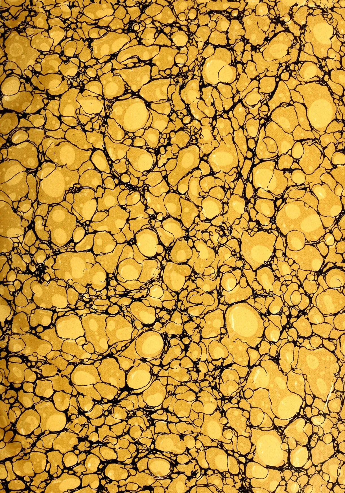
This image displays a classic marbled pattern, often referred to as 'stone' or 'shell' marble. The composition is dominated by large, irregular, and somewhat rounded shapes in a warm, golden-yellow hue. These shapes vary in size and are distributed across the entire frame. They are separated by a complex network of thin, dark, and slightly irregular lines that create a sense of depth and organic movement. The overall effect is reminiscent of a cross-section of a stone or a microscopic view of a biological structure. The lighting appears to be coming from the upper left, creating subtle highlights on the edges of the yellow shapes and casting soft shadows within the black lines. A large, faint watermark of a classical building, likely a library or archive, is centered on the page. It features a triangular pediment supported by four columns, with a base and a frieze. The watermark is rendered in a light, muted tone that blends with the aged paper background.Digitized by the Internet Archive
in 2014
https://archive.org/details/tropicalagricul371911ceyl
This image shows a blank, aged page with a light beige or cream color. The surface has a subtle texture and some minor blemishes or discolorations, particularly along the left edge, which are characteristic of old paper. There is no text or other content on the page. This image shows a blank, aged page with a light beige or cream color. The surface has a subtle texture and some minor blemishes or discolorations, particularly towards the edges, which are characteristic of old paper. There is no text or other content on the page.AND
(FOUNDED 1881.)
EDITED BY
J. C. WILLIS, M.A., Sc.D., S.D.,
Director, Royal Botanic Gardens; Organizing Vice-President, C.A.S.
Vol. XXXVII.
Containing Numbers I to VI: July to December, 1911.
44299
A. M. & J. FERGUSON,
COLOMBO, CEYLON.
1912.
S
281
771
CLINT
NEELSON
5
13
S
| PAGE. | PAGE. | ||
|---|---|---|---|
| A. | |||
| Accident Insurance and the Farmers ... | 536 | Casuarina Hedge ... | 459 |
| Account of the Working of the Land Settlement Scheme in St. Vincent ... |
342 | Causes of Salinity in Soils and Methods of Reclaiming Saline Soils ... |
141 |
| Advantage of Drainage ... | 142 | Ceara Rubber ... | 278 |
| Agricultural and Industrial Problems ... | 334 | do Seed Oil and Poonac ... | 498 |
| do Credit in Italy ... | 148 | Centralization of Agricultural Research ... | 52 |
| do Matters, Continuity in ... | 97 | Cereal Crops in the Northern Hemisphere ... | 421 |
| do Research, Development Grant for ... |
535 | Ceylon Agricultural Society: Minutes of Annual General Meeting ... |
61 |
| Agriculture and Scientific Research ... | 385 | Ceylon Agricultural Society: Minutes of Board Meetings ... |
250, 450 |
| do in Japan ... | 476 | Ceylon Agricultural Society's Progress Reports ... |
157, 349, 449 |
| ▲All-Island Agricultural Show ... | 289 | Ceylon Agricultural Society: Statement of Receipts and Expenditure for Twelve months ending December 31, 1910 ... |
68 |
| Amended Rules Governing Contracts of Plantation Rubber ... |
483 | Ceylon and its "Products" and "History" do Coca ... |
88 |
| Ants, Extermination of ... | 92 | Ceylon's Palm Products ... | 73 |
| Apiculture ... | 49 | do Rainfalls ... | 169 |
| Artificial Rubber ... | 580 | Chemical Process to Preserve Timber ... | 43 |
| Australian State Loans to Settlers ... | 249 | Chinese Tea Seed Oil ... | 487 |
| Avocado in Southern California ... | 313 | Cinnamon and Cassia do in Ceylon, Scarcity of ... |
482 268 |
| B. | Citronella Oil ... | 11 | |
| Bamboo for Paper Making ... | 561 | do do Industry of Ceylon ... | 71 |
| do Hats: A Growing Industry ... | 500 | do do Standard ... | 391 |
| do , The Philippine and the ... | 392 | Clerus Formicarius in Relation to Shot- hole Borer ... |
129 |
| Banana and Henequen Cultivation in Mexico ... |
375 | Coca Leaves, Production and Use of ... | 104 |
| Banana Cultivation in Jamaica ... | 20 | Coconut Conditions in Laguna ... | 116 |
| do Industry of Santiago de Cuba ... | 575 | do Cultivation ... | 16 |
| do : is it Seedless ... | 485 | do District Notes ... | 284 |
| do Stuffing ... | 565 | do do from the N.W.P. 75, 362 | 362 |
| do Wine ... | 480 | do Estates, on the Valuation of ... | 480, 565 |
| Bejuco Industry, Development of ... | 426 | do do Valuation of ... | 562 |
| Beven, A. W., on Coconut Cultivation ... | 16 | do Growing in the Philippine Islands ... | 398 |
| Bill of Co-operation in Denmark ... | 152 | do in British New Guinea ... | 268 |
| Blasting Tree Stumps ... | 576 | do Lands: The Copra Industry ... | 74 |
| Bleeding Rubber Tree, A ... | 576 | do Palm Cultivation and Production in the Philippine Islands and in Ceylon ... |
361 |
| Botanical Gardens of Ceylon ... | 250 | do Palm Cultivation in Ceylon and the Philippines ... |
362 |
| Brazilian Coco-Palm ... | 80 | do Palm Products for Third Quar- ter of 1911 ... |
370 |
| Breeding for Egg Production ... | 136 | do , Physiology of the ... | 214 |
| British Guiana and India Rubber ... | 290, 491 | do Prospects ... | 317 |
| Broom Millet ... | 117 | do Ventures by Lever Bros. ... | 169 |
| Business Men's Lecture Course ... | 534 | Coconuts in Java and in Travancore ... | 562 |
| C. | do in the Philippines ... | 278 | |
| Cacao ... | 358 | Coffee and Tea in Chile ... | 85 |
| do Manuring Experiments at Peradeniya ... | 565 | do , A New Caffein-free ... | 380 |
| Caffein-free Coffee, A New ... | 380 | do , Liberian ... | 87 |
| Caingins (Chenas) ... | 70 | do , Present High Price of ... | 365 |
| Camphor Oil ... | 6 | do , Sugar and Tea ... | 482 |
| do Production in Burma ... | 375 | Coffees, Blight-Resistant ... | 584 |
| Cardamom Fat from Makulu (Hydnocar- pus Venenata) ... |
102 | Continuity in Agricultural Matters ... | 97 |
| Carnauba Wax ... | 284 | Co-operation in Denmark ... | 152 |
| Castilloa Elastica Tapping and Yields ... | 100 | Co-operative Conference at Midnapore... | 322 |
| do Rubber in Jamaica, Conference on ... | 3 | do Credit ... | 321 |
| Castor Oil Culture in South Africa ... | 376 | ||
| do do Seeds ... | 285 | ||
| PAGE. | PAGE. | ||
|---|---|---|---|
| Co-operative Credit and Educated Classes | 245 | Fruits Worth Growing in Ceylon | 415 |
| do do , Indian, Advocacy of | 320 | Fungicides and Insecticides | 507 |
| do Demonstration and Rural Improvement ... | 439 | Fungoid Parasites to Control Scale Insects | 429 |
| do Facts and Figures ... | 353 | Fungus Attacks, Degree of Virulence of Future Delivery Dealings | 41 |
| do Movement in Denmark, The Growth of ... | 538 | do of the Rubber Industry ... | 181 |
| Copra Industry's Rapid Increase | 422 | ||
| do in the Seychelles ... | 583 | G. | |
| do Trade in Philippines ... 235, 274 | Gardening at Girls' Schools (Illustrated) | 249 | |
| do do of Odessa ... | 485 | do in Ceylon ... | 1 |
| Cotton in South Africa ... | 376 | Germination of Hevea Seeds ... | 232 |
| Cow Tree of Ceylon, and Papaya ... | 359 | Glucose as a Food Stuff ... | 232 |
| Crops as Green Manures, Value of Different | 144 | Grape Fruit for Ceylon ... 568, 576 | |
| Current Literature ... | 166 | Green, E. E. ... 129, 240, 255, 318 | |
| do Manures, Value of different Crops as | 144 | ||
| D. | Ground-nuts in the West Indies, Notes on Growth in Girth of Trees ... | 106 | |
| Dedigama Market Show ... | 326 | Guano Palm Industry in Honduras ... | 483 |
| Destruction of Lantana ... | 576 | 182 | |
| Development Grant for Agricultural Research ... | 535 | ||
| do of Live Stock Insurance in Sweden ... | 316 | H. | |
| Dictionary of Terms used in Agriculture, Botany, Chemistry and Allied Sciences | 256, 327, 460, 553 | Harrow, Patent Flexible ... | 477 |
| Diseases of Plants and Injurious Insects | 238 | Hat-making Industry for the Sinhalese | 465 |
| Distillation of Orange Flowers at Grasse 92, 367 | Hawaiian Growers' Association, Fourth Annual Meeting of ... | 194 | |
| Drainage, Advantage of ... | 142 | Health of Superintendents and Coolies... ... | 269 |
| Drieberg, C. 61, 212, 249, 250, 341, 449, 450, 459 | Heat in London, Remarkable ... | 267 | |
| Dry Farming ... | 284 | Hemp Holds First Place ... | 499 |
| Henequen and Banana Cultivation in Mexico ... | 375 | ||
| E. | Hevea Rubber Wood as Fuel ... | 499 | |
| Economic Association, The Work of ... | 543 | Hickory King Maize (illustrated) ... | 212 |
| Economy on Estates, The Practice of ... | 146 | Holmes, J. A. ... 156, 336, 545 | |
| Educated Classes and Co-operative Credit | 245 | Humus, Value of ... | 53 |
| Education for the Country Life ... | 544 | Hydnocarpus Venenata (Cardamom Fat) | 102 |
| Egg Production, Single Testing System of Breeding for ... | 136 | do do (Makulu, Sinh.) ... | |
| Elliott, E. ... 225, 305, 393, 501 | as Cardamom Fat ... | 102 | |
| Estate "Buildings" and "Soils" ... | 89 | ||
| Eucalyptus Trees, Conditions best Suited to ... 570, 571 | I. | ||
| European Fruits in the Tropics ... | 486 | Improved Hat-making Industry for the Sinhalese ... | 465 |
| do Supervision in the Middle East ... | 79 | India and Paper-making ... | 102 |
| Experiment Station, Peradeniya ... | 156 | do Rubber in Dutch Guiana ... | 207 |
| Experiments Bearing on the Cultivation of Paddy ... | 221 | Indian Agriculture ... | 85 |
| Extermination of Ants ... | 92 | do Mango Juice ... | 38 |
| Indigo and Indigo Prospects ... | 279 | ||
| F. | Industrial and Agricultural Problems ... | 334 | |
| Farewell Note by the Editor ... | 489 | Insecticide Control Law in California, Proposed ... | 236 |
| Farmers and Accident Insurance ... | 536 | Insecticides ... | 318 |
| Farmers' Co-operative Demonstration Work in its Relation to Rural Improvement ... | 439 | do and Fungicides ... | 507 |
| Federated Malay States in 1910 ... | 365 | Insects and Plant Diseases, Injurious ... | 238 |
| Financier's Special Rubber Commissioner in Ceylon ... | 466 | Intensive Cultivation in Japan ... | 477 |
| Flies and Disease Carriers ... | 337 | do Gardening ... | 377 |
| Flowers on French Riviera, Cultivation of Food Animals, Suggestions for Controlling Tuberculosis among ... | 284 | do Horticulture ... | 477 |
| Freak Plantain Bunch, A ... | 369 | International Institute of Agriculture ... | 421 |
| Fruit and Pumpkin Flies ... | 240 | do Rubber Exhibition ... | 183 |
| do Industry of Cuba ... | 481 | Introduction of Para Rubber into the Malay States ... | 170 |
| Invites China Coast Business Men to Lectures ... | 355 | ||
| Ipecacuanha in India, Cultivation of ... | 571 | ||
| Itinerary in Uva Province ... | 546 | ||
| K. | |||
| Kalutara Agri-Horticultural Show ... | 70 | ||
| Kapok and its Cultivation ... | 275 |
| PAGE. | PAGE. | ||
|---|---|---|---|
| L. | Pepper | 90 | |
| Labour, Oriental vs. Occidental | 334 | Peradeniya Experiment Station | 156, 336, 545 |
| Lac Industry, The | 425 | Philippine Tobacco | 213 |
| Land Improvement Credit in Great Britain | 55 | Physiology of the Coconut | 214 |
| do Settlement Scheme in St. Vincent | 342 | Plantain Bunch, A Freak | 369 |
| Latex and its Relation to the Life of the Parent Plant | 378 | Plant Diseases and Insects | 238 |
| Lever Bros.' Coconut Ventures | 169 | do Food and its Preservation | 180 |
| Live Stock Insurance in Sweden | 316 | Planter of 22 Years in Coffee, Tea and Rubber | 471 |
| Loans in France | 56 | Planting in Java and Travancore | 562 |
| Lock, R. H. | 221 | do in Trinidad | 574 |
| M. | Problems, Agricultural and Industrial | 334 | |
| Macmillan, H. F. | 415 | Production of Tea in Ceylon | 265 |
| Mango Weevil, The | 514 | Progress Reports of the Ceylon Agricultural Society | 157, 349, 449 |
| Manuring of Hevea Rubber | 98 | Preservation of Plant Food | 180 |
| Maple Sugar | 35 | do of Timber by Chemical Process | 43 |
| Market Rates for Tropical Products | 264 | Q. | |
| Matugama Agri-Horticultural Show | 70 | Queensland Nut, The | 480 |
| Maxwell-Lefroy, H. | 318 | R. | |
| Meat Supply in Italy | 48 | Rainfall, Ceylon : 8½ Years of a Dry Cycle of 11 Years | 169 |
| Method of Tapping the Ceara Rubber Tree | 470 | Raitt, W. | 295 |
| Milk Supply in Large German Towns | 515 | Rat Destruction in Java | 369 |
| Mosquitoes | 382 | Report on the Danish System of Taxation | 356, 548 |
| do and Malaria | 255 | Research, Centralization of Agricultural | 52 |
| Mycology in Relation to Administration | 427 | Rice as a Muscle Builder | 312 |
| N. | do Cultivation | 299 | |
| New Forest Legislation in Italy | 547 | do Culture, 4th International Congress of | 305 |
| do Uses for Rubber | 3, 101 | do , Dry Grain, Coconuts, Tobacco, and Cotton in the Northern Province | 574 |
| Notes and Comments | 498 | do Exports from Siam | 232 |
| Nutmeg, The Cultivation of the | 572 | Rinderpest in Davao District, Eradicating | 242 |
| Nuts | 367 | Rivalry between Panama and Suez | 341 |
| O. | Roselle | 574 | |
| Orange and Lemon Trees among Coconut Palms | 467 | Rule of Thumb in Sugar Making | 38 |
| Our Palm Products for the 3rd Quarter, 1911 | 370 | Rubber | 496 |
| P. | do and Guttapercha in Borneo | 92 | |
| Paddy Cultivation in Ceylon during the 19th Century | 325, 305, 393, 591, 559 | do do and "The Terpenes" | 468 |
| Paddy, Experiments Bearing on the Cultivation of | 221 | do and the Philippines | 290 |
| Palm Oil in West Africa | 388, 368 | do at Auction, £1,000,000 Worth | 478 |
| Palmyra Disease | 93 | do Coagulation | 91 |
| Papaw Culture in the Philippines | 32 | do Commissioner in Ceylon, Financier's | 466 |
| Papaya and Cow Tree of Ceylon | 359 | do Country of the Amazon | 168 |
| Papaya, Cultural Directions for | 479 | do Driving Methods, New | 381 |
| do , Utilization of | 282 | do Enterprise, New | 391 |
| Paper Industry in Ceylon | 209 | do Exhibition, an International | 86 |
| do Making, Bamboo for | 561 | do do and After | 382 |
| do do , Suitability of Various Woods, Bamboos and Grasses for | 212 | do do in America | 469 |
| do Pulp Testing at the Forestry Court Cellulose Laboratory, Allahabad Exhibition | 295 | do Exhibits from Ceylon and Malaya | 478 |
| Para Rubber in Burma | 381 | do , Future Delivery Dealings | 582 |
| do do , Introduction into the Malay States of | 170 | do in Angola | 576 |
| do versus Ceylon | 490 | do in Brazil | 92 |
| Passion Fruit Culture | 418 | do in British East Africa | 584 |
| Patent Flexible Harrow | 477 | do in do Guiana | 290 |
| Peanut Oil | 373 | do in Congo | 563 |
| do do Industry of Marseilles | 373 | do in Java | 79, 382, 562 |
| do , The | 374 | do in Negombo | 76 |
| Peat Utilization in Germany | 373 | do in Nyasaland | 487 |
| do in Several Countries | 467 | ||
| do Investigation, Ceara | 85 | ||
| do , Manuring for | 581 | ||
| do Market, The | 479 | ||
| do Paving | 87 | ||
| do Progress, How | 475 | ||
| do Prospects | 377 | ||
| PAGE. | PAGE. | ||
|---|---|---|---|
| Rubber Smoke, Cure for ... | 588 | Tea in China in the 17th Century ... | 276 |
| do Statistics ... | 367 | do in 1910-11: Brooke, Bond & Co's Report | 473 |
| do Supplies ... | 575 | do in Java ... | 562 |
| do Tapping ... | 562 | do in do, Recent Experiments on ... | 363 |
| do do Cups ... | 265 | do in Nyasaland ... | 189, 487 |
| do Tree, A Bleeding ... | 576 | do in the Caucasus ... | 384 |
| do do, Yields from Young and Old | 569 | do Shares ... | 83 |
| do, Wild ... | 76 | do Share Values, Indian and Ceylon ... | 583 |
| do World Remains Interesting ... | 390 | do Shipments from Ceylon ... | 90 |
| do, World's Visible Supply of ... | 478 | do, Sugar and Coffee ... | 482 |
| S. | do Trade, Thompson's Annual Report on the ... | 81 | |
| Saline Soils, Methods of Reclaiming ... | 141 | Termites ... | 517 |
| Sapium, Some Stray Notes on ... | 387 | Textile Fibre Industry of Brazil ... | 274 |
| Scale Insects, Control of, by Means of Fungoid Parasites ... | 429 | The Philippine and the Bamboo ... | 392 |
| Schimmel & Co.'s Semi-Annual Report... .. | 577 | do do and Rubber ... | 290 |
| School Gardens in Jamaica ... | 57 | do Rubber Country of the Amazon ... | 168 |
| Scientific Directing of a Country's Agriculture ... | 519 | do do Industry and the Exhibition ... | 493 |
| do Research and Agriculture ... | 385 | Tobacco ... | 193 |
| do do and Planters' Co-operation, The Value of ... | 533 | do Commerce in Philippine ... | 298 |
| Scourge of the Tropics, The ... | 517 | do Cultivation in Ceylon ... | 33 |
| Scovell's Estate, Bangalore ... | 341 | do (for the European Market) in Ceylon ... | 451 |
| Sea Island Cotton and St. Vincent Soils ... | 266 | do in Ceylon ... | 562 |
| Seeds-Germination of Hevea ... | 2 | do in South Africa ... | 376 |
| Sensitive Plant, The ... | 568 | Tomato-Seed Oil ... | 380 |
| Shot-hole Borer and Clerus Formicarius ... | 129 | Trade Review of Ceylon Produce in London ... | 360 |
| Silk Cotton or Kapok ... | 469 | do do of Local Products in the London Market ... | 464 |
| Sisal Cultivation in Fiji ... | 372 | Tree Planting in Towns ... | 124 |
| Smith, R. W. ... | 62 | Trees and Moisture ... | 84 |
| Smoking of Rubber ... | 372 | Tropical Sun and its Effect on Animals and Man ... | 438 |
| Snake Bite and its Treatment ... | 338 | True Blue ... | 78 |
| Soap Company Incorporated ... | 56 | Tuberculosis among Food Animals, Suggestions for Controlling ... | 130 |
| Soil and the Plant ... | 484 | U. | |
| Soils, Causes of Salinity in and Methods of Reclaiming Saline ... | 141 | Uses for Rubber, New ... | 101 |
| Soy Bean, The ... | 410 | V. | |
| Soya Bean Culture in Ceylon ... | 575 | Vanilla Crops in 1910-11 ... | 37 |
| do do, Food Value of ... | 88 | Vanilla in the Seychelles ... | 583 |
| do do, The ... | 410 | Veterinary Institutions of Japan, Brief Report on the ... | 41 |
| do do Trade ... | 507 | W. | |
| do do vs. the Coconut ... | 266 | Walter Molegoda ... | 546 |
| do Beans and Oil ... | 88 | Wattagama and Rangala Revisited ... | 570 |
| State Aid to Agriculture in Norway ... | 150 | Wells ... | 62 |
| do Loans to Settlers in Australia ... | 249 | White Ant, Circumventing the ... | 179 |
| Statement of Ceylon Agricultural Society's Accounts for 1910 ... | 68 | do do on New Rubber Clearings, Another ... | 180 |
| Sugar Cultivation in the Philippines ... | 423 | do do Proof Timber ... | 366 |
| do Industry, the Estimated World's... .. | 312 | do Pepper ... | 374 |
| do Making Industry in India ... | 40 | Whitewash, A Good ... | 470 |
| do do, Rule of Thumb in ... | 38 | Wickremaratne, N. ... | 326 |
| do -Palm of the East Indies ... | 234 | Wild Potato of Chili ... | 486 |
| do, Tea and Coffee ... | 482 | do Rubber ... | 76 |
| Sun in the Tropics on Animals and Man, The Effect of ... | 438 | Willis, J. C. 1, 97, 102, 193, 289, 305, 385, 489, 553 | 460 |
| Synthetic Indigo ... | 281 | Willis, J. C. & M. ... | 256, 327, 460 |
| do Rubber ... | 192 | Wincherley, W. ... | 480, 565 |
| T. | Wind-Breaks, The Use of ... | 552 | |
| Tapping and Yield of Castilloa Elastica ... | 100 | Wood-Alcohol Industry in Germany ... | 192 |
| do Cups ... | 265 | Y. | |
| Tea and Coffee in Chile ... | 85 | Yields from Young and Old Rubber, Trees ... | 569 |
| do and Copra Trade of Odessa ... | 485 | ||
| do Drinking in France ... | 266 | ||
| do, Economic Value of ... | 573 | ||
| do, High Prices ... | 376 | ||
THE
TROPICAL AGRICULTURIST
AND
MAGAZINE OF THE
CEYLON AGRICULTURAL SOCIETY.
VOL. XXXVII.
COLOMBO, JULY 15TH, 1911,
No. 1.
GARDENING IN CEYLON.
While there is no doubt that local gardens have much improved in the last 15 years, the general standard is none the less a low one, and, with the increasing prosperity of Ceylon we may hope to see it rise. The wages of garden coolies are decidedly on the increase.
One thing that militates against good gardens is the fact that people are so continually on the move, and think that it is waste of time and money to lay out pretty gardens. If they would remember their successors in all cases, this need no longer be an operative cause of poor gardening, but this we fear will be long of coming. Would it be possible for estate Companies, for example, to compel the bungalow garden to be kept in good order, the V. A. to be the judge?
Another thing is the ignorance of the garden owners, and this is perhaps the most important of all. They employ only a cooly, not a trained gardener,
and consequently are not able to get really good results unless they have themselves some knowledge of gardening. It is very desirable that greater knowledge of this kind should spread abroad, but how best to spread it is a difficult question. If every one would take a personal interest in their garden, spend time and labour upon it, and note the results of doing everything in this way or in that way, so as to learn rapidly by experience, a great deal would be done.
Many of course cannot afford a good garden unless they can get something out of it, and to these we would suggest growing quantities of vegetables or fruits and thus making the garden pay.
With the publication of a book upon local gardening, more people should begin to take an interest in the subject, and pay personal attention to the work of the garden cooly to a greater extent than merely telling him to water here or there, to weed this place or that, or bring in flowers for the table.
2[JULY, 1911.(From the Agricultural News, Vol. X, No. 233, April 1911).
It has been found that the seed of Hevea brasiliensis, which has been imported from time to time for use in Grenada, has shown very unsatisfactory germinating power, and, in view of the cost of the seed, it was considered expedient by Mr. G. G. Auchinleck, B. Sc., Superintendent of Agriculture, to make observation on seeds grown locally, for the purpose of deciding as to what the low percentage of germination might be due. The results of Mr. Auchinleck's investigations have been presented by him in the form of a report, from which the following information is taken. They show that experience in Grenada is confirmatory of that which has been described already from other parts of the world.
Mr. Auchinleck points out that the low germinating power of imported seed is obviously due to actual sterility of the seeds, to their rapid deterioration after maturity, or to both causes acting at once. For the purpose of obtaining information in regard to the suggested deterioration, seeds from capsules which had been opened just before dehiscence took place were planted twenty-four hours after the fruits had been plucked, a few being kept, however, for three days. The number of seeds collected altogether was 975, and 160 of these were set aside as being too light. That there is a great difference in weight between the heavy and light seeds is shown by the fact that 100 of the former were found to weigh 15 oz., while the weight of the same number of light seeds was only 6 oz.; there was, however, no observable difference in size between the two kinds.
In the continuation of the experiment, all the light seeds were planted in a bed, while of the heavy, eighty were sown at stake and seventy-five in pots. None of the light seeds germinated; of the heavy, nineteen of those at stake, and thirteen in pots, gave sprouts. These results appear to justify the rejection of light seeds when those of Hevea are being selected for planting.
Observations on the rapidity with which the seeds lose weight, together with the consideration that from two weeks to several months are required for germination, led to the supposition
that the rate at which heavy seeds become lighter in the soil might result in a serious diminution of their power to germinate, before the young plant has had time to pierce the hard seed coat. This led to the following experiment, undertaken to find how quickly heavy Hevea seeds may lose weight.
For the purpose, ten heavy seeds were packed in thoroughly dried charcoal, in a flask; while ten others were placed in a flask open to the air. Each lot was taken periodically from its flask, at the same time, and weighed, with the following results:—
| Day of weighing. | Seeds in air. grams. | Seeds in charcoal. grams. |
|---|---|---|
| 1st. | 48.8 | 49.0 |
| 5th | 48.5 | 43.5 |
| 9th | 47.0 | 40.5 |
| 15th | 45.5 | 38.7 |
| 20th | 44.4 | 38.0 |
| 25th | 43.0 | 37.5 |
| 30th | 41.8 | 37.2 |
| 42nd | 39.0 | 37.0 |
| 49th | 38.0 | 37.0 |
| 54th | 37.5 | 37.0 |
Calculation of the results shows that in two weeks the seeds kept in air had lost 6 per cent. of their weight and those in dry charcoal 20 per cent., the latter being about the extreme limit of desiccation; the light seeds took fifty days to reach this.
Further observations, made for the purpose of ascertaining the cause of the decrease in weight, gave negative indications that this is due to the loss of water; and it is thought that it takes place on account of the presence of a definite ferment in the seed.
The fact that the trials were commenced late in the bearing season make it impossible to ascertain if the poor germinating power is the indirect result of some imperfection in the flower, or irregularity in fertilization. It was noted, however, that the embryos of all the seeds examined appeared to be normal, and there was the interesting observation that, out of about 320 capsules, all were trilocular and three seeded, except two, which possessed four loculi and four seeds. The seeds in the abnormal capsules were subjected to a germination test, and three out of the eight gave sprouts. Attention is drawn to the faint possibility that a tendency toward irregularity in the floral organs of Hevea brasiliensis is indicated, with the consequent production of a low
JULY, 1911.]3Saps and Exudationsgerminating power in the seed that is eventually borne. The improbability of the correctness of such a suggestion is, however, pointed out.
The final conclusions from the investigation are given as follows:—
(1) Seeds of Hevea brasiliensis lose weight rapidly after maturity, the loss being apparently due to desiccation.
(2) The loss of weight appears to coincide with loss of germinating power.
(3) Desiccation apparently takes place, in some instances, even before dehiscence of the capsule.
(4) Probably, without special precaution, Hevea seeds will lose their germinating power within two or three weeks after the ripening of the capsules.
The matter of practical importance that can be deduced from these results is that no Hevea seed should be sold until it has been selected rigorously by weight and there is the additional indication that no unnecessary exposure, or loss of time in planting, should be allowed after the seeds have been received.
The field for the use of Para rubber seems to have no limit, according to a report made by Consul-General James T. DuBois, Singapore, to the Department of Commerce and Labour.
Consul-General DuBois claims that money put into sound rubber companies, and managed on good business principles, is as sound an investment as can be found in any country. He speaks of the supply and demand in a manner that is encouraging to investors in rubber. His report is as follows:
As the area of Para rubber culture increases in the Malaysian Archipelago at the rate of several millions of trees a year, the question arises, will not the supply so far surpass the demand that the price will fall below the profit-giving line?
As the soil of most of the Malaysian Archipelago is well adapted to rubber culture, and as rubber can be produced at a cost of 25 cents a pound and the field for the consumption is extending rapidly throughout the world, it would seem that there is no valid cause for alarm among those who are interested in rubber estates which have been started right and are managed right.
The uses of rubber are becoming so varied that the supply must constantly and largely increase in order to meet the demand. Aviation affords a new and ever augmenting field for the consumption of rubber. The tire industry is as yet in its infancy. Food and liquid preparations, which are ever increasing, need rubber to keep the jars air-tight. Formerly balloon fabrics were manufactured solely of varnished silks, now rubber-coated cottons are coming into use, three plies of which weigh less than 5 ounces per square yard and stand a far greater strain than varnished silks. The patent pipe lighters have rubber plugs. The shock absorber to reduce vibrations on all kinds of vehicles as well as machinery, is made of rubber. Ladies' dresses are trimmed with rubber beads, and white rubber shoes for evening toilet are becoming fashionable. We have rubber stair treads, and all kinds of special rubber shoes and boots are being manufactured and widely sold. The fuses used in mining, flooring for various buildings is a probability, and even an adulterated rubber is proposed for pavement. Rubber tips for chair legs and toe caps for boots will come into common use.
The field for the use of Para rubber seems to have no limit, and the money put into sound rubber companies which have bought land by the acre and not by the square foot, and are cultivating it with care and managing the estate on good business principles, is as sound an investment as can be found in any country.—Manilla Bulletin.
BY W. HARRIS, F.L.S.,
Superintendent of Public Gardens.
(From the Bulletin of the Department of Agriculture, Vol. I. No. 4.)
On January 3rd, 1911, a conference of Departmental officers and planters interested in the culture of Castilloa rubber in Jamaica was held at Hope at the invitation of the Director of Agriculture. The objects in view were first to report progress as to the yields of rubber that had been obtained from established trees in various parts of the island, secondly, to consider the question of varieties and the desirable species for trial in Jamaica and lastly for demonstrations of tapping by the most experienced operators.
A summary of the facts thus made available is here recorded.
Gums, Resins,4[JULY, 1911.1.—The species of Castilloa at present growing in Jamaica.
The Castilloa elastica of Cervantes was one of the earliest species described, and it was for long supposed that all the Ule or Hule, and Caucho trees of Mexico and Central America belonged to this species, but the large amounts of American capital that have been invested in Castilloa rubber cultivation rendered necessary the careful investigation and study of the trees which were found to vary greatly in their yields of latex and in other respects, and one of the facts that have been clearly established is, that there are many species of Castilloa instead of a single species ranging over the enormous extent of territory from Mexico to Bolivia.
In 1875, the India Office despatched Mr. Robert Cross, an experienced collector, to Central America to gather seeds of Castilloa elastica.
Cross assumed that the Caucho of Darien (Panama) was the same as the Ule, or Castilloa elastica of Cervantes and selected the forests of the rivers Chagres and Gatun, then well-known localities for rubber, for the purpose of collecting the seeds.
Mr. Cross made no botanical specimens of the Caucho trees beyond some badly preserved old leaves and seeds, so that there was no means of identifying the species with certainty on his arrival at Kew. He sent home about 7,000 seeds, all of which perished in transit. He had observed that the seeds were of a very perishable nature, and made a large collection of cuttings of the true branches.
He was shipwrecked on the Pedro Cays off Jamaica and all left the ships but Mr. Cross who refused to desert his cuttings. Eventually he was rescued by H. M. S. "Dryad" and landed at Kingston whence he sailed on the R. M. S. "Nile" arriving at Southampton in October.
From the cuttings thus obtained a supply of plants was raised at Kew and of these 57 were despatched to the Botanic Gardens, Ceylon, in 1876 and 1877 and the majority arrived alive. Plants were also sent to Liberia and the Cameroons river on the West Coast of Africa, and to Mauritius and Zanzibar on the east coast; also to Singapore, Java, Jamaica and Grenada. From Ceylon plants were sent to Calcutta, Burma and Madras, and from Singapore to Perak and Queensland.
The first plants sent to Jamaica did not live, but in the Annual Report on the Public Gardens and Plantations for
the year ending 30th September, 1882, Mr. (now Sir Daniel) Morris, who was then Director, states, that "The Castilloa or Central American rubber was introduced from Kew last year (1881) and there are two plants, one of which is in good health."
It occurred to me that the plants sent here in 1881 might have been raised from some other source than the cuttings taken from Darien by Cross in 1875, and I communicated with Kew on the subject, but the Curator of the Royal Gardens assures me our plants were also raised from the Darien cuttings and that their records show that these were sent to Jamaica in 1881. One of these apparently died, but the other two grew into fine trees and the seed obtained from these produced the majority of the older trees now growing in Jamaica.
One of the original trees was destroyed by the hurricane in 1903, but the other still survives after a most eventful history since it was taken as a cutting from its home on the isthmus.
In 1882 some of the trees sent to Ceylon in 1876 flowered and fruited and sometime later Dr. Trimen, who was then Director of the Ceylon Gardens, sent a specimen and a drawing—with complete analysis of the flowers and fruit—to Kew. Sir Joseph Hooker at once saw that the Darien tree as cultivated in Ceylon differed considerably from the true Castilloa elastica, and that eminent botanist read a paper on "The Castilloa elastica of Cervantes and some allied rubber-yielding Plants" at a Meeting of the Linnean Society in December, 1885, just 25 years ago, pointing out the differences that he had observed in the structure of the several forms that he had examined. Notwithstanding this, subsequent writers persisted in referring the tree cultivated in the eastern tropics and in the West Indies to Castilloa elastica.
In the early part of last year Professor H. Pittier, who was for many years Director of the National Institute of Costa Rica, but has for some time been a member of the scientific staff of the U. S. Department of Agriculture at Washington, applied to us for botanical specimens of our Castilloa trees, as he was engaged in monographing the genus. Specimens were sent to him from the original tree at Castleton and from a tree at Hope Gardens. Professor Pittier states that the Castleton and Hope trees are identical and that they belong to his species guatemalensis.
Fortunately for growers here this species is probably one of the best that
JULY, 1911.]5Saps and Exudations.could have been selected for culture in suitable districts in Jamaica. Most of the rubber sent from Guatemala and from British Honduras is produced by this species.
Professor Pittier in a letter to me states that for semi-arid regions, with well characterised dry and rainy seasons, he would recommend Castilloa lactiflua of the Soccosco district of the State of Chiapas in Southern Mexico; C. nicoyensis from the dry Pacific slopes of the Nicoya Peninsula in Costa Rica, and probably C. panamensis from Panama; while C. costaricana from the humid Atlantic slopes of Costa Rica, and C. elastica are better adapted for districts with predominant rainy weather.
Mr. Briscoe, the agricultural instructor for St. Thomas, recently discovered two small plantations of Castilloa in the eastern part of St. Thomas. The trees in one case were raised from seed imported from Mexico seven years ago, and in the other the seeds were imported from Costa Rica about ten years ago.
I submitted leaves of these trees to Professor Pittier and he has provisionally identified the Mexican tree as C. elastica, and the Costa Rican tree as C. costaricana.
When the trees flower and fruit in a few months' time I hope to secure complete botanical material to be sent to Professor Pittier for authentic determination, but it would appear from our present information that we have at least three species in Jamaica.
I may mention that Mr. David Fairchild, the Agricultural Explorer in Charge of the Bureau of Plant Industry of the U. S. Department of Agriculture, has made arrangements to send us during the coming fruiting season, a small supply of seed of every reputed rubber-producing species of Castilloa for trial in Jamaica.
A.—MR. W. CRADWICK,
Agricultural Instructor.
1. Castilloa trees planted at Retreat estate in Portland five years ago have now an average girth of 29 inches at 2 feet from ground. The height is 25 to 35 feet. These trees were planted in Banana land at a spacing of 14 feet.
2. At Rosend in St. Mary, the following measurements were obtained.
| Variety. | Age. | Girth at 3 feet. |
|---|---|---|
| (a) Manihot Glaziovii | 4 years | 26½ inches, |
| (b) Castilloa guatemalensis | 3 years | 22 " |
| (c) Hevea Brasiliensis | 3 years | 9-12½ " |
Photographs of (a) and (b) are given in plates 66 and 65. We are indebted to the Attorney, Mr. Henry Cork, for permission to reproduce these photographs.
3. At Burlington in Portland the oldest Castilloa tree (obtained from Castleton in 1887 and estimated to be 23 years old) was tapped on December 23rd, and gave 4 lb. 6. oz. of crude rubber and 7 oz. of scrap, total 4 lb. 13 oz. in one tapping. This is the highest yield yet recorded in Jamaica.
This tree was tapped in September and October, 1907, and gave 22 ozs. rubber in three tappings extending over three weeks.
It is growing on poor hilly land unsuitable for bananas, and now has a girth of 86 inches showing, a gain of 6 inches in a period of 3½ years.
At the last tapping the latex ran freely and a splendid yield was obtained. The leaves from this tree have been identified by Mr. Harris as those of the species guatemalensis, originally introduced through Castleton Gardens.
B.—MR. J. BRISCOE,
Agricultural Instructor.
(1) Two large Castilloa trees at Castleton age 25 years gave 4 lbs. of rubber in 5 tappings or 2 lb. per tree (Species Guatemalensis).
(2) Four trees in St. Thomas-in-the-Vale, aged 10 years, averaged 3 ozs. rubber each at the first tapping (Species guatemalensis).
(3) Three trees at Linstead, aged 10 years, averaged 2 ozs. rubber each at the first tapping, two of these girthed 50 inches, and the others, 37 inches. (Species guatemalensis.)
(4) At Koningsberg in St. Mary,
No. 1, 8 years, 48 inches in girth gave 11 oz.
No. 2, 12 years, 72 inches in girth, gave 2 lb.
No. 3, 12 years, 84 inches in girth, gave 1 lb. 11 ozs.
(Species guatemalensis.)
St. Thomas—
(a) Castilloa elastica from Mexican seed, trees 7 years old, 36 inches in girth, gave 9 ozs. rubber.
(b) Castilloa costaricana, from Costa Rican seed, trees 10 years old, 36 inches girth, gave 7 ozs. rubber.
Linstead, St. Catherine—
Species, Castilloa guatemalensis.
(a) Three 10 years old trees, averaged 2½ ozs. rubber each.
Oils and Fats.6[JULY, 1911.(b) Three 10 years old trees, averaged ozs. rubber each.
St. Andrew—
Species, Castilloa guatemulensis.
Belle Vue, Red Hills, tree aged about 24 years, girth 62 inches, 1st tapping gave 1 lb. 9 ozs., 2nd tapping a month later, gave 1 lb. 8 ozs.—Total 3 lb. 1 oz.
C.—MR. L. WATES,
Agricultural Instructor: for Portland and St. Thomas.
In Portland, 76 trees varying from 8 to 14 years have been tapped. The yields have varied a good deal. One tree 14 years old and 65 inches girth, gave ozs. of rubber at the first tapping. The tree was tapped every month but after the third tapping gave no latex. After a rest of 4 months the tree gave a further 7 ozs. and two months later 5 ounces more, making a total yield of 2 lb. 9 ozs. rubber from this tree.
Mr. Wates concludes from his experiments that 3 or 4 tappings a year will be the maximum desirable and that on suitable soil in Portland, trees of ten years should girth 45 inches and yield from four to five ounces of rubber for the first tapping.
He considers from these observations that a yield of 225 lb. of rubber per acre per annum after the ninth year can be reasonably expected from Castilloa plantations in the Parish.
The demonstrations of tapping on some 7 years old trees at Hope showed the great convenience and utility of the new "Thompson tool" for tapping Castilloa trees.
We can recommend this implement as the best tool yet tested in Jamaica for tapping Castilloa rubber trees.
H. H. C.
Semi-Annual Report of Schimmel & Co.
April, 1911.
(FRITZSCHE BROTHERS.)
During the past six months no noteworthy alterations have occurred in the Japanese camphor oil market. Only a few large parcels have been brought forward since we covered our requirements for a long time ahead, and these have mostly found buyers at full prices in the United States. Light and heavy camphor oil, the by-products of our satrol manufacture, have enjoyed a very active demand, because they have recently been used chiefly as substitutes for turpentine oil or in the manufacture of turpentine substitutes, the price of genuine turpentine oil having risen to a figure never known before. We have repeatedly been under the necessity of advancing the prices of our oils, and the fact that they still continue to be in brisk request shows that for the present there is no prospect whatever of any decline in the quotations. Our special quality light camphor oil, known as "A," possesses about the following constants: 0.860 to 0.870, b. p. 170 to 182°, flashpoint at 763 mm. press. about 53°. This quality has at intervals been in such request that our works were scarcely able to keep pace with the demand. The working up of crude camphor oil has attained so great an im-
portance in our establishment that, although our plant is on the largest imaginable scale, we are only able to keep up with orders by working night-shifts.
According to a Japanese source*, the net profits of the Formosan Monopoly Bureau have increased in the year 1909 to million Yen (= over £250 000,) while the results for 1910 are expected to be still better. Camphor from Southern China, of which the price at the time of the Report (August 1910) was 140/- as compared with 145/- for quality B and 140/- for quality BB of the Japanese article, was in poor demand, while apparently the synthetic article had disappeared from the market.
According to further reports in the same paper a special commissioner of the American firms interested in the camphor trade, Mr. Anderson, has personally entered a protest with the Japanese Government against the irregularity in the sales of refined camphor to the United States. A journey to Formosa, undertaken by Mr. Anderson for the purpose of collecting information, showed that a certain Japanese firm which had a concession for the preparation of crude camphor only, was unlawfully engaged in refining camphor. This led the American to enter a fresh protest with the Japanese Ministry of Finance, accompanied by a threat of
* Oriental Physician and Druggist, Yokohama 4 (1910), No. 36, p. 6.
JULY, 1911.]7Oils and Fats.diplomatic representations. Similar complaints are said to have been made of the firm in question some years ago. An American trade-paper† devotes a lengthy report to the subject, from which we gather that the firm concerned (which is here also mentioned by name) has been preferred by the Government for supplies of crude camphor at the expense of other Japanese refiners and that the firm is said to contemplate monopolising the trade is refined camphor for itself, or at any rate for Japanese houses. It would be impossible
for the American refiners to take any effective measures against such a proceeding, either by fiscal or by diplomatic means.
A report by Dr. Müller, interpreter at the Imperial German Consulate-General at Yokohama‡, contains detailed information on Japanese camphor, dealing with the production, export and other commercial matters relating to the drug. These particulars amplify in many respects the information already given in our Reports, for which reason we reproduce them textually below:
THE EXPORTS OF THE PAST 3 YEARS HAVE BEEN AS FOLLOWS:—
| 1907. Quantity Piculs. |
Value Yen. |
1908. Quantity Piculs. |
Value Yen. |
1909. Quantity Piculs. |
Value Yen. |
|
|---|---|---|---|---|---|---|
| Old Japan ... | 30,576 | 5,026,858 | 18,075 | 2,063,410 | 40,507 | 3,469,398 |
| Formosa ... | 22,648 | 2,619,143 | 16,710 | 1,710,493 | 50,030 | 4,377,816 |
| Total ... | 53,224 | 7,646,001 | 34,785 | 3,773,903 | 90,537 | 7,847,214 |
Two points at once strike us in considering these figures.
The following explanation of these two factors may be given:—
For many years the Japanese Monopoly Bureau believed that it was possible to control the world's market in camphor and to dictate prices according to its pleasure. The Bureau therefore advanced its average sale price from 120 yen per picul in the year 1903, to an average of from 150 to 160 yen (the highest limit) in the years 1906 and 1907, while at the same time it promoted most assiduously the collection of camphor, partly by increasing the purchase prices paid to the producers, partly by the laying down of new plantations of camphor trees. After the revival of the Chinese production and the appearance of artificial camphor, however, the demand for Japanese camphor underwent a considerable decline, and the Japanese Government, after suspending its sales for a long time, was finally brought to the conviction that the measures it had so far taken were a failure. It therefore decided upon repea-
ted reductions in price, the last of which was made in September, 1908, with the object of thereby getting rid of its steadily accumulating stocks. Since that time the prices have been as follows:—
For the above reasons the high figures relating to the year under review do not warrant the conclusion that there has been an increase in production, in fact they are in the main only the consequences of the severe reductions in price and of the sale of the accumulated stocks which has been made possible by these reductions. In Old Japan the production has even declined in consequence of the lowering, in the year 1909, of the prices paid to the producers.
With regard to the camphor exported from Old Japan (Kobe), it should be noted that this is not all of Japanese origin, but that it includes, in addition to camphor produced in Japan, considerable quantities of camphor which has been separated out from oil produced in Formosa. The exports of camphor oil from Formosa to Japan in the year under review amounted to 36,394 piculs, from which about 18,000 piculs of camphor were prepared.
† Oil, Paint and Drug Reporter 78 (1910), Vo. 10, p. 7.
‡ Deutschea Hand, Arach. 1911, February Number, p. 137.
Oils and Fats.3[JULY, 1911.The subjoined table shows the conditions of production during the past few years, i.e., during the administrative and not the calendar years.
| 1907. | 1908. | 1909. | |
|---|---|---|---|
| Formosa : | Piculs. | Piculs. | Piculs. |
| 1. Camphor A ... | — | 314 | — |
| 2. Improved B ... | 17,796 | 31,040 | 31,007 |
| 3. Camphor B ... | 28,879 | 16,594 | 29,342 |
| Total ... | 46,675 | 47,948 | 60,349 |
| Japan : | |||
| 1. Improved B ... | 4,818 | 6,552 | 8,139 |
| 2. Camphor B ... | 4,338 | 5,457 | 3,455 |
| Total ... | 9,156 | 12,009 | 11,594 |
| Grand Total ... | 55,831 | 59,957 | 71,943 |
B is crude camphor; improved B (BB) is crude camphor which has been purified to 97% by distillation. A is pressed BB and is only prepared in Formosa.
The estimated production during the administrative year 1910 is for Formosa 58,090 piculs of camphor and 67,300 piculs camphor oil; therefore, assuming that 30,000 piculs of camphor will be recovered from the oil, the total output of Formosa would amount to 88,000 piculs.
This estimate is based upon the assumption that the advance in prices which has taken place on the European market since the end of last year, will again induce the producers to prepare sufficient camphor to satisfy the largest possible demand. But whether this high estimate will, in fact, be realised appears for the present all the more doubtful, because in spite of the abundance of camphor forests in the island, a lack of trees is already making itself felt in those districts where order has been established, so much so, that occasionally it is necessary to distil old branches and roots. In any case, however, the production in Formosa during the administrative year shows an increase over the preceding year, whereas in Japan, in spite of every endeavour, it has been impossible to increase the production to the desired extent, notwithstanding the fact that as the remaining supplies of trees dwindled, the distilling plants were not only frequently removed, but young trees and roots also were worked up.
As regards the new plantations which are being laid down energetically both in Old Japan and in Formosa, it is to be
observed that plants raised from seed cannot be worked up until they are at least 15 years old, and also that the experiments of growing camphor trees from roots or slips have been a failure both in Formosa and in Japan.
Owing to the serious reduction in price, the revenues of the Monopoly have fallen off greatly, and in Old Japan, where the average price of production of the camphor during the past three years has been about 90 yen per picul, the Monopoly has actually been working at a loss. But in Formosa also, although the cost prices there are lower (58 to 60 yen per picul) it is doubtful whether, under the present conditions, the Monopoly can cover its expenses, taking into account the very onerous exportation and freight charges, as well as the costly military operations against the ravages which have been undertaken for the purpose of opening up new camphor forests.
Newspaper reports state that for the reasons above mentioned the firm of Mitsui and Co. which, as is well known, at present controls the marketing of the camphor Monopoly, advised the Japanese Government some time ago to abolish the State Monopoly, because it would otherwise be impossible to maintain the article against the competition of the Chinese and the artificial products. It is, however, to be expected that the Government, being loth to abandon a Monopoly which has been established on a large scale and with a considerable staff, will for the present concentrate its efforts upon continuing the struggle against the synthetic camphor, even at a loss, at any rate so long as there are grounds for hope that it can dictate prices which will make the manufacture of the synthetic product unprofitable. That the Japanese Government assumes for certain that this is the case at the present time, may be inferred from the statement of the Director of the Monopoly Bureau that "natural camphor was not threatened by any danger so long as no new manufacturing processes were discovered which would make it possible to produce synthetic camphor at a lower cost than the present."
The table below shows the quantities of camphor exported during the administrative year to the various countries of destination :—
JULY, 1911.]9Oils and Fats.EXPORTS FROM| Formosa-Kelung. | Old Japan (Kobe). | Formosa-Japan. | ||||
|---|---|---|---|---|---|---|
| Quantity : Value : | Quantity : Value : | Quantity : Value : | ||||
| Picul. | Yen. | Picul. | Yen. | Picul. | Yen. | |
| Germany | 18,496 | 1,674,340 | 6,389 | 545,574 | 24,885 | 2,219,923 |
| U. S. A. | 14,313 | 1,064,279 | 10,081 | 824,646 | 24,394 | 1,888,925 |
| France | 10,119 | 969,349 | 6,169 | 518,516 | 16,288 | 1,487,865 |
| U. Kingdom | 5,680 | 538,953 | 10,081 | 890,413 | 15,761 | 1,429,366 |
| British India | 1,422 | 130,895 | 4,983 | 498,312 | 6,405 | 629,207 |
| Hong Kong | — | — | 996 | 108,066 | 996 | 108,066 |
| Total Including other countries | 50,030 | 4,377,818 | 40,507 | 3,469,398 | 90,537 | 7,847,216 |
It is to be noted that the above statistics, supplied by the Japanese and Formosan Customs, for the first time represent approximately the actual condition of things, inasmuch as the proportion of the exports sent to Germany, the principal consumer of the product in question, appear to have been accurately stated at 25,000 piculs, representing a value of 2 million yens. In former years, when camphor shipped to Europe was as a rule declared as for export to Hong Kong, the statistics referring to the division of the exports were in the highest degree misleading.
Another matter which merits attention is the pronounced increase in the exports to France, which in the year under review took 16,288 piculs, value 1,486,864 yen, against only 4,577 piculs, value 503,348 yen in the preceding year.
The shipments of camphor from Formosa have again declined considerably in the first half of the current year, as is shown by the following figures :—
| First half year 1910 | 18,324 piculs* |
| " " " 1909 | 30,874 " |
The reason of this decline is that the camphor stocks of the year 1908 have in the meantime been cleared.
It is well known that camphor is also refined in Japan; but it should be pointed out that this branch of manufacture has not been undertaken by the Monopoly Bureau but only by private persons, to whom the Government cedes at definite prices a certain quantity of crude camphor fixed in advance. At present there are 7 private refineries, of which 4 are at Kobe, 2 at Osaka and 1 at Taipoh. The total quantity of refined camphor produced in the administrative year 1909 amounted to 9,442 piculs in Formosa, and 7,270 piculs in Old Japan.
During the same period the Japanese Government supplied the following quantities of raw material :—
| 1. To the refineries in Formosa | 9,000 Picul. |
| 2. To the refineries in Old Japan | 7,454 " |
* To this should be added 12,998 piculs of camphor prepared from Formosan oil and exported from Kobe.
The price of refined camphor per 100 lbs. (English) during the year 1909 and in the first 7 months of 1910 was as follows :—
| 1909. | 1909. | ||
|---|---|---|---|
| January | 65 Yen. | November | 70 Yen. |
| February | 65 " | December | 71 " |
| March | 66 " | 1910 | |
| April | 67 " | January | 70½ " |
| May | 68 " | February | 70 " |
| June | 68 " | March | 70 " |
| July | 68½ " | April | 69½ " |
| August | 68½ " | May | 68½ " |
| September | 69 " | June | 68½ " |
| October | 70 " | July | 70 " |
As the Monopoly covers only the preparation and sale of crude camphor, the quotations of refined camphor are not subject to fixation by the Government. This fact is said to have been utilised by the Japanese firm of Suzuki Shoten in Kobe (in whose hands the exports of refined camphor are chiefly concentrated) for the purpose of cutting the prices to such an extent that according to newspaper statements the Association of American Camphor Refiners has recently threatened to boycott the crude camphor from Japan and Formosa unless the Monopoly put an end to this practice. It is reported that the Japanese Ministry of Finance is at the present moment engaged in making a thorough enquiry into the subject.*
The exports of camphor oil, i.e., of the red and white oil which remains behind in the process of separating the camphor from the camphor oil, were as follows :—
| Quantity : Piculs. | Value : Yen | ||
|---|---|---|---|
| 1909 | 12,727 | 230,310 | |
| 1908 | 12,599 | 212,947 | |
Of these amounts, Germany in the year under review only received 1402 Piculs, of a value of 21,944 Yen.
The production of camphor in China is steadily dwindling. In amplification of previous notes on the subject we may
* Compare the statements on page 32 of the present Report.
† Report April 1908, 21; April 1910, 26; October 1910, 26.
2 Oils and Fats.10[JULY, 1911.state that according to recent German Consular Reports*, the total output has declined to 9579 piculs, of a value of 680,827 Haikwan Taels of which 4889 piculs were exported via Shanghai and 3945 via Foochow and Amoy. For the year 1910 only the figures of the ports of shipment are yet known. Shanghai exported 4410 piculs, while Foochow shipped 981 piculs to Hong Kong and Amoy, 21 piculs to Hong Kong and 3 piculs to Singapore. It is not probable that there will be an increase in the exports so long as the price does not advance above the parity of 145/ per cwt. cif. London, which corresponds to a cost price of 60 H. T. at Shanghai.
Upon comparing the statistics of exports from Shanghai (Central China), with those of Foochow and Amoy (Southern China) it will be found that for the past four years the shipments from Shanghai have remained almost unchanged, while those from the two other ports have shrunk to barely more than one-twentieth of the old figures. The reason of this is that in the South the supplies of trees have been recklessly wasted, but not so in Central China, where, on the contrary, large reserves of trees are left almost untouched, extending far into the interior towards the province of Szechuan. If the price of camphor should go up, these supplies may possibly be utilised also, provided by then the Chinese have learned more rational and economic methods of production.
Under the title "Camphor Industry in Foreign Countries" the Bureau of Manufactures of the American Department of Commerce and Labour has published a comprehensive Report by several U. S. Consuls†. The contents are indicated by the title. The several reports so far as regards natural camphor are from Japan (Yokohama and Kobe), Formosa (Tamsui) and Ceylon (Colombo). The report from Borneo deals almost exclusively with the conditions relating to Borneo. As becomes the leading position of Germany in the domain of synthetic camphor, the report on this article is by the U. S. Consul at Hamburg. The reports contain detailed information on the mode of preparation and the conditions of trade in every producing district of any importance, but as these matters have already repeatedly been dealt with in our Reports we refrain from entering into further particulars.
* Nachrichten f. Handel u. Industrie 1911, No. 39, p. 4 and No. 31, p. 4.
† Special Consular Reports Vol. XLIII, Part. III. Washington 1910.
According to a communication by Thoms* to the German Colonial Congress, held at Berlin from October 6th to 8th, 1910, the Committee for the Economic Development of the German Colonies has offered a prize of 3000 M. (£ 150, $ 750) for the first 5 kilos of camphor produced in a German Colony.
We have referred on a previous occasion† to Cayla's detailed statements on the occurrence of a true and a spurious camphor tree in Indo-China. At that time, Lan identified the spurious tree as Cinnamomum zeylanicum, Br. Cayla reports‡ that Dubard has lately botanically examined two parcels consisting of parts of plants from both species of trees sent to him by the Agricultural Department of Indo-China, and that he (Dubard) has proved beyond doubt that the specimen marked "spurious camphor tree" was as a matter of fact derived from Cinnamomum Camphora, while the specimen marked "true camphor tree" consisted of parts Cinnamomum cecidodaphne var. uniflora. There was no room for any error so far as Dubard's identification was concerned. Lemarie (continues Cayla) observes in connection with the above that the differentiation between the true and the spurious camphor tree was merely a personal distinction made by Crevost, by whom also the two specimens in question were forwarded. According to Dubard the fact remains that two species of Cinnamomum occur in Indo-China, both of which are designated there as "camphor trees" and both of which according to Meissner, contain camphor. Lan passes without remark the identification of one of his specimens as C. cecidodaphne and continues to maintain that his spurious camphor tree is identical with C. zeylanicum, although the occurrence of the cinnamon trees in Indo-China is not referred to either in the previously existing literature on the subject or in the recent work of Perrot and Eberhardt. It would indeed be remarkable if the Annamese, who surely must have stripped the tree of its bark at some time or other, had named the tree from its negative instead of its positive properties. The Japanese, too, call their camphor tree the "spurious cinnamon tree of Japan." In any case the occurrence of Cinnamomum zeylanicum in Indo-China would be a new fact and well worth further investigation.
* Chem. Ztg. 34 (1910), 1237.
† Report April, 1908, 23.
‡ Journ. d' Agriculture tropicale 10 (1910), 252.
JULY, 1911.]11Oils and Fats.On a previous occasion* we have given full details (taken from an article by Cayla) on the experiments by Eaton and Campbell† in the introduction of the cultivation of the camphor tree in the Federated Malay States. We therefore refer to the original publication for details, especially in respect of the plantations and the distilling-practice.
Apparently the Japanese have been seriously alarmed‡ by the report that it is intended to lay down extensive camphor plantations in the "Southern States of America" (probably meaning the Southern United) and fears are again entertained as to the continuance of the Japanese Monopoly. But, as if to dissipate these fears, it is also reported that the two new Japanese celluloid works would be able, in the event of their favourable further development, to absorb the entire Japanese camphor production. It is to be added, however, that the informant from whom the American paper quotes this news is himself doubtful whether the works in question will be able permanently to carry on their business at a profit.
R. T. Baker§ the well-known Botanist, has read a paper at Sydney on the native camphor trees of Australia. According to Baker the species of the genus Cinnamomum which have so far been recorded in Australia, are endemic, and not identical with any Indian species, as maintained by some systematists. Baker not only found his classification upon morphological indications, but also on the anatomy of the bark and on the chemistry of the timber and of the oils obtained from the leaves and bark. Baker has found that similar to a plan advanced by himself and Smith|| many years ago for the different Eucalyptus species, a certain agreement exists between the venation of the leaves and the chemical constitution of the essential oil of the leaves. This fact enables the oil-distiller, by the simple experiment of observing the disposition of the veins, to ascertain what class of oil can be obtained from them, and it is therefore of considerable practical importance, especially since the phellandrene oils of the eucalyptus have recently found employment on a considerable scale in the treatment of refrac-
tory ores*. The presence of phellandrene in oil from the leaves is indicated by the very oblique lateral venation of the leaf. It has been ascertained that of the Cinnamomum species which have so far been investigated in Europe and Australia those which contain camphor have penniveined leaves, while leaves with a tri-nerved venation yield a camphor-free oil. The importance of this difference is evident. In its Cinnamomum trees Australia possesses a native source of camphor which as yet remains unexploited. From the leaves of C. Oliveria high camphor-yield has been obtained, and camphor is also present in the wood, but the oil distilled from the bark still awaits examination. C. Laurbati, a species little known at present, and a few other species also appear to be camphoraceous. As a result of the investigation, so far as it has gone, Cinnamomum trees have been planted on the North Coast with the object of utilising them for oil and camphor-production.
The discovery of camphor as a constituent of an Australian oil was made by M. Scott in the course of the examination of a sassafras oil from the Colony of Victoria.
(Fritzsche Brothers, London and New York, April, 1911.)
Since our October report the prices of Ceylon citronella oil have slowly but steadily declined, until towards the end of January they reached their lowest level at 10½d. cif. London; since then they have remained unchanged with a rather lifeless tendency.
The shipments from Galle during the past year again established a record, the figures being as follows:—
| 1,747,934 lbs. | in | 1910, | |
| Compared with | 1,512,034 ,, | ,, | 1909, |
| ,, | 1,276,965 ,, | ,, | 1908. |
In 1910 therefore there has again been an increase of over 235,000 lbs. Although this fact might sufficiently explain the quiet state of the article, we may nevertheless mention that the exports from 1st January to 20th February 1911 only reached 176,430 lbs., compared with 359,377 lbs. in the same period of 1910. We have therefore to reckon with a decreased export of about 183,000 lbs. in the first six weeks of 1911, although it
* Preliminary Notes on the Preparation of Camphor in the Federated Malay States Agricultural Bulletin of the S. and F.M.S., August 1909. From a reprint kindly sent to us.
† Report April 1910, 27.
‡ Oriental Physician and Druggist 4 (1910), No. 36 p. 7.
§ From a private communication kindly made to us by the Author.
|| Comp. the report April 1902, 41.
* Comp. the present Report, p. 39.
Oils and Fats.12[JULY, 1911.may be assumed that this temporary falling off will be made good in the course of the next few months. According to the information in our possession, the decline is apparently due to the fact that the New York market shows a tendency to hold aloof, for the shipments to European ports show no noteworthy differences.
Java citronella oil has also been offered plentifully, and although the preparation of this highly esteemed quality has for some considerable time been concentrated in the hands of a few producers, whose principal endeavour it is to prevent over production at all costs, they have nevertheless found it necessary to show more pliability in their demands than has been the case in recent years. We are regularly in receipt of considerable supplies of a quality which answers the highest requirements.
As stated at some length in our last two Reports*, attempts are being made by certain interested persons in England to supplement, or rather to replace, the solubility test (Schimmel's test) of citronella oil, which is now the customary commercial test and which was introduced by us, by a "geraniol test," under the plea that our test does not afford sufficient guarantee of a pure oil. The geraniol test consists in determining the acetyltable constituents of oil (total-geraniol, geraniol+citronellal) and it has been proposed in one quarter that the market price of Ceylon-citronella oil should be based simply upon its total-geraniol content, and in another that the oil should be required to show a minimum content of 60% or should be divided, according to its total-geraniol content, into three classes, containing respectively from 56 to 60%, 60 to 64% and 64 to 68%, and valued accordingly. The question has lately been debated† with renewed animation because we had taken the liberty of writing a letter to an English Journal‡ pointing out the difficulties which stand in the way of the practical introduction of such a test in Ceylon. The fact that in London this attitude of ours has been made the occasion of charging us with inconsistency shows that we have been completely misunderstood, for we have never asserted that the geraniol test is not the best method of valuing citronella oil. But the conviction that the value of citronella oil depends in the first place upon its total-geraniol content does not blind us to the difficulties which
would probably accrue from the general introduction of such a standard into the Ceylon citronella oil trade, for the reason that so far as our information goes, the chemically-trained assistance required for the purpose is wanting in the Island. If this difficulty could be overcome we should certainly not be the last to rejoice, for it would be entirely in accord with our desire if this oil also could be tested and sold on strict chemical principles. And we should regard it as the best solution of the problem if the Government of Ceylon were able to arrange for the official control of the distillation and sale of citronella oil, and for the examination by Government-chemists of the quality and purity of the oil destined for export, because all the existing malpractices would thus be put an end to if necessary. But these are pious wishes which in all probability are hardly realisable, for, as already stated, there are not enough trained chemists in the Island to carry out the tests, quite apart from the expense which the examination would entail and the consequent increased price of the oil. This is also the opinion generally held by the large exporters of citronella oil in Ceylon* who surely are best acquainted with the existing conditions, and most able to form a correct judgment. In answer to this it is said that it has been possible to arrange that cassia oil is to-day sold everywhere according to its cinnamic aldehyde content, and lavender oil according to its linalyl acetate content; but these comparisons do not hold good, because every layman can be taught in the shortest possible time to carry out a cinnamic aldehyde estimation, while the ester estimation of lavender oil does not meet with any difficulties in the south of France, where there are plenty of chemists or pharmacists who know how to carry out properly the saponification method. But if our information is correct, the crucial point in the whole question of the geraniol test is just this, that Ceylon does not possess a sufficient number of trained chemists or pharmacists to carry out the necessary examinations, and that the layman can be of no use in this particular matter because he does not possess the knowledge required for chemical work of this nature. Besides this, it is necessary to lay special stress upon the fact that in determination of the total-geraniol content in citronella oil it is particularly necessary always to work under the same conditions, if comparable results
* Report April 1910, 39; October 1910, 37.
† Chemist and Druggist 77 (1910), 895, 912; Perfume and Essent. Oil Record 2 (1911), 3.
‡ Chemist and Druggist 77 (1910), 875.
* Chemist and Druggist 77 (1910), 811.
JULY, 1911.]13Oils and Fats.are to be obtained. In reading through the articles which have been published on the geraniol test, we came among others, upon a prescription* which referred to the writer's "own method" to the complete neglect of all the newer investigations, especially those relating to the acetylation of citronella oil†. At the present time in particular this is much to be regretted and show how well-founded is our fear that the determination of geraniol will not always be carried out accurately. We wish to point out again that in the case of citronella oil in particular it is necessary to adhere strictly to the prescribed method, if the results are to be indicative of the actual total-geraniol content and are to be mutually comparable‡.
For this purpose we give below a method by which we work in our own laboratory, and which according to our experience produces the best result with mixtures of known geraniol and citronella content.
10 cc. each of citronella oil and acetic anhydride with 2 g. anhydrous sodium acetate and a few fragments of porous plate (in order to prevent the liquid from bumping) are kept boiling at an equal temperature in an acetylation flask for 2 hours on the sand bath. When the mixture has cooled, a little water is added to the contents of the flask and the whole is heated for a quarter of an hour upon the water bath under frequent shaking in order to decompose the excess of acetic anhydride. The oil is then separated in a separating funnel and washed with water or, better still, with a solution of common salt until it gives a neutral reaction. Of the acetylated oil dried with anhydrous sulphate of sodium, 1.5 to 2 g. is saponified with 20 cc. of seminormal potash-liquor, any free acid which may have been present having been previously carefully neutralised. The time of saponification must be at least one hour.
The reason, therefore, why we are not so enthusiastic about the geraniol test as those interested in the subject in England, and why, for the present, and so far as regards the trade in Ceylon itself, we continue to hold to a test for Ceylon citronella oil which can be carried out by anybody without special knowledge or trouble, is not to be sought in opposition to the test itself, but rather in the difficulties of carrying it out. The method known as "Schimmel test" to which we adhere may again be briefly
repeated here in its original form. By this test citronella oil must give a clear solution with 1 to 2 vols. 80° C, and this solution must remain clear or may at most show a slight opalescence upon the addition of up to 10 vols. 80% alcohol. Even after being left to stand for several hours, no drops of oil may separate out from the solution. As it has been shown in the course of years that oils which have been adulterated to a moderate extent also stand this test, we proposed some considerable time ago* an "increased test" under which an oil after being diluted with 5 per cent of Russian petroleum must also answer the above test. We have been able to convince ourselves both in our laboratory here as well as by experiments on the spot, that really pure Ceylon citronella oils are able to stand this "increased test," and that contradictory statements which have been circulated from England are without any foundation. Further experiments have gone so far as to show that pure Ceylon citronella oil will answer the test even when instead of being diluted with Russian petroleum it is diluted with 5 per cent of the rather more sparingly soluble American petroleum. Where, therefore, Russian petroleum is not available American may be used. In that case, however, the opalescence is a little more pronounced, but here, too, no drops of oil may separate out from a solution of 1:10. When the 10 vols. of alcohol is being added the glass cylinder should only be moderately tilted, because otherwise oil which may have separated out is so finely suspended as to make observation very difficult.
If our proposals had long ago received the attention which they merit, and if Schimmel's "increased test" had been generally introduced into commerce, the present discussion would be wholly superfluous, for in that case there would no longer have been any complaint of bad quality, seeing that ready solubility also affords a certain guarantee for a sufficient geraniol-content. To the objection that ways and means would be found in Ceylon of so preparing adulterated oils that they would pass the "increased test," we may answer that the same may be said with exactly the same amount of justification of the geraniol test.
We may add that in the meantime we have grudged no expense or trouble to obtain really unadulterated citronella oil from Ceylon, and we are glad to be able to inform our clients that we are now in possession of such an oil, which
* Chemist and Druggist 77 (1910), 896.
† Report April 1909, 36; April 1910, 154.
‡ Comp. Report April 1910, 154.
* Report April 1904, 32.
Oils and Fats.14[JULY, 1911.answers every test, including of course Schimmel's "increased test," and which possesses a geraniol-content ranging from 57 to 61 per cent according to the drums. The price of this newly-introduced variety of oil, the appearance of which will probably be received with general satisfaction, is about 10 per cent in excess of the ordinary quality.
In our October Report of 1909* we referred to experiments which had been made by J. F. Jowitt of Bandarawela, Ceylon, in the cultivation and distillation of Andropogon (Cymbopogon) grasses. The oils obtained by Jowitt have since been examined at the Imperial Institute in London by Samuel S. Pickles, the botanical origin of the corresponding grasses being at the same time again carefully determined by Stapf. The result of this examination,† which was published at the end of last year, is especially interesting because, in addition to the familiar citronella and lemon-grass-oils, the oils from the wild mana grass‡ as well as from delft-grass, are here described for the first time. Up to the present nothing was known concerning the properties of these oils.
Of mana-grass, which probably constitutes the mother-plant of citronella-grass, Stapf distinguishes two varieties: Cymbopogon Nardus var. Linnaei (typicus) and C. Nardus var. confertiflorus. In Ceylon the natives differentiate still further, having a series of names for each slightly different plant (compare the table on p. 10), but Stapf traces all these back to the two varieties mentioned. The oils of these two grasses have no attributes which are characteristic for each particular variety; on the contrary, in both cases the same range of differences in yield and properties of the oils distilled at different times is observable, and this is probably correlated to the mode of cultivation and manuring, as well as to the season when the oil was distilled.
The yields varied from 0.06 to 0.45 per cent.; they were at their lowest in grass distilled in May, the succeeding months, generally speaking, producing a larger yield. All the oils ranged in colour from bright to deep yellow, and with few exceptions they had an agreeable citronella-like odour, although mostly
* Report, October, 1909, 42.
† Cymbopogon Grass Oils in Ceylon. Circulars and Agricultural Journal of the Royal Botanic Gardens, Ceylon, Vol. V., No. 12, November, 1910, 145. Also Comp. Bull. Imp. Inst. 8 [1910], 144.
‡ Comp. Report April, 1907, 32, 33. Also see Report, October, 1909, 42.
a little acrid. They gave a clear solution with 1 to 1.4 vols. of 80 per cent. alcohol. When 10 volumes of the solvent was added the solution showed a more or less marked opalescence and in two cases a slight turbidity; only in one instance (No. 14) did the solution remain clear even when diluted. In addition to the total-geraniol content (geraniol citronella) the geraniol content was estimated separately by the phthalic anhydride method*, the citronella-content being calculated from the difference. This test showed that the relation of geraniol to citronellal varied as irregularly in these two grass oils as did the other properties, the variation being similar in each case. In some, such as the Lenabatu oils, geraniol predominated; in others, as for instance, the Maha-Pengiri oils, citronellal. These and all other details are best seen in the table on the next page.
Setting aside samples 11 and 12, the constants of the two oil varieties lie within the following limits:—
| Oil of C. Nardus var. Linnaei. |
Oil of C. Nardus var. Confertiflorus. |
|
|---|---|---|
| d15o ... | 0.894 to 0.926 | 0.900 to 0.929 |
| aD ... | +4°54 to −6°32' | +12°12' to −2°11' |
| Total gerriol... |
43.5 to 64.7% | 39.1 to 64.2%. |
As already stated above, there is therefore no particular difference between the oils of the two mana-grasses. Samples 11 and 12 show greater deviations; they attract attention because of their high sp. gr., their very pronounced dextrorotation and their low total-geraniol content. These samples, however, are abnormal, and they have therefore been left out of account in drawing up the limits of value, because, according to Stapf, the corresponding grasses are to be regarded as degenerate forms.
None of these mana grasses is thought to possess any commercial interest. Apart from the fact that the oil-yield is generally small, the oils themselves are of such poor quality that they cannot compete with the citronella oils of commerce. We cannot form an opinion on the question how far this judgment is correct, not having had an opportunity yet of handling oils of this kind.
From Lenabatu-grass, now called Cymbopogon Nardus, Rendle, lenabatu, Stapf, Jowitt prepared four oils which behaved like the ordinary commercial oils. The yield varied from 0.42 to 0.56% and the constants lay within the following limits: d15o 0.913
* Report, October, 1899, 24.
JULY, 1911.]15Oils and Fats.to 0.917ab—11.53 to—14.16, total geraniol 57.8 to 62.1%. The citronellal content was from 24.4 to 33.6%. All the four samples gave a clear solution with 1 vol. of 80% alcohol, the solution becoming opalescent upon the addition of 10 vols. of the solvent.
Of three Maha-pengiri oils from Cymbopogon Winterianus, Jowitt* the
highest yield, 0.77%, was obtained from a grass distilled in November, two samples of grass distilled in June and August only yielding 0.59% each. The November oil also gave the highest total-geraniol content (84.8% as compared with 79 and 83.5% for the two others); for the rest all the three oils agreed with Java citronella oil.
| No. | Patent Plant. | d15 | aD | Total Alcohol. % |
Geraniol. % |
Citro- nellal. % |
|
|---|---|---|---|---|---|---|---|
| Botanical Name according to Stapf's (determination.) |
Native Name. | ||||||
| 1 | C. Nardus, Rendle var. Linnaei, Stapf. (Typicus.) |
Maha-Naran Pengiri | 0.920 | —307' | 51.6 | 27.6 | 24.0 |
| 2 | " | " | 0.905 | —6°32' | 63.2 | 38.4 | 24.8 |
| 3 | " | " | 0.912 | +3°22' | 57.2 | 36.2 | 21.0 |
| 4 | " | Heen-Naran Pengiri | 0.913 | +2°35' | 43.5 | 24.6 | 18.9 |
| 5 | " | " | 0.894 | —3°20' | 47.7 | 25.8 | 21.9 |
| 6 | " | " | 0.909 | +2°6' | 53.5 | 30.0 | 23.5 |
| 7 | " | Light-leaved Mana | 0.909 | +4°54' | 56.5 | 38.6 | 17.9 |
| 8 | " | " | 0.908 | +3°30' | 64.0 | 30.2 | 33.8 |
| 9 | " | Small-leaved Mana | 0.906 | +3°7' | 57.0 | 34.4 | 22.6 |
| 10 | " | " | 0.909 | +3°20' | 56.3 | 36.5 | 19.8 |
| 11 | " | Sour Mana | 0.935 | +16° | 35.3 | 16.3 | 19.0 |
| 12 | " | " | 0.967 | +15°50' | 26.9 | 6.3 | 20.6 |
| 13 | " | Very broad-leaved Mana |
0.926 | +1°31' | 48.7 | 25.8 | 22.9 |
| 14 | " | " | 0.906 | —0°24' | 64.7 | 36.5 | 28.2 |
| 15 | " | Given as "Maha-Pengiri" but probably "Mana" |
0.912 | —1°38' | 48.6 | 25.5 | 23.1 |
| 16 | " | " | 0.909 | +2°18' | 56.4 | 35.8 | 20.6 |
| 17 | C. Nardus, Rendle var. Confertiflorus, Stapf. |
Glaucous-leaved Mana |
0.913 | +12°12' | 46.5 | 29.3 | 17.2 |
| 18 | " | " | 0.900 | +4° | 61.2 | 43.7 | 17.5 |
| 19 | " | White-stemmed Mana |
0.908 | +1°27' | 54.8 | 30.2 | 24.6 |
| 20 | " | " | 0.904 | +2°26' | 58.0 | 24.8 | 33.2 |
| 21 | " | Red-stemmed Mana | 0.929 | +6°19' | 39.1 | 19.4 | 19.7 |
| 22 | " | " | 0.909 | +0°58' | 57.0 | 28.9 | 28.1 |
| 23 | C. Nardus, Rendle closely allied to var. Confertiflorus. |
Lenabatu-Pengiri (not genuine) |
0.905 | +2°46' | 52.0 | 31.1 | 20.9 |
| 24 | " | " | 0.902 | —2°11' | 63.1 | 39.5 | 23.6 |
| 25 | " | " | 0.907 | —0°6' | 64.2 | 44.8 | 19.4 |
In connection with the above, reference should be made to an abstract of a paper by de Jong on citronella grass, which is published in the Chemist and Druggist. We have already referred to these investigations by de Jong and may now content ourselves with adding a few details to the particulars then
*Comp. Report October 1909, 41. Stapf also considers it correct to designate the Maha-Pengiri species (Winter's grass) with the special name of Cymbopogon Winterianus.
communicated. De Jong proposes to call the Maha-Pengiri species, which is chiefly grown in Java, by the name of Andropogon Nardus, Java, and to designate the Lenabatu species, which is typical of Ceylon, A. Nardus, Ceylon; the former would thus correspond with Cymbopogon Winterianus, Jowitt; the latter with C. Nardus, Rendle, lenabatu. It is true that Maha-Pengiri grass yields more and better oil than does Lenabatu grass, but it requires a richer soil and more careful
Edible Products.16[JULY, 1911.cultivation than the last-named. As a rule, the grass is propagated in Java by dividing the old roots, the root-sections being planted so far apart that every new plant has a space of three square feet. No definite rule can be given for the number of grass crops to be cut in the course of the year, as it varies according to soil and climate. De Jong considers it best to cut the grass when the fifth leaf has developed. The distillation is often carried out in Java by super-heated stem under a pressure of 3 to 4 atmospheres; this mode of working being more rapid and giving a higher yield, usually varying from 0.5 to 0.9 per cent.
It is said to be of advantage to cut up the raw material as small as possible.
As in the case of Maha-Pengiri grass, de Jong has now also experimented on the oil-content of the leaves of Lenabatu grass in different stages of growth, and has obtained precisely similar results as with the Maha-Pengiri grass. The oil-yield diminishes as the leaf ages and so does the total-geraniol content of the oil. In the oils examined by de Jong this total-geraniol content reached a percentage (from 86 per cent. for the first to 75 per cent. for the sixth leaf) which had not previously been observed in Lenabatu oil.
(From the Chemist and Druggist, Vol. LXXVIII., No. 1, 635, May 27, 1911.)
According to "De Indische Mercur" of May 9, coca-planting has increased not only in Java, but also in Ceylon during recent years. Our contemporary states that the export of coca-leaves from Ceylon has risen from 419 cwt. in 1907 to 1,094 cwt. in 1910. The variety grown is stated to be mainly Erythroxylon Coca var. novo-granatense, and the yield of dry leaf is given as 100 lb. to 230 lb. per acre. The official figures of coca export from Ceylon up to 1909 were quoted recently in the Chemist and Druggist (March 4, p. 49), and those for 1909 are
repeated here with the figures for 1910, as given by "De Indische Mercur":—
| Destination. | 1909. | 1910. | ||
|---|---|---|---|---|
| Quantity. | Value. | Quantity. | Value. | |
| Cwt.* | Rs. | Cwt.* | Rs. | |
| United Kingdom | 269 | 12,304 | 270 | 10,290 |
| Belgium | 201 | 6,326 | 374 | 6,931 |
| France | — | — | 5 | 161 |
| Germany | 14 | 3,621 | 13 | 470 |
| Italy | — | 20 | 375 | 16,961 |
| Switzerland | 123 | 6,822 | 53 | 3,000 |
| United States | — | — | — | 18 |
By Mr. A. W. BEVEN.
[Read at the Annual General Meeting of the Ceylon Agricultural Society, June 20, 1911.]
It is not my intention in this paper to write a treatise on coconut planting, giving estimates of the cost of opening an estate, &c., as such information is to be found in Ferguson's "Coconut Planters' Manual." My object is to write on the cultivation of a coconut estate.
Cultivation should commence immediately after planting. General rules will not apply, for some estates have hard gravelly soils, some heavy clayey alluviums, some loamy clay, some clayey
loams, and others sandy soils varying in colour from a red sand to the white cinnamon garden sand called by the Sinhalese "maradan-vella."
Planting.—The usual method of planting is to cut holes of 3 feet cube, or of other dimensions, according to individual idiosyncracies. At the bottom of these holes a little surface soil is thrown in, and on this the plants are placed. There are objections to this general system. In wet weather the holes get filled up with water, and if the wet weather be continuous, the plants get drowned. A second and greater objection is that the soil round the plants cannot be tilled by being loosened with mamoties, so as to give the plants a good start, as the roots are below the reach of cultivation till trunks are formed.
* Fractions of 1 cwt. omitted.
JULY, 1911.]17Edible Products.The system I adopted, when I took to coconut cultivation thirty years ago, was to cut holes 3 feet cube and to fill them with the surface soil cut from their sides to within one foot of the surface. By this means the holes become saucer-shaped, and are about 5 feet in diameter. Cultivation can, by this system, commence almost immediately after planting, and can be continued in an increasing circle with the growth of the plants and the spread of the roots. I was very gratified to find there was one other who followed this system, viz., Mudaliyar A. E. Rajapakse, on his Eheta estate, through which the Negombo line runs. Some people express the fear that by putting down the plants so near the surface the stability of the tree will be affected. There is no fear of that, for the bole of the tree, which is its sheet anchor, and takes the place of the tap root of other trees, will establish itself in the original hole, and even deeper, according to the texture of the soil.
Weeding.—The next operation calling for attention is weeding. This should be undertaken soon after planting. If the estate be weeded from the start, weeding will not cost much, and a beautiful sward will cover the ground. Most estates are planted on the goyia system, that is, the land is given to villagers to fell, burn, clear, and plant, and they are allowed a share of the subsidiary crops grown on the land, besides being paid at so much per tree and plant (previously agreed upon) at the end of a specified number of years. This system has its advantages and disadvantages. The advantages are obvious. One disadvantage is that the villagers do not supply vacancies till the time arrives for giving over. Then the landowner has an estate with a large proportion of plants just put out. Some experienced planters think that minor cultivation impoverishes the soil and should not be practised. This it undoubtedly does, but not to an extent to be detrimental to the coconut plantation, particularly when manuring is practised. As against the impoverishment of the soil, there is the benefit accruing to it from constant tillage. In dry districts cotton could be grown as a subsidiary crop.
Tillage or turning over the soil with manures should go hand in hand with weeding. Every time the land is weeded, or at least once a year, the soil should be tilled in an increasing circle round the plants and mulched with weeds, which should be placed at least a foot to 18 inches away from the plants to avoid trouble with black ants (kadias).
3All laggards and recent supplies should have a large coconut shell full of kainit. When in course of time the edges of the tilled circle touch each other, the intervening spaces should also be tilled. Probably by this time the estate will have come into bearing, as a result of continuous tillage. After this the land can be ploughed. Efficient ploughing is not practicable on any but sandy soil, unless tilling precedes it. The land should be harrowed the year after tilling. These operations should be carried on in alternate years, so as to have the soil always in a fine state of tilth. Unfortunately every one does not realize the benefits of having the soil in a friable state. If brought into this condition, most of the rain water is absorbed by the soil; and air is drawn in after it. The soil therefore becomes aerated to a greater depth than the furrows made by the plough. Roots traverse further and deeper and find their way to the regions of permanent moisture. The loose soil on the surface acts as a mulch and prevents the evaporation of moisture. The roots having gone deeper and evaporation having been arrested, it follows, of course, that coconut trees are better able to withstand droughts and to bear and mature better crops. The aeration of the soil renders soluble the insoluble plant food in the soil. If Government abandons its dog-in-the-manger policy of destroying all the salt produced in excess of its requirements, and issues denatured salt to agriculturists, and this be spread over the soil before it is harrowed, the soil will be kept moist. In illustration of how little planters of experience, who, however, have not made a study of agricultural chemistry, realize the benefits of a thorough aeration of the soil, I may mention that recently a gentleman wrote to me and complained of the drought and its effects as seen in the dropping of immature nuts. I suggested the procedure I have just explained, also a thick cover of Crotalaria. He writes in reply: "Thanks for your suggestions about ploughing, which I wish I could carry out more fully, though nothing will prevent the nuts being burnt in such weather as we are having, and the droppings from the young trees in the harder soils." He should not be too sure of the impossibility of overcoming these untoward results of droughts. None of us are too old to learn. A few acres might be experimented on, and the results watched and reported.
Draining.—This should be taken in hand as early as possible. The object of
Edible Products.18[JULY, 1911.draining coconut estates on hard soils and land with an undulating lie is the opposite of what it is on up-country estates. On coconut estates the cutting of drains or trenches should be to catch all the rain water that falls on it, and to allow it to pass through, not over, the soil. On up-country estates contour drains are cut to carry away the rain water. This is necessary, as the rainfall up-country is heavy, and the lay of the land is generally steep. If the soil be too saturated with water, there will be the fear of whole hillsides sliding into the valleys, especially where the soil overlies slab rock. A few years ago Mr. Coryton Roberts suggested catch-water trenches for rubber estates, and very useful they will be.
The draining I am, however, referring to is different from the draining of low ground, which is generally done when lands are opened and planted to drain off superfluous moisture. I lay great stress on the absolute necessity for catch-water drains on undulating land and for hard soils. There are two systems in vogue. The most common one, and that usually practised by villagers, is to throw the soil cut from drains on their upper side. This system is more correctly terracing. The soil being thrown on the upper side of the drain effectually prevents rain water finding its way into them. Rain water and silt are arrested by the banks of earth, and find their way out at the lowest level. What I practice and preach is for drains to be cut as nearly as possible at right angles to the slope of the land irrespective of the lines of the coconut trees. The earth should be formed into a bund on the lower side, so as to increase the capacity of the drain to catch water. They should not be of one continuous length, as, unless they are traced and cut absolutely level, the arrested water will find an outlet at the lowest point, and the remedy will prove worse than the disorder it was meant to cure. The drains should be cut in sections about 25 feet, leaving intervals of about 18 inches between the sections. The bottom of the drain should be so made that the water from one section should not find its way into another. The ends of the drain should be slightly rounded to prevent the water flowing out.
These drains can be gradually filled up with husks, coconut branches, and weeds, and when quite covered over new ones should be cut. Another benefit of these drains is that they help towards the aeration of the soil. Drains are useful on flat land as well, whatever the texture of the soil. They can be used as recep-
tacles for the husks and branches, which, in decaying, enrich the soil. In such places the drains should be wide and shallow, so that a large surface may be enriched with humus. Here, too, new drains should replace those that are filled up and covered over.
Liming.—This is a very necessary branch of agriculture, which is almost entirely neglected in Ceylon. I do not intend writing a dissertation on lime, though a paper could be written exclusively on this one subject. The action of lime on soil is partly physical and partly chemical. It gives cohesion to a light sandy soil, and renders a hard soil friable. It is specially useful on alluvial and clayey soil. By its chemical action it sets free plant food which exists in an insoluble condition. Perhaps its most important attribute is that it assists the work of nitrifying bacteria. It should be applied to the land after it has been tilled or ploughed, and to trees a few months before the application of manure, so that it may have time to revert to the carbonate form by the action of the atmosphere and rain. Unless this chemical change occurs, the nitrogen in a manure that may be applied will be dissipated as ammonia. The action of manure will be increased by a previous application of lime to the soil. Now, as to the quantity of lime that should be applied per acre. In European agriculture it used to be applied at the rate of six to eight tons per acre at intervals of five to six years, but I believe this harmful system has now been abandoned. I advised a gentleman who consulted me about the treatment of a heavy alluvial soil to apply about ten bushels of lime per acre biennially. He was more than pleased with the result of the first application in the improved texture of the soil. It became quite friable. Whether he is continuing the application I cannot say. I think ten to twelve bushels per acre, according to the texture of the soil, every alternate year, after ploughing and a few months before the application of manure, will give encouraging results.
Manuring is the returning to the soil of the elements of fertility removed from it by cropping. The soil has been aptly likened to a bank in which the amount of credit is measured by its fertility. Crops are drafts on the bank. Their removal, without returning the equivalent in the shape of manure, results in the diminution of the amount at credit, or, in other words, in the impoverishment of the soil. Accepting the definition of manuring at the beginning of this paragraph, I have in practice always endeavoured to return to
JULY, 1911.]19Edible Products.the soil the elements of fertility removed by crops. The soil is drawn upon, not only to mature crops, but also for the growth of the tree and for the production of fronds. Unless the soil is exceptionally poor, the elements of fertility in the soil will be found sufficient for the growth of the tree and for the production of fronds. In practice I have found that a manure based on an analysis of the soil did not yield anything like the same results as a manure based entirely on the elements of fertility removed by crops. The earliest analyses of the coconut tree and its products were made by a Frenchman, Lepine. They were most elaborate, but have not been accepted as accurate. I see that they are omitted from the latest edition of "All about Coconut Planting." To my knowledge the next analysis was by Cochrane, at the time the City Analyst of the Colombo Municipality. He interested himself much in agricultural subjects and published a very useful book, "Ceylon Manual of Chemical Analyses." His analysis of 3,000 coconuts, representing the crop of one acre, was as under:—
| lb. | ||
|---|---|---|
| Nitrogen | ... | 50.25 |
| Phosphoric acid | .. | 21.64 |
| Potash | ... | 101.25 |
| Salt | ... | 63.75 |
The next, I believe, was by Bachofen, at the time in the employ of Mr. Baur:—
| lb. | ||
|---|---|---|
| Nitrogen | ... | 25.97 |
| Phosphoric acid | ... | 7.35 |
| Potash | ... | 56.25 |
| Salt | ... | 64.26 |
The next I have is from the Philippine Agricultural Journal:—
| lb. | ||
|---|---|---|
| Nitrogen | ... | 56.04 |
| Potash | ... | 57.09 |
| Phosphoric acid | ... | 15.78 |
It will be noted that, except as regards salt, Bachofen's analysis gives about a half of the other constituents as compared with Cochrane's and one-third of phosphoric acid. In the Philippine Agricultural Journal analysis the amount of nitrogen is slightly in excess of that of Cochrane's. The potash is practically the same as in Bachofen's. The phosphoric acid is a mean between Cochrane's and Bachofen's. The manure I have used, and with encouraging results, is based on Cochrane's analysis. I attribute the good results to the quantity of potash in the mixture, which is deficient in the soil to which I have applied it.
Cattle manure is a very valuable manure for coconut cultivation, whether on hard or on sandy soils. In its decay it adds humus to the soil, and the quantity of humus—a soil is the measure of its fertility. Hard soils are rendered friable with the addition of cattle manure, and it gives body and retentiveness of moisture to a light sandy soil. Where there is sufficient pasturage to maintain a herd of cattle, their droppings when tied to coconut trees yield very encouraging results, as the valuable liquid droppings are absorbed by the soil if it be porous. Evaporation can be arrested by the use of fibre dust or any vegetable matter spread round the trees to which cattle are being tethered. Wherever cattle manure or cattle droppings are applied, half the quantity of artificial manure usually applied should be used. Where cattle manure is not available, Crotalaria will be found to be a very useful substitute for the formation of humus. In common with other leguminous plants, it has the further valuable property of being able to appropriate nitrogen from the atmosphere to enrich the soil. All green matter, whether leguminous or not, should be buried so as to enrich the soil.
Analysis of the soil will be useful to find out whether the soil is acid. This can to a very large extent be corrected if the treatment before suggested of tilling and liming the soil be carried out, and also to find out whether the soil is deficient in any constituents. For, according to the "Law of the Minimum," if the soil be very rich in all the necessary constituents of fertility and be deficient in one, even the most unimportant, the crop will be adversely affected.
If the fronds be cut up and heaped and burnt, and the husks be removed to the different fields and be burnt or buried, the elements of fertility removed from the soil will be represented only by the nuts. The transport of husks to be burnt will be an expensive item of expenditure. If means could be devised to burn them where the nuts are heaped, without damaging the surrounding trees, the cost of transport will be diminished. If husks be buried, the resulting benefit to the trees will commence with their decay. On a heavy soil, retentive of moisture, the decay will be comparatively rapid, while in a sandy soil the decay will be very slow. If the husks are buried in small pits all over the estate, they will, in decaying, yield humus, which is essential to a fertile condition. Another source of humus is weeds, which it will be wise to always
Edible Products.20[JULY, 1911.fill into small pits. Humus and its formation have received much attention in recent years, since the growth of nitrogen-gathering legumes was suggested, and Crotalaria is perhaps the most popular of all leguminous plants. One drawback with the cultivation of large leguminous plants is that the whole surface of the soil does not get the benefit of the humus, only the pits where they are buried. Cannot the Agricultural Society introduce some species of small plants, like vetches or lupines, which can be readily turned into the soil in the process of ploughing or tilling?
These notes were strung together hastily during intervals of leisure, and have occupied many days. I trust they will prove of use to my brother planters.
A. W. BEVEN.
June 20, 1911.
BY THE EDITOR.
(From the Bulletin of the Department of Agriculture, Jamaica, Vol. I., No. 4.)
Preface.—In the Bulletin of the Botanical Department for September, 1902, appeared a reprint of the paper presented to the Agricultural Conference at Barbados in 1902 by Mr. W. Fawcett, B.Sc., F.L.S., then Director of Public Gardens and Plantations, entitled "The Banana Industry in Jamaica."
So great have been the demands for this publication that the entire edition has been exhausted, and it appears imperative for the present Editor to prepare a new edition of a Bulletin dealing with the chief commercial staple of the Island in which the chief points of the cultivation of the banana, as carried on by our leading planters, may be briefly described.
Like all progressive industries, that of banana cultivation is subject to change and methods of planting, draining, pruning and general cultivation are modified from time to time and from place to place as our progressive planters find better and more efficient methods of achieving commercial success in the culture of this crop under the strikingly varied conditions of soil and climate in which bananas are now grown in Jamaica.
Since 1902, marked progress has been achieved in the culture of bananas in Jamaica on stiff clay soils by bold drainage and thorough surface tillage, and
again in dry districts by the adoption of the mulching system for the preservation of moisture. An increase of at least one-third in the productive output of bananas in Jamaica has arisen since 1902, and it would appear that, with the improvement in means of transport and the opening up of interior lands the export of bananas from Jamaica will before very long reach the large amount of twenty million stems per annum.
Musas.—The banana is the most important member of the Musa family belonging to the Natural Order Scitamineæ, which includes such economic plants as arrowroot, cardamoms, ginger, and cannas, while the native 'wild plantain' of Jamaica (Heliconia) and the graceful 'Traveller's Palm, of Madagascar are other members of the order.
Musas are the largest of the tree-like herbs, often attaining an extreme height of 25 to 40 feet, and have been compared, not inappropriately, to "gigantic leeks."
There are said to be about forty different species of Musa known in various parts of the world. Some of these produce leathery and inedible fruits, others ornamental spikes of flowers, while the bananas of commerce are practically restricted to the two species Musa Sapientum (of which the Jamaica banana is a variety), and Musa Cavendishii, the dwarf or Chinese banana as grown in the Canaries and Barbados.
Structure.—The banana plant may conveniently be considered under the four heads of (i) The Roots, (ii) The Stem, (iii) The Leaves, (iv) The Fruiting System.
The Root System.—(Fig 61.) The banana is a plant with a relatively large and extensive root system, and many of the problems of its cultivation are bound up with the conditions which affect the free and healthy development of the roots in the soil. When conditions are favourable, the roots of a banana plant will penetrate far and deep. If a healthy plant growing on a free, well-drained soil in a good tilth be carefully dug up, it will be noticed that there are two kinds of roots.
The surface roots are tough, cordlike structures that run parallel to the surface of the soil in all directions at a depth of about a foot. (Fig. 62.) These roots are of uniform thickness and do not branch like the roots of an ordinary tree, but persist as long, continuous cords. Delicate thread-like feeding rootlets project from the sides of these main root-cords, and thus enable
JULY, 1911.]21Edible Products.the root system to get into working contact with the soil for the nourishment of the plant. Just above the extreme end of the root-cords it will be noticed that the tissue is very soft and is firmly adherent to the soil. The extreme tip of the root is protected by a small covering of dead cells. The tender growing-point of the root is armed with a number of fine root-hairs that are very delicate and represent the chief centre of activity in the work of the root in the soil.
The second type of roots are the anchor roots that strike deep down and serve to fasten the plant securely in the soil, and to enable it to offer resistance to the wind and support for the bunch when it is formed. These anchor roots are similar in structure to the cord-like surface roots just described, but are softer in texture. In medium soils, these roots descend to at least four feet in depth, and should they meet with stagnant conditions in the subsoil the plant will turn yellow and the usual indications of defective drainage will be made evident.
Fawcett records that he traced the roots of a banana plant a distance of 17 feet from the stem, and that under favourable conditions the rate of root development was found to be 2 feet in a month.
On the other hand the root of a banana has a relatively weak penetrative power in the soil. It is unable to force its way between stones in the manner familiar to all in the case of hard-wooded trees.
Again, the roots of the banana are easily destroyed by any unhealthy conditions, and rot away when brought into contact with sour or water-logged soil.
When the roots are cut or broken, as by deep tillage, the broken ends will heal and an increase of thread-like absorptive roots will eventually develop above the point of healing.
If a banana sucker be inverted and closely cut with a knife, it will be noticed that the main cord-like roots have direct tubular connection with the base of the plant.
This explains why a poisoning of the root by unhealthy soil conditions many feet away from the main plant is immediately seen in the plant itself.
To sum up, the banana has an extensive root system, but one that has very weak penetrative power, and is exceedingly susceptible to any adverse conditions in the soil. Free drainage to a depth of 4 to 5 feet for the accommo-
dation of the anchor roots and a mellow tilth for the free development of the roots in the surface soil, are two conditions that are essential.
In order to maintain the plant in a vigorous growing state, the surface soil must be maintained with a minimum amount of moisture for the nutrition of the root-hairs.
If the soil be allowed to 'dry out,' the root-hairs die and the main roots will themselves perish.
In districts where the rainfall is irregular, irrigation is required for the cultivation of bananas. A partial drought, however, may be most effectively met by the free use of mulching material (Guinea grass, pimento branches, or any vegetable refuse.)
The Stem.—Starting as a small structure in the centre of the 'bulb,' the stem of the banana is closely wrapped round with the bases of the leaf stalks. As the leaves grow, the food material they produce is stored up in large quantities in this basal reservoir, until when the leaf growth is almost complete the growing point of the stem forces its way up through the central channel formed by the leaf-stalks, and at length, when the bunch has been forced out at the summit of the plant, the stem becomes apparent as a supporter of the fruiting system of the banana plant.
If a plant in the fruiting stage be cut down and the trunk carefully dissected with a knife, the folds of the leaf-stalks can be removed layer by layer until at length the true stem be found in the centre as a cylindrical attachment to the fruiting system. If the stem be cut across it will be found to be of a fibrous consistency and filled with a sticky juice. The fibres can be traced down to the sucker below and indicate the direct connection between the fruit and the underground system of the plant.
The 'fingers' of the fruit, their association into 'hands' and the succession of 'hands' forming the bunch are the product of the stored material in the underground 'bulb' of the banana.
The material in the 'bulb' of the banana is partly ready made from the growth of a previous sucker, and partly the direct result of the manufacturing activity of the leaves during the life of the present plant.
If this store be inadequate, it is obvious that the fruit will also suffer. Healthy roots well-fed in favourable soil mean vigorous leaves with liberal manufacturing power.
Edible Products.22[JULY, 1911.The resulting store in the 'bulb' will in the end appear as a large bunch of fine fruit.
Should, however, the process of manufacture and storage be checked by poor tilth, inadequate drainage, sourness of soil, lack of moisture, injudicious maiming of roots by deep cultivation or by injury to the plant by storm, the resultant bunch will be in accordance therewith. When a bunch is cut, the stem and leaves decay while the food material therein passes down into the bulb.
Experience in Jamaica indicates that it is preferable to cut down the old stem and chop it up to form humus on the surface of the soil rather than to leave a tall stem slowly to decay, with a view to the maximum reinforcement of the bulb thereby.
The original bulb forms a reservoir of material for many successive suckers, and it is important that suckers should be rigidly pruned to a limited number capable of assuring good results, so as to avoid an unnecessary depletion of the store in the mother bulb by the production of superfluous and unproductive growths.
The Leaves.—The long elliptical leaves with the prominent mid-rib are so familiar to all in the tropics that it is hardly necessary to attempt a detailed description of the foliage of the banana.
The sheathing bases of the leaves act the part of a woody stem in supporting the huge leaf blades and carrying them up the sunlight. The leaves are fragile and easily torn and tattered by a storm of wind. It is surprising, however, how they will appear to perform their function as leaves, although the blades may be split into many fluttering sections as the result of a high wind.
After the birth of the bunch a small leaf is developed, which is specially provided for hanging over and shading the fruit from the strong light.
The fluted leaf-stalk of the banana acts as a conduit for the transference of water into the interior of the stem. This water has an important function in facilitating the delivery of the bunch at the apex of the plant.
During a period of drought the artificial spraying of water into the heart of the leafy stems has been found effective in enabling a stem to shoot its bunch.
The Fruiting System.—If a banana plant a few weeks before the time for shooting its bunch be cut down and dissected, the flowering stalk will be
found in its embryonic condition in the stem. On examination of this structure it will be found that the flowers are arranged in clusters dispersed spirally round the axis.
It will be noticed that there are three sets of flowers clearly distinguishable by the length of the ovary; those with the long ovary at the base of the stalk become the 'hands' of the fruiting bunch and are female flowers.
At the other end of the stalk are flowers with very short ovaries, which are the male flowers, while intervening between the two are flowers with an intermediate length of ovary or abortive fruiting organs. (Fig 63).
The number of hands in the bunch is determined as soon as the three types of flowers on the stalk have been formed, and it is therefore evident that the grade of fruit is settled at a comparatively early period in the life of a sucker. The size of the individual fingers may be modified by subsequent circumstances, but the number of hands that a bunch shall contain is incapable of increase in the later stages of growth.
An examination of such a stalk would indicate that the number of hands in a bunch might be doubled if enough stimulus had been given to the plant to develop the abortive flowers into clusters of fruiting 'hands.' Commercially in Jamaica, a standard of nine hands regulates the maximum number which it is profitable to obtain, and skilful cultivation is directed towards the maintenance of this standard.
Experiments have been carried out to test the rate of passage of the bunch from the base of the plant to its delivery at the apex.
By passing coloured threads through the stems of plants in different stages it has been shown that it takes the bunch from three to six weeks to make this passage.
The Jamaica Banana.—This is the standard commercial banana and is known also by the names 'Gros Michel, and 'Martinique.' It was introduced into Jamaica about 1836 by John Francois Pouyat, a French Botanist and Chemist who settled in Jamaica in 1820. He possessed coffee property "Belle Air" in St. Andrew, and on his return from a visit to Martinique planted this banana on his estate. At first known as the 'Banana-Pouyat' it gradually became known as the Martinique Banana,
JULY, 1911.]23Edible Products.and now when any planter in Jamaica speaks of 'banana,' he means this variety and this alone.
The Agricultural Society of the time, on receipt of the first bunch of this banana grown by Mr. Pouyat, awarded him a doubloon for introducing so valuable a variety into the Island.
From this one plant have grown the millions of bananas that are now cultivated in Jamaica, while the commercial plantations of Central America and of Cuba are, we believe, of the same origin.
For size, flavour, symmetry of bunch and good shipping qualities no other banana yet tested in Jamaica can compare with the Martinique. In fact, it may be stated that no other variety of banana capable of commercial exploitation in competition with the present commercial fruit of Jamaica is known to exist.
Other varieties of Banana.—Some thirty varieties of bananas have been under trial at Hope for the past 7 or 8 years. Many of these are of high repute in India, Java and the East.
Several are undoubtedly the same banana under different names. The 'Apple' banana, with a pleasant sub-acid flavour, is an excellent fruit for the private grower, but is quite unsuited for shipment.
Before the fruits are ripe they become so fragile at the stalk that at the slightest touch the fingers become detached.
The 'Lady's Finger' and some of the Eastern varieties that closely resemble it are dainty dessert fruits, but not capable of commercial exploitation.
Some varieties such as the 'Ram Kela,' a red banana highly thought of in India, when grown in Jamaica have been found quite unsuitable for the local palate and of a very indigestible constituency.
A small fancy trade might be done in some of the red bananas and the small dessert fruits, but it is doubtful whether there is a single variety in the whole collection under trial by this Department, that it would be wise for any planter to cultivate to any extent.
The variety 'Cavendishii' or the Chinese Banana is grown to a certain extent in the hills for local consumption. When grown in the plains in Jamaica it is too sweet and lacks flavour. This variety is best suited to sub-tropical conditions. It cannot be shipped 'naked,' and is
quite inferior for all commercial purposes in Jamaica as compared with the Martinique.
In the early stages of the industry in Jamaica 'banana land' was accepted to mean a soil in which without drainage, without tillage, and by a superficial process of clearing and, perhaps, burning before the suckers were planted, a good yield of commercial fruit was obtainable by the grace of Nature alone.
Where fine alluvial deposit has been reinforced with the humus from a prolonged growth of forest or ruinate, and the district is a seasonable one, such old fashioned 'banana land' is still to be found in Jamaica, but in rapidly decreasing extent. To a superficial observer of the initial conditions of the banana industry in Jamaica it might have seemed as though the banana was pre-eminently a product of virgin soils, and that as the first flush of the stored fertility of these soils became exhausted, the growing of bananas would be difficult if not impossible. Under these conditions the vast area of virgin soil on the Spanish Main would appear certain to displace the resources of so small and long settled an island as Jamaica for the profitable cultivation of the banana.
Jamaica, however, in starting the banana industry, had behind its resources the traditions and enterprise of many generations of English and Scottish agriculturists of the first rank who had created the lucrative sugar industry in the old days, and had battled with adversity when that industry was so seriously prejudiced by the operation of the Continental Bounties on beet sugar. To planters of this grade, the cultivation of banana soon became more than the voluntary bounty of Nature in smiling on the favourable conditions of soil and of climate.
To men who had grown cane on the dry plains of St. Catherine by the use of irrigation, it was but a natural sequence to attempt the cultivation of the banana under the same conditions.
Now every drop of water available from the resources of the Rio Cobre System is being utilised in this manner and bananas are being produced on 10,000 acres of land that was formerly of nominal value for grazing purposes. These soils would be classed as natural banana soils, and the only condition required to make them productive is irrigation. Had they been in Portland and St. Mary these soils would have
Edible Products.24[JULY, 1911.been found capable of growing magnificent crops of bananas with very little modification of the forces of Nature.
It was ascertained very early in the history of the industry in Jamaica that the banana could not stand stagnation of soil. It was assumed that this crop could not be grown on the rich clays the St. Mary hills, and that the banana land in that entire parish was restricted to the alluvial bottoms and glades of rich, friable soil.
During the past decade the pioneers in St. Mary have demonstrated that from the very summits of the hills to the deepest glades, from the undulating folds of the upland hills to the flat clays of the coastal region there is hardly an acre of land that cannot be made to produce good bananas.
A bird's-eye view of this parish may now be likened to a vast expanse of bananas, and as new roads are opened out into the outlying areas an ever increasing spread of this cultivation is steadily taking place.
The chief cultural problems in St. Mary have been drainage, both on the flat and on hilly lands, and a lack of humus on the old lands which in some cases had grown canes continually for over a century before they were planted up in bananas. These problems have been tackled by the planters in that parish with the most remarkable success, and the results of contour drains on steep hillsides and of deep mains in the flat clay lands have shown that the heavy soils, when properly treated, are the best and most productive banana soils in the parish, while the growing of green crops and implemental tillage have restored worn soils to a pitch of full productivity.
In the parish of Trelawny are found some of the richest soils in the Island,
but owing to the droughts that periodically occur, the bananas were found to be apt to dry out. The Trelawny sugar planters have long led the way in the art of mulching, and by the application of the grass mulch on a liberal scale on these old sugar lands it has been demonstrated that profitable crops of bananas can be grown despite the most adverse conditions of rainfall.
Even on the 'red-dirt' derived from the limestone it has been shown that good crops of bananas can be grown in such a parish as St. Ann by the judicious use of the mulch.
It is gradually dawning on our agriculturists that there are few cultivable soils in Jamaica below 1,500 feet in elevation where bananas cannot be grown by suitable methods of cultivation, drainage, mulching or irrigation where that is available.
In 1901 the writer commenced a study of the banana soils of the Island, the results of which appeared in the Bulletin from time to time, but as the years roll by so the range becomes wider and wider, until to-day it is hardly possible to classify any particular grades or types of soil as 'banana land.' If the working basis of the latest and most progressive cultivators be regarded, it would appear that a 'banara soil' and a 'cultivated soil' will soon be synonymous in Jamaica.
It would appear highly probable that many soils that have been tested under inadequate conditions of drainage or of tillage may in the near future yield success to planters with more enterprise and knowledge than their predecessors who have tried and failed.
For present purposes, a few soils typical of different classes and types of land on which bananas are grown with success have been selected, and their composition and analysis here set forth.
JULY, 1911.]
25
Edible Products.
ANALYSES OF BANANA SOILS.
Physical Analyses.
| No. | Description. | Parish. | Gravel. | Sand. | Fine Sand. | Silt. | Fine Silt. | Clay. | Agricultural Clay. | Combined Water and Organic matter. | Retentive power for water. |
|---|---|---|---|---|---|---|---|---|---|---|---|
| Per Cent. | Per Cent. | Per Cent. | Per Cent. | Per Cent. | Per Cent. | Per Cent. | Per Cent. | Per Cent. | |||
| 1 | First-class high land | Portland | 0.41 | 5.46 | 28.89 | 23.65 | 13.77 | 2.72 | 16.49 | 25.10 | 44 |
| 2 | Alluvial—good average | " | 3.23 | 7.97 | 44.38 | 30.20 | 7.05 | 0.54 | 7.59 | 6.63 | 45 |
| 3 | Do | " | 1.33 | 1.29 | 30.71 | 13.25 | 33.99 | 11.06 | 45.05 | 8.37 | 53 |
| 4 | Alluvial—stiff soil | St. Mary | 0.26 | 0.94 | 22.07 | 22.87 | 24.11 | 17.45 | 41.46 | 12.20 | 63 |
| 5 | Calcareous soil | " | 0.31 | 0.89 | 22.74 | 67.39 | 2.53 | Traces | 2.53 | 6.14 | 58 |
| 6 | Upland heavy soil | " | 0.26 | 0.94 | 22.07 | 22.87 | 24.11 | 17.45 | 41.56 | 12.30 | 63 |
| 7 | Lowland—light alluvial | " | 0.22 | 1.38 | 23.83 | 63.79 | 0.48 | Traces | 0.48 | 10.33 | 61 |
| 8 | Irrigable alluvial | St. Catherine | 2.75 | 11.27 | 40.79 | 39.34 | 3.06 | 0.49 | 3.55 | 2.30 | 46 |
| 9 | Red soil | St. Ann | 2.74 | 4.05 | 30.62 | 55.59 | 0.81 | 0.83 | 1.64 | 5.36 | 56 |
| 10 | Alluvial soil | St. Thomas | 1.39 | 4.74 | 26.91 | 51.46 | 7.24 | 1.81 | 9.05 | 6.45 | 55 |
| 11 | Alluvial soil—irrigable | Vere | 1.12 | 0.50 | 32.32 | 54.72 | 4.57 | 1.41 | 5.98 | 5.36 | 54 |
| 12 | Old cane land | St. James | 1.52 | 0.68 | 11.72 | 72.98 | 1.81 | 1.63 | 3.44 | 9.66 | 62 |
Chemical Analyses.
| No. | Insoluble Matter. | Potash. | Lime. | Phosphoric Acid. | Carbonate of Lime. | Combined Water & Organic Matter. | Available | Per Cent. | Per Cent. | ||
|---|---|---|---|---|---|---|---|---|---|---|---|
| Humus. | Nitrogen. | Moisture. | Potash. | Phosphoric Acid. | |||||||
| 1 | 27.87 | 0.6796 | 1.379 | 2.760 | 0.600 | 25.10 | 9.86 | 0.704 | 24.86 | 0.057 | 0.0908 |
| 2 | 67.59 | 0.572 | 1.881 | 0.161 | 0.221 | 6.63 | 1.75 | 0.118 | 4.90 | 0.021 | 0.0422 |
| 3 | 68.07 | 0.9249 | 1.62 | 0.138 | 0.506 | 7.93 | 3.58 | 0.196 | 7.62 | 0.027 | 0.0096 |
| 4 | 54.22 | 0.2907 | 0.2437 | 0.0254 | 0.120 | 12.30 | 3.15 | 0.211 | 9.66 | 0.015 | 0.0329 |
| 5 | 43.14 | 0.607 | 18.402 | 0.120 | 31.629 | 17.65 | 2.36 | 0.198 | 6.54 | 0.006 | 0.0238 |
| 6 | 54.22 | 0.291 | 0.244 | 0.025 | 0.120 | 12.30 | 3.15 | 0.211 | 9.66 | 0.033 | 0.015 |
| 7 | 64.03 | 0.960 | 1.191 | 0.085 | 0.316 | 10.19 | 1.14 | 0.089 | 11.51 | 0.004 | 0.013 |
| 8 | 78.54 | 0.392 | 1.022 | 0.218 | 0.174 | 5.52 | 3.61 | 0.162 | 2.35 | 0.053 | 0.064 |
| 9 | 18.17 | 0.172 | 0.254 | 0.393 | 0.454 | 25.34 | 3.62 | 0.130 | 5.66 | 0.011 | 0.007 |
| 10 | 62.44 | 0.853 | 2.560 | 0.246 | 1.560 | — | 1.81 | 0.172 | — | 0.013 | 0.044 |
| 11 | 68.93 | 0.573 | 0.951 | 0.168 | 0.206 | 9.95 | 2.81 | 0.155 | 5.66 | 0.021 | 0.044 |
| 12 | 57.04 | 0.321 | 1.294 | 0.229 | 1.748 | 18.91 | 4.53 | 0.310 | 10.69 | 0.007 | 0.0235 |
4
Edible Products.26[JULY, 1911.OBSERVATIONS ON BANANA SOILS.No. 1 represents a very rich deposit overlying the limestone on an estate in Portland where magnificent bananas were grown year after year. This might be taken as an ideal banana soil, rich in humus and available plant food and of a rather retentive but not impervious consistency.
No. 2 is an average alluvial soil in Portland that has been long under cultivation, and is on the limit of productivity as first-class banana land.
This is a light soil from which the humus is rapidly abstracted under cultivation with a high rainfall.
The present standard of humus is low and the nitrogen also below par. Chemical fertilisers when tried on this soil were inoperative. The provision of vegetable matter to restore the humus is clearly the problem to be faced in this case.
No. 3 is a representative of a non-calcareous alluvial soil in St. Mary where excellent bananas are, and have been, grown for many years by good tillage and green dressings.
No. 4 is a type of the heavy banana soils of this parish. Forking and deep drainage have worked wonders on this material.
No. 5 is a representative of the alluvial deposits rich in calcareous matter that are largely found in St. Mary.
This soil failed to respond to the most generous applications of chemical manures, but at once yielded a full grade of fruit when subjected to thorough implemental tillage and top dressings of cow-peas.
No. 6. This is a sample of the hillside clays in St. Mary that were formerly regarded as hopeless for the growing of bananas.
Forking and drainage enabled excellent results to be obtained, whereas fertilisers were inoperative in the absence of such special aids to cultivation.
No. 7. This is a light alluvial soil from St. Mary that had probably been worked for a century as cane land before being put into bananas. In its present state it is rather below par in fertility.
The humus, nitrogen and potash are all low. Trials with fertilisers proved disappointing. Measures for increasing the humus appear to be all that is necessary for enabling such land to yield full returns of bananas.
No. 8. This is an average sample of the irrigable alluvial soils in St. Catherine as served by the Rio Cobre Irrigation System.
The mechanical composition is an ideal one for bananas under irrigation, and the employment of implemental tillage.
During ages of dry conditions these soils were reinforced by the growth of the guango and other leguminous trees.
They are of a full standard of fertility, and on some of these soils over 90 % of straight bunches are obtained over a large acreage.
The 'Galls' that occur here and there in some fields are generally small areas of coarser sands devoid of humus. Experiment has shown that fertilisers have no beneficial effect upon these abnormal spots.
The reserves of fertility in the St. Catherine soils are very great, and if due care be taken to avoid stagnation from the excessive application of water, these soils should hold their own for many years to come as first-class banana lands.
No. 9. This represents a typical red soil from the limestone as existing in the uplands of St. Ann.
Such a soil has been found to be generally lacking in humus and to be subject to drying out during a period of drought.
Fertilisers were found quite inoperative, but recent experience on a fairly large scale has indicated that if liberally mulched with grass and other vegetable refuse fine crops of bananas can be grown on such soils.
It would appear that the practice of mulching would enable a large extension of banana cultivation on the red soils to be successfully brought about. It is noticeable that although derived from the limestone, the red soil has a very moderate content of this material now remaining.
The process of weathering frequently removes almost the last traces of lime from these soils, and in some cases the addition of lime has a marked effect on its productive powers.
No. 10. This is a sample of the soil from that magnificent alluvial flat at the eastern end of St. Thomas that was formerly of enormous value for the growing of cane, and is now in bananas.
These soils are excellent banana lands, and magnificent crops are obtainable if the exposed situation of the lands does not result in the loss of the crop by breeze as has too frequently been the case during the past ten years. It would appear to the writer that the wisest policy would be to utilize the bananas for establishing cocoa and coconuts on these lands, and eventually to abandon the
JULY, 1911.]27Edible Products.banana in favour of these crops that are not so subject to damage from wind.
The fertility of these soils and their adaptability to cultivation are even greater than the bare figures of the analysis would indicate, while the rainfall is liberal and the climate hot and humid and favourable to the growing of large crops.
No. 11. This is a soil that has been found to grow bananas well in Vere. The recent developments in the modernisation of the sugar industry in that parish have, however, encouraged the planters to grow more canes, and this would appear to be a more suitable and satisfactory crop for this, the most fertile alluvial tract in the island.
No. 12. This is a good specimen of some of the abandoned cane lands of St. James, which are rich but rather retentive soils requiring only thorough tillage and ample drainage to yield fine crops of bananas.
There are great possibilities for the extension of the banana as a cultivated crop in this parish, but in many cases special methods and treatment of the soil are required to ensure success. The 'Sugar-cane climate' associated with a dry spring is a difficulty which may require in some districts special measures for securing a good tilth and mulching to secure a good return of early fruit when the prices rule high.
In dealing with this matter, it is obvious that there must be great differences between banana planting on a hillside clay in St. Mary, on an alluvial sand in Portland, on the irrigable lands of St. Catherine and on the old sugar lands in districts of partial rainfall. In each case the procedure would differ in some respects.
Again, as in most practical arts, several practitioners may attain equally good results by very different methods.
The details given in the following pages are those that have been kindly supplied to the Department by our leading planters and authorities on the practical cultivation of the banana, while hints from the Agricultural Instructors of the Department have also been embodied, and where so many have co-operated it would be invidious to mention names, but it is desired herewith to acknowledge and to thank all those who have assisted in this matter.
A leading Attorney of banana estates writes:—
"As a general example of cultivation, I will take the case of an estate on the northside where the soil is a heavy loam, 9 to 15 inches deep, with the subsoil of stiff clay, and the rainfall 90 inches. The general operations would be as follows:—
For plants, start in January, plough 9 inches deep, throwing a furrow 14 inches wide. This plough will require a team of eight cattle to pull it. Two ploughs will do 3 acres a day. Harrow and allow it to lie fallow till first week in March, then plough and cross plough 6 inches deep, and harrow. Line 14 feet square. Dig holes 2 feet 6 inches every way, and fill in with surface soil.
Dig suckers, beginning first week in February, one month before they are wanted, and only digging each week what can be planted each week a month later. Plant the second week of March to the end of April. Keep stirred with the plough 3 to 4 inches deep in fine weather, say every eight weeks, but in wet weather simply bill with the cutlass. Select the strongest shoot for the plant, which will fruit in the following February or March.
Prune off all suckers until June, then leave one sucker just coming out of the ground, which will fruit in the following April. In October leave another on the opposite side of the stem, which will fruit in the following spring twelve months. In February leave another, which will fruit in 15 or 16 months.
On such an estate 66 to 70 per cent. of plants, and 88 to 90 per cent. of first ratoons should give 'straight' or commercial bunches of nine hands. Taking a seven-year period, the yield should be 330 payable bunches per acre per annum.
"On the southside after lining at 15 by 15 feet, the irrigation canals would be laid out and water supplied to young plants every 5 or 6 days, to ratoons every 10 days, at the rate of 2 to 2½ cubic yards per hour to each acre. No plough is used for the first three years on this light soil, but instead the hoe and the Assam fork.
I will now go more into detail.
Clearing.—In ground covered with forest or woodland some are content to cut down and burn, leaving the stumps to decay; but it is better if it can be done, so to fall the trees that they will tear up their roots in their descent. The tree should be carefully selected,
Edible Products.28[JULY, 1911.marked and cut up for their special uses,—timber, posts, piles, tramway sleepers, firewood, etc. The underwood and brush can be used to burn up the roots and the trunks of useless trees such as Guango, Bastard Cedar, etc.
The ground should finally be carefully stumped. Even if the land is virgin soil and does not require ploughing, it is better to stump at first. The plants can then be put in at regular distances at once—an important matter in many ways, and if ploughing is necessary at a later period, there is no delay caused in digging out stumps. Stumping also facilitates cutting and carrying the fruit.
If the land is not the virgin soil of a forest, and especially if it be old cane land or pasture, it should be first thoroughly ploughed at least 9 inches deep. If the situation is on hillsides where the plough cannot be worked, the pickaxe for stony ground and the fork for soft soil should be used."
The usual spacing of the plants adopted in Jamaica is 14 feet by 14 feet. Some planters adopt a wider spacing of 15 feet each way. Others plant two suckers at each hole, 14 feet by 14 feet, so as to get a heavy return with the plant crop in the spring months when prices rule high. The experiments that have been made by many planters in close planting at such distances as 10 feet by 10 feet and 8 feet by 8 feet have shown that although apparently a larger number of bunches can be grown to the acre, it has been found on further trial that any departure from the usual system of 14 feet spacing which is now generally adopted in Jamaica is not advantageous in the long run.
There are many soils where the plant bananas return a grade of fruit at least 25 per cent. lower than the succeeding crop, and the result of the second crop would therefore outweigh any advantage first obtained by growing a larger number of stems per acre from the plants, when those stems are below the standard grade.
Preparing Holes.—Some planters are content with shallow holes about one foot deep. But better results are obtained when holes 2 feet 6 inches every way are dug; the roots get a better start, and a better hold on the ground, so that the plants are more forward and are not so liable to be blown down.
A planter who prepares holes 3 to 4 feet wide and from 2 to 2½ feet deep, writes:—"It is not always possible to get the labour to make these holes, but
I am convinced of the advantage and ultimate economy of making them large and deep, for among other reasons, the plant gets a start at once, a good root is formed in loosened earth which practically 'anchors' the tree, and enables it to resist high winds, and when planted in this way, the tendency of the root to come to the surface is greatly obviated."
Time of Year.—If the aim is to get the main crop in for the American market from March to June, planting is generally done from January to April. Otherwise planting may go on at any time when rain or irrigation water can be relied on to help on the young plants. There is no doubt, however, that March and April is the best time for planting when all vegetation is springing naturally. In April there are always showers which help to start the eyes of the bulb in putting out leaves and roots, and when the May rains come, the young suckers rush along faster than at any other time of the year.
Seed-suckers, Size.—Suckers are selected for planting 6 to 8 months old; they would then be about 10 feet high, with large swollen bulbs 8 to 10 inches across. They should always be suckers which have not been pruned, and these are indicated by the first leaves being very narrow in proportion to their length, hence called 'sword' suckers.
Preparation.—They are cut down to within 6 inches of the bulb, and the old roots trimmed off. Some planters put them in the ground at once, others leave them to dry for three or four days, and then plant. Others again find that they get better results by piling them in heaps 8 to 10 deep, then trash is thrown over them to keep off the sun, and they are left a month. The best way to pile them is to erect fences 3 feet 6 inches high to enclose a convenient spot 6 feet wide and of any length necessary.
Position.—They are placed in the ground with the eyes 3 inches below the surface. On hill-sides they are put in slanting, and an eye at the sides develops into the plant. On the flat they are set upright; if the centre sucker happens to shoot it is left; if not the best of those growing all round is selected. Some planters, even on level ground, plant their suckers slanting, as few eyes develop into suckers, and the strength is thrown into the formation of the bunch which is consequently finer.
The soil should be well drawn up over the bulb when planted.
JULY, 1911.]29Edible Products.IRRIGATION AND DRAINAGE.Trenches.—The water channels should be close to the suckers when first planted, but when the plants are well established the channels should be made in the centre of the rows, for if the water is applied close to the base of the stem, it encourages the production and growth of suckers, and in this way unnecessarily weakens the plant.
Drainage.—Perfect drainage is absolutely necessary for bananas. It is even more important to elaborate a system of drains for an irrigation district than to provide water canals, for more harm is done by having too much water than too little. But drains are equally important on clay soils or subsoils when the water is supplied by the natural rainfall. On ground where there is not much fall, the drains naturally follow the slope. But on hill-sides they should be made across the slope with only just sufficient fall to carry off the water; if there are natural gullies the drains are led into them. In making drains it is a great mistake to make them too shallow from motives of economy.
CULTIVATION AFTER PLANTING.Various opinions are held by banana planters about ploughing. Some who have planted in light, loamy soils have been reaping excellent crops for some years without any ploughing. Others, with heavy soil, plough every eight weeks with a 6-inch plough, alternately one way and across. Others again plough only once a year. On heavy soils in wet districts the plough has been abandoned in favour of the fork to get advantage.
A planter who is establishing a cocoa walk with bananas—before planting—ploughs, cross-ploughs, harrows, and, when necessary, trenches, afterwards he ploughs with a small plough (with moon-coultar attached) three to six times a year. On banana lines, where a plough cannot work, he forks occasionally and hoes frequently. He says that the plough is far more effectual in breaking up the soil than any other implement he has tried, and it keeps the land clean much longer. The plough works from 4 to 6 inches deep, and the cultivator 2 to 3 inches. Another planter forks once a year, and uses the cultivator to keep the weeds down. When the grass is too high for the cultivator he uses hoes, and only substitutes the plough for the hoe or cultivator when labour is scarce. Both plough and cultivator are kept to two inches in depth in order to avoid destroying roots.
A planter of wide experience writes as follows:—"I do not think that plough-
ing close to the banana and cutting through the roots does any harm. On the contrary, I am certain it does good, principally I think because the cutting gives fresh impetus to the roots, and this activity increases the growth of the plant."
Where ploughing is not the practice, the fork is used to great advantage when the young suckers are two months old.
Where the rains are constant, and the soil heavy, the cutlass is the best tool in weeding. The hoe and the Assam fork and the cultivator are tools used under different conditions. The disc-harrow is an admirable instrument, and should be in constant use so long as the soil is sufficiently dry. If the ordinary plough forms a pan, a subsoil plough is used occasionally to secure good drainage.
TREATMENT OF SUCKERS.Reason for Pruning.—Pruning away such suckers as are not intended to yield fruit is a most necessary and important operation. It should be done when the sucker is not more than one or two feet high. The larger the sucker grows, the more food material it abstracts from the parent bulb, and the more its young roots interfere with the root system of the plant, in both ways injuring the future bunch.
Method.—Care should be taken when cutting away the suckers to apply the cutlass, so that it does not point towards the plant, otherwise it is very easy to injure it. If the sucker is not cut away quite down to the white hard part, it will soon spring again, therefore time and labour are saved by doing it thoroughly at first.
Choosing and Timing.—Suckers shoot from the newly-planted bulb from eyes all round, and sometimes from the centre. Some planters cut away the central sucker; others leave it, as it gives a fair bunch if the bulb is vigorous. On the south side, in irrigated land, two or three suckers may be left at equal distances round the bulb. It is well to take those that start from eyes placed low down, so that the roots have a good hold on the ground. One sucker takes the lead, as a rule, and becomes the plant, fruiting in ten to fourteen months; another comes in as a second sucker, giving a finer bunch four or five months later. Occasionally all the suckers will bear at the same time when the bunches will not be so fine. It is the practice with some planters on the north side after planting in March and April for fruit in February or March to prune
Edible Products.30[JULY, 1911.off all suckers till June, then to leave one just coming out of the ground which will fruit in the following April; in October another is left on the opposite side of the stem, and in February another which will fruit in fifteen or sixteen months. On the south side two suckers would be left instead of one in June, October and February.
Plants vary according to soil, situation, tillage, etc., in the time they take to produce fruit, under favourable conditions the time may be ten months to shoot, and two and one-half to four months more to ripen; but the growing period is frequently longer than this. Ratoons usually bear in fifteen or sixteen months. Judging from experience of his own estate, the planter can by careful pruning so regulate his banana walk when once established that the great proportion of the crop shall come in during the months of high prices from March to June. Unless soil and climate, however, be of the best, it is not sound policy to attempt too much in this direction, or disappointment will ensue. Where there is a check to the banana crop in the winter months due to cold or lack of favourable rains it will be found better policy to cultivate and prune for rather a later crop than the earliest to suit the American market.
As the first leaves decay, they hang down all round, protecting the stem from the full glare of the sun. If they are cut away, the sheathing leaf-stalks on the outside of the stem dry up, and do not perform their proper function. It is well to leave them even in the shade of a banana walk unless it happens that the plants are clustered closely together, when too much shade causes the stem to lengthen out and become weak and brittle. In such a case some of the dead hanging leaves may be pruned away, and some even of the living green leaves. In pruning the green leaves a semi-circular instrument is used mounted on a long handle; the convex edge is uppermost, and with this the leaf-stalk is partly cut through, when it falls over and hangs like one which has died naturally. Sometimes a leaf is seen to be growing through a bunch, and as it would, if left, cause some deformation or discolouration of the fruit, it is carefully removed with the pruning tool from its position.
When the bunch is to be cut, the stem is partly cut through some 9-10 feet from the ground, and the bunch with the whole top of the plant topples
slowly over. Care is taken that it does not fall against and injure any other plant.
The usual custom is to cut fruit by the hundred stems, each cutter by himself, without help, cutting the fruit with a cutlass, and catching it. This is, perhaps, a doubtful practice, as owing to want of method, cutters running through the walks miss or roughly cut much of the fruit. A better plan is to employ a cutter and a helper who work together. The cutters with their helpers work in line, each cutter having three rows assigned him, or, in close planting, only two rows.
On some estates particular care is taken in harvesting; one man with his pruning tools cut and manipulates the fail of the head, while another catches the bunch, and when the stalk is cut hands it to one of the women who are employed to carry it to a particular spot. This is necessary when we remember that a bunch weighs from 50 to 60 lb. Here a book-keeper enters it in his book under its proper denomination as a 'bunch' or of '8,' '7' or '6 hands,' or he rejects it if necessary as not full enough or too full. The bunches are wrapped in trash and handed up by two men to another in a waggon, who packs them in carefully, so that there shall be no bruising.
When the bunch is cut off, the head is completely severed from the stem 2 or 3 feet above where it was partly cut in order that the bunch might fall. Thus an elbow remains on the stem, and the whole is left to decay, while the top part of the stem and the leaves as well are cut up into small pieces with a cutlass. When both are fresh cut, a man can easily chop one hundred stems a day. The chopped up stems are spread over the land which can then be ploughed without obstruction, while they help to manure it.
It is considered advisable to replant a banana walk after an interval which varies from three to six years. A certain proportion is taken each year, so that every year some planting is going on. It is the custom with some to sow velvet beans and bonavist beans (Dolichos Lablab, var. albiflora--Sem, Sim or Semi of India) or the Jerusalem pea (Phaseolus trinervius) in the field that is to be thrown up. These leguminous climbers soon cover up the old suckers and kill them, and after some time the whole may be ploughed up and replanted. Some are trying planting between the rows of first ratoons, as it
JULY, 1911.]
31
Edible Products.
is easier to regulate plants and first ratoons for the American market than later ratoons.
The question of replanting must be decided from various considerations; the field may be getting out of shape from the various ways in which the suckers have sprung from the parent plant, making it difficult to cultivate; the soil may require rest or a more thorough ploughing than can be given while stems are growing; and there is the commercial question of its paying better to plant for the American market. After the hurricane in August of 1903, it was demonstrated that replanting in the following spring was the soundest policy, although it sacrificed immediate prospects of a return.
COST OF CULTIVATION AND RECEIPTS.
In considering the cost of preparing land and of cultivation afterwards, certain expenditure, for instance that on building, road, fences, tram-lines, may well be entered as charges to be spread over a certain number of years.
In the irrigated district of St. Catherine a fair average amount that should be allowed for preparation of land and cultivation until the bananas begin to bear, is £15 an acre, and the annual expenditure afterwards would be £10 an acre.
The yield ought to be at the rate of 225 to 230 bunches paid for per acre, and taking the contract price all the year round at £8 15s. per 100, the receipts would average £20 an acre.
Whether the same price is paid for bananas throughout the year, or whether it varies as it does for the American market, the total annual receipts for a number of years have averaged double the amount of the expenditure on certain favourable estates
In the banana districts of the north-side, taking the average of the whole run of estates from Port Antonio westwards to Rio Bueno, the cost to bring an estate into bearing would be about £10, and the maintenance afterwards £7 10s. The yield may be put down at 175 to 180 payable bunches per acre.
We have been favoured by a banana planter with the following abstract of accounts for one year. It refers to an estate of 200 acres in an irrigated district on the southside :—
| EXPENDITURE. | ||||||
|---|---|---|---|---|---|---|
| Cultivation— | ||||||
| £. | s. | d. | £. | s. | d. | |
| Preparing lands ... | 11 | 13 | 1½ | |||
| Lining ... | 0 | 15 | 0 | |||
| Planting ... | 1 | 12 | 6 | |||
| Trenching ... | 5 | 4 | 1½ | |||
| Forking 240 acres | 52 | 10 | 4½ | |||
| Stumming ... | 0 | 4 | 6 | |||
| Weeding 775 acres | 252 | 18 | 5 | |||
| Pruning ... | 75 | 1 | 0 | |||
| Propping ... | 1 | 11 | 3 | |||
| Suckers : carting, supplying, etc. | 26 | 17 | 8 | |||
| Manure ... | 1 | 11 | 10 | 429 | 19 | 10 |
| Irrigation— | ||||||
| Cleaning trenches | 11 | 18 | 1½ | |||
| New trenches ... | 3 | 16 | 3 | |||
| Irrigating ... | 124 | 19 | 9 | |||
| Water Rates ... | 176 | 2 | 2 | 316 | 16 | 3½ |
| Removing Crop— | ||||||
| Cutting and carrying ... | 205 | 8 | 7½ | |||
| Carting ... | 123 | 3 | 11½ | |||
| Carriage by rail-way | ||||||
| Wharfage ... | 206 | 10 | 1 | |||
| Supervision ... | 178 | 3 | 10½ | 713 | 6 | 6½ |
| Rents, Taxes and Insurance | 203 | 12 | 6 | |||
| 260 | 9 | 8 | ||||
| Miscellaneous— | ||||||
| Fences, Carts, Posts, etc. ... | 7 | 4 | 4½ | |||
| Roads ... | 4 | 17 | 9 | |||
| Buildings ... | 9 | 11 | 6 | |||
| Supplies ... | 16 | 8 | 7 | |||
| Tax on Coolies ... | 19 | 3 | 0 | |||
| Headmen, Watchmen Messengers | 44 | 16 | 9 | |||
| Sundries ... | 12 | 7 | 7 | 114 | 9 | 6½ |
| 2,037 | 14 | 4½ | ||||
BANANA ACCOUNT.
| Bunches. | Eights. | Sevens. | Sixes. | Total cut. | Payables. |
|---|---|---|---|---|---|
| 23,356 | 16,016 | 12,778 | 4,468 | 57,612 | 43,827 |
Average of payables out of total cut—76 per cent.
RECEIPTS.
| £. | s. | d. | |
|---|---|---|---|
| Bananas ... | 3,589 | 13 | 5 |
| Suckers ... | 35 | 15 | 5 |
| Miscellaneous ... | 10 | 1 | 10½ |
| Total ... | £3,635 | 10 | 8½ |
ON ANOTHER ESTATE.
The following selected details from a non-irrigated district on the north-side
Edible Products.32[JULY, 1911.will be useful by way of comparison. The soil is loose and gravelly without clay, rain 150 inches; thirty one acres were planted to produce a crop the following year. There were besides 135 acres yielding fruit, of which fifty acres were plants, and eighty-five ratoons:—
| £. | s. | d. | |
|---|---|---|---|
| Clearing and preparing land | 10 | 15 | 10½ |
| Stumping | 13 | 9 | 10½ |
| Ploughing | 43 | 19 | 1½ |
| Trenching | 16 | 7 | 7½ |
| Procuring plants and forking | 33 | 18 | 4½ |
| Planting | 9 | 6 | 4½ |
| Weeding 470 acres | 148 | 3 | 4 |
| Ploughing and harrowing 580 acres | 121 | 13 | 4½ |
| Pruning | 28 | 6 | 4 |
| Propping | 5 | 16 | 10½ |
| Reaping | 78 | 17 | 10 |
| Carting | 12 | 5 | 3 |
The total expenditure was £1,250.
The payable bunches amounted to 40,916 or 303 to the acre.
The receipts were £458 from miscellaneous sources, coconuts, cattle, cocoa, and £2,210 15s. 3d. from bananas.
In the last returns of the Collector-General the following are shown as the areas under bananas in Jamaica last year in each parish:—
| Parish. | Acres. |
|---|---|
| Kingston | — |
| St. Andrew | 1,295 |
| St. Thomas | 5,864 |
| Portland | 8,891 |
| St. Mary | 28,610 |
| St. Ann | 2,200 |
| Trelawny | 1,460 |
| St. James | 2,285 |
| Hanover | 3,164 |
| Westmoreland | 423 |
| St. Elizabeth | 254 |
| Manchester | 311 |
| Clarendon | 1,591 |
| St. Catherine | 12,758 |
| Arrears | 871 |
| Grand Total | 69,066 |
In 1901 Jamaica exported 8,248,485 stems of bananas, while the latest returns from the Collector-General show this trade during the last four years to be as follows:—
| Years. | Qualities. | Values. | ||
|---|---|---|---|---|
| Stems. | £. | s. d. | ||
| 1909 | 16,712,210 | 1,403,829 | 15 | 9 |
| 1908 | 13,942,567 | 1,038,721 | 5 | 1 |
| 1907 | 16,009,662 | 880,531 | 8 | 2 |
| 1906 | 14,981,145 | 842,689 | 8 | 2 |
The prices given by the Fruit Companies per 100 bunches to those who contracted to supply a certain number all the year round have in recent years been as follows, although local conditions affect the prices paid for bananas, and it is not possible to quote any general prices applicable to all circumstances:—
January, £6; February, £7 10s.; March, £10; April, £12 10s.; May, £12 10s.; June, £11 10s.; July, £7 10s.; August, £5 10s.; October, £6 5s.; November, £6 5s.; December, £5 10s.
(From the Queensland Agricultural Journal, Vol. XXVI., Part 5, May, 1911.)
Mr. Jesse, of Jolo, tells of his method of raising papayas as follows. The process of cultivation is divided into four stages:—
First. The sprouting stage. The seed should be planted in boxes, about 18 in. by 18 in. by 8 in., containing rich earth, with which is mixed a couple of handfuls of bone ash and 15 drops of tincture of iron. Plant the seed about 1 in. apart and bury about 1 in. below the surface. The surface should be sprinkled lightly with water about sundown. In about a week the young shoot should appear, and at three weeks the shoot should be about 8 in. high.
Second. The stage of preparation of the soil for the transplantation of the young shoot and its early development.—Having located the site for the tree, dig a hole about 2 ft. in diameter and 1 ft. deep. Procure enough rich earth mixed with bone ash to fill the hole, and then sprinkle 15 drops of tincture of iron over the surface. Now dig up your sprout, being careful to retain the earth about its roots, and bury about 2 in. deep. In order to protect the young shoot from the direct sunlight, drive four sticks into the ground around the sprout and suspend a gunny sack. After about two weeks, the young plant will have adjusted itself to its new home, and the sunshade may be removed. By this
JULY, 1911.]33Edible Products.time the plant should be in a flourishing condition, and in three weeks should be 3 in. in diameter at the base.
Third. The forced nourishment stage.—Bore a hole in the trunk about 6 in. from the ground, 1 in. deep and of a diameter slightly larger than that of the red rubber tubing obtainable at your drug store. Fill a quart bottle half full of sugar and dissolve in water. When the sugar is thoroughly dissolved, connect the bottle with the hole in the tree by means of red tubing. In twenty-four hours the tree will have absorbed the contents of the bottle.
Fourth. The fruit-bearing stage.—If the young fruit appears too numerous, it is well to pluck the least promising. Then, if the tree is unable to support itself, prop it up. At five months some of the fruit on the lower cluster will show streaks of yellow. Now is the time to hasten the ripening. This is done by wrapping a gunny sack about the lower clusters of fruit and the trunk. Crows are very fond of the ripe fruit, and this expedient serves also to scare them away. When yellow spots about the size of a peso appear, pluck the fruit and place it in a cool dark place for several days. By this time the fruit should be yellow over the greater part of its surface, and will gently yield to thumb pressure. It is now ready for the ice-box. If the fruit is allowed to turn yellow before it is plucked, much of its strength is drawn back into the tree, to be supplied to other fruit in a less advanced stage of development. If these directions are followed, your trees ought to bear fruit 10 in. to 12 in. long, and 6 in. to 8 in. in maximum diameter.
Once a year sprinkle bone ash over the surface around the base of the tree. This should be sufficient fertilisation.
The tree (Javan) at maturity varies from 15 ft. to 20 ft. in height and is about 7 in. in diameter at the base.
(From the Times of Ceylon, May 11, 1911.)
We have had the views of several authorities from time to time on the tobacco industry of Ceylon—some favourable and others much less optimistic. The subject is one that has
received considerable attention. Government went so far a few years back as to decide to get out an expert; but the scheme fell through. Instead a commercial trial to produce Sumatra wrapper tobacco was begun at Maha-illuppalama, with the assistance of Mr. E. Cowan, who was for a few years assistant of a Tobacco Company at Sumatra before he came to Ceylon, and whose services the Ceylon Agricultural Society gladly availed itself of.
At present there is in the island a tobacco expert, Mr. J. van Leenhoff, who has had considerable experience of tobacco investigation work in various parts of the world. Mr. van Leenhoff was Chief of the Tobacco Division of the Transvaal and late Government Tobacco Expert of Porto Rico and of the U.S.A. Department of Agriculture, Washington, D.C. He is a holder of the certificate of the "Ecole d'Application des Tabacs," Paris, and of the Imperial Tobacco Manufactures, Strasburg, Germany, and he has reported on the Tobacco Industries of Cuba, Rhodesia, Orange River Colony, and Mauritius.
Mr van Leenhoff came to Ceylon in January last, having been recommended by Professor Wyndham Dunstan to advise and report on the pioneer cultivation of tobacco carried on at Molesworth Brothers' Estate in Trincomalee. The Ceylon Agricultural Society took the opportunity of Mr van Leenhoff's presence in the colony to ask him to also report on the tobacco experiment at Mahailuppallama, while the Ceylon Government also appointed him to visit the various districts in the island and report on the whole industry. Having concluded all three commissions, Mr van Leenhoff is sailing today for Europe.
Seen by a representative of this paper yesterday, Mr. van Leenhoff very courteously expressed his views.
"From samples grown in different districts which I have seen, I think there is a great future for the tobacco industry in Ceylon," said Mr. van Leenhoff. "But you must start systematically from the beginning. You cannot create a sound tobacco industry without carrying it out on scientific lines. It is a very sensitive crop—sensitive to environment, soil, climate, &c., and last but not least, to treatment in the field, shed, warehouse, and factory; and it is only a scientifically-trained expert that can appreciate all these points. I have observed that there is a tendency among cultivators in Ceylon, who are keen to try to improve their crops for European
5 Edible Products.34[JULY, 1911.taste, to simply import seed which is grown in other countries regardless of the difference in conditions. If they go on like this it will probably take them a great number of years to find out the kind of tobacco likely to give the best results, if at all. In other words,
TRIALS SHOULD NOT BE MADE ON A COMMERCIAL SCALE,
as negative results will cause financial ruin. You can't make a profitable investment of a tobacco plantation, when it is yet unknown in which direction to proceed. For instance, Turkish tobacco seed planted in a heavy clay soil with an abundant rainfall will not produce Turkish tobacco as it is used by cigarette factories. The leaf will be too large, too coarse and too dark, and of no use whatever for cigarette purposes. The same remark might apply to Sumatra seed, which is not liable to produce a wrapper leaf under conditions totally different to the original country of production. You might out of 1,000 seedlings be lucky to get one or two plants which show adaptability to their new surroundings. The thing has to be carefully watched. That is why I say you must start from the beginning. That means making several trials in small plots in the most promising districts, carefully studying their growth, and final product, and thus ascertaining the leaf that is likely to have the best commercial value, which could be done in co-operation with private planters, who are very keen on it, and who appear ready to offer land and buildings. If you get only one kind of tobacco in one particular district then you know exactly where you are."
A VISIT TO JAFFNA.
"You have been to Jaffna, of course?"
"Yes, and it seems to me that it is the only place in the island where tobacco is taken up as an industry. The cultivators of the North aim chiefly in producing a chewing tobacco, and as long as they have got a good market for that product I would not advise an alteration in the treatment. An attempt to alter their tobacco might lose for the cultivators the market they have already, and the ruination of the industry would be involved. But as there is a tendency to over-production of tobacco in Jaffna with regard to the market demands, it is absolutely necessary to take immediate steps to produce a kind of tobacco there which is suitable for the European market. The cultivators being very industrious and used to tobacco work, it is my firm opinion that very good results might be expected of systematic experi-
ments there on the spot. The tobacco used for making cigars, of which the methods for developing the best qualities of the leaf are rather primitive, could very well be used for cigar filler purposes, even for European cigars, if properly developed, sorted, &c.
A MATTER FOR GOVERNMENT TO TAKE UP.
While naturally not wishing to say anything about the experiments at Maha-iluppalama, as his report has just gone to the Agricultural Society, Mr van Leenhoff is of opinion that proper investigation is a matter that Government should seriously take up. "An expert should be engaged to carry out investigations so as to get sound information at a minimum of time and cost. Only by these means can you arrive at a conclusion as to the best tobacco which can be produced in Ceylon. An expert is necessary, as the question of fertilization, treatment of seed and curing require the most careful attention; while the main point in all districts is to choose the right time for planting as regards rainfall, so as to avoid irrigation expenses and coarseness of leaf as much as possible."
"You are of opinion then that European markets can be found for tobacco grown in Ceylon?"
"Yes, decidedly so. The Jaffna tobacco as it is, if kept in bales for a certain period, may be used for blending, as it has the original aroma. I have no doubt that you can create a large industry for planters in Ceylon. The field work lasts only three months. The curing (or drying) takes three to six weeks, and the small planter need not bother about the process of fermenting, as this could be done by the dealers in tobacco or the manufacturers themselves. In any case, the tobacco could simply be baled and kept in a warehouse for a year or so to undergo the ageing process or a slow fermentation."
THE TOBACCO DISTRICTS.
"What are the districts which have struck you as being most suitable for the cultivation of tobacco?"
"Dumbara, I consider to be quite suitable for the cultivation of aromatic tobacco, more particularly cigar tobacco, which would, of course, obtain better prices. Certain parts of Trincomalie are also suitable for the growing of smoking tobacco. But they should not be too near the sea, and the precaution must be taken to experiment with a plot to test the burning qualities. I am of opinion that there are places in Jaffna where
JULY, 1911.]35Edible Products.smoking tobacco can be grown to advantage; but, as I said, to make the industry pay by finding outside markets you must start from the beginning and find out which tobacco can be most profitably grown according to the conditions of soil and climate where the cultivation is carried out."
Mr. van Leenhoff is taking away with him several samples of Ceylon tobacco leaf, his collection including some very fine specimens of tobacco grown as a catch-crop on Messrs. Molesworth Brothers' estates in Trincomalie. His reports on the experiments at Maha-ilupalama and to the Government will be looked forward to with interest, and should lead to a better understanding of the whole question of tobacco cultivation in Ceylon. It would have been an additional advantage of much value if Mr. van Leenhoff could have carried out practical investigations and demonstrations as he has done in other countries, where he has served the Governments in a practical way and left behind him valuable reports and data, if not actual guides.
(From the Louisiana Planter and Sugar Manufacturer, Vol. XLVI., No. 12, March 25, 1911.)
Ranking prominently among the manufacturing and commercial industries of New England, yet sometimes classified as a farm industry, is the maple sugar business of Vermont.
Historically it dates from the time of the Indians, who were accustomed to make sugar from the sap of the maple, by whom the art was introduced to the white settlers, not of Vermont, however, but of New Hampshire, for Vermont in the early colonial times was a part of New Hampshire. The Indians valued highly the sugar of the maple, and they used it as an agreeable flavouring for the dishes made from maize or the Indian corn. The advent of the sugar making season, when the sap of the maple tree began to run, was celebrated by the Indians with a special ceremony, and a dance was given in its honour. The opening of this season in the spring was regarded with the same reverence and deference by the New England Indians as the harvest moon and the season of the wild rice by the Indians along the western lakes.
The Indians tapped the maple trees by rudely gashing them with their tomahawks and collecting the sap in dishes
of birch bark. The sap was reduced by the continuous introduction into it of hot stones until it became syrup and subsequently sugar. The product of the Indians was very dark, almost black, and of the texture of gum opium, and it was rather bitter, as well as sweet, the result of the smoke, foreign matter and scorching.
The Indians, however, secured another form of sweet from the maple tree which was quite different from the syrup and sugar and much more attractive. It was in the form of wax, a maple wax looking very much like honey. This maple wax was evaporated in the sun, and it was obtained in another way also. Late in the season, near the conclusion of the sap flow, the small quantity that still exudes from the tree is very heavy in sugar and very sweet. This late sap, as it slowly trickles down over the bark of the tree, is quickly transformed by the warm spring sunshine into wax, and even to civilized people this maple wax is a delicious confection. It is probably unknown in New England to-day, but if a visitor to Halifax, Nova Scotia, in the maple sugar season will visit the green market and hunt up the Micmac Indians, he will be very likely to find for sale by the women sitting on the curbstone little birch bark cornucopias filled with maple wax.
The early settlers in northern New England were very grateful for the production of the maple, and they had no other sweetening material, for in those remote settlements such luxuries as sugar imported from England were all but unknown.
The industry of manufacturing maple sugar for the market has been one of very marked development. The same progress in the way of perfection of methods from the tree to the commercial use in the city has prevailed in connection with the maple sugar business as with other industries.
The process begins with the tapping of the tree. The opening of the season, or the season when the sap flows freely, varies according to weather conditions, from early in February until some time in March, and whatever time the sap may begin to run it continues not much later than the first day of April, and but a few days later at the most. The conditions favourable to a good maple production season are plenty of snow, warm, springlike days and cold nights. The snow should thaw enough to make little rills of water here and there during the day, and it should freeze during the night hard enough to form a crust that will bear people, and often it will
Edible Products.36[JULY, 1911.support ox teams. The running of the sap will continue as long as these conditions last, and not much longer.
There are three principal kinds of maple in the country where the industry flourishes. There is the rock maple, which is the true sugar maple, the white maple, which is an upland maple producing sap, but the sap carries a small proportion of sugar, and the swamp maple, the sap of which also carries a small percentage of saccharine matter. Years ago, before modern methods were introduced in the maple sugar and syrup business, the trees were tapped in a very wasteful manner, and in a manner which permanently injured the trees. The farmers of those days apparently had an idea that the larger the hole bored in the tree the more sap would flow, so they bored holes with two-inch augers and nearly or quite to the heart of the tree. Such a thing as plugging the holes after the sap was done running did not occur to them, and, of course, while the holes did in many cases heal over, a cavity was left in the interior of the trunk which began the process of decay, and many fine old rock maples of great age have come to their end as a result of the lack of knowledge of those who tapped them for their sap. As intelligence increased in connection with all industries, it was known that the sap which flows upward in the spring passed up between the outer wood of the trunk and the inner bark, and all that was necessary to secure it is to bore through the bark and far enough into the wood to allow the spile to be driven in securely. The spile is the conductor of the sap from the tree to the receptacle placed to catch it. Nowadays the holes are bored with small augers or bits, and not very deep, so that the process of tapping trees as practised at the present time injures them very little or none at all.
In the old days spiles were made of wood, sometimes of pine wood with holes burned through that portion driven into the tree, but usually they were made of the wood of the sumac, a beautiful golden yellow wood, having a straight grain, and through the centre, no matter what the size of the branch or trunk, a core or pith which was easily pushed out. Instead of buckets and pails used to-day for catching the sap, the old-time farmers used troughs hollowed from the halved section of poplar trees. The sap was gathered and either conveyed to the farmhouse, where either in the farm kitchen or in an out-building, it was boiled down in open kettles, or it was collected and conveyed
to a shanty built in the sugar grove, where it was boiled down, also in open kettles. The sugar made by the old-time farmers showed a little more crystal than did that of the Indians, but it was always dark, perhaps we should say it was always dark of different shades. The syrup was the chief product manufactured. The sugar was made into cakes by running it when hot into cups that had been lightly glazed with butter or lard. This, in brief, is the sum total of the process of making maple sugar and syrup in the old days by the farmers of New England.
We have mentioned the innovations in the method of tapping, that is, of boring trees. To-day specially made metallic spiles are used which can be driven in so firmly that the buckets for receiving the sap can be suspended from them if desirable. The same innovations have been adopted in the manufacture of syrup from the sugar cane. Instead of the open kettle of the old days in Vermont sugar makers now evaporate their sap in vacuum pans, which is not only economical, but very much more expeditious, and which turns out sugar as light-coloured as the lightest so-called brown sugars of the sugar cane. Of course it is understood that the vacuum pan is just what its name implies. In it the sap is boiled in a vacuum, whereby it evaporates with great rapidity, and with a considerably less degree of heat than is required by the open kettle process. The superiority of the vacuum pan process is indicated by the appearance and quality of the finished product. On some of the sugar farms in Vermont there are many thousands of trees. These trees may be collected in groves standing near together, and they may be scattered over a wide area. They may be scattered among other forest trees or standing singly over wide ranges of pasture or mountains and hillsides, for a great rock maple standing alone in an open pasture is never neglected by the sugar maker for the very isolation of its position and the consequent conditions surrounding it make it always a big producer of sap. On these large sugar farms there is somewhere conveniently located a sugar house, where are installed the vacuum pans and such other apparatus as is necessary in the making of the sugar. The sap is collected once or twice a day, according to how freely the trees run. This is determined not only by the tree itself, but by the season and by the day itself, for if the day continues cold, that is, if there is a cold wind blowing so that the sun does not melt the snow, th
JULY, 1911.]37Edible Products.sap will run very little. It will not run freely on a dull, cloudy day. If the day is perfect and the conditions which we have mentioned above prevail, the sap will run not only drop by drop, but almost in a steady stream from many of the trees. Under these conditions it is necessary to collect the sap at noon and again along towards night. In a grove of trees where the maples stand near together, sometimes long spout or pipe lines as they might be described, are arranged on forked sticks or fastened from tree to tree leading from certain points in the grove to a vat in the sugar house. The sap is collected and poured into spouts or pipe lines, which greatly facilitates the collection of it. The sap is also collected in barrels and hauled to the sugar house on horse or ox sleds.
There is no more interesting or fascinating season in northern New England than the season of maple sugar making.
In recent years the industry has become such a leading one that the manufacturing of maple products is carried on with the greatest intelligence and scientific knowledge. There are certain standards that have been adopted, and that are generally recognized in the business, and there are certain conditions and rules regulating the business and the marketing of the product. Vermont has enacted wise laws applying to the purity of maple products, and the centre of inspiration of everything applying to the maple sugar business, from the tree to the store and the city commission merchant, everything which tends to preserve the industry with all its high reputation in Vermont, is the Vermont Maple Sugar exchange.
Maple sugar sold in the Boston market has a guarantee of purity, and the only reason worth considering for the difference in price is a slight difference in quality and colour. The finest grades are in cakes and come packed in neat cartons. The lower grades of soft sugar are shipped in kegs. Syrup is shipped in tightly sealed screw-top tin cans or cases.
We conclude this narrative by alluding to a favourite pastime or entertainment during the maple sugar season which may not be familiar to everybody. It is known as sugaring off, and is very much in vogue in Vermont, New Hampshire, and in Boston by the New Hampshire and Vermont associations. But as practised in the city it is a tame and a make-shift affair at best. We have in mind one celebrated hotel in
New Hampshire which is both a summer and a winter resort. It is about as well-filled with guests in the winter as it is in the summer, and at both seasons people are constantly turned away. In the winter, beside the crisp, health-giving and healing air, it offers as inducements its open wood fires and sugaring off parties. Sugaring off parties begin in this wise: Maple syrup which has been boiled down almost to the point of crystallization, just before it passes from sugar to syrup, is placed over the fire. Just at this period the process is very interesting and very fascinating to those who have the privilege of participating in it. In the great kitchen of this hotel blocks of snow are placed on long tables, and from time to time the hot, thick syrup is taken from the kettle and poured upon the snow. It is quickly cooled, and at first changes to soft wax. This is a very delicious form of confection, and of course the flavour is incomparable. After a little time more syrup is dipped from the kettle, and this time perhaps on cooling it is a little harder. Again, the process is repeated, and after cooling the product is found to be a soft sugar just at the stage of crystallization, but yet scarcely beyond the syrup stage, and so the dipping and cooling goes on until the syrup has become real sugar, and until the company are satisfied, or until the supply gives out.
(From the Chemist and Druggist, No. 1,638, Vol. LXXVIII., June 17, 1911.)
Mr Herman Mayor Senior has issued his annual vanilla statistics, showing that the world's production for the season 1910-11 amounted to 570 tons. The characteristic feature of the vanilla market during the past twelve months has been an unusual evenness of strength throughout which culminated last February in a basis of 13s. 6d. per lb. for sound low-grade Bourbon or Seychelles varieties in the primary market, and this figure has been fully maintained since, with better qualities at correspondingly higher rates. Short crops in the 1909-10 season, with practically no stocks taken into the new, have in a natural way caused this firming up, and so eager has the American inquiry for Bourbon sorts been, that for the first time in all experience their value temporarily surpassed that of Mexican. The latter have since advanced as well, and meet with an increasing European demand, chiefly on the part of France,
Edible Products.38[JULY, 1911.in which country a new Pure Food Act on lines similar to the American one, combined with the general shortage of other descriptions of vanilla, has lately stimulated this demand.
Looking upon Tahitis and also Mexicans from the British trade standpoint as outside varieties, chiefly on account of their localised outlet, and in the case of the latter also on account of their appearance at trade centres quite six months after the bulk of the crops from the Indian Ocean Islands have come in, we find, by deducting their returns from the total, a year's yield of 195 tons of vanilla, against 140 tons in 1909-10, a considerable increase, but still about 25 per cent. below a normal year's average from the same sources, on which Central and Western Europe are almost entirely, and the United States partly, relying for their supplies.
The various crops have been :—
| Tons. | ||
|---|---|---|
| Seychelles | ... | 22 |
| Bourbon | ... | 45½ |
| Comoro and Mayotte | ... | 52 |
| Madagascar | ... | 55½ |
| Mauritius | ... | 3 |
| Fiji, Java, and Ceylon | ... | 7 |
| Guadeloupe and Martinique | 10 | |
| Mexican | ... | 135 |
| Tahiti | ... | 240 |
| Total | ... | 570 |
The outlook for new season's Seychelles is poor, for Bourbon, Madagascar, and Comoro fair, and for Mexican good.
We have received from the Oriental Cannery Co., Honovar, India, a sample tin of this preparation of which we have formed a very favourable opinion. It is of semi-solid consistency, and the colour and taste that of the best ripe mangoes. It is excellent served as a sauce with blanc-mange, etc., and could also be used to make ices, or simply mixed with milk to form "mango fool," or used alone, in place of mango fruits, for dessert.
According to the report on it from the "Lancet," it is stated to be practically free from sugar, and to possess anti-scorbutic properties, while the British Medical Journal states that it is free from preservatives, and the material appears to consist of nothing but the pure pulp with its natural juice.
It can therefore be confidently recommended as a very satisfactory means of enjoying the mango fruit at any time or place.
(From the Louisiana Planter and Sugar Manufacturer, Vol. XLVI., No. 17, April 29, 1911.)
In what the survivors of that long departed epoch may term ancient times—that is before the era of chemical control generally in the operation of our Louisiana sugar factories—the most satisfactory results in the quality of product were often obtained by professional experts profoundly ignorant of the scientific principles they followed which led to the final accomplishment of their most excellent work, and often unlearned in the rudiments of a common school education.
The writer of this article has, during several successive years, seen a densely ignorant negro make good sugar throughout the rolling season without comprehending the special operation of a single one of the several valves of the vacuum pan he attended in turning out such good work. Likewise unlearned operatives at the ancient open clarifiers and the still more ancient open kettles, without the least understanding of the chemical principles of sulphuration and the alkaline effect of the lime which neutralized the excess of mineral acids and the normal vegetable acids which held the albumen and other deleterious compounds in solution, have been noted for reliably producing throughout the sugar manufacturing that practically perfect clarification which is the indispensable foundation in the art of making the finest quality of sugars.
In those ancient days the salaries of some of our deservedly famous Louisiana sugar makers, who worked, one might say, by a sort of seventh sense of judgment, or through some incomprehensible talent, and the simple rule of thumb, exceeded for the two or three months of the sugar making season those per month paid the members of our National Cabinet or the Judges of our United States Supreme Court. And in justice to those latter operatives or experts we may say they fairly earned the high wages for their work; as their ability was exceptional and its practical results extremely profitable to their fortunate employers, the sugar of whose factories often became famous in the leading markets of the country.
That chemical control soon destroyed the opportunity or professional career of most of those gifted followers of the laws of practical experience, the sense of individual judgment and the rule of
JULY, 1911.]39Edible Products.thumb, is generally known by all persons in this state who are interested in the growing of cane and its conversion into marketable sugar, and most fully known and emphatically appreciated by the most of those experts who were not permitted to continue their work under the guidance of their own unhampered resourcefulness.
Chemistry promptly stopped the excess of sulphuration which bleached the cane juices to the degree desired for the manufacture of fancy grades of sugar, in which it demonstrated that quality was gained at too great a sacrifice of quantity. It increased the liming of cane-juices almost to or entirely up to the point of acid-neutralization tinting the formerly clear and colourless clarified juice with a touch of straw colour, and darkening it progressively and steadily in concentration and ultimate concreting into masseuite. until its dried product bore the dull gray colour due to alkalinity, and its final molasses was made to figure commercially as black-strap.
The surviving experts of that epoch of the rule of thumb in our local sugar industry mostly charge that the modern deterioration in the grades of the major portion of our Louisiana sugar crops is due to that struggle for quantity at the cost of quality; thus reversing the charge made against them by chemists that their excellence of quality was gained at the wasteful sacrifice of quantity.
To an experienced observer both those charges and counter-charges were and are based on reasonable grounds. Had the former sugar-making experts been more familiar with chemistry, and its actions and reactions, probably they would have done much better in their particular line of business. Perhaps if the modern chemical managers who have supplanted them in the control of the operations of our central factories would cultivate and acquire more of that incomprehensible seventh sense founded on practical experience which our out-of-date sugar making experts appeared to possess, it would be to the marked advantage of general chemical control of the sugar factories.
Whatever be the case and condition it is a fixed and incontrovertible fact that the certainty of chemical principles is more to be depended on than the variations of human judgment. Those principles are guided and governed by the immutable laws of natural physics, as fixed and unchangeable as the grand universal law of gravitation which guides the movement of every known
solar and planetary system; while erratic human judgment might be just not sufficiently erratic to be governed by the laws of a lunatic asylum.
With this known certainty and reliability of chemistry and its principles, it is up to chemistry in a mechanical art in which it plays so important a part to do far better than the mere guesswork of human ignorance and unlearned human judgment. That is it is up to it under erudite and intelligent direction. If a plantation darkey could guess how much sulphur and lime to use on the expressed product of a ton of cane and make a quality of sugar which levee-buyers would scrap over to purchase, but do it at the cost of quantity of product, then chemistry or chemical control of the same sugar manufacture should surely be able to achieve the first desirable result, and at the same time remedy the evil which made or makes such rule-of-thumb work sacrificial.
That chemical control since its installation has very largely increased the average yield per ton of cane in our Louisiana sugar factories goes without saying. The writer of this article remembers the time about twenty-five years since that when an able chemist who had charge of one of our Louisiana sugar houses claimed to have obtained 150 pounds of sugar per ton from a cane crop whose manufacture he had superintended, he was considered by many of our leading planters as being very largely lacking in veracity. A year or two later Mr. Thompson's noted Calumet plantation pulled the sugar yield from an entire crop to about 200 pounds per ton of cane. And to-day the factory that does not get more than 150 pounds of sugar per ton of cane ground is deemed out of the running and doomed to ultimate failure.
Chemical control has done wonders in increasing our sugar yields beyond the utmost aspirations of the experts who strove after quantity in their departed epoch. Now it is promising to give us generally a co-equal gain in quality, which as an exact science it should be able to do better than the inexact direction it generally supplanted two or three decades since.
Edible Products.40[JULY, 1911.(From the Louisiana Planter and Sugar Manufacturer, Vol. XLVI., No. 17,
April 29, 1911.)
India is the greatest cane sugar-producing country in the world, but notwithstanding this fact, its sugar market has been captured first by the beet sugar, and later by cane sugar from Mauritius and Java. This condition of affairs has been brought about by the backward state of the Indian sugar cane industry in the matter of machine appliances. It is estimated that with modern machinery and better organization of the industry, India could produce 50 per cent. more sugar. Sugar cane is a crop particularly well-suited to the country, and, in the matter of sugar production, India ought to be an exporting rather than an importing country. The native mills are, according to the American Consul in Bombay, either the "kolhu," a mortar and pestle arrangement, in which the cane is bruised and pressed, or else wooden roller mills, of which there are two kinds—the "gundi," consisting of two, sometimes three, upright wooden rollers, and the "belna," used in the Punjab, and made of two horizontal wooden rollers. These mills are made locally at a cost of from twenty-six to forty shillings. They are hard to work, and do the pressing very ineffectually. In many parts of India these old, clumsy wooden mills are being replaced by the iron sugar mill. This improvement, however, was only effected after a close study had been made of native ways and requirements, and after the machines had been adapted to these. The cultivators had experienced a great deal of trouble in procuring an efficient machine for crushing purposes, as, owing to their lack of knowledge about machinery, the imported machine soon got out of order, with the result that the cane was imperfectly crushed. Most of the sugar produced in India is consumed in the form of "gur," or unrefined sugar (corresponding to the "Muscovado" of the West Indian planters), because of its adaptability to native sweetmeats and native cookery. The establishment of large central factories has been urged as a means of increasing the sugar yield of the country, and meeting the formidable competition of the imported article. Although there are a few factories of considerable size, most Indian cane is grown and manufactured by small cultivators. Under present conditions the large central factory is hardly prac-
ticable. The system of land tenure which obtains practically throughout the country is not adapted to such a system. The soil is divided into a number of small holdings, which produce a variety of crops, according to the fancy of the cultivator. It is practically impossible, therefore, to secure a concentration of sugar plantations around a factory, and so long as cane is only grown in small and isolated patches through a radius of many miles, the cost of handling and carriage, added to the loss of sugar in transit, handicaps the factory so much that success is out of the question. The portable iron mill, therefore, has been more practical, the cheapness of Indian labour counterbalancing the economies practicable in the large central factories. About half the sugar cane produced in India is grown in the United provinces. The American Consul states that Mr. W. H. Moreland, Director of Land Records and Agriculture, Lucknow, has given much time and attention to the study of the Indian sugar industry, and would, the Consul believes, be interested to learn of any new crushing machine which would be adaptable to the needs of the Indian cultivator. It is often through the agricultural departments of the various provinces that such things are brought into the country. It is not easy to introduce an article of this description into India, and unless firms are prepared to go to a good deal of trouble, and perhaps some expense, in learning the exact needs of India in respect to such machines, it will be useless to make any such attempt.
(From the Louisiana Planter and Sugar Manufacturer, Vol. XLVI., No. 17,
April 29, 1911.)
The United States Department of Agriculture has completed a report on rice culture in the United States in which, after an elaborate technical survey of the subject, the Department calls attention to the great changes in the methods of cultivation as follows:—
"In 1884 and 1885 a few farmers from the North-western prairie States settled on the great southern prairie which extends along the coast from the parish of St. Mary in Louisiana to the Texas line about 140 miles. Finding that rice, which had been grown for many years for home consumption, but by Oriental methods, was well-suited to conditions of agriculture here, they commenced
JULY, 1911.]41Edible Products.immediately to adapt the agricultural machinery to which they had been accustomed to the rice industry. The gang plough, disc harrow, drill and broadcast seeder were readily adjusted, but the twine binder encountered a number of serious obstacles. However, by the close of 1886 the principal difficulties had been overcome. Wherever prairies were found sufficiently level, with an intersecting creek which could be used to flood them, they were surrounded by a small levee thrown up by a road grader or by a plough with a strong wing attached to the mold-board, extending it four or five feet. These levees were usually twelve to twenty-four inches high, and the interior ditch was twelve to eighteen inches deep and four or five feet wide. Very few interior ditches were made for drainage. The land was so level that fields of forty and eighty acres were common. Large crops were produced. The prairies were practically free from injurious grasses, and the creek or river was soft and bore no damaging seeds to the fields. The rice fields were handled like the bonanza wheat farms of Dakota, and fortunes were made. Levees were cheaply constructed; little attention was paid to drainage, more than to remove the surface water; shocking, stacking and threshing were done in a very careless manner; the main object being apparently to plant a large acreage and harvest a certain number of bushels regardless of quality. Ultimate failure was certain, but it was hastened by drought. A succession of dry years followed. The creek failed and reservoirs were found to be expensive and unreliable.
"The soil and climatic conditions in South-eastern Texas are almost precisely like those in South-western Louisiana. Rice culture in this section requires no separate treatment. What is applicable to the one applies also to the other. There is a belt of prairie land well-suited to rice extending from the Sabine river west for 250 miles or more along the coast. Within a few years large farms
have been opened and devoted to this cereal with excellent returns."
On speaking of the prospects of the industry the Department says:—
"The outlook for the further extension of rice culture is very promising. According to the best estimates there are about 10,000,000 acres of land in the five States bordering on the Gulf of Mexico well suited to rice cultivation. The amount which can be successfully irrigated by present methods, using the available surface and artesian flows, does not exceed 3,000,000 acres. The balance of the land could probably be brought into cultivation were it necessary, but the cost would, perhaps, be prohibitive at present prices. Three million acres is a conservative estimate of the area which can be easily irrigated. The best results require rotation of crops; consequently only one-half of that area, or 1,500,000 acres, would be in rice at any one time. At an average yield of 10 barrels (of 162 pounds) per acre, 1,500,000 acres of rice would produce nearly 2,500,000 pounds of clean rice, nearly six times the amount of our present consumption. There is no satisfactory reason why the United States should not grow and mill all of its own rice and become an exporter.
"The employment of machinery in the rice fields of the South-west similar to that used in the great wheat fields of California and the Dakotas is revolutionizing the methods of cultivation and greatly reducing cost. The American rice grower, employing higher priced labour than any other rice grower in the world, in all probability will ultimately be able to market his crop at the least cost and the greatest profit. If, in addition, the same relative improvement can be secured in the rice itself, and if varieties which yield from 80 to 90 per cent. of head rice in the finished product can be successfully introduced, American rice growers will be able to command the highest prices for their product in the markets of the world."
(From the Agricultural News, Vol. X., No. 234, April 15, 1911.)
In these days, when almost everyone connected with agriculture has had a considerable, and often unpleasant,
experience of the general effects of fungus diseases on crops, it is hardly necessary to point out that some fungi are much more thorough than others in carrying out their work of destruction. It is only requisite to consider for a moment the damage inflicted upon the sugar-cane in the West Indies by the rind fungus during the last decade of
6 Plant Sanitation.42[JULY, 1911.the past century, and to contrast it with the comparatively small annual toll exacted by the root fungus of that crop, or by the pod diseases of cacao, in order to realize fully how different may be the effects produced. In the first instance, the colonies were threatened with the complete annihilation of their staple industry; while, with the other two, though the yield is reduced to a greater or less extent by the parasites, some return may always be expected from the crops.
Since the attacks of endemic fungi, such as those causing pod diseases of cacao, are much less immediate in their economic effect, and consequently of a considerably less alarming nature to the community in general, ample time is afforded to the mycologist in which to perfect his means of combating them, and to the practical agriculturist in which to realize the importance of such means and to apply them to his crops. Moreover, endemic fungi are frequently in their nature more easy of control than the epidemic. The majority of plant diseases are of an endemic nature, and this fact, taken in conjunction with their extended scientific study, has resulted for the greater part in the formation of fairly efficient means for reducing the damage they inflict, and the recognition of the nature and importance of these diseases has called into being a body of men specially trained in the knowledge of this subject.
Now, since common experience has shown in many cases that such trained men are able to give advice which, if followed, will result in the extensive reduction of the losses formerly incurred owing to the attacks of parasites, a natural belief is tending to arise that mycologists can always afford advice of a simple kind for controlling or eradicating all fungus diseases. In reality, this is far from being the case. Much depends on the nature of the host plant, on general external conditions, and on the co-operation of large numbers of persons whose crops are attacked by any given disease. Even then the position may appear almost hopeless, and may only be saved by the intervention of some unforeseen external circumstance. A good illustration of what is meant is afforded by the outbreak of canker on the chestnut trees of the United States, which only attracted attention in the year 1904, and has now become a serious epidemic, so far impossible to control.
The disease is due to a wound fungus identified as Diaporthe parasitica, Murrill, which lives in the inner bark and
cambium of the stem and all woody branches of the chestnut. On limbs with smooth bark, the parasite produces pale brown, sunken patches on the outer bark. These become more or less thickly covered with the yellow orange or reddish brown pustules of the fungus, which break through the lenticels. In a damp atmosphere, the summer form of spore is extruded in a yellow or greenish tendril, which becomes brown as it grows older. The fungus grows so fast that it can completely girdle a branch or small trunk, and thus kill it in from one to two years. Even large trunks are girdled as a rule in four years.
The native American chestnut (Castanea dentata) is the plant most subject to attack, but the chinquapin (Castanea pumila), found native from New Jersey to Florida, is also affected, while the disease has been found, as well on the Japanese chestnut (Castanea crenata). Indeed, it is suggested that imported plants of this foreign variety growing at Long Island may well have served as the original source of the disease. This point has not, however, been definitely established.
Instances of a disease which may have been this were noted as early as 1902, but it was not until 1904 that it attracted attention; while it did not receive full investigation by a mycologist until 1905. At that time it had assumed serious proportions, and by 1909 over fifty per cent. of the trees within a radius of twenty-five miles of New York had been completely killed out. In addition to this, the disease had appeared at various points in a number of states, and its rapid spread throughout the whole of the chestnut and chinquapin-growing area of the United States appeared imminent. Another very serious consideration was that all the preventive measures tried within the area of serious infection had failed absolutely to produce any effect, though these had been carried out on a fairly extensive scale by trained men, and though support was given to the work by the United States Department of Agriculture. There was, moreover, no lack of co-operation on the part of individuals, and no want of money. Everything possible was done in many instances, but absolutely no result was achieved. At the present time, practically every tree within the infected area is doomed, while the possibility of the complete destruction of the native American chestnut and of the chinquapin must be faced. It is needless to state that this destruction represents a loss of economic products aggregating in value several hundred million dollars.
JULY, 1911.]43Plant Sanitation.Metcalf and Collins, writing in 1909, took a less gloomy view of the situation. They believed that the spread of the disease could be restricted to the badly infected area, if stringent measures were adopted with this object. These measures included the most careful inspection of all nursery stock and the passing of very thorough quarantine laws in all districts at that time free from the disease. Furthermore, they stated that the Department of Agriculture was prepared to give all possible assistance, particularly in educating the public to recognize the disease, so that trees recently infected in a previously healthy area could be removed, and diseased parts burned. In such an area, where the sources of reinfection were small, very careful excision of diseased parts might also prove effective. Even then, they advised that constant vigilance would be necessary. Spraying experiments with infected trees were inconclusive. In the badly infected area, the complete destruction of diseased trees was recommended as the only course to be adopted, since the sources of reinfection were so numerous as to preclude the possibility of successful treatment. It was also suggested that, subsequently, replanting with a partially immune variety, such as the Japanese chestnut, or with a cross between this and the native species, might be found possible, though the Japanese tree does not yield such good nuts, and does not appear to be as nearly as useful as lumber.
No disease as destructive as this has ever yet been experienced in the West Indies. The sugar industry was fortunately saved by the discovery of comparatively immune varieties of cane, giving returns as good as, or even better than, the variety destroyed. Nevertheless, the experience of the United States in the instance quoted indicates that an outbreak of disease might occur on any crop, which could not be checked by the most skilful treatment or the most thorough co-operation, and that nothing would remain but to face the consequences and to adopt the cultivation of some different plant.
(From the Manila Bulletin, June 5, 1911.)
A limited stock company, located near Wellington, New Zealand, is now engaged in treating chemically lumber of ordin-
ary quality for railroad ties, fence posts, etc., and claim is made that the material so treated will last as long as the best wood the forests can produce.
According to a New Zealand journal, the company has established extensive works capable of treating a million feet of lumber per month, and yet is quite unable to cope with the rush of orders received.
In reporting on the new process, Consul-General W. A. Prickitt says:—
The preserving process is said to be simple and inexpensive, and consists essentially in boiling the wood in a saccharine solution to which certain other substances are added according to the special purpose for which the lumber is required. The lumber is not subject to any external pressure or vacuum at any stage of the process. The wood as it is received is immersed in a cold solution in large open tanks. This solution is gradually raised to the boiling point and is maintained at this temperature for a certain time, depending on the size and density of the wood. After cooling the wood is removed and placed in a drying chamber, the temperature of which is slowly raised. When sufficient desiccation has taken place the chamber is gradually cooled down. The time occupied of the whole treatment generally takes but a few days, though in special cases and for large-sized timber it may be extended for several weeks. The action which takes place is described as follows:—
As the temperature of the solution in which the wood is immersed is raised the air in the wood expands and the greater portion escapes in a series of bubbles. As a saccharine solution boils at a slightly higher temperature than water, the moisture in the wood is converted into vapour and escapes along with the air. During the boiling the albuminous matter in the wood is coagulated and rendered inert. In some measure this coagulation accounts for the strength of the wood being increased by the process. While cooling the solution is rapidly absorbed by the wood and penetrates every part of it.
The company is executing an order for 180,000 sleepers for the Government Railway Department, and the works were lately inspected by the Prime Minister. The company is also treating large quantities of wood for use in railway cars and carriages.
Among the advantages claimed for this process is the statement that the timber can be treated as soon as it is brought in from the woods and then
Live Stock.44[JULY, 1911.immediately used for the purposes required, whereas in the ordinary way the sawn timber must be allowed to season for a year or more before being worked up. It is claimed, also, that
there is no waste in lumber which has been treated, as the process stops all warpage and splitting, as well as rendering it absolutely immune from dry rot and borer insects.
By R. F. KNIGHT,
Assistant Chief Veterinarian,
and
C. G. THOMSON,
Superintendent of the Serum
Laboratory.
(From the Philippine Agricultural Review, Vol. IV., No. 3, March, 1911.)
The veterinary work forms one of the divisions of the bureau of agriculture, which is under the administration of the Minister of Agriculture and Commerce, and to it are assigned the inspection of meat, the inspection and quarantine of imported animals, and the control of contagious and infectious animal diseases. Although the improvement of equines is left entirely in the hands of the military department, the remainder of the animal husbandry work comes within the field of the bureau of agriculture, and so much has been done along this line by the importation of foreign stock that in some localities it is difficult to find an animal of pure Japanese blood. Numerous publications pertaining to the veterinary work and organization have been issued in the form of pamphlets and compilations.
The work of the eradication of rinderpest in Japan by the bureau of agriculture is greatly facilitated by existing provisions, not only for the slaughter of animals affected with this disease, but also for those suspected of being infected. Quarantines are maintained against the districts where disease prevails by an efficient police force in such a manner that there is little danger of the extension of the area infected. As a matter of fact, however, the Japanese people have such a hearty respect for law and order that there are
few attempts to violate any quarantine regulations that are imposed.
In addition to the slaughter of the animals affected and those directly exposed, and strict quarantine over the infected locality, the injection of anti-rinderpest serum is practised upon the neighbouring animals which are not known to have been directly exposed to the disease. The Japanese officials believe that anti-rinderpest serum is valuable in stamping out an epizootic of rinderpest, and that in the majority of cases a dose of 100 cubic centimeters can be depended upon to confer a passive immunity to the average animal for a period of two or three weeks. It appears that their conclusions regarding the value of anti-rinderpest serum have been drawn principally from literature. They use serum largely on those individuals which they believe are not exposed and where they do not expect the disease to appear. The fact that they do not have a large number of cases among animals that have been injected with anti-rinderpest serum seems to be due to the fact that very few of the injected animals are actually exposed. Their tests regarding the efficiency of this serum have been, so far as could be ascertained, the simultaneous injection of serum and virulent blood. It is believed that the simultaneous injection of large doses of serum will greatly reduce the percentage of mortality in animals that are given virulent blood, but this does not prove that the injection of anti-rinderpest serum will prevent an attack when an animal is exposed several days after the injection of serum. However, some of the Japanese, especially Dr. H. Tokishig, Superintendent of the Institute for the Infectious Diseases of Animals, believe the injection of anti-rinderpest serum to be of little value except when used in connection with other measures, such as the slaughter of infected individuals and those directly exposed, strict quarantine of the infected district, etc. During the past few years outbreaks of rinderpest in Japan have been largely due to the importation of disease from China and Korea. On several occasions they have suffered from small outbreaks which have been
JULY, 1911.]45Live Stock.traced to these sources, but these outbreaks have been speedily suppressed by stringent measures, and the country has remained free from rinderpest until another importation of the infection. Japan suffered its heaviest losses from rinderpest in 1896, for which year about 7,000 deaths are recorded. This infection was stamped out during the same year, and no new cases appeared until 1899. Since then the disease has appeared from time to time through importations received from the mainland, but it has never seriously menaced the livestock industry. At the present time Japan is entirely free from rinderpest, and to prevent the importation of contagious and infectious animal diseases the Government has installed quarantine stations at the principal ports, and has issued stringent regulations governing the inspection and quarantine of animals received from foreign countries.
One of the quarantine stations, that at Yokohama, was visited. It is small, accommodating only about 50 animals, but as practically no animals except those for breeding purposes are imported at Yokohama, it is of sufficient size for that port. The quarantine station is located about 5 miles from the central part of the city and is situated on a small inlet so that live stock can be transported directly from the steamers to the place of quarantine.
The entire station occupies about three-tenths of a hectare of ground, and is surrounded by a tight board fence about 3 meters in height. In the centre of this area is a building of two stories which is used by the quarantine officials as an office. Around this central structure are several other buildings used for the detention of animals. These buildings are constructed along sanitary lines having concrete floors and electric lights. They are well ventilated and offer ample room and comfortable accommodation to the animals. Some of these buildings, those used for the detention of animals which may have been exposed to any of the diseases which are most commonly transmitted by flies, are provided with double screen doors and windows. In addition to these structures there is a small building located in one corner of the grounds for the isolation of suspected cases of disease, and another similar building which is used exclusively for post-mortem work. Bovines and other animals susceptible to rinderpest, imported from foreign countries where rinderpest is known to exist, are held at this quarantine station for twenty days
after their arrival. In case rinderpest develops among any of the imported animals during the period of quarantine the entire herd is slaughtered and without indemnity to the owner. These regulations do not apply, however, to cattle imported for slaughter, as these are held in quarantine for two weeks only, after which time they are required to be slaughtered within three days.
The cattle dealers and butchers are required to furnish men for slaughtering their animals, and they are charged a moderate sum for the use of the abattoir (for cattle and horses, 1 yen* per head, and for hogs, 25 sen). The buildings connected with the Government abattoir at Tokyo cover about one-fifth of a hectare of ground which is inclosed by a board fence. On two sides of this enclosure are sheds for tying animals which are awaiting entrance to the slaughter-house. The hours for slaughtering are from 5 a.m. to 10 a.m. There is daily inspection before killing commences of the clothing worn by the men working at the slaughter-house and of all baskets and other utensils.
The Government inspection of meat consists of a careful ante-mortem inspection of the animals and a thorough post-mortem examination of the carcass. The ante-mortem inspection is conducted in a shed which is near the entrance of the main building and equipped with scales for weighing the animals. Near this shed is a building used as an office for the veterinarians and police officers in charge, and at one end of this latter structure is a laboratory sufficiently equipped to enable the veterinarians to make a microscopical examination of the abnormal tissues revealed by the post-mortem examination. This laboratory is supplied with glass jars and preservatives for the collection of interesting pathological specimens which are occasionally encountered.
The main structure, where the butchering is performed, has a concrete floor with deep grooves running in two directions so that the fluids are carried into the main gutters without spreading over a large area of the floor. The walls to the height of 1 meters are enamelled tile. About one-third of this building is partitioned off for the dressing of cattle. These are skinned on the floor, and then by means of men and tackles, are hoisted to a track where they are eviscerated. A post-mortem examination is made in this room, and
* 1 yen = P1; 25 sen = 25 centavos.
Live Stock.46[JULY, 1911.if no pathological lesions are found, the carcass is stamped and passed for food. If any abnormalities are revealed, the carcass is run into a separate room for a final examination and the viscera are carried into another room where they are placed upon a table and given a thorough examination in order to ascertain whether or not the carcass or any of its parts are fit for human consumption. A room adjacent to the main killing floor is devoted entirely to the cleaning of viscera. Hogs are slaughtered on the opposite side of this building and go through the same system of inspection as the cattle. Horses and other animals are occasionally slaughtered, but cattle and hogs form the principal means of supply. Condemned carcasses are taken from the slaughter-house to the crematory, while condemned parts, such as lungs, livers, etc., are rendered sterile by boiling at the slaughter-house and then used for fertilizer.
The Government slaughter-houses are under the supervision of the Police department, and the stamps with which the quarters are marked bear the words "Inspected by the chief of the Police Court." The bureau of agriculture inspects the meat and decides whether or not it is fit for human consumption. The remainder of the work at the abattoir is under the supervision of the Police department.
The inspection of meat is very thorough, and all meat imported into the Philippine Islands bearing the stamp of the Japanese Government may be considered fit for human food unless affected by decomposition or other changes which have taken place after the inspection. At the Government abattoirs in Japan, a great many parts are condemned on account of the presence of animal parasites. Among those more frequently found are the Echinococcus, the Strongylus Paradoxus, and the Distoma hepaticum. The first of these often produces in the lungs a marbled appearance, which on microscopical examination somewhat resembles a lung affected by contagious pleuro-pneumonia. The last of the three mentioned is very common, and when this parasite is found the entire liver is condemned. Aside from the parasitic affections, tuberculosis is one of the diseases most frequently discovered. This disease is quite widespread in Japan, and the Government has taken important steps toward its control.
In connection with the control and eradication of animal diseases, the bureau of agriculture maintains at Tokyo, under the direction of Dr. H. Tokishige, a laboratory well equipped for experimental work and the production of serums and vaccines. The scope of its work is indicated by the following table showing the quantities of various preparations there during the year 1909 :—
| Anti-rinderpest serum | ... liters | 400 |
| Anthrax serum | ... do | 151 |
| Anthrax vaccine | ... do | 5 |
| Tuberculin | ... do | 33 |
| Mallein | ... cubic centimeters | 725 |
| Chicken cholera vaccine | ... liters | 40 |
| Swine erysipelas serum | ... do | 2.5 |
| Anti-streptococci serum | ... do | 29 |
The preparation of serum for hog cholera and backleg is being commenced, but up to the present time very little has been produced.
All the animals at the institute are inclosed in the same yard, so that great precautions are necessary to prevent the spread of the different diseases from one stable to another. For this reason animals are kept in fly-proof sheds which are so constructed as to readily permit a thorough disinfection. The unnecessary passage of attendants from one building to another is prohibited, and all persons entering any part of the grounds, except the laboratory proper, are required to wear rubber boots which are immersed in antiseptic baths upon leaving any of the buildings. The institute covers about one hectare of ground, and is inclosed by a high fence. About thirty-five animals are used in the production of anti-rinderpest serum, besides a few others which were being held as virus carriers.
The general method of the production of anti-rinderpest serum is very similar to that which is being practised in the Philippine Islands, but the process of immunization is a trifle slower. The animals are bled twice during a period of three days about two weeks after the inoculation of 700 or 800 cubic centimeters of virulent blood. No rules are laid down as to the number of bleedings which each animal is to undergo, but the treatment of individuals depends greatly upon the need for serum, the amount of virus available and other factors. As a rule animals are discharged after the second bleeding following inoculation of 3,000 cubic centimeters of virulent blood. The men in charge of this work claim that larger
JULY, 1911.]47Live Stock.doses of virus do not give a corresponding reaction, but tend to be destroyed rather than absorbed. They maintain that the serum animals may be used for the production of serum indefinitely without any reduction in the potency of the serum produced. After being placed in stocks the animals are bled from the jugular vein by means of a trocar and canula, the blood being received into a cylindrical glass jar about 10 or 12 centimeters in height and of a capacity of about 400 cubic centimeters. After the blood is drawn these jars are covered by means of glass plates. They claim that a much better separation of bovine serum is obtained by the use of this type of jar than with all cylindrical ones of a smaller diameter. After the separation of the serum from the solid parts of the blood, it is drawn from the jars by means of a pipette, and without filtration is sealed for delivery in brown glass bottles of 10 cubic centimeters capacity. It is said that abscess formation seldom follows the injection of this unfiltered serum.
They think that the strength of the individual has much to do with the efficiency of the serum produced, and on this account they use only strong robust bulls as serum animals. Those which give a medium reaction to the inoculation of virulent blood are considered better for the production of serum than those which experienced a very strong or very weak reaction, as those giving a very strong reaction are believed to be weak individuals. Before a serum animal is put into constant use as such his serum is tested on a calf and must protect the calf in doses of 110 cubic centimeters per 100 kilos against the simultaneous inoculation of virulent blood.
Besides maintaining quarantine stations and slaughter-houses and laboratories for the preparation of sera and vaccines, the Japanese Government has gone still further and has established a veterinary course to prepare men for recommending and carrying out the sanitary principles for the preservation of live stock. The course is given in the Imperial University at Tokyo, and for entrance the completion of a course in one of the "higher schools" is required. The period of instruction covers three years of ten months each, and includes the principal subjects pertaining to veterinary and sanitary science.
The main building used by this course is occupied by class rooms, laboratories, and museums. The museums are especially
well equipped, containing numerous specimens and models. The anatomical section contains skeletons of all domestic animals, models of the organs of special sense and viscera, and paper models of the head and limbs, showing the relative positions of muscles, nerves, bursae ligaments, and blood vessels. These models have been prepared by the professor of anatomy by means of plaster of Paris casts of dissected specimens, and are as natural and accurate as models could be made. In relation to horse-shoeing, there are specimens and drawings illustrating the positions occupied by the bones in various attitudes of the horse. Horse-shoes from various parts of the world are exhibited as well as shoes for correcting all abnormalities. Another section contains animal food-stuffs, both foreign and Japanese, and specimens of nearly all the medicinal plants. Models of horse stables and dairy barns, as well as models of the different breeds of stock are used for instruction in animal industry. Besides the models and specimens already mentioned, the museum contains a large supply of pathological specimens which have been collected by the faculty.
At the rear of the main structure are three buildings used for hospital purposes. One of these provides stable room for about twenty large animals. Another is used as a small animal house, and contains accommodations for about forty cats or dogs. Both of these buildings contain consultation and operating rooms, and are fully equipped with instruments and apparatus for clinical work. Horses are shod and clipped at the hospital, the owners being required to pay a small sum for the expense incurred.
As a whole the veterinary course seems to be very thorough and up-to-date in every way, and compares very favourably with the courses given at the veterinary colleges in the United States.
The Japanese have shown a clear understanding of the importance of animal diseases by the establishment of suitable quarantine stations and abattoirs, and of excellent veterinary colleges and laboratories for the study of subjects pertaining to veterinary work and the education of men to protect their live-stock interest. The enactment of wise legislative measures again demonstrates their realization of the importance of live-stock protection as well as a confidence in the men who are making a life study of this work.
Live Stock.48[JULY, 1911.This realization of the importance of the live-stock industry and the confidence placed in the men capable of its protection, together with the determination of the veterinarians to put into actual practice all sound theories pertaining to the work, have in recent years prevented animal diseases from causing serious losses. There are many points in the laws, methods, and institutions pertaining to veterinary work in Japan that are worthy the consideration of other countries.
With regard to the above matter we reproduce the following from the last number of the Bulletin of the Bureau of Social and Economic Intelligence, published (31st May, 1911) by the International Institute of Agriculture.
The crisis in meat has spared no country in recent years, and consequently not even Italy. Much has been written upon its causes, which certainly are complex, but the chief cause, it appears, is the increase in the consumption of meat, which is due to the increased well-being of the lower classes.
In fact, it appears that, while in 1903 the annual average consumption of meat per inhabitant was 21 kg., in 1908 it rose to 25 kg., to arrive at 30 kg., in 1910. At the same time the employment of animals in agricultural work has also increased. It is then no wonder that, as meat is an article the quantity of which it is not easy to increase, an increase in supply has not been able to keep pace with this rapid increase in demand.
To meet the difficulty, recourse has been had to importation which, in only three years, has increased tenfold, in the case of cattle alone rising from 12,000 head in 1907 to 122,000 in 1910. At the same time exportation has diminished.
All this has given a new impulse to the rearing of Italian cattle, which has also derived advantage from the young cattle imported from abroad.
The census of cattle, in 1908, in fact, showed an increase on the figures of 1881, of 1,427,000 head of horned cattle, 1,344,011 swine, 2,567,000 sheep and 608,000 goats.
Yet neither the increased importation, nor the natural increase of native cattle, nor the diminished export, sufficed to
prevent an alarming rise in price both of live cattle and of butchers' meat, whence the King's Government has thought well to accelerate the natural increase, encouraging additional zootechnic production by means of suitable rewards and various legal provisions. This is the intention of the Bill presented to the Italian Parliament on the 14th December, 1910, by the Minister Raineri, providing for the protection and increase of the national zootechnic production.
By this bill the provisions on the Estimates for Agriculture would be increased by 200,000 francs for the encouragement of horse breeding. The Minister of Agriculture, besides, will promote and subsidise the establishment of service stations for cattle, and the introduction of breeding cattle of improved stock; will grant prizes to the breeders; will encourage the development of mutual cattle insurance societies, and the co-operative dairies; will found and subvention new zootechnic institutes; will arrange for shows with prizes for breeding stock and competitions in the scientific feeding of cattle.
(Summarised from the Bulletin of the Bureau of Social and Economic Intelligence of the I. I. of A. Year II., No. 5, 31st May, 1911.)
This article and others in this issue are taken from the new publication "Communications to the Press" issued by the International Institute of Agriculture in Rome. A summary of the contents of the Bulletin of Social and Economic Intelligence, from which these are mostly abstracted, is given below.
SUMMARY of the 5th No. (Year II) of the Bulletin of Social and Economic Intelligence, of 31st May, 1911 (pp. VIII and 265).
I. CO-OPERATION AND ASSOCIATION.—1. Germany: The Development of Co-operative Dairies; Statistics of same for the last Decade.—2. Austria. Agricultural Co-operative Societies registered on the 1st January, 1911.—3. Belgium. (a) The Co-operative Dairies at the National Dairy Congress; (b) The House Keepers' Clubs, (c) Miscellaneous Information.—4. Denmark. The new Bill on Co-operative Societies. (Introduction and text).—5. France. Statistics of Agricultural Co-operative Societies for Production that have received Long Credits from the State.—6. Hungary. The 9th National Farmers' Congress and the matters discussed at it.—7. Italy. Current News.—8. Russia. The Co-operative Dairies of
JULY, 1911.]49Live Stock.European Russia and of Siberia.—9. Bibliography of Co-operation (classified according to Nations).
II. INSURANCE.—1. Germany. Insurance of Butchers' Beasts.—Hungary. (a) Bill on the Agricultural Workmen's Aid Bank; (b) Communal Cattle Insurance Societies.—Italy, Current News.
III. NON CO-OPERATIVE AGRICULTURAL CREDIT.—1. Great Britain and Ireland. Facilitations of Credit for the Improvement or Reclaiming of Lands.—2. Italy. Proposal for Reforming the Organisation of Agricultural Credit in Sardinia.—3. Portugal. The New Legislation on Agricultural Credit.—4. Bibliography for the Subject of Credit.
IV. GENERAL AGRICULTURAL ECONOMICS.—Germany. The Rise in price of Meat, its Causes and Remedies according to a Recent Enquiry.—2. Italy. New Provisions for the Increase of the Zoo-technic Industry.
(From the Queensland Agricultural Journal, Vol. XXVI., Pt. 3, March, 1911.)
We had, not long ago, to remark upon the singular reticence of most of those engaged in farming pursuits, and in what may be called the minor rural industries. Amongst these are poultry-breeders, bee-keepers, nursery-men, pig-breeders, flower-gardeners, foresters, naturalists, and many others. They may make discoveries in their particular branch of industry which might be beneficial to many engaged in the same line of business, but not a word do they publish, and it is hard to get any information even by paying a visit to their holdings. It would seem as if they want to keep everything dark for fear that someone else might derive any benefit by any publicity. A few years ago we visited many parts of the State in the interests of the farming and fruit-growing community. We took photographs of the most interesting crops, machinery, stock, &c., and described the farms and the districts visited in this journal. Amongst the very interesting places visited were portions of the Blackall Range, including Nambour, Eumundi, Mapleton, Petrie's Creek, &c. From Rockhampton to Barcaldine, Cunnamulla, Thargomindah; from Cairns to Redlynch, and thence to Kuranda, Mareeba, Atherton, the Russell River, &c.,
we scoured the country for information subsequently published in the interests of the districts visited. What do we hear now of the life of the settlers, of their successes or failures? Practically nothing beyond a few meagre notes sent by a newspaper correspondent to some of the city and town journals, conveying the information that rain is wanted or not wanted, so that so many points fell, or that the Shire Council decided to put a culvert over a gully. As to any detailed information about crops, none is usually forthcoming except from sugar-planters. What leads us to this bit of sarcasm is that we have been asked a question about the effect of the eucalyptus on the product of the honey-bee, but bee-keepers give us no information on anything connected with bees beyond a few items in the Queenslander once a week.
We can find no better answer to the question mentioned than the following extracts from a paper read at a meeting of the Royal Geographical Society in 1895 by Mr. D. R. McConnel, M.A. :—
"Bee-keepers, like all others who are engaged in rural production, should be, and to a great extent must be, observers of the out-of-doors manifestations of Nature. To them the indications of a honey-flow are all the more important because the blossoms, which yield their harvest are for the most part beyond their cultivation or control. In no part of the world has it been found profitable to combine the harvesting of honey with the growing of plants to yield the nectar. The apiarist, therefore, is thrown for his returns in some measure upon the crops of neighbouring farmers, but to a far larger extent upon the wild blossoming of field and forest. His eye is on the weeds of the byways and the meadows, or scans the tree tops of the woods. To him the burden of the clouds is as momentous as to the agriculturist. A heavy sudden storm may wash out tons of nectar from the flower-cups, long-continued wet may imprison and starve his bees, and drought may wither up the sources of his spoils. It is, therefore, no idle curiosity which leads a bee-keeper to narrowly observe, and, if possible, make guiding deductions from, variations of the weather and of the efflorescence of honey-yielding plants.
"Perhaps in no part of the world is the native flora characterised by so general and abundant a secretion of honey as in Australia, and at the same time by such capricious appearance of its blossom. The former feature is remarkable, because the honey-gathering insects are comparatively few, and
7 Live Stock50[JULY, 1911.the native apidae are for the most part too insignificant in size to fulfil the function of floral fertilization. Probably in the case of flowering trees their fertilisation is partly secured by the crowds of honey-sucking parrots and other birds which scream and chatter among the laden boughs, and completed by the honey-eating beetles, of which there are great numbers. The uncertainty of the times of blossoming, on the other hand, is a feature more remarkable than the first, and extremely disconcerting to the apiarist. In countries of more temperate climate, furnished with a constant water supply or with more regular periods of rainfall, the honey season, if not the quantity of honey, can be depended upon with tolerable exactness. In Europe the field crops, the fruit and forest trees, the heather, have little variation in their times of blossom. In Northern America bee-keepers can count upon clover, basswood forests, or mountain sage almost to a day; and the fall brings in its regular supplement of goldenrod and other meadow and marsh plants. In Cuba and tropical South America the honey-flow is always in the winter months. In Northern Asia and in Canada the yield is governed by the annual melting of the snow. In India it appears the migratory Apis dorsata is sufficiently regular in its habits for its native owners to date by. But in Australia, at any rate in Southern Queensland, it is almost an abnormality for eucalypts to blossom in successive years, or within weeks or even months of the preceding time of flowering; while they will occasionally, though rarely, blossom twice in the same year, i.e., during the twelve months from winter to winter. Comparing season with season, it seems that most eucalyptus would blossom normally every other year; but, through an age-long experience of our variable climate, they have developed an excessive, one might almost say prescient, sensitiveness to meteorological conditions. They are guilty of no temerarious lavishness in their arrangements for continuing their species. In wet seasons they will scarcely blossom at all, even for two or three years. In dry seasons they will blossom year after year until the next wet period. Indeed, it may be said that the hotter and drier the season the more abundantly they flower. But the very shoots of these trees seem to wait until the last moment to decide whether they shall become tufts of new leaves or branches of honey-laden blossom; and if by any chance they have been deceived by appearances of
drought into the formation of the latter, they possess the power—even after the flower-buds are apparently fully formed—of holding them month after month unopened. I have seen a grey gum (Eu. saligna) in my stable-yard with flower-buds that hung for thirteen months without any apparent external change until they finally burst into blossom at the end of that long time of waiting. This was during the flood year of 1893. Incredible as it may be thought, I believe that observations of gum-tree blossoming, continued through a number of years, would give data upon which fairly reliable forecasts of coming seasons could be made. For example, the last two years, reckoned from May to May, have been an unusual period of intermittent rainfall. During that time the eucalypts have occupied themselves in extending their leaf growth; but as early as April this year almost every kind of eucalypt might have been observed to be developing extraordinary masses of flower-buds, and if the season should prove dry throughout, though not an unmixed blessing to the community in general, it will bring a wealth of harvest to the hives. Old ways are still heard of by which the weatherwise could read the skies; and old-fashioned bee-keepers believed their bees knew how to forecast the coming season. There may, indeed, be more in the affinities of Nature than we think; and we may, perhaps, come to understand better her infinite mysterious sympathies when we have ceased to attack her with the egotistic mathematicism of our day, and have learned to approach her through avenues of greater receptiveness and love.
“ Besides the irregularity due to wet or dry seasons, eucalypts vary exceedingly in the normal time of flowering according to the individual kinds. Eu. maculata (spotted gum) flowers usually in midwinter; tereticornis (blue gum) about August; crebra (red ironbark) about September; melano-pholia (silver-leaved ironbark) easily in December; sidero-phloia (grey ironbark) sometimes in December, oftener later; corymbosa (bloodwood), usually the latest about March; and so on through the numerous kinds of the species. But the blossoming of individuals fluctuates much according to their distance from the coast, or position north and south. Perhaps of all the sorts in Southern Queensland, tereticornis (blue gum) and corymbosa (bloodwood) are the most constant as to the flowering time of year. It is evident then that were it
JULY, 1911.]51Live Stock.not for their irregularity in blossoming eucalypts would provide an almost unequalled succession of honey-flow throughout the year. However, the varieties do not grow so near as to provide this continuity in one locality, although so many are the different kinds that hardly any wooded district could be without something approaching it. The yield of honey from most varieties is enormous. A glorious thing it is to stand beneath a towering gum-tree almost snow-white with its profusion of blossom, its vast top 'the summer home of murmuring wings.' At such times a bee-master is as glad and as busy as his bees. The quantity of nectar compensates our bee-keepers to some extent for the irregularity of blossoming. But it is not safe for them to depend upon eucalypts alone; and there are other trees and shrubs which give an equally good and, in some cases, a better quality of honey. They belong for the most part, like the eucalypts, to the myrtaceous order. And I cannot help regretting that in a late enumeration of the products of this order, made, as published, by a distinguished botanist of this city, mention was omitted of a product so valuable and distinctive as its yield of honey.
"Among the most numerous of the Myrtaceæ are the 'tea-trees, all of which are rich in honey—the finest quality being obtained from those that beautify the river beds and watercourses, the red bottle-brush or river myrtle (Callistemon lanceolatus), and others. The paper-barked tea-trees (Melaleuca leucadendron et var.) and other swamp varieties have abundance of honey, but of a rank, objectionable flavour and smell, and dark in colour. All the Angophoræ (apple-trees and sugar gums) are good honey yielders—the so-called 'sugary gum' (Angophora lanceolata) having a peculiarly luscious, thick, though dark honey. The Tristanæ are also most valuable honey producers, especially the 'swamp mahogany' (Tristania suavolens), which has a delicate honey of delicious peachy flavour and aroma, perhaps the finest to be found in the colony. The plants mentioned all flower annually, mostly in the spring and early summer, and prefer moisture to drought, with the exception of the Angophoræ, which share the irregularity of the eucalypts to which they are most nearly allied. There are, besides, great numbers of flowering shrubs and trees in scrubs, which also blossom annually, and yield honey of very fine flavours and colours. So reliable are scrub flowers for a yearly
yield that no bee-keeper is wise to select a locality for his apiary where his bees cannot easily reach them. The marshes and swamps on the coast are covered with honey-plants, including a number of varieties of tea-trees and grass-trees, and the mangrove. But the honey gathered from such localities near the sea is very strong, salty, and dark, and I am particular in mentioning these facts, because eucalyptus honey is often credited with flavours derived from inferior sources. The results of a harvest, and the market value of a season's take, will be much modified by the presence of honeys other than from eucalypts.
"Among the eucalypts themselves the quality and quantity vary very much with the tree. The product of the blue gum (tereticornis) has a delightful musky perfume, very distinguishable among the hives on a warm spring evening, and a pale amber colour; but as it blossoms in late winter or early spring, the bees can seldom take full advantage of it for storing. In my experience the brightest and finest eucalyptus honey of Southern Queensland comes from the ironbarks, particularly the grey ironbark (siderophloia), and the broad-leaved or silver-leaved ironbark (melano-phloia), which is a stunted, crooked tree, and therefore seldom cut for timber. The bees seem to prefer the latter; I have seen them leave the grey ironbark almost untouched when both were in full blossom at the same time. The honey of the blackbutt (Eu. pilularis) has the most unusual characteristic of not candying, even if kept for several years, probably on account of its extreme density, which gives it a jelly-like consistence and makes it difficult to be extracted from the combs.
"In none of the honeys of the eucalypts, so far as I have tested them, is there the slightest suggestion of the flavour of the oil secreted by the leaves. It is unlikely that in any of the species the oil is secreted with the honey, so that the reputed excellence of this kind of honey for medicinal purposes is probably no greater than that of any other honey, and rests on no other basis than the general emollient and nourishing properties of the article from whatever source. The much-talked-of and much deprecated 'eucalyptus flavour' seems to have originated in one of those commercial tricks which do so much damage to the interests of honest traders and producers. It will be remembered that a certain savant of a chemist, travelling in Tasmania some years ago, brought before the French public the 'extraordinary virtues' of
Scientific Agriculture.52[JULY, 1911.the eucalyptus honey he had found in that island, dark in colour, and gathered, as he stated, by black bees about half the size of the European insect. The story went the round of the newspapers, and it appears that some persons in Sydney pricked their long ears at the prospective profits of the new trade, and purchasing a quantity of so-called 'black' honey, gathered sometimes on the Clarence River in large quantities by natives and shipped to Sydney in casks, poured eucalyptus oil into it until they thought it had enough of the smell and flavour of that extract and sent it off to London. About that time there appeared in the British Bee Journal some paragraphs on the horrible 'eucalyptus' smell of the new Australian honey, which threatened to stink visitors out of the Agricultural Show where it was exhibited. The British Bee
Journal is, or was at that time, 1891, edited by Mr. Thos. W. Cowan, F.L.S., F.G.S., &c., &c., a distinguished scientist who had made a hobby of microscopes and bees, a member of the famous family of paper manufacturers in Edinburgh. An uncle of mine, also with a hobby for bees, was a personal friend of Mr. Cowan's, and had written to him on the prospects of a market for his Australian nephew's honey. Mr. Cowan's reply is in my possession, in which he assures my uncle that 'if his nephew's honey is no better than the Australian honey he had seen and tasted, he (the nephew) would have a difficulty in disposing of it.' Mr. Cowan mentioned at the same time that Australian honey fetched from 25s. to 30s. the cwt., and was bought by druggists. (It was then the time of the great influenza epidemic.")
(From the Louisiana Planter and Sugar Manufacturer, Vol. XLVI., No. 17, April 29, 1911.)
Agriculture, in the modern sense of the term, is a many-sided subject, and requires for its successful advancement the work of many men who have been trained, not only in different branches of natural science, but also along very different lines. The two extreme types of men interested in the advancement of this most important branch of human knowledge are represented by the practical planter on the one hand; and the academical scientist on the other. Midway between these stands the man entrusted with the care of field experiments, who must be possessed not only of a general knowledge of the nature and value of the different branches of scientific investigation, but also of the methods and conditions of practical agriculture as exhibited in the district to which his work is intended to be of service.
Now it is part of the nature of scientific research that the general conclusions at which it arrives are, in many cases applicable to practical methods over a very large area, when once they have been modified to suit local conditions. Consequently, the number of individuals required to investigate the scientific side of any problem is relatively small, while the number of practical workers
to whom they may be of value is large. The channel by means of which the results obtained in the laboratory are usually conveyed to the practical workers in any agricultural district is through the man entrusted with the conduct of field experiments. The number of these men must depend either on geographical conditions or on the extent to which land is under cultivation. The functions of the middle man referred to above are three-fold. In the first place, he must test the value of laboratory results as applied to the production of crops under local conditions, though the lines along which these tests should be made must be indicated by the scientific investigator who interprets the results. In the second place, he is required to give advice when needed to the practical worker, in the light of the knowledge acquired from the tests conducted, so that the information obtained may be thoroughly disseminated. Lastly, he may from his experience of local problems suggest lines of investigation, which would be of value, to be conducted by the appropriate members of the laboratory staff.
The body of academical scientists is generally composed of men who have been trained in one of four special aspects of natural science. They may be concerned with the determination of the composition and properties of substances employed in agriculture (Agricultural Chemistry); with the study of plants of economic importance (Botany);
JULY, 1911.]53Scientific Agriculture.with the investigation of the damage inflicted on crops by animals, particularly insects (Entomology); or in studying the ways to prevent the loss due to the lower forms of plant life (Mycology). The problems which they investigate are suggested in the course of their work, by a study of the current literature of their subject, or by consideration of the suggestions received from those in charge of field experiments in a large number of different districts. In the case of the Entomologists and Mycologists, scientific investigations may also be necessitated by the occurrence of an epidemic attack of some insect pest or fungoid disease. It should, however, be understood that it is not necessary for such workers to possess, as part of their equipment, a detailed knowledge of the conditions of agricultural practice in any special district; what they need is to be accurately informed of those conditions, in the places where their advice is required, in order that they may be enabled to recommend the adoption of the measures that are most suited to those conditions. It is here that those who are in charge of experiment stations possess a particular usefulness in giving the specialist an accurate idea of the circumstances in which his knowledge may be applied. This knowledge is general. It only requires to be adapted in such a way as to apply to the problem which is causing uneasiness to those who are engaged in agricultural pursuits for the purpose of making a living.
It is part of the function of the laboratory staff to keep itself thoroughly in touch with all the current literature relating to the subject of scientific agriculture, as well as to conduct research. This literature must be correlated and disseminated, through the medium of definite publications, in a form in which it is of most service to the practical man. Besides rendering available all the latest results of investigations made in other parts of the world, the body of scientific investigators must prepare more technical articles setting forth for the benefit of other similar bodies the results of its own researches.
The value of co-operative effect between the various types of men concerned with agricultural interests is well illustrated by the working of such departments as those in India and the United States. Institutions of this nature are, broadly speaking, modelled on the lines already indicated. The scientific staff is subdivided into groups of men concerned with the investigation of problems connected with one branch of science only.
Their results are conveyed through middle men and thus become available to the farmer. It is clear that when such a department requires to enlarge the sphere of its activities to include a new area, it can do so to the best advantage, not by increasing the personal of its scientific staff, but by adding to the members of the middle men in its employ. A body of specialists whose work is intended to elucidate problems connected with agriculture in India has recently been assembled at the Agricultural Research Institute at Pusa. The results obtained by them are published, and so made available to the various provincial departments and planters' associations, and the scientific officers of these institutions direct the application of the results to the conditions of cultivation which exist in their districts. All such organizations are intended to direct and economize the energy spent on scientific investigation, in order that the most satisfactory results may be obtained for the minimum expenditure of labour, money and time.
(From the Agricultural News, Vol. X., No 232, March, 1911.)
In those islands of the West Indies where sugar-cane cultivation is carried on more particularly, the agricultural procedure, which is often the outcome of the experience of several generations of planters, shows that the importance of an adequate supply of humus in the soil is generally recognized. Every effort is made to keep the soil in good condition by the use of farmyard manure, and as little waste as possible is permitted of such plant remains as are available for application to the field; while there is a constantly greater understanding of the need and importance of green dressings.
It is generally understood, by now, that the term humus means to the agriculturist the dark-coloured material, formed of plant remains, that gives the soil its characteristic different colour from that of the sub-soil. The researches of recent years have shown that this material is formed, from vegetable waste, by the action of bacteria in a partial or total absence of air. The circumstances under which it is produced cause more of it to be found in land that has not been tilled for some time than in that which has been turned over regularly; this condition is met with more frequently in temperate climates than in the tropics. It is a
Scientific Agriculture.54[JULY, 1911.matter of common observation, however, in this part of the world, that the humus content of clay soils is higher than that of sandy soils, because the access of air to the interior of the soil is not as great in the case of the former as in the latter; so that almost ideal conditions for the production of humus are afforded by clay soils.
In dealing with humus more generally, it will be well to treat in turn, of its importance, firstly in relation to the soil, and secondly with reference to the plant. It must not be forgotten, however, that all final effects of humus have a direct or indirect influence on the plant; for whatever affects the soil must ultimately have its influence on the vegetation which it supports. One of the most useful effects, to the agriculturist, of the possession by a soil of a good humus content is the circumstance that this improves its texture, so that there is ease as well as economy in tillage operations. The artificial employment of this fact has its largest application on heavy clay soils, in the improvement of their condition by the use of vegetable matter either in the form of decayed remains such as trash, or as withered green dressings. Another matter, to which a passing reference only need be made here, on account of its comparative unimportance in the tropics, is the effect of humus in darkening the colour of soils and thus increasing their ability to absorb heat.
It is recognized by the agriculturist that all soils contain mineral plant food in an unavailable condition. He, knows, too, that some of this may be freed in a state in which it can be used by plants, by the employment of artificial dressings such as lime. Humus probably plays the greatest part, however, in this matter, both artificially and in nature. This is because of its power to form bodies, commonly called humic acids, which have a dissolving action on some of the mineral constituents of the soil. The process is naturally slow but is continuous, and where the soil is well supplied with humus, its eventual importance in relation to the provision of mineral plant food is obvious, especially when consideration is given to the comparatively small bulk of this food that is necessary to plants.
A final general matter in connexion with humus in a soil is probably of the greatest concern as regards its ultimate effect in enabling that soil to produce quantities of vegetation. This is the circumstance that it provides ideal surroundings to, and a certain amount of food for, the bacteria which effect
improvements in the soil, from the agriculturist's point of view. This appears particularly to be the case in relation to the nitrogen-fixing organisms. Greater recognition of the importance of the extent to which these affect the nitrogen content of the soil is being attained rapidly, and the matter is brought particularly to the notice of agriculturists on account of the comparative difficulty and expense of sustaining an adequate nitrogen content in the land from which they raise their crops.
The next matter to consider is the value of humus in relation to the plant more directly. In the first place, humus itself contains nitrogen, potash and phosphates, and this is a fact that becomes of importance when the suggestion is made to remove plant waste from the land, or on the other hand, to bring in supplies of vegetable material from other areas on which it has been raised. The matter will be considered further, in the former aspect, when the question is raised of the destruction of vegetable matter for the control of pests.
The most important and most fully recognized direct function of humus in relation to the plant is the effect that it possesses in increasing the capacity of soils to absorb water, as well as their ability to hold it when it is supplied to them. It has been considered already that the power of a plant to grow depends upon the existence of several limiting factors, the absence of, or deficiency in, any one of which will interfere with its power development. Of these factors, as is well known, the one whose absence or insufficiency most quickly shows itself is the water-supply, and the importance of humus in keeping this at an adequate level cannot be under-estimated.
The consideration may now be undertaken of some of the more particularized facts in relation to humus. One that has been indicated already is the quick rate at which vegetable matter is lost from sandy soils. This is on account of the easy access of air to such soils, whereby the bacterial action which would lead to the formation of humus is prevented, and oxidation takes place; so that the material is quickly lost in the atmosphere. It is in such soils that the agriculturist requires to exercise the greatest care in regard to the supply of humus, especially as if this is deficient, any water that they receive passes away almost immediately through drainage.
The burning of waste vegetable matter, particularly of trash in cane fields, for the eradication of pests, is often
JULY, 1911.]55 Agricultural Finance & Co-operation.recommended. It appears; however, that this can only be done continuously, with impunity, where there is irrigation and the plentiful supply of artificial manures, as in Hawaii; and it remains to be seen, even there what will be the ultimate effects of the procedure.
Other matters that remain for short consideration in the present relation are those dealing with what is called 'soluble humus,' and the connection between carbohydrates in the soil and the increase of efficiency of the nitrogen-fixing organisms. Soluble humus, it may be explained, is the product obtained by the action of alkalis such as ammonia and soda on the humic acids; there is a large amount of this matter dissolved in the dark liquid that drains away from manure heaps, because of the alkalinity of the contents of such heaps through the production of ammonia. Much remains to be discovered concerning solu-
ble humus, and it is not yet known with certainty if similar bodies are of direct use to green plants.
The effect of the presence of carbohydrates in the soil, in increasing the power of the nitrogen-fixing bacteria to do the work that is required of them, is probably due to the greater provision of food, whereby there is an augmentation of the number of bacteria present above that which is normal, with a consequent enlargement of the amount of nitrogen fixed. Information concerning the question has been given already; it is receiving some attention in a practical way, more particularly in Antigua and Mauritius where experiments on a field scale are being undertaken. Little consideration will show that work of this and a similar nature should throw much further light on the matter of the value and importance of humus to the agriculturist.
State credit on behalf of agriculture is provided for in England by numerous laws, amongst which we may mention those of 1846, 1849, 1864 and 1899. The administration of these laws (the most important of which are the Public Money Drainage Acts, 1846 to 1856, the Private Money Drainage Act, 1849, and the Improvement of Land Acts, 1864 and 1899) has been entrusted to the Board of Agriculture, who periodically render an account of their working.
From a recent publication of the Board, the Bulletin of Economic and Social Intelligence of May 31st, 1911, published by the International Institute of Agriculture, takes some data of which, from their interest, we think well to give a summary:—
It appears that in the period of 63 years from 1847 to 1910 more than 18 millions sterling was advanced for land improvement in Great Britain. Only part of this sum (about £4,000,000) was advanced out of public money; the remainder was private money, advanced to landowners under the provisions of special laws.
The greater part of the money advanced—about nine millions, out of a total of 18 millions—was devoted to drainage. The amount advanced for the erection of farm buildings was also considerable, viz., about 5½ millions in 63
years. Then follow the advances for the building of labourers' cottages (nearly 1½ millions); for the erection of mansion houses (nearly one million); for fencing and embanking (close upon half a million), and for roads (nearly a quarter of a million). Other smaller sums were advanced for minor improvements.
This not inconsiderable sum has been advanced in different proportions in the various years; more largely at the beginning and to a less extent later. It appears, in fact, that while the average amount advanced per annum between 1846 and 1882 was £387,000, it was only £158,000 per annum between 1883 and 1910.
This diminution was due, not only to the fact that the most important improvements necessary were soon made, but to the crisis which occurred in English agriculture in the last decades of the 19th century, and made the landowners chary of placing burdens upon the land, the return from which, it seemed, must continue to diminish.
In regard to the procedure which a landowner must follow in order to obtain an advance, full information is given in the article quoted, and we refer the reader who is desirous of further particulars to the Bulletin itself.
(Summarised from the Bulletin of the Bureau of Economic and Social Intelligence of the International Institute of Agriculture, 2nd Year, No. 4, May 31st, 1911).
Agricultural Finance & Co-operation. 56[JULY, 1911.SOAP COMPANY INCORPORATED.CAPITAL P100,000—WILL COMPETE WITH
IMPORTED SOAPS—GOODS ON
MARKET JUNE 15.
(From the Manila Bulletin.)
The Philippine Soap Company has been incorporated with a capital of P100,000 and will enter the market to compete with imported goods.
The new company has opened offices at No. 90, Calle Arlegui, will begin operations on June 4, and will be ready to place its goods on the market by June 15.
The company has engaged the services of a Spanish expert in the manufacture of soaps, who has been trained in Spain and Italy, and thoroughly understands the business. Plain goods will be placed on the market to begin with, and later it is the intention of the company to manufacture fancy soaps. Manila and the Philippines offer a good field for the manufacture of soaps, as almost all the soaps used in the islands, with the exception of cheap Chinese soaps, are imported from foreign countries.
The officers of the new company are : President : T. J. Wolff, well-known in this city as president of the Sanitary Steam Laundry ; Secretary : L. F. Goodale, the Supervising Railway Expert of the Insular Government ; Treasurer : J. Williamson.
FRANCE.LOANS OF FOUR MILLIONS MADE TO THE
AGRICULTURAL CO-OPERATIVE SOCIETIES
FOR PRODUCTION AND SALE IN
THREE YEARS, UNDER CONDITIONS
OF FAVOUR.
With regard to the above we extract the following from the last number of the Bulletin of the Bureau of Economic and Social Intelligence, published by the International Institute of Agriculture.
Everyone knows the magnificent progress that agricultural association has made in France during the last twenty-five years, especially by means of those agricultural syndicates that owe their origin to the Law of 1884, and that, rapidly extending themselves over the whole land, to-day have reached the number of 5,200.
These organisms, that the French are not wrong in considering as the germ cells of the associative movement, do not confine themselves to the defence of the
professional interests of their members, but also do business in buying and selling for their members, and initiate every kind of mutual and co-operative societies, from the mutual credit (3,000) and insurance societies (10,700) to the co-operative societies for production and sale (2,600). To these last the interest of the legislator is especially given as he sees in them important instruments for the preservation and the advancement of peasant property.
A few of these societies, as the co-operative dairies and cheese factories (frutières) are of very ancient origin, especially in the Alps and in the Jura, but almost all the rest are of recent date, and have arisen as the expression of the industrial evolution that agriculture is undergoing.
Many of them require, through the very nature of their business, a large plant and an expert technical staff: hence the necessity of resorting to credit, hence the intervention of the State to place at their disposal a cheap long term credit.
The law of 29th December, 1906, on long credit to the agricultural co-operative societies, provides for this need. It authorizes the Regional Banks (intermediary organs between the State and the Local Societies) to grant the agricultural co-operative societies for production, transformation and sale long credits for a maximum period of 25 years at an interest not exceeding 2 %. The regional banks do not take the money necessary from their own capital, but it is advanced them without any interest, by the State, to which it is supplied (always without interest) by the Bank of France.
The agreement of the 31st October, 1896, and the law of 17th November, 1897, in fact, establish that the Bank of France must lend the State, without interest, for purposes of agricultural credit, the amount of 40 million francs to be repaid on the expiration of the privilege of the Bank, and in addition to this, an annual sum equal to the amount of an eighth of the rate of the discount multiplied by the amount of the bank bills but never less than two millions. Now, by the law of 29th December, 1906, the State is authorized to advance to the agricultural co-operative societies for production, through the medium of the Regional Banks, a third part of the above annual sum, which in a few years has even amounted to 7 millions.
The beneficent effect of this law was at once felt, for the agricultural co-oper-
JULY, 1911.]57Education.ative societies for production rapidly increased in number and importance.
From a recent publication of the French Ministry of Agriculture: Dix ans de crédit agricole, Paris, 1911, we learn that at the end of 1911 as many as 123 co-operative societies had profited by the new credit to a total amount of 4,132,180 francs.
These sums were distributed as follows: 30 dairies with a capital of 856,810 francs received 1,334,930 francs for an average period of 12 years; 21 fruitières with a capital of 297,412 francs, received 460,800 francs for an average period of 15 years; 27 wine growers' societies with a capital of 676,626 francs, received a loan of 922,603 francs (for an average period of 18 years); 5 wine and oil societies with a capital of 62,050 francs, 103,250 (average period of loan 18 years); 5 oil mills with capital of 50,187 francs, 68,250 (17 years); 10 distilleries with capital of 324,355 francs, 521,965 (16 years); 16 societies for collective purchase and utilisation of agricultural machines, with 66,175 francs capital,
120,442 (10 years); 2 starch factories with 74,000 francs capital, 52,000 francs (22 years); 7 societies of various kinds with 356,570 francs capital have received loans of 547,940 francs.
Among the co-operative societies receiving larger assistance, let us mention the co-operative dairy of Periers (Manche) and the winemaking co-operative society of Toulouse, each of which received 100,000 francs, the Distillery of Ameville-sur-Seie (Seine Inférieure) and the Agricultural transport society of May-en-Multier (Seine-et-Marre) to which were accorded respectively 140,000 and 150,000 francs.
It is well to note that the largest loan the State is empowered to make, in virtue of this law, to each co-operative society must not exceed twice the fully paid up capital of the co-operative society itself.
(Summarised from the Bulletin of the Bureau of Social and Economic Intelligence of the I. I. of A. (Year II. N. 5, 31st May, 1911).
BY P. W. MURRAY,
Instructor for School Gardens.
(A Lecture delivered at the Agricultural Course for School Teachers, 1911.)
(From the Bulletin of the Department of Agriculture, Jamaica, Vol. I., No. 4.)
Importance of a Teacher's Position.—The work of a teacher should be not merely to impart to his pupils a knowledge of letters. It should go further and give the child a broad view of the social life of the community, of his duties as a citizen of that community, and of his responsibility to prove himself a useful member of society when he leaves school and goes out to work. If such an aim were the ideal of every teacher, a boy in after life would remember his teacher with a sense of gratitude—gratitude the result of success and of the thought that his teacher has fitted him directly to obtain that success—I say, he would remember his teacher with such feelings, rather than, as so many of us do, with a sense of aversion and dislike because of unjust treatment in the past and uncalled for impositions in the classroom.
The movement of the times points to an additional and intelligent development in the curriculum of our schools. Experience has proved that there is no power of education greater than that of bringing the young mind in touch with the plant and with the soil, and in so doing, teaching him something of the marvellous work of the Great Creator.
Better than any book used for imparting knowledge is the workshop of nature, if I may so express it, and as a ready and convenient miniature of this mighty workshop the school garden has been brought into operation.
Jamaica an Agricultural Country.—Jamaica, as we all know, is entirely an agricultural country. Our present wealth has come directly from the products of our soil. Our interest in the future so far as we are able to see, will lie in this self-same direction; hence the necessity of giving the children of our elementary schools as thorough a knowledge as possible of agriculture. Eighty per cent. (80 %) of our school children will probably earn their living by some form of agricultural work, and we should make every effort, direct every force, use every means at our disposal to fit them for their life's work. If we can
8 Education.58[JULY, 1911.create an interest in the children's minds that will stimulate them to seek for knowledge in this direction. they will become intelligent workmen, and their labour will increase the general prosperity of the island. If we can encourage the children to look forward to homes of their own, and this healthful out-of-door work where they will derive strength from the soil, it must have the ultimate effect of producing a hardy profit.
Value of Education.—I have tried to show that it is toward agriculture that we in Jamaica should now turn our attention. Now there is often seen in our people a tendency to avoid the soil. School gardens will, if properly used, correct this tendency, and at the same time give better ideas of agricultural work than those which we have at present.
It is an old adage that "we must bend the tree while it is young." It is therefore important that we should mould our children's lives as far as possible in the most approved ways along those lines which they will most probably have to follow.
Functions of School Gardens.—The general functions of the School Garden may be classified as follows:—
1st, and this I consider the most important. To bring the child in touch with nature, and to enable him to appreciate something of its wonder. It will ever be the source of its greatest pleasure and inspiration if he is taught to see behind the flower the hand which paints it.
The efforts to draw out such observation and to strengthen it by daily uses in the many directions which a school garden supplies, cannot fail to tell very powerfully on the general mental and moral nature of the child and in the up-bringing of a good and a useful character.
2nd. To develop the power of observation.
Indifference to our general surroundings, due to lack of observation, is the fatal cause of narrow knowledge and consequently limited development. Nature broadens out and blesses the mind which recognises the many things which she presents for consideration, and the many lessons which she teaches for practical conduct.
3rd. To develop accuracy. The necessary work connected with a school garden, such as the laying out of beds and the correct manipulation of the tape line cannot be too highly estimated as a valuable addition to a child's edu-
cation. The ability to lay off a straight line, and work to that line is, as most employers of adult labour know, a power that is largely absent from our working population, especially in the country districts. This glaring defect will be most certainly corrected in such training as a child will receive in connection with a properly conducted school garden.
4th. To train directly for life's vocation, and to correct the tendency to avoid agricultural pursuits now so evident in certain portions of the island.
In all countries where enforced labour in any direction existed for a long period, as soil cultivation did here for the many years of slavery, the emancipated people and their descendants have generally manifested an aversion to that description of labour. I venture to express the opinion that no means of curing this fault will be more effective than those which the school gardens afford. In the course of a few years, instead of the aloofness from agriculture, which we now witness in so many of our intelligent young people, leading them to reside in the cities and towns and to search for employment in directions already overcrowded, or to leave the island, we shall find an eagerness to follow a pursuit which is more fruitful than most others, one full of real pleasure, and which if patiently and perseveringly followed will not fail to yield also profit in solid cash.
School Gardens in Home Life.—The large majority of our adult population are apparently perfectly content with their untidy environments, and it is to be feared that we must look to the rising generation for any general advance in neat cottages with their well-kept kitchen gardens and flowering plants.
If the children are trained intelligently, and their love for Nature excited and enthusiasm evoked in the school gardens, it will be well nigh impossible for them not to carry improved taste and improved habits into their homes. It is more than the expression of a hope that instead of cottages in the midst of bush or with economic plants struck anywhere and anyhow, we shall in time see homesteads marked by evidence of industry, order, care and comfort.
In some of the schools which I have visited, I have, on speaking to the children, suggested to them that efforts should be put forth in this direction. Some of the teachers have agreed to visit the small gardens kept by the children at their homes and award a prize in the form of a book to the child
JULY, 1911.]59Education.who has the best garden, the Inspector of Schools presenting the prize on the day of the inspection of the school. These small gardens as an outcome of school garden work are in my opinion the best test of the work of the school garden. Where a child has been so thoroughly interested by the teacher in his work as to imitate that work in leisure hours at his home, it is evident that that teacher understands his work, and is himself interested in it.
School Gardens afford Practical Object Lessons for Class-room Work.—The school garden should, I may be pardoned for thinking, form also the basis around which the major portion of the school work should be centered. It should be used to give definiteness in instruction. It is wonderful how adaptable a garden is to the study of the three "R's." We have already in use in our schools many books on agricultural subjects from which our reading lessons are taken. I should like to draw your attention to another which has been recently introduced, the Hon. J. R. Williams' book on School Gardens. The school garden can be run in conjunction with this book, and lessons read from it, either by the teacher to the school, or by the children to the school, should immediately be put into practice, or the attention of the children drawn to the facts as stated in the book while at work in the garden.
For example, when reading about the flowering or the root system of a plant, an object lesson taken from the school garden should always be given. This would vastly improve the child's reading, and also his knowledge of the plant, and doubly increase his interest in his reading lesson.
Nothing is more distressing than to be told to write a composition upon a subject about which you know absolutely nothing, or upon a subject about which you have no interest. I am speaking from my own experience and from observation, when I say that one chief difficulty in the case of young children is the lack of something to say on the subject proposed. The teacher should find in the school gardens a well-stocked recruiting ground for composition subjects, readily understood, of varied interest, and on which the child, if he has been previously brought into contact with the work, should find no difficulty in writing at some length.
The school garden supplies material for Arithmetic of all kinds, Addition, Measurements, Fractions, Subtraction, Division, Multiplication, Areas, Ac-
counts, etc., etc. These could all be readily and aptly illustrated from the school garden, and would give definiteness to the subject under discussion.
In order that these functions may be effectively carried out, it is necessary that the school garden be modelled along such lines as will ensure the working out of the points in view. I may say briefly that a school garden is not a miniature ground, or a kitchen garden, as so many term it. It is essentially an educational medium, and should be kept up to that standard, if ever the results which are anticipated and desired are to be attained. I have had to propose very formidable changes in the planning of our school gardens. This has not been done to give the teachers unnecessary work, but to ensure results of educational value, and in many cases such a remodelling has been followed by an increase varying from 30% to 100% in the grant awarded at the annual inspection.
Planning a Garden.—The following are some of the principal features to be considered in the planning of a garden:—Simplicity of arrangement, at the same time embracing all that is desired. Order, for without order it is impossible to attempt to teach anything, much less such a subject as we are discussing. There must also be a methodical classification of the different crops of the garden if results are to be attained. It is just here that the gardens of our country have failed. There is little or no classification at all evident. It is contrary to all fundamental principles of Agricultural practice, to grow together and upon the same bit of land at the same time, with but few exceptions, crops of different varieties.
We are so bountifully blessed in this Island with productive conditions, that it has been possible to produce two average crops in many cases, on the same bit of land growing together. This has always been followed by the absolute destruction of that land, which has resulted, unless heavily manured, in its abandonment, and the necessary amount of cleaning and replanting another such plot by the owner. This glaring fault has also destroyed the advantages, which are to be had and which should certainly be illustrated in the school gardens, that of rotation of crops, which should have resulted in an improved condition of the soil and would have obviated the necessity of removal.
Classification is also necessary to the study of the peculiarities, or of the
Education.60[JULY, 1911.requirements of any one crop. It is also important to the study of the difference in variety of any one kind of economic plant. Without a proper classification, it would be impossible to conduct a garden of any value for all the benefits that are expected to result upon the mind of the child are dependent on this point.
A school garden should contain all the economic crops of its particular district. We have not yet reached the stage when it is fair to suppose that further knowledge, and advantages to be derived therefrom, is not to be discovered upon any one of our staple crops. The method of treating these crops, or rather the soils upon which they grow, or the tree which produce them are still open to considerable improvement. I might say that our people, as compared with other countries, have only just begun to realise that there is such a thing as an intelligent agricultural practice, and that the plant is a living, breathing organism, and will respond in a most sensitive manner to either good or bad treatment.
The treatment of our soil is still open to much improvement. We do not realise that it teems with life, that it has physical, chemical and biological properties, and that all of these are to a large extent within our control. I may say there is a field here and an opportunity for the teacher who realizes this, to interest his children to such an extent that they will see that there is more on the earth upon which they live than mere dirt.
Practical use of School Gardens.—The school garden should also be a means of introducing into a district any possible crop that might be of value to the district. I know of one particular garden which has been of the greatest value to thousands of people, by teaching them as object lessons how to cultivate vegetables. I speak of the Mount Fletcher school or Mavis Bank school garden, situated in the Port Royal Mountains. This garden has been the means of introducing and fostering the vegetable industry of these hills which send into the city of Kingston weekly produce to the value, I should think, of a couple of hundred pounds.
The people of these mountains were for many years dependent on the large coffee plantations for their livelihood. The majority of these plantations have gradually died out, thus reducing the quantity of work and the price of labour—poverty and hard times were the result—and were it not for the development of this valuable industry both to the people themselves and to the city of Kingston,
these mountains would have been largely abandoned by the working population. This same industry has been largely extended throughout Manchester by means of the school gardens, and I see no reason why the same work should not be done on a larger scale than at present exists in other parishes. We certainly have the soil and climate. All that remains is a knowledge of the industry, and the men to push it.
Experimental Work in School Gardens.—A school garden should also afford, or be the means of testing different varieties of the same plant, so that it may be known which variety is best suited to each particular district. We have not yet learnt even in our staple crops that it is possible to improve to a considerable degree the plants which we cultivate. Even the sugar-cane to which I can testify, is open to much improvement. It has been found that in many cases an increase of yield of from 30 % to 15% has resulted by introducing a new variety of cane produced by the crossing of our local variety on imported stock.
It is also a known fact that in every district we find several varieties of the same plant in our grounds. Take for instance the cassavas. There must be, I should think, at least ten varieties commonly grown. The school garden should test these in small lots to find which is the quickest-maturing, which in a given time, say 12 months, will give the heaviest yield, and which will best withstand the drought. These are points with which few have as yet experimented outside of the Hope Gardens.
These facts would supply a much-needed knowledge and be the means of bringing better results with the minimum of labour and care.
The same thing might be done with canes and potatoes. In the banana business, everything depends upon knowing when to prune your trees so as to meet top prices. This can only be done by a careful study of the habits of the plant and by continuously experimenting with it. Each banana root should be carefully labelled, showing the date of planting, the date when the pupes and tubers were allowed to run on shooting, and the date of cutting. From these facts it will be readily seen how to handle the plant so as to meet the best market. Labels should not only be attached to this one section but to every section of the garden, showing up plainly and distinctly.
Interesting work should also be conducted in the coffee section which should be of course nicely established through
JULY, 1911.]61Miscellaneous.out the bananas or plantains. It has often been held that Long Top coffee is the only method of training our coffee trees in some parishes—I doubt this. The advantages to be had in training our trees to the short top system are too great to be lightly passed over, and the school garden should be the testing field. It would be most interesting to establish both systems in the gardens and record carefully the results. Grow for instance the short top in the plantain section, and the long top in the bananas, or where the entire crop is grown in the plantain section, then divide this section.
Much useful work may also be done in showing the effect of the mulch which is so absolutely necessary in some parishes. I should advise that one-half of some of the beds be mulched and the other not. It will generally be found that this is the determining factor in the yielding capacity of most of our soils.
I had the pleasure of visiting a school garden at Top Hill on the border of the Pedro Plains in St. Elizabeth, in company with Mr. J. P. Palache. For two years the people of this district have been put to the greatest straits for want of food due to the severe droughts which have visited them, many having to tramp for long distances over bad roads even to secure the corn and breadfruit which formerly was so plentiful among
them. What was my surprise then, on passing through the desert, if I may so express it, to find just on the borders a regular oasis of healthy, vigorous vegetation in which cassava, yams, corn, potatoes, &c., were all growing in profusion. This had continued all through the drought, and had been one of the main supplies, combined with 2 or 3 or 4 acres in similar condition in the district. One had to see this plot to fully realize its significance.
This condition was brought about by the combined forces which should be in strong evidence in all our gardens, viz., deep and thorough forking and the application of a heavy and continual mulch.
I shall touch upon the last feature of a garden before I close, and that the ornamental or flowering section.
Ornamental Section.—This, in my opinion, should be the ornamental section, and should therefore be kept separate and distinct. Its proper and correct place is, therefore, the border running around the lower or annual section.
I would suggest that in this section, the permanent and ornamental shrubs be planted, such as the shoeblack, the croton, &c., all being kept to a height of 3 feet. This will give colour to the garden, and at the same time in no way interfere with the major or economic section.
Minutes of a General Meeting of the Ceylon Agricultural Society held at the Council Chamber at 12 noon on Tuesday the 20th June, 1911.
His Excellency the Governor presided.
The others present included:—The Hon. Sir Hugh Clifford, Hon. Messrs. Senior, C. T. Vigors, P. Arunachalam, Solomon Seneviratne, A. Kanagasabai, Sir Solomon Dias Bandaranaiké, Drs. Willis and Lock, Messrs. R. W. Smith, E. B. Denham, W. D. Gibbon, Francis Beven, James Peiris, A. E. Rajapakse, Dan. Joseph, J. D. Vanderstraaten, and the Secretary (Mr. C. Drieberg). Visitor; Mr. C. B. Brodie.
The minutes of the meeting held on June 8th, 1910, were read and confirmed.
The Hon'ble Mr. Arunachalam moved and Mr. W. D. Gibbon seconded the adoption of the Report for 1910-1911.—Carried.
Commenting on the Report, His Excellency announced that negotiations were proceeding with the Bombay Government for the training of Agricultural Instructors at the Poona Agricultural College, and that Government proposed to offer four Scholarships for this purpose.
Statement of Revenue and Expenditure for the year ended December 31st, 1910, having been previously circulated, was tabled.
Mr. James Peiris moved, and the Hon'ble Mr. Solomon Seneviratne seconded, the adoption of the Report of the Committee appointed to deal with the
Miscellaneous.62[JULY, 1911.question of bringing the villager into closer touch with the Society.—Carried.
Mr. Francis Beven moved and Sir Solomon Dias Bandaranaike seconded that the following Committee (with power to add to their number) to organise an all-Island Agri-Horticultural Show for 1911 be appointed:—The Director, Royal Botanic Gardens, the Curators of Peradeniya and Hakgala Gardens, the Government Agents of the nine Provinces, the Assistant Government Agents for several Districts, the Chairmen of the Planters' Association of Ceylon, Chamber of Commerce, and the Lowcountry Products Association, Dunuville Disava, Secretary, Ceylon Agricultural Society, the Government Veterinary Surgeon, the Maha Mudaliyar, the Colombo Atapattu Mudaliyar, the Hon'ble Messrs. Seneviratne and Kanagasabai, Messrs. E. B. Denham, A. J. R. de Soysa, M. Kelway Bamber, J. D. Vanderstraaten, L. W. A. de Soysa, and Francis Beven, Mudaliyars A. E. Rajapakse and C. M. Sinnaiah.
The consideration of Mr. van Leenhoff's Report on the Tobacco Experiment at Mahailuppalama was withdrawn from the agenda on the suggestion of His Excellency the President that it should be brought up at the next meeting of the Board. With reference to an enquiry from His Excellency as to how certain alterations in the report came to be made, Dr. Willis explained that they were made at a meeting of the Tobacco Committee at which Mr. van Leenhoff was present and with the latter's approval. The Hon. Mr. Senior added that some of the remarks in the original report were made under a misapprehension on the part of Mr. van Leenhoff, whose knowledge of English was not very perfect. It was therefore found necessary to somewhat modify the report in certain places, and this was done with Mr. van Leenhoff's consent and approval.
Mr. R. W. Smith, Director of Irrigation, read a paper on "Wells." The paper by Mr. A. W. Beven entitled "Notes on Coconut Cultivation" was, in the absence of the writer, taken as read.
H.E. the President moved a vote of thanks to the writers of the two papers.
C. DRIEBERG,
Secretary, C.A.S.
20th June, 1911.
BY R. W. SMITH, A.M.L.C.E., B.A., B.E.,
Trinity College, Dublin,
Director of Irrigation.
The question of water supply is so inseparably connected with agriculture that the following notes regarding "Wells" and the selection of sites for same may be of general interest.
2. In the northern climes, especially in North-Western Europe, the difficulties experienced by agriculturists in connection with water are mainly found in the disposal of the surplus supply. The rainfall, though perhaps not excessive in actual quantity as compared with tropical countries, is tolerably evenly distributed and the evaporation small. The soil—especially in districts where this question of surplus supply has to be considered—is retentive, and absorption is at a minimum. The result is that the water which falls on the surface in the form of rain has either to run off to natural drainage outlets or remain in excess on or near the surface. Artificial drainage then becomes necessary.
3. This leads up to one main point which has to be kept in mind when considering the question of the selection of sites for wells, namely, that, speaking generally, the source of all supplies of fresh water is found in rainfall. Artesian wells and springs are often credited with some magic power which enables them—like the traditional "brook" in the song—to "go on for ever," but on consideration it will be seen that even they (magic as they are!) must have some original source of supply or they would become exhausted.
4. When this water supply, in the form of rain, reaches the surface of the ground, it meets, in the case of the retentive soils mentioned above, one of the worst conditions to be found. In a short time the surface becomes saturated, and, if it has naturally steep slopes, the surplus water runs off into drainage channels, and thence to the rivers and is lost. There is only one worse condition, and this is in the case of bare rock, when the whole supply is lost, at least to the immediate vicinity.
5. The other and best extreme as regards conservation of the supply, occurs in the case of a pure sand soil, where nearly the whole of the supply is retained in certain cases. As these notes are written for the consideration of an Agricultural Society, the writer may be pardoned for dealing with the general question under consideration from the point of view of the agricul-
1
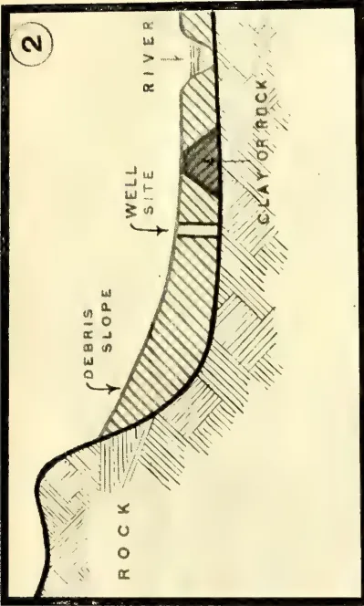
SURFACE
WELL SITE
ROCK OUT-CROP
ROCK
2
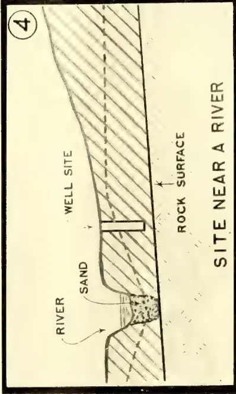
DEBRIS SLOPE
WELL SITE
CLAY OR ROCK
ROCK
RIVER
3
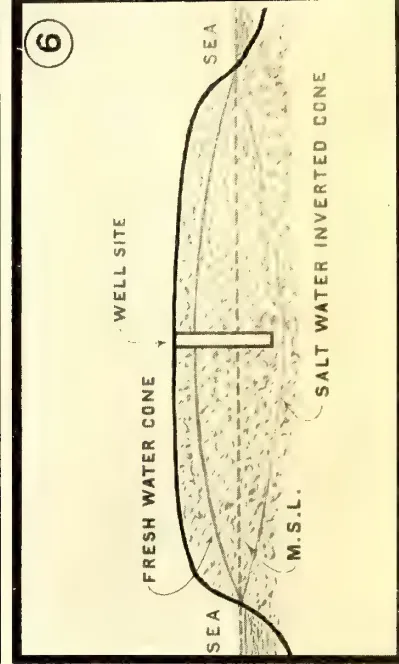
WELL SITE
SAND
ROCK
SAND OVER ROCK
4
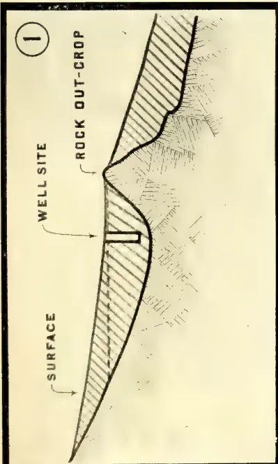
WELL SITE
SAND
ROCK
ROCK SURFACE
RIVER
SITE NEAR A RIVER
5
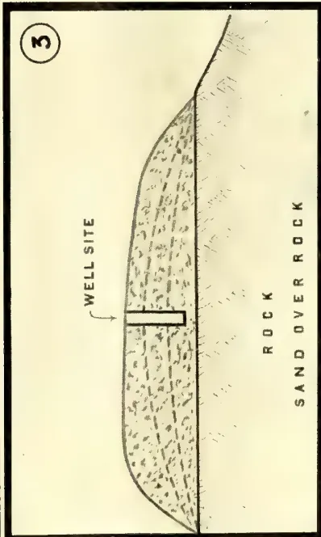
WELL SITE
ARTESIAN TUBE OUTCROP
PUTTY
6
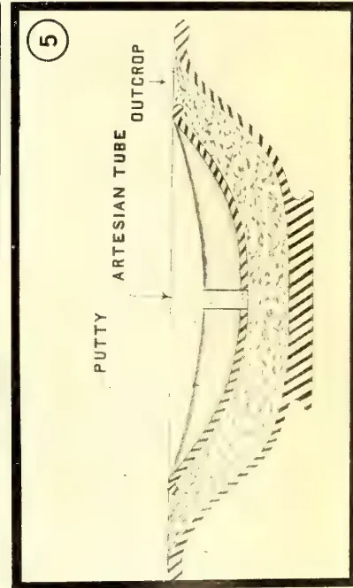
WELL SITE
FRESH WATER CONE
SALT WATER INVERTED CONE
M.S.L.
SEA
This image is a scan of a blank page. The paper has a light beige or cream-colored tint. There are a few very small, dark specks scattered across the surface, which appear to be scanning artifacts or dust particles. No text, lines, or other markings are present on the page. JULY, 1911.]63Miscellaneous.tourist, and an endeavour will be made to treat the subject in a popular way. Now the bare rock or the purely sandy soil have not much in them to interest the agriculturist at first sight. He cannot grow crops on either, and he cares for nothing else. All the same, both these uninteresting looking objects may come in useful.
6. The function of a well is to supply water, and the suggestion which brought forth this paper was, it is believed, not wholly unconnected with the subject of "School Gardens," one which is dear to the heart of the Society's Secretary. The well is an important item in the school garden (or any other garden), and is required both for the supply of water to quench the thirst of the scholar when he has worked as hard as he is expected to work, and also that of the various plants which are grown. The quality of the water is important in the former case, and it may be briefly suggested that, all other things being equal, the site of any well, the water from which is to be used later on for dietetic purposes, should be selected, so that the natural surface drainage of the ground falls away in every direction, if possible, from the well, and in the case of, say, a house or school compound, the safest position for the well, having regard only to the question of quality in the water, will be found in the highest point of the ground. Manifestly in the case of sidelong ground the possibility or probability of contamination from the neighbouring higher ground must also be considered. This point seems almost too obvious to require notice, but the writer has seen many wells in private and public places so situated as to lead one to suppose that the main object in the original selection of the site had been to secure the maximum of pollution in the water.
7. The water which reaches the ground surface in the form of rain, assuming that the surface has a slope, will, in the case of bare rock, run down the slope until it meets a place where the rock has some "overlay"—more or less deep according to circumstances—of earth or soil. The latter may take the form of stiff and partly watertight clay, and in such a case the water cannot easily percolate into the soil, and tends to travel further on or near the surface. Such places are easily recognized, as the ground near the bare rock margin is always unduly wet after rains. To sink a well in such a position would be a mistake, as the probability is, the subsoil would be found relatively dry
and waterless, possibly even at a depth approaching that of the rock surface.
It is not, however, very likely that such retentive clay would be found in this position, especially if the rock surface is steep, as the latter has nearly always undergone a process of partial disintegration, and the detritus so produced takes the form of gravelly or sandy soil, which quickly absorbs the water running off the rock surface.
All underground water has a tendency to travel to a place where it can repose at a lower level, and does travel to a greater or less extent due to the force of gravity. This travel of the water is arrested in various ways and in varying degrees. It may, in its underground progress, meet a bar of rock or watertight clay which it cannot pass, and then it must accumulate at this barrier until either its motion is entirely arrested, or until it flows again over the top of this underground dam, as it may be called, and finds its way to lower levels. In either case a sort of underground reservoir is formed, and if the depth below the surface be not too great, such a position is favourable for a well site. (See Diagram No. 1.)
In the case of the water flowing off bare rock, as described above, and sinking under the surface (at the rock margin) into a gravelly soil, it will continue to travel underground until it meets a clay or rock bar such as that described, and the former is very frequently found at the place where the ground surface flattens out into a plain or more gently sloping surface below some mountain or rock hill.
Rather a good instance of this is found in the case of Kurunegala rock (Diagram No. 2 shows the idea). The water which has been collected on its surface appears again on the surface of the ground lower down—but in this case relatively close by—in the form of springs, of which the "Rajapihilla" is perhaps the best known. There are, however, many others more or less well defined. There is evidently some watertight bar of rock or clay near the position of these springs which compels the water in its travel to reach the ground surface again. In most similar positions the probability is that the same phenomena would be found, and it would not be difficult to select a good site for a well.
8. Though not necessarily always true, it is still very often found that the ground, having regard to its surface and slopes, is imitated by the subsoil strata, that is to say, the planes of the surfaces of the latter are often found to
Miscellaneous.64[JULY, 1911.be roughly parallel to the ground surface. This is not to be wondered at, as these strata have been formed in the long process of time and at different periods.
Assuming that these conditions exist in any particular place, and that some of these strata are formed of porous water-bearing material and others are of a more or less watertight nature, and again that some impervious stratum is overlaid by a water-bearing soil, then one would naturally select the hollows in the ground surface rather than the elevations as sites where well-sinking would be likely to prove successful.
This is another of those cases where such a principle seems almost too axiomatic to require statement, but the writer has seen so many cases where the exactly opposite course has been taken, resulting in disappointment and loss, that it may perhaps be worth while to draw attention to the point. The probability of finding water moderately high up on the slopes of an elevation from which the ground falls away in every direction is so remote that it is certainly not worth while spending money on it.
9. Let us now turn to the case of the pure sand soil, the other extreme from the bare rock. There is no better form of storage reservoir—having regard to conservation of the water supply—than a deep bed of sand overlying a watertight stratum of clay or rock. Thus, in Holland, the sand dunes along the coast are a source of water supply for large cities and towns, but there the sea level takes the place of the underlying rock. The water which reaches this sandy bed, either directly in the form of rain, or by flow from some higher level, is retained there under the best conditions, and subject to the minimum of loss by evaporation and absorption, properly so-called.
The losses by percolation depend largely on the relative area of the sand bed, as compared with its depth and the depth of water supplied in a year, as replenishment, over the unit area. Also on the slope, if any, of the subsoil watertight stratum.
Where large areas of sand deposit are found they occur usually in level ground, and the substratum is similar. An exception occurs in the case of a deep sand bed in a river. The watertight, or partially watertight, substratum slopes downwards similarly to the sand bed surface, and when the water in the river has ceased to flow over the surface it still continues its travel down-
wards under the surface. A good site for a well can often be selected on the margin of such a river, and the water will be supplied by percolation laterally from the bed.
There is a certain amount of percolation, and consequent loss thereby, in even a very level sandy tract, as described above, under any ordinary conditions. If it be supposed that the watertight substratum and sand surface are absolutely level for a considerable area, but that the substratum curves upwards until it meets the surface of the sand all round at some distance from the centre of this area, then the travel of the water which falls in rain or is supplied otherwise over this area uniformly will be arrested, and the "water plane" or "surface of saturation," say the level of the free surface of water in wells sunk in various positions over the area, will be the same in each place. Such a case is rarely found, and there is usually some opening on one or more sides possibly all round by which the water can escape by percolation. This process goes on until the friction caused by the water having to flow between the grains of sand overcomes the action of gravity, which tends to make the water flow, and all motion is arrested. The water plane will then be found to represent a sloping surface, falling towards the outlets for escape, and varying in gradient according to the character of the sand as regards its coarseness or fineness.
Supposing, therefore, that this sand bed is 10 feet thick, and that the water in a well situated near the centre of the area in question stands at a level of 5 feet from the surface and 5 feet deep in the well, this depth will be gradually reduced to perhaps one foot or only a few inches in wells sunk near the margins of the area on the side or sides on which the water can escape by percolation.
It stands to reason, therefore, that the best site for a well in such positions is one near the centre of the sandy tract, or at least at the point or points most remote from the outlets for escape. (Diagram No. 3 illustrates this.) This seems to provide a contradiction to the remarks made previously about selecting a natural depression or hollow for a well site, as in actual fact the centres of these sandy tracts are frequently the highest points, and the selection of a well site at such places seems paradoxical. The subsoil conditions are, however, the most important to keep in view.
JULY, 1911.]65Miscellaneous.An interesting case of this nature is found in Mannar island, where the writer had on two occasions to make investigations for water supply. At the eastern (Mannar town) end of the island and on the south-western shore the winds of the south-west monsoon have thrown up sand dunes, and these extend inwards for, roughly, one-third of the width of the island and lie over the subsoil coral formation. The natural escape for the rain water by percolation is situated all along the shore margin, and the limiting level is that of mean sea. The surplus water after rains flows out to sea until the water plane takes its limiting slope, and fresh water wells can be sunk in the sand along the shore almost up to the wash of the waves. In addition, the fresh water surface in these wells actually rises and falls with the tides, as the flow is temporarily arrested (or decreased) at the time of high water.
The inland margin of this sand dune tract borders on a silty plain, where the percolation is partially arrested, so the best position (i.e., the position where the greatest depth of fresh water can be obtained) for wells is on the inland border of the dune tract.
Similar conditions prevail at the other end of the island (Talaimannar), but there the whole width of the island is made up of sandy soil, and so, in plotting a contour map of the subsoil water levels, they will be found to represent curved lines roughly parallel to the coast line, and culminating in a point which is equidistant from the shore on the north, south, and west sides. This point represents the position of best supply from a well.
Before leaving this subject it may be mentioned that the loss by evaporation from the surface of sandy soil is only about one-fifth of that from the surface of water, and the actual relative losses by evaporation from water, earth, sand and other surfaces may be taken as approximately in the following ratios:—
| Grass sod surface | ... | 1.92 |
| Cereals | ... | 1.73 |
| Forest | ... | 1.51 |
| Water | ... | 1.00 |
| Bare soil | ... | 0.65 |
| Sand | ... | 0.20 |
| Soil covered with forest leaves | ... | 0.07 |
It will be seen from these figures that the losses due to evaporation from sandy surfaces are only about one-third of those from bare earth surfaces, and about one-tenth of those from grass lands. As "evaporation" and the losses classed under this heading may
account for 60 to 70 per cent. of the rainfall, it is important to bear this point in mind in the selection of well sites, having regard to the conservation of the available subsoil water supply.
Incidentally also this matter is of considerable interest to agriculturists in the consideration of the question as to what condition their ground surfaces should be kept in.
Well tilled, loose earth surfaces resemble the sand formation, and greatly decrease losses by evaporation. In the drier districts the tea planter who keeps his ground surface free of all grass and weeds and the soil loose would appear to be acting wisely in so doing, as he is helping to conserve the water supply for the roots of his plants. But this is perhaps a digression.
10. In the above paragraphs the extreme conditions have been dealt with, but by far the most difficult problem remains in the case of selection of well sites in districts where the ground surface is all composed of ordinary soils, is only very gently sloping, and gives no special indication of the subsoil formation. There may be no rock and no sandy soils for miles round. Speaking generally, such localities are not promising, and in many places the only course left is to take the risk and make a trial by either borings or pits.
When the writer was attending lectures in the University School of Engineering, an old Professor once made the remark (probably repeated to each successive class of students!) "always look out carefully for other men's failures as such failures are only unintended experiments." This is pretty sound advice, and it may be repeated here. In these difficult districts, where the surface of the ground gives no help in selecting a well site, the best course is to hunt round and find, if possible, some other person's success or failure. In the former case the water plane is in view, and the probability is that it extends some distance round, though this is not always true. If two or more existing wells show the water plane at moderate depths, then it is fairly safe to try a site in some position between them, and in lower ground if possible. If the water planes in two or more wells stand about the same level, the chances are all the better. Failing any existing wells, some indications may be given by examining the river or stream beds or water-courses in connection with a good topographical map (if such exists) of the district and the records of the nearest rainfall gaugings. If these water-courses are unduly numerous and their cross
9 Miscellaneous.66[JULY, 1911.sections appear unduly large for the catchment, then it would appear that a large proportion of the rainfall runs off by these channels and comparatively little is absorbed in the ground. There are some localities where these phenomena are very marked. If the beds of the water-courses are sandy, which they usually are in moderately flat country, and where no rock is found on, or near the surface, then it may be well to sink pits in the sand (which costs little) and see if the underground water is still flowing. The result may be some indication of the porosity or otherwise of the subsoil formation. In any case a deeply cut river bed is in itself an elongated trial pit, which shows the formation down to this depth. If a fair supply of water is found, after a dry spell, in the sand bed, then it is fairly safe to sink a well alongside (as shown in Diagram No. 4); and if the sides of the river banks show no seepage and the bed is dry, this is a pretty safe indication that well sinking at moderate depths is useless in that locality. In South Africa farmers often provide a sort of artificial water supply to wells by throwing up low dams on lines transverse to the direction of the natural surface slope of the ground, the object being to form small tanks or reservoirs in which some of the surplus water, which would otherwise have run off the surface into the natural drainages, is held up. The wells are sunk on the lower side of these low dams, and the water plane is raised above the surface, on the upper side of the dams, and stands there in small lakes. This tends to raise the water plane on the lower side also by seepage and prolongs the supply in the wells.
A similar method is adopted in some of the very dry districts in India also, and the water which is thus stored for irrigation is not drawn off direct by sluices from the tanks, but is lifted from wells sunk below the bunds. The reason is that it is well known that where the water is so raised by manual labour it is not wasted, and a minimum is used.
The village and other tanks of Ceylon have the same effect in raising the water plane, and the landowners in very dry districts take care to plant their coconuts only under the bunds of tanks or channels. Where wells are sunk, their sites are invariably chosen in similar positions.
II. Any reference to wells generally leads up to the question of artesian systems, and perhaps a few remarks may not be out of place in this connection, as the popular notions regarding these are frequently tinged with the magical and supernatural.
The writer may be permitted to give a very homely illustration of an artesian system as follows. Imagine a large basin or chatty (the kind called "thattiya" in Sinhalese) partly filled with sand and then another smaller basin or chatty of exactly the same shape placed inside the bigger one and pressed down into the sand until the bottom reaches within, say, one inch of the upper surface of the bigger chatty, leaving about one inch in thickness of a layer of sand between the two chatties and all over the outer surface of the smaller chatty. Assume also that the size of the smaller chatty is such that when it rests on this one-inch thick bed of sand all round its top edge will be just level with that of the bigger chatty. Let the upper chatty then be filled with some watertight substance, such as putty, but the upper surface of this putty be hollowed out by a depression, which is about half the depth of the chatty (if completely filled). To make the whole appear more natural the larger chatty may be buried in the ground until its brim is just level with the surface. We have here a miniature artesian system, and the top edge of the sand is usually called the "outcrop."
If now a small tube equal in length to the height from the centre of the hollow formed in the putty to the sand at the bottom be inserted in the centre of the hollow formed in the upper surface of the putty, and this tube be pushed down until it reaches the smaller chatty and is passed through a hole drilled in the latter and into the sand at its lower end, then the water held up in the sand will rise in the tube, and under favourable conditions will begin to flow out at the top end and partly fill the hollow in the putty.
This is what happens in artesian systems, and the reason is because the "outcrop" of the water-bearing stratum of sand is higher than the bottom of the hollow formed in the surface of the putty. If the water supply to the sand "outcrop" is kept up to meet the loss in water drained off by the pipe, the process will continue indefinitely. Diagram No. 5 gives a rough idea of the system.) In actual nature the under- and over-lying watertight strata are formed of clay or some such material, and the water-bearing stratum lying between them may be sand or gravel or a mixture of both. The circle of the outcrop may be tens or hundreds of miles across, and one side may be depressed and lie deep below the surface, or the whole system may be depressed. In the case where the whole system lies deep below the surface, the water will not naturally rise to the
JULY, 1911.]67Miscellaneous.ground surface in a bore hole. It will only rise to a level approximating to that of the lowest point in the outcrop, and a water supply so obtained is only of practical value in extraordinarily dry countries such as parts of Australia. When the water has reached its maximum level in the bore, it may still lie hundreds of feet below the ground surface, and has to be raised by artificial means, such as "deep-well" pumps, which are generally costly to install and operate. In the cases where one side only of the outcrop is depressed and the other side lies at a considerable elevation an artesian well may be possible and effective, delivering water with more or less pressure at the ground surface, but in such cases, speaking generally, the higher side of the outcrop must be relatively high compared to the position of the bore hole and also comparatively close. The water supply (by rainfall or otherwise) at the position of the upper outcrop must be abundant.
The occurrence of springs on the surface as described earlier in this paper is a condition which partly partakes of the nature of an artesian system. Sufficient has been said to indicate the general conditions, which are subject to innumerable modifications, and also to point to the fact an artesian system in such a position as, say, a small island or a promontory, is a practical impossibility, except on a very small scale, and then only in the region of high hills or mountains.
12. These notes, written as they are for the Ceylon Agricultural Society, would hardly be complete without a brief reference to the very remarkable—probably unique—conditions which prevail in the Jaffna peninsula, and are all the more appropriate, as referring to the district where intense cultivation is the order of the day, and where wells are to be found every few yards, though generally sunk and lined at very considerable expense to the landowners.
The following particulars about the "natural" wells—so called—will be interesting to those who are not already acquainted with them:—
There are three of these "natural" wells—possibly more—which are well known in Jaffna: the "Nilaverei" or Puttur well, the "Yama" well at Urelu, and the "Devil's well" ("Pe-kinarn") at Kurumbakattu. A description of the first will be sufficient, as they are all similar in natural formation.
The Puttur well resembles a small "keni," or bathing tank, such as is generally found at the temples. It is 48 feet long by 36 feet wide, with the
usual ramped slope at one side leading down to the water.
The writer is unaware what the actual circumstances were attending the cutting of this well, but judging by appearances it would seem that those who were engaged on the work intended excavating the usual "keni" and finishing up with perhaps 3 feet deep of water. They would appear to have been unaware how "thin the ice" was—in this case the rock crust—and it can only be conjectured that this crust broke through and part or the whole of the bottom fell in! One is compelled to this belief, as otherwise it would have been difficult to get any men to undertake such dangerous work.
At all events the result is certain. This crust representing a thickness in all of, say, 14 feet, that is 9 feet of rock and 5 feet of clay overlay, was broken through and stood over a cavity filled with water, but of what dimensions nobody as yet knows. The total depth of water was measured by the writer, and amounts to 147 feet 6 inches, of which the top 80 feet or so is fresh water and the remainder salt.
The level of the water surface is practically invariable (only rising after heavy rains), and represents, of course, the ground water plane, which at this place and in dry weather stands at almost exactly 2 feet over mean sea level.
There are only a few inches difference between the levels of the water planes in the three "natural" wells mentioned above, and they are relatively almost exactly in proportion to the distances respectively of these wells from the sea at the nearest point, the greatest distance representing the highest level. It would appear therefore that the water plane is represented by a very flat cone with its apex at the most central point of this portion of the peninsula. It may also be taken as exceedingly probable that the margin between the salt and fresh water—at what may be called the "salt water plane"—takes the form of an inverted cone, with its apex situated at the same point and its base coinciding with the mean sea plane all round the coast. (Diagram No. 6 shows this.)
The formation is all limestone rock, which is perforated in a most remarkable way with holes and cavities of all sizes, and these represent the underground storage space. Investigations some years ago in connection with the proposed Jaffna water supply showed that these conditions were uniform all over the north end of the peninsula, and
Miscellaneous.68[JULY, 1911.the practical result, which is well known to the inhabitants, is that well sinking is an absolute certainty, and, given a knowledge of the surface levels, the depth to which a well must be sunk is known to an inch.
Also, the flow from a well or any similar cavity sunk below the water plane is exactly in proportion to the superficial area of the cavity at a given average depth below the water plane.
It may be useful to note that for small depths below the water plane the flow from the Jaffna rock formation in a well of 14 feet diameter and 25 feet depth to the water surface from ground level is such that one ordinary "well sweep" cannot reduce the water level more than about 4 feet when kept continually working, and this represents a total quantity of 17,000 gallons in a 10-hours' working day, equal to, say, 2,700 cubic feet of water, or, say three-quarters of an inch deep over an acre.
13. In conclusion, it may be said that the term "well" is one which is used to describe any cavity in the earth's surface which is sufficiently deep to reach the water plane, and passes through all the various phases between the mere water hole and the tube bore, embracing also all the usual variations in size, shape, and methods of lining with timber, brickwork, masonry, &c.
To enter into a description of all these technicalities is beyond the scope of such a paper as this, but a general principle which must always be kept in view may here be stated, namely, that the larger the superficial area of the opening below the water plane, the greater will be the supply obtainable in any one place, and that most wells
require either partial or complete "steining" or lining with brick or masonry.
When the quality of the water and freedom from contamination is important, then this masonry lining should be built solid in mortar for several feet below the surface, and without mortar when the water plane is reached. If the subsoil below the water plane is pure sand, it may be necessary to plug the bottom of the well with concrete to prevent the sand being drawn up into the well, and possibly the sinking of the lining as a consequence, and this particularly where large quantities of water have daily to be extracted.
Care should, however, be taken to avoid following the precedent supplied by a case which came to the writer's knowledge some years ago, when on examining a well (masonry lined) situated in a position where the subsoil was most undoubtedly water-bearing, it was found that the bottom of the well had been plugged with concrete, as above described, but in addition, to make matters more comfortable, the whole of the masonry lining from top to bottom had been built in brickwork in cement mortar, thereby effectively excluding all entrance of water, and the inside being as dry as a drum. The writer gained considerable "kudos" locally, added to a subtle suspicion of the supernatural, by making the water flow. This was not a difficult operation, involving only the boring of three or four holes in the concrete bottom and firing a dynamite cartridge in one of them.
R. W. SMITH.
Trincomalee, March 25, 1911.
| RECEIPTS. | PAYMENTS. | ||||
|---|---|---|---|---|---|
| Amount. | Total. | Amount. | Total. | ||
| Rs. c. | Rs. c. | Rs. c. | Rs. c. | ||
| Balances at Bank of Madras, &c., December 31, 1909 | — | 43,073 93 | General Expenditure :— | ||
| Members' Subscriptions :— | Organizing Vice- | Rs. c. | |||
| Local subscriptions for 1908 | 257 0 | President ... | 3,000 00 | ||
| Do 1909 | 763 0 | Secretary ... | 3,000 00 | ||
| Do 1910 | 4,059 40 | Clerks and peons | 2,715 37 | ||
| Do 1911 | 444 0 | Agricultural In- | |||
| Do 1912 | 16 0 | structors ... | 2,326 63 | ||
| Foreign subscriptions | 394 50 | 11,042 0 | |||
| Less paid to Ceylon Observer | 295 87 | Stationery ... | 241 98 | ||
| 98 63 | Postages and telegrams ... | 722 44 | |||
| Life members' subscriptions | 50 0 | 5,688 3 | Office furniture ... | 230 22 | |
| 30,000 0 | Bank charges and commis- | ||||
| Government grant for 1910 ... | — | sion ... | 17 95 | ||
| Interest :— | Miscellaneous petty expen- | ||||
| On Bank of Madras account | — | 788 52 | ses ... | 426 10 | |
| Auditors' fee for 1909 ac- | |||||
| counts ... | 150 0 | ||||
| Advertising ... | 3 0 | ||||
| Total ... | 79,550 48 | 12,833 69 | |||
| PAYMENTS.—(Continued.) | Amount. | Total. | ||
|---|---|---|---|---|
| Rs. | c. | Rs. | c. | |
| Brought Forward ... | 12,833 | 69 | ||
| Travelling Expenses:— | ||||
| Secretary, Ceylon Agricultural Society ... | 1,207 | 48 | ||
| Agricultural Instructors ... | 4,090 | 91 | ||
| Show Judges, &c. ... | 86 | 76 | ||
| Organizing Vice-President and Staff ... | 464 | 74 | ||
| 5,849 | 89 | |||
| Tropical Agriculturist and Magazine of Ceylon Agricultural Society:— | ||||
| Printing English Magazine | 5,223 | 24 | ||
| Sinhalese Magazine:— | ||||
| Editor's fee Rs. | 450 | 00 | ||
| Printing, Postages, &c. ,, | 459 | 21 | ||
| Rs. 909 | 21 | |||
| Less subscriptions received ,, | 685 | 70 | ||
| 223 | 51 | |||
| Printing Tamil edition ... | 200 | 0 | ||
| 5,646 | 75 | |||
| Agricultural Shows:— | ||||
| Indian exhibits ... | 256 | 95 | ||
| Cost of medals, &c. ... | 257 | 50 | ||
| Grants to Henaratgoda and Ibbagamuwa Shows ... | 100 | 0 | ||
| 614 | 45 | |||
| Sericulture Experimental Farm:— | ||||
| Coolies' wages... .. | 417 | 0 | ||
| Cadjans for roof ... | 54 | 58 | ||
| Implement ... | 56 | 25 | ||
| Cocoons ... | 12 | 3 | ||
| 539 | 86 | |||
| Less sale of cocoons 157 73 | ||||
| Less rent for farm, 1910 ,, | 10 | 0 | ||
| 167 | 73 | |||
| 372 | 13 | |||
| Experimental Gardens:— | ||||
| Balangoda, coolies and wages, &c. ... | 212 | 50 | ||
| Balalla, wire fencing, implements, &c. ... | 97 | 62 | ||
| Grants to Rajakadaluwa, Kalalgama, and Bandaragama gardens ... | 350 | 0 | ||
| Grant to school gardens ... | 500 | 0 | ||
| 1,160 | 12 | |||
| Carried Forward | 26,477 | 03 | ||
| PAYMENTS.—(Continued.) | Amount. | Total. | |||
|---|---|---|---|---|---|
| Rs. | c. | Rs. | c. | ||
| Brought Forward ... | 26,477 | 03 | |||
| Seed Store at Government Stock Garden:— | |||||
| Show boxes ... | 70 | 0 | |||
| Seed bin ... | 30 | 0 | |||
| Seed bags ... | 15 | 67 | |||
| 115 | 67 | ||||
| Sundry Payments:— | |||||
| Agricultural implements... | — | 154 | 1 | ||
| Seed Supplies:— | |||||
| Excess purchases over sales | — | 38 | 36 | ||
| Purchases. Sales. | |||||
| Rs. c. | Rs. c. | ||||
| Vegetable seeds | 277 | 32 | 281 | 75 | |
| Paddy ... | 188 | 61 | 191 | 25 | |
| Cotton ... | 33 | 86 | 120 | 27 | |
| Ginger ... | 55 | 10 | 2 | 45 | |
| Pila, wild indigo, &c. ... | 25 | 19 | 48 | 75 | |
| Grafted plants | 706 | 44 | 670 | 25 | |
| Congayam grass | 12 | 44 | — | — | |
| Soy beans ... | 42 | 58 | — | — | |
| Castor ... | 6 | 60 | 0 | 50 | |
| Guvar ... | 12 | 13 | — | — | |
| Ground-nuts ... | 64 | 81 | 64 | 31 | |
| Durian ... | 17 | 63 | — | — | |
| Tobacco ... | 0 | 56 | — | — | |
| Sundries ... | 35 | 82 | 23 | 75 | |
| Sorghum and fodder ... | 3 | 50 | 40 | 95 | |
| Total ... | 1,482 | 59 | 1,444 | 23 | |
| (Excess purchases, Rs. 38 36) | |||||
| Tobacco Experiment:— | |||||
| Coolies' wages, &c. ... | 5,993 | 93 | |||
| Salary of Superintendent, &c. ... | 4,229 | 16 | |||
| Salary of conductor ... | 458 | 80 | |||
| Travelling expenses ... | 522 | 23 | |||
| Cost of sheds ... | 2,239 | 94 | |||
| Cost of guano ... | 323 | 0 | |||
| Sundry purchases ... | 314 | 75 | |||
| 14,081 | 81 | ||||
| Less Government contribution ... | 1,750 | 0 | |||
| 12,331 | 81 | ||||
| Balances in hand:— | |||||
| At Bank of Madras ... | 40,375 | 10 | |||
| Stock of stamps ... | 58 | 50 | |||
| 40,433 | 60 | ||||
| Total ... | 79,550 | 48 | |||
We certify that we have prepared this account of Receipts and Payments from the books of the Society, and that to the best of our belief it is correct.
FORD, RHODES & CHURCH,
Colombo, May 10, 1911.
Accountants,
Miscellaneous.70[JULY, 1911.The above show was held on Tuesday the 30th May, 1911, at the Kalutara Kachcheri. The show was confined to the Kalutara Totamune only. Considering the unusual dry weather during the year, and this being the first show of its kind in the district, a better show could not have been expected.
Class I. FRUITS.—This class was fairly full and there was good collection of oranges, jak, pineapple, and papaw. The exhibits of plantain and mangosteen should have been very much better.
Class II. YAMS.—The exhibits in this class were poor in quality as well as in quantity. There were, however, a few good exhibits of cassava and sweet potatoes.
Class III. VEGETABLES.—Fairly good; but competition poor. Kalutara being a district where vegetable cultivation is carried on, the exhibits should have been very much better.
Class IV. DAIRY PRODUCTS.—Good average samples of milk, &c., were shown.
Class V. COMMERCIAL PRODUCTS.—This class was very full, and there was good competition. Coconut oil was specially well represented.
Class VI. LIVE STOCK.—A poor class.
Class VII. NEEDLE WORK.—Not particularly good.
Class VIII. INDUSTRIAL PRODUCTS.—Poor.
Class IX. SWEETMEATS AND PRESERVES.—Fair.
Class X. SCHOOL GARDEN PRODUCTS.—There were three competitors, and Tantirimulla school was awarded the prize.
L. A. D. SILVA,
Agricultural Instructor.
The above show was held at the Rest-house grounds on the 27th ultimo, and was opened by Mr. G. F. Plant, the Assistant Government Agent, Kalutara. The shed put up for the occasion was rather too small.
In spite of the wet weather which continued for two days and kept away many villages, a fairly large collection of exhibits representing all classes was displayed. I was led to understand that this show was better in quality and
quantity of exhibits than the last show held at Bellana in this Korale. From this it would appear that cultivation is improving in this Korale.
Section 1. FRUITS.—This was the second best class in the show. Specimens of Mangosteens, Pineapples, Mangoes, Oranges, Pumelos, Papaws, Limes and Kamarangas were particularly good. Mandarian Oranges, Pomegranate, Anona, Jambus, Nam-nams and Plantains were rather poor.
Class 2. YAMS.—In this class Cassava, Sweet Potatoes, Arrowroot, Raja-ala and Gahala made a good show.
Class 3. VEGETABLES.—This class was the best both in quality and quantity of exhibits. Melons, Ash Pumpkins, Gourds, Luffas, Kohila, Bandakka, Capsicum Chillies and Biling were particularly good. There was a specimen of a large kind of bitter gourd measuring about eighteen inches in length.
Class 4. DAIRY PRODUCTS.—This class, comprising Milk, Curd, Ghee and Eggs was tolerably good.
Class 5. COMMERCIAL PRODUCTS.—The exhibits in this class were satisfactory. Specimens of Coconut Oil, King Coconut Oil, Honey, Paddy, Pepper, and Coconuts were particularly good.
Class 6. LIVE STOCK.—A few pens of native fowls and four native bulls made up this class.
Classes 7, 8, 9. NEEDLE-WORK, INDUSTRIAL PRODUCTS, AND SWEETMEATS.—These classes were fairly represented.
Class 10. SCHOOL GARDEN.—Meegahattemne School carried away the shield for the best garden in the Korale. Eight schools competed for the best collection of school garden produce, and the prize was awarded to Kevitigala School. Bellana and Matugama deserves honourable mention for the collection displayed.
June 5, 1911. N. M. JAYASURIYA.
(From the Philippine Agriculturist and Forester, Vol. I., No. 3, March, 1911.)
By general consent, Philippine agriculture is under a curse. General consent is not proof, and in this case a good argument can be made against it. But assuming that the curse is real, there are three candidates for the place—ignorance, lack of draft animals, and the caingin. The caingin is land cleared of woody vegetation and used for crops.
JULY, 1911.]71Miscellaneous.After producing two or three crops, or sometimes only one, it is abandoned. This system of agriculture is common throughout the eastern tropics, and at least in parts of the New World as well. It is very popular with poor people who like to be their own masters, and in great disfavour with the State.
The inducement to make caiñgins is well illustrated by the cut on the opposite page.* The caiñgin is comparatively free of troublesome weeds, and is exceedingly fertile. The streak of very thrifty maize in the picture was a hedge; the remainder of the field on both sides was chiefly occupied by cogon (illuk). In the Philippines, these hedges gradually widen, sometimes to as much as ten meters; then they are cleared, and present in large measure the advantages of real caiñgins.
After a time weeds enter the caiñgin, the ground packs, the temporary exuberance of fertility wears out, and it becomes easier, with the implements available, to secure a given yield by clearing a new plot. The old clearing goes back to forest almost immediately if it is in the forest, but to grass first if there is brush and grass land about it. Here enters the interest of the State. In the Philippines it is in the interest of the State to have all, or nearly all, of the good agricultural land in permanent agricultural use. But the forest wealth is the wealth of the whole people, and the whole people cannot afford to have the forest sacrificed for the sake of a couple of crops. It takes many years for the forest on a caiñgin to become valuable again.
Still, the best thing about an abandoned caiñgin is the chance that it will return to forest. If it is occupied at first by grass and there are no fires, brush will smother the grass in a few years, and trees will in turn smother the brush, quickly or slowly according to the nearness of seed-bearing trees. If there are fires, they will kill most kinds of brush, but will not injure the cogon. As the result of fire, following caiñgins, for fire rarely hurts the tropical forest at all,—there are great grass areas in the Philippines. And these grass lands not only do not constitute any wealth at all for the people, but they injure the neighbouring cultivated land in several ways.
In the first place, forests the world over serve to conserve and regulate the water supply. In a study of conditions in four Wisconsin towns, F. A. Shriner and the writer showed a decade ago that a decrease in the forest from 27% of the area to 6% resulted in the drying up of 65.5 miles of creeks, and a decrease to
about one-third in the flow of water. The rest of the water escapes in floods, doing damage instead of being useful. In the last number of this magazine mention was made of aridity in Mexico, resulting from deforestation. The floods of Tarlac and Pampanga have the same cause. The forest is a protection against wind and dry air, as well as against floods and dry creeks.
And then there are the locusts. They do not breed in cultivated land, and they do not breed in the forest. But so long as men make and leave waste land which is not forest and not in cultivation, we need not hope to be without them.
E. B. C.
Galle, 27th May, 1911.
DEAR SIR,—In the April number of your valuable magazine is an interesting article on Citronella Oil by Mr. N. Wickremaratne.
May we be allowed to comment on the first and last paragraphs? The former states that "as a result of the attention given to this matter (viz., standard of purity), recent shipments to London have fetched better prices." This is hardly in accordance with facts, as the present value of Citronella oil in London is 10d. per lb., which is as low a price as has prevailed for some years. In his last paragraph Mr. Wickremaratne states that the average yield of an acre of the grass is 68 lbs. of oil per annum.
Taking the present value as 54 cts. per lb, this gives Rs. 36.72 gross. After allowing for reaping, cart-hire, distilling, &c., this would leave little or nothing for the cultivator, whereas, we believe, that we are correct in saying that the oil can be sold without a loss at somewhere near 37 cts. per lb.
Perhaps Mr. Wickremaratne will give us further details?
Yours faithfully,
CHAS. P. HAYLEY & Co.
[Mr. Wickremaratne admits that he was not correct in saying that better prices were fixed; what he intended to convey is that during greater part of last year there was a slackness in the Ceylon oil trade; but that, as the result of greater attention to the question of purity, there was a brisker market.
He, however, is not inclined to concede that his estimate of average yield of oil per acre is too low. He is supported in this opinion by the figures given by a practical planter published in the "T.A." for May, 1906.—ED.]
* Not reproduced.
72
MARKET RATES FOR TROPICAL PRODUCTS.
(From Lewis & Peat's Monthly Prices Current, London, 24th May, 1911.)
| QUALITY. | QUOTATIONS. | QUALITY. | QUOTATIONS. | ||||
|---|---|---|---|---|---|---|---|
| ALCOES, Socotrine cwt. | Fair to fine | 70s a 75s | INDIARUBBER. (Contd.) | Common to good | 2s a 2s 4d | ||
| Zanzibar & Hepatic | Common to good | 40s a 72s 6d | Borneo | Good to fine red | 2s 9d a 3s | ||
| ARROWROOT (Natal) lb. | Fair to fine | 8d a 9d | Java | Low white to prime red | 2s a 2s 8d | ||
| BEE'S WAX, cwt. | Penang | Fair to fine red ball | 3s 10d a 4s 3d | ||||
| Zanzibar Yellow | Slightly drossy to fair | £6 15s a £6 17s 6d | Mozambique | Sausage, fair to good | 3s 9d a 4s 1d | ||
| Bombay bleached | Fair to good | £7 10s a £7 15s | Nyassaland | Fair to fine ball | 3s 8d a 4s | ||
| unbleached | Dark to good genuine | £5 15s a £6 7s 6d | Madagascar | Fr to fine pinky & white | 3s 2d a 3s 3d | ||
| Madagascar | Dark to good palish | £5 10s a £7 | Majunga & blk coated | 2s 2d a 2s 7d | |||
| CAMPHOR, Japan | Refined | 1s 6½d a 1s 8½d | Niggers, low to good | 9d a 2s 10d | |||
| China | Fair average quality | 15s | New Guinea | Ordinary to fine ball | 2s 9d a 3s 9d | ||
| CARDAMOMS, Tumericin | Good to fine bold | 2s 8d a 3s 2d | INDIGO, E.I. Bengal | Shipping mid to gd violet | 2s 8d a 2s 11d | ||
| Tellicherry | Middling lean | 2s 3d a 2s 6d | Consuming mid. to gd. | 2s 5d a 2s 6d | |||
| Good to fine bold | 2s 9d a 3s | Ordinary to middling | 2s 6d a 2s 11d | ||||
| Mangalore | Brownish | 2s a 2s 6d | Oudes Middling to fine | 2s 6d a 2s 6d | |||
| Ceylon. Mysore | Med brown to fair bold | 2s 6d a 3s 9d | Mid. to good Kurpah | 1s 6d a 2s | |||
| Malabar | Small fair to fine plump | 1s 8d a 3s 2d | MACE, Bombay & Penang | Low to ordinary | None here | ||
| Seeds, E. I. & Ceylon | Fair to good | 1s 10d a 2s | per lb. | Mid. to fine Madras | 2s 6d a 2s 8d | ||
| Ceylon Long Wild | Fair to good | 2s a 2s 1d | Java | Pale reddish to fine | 2s 6d a 2s 6d | ||
| CASTOR OIL, Calcutta | Shelly to good | 6d a 1s 6d | Bombay | Ordinary to fair | 2s a 2s 6d | ||
| CHILLIES, Zanzibar cwt. | Good 2nds | 3½d | Borneo | Wild | 4d a 5d | ||
| Dull to fine bright | 40s a 45s | MYRABOLANES, cwt | UG and Coconada | 4s 6d a 5s | |||
| CINCHONA BARK.—lb. | Crown, Renewed | 3½d a 7d | Bombay | Jubbepore | 4s 6d a 6s 3d | ||
| Ceylon | Org. Stem | 2d a 6d | Bhimlies | 5s a 6s 6d | |||
| Red Org. Stem | 1½d a 4½d | Bengal | Rhapore, &c. | 4s 6d a 5s 9d | |||
| Renewed | 3d a 5½d | NUTMEGS.—lb. | Calcutta | 5s 6d a 6s | |||
| Root | 1½d a 4d | Singapore & Penang | 64's to 57's | 1s a 1s 6d | |||
| CINNAMON, Ceylon 1ste | Good to fine quill | 6½d a 1s 5d | 80's | 7½d | |||
| per lb. | " " | 5½d a 1s 4d | 110's | 5½d | |||
| 2nds | " " | 5d a 1s | NUTS, ARECA cwt. | Ordinary to fair fresh | 17s 6d a 20s | ||
| 3rds | " " | 4½d a 8½d | NUX VOMICA, Cochin | Ordinary to good | 8s 6d a 9s 6d | ||
| 4ths | " " | 2½d a 3d | per cwt. | " " | 7s a 7s 6d | ||
| Chips, &c.. | Fair to fine bold | 1d a 1s 3d | Bengal | " " | 7s a 8s 6d | ||
| CLOVES, Penang lb. | Dull to fine bright pkd. | 9d a 10d | Madras | " " | 4s 9d | ||
| Amboyna | Dull to fine | 7d a 7½d | Fair merchantable | 3s 4d a 3s 8d | |||
| Ceylon | " " | 3d | OIL OF ANISEED | According to analysis | 3½d | ||
| Zanzibar | Fair and fine bright | CASSIA | Good flavour & colour | 1½d a 1½d | |||
| Stems | Fair | LEMONGRASS | Dingy to white | 2d a 1s 4d | |||
| COFFEE | Medium to bold | 70s a 113s | NUTMEG | Ordinary to fair sweet | 11d | ||
| Ceylon Plantation cwt. | Good ordinary | 60s a 65s | CINNAMON | Bright & good flavour | |||
| Native | Fair to bold | 70s a 85s | CITRONELLE | ||||
| Liberian | Special Marks | 63s a 69s | ORCHELLA WEED.—cwt | ||||
| COCOA, Ceylon Plant. | Red to good | 40s a 60s | Ceylon | Fair | 10s | ||
| Native Estate | Ordinary to red | 40s a 60s | Madagascar | Fair | 10s | ||
| Java and Celebes | Small to good red | 25s a 77s | PEPPER—(Black) lb. | ||||
| COLOMBO ROOT | Middling to good | 30s a 35s | Alleppy & Tellicherry | Fair | 4½d a 4½d | ||
| CROTON SEEDS, sift. cwt. | Dull to fair | 4½s 6d a 55s | Ceylon | " to fine bold heavy | 3½d a 5d | ||
| CUBEBB | Ord. stalky to good | 1.10s a 1.60s | Singapore | Fair | 4½d | ||
| GINGER, Bengal, rough. | Fair | 35s nom. | Acheen & W. C. Penang | Dull to fine | 3½d a 4d | ||
| Calicut, Cut A | Small to fine bold | 80s a 85s | (White) Singapore | Fair to fine | 6½d a 8d | ||
| B & C | Small and medium | 60s a 70s | Siam | Fair | 7d | ||
| Cochin Rough | Common to fine bold | 40s a 45s | Penang | Fair | 6½d | ||
| Japan | Small and D's | 40s | Muntok | Fair | 7½d | ||
| GUM AMMONIACUM | Unsplit | 35s | RHUBARB, Shenzi | Ordinary to good | 1s 2d a 2s 6d | ||
| Animi, Zanzibar | Sm. blocky to fair clean | 40s a 67s 6d | Canton | Ordinary to good | 10d a 1s | ||
| Pale and amber, str. srts | £15 a £16 | High Dried. | Fair to fine flat | 8½d a 9½d | |||
| little red | £12 a £14 | Dark to fair round | 5½d a 7½d | ||||
| Bean and Pea size ditto | 75s a £12 10s | SAGO, Pearl, large | Fair to fine | 18s a 19s | |||
| Fair to good red sorts | £7 10s a £10 | medium | " " | 17s a 18s 6d | |||
| Med. & bold glassy sorts | 25 a £7 | small | " " | 14s a 15s | |||
| Madagascar | Fair to good palish | £4 a £8 15s | SEEDLAC | Ordinary to gd. soluble | 52s 6d a 73s 6d | ||
| Red | £4 a £7 10s | SENNA, Tinnevelly lb. | Good to fine bold green | 4½d a 7d | |||
| ■ RABIC E. I. & Aden | Ordinary to good pale | 25s a 32s 6d | Fair greenish | 2½d a 4d | |||
| Turkey sorts | 42/6 a 57/ | SHELLS, M. o'PEARL— | Commonspeaky and small | 1½d a 2d | |||
| Ghatti | Sorts to fine pale | 20s a 42s 6d nom. | Egyptian cwt. | Small to bold | 62s 6d a 150s | ||
| Kurrachee | Reddish to good pale | 20s a 30s | Bombay | " " | 45s a 150s | ||
| Madras | Dark to fine pale | 15s a 25s | Mergul | " " | £10 2/6 a £12 2/6 | ||
| ASSAFOETIDA | Clean fr. to gd. almonds | £17 a £18 | Manilla | Fair to good | £7 7/6 a £13 5s | ||
| com. stony to good block | 25s a £13s | Banda | Sorts | 25s a 30s nom. | |||
| KINO | Fair to fine bright | 9d a 1s 2d | TAMARINDS, Calcutta... | Mid. to fine bl'k not stony | 10s a 12s | ||
| MYRRH, Aden sorts cwt | Middling to good | 55s a 60s | per cwt. Madras | Stony and inferior | 4s a 5s | ||
| Somali | Good to fine white | 60s a 52s 6d | TORFOISESHELL— | ||||
| OLIBANUM, drop | Middling to fair | 45s a 50s | Zanzibar, & Bombay lb. | Small to bold | 10s a 8s | ||
| pickings | Low to good pale | 35s a 40s | Pickings | 8s a 23s | |||
| sifttings | Slightly foul to fine | 12s 6d a 27s 6d | TURMERIC, Bengal cwt. | Fair | 20s | ||
| INDIA RUBBER lb. | Fine Fara bis. & sheets | 20s a 22s 6d | Madras | Finger fair to fine bold | 26s 6d a 2s 9d | ||
| Ceylon, Straits, | " Ceara | 5s | Do. | Bulbs | 23s 6d | ||
| Malay Straits, etc. | Crepe ordinary to fine | 4s 7d | Cochin | Finger | 19s | ||
| Assam | Fine Block | 4s 11d a 5s 2d | Bulbs | 14s | |||
| Scrap fair to fine | 5s 2d | VANILLOES—lb. | |||||
| Plantation | 3s 10d a 3s 11d | Mauritius | Gd crystallized 3½ a 4 | 14s a 19s | |||
| Fair II to ord. red No. 1 | 4s 1d | Madagascar | Foxy & reddish 3½ a | 13s a 16s 6d | |||
| " " | 3s a 3s 3d | Seychelles | Lean and inferior | 12s 6d a 13s | |||
| " " | 2s 2d a 3s | VERMILLION | Fine, pure, bright | 3s | |||
| " " | WAX, Japan, squares | Good white hard | 41s 6s | ||||
COMPILED AND EDITED BY A. M. & J. FERGUSON.
No. 1.]
JULY, 1911.
[Vol. IX.
The year, as regards palm products, has, so far, been a very remarkable one. When oil and copra prices began to fall, from the highest point ever reached, this began to help the desiccating mills, which have now, twice in their history, been able to compete with the all-powerful copra man in securing nuts.
Take Oil first. This seemed rivetted at £36 per ton in London for months, and only towards the end of the second quarter did it rise to £38. The demand for our oil must have been poor. This, some in the trade put down to the new love, Soya bean. However that may be, the fact remains that there was a considerable falling off in export up to 30th June of no less than 82,463 cwts., as compared with the same date last year. The lower price paid for oil certainly pointed to either the soap-makers going slow, or to their striking other and cheaper oils, that of the soya bean being probably one of them. Crushing has, however, gone on very briskly in most of our local oil mills.
The depressed price of oil reflected on Copra, resulting in a fall of no less than 26½ rupees per candy. The lowest price Estate Copra fetched was about Rs. 67. With oil at £36 in London, driers could not pay the price the mills were able to, so that Desiccating Mills in some districts were actually flooded with nuts. It paid the copra men better to send their nuts to mills rather than to dry them. We had sent away to date only 147,189 candies against 310,668 candies last year, or 163,479 candies less. Today copra stands at over Rs. 76 50 a candy in Colombo. It may, however, go higher, after our big nut crops are over, say, at the end of August. Then, from all we can gather, nuts, are to be very scarce. They always are in the last quarter, but particularly so
will this be the case this year. Then copra drying will be sure to fall off. The high price of copra we understand caused a considerable falling off in the manufacture of coconut butter, or Palmin, last year in Europe. This, no doubt, had something to do with the poorer demand for our copra, the price of which was bound to give way, we think. Our shipments of copra this year will probably look very small as compared with those from the American Colony, the Philippine Islands, with its huge export of copra, and little or no oil. If, however, we add the nuts which we convert into copra, as also those we annually turn into over 28,000,000 lb. of Desiccated, not forgetting our nuts in shell—some 16,000,000—exported, we fancy the Philippine total annual nut crop would not show up so well. The effect would be greater if we could calculate our local consumption of nuts, though, to be sure, the Filipinos consume nuts too.
As regards Desiccated, the year opened with 23 to 24 cents for this, very fair prices considering the very high price and the scarcity of nuts. But still, with better crops, and slightly cheaper nuts, mills did much more work in the second quarter. Some of our Desiccating Mills had to shut down, while others went very slow, owing to continuous drought and very great scarcity of water, while nuts came tumbling in in greater quantity than they could cope with. Fortunately sugar was cheap over the period, and, that, together with June being Coronation month, of course, meant that confectionery, cakes and biscuits had to be made in unusually large quantities to help to feed the great London multitude. Up to June 29th we shipped no less than 11,438,925 lb. against 9,893,415 lb. in the first half of last year or 1½ million lb. in excess; the price now stands at 22½ cents to 23 cents Colombo delivery.
There is a falling off in Poonac, strange to say, of over 50 per cent. This can, we think, only be accounted for by the very high price of it,
10
74The Supplement to the Tropical Agriculturistowing to the high price of copra and nuts. Probably the Home and Continental Crushing Mills were able to produce it more cheaply than Ceylon could supply it. But it looks as if this year is to be one of the poorest in the decade for this famous fodder.
We did fairly well with our Nuts in shell for the half-year, 7,604,329 nuts were sent away in shell, against 5,805,647 in 1910. Crops have been satisfactory in quantity. The kernel, however, as must be expected, with five consecutive years of half our average rainfall, in our best nut districts, was very poor. It took fully nuts, all round, big and little, to make a pound of desiccated, while, in many cases, it required fully 1,400 to 1,500 all round to produce a candy of first quality estate copra. There are very few nuts on the trees for the end of this year, and we hear on all sides that nuts are to be very short September to December, and, in fact on into January, February, March, which is always our shortest crop period.
With yarn and fibre the mills worked on the whole six months, save when water supply failed, which it did at a good many mills. Several however, had to shut down. There were two reasons for this. The first was that husk went to very abnormal prices. The second was that there was no water in the tanks for retting. This was doubly unfortunate in the face of the best prices the mills ever saw, the best bristle fibre reaching £11, while mattress fibre was worth £3.90 at buyers' stores, Colombo.
Now with these prospects of very short nut crops we may well ask if there is to be a "boom" in Coconut products. Last mail seemed to bring expectation of this, especially in "Copra." We attract attention to Mr. Wicherley's paper in the "Rubber World" reproduced elsewhere, which is, on the whole, a carefully compiled statement, based, we should think, on information gathered from Ceylon authorities. But apart from this, the local rumour is that there is a great deficiency in this year's supply of Copra. If this is so, there is a good time coming for all interested in coconut plantations and gardens now in bearing.
The following details of Copra Exports for 1911 are kindly supplied us by Messrs. Freudenberg & Co., and will be studied with interest:—
EXPORTS OF COPRA, JANUARY TO MAY, 1911.
| TONS. | Total. | |||||
|---|---|---|---|---|---|---|
| Jan. | Feb. | Mar. | April. | May.* | ||
| Ceylon | 846 | 918 | 1108 | 1818 | 9.3 | 5643 |
| Java | 7167 | 8064 | 6017 | 4858 | 5772 | 31878 |
| Singapore | 4651 | 2291 | 4743 | 5458 | 5819 | 22962 |
| Penang | 1560 | 1110 | 1940 | 2875 | 1530 | 8515 |
| Cochin | 309 | 602 | 1127 | 1529 | 3785 | 7343 |
| Padang | 1045 | 783 | 967 | 295 | 1066 | 4096 |
| Macassar | 2352 | 1891 | 3299 | 1909 | 3184 | 12626 |
| Molluken | 5786 | 2023 | 5892 | 4056 | 4438 | 22201 |
| Manila & Cebu | 5700 | 5200 | 4500 | 9000 | 6900 | 30400 |
| 29116 | 22882 | 25599 | 31280 | 32487 | 145664 | |
From figures published last month the total shipments of copra from the Dutch East Indies, Straits and Singapore, Ceylon, and the Philippines for the period January to May, 1910, were given as 162,315 tons against the total for these months of 145,664 tons represented above.
* Provisional.
BY WILLIAM WICHERLEY, F.R.H.S.
It is common knowledge that some of the shrewdest brains in the City have for some months now been concentrated on the problem which is at present disturbing the edible oil industry all over the world—viz., shortage of supply, and the consequent certainty of an enormous increase in the price of the raw material. In the category of which copra, the product of the coconut, stands first and foremost.
The finest copra comes from the Malabar Coast, the next in esteem being produced in Ceylon, whilst that from the Malay States, Dutch East Indies, Philippines, and the South Sea Islands follows in their stated order. So far as the out-turn from the South Seas is concerned, this, as it applies to the European market, may be left out of count, since the Australian and American demand greedily consumes everything offered from that quarter.
About three years ago, Messrs Lever Bros., of Port Sunlight, embarked on the heroic endeavour to direct this trade to England, but the attempt is stated to have been a complete failure. After sinking thousands of pounds in the enterprise, this firm decided early in the present year to cut their losses, and leave the Solomon Islands and its copra trade severely alone. The cost of collection was found to be enormous, often amounting to over £50 per ton, at a period when copra could be purchased in England at £22, delivered! Messrs Lever Bros. are now turning their attention to the palm-nut forests of the Belgian Congo in the endeavour to obtain supplies. The same uneasiness is manifested among other large consumers, who, for the time being, are obtaining some assistance from the soya bean. This cannot last, however, for many reasons, chief of which is the ever widening demand for this legume as a food among the Asiatic races. Experts recognise that the only solution of the difficulty is the consolidation of the copra industry into channels which would ensure continuity of supply, together with a price always moving in consonance with that of the ruling market. To obtain this desideratum, it is absolutely necessary to secure the means of output, which can only be accomplished by out and out purchase of the lands which yield the product, or the financing of the means of production. The latter would be the readier, if the more risky, means of operation, but it has drawbacks which have before now frightened away investors. The only difficulty in the way of purchase is to persuade the native owners to ask a reasonable price for their properties. For the moment, thanks to fictitious inquiries from irresponsible people, they entertain the notion that Europeans are tumbling over each other in a desire to pay anything from fifty to a hundred years' purchase for coconut lands in bearing, whereas a reasonable figure is anything between six and twelve years' purchase of the certified net profits, averaged over a period of five years.
and Magazine of the Ceylon Agricultural Society.—July, 191175There are plenty of lands to be had at these rates, but purchasers must be prepared with hard cash—money down always impresses the Ceylonese particularly—and not waste time in attempting share purchase considerations, debentures and the like, for this never leads to anything but “talkee talkee,” in which the native delights, but has not the slightest intention of converting into a business transaction. Investors should remember that money talks in the East louder and to more purpose, than in any other part of the world.
In arriving at the approximate value of an estate, purchasers should consult a European valuer. Native proprietors are notoriously bad cultivators. They do not understand the value of manuring or of tree preservation. Hence “vacancies,” often amounting to one-third of the originally planted area, are to be met with, whilst there is in the majority of cases an entire absence of orderly and efficient management, which is responsible for immense loss of revenue annually. These facts are mentioned in order that purchasers may not be disappointed if they find that they have not secured for their money quite a “Kew Garden” pattern of property. As a rule, coconuts are planted 70 to 75 trees to the acre. In Ceylon and Southern India they come into partial bearing at seven to eight years. When ten years old they are in full bearing, and will yield uninterruptedly for seventy years or more.
The average yield of a full-bearing plantation is not more than 45 nuts per tree per year, during which there are six pickings. Statements of yields approaching and exceeding three figures are often to be met with in particulars supplied by vendors, but they should be received with the greatest caution. It is quite true that there are many estates where individual trees will yield 70, 80, 90, and as much as 100 nuts for copra each year, but they are the exception. It is equally true that careful and elaborate manorial experiments have conclusively proved that under scientific and proper cultivation the Ceylon coconut may be made to yield a much higher average than that above recorded. It is in this direction and in the complete utilisation of the valuable associated products of the copra-yielding nuts, that European investors may safely look for very handsome and increasing profits. The test value of the nut for copra is to be found in the count to the “candy.” A “candy” is 560 lb weight. Therefore, the lower the count the higher the value of the nuts. Thus the average count in Ceylon is 1,300 nuts to the candy. In Java and the Dutch East Indies it is 1,560, whilst in the Philippines it is over 1,700 nuts. The Ceylon product possesses, in addition to value in the count, an appreciable associate in its fibre, which is always in good demand.
The following will give some idea of the value of the outturn of the Ceylon coconut :—
| Count to the candy of | 560 lb. | = | 1,300 nuts. |
| Fibre obtained from a | 7 cwt. | { | (mattress) 1½ cwt. (brush) |
| candy |
[Note.—A candy of 1,300 nuts produces 42 gallons of oil, and in “poonac,” which is the residue “cake,” about 45 per cent of the whole.]
Present value of unhulled nuts on the tree = £4 17s 6d per 1,000.
[Note.—In desiccated form 1,000 nuts yield 330 lb., whilst the parings, which yield high-class copra, average 35 lb weight.]
The present price at Colombo of desiccated nuts is 20 cents per lb., and of nut parings copra Rs. 80 per candy of 560 lb.
A survey of the above figures will enable one to arrive without much trouble at the approximate value of coconut properties.
Take an estate of 1,000 acres, fully bearing, we should have the following returns :—
| Acres. | No. of trees. | Annual yield. Nuts. | Gross value of |
|---|---|---|---|
| nut harvest. £ | |||
| 1,000 | 70,000 | 3,000,000 | 14,675 |
The total outgoings will average Rs. 80 per acre, thus showing net profits £8,675, or about £8 12s 3d per acre—not at all a bad return as tropical agriculture goes. Owing to the indifference and want of enterprise among the native owners, the wastage of fibre and other by-products is enormous.
Tons of husks are simply allowed to rot on the ground, whereas if the fine long fibre which they carry were utilised, it would add considerably to the profits of an estate.
Three million nuts give about 750 tons of oil, the ruling price for which f.o.b. at Colombo is at present £31 per ton.
The fibre from 3,000,000 nuts will yield 187½ tons of brush and 750 tons of mattress, the respective prices of which are at present per ton £12 10s and £3 3s. A fibre-making plant capable of dealing with 10,000 husks per day will cost £1,000 sterling.
Here, then, are the main facts connected with the coconut industry as it is run under native management today, but we think sufficient has been stated to show the immense possibilities for development and improvement that are open to the application of European methods, and to the enterprise of the white man.
The opportunities for British investors in tropical agriculture are neither too numerous nor over attractive, but in coconuts—truly termed the Consols of the East—there is just now a clear field, and if, by dallying, they lose these opportunities—and the ubiquitous Continental capitalist has been much in evidence among coconut lands lately—they will have lost a chance which will never occur again. — Rubber World, June 15.
June 17/24.
It seems strange, that in spite of the deficient rainfall, we should have large May-June crops. Everyone of whom I have sought information, has the same pleasant news to give, large crops.
I do not know whether it is general throughout the Island, but the general rule in the Western and North-Western Provinces is, that the largest crops of the year are harvested in May.
76The Supplement to the Tropical AgriculturistJune and in July-August. What is the reason for this? It cannot be due to rainfall, for while most rain falls in the Western Province during the S.-W. monsoon, the N.-Western Province, or at least the littoral, gets most rain during the N.-E. monsoon. Shall I hazard a guess? Can it be due to the rain-water of the S.-W. monsoon having more saline matter in it than the rain-water of the N.-E. monsoon? This is an interesting subject for investigation. Will not the Agricultural Society take the matter up and have an analysis made monthly of the rainfall to determine whether during the S.-W. Monsoon months there is more salt in rain-water than during other months?
A. B.
The tapping of the little Para rubber garden, now the property of the Coconut Oil and Desiccating Co., Ltd., planted by Mr. C. M. B. Wilkins in May, 1906, was started some 6 weeks ago, when it was exactly 5 years old. Mr. Wilkins, Managing Director, hopes to secure fully 1 lb. per tree for the first year, which speaks very well for such a very dry climate. The little garden for the first 4 years was never once weeded, the only expenditure under that heading having been the cutting of the fine crops of Mauritius grass grown on the land which is wet and well suited to that product, the garden keeping some 30 head of mill cattle in grass all the year round. As soon as the grass was cut, a liberal top dressing of cattle manure and mill yard sweepings was applied, and the rubber plants well mulched. The roots of the rubber plants were so well protected from the sun that they never seemed to feel the long trying droughts we had with the very poor average rainfall for the district, of only 47in per annum during the 5 years, against the usual 70in to 80in. This little experimental garden seems to prove that, under similar conditions, such land in the lowcountry is well suited for a Dairy Farm. At the end of the 4th or 5th year, when, owing to the shade of the rubber trees the grass becomes very thin, one would have to close the Dairy, i.e., the richer milk of the tree will displace that of the cows, which must be consigned to another clearing for their grass supply.
That estate rubber is bound to be the controlling power in the rubber world is the intention, and sure knowledge, of all who are concerned in rubber cultivation. Estate rubber will set the price, and the pace. Estate rubber will be produced at a price which, whilst still yielding a substantial return upon capital invested in sound and well managed concerns, will leave no room for antiquated, wasteful, unduly difficult, unstable or expensive operations, such as the collection of wild rubber must ever be. At present fine hard cured Para rules quotations through the whole market, despite the attempts that have been made, and with reason, to list and operate wild rubber and plantation produce separately.
This cannot last very much longer. The time is coming when "wild rubber" will be practically beaten out of the market. There is a slight difference between the much vaunted and costly "finest hard cured" and the eastern plantation product. This difference is, however, so slight as to be practically negligible, especially considering the continued improvements in machinery construction on the one hand, and of rubber manufacture on the other. Those who are interested in the sale of the Amazon material, of course, decry the plantation product, declaring that there is no comparison between the two. This is natural. The necessity of their trade compels them to say this, though it resembles much the saying of the thing that is not. The opinion held by persons engaged in industries in which rubber is extensively used is somewhat different. It is probable too that the private opinions of the wild rubber speculators themselves do not quite coincide with their public utterances. However this may be, it is certain that the Brazilian authorities see with fair clearness how the land really lies. Whatever erroneous opinion they may hold as to the comparative superiority of their own rubber over that of the Eastern plantations, they labour under no misapprehension as to the manner in which their position is threatened by the plantations.
It must be said to their credit, also, that, having seen their peril, they are preparing to meet it, and have no intention of being swept off their feet without a struggle. Whether they will succeed or not is quite another matter. The general opinion of those who ponder the problem that faces Brazil, and examine it in all its bearings, is that the wild rubber magnates, and the Government of the Republic will gain comparatively little from all their efforts; that when the Eastern plantations are fully organised, and come into proper working, the wild produce will go down before it as a sand dyke before a flood tide. Several schemes have been proposed for strengthening the position of the Brazilian Government, and protecting Brazilian produce. There have been various valorisation efforts, and market rigging has been carried out on a large and scientific scale. There is also a great scheme for the general improvement of communications, the clearing and dredging of waterways, the provision of more steamers, and the building of many roads. This is the most promising scheme of all. If it does not help wild rubber much it will still open out and improve the country, developing things all round. So far as rubber is concerned, however, the benefit seems highly problematical. In the first place, by the time these roads are built, and the rivers cleared and stocked with shipping, years enough will have elapsed to permit of Eastern rubber estates securing the fullest command of the market, reducing their cost of production, and making it impossible for the wild rubber men to live. The improvements will hardly go far towards cheapening the produce of Para and Amazonas, at least in the beginning. Road building and river training are fairly expensive operations. The work will have to be paid for
and Magazine of the Ceylon Agricultural Society.—July, 1911.
77
by somebody. The rubber regions have no heavy population over whom the cost could be spread in the shape of a light tax. Generally there is no population at all in the regions where the roads will be most necessary. The Government may probably try to recoup itself by imposing further taxation on the rubber. This will ensure swifter ruin, and there is already bitter complaint being made that the taxation has led to much of the present mischief.
Now the various plans and proposals have materialised and taken the shape of three laws, one authorising a £6,000,000 foreign loan and the creation of a bank, which are intended to defend the rubber of Para and Amazonas. The object of the Governments and dealers, as set forth in a message from the Associação Commercial of Manaus, to Messrs. Rothschild, London, is to bring about stability of the market. It is remarked, with reason, that if the recent violent oscillations of price continue, Amazonas will be ruined. The Association's telegram says that the measures proposed for the defence of rubber would be intended to ensure normal conditions in the markets only during each crop, following the probable fall of prices long enough for the producer and the trade to regulate business. Calculated on the basis of the lowest prices, a surtax of 400 reis is sufficient to cover the service of the loan, while there is also to be counted the probable valorisation of the stock employed for the purpose of defence, in order to avoid great and violent oscillations. The capital of the loan will always be represented by the rubber or cash in the proposed banks at Manaus and Para, whose object will be to organise the service and reduce the cost of production of rubber. There is some idea that the loan may be used to buy rubber on a falling market, and some doubt is expressed as to the Government's guaranteeing of the loan, though the bank question seems quite sound, and it may be started in on a £3,000,000 level.
A translation of the most important parts of the laws shows
Art. 1. The Executive is hereby authorised to grant such favours as it may deem necessary, including exemption from taxes, with the exception of export dues, for a period not exceeding 15 years, to such individuals or companies as undertake to establish rubber refineries in this capital or propose by means of new and up-to date methods to wash, rectify rubber in such a manner as to admit of the export of a single type of the first quality.
Art. 2. The processes employed for the purification and antiseptic method of preserving the rubber shall not prejudice in any way its chemical and physical constitution as an industrial product.
Art. 3. The Executive shall, at the art of granting the concession, determine the conditions on which it is granted, its duration, the rights and obligations of the concessionaires and shall fix the sum to be paid by the said concessionaires for fiscalisation by Government.
Art. 4. So soon as the refineries are in full and in regular working order the Executive shall unify the taxes actually levied on rubber exported, in such a way as to eliminate for purposes of tax collection, intermediate and inferior types.
Art. 5. Should the yield of the unified taxes on rubber appreciably during the first six months exceed the amount collected during the corresponding six months of the preceding year the Executive shall forward to Congress, at its next meeting, such data as will enable it to decree the reduction of the tax.
Art. 6. All dispositions to the contrary are hereby revoked.
Law No. 1,180 of 17th May:—
Art. 1. The Executive is hereby authorised, in agreement with the Government of the State of Amazonas and the Federal Government to contract a loan abroad up to a maximum of £6,000,000 bearing interest at the maximum rate of 5 per cent gold on the responsibility of the two States and with the Federal endorsement.
Art. 2. The duration of the loan shall be 10 years, and the amount realised therefrom shall be devoted to aiding the production of rubber.
Art. 3. To meet the service of the loan, in so far as concerns the State, a surtax of 400 reis per kilo on rubber exported is hereby created, the yield therefrom to be deposited each week in special account in the State Treasury.
Sola Par. The collection of this tax shall cease so soon as its yield produces a sum sufficient for the complete execution of the obligations assumed by the State in relation to the loan.
Art. 4. The Executive is likewise authorised to make an agreement with the Government of the State of Matto Grosso for the purpose of insuring that the surtax referred to in the preceding article shall also be levied on the produce of that State.
Art. 5. The net yield of the loan shall always be represented in cash or rubber.
Art. 6. If it is found impracticable to float a loan in accordance with the terms of Art. 1 of this Law, the Government may contract another up to a maximum of £3,000,000 sterling, bearing interest at the maximum rate of 5 per cent. gold, on the exclusive responsibility of the state and guarantee of the surtax treated of in Art. 3.
Art. 7. The authorisation granted in previous laws for the realisation of any operations of credit for the purpose of aiding and protecting the rubber industry and other products of the State and for the making of such agreements and arrangements as may be necessary, is hereby confirmed.
Art. 8. All dispositions to the contrary are hereby revoked.
Law No. 1,181 of 17th May:—
Art. 1. The Government of the State is hereby authorised, as from the date of this law, to guarantee a maximum annual interest of 6 per cent. gold on the capital of £3,000,000 sterling, issued by series, for a period of 30 years, of a bank to be founded in this City, whose principal operations shall be dealing in agricultural and hypothecary credit, within the dispositions of the present law.
Sola Par. Government may make such preliminary arrangements as may be necessary for the organisation of the bank.
Art. 2 describes the operations of the bank.
78The Supplement to the Tropical AgriculturistCeylon is not a great dye-producing country, There is, as in every land, a small, localised, manufacture of vegetable and earthy dyes, just as there is a small production of local yarns and textiles. There is, however, no production for export purposes, whilst the small import trade in dye stuffs is limited almost entirely to anilines of the fiercest and most deadly order. Generally, however, Ceylon imports her dyed and printed goods, cotton or silks, from abroad. The gay and often startling reddhas, the veittes of the Jaffna folk, the sulus and loongies of the Malay, are designed, woven, and dyed in England, and Germany. The old dyeing industries are dead. In this Ceylon is not by any means singular. Exactly the same state of things is noted in every other country, and not in the East alone. The old vegetable dyes, with their beautiful delicacy of shade, their permanence, are now little used. Their preparation was often tedious and troublesome. They could not be produced as cheaply as the new Western chemical dyes could be bought in the bazaars. The new dyes now shine in the carpets of Persia, and Turkey Central Asia and India, and glow in the gay fabrics with which the world decks itself. They do not glow for long, however, the majority of these aniline and alizarin dyes. Unlike vegetable products they are all fugitive and some are only less so than others. This is known to all who buy the embroidered goods of Kashmir. Beautiful for a spell, they soon go dingy, drab, dirty brown for ever.
Ceylon is not a great dye-producing country, but there is, however, no reason why it should not become one. There was a time when it did not count as a tea-producing territory, and when the rubber brought here experimentally by Wickham was regarded in the light of an interesting botanical curiosity rather than anything really serious. Indeed Ceylon can, if she will, not only produce natural dye of the best, but market it at a price low enough to encourage the dyer to educate himself in the use and nature of true, fast, dyes, and to give his clients honest value for their money, a thing they seldom get now. Ceylon, whilst performing this philanthropic work, can make gains that will content even those accustomed to the wonderful dividends that many of our fine tea-cum-rubber companies have been yielding. She can grow indigo to profit, even as she grows tea, and she ought to do it. She has soils and aspects variable enough, and rainfall and water supplies good enough, on the average, to permit her to do so. She has colonists with the needful brains and energy, and so will be saved from the deadly sins that beset and killed the industry in India. She will, as she must, if she is to do any good to herself and to the world, work on modern lines, avoiding blind leaders who would let her fall into the ditch. She can grow good indigo, and produce at once a true blue dye, and immense quantities of the very best manure, just the very kind that is wanted by her light, open, but rather thin
soils, manure that has the double advantage of being magnificently rich and healthy, and at the same time cheap. The day comes when the matter will be considered very seriously.
But it will not be enough for Ceylon to grow her indigo, and to put it upon the market in a form that will prove attractive to the dyers. That will be but a portion of her task. If the work is not done completely she will not only be denied her just profits, but will run the risk of suffering losses that need not be suffered. Having produced her dye she must educate the dyers to its use; must force the sales upon the market; must, above all, educate the great cloth buying public. This means that Ceylon must begin by learning all about the matter herself, appreciating it in all its bearings. The public for all that it likes good clothes and prefers to have good value for money, and that may of the feminine half of it make something like a cult of dress, is lamentably, ludicrously, ignorant about dyes. People do not know the alphabet of the matter. As for natural indigo, synthetic indigotine, alizarin or logwood blues, neither dames nor dress-makers know much more than their babes of the differences and characters of these. The dyers know better, and so do some of the dealers, but the hand of the dyer is subdued to the dye in which he works, and he and the dealer give the public what is most easily sold at the largest profit. The public, who would soon be content with margarine, if only it could be sold as butter, buy, and go their ways. They have short memories. Lamenting their faded garments and house furnishings, they content themselves with remarking with a sigh that "there is no such thing as a fast blue." They have reason for this philosophy under present conditions, but they forget the past, and the stuffs that gave warrant for the saying "true blue."
The vast majority of blue cloths, and yarns now on the market are dyed not with a natural indigo but with what must be styled trash. There is no sense in lamenting over the fact, whilst accepting it, or abusing the chemists and dyers, who sell whatever the public will buy. The only way is to make an honest dye and sell it so as to kill out the trash, while educating the public up to it. Ceylon can do this if she enters the indigo trade, as she can and ought. She will do it by carrying on a strong and intelligent campaign on the market and in the press. The matter is easy enough, needing only intelligence, honesty and determination, all qualities to be found in abundance here. Let us glance briefly at the matter, which ought to interest even those who have not any intention of touching indigo, since all may at some time want to buy blue cloth. Into the history of the virtual killing of the Indian indigo industry by the German chemists, who took up and developed the English invention of synthetic dyes we need not enter here. We have already outlined it. Suffice to say that the chemists succeeded in making and marketing a real indigotine, got from tar and other waste. This was a true chemical indigo, containing the identical atoms that went to make the Behar dye. It lacked
and Magazine of the Ceylon Agricultural Society.—July, 1911.79something however, an undiscoverable something, possessed by the vegetable product. The result was that it was not fast. It came out in the wash, it faded in the sun, and it shrank from the sea. Also, it destroyed the cloth. It was sold cheaply, however, and in a form that pleased the dyers. The profits were very small though, and have of late almost vanished. Synthetic Indigo is in turn threatened. It has already begun to be displaced, largely by two other blues, firstly by alizarin blue, and secondly by a blue got from logwood. These cheap dyes are, however, even more fugitive and destructive than synthetic indigotine. Alizarin blue in the best cloths fades to a dirty reddish brown if exposed to light and air. It will do this in a month. It also eats absolute holes in the cloth. It begins to go off in a fortnight. Alizarin is fast to sea water only to a certain extent, but it cannot stand the sun. Logwood dyes are even more fugitive, but they do not destroy the fabric. True natural indigo, the old dye, is fast in all conditions, and does not eat the fabric. It is the only blue of which this can be said.
But the public knew nothing of this. They have forgotten about natural indigo, and wait to have the truth regarding other dyes impressed upon them by proof and persuasion. There is an Indigo Association now in existence, but it does no good whatever. It only wastes time and money, and its "work" can only be expressed by the horribly slangy, but expressive, word "footle." It only requires dissolving and remarking. What is wanted is the establishment in London of an emporium and agency with an energetic and able Managing Secretary, a chemist and dyer, one in thorough touch with the trade at the head. This emporium would have branches in the great Northern manufacturing centres, and also in Paris and Berlin. This being done and things kept booming, the public would soon turn from the blue devils of Alizarin and adhere to true blue. It is a great opportunity for Ceylon to do the missionary work,—and take the reward.
Reporting on the trade of Java, Sumatra, &c., for the year 1910, Mr Consul J W Stewart states that the past twelve months were most interesting for rubber in Java, as the oldest of the Hevea plantations had reached the productive stage. Little actual tapping has been done, but some half dozen estates have made a commencement with this work, and the small quantities of 'Java plantation' which have reached the London market have been conspicuous for the high prices realised. Figures as to yields per tree are not yet available, but results obtained have been highly satisfactory, both as regards yield of latex and percentage of dry rubber. On many plantations trouble has been caused by root disease; but planters are taking energetic measures to check it, and the Government chemists are interesting themselves keenly in the matter and rendering the readiest assistance.
Of the capital sunk in rubber ventures during 1910, that of British investors easily takes the first place, and from figures compiled by the Netherlands Indian Agricultural Syndicate it appears that in Java alone no less than
£5,500,000 has already been paid up in respect of 87 British companies with an authorised capital of nearly £7,000,000. The figures are admittedly incomplete, as the origin of all the capital is difficult to trace, and it is probable that the actual British interest is even greater. The agricultural syndicate mentioned above has also endeavoured to collect statistics as to the area planted with rubber in Java, and have arrived at a total of 157 estates, with an area of 85,000 acres of planted rubber, principally Hevea Brasiliensis. These figures are, however, recognised as incomplete, and owing to the apparent reluctance of many planters to furnish it will probably be some years before reliable statistics can be obtained.
An interesting feature in connection with the rubber industry has been the establishment in Java during 1910 of a British firm of rubber engineers who are constructing large numbers of temporary and permanent rubber factories. An inferior variety of wild rubber, the export of which has of late years attained considerable proportions, is that known as jelutong. This product is collected by natives in the forests of Sumatra and Borneo and is obtained from trees belonging to the Dyera and Alstonia families. As the method of collection employed by the natives is extremely destructive to the trees the Government of Netherlands India has found it necessary, in order to prevent their extermination, to impose restrictions on the collection of jelutong. Concessions for the exclusive right of collection have already been granted to two companies, one American and the other German, and there are still large stretches of territory available. —H. & C. Mail, June 16.
This is a subject which is engaging the thoughts of experienced Planters in this country. It has been asserted that there is already too much recruiting of white men from Europe. In the opinion of more than one leading Planter whom we have interviewed the opposite is really the case. We want much more white supervision, said one Selangor Planter, and the estate which stints itself in respect of the same is adopting a suicidal policy. Lack of European supervision was bad enough in the earlier days. With the prospects of a number of estates approaching the bearing state it is rendered a much more serious matter, and there must be no weakening but rather strengthening of the European staffs on the different estates in this country. The extra initial expense to an estate, caused by the addition of one or two European Assistants, will be more than compensated by the results due to supervision. The question of European supervision is one of the most important of the hour, and we hope that some of our readers, who realize its importance, will give their views for the benefit of their brother planters. We hope as time goes on to interview leading Planters on the subject, which, as we have pointed out is one of deep concern to the welfare of this country. Mr W R G Hickey, manager of Shelford estate, Klang, advocates much closer supervision by Europeans than can now be observed. (Grenier's.)—S. F. Press, June 20.
80The Supplement to the Tropical AgriculturistLand which is not fit for growing Hevea rubber trees or Coffee, Cocoa, Tea, etc., can be made to yield good profits by cultivating the new varieties:—
Both of these varieties also grow well in dry regions with very good results. For trial orders we send 10 lbs. (about 3,700 seeds) by parcel post, including postage, on receipt of £3. Always state full postal address. Bags of 135 lbs. at the rate of 3/6. per lb. delivered in Hamburg. Orders may be booked through your European Agents or sent direct to us.
Detailed information on application.
Hamburg 1.
Telegraphic-Address: "Gevekind Hamburg."
:: A. B. C. Code 5th Edition. ::
Pernambuco is situated in the centre of the tropical part of Brazil, within which the coco-palm grows most luxuriantly. The coco-palm seems to be indigenous to the district* which extends from the vicinity of Bahia on the south to Parahyba on the north, but it attains its fully luxuriant and most prolific development in the vicinity of Pernambuco. The coco-palm is one of the most beautiful and attractive natural adornments of many of the public parks and private gardens of Pernambuco, often attaining a height of from eighty to ninety feet. The trunk is without branches, and the leaves which cluster in a tuft at the top are from fifteen to twenty feet in length. At the base of the leaves the nuts hang in clusters, the number varying from three to fifteen according to the age and condition of the tree. The United States Consul at Pernambuco says that the nut is first planted in its natural state with hull and fibre. At the expiration of about twelve months, or when the plant has reached a height of about three feet, it is transplanted and set out in rows about forty feet apart. If cultivated and irrigated the tree will produce at the end of five years, otherwise it will require about ten years to produce. Although the rainfall within the
coast region averages about eighty inches per annum, it all occurs during the months of the rainy season, and often when it is of no service to certain vegetation. The summers are hot and dry, and young plants and trees need to be irrigated. There are two coconut markets in the city of Pernambuco, one for the green and the other for the mature or dried nuts. The green nuts, which are picked at about the end of five months, and before the real meat of the nut has begun to form inside, are composed entirely of water, which forms one of the principal and most popular beverages of the neighbourhood. The water is non-alcoholic, and when iced is converted into a most savoury refrigerant. Its action is diuretic. When the nut is partially mature the inside is sometimes extracted, and by the use of sugar and some other ingredients is converted into a popular confection. The meat of the dried or ripe nut is used exclusively for food, being usually seasoned and mixed with different provisions for flavouring purposes. The owner of one of the large plantations in Pernambuco has recently stated that he averaged about four shillings net profit per annum from each tree. The greater proportion of the nuts are consumed locally, but a considerable quantity is shipped to Rio de Janeiro and other cities of Brazil, and also to European countries where the improved facilities for extracting the oil have greatly enhanced their value.—Royal Society of Arts Journal, June 16.
*Not so we think and D.C. Candolle is our authority—this palm has its habitat in the Eastern Archipelago, about Sumatra.—F.D., C.O.
and Magazine of the Ceylon Agricultural Society.—July, 1911.
81
38, Mincing Lane, June, 1911.
The publication of the official statistics for the twelve months ending May 31st affords an opportunity of reviewing the history of the past season, recording its results, and of surveying the position and outlook. The period under review has proved a successful one for producers in the aggregate, although those who make common and medium tea have increased their profits to a greater extent than others. The most important factor has been the increased consumption in countries other than the United Kingdom; notably in Russia, where the greater purchasing power consequent upon prolific harvests has resulted in an increased demand for tea. The amount of British grown tea taken outside the United Kingdom during the past 12 months exceeded last year's by 16 million lb. The majority of this increase was purchased locally, with a result that from India, despite an increase of about 6½ million lb. in the total shipments, receipts in London have been smaller by over 8 million lb. From Ceylon the increased offtake amounted to over 4½ million lb., coincidentally with very little alteration in the quantity of China tea purchased. The result here was felt in smaller imports, which, coupled with a continuance of a good rate of Home Consumption, conduced to the buoyant and rising market experienced from autumn onwards, culminating in the early months of 1911 in a higher level of value for common and low medium teas than has been reached during recent years.
In our last Annual Review we stated that, assuming a continuance of the increased consumption both at Home and Abroad, and in the absence of any sign that China tea was regaining favour, the question to be considered was whether there would be sufficient tea from India and Ceylon to supply requirements. This belief has been fully justified, and although Home Consumption has been little more than stationary for over a year—the increased quantity used being only equal to the estimated rate of growth of our population—the large increase taken by other markets, Russia and Australasia in particular, has created a shortage here, from which the healthy state of the London market has been the direct outcome. An examination of the movements during the year reveals the reason for the present basis of values. Common and low medium grades have not been offered in unduly large quantity here, as the Dooars and Assam have furnished a smaller amount than usual of tea coming under this category. As these grades are used by all the great distributors in their blends—the efforts on the part of those interested to induce the public to use finer tea having had as yet very little success—demand increases to an extent that affects quotations, keeping the price of fair Pekoe Souchong between 7½d and 8d per lb. As is always the case when the attention of the trade is concentrated on the lower priced varieties, better class teas receive less support, and it is to be regretted that, during
the past year, good and fine grades, particularly those from India, have hardly been appreciated to the extent of their worth, although choice tea has not failed to find a ready sale.
The crop despatched from India has again created a record by exceeding that of last season by about 6½ million lb. At the beginning of the season weather conditions were favourable, but afterward, heavy rainfall experienced in many localities made later flushes rather indifferent in quality. In Assam, the early flushes were the best and a number of good teas were received, but the autumnal crop again proved disappointing, and only a few flavoury invoices were marketed. Cachar and Sylhet, which in 1909-10 sent a large crop of good useful tea, fell away slightly, both as regards output and make of leaf. Continental enquiry has been consistently good for leaf teas from these districts, as well as for suitable teas from the Dooars, which has furnished a larger quantity of tea fully equal, if not preferable, on the whole, to that made last season. Autumnal teas from this district possessed good colour and flavour, and fully deserved the high prices paid for them. The Terai has been more fortunate this season, and while climatic conditions have been somewhat adverse, the yield, both in quantity and quality, has shown an advance on the previous one. In Darjeeling more tea than in 1909-10 was made, but in character the majority of invoices were inferior. Nevertheless, the expanding demand for this growth, for home and Russian use, has ensured high prices for all with distinctive flavour. Following the shortage in Ceylon the attention of the trade here has been diverted to Southern Indian varieties to make up the deficiency, with the result that the increase from Travancore and the neighbouring districts has been well received, and with quality on the whole excellent, remunerative prices have willingly been paid. The average of public sales in London on growers' account is about 8 3-5d against 8 1-3d the previous season, and 7 7-8d in 1908-9.
In contrast to the record crop in 1909 of nearly 192 million lb, the output from the Island, during 1910, showed a deficit of over 10 million lb, viz., 181½ million lb. To what extent this heavy falling off is to be attributed to the effect of interplanted Rubber is difficult to determine, but as in many gardens where no Rubber is grown there has been a shortage in output, it is safe to put adverse climatic conditions, as the principal cause. The quality of the teas received here has been up to the average, the proportion of commonest grades being smaller than usual. Of the entire crop gathered, 108 million lb, or 60 per cent, was marketed in London, and realised an average price of 8-20d per lb as compared with 8-15d per lb in 1909-10, and 7-86d in 1908-9. The appreciation of and demand for Ceylon tea, as a distinct variety, continue to be shown in all quarters.
The quantity of China tea used here has shown some expansion, owing to the high prices ruling for common teas from India and Ceylon.
11
82The Supplement to the Tropical AgriculturistA larger amount has lately been taken by the trade for blending purposes, and the percentage used since January 1st has risen to 6 per cent or more of all the tea used in the United Kingdom, compared with about 3½ per cent in 1910. The quality of the teas received here has not been remarkable. A number, smaller than usual, of choice teas arriving early in the season were readily absorbed. During March the better grades were largely purchased by Russia, from whence a somewhat unusual demand was experienced; but a quantity of very common tea has been obtained from America to supply the wants of those who retail tea at a low quotation. This is entered amongst imports and deliveries of tea "From other countries."
About the middle of March a cable was circulated through the Press, to the effect that it was the intention of the Chinese Government to prohibit the importation of all foreign tea into that country, and to reduce the export duties on China tea, amounting to about 2d. per lb. A prompt protest was made by the Russian Ambassador at Pekin, and while the former proposition would have a temporary disturbing effect in Calcutta and Colombo, the movement is primarily directed against the Russian-owned Brick-tea factories situated at Hankow. A large quantity of Indian and Ceylon dusts and fannings, bought locally, is used there to face the brick tea. This trade has during the past few years assumed large proportions, some 12 million lbs. having been taken direct from Calcutta and Colombo for this purpose. The action of the Chinese Government, if persisted in, may have the effect of making the Russians remove the factories out of Chinese territory. The second proposition is clearly designed to promote the export of their own tea, thus enabling them to compete on better terms with other tea-producing countries.
Java teas have not shown the expansion in output which was generally expected, and the total quantity marketed here has only exceeded that of last year by ¾ million lb. While unfavourable climatic conditions have to a certain extent accounted for this, it must be remembered that the acreage under cultivation can only increase slowly, for, although most of the estates own undeveloped land, the labour supply, although generally readily obtainable and cheap, yet owing to the prosperity of the natives, is not everywhere abundant, and many proprietors who also have rubber plantations hesitate to increase the area under tea in face of the difficulty of maintaining an efficient labour force for both crops. The produce has been, speaking generally, excellent; and the attention given to market requirements, both as regards manufacture and packing, is not surpassed anywhere. A feature of Javanese teas has been the consistent equality of the offerings, which ensures for them a continuance of support throughout the whole year. The majority of the estates have for some years used the finest Assam seed, and with expert cultivation and manufacture are now producing tea which ranks with that from good Indian and Ceylon estates. During the past twelve months the crop gathered has
been about 40,500,000 lb. of which about 32 per cent has been disposed of on the London market. Asia and Australia—not London nor Holland—secured the additional 4 millions exported in 1910.
The scramble for tea during the early months of the present year has drawn attention to other possible sources of future supply, and from countries not previously known as tea-producing, come rumours of planting and cultivation. We hear of operations in the highlands of British East Africa, and already a small quantity has been marketed here. In Annam there are plantations which are now in process of being equipped with the latest machinery, where experimental use of Assam seed gives promise of improved quality and quantity by degrees from this little known territory. Natal's small crop continues to be locally used. The labour question is yearly becoming one of the most important problems to be faced in all producing countries, and with the competition created by the requirements of rubber plantations, considerable expansion in the area under tea is made difficult. How this can be overcome is a matter of particular importance, for at the present rate of development in the total consumption, progressive, not stationary, production is needed.
With the present outlook for tea, small stocks, and supply and demand gradually becoming more nearly adjusted, the question arises in many minds as to the probable policy that will be adopted in the manufacture of the coming crop. That the values of low priced teas seem likely to remain on a higher basis than has been the case the past few years seems patent to most observers, and consequently the temptation to pluck "freely," even on gardens where such has not been the case, is not unnaturally strong, but under this head we would remind our friends that coarse plucking may easily lead to such deterioration in quality and such increase in quantity, that the net result would not improbably prove less satisfactory than some anticipate. Quality, though not apparently realising its proper comparative value, is wanted, and more perhaps now than previously, as the Blenders, although tied to price, must give their customers a good palatable drink for the money.
The disturbing influence of the Budget announcement has again caused some dislocation of business, and while the effect on deliveries has not been great, the uneasiness caused throughout the country by the uncertainty both as to the probable date of the Chancellor's statement and the possibility of any alteration in the Duty has been very marked.
The growing interest taken by the public in tea has been shown by a business done in tea shares greater than for many years past, with the result that not only have the public a more marketable security, but in addition have, under the favourable condition of the Industry, seen a marked appreciation in the value of their holdings.
1910-11. 1909-10. 1908-9. 1907-8.
| Stock May 31st | |||||
| all kinds | lb. | 87597000 | 91058000 | 89531000 | 95404000 |
and Magazine of the Ceylon Agricultural Society.—July, 1911.
88
In the season 1908-9 deliveries were swollen and Stocks were depleted by abnormally heavy clearances prior to the Budget.
TOTAL TRANSHIPMENTS DURING THE PAST FOUR SEASONS—1ST JUNE TO 31ST MAY.
| 1910-11. | 1909-10. | 1908-9. | 1907-8. | |
|---|---|---|---|---|
| Indian lb. | 10'31700 | 8643700 | 9192900 | 8866300 |
| Ceylon do | 3229600 | 3506500 | 2865900 | 2894800 |
| China do | 1705600 | 1631900 | 3440400 | 2329400 |
| Java & other Countries do | 1629700 | 1684900 | 1283400 | 1108700 |
| Total do | 16799600 | 15487600 | 16.82600 | 15198600 |
| Average price realised for Indian Tea sold in London on Garden Account | ||||
| 1910 —8 3-5d |
1909 —8 1-3d |
1908 —7 7-3d |
1907 —8d per lb |
|
| Average price realised for Ceylon Tea sold in London on Garden Account | ||||
| 1910 —8 1-8d |
1909 —8 1-5d |
1908 —7 7-8d |
1907 —8d per lb |
|
TEA SHARES.
COMPANIES' RESULTS FOR THE PAST YEAR.
Sufficient of the tea companies have issued their reports for the 1910 season to make it possible to analyse their results and to see how far great expectations of last year are in the way of being realized. It will be remembered that directly after the rubber boom had exhausted itself in the spring of last year there was talk of a coming tea boom.
The arguments in favour of a boom in tea shares were based on three factors. First, the world's consumption of tea was showing a steady increase, for which the Indian teas were wholly responsible; even in those countries where China tea was still consumed in large quantities its use was steadily diminishing before the ever-growing taste for a stronger-flavoured leaf. The second point was the belief that before the production of tea could rise to meet the increased demand a substantial advance in price would have to take place, this belief being based on the argument that most of the land suitable for tea cultivation was already planted. And the third factor rested on the assumption that the boom in rubber would lead a large number of tea companies either to abandon tea or so to interplant with rubber as seriously to diminish the productive capacity of their land.
In the following table are shown the total crops and the net profits of the Companies for 1909 and 1910 :—
| Company. | Crop. | Net Profit. | ||
|---|---|---|---|---|
| 1909. lb. |
1910. lb. |
1909. £. |
1910. £. |
|
| Alliance | 1289700 | 1186600 | 612051 | 6102 7 |
| Amalgamated | 4312000 | 4355300 | 639251 | 655751 |
| Bandarapola | 80500 | 733600 | 67920 | 6 4336 |
| Ceylon Tea Plant. | 5516500 | 5400000 | 671112 | 676548 |
| Ceylon Prop. Tea | 1229900 | 1179800 | 8466 | 69836 |
| Consolidated Tea and Lands | 16391500 | 16462200 | 148460 | 6179326 |
| Eastern Produce | 4807400 | 4782100 | 636162 | 675133 |
| East India and Ceylon | 2012900 | 2059900 | — | 20209 |
| Imperial Tea | 5267300 | 5395000 | 41718 | 47877 |
| Lunuya (Ceylon) | 1739100 | 1768900 | 12813 | 61334 |
| Nuwara Eliya | 1924700 | 1686100 | 20885 | 21336 |
| Standard Tea | 1305800 | 1278500 | 14831 | 15080 |
| Yatty nota | 1505700 | 1441400 | 12583 | 613186 |
aIncluding profit from other sources.
CROPS SMALLER AND PRICES HIGHER.
It will be seen that in practically every case crops were smaller, but it must be remembered that 1909 was an exceptional year, some of the estates then securing the biggest crops on record, and therefore a certain falling off was to be expected. The falling off in crops was due to much less favourable climatic conditions, but as so often happens with most natural products, a shortage in supply produces its own compensation in higher prices. Net profits, it is safe to say, would have been larger but for the difficulty in obtaining sufficient native labour in Ceylon, due in a great part to the extension of rubber planting in that island. On the last occasion when tea prices rose considerably many of the Indian estates adopted the practice of what is known as "coarse plucking" in order to take advantage of the high prices ruling. "Coarse plucking" means the utilisation of the lower leaves of the tea plant, and these are naturally inferior in quality. There is, however, no indication from the results so far published that any tendency in this direction was allowed to develop last year. This point, perhaps, is more clearly brought out in our next table :—
| Company. | Average price Yield per | |||
|---|---|---|---|---|
| 1909. d. |
1910. d. |
1909. lb. |
1910. lb. |
|
| Alliance | 8'05 | 8'09 | 479 | 442 |
| Amalgamated | 9'31 | 9'15 | 336 | 388 |
| Bandarapola | 5'86 | 6'22 | 713 | 642 |
| Ceylon Tea Plantations | 8'33 | 8'44 | 523 | 496 |
| Ceylon Proprietary Tea | 7'55 | 7'94 | 463 | 462 |
| Consolidated Tea and Lands | 7'66 | 7'84 | 553 | 551 |
| Eastern Produce | 7'90 | 8'05 | 440 | 437 |
| East Indian and Ceylon | 7'36 | 7'62 | — | — |
| Imperial Tea | 7'70 | 7'81 | 490 | 493 |
| Lunuya (Ceylon) | 6'68 | 6'70 | 512 | 492 |
| Nuwara Eliya | 8'05 | 8'36 | 640 | 592 |
| Standard Tea | 7'96 | 8'12 | 517 | 503 |
| Yatiyantota | 6'03 | 6'23 | 534 | 503 |
QUALITY PRACTICALLY MAINTAINED.
Here are shown the average price per pound realised on the whole output in 1909 and 1910 and the yield per acre for each of the two years. Prices in every case are higher and yields generally lower. Where yields have fallen substantially it is nearly always the case that the price has risen proportionately, indicating that there could have been little falling off in quality as compared with the general average. The decline in the yield per acre shows, however, that the falling off in the total production of tea is not due to any restriction of the area under cultivation, nor is the falling off in the yield per acre sufficient, except in a few isolated cases, which in themselves may have been the result of a particularly bad season, to have been due to the interplanting of rubber.
Therefore, on the results of the past year there seems little to justify the expectation of a real boom in tea shares; in fact, as rubber and tea thrive on similar soils, the extension of rubber planting has resulted in a rise in the price of labour, and this, as far as can be seen, is not likely to fall while tea and rubber are not less profitable than at present. As regards the immediate future, however, while trade continues so active all over the world, the consumption of tea will go on increasing, for the consumption, as may be seen from a glance at
84The Supplement to the Tropical Agriculturistthe figures of the past few years, always expands with any increase in the purchasing power of the working classes. Production on the other hand is limited by the margin of selling prices over cost. Thus there is a likelihood of an increase in tea prices, but it seems equally probable that the increase in cost of cultivation will not allow of a larger margin of profit. The statements regarding the smallness of the available area of uncultivated tea lands in Ceylon and India have been refuted by reliable authority and it therefore seems extremely doubtful if any restriction of the potential production may be anticipated through the limitation of the area in tea. In conclusion a table may be given showing the capital and movement which has taken place since last year in the shares of the leading tea companies, including those whose results we have discussed where possible.
| Company. | Shares. | Paid. | Dividends. | Price end of May. | ||||
|---|---|---|---|---|---|---|---|---|
| £ | £ | 1909. | 1910. | 1910. | 1911. | 12 1-18 | 12 1-18 | |
| Alliance | 1 | 1 | 10 | 10 | 16 | — | 7½ | 7½ |
| Amalgamated | 10 | 10 | nil | nil | — | — | 7½ | 7½ |
| do Pref. | 16 | 10 | (paid to May, 1908) | 9½ | 9½ | |||
| Ceylon Tea Plantations | 1 | 1 | 30 | 35 | 7½ | 7½ | ||
| Consolidated Tea and Lands | 10 | 10 | nil | nil | 10 | 14b | ||
| Consolidated 7½ per cent 2nd Pref. | 10 | 10 | (paid to Nov., 1907) | 13 | 11½b | |||
| Eastern Produce | 1 | 1 | 14 | 20 | 16½ | 3 1-8 | ||
| East India & Ceylon | 6 | 6 | 10 | 12½ | 9 7-8 | 11½ | ||
| Imperial Tea | 1 | 1 | 7 | 7½ | 8½ | 1 1-16 | ||
| Nuwara Eliya | 10 | 10 | 8 | 8 | 13½ | 13 | ||
| Standard | 10 | 10 | 20 | 20 | 27½ | 27½ | ||
| Yatiyantota | 1 | 1 | 8 | 15 | 26½ | 2 7-16 | ||
| a £10 shares. | b Ex. div. | |||||||
—Financial Times, June 15
In order to determine the actual effect of forests on the flow of the great waterways of the country, one of the most important and far-reaching experiments ever undertaken is being carried on in the United States. Experiments are being made on the crest of the Rocky Mountains at the head-waters of the Rio Grande in Colorado to settle beyond all further question the effect of trees in conserving moisture.
Minute observations (says the Philadelphia Record) will be made, winter and summer, until the average conditions in the heavily forested area at the Rio Grande headwaters are established beyond doubt. Then that portion of the watershed will be denuded of all timber, and not less minute observations will be taken of the conditions that obtain after the trees have been removed.
The experiments will no doubt extend over an indefinite number of years. Those who have undertaken the work will not stop until they consider that there is nothing more to be ascertained on the subject. The Government has established an experiment station at Wagon Wheel Gap, well toward the headwaters of the Rio Grande. Both watersheds are being covered and the flow of the streams toward the Atlantic and Pacific are noted. The area included in the experiment ranges from a trifle over 9,000 feet to nearly 11,500 feet in altitude, and is situated in the Rio Grande National Forest.
This site was selected after all the Colorado National Forests on the Continental Divide had been thoroughly examined and comparisons had been made. Dams and weirs have been put in and the water is being accurately measured under all conditions, winter and summer. Each watershed carries a small stream of a permanent character, common to the upper slopes of the Rocky Mountains. The streams will be measured until a distinct relation between them has been established.
By a large number of meteorological observations for a number of seasons, it will be possible to average the general conditions and establish the regimen of such streams. The Government Weather Bureau is co-operating with the forestry service in the observation of conditions at Wagon Wheel Gap.
A continuous automatic record of rainfall is kept at various points on both watersheds. The amount of snow falling upon different parts of the area included in the experiment must be recorded faithfully, and accounted for by melting or evaporation.
The air temperatures, which affect the melting of the snow and ice and cause evaporation from the soil and from the surface of streams, must be continuously and accurately recorded and the humidity of the air obtained at the same time. The temperature of the soil on the slopes must be taken affecting as it does the melting of snowbanks in the spring. In short, every day of every year must be classified as regards the factors which might affect stream flow.
No matter how severe the weather, the Government force of experts is out at Wagon Wheel Gap, measuring streams, making notes on snow falls and temperature, and contributing a new chapter to the interesting story which is being unrolled by science. The streams at this altitude are icy cold even in midsummer, but in winter their temperature is nearly unbearable. Nevertheless the water observers have to don their wading boots and stand in the middle of each rushing stream, with delicately adjusted recording instruments at their ears, until they have measured the velocity of the water.
Then careful measurement of the height of the stream must be taken the observer still standing almost hip-deep in the icy stream. In severe storms the difficulties attending the measurement of snowfall are sometimes great. Often it is necessary for the experts to visit the snow stations on snow-shoes, and similar difficulty is encountered in visiting the meteorological stations where weather conditions are recorded.
One of the most interesting features of the work is the operation of the weir method of control by which the stream regimen is secured. The instrument is a stage register actuated by a float, within a still well which is located in the centre of a basin above the weir. The instrument gives a continuous graphic record of the water height by the revolution of a drum which is actuated by a float, and by the movement of a pen, actuated by clockwork, across the record sheet. The weirs are so constructed that they may be easily regulated for all stages of water
and Magazine of the Ceylon Agricultural Society.—July, 1911.85A storm weir has been installed at each dam to care for high floods. To prevent the loss of water through underground seepage concrete dykes have been put in, which catch all the sub-flow. These dykes open into a settling basin for the purpose of setting the water and catching the debris carried on the stream at flood time. This will give an accurate idea of the silt carried by each stream in flood time. The deposit of silt in the settling basin is measured from day to day, thus giving a correct idea of the amount of foreign material carried by such streams under all conditions.
The rainfall is measured at the foot of each watershed, and at a common point near the heads of the two sheds, making three automatic measurements. Besides the automatic registering rain gauges there are two ordinary 8 in. gauges on each watershed. For measuring the snow, 16 snow scales have been installed. The depth at each is measured after each snowfall and the water equivalent to the snow on the ground is obtained by taking representative samples. Soil temperatures which are highly important are taken to depth of six inches and are obtained by electric resistance thermometers which are read each day.—Literary Digest.
It is estimated that nearly 86 per cent. of the inhabitants of India gain their living in agricultural pursuits. Yet it is a fact that agriculture in itself is not deemed an honourable calling. Students have traced this strange belief to the Buddhist times when it was conceived to be the gravest sin to take the life of the minutest of living things, and naturally those who dug and turned the soil, crushing worms and ants and the like, were looked upon as sinners. But the contempt for the tiller of the soil goes even further back, for when Manu created the four great class divisions amongst the Hindus, he placed Sudras, the agriculturists, as amongst the lowest. At the present time the agriculturist is not necessarily a Sudra. Brahmins and Rajputs will put their hands to the plough, and we believe, it is only certain classes amongst the Jains who carry their religion so far that they will not dig the soil for fear of crushing some minute insect. At the same time the distaste for agriculture still remains, and if such great multitudes are engaged in it, it is because they have nothing else to which they can turn their hands and because of their general apathy and belief in Fate. There is no sign that the business of agriculture is likely to be taken out of the hands of the very ignorant people who are engaged in it. And as it is only the very ignorant who in the whole history of India have ever tilled soil, it is not surprising that this fertile country should in the broad result be yielding in food stuff both as regards quantity and quality, much less than other parts of the world not so blessed by Nature but occupied by a progressive and intelligent race of farmers. It may be said, of course, that nothing is to be expected from the rayat. He is in debt and so many zemindars' agents have so many ways of robbing him of anything beyond what is sufficient to keep him alive, that it is not to his
interest to grow better and larger crops than he is obliged to. That is, of course, true, but the point is that if zemindars, who, particularly in Bengal, are well educated men with interests not entirely selfish, could be induced to take in agriculture the same interest that rich landed proprietors do in other parts of the world a great impetus would be given to the scientific utilisation of the soil. A few zemindars in Bengal maintain what are styled home farms, and it is with these that a beginning might be made. It is not even necessary to spend money on experiments. The Government has done that and continues to do it, but the results of the official experiments are not taken advantage of, and, apart from the help given to European planters, the money spent on the official experimental farms has not produced an adequate return.—Times of India, July 7.
The quantities of tea, coffee, and yerba mate consumed in Chile are shown in the following table, writes Consul Alfred A. Winslow, Valparaiso:
| Year | Tea | Coffee | Yerba mate |
|---|---|---|---|
| 1906 | 2,845,546 | 6,969,259 | 8,944,408 |
| 1907 | 2,329,239 | 5,938,592 | 8,925,444 |
| 1908 | 2,289,382 | 5,773,493 | 5,377,955 |
| 1909 | 2,752,279 | 8,541,863 | 7,788,242 |
| 1910 | 3,343,789 | 9,251,736 | 9,287,806 |
Either tea or yerba mate is served in Chile at 4 p.m., not only in the homes, but at clubs, restaurants and hotels and many business houses. A cup of tea and a roll or small cake in the club or hotel cost from 8 to 12 cents United States gold, while the business houses serve it free rather than have the clerks leave their work to go out for it.
Ecuador supplies about 50 per cent. of the coffee, Brazil 21 per cent., Guatemala 6 per cent. and the balance scattering. Brazil supplies 45 per cent. of the yerba mate, and Uruguay about 37 per cent. England supplies 89 per cent. of the tea and Germany 8 per cent. The duty on coffee is $1.66 United States gold per 100 pounds; on yerba mate, 83 cents per 100 pounds; and on tea, $16.59.—American Grocer.
The latest Bulletin of the Imperial Institute gives a variety of interesting information as to the recent investigation made by the scientific and technical department of the Institute. A considerable number of samples of Ceara rubber have been forwarded to the Institute from British Colonies and Protectorates. Referring to Ceara rubber from Ceylon, it is stated the specimen weighed 10 oz., and consisted of three square sheets of light-brown opaque rubber, clean and well prepared, but a little mouldy on the surface. The physical properties of the rubber were very satisfactory. A chemical examination gave the following results:—Moisture, 0.9 per cent; caoutchouc, 91.3 per cent; resin, 3.1 per cent; proteid, 3.4 per cent; ash, 1.3 per cent. The specimen was valued at probably about 8s. per lb. in London, with hard Para at 10s. per lb., and good to fine plantation Para biscuits at 8s. 10d. to 9s. per lb. This rubber is of good quality and satisfactory in composition, except that the amount of ash is unusually high.
86The Supplement to the Tropical AgriculturistThe International Rubber and Allied Trades Exhibition now open at the Royal Agricultural Hall represents the increased knowledge of every phase of the industry gained since 1908. All phases of the industry and allied trades are represented in the exhibits and the Government of most of the rubber-producing countries are represented. Among the British States and territories represented are Queensland, Ceylon, the Straits Settlements, the Malay States, the Gold Coast, British East Africa, Uganda, British Guiana, Trinidad and Dominica. Stands have also been taken on behalf of Southern India and British North Borneo. The foreign Governments represented include Belgium and the Congo, Holland and the Dutch Indies, the German Colonies, Madagascar, the French Congo, the States of Para and Manaos, Brazil, Peru, Hawaiian Islands, Iudo-China, and French Equatorial Africa.
The Ceylon and Malaya stands provide the visitor with a very excellent idea of the progress which the plantation industry has made in these portion of the Middle East. Several plantation companies are giving their shareholders the opportunity of inspecting the produce from the plantation.
Amongst these exhibits the Guthrie ground represented by the products of the following companies:—
Linggi Plantations, Limited.
Kabu (F.M.S.) Rubber Company, Limited.
Kamuning (Perak) Rubber and Tin Company, Limited.
Galang Besar Rubber Plantations, Limited.
Sungei Buaya (Sumatera) Rubber Company, Limited.
Other individual companies whose products are being shown are:
Highlands and Lowlands Para Rubber Company, Limited, one of the market leaders; the Mabira Forest (Uganda) Rubber Company, Limited; the Singapore Para Rubber Estates, Limited, another dividend-paying concern in the Malay States; the United Malaysian Rubber Company, Limited; the Soconusco Rubber Plantations, Limited, in the State of Chiapas, Mexico; and the Rosehaugh Tea and Rubber Company, Limited, of Ceylon.
All the principal estates in Ceylon are represented by exhibits of plantation rubber and photographs. The arrangements are in the hands of two committees, one appointed in Ceylon and the other in London. Mr. Edward Rosling represents the island as Commissioner, Mr. Kelway Bamber and Messrs. A L Baines, F H Layard, H Storey, G H Golledge, and F Crosbie Roles are the delegates appointed in Ceylon, while the following gentlemen from the London Committee, representing the Ceylon Committee in conjunction with the above at the Exhibition, viz.: Messrs C J Scott, A Bethune, R A Cameron, G F Traill, W Martin Leake, C S Armstrong, Percy Bois, H K Rutherford and G F Walker.
July 4 will be a Ceylon day and no doubt planters from the island who are now at home will be specially attracted. In the Dutch Court may be seen what the plantations of Java and Borneo are doing with the co-operation of British capital in developing the rubber plantation enterprise. The number of specially-designed machines with which an efficient rubber factory must be equipped form a most important and instructive feature of the exhibition. The papers read and discussed during the conferences will be of great value, for they embrace such subjects as vulcanisation processes, the constituent parts of the parent Guayula, crude indiarubber, tapping Hevea trees, indiarubber shrubs of Africa, their cultivation and working, dissolving indiarubber, physical and mechanical tests of indiarubber, hygienic conditions, and maintenance of health in the rubber planting districts of the tropics, etc. At this, the biggest rubber exhibition yet held, everyone connected with the industry may see under one roof a complete exposition of the many and varied phases of the rubber enterprise.
A private press view of the Exhibition took place on Saturday, and was followed by a luncheon, over which Major Sanderson presided, in the absence of Sir Henry A. Blake, G.C.M.G. (the president), who had been commanded by the King to attend the Naval Review at Spithead. It was announced that the following telegram had been forwarded to His Majesty: "Sir Henry A. Blake (the president) and management of the International Rubber and Allied Trades Exhibition (of which Your Majesty is patron), the scientists, chemists, and manufacturers coming from all parts of Your Majesty's Dominions, and the representatives of the numerous foreign Governments, who are officially taking part in the Exhibition, and who are assembled at a press view at the Royal Agricultural Hall today, send loyal and dutiful greetings. We most earnestly pray that you and your Royal Consort may live long and have a prosperous reign. Should Your Majesty find time to visit the Exhibition it would give unbounded satisfaction." (Cheers.)
The opening ceremony of the Exhibition was performed by the Earl of Selborne on Monday.
Sir Henry A. Blake, president of the Exhibition, in introducing his lordship, said that there were represented at the Exhibition delegates and official representatives from every rubber-growing country in the world. They had come together in friendly international competition for the purpose of shewing the progress that had been made in that great industry since the last exhibition in 1908, and also for the discussion of papers that would be read dealing with future problems. The Exhibition showed the great advance that had been made in the industry, the extent of which was very roughly appreciated by the public, and yet a very small fringe of the industry had been touched.
Dealing with the production of rubber, Sir Henry Blake said that last year the yield was 75,000 tons, which, at 7s. a pound, was valued at £85,000,000. Putting aside the wild rubber from Brazil, all the plantation rubber that had yet come to the market was but a very small
and Magazine of the Ceylon Agricultural Society.—July, 1911.87amount in comparison with the amount of rubber that would be put on the market within the next two or three years. Some people had assumed that the price of rubber must come down considerably in consequence of the increased production. He earnestly hoped it would, because, it was a mistake to imagine that the price of rubber must necessarily interfere with the return on capital and the amount which up to the present day had been won from the immature trees would be enormously increased in the near future and the increased yield of the mature trees would more than compensate for the decrease in price. That would bring the rubber industry into an entirely different horizon. Manufacturers were only waiting for rubber at a reasonable price to enable them to look forward to limitless expansion of the uses of rubber. When that time came rubber would be a product of the world as wheat.
The speaker referred to the specimens of rubber pavement which are laid down in various parts of the hall, and said that he had no doubt that the time would soon arrive when the process would be absolutely perfect for the purpose of street paving, and when the time did come a diminution of the nerve strain and brain fag by the cessation of street noises of the present day would bring improved health and comfort to the busy workers of the great cities.
The Earl of Selborne, who has received with cheers, referred to the representative character of the Exhibition, and its completeness and authority. What great contribution, he said, rubber had given—and it would be much more so in the future—to the solution of the problems of prosperity of some of those parts of the Empire whose administrative lot had been a struggle, in its financial character for a good many years past. The effect of the rubber industry upon the West Indies and different parts of Africa, not to mention the East, would be enormous. In the production of rubber there lay the secret of prosperity and financial stability hitherto unknown in the tropical and subtropical parts of the Empire.
Apparently this was the first time in which the tree products of a tropical zone were likely to rival, in adaptation for the purposes of art and manufacture, the tree products of the temperate zone. It was curious how long it had taken since the properties of rubber were first known to realise the purposes for which rubber might be used. After all, rubber was not an invention of yesterday or ten years ago, but it was only quite recently that the world had come to realise the place rubber was going to take in the arts and manufacturers of the world.
Prince Henry of the Netherlands, who was accompanied by the Dutch Ambassador, visited the Exhibition on Tuesday. He was met at the entrance by Sir H. Blake, the president of the exhibition, Mr. Staines Manders, the manager, and the representatives of the Netherlands. Miss Swart, a daughter of the chairman of the Netherlands Commission, presented the Prince with a bouquet, after which a tour of the exhibition was made, Prince Henry expressing himself as very pleased with everything he saw. Prince de Ligne, representing the King of the Belgians, also visited the exhibition.
—H. & C. Mail,
In the "Engineering Supplement of the London Times of June 23, the following interesting editorial paragraph appears:—It is confidently predicted by the authorities of the forthcoming International Rubber Exhibition at the Agricultural Hall, Islington, that the paving of a large area of the hall with india-rubber will give a fresh impulse to the proposals which have from time to time been made for the use of this substance as a London road material. The arguments in favour of the adoption of rubber for road surfaces are its noiselessness and durability, combined with complete freedom from dust. It is, moreover, very readily cleansed, and being wholly non-absorbent would not require much watering. Everything, however, depends upon the question of relative economy. It seems almost impossible to contemplate the use of rubber in this way upon a large scale unless the cost of the raw material should sink permanently to, say, two shillings a pound. Very favourable results are said to have been obtained by the employment of rubber blocks in roadways exposed to the heavy traffic, and the amount of wear after many years has been almost inappreciable. In fact, these experiments suggest that the material would in the long run be cheap as compared with wood paving or asphalt in consequence of its great relative durability and the absence of costly renewals. A careful and comprehensive test in a City thoroughfare would be of much interest.
The coffee-plant flourishes and reaches a size in Liberia to be found in no other part of the globe. The berries are larger and richer than those produced in any other country, and when properly cured possess the most delicious aromatic flavour. In Liberia two crops are gathered each year, one during the rains and the other during the dry season. The rains begin in April and May and close in October and November. The chief and most important coffee crop is gathered during the dry season, i.e., in the months of December, January and February. When the coffee is picked the berry is usually crushed in a mill or mortar, and then spread on the ground in the sun in a prepared place until well dried. Every evening the coffee is removed in order to avoid its getting wet from rain or dew. When dried it is beaten in a mortar until all the pulp is entirely separated from the beans. It is finally cleaned by fanning, and some of the planters grade it by removing all broken and undeveloped beans. Liberian coffee is very strong, and is therefore used in Europe to give strength to weaker coffees. As generally prepared, it has a little bitterness in its flavour, and it is therefore often mixed with other coffees to overcome this.
—Royal Society of Arts Journal, June 23.
"COCONUTS," "COCOANUTS," "CACAO,"
"COCOA-GARDENS";—WHY WAS "CEYLON"
TAKEN BY THE BRITISH IN 1796?
The "Ceylon Observer" has fought for 40 years to get rid of the erroneous spelling of the name of our principal Palm, and although its editor's opinion was scarcely once shared in the press (and books) during the "seventies" of last century, now it is very different. In England and America as well in the tropics, the correct form of "coconut" is fast prevailing. It is a pity that in a recent account of Ceylon in the London press from official quarters, there is nothing to help home readers to distinguish clearly between the palm and the "chocolate" or cacao bush; but rather, such spelling and reference that may well make "confusion worse confounded." For instance, what may not home readers understand when they come on: "A little higher up the monotony of the tropical vegetation is raised by the metallic foliage of cocoa-gardens, which presently, as the altitude increases, are replaced by low tea bushes, set in ordered rows, dotting the hills as far as the eye can carry." Curiously enough in this paper dealing with "landscape" as well as "history," there is not one mention of the Palm (Coconut) as a feature in the outlook, although the "Palmyra" is named; but among the products which have mainly caused material prosperity are mentioned the "cocoa-nuts"*—(pretty sure to be confounded by some stay-at-home folk, with "cocoa-gardens.")
In the brief sketch of history, it is a pity that one reason for the British interfering in Ceylon in 1795-96 is not mentioned, namely, that the object was to capture and hold the Dutch Possessions everywhere at that time, on behalf of the legitimate "Orange" family who were dispossessed by the Bonaparte's; and the Governor in Colombo (Angelbeck) was more than suspected of making the surrender to the British, easy, because he was a partisan of the Prince of Orange. At the end of the war, when the island had to be returned, it was decided to retain Ceylon and give Java in exchange—a far better bargain for the Dutch!
There has been a considerable set-back in the export of Soya Beans from Manchuria and several reasons are advanced for the depression. Some are of the opinion that the Manchurian beans have not the commercial value originally claimed for them. Others again think that the oil has been found a more profitable line than the export of the beans.
*That is in the separate paper "Facts and Figures" (where most of the agricultural statistics, though not acknowledged, are primarily due to the "Ceylon Handbook and Directory"). The wrong spelling for the palm and products is adhered to in every case, although this error is now avoided by all Ceylon authorities. But most likely, for this, the London "printer" must be to blame.
themselves while yet again the suggestion is made that the success which has attended the experimental cultivation of the bean in the West makes it possible that in future, countries in these parts will be in a position to supply their own requirements. We give the following extract from an exchange on the Food Value of the bean. Two varieties of Soya may be seen growing at the Government School Garden in Colombo—one of these is a creeping species, evidently the variety recommended for green manure, while the other is already bearing pods, and is the variety which produces the beans.
The soya bean has lately came into some prominence by reason of its extensive uses in the manufacture of oil and soap, and because it forms return cargoes for tramp steamers bringing coal to the East. Dr. Gilbert Brooke, Port Health Officer of Singapore, describes some new uses for this article:—
The object of this paper is to show that we have at hand an article of diet which is cheap, which can be grown over large areas of the globe, which is palatable, which is not attacked by any known insect or fungus, which forms valuable by-products, and—most important of all—which contains, more nearly than any other known animal or vegetable substance, all the essential and properly proportionate constituents of a perfect diet.
Rice is a very badly balanced food, consisting mainly of starch, having next to no nitrogen, and hardly any fat or salts. In this rice stands, in the scale of food values, almost at the bottom, whereas the soya bean stands at the top. But it is remarkable that nature and experience seem to have taught rice eating races that one of the best accompaniments to rice is some form of leguminous food, such, for instance, as dhal, the small yellow pea so much used by natives of India. Following out this analogy it would seem to be most desirable to foster among Asiatic races that depend mainly upon rice as a staple the simultaneous consumption of the soya bean as supplying in abundance those essential food elements that cannot in the least be derived from rice.
Among the economic products derived from the soya Dr. Brook enumerates these:—
(1) Bean Curd.—A most nutritious jelly can be made from the soya bean. This has been known and widely used by all classes in north China for the last 2,000 years.
(2) Bean Milk.—The beans are dried, very finely ground, and made into an emulsion with water. This forms a valuable milk, which resembles cow's milk, in that it coagulates when heated and acidified. The possibility of this is due to the fact that the proteid is composed of casein, as in the case of animal milk.
(3) Bean Cheese.—A nutritious cheese is frequently made in Japan from bean milk.
(4) Bean Flour.—The dried and pulverized bean is most valuable as a soup basis. It is also useful for making biscuits and infant foods. Soya biscuits, produced by a Scotch firm, are supplied on several P. & O. mail boats.
and Magazine of the Ceylon Agricultural Society.—July, 1911.
89
is common in this climate. The treatment is absolute rest in bed and a diet restricted to MILK ONLY.
GREEN BUTTERFLY BRAND
Contains no sugar, is sterilized, pure full cream, and being homogenised mechanically, is the BEST procurable, and has saved many lives. Always insist on Fussell's.
Of all Retailers. Wholesale: Miller & Co., Colombo.
FUSSELL & CO., LTD., LONDON AND NORWAY
(5) Bean Oil.—There is a very high percentage of fat in the soya bean. This is of commercial value. It is edible, and also forms an excellent basis for candle and soap manufacture.
(6) Bean Cake.—The seed cake left after expression of the oil from the soya bean forms one of the most valuable and rich cattle foods known.
(7) Bean Sauce.—The soya bean ground up and steeped in vinegar or brine forms a basis for Worcestershire and other sauces.
(8) Bean Coffee.—A substitute for coffee may be made from the soya bean, by a dry toasting and grinding it, then adding boiling cow's milk or hot soya milk.
(9) The straw surpasses in nitrogenous value that of wheat or even hay. It is quite possible that the leaves or root may have medicinal properties, but this has not yet been worked out.—Home paper.
A planting correspondent writes:—"I remember seeing a good many years ago two very useful books often on planters' tables and referred to, but which have gone out of sight altogether so far as my experience goes. They
were issued by the Planters' Association and were Prize Essays, I think, on Estate Buildings and the other on Estate Soils. They were nicely printed in London. Can you tell me anything about them and where copies can be got?"—Certainly, we reply; because the P. A. sold most of the editions to this office and a few copies remain, although not advertised lately. The Prize Essays on Estate Buildings with scores of diagrams and plans for Stores, Bungalows, Cooly Lines, Cattle-sheds, &c., were by Mr. J. de C. Ballardie and Mr. T. C. Owen—both still well-known in the London-Ceylon world; and well printed by "Strakers" and bound together make a handy octavo volume of about 200 pages in large type, the plans about 40 to 50 being all drawn to scale. Being published in 1879, "coffee" was still the staple; but most of the buildings are adapted to tea, rubber, &c. The price of the volume should be R6; but it can be got now for half or R3.
The other little book of 154 pages (also printed by "Strakers") is Mr. John Hughes' Report to the P. A. on Ceylon Soils and Manures, in a handy volume, R1'65, published; but can now be got for a rupee, and both will at once be re-advertised in view of our correspondent's enquiry.
12
90The Supplement to the Tropical AgriculturistMatale E., July 12th.
DEAR SIR,—Can you inform your readers :
1. Under what heading, if any, tea from India, and sold in the local market, appears in the Chamber of Commerce export table when the tea is re-shipped?
2. What quantity of tea was shipped from Ceylon in June?
3. How much of it was Ceylon grown?
4. What is the estimate for July shipment?
—Yours, etc.,
INTERESTED.
[We are unable to answer No. 1. Neither the Customs nor the Chamber of Commerce returns show this, though it is well-known that teas from India are brought here and sold for export in the public market weekly, such sales in June alone including some 3,324 chests and 518 packages according to Messrs. Forbes & Walker's Circular.
No. 2.—The export of tea from Ceylon in June was 19,667,102 lbs. of black tea and 672,993 lbs. of green, total 20,340,095.
No. 3.—Vide answer to No. 1.
No. 4.—The estimate of shipments to the United Kingdom for July is 9 to 10 million lb. There is no official estimate for other countries, but these may take about six million lb.—Ed. C.O.]
There are three principal kinds of pepper—black, white and red. They are divided into about 40 varieties of black, and 30 of white, and 25 of red. Black pepper is the green or unripe fruit of the pepper vine. It grows in clusters, very similar to currants, and is picked twice a year, dried either by the sun or artificial heat, and then shipped—handled about the same as raisins. When a pepper berry is cut in two you would note that there are three distinct parts, outer or black coat, second or gray coat and white center. The best grades are those which are nearly or entirely solid, thereby containing the most white meat. The low grades are almost like little empty puff balls. You can crush the berries between the fingers. These low grades come principally from the province of Acheen, in the Island of Sumatra. Although owned by Holland, the Dutch have never been able to conquer the natives, who still have their own rulers and are masters of the land, except a narrow strip on the coast. Naturally the methods of cultivation are very crude and the drying is done on the ground, and not much care is taken when shoveling that pepper into bags to leave behind sand, stones, and other dirt that happens to be there. Acheen is an important part of the crop, so the European traders have established standards whereby we have four grades :—
The "A" grade weighs 4 lb. 13 oz. to the gallon.
The "B" grade weighs 4 lb. 5 oz. to the gallon.
The "C" grade weighs 3 lb. 13 oz. to the gallon.
The "D" or lowest grade, weighs only 3 lb. 5 oz. to the gallon.
Of course, the poorer qualities are lighter ones and these fill up a gallon measure with the least weight. These several classes are made by immersing pepper in water. The best, or 'A' grade type, sinks to the bottom, while the poorest or 'D' grade floats on the top and is skimmed off. The intermediate grades, 'B' and 'C,' are mixtures of the best and poorest in different proportions. When the best pepper is ground a light gray powder is the result, while the poorer kinds yield a dusty black powder. The best known good pepper is that coming from Singapore. It is grown by Chinese or Malays and away from the influence of civilisation. It is dried over smokey fires which gives it a flavour by which this kind is recognised.
White pepper is not a natural product. To get it, the pepper berries are allowed to ripen thoroughly. During their later growth the black skin becomes loosened. When the crop is harvested it is all put into water to remain several days, being stirred around at intervals. The stirring is done often under pressure to hasten the process. This combined stirring and pressing is accomplished by having bare-footed natives walk around in vats. This causes the pepper skins to fall off more or less, so that when eventually dried it is practically free from its black covering and white pepper is the result. The practice of afterwards using bleaching powders has been done away with. There is quite a little pepper substance lost by the process, as the shell or outer black part possesses much pungency and considerable aromatic quality, besides pepper is at its best conditionally before it ripens. The fact has led to an improved process, namely decorticating. By it the better or heavier varieties or black pepper are changed to white by mechanical means. The manner of doing this is by suitable machinery, to keep the berries in contact with a revolving stone, which at every turn scrapes off a bit of the shell and in the end there is left the smooth, round, white hearts of the berries. When these hearts, or centres, are ground, the result is a pepper almost pure white. This decorticated pepper found instant favour with chefs and stewards as a seasoning for potato salad and mayonnaise dressings, because its use did not leave in those things the little disfiguring black specks which are a part of black pepper or ordinary white pepper.
Red pepper grows in every part of the world except the North and South Poles and Tammany Hall. The hottest kinds, however, come from the tropics. It is there that real concentrated Hades is raised in the form of a small narrow pod from Mombassa and Zanzibar. These grow wild in the swamps in the interior. The climate back from the sea coast is fatal to white men, so again we have a commodity that is unimproved by civilisation. It is quite a job to grind these pods. They are tough, oily and very irritating to the miller and his workmen. The powder from these is what is generally known as cayenne or red pepper. Cayenne pepper comes from Natal, South Africa. The quantity produced is so small that it very seldom if ever is exported. Other kinds are produced in India, West Indies, Japan and Mexico and Texas.—American Grocer.
and Magazine of the Ceylon Agricultural Society.—July, 1911.91TRADE MARK
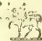
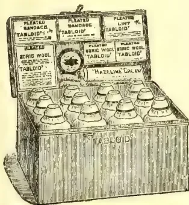
Measurements: in
No. 258 (The Settler's)
Fitted with the world-famed 'TABLOID' Brand MEDICINES, BANDAGES, etc. The medicines are perfectly reliable in hot or damp climates. They are prepared in accurate doses ready for dispensing and are quite palatable. In climate-proof metal case (black japanned).
Price in London 28/0
'Tabloid' Medical Equipments are obtainable at the principal pharmacies in all countries
BURROUGHS WELLCOME & CO., LONDON
NEW YORK
MONTREAL
SYDNEY
CAPE TOWN
MILAN
SHANGHAI
BUENOS AIRES
x x 293
ALL RIGHTS RESERVED
IDEAL FOR TROPICAL AGRICULTURISTS
A correspondent writes to the Straits Times of July 5th:—
What looks like a potential revolution in the process of converting latex into rubber is begun. The new era is not to be marked by any mere alteration in the present style of machinery or even in the chemical phase of the work; it is to be effected by a wholly radical renewal of mechanical means. The existing system of coagulation and smoking is threatened with utter extinction and in its place is promised an entirely new mode that is said to be more economical, more scientific and, as a consequence, more materially effective. The advent of this latest system has been screened with something amounting to astonishing secrecy but some general details have become known. The actual and particular details may be expected shortly, for we understand that the apparatus, illustrating the innovation, is being exhibited for the first time at the Rubber Exhibition opened last week in London.
At present there is only one installation of the kind in use in Malaya and that is on the estate of a Belgian company at Kajang. There, in the factory, the new machinery is at work every day under the strictest supervision. The principal component of the installation is a big drum con-
nected to a powerful gas plant. The latex is poured into the drum, which is then started to revolve at a lively pace. The action is to all intents and purposes an adaption of the simple milk-churn that every rustic dairy-maid in England is familiar with. The revolving of the drum creates a commotion among the latex and the thick of it rises quickly to the surface and forms a cake.
That essentially is the first part of the performance. But while the latex is thus being churned round, a heavy jet of smoke is forced upward into its midst and permeates the whole of the liquid, making it bubble like the water in a kettle. The smoke, which is purified by first passing through a mass of cotton-wool, is made to penetrate the latex by sheer pressure and in so doing antiseptises it more effectively than is done by the prevalent system. The result is a pure sheet, no less marketable by reason of the fact that it is not dirty with smoke.
The advantage, if all this is accurate, is obvious. The company which can turn out a clean rubber, antiseptised and less liable to be "tacky" than the smoked sheet we know, will command a readier market than the company which retains the crude method of belching unclean smoke into the open pores of the newly made rubber sheet. In the latter fashion it is the choking of the pores with carbonic dust that turns the sheet to its dirty brown; and the manufacturer at home is put to the trouble of cleaning before he can use it for his best manufactures. If, on the other hand, the manufacturer can get a
92The Supplement to the Tropical Agriculturistsweet clean article that needs practically no cleaning he will assuredly take it and even offer, perhaps, a better price for it. As a well-known rubber man told us one day "You wouldn't buy kippered herrings if you could get fresh." And that more or less expresses the probable attitude of manufacturers.
There is another lesson to be learned incidentally from this Kajang estate, and that is the value of the fluid left in the coagulator after the sheet has been skimmed off. This fluid in the past has been contemptuously regarded as nothing better than "dirty water" and it is no exaggeration to say that thousands of pounds have been thrown in the drains of the F. M. S. by reason of that view. That "dirty water," in the hands of a good chemist, is valuable. It stands to reason that it must contain a certain amount of latex that has not solidified, but although that must have been patent to planters since the beginning, it was never thought worth while to spend money in redeeming the latex. The Belgian company's work answers that. They have sent out a first-class chemist who has taken the subject well in hand. And at the moment, we believe, the company is being saved $200 a day that would otherwise be thrown into the river and lost.
A great awakening took place in 1910 in regard to the value of native gums of North Borneo, of which there are four—gutta-percha, gutta-jelatong, gutta-jangkar, and rubber. About the beginning of 1909 a British company obtained a concession from the Raja to control the output of the forests of Sarawak, and a large plant for refining and preparing the gums was erected at the mouth of the Sarawak River, eighteen miles from Kutching. It is estimated that no less than 40,000 acres have been brought under rubber cultivation in 1910 in British North Borneo. This has greatly stimulated the demand for coolie labour, which is brought from Java, Singapore, and Hongkong, through agencies at those places. According to Government reports, there are now employed on the various rubber estates about 15,000 coolies. When the trees now being planted become productive, it is estimated that 50,000 coolies will be required. As this estimate is based on real plantings, there is a bright outlook for large expansion in the general commercial condition of North Borneo. —Royal Society of Arts Journal, June 23.
We understand from our own sources of information that the floating supply of rubber in Brazil has been greatly reduced by private purchases, and it is probable that the maximum amount now awaiting delivery is 6,000 tons. This is about half the figure estimated a couple of months ago. If this process of absorption can be continued for a little while longer, it is evident that the general position of the rubber-producing industry will be very much better than at any time during the past twelve months. —Stock Exchange Gazette, June 15.
Many and various remedies have been tried, frequently in vain, to get rid of these troublesome pests. The following means are suggested in a recent number of the "Bulletin" of the Trinidad (W.I.) Botanical Department:—
For the extirpation of ants the following remedies are good. To be effective they require attention and perseverance. It is well to find their main burrow or nest, if possible. Arsenic is sure destruction to them, but it is dangerous to handle.
AIR-SLAKED LIME.—Plentifully dusted in warm, dry weather over and around the anthills or in the house or other places infested will cause the ants to vacate them in a short time.
SNUFF.—Dust a little snuff upon the floor of the rooms of the pantry.
Draw a thick chalk line round a smooth tree or across an upright board or post, and they will not pass over it.
CAMPHOR.—Put a piece of camphor, the size of a filbert nut, into 2 quarts of cold water. When cold, apply to pot and other plants, and the insects will be driven off without injury to the plants.
Mix together 1 part of calomel and 10 parts of finely powdered white sugar; lay it in little heaps about their nests and runs; the ants will eat it and die.
Coal oil, mixed with six times its bulk of water, sprinkled over the nests every few days, will kill and drive them away.
Pan or saucers nearly filled with honey or sweet oil attracts ants, and they are drowned in it.
Flowers of sulphur, lb., potash 4 oz. Set in an earthen vessel over the fire until dissolved and united. Afterwards heat to a powder. Infuse a little of the powder in water, and sprinkle in places infested with ants.
TO DESTROY BLACK ANTS.—A few leaves of green wormwood scattered among the haunts of black ants will drive them away.
RED ANTS.—Powdered borax sprinkled around will exterminate both red and black ants.
The distillation of orange flowers on the French Riviera, and particularly in the district surrounding Grasse, is a very important industry. Here 3,000 tons of these flowers are produced annually, not including the leaves and even the young fruit of the orange, which is also utilised for making the essential oil, so valuable in the manufacture of perfumes. The best quality of oil, called nérolis, is obtained from the flowers of the wild, or bitter orange tree, locally termed bigaradier. The flowers of the sweet orange are not so productive, and yield a quality known as nérolis doux, which is inferior to the other. A still more inferior quality is obtained from the brouts (the leaves and newly-formed fruit), this quality is called petit grain.
and Magazine of the Ceylon Agricultural Society.—July, 1911.93The flowers are gathered during the month of May. For their distillation an ordinary still may be used, but a special apparatus is preferable. These are of smaller size at bottom than those employed for distilling spirits, and somewhat higher; a grating is also provided, so that the flowers and leaves are not in direct contact with the fire. An ordinary-sized still should contain about 40 kilogrammes of flowers (88 lbs.), and between 50 and 60 litres (11 and 13 gallons) of water. This should yield from 30 to 40 litres (6 to 8 gallons) of liquid.
The products of distillation pass from the still into a receiver, so arranged that the condensed liquid always remains at the same level in it, the water is drawn off from the bottom by a bent tube, whilst the globules of essential oil that float on the surface are collected at the top of the vessel. The oil, though not very soluble in water, is sufficient to impart its perfume to it, and is sold as eau de fleur d'oranger, whilst that obtained from the distillation of the leaves is termed eau de broule. A kilogramme of orange flowers yields, on the average, 2 grammes (39.86 grains) of nérol, worth from 500 to 1,000 francs per kilo (£9 1s. 7d. to £18 3s. 2d. per lb.). The orange-flower water is sold, on the average, at 25 centimes per litre (about 2½d. per quart.) The leaves yield about 1½ grammes per kilo of petit grain, worth about one-tenth the price of the nérol. The quantity of flowers furnished by each tree varies considerably, and depends on age, vigour of growth, situation, soil and other circumstances. A well-kept garden near Grasse, with trees, half of which were forty years and the other half twenty-two years old, has produced as much as 2,800 kilogrammes (about 2 tons 15 cwt.) in a single year. The cost of planting a hectare of orange trees is estimated at 4,000 francs, or about £65 per acre.—Royal Society of Arts Journal for June.
We extract the following from a report on the bud-rot of palms in the Godavari and Kistna districts written by Mr Macrae, Entomologist to the Government of Madras:—
Species of palm attacked.—Four kinds of palm trees are common in the delta. Of these the palmyra palm, the coconut palm and the areca nut palm are all subject to the disease but the date palm has never been observed to be attacked. Many thousands of palmyras, several hundreds of coconut palms and a few scores of areca nut palms have succumbed. Palms of all ages are liable to attack but more mature palms die than young palms.
Symptoms and cause of the disease.—The first indication that a palm is diseased is usually the withering of one or more of the expanding leaves. The central bud dies and the leaves gradually wither one after another towards the exterior of the crown. When a deceased crown is cut open spots are seen on the leaf-sheaths and occasionally on the leaf-stalks and leaf-blades. At first these are light coloured but gradually become brown or even black when they have become dry and old. The spots are slightly sunken with a raised rim. On some of the spots a white woolly web or mycelium is seen. This is the body
of the fungus, Pythium palmivorum, which causes the disease. It is made up of many fine, colourless threads woven together. These threads produce small round sacks in which are developed the spores. They are the reproductive bodies of the fungus.
Many attempts have been made to cultivate the fungus artificially, but all have failed. It will grow only on living parts of certain palms. Some other parasitic fungi behave in the same way.
On an average the rate of extension of the disease as a whole seems to be a little over a mile a year. Except for an extension beyond Peddapur, for one up the right bank of the Godavari river in Yernagudem taluk and for the one to Masulipatam the area affected by the disease is continuous. The Imperial Mycologist writes:—"It is quite clear both from the observations made in the field during the past four years and from information gathered from the cultivators, that the spread has occurred in a centrifugal manner from the locality in the Gautami Godavari first infected. Naturally the flow has been more rapid along some lines than others, and barriers such as the main channels of the river and tracts bare of palms have checked extension in some directions for a greater or less period; on the whole, however, the onset has been remarkably even and regular all round."
6. Disease not Uniformly Distributed.—Though, speaking broadly, the disease occupies a continuous area yet its distribution in that area is very uneven. In some localities many palms die continually, in others a few die now and again while in others only occasionally a palm succumbs. The Imperial Mycologist mentions a case in one of the lankas near the place where the disease is believed to have originated, in which 400 palmyras were found dead or dying in a single acre, and another case at Kolanka where 50 to 75 per cent of the palms within a mile of the village had succumbed by the end of 1907. "Such a high mortality cannot be equalled now in any part of the affected area." The intensity varies even from field to field. Several cases have been seen where the disease is confined to definite topes of palms while topes in adjacent fields remain quite healthy. Dampness of soil favours the disease. Along water channels, on paddy bunds and on black soil the mortality of palms is greater and more rapid than in opener situations and on sandy soil.
7. Means of Spreading the Disease.—The chief possible ways by which the disease may be spread from tree to tree are—
| 1, by the wind, | 3, by insects, |
| 2, by tappers, | 4, by birds, |
1. Wind.—"Most epidemic diseases which resemble the bud-rot of palms are spread through the air. The parasites depend for their propagation chiefly on spores, which are set free and are carried into the air by the wind. Alighting on healthy plants they germinate and produce infection. Such are the potato blight, cereal rusts and the like. Pythium palmivorum, which is very similar to the cause of potato blight, produces spores which would be just as capable of causing rapid spread of the disease as those of the latter, provided that
94The Supplement to the Tropical Agriculturistthey are formed in a position where the wind can easily reach them. This is not often the case, however, since spores have not been found on the surface of diseased crowns, except in the comparatively small number of cases in which the blade or expanded portion of the leaf, is attacked. In the large majority of cases the seat of attack is the compact mass of leaf bases, the leaf-sheaths, which form a tubular covering to the top of the stem. Having entered the outermost of these, the fungus grows in towards the softer underlying ones and usually does not begin to produce spores until several have been penetrated. Spores have never been found on the hard outer sheaths, but usually occur between the softer inner ones at some distance from the surface. Here they are not exposed to the air and cannot serve as an effective means of propagation. In some cases, however, the young leaf shoot at the apex of the crown is found to have been attacked in the portion which afterwards becomes the expanded "blade" of the leaf. This usually occurs while it is still small and hidden in the tube of leaf-sheaths, being the result of direct contagion from the latter. In a very few of these cases the parasite has been found still alive when the young leaf has pushed out into the air, and it is probable that, in periods of high humidity or during heavy dews, spores would develop in this situation, freely exposed to the wind. A second condition in which there may be air-borne infection occurs when the tube of leaf-sheaths begins to disintegrate as an effect of the disease. In old cases the outer leaf-sheaths wither and fall away and eventually nothing is left but a bare pole. In these old withered sheaths no spores capable of germination have been found, but it is quite possible that they occur, and if this is so, they would be a means of dissemination. A third condition is the result of the stripping of the outer leaves for thatching and still more in some localities for fibre. In the operation the old leaf bases are torn away, and it is not uncommon to see leaf sheaths that are still almost white from their internal position, exposed. In infected trees this must offer considerable opportunities for aerial dissemination of the spores. It is doubtful how far the above conditions are sufficiently frequent to account for the intensity of the epidemic. It appears that if this were a common method of spread, the area affected would by now be far greater than it is. Airborne infection is always rapid and instead of the disease being confined to one small district, it would be found throughout the country." There is no doubt but that the conditions mentioned above do occasionally occur and that therefore the wind does play a small part in disseminating spores. This means of distribution is too fortuitous, however, to explain completely the steady spread of the disease.
2. Tappers.—"Dissemination of disease by human agency is particularly likely where, as in bud-rot, the diseased parts of the plant are habitually handled by persons who afterwards come into contact with susceptible portions of healthy trees. As already mentioned, each village uses the produce in leaves of a large number of palmyras for thatching. In addition a large
number of trees are tapped for toddy and jaggery. Over 400,000 palms are tapped for jaggery in the Godavari district (mostly in the upland taluks) according to the Imperial Gazetteer. For both these purposes the bulk of the palms in the district are climbed at intervals. It is the practice of the climbers to strip off the outer sheaths, both because they impede their operations and because they serve for fuel. Hence the inner fresh, moist and softer sheaths are often exposed. In diseased trees this is just the position in which felted masses of the mycelium of the parasite are found. Fragments of the outer sheaths containing living mycelium no doubt often break off and remain on the person of the climber. The mycelium itself would readily adhere to his knife. It is easy to see that in repeating the operation in a healthy tree there is every chance of his successfully, if unconsciously, inoculating it with the parasite. There are indications in some places that the disease has followed lines of communication used by the people, particularly the ferries across the canals which intersect the district. These are no doubt used by the tappers and the matter would be explained if the infection is conveyed by them. In this district the coconut trees are not tapped for toddy and their leaves are rarely cut. Hence they are seldom climbed. Arecanuts are neither tapped nor are their leaves cut and when climbed it is only to remove the bunches of nuts, which project well away from the stem. It is possible that this explains in part the comparative immunity of these two species of palm."
It is not during the process of tapping that fresh palms are infected. The parts of the crown that are cut to get the juice do not often have the disease. It is while they are removing the lower leaf-sheaths to use as fuel and to a smaller extent when they do so to clear the way for climbing up, that fresh palms catch the disease from infective material adhering to the tapper's person and instruments. This, I believe, is the chief means by which the disease is spread in the delta. As it entails considerable exertion to climb to the top of a high palm, the tapper, while he is about it, removes in most instances as many of the lower leaf-sheaths as possible and leaves exposed the living, tender, pale, yellow leaf-sheaths within. Then the palm is exposed to infection from two other sources—(1) to a small extent from spores carried by the wind, (2) to some extent from spores and mycelium carried by insects.
Experiments were conducted at three places in the affected district in July and August 1910 to ascertain the method of infection. Mycelium and sporangia of the fungus were cultivated in as pure a condition as possible and then deposited on the surfaces of newly exposed leaf-sheaths of healthy palms.
On the 17th July the crown of a palm in which the central expanding leaf had become pale, was cut off in Rajabhapalapatnam in the morning and brought to Samalkota in the afternoon. The outer leaf-sheaths were removed till clean, young spots were exposed on the inner sheaths. Several of these spots were carefully cut out with a sterile knife and placed on a glass stand in a moist chamber. Next
and Magazine of the Ceylon Agricultural Society.—July, 1911.95morning the diseased spots had a copious growth of white mycelium on their surfaces. On microscopic examination this proved to be a pure growth of pythium. A small piece of mycelium was carefully removed, mounted on a slide under a coverslip in a drop of water, and irrigated with fresh water. In removing the mycelium care was taken to remove aerial mycelium only. All instruments and the water used had been sterilised. In half an hour the sporangia produced vesicles and on bursting liberated zoospores. This went on rapidly till most of the sporangia had discharged their zoospores within the next half hour. The material used for inoculating the first 15 palms was similar to the above. The water from the above culture on the slide was washed into a watch glass and a drop or two of this used to inoculate the last three palms. This, though not rigidly fulfilling the conditions of a pure culture, is the most that can be done with a holoparasite.
Eighteen young palmyra palms in one field of Bhimavaram village were consecutively numbered from 1 to 18. The only criterion of choice was that the palms should be small enough to be operated on from the ground. They varied from 3 to 12 feet in height. The outermost dry leaf-sheaths were removed. The inner dry ones had the attachment of one limb to the trunk severed while the attachment of the other limb remained intact. Usually 3 or 4 leaf bases were so treated thus giving access to the softer, less, changed, leaf-sheaths within. These half-attached leaf-sheaths were held aside, the inoculating material placed on the outer side of the uncut leaf-sheath just within the last half-attached one. The half-attached leaf-sheaths were then replaced in position one after another. A cord of fibre was then tied round to keep the leaf-sheaths in position. In a few cases a fold or two of the fibrous material attached to the leaf-bases was wrapped round the leaf-sheaths and wetted with water. All the operations were done to each palm before beginning the next one.
The surfaces of the newly exposed leaf-sheaths on which the inoculating material was placed were not sterilised. But as the leaf-sheaths fit very tightly together and were exposed for only a few seconds, it is probable that they did not contain any of the organism that causes this disease. The palms were chosen in a place in which it is known that diseased trees had not occurred.
On the 18th of August the palms were examined and every one was found to have become infected with the disease. Three of them had died, i.e., the growing point was dead. The number of leaf-sheaths that had been pierced by the fungus varied from 1 to 11. Diseased spots from the inner leaf-sheaths of two of the palms were placed in a moist chamber and developed aerial mycelium, zoosporangia and zoospores which were identical with those on the spots of the original diseased palm and are pythium paimivorum. This experiment was unexpectedly successful. It shows that when the conditions of humidity are suitable as in the monsoon a palm that becomes infected stands a poor chance of escape. In most of these cases the infective material was placed on the leaf
sheath by means of a knife, either the small one ordinarily used for such work or the ordinary katti of the tapper. At Kothapeta and Itampudi similar experiments were carried out and confirmed the above results. In each place a tapper inoculated some palms himself by passing the tip of his katti over a diseased spot and then touching the surface of the leaf-sheath of a healthy palm. These palms carry infection from one palm to another.
(3) INSECTS.—Two large insects common in the delta, the black rhinoceros beetle and the red palm weevil are capable of carrying the mycelium and spores of the fungus attached to their bodies and one or other or both are often found in borings in diseased trees. In several of the palms that were inoculated in the course of my experiments the latter insect was found. When a living leaf-sheath is wounded it exudes a sweet gummy juice and this seems to be the attraction. In nature the beetles and weevils get into the heart of the bud. The young pupae emerge within the disintegrating mass of tissue and observations conclusively prove that they carry the infective matter (mycelium and spores) from place to place within the limits of a single bud. The mycelium and spores of the fungus cannot well help becoming attached to their bodies and being carried away to healthy palms when the insects take to flight. The experiment has been tried of allowing a weevil to walk over a diseased spot bearing sporangia and then confining it in a cage on the outside of the leaf-sheath of a palmyra, but the results are not yet available. In Ramachandrapur, Lankalakoder and other villages the disease has been observed to be severe in the vicinity of the huts of the Midigas, a low caste of people who live on flesh. This has also been remarked near the huts of fishermen. The offal of carcasses and fish afford good breeding grounds and the number of insects being greater in such favourable situations than elsewhere, the number of palms visited is greater. I am convinced that palm weevils and rhinoceros beetles play a part in disseminating the disease. Exactly to what extent has still to be found out.
(4) BIRDS.—Birds may conceivably spread the disease. If they perched on an infected part of a leaf or if they preyed on the insects that occur in the infected parts of the bud, mycelium and spores might easily become attached to their feet or bills and so be carried out to other palms on which they might alight. The affected parts of the leaves are seldom suitable places on which to alight, and what birds, if any, prey on rhinoceros beetles and palm weevils is not yet known. The opportunities that birds have of spreading the disease will only be occasional. Besides the rate at which the disease spreads is so slow and the progress of the disease is so steady that it is improbable that birds play any considerable part in the dissemination.
The evidence now available goes to show that the disease is spread—
8. The length of time taken to kill a palm varies. At first when the disease is eating into the bud no sign of ill-health can be seen by a
96The Supplement to the Tropical Agriculturistperson standing on the ground. Only by cutting off and examining the leaf-sheaths can signs of disease be detected. When the central bud has been killed the young expanding leaves become yellow. This is the first outward indication that anything is wrong. Now the growing point in the centre of the bud has been killed no new leaves are produced. There is then no hope of recovery. The palm, however, goes on living for a time on the reserve food stored in its tissues but the leaves gradually die till nothing is left but a bare pole. The number of leaf-sheaths that may be pierced by a series of diseased spots in a line varies. The highest number I have seen is 29. Even in this palm there were still 4 leaves besides the central bud untouched by the fungus. It must have taken several months for the fungus to pierce all these leaf-sheaths.
The length of time according to experiments from the infection of the palm till the death of the growing point and the withering of the central expanding leaves varies from one to ten months. From observations made in the field it is believed to extend to almost two years. From many enquiries made of residents in the delta it appears that the time that elapses before the palm is reduced to a bare pole may be up to three years or more.
Thus a palm may be affected from one to ten months or more before it shows visible signs of disease and after that may linger for upwards of three years. During this time there is very little hope of recovery from the disease.
9. Recovery.—A very few cases of recovery even after a great part of the crown has withered have been observed. This is due to the growing point having escaped injury. Nearly all recovered palms succumbed in a comparatively short time to a renewed attack of the fungus. I have seen only three examples of recovery: One of them subsequently died of disease and the other two were cut down in order to discover where the new shoot arose. It was found in both cases that the original growing point had been missed and had begun new growth. Thus out of thousands of diseased palms under observation since the operations were first instituted in 1906 only one case of recovery, that mentioned above, has been observed.
10. Dormant condition of the fungus.—The fact that these cases of apparent recovery almost invariably succumb later on, is an indication that the fungus is able to pass into a state of suspended activity. When the operations were begun it was frequently observed that even after a locality had been cleared of all dead and dying palms, new cases of disease continued to show. "At first these were believed to be new infections conveyed in some manner unknown. Then it was noticed that there was a difference in the distribution of these cases as compared with outbreaks which were undoubtedly due to fresh infections as when a village became attacked for the first time. In the latter case the deaths were in groups or often in one small part of a village only, indicating spread from one or a few early attacked trees. The deaths in villages
that had been one or more times cleared of all outwardly diseased trees occurred scattered throughout the cleared area. In Amalapur village such scattered cases continued to recur with the greatest persistence. In two small areas kept under continuous observation which had been cleared of large number of diseased trees in November, 1906, five subsequent inspections up to September 1908, yielded fresh cases. It was impossible that outwardly diseased trees could have escaped cutting on these occasions, since the plots were close to the road through the village which was frequently traversed by those in charge of the work. Similarly outside infection was scarcely to be thought of for the whole village, as well as those adjoining had been very thoroughly and repeatedly worked over, being the head-quarters of the taluk where the campaign was prosecuted with the greatest energy. Examination of several of these cases showed that the outer leaf-sheaths bore unmistakable evidence of previous infection, the old brown spots on the outer sheaths being split and dried up. The sheaths of at least two years' leaf supply often remain attached to the tree, and there was every reason to suppose that some of the spots seen on this and other occasions on the outer sheaths may have been two years old. It is now believed that such old spots may serve for a considerable time to restart an active phase of the disease. This is probably brought about through the tardy germination of resting spores, which have several times been found in the dried mycelial webs on the surface of old spots. The mycelial growth resulting from the germination of the resting spores is small and soon terminated by the formation of one or two sporangia. The spores from these would settle on the sheaths in contact and might succeed in penetrating them, whereas from their small number, and entangled position in the old sheaths there would be little likelihood of the sporangia being carried to other palms before germination." In my investigation in the Godavari I have several times seen unmistakable cases where the disease had become arrested within the bud. In one case near Vijeshwaram in Kistna district during an experiment an apparently healthy palm was examined. The disease was found to have penetrated several leaf-sheaths. The diseased spots were old and dry. These were cut away and several of the next inner clean leaf-sheaths were removed. Three months later the palm was still unattacked. It is still under observation.
Those who, while conducting the operations, have been living a considerable time in the district have observed that palms which have diseased spots on their expanded leaves invariably die.
The length of time between infection and the appearance of the first visible symptom has been proved by experiment to extend to ten months. From field observation it is estimated to extend in some cases up to almost two years. This accounts in a measure for the numbers cut out month after month in some places. These are not all cases of new infection but are the visible results of infection that took place months before. This is another factor that has prolonged the operations.
THE
TROPICAL AGRICULTURIST
AND
MAGAZINE OF THE
CEYLON AGRICULTURAL SOCIETY.
VOL. XXXVII.
COLOMBO, AUGUST 15TH, 1911.
No. 2.
CONTINUITY IN AGRICULTURAL
MATTERS.
Not only is contiguity required in dealing with agriculturists, but also continuity, and this is one of the weak points in the present organisation of the island from an agricultural point of view. If a given improvement is to be introduced into a certain district, not only must it be demonstrated near to the people, but it must be continuously demonstrated. If it is demonstrated in one season to be a success, and then taken away, the man who sees it will say that it was removed because one was afraid (or certain) that it would not succeed twice running. Successful results must be shown for at least four or five seasons running before people can be expected to imitate them, other than perhaps one or two of the most intelligent agriculturists.
For this reason it is important to try doubtful experiments only in Experiment Stations—and to some extent in school gardens—and to demonstrate to the people, on the spot, only those which are unquestioned successes. If, for example, there be any doubt whether a new variety of some local crop be a success, it can easily be tried all over the island by being distributed to the school gardens, and then demonstrated to the people in those districts where it succeeds.
In the same way, agricultural shows, as we have already pointed out, should be continuous in any district where they are started, or the good they do is merely evanescent. Whereas, if they be continuous, some good may be expected to follow after they have been held four or five times in the same place.
But this is a topic on which one might write for long, and we aim always at keeping leaders short.
98[AUGUST, 1911.(From Tropical Life, Vol. VII.,
No. 5, May, 1911.)
Although the application of manures is a comparatively recent introduction into rubber plantations, experiments have already shown that their judicious use is followed by good results and improved yields. It has been established that when the soil is supplied with a well-balanced plant-food the growth and the vigour of the rubber trees are considerably increased, rendering them at the same time more capable of resisting pests and injuries from other causes. Properly manured young trees allow tapping operations to be commenced six to twelve months earlier, whilst similarly treated old trees show a greater increase in girth and renew their bark more quickly and more thoroughly than the trees grown on unmanured land. Experiments have further shown that owing to the application of manures the flow of latex was more vigorous, and that the coagulation of rubber from this latex took place more promptly. If, on the other hand, it is borne in mind that the fertility of the soil of a plantation is reduced not only by the amount of plant-food removed in the latex, but to a much larger extent by the considerable quantities of fertilizing ingredients which are continuously required for the renovation of the bark, for the growth of new wood, and for the production of leaves and fruit, it is obvious that sooner or later even the richest soil becomes exhausted unless adequately manured. It therefore follows, in the light of the above results, that it is to the advantage of every planter to prevent soil-exhaustion on his plantation, and at the same time to encourage increased yields of rubber.
Unfortunately, on nearly every plantation the production of farmyard manure and compost, even if all the waste is clearly collected, is insufficient to meet the manurial requirements of the plantation. Therefore, in order to maintain or to increase the fertility of the soil, the bulk of, if not all, planters must avail themselves of the use of artificial manures, especially as they can be made up to any formula, and so enable the owner or manager to apply just those fertilizing ingredients that are needed.
Nitrogen in readily available form is supplied by nitrate of soda, nitrate of potash, nitrate of lime, sulphate of
ammonia and calcium cyanamide or nitrolim. Nitrate of soda, nitrate of potash, and nitrate of lime contain nitrogen in the form of nitric acid—which is directly assimilable by the plants—dissolve easily in water, and are not absorbed by the soil. They should therefore be applied in light dressings only, in order to prevent their being washed out of the soil. Nitrate of soda contains 15.5 per cent. nitrogen and nitrate of lime 13.9 per cent. nitrogen. Nitrate of potash contains 13.5 per cent. nitrogen and 44 per cent. potash, and should—owing to this high percentage of potash—only be used on soils which are deficient in potash. Sulphate of ammonia and calcium cyanamide contain 20 per cent. and 18 per cent. nitrogen respectively, but in such a form that they must undergo a change into nitric acid in the soil before they become an available plant food. In the Tropics, however, this change takes place very speedily, so that there is scarcely any difference between the effectiveness, nitrogen for nitrogen, of nitrate of soda, nitrate of lime, sulphate of ammonia, and calcium cyanamide. The choice between these is dictated more by the character of the soil and the price of the fertilizers per unit of nitrogen. Whereas calcium cyanamide and nitrate of lime are suitable for all soils, though preferable for those poor in lime, sulphate of ammonia should only be used on soil well provided with lime. Nitrate of soda can be profitably used on almost all soils, excepting light sandy soils, but shows its best effects on loamy soils.
All these nitrogenous manures are quick acting, and their nitrogen will be absorbed by the rubber tree within a short time* of their application. It will therefore be advisable to meet the continuous requirements of the rubber tree in nitrogen by applying a portion of what is required by means of some less quickly available manure, such as oil cake or blood meal.
The best-known phosphatic manures are super-phosphates and Thomas' phosphate powder or basic slag.
The manurial value of the superphosphates (ordinary and concentrated) depends upon their content of phosphoric acid soluble in water and in citrate of ammonia solution. Whereas the percent-
* The effect of an application of nitrate of soda upon the flow of latex in Ceara trees was manifested within 48 hours. (See Hawaii Bulletin, No. 16.)
AUGUST, 1911.]99Saps and Exudations.age of water-soluble phosphoric acid ranges from 12 to 20 per cent. in ordinary superphosphates, the concentrated superphosphates contain 40 to 43 per cent. water-soluble phosphoric acid, and 2 to 3 per cent. phosphoric acid soluble in citrate of ammonia solution.
If superphosphate is applied to the soil, its phosphoric acid, being soluble in water, becomes disseminated throughout the soil, and is there absorbed by other soil constituents, as lime, magnesia, iron, and alumina, forming phosphates which are insoluble in water. In soils containing a fair amount of lime the water-soluble phosphoric acid is precipitated into phosphate of lime, which supplies the plants with available phosphoric acid; but on soils poor in lime, the water-soluble phosphoric acid is either subject to being washed out of the surface soil, or is absorbed by the oxides of iron and alumina forming compounds, the phosphoric acid of which the plants can only assimilate with the greatest difficulty. The use of superphosphates should therefore be limited to soils which are not deficient in lime; on these, 1 lb. of phosphoric acid in ordinary superphosphates has the same effect as 1 lb. of phosphoric acid in concentrated superphosphate.
Thomas' phosphate powder, a by-product in the manufacture of steel free from phosphorus, contains 15 to 20 per cent. phosphoric acid, 40 to 50 per cent. lime, and 4 to 5 per cent. magnesia. The phosphoric acid in Thomas' phosphate powder, although insoluble in water, is easily soluble in weak acids, and therefore readily assimilated by plants. In genuine Thomas' phosphate powder 80 per cent. and more of its phosphoric acid is soluble in a 2 per cent. citric acid solution, which portion is considered quite as available as the water-soluble phosphoric acid in superphosphate. As the phosphoric acid in Thomas' phosphate powder does not undergo any changes in the soil which might reduce its availability, the use of this phosphatic fertilizer is not restricted to any particular class of soil, but can be applied with advantage to all soils. Its effects are most marked on soils deficient in lime, and on soil containing an excessive quantity of organic matter, in which cases the effects of the Thomas' phosphate powder are due not only to the phosphoric acid but also to the lime it contains. The latter can be easily assimilated by plants, and, like every other form of alkaline lime, improves the mechanical condition of the soil, promotes the oxidation of the nitrogenous reserves, brings the soil potash in solu-
tion, and helps to neutralize and render harmless the organic acids of soils rich in humus.
The principal potash manures in use are sulphate of potash and muriate of potash. The former, containing 48 to 52 per cent. potash is especially recommended for soils deficient in lime, whereas the use of muriate of potash, containing 50 to 59 per cent. potash is better limited to soils containing an ample supply of lime. The sulphate of potash, being less soluble than the muriate of potash, is better retained by the soil, and in very wet districts, although a little dearer, is a more profitable source of potash than muriate of potash.
If the soil of the plantation is so poor in lime that this deficiency cannot be made good by the continued use of Thomas' phosphate powder as phosphatic manure, the application of burnt lime or ground lime-stone becomes necessary.
As to the quantities of fertilizing ingredients to be applied to rubber plantations, this depends not only upon the different requirements of the rubber trees at their various ages, but also upon the condition of the soil. For plantations on fair average soils, showing neither a marked excess nor a marked deficiency in either of the three fertilizing ingredients—nitrogen, phosphoric acid, and potash—the supply of plant-food may be considered as well balanced if these fertilizing ingredients are applied in the proportion of 1 part nitrogen, 1 to 1.5 parts phosphoric acid, and 1.5 to 2 parts potash; and, therefore, for trees old enough to be tapped, which require about 40 lb. nitrogen, 60 lb. phosphoric acid, and 70 lb. potash per acre, the following mixture may be safely recommended to ensure good results:—
1½ cwt. nitrate of soda (or 1½ cwt. sulphate of ammonia).
1½ cwt. oil cake.
3½ cwt. Thomas' phosphate powder (or 1½ cwt. concentrated superphosphate).
1¼ cwt. muriate of potash.
All these manures may be mixed together, with the exception of Thomas' phosphate powder and sulphate of ammonia.
Where, however, plantations are laid out on poor soils, the above quantities should be increased by one-half; and a similar increase is advisable as regards the potash supply on light soils, whereas on strong soils—which are, as a rule,
Gums, Resins,100[AUGUST, 1911.poor in phosphoric acid and lime—5 cwt. Thomas' phosphate powder per acre will meet the requirements of the rubber tree better than either of the phosphatic dressings suggested above. Furthermore, if the trees show a good leaf growth, the nitrogenous dressing may be decreased by one-third, whereas if the leaf growth is weakly, better results will be obtained by increasing the nitrogen supply one-third.
As to the manuring of young plantations, the planter will be well advised to make use of the nitrogen collecting power of leguminous plants, which, grown between the rows, and forked in when they are in flower, are able to meet the young rubber trees' requirements of nitrogen. In order to enable the leguminous plants to develop vigorously, and to accumulate an increased quantity of nitrogen, it is, of course, necessary to manure same with phosphoric acid and potash, say 2 to 3 cwt. Thomas' phosphate powder and to cwt. muriate of potash per acre. Such "green manuring" may be practised as long as the growth of the leguminous plants does not hinder the roots of the rubber trees in their proper development.
When, however, green manuring is not adopted, the nitrogen has to be applied by means of artificial manures. Young trees should receive, during the first year, a manuring with oz. of nitrate of soda, oz. oil cake, oz. Thomas' phosphate powder, or oz. concentrated superphosphate, and oz. muriate of potash per tree, these quantities to be doubled from year to year till the trees are fit for tapping, when the full manuring suggested above may be adopted annually.
The artificial manures are to be sprinkled around the trees. Until the young trees reach their fifth or sixth year, it is a better practice to manure them singly, by distributing and forking in the manures around the stem at a distance of from 1 to ft. for each year of the tree's growth. After the sixth year the soil of a plantation is so thoroughly permeated by the roots of the trees that the artificial manures can be distributed over the whole plantation.
BY FRANK EVANS,
Botanic Department, Trinidad, B.W.I.
(From Tropical Life, Vol. VII.,
May, 1911, No. 5.)
There appears to be great diversity of opinion, both as to the best method of tapping, and the yield obtainable from the Central American rubber tree (Castilloa elastica).
Latest returns show very clearly that estimates of yields made in former years were far too high.
Cross, in 1881, estimated the annual yield of dry rubber at 12 lb. per tree; another writer stated that the average annual yield of trees in Nicaragua, when tapped spirally, was 10 lb. per tree.
In 1903 and 1904, trees in the Dominica Botanic Gardens gave an average of 1 lb. per tree. The tapping in 1903 was by means of slits cut with an ordinary knife, and in 1904 with a tool used in the East for tapping Hevea. The Dominica experiments of 1905 conducted with a view of ascertaining the best method of tapping, favoured oblique lines cut about 18 in. apart on one-half of the circumference of the tree; this agrees with the results of Trinidad experiments.
In 1908, when the writer carried out trial tappings on plantations in the Naparima district of Trinidad, good results were obtained with oblique cuts made with an Hevea tapping knife, also with incisions made with an ordinary 2 in. chisel driven in with a mallet. When using mallet and chisel, care should be taken to drive in the chisel at one level, as an upward or downward cut is apt to split the bark. In 1910, experiments with pricking instruments were made at the Trinidad Experiment Station, the idea being to puncture the whole surface of the trunks to a height of 8 to 10 ft. from the ground. Preliminary tests gave promising results, small punctured areas giving yields amounting to to lb. dry rubber per tree at one tapping. The chief drawback to the use of pricking instruments is the difficulty of making clean cuts, the wounds usually being rough-edged and heal badly. Another objection is the amount of labour required to continually force in the prickers; but this difficulty could probably be overcome by the use of a portable engine, worked by compressed air, and connecting by tubing with the tapping tool. The apparatus must be light enough to be carried and guided
AUGUST, 1911.]101Saps and Exudations.by one man. This may seem impossible or difficult, but many agree that tapping operations of the future will be conducted with the aid of steam, electric, or other power. Experiments in Tobago show that eight to ten-year-old trees tapped with mallet and chisel will give an average annual return of 3 to 4 oz. of dry rubber per tree. A few trees give 1 to lb. On one plantation it is recorded that some years ago a few hundred ten-year-old trees gave to lb. per tree.
In 1905, experimental tapping with V-shaped cut on a few thirteen-year-old trees in the St. Lucia Botanic Gardens, resulted in an average return of 11.16 oz. per tree. This yield is similar to that obtained the same year in the vicinity of Bluefields, Nicaragua, where 6,000 trees gave an average of 11.3 oz. dry rubber per tree. Results in Ceylon appear to be less favourable, as, according to the published minutes of the Experimental Station Committee, a tree at Peradeniya, tapped to a height of about 18 ft., gave only 50.90 grammes of dry rubber, although the method of tapping was the full herring-bone on each side, inflicted with mallet and chisel.
Reports from Mexico show the yields in that country vary from 3 to 12 oz., according to the age of the trees. The tapping method in most general use is the long V-shaped cut; but as the apex of the V does not heal well, this system of tapping leaves much to be desired, and is being discarded by the more advanced Mexican rubber planters. Dr. Olsson-Seffer, who has made an exhaustive study of the Castilloa tree, recommends the half-herring bone system of tapping, which consists of a longitudinal channel into which oblique cuts lead from one side only, and so, whilst the full area to be tapped is covered, the tree suffers less than by the V cuts.
CONSTANTLY BEING DEVISED—ADDITIONAL USES THROUGH RECENT DISCOVERIES BESIDES THOSE FORMERLY PUBLISHED.
(From the Manila Bulletin, June 7, 1911.)
Only recently the Bulletin gave an article on some of the new uses for rubber, and the fact that with the present production it would be impossible to overstock the market as the demand was rapidly increasing, in fact keeping ahead of the supply.
Some additional uses for rubber are here given, new uses being constantly devised, which must result in increasing to some extent its consumption. Some of the more recent new uses are sufficiently unique to be interesting and afford an insight into the diversified utility of this remarkable material.
The following on the new uses and recent discoveries is taken from The India Rubber World :—
One of the most remarkable, and at the same time, one of the most beneficent uses suggested for rubber, is for the construction of artificial or supplementary muscles for children suffering or threatened with infantile paralysis. By the local application of strips of elastic rubber over the weakened muscles, in a manner devised and described by Dr. Roland O. Meisenbach, Buffalo, N. Y., the tensile strength the muscle lacks is supplied, a local stimulus effected and contractions prevented, while the application being painless and not inconvenient, and the effect being continuous and independent of the patient's volition, the remedy is especially applicable for children.
Carpet sweepers are equipped by a manufacturer with corner buffers, by means of which the furniture is protected from injury, and they can be applied to either new or old sweepers. Another manufacturer employs rubber in the manufacture of a pad that protects table tops from defacement by hot dishes.
In the future development of the flying machine, rubber seems destined to prove an important factor. Rubberized fabric for planes has been given the preference by the most successful practical aviators, while the extent to which a safe and successful landing depends on the quality of the rubber tyres with which the "plane" is equipped, has induced leading tyre manufacturers to bestow particular attention on the production of "aeroplane tyres."
In the form of hose, rubber comes into use in an ingenious machine, employed by paviors in Germany, for ramming or tamping paving blocks into place. The pneumatic ramming tool is connected by rubber hose with a portable air compressing plant, and the compressed air, acting on its mechanism, causes it to deliver a rapid series of hard blows on the paving stones that are being set.
Another use to which rubber hose is put is in the operation of an ingenious vacuum cleaner, for which a stream of water from an ordinary faucet furnishes the power. Passing down one arm of a
Oils and Fats.102[AUGUST, 1911.Y branch, it creates, by suction, a partial vacuum in the other arm, and this in turn is connected with the cleaning tool. The dust laden air draws up the tube, encounters the water at the junction of the Y, and the dirt is washed down the drain. Rubber tips for furniture, rubber tiling for floors, rubber trays and dishes are made for photographers, while rubberized cotton fabric for balloons is much less expensive, lighter and more impenetrable than the water-proofed silk heretofore used. In addition to its extensive employment in tyres, rubber has found very many uses in connection with the automobile, mats for the floors, pads for the pedals, hand grips for the levers, all are made of rubber, and to some
extent it enters into shock absorbers and similar devices, to say nothing of the tubing for gas lamps, electrical insulation, hose connections for radiators, etc. It would be possible to enumerate a thousand and one purposes for which rubber in various forms is employed, that have been added within the past few years to its uses. It is a question whether, with all the additions that have been made to the output within the past few years, in the shape of plantation production, reclaimed rubber, etc., the "new uses" have not more than made up for the increase in production, so that, as far as the volume at the disposal of the consumers is concerned, there is but little improvement to be recorded.
(By A VOIGT in Jahresb. d. Verein. für angew. Botanik, p. 171, 8, 1911.)
[Abstracted by J. C. WILLIS.]
In November and December, 1910, many people in the large German towns were made ill by a margarine called Backa. Investigation showed that a fat had
been obtained from England under the name "Cardamom-fat," known also as Maratti-fat.
Some seeds were obtained and proved to be those of Hydnocarpus venenata (Makulu, Singh., Makal, Tam.) a common tree in the lowcountry of Ceylon. The fruits are used here as a fish poison, having narcotic properties, and the oil from the seeds is used in skin complaints.
Enquiry showed that these seeds are known in England as "false Cardamoms," and are used to adulterate the true Cardamoms, with which they have much likeness.
(From the Indian Agriculturist, Vol. XXXVI., No. 2. February 1, 1911.)
Mr. William Raitt, an authority on paper fibre, read a paper at the Allahabad Industrial Conference in which he makes out a good case for thinking that a liberal reward awaits those capitalists who take up in earnest the manufacture of paper-pulp in this country. The present position of India in regard to the production and consumption of paper is not much to its credit. Mr. Raitt estimates the consumption at 40,000 tons a year, as against a consumption of a million tons in the United Kingdom. This limited demand is perhaps not to be wondered at when it is considered
that the vast bulk of the people are illiterate, and have, therefore, no use for books, magazines or newspapers. But it is at first sight surprising that a half even of the small amount of paper consumed in India is imported from Europe, and that a country which abounds in the raw materials of the paper industry should be dependent on foreign countries whose supplies of raw material are steadily and rapidly diminishing. The explanation which Mr. Raitt offers of these puzzling facts is very simple. The essential condition which the manufacturer of paper must satisfy is cheapness. Hence he has in every age used materials rejected by other crafts. When rags were worthless, before the days of shoddy, he used rags. A rise in the price of rags drove
AUGUST, 1911.]103Fibres.him to employ Esparto grass, and, when his supplies of this material ran short, he resorted to pulp made of trees which were of little value for any other purpose. It may be asked why at this stage in the industry India has not developed into a great paper-making country. The reason is not very evident. A demand for wood-pulp has already arisen in India. Owing to the fact that the grasses used in paper-making yield a considerable percentage of waste, the cost of carriage becomes an important factor. Mr. Raitt states that tons of Bhabar and Munj grasses are required to produce a ton of paper. Consequently, when the local supply became exhausted, a point was soon reached when railway rates made profitable manufacture impossible, and, indigenous wood-pulp not being available, Indian mills have been driven to import wood-pulp to eke out their local resources. The cheapness of foreign wood-pulp is accounted for partly by the abundance of timber of the kind required, and partly by the enterprise and business acumen which have led its manufacturers to locate their factories in the immediate vicinity of the forests, so that the waste portion of the wood is eliminated on the spot, and only the actual paper-making pulp is sent by ship or rail. It is the adoption of this mode of economising in freight charges which is required in India. "The Indian paper trade," says Mr. Raitt, "has shown no want of enterprise in the past, and the best proof of that is in the fact that it has now expanded up to the full economic limits of its present raw material supply. Provide new sources of that, and the paper-maker will do the rest. In suitable localities erect pulping mills to reduce the local raw material to half-stuff, eliminating on the spot the 60 per cent. of waste and reducing the freight and handling charges in the proportion of to 1. Briefly and simply, in that lies the future of the Indian paper industry." And the sooner the enterprise is taken in hand the better. The recent rise in the price of both pulp and paper points to the diminishing supply and increasing dearness of the timber resources on which Europe has hitherto relied. The wonder is that the enormous consumption has not told earlier upon prices. According to Mr. Raitt, a London daily
paper devours in a year the arboreal produce of 5,000 acres, with the result that "whole districts once clothed with virgin forest—nay whole provinces—have gone galloping down the ever-open maw of a hungry press until now a condition of things has been reached in which the pulp-wood resources of the United States of America are admittedly exhausted and those of Europe considerably curtailed." India has, in these circumstances, a splendid opportunity. Happily this country is rich not only in spruce and fir, which offer only a limited supply, but also in the bamboo which is, as Mr. Raitt says, literally inexhaustible. A mill erected in a suitable locality for pulping bamboos will never be rendered useless by the disappearance of its raw material. It can easily perpetuate its supplies. On this ground alone Mr. Raitt is, it seems to us, justified in predicting that bamboo pulp will ultimately become the leading staple of the paper industry. It is strange how long it has had to wait for recognition. More than thirty years ago Mr. Thomas Routledge wrote his pamphlets on the merits of bamboo as a paper-making material, but only as recently as 1905 was the importance realised of ascertaining by skilled investigation the practical possibilities of this giant grass, which flourishes over huge areas in India. In that year the Indian Government requested Mr. R. W. Sindall, a London Paper expert, to visit Burma and report on the feasibility of using bamboo for the manufacture of paper. The conclusions at which he arrived were favourable, and have since been confirmed by the actual conversion of bamboo into paper. The experiment was carried out by Messrs. Thomas and Green, of the Soho Mills, Wooburn Green, who were agreeably impressed with the admirable qualities of bamboo paper, its strength, and the suitability of its surface for both letterpress and lithographic work. Unfortunately the conditions on which the Government of Burma were prepared to make concessions to the pioneers of a new industry were too onerous, and nothing has been done, so far as we know, to put Mr. Sindall's calculations to a test on a commercial scale. Possibly Mr. Raitt's paper may rouse new interest in a promising industry which has all the essentials of success.
104[AUGUST, 1911.(From the Bulletin of the Imperial Institute, Vol. VIII., No. 4, 1910.)
Coca leaves are derived from a plant, Erythroxylon Coca, which occurs native in the countries along the Western Coast of South America, and especially in Peru and Bolivia. In recent years coca plantations have been formed in Java and Ceylon, and considerable supplies are now derived from these latter countries, but especially from Java. The drug is the source of the alkaloid cocaine, which is very largely employed in medicine as a local anaesthetic.
Attention has been particularly directed in recent years to the trade in coca leaves and in the alkaloid cocaine prepared from them owing to the fact that this alkaloid has been used by natives, especially in Far Eastern countries, as an intoxicant, with the result that restrictive legislation has had to be introduced in India, the Straits Settlements, and elsewhere to prevent the spread of this "cocaine habit."
From a commercial point of view special interest attaches to the drug from the fact that an understanding is stated to have existed until recently among the comparatively few manufacturers of cocaine, whereby the prices paid by them for their raw material—coca leaves—have been kept at a low level, whilst prices for the pure alkaloid have been raised. Owing to the diminution in output from Peru, Java has acquired a predominant position in the produc-
tion of coca leaves, and a proposal has been made there recently that planters in Java should take advantage of this state of things to establish a practical monopoly in this industry. As the cultivation of coca leaves is already well established in Ceylon, and may be taken up in other British colonies, it becomes of interest to summarise the position of this industry at the present time.
The commercial supply of coca leaves is almost entirely derived from Peru, Java, and Ceylon. Coca is produced in Bolivia, Brazil, and other parts of South America, but only very small quantities are exported from these countries. Experimental cultivation of the leaves has been undertaken in India, the United States, the Federated Malay States and elsewhere, but at present there appears to be no production on a commercial scale in these countries.
From Peru, both coca leaves and cocaine are exported. The cocaine produced is crude and impure, and is mostly exported to Germany, where it is refined. From Java, coca leaves only are exported at present, though it has been proposed to open a factory there for the manufacture of cocaine. The coca leaves exported from Java are stated to contain little or no cocaine, but they are rich in other alkaloids from which cocaine can be made by a comparatively simple process. All the Java coca leaves are at present said to be worked up in Holland and Germany for the manufacture of cocaine.
The statistics of export of coca leaves and cocaine from Peru and of coca leaves from Java and Ceylon, so far as they are obtainable, are given below:
| Year. | To Germany. | To United Kingdom. | To United States. | |||
|---|---|---|---|---|---|---|
| Quantity Kilos. | Value £. | Quantity Kilos. | Value £. | Quantity Kilos. | Value £. | |
| 1903 | 6,770 | 84,626 | 553 | 6,912 | 58 | 725 |
| 1904 | 6,156 | 76,961 | 959 | 11,987 | 284 | 3,550 |
| 1905 | 6,133 | 108,600 | 300 | 5,684 | 134 | 2,304 |
| 1906 | 5,184 | 69,862 | 424 | 5,532 | ... | ... |
| Year. | To France. | Total. | ||||
| Quantity Kilos. | Value £. | Quantity Kilos. | Value £. | |||
| 1903 | 414 | 5,180 | 7,800 | 97,506 | ||
| 1904 | 128 | 1,600 | 7,527 | 94,099 | ||
| 1905 | ... | ... | 6,778 | 116,590 | ||
| 1906 | 305 | 3,676 | 5,914 | 79,071 | ||
For the above figures the Imperial Institute is indebted to the Consul-General for Peru in London. According to information supplied by the Secretary to the British Legation at Lima, the total exports of cocaine from Peru amounted to 6,057 kilograms, valued at £66,630 in 1907. According to the Boletín de Ministerio de Fomento, published at Lima, the exports of coca leaves from Peru in 1905 amounted to 1,315,825 kilos, valued at £94,956, and in 1906 to 2,842,916 kilos, worth £130,325, but these figures are believed to be merely approximations. Later data are not obtainable.
The Consul-General for Bolivia, in London states that the total production of coca leaves per annum, in that
country, is about 95,000 cwt., but of this only a very small amount is exported.
| 1904. | 1905. | 1906. | 1907. | 1908. |
|---|---|---|---|---|
| lb. | lb. | lb. | lb. | lb. |
| 57,032 | 151,057 | 274,259 | 533,765 | 1,026,022 |
The above figures were compiled for the Imperial Institute from Batavia market reports, by His Majesty's Consul at Batavia. According to the Consul-General for Holland, in London, the total exports from Java and Madura in 1908 were 416,612 kilograms, valued at 166,645 florins, and of this quantity 311,292 kilos went to Holland, 102,320 kilos to Germany, and 3,000 kilos to the United Kingdom.
No cocaine is at present produced in Java.
| Year. | To United Kingdom. | To Germany. | To Belgium. | |||
|---|---|---|---|---|---|---|
| Quantity. lb. |
Value. £. |
Quantity. lb. |
Value. £. |
Quantity. lb. |
Value. £. |
|
| 1906 | 38,301 | 1,534 | 1,182 | 57 | 1,136 | 38 |
| 1907 | 28,542 | 757 | 1,438 | 19 | — | — |
| 1908 | 33,833 | 896 | 2,668 | 36 | — | — |
| 1909 | 30,207 | 820 | 1,649 | 242 | 22,585 | 422 |
| Year. | To Holland. | To Switzerland. | Total. | |||
|---|---|---|---|---|---|---|
| Quantity lb. |
Value. £. |
Quantity lb. |
Value. £. |
Quantity lb. |
Value. £. |
|
| 1906 | — | — | — | — | 41,724 | 1,669 |
| 1907 | 4,239 | 148 | 11,736 | 389 | 46,986 | 1,348 |
| 1908 | 3,146 | 36 | 40,281 | 1,343 | 80,088 | 2,315 |
| 1909 | — | — | 13,809 | 455 | 68,306 | 1,940 |
The Trade Returns of the United Kingdom do not show imports of coca leaves or cocaine under these headings, but the following figures of imports to the United States and to Hamburg afford some indication of the course of trade in these products.
| Quantity. lb. |
Value. Dollars. |
|
|---|---|---|
| 1904-5 | — | 342,518 |
| 1905-6 | 2,650,141 | 488,545 |
| 1906-7 | 1,515,616 | 212,424 |
| 1907-8 | 633,121 | 76,109 |
| Kilos. | |
|---|---|
| 1905 | 618,600 |
| 1906 | 587,400 |
| 1907 | 354,800 |
If the export of coca leaves from Peru may be taken as about 1,000 metric tons per annum, and the exports of cocaine from the same country as about 6,000 kilos, then, taking the Java output of coca leaves at the figure for 1908, viz., about 1,000,000 lb., the maximum possible production of cocaine per annum would be from 18,000 to 20,000 kilograms
* From a Return supplied by the Principal Collector of Customs, Colombo.
† The original figures are in rupees; these have been converted at the rate Rs. 15 = £1.
‡ Probably mainly coca leaves; the figures given for 1906 is quoted in the Hamburg Trade Returns as for coca leaves.
14 Edible Products.106[AUGUST, 1911.(39,000 to 44,000); but this is little more than a guess at the actual production, since a large proportion of the coca leaves which appear in commerce is no doubt used in the preparation of such products as "coca wine," liquid extract of coca leaves," etc., and is not employed for the production of cocaine. In this connection it is of interest to note that de Jong, in a recent number of Teysmannia (1910, p. 201), estimates the world's consumption of cocaine at 12,000 kilograms per annum, and points out that since the yield of dry coca leaf in Java is about 286 kilograms per acre, and as this is equivalent to 6 kilograms of pure cocaine, the area under coca can be extended to about 3,500 acres in Java before the present world's consumption of cocaine is reached, assuming that export of coca leaves from Peru can be suppressed as the result of the competition of the Java product. He recommends as the most economical plan the cultivation of coca as a catch crop in Para rubber plantations, so that a return may be secured in the first six years before the Para rubber trees are old enough to be tapped. In order that the Java planters may further secure their position, he recommends that they should combine to erect a co-operative central factory for the extraction of cocaine, so that they may be independent of cocaine manufacturers in Europe. Manufacturers of cocaine in Germany, who have been consulted on the feasibility of this project, state that there would probably be a saving of from 10 to 20 shillings per 100 kilogram of leaves
worked as the result of extraction in Java instead of in Europe, and they express their willingness to take a share in the erection and working of the proposed Java factory.
At first sight this suggested extension of the Java industry in coca leaves seems to offer a prospect of serious competition with the Ceylon production of this drug, but it must be remembered, in this connection, that the variety of coca leaf cultivated in Java is only suitable for the manufacture of cocaine, since it is stated not to actually contain this alkaloid, but only alkaloids nearly related to it, and which after extraction are readily convertible by chemical means into cocaine. The coca grown in Ceylon, on the contrary, appears to be of the Bolivian variety, and should therefore be available, not only for the manufacture of cocaine, but also for the production of galenical preparations of coca, the form in which the drug is usually prescribed for internal use. For this purpose carefully prepared coca leaves of high quality are required, and consequently the Ceylon coca leaves, which answer these requirements and usually fetch the highest prices obtainable for this product, should be able to retain their present commanding position so far as this particular outlet is concerned. A complete investigation of Ceylon coca leaves is now in progress at the Imperial Institute with a view to determining definitely the nature of the alkaloids present, and especially the proportion of cocaine.
(From the West Indian Bulletin, Vol. XI., No. 3, 1911.)
The following paper is intended as a summary of the results that have been obtained up to the present in the experiments on the cultivation of imported varieties of ground-nuts. These have been conducted at various Botanic and Experiment Stations in the West Indian islands during the last few years. An account of them is given in the Annual Reports of the Botanic Stations from the year 1907 onwards. In addition to the results thus obtained, various points in connection with these plants have also been included, in order to make the information presented as complete as
possible. An earlier paper on this plant, by Freeman, containing a summary of the position of the industry in the West Indian islands before the introduction of the new varieties will be found in the West Indian Bulletin, Vol. IV., p. 101. Various articles have also appeared on this subject in the Agricultural News; references to these are given at the end of this paper.
In the year 1907-8, two American varieties of ground-nuts, Dixie Giant and Tennessee Red, were imported by the Imperial Commissioner of Agriculture, and distributed for trial at the Botanic and Experiment Stations in St. Vincent, St. Lucia, Dominica, Montserrat, Antigua and St. Kitts-Nevis. In the subsequent year two other varieties, Spanish and Carolina Running, were imported
AUGUST, 1911.]107Edible Products.from the United States and grown in the same islands. The results obtained were, on the whole, disappointing, with the exception of the yields given by the varieties grown in Dominica. This was to some extent due to poor germination, in the case of the Dixie Giant variety, and in that of the other varieties to the attacks of fungi. These consisted of a rust fungus on the leaves, reported as Uromyces sp. and Uredo sp., and a sterile root fungus which has since been found on several host plants, but has not so far been known to form any kind of fructification.
In the year 1909 the trials were continued, some varieties being rejected in certain of the islands. In Dominica the results were largely spoiled by the outbreak of three different diseases on the experiment plots. Two fungi occurred on the leaves—the rust fungus referred to above and identified at Kew as Uredo arachidis, Lagh., and a leaf spot fungus, Cercospora personata, Ellis. The same root disease fungus also attacked the roots, lower portions of the stem, pods and surfaces of the nuts. The rust fungus also occurred in certain of the other islands in that year. The results obtained throughout the islands were, however, considerably more promising than those of the two previous years.
A short account of some of the American varieties is given in Farmer's Bulletin, No. 356, of the United States Department of Agriculture. Descriptions of others have been obtained from local sources.
Spanish.—This variety is a strong-growing plant with upright stems and thick foliage. The pods are small, and are clustered about the base of the plant; they are rough and dark in colour, and each usually contains two nuts which entirely fill it. The pods adhere well to the plant when it is dug up, and are thus easily reaped. The nuts are light brown in colour and rich in oil. The period from the time of planting to maturity varies in the West Indies from twelve to eighteen weeks.
Carolina Running.—This variety has long trailing stems and thick foliage, which render it suitable for a green dressing. The pods are borne on the long trailing stems, and do not adhere well when the plant is dug. Each contains two nuts, on an average, which are about three times as large as those of the Spanish variety. The period from the time of planting to maturity is from sixteen to eighteen weeks in the West Indies.
Tennessee Red.—This variety is similar in habit to the Spanish, but the pods are longer, though small, and contain four, sometimes five or six, nuts of a dull red colour, crowded together. It is more suitable for stock-feeding than for market purposes. The period from planting to maturity varies from twelve to eighteen weeks.
Dixie Giant.—This variety is so called owing to the large size of its pods, while the nuts are about four times as large as those of the Spanish. It was found that it did not mature well in the United States, and this experience has been repeated in the West Indies.
The plants are trailing in habit, and the foliage is thin. The pods are borne along the trailing stems, but adhere well on digging. Each pod contains two large nuts, of a very light reddish-brown colour. The plants require from seventeen to twenty-four weeks to mature.
Virginia Bunch.—This is a somewhat dwarf plant with upright stems and rather light foliage. The pods are large and clustered about the base of the plant, and adhere well on digging; they are bright and clean, and contain two, or sometimes three nuts in each. The nuts are light brown in colour. The plants take fifteen weeks to mature in Dominica.
Virginia Runner.—This is a strong-growing variety with creeping stems and heavy foliage. The pods are scattered along the stems and do not adhere well on digging. In other respects it resembles the Virginia Bunch variety.
African.—This variety is also of a trailing habit, with dense foliage. The pods are borne along the stems and do not adhere well on digging. Each pod contains three nuts, of a light brown colour. These plants require twenty-four weeks to come to maturity in Dominica.
Gambia.—This variety is of a trailing habit, with dense, compact foliage. The pods are scattered along the stems and adhere particularly well on digging. Two nuts are produced in each pod. These are of light pinkish-brown colour. A strain having three nuts to the pod was found to occur occasionally in Montserrat. This has since been found to breed true.
The soil most suitable to this crop is a sandy loam containing a sufficient supply of humus. It should be well drained, free from weeds and in a good state of
Edible Products.108[AUGUST, 1911.tilth, especially on the surface. It is not advisable to use farmyard manure on the land in the same year as the nuts are to be planted, as by this means a large number of the seeds of weeds are introduced; this manure also causes the nuts to form large quantities of foliage and a high percentage of poorly filled pods. A green dressing may, however, be grown and turned in some few months before planting. It is probable that a moderate dressing of lime, at the rate of 1,000 to 2,000 lb. of freshly burnt lime to the acre, would prove advantageous on all soils except those containing an excess of this substance.
In the West Indies, the seed is planted in rows to 2 feet apart, and the plants are from 1 to feet apart in the rows. The greater distances apply to the trailing varieties. The nuts are shelled, and one or two are planted in each hole.
The plot should be kept free from weeds, but should not be disturbed after the nuts are beginning to form.
When the nuts are ripe, the plants are dug up and the pods removed by hand. They are then dried in the sun and stored in sacks or bags.
A thresher for removing the nuts in their shells from the vines is made at the Ellis Keystone Agricultural Works, Pottstown, Pa.; the General Southern Agent is Mr. G. C. Burgess of Petersburg, Va., from whom full information can be obtained. It is probable that other machines are also to be obtained, but this is the only one concerning which information has reached this office at present. (See Agricultural News, Vol. X., p. 41.)
The results obtained in 1907 were of a very preliminary nature, as the area planted was very small in each case. In consequence, little could be done beyond observing how the plants germinated and grew, and obtaining as much seed
as possible for planting in 1908. A few points of interest are, however, worthy of record.
In St. Vincent, the Tennessee Red variety germinated very badly, and practically no nuts were obtained from it. The Dixie Giant plants were attacked by a rust fungus identified then as Uromyces sp. It is, however almost certainly the same as Uredo arachidis.
In St. Lucia, the Dixie Giant variety, which was the only one grown, yielded nuts which were found to germinate in the ground before they were properly ripe. This indicated the necessity for planting in that island at such a time as should allow the nuts to ripen after the end of the wet season.
In Dominica, the two American varieties made a good start and gave a satisfactory yield of cured nuts. It may also be noted that the 'African' variety which was grown in a larger plot of acre gave a yield of 443 lb. of cured nuts, or an estimated yield of 3,569 lb. of cured nuts per acre.
In Montserrat, the results obtained were not very promising; the nuts produced by the Dixie Giant variety were considerably shrivelled.
In Antigua, the foliage of both imported varieties was attacked by caterpillars. These were kept in check by the use of a mixture of Paris green and lime in the proportion of 1 to 6. The soil of the plot was heavy, and did not appear very suitable to the plants.
In St. Kitts, the Dixie Giant variety grew well until October, when heavy rains fell just as the young nuts were forming. The rain caused renewed growth, and this resulted in the loss of many of the nuts.
In Nevis, the plants of both varieties dried off. This suggests the probability that they were attacked by a root disease.
The results of the trials conducted in 1908 and 1909 are summarized in the following table:—
AUGUST, 1911.]109Edible Products.YIELD PER ACRE OF CURED NUTS.| Where grown. | Variety. | Yield in pounds. | Remarks. | ||
|---|---|---|---|---|---|
| 1908. | 1909. | ||||
| Limed. | Unlimed. | ||||
| St. Lucia... | Carolina Running. | 504 | |||
| Spanish | no | ||||
| Dixie Giant | Crop obtained | ||||
| Tennessee Red | 1,137 | ||||
| Dominica.. | Carolina Running. | 757 | In 1909 all the plots were by diseases. | ||
| Spanish | 1,940 | 613 | |||
| Dixie Giant | 335 | 535 | In 1909 part of crop was stolen | ||
| Tennessee Red | 459 | 370 | |||
| Montserrat | Carolina Running. | 889 | 2,740 | 2,320 | |
| Spanish | 364 | 1,440 | 1,320 | ||
| Dixie Giant | failed to grow | ||||
| Tennessee Red | 400 | ||||
| Antigua ... | Gambia | ... | 2,430 | 1,740 | |
| Local variety | ... | 320 | 286 | ||
| Carolina Running. | 680 | ||||
| Spanish | 440 | 320 | 400 | Soil is apparently unsuitable. | |
| St. Kitts ... | Tennessee Red | 400 | |||
| Dixie Giant | 960 | Imported seed failed to grow in 1908. | |||
| Carolina Running. | 1,360 | 2,215 | 1,735 | ||
| Spanish | 300 | 3,090 | 3,307 | Root disease, 1908. | |
| Nevis ... | Dixie Giant | ... | ... | ... | In 1908 the nuts rotted in the ground. |
| Tennessee Red | 300 | 3,170 | 3,200 | Root disease, 1908. | |
| Local variety | 1,800 | 1,470 | 1,200 | ||
| Carolina Running. | 1,400 | 2,667 | 1,813 | ||
| Spanish | 810 | 3,200 | 747 | ||
| Dixie Giant | 120 | 1908 The nuts rotted before ripening. | |||
| Tennessee Red | 360 | ||||
| Local variety | 570 | ||||
On the whole, the Carolina Running and Spanish varieties have done best. Of the two, the Spanish is more likely to be popular as it is a bushy erect plant, and consequently easy to reap, while it ripens in from three to four months. The nuts are small; this is a further advantage, as they are frequently sold by measure and not by weight. This variety is, however, very susceptible to root disease. The Carolina Running variety has a trailing habit, and the crop is more expensive and troublesome to reap than that of the Spanish. This habit would, however, be an advantage if the plant were used as a cover crop or green dressing. The nuts are large and the yield good.
In Dominica the trials have been generally successful. A light soil such as is suitable to the crop is not difficult to find in parts of the island, and the opinion is expressed that the crop should be of use, particularly to peasant proprietors (Report on the Botanic Station,
Experiment Plots and Agricultural School, Dominica, 1907-8, p. 31). The influence of a heavy soil is well shown by the results obtained in Antigua. In both islands the soil was carefully freed from weeds and well prepared, but the results obtained in Antigua were unsatisfactory.
Another point that appears is the advantage of a dressing of lime in Montserrat and Nevis. In Montserrat the application was at the rate of 10 cwt. per acre; in Nevis at that of 1,200 lb. per acre. Trials with lime were also conducted in Dominica in 1909. A small plot was planted with nuts (the variety is not recorded) and half of it was limed with slaked lime at the rate of cwt. per acre. The limed half gave a yield of 12 lb. of nuts, the unlimed 9 lb. The result was, however, considerably interfered with by attacks of diseases. In 1910 the trial was repeated in Dominica with a new variety, Virginia Bunch. The area planted was 2,451 sq. feet, and
Edible Products.110[AUGUST, 1911.half of it received a dressing of lime at the rate of 8 oz. to the square yard, or 2,420 lb. per acre. The limed portion yielded a crop at the rate of 3,080 lb. of cured nuts per acre, while the yield from the unlimed plot was at the rate of 2,880 lb. per acre. Thus, lime would appear to be desirable as a dressing in Dominica also. The evidence as to the advantage of this in Antigua and St. Kitts is somewhat indefinite.
In general it seems that in the Islands named in the table, with the possible exception of Antigua and St. Lucia, imported varieties of ground-nuts will probably prove advantageous, more especially as they become acclimatized, and in consequence less liable to disease.
In order to obtain plants of the imported varieties which are likely to give the largest yields, it is necessary to plant nuts of these varieties obtained from plants grown in the previous season in any given island, and not to plant freshly-imported nuts each year. If this process is continued through several years, a strain of plants is obtained which is adapted to the local conditions, and is therefore hardy. The acclimatization is probably taking place owing to unconscious selection as much as any other factor. In connection with the acclimatization process, artificial selection of the best nuts from the most promising plants may also be conducted for planting purposes. Work of this kind is being done by Mr. Robson, Curator of the Botanic Station, Montserrat. There is no doubt that the effect of acclimatization and artificial selection will be to produce a strain of plants, of any of the improved varieties, well adapted to West Indian conditions.
As has been stated already, these were conducted by Mr. J. A. Brooks, formerly Officer-in-charge of the Agricultural School, Dominica, now Assistant Curator, St. Lucia; it is from the report furnished by him that the following information is taken:—
Disinfection of Seed.—The first point that suggested itself for determination was the effect of disinfecting the nuts with a solution of corrosive sublimate, to destroy the root fungus on their surfaces, and to prevent if possible the rooting of the nuts of the Dixie Giant variety which had been observed in several of the lands where these were planted.
Preliminary experiments appear to indicate that treatment of the nuts with 1 in 1,000 corrosive sublimate solution
did not reduce the germinating power, if the nuts were washed after this; while the reduction was small, even when washing was omitted.
Although the omission of washing appeared to reduce slightly the germinating power of the nuts, no serious harm was done by disinfection without washing. Consequently, it was decided to immerse the nuts for five minutes without subsequent washing before planting on a field scale.
In order to test the effect of this treatment on a field scale, an area of 2,556 sq. feet was planted with nuts of the Spanish variety. The area was divided into two equal parts labelled A and B. One and a half pounds of nuts were sown in each part, in rows 2 feet apart, and at intervals of 1 foot in the row between each hole. The nuts were planted 2 inches deep and two were put in each hole. Planting was carried out in July. The nuts in section A were disinfected before being sown, as described above; those in section B were untreated. The plots were reaped in the middle of November. Section A gave a yield of 74 lb. of cured nuts. Section B yielded 69 lb.
While the plots were free from root disease and leaf spot, the rust fungus appeared on the treated section on October 13, and, as no remedies were applied, it spread throughout the plot. It did not appear in section B until November 3, and even the plants nearest those in section A were unaffected.
Effect of the Rust Fungus.—The results obtained above also throw some interesting light on the effect of the rust fungus, as they indicate that this does very little harm. No individual plant was killed outright, either in this or in any of the plots, as it showed only on the older leaves and those nearest the ground. It was observed, also, that all the nuts from attacked plants were perfectly healthy, and showed no signs of shrinkage. Furthermore, a comparison of the number and total weight of the nuts borne on plants attacked by this disease with those of the nuts borne on healthy plants revealed no differences, so that in Dominica, under the conditions of the experiment, the rust fungus cannot be said to cause any very serious injury. The fungus appeared sporadically at different dates, in October, on plots situated some distance from one another, and attacked firstly those plants obtained from disinfected seed. There is at present no evidence as to the source of infection, and the land used had not been planted in ground-nuts during the previous year.
AUGUST, 1911.]111Edible Products.Comparison of Varieties.—A plot of a total area of 4,400 sq. feet was divided into five equal parts and planted with nuts of the Spanish, Tennessee Red, Dixie Giant and Carolina Running varieties. The nuts were sown in rows 2 feet apart with 2 feet between the holes in the row. Two nuts were placed in each hole at a depth of 2 inches. Sowing took place in July.
The nuts used were saved from the crop of 1909, and were all attacked by the root fungus, the mycelium being observed on their surfaces. They were disinfected for five minutes without subsequent washing. In addition, one of the five plots was planted with nuts of the Spanish variety which were obtained fresh from America and were not disinfected.
The yields were as follows :—
| Variety. | Actual yield in pounds. |
Estimated yield per acre in pounds. |
||
|---|---|---|---|---|
| Uncured. | Cured. | Uncured. | Cured. | |
| Spanish (untreated) .. | 19 | 15½ | 940½ | 767 |
| Spanish (disinfected) .. | 27 | 22 | 1,336½ | 1,039 |
| Tennessee Red .. | 29 | 24½ | 1,435 | 1,213 |
| Dixie Giant .. | 118 | 73½ | 5,841 | 3,523 |
| Carolina Running .. | 108 | 76 | 5,346 | 3,764 |
The Dixie Giant and Carolina Running varieties gave by far the highest yields and bore the largest nuts. Unfortunately they are but little suited to the conditions of the market in Dominica, where small nuts are preferred, as they are sold by measure.
The disinfection treatment seemed to have prevented any occurrence of root disease, even from the diseased nuts used for planting and, moreover, appeared to have acted as a stimulant, as it very probably accounts for the difference in yield between the treated and untreated plots of the Spanish variety. The rust fungus, however, broke out on the Carolina Running variety on October 5, when the diseased plant was removed, and the surrounding plant dusted once a week with a mixture of equal parts of lime and sulphur.
On November 3rd, the rust fungus appeared on the section planted with the untreated seed of the Spanish variety, at the end of the plot remote from the Carolina Running plants. The other three sections, containing Dixie Giant, Tennessee Red, and the disinfected Spanish were free from disease. The sporadic nature of the attacks of the rust fungus on this plot suggests an outside source of infection. This has, however, not been discovered. On the whole, lime-sulphur mixture appears to have but little effect on the spread of this disease.
The Effect of Lime.—In order to test the effect of a dressing of lime at the rate of ½ lb. to the square yard, or 2,420 lb. to the acre, a plot of 2,451 square feet was divided into two sections A and B. Section A received a dressing of lime; section B did not. Both sections were planted with nuts of the Virginia Bunch variety, in rows 2 feet apart with a space of 1 foot between the holes. One seed was sown in each hole.
The rust fungus broke out on section A on October 6, and on section B twelve days later, so that its effect, if any, was much the same on both sections. It is worthy of note that the lime-sulphur mixture which was applied had but little apparent effect on checking the disease.
The plot was reaped on November 15, practically four months from the day of planting. Section A, the limed portion, gave a yield of 86½ lb. of cured nuts, or an estimated yield of 3,080 lb. of cured nuts per acre. Section B gave an actual yield of 81 lb. of cured nuts or an estimated yield of 2,880 lb. per acre. This gives an increase of 200 lb. per acre of cured nuts in favour of the limed section—an increase so small as to render the experiment inconclusive.
The Effect of Unleached Wood Ashes.—To test this a plot, the area of which was 3,234 square feet, it was divided into two sections, A and B. Section A was the control plot, section B received a dressing of 10 oz. of wood ashes to the square yard, or 3,025 lb. per acre. The plot was planted with nuts of the Virginia Runner variety, planting being carried out as in the case of the Virginia Bunch variety used in the lime experiment.
The rust fungus occurred on both the plots at about the same time, and was not checked to any great extent by application of the lime-sulphur mixture.
Reaping was carried out on November 16, the nuts taking four months to mature. Section A—the control plot—gave an actual yield of 155½ lb. of cured nuts, or an estimated yield of 4,182 lb. per acre. Section B gave an actual yield of 156 lb. of cured nuts or an estimated yield of 4,202 lb. per acre. This gives an increase of 20 lb. per acre in favour of the wood ashes plot—a result which is so small as to be negligible. It may be noted, however, that the seeds arrived late, so that the dressing was on the ground for three months instead of not more than two weeks before the nuts were planted.
Edible Products.112[AUGUST, 1911.In conclusion, then, it would appear that disinfection of seed is a desirable practice; that in Dominica the Carolina Running and Dixie Giant varieties gave the biggest yields, though they are not as desirable for the local market as varieties producing smaller nuts; that a dressing of lime of about 2,000 lb. to the acre is likely to prove advantageous; and that the rust fungus does not cause shrinkage of the nuts, or inflict any other serious damage in that island.
In the Report on the Botanic Station and Experiment Plots, Montserrat, 1909-10, mention is made of selection experiments with plants of the Gambia and Carolina Running varieties. The results obtained are interesting, and although the work has only been started recently, there is evidence to show that careful selection of seed from the best plants for planting purposes will have a considerable effect in increasing the yield and other desirable characters of these nuts.
(1) The disinfection of ground-nuts by immersion for five minutes in a solution of corrosive sublimate of a strength of 1 part in 1,000 of water before planting is a course highly to be recommended.
(2) The varieties most suitable to the different islands vary somewhat with the locality, but the Spanish and Carolina Running varieties are likely to prove most generally useful.
(3) An application of 1,200 to 2,400 lb. of lime per acre to the soil in which this crop is to be grown is likely to prove advantageous, at any rate in the islands of Dominica, Montserrat and Nevis.
(4) The effect of gradual acclimatization may do much to reduce the harm inflicted by fungi, and in conjunction with seed selection, to increase the yield given by the different varieties, so that a really useful addition to the agriculture of the islands will accrue by the extended cultivation of ground-nuts.
BY MANUEL ROXAS.
(From the Philippine Agriculturist and Forester, Vol. I., No. 3, March, 1911.)
Twenty per cent. of the Philippine exports in 1909 were coconut products, a fact that shows the extent of the coconut industry in these islands. Among the coconut growing countries of the
world, the Philippines rank third, but the Philippine copra is poorest in quality. Our old method of drying and the common practice of using nuts not fully ripe, as well as lack of care in baling the products, are responsible for this low classification.
If we consider on the other hand the thousands of hectares of our land, suited to coconut raising, remaining yet untouched, and the meanness of the effort the improvement of our copra will require, there is no evident reason why we should not make of the Philippines the first coconut-producing country of the world, both as to the quality and quantity.
Supposing that we aim at this purpose, one of our first cares must be to stamp out all diseases that destroy our coconuts and reduce our profit. The Uang alone is causing a damage amounting in many localities to fully twenty per cent. of the crop. In spite of this fact no effective measure has ever been taken by either our farmers or the Government to eliminate this pest. But we should eradicate it and others hardly less serious, such as the red beetle and the bud rot, before we plant new tracts of land with coconut; for otherwise our new plantations will offer fresh breeding places for the pests, and thus aid in their propagation. Moreover, the labour which might be spent in planting new areas will render under present conditions no greater profit than it would if directed to the extirpation or the diseases mentioned.
In this paper it is intended to give some hints and criticisms for the improvement of our methods of cultivation, gathering of the crop, and the preparation of copra.
Little attention or none at all is commonly given the seed beds and the selection of seeds. Yet much is to be gained in the betterment of our nuts if we select the seeds and only plant those that are possessed of the characters suited to our purpose. For instance, when coconuts are raised for copra, big nuts rich in fatty contents are to be preferred, and if only seeds possessing those characters are planted, the next generation of trees will produce a greater percentage of such nuts, yielding on the average a better quality and larger quantity of copra. If, on the other hand, tuba is the principal product, trees yielding the greatest number of fruits are more desirable, for more sap is obtained from them. Seeds from such
AUGUST, 1911.]113Edible Products.trees are then used to produce seedlings. In selecting seed nuts, the characters of the trees from which they come are to be taken into consideration, instead of merely the character of the individual nuts.
But the great bulk of improvement will in most localities come from the importation of seeds from other places where nuts are of better quality. The coconut in La Laguna, for example, where copra is the principal product, may be greatly improved if this province imports seed nuts from S. Ramon, Mindanao. According to the census for 1904, from three hundred to three hundred and fifty Laguna nuts are necessary to yield one picul (about 62 Kg.) of copra. About two hundred S. Ramon nuts yield the same amount. This great difference is due to the fact that nuts from S. Ramon are bigger and richer in fatty contents. Seed nuts from S. Ramon when carefully selected are worth from six to eight centavos each, placed in Manila. This price is almost twice that for local nuts. But the balance is far more than covered by the benefits derived from the use of big nuts with high fatty content.
Even if it is supposed that the Laguna and the S. Ramon nuts are relatively equal in their fatty contents, still the latter will have the advantage of being bigger, which fact means economy in labour, since men here are generally paid according to the number of nuts they gather or handle in making copra. S. Ramon is not the only place in the Philippines that produces good big nuts. There are first-class nuts in Pangasinan and other nearby provinces.
Seedlings are transplanted usually when they are from six to twenty-four months old. The sooner the seedlings are transplanted, the better start they are given and the more healthy and productive the trees will be. The age at which to transplant is regulated by economic conditions.
The distance between trees depends upon the fertility of the soil. On rich soils the trees must be farther apart than on poor ones; for in the former trees are thrifter, and, therefore, occupy more space than in the latter. Coconut trees grow admirably in full sunshine when furnished with a good supply of moisture in the ground. Their rate of growth is in proportion to the amount of sunlight they receive and the quantity of water they can draw from the soil. If they are, therefore, so
planted as to shade each other, they make poor growth. Economic conditions also regulate the distance between the trees.
The arrangement of the trees to be recommended is the quincunx. It has the advantages that every tree is equidistant from its neighbours, and there is an increase of eleven per cent. over the number planted on a given area following the rectangular method. The quincunx is done as follows: a base line is laid out preferably parallel to one of the edges of the land. Divisions are marked on it, eight, nine or ten meters apart according to the space the trees are desired to have. These marks are used as centres, and with radii of the length of the desired distance segments of circles are drawn, the intersections of which determine the points at which to plant trees and the new points serve for finding others. The determination of the points and the digging of holes should be done several weeks before transplanting so as to weather the holes.
Catch crops are generally used in the Philippines after transplanting. For this purpose, those plants that do not exhaust the soil too much are best used. Such are palay, camoteng cahoy—the roots of which contain a large amount of starch used for the production of tapioca—or mango and other leguminous plants. Tobacco should never be used as it is a great nitrogen waster. Abaca grows faster at first than coconut, and when used for a catch crop covers the young trees in two years so as to make it hard for them to have a good growth. It is, though, used extensively for this purpose in La Laguna and elsewhere in the Philippines. Of course if the profit from it more than pays for the damage done the young trees, its use cannot be discountenanced. But as a matter of fact the damage done is greater than can be compensated for by the value of the abaca since the former is permanent.
This treatment is continued for a period of from five to ten years, after which the plantation is left to itself and grass allowed to grow in it. This practice must be condemned, for the land will be best used for shade loving plants, such as cacao, platano, pina and others. The cultivation required by the catch crop will incidentally free the coconuts from competition with weeds, thus giving them greater chance to make good growth. Another practice is followed in the Straits Settlements, East Indies and elsewhere, where the land is turned into pasture. The cattle
15 Edible Products.114[AUGUST, 1911.eat the grass and their excrement is scattered around the plantation and used as fertilizer.
The coconut makes good returns when fertilized; but in the Philippines fertilizing has never been done at least on a commercial scale. According to Semler, the author of the Tropische Agrikultur, when a tree yielding forty nuts per year is fertilized with a good stable manure, it will increase its production to fifty, and another yielding eighty will increase it to one hundred during the same length of time. The value of fertilizers can be seen right here, and we recommend to our farmers the use of any kind available. In some places where coconut oil is made there are oil factories that extract the oil for nothing and make their profit with the oil cake, called poonac in India. They sell this at high prices, to be used either directly as fertilizer or as a concentrate for livestock; in the second case the excrement of the animals is afterwards used as fertilizer. In these countries oil factories prove a success for the simple reason that they can dispose of their by-product as well as of the oil. The case in the Philippines is entirely different. So long as no application is given the oil cake, no oil factories can thrive well in these Islands. There are also commercial fertilizers sold by Behn Meyer & Co., Kerkhoven & Co., and others. The use of such fertilizers involves some expenditure of money, and we doubt if our farmers will use them on a large scale. But we are sure that they can be induced to use leguminous plants for such purposes. These plants are nitrogen-fixers, better than ordinary manure as a provider of nitrogen.
In case stable manures are used as fertilizers, they are applied by broadcasting fifty cubic decimeters of the manure mixed with ashes, around each tree, and the ground hoed over. In Ceylon, cattle are fed grasses from the plantation, and their excrement is used as above described. Better results will be obtained if the animals are fed on leguminous forage crops planted in the coconut groves and their manure is left on the ground as a fertilizer. When commercial fertilizers are used the amount to be applied must be less and will depend upon their composition. The time of application as recommended by Semler is after transplanting on poor grounds and before flowering on rich ones. The period during which their results show varies from three to six years.
The coconut has two principal insect enemies in the Philippines, the Oryctes rhinoceros, commonly called uang, and Rhynchophorus ferrugineus, the red beetle, and also called uang by many. In the case of the former the adult insect does the damage, and in that of the latter the larvæ. In the College of Agriculture we have seen the case of a tree attacked by the larvæ of the uang (Oryctes), and the red beetle. The latter began the damage, and when the tree had started to decay the Oryctes laid its eggs, and its larvæ completed the destruction. The red beetle is far more dangerous than the Oryctes, for the latter's attack can be detected by the hole it makes and by the ragged appearance of the young leaves. But the symptoms of the attack by the red beetle are hard to see and tops of trees appearing healthy may suddenly be blown down by a strong wind. The cabbage of such trees is then seen to be rotten and full of pupæ of the red beetle. The red beetle, on the other hand, never makes its holes on the old tissue of the tree to lay its eggs, but almost always takes advantage of those made by the Oryctes; or when the soft tissues around the bases of leaves are exposed, makes its hole there. It is therefore doubly necessary to suppress the Oryctes, thereby freeing our plantations of two most dangerous enemies.
The best remedy for these insects is to burn all decayed trees, and other decaying stuff, keeping the plantation in a good sanitary condition. Trees attacked beyond recovery must be cut down and burned. Wounds on trees must be filled with cement or other substance, preferably poisonous to the insect. The practice of the tuba-makers of making incisions on trees to facilitate climbing them is a fruitful source of trouble, and must, therefore, be condemned. The young tissues around the bases of leaves must not be exposed to the attack of the red beetle by taking away the fibrous stuff around them. By reducing the number of these insects the damage done by them will be reduced. Preventive measures are always the best.
There also exists in these islands the Bud-rot, or the rotting of the cabbage, due probably to bacteria. This disease is highly infectious. Its symptoms, propagation, the method of combating, and the history of its appearance in the province of La Laguna are all described in a paper of Dr. E. B. Copeland, now
AUGUST, 1911.]115Edible Products.Dean of our College, published in May, 1908, in the Philippine Agricultural Review.
The low quality of our copra is due mainly to the use of immature nuts, and to the poor method of handling it. The common nut-gatherers never allow the nuts to mature completely. Much is to be gained if, instead of gathering the nuts while on the tree, they are allowed to be dead ripe and to fall of themselves. They will be thus given time to concentrate their oil contents, and thus yield a better quality of copra. This method has two objections: one is the chance for the fruit to germinate on the tree before falling, and the other is the danger of the nuts being lost, or destroyed, after falling. The first difficulty in localities where it occurs can be avoided through seed selection; the second is easily remedied by keeping the plantation free from weeds. This practice may seem costly, but if we know how to relate it with others it will result economically. Letting the ripe nuts fall will suppress the bad habit of the majority of the nut-gatherers of making incisions on trees to aid in climbing.
The principal coconut product exported from the Philippines is copra. The total export of this article for nine months ending March, 1909, was 5,353,548 dollars, of which 2,774,131 dollars, representing 122,638,576 pounds of the article, that is more than one-half of the export, were imported by France alone (from the "Quarterly Summary of Commerce of the Philippine Islands" for January-March, 1909). But the Philippine copra is classed as the poorest, as can be seen from the following prices of copra from different countries in Marseilles, Dec. 11, 1909:—
For every 100 Kg.
| ... | ... | 61 | Fr. | |
|---|---|---|---|---|
| Ceylon sundried | ... | ... | 58 | " |
| Singapore | ... | ... | 57 | " |
| Macassar | ... | ... | 55 | " |
| Manilla | ... | ... | 56.50 | " |
| Zanzibar | ... | ... | 60 | " |
| Java sundried | ... | ... | 56 | " |
| Saigon | ... | ... | 56.50 | " |
| Cotonon | ... | ... | 57 | " |
| Pacific Samoa | ... | ... | 57 | " |
| Oceanie Francaise | ... | ... | 58 | " |
| Mozambique | ... | ... | " |
(From L'Agriculture Pratique des Pays Chauds.)
One franc is worth about thirty-eight centavos.
Comparing the price given for the Manila copra with that of Ceylon sundried, the former is losing eleven per cent. by this difference in classification. If we could therefore improve our copra and succeed in classifying it among the best, we would increase our income eleven per cent. for this product. According to Prudhomme the superiority of the best copra is "to be mainly attributed to a very careful preparation and to the use of well-matured nuts."
Sun Drying versus Kiln Drying.—As has been pointed out in the beginning of this paper, the low price given for Manila copra is mainly due to an imperfect method of drying and to the use of immature nuts. It is worth while to quote Prudhomme when speaking of the different investigations on the effect of drying on the quality of the oil obtained: "One can, I think, draw from these investigations the following conclusions:
"1. The oil of the most pure and of the best quality are extracted from little coloured copra that proceeds from well-matured nuts.
"2. Drying by smoking and kiln drying, when poorly done, have the great inconvenience of yielding copra of a more or less dark colour, giving out a well pronounced smoky odour, and leaving as residue a cake of inferior quality.
"3. Sun drying gives the most excellent results when well conducted.
"4. The finest copra can only be prepared from perfectly mature nuts."
There are several ways of drying copra: kiln drying, smoking in "smoke houses," and by means of the sun. Stoves are also used.
In rainy countries where sundrying cannot be relied upon, and where farmers cannot afford to expend money for stoves, kiln drying can be resorted to, but fuel giving out the least amount of smoke must be used.
The desiccated coconut is a product largely consumed the world over, but not produced as yet in the Philippines. This article is used in making pudding and sweet-meats. 7,900,000 kg. of this product was exported from Ceylon in 1903.
The industrial preparation of desiccated coconut involves several steps: splitting of nuts and separation of meat from shell; the rasping of the meat to reduce it to small fragments; the desiccation and the baling of the product,
Edible Products.116[AUGUST, 1911.]The meat after being reduced to a pulpy mass is put in a hot air stove, where it is kept at a temperature of 80° to 88° Centigrade. From this chamber the desiccated coconut is allowed to cool on wooden tables. Then it is cased in packages made from thin sheets of lead very similar to tea packages, and is sold in that form. Packages containing one-half, one, two, and three pounds of the product are prepared. Three average sized nuts yield a pound of desiccated meat. 6,700 nuts are necessary to produce one ton. (From Prudhomme Le Cocotier.)
The coconut oil is a product largely consumed at home. But perhaps for that same reason no effort is made to make it better. The factory of the Philippine Products Company, the first of its kind in the Philippines, run by Americans in Pandacan, exported in 1908 to the United States and to England 709,239 gallons of oil, valued at 265,069 pesos, and which were made from 5,325 tons of copra (Report of the Collector of Customs for 1908). Although this oil factory could not dispose of its by-product here and had to export a part, yet it thrived fairly well. Through internal troubles the company closed its business after the factory was accidentally burnt. The Philippine Products Co. would have gained a great deal more if it could have disposed of its by-product locally. It is important that we create a market for our factory by-products, if factories of any kind are to have a complete success.
BY O. W. BARRETT.
(From the Philippine Agricultural Review, March, 1911.)
During the latter part of the past year the writer made a visit to the College of Agriculture at Los Banos, where he inspected the various nurseries, fields and plats under cultivation by the students of the College. From Los Banos a journey was made to Santa Cruz, the provincial capital, and from there to Majayjay, Lilio and Pagsanjan.
Only at a point about midway between Santa Cruz and Magdalena were there noted any active cases of bud troubles in the coconuts; here three trees with dead leaves (one with live fruit) were found at a short distance from the highway; the trunks of the affected trees were severely attacked by a comparatively small boring beetle. There was no odour, and no insects were noticed
about the top. Only one stump was noted near the trees, and the leaves and buds of a felled tree had not been burned. I judge this disease cannot be the genuine "bud rot" which caused so much loss to the planters a few years ago. Discussions with the President of Lilio and others led me to believe that "bud rot" always kills the trees quickly and never allows the retention of any fruits after the death of the leaves; however, a rare affection is known among the coconut planters, corresponding to the cases here mentioned, in which the fruits are retained, and from which the trees may recover.
About ten dead and leafless trunks were seen standing at the edge of a plantation some 4 to 6 kilometers below Majayjay; very possibly these had been killed by "bud rot," and the trunks had not been felled as they should have been.
Considering the very close planting—5 to 7 meters—the health of the trees was all that could be expected; the yield, however, is probably not more than one-third of the normal amount for mature trees when well spaced. In a very few cases was there noted any attempt at cultivation between the trees, and absolutely no cases of "clean cultivation" were seen. Near Santa Cruz gabe, yams, and ginger were noted growing between rows of very old trees. A remarkably large percentage of mature trees were practically without fruits, due, doubtless, to the overclose planting and the utter lack of attention. If one-half the trees in some plantations were felled it is believed the yield of the area would be doubled.
According to the President of Lilio, the former planting distance was 10 varas (8.4 meters), but on account of the prevalent custom of selling coconut plantations at so much per tree, irrespective of quality, the present distance of 5 by 6 or at the most 6 by 7 meters has become very general.
Save at the Agricultural College at Los Banos very few coconuts were badly attacked by the oryctes ("uang") beetle. Practically no scale insects or fungus diseases were noted on the leaves anywhere.
Another great fault in the planting method of the Santa Cruz district is the setting out of young plants between the rows of the old or very unproductive trees; no case was noted of the felling of old trees in order to permit the growth of these young plants.
AUGUST, 1911.]117Edible Products.At Pagsanjan, the native oil mills and Senor Navarro's copra dryer were inspected. There is no question that some form of artificial dryer is very urgently needed in the Laguna coconut districts: first, because the smoke (creosote) permeating entire chunks of copra must render them unfit for higher uses such as making coconut butter, etc.; secondly, because the present method of drying over the husk and shell fire of the "tapahan" does not sufficiently reduce the moisture, and in consequence several forms of mold are noticeable on the product when it is ready for bagging, and this undoubtedly results in the loss of a considerable amount of the oil from the copra while en route to Europe. The native oil press does not, of course, remove all of the oil, as would a modern hydraulic or even a metal screw press; however, the quality of "cake" should be very high for feeding purposes because of its freshness and high oil content. I would suggest that one of the Hamel Smith patent rotary machines, which are claimed to completely dry copra in from two to three hours without a trace of smoke in the finished product be tried; one of these machines if set up either in Manila or Pagsanjan to demonstrate its usefulness to planters would, I believe, revolutionize the business in these Islands.
Considering the status of the coconut business in the Laguna districts, and comparing it with the same status in other countries in which I have had experience, I do not hesitate to say that the coconut planters in the districts inspected on this trip are getting only about 30 to 40 per cent. of the proper income from their plantations. And since there appears to be very little or no loss from insects or fungus pests, and since the soil and the climate appear especially well suited for this culture, I firmly believe that the said loss is due to the faulty system of planting, and to the lack of cultivation and live legume mulching in the plantations.
BY G. MARKS,
Instructor of Agriculture, Hawkesbury Agricultural College, N.S.W.
(From the Queensland Agricultural Journal, Vol. XXVI., Pt. 5, May, 1911.)
The cultivation of broom millet in Queensland is largely extending, the industry having received a considerable impetus in consequence of the increased
* Tamil Cholam, a little cultivated in Ceylon.
prices due to the demand for good fibre within the State, where up to the present the supply has been utterly inadequate to the wants of the broom manufacturers. In order to give all information on the subject to present and intending growers, we have, from time to time, published articles on the cultivation and subsequent treatment of the fibre. Lately a most excellent and exhaustive bulletin on broom millet, profusely illustrated, written by Mr. G. Marks, Instructor in Agriculture at the Hawkesbury Agricultural College, New South Wales, has been issued by the Department of Agriculture in that State, and we are permitted to reproduce it, together with the illustrations, in the Queensland Agricultural Journal. A thousand copies of the paper have been issued in New South Wales, and we feel sure that equal interest will be taken in the subject in this State.—ED. Q. A. J.
From time to time numerous inquiries are received from different parts of the State asking for information regarding the cultivation, harvesting, and marketing of broom millet. During recent years the price has fluctuated considerably, according to the supply and demand, and in the seasons which follow an unusually high market, many farmers attempt to grow this crop who have but a slight knowledge of the requirements of the plant, and of the practical details from the selection of the seed to the harvesting, curing, baling, and marketing of the brush. The result is, that the market is glutted with millet of inferior quality, and the returns give little, if any, profit to the grower. We have in New South Wales soil and climate admirably adapted for the production of the best quality brush, and it is significant that those growers, whose practical knowledge teaches them to produce only the very best, are handsomely repaid for their outlay.
In the manufacture of brooms three classes of brush are required, which are popularly known as "inside," "cover," and "hurl."
"Inside" millet is used for forming the inside of the broom, and is generally not more than 17 in. long.
"Cover" is the class used for covering the inside and also for forming the shoulders. It is longer than the former, and must be from 17 to 20 in. in length.
"Hurl" is the longest brush, ranging from 20 to 25 in. It must also be fine
Edible Products.118[AUGUST, 1911.and straight, and forms the outside covering of the broom. To give a nice finished appearance, only prime hurl can be used.
About lb. of brush are required to make an ordinary broom, and the three grades are used in about equal proportions.
The soil, climate and methods of cultivation determine largely the quality of the brush, but in an average season there would be sufficient of each produced to satisfy the requirements of the trade. When grown under exceptionally favourable conditions, a larger proportion of long brush is produced. It may be used as covers, but owing to its length a certain amount has to be cut off, so that its use for this purpose causes unnecessary waste. On the other hand, a dry season will have the effect of stunting the growth producing a large percentage of "inside" millet, which can only be worked in the inside of brooms. Manufacturers have consequently to purchase elsewhere to satisfy their requirements.
It is not intended to go into detail concerning the manufacture of brooms, as this does not exactly concern the grower. Manufacturers require certain classes, and the farmer should aim at producing those classes which invariably give profitable returns.
At the present time there is a great deal of dissatisfaction amongst purchasers concerning the manner in which locally-grown millet is placed upon the market, so much so that the export trade has been injured, and the attention of the Federal Authorities has been drawn to certain dishonest practices with the view of bringing broom millet under the provisions of the Commerce Act. Whilst a large number of producers grade and bale their millet in a manner that compares favourably with the imported article, it is to be regretted that a certain section pay very little attention to these details. The chief faults may be divided into two classes—1st, those the result of ignorance and carelessness; and, 2nd, those which are brought about by unscrupulous individuals with the sole object of obtaining an unfair and undue advantage over the producer. Those of the former class may be summarised as follows:—
A few of the latter class may be mentioned:—
It is unnecessary to enlarge upon some of these dishonest practices, as their effect upon any market must be injurious. Owing to the bales being tightly pressed, and from 4 to 5 cwt. in weight, it is not always easy to detect these faults till they are opened in the factory. However, buyers are naturally becoming very alert, and they are compelled to give lower prices on account of the risk they run. Many manufacturers prefer to leave the local product alone, and import their supplies, finding it cheaper to purchase Italian millet at £40 per ton than use local material at £20. The size, shape, and general appearance of bales is fairly constant with individual growers, so that buyers very soon become familiar with them. These dishonest practices have already severely affected the New Zealand trade, and our millet is being replaced by Italian and Californian samples. As a consequence, every honest grower has to suffer through the evil reputation that his trade has acquired, and receive considerably lower prices for a first-class article, because of the fear that the agents will have to make some allowance to the buyers on
AUGUST, 1911.]119Edible Products.account of possible adulteration. The demand for broom millet in this State is limited; and if its production is to be extended and made profitable, it is essential that the export trade be encouraged in every possible way. The local producer at the present time is protected by a Federal duty of £4 per ton.
Fully 90 per cent. of the millet produced in this State is grown on the rich alluvial lands of the North Coast; and on several of these rivers—notably the Hunter, Manning, and Richmond—the industry may be looked upon as lucrative and permanent. Many farmers have reported their success with this crop, and would not think of reverting to the far less remunerative occupation of maize-growing. The raising of millet need not be confined to these districts, as, with the necessary care, and the aid of a few home-made contrivances, any land which produces twenty-five or more bushels of maize to the acre will yield profitable returns. On many of our western slopes millet should also thrive, particularly in those localities where irrigation can be carried out. It is advisable, before entering extensively into the production of broom millet, to ascertain from agents or manufacturers the probable requirements of the trade, with the view of obtaining an idea of the price likely to be obtained during the season. At the same time, should the prices fall after the crop is harvested, the millet may, if properly cured and baled, be stored for a considerable length of time without injury.
The following information may enable beginners in broom millet growing to avoid some common mistakes, and not to neglect any of the important operations which are essential to success:—
Andropogon sorghum vulgare is a non-saccharine variety of sorghum. It is an annual, somewhat similar in appearance to maize while young; but it has thinner stems and narrower leaves, and, instead of having male and female flowers on separate parts of the plant, they are both found together in the brush at the top. The flowers are of two kinds—perfect and imperfect. The former are set directly upon the branch, and are accompanied by some of the latter, raised upon little stalks. The fine stems of the panicle or brush are the valuable portions; the other parts are incidental. The brush should be composed of seed stems, uniform in size, length, elasticity, and toughness, and of a nice bright colour. The soil and general methods of cultivation will
largely affect the character and quality of the product, even though good seed be used. By long and careful cultivation and systematic selection certain desirable qualities have been developed and fixed, which remain only so long as the conditions which brought these changes about are reasonably observed. When a plant is grown for a particular purpose it should be the cultivator's aim to keep improving it in the direction most profitable to him. This necessitates a careful study of the plant and its requirements, and the conditions which make for its proper development. In broom millet it is not desirable to obtain a heavy yield of seed, a large development of stalk and leaf, or a sap full of saccharine material, but a special and unusual development of the long, thin stems of which the brush is composed. It makes very little difference whether a large plant is produced or a heavy crop of seed is obtained, provided these stems are long and fine.
The soil requirements of broom millet are similar to those of maize. The best results are obtained from the deep, rich, well-drained alluvial lands of our rivers. It is, however, capable of adapting itself to a variety of conditions, and, with proper care and attention, sandy and even gravelly soils if thoroughly drained, will produce fair returns. Undrained lands make the working and cultivation more difficult; the growth is generally slow and uneven, and there is always the liability of the crop becoming stunted and diseased. To ensure evenness in ripening, a soil uniform in character and fertility is essential.
In the general rotation on the farm broom millet takes the same place as maize. It is not advisable to adopt the practice of growing it in the same piece of land continuously, unless suitable fertilisers are applied. It has been found, however, in dry seasons that it does not thrive as well on land following millet as where the previous crop was maize. The reason for this appears to be that being more drought-resistant, it continues to grow, and thus exhaust the soil of its supplies of moisture and plant-food when maize would probably cease growing. At the same time, as the brush is usually harvested soon after the flowers have set, the crop can scarcely be classed as a very exhaustive one, particularly if the stalks are cut down immediately afterwards. Where possible, it should follow a leguminous or root crop.
Edible Products.120[AUGUST, 1911.PREPARATION OF THE LAND.To obtain the best results, the land must be properly prepared and brought to a fairly fine tilth before sowing. The previous treatment should be such as would destroy weed seeds. The presence of weeds in the early stages seriously interferes with the growth and cultivation of the young plants. Deep ploughing is recommended. This not only ensures greater feeding room for the roots, but it also has the effect of increasing the moisture-carrying capacity of the soil—a fact which must always be remembered, especially in those districts where the rainfall is limited and irregular.
The nature of the subsoil must also be considered. Clays should not be brought to the surface, but can be materially improved by subsoiling. Ploughing operations should be commenced a couple of months before sowing time. This not only allows the land to sweeten by exposure to the weather, but all vegetative growth turned under is generally well decomposed by the time the second ploughing takes place. In early spring the land should be well fined down by means of the harrow, disc, roller, &c.
SOWING AND CULTIVATION.Sowing should not take place until all danger of frost is over and the soil is thoroughly warmed, so that the seed will germinate at once. September, October, and November are usually the best months. If planted too early there is not sufficient heat in the soil to cause the seed to germinate, and it will either rot or the young plants will be so weak that the weeds will very quickly outgrow and smother them. It may be sown about the same time as maize, or two or three weeks later, with advantage. Drills 4 or 5 in. deep are struck out with a plough (a double mould-board one is preferable) about 3 or ft. apart, and the seed planted along these by hand or machine. The latter is preferable, as it sows more uniformly; and, by using a fertiliser attachment, chemical fertilisers may be applied at the same time. An ordinary maize seed-drill which sows and covers the seed in the one operation, is one of the best for the purpose. During hot or dry weather the seed should be sown soon after the drills are opened and before the soil has had time to dry. When this system is adopted hilling can be dispensed with. It prevents a great deal of evaporation from the soil by exposing a smaller surface. Besides this, the plants, having their roots deep in the soil, have plenty of support, and are not so quickly affected by dry weather. The amount of seed varies from 5 to 8 lb.
to the acre. When the plants are 6 in. high, they should be thinned out to 3 or 4 in. apart for rich soil, and more space allowed each plant in poor ground. With good, clean, and evenly-graded seed, the sowing may be adjusted so that very little thinning is necessary, thereby saving a tedious and rather expensive operation. The quality of the brush is affected to a very large extent by the manner in which this thinning is carried out. If too much space is allowed, the plants grow very strong and vigorous, and produce brush which is coarse and unsuitable for market. On the other hand if crowded too much they become very fine and weak. To obtain an even crop, it is essential to have uniform sowing and germination, and later on to thin the plants to a uniform distance. Some growers prefer to sow the seed in "hills" 15 to 20 in. apart in the drills, leaving from six to ten stalks to each. The seed should be covered from to 1 in. deep, the depth depending upon the character and condition of the soil. If it is dry, deeper covering is more necessary than would be the case if the soil were in a good moist condition. Where labour is scarce, several sowings should be made in succession to enable the grower to deal with his crop at regular intervals, and not have the whole area mature at the same time. Rolling the land as the seed is planted ensures a quicker germination and a better stand, particularly if the soil is a little dry. When drilled, the roller at the rear of the machine is quite sufficient. Should heavy rains fall after sowing, and before the seed has germinated, a light harrow should be used as soon as the condition of the soil will admit. When 6 in. high the crop may be harrowed to keep the soil loose and to gradually fill in the drills, and thus destroy any young weeds. Broom millet makes rather slow growth for the first couple of weeks, and the cultivator should be kept going every fortnight or three weeks to keep the surface soil loose and friable, to conserve moisture, and prevent weed growth, and in every instance after rains. For large areas a two-horse spring tine cultivator may be used. When the crop is half grown under favourable conditions cultivation may cease; in any case the surface roots must not be disturbed by cultivating too deeply. In moist and exposed situations the crop may be lightly hilled as an extra support is necessary. It is during the early stages of growth that the cultivator is of greatest value, as the soil may then be loosened fairly deeply. The most critical period is when the heads are forming. If dry
AUGUST, 1911.]121Edible Products.weather should set in then, the brush will be short and stunted. It may be necessary in some districts to sow early or late in the season so that the crop will not come into flower during such trying conditions. Where irrigation is practised, it is essential to plant in suitably graded land and convey the water by means of open drills between the rows. After each application of water, and as soon as the nature of the soil will allow, the soil must be well cultivated to prevent caking and to conserve moisture.
On soils that are somewhat poor it is advisable to apply fertilizers. Such crops as cowpeas, field-peas, vetches, and clovers are suitable for green manuring, and may be ploughed under when they have reached the blooming stage or have been grazed off by stock. This latter system works well when mixed farming is carried out and stock of different kinds are kept. Any vegetable matter should be ploughed under early to give it ample time to decompose before sowing. Farmyard manure, if available, is also a first-rate manure to apply, as it not only supplies the elements required by the plants, but also improves the mechanical condition of the soil. Chemical manures are also valuable and are very easily applied. Superphosphate, bone-dust, dried blood and sulphate of potash will be found the most suitable. The quantities used for maize or sorghum will do equally well for broom millet. The following make a complete fertiliser, and may be applied at the rate of 2 to 2½ cwt. per acre:—
| Superphosphate | ... | 80 lb. |
| Dried blood | ... | 64 " |
| Bone-dust | ... | 50 " |
| Sulphate of potash | ... | 30 " |
The manures should be passed through a sieve to remove lumps and foreign substances that would prevent them from passing freely through the drills. They should be thoroughly mixed just before sowing, as if mixed any great length of time before required they are very liable to "set," especially if the weather is at all damp, and this necessitates breaking up and re-screening before use. It is impossible to state definitely what quantity of manure is required for each class of soil. Growers would do well to conduct experiments on a small scale with manure, mixed in varying proportions, and to notice which give the best results. Soils, even in one locality, often vary considerably in their chemical and phy-
sical characters, and by such tests the farmer may soon determine the most suitable mixture for his land. An excessive dressing of manure tends to produce a strong coarse brush.
The practice of bending the heads over is not carried out extensively in this State, and as a result a large amount of bent brush is sent to market, which can be used only as "insides" or "covers." In many parts of the United States of America this operation is never neglected. When allowed to grow in the natural way, a large percentage of the brush will spread out and bend over on account of the weight of the seed, and thus reduces its marketable value. This is especially the case if there is good rain when the brush is forming. The rapid growth causes the panicles composing the head to become tender and unable to bear the weight of the growing seed. Strong winds, at this particular period, will also cause this, and grain-eating birds, when plentiful, are sometimes responsible for a great deal of damage.
This loss may be prevented by bending the head over, and the weight of the seed in maturing will cause the brush to lie close and straight. The turning must be done between the joints or nodes, as if done on the joints the stem will snap and the top die off. The bending checks the flow of sap a little, but the growth in the head is not materially affected. This operation is performed when the seed is beginning to fill out and the brush shows signs of spreading.
It should be understood that it is quite possible to grow millet without turning down the heads. Some of the best millet on the market is grown by farmers who do not favour the operation. At the same time there are seasons when a fairly large percentage is completely spoilt, and such losses could have been prevented by the adoption of this system. The stalks are bent about a foot below the base of the head, and, if the plants are very tall, there may be two bends. The heads should hang clear of the ground, so that they will not be damaged by rubbing or discoloured by the splashing of mud in rainy weather.
No matter what care has been bestowed upon the cultivation of the crop, sound judgment must be exercised at time of harvesting. An excellent crop may be brought successfully as far as
16 Edible Products.122[AUGUST, 1911.this stage, and yet the result may be unprofitable on account of inattention to, or ignorance of, some apparently unimportant detail. The time to harvest and the various other operations required to prepare the millet for market are such as require some experience in order to do them properly. Even experienced growers are not unanimous on the point of when to harvest the brush, some cutting the heads when in blossom, and others harvesting later so as to obtain better developed seed possessing considerable nutritive value. The time to cut will depend upon the weather and the colour required. Manufacturers generally prefer a millet having a green tinge. It is then much tougher than when allowed to become nearly ripe. To obtain this green colour the millet should be cut when the seeds are in what may be called the dough stage. The brush is then fully developed, but the grain is soft. For some classes of goods a golden colour is preferred, in which case the crop is left till the grain is fairly firm. With a little experience it is easy to harvest a large area, and yet maintain a uniform tint. A strong knife (a pruning knife is very suitable) is used to cut the brush, and at least 6 in. of stalk should be left on. In dwarf varieties the brush should be pulled instead of cut. Select fine weather for this operation. Some growers bend the stalks of drills towards each other diagonally, about 2 or 3 ft. from the ground, forming a sort of platform upon which the cut heads are placed to dry. Others cut the whole of the stalks and lay the millet upon them.
In this State the millet may be properly dried in the field during the greater portion of the summer months. Should thunderstorms occur, the brush must be placed in heaps and covered with tarpaulins, sheets of iron, or other material. The time required for drying depends upon the season, but still, with fine bright weather, two days should be sufficient. The brush must not be allowed to get wet, as rain or dew soon discolours it.
The finest colour is obtained by drying under cover, or away from the direct rays of the sun. The millet is left a couple of hours in the field for some of the moisture to evaporate before being taken to sheds fitted up with racks one above the other, so that the brush may be spread out in layers about 3 in. deep. It must be turned regularly at frequent intervals, and when nearly dry may be
placed in thicker layers. This method requires plenty of space and a good deal of attention, and it takes longer to dry.
The seed is removed by means of a hackler.
The machine consists of a roller studded with small iron spikes, mounted in a frame and made to revolve at high speed. A handful of the brush is held so that the roller comes in contact with the seeds, which are speedily stripped off. A firm at Morpeth specialise in millet machinery, and supply these in hand, horse, or belt power for about £4 10s. and £5 10s. respectively.
For small quantities a handy man can very easily make one, but it is best to purchase one, properly constructed, for treating large amounts.
The grading of millet is most important, and must not be overlooked. While grading cannot be done so cheaply or expeditiously on the farm as in the factory, still, in the growers' "own interest, it is essential that some grading be done." It should be sorted into at least three classes—"Inside," "Covers," and "Hurl"; and any which cannot be honestly included in any of these classes should be discarded. Green and Golden also should be kept separate.
The various grades should be baled separately. For this purpose a press is required. One used for lucerne or other hay can be conveniently adapted for this purpose. It is important, especially where space is charged for in freight, to reduce the bulk as far as possible. The brush is laid with butt ends outwards and the heads overlapping in the middle. Battens may be placed on top and bottom of the bales, and when pressed the whole is secured by five fairly stout wires. The size varies with individual growers, but a bale 46 in. x 30 in. x 24 in., and weighing from 300 to 400 lb. can be recommended. Each bale should be legibly branded with an indication of the quality. There are several styles of home-made presses in use, but one that is coming largely into favour is made on similar lines to a wool-press having wire ropes and a lever.
The yield ranges from 10 to 15 cwt. of clean marketable brush and 25 to 30 bushels of seed per acre. The price of broom millet fluctuates considerably with the season; and while it may vary from £18 to £40 per ton, the general
AUGUST, 1911.]123Edible Products.average for prime hurl may be set down at £30, cover millet at £25 to £30, and inside millet at £20 per ton. Should the prices, however, be somewhat low when harvesting takes place, the millet may be stored for any length of time without deterioration, and disposed of when higher prices are obtainable.
On account of the seed not being properly developed, it is best to consume it on the farm. Its value may be estimated at 4s. per 4-bushel bag.
Special attention must be given to the selection of the seed. That obtained in the process of stripping should not be used for sowing. The practice of using such would speedily lead to deterioration and the production of inferior brush. Good reliable seed can only be obtained by sowing in special areas and allowing the plants to mature their seed naturally. Individual plants may be allowed to ripen their seed in an ordinary field, but there is always a danger of their being hybridised by pollen from plants having inferior brush. In any case, seed should be obtained from those which produce the best heads. By proper cultivation and selection the quality and yield of any variety may be improved. Where seed-eating birds are troublesome, it may be necessary to cover the heads with some light material, such as muslin, when the seed is commencing to fill out. The ends must be tied loosely round the stalk so as not to interfere with the free circulation of the sap. After harvesting the heads are thoroughly dried, threshed, cleaned and kept in a place secure from weevils and damp.
Where the conditions for saving seed are not suitable it is best to purchase from reliable seedsmen. There are several varieties on the market, but so far White Italian has given the best results in this State. At the same time, growers are advised to experiment with new varieties from time to time, or introduce fresh strains of those kinds they have in constant cultivation, with the view of finding out what particular kind is most suitable to their conditions.
The object of the cultivator should be to produce brush of the best quality; consequently all other use of the plant must give way to this. In former years millet was allowed to develop a fair proportion of seed, but the diminished value of the brush was not compensated for by the value of the seed obtained. The finest green brush is usually obtain-
ed while the seed is in an immature condition, but in the production of good golden-coloured millet a fair proportion of the grain is more or less developed. This contains an amount of nutriment, and can be utilised for the feeding of stock, thus assisting in reducing the expenses of the crop. It is, however, generally more or less soft and doughy, and, if intended to be kept for any great length of time, should be thoroughly dried by spreading out in thin layers on tarpaulins. Growers who insist upon ripening their seed will secure brush of an inferior quality, which brings a low price upon the market, and if exported injures the trade.
The plant cannot be recommended as a particularly useful one for feeding purposes. While young a certain amount of sugar exists in the sap, but this soon disappears, and by the time the brush is cut the stalks are more or less dry or pithy, and contain a large proportion of fibre matter which is unpalatable. For this reason very little use is made of them beyond turning stock in after the harvest to feed upon the leaves. The refuse should afterwards be cut up with a heavy disc harrow, or cornstalk cutter, and ploughed under for manure.
As the demand for broom millet in the Sydney market is limited, it is not wise to undertake the cultivation of extensive areas, unless the product is properly prepared and suitable for export. For this purpose, prime brush only should be baled; and, if the necessary details in harvesting and curing have been observed, there is no reason why millet should not be exported in a wholesale and profitable manner. On almost every farm the implements to plant and cultivate the crop are found. It will not pay any farmer to obtain the necessary apparatus to treat his brush unless he intends to grow the crop for a number of years. When prepared to do this, and he produces and sends to market millet of the best quality only, it will be found a very remunerative undertaking. In districts where freights are considerable, growers might co-operate and establish small factories, where the whole or portion of their brush could be profitably made up into brooms for supplying the local market.
124[AUGUST, 1911.](From Nature, No. 2,162, Vol. LXXXVI., April 6, 1911.)
The tree, standing singly, collected in masses forming woods, or grown as a beautiful avenue, is a fascinating object of study once the attention has been arrested upon it. Difficult it is to realise that an object of such size, majesty, and strength as a fine old tree represents has sprung from a tiny seed—a seed which if placed in the palm of the hand may, to the non-expert, prove indistinguishable from the seed of a small herb or grass of the field. Yet in the one case the tiny seed contains within it the germ which will produce a green monument of 100 to 200 feet or more in height, a living monument which will withstand the storms and changes of centuries, and may witness the downfall and uprise of dynasties and nations. Its seasonal garb does not pass through the kaleidoscopic changes of fashion which man in these later days is heir to.
The tree has but the four changes of garment which appear regularly with the changing seasons throughout its life, but this raiment has never failed in its attraction for man. Beautiful as are the tender greens of spring, the deeper, more mature greens of summer, and the brilliant tints of autumn, he who studies trees finds something equally beautiful, even if not more beautiful, in the stern grandeur, with its latent promise of strength exhibited in winter.
The tree has had a greater influence in the training and civilisation of mankind than is perhaps generally realised, certainly more than is realised by the man of the city and town. Long centuries ago the greater portion of the land of the globe was covered by vast primæval forests in which man lived a primitive existence, and against which he waged an unequal war. But he was dependent upon the forest for the greater part of his means of subsistence, whilst his house, furniture, cooking utensils such as they were, and implements offensive, defensive and cultural were all fashioned from the materials of the forest.
As man increased in number and became more civilised, he cleared larger and larger areas of the tree growth, and
now took to living outside, but still in the neighbourhood of the forest. Still he depended upon the forest for most of the necessities of life from the materials for constructing his house down to a chief portion of his daily food.
It was only with the great increase in number of mankind and with his concentration in certain localities, usually the fertile lowlands from which the forests had been cleared, that these sections of the human race began to depend less and less on the forest as one of the chief staffs of life.
But we see that the instinct of man in the earlier days in the history of the world was to look to the forest as nature's great storehouse from which he could obtain the necessities of his daily life. It is so with the nomadic races of the world at the present day. I wish to make this point, as it explains, I think, the inherent love of trees which lies in the nature of each one of us, though in the city-bred man it may to some extent remain dormant.
It explains another point on which I propose to briefly dwell, the instinct of man, if left to himself in a bare treeless region to plant trees or tree growth, or bushes even, to brighten the monotony of his otherwise dreary surroundings. For those of us who have experienced nature in its awesome loneliness in the absence of tree growth of any kind, know full well how appallingly depressing it can become.
In such localities man, if let to himself, will, I say, start planting trees and will take extraordinary trouble to make them grow. Some years ago I was deputed by the Government of India to visit Quetta, the beautiful capital of Baluchistan—that rugged province situated in the far north-west of India on the frontier of Afghanistan and Persia. Quetta occupies the central Highland of Baluchistan, and is a point of considerable military strategic importance. It is situated at about 5,500 feet, and is surrounded by great barren peaks ranging up to 11,700 feet. The railway climbs to it through a dreary rugged waste of rock and sand, with here and there little villages embosomed in trees and surrounded with small areas of crops. It is a wild country, and the history of Quetta fully illustrates my point that man in such a country will plant trees for dear life.
The main station of Quetta was formed after Lord Roberts's march to Kandahar. At the time the first houses were built,
* Paper read at the Town Planning Exhibition in the Royal Academy Buildings, Edinburgh, March 23, by E. P. Stebbing, Lecturer in Forestry, University of Edinburgh.
AUGUST, 1911.]125Timbers.save for the fact that the villages around contained some poplars and willows and fruit trees, the site consisted of a barren plain. The planting was first started in 1878 by Mr. Bruce. After the evacuation of Kandahar, the work was taken up mainly by Mr. (now Sir Hugh) Barnes, General Sir Stanley Edwardes, who was in command of the troops, Colonel Gainsford, and Mr. Watson, the forest officer. A Tree Committee was formed and large nurseries established. The trees were obtained from Kandahar, a beginning being made in the winter of 1881-2, when some 60,000 cuttings or slips of the chinar or plane tree, poplar and willows were brought on camels from Kandahar and planted out along the roadsides and in the gardens. The planes were put on the main road, the Lytton Road. They form a magnificent avenue, now thirty years old, which gives a most grateful shade in summer considerably lowering the temperature. The growth of the trees was wonderfully rapid, irrigation being then, as now, employed to water them; for all the water in the country is brought in channels from the sources of the springs, its value being fully understood by the inhabitants, who show great ingenuity in constructing these water channels. Other roads were lined with poplars or willows, and if a mistake was made it was in planting the trees too close, and in planting the avenues on any one road of one species of tree only; and this mistake had to be paid for later on somewhat dearly, to which allusion may be made. The trees were attacked by cerambyx beetle pest (Æolesthes sarta), the grubs of which fed in the green inner bark—the growing layer—of the trees, and resulted in numbers of the poplars and willows having to be cut out and burnt.
Not only in Quetta, but also in all the cantonments throughout Baluchistan, the planting of trees forms one of the chief recreations of the British community, so great is the distaste of mankind, accustomed and used to tree and plant growth to exist without it. The whole of the work is carried out by the political and military officers stationed in that portion of the country, few if any of whom had, before reaching the country, any planting knowledge, and many of whom had confessedly previously taken but little interest in the growth of trees. Amongst the most enthusiastic of the planting community at the time of my visit was General Sir Henry Smith-Dorrien, now commanding at Aldershot, but then commanding the Quetta division, and he attacked and
wiped out the “borer,” as they called the beetle pest in his cantonments with as much keenness as he planted trees.
I have alluded to the fact that the major portion of the land surface of the globe was formerly clothed with vast primæval forests.
In the opening phases of his connection with the forest man waged a puny and ineffective war against the relentless growth of the forest, and had as much as he could do to keep a small clearing round his abode, and in many cases this was not attempted. Regions in the tropical world exist at the present day where this unequal and never-ending strife between man and the luxuriant vegetation of the forest still goes on usually in favour of the forest. With increase of numbers permanent clearings came into being, but the whole of the materials for house-buildings, &c., came from the forest. At the present day the aborigines of Central India and the Assam and North Burma Hills, as is the case with aborigines in other parts of the world, construct their habitations of wood, grass, and leaves; their household crockery and glass consists of gourds, with lengths of bamboo for the wine-glasses, whilst a considerable portion of their food consists of edible fruits and roots and leaves and shoots of forest trees, and when they can procure it, meat from the wild animals of the same forest.
But man, with increased numbers and civilisation, began a ruthless war against the forest, and is still carrying it on in America, Canada, and elsewhere with the result which now faces us. In Great Britain, once covered with forests, we have no forests at all and few woods of any size, and are at the present moment entirely dependent on our timber, &c., supplies being brought to us from outside. And the sources of this supply are diminishing, and are also being yearly indented on to a greater extent by other countries.
But long before the awakening as to the importance of forests commenced in Europe—a matter of a century of two only—man, the man in the rapidly growing cities and towns had realised the importance of the tree and the place the tree held in his existence. His primitive instincts, laid to rest whilst engaged in ruthlessly exterminating his friend, were aroused into an active repentance when he no longer had that friend at his door, and could no longer watch it garb itself in its brilliant seasonal changes of raiment, and no longer had its protection for himself.
Timbers.126[AUGUST, 1911.and his animals against cold or fierce winds, a hot sun, &c. He then commenced, after the fashion of man, energetically, but more or less spasmodically, to endeavour to repair the effect of his own destructiveness. To his surprise, however, he found it was by no means so easy to replace the trees on spots from which he had ruthlessly cut them. Nature's balance had been unduly interfered with; the rich store of good soil built up through the ages in her own storehouses of the past had been wastefully dissipated, and whereas she herself never asked the trees to grow on bed-rock, man did.
Also, as time went on, the atmosphere, especially in the larger cities and commercial centres, became polluted and vitiated with smoke and acids, and man, having no time or wish to study the method by which Nature reclothes the soil when left to herself after he had passed by, gave up his attempts to maintain trees near or within the areas, rapidly increasing in density of population in which he worked and lived.
We thus arrive at another stage in the history of man and the tree. The city increased in size; the population doubled, trebled, and quadrupled itself; the single-room tenement, as we were shown by Lord Pentland the other day, made its appearance and came to stay; the streets became narrower, the houses higher, and the tree itself disappeared. If we look at the large densely populated capitals of Europe and the great commercial centres of the present day, we find in both that in the parts occupied by the poor classes and workers the significance of the tree as the close neighbour and companion of man throughout a considerable portion of his existence on the globe has been forgotten or lost to view. But the instinct is there, deep implanted in the heart of each one. Even to the born and bred city child, the descendant of several generations of town-bred men, the craving for a sight of a green field or of a wood comes dimly at times. Probably most of us who are acquainted with great cities have come across instances of such. It was my fortune once to see a youngster from the slums of London taken into a Kentish hop-field. He came from one of the worst parts of the great city, and in all his little life had only seen a grimy plane tree and a dark, sooty green grass plot. In the train, so soon as the open country had been reached, he remained speechless. Once in the hop-gardens he recovered his voice, and went wild with excitement and delight. It was very
easy to see man's instinctive love for wild nature and nature's growth there. Equally apparent is it in most of us born and bred in civilised countries when we come face to face for the first time with a tropical forest. Instincts and thoughts to which we fail to give expression surge up within us as we feel that once again we have come into contact with the original homes of our ancestors; and the feelings, mind you which are aroused by such a contact, which were aroused in that London lad in the hop-garden, are the very ones which it is to the interest of mankind to keep alive and stimulate.
Mankind does not seem to improve with his growing habit of congregating in dense masses in cities and towns. He appears, somehow, to lose something of that freshness and breeziness which we associate with the mountain top and find in the dweller on the mountain top. In our more spacious, if less civilised and cultivated days, we lived in closer touch with Nature, and there are those who say that in many ways we were better men for the contact. But the closer life in cities is doing something which, as I think, is even worse for human nature than this. We are losing some of the finer instincts, and certainly our finer senses of sight and hearing, and even of smell. I do not speak from any medical knowledge of the subject, but simply from personal observations made during a number of year's contact with the folk of the jungles and mountainous regions of India. They can give us points and a beating in all of the last three; and yet there is no reason to suppose that our ancestors—the ancient Britons, who dressed in blue paint—were not possessed of these finer senses, and were not the equal in these respects, of the present-day aborigine.
Of course, I do not wish to be understood as saying that the town-and city-bred man can hope to remain the equal of the country man in his knowledge of Nature or in those senses which demand to be constantly used to be kept in high order. But my point is that a good deal more might and should be done to help the dweller in the densely populated portions of the great cities and commercial centres to keep to some extent in touch with Nature. He should be able to see and live with trees, and to see daily, not only on holidays or at the expense of a long walk, which he will not take, trees and areas of green grass and flowers. We who live in the open air and habitually enjoy such sights, and those who spend several weeks or months in the year annually in the country, find it difficult to picture the mind of a child
AUGUST, 1911.]127Timberswho has never seen a field of corn and red poppies rippling under the soft summer wind, or the waving tops of a green forest, or heard the sighing of the breeze in a pine wood; and yet there are probably hundreds and thousands such in these islands.
Now it should be quite possible for the rulers of every large city and town to see that open spaces are provided for the recreation of the inhabitants. Much has and is being done in this respect, and this exhibition is a witness to all it is hoped to do in the future. But I am not concerned here with the provision of the open spaces, but with tree planting and the beautifying, not only of the open spaces, a comparatively easy matter, but of the streets and their neighbourhood. When we talk of trees in streets, the usual idea is, I think, an avenue. Those who have seen the beautiful lime avenue at Trinity College, Oxford, know what a beautiful thing it is. An avenue is a very beautiful thing. But there are many streets far too narrow to take an avenue, and yet it is quite possible that there may be a situation at one or both ends where a tree or a clump of trees can be put; and picture the difference such a clump, changing in colour with the season, will make to the amenity of the street. Or there may be one or more small gardens where small trees or bushes and flowering shrubs might be grown, where bright green grass bands or plots may be put, and which if kept in order can be maintained bright and beautiful. Such clumps and bushes and grass bands and plots are, we know the natural concomitant of the more well-to-do portion of the community. But so are they often the accompaniments of the better parts of the city and town. On the continent, for instance, you do not want for beauty in the fine boulevards to be found in Paris or Brussels; the Unter den Linden is a thing of beauty in spring in Berlin; whilst the famous Ring of Vienna is as fine a piece of city tree decoration as you could wish to see anywhere.
In these islands we are far behind the Continent so far as the beauty of our streets go. Boulevards as understood on the Continent are entirely absent from most of our big cities. In the exhibition I see on the wall two fine sketches of a new proposed road in Liverpool. These are laid out in the proper spirit, and certainly not one of the least important parts of the town planning is the laying out of spacious tree-bordered roads, or even better, because more picturesque, if space is available, with a double line of trees and a
walk down the centre of the road, like the Unter den Linden in Berlin. Parks and open spaces we have in our great cities, and very beautiful many of them are. In many cases they are, however, situated at considerable distances from the densely congested poorer parts of the town.
Here in Edinburgh, a city the natural advantages of the setting of which it would be difficult to beat, I can picture George Street as having a very different appearance with a fine green row of trees down each side. I think the addition of a row on the shop side of Princes Street would add beauty to one of the finest streets in Europe, whilst, to mention others, Hanover Street, Frederick Street, and the other streets running off up the slope would look infinitely more picturesque with trees on either side; and once the trees were up they would break the force and chill of the most persistent prevailing wind I have met! But it is not only in the wealthier part of the city that work of this nature should be carried out. Trees should be planted in lines or clumps, or as single trees in the poorer and more densely populated quarters of the city. It should not be possible for a child to grow up in any quarter of a city without being in daily contact with trees and plant growth. It should be rendered possible for the town-bred child to know the changes of seasons, not merely by temperature only, but by recognising the early beginnings of life in the year with the first snowdrop, to be followed by the crocus, and shortly after by the budding of the earliest trees. It should be possible for him to know and, if he will, see for himself the trees and other plants flowering and seeding in due season.
It may be said that this will be difficult of realisation in the densely populated poorer quarters of the town. May I tell one more small story which I think points a way?
Some years ago I was stationed in Darjeeling, in the eastern Himalaya. Darjeeling is a town of considerable size, the summer headquarters of the Government of Bengal, and possesses one of the great views of the world, the superb snowy giant Kinchin Junga, to see which and Mount Everest beyond all devout tourists to India make a pilgrimage. The town is situated on a ridge and outlying spurs, the houses embosomed in Cryptomerias, oaks, and other hardwoods. Beautiful as is the place in itself, with its incomparable setting of eternal snows, it came to be recognised that much could be done with the
Timbers.128[AUGUST, 1911]object of beautifying the station. Some roads were without trees, the banks and slopes between them overgrown with a tangled jungle growth; the gardens of the houses left much to be desired in many respects; the roads of the bazaar were dirty, and the offshoot paths overgrown with a matted mass of undergrowth, the home and breeding grounds of pestilential flies and microbes. At the instance of the Lieutenant-Governor, the late Sir John Woodburn, K.C.S.I., as fine and broad-minded a type of the British official as could be found anywhere, a motion was set on foot which had for its object identical aims with those, or some of them, the present Town Planning Exhibition is setting before the public, the beautifying of the town so as to render it a better dwelling place for those who had to spend their lives, or a portion of their lives, there. The question, once mooted, was taken up with enthusiasm; and it must be remembered that, as in Quetta, the population concerned mainly consisted of men who would only pass an uncertain number of years in the station, a transfer or final retirement home, ending their connection with it. In Darjeeling a strong Committee was formed, on which the Government, the Municipality, the local bar, merchants, house-owners, and private individuals, British and Indian, alike were represented.
The Government recognised, as was pointed out by the Lord Provost at Lord Pentland's speech the other day, that it was not to the Municipality (that is, Corporation or Town Council) alone that it should look for the carrying out of the scheme, that the whole responsibility did not rest with the Municipality alone. Whilst recognising the necessity of the Municipality being the first to move in the matter and promise its support, it was pointed out that every householder in the town had equally a duty to perform in aiding the scheme, and that no scheme could be complete or effectual unless each householder recognised such duty and was prepared to give solid help to further the ends in view. Donations and aid were asked for by the Committee from the Government, Municipality and also from the householders, and were forthcoming from each quarter. The Committee then proceeded to lay down in broad general lines its recommendations for giving effect to Sir John Woodburn's ideas, and these recommendations dealt with the widening of roads, constructing new roads, building up retaining walls to keep up banks and slopes, planting trees
either as avenues or in groups or single trees, the pruning of existing trees which required such work, cutting unsightly undergrowth from banks and slopes and grassing such, cleaning up the gardens of such householders as could not afford to do the work, and in making provision for giving out seed or trees and shrubs where necessary.
The broad principles of the work having been laid down, a strong Working Committee was appointed, and the whole of the work done in the station in the year I am dealing with was done by that Working Committee. Householders who were well off were asked to consult personally the Working Committee as to the details of the improvements to be carried out in their own gardens, in so far as they affected the external appearance of the town, and to carry out the recommendations made themselves. They were also asked to aid the Working Committee by donating seed and plants to be planted in the gardens of the poorer classes. This work was done by the staff of the Working Committee, and under the personal superintendence of the latter. It was a common sight during that spring, summer, and autumn to see members of the Committee supervising work for a couple of hours before breakfast in the morning, men who would be spending the rest of the day in their offices engaged in their ordinary daily pursuits. As a result, the improvement in the appearance of the station was astounding, and fully repaid the time and labour spent on it.
I have quoted this example at some length because it shows that the question of the improvement of a town, and more specially the poorer and more squalid parts of a town, is no Utopian scheme. It should be quite possible to institute similar committees in every large city and town of this country. In the case of the larger ones, such as London, for instance, each local district could have its own local Working Committee once the broad lines of policy had been laid down.
Here in Edinburgh a working planting sub-committee of the town planning committee might be formed to look after the beautifying of the city so far as such could be advanced by planting work. For the poorer quarters of the town a definite scheme of planting, by which I mean not only the planting of trees and shrubs, but also the formation and up-keep of grass and flowers should be laid down and worked up too, as funds allowed, it being a sine qua non that only such work should be taken in hand
AUGUST, 1911.]129Plant Sanitation.as could be looked after and kept up in years to come. To plant a row or avenue of trees, and then leave it to take its chance, usually an extremely poor one, of reaching maturity, is to throw away good money. Similarly, to plant areas of grass and leave them to become refuse and rubbish heaps or mud flats is merely to add to the squalor and untidiness of a neighbourhood. For the dwellings of the wealthier inhabitants, advice would be offered when demanded or suggestions made when it was desired to obtain uniformity of treatment in a particular locality or neighbourhood, or when the planting of a group of trees in a garden would afford a pleasing amenity for a neighbouring poorer locality. In the public streets the sub-committee should be given a free hand so far as tree planting and the formation of grass plots went. I have mentioned above how a street, such as George Street, for instance, which has great breadth, could be beautified by an avenue of trees such as black poplars, or sycamores, or elms. In other parts of the city horticulturists are of opinion that thorns and the service tree might be used, whilst in sheltered situations I should like to try the plane, lime, and even the horse-chestnut. I should like to go into greater detail on what might be attempted in Edinburgh on this head, but for one thing time will not permit of it, and for the other I should require to make a closer survey of the city in this respect than I have yet had opportunity to do.
There is one other point, however, in connection with tree planting in towns which applies alike to Edinburgh and all growing cities and towns. It is concerned not with tree planting but with tree felling. It is difficult to speak too strongly in disapprobation of the indiscriminate and pernicious felling of trees which usually takes place when a new block of houses is to be built or a new road laid down. No effort is
made to first mark out the foundations or alignment to ascertain whether the trees must come down or can be left to afford a pleasing amenity to the district. Perhaps for the gain of a few shillings or through ignorance or gross stupidity they are ruthlessly hacked down, a few hours destroying the work of a century, and the stumps remain a lasting source of regret to those inhabiting the district, for they can never hope in their time to replace the trees so mercilessly destroyed.
The first rule for a town planning committee to lay down should be that no trees on areas in which building extensions are to take place should be felled or killed without a special permission being previously obtained.
In conclusion, I could wish to point one moral with no uncertain note, and that is the great effect on the amenity of a district and on its inhabitants which tree growth exerts. A barren country is depressing, and has a like effect on mankind, resulting in the coarsening of human nature. Can one be surprised at the low scale of morality and the absence of the finer instincts of human nature generally associated with coal-mining districts when one remembers that alike above and below the surface of the earth the miner finds everything black and lifeless? To merely travel through such a country is depressing. How much more so to live in it? And as it is with the Black Country, as it is called, so is it in the narrow street of the slums, where the blue sky is hidden by the smoke of the great city and plant life of all kinds is absent.
Give the people better homes to live in—it is a first desideratum—but with the houses give them the companions of their ancestors, the trees, the green grass, and the flowers, for there are species of each which, if properly looked after, will grow even in the murk of the great city.
BY E. E. GREEN.
It may be remembered that an attempt was made last year to introduce living beetles of Clerus formicarius.
This species is carnivorous (in its larval stages,) feeding upon the larvae of various wood-boring beetles. It had been suggested that it might possibly be of use to us as an enemy of our 'Shot-hole Borer' (Xyleborus formicatus). A small sum was placed at my disposal by the Planters' Association of Ceylon
17 Live Stock.130[AUGUST, 1911.for the experiment. I accordingly commissioned an entomologist friend to go to Scotland to collect and despatch a number of the adult beetles. A large parcel of the insects arrived in due course; but the beetles had all succumbed during the voyage. The adult insects having failed to survive the long journey, I suggested a second attempt in which the larvæ instead of the beetles should be submitted to trial. A number of the larvæ were carefully packed in a tin box with what appeared to be an ample supply of their natural food. This parcel has just reached me. Upon examination of the contents, I find three living and apparently healthy larvæ, about three parts grown. The remainder have completely disappeared. I can find no trace of their dead bodies, and I am inclined to believe that they have been devoured by their surviving comrades after the latter had exhausted their proper food. This partial success shows me that it would be possible, with proper precautions, to introduce the living larvæ; but an examination of these survivors con-
vinces me that they would really be of little or no use to us. They are much too large to be able to live in the galleries of our Xyleborus. Though the younger larvæ of the Clerus might be small enough to traverse the galleries of the Shot-hole Borer, they would not be able to complete their transformations there, and could, consequently, never establish themselves permanently in the tea bushes.
I fear, therefore, that we must give up all hopes of assistance from Clerus formicarius, and I cannot recommend any further expenditure upon this experiment. It may, however, be possible to find an allied but smaller species of Clerid that may be more suited to our purpose. I have been told of another British species (Nemasoma elongatum) which—though ordinarily excessively scarce—occasionally appears in large numbers in restricted localities. It preys upon a small beetle that tunnels in wooden palings, and on the rare occasions when it occurs, is said to effectively exterminate the borer upon which it preys.
BY J. S. LLOYD, F.R.C.V.S., D.V.S.M.,
Chief Veterinary Inspector for the
City of Sheffield.
(From the Veterinary Journal, Vol. 67,
No. 433, July, 1911.)
It will be useless taking up the time of this meeting in discussing the inter-communicability of human and bovine tuberculosis, because I think the conclusion of the Royal Commission on Tuberculosis, that the disease in animals and man is one and the same, is now generally accepted. That, I take it, is a sufficient reason why tuberculosis in food animals should be controlled, or if possible, eradicated.
Remembering that horses and dogs are not generally used as food for human beings in this country, although occasionally affected with tuberculosis, those animals may be at once eliminated from the subject under discussion. Remembering also that the disease is only infrequently seen in sheep, these animals can also be left out of account, and my only remark in connection with them is to ask the questions—Why is
tuberculosis so uncommon among sheep? Is it because of the open-air life they almost invariably lead? Has the sheep a stronger power of resistance to the disease than some other ruminants? I am not aware that the latter matter has been investigated. Leaving out of consideration the presence of tubercle in ground game, and birds, as being of minor importance, we can thus narrow the food animals affected with the disease and used commonly as human food, to cattle and swine.
Tuberculosis is well known to be prevalent in both these classes of animals, but I do not propose to give statistics to prove that such is the case. Granting that it is so, what are the certain results, (1) as affecting the stock-owner, (2) as affecting the consumer of meat and milk from tuberculous animals?
It has been stated by some that the individual loss to owners of cattle by tuberculosis is not great, but remembering the prevalence of the disease, the fact that a certain number die from tubercle, and that a far greater number as a result of infection are unthrifty, there can be no doubt that taken collectively, tuberculosis among cattle and swine must cause considerable loss to the owners of such animals. That the meat of badly infected tuberculous car-
AUGUST, 1911.]131Live Stock.cases, and the milk of cows affected with tuberculous udders, are a menace to the health of the consumer probably no one will deny; hence, sufficient reasons why steps should be taken against tuberculosis among food animals, (1) to lessen the loss of the stock-owners, (2) to safeguard the public health.
In dealing with preventive measures we may conveniently consider what has been done so far under the two headings just mentioned. To assist owners of tuberculous stock practically nothing has been done in this country except by individual effort; whilst as to safeguarding the public health, certain recommendations have been issued by the Local Government Board, with the intention of assisting inspectors of meat when dealing with the carcasses of tuberculous animals, and certain limited legal powers have been given to local authorities generally under the Dairies, Cowsheds, and Milkshops Order of 1899, and to a few of the larger cities in the country under the Tuberculous Milk Clauses, to deal with milk from cows affected with tuberculosis of the udder.
It will, however, be obvious, that in thus dealing with tuberculous meat and milk, local authorities are only following in the wake of the disease and its results, whereas, for any action to be of lasting and efficient benefit, the disease should be attacked at its source.
The Second Royal Commission on Tuberculosis recommended that steps should be taken not only against tuberculous meat and milk, but also to eliminate tuberculosis from amongst farm animals, but so far nothing has been done in the latter direction, and chiefly, I think, because of the expense such action would necessarily entail.
In order to effectually discuss any measures towards the elimination of the disease, it will be well for us to consider how and under what conditions the disease is spread, and what well-established facts are now known in connection with methods of infection, which can be taken advantage of in methods of control.
It is now well known that the disease, although occasionally congenital, is not hereditary, thus giving us the foundation fact that young animals are, generally speaking, free from the disease. It has also been well established that animals housed in insanitary and tubercle-infected houses, almost invariably become victims of the disease. It has further been established that infected animals sooner or later disseminate
tubercle bacilli, from one or other of the natural openings of the animals' bodies; it may be the coughing of infective sputa from the throat and lungs, infective faeces from the intestines, infective urine and discharges from the genitals, or infective milk from diseased udders. Such being the case, can we wonder that houses inhabited by such animals become hotbeds of the disease, and that tubercle free animals brought for housing therein soon become affected?
Taking these facts into consideration it becomes obvious, that in order to eliminate or even to control the disease amongst farm stock we must (1) get rid of all animals suffering from the disease that are dangerously infective to other animals, (2) that houses inhabited by such dangerously diseased animals must be thoroughly disinfected before being again occupied by other susceptible animals, and (3) that young animals must be kept from contact with diseased ones, fed on non-infective food and reared in tubercle-free sanitary buildings or in the open air.
The open-air treatment of human consumptives has been proved to be of considerable benefit to patients, and its bracing qualities must unquestionably be of at least equal, if not greater, to young animals.
In order to carry out the above requirements, it is apparent that two things become necessary; first, to find out when animals are diseased; and second, to know when diseased animals become dangerously infective. Thanks to tuberculin, the first is a comparatively easy matter; periodical testing being all that is necessary in order to find out the diseased animals. The second is far more difficult. It is practically impossible to know when diseased animals become dangerously infective, and the only certain and effectual way to prevent infection is by keeping the healthy and diseased animals apart. It of course follows that once an animal is known to have become dangerously infective, the only proper course is to have such an animal isolated, if not immediately destroyed.
Such then are the foundation facts to be borne in mind when discussing preventive measures, or when suggesting methods of control. They embody practically the suggestions or recommendations of the Second Royal Commission, and have been put into force as regards testing and segregation by Bang, and as regards destruction of dangerous animals by Ostertag, both with measures of success.
Live Stock.132[AUGUST, 1911.A serious attempt to grapple with the disease has been made in America, particularly in the States of Minnesota, Pennsylvania, Wisconsin and Massachusetts, but in all of these States the work is badly hampered by want of funds. For instance, Wisconsin is estimated to have a cattle population of over three millions, but only 41,000 were tested, either officially or unofficially, during the year 1907-1908, a rate of progress which will take about eighty years to test once all the cattle in the State. Similarly in the case of Pennsylvania with its two millions of cattle and 60,000 tested it will take at that rate thirty-three years to test all the cattle once. It will therefore be granted that to take steps for eradicating the disease altogether, enormous funds would be wanted; even to deal with the dangerously infective animals a considerable cost would be involved, a cost which owners of stock cannot stand, and consequently must be borne by the State.
Bang, however, has shown that successful individual and voluntary effort to rear a tubercle-free herd can be done cheaply, and providing that great care is taken by the individual stock-owners concerned, great and lasting benefit results.
Two methods of controlling the disease thus become apparent; destruction of dangerously infective animals—that is, dangerous to other animals or human beings—to be dealt with by, and at the expense of, the State; voluntary attempts by individual stock-owners to rear up tubercle-free herds. The first of these methods was practically embodied by the Board of Agriculture in the Tuberculosis Order of 1909, now unhappily withdrawn. All authorities who have given careful consideration to this question of controlling tuberculosis welcomed the Order, but it met with considerable opposition from the ratepayers, because the cost was to come out of the local rates; and strange to say, city and country ratepayers opposed it for opposite reasons. Country ratepayers opposed because it would apparently benefit the public health of the towns at their expense, whilst city ratepayers welcomed the protection it gave to public health by safeguarding meat and milk supplies, but objected to pay rate-aid for the purpose, because the order made no attempt to assist owners and breeders of stock to raise tubercle-free herds and thus make a first attempt to reduce the number of tuberculous animals in the country.
Apparently both classes of ratepayers had good grounds for their objections,
and whilst it is highly desirable that some efficient if only preliminary steps should be taken to deal with tuberculosis among animals, it would seem that any new Order made and put into force should be supplied with State-aid for both compensation and administration, and ought to give material assistance to pioneer owners of stocks who voluntarily attempt to establish tubercle-free herds of cattle and swine. Such action would certainly tend to reduce the amount of tuberculosis among food animals by removing the dangerous infective from all herds and would be a beginning towards obtaining clean herds in different parts of the country, the latter probably becoming centres of education for the benefit of neighbouring farmers. Further, the removal and destruction of the dangerous animals under proper veterinary supervision would in a large measure protect the public from the danger of consuming tuberculous meat and milk.
It has been mentioned above that the efforts of Bang and others in building up tubercle-free herds have been more or less successful. Failure has generally arisen through the accidental introduction of tuberculous animals into otherwise free herds; but knowledge of such a danger should cause greater efforts to be taken to prevent such an occurrence. In this country, no doubt, failures in many instances will be recorded, but persistent and steady effort by both the State and the stock-owner combined must prove advantageous in the end. It must not, however, be looked upon as more than a preliminary towards controlling the disease.
One step has been discussed, and in two countries put into force, that is "stamping out." In Belgium and Massachusetts it has been tried and failed. Taking into consideration the enormous cost it would involve, and the dislocation of the cattle breeding and milk and meat producing industries that must necessarily follow, I do not suppose that such a course would be seriously considered in this country for a moment, and it can consequently be summarily dismissed from further discussion.
A second step is one which demands much more serious consideration—I now refer to anti-tuberculous vaccination. I will not describe the technique or results of this method of immunizing young cattle against the attacks of tubercle bacilli. Various veterinarians on the Continent have, however, been working at it since 1884, although it is only much more recently that serious and to some extent successful attempts have been
AUGUST, 1911.]133Live Stock.made to carry it out on a fairly extensive scale. Von Behring, Rossignol and Vallee have been working at it, and lately M. S. Arloing (Veterinary Journal, June, 1910) has claimed complete success in from 40 to 50 per cent. out of sixty animals treated. The method of procedure adopted by the latter observer has been to modify the tubercle-producing properties in both human and bovine tubercle bacilli by a series of homogeneous cultures in the depth of 6 per cent. glycerinated bouillon, and at different temperatures and pressures. These modified cultures have been used for immunization purposes in three ways, subcutaneous, intravenous and digestive. By intravenous injection Arloing obtained 75 per cent. of complete successes, by ingestion 50 per cent., by subcutaneous injection 10 per cent. of complete successes and 73 per cent. of partial successes, and states that there is no ground for doubt and unrest as regards vaccination, and that he will not hesitate to use vaccines on a large scale.
As a preventive measure, even if only tentative, vaccination appears to me to warrant trial in this country, and as the results, whether successful or unsuccessful, would be for the good of the nation, such trials ought to be undertaken by the State.
To sum up, the only suggested measures for controlling tuberculosis in food animals which appear to me to be capable of being put into immediate action are:—
(1) An order by the Board of Agriculture compelling compulsory notification, investigation and slaughter of dangerously infective tuberculous animals—that is animals affected with “open” tuberculosis, with compensation according to carcase value, and prosecution for failure to notify.
(2) Pecuniary assistance by the State to owners of stock who are willing to attempt the production of tubercle-free herds, and agree to carry out requirements considered necessary to obtain success, special consideration being given to the production of tuberculin, free testing, segregation, sanitary buildings, disinfection, &c.
(3) Experiments in vaccinating young animals against tubercular infection to be carried out by, and at the expense of, the State.
All the above are of course only preliminary measures; success or failure will point the way for further measures in the future.
BY MAJOR F. S. H. BALDREY, F.R.C.V.S.,
D.V.H., I.C.V.D.
(From the Veterinary Journal, Vol. 67, No. 433, July, 1911.)
The excessive cost in the production of anti-rinderpest serum on account of the animals necessary for “controls” led to the method of augmenting the amount of virulent material by means of “peritoneal washings” or “peritoneal fluid,” as it is called in Muktesar. Workers in the Manila Laboratories of the Philippine Islands were the first to inaugurate this system. The method has been adopted here, but some of the testings of serum so prepared gave irregular results and led to the following experiments to definitely decide as to its value.
The technique of preparation is comparatively simple and short as follows:— (For fuller particulars read Ruediger, Philippine Journal of Science, Vol. III., No. 5.)
Control animals which are to be bled for providing inoculable material are injected into the peritoneal cavity with varying quantities of a 5 per cent. sterile solution of citrate of potash at a temperature of about 27° C. This operation is performed one hour before bleeding the animal to death. The injection being made in the flank and the quantity of fluid depending upon the weight of the animal. The weight of hill animals varies from 100-200 lb., and the amounts injected are from 1,000-2,000 c.c. of potash citrate solution. The fluid is collected from the peritoneal cavity immediately after the death of the animal. Every precaution is taken to ensure absolute sterility throughout the operation. The amount of fluid recovered is about 50 per cent. of what is injected.
The theory is that the fluid so obtained is as virulent as blood, and experiment has shown that a very small quantity is capable of reproducing the disease in susceptible bovines. The amount of defibrinated blood obtained from one of the above-mentioned controls is 1,200-2,000 c.c., and the amount of peritoneal fluid from 800-1,400 c.c.; it is therefore seen that the material for hyperimmunizing purposes is increased to more than 50 per cent. without any increased expenditure in animals.
Live Stock.134[AUGUST, 1911.The advantage of the method is evident; it is, however, necessary that the serum produced by hyperimmunization with this fluid should be as potent as possible in order to minimize the amount of the dose necessary for protective purposes, especially as susceptible animals such as hill, plateau, the cross-bred European and Australian stock require many times the protective dose necessary for ordinary indigenous plains cattle.
The following observations were made to test the power of serum produced from the injection of peritoneal fluid as compared with that produced from the inoculation of virulent blood only.
Plains animals are much less susceptible than hill cattle and produce a serum of less potency. The experiment was therefore divided into two series, viz.: (a) the comparison of plains serum made from blood injections as against that made from peritoneal fluid injections in these animals; (b) hill serum made from blood inoculations as against hill serum made from peritoneal fluid injections.
Charts 1 and 2 show the method employed in the serum preparation by means of the inoculation of virulent rinderpest blood into immunized plains and hill cattle.
Charts 3 and 4 show the method employed for the preparation of the serum by peritoneal fluid inoculations in plains and hills.
It has been found in this laboratory that the inoculation of doses of peritoneal fluid cannot be increased to the extent of blood doses. It has apparently a much more toxic effect and deaths have taken place as a result of it within two to three days with all the appearances of acute toxæmia. (Plate I shows the post-mortem appearance of the fourth stomach of a bull which died on the third day after inoculation.) Moreover, animals do not absorb the material so well, and sloughing of the skin and abscesses are not infrequent from its use. It has been noticed that an acute inflammation sometimes follows, resulting in a dry gangrenous condition of the skin which eventually peels off as a hard scale, occasionally necessitating the destruction of the animal.
These results are not apparent unless very large doses, i.e., 3,000-5,000 c.c. are given. With the same quantity of blood no such result is seen. It is not caused by the material being septic, as frequent
examinations have shown that the fluid is sterile, with the exception of rinderpest. Chart 5 shows the result of peritoneal fluid injection, in which death took place on the second day. There were gangrenous areas at the seat of inoculation, and the animal presented the toxic post-mortem appearances described above. Many similar results have been obtained, and the post-mortem appearances are always identical.
It was therefore considered inadvisable to use more than the dose indicated on the charts for the peritoneal inoculations. Although these doses are somewhat less than those of blood, they are as much as can be given to ensure absolute safety in their administration. The post-mortem appearance in Plate 1, showing the acute inflammatory condition, is very characteristic and always seen. Chart 5 shows the course of injection in an animal so inoculated. As death took place on the second day with the toxic post-mortem symptoms above mentioned—rinderpest per se could not have been the reason, and the conclusion is that a toxæmia is the cause of death. Plains animals are much more susceptible to this toxic influence than hill cattle. It is known that plains animals are less susceptible to rinderpest than the hill, and this may account for their greater susceptibility to the toxin. The results obtained in the Philippines with peritoneal fluid are much better than ours, and this may be accounted for by the same reason, i.e., that all their cattle are apparently as susceptible as our hill animals.
In both cases the rapid method of making serum is adopted, i.e., plains animals only one hyperimmunizing dose, and for hills two hyperimmunizing doses. Serums prepared by the above methods were tested as follows:—
The doses are arranged on a plains animals basis, i.e., so many c.c. per 600 lb. of body weight. Lingard has shown that hill animals require eighteen times the dose necessary for plains animals, and as these latter are invariably susceptible, they were used for the test. Doses of 2, 4, 6 and 8 c.c. per 600 lb. were used to test the serum produced from hill animals, and doses of 6, 8, 10, and 12 c.c. per 600 lb. for serum prepared from plains animals. The doses were so arranged because the serum of plains is weaker than hills. In each case the amount of the test dose is multiplied eighteen times, because it is for hill animals and doses given in exact proportion as to weight in the ratio of 5 c.c. per 600 lb.
AUGUST, 1911.]135Live Stock.The following schedule shows the result in a tabulated form :—
Each of the above tests was done in two animals, but I only give one typical chart of each reaction :—
| Doses of serum. | 8 c.c. reaction. | 10 c.c. reaction. | 12 c.c. reaction. | 15 c.c. reaction. | |
|---|---|---|---|---|---|
| Serum prepared by the injection of V. B. | With V. G. Plains. | Both mild reaction. | Both very mild reaction. | Both very mild reaction. | No reaction. |
| Serum prepared by the injection of peritoneal fluid. | With P. F. Plains. | One death, one severe reaction. | Both severe reaction. | One death, one severe reaction. | Both mild reaction. |
Result.—Virulent blood is a 10 c.c. serum.
Peritoneal fluid is a 15 c.c. serum.
(a) Therefore serum prepared from plains animals by the hyperimmunizing with virulent blood is 33.8 per cent. better than that prepared by hyperimmunizing with injections of peritoneal fluid.
| Doses of serum. | 4 c.c. reaction. | 6 c.c. reaction. | 8 c.c. reaction. | 10 c.c. reaction. | |
|---|---|---|---|---|---|
| Serum prepared by the injection of V. B. | With V. B. Hill. | Slight reaction. | Both slight reaction. | Both very slight reaction. | Very mild reaction. |
| Serum prepared by the injection of peritoneal fluid. | With P. F. Hill. | Death. | Both dead. | One death, one severe reaction. | Very mild reaction. |
Result.—Virulent blood is a 5 c.c. serum.
Peritoneal fluid is a 10 c.c. serum.
(b) Therefore serum prepared from hill animals by the hyperimmunizing with virulent blood is 50 per cent. better than that prepared by hyperimmunizing with injections of peritoneal fluid.
(c) Serum from plains and hills in equal parts and made by blood injections is depreciated 42 per cent. by the addition of an equal part of serum made by the method of hyperimmunizing with peritoneal fluid.
Although the above results show a depreciation in the value of the serum, it in no way detracts from the practical utility of the method, in fact, it enormously increases the inoculable material, and I may say that, but for its application the laboratory would this year have been unable to turn out anything like the quantity of serum it has done on account of the shortage in the supply of hill animals for control purposes. It will be seen that the power of serum produced from plains animals by the inoculation of peritoneal fluid is less deteriorated in comparison to the blood method in similar animals than is the serum from hill animals prepared in the same way and compared with the blood method in hill animals. This accentuates the conclusion that the serum of rinderpest is an anti-toxic material and not entirely anti-bacterial. It has already been noted that plains are much less susceptible than hills, and yet from
a material which is evidently more toxic than blood they produce a better serum, in comparison, than do the more susceptible hill cattle.
It is generally recognized that the more susceptible an animal is to bacterial influence, the less susceptible it is to the toxin of that bacteria, and vice versa. This appears to me strong evidence in favour of the above conclusion that anti-rinderpest serum is an anti-toxin. Experiments have been commenced on these lines, and the results of the investigation will form the subject-matter of another paper.
Conclusions.—That the method of employing peritoneal washings to augment the amount of inoculable virulent material is a good one.
(2) It produces anti-rinderpest serum of a high value, but less potent than that produced by blood inoculation.
Live Stock.136[AUGUST, 1911.(3) In comparison with serum from blood inoculations it is of greater value in the less susceptible plains animals than in the highly susceptible hill cattle.
(4) That its reaction is produced principally by a toxin which is rapidly formed under the vital influence of the peritoneal cavity.
(5) The inoculation of very large doses is not advisable in Indian cattle on account of the danger of death from toxæmia, the inability of the animals to absorb it subcutaneously, and the extreme caustic action it has upon the tissues.
(6) The method in the doses above described, and which are small in comparison to the massive blood injections is valuable in that a good serum is produced.
(7) Further experiments in diluting the fluid or mixing with blood may demonstrate improvements on the system as at present practised.
In the original, numerous charts are included showing the testing of the serum of animals prepared by both methods, and also a beautiful coloured plate showing the post-mortem appearances of the mucous membrane of the fourth stomach of a bull dead from the effects of a subcutaneous inoculation of peritoneal fluid.
BY D. F. LAURIE,
Government Poultry Expert
and Lecturer.
(From the South Australian Department
of Agriculture, 1911.)
Poultry-breeders have long known that high egg production is a matter of strain, and that individual hens are heavy layers and others poor layers. It has long been the rule among experienced breeders to carefully select their breeding stock and mate them on modern principles; thus the well-known South Australian laying strains have been perfected. The high laying power of the original individuals have become fixed as a hereditary characteristic. Breeders at an early date noticed that a strain of heavy-laying fowls could be built up only by breeding from selected layers of marked fecundity. Guesswork gave uncertain and negative results, and it was long ago recognised that some
method of measuring a hen's actual laying capacity was absolutely necessary. Trap-nests, as they are called, were invented and are still in common use. Briefly, they were so constructed that when a hen entered them to lay, in the inviting looking nest provided, she mechanically locked herself in and could not escape until her egg was collected and marked and her identification number recorded. The more modern practice in South Australia is to ascertain a pullet's egg production before she is bred from. It is a bad practice to breed from pullets or hens undergoing a test which may prove them to be worthless as breeders. Besides, it is abundantly proven that stock bred from pullets are not equal, in constitution and many other points, to stock bred from second season hens. I speak here of utility breeding for egg production, and am not concerned with the practice of exhibition poultry breeders. The construction of the pens is described later. My reasons for discarding trap-nests are as follows:—
1. Although there are many good trap-nests, I have known of many serious injuries to hens and pullets.
2. Some hens will not enter trap-nests; others become very excited and the egg production is seriously affected.
3. The trap-nests require constant supervision. It is quite wrong to leave a hen confined for any length of time in the small space provided. From a commercial point of view the cost of such attention is too great.
4. It is impossible to eliminate every source of error where trap-nests are used, and the records, though faithfully kept, are not reliable.
5. The poultry-owner who finds it necessary to apply a test to all his hens or pullets does not rank in my estimation as a breeder. It may happen that a breeder may yard his selected stock together and then trap-nest them.
6. The cost of trap-nests, either in cash or in time and labour, is more than is generally estimated, and there are constant repairs and renewals, of which we hear little.
My reasons for advocating the single pen system are—
1. There is no mechanical device to frighten or injure the fowl.
2. She is well-housed and has sufficient room for exercise.
3. All possible errors in identification are eliminated.
AUGUST, 1911.]137Live Stock.4. The general character of each fowl can be studied daily and without any trouble. This is, of course, a most important consideration.
5. You are in a position to control her food supply, and, by comparison with others undergoing the test, you accumulate valuable data.
6. By carefully studying the occupants of the various pens you will with greater certainty observe divergence from type, tendency to a general type, and other characteristics. This accumulated knowledge, especially if tabulated and recorded with pedigree charts and photographs of the individuals tested, becomes an invaluable record.
The importance of systematic selection is gaining general recognition as the basis of the breeder's art. It is not, in my opinion, properly carried out unless on broad lines. The general tendency is for like to produce like, but only when selection has resulted in stock pure for the desired characteristics. The old and accepted theory was that in all cases "like begot like," but the great advance in knowledge of breeding, due to the application of Mendel's law of segregation, has made clear the exact conditions under which alone we can expect like to beget like. One of the most important discoveries of modern times is that of the purity or otherwise of the gametes (male and female germ cells); until this was recognised breeders were groping in the dark, and most of their results were more or less accidental. The value of selection, when proceeded with in the light of modern knowledge, is immensely greater than it was. We know that our first step in developing any one characteristic is to acquire by selection birds or animals in which that characteristic is pure. When once this is gained a course of rigid selection must give the maximum development of that particular characteristic. The limits of this article do not permit of detailed explanation of the various laws, nor even a brief account of the countless classical experiments which have been made in recent years. When egg production is the end in view our endeavours should tend to concentrate the energies of the pullet or hen on that function. This view of the case will at once indicate the unreasonableness of attempting to develop in one fowl the opposing characteristics of high egg production and maximum flesh development. Although a course of rigid selection breeding will result in the production of strains of great layers,
it must not be thought that a lasting structure can be erected and maintained upon any but a scientifically sound foundation. Mere selection for one characteristic is generally at the expense of all other characteristics, and the result of such a course would be a fatal lack of balance. Selection has its limits, but that limit is very far above the general average. It is not true that selection results in mediocrity: the method that so results is not worthy of the name of selection. Continued high egg production must be recognised as possible under two main conditions—(1) Through inheritance due to scientific selection with the view of fixing and developing that characteristic. (2) Through physical fitness of the hen or pullet. The processes of metabolism must be normal and capable of legitimate development. The inherited capacity for transforming the energy of surplus food into eggs instead of flesh and waste must be coupled with the physical capacity to do so. Egg development and the subsequent extrusion are both physical labour in a high degree, further emphasized by the actual shock of almost daily repetition. Therefore it is evident vigour and a robust constitution are important characteristics, the inheritance of which must be assured by fixation due to selection.
Although at first sight the modern conceptions of the laws governing inheritance seem complex, there are a few of such practical importance to the breeder that he may concentrate on these, almost disregarding all other points. Without fully discussing the latter generalisation, it may be remarked that the careful breeder will always notice when the accumulations of small deviations in any one minor point amount to a serious difference and will take action in time. To the poultry-breeder may be mentioned some of the so-called minor points when compared with the main one of egg production. I will name some of these, because there is a generally prevalent opinion that nothing is of consequence other than capacity for egg production—a fatal error due to misconception.
Type.—Generally speaking this is debatable ground, largely caused through misconception or perhaps ignorance. Type has been subject to modifications at various times. To state a case one would not be wise in attempting selection for egg production using as material the English exhibition White Leghorn, which is practically a breed distinct from the original Leghorn as introduced
18 Live Stock.138[AUGUST, 1911,to England forty years ago. As a general rule deviations from standard type end in other serious modifications.
So-called Fancy Points.—Many of these are characteristic of a breed in its purity, and are to a large extent distinguishing factors. Disregard of these may end in a gradual, sometimes sudden, alteration of a serious nature. The combination of certain external characteristics is pleasing to the eye; modifications often give displeasing results—a mongrel appearance. A strain of fowls may be pure for any one or several characters. Where a breed is pure for any character its inheritance can be calculated, but it is also certain that by selection any character can be either eliminated or fixed, as desired.
Broodiness.—For egg production it is of course highly desirable that the material characteristic known as "broodiness" be eliminated. This character is inherited in a definite ratio. In the present state of our knowledge the exact process of the reappearance of this lost characteristic in the non-sitting breeds is not known. It has been surmised that broodiness is due to a ferment or enzyme. That is probably the case, but the reappearance is due to imperfect demarcation of its "presence" or "absence." There may be another character, intensified perhaps by nervous excitement, which holds in check this character which, while really "present" in a very dilute form, is still capable of reappearance, and would thus account for a supposed mutation, or be accounted a case of atavism. The importance of rigidly discarding from the breeding pen any specimen showing the least signs of "broodiness" cannot be too strongly emphasized.
Structural.—Structural deficiencies, including weakness in the organs of reproduction, are definitely known to conform to the general laws of inheritance, and the inclusion of stock of this class can but end in disappointment. It may appear to the experimenter that the conditions are unduly rigid; so also are the laws of breeding. The work of the modern selector is in eliminating the results of the carelessness and mishaps of the past, and at the same time building up the general capacity of fitness for the prime result of high egg production. The true meaning of the modern conception of the purity of a character and its mode of inheritance is the fitness of the bird or animal to maintain that character in its highest form. Thus it is quite conceivable that a strain of hens may be so developed by selection as to possess the
potentiality of very high egg production, and yet through non-elimination of a weakness in the organs of generation (inherited) the birds have but a short life of productiveness.
An accurate knowledge of the pedigree of the subject of selection is most helpful; unless strictly accurate, the value is nil. From any starting point the process of selection must include an accurate history of each subject. Written records are alone of use because, however good the memory of the breeder, errors small or great are likely to occur, and time may be lost. In selecting and mating the breeding pens for the production of future generations, and for correcting errors, an accurate knowledge of each inmate of the pens is of vital importance. The due maintenance, through successive generations, of any characteristic depends on mating sexes both of which are pure for that characteristic. If one is pure and the other impure, the progeny will consist of a few pure and probably three times the number impure; that is to say in other words, if a tested layer be mated with a male bird whose dam was a poor layer and descended probably from a line of poor layers, the pullet progeny will certainly all be poor layers, some of which, if bred "in the family," might produce good layers in the second generation. To such an extent does this rule apply that experience teaches that the mating must be "in the line," and that the introduction of fresh blood, even of equal value as regards laying, will often give results similar to those where the pedigree was poor for laying.
First Year.—With due regard to the general principles enunciated, the breeding pen or pens should now be mated, and as large a number of chickens reared as can be properly accommodated without overcrowding. The difficulty in obtaining stock with a satisfactory and reliable pedigree renders it necessary to both "line breed" and "inbreed" so as to have as many matings as possible. In working according to Mendel's law the proper course is to breed the various generations inter se until segregation is definitely assured. This the breeder characterises as "inbreeding" and "undesirable." There is no more harm likely to result from this method if properly conducted than from any other method; less so, in fact. It is commonly asserted that change of blood is necessary to maintain vigour, &c. The truth is that it is necessary to gloss
AUGUST, 1911.]139Live Stock.over, in a happy-so-lucky way, the errors of the past due to a lack of proper conception of the importance of thorough selection. Never breed from the unsound or unfit and your work will progress, but if one parent be unsound no amount of fresh blood will give any definite improvement. Such a course may enable you to continue a faulty system not worthy of the name of "breeding."
Second Year.—Select from the progeny resulting from the first mating as follows, with due regard to type, constitution, activity, and main outward points generally characteristic of layers. Toepunch all chickens when hatched. Place numbered legbands on each adult retained. Enter number and detail in a book kept specially as a record of the breeding from year to year. Put each pullet in a single testing pen, and take her record for 12 months. Put the cockerels in spare yards or pens, as far removed from the hens and pullets as possible. These cockerels will be wanted for breeding from in the second year. They may run with other hens not used in this scheme.
Third Year.—Select for the breeding pens all the pullets which gave a satisfactory yield in the single pens. 1. Mate some of these back to the old male bird. 2. Mate the rest with selected males of the same year and breeding. 3. Mate one selected cockerel to one-half of the original hens. 4. Mate one selected cockerel to the other half of the original hens. You will now have four groups, three of which are continuing the strain by line breeding, and the other group, No. 2 (one or more pens), will continue the strain according to Mendel's law.
The Fourth Year.—Continue the line-breeding groups as far as desired, but the Mendel groups (inbred) should have given you at least one line of fowls pure for high egg production. If all your methods have been accurate, this strain will prove of the highest value. It is hardly necessary to point out that it is infinitely preferable to single pen each hen in the breeding season and to let the male bird selected be with each hen for a given period. Fertility may be depended upon, and, in addition, you may discover cases of sexual antipathy from which no good results can be expected, and re-mating must be resorted to. The utmost precision and accumulation of detail will give you certain results at an early date. Your work once done will be valuable and lasting. If otherwise, you will always be at work with indefinite and even negative results.
Some people who have had no practical experience of the system of single pen testing have expressed the opinion that the health of the birds must suffer, and that their subsequent value as breeders must be lessened, if not destroyed. Accumulated experience teaches the opposite, but of course much depends on the construction of the house and yard, forming the pen, and also the method of feeding adopted. In South Australia the mild climate admits of very simple but none the less effective structures. The severe climates of some other countries necessitate modifications in construction. In all mild to warm climates the materials used and the method of construction should offer as little harbour for vermin as possible. For Australia and similar climatic conditions the framework of the houses should be of hardwood free from all cracks, and should be moderately smooth. The covering material may be of corrugated galvanized tinned iron (narrow fluted), or compressed asbestos (fibro-cement) sheets. Weather-boardings, and similar material, offer harbour for vermin, and are liable to crack, twist, and warp. The single pens may be fixed or movable. The dimensions of the pens need be not more than 3 ft. by 20 ft. and the roosting and laying house 3 ft. square. To have the yards less than 3 ft. in width is inconvenient for the average person; any additional width adds to the expense of construction. Portable pens allow the ground to be changed daily, and where grass, clover, etc., are abundant, this method is much appreciated by the birds. Fixed pens are more convenient where large numbers of birds are being simultaneously tested. In all cases the pen, portable or fixed, should be numbered, and the hen therein should also have a legband with a corresponding number.
The continuous shed is most suited to this climate, and a permanent structure should be of the following dimensions for testing 20 pullets:—Length, 60 ft.; height in front, 4 ft.; height at back, 3 ft. Set out two lines of posts each 3 in. by 2 in. and 3 ft. apart inside, posts in each line to be spaced 3 ft. apart from centre to centre; set them about 18 in. in the ground and in perfect line and level at top. Now securely spike a soft wood rail 2 in. by 2 in. and housed flush into the posts and level with the top of back row of posts. A rail of same dimensions is similarly affixed to and 2 ft. from the tops of the front row of posts, which should be 6 ft. above the ground. The
Live Stock.140[AUGUST, 1911.iron forming the back of the house is buried 6 in. deep in the ground and then securely fastened to the top rail. As 3 ft. 6 in. sheets of iron are not made, a 7 ft. sheet cut in half serves the purpose. The roof is made of 7 ft. sheets cut in half and will then allow for a few inches to overhang front and back. The house divisions between the pens are best made of plain (flat) galvanized iron nailed to the posts and cut at top to the slope of the roof; the bottom should be buried in the ground about 3 in. or 4 in. A single sheet of corrugated iron, of which 2 in. are turned back, fastened in front of the house will provide ample shelter and act as a screen giving privacy to the hen and allow 14 in. space
SIDE ELEVATION OF YARD AND HOUSE.
for the hen to enter. This front screen may be held in position in several ways so as to be readily removed, or it may be permanently fixed. The opening left is 1 ft. 2 in. wide, and as the house is so small is sufficient to enable the eggs to be reached and the house to be kept clean. A shallow nest is hollowed out in the ground and lined with short straw or dry grass; a perch 1 ft. long and resting on a peg driven into the ground is all that is required. For a 20-ft. run two additional posts are required, and should stand 6 ft. out of the ground and level with those forming the front of the house; the end post should be strutted. The wire netting covering may be of 2 in. mesh or smaller and 6 ft. 6 in. wide. It must be let into the ground 6 in. and should be fastened to a galvanized wire, N. 8 gauge, tightly stretched from post to post at the bottom of the trench. This will prevent the hens from scratching holes and passing from one pen to another. Gates 3 ft. wide may be made of soft wood 2 in. by 1 in. bolted together with in. bolts and hung on stout tee hinges; the gate is covered with netting securely fixed. The pens should be roofed with wire netting stretched tightly and laced with binding wire to the netting forming the divisions. The door or gate should be provided with a reliable fastening, or may be padlocked for greater security. The
runs may be floored with grass, hay, or short straw to a depth of 6 in. to afford exercise to the hen in scratching for grain, seeds, etc.; this is an important consideration with fixed pens. Portable pens must be strongly constructed and be placed on level ground; otherwise there is some danger that the hen will scratch her way out. Keep the hens busily employed scratching all day. In wet climates it may be necessary to cover the runs to keep them dry, but the hens will not remain so healthy. In cold climates the construction must be modified to suit low temperatures, and the house must be deeper so that a drop curtain may be used if necessary. There should be near the gate a small movable shelter, under which the food trough and water vessel, grit, and charcoal hopper may stand. In very severe climates (hot or cold) the back and roof may be protected with a layer of several inches of straw thatching, kept in position by wire netting of large mesh. This is very effective, and can be speedily renewed as required.
For Australia and similar climates I recommend the following foods:—Wheat bran (or sharps), wheat pollard (also known as middlings), cut greenfood, lucerne (alfalfa) hay chaff, clover hay chaff, animal food (fresh meat or meat meal), sharp grit, shell grit, small charcoal, and fresh clean water. Grain in variety according to climate; in Australia, wheat principally. The morning meal is prepared as follows:—One part bran to two parts pollard, varied slightly according to the amount of flour left in the pollard; to this add one-third by bulk of chaffed greenfood, lucerne, clover, or lucerne hay chaff which has been steamed for some hours in hot water. The animal food may be given in the form of soup made either of fresh meat or of meat meal and used to moisten the mash. Three or four times a week animal food may be given, but excess is a grave mistake. Fowls may eat insect life almost without limit, but animal food in the form of flesh or meat meals has a different effect. To give the quantities of meat scrap advised for some countries would end in speedy disaster in this country. Where oats are milled, finely ground oats will give good results as soft food or mash; and in very cold climates a little barley meal or corn (maize) meal may be added, but with caution. At midday a handful of chaffed greenfood (cabbage, kail, silver beet, clover, or lucerne) may be given. An hour before dark throw a handful of grain (good wheat for pre-
AUGUST, 1911.]141Scientific Agriculture.ference) in the straw litter; this will occupy the pullet for some time. Always keep grit (both quartz and shell), small charcoal, and fresh clean water in the pens. The water vessel should be cleaned out daily and refilled as often as required, and should be scalded and disinfected once a week. The method of feeding advised is one that will provide all the constituents necessary to fulfil the life functions and give a surplus for egg production. On no account should an attempt be made to force the egg production. You wish to ascertain what the hen will do under suitable conditions and on normal feeding, and you also hope to have a sound healthy hen at the termination of your test. Forced pullets are afterwards valueless as breeders. Avoid patent foods, spices, and other nostrums; they should have no place in the practical man's food-
house. Endless harm has been caused to the poultry industry in all countries by the foolish practice of using nostrums, so-called tonics, &c. A carefully bred fowl, if properly housed in a well-ventilated clean house, needs nothing more than a sufficiency of sound, wholesome food and fresh clean water. Give what variety of food you can afford or obtain, but remember egg production depends on the use of food having the necessary constituents, and that what may suit pigs for fattening may not suit laying hens. All mash or soft food should be most thoroughly mixed by hand until of a crumbly consistency. Lazy people recommend shovels, &c., just as the workmen mix concrete; that is the lazy man's method and is very ineffective. Success in poultry feeding and breeding requires thoroughness in every operation and the avoidance of the lazy man's so-called "time-savers."
BY W. H. HARRISON,
Agricultural Chemist.
(From the Madras Agricultural Calendar, 1911-12.)
In all countries having a high summer temperature combined with a deficient rainfall, there occur tracts of land which contain such a high proportion of soluble salts that the growth of vegetation on them is hindered or even inhabited.
Under these climatic conditions, the texture of soil is an important factor in determining the appearance of saline substances in it. In loose open soils a considerable amount of percolation may occur with a small rainfall and thus remove the harmful salts. On the other hand in close heavy soils, and especially in those having imperfect drainage, little or no percolation occurs, and in consequence the harmful salts are not removed from the soil, but remain in solution in the soil water. During the dry season this water evaporates from the surface, where the saline substances accumulate as years go on. As these salts accumulate the natural vegetation becomes less and less, until it is finally killed and the soil becomes sterile. Again, the presence of an impervious
layer in subsoil prevents free drainage to the land, and in the manner described produces a tendency for the soil to become saline. In fact, under many of the saline tracts in this Presidency such an impervious layer exists.
The substances which give rise to this harmful condition are numerous, but usually there are found in the soil the carbonate, sulphate and chloride of soda. These salts are produced by the decomposition of the rock minerals in the soil, and the type of saline soil produced depends upon the predominance of one or the other. Thus carbonate of soda gives rise to what is termed "black alkali," a condition which is most harmful to plant life. Sulphate and chloride of soda give rise to "white alkali," a condition which although exceedingly detrimental to vegetation is however less so than the black alkali.
It does not follow that because a tract of land is saline that this is due to the decomposition of the minerals in that soil. In many cases the harmful salts have been transported some distance from other areas, for, in well drained lands the soil solution percolates to a lower level, and the harmful salts are thus removed and finally are incorporated with the waters of the ocean through the agency of springs, streams and rivers. Occasionally, however, this drainage water finds its way into a tract
Scientific Agriculture.142[AUGUST, 1911.of soil from which there is no natural outlet and accumulates there causing that area to become saline.
In all saline land in addition to these harmful salts, there are present certain other substances which form the food of plants, and in fact for this reason alkaline lands are generally exceedingly fertile when once the obnoxious salts are removed from them, and consequently a considerable amount of attention is being paid to their reclamation in many parts of the world.
From the foregoing it is evident that the appearance of salinity is largely due to deficiencies in drainage, and the most successful methods adopted for the reclamation of saline lands are those which aim at improving the drainage of such land. Many methods have been suggested and employed for the alleviation of the condition of saline lands, and of these the most successful will be described.
A method often employed in previous years consists essentially in covering the saline land with a layer of fertile soil. This is brought about either by flooding the land with muddy water and allowing the latter to drain off, leaving the suspended matter behind, or by carting soil on to the area so as to cover it to a moderate depth. No doubt with a certain expenditure it is possible to obtain crops by this method, but the causes which produced the salinity in the first instance still remain in operation, and sooner or later the harmful salts are concentrated in the new layer of soil and the crops suffer. As an efficient and permanent cure this method cannot be recommended.
A second method consists in dressing the land with large quantities of gypsum (sulphate of lime), and this substance by reacting with the soda salts gives rise to other substances of a less poisonous character and permits crops to be produced. At the same time it affects the texture of the soil so as to improve the drainage. The application of this substance has undoubtedly been effective under certain conditions, but it is scarce in India, and therefore would probably prove too expensive for use by the ordinary cultivator.
Probably the most effective way of dealing with these soils is to well under-drain the land and then subject them to heavy irrigation with good water. The cost of underdraining is, however, comparatively high, and on that account would not commend itself to the ryot.
A cheaper variation of this method is to divide the saline area into comparatively large sections by means of deep open drains, the earth so excavated being utilized for the formation of bunds around the sections. Each section is then flooded with water to a moderate depth, and the water then percolates slowly through the soil to the drains carrying with it the injurious salts. Sometimes once flooding will clear the land so as to enable crops to be grown, but more often it is necessary to repeat the operation several times whenever sufficient water is available. Of course such a method as this is inapplicable wherever water is scarce as in many of the dry lands of this Presidency, but it can be carried out in many of the irrigated areas, and often where an efficient well supply is at hand.
The ryots of the Kistna Delta reclaim saline land by puddling in large quantities of paddy straw and then flooding with water. The straw in itself assists drainage, and even after decomposition has taken place the humus produced has the same effect.
BY G. R. HILSON,
Deputy Director of Agriculture,
Northern Division.
(From the Madras Agricultural Calendar, 1911-12.)
Every cultivator knows that if crops are to be grown successfully, one of the most important points to be considered is the question of water-supply. The question of drainage is equally important.
It may at first seem absurd that, after having incurred expenses either in digging a well or in acquiring the right to irrigate his lands from a tank or a canal, any one should go to the further expense of constructing drains, merely for the purpose of leading the water so obtained, away from the fields again, where it will be of no further use to the crop. There are, however, several advantages to be gained by good drainage which only need to be pointed out to be appreciated.
Any one who has observed such crops as cholam, cumbu, korra, etc., will have noticed that if during the earlier stages of growth water is allowed to collect and stand in the lowlying portions of the fields, the plants in these places are always pale, stunted and unhealthy looking, and that at the time of harvest
AUGUST, 1911.]143Scientific Agriculture.if they yield any grain at all it is only a very small quantity. A similar appearance is noted in the case of irrigated crops such as sugar-cane or turmeric when the irrigation channels are kept flooded with rain or irrigation water. Even paddy will present an unhealthy appearance, if the fields are submerged to too great a depth, or if water is allowed to stand for too long an interval at a time.
In all these cases the cause of this appearance is excessive moisture. It is, however, sometimes stated that it is due to lack of sun, but that this is not the real reason is shown by other plants in the same field being green and vigorous, although they do not receive any more sun than the unhealthy plants. Besides requiring moisture plants must have air. When flooding occurs, the air is driven out of the soil, water takes its place, and the land is then said to be water-logged. Under such conditions the roots cannot get air, and they are unable to grow and spread in the soil as they ought to do, hence the plants present the appearance described above.
Again, it is observed, more particularly in the case of the irrigated crops already mentioned, that besides giving a poorer yield than those grown under more arid conditions, crops which have been subjected to this treatment seem to exhaust the soil more, and in time of drought are the first to show signs of suffering from lack of moisture. The reason for this is obvious.
Since the channels are kept flooded, the roots of the plants are unable to penetrate deeply into the soil, but are restricted to the upper layer for their supply of food. As a result they remove much more plant food from this layer than a deeper rooted crop, which is not confined to such a limited area for its supply, and, therefore, the crop appears to be an exhaustive one. As an instance of this, the case of paddy after sugar-cane may be mentioned. It is never expected that a good yield will be obtained from the first crop of paddy taken after a crop of sugar-cane. That the yield is poor is simply because for the reasons given above, the sugar-cane crop has been compelled to become a surface feeder to the detriment of the succeeding crop. What has been said with regard to food supply applies to moisture. In time of drought the surface layer is the first to dry up, and with it, unless irrigation can be done, the roots of these plants which have been prevented from striking deeper. Thus, while a deep-rooted plant, drawing upon supply of moisture stored up in
the lower depths of the soil presents a fresh and vigorous appearance, the shallow-rooted plant is withering and dying.
Further, it is well-known, that when land is newly brought under wet cultivation, it very often yields well. After a time, however, it begins to appear alkaline and the yield falls. This goes on until the land becomes so alkaline that the crops fail altogether and its cultivation has to be abandoned. In such cases it is usually noticed that while care has been taken to arrange proper means of irrigation, very little or no attention has been paid to the facilities for drainage, and in consequence this unfertile condition has resulted.
These are a few of the disadvantages of defective drainage; it will be noted that they tend to diminution of yield, even to total loss of the crop and to waste of water.
The following recommendations are therefore made:—
(1) Dry Crops.—Where the land is of a clayey nature and therefore likely to be water-logged during heavy rains, attention should be paid to the natural drainage channels to see that they are free from obstruction. Small depressions should be levelled up, but where larger ones exist trenches should be made to connect them with the drainage channels. These trenches should be about 1 foot in width and of sufficient depth to drain the depression completely. Where isolated fields of dry crops are cultivated in wet land areas, a trench of the same width as already indicated and as deep as the level of the ground will permit should be made all round the field to intercept and drain away the water which percolates through from the wet lands.
(2) Irrigated Crops.—The advantages of good drainage in the case of the sugar-cane crop were dealt with in an article in last year's calendar. What was said there applies equally well to other crops, where the system of beds and trenches is adopted. Where irrigation is done by means of furrows, these should be straight, of uniform slope, and should lead into a drain of slightly greater depth, and care should be taken that this drain is kept free, otherwise water will stagnate in the furrows.
(3) Tsoudu Land.—In this case it is advised that the affected land be divided up into small polts of about 25-50 cents in extent. These should be separated from one another by a deep trench, the deeper the better, which
Scientific Agriculture.144[AUGUST, 1911.should however drain freely. By this means, rain and irrigation water instead of stagnating on the land will sink into the soil and out into the drains, carrying with it the noxious salts. Where the land is not very saline, this process may be accelerated and the land at the same time enriched by growing Dhanicha (Sesbania aculeata). The roots of this plant go deep down into the soil, and on their decay leave channels in the soil; down these water is able to escape quickly, drainage is more effective, and thus the washing out of the salts is hastened.
BY A. D. HALL, M.A., F.R.S.,
Director of the Rothamsted Experiment Station.
(From the Journal of the Board of Agriculture, Vol. XVII., No. 12, March, 1911.)
Green manuring is a practice comparatively little followed in Great Britain, because wherever fodder crops are at all generally grown the land is suitable for sheep, and the standard custom of the country has always been to feed off the green crop with sheep. Wherever one sees vetches or mustard or rape being turned in by the plough on these light soils, it is generally because the farmer has an excess of keep, and fears he will not be able to feed off the fodder crop in time to get the land ready for the next stage in his rotation.
On heavy soils, however, where sheep cannot be folded, green manuring might well be more practised, especially as its value in improving the texture of the soil will be even more felt than upon the sands and chalk. Indeed, it is not unlikely that we shall see more green manuring in the future if corn prices continue to rise. Feeding stock is not always the most profitable operation upon the farm, so that many men would be glad to grow corn crops more frequently and reduce the acreage under roots, with their doubtful return for the very considerable expense involved, were it not that they feel they must make as much farmyard manure as possible in order to maintain the condition of the soil. It is in supplying the humus and in ameliorating the texture of the soil that farmyard manure becomes so indispensable, and though in this respect it cannot be replaced by artificial manures, yet a combination of
artificial manures with the occasional ploughing in of a green crop will do everything that is necessary towards keeping the soil in the best possible condition.
It is not, however, the purpose of this communication to discuss either the value of the green manuring or the difficulties encountered in practice, but only to set out certain experimental results which have been obtained at Rothamsted on the relative value of different crops used for that purpose. Whenever green manuring has been discussed or advocated, it has been assumed as a matter of course that leguminous crops are the best for the purpose, because of the nitrogen they gather from the atmosphere and add to the soil on being ploughed in. It is this atmospheric nitrogen that accounts for the benefits which a good clover crop confers on the succeeding crops in the rotation, even though the green manuring is only that due to the roots and stubble left behind after the clover has been cut; but the value of the clover is still more pronounced if the second growth is not cut or fed, but turned in so as to form a real green manuring, a practice which is not uncommon among the potato growers in the East of England. The classical illustration of the value of green manuring with leguminous plants is found in the reclamation of the sandy heaths of East Prussia by Schultz, who grew successive crops of lupins by the aid of mineral manures alone, and then turned them in until the soil had been built up. Considering this accepted power of the leguminous crops to enrich the soil in atmospheric nitrogen, it was somewhat surprising to find in the experiments at the Royal Agricultural Society's Farm at Woburn that Dr. Voelcker always obtained better results with wheat grown after mustard than after vetches, both crops having been ploughed in. The experiments at Woburn (see Journal of the Royal Agricultural Society, 1906, Vol. 67, p. 300, and 1908, Vol. 69, p. 348) have been repeated until no possible doubt of their validity can be left. On the average the yield of grain after mustard has been 50 per cent. higher than after vetches. When the Woburn results were first manifest, similar plots were started at Rothamsted on the Little Hoos field, in order to see if the results obtained on the light dry land at Woburn would hold for the heavier and cooler soil that prevails at Rothamsted.
At the time the experiments were begun in 1904, this field was in a very
AUGUST, 1911.]145Scientific Agriculture.poor condition, and more than usually short of organic matter, because it had been farmed for several years without any farmyard manure. No fertilisers were applied, but during 1904, 1905, and 1906, on the four plots rape, crimson clover, vetches, and mustard were sown, and turned in at the end of the summer. The treatment was repeated because
the land was in such poor condition that none of the crops were large, the vetches and mustard growing better than either the crimson clover or the rape. A crop of wheat was taken in 1907, after which, in 1908 and 1909, the green crops were repeated, a second crop of wheat being taken in 1910. The following table gives the results for the two crops of wheat:—
Table I.—YIELD OF WHEAT PER ACRE AFTER GREEN MANURING.
Little Hoos Field, Rothamsted.
| Previous Green Crop. | Dressed Grain. | Dressed Grain. | Offal Grain. | Total Grain. | Straw. |
|---|---|---|---|---|---|
| Bushels. | Lb. | Lb. | Lb. | Cwt. | |
| 1907. After Mustard ... | 29.9 | 1,923 | 96 | 2,019 | 22.5 |
| 1907. ,, Rape ... | 21.3 | 1,376 | 75 | 1,451 | 29.6 |
| 1907. ,, Crimson Clover.. | 32.5 | 2,096 | 294 | 2,390 | 36.1 |
| 1907. ,, Vetches ... | 39.7 | 2,542 | 210 | 2,752 | 39.4 |
| 1910. After Mustard ... | 19.6 | 1,247 | 34 | 1,281 | 15.3 |
| 1910. ,, Rape ... | 20.8 | 1,327 | 37 | 1,364 | 16.3 |
| 1910. ,, Crimson Clover.. | 30.8 | 1,926 | 85 | 2,011 | 27.0 |
| 1910. ,, Vetches ... | 34.4 | 2,144 | 127 | 2,271 | 34.7 |
From these figures it will be clear, as, indeed, it was to the eye, that the superiority of the wheat after the leguminous crops of crimson clover, and particularly of vetches, is beyond any possible limit of experimental error. During the last year the value of the previous growth of vetches was particularly manifest, as the wheat on this plot possessed a fine colour, very free from blight, and yielded more than any of the manured wheat plots on the experimental ground. A plot on the same field, where the wheat had been manured with cake-fed dung after the preceding crop of barley,
only yielded 20.1 bushels; indeed, all the manured plots in this field gave very poor results.
The following determinations of the percentages of nitrogen in the grain and straw would indicate that the superiority in the yield of the plots on which the vetches and crimson clover had been grown was due to the greater amount of nitrogen there available in the soil, but the general superiority of these plots over the wheat elsewhere must be set down to the better condition of the soil brought about by the accumulation of organic matter.
Table II.—QUALITY OF WHEAT GROWN AFTER GREEN MANURING.
| Previous Green Crop. | Weight per bushel. | Nitrogen in Grain. | Nitrogen in Straw. | Ratio of Grain to Straw=100. | Ratio of Offal to Dressed Grain=100. |
|---|---|---|---|---|---|
| Lb. | Per cent. | Per cent. | |||
| 1907. After Mustard ... | 64.3 | 2.065 | 0.276 | 59.9 | 5.0 |
| 1907. ,, Rape ... | 64.7 | 2.088 | 0.267 | 56.5 | 5.4 |
| 1907. ,, Crimson Clover | 64.5 | 2.217 | 0.320 | 58.0 | 14.0 |
| 1907. ,, Vetches ... | 64.0 | 2.386 | 0.441 | 61.3 | 8.2 |
| 1910. After Mustard ... | 63.5 | 1.849 | 0.3162 | 74.8 | 2.7 |
| 1910. ,, Rape ... | 63.8 | 1.852 | 0.3054 | 74.6 | 2.8 |
| 1910. ,, Crimson Clover | 62.7 | 1.888 | 0.3756 | 66.4 | 4.4 |
| 1910. ,, Vetches ... | 62.4 | 1.953 | 0.3595 | 58.4 | 5.9 |
The grain and particularly the straw of the wheat grown after vetches and crimson clover are much richer in nitrogen than the corresponding grain and straw following the non-leguminous crops, pointing to a greater amount of nitrogen in the soil available for the former crops.
Speaking generally, the results are what might have been expected from the known power of the leguminous crops to gather nitrogen from the atmosphere, but until the experiments have been repeated for a somewhat longer period of time it will be impossible to determine with any accuracy whether there has been any accumulation of nitrogen in the soil of the plots growing mustard and rape, though these crops are themselves incapable of fixing any nitrogen. One might expect that the soil bacteria, particularly the Azotobacter, would increase the nitrogen compounds of the soil when supplied with the carbonaceous matter which the green plant has drawn from the atmosphere. The Azotobacter organism which is present in Rothamsted as in most cultivated soils, is capable of effecting considerable fixation of nitrogen; but in order to do this it must be supplied with organic matter, by the oxidation of which it derives the energy necessary to bring the nitrogen into combination. Although it has been possible in the laboratory to raise the proportion of nitrogen in the soil by merely adding organic matter containing nitrogen, and thus giving the Azotobacter material to work upon, the evidence that this process goes on in the field is still very scanty. Samples of soil, however, taken from this Rothamsted field at the beginning of the experiment have been preserved, and further analyses after a few more green crops have been ploughed in may be expected to throw more light upon this question.
If the Rothamsted results, that vetches and crimson clover form good preparations for wheat because of the nitrogen they accumulate, are only in accord with what might have been expected, there still remains the entirely contradictory result at Woburn to explain. Dr. Voelcker has indicated that at Woburn the question is probably one of water supply; though the vetch crop does contain about twice as much nitrogen as the mustard which is turned in, it seems to leave the land in a drier and more open condition, and this on the light Woburn soil seems more to affect the crop than the extra nitrogen. It would, however, be unsafe to conclude that either the amount of nitrogen
brought in by the two crops, or the effects upon the physical conditions of water supply of the soil are the only factors concerned. The process of decay which the two materials have to go through before the nitrogen they contain can be available for the wheat crop are very complex, and are likely to be different in two such contrasting soils as the cool, close Rothamsted land and the drier and warmer Woburn soil, and one is quite ignorant of the possible influence of the intermediate products upon the growing plant. It should be remembered that the opinions of practical men as to whether vetches form a good preparation for wheat are absolutely contradictory in different parts of the country. Some men have found that vetches are always followed by a good crop of wheat, while others hold that the result is invariably poor. It is interesting to find that this divergence of opinion on the part of experienced men is illustrated so distinctly by the contradictory results at Rothamsted and Woburn; evidently here is material for a study of the causes in operation to bring about such different results both experimentally and in farm practice. From the practical point of view the Rothamsted results would seem to show that on strong land the farmer will do better to sow vetches or crimson clover for green manuring than one of the non-leguminous crops.
(From the Agricultural News, Vol. X.,
No. 231, March 4, 1911.)
In the present days of serious competition and low prices, a full recognition is being given to the importance of effecting the major economies on estates. The nature of these is well recognized, and they have become part of the natural routine in the work of the estate. There are others, however, whose existence is not obvious, which are the outcome of careful thought and consideration, in the light of what may be termed more purely formal knowledge. The purpose of this article is to indicate briefly the nature of some of these economies.
A larger proportion of the expenditure of an estate than is commonly recognized consists in the continual replacement of small articles. Where no inventory is made of such articles, and where the lists, even if they exist, are not checked every few months, losses are occasioned through careless
AUGUST, 1911.]147Scientific Agriculture.use, and through the misplacing of the articles, because as these are not regularly entered as estate property, the cost of buying them from time to time is considered to be a small matter. The keeping of accurate records of the purchase of such articles, and the consequent knowledge of the economy effected by the careful storing of them, will not fail to give the practical agriculturist an idea of the expense that carelessness in this respect has caused him in the past.
In the matter of the larger articles, such as the implements employed in cultivation, although these cannot be lost outright, neglect of care for them shortens seriously their period of usefulness and lessens their efficiency. When these are put aside for a season, the parts which have to bear the greatest wear and tear, more especially, should be dried, cleaned, and covered with an application of heavy lubricating grease. Attention may also well be given to those portions of them that do not receive direct wear, and here the care will consist in keeping such parts properly painted.
Some of the largest, but least obvious economies can be effected in regard to the animals employed by the agriculturist. Animals are required by him for the provision of energy, or for giving food products. In either case, the policy should be followed of treating the animals in such a way that the food absorbed by them is used as little as possible in doing useless work. Chief among the precautions to be observed in this way will be to see that the animals are stalled as near as possible to the places where they are wanted, and that they are properly protected against inclement weather. In regard to the former consideration, energy and therefore food are wasted where it is necessary to take the animals on the estates long distances to be worked, or in the case of cows to be milked. In the latter connexion, animals subjected to untoward conditions of weather must use energy in order to overcome the possible evil effects of those conditions. An interesting illustration of the extent to which the food and energy of an animal may be wasted in this way is supplied by the fact that, with cows, for every pound of rain evaporated from the body, there is consumed more than three-quarters of a pound of solid substance, reckoned as fat which might have gone to form milk.
In continuation, as regards animals, a large amount of the food is often wasted
in providing energy for doing useless work in connexion with ploughing and hauling. In both of these care should be taken that the animal is attached to the implement or vehicle in such a way that as large a proportion as possible of the power given by it shall be used directly in the work that is required of it. Generally speaking, as regards ploughing, the line of the traces should be one and the same with a line passing through their place of attachment and the centre of greatest pressure on the mould board. With reference to hauling, in the case of a very smooth road such as that formed by a line of rails, the plane of the traces should be parallel to the surface of this; where the road is not smooth, however, the effect of the friction and the fact that the wheels are continually endeavouring to mount up out of the surface into which they have sunk, will make it necessary for the traces to slope downwards and backwards. Another matter of importance that is not usually recognized as regards vehicles travelling over ordinary roads, is the distribution of the load on the carriage. It is most usually, but not always, the case that the heaviest part of the load should be placed over the hind wheels, because firstly, the front wheels make a firm track for the hind wheels carrying the heavier weight; secondly, the hind wheels are generally the larger, so that they sink a smaller distance into the road, and use less of the energy of traction than would be consumed by the front wheels, with the greater part of the load on them; and thirdly, such distribution of the load enables the vehicle to be turned with greater ease and less damage to the road.
So far attention has been given to the animal, its mode of attachment, and the load on the vehicle which it draws. It is plain, however, that much more might be done toward the improvement of the roads themselves, on which the animals have to work. Bad roads mean constant expenditure in providing extra food for a continual waste of energy, and they also bring about unnecessary injury to animals, vehicles and implements. In the amelioration of such conditions, attention should be given to the provision of smooth and rigid roads with easy inclines, and where it is not possible to provide anything but a rough road, the conditions should be bettered as much as may be by the use of vehicles having large wheels with wide tires. It may be useful to mention here that a cheap and effective implement known as the road drag is much
Agricultural Finance & Co-operation. 148[AUGUST, 1911.]employed in the United States for the economical improvement of roads in agricultural districts. In any case, to whatever extent the improvement of a road may have been effected, attention to its proper drainage is a matter of the first importance, if its best condition is to be maintained.
While mention is being made of roads in connexion with agricultural economics, it may be opportune to attend to the fact that much more use may well be made of means for overhead transport and portable railways. The latter are of particular application on estates already possessing permanent track for purposes like that of cane haulage, and where wide cultivation is practised. They can be made to connect with the permanent lines and form a means of effecting the carriage of estate products from the fields, and of manures to the cultivated areas, with no necessity for transfer, and with the greatest economy in the provision of energy for traction.
Another matter to which a large amount of attention may well be given is the practice of economy in the construction of buildings on estates. There is often a great waste of material when these are being erected on account of a lack of knowledge as to the relation between the size of the stuff used and the stresses that it can support, so that
useless expenditure occurs in the provision of unnecessary material. In the same connexion useful consideration might well be given to the greater employment of round buildings in the place of those which are square or oblong. These are the most economical in construction, as they enclose the greatest area with the smallest provision of material, and where it is necessary continually to remove produce from one part of the building to another, as in places where stock is fed, economy is effected in the shorter distance which such produce has to be conveyed. In the West Indies, round buildings have a particular advantage in that they most readily resist high winds and hurricanes.
The subject may be extended almost indefinitely among other matters that have a more obvious connexion with it being economical methods of keeping manures; the constant provision of good drainage, especially for increasing the available moisture in the soil; the provision of wind-breaks for making plants grow better, preventing the falling of fruit and conserving the soil moisture; and the utilization of waste products from the estate. Though these and others equally important cannot be dealt with here, it is hoped that what has been said may suggest useful lines of thought in connexion with the practice of economy on estates.
(From the Journal of the Board of Agriculture, Vol. XVII., No. 12, March, 1911.)
The first number of the Bulletin of the Bureau of Economic and Social Intelligence, published by the International Agricultural Institute, which was referred to in the December (1910) issue of this Journal (p. 760), deals, among other subjects, with that of the present state of agricultural co-operation and credit in Italy. The first, and for many years almost the only, form of co-operative enterprise in that country was co-operative credit. Societies known as Popular Banks were formed in the towns on the Schulze-Delitzsch principle adapted to the special conditions of Italy. Later, Rural Banks, formed on the Raiffeisen system, began to be established, and the number of these has grown rapidly year by year. The "rural banks" especially serve the
small farmer, while the "popular banks" by preference deal with the proprietors of estates of large or moderate size and with tenant farmers.
Popular Banks.—These banks are essentially organs of credit for the great industrial and agricultural middle classes, and they have their headquarters generally in urban centres. They have the form of limited liability companies, and the nominal value of their shares varies from a minimum of 5 francs (4 shillings) to a maximum of 100 francs (£4). The popular banks assist agriculture in several ways: they discount the bills and acceptances of rural banks, and, in addition to the ordinary forms of credit, a large number of these banks grant loans to farmers upon mortgage, credits on current account, and loans upon guarantee.
The popular banks have no federal organisation, but there are several regional groups. In addition, there is
AUGUST, 1911.]149 Agricultural Finance & Co-operation.the Association of the Popular Banks, which was founded in Rome in 1876, and is principally a propagandist body. In 1870 the number of popular banks existing in Italy was about 50; at the present time there are about nine hundred with a total capital of £10,000,000, and with more than half a million members.
Rural Banks.—The rural banks complete in the country the work of the popular banks in urban centres. The first of the rural banks was founded at Loreggia in 1883. In ten years their number had grown to 129, and to-day, it is stated, that there are about 1,800 of these banks existing in Italy, of which about 1,300 have been founded by Catholics, while 500 are neutral in religion.
The rural banks, which by their Constitution can deal only with their members, have for their principal object the provision of capital to the peasants (small freeholders, farmers and metayers) for their different requirements, without excluding loans for purposes of consumption, or those not directly devoted to agricultural purposes. They have no capital of their own, or at least no initial capital, but they receive savings deposits; and only when these are insufficient do they borrow the necessary capital from other institutions (such as popular banks and savings banks,) or have recourse to private people who have disposable capital. The loans are made at an interest slightly higher than the ordinary interest paid on deposits or on money borrowed by the society. This little difference serves for the expenses of management and for the constitution of a reserve fund, capable of placing the bank in a condition of comparative independence and of greater stability. The services of the officials are gratuitous.
The reserve fund, in case of dissolution, is devoted to purposes of public utility. The maximum period of repayment is fixed by the rules, but there are two kinds of loans; the first of relatively short duration, not extending over a period of more than two years; the others with a longer duration, extending even to ten years. Loans of the first kind are generally renewed every three or six months; those of the second kind are repaid by instalments which include the interest.
Of the 500 non-Catholic banks, 130 belong to the National Federation of Italian Rural Banks, which was founded in Padua in 1887. It has its headquarters now in Rome, and its object is to unite the Italian rural banks "in one
single federation, to encourage their diffusion, facilitate their development, to care for and protect their interests in every way." The Federation assists affiliated branches with advice, and in their negotiations with larger institutions, and also in the purchase of agricultural requirements, and, when requested, it conducts inspections and examines their accounts. It sends out lecturers on agricultural subjects, co-operation and thrift, and conducts experiments in the use of chemical manures. The Catholic rural banks are nearly all united in regional and provincial or diocesan federations, and they are almost all registered in the Italian Federation of Catholic Rural Banks which was recently formed at Bologna.
Other Institutions.—The agricultural banks of the district of Parma are somewhat different from those above described, but rather on account of their different historical origin than any difference in economic principles. They are of a non-sectarian character, and are intended to benefit agriculture; hence they lend to applicants only when they have assured themselves of the agricultural purpose of the credit asked for. The banks of the district of Parma are eleven in all, and they belong to the "Federation of Agricultural Banks of the Parma Apennines," and deal with the Savings Bank of Parma; they thus act as intermediary institutions of this bank in its credit operations with the farmers.
The Bank of Naples is authorised by law to do agricultural credit business in the provinces of Southern Italy and in the Island of Sardinia with legally constituted societies and institutions, preferably those of a co-operative character. Similarly, the Bank of Sicily is authorised to do business through the medium of local co-operative institutions, that is to say, agricultural banks, in the form of co-operative societies with unlimited liability, and agricultural trading societies constituted among agriculturists in the form of co-operative societies, or agricultural associations constituted as corporate bodies. According to the latest report of each of these banks, the number of intermediary institutions of the Bank of Naples was 1,542, of which 764 were "credit-worthy," and the total amount of loans made to such institutions was 4,200,000 francs (£168,000); the number of institutions having relations with the Bank of Sicily was 157, and the business done with them amounted to 4,000,000 francs (160,000).
Agricultural Finance & Co-operation. 150[AUGUST, 1911.Mention must also be made of the Institution of Credit for Co-operative Societies, which was founded as a limited liability company at Milan, in 1904, with the assistance of the larger popular banks and of some co-operative societies. Its object is "to assist the development of co-operative distributive societies, co-operative productive societies, labour co-partnership societies, and credit societies for the benefit of artisans, clerks, peasants and metayers, and small freeholders, facilitating, by means of credit, the work of such societies." This institution, which has a paid-up capital of a million francs (£40,000) and deposits to the amount of three million francs (£120,000), and has made a strong position for itself in nearly all Northern Italy and in several of the towns of Central and Southern Italy, inaugurated in the first months of the past year a special "Section for Rural Banks." This Section will, in addition to granting loans and accepting deposits, discount bills, open current accounts, and, if different ways, encourage the work of the rural banks and institutions of a similar character.
For several years Italian co-operators have expressed the desire that the State should take the initiative in forming a central credit institution for the benefit of co-operative societies. In response to this desire the Minister of Agriculture introduced into the Chamber of Deputies on the 11th February, 1910, a Bill for the "Institution of the Bank of Labour and Co-operation." The initial capital of the Bank, fixed by the Bill at 15 million francs (£600,000) has already reached over 22 millions (£880,000), and it is believed that by the commencement of operations it will have reached 30 million francs (£1,200,000). The contribution from the State will be £400,000. The Bank is to be empowered to transact credit business with all the co-operative societies without distinction and to discount commercial bills given by them. The Bank will give preference to small credit transactions, speculative transactions being excluded. It will be managed by a council composed of representatives of the Ministry of Agriculture, the Treasury, Ministry of Public Works, the Bank of Italy, and of other institutions contributing to the capital, and will be under government inspection.
(From the Journal of the Board of Agriculture, Vol. XVII., No. 12, March, 1911.)
Some information as to the steps taken in Norway for the advancement of agriculture, dairying, and forestry, has been transmitted to the Board through the Foreign Office by H. M. representative at Christiania. The Central Administration is focussed in the Department of Agriculture, which in addition to a headquarters staff, maintains a number of officials who travel about the country and give advice on matters connected with agriculture, live stock, and dairying. They also assist the Central Administration in carrying out public works for the advancement of agriculture and dairying, and as they naturally come into close contact with the country population, they have every opportunity of ascertaining the conditions of the various districts. Proposals made by the Central Administration with respect to the carrying out of any new measures are, as a rule, sent to the officials concerned for any remarks they may have to make before these are submitted to the Storting, but the Central Authorities have frequently appointed special committees of experts when questions requiring more detailed inquiry were being discussed.
In addition to this advisory staff there are several State establishments with special functions, viz., three chemical stations (including seed testing), two experimental stations for plant culture, three milk inspecting establishments, and three sheep breeding farms.
Aid to Agricultural Societies.—In each of the eighteen "amts" of the country there exists an agricultural society, and these societies are branches of the Royal Society for the welfare of Norway. The work of this Society has mainly consisted in taking the initiative in new measures for the advancement of agriculture. When arrangements made by the Society are found to be of practical advantage and are working satisfactorily, they are taken in hand by the Central Administration. The Society also undertakes special work, mainly of a scientific nature. The State grant to this Society amounts to between £1,667 and £2,222 per annum.
The State contributes towards the expenses of the local agricultural societies, an amount equivalent to the sums subscribed by the various districts. The agricultural society in Finnmarken (the most northern "amt" in Norway)
AUGUST, 1911.]151 Agricultural Finance & Co-operation.forms, however, an exception, as it is supported entirely by the State. The State grants to the agricultural societies amount to about £11,000 per annum. In most of the six hundred communes in Norway there are agricultural associations which are subsidiary to the Societies.
Attached to the agricultural societies are a number of travelling officials, whose work it is to advise and instruct the country population in their country in regard to agricultural and kindred matters. The country agriculturists, of whom there are at present thirty-four, consequently act as advisers in questions regarding agriculture and domestic animals, and the country gardeners, who now number twenty, in those relating to horticulture.
In certain communes, district agriculturists and district gardeners have also been appointed. They are paid by the respective communes, and their work corresponds to that of the country officials, with the difference that their work is limited to one or two country districts. One-half of their pay is furnished by the State. Their number is at present thirty, of whom twenty-five are gardeners. These appointments are of comparatively recent date and only exist, as yet, in five counties.
There are also travelling instructors in cow-keeping, dairying, and pig-breeding, who are appointed by the agricultural societies or by private associations.
Of other organisations that have been formed to watch agricultural interests, may be mentioned the Norwegian Farmers' Association, to which farmers from all parts of the country belong. This association is not financially supported by the State.
Agricultural Education.—The agricultural schools have contributed largely towards the advancement of agriculture. An Agricultural High School was founded in 1897 with the object of providing instruction—on a scientific basis—in agriculture, dairying, forestry, horticulture, and surveying; there are, at present, about 150 students. The Budget of the school, which is financed entirely by the State, showed in 1910 an expenditure of about £23,000 and a revenue of about £11,000.
More elementary instruction in agriculture is afforded by seventeen agricultural schools belonging to different counties and by three private schools. Three-quarters of the expenses of the country agricultural schools are defrayed by the State and one-quarter by the respective
counties. About 500 pupils are passed out of these schools every year. There are also four private agricultural schools, with an aggregate of about 150 pupils per annum.
There exist, also, twenty schools for domestic science, which are supported by the State and the "amts." The State grant for all these schools amounts to about £20,000 per annum.
In 1909 the State established a school for women teachers in domestic economy. About forty students a year pass through the courses at this school, and the grant in 1910 was about £1,660. For providing instruction in horticulture and dairying, the State has started seven schools for each subject. The State grants in 1910 were £1,740 and £1,600 respectively.
State Aid to Forestry.—About the middle of the nineteenth century it became apparent that the forests were being badly managed and were decreasing in value; men were therefore sent abroad, principally to Germany, in gradually increasing numbers to study the science of forestry. In 1857 a board of scientifically trained foresters was formed with the main object of managing the State forests. In 1863 a Forestry Law was passed. It does not restrict private owners in the use of their forest land, but it contains rules regarding the regulation of the rights of using forest land, the management of common land, and of forest land belonging to official residences, and regarding ecclesiastical endowments and other forest lands appropriated to Church livings or belonging to the State. The Law of 1893 contains regulations restricting the use of fire in woods and fields, and the Law of 1893 regarding the preservation of forests gives Local Councils the right of prescribing rules, which must be sanctioned by the King for the management of private forests. This was amended in 1908.
The staff of the Board that manages the State forests consists of four inspectors of forests, twenty-five forest bailiffs, and five assistant foresters, one forest valuer, and one assistant valuer, all trained foresters. There are also eleven tree planters and 451 rangers who assist in the management of the forests.
In twelve counties foresters are maintained, whose duty it is to advise private landowners in the treatment of their forests. The salaries and travelling expenses of these officials amount, at present, to about £2,778 per annum, one-
Agricultural Finance & Co-operation. 152[AUGUST, 1911.half of which is paid by the State; the other half is, as a rule, paid by the respective counties.
Forestry Education.—In addition to the forestry section at the Norwegian Agricultural High School, which has a three-year course, the State supports two elementary schools of forestry at a cost of about £1,100. The course lasts one year, and the number of pupils averages forty-eight; instruction is free.
There are likewise three county schools of forestry, the expenses of which are paid by the counties in question, but which also receive a grant from the State.
The State has also instituted several nurseries, which furnish the plants required for the State forests and supply private land owners with plants. Several seed farms have been laid out by the State, whence the seed is derived for the use of the State and for sale to private persons.
The Norwegian Forestry Association.—In 1898 the Norwegian Forestry Association was privately formed for the furtherance of forestry. This association has been strongly supported and has branches in all the counties. The State grant to the Society amounts at present to £6,256, this sum being used mainly in assisting private owners of forests to sow and plant trees and to drain swampy forest land. The grant from the State is paid out through the branch offices, which must procure a similar amount from the Local Councils or from private persons, as a contribution towards the cost of the work that is to be carried out. By the publication of a monthly Journal, and by issuing pamphlets from time to time, the Association endeavours to promote knowledge regarding the proper management of forests.
The May Number of the Bulletin of Social and Economic Intelligence, published by the International Institute of Agriculture contains the text and the introduction of the bill on co-operative societies, recently presented to the Parliament by the Danish Government, of which we think it well to give some account, in consideration of the importance that agricultural co-operation has attained in that country.
There are, in fact, at present in Denmark more than 3,000 agricultural co-operative societies, a very consider-
able number for a country of not more than two and a half million inhabitants.
It was through co-operation that the small and medium-sized Danish property was able to acquire strength and profit by the methods of extensive cultivation and wholesale trade. Thanks to it, meat, bacon, butter and eggs have become articles of very considerable export, the amount of which has risen, in only 30 years, from 30 million to more than 300 million crowns.
In Denmark there was no special legislation upon co-operation with the exception of a few provisions in favour of the cattle breeding societies and others intended for the development of agricultural credit. Even the present legislative movement is not due to any strongly felt need of the co-operators, but to the necessity of better regulating the limited liability societies; and, as a law had to be made for these, it was inevitable that the co-operative societies should be dealt with.
The new bill is very simple. It consists of thirty-six articles and tends to give uniformity as far as possible to the practice of the societies. It defines co-operation as essentially economic; co-operative societies are such as "without coming under the head of those provided for in article 1 of the law on limited liability societies are founded with the intention of obtaining for their members the implements or other articles necessary for their business, selling the produce of their members' industry, and otherwise favouring, but also by economic means, their economic interests."
The law prescribes the registration of the society in the registers of the co-operative societies. It leaves it to the societies to establish in their rules whether they may or may not do business with non-members. The number of members is unlimited.
Unless otherwise provided in their rules, the members are jointly and severally liable to the creditors of the society for the engagements made by it. Yet the creditors may take no measures against the individual members until after having tried in vain to obtain satisfaction from the society.
If the rules provide for limited liability, the amount for which each member is liable to third parties for the engagements of the society can never be less than 100 crowns. In any case the liability of members who have left the society continues for a year from date of their retirement. Other provisions regard the internal life of the society
AUGUST, 1911.]153Education.and therefore are of less interest. In the last article it is said that the law is to come into force at the same time as that on the limited liability societies.
(Summarised from the Bulletin of the Bureau of Economic and Social Intelligence of the I. I. of A. Year II, No. 5, 31st May, 1911,
(From the School and Home Gardening Bulletin, No. 31, 1910, Bureau of Education.)
The objects of teaching gardening in the schools are manifold. It is hoped through the agency of the school garden to introduce among the people the practice of home gardening. Gardening is a healthful pursuit; it makes stronger and better men and women, and will prove a permanent source of pleasure and profit to them; it develops in the pupils a sense of order and neatness, besides teaching appreciation of nature, regard for the property of others, self-reliance, respect for labour; it promotes habits of industry; it furnishes useful employment as well as amusement to children who would otherwise seek unprofitable diversion; it is a means to the pupil of acquiring manual skill and gaining some knowledge of soils, plants and insects.
Teachers should be required to inspect home gardens and report on them. This must be recognized as a part of the regular school work. Pupils should be required to plant and cultivate in a prescribed manner. Plants may be taken by children to their homes for resetting. Experience has shown that if pupils are given two or three choice varieties of plants they will themselves find enough others to make in all a very good assortment for the home garden. A school garden standing alone in a community, an isolated example of agricultural work, is only a beginning of what can be done. School gardening will stimulate and create an interest in the study of higher agriculture, thus paving a way for the solution of the many agricultural problems that confront us.
In every school in the Philippines some instruction should be given in plant culture, and in every school where the location will permit there should be a well-planned school garden.
The character of the work undertaken must be in some measure dependent upon the character of the soil and the
extent of the site. It may embrace the following branches:—
Here two different lines of work may be taken up: First, the making of such gardens as may be introduced in every home; second, the teaching of proper methods of producing staple field products of the locality through seed selection and intensive cultivation.
Much has already been done in introducing the cultivation of garden vegetables among the people. It is noticeable that markets now abound with vegetables in places where a few years ago they were not obtainable—a result that may be attributed to the emphasis placed upon gardening in the schools. Among the plants which succeed best in the Philippines are eggplant, okra, beans, lettuce, pechay, cabbage, pepper, radish, tomatoes, carrots, beets, ginger, peanuts, garlic, sincamas, ampalaya, native corn, camotes, gabi, and other hardy native vegetables that are grown in the locality of each school garden.
Frequently, where ground is limited at school, seed can be germinated in boxes and germinating beds; and young seedlings can be given to the children, who should be required to take them home, to plant them and to care for them, and to make, at certain intervals, reports upon the development of the plant.
Certain vegetable products are unfamiliar to Filipino households, and have not been so highly prized by them as they should be because the method of cooking the vegetable has not been understood. Where it is possible there should be co-operation between the classes in gardening and the classes in cooking. The bad physical results of an exclusive diet of rice and fish are not noticeable, and one object sought in the establishment of school gardening is an enrichment of food diet.
Where it is possible to have extended school gardens, useful plant nurseries should be established in which can be
20 Education.154[AUGUST, 1911,grown the best varieties of plants, young trees and shrubs. These can be distributed through the community by means of the children, who will be required to care for them when they are taken to their homes. Plants which it is desirable to distribute in this way are maguey, kapok, rain tree, mulberry, sabutan, better varieties of bananas, pineapples, and papayas.
The few principles which are to be emphasized in this instruction are the same, no matter what branch of gardening is followed. They include a study of soils; use and care of tools; selection and preservation of seed; seed germination; methods of transplanting; insect enemies and their prevention; importance to the plant of tilth, watering, and manuring.
Even where school grounds are very limited, or where there are no school grounds at all, the work may be begun in bamboo tubes and boxes. Essential principles of plant cultivation can be taught and fondness for such exercise can be developed, although the economic advantages of flower culture are not so apparent as those of vegetable culture. Among the flowers, shrubs, and vines which have been successfully cultivated in the schools are violets, cannas, four o'clocks, Brazilian creeper, aurora, antigonon (cadena de amor), roses, hibiscus, ixora (santan), bougainvilleæ, allamanda, and jasamine (sampaguita).
In school garden work the first thing to do is to select a suitable piece of ground. The site should be as near the school-house as possible; but area, water and good drainage are of prime importance, and when it is possible to get a better site by going a little farther away, it is best to decide in favour of the distant situation. The land should have a sufficient slope or fall to drain off during heavy rains. The surface of the garden should not contain depressions in which water will accumulate or stand. If such depressions exist, they should be filled in before trying to make a garden out of the piece of land. The garden should not be so high as to make the sinking of wells extremely difficult. Water is a prime necessity to all efforts at gardening, and difficulty in obtaining water forms an almost insurmountable barrier. There should be enough land in each school site for a neat school-house and with 20 meters or more clear land on each side.
The school house should never be crowded upon the edge of the school grounds, but should have room in front for decorative plants, shrubs, and trees, room on each side for play grounds, and room at the back for a vegetable garden.
Having selected and fenced the site the teacher is then ready to make a plan of the entire garden. He should find accurately the dimensions of his garden, and then calculate the possible size of each plot, allowing a plot for each pupil. Each pupil should be given an individual plot, because therein lies the key to successful school garden work. A community garden does not develop the idea of responsibility, and each pupil has a tendency to care less for the plants which another has shared in producing, with the result that responsibility is shirked, and there is a lack of interest with a consequent lack of industry. The idea of ownership and a respect for property rights come with the possession of an individual garden.
In making a plan of the garden, a path should be left around the outer edge 1 meter wide, a path should be between the ends of the plots 1 meter wide, and a path between the sides of the plots one-half meter wide.
Having made a plan of the garden, the teacher should draw it on the black-board, and have each pupil make a copy of it. Then he is ready to take the pupils to the garden and have them separate the plots according to the plan, driving a stake at the corner of each individual plot. These stakes should be driven into the ground deep enough not to be displaced when the ground is spaded. A plot is now assigned to each pupil. The class should understand that the paths are to walk on, and that they should be kept free from weeds and grass. Each pupil should be required to bring manure for his plot, to plant the seed, to keep the ground cultivated and irrigated, and should be permitted to take home all of the vegetables that grow on his plot when they are mature, except one of each kind which must be left for seed.
Where the field cultivation of products of the locality is undertaken (as suggested on p. 10, sec. 1, under divisions of the work), half the total available space should be set aside for the growing of a single staple product, as corn, camotes, bananas, or tobacco. Rice culture should not be attempted in this connection.
AUGUST, 1911.]155Education.The pupil should first clean off all weeds and trash and then spade the ground as deeply as possible. After spading, a few shovelful of well-rotted manure should be worked into the earth in each plot. The plot should be raked over, and all of the clods should be broken up. It is an excellent plan to go over the ground with the hands, crumbling the soil as fine as meal. The bed should be levelled up slightly higher than the rest of the ground, and should have the edges clean-cut and well-formed. Many err in building the garden beds too high above the level of the paths, as the soil dries out rapidly when raised too high. Rocks, bottles, and such stuff should be kept out of the garden.
The teacher should have prepared a map of the pupil's plot. This map should be drawn with the utmost exactness, showing the individual plot, everything that is to be planted in it, the exact distance between the rows, and the exact distance between the plants. Everything on the map should be according to a fixed scale. One to twenty-five is a good scale; in this scale 4 centimetres on the map will equal 1 meter on the garden plot. The teacher should paste this map up in some convenient place in the school room, and should have each of the pupils make an exact copy of it on paper of a convenient size. This map in most cases will be too large to put on the page of a notebook. It may be folded and pasted in the back of each pupil's notebook. The teacher should see that each map is complete in details, and that all measurements are correct. The teacher should then tell the pupils how to use their maps—what each of the measurements on the map will be equal to on the garden plot.
The pupils should then be taken to the garden and shown how to make these measurements. They should measure off the distances according to the map, and should place a small stick where each plant or seed is going to be planted. After they have done this, the teacher should go around to each plot and see if all of them have been marked off for the plants according to the map. Do not tolerate inaccuracy. Do not permit any guessing or approximating of measurements. Anything that is worth doing at all is worth doing well.
The teacher must know what kinds of plants and seeds he is going to have the pupils plant before he makes his plan and map of the individual plot. In deciding what shall be cultivated in the school garden, first choice must be given to the plants in cultivation by the people in the locality. With these it will be well to grow others that are cultivated elsewhere in the Philippines. The seeds and plants for each student's planting must be so chosen that he will have work throughout the gardening season. If plants mature quickly, like pechay and radish, they can be planted between the rows of the plants that mature slowly, such as tomatoes and egg-plants. These quick maturing plants can be harvested before slower plants get large enough to shade them or large enough to hinder cultivation of both varieties.
The tasteful arrangement and proper planting of school gardens require much thought and study in order to insure satisfactory results. In choosing plants and seeds, study the nature of the soil and consider carefully the hardiness and mode of growth of the plants and their adaptation to that particular soil and climate.
Do not try to raise too many kinds. It is far better to grow a patch of fine, luscious tomatoes, that show by their size and flavour that they have received proper care and cultivation, than it is to have many kinds of plants in a half-starved condition. Begin your garden with a few kinds of plants, and then year after year increase the number. Good results will so be insured.
In grades III and IV and in the intermediate grades each pupil should be required to have a note-book in which to record each step taken in everything he does. The teacher should examine the note-books often and see that they are kept satisfactorily.
The following record should be kept :—
Instruction concerning seeds, plants, and soil that the teacher has placed on the blackboard to be copied.
Maps of the entire garden and the pupil's own plot.
Notes on the kind of seed that were planted in the germinating bed, date of planting, time required for germination, date and size of plants when they were transplanted, method of cultivation, how often irrigated, enemies and methods in combating them, and the time and amount of harvest. A similar
Miscellaneous,156[AUGUST, 1911.record should be kept of the seeds that are planted directly in the garden without the use of a germinating bed.
Every teacher should keep a record of what has been done in gardening, what vegetables have been tried, whether they proved a success or failure, and the manner in which the plants were cared for. This should be known as the school record in gardening, and should be handed to each succeeding teacher.
Before the seedlings are removed from the germinating bed they should be well sprinkled; but do not wet the ground where you are going to plant them until after they have been planted. This is very important and should be thoroughly understood before the pupils begin transplanting.
In transplanting great care should be taken so as not to injure the tiny rootlets. The young plants should be dug up, not pulled up. When they are dug up, plant them immediately. Do not let them wilt or the roots become dry before planting. When a plant wilts it is very hard for it to resume growth. In planting the seedlings first dig a hole with the hand deep enough for the plant, insert it, and see that the roots are in a comfortable position and
that none of them are twisted or doubled. The young seedling or plant should always be planted deeper in the garden than it was when growing in the germinating bed. It is a good practice to set them out so deep that the earth will come up to the first leaves. The earth should be pressed down firmly around the plant, but care should be taken not to injure the stem of the plant. After the plant is set pour about one-half liter of water on it, so as to settle the soil snugly around the roots and to supply the plant with moisture until it develops more roots. After watering draw up the dry soil around the plant and over the wet spot. Every time the young plant is watered the wet spot should afterwards be covered with loose, dry soil to hold the moisture and to keep a crust from forming. When rather large plants are transplanted, it is best to pinch off some of the leaves, so that they may not evaporate water faster than the broken roots can supply it.
Transplanting should always be done toward evening or on a cloudy day, and the seedling or plant should be shaded with banana leaves or bunches of dry grass for about two days. Then all grass and banana leaves should be removed from the garden.
Minutes of a meeting of the Committee of Agricultural Experiments held at the Experiment Station, Peradeniya, on 13th July, 1911.
Present :—The Director, R. B. Gardens (Chairman), the Hon'ble the Government Agent, C.P., the Assistant Director, the Entomologist, the Hon'ble Mr. Edgar Turner, Messrs. Davies, Laycock, and the Secretary.
The Progress Report since the previous meeting was read.
Resolved that, in giving figures of the loss of soil through wash, the total loss since the inception of the experiment up to the previous meeting be appended.
Proposed by Mr. Turner and seconded by Mr. Laycock, that Mr. W. S. Coombe be approached as to his willingness to act on the Committee.
J. A. HOLMES,
Secretary, C. A. E., and
Superintendent, E. S. P.
TEA.—Plots 141-143 and 151 and 152 have been tipped three months after pruning.
All the plots have been supplied, and as the weather was propitious, the plants are, with few exceptions, doing well.
The Manipuri Indigenous fields which were pruned in October, 1909, are still yielding heavily.
Many bushes of this Jat along drains and ravines died in the recent drought.
The Dadaps in Plot 149 were pruned on June 29th and yielded 2,346 lbs. of mulch.
CACAO.—The cacao still continues to blossom heavily, but the crop is not setting satisfactorily.
All the experimental plots have been supplied with young plants and shade.
The Dadaps in the young cacao have been cut, the yields for the four plots being 2,431, 2,180, 4,072, 3,437 lbs. respectively.
AUGUST, 1911.]157Miscellaneous.RUBBER.—Para. The vertical method of tapping still continues to yield well.
In Plot 78 tapped with the Bowman-Northway No. 2 knife and pricker, a large percentage of the trees have developed most accentuated lumps.
Tapping has been discontinued on all trees finished on one side.
The opposite quarters and one-third methods are still in operation, and a basal herring bone has been started in Plot 82, row C.
Manihots. Tapping has been resumed on the Manihot varieties after a long period of wintering.
COCONUTS.—The manurial experiments are being carried on and some extractions of oil have been made in conjunction with them. The manures, however, have not been sown for a sufficient length of time to allow of any deductions being drawn.
The young coconuts at Getambe have been supplied.
GREEN MANURES.—The acre of Tephrosia candida in the young coconuts is being attacked by Dactylopius virgatus, which is itself being preyed upon by the larvæ of a ladybird beetle.
The following plots 1/100th of an acre have been cut since the last meeting:—
| Leucaena glauca | ... | ... | 132 lbs. |
| Indigofera hirsuta | ... | .. | 105 " |
| Cajanus indicus | .. | ... | 74 " |
OIL GRASSES.—It has now been found possible to plant out about a quarter of an acre of Cymbopogon Martini from the original plants obtained by Mr. Jowitt about eighteen months ago.
A further supply of Polyneuros has also been obtained from the Uva Patanas.
Distillations have been made from—
| Cymbopogon Martni | |
| do | polyneuros |
| do | confertifolius |
| do | confexusus |
Andropogon citratus
Lena Batu Pengiri
Maha Pengiri (Ceylon)
do do (Java)
SOIL WASH PLOTS.—The losses since March 16th are as follows:—
| Desmodium | .. 213 | Albizia | .. 743 |
| Mixed Crotalarias.. | 784 | Crotalaria incana | .. 2,577 |
| Dadap | .. 1,700 | Deep Forking | .. 4,296 |
| Bare soil | .. 2,330 | Crotalaria across slope | .. 499 |
| Ipomea | .. 495 |
FRUITS.—All the fruits with the exception of Mangosteems are thriving in the new plots.
Some of the plantains have been manured experimentally.
The results to date of manuring pine apples have indicated that a potash salt insures early fruiting, whereas any nitrogenous application appears to form luxurious leaf growth.
Neither farmyard manure nor superphosphate seems to make any appreciable difference.
GENERAL.—The present labour turn-out is 20-30 % short, due chiefly to fever, which is especially prevalent amongst Sinhalese.
The boundary fence is more than half completed.
The following joined the Society since the General Meeting held on June 20, 1911:—J. Littlejohn, H. O. Beven, G. S. Schneider, Stuart R. Cope, J. Brown, M. Valoopillai, N. D. Abeye Gunawardene, H. S. Stevens, D. Fairweather, J. B. Dickie, J. Hedde, H. E. E. Koch, E. A. Freeth (Superintendent, Stokesland Group), John Tilly (Jur.), E. H. Beling, Norman G. Westland, Henry Mason, E. S. Jorgenson.
It has been found necessary to engage two junior hands to assist in the type-writing and filing work, which is now quite beyond the capacity of the Head Clerk and his assistant. Sanction has also been obtained to employ additional Agricultural Instructors on probation.
Mr. N. M. Jayasuriya has succeeded Mr. S. R. Breckenridge, resigned.
Mr. S. Chelliah (Agricultural Instructor, Northern Province) and Mr. C. K. Sathasivam (Agricultural Instructor, Eastern Province) were given an opportunity of visiting some of the school gardens in the Western and Central Provinces so as to acquaint themselves with the methods of work, as these officers will be in charge of the gardens in their respective divisions.
My own itinerary extended to Kegalla, Kurunegala, Negombo, Kandy, Dumbara, Kalutara, Veyangoda, Rambukana, Weuda, Galagedara, Balakaduwa, Panadure, Horana, Anguruwatota, Padukka, and the neighbourhood.
Mr. N. Wickremaratne has been devoting his time chiefly to work in the Kegalla District. He also visited Hakiri.
Miscellaneous.158[AUGUST, 1911.galla, Hakambiliyawa, Kehelwatugoda, and the experimental garden at Balalla.
Mr. S. Chelliah, besides touring in his district, gave special attention to the experiments for testing the value of seed and bulb cultivation in the case of onions, which is a regular crop in the north of the Jaffna peninsula.
Mr. L. A. D. Silva put in some work at the Bandaragama experimental garden, and made a circuit of ten days in the Ratnapura District.
Mr. C. K. Sathasivam has been engaged in supervising work in connection with cotton cultivation in the Eastern Province.
Mr. N. M. Jayasuriya, who has been a probationer for some time, and has succeeded Mr. Breckenridge, visited Tebuwana, Talabitiyawa, Anguruwata, and Warakagoda, overhauled the Society's seed store, and attended to the distribution of seeds and plants.
Practical operations in the Provinces have been greatly hindered by the severe drought and its result in the outbreak of malarial fever. Shows and demonstrations have in most cases had to be put off for a more favourable season. In the Kalutara District three market shows were held at Kalutara South, Matugama, and Bandaragama during the month of May, and, in spite of adverse conditions, were attended with a good measure of success, the one at Wewita being the most successful.
Experimental gardens have been badly set back for the want of seasonal rains, but cotton weathered the drought at Balalla, and the fruit garden at Bandaragama has come out of it fairly well.
The following General Committee has been appointed to direct this big undertaking, which is to comprise all the rural industries of the Island, and be thoroughly representative of the Colony's agricultural resources:—
The Director, Royal Botanic Gardens, Peradeniya,
The Curators of Peradeniya and Hakgala Gardens,
The Government Agents of the nine Provinces,
The Assistant Government Agents of the several districts,
The Chairman, Planters' Association of Ceylon,
The Chairman, Chamber of Commerce,
The Chairman, Low-country Products Association,
Mr. E. B. Denham,
Dunuwille Disava,
Mr. A. J. R. de Soysa,
The Secretary, Ceylon Agricultural Society,
The Government Veterinary Surgeon,
Mr. M. Kelway Bamber,
The Maha Mudaliyar,
The Hon. Mr. Solomon Seneviratne,
The Atapattu Mudaliyar, Colombo,
Mr. C. M. Sinnayah, Mudaliyar,
Mr. A. E. Rajapakse, Mudaliyar,
Mr. J. D. Vanderstraaten,
Mr. L. W. A. de Soysa,
The Hon. Mr. Kanagasabai, and
Mr. F. Beven—
with power to add to their number.
The Special Committees deputed to deal with the different phases of work are constituted as follows:—
The Chairman, General Committee.
The Director, Royal Botanic Gardens.
The Chairman, Chamber of Commerce,
Mr. E. B. Denham.
The Hon. Mr. Solomon Seneviratne.
The Secretary, Ceylon Agricultural Society.
The Director, Royal Botanic Gardens.
The Curator, Royal Botanic Gardens.
The Chairman, Ceylon Planters' Association.
The Chairman, Low-country Products Association.
The Government Veterinary Surgeon.
The Hon. Mr. Solomon Seneviratne.
Mr. A. J. R. de Soysa.
The Secretary, Ceylon Agricultural Society.
Mr. T. H. Chapman, Public Works Department.
The Director, Royal Botanic Gardens,
Sir Solomon Dias Bandaranaike.
The Hon. Mr. Solomon Seneviratne.
Mudaliyar A. E. Rajapakse,
The Atapattu Mudaliyar, Colombo.
Mr. W. A. de Silva.
The Secretary, Ceylon Agricultural Society.
The show will most likely take place in the latter part of June.
Demonstrations in the working of improved ploughs were continued, and in March a series of such demonstrations arranged by the Assistant Government Agent, Kalutara, were given at Matugama, Munamalwatta, Bellana, Bulatsinhala, Warakagoda, Madurawela,
AUGUST, 1911.]159Miscellaneous-Rerukana, Kindelpitiya, and Potuwila, The Assistant Government Agent specially requests that the demonstrations be pressed at the second, third, fifth, and eighth centres, and hopes that a circuit taking them in will be arranged for September.
The improvement, or rather the adaptation, of the plough to suit the conditions of the paddy cultivation continues to receive attention, and there is just now a very effective though light implement on the market priced at Rs. 6 for the ironwork only, the pole and handle costing a couple of rupees extra. It is sold by Messrs. Hunter & Co.
With the gradual adoption of steel in place of the wooden plough, there is every possibility of the harrow being taken up. A cheap type of the triangular harrow, as used in India, may be seen at the Government Stock Garden, and as the construction of the implement is quite simple, anybody can get one made for his own use for a few rupees.
The following extracts are taken from a report made under date March 7, 1911, by the Director of the Imperial Institute on samples of cotton grown in Ceylon during the 1910-11 season through the efforts of this Society:—
(1) Sea Island, grown in Dumbara. Lint fairly clean, soft, rather deficient in lustre, of cream colour with a slightly reddish tint. Yield of lint on ginning 27.3 per cent.; yield of lint per 100 seeds 3.8 grams. The lint was very easily detachable from the seeds by hand. Strength uneven; some portions weak. Length of fibre 1.5 to 2 in., but mostly from 1.7 to 1.9 in. Commercial value about 12½d. per lb. ginned, with choice Georgia Sea Island at 15½d. per lb. This sample is rather more coloured than the best Sea Island cotton; it is also less lustrous, and is of somewhat irregular staple.
(2) Caravonica, grown in Delft Island. This is rather harsh, lustrous, white to pale cream, and free from stains. Strength normal. Length of fibre from 1.1 to 1.5 in., mostly 1.2 to 1.3 in. Commercial value about 9½d. per lb., with middling American at 8.02d., and good moderately rough Peruvian at 10½d. The lint is harsh and the staple short, but the cotton is of good quality, and would be readily saleable in the English market.
(3) Sea Island, from Hambantota. Lint rather dirty, soft, of good lustre and pale cream, with a few pale yellow and brown stains. Yield of lint on
ginning 28.4 per cent.; yield per 100 seeds 3.85 grams. Lint very easily detachable by hand. Strength uneven; some parts very weak. Length of fibre somewhat irregular, from 1.7 to 2.0 in. Value about 11d. per lb. ginned, with choice Georgia Sea Island at 15½d. The cotton is of good but rather irregular length. Its somewhat dirty condition and uneven strength and the presence of stains tend to reduce its value. It is important to see that no cotton bolls are mixed with seed cotton, as in ginning they would be broken, and render the lint "leafy."
(4) Sea Island, from Batticaloa. Lint soft, of good lustre, pale cream colour, with some yellow and brown stains. Some fragments of capsules were present. Yield of lint on ginning 30 per cent.; yield per 100 seeds 3.24 grams. Lint very easily detachable by hand. Length of fibre irregular, from 1.3 to 2.3 in., mostly 1.8 to 2.2 in. About 11d. per lb. ginned, with choice Georgia Sea Island at 15½d. The lustre and fineness as well as length of staple are good. Its comparatively low value is largely due to its irregular length and the presence of stained and immature fibre.
(5) Sea Island, from Chilaw. Lint soft, of good lustre, and of pale cream colour, with a few yellow and brown stains. Some fragments of capsules were present. Yield of lint 28.6 per cent.; yield per 100 seeds 4.06 grams. Lint very easily detachable. Length of fibre 1.5 to 2.0 in., mostly 1.7 to 1.9 in. Strength generally good. Value about 13d., with choice Georgia at 15½d. Cotton of fair quality, and would be more valuable if free from stains and leaf.
(6) Caravonica, from Wellawaya. Ginned cotton clean, but harsh and rough, fairly lustrous, of cream colour, and free from stains. Strength fair. Length of fibre from 1.2 to 1.7 in., but mostly 1.3 to 1.5 in. Value about 10d. per lb., with middling American at 8.02d. and good moderately rough Peruvian at 10½d. This cotton is of good quality, and would be readily saleable in the English market.
In his general remarks Professor Dunstan says that nearly all the cottons appear to have suffered from the attack of insect pests, which probably accounts for the presence of stains and fragments of seeds and husks. It is important that attention should be given to this matter and suitable remedial measures adopted.
With a view to preventing the presence of immature fibres in the cotton only fully ripe bolls must be picked, so that several pickings may be necessary
Miscellaneous.160[AUGUST, 1911.to secure the best results. Different pickings should be kept separate.
The British Cotton Growing Association (through their local agents Messrs. Freudenberg & Co.) report as follows on another sample:—Sea Island, from Rajakadaluwa garden, stained, very leafy, value 8½d. Egyptian, from Mataras, fair staple, value 9d. Larger consignments of these would naturally fetch better prices.
Seeds and specimen pods have been received from the Director of Agriculture, Bengal, of Garo Hill Cotton, remarkable for the size of its bolls, which could be seen at the Stock Garden.
The Agricultural Instructor, Northern Province, is getting 25 acres of land ready in Puneryn for planting this coming season.
The Agricultural Instructor, Central Province, in sending 4 cwt. of cotton raised in Dumbara to be ginned by Messrs. Freudenberg & Co., mentions that he expects about 35 acres in Gampaha district to be put under cotton, and asks that seeds be reserved for this area.
In the Eastern Province 25 acres at Sorikkalmunai and a similar area at Tampiluvil are being got ready for planting during the north-east monsoon.
Large private projects, both in the Eastern Province and the Hambantota District, are at present under contemplation.
A further report from the Director; Imperial Institute, dated March 8, 1911, on three samples of cotton grown at Tissamahayana, furnishes the following details:—(1) Mitaffi: Lint clean, rather harsh, lustrous, and somewhat uneven in colour, varying from white to very pale brown, almost free from stains. Yield of lint 31·7 per cent.; yield per 100 seeds 5·33 grams. Lint easily detachable by hand. Strength generally good. Length of fibre from 1·3 to 1·6 in., mostly 1·4 to 1·5 in. The ginned value appeared to be equal to “fully good fair” brown Egyptian, which was quoted at 10½d. on February 3. This cotton is of good quality, and would be readily saleable in England. (2) Abassi: Lint clean, fairly soft, lustrous, and white, but rather stained. Yield 30·7 per cent.; yield per 100 seeds 4·24 grams. Lint easily detachable. Strength uneven; some parts very weak. Length irregular, from 1·0 to 2·2 in. The nominal value is put down at 9d. to 10d. ginned, with good Abassi at 13½d. per lb. The seed used was probably mixed with Sea Island, hence the unsatisfactory nature
of the produce. (3) Sea Island: Lint clean, soft, of good lustre, white to cream, with occasional brown stains. Yield of lint 29·8 per cent.; yield per 100 seeds 4 grams. Lint very easily detachable. Strength uneven. Length irregular, from 1·7 to 2·0 in. Nominal value 10d. to 11d., with choice Georgia at 15½d. The seed suggests a hybridized character resulting in a poor staple.
Reference was made in the last Progress Report to the variety of cotton known as “Cambodia,” which has become popular in India. A sample of this cotton raised at the Balalla experimental garden was forwarded to the British Cotton Growing Association, through their local agents Messrs. Freudenberg & Co., and elicited the following report:—“I have to acknowledge the receipt of your letter of June 16, with reference to the sample of ‘Cambodian’ cotton grown at your experimental station at Balalla. The sample has been forwarded to us by Messrs. Freudenberg & Co., and we have submitted the same to one of our expert brokers, who reports as follows:—Rather dull, staple 1½ in., strong, value 5·75d. The price of middling American is 7·74d. You will note that the value of this cotton is about equal to the price now being realized for middling American, and as the price of the latter is now fairly high, you would be in the best position to know whether it would pay Europeans to grow this class of cotton should the price of American cotton fall below 6d. per lb. It is certainly in its favour that the plant has stood the dry conditions prevailing, and that all the cotton ripened together. With cotton grown on European plantations, it has generally been our aim to grow cotton worth from 1d. to 2d. per lb. over middling American, and to obtain a production of about 200 lb. of lint to the acre; but if with the cotton now sent the production is higher than the better class cotton, this of course would go some way to make up the difference in the price. We shall be sending to Messrs. Freudenberg & Co., some excellent Upland seed, which we have established in Nyasaland. This is originally an American variety, and has taken something like five years to establish. The result, however, has been eminently satisfactory, and the cotton grown from this seed has realized prices of from 2d. to 3d. per lb. over middling American. We will suggest to Messrs. Freudenberg & Co. that they hand you a small quantity of this seed to experiment with.” Agricultural Instructor Wickremaratne reports that the Balalla plantation
AUGUST, 1911.]161Miscellaneous.is yielding a second crop (after the drought), which promises to be even better than the first.
Mr. van Leenhoff's report on the tobacco experiment at Maha Illupalama comes before to-day's meeting.
Reports on samples of the tobacco sent to Germany and India are disappointing.
The want of rain during April, May, and June greatly delayed planting in connection with the experiment being carried on by the Dumbara Tobacco Syndicate, but the latest reports are favourable.
Cigars made from native Dumbara leaf, properly selected and rolled under expert supervision, have been most favourably reported upon on the Continent.
Messrs. Freudenberg & Co. have about lb. of imported Alcasian tobacco seed, which they are prepared to give to members of the Ceylon Agricultural Society at 60 cents per ounce.
During May, June, and July a large number of fruit plants, chiefly grafts, were distributed to members. In addition to the varieties usually imported from India, durian plants from Singapore, grafted mangoes from Jaffna, and budded Washington Navel oranges from Australia were also supplied. Grafting is being carried on through the Government Stock Garden, and grafts of the best local varieties of mangoes will be available for distribution next year.
The grafted plants distributed three or four years ago are reported to be fruiting in different parts of the Island. The June "Tropical Agriculturist" contains an illustrated account of the Hon. Mr. Seneviratne's fruit garden. Specimens of the Raspuri mango from this garden fully came up to expectations in regard to size and flavour.
Fruit growing is receiving special attention at the Bandaragama and Weragoda experimental gardens.
A small quantity of seeds of the Bell Apple (Passiflora laurifolia) was received from the Superintendent of Agriculture, Fiji.
There have been many inquiries for the Cherimoya, but those who are anxious to grow the tree do not realize that it has a very limited range. Mr. Macmillan (Curator of the Royal Botanic Gardens) considers that about 3,000 ft. elevation is the lowest limit of successful cultivation; while Hakgala is almost too
high. Mr. John Tilly of Talawakele, who sent some good specimens of the fruit to the office, states that the Cherimoya does not thrive everywhere even in his district, and though he has succeeded, others have failed to grow it. He thinks it requires to be well sheltered from wind for one thing.
In forwarding the subjoined report on the wood and bark of Terminalia glabra, Professor Dunstan, in a covering letter says: "You will see that the material has some commercial possibilities, and I shall be glad to receive the large consignment asked for, in order that they may be more fully investigated." I may state that the section of kumbuk wood sent to the Imperial Institute was taken off a tree in the Victoria Park, where the soil is particularly poor in lime.
"The sample of the wood and bark of Terminalia glabra ('kumbuk'), which is the subject of this report, was forwarded to the Imperial Institute by the Secretary of the Ceylon Agricultural Society with letter No. 2,323 dated August 23, 1910. The ash of 'kumbuk' wood has been stated to be rich in lime, and it was desired to investigate this point at the Imperial Institute.
"As the barks of several of the Terminalias are rich in tannin and suitable for use as tanning material, it was also considered worth while to examine the bark of the sample from that point of view.
"The sample consisted of a small log about 18 inches in length, forked at one end into two approximately cylindrical branches, measuring respectively about and 4 inches in diameter. The cross section of the log was roughly elliptical and measured by inches. The wood was hard, and consisted of a well-defined heartwood of irregular shape, surrounded by a pale whitish brown sapwood from 1 to inch in thickness. The log was covered with a smooth, thin, loosely adherent bark, grayish brown externally, and showing a tough fibrous fracture of bluish pink colour.
"Wood.—The wood when burnt yielded 1.60 per cent. of a white ash, which was found to contain:—
| Per Cent. | ||
|---|---|---|
| Lime | ... 51.56 | |
| Potash | ... 12.97 | |
| Phosphoric Acid | ... 5.61 |
"These results show that the ash of kumbuk wood is, as reported, rich in lime, and if waste kumbuk wood is available in large quantities for burning, it could be utilized as a source of lime
21 Miscellaneous.162[AUGUST, 1911.for agricultural purposes. The crude ash will itself be useful as a manure, since it contains a large proportion of lime, together with some potash and phosphoric acid.
“Bark.—The bark gave the following results on analysis :—
| Per Cent. | |
|---|---|
| Moisture ... .. | 11.6 |
| Ash ... .. | 9.0 |
| Tannin (by Hide powder method) ... | 31.6 |
| Extractive matter (non-tannin) ... | 5.8 |
“The colour in a 1 cm. cell of a solution containing 0.5 per cent. tannin was 12.3 red, 26.4 yellow. The infusion from the bark deposited, on standing, a white sediment, which was found to consist principally of calcium oxalate. The bark produced a pale pinkish brown leather of stiff texture.
“The above results show that the bark of Terminalia glabra is a very promising tanning material, and if it is available in quantity, a representative sample of about 1 cwt. should be sent to the Imperial Institute for technical trials.”
In this connection I may mention that I brought with me a sample of the ash of a burning kumbuk log I found near Akkaraipattu Resthouse (Batticaloa District) in March last and submitted it to the Government Agricultural Chemist, who has favoured me with the following analysis, which shows the percentage of lime in the ash to be 95.2 per cent. :—
| Per Cent. | |
|---|---|
| Insoluble ... .. | 0.4 |
| Calcium Carbonate ... .. | 95.2 |
| Potash ... .. | 3.1 |
| Magnesia ... .. | 1.3 |
| Oxide of Iron ... .. | Trace |
| Sulphuric Anhydride ... .. | Trace |
This is almost pure calcium carbonate, with a small quantity of potash and magnesia.
In a sample of ash sent by me from Dambulla in 1906, Mr. M. Kelway Bamber found 15.20 per cent. calcium oxide, 80.80 per cent. calcium carbonate. As the ash is easily burned to calcium oxide or quicklime, the proportion of lime would be about 97 per cent. It would be of interest to examine a section of the wood to see in what form the lime is deposited in the cells, also to estimate the actual amount of ash.
An interesting series of experiments with different crops has been begun at the Government Stock Garden, to determine the action of Jeye's fluid and toluene in the amelioration of soil conditions.
On referring the question of preparing an absorbent material from the beach moss of the Hambantota District, previously reported on by the Director of the Imperial Institute (vide Progress Report LIV.), Professor Dunstan writes under date July 8 that “the results of experiments do not indicate that a suitable material (a sample of which is enclosed) can be obtained from the moss.” The report goes on to say that “it is lifeless to the touch, exceedingly weak and brittle, and does not appear satisfactory for surgical purposes. Its absorptive power is much less than that of ordinary absorbent cotton wool; it was in fact found to absorb only about three times its own weight of water under conditions in which absorbent cotton absorbed fourteen times its own weight.”
The promised further report on the resin of Gardenia latifolia (previously referred to in Progress Report XLV.) is given below :—
“The sample of resin, which is the subject of this report, was forwarded to the Imperial Institute by the Secretary of the Ceylon Agricultural Society with letter No. 2,010 dated August 7, 1909.
“The sample weighed 2 lb., and consisted of irregular masses of greenish yellow resin, which was transparent in thin pieces. The resin had a very unpleasant odour. Many pieces of leaves and twigs were in the sample.
“The resin yielded on steam distillation 0.07 per cent. of volatile constituents, the nature of which could not be determined owing to the small quantity of material available. The resin, after having been submitted to steam distillation, was extracted with hot alcohol, and the resulting resin, now free from vegetable debris, was examined with the following results :—
| Per Cent. | |
|---|---|
| Moisture ... .. | Nil |
| Ash ... .. | 0.1 |
| Melting point ... .. | 70°C. |
| Acid number ... .. | 92 |
| Saponification number ... .. | 167 |
| Solubility in— | |
| Alcohol ... .. | ...Completely soluble in hot alcohol, but gives a slight deposit on cooling |
| Ether ... .. | ...Partly soluble |
| Alcohol and ether ... .. | ...Completely soluble |
| Benzene ... .. | ...Partly soluble |
| Alcohol and benzene ... .. | ...Completely soluble |
| Turpentine oil ... .. | ...Partly soluble |
| Alcohol and Turpentine oil ... .. | ...Completely soluble |
| Turpentine oil and benzene ... .. | ...Partly soluble |
"This resin from Gardenia latifolia appears to resemble in its properties the 'dikamali' resin yielded by an allied species, Gardenia gummiifera (see Imperial Institute letter dated June 23, 1909). 'Dikamali' resin is still used to a considerable extent in native medicine in India, and was at one time used in veterinary practice in Europe, but its employment as a drug in Europe has long since ceased and is not likely to be revived.
"As regards the suggestion that the resin might be used for varnish making, it must be pointed out that the very unpleasant and persistent odour of the material would prevent its use as an ordinary varnish resin. It is possible, however, that the resin might be usefully employed in the Tropics for the preparation of an outdoor varnish to preserve wood from insect attack, and it might be worth while to have a few trials made in this direction in Ceylon. The resin could probably be used in solution in alcohol, or in a mixture of turpentine oil and alcohol as a 'spirit varnish' for this purpose."
A specimen of a curious black deposit, a foot and a half in thickness, found just below the sandy top soil in the Ja-ela district, was sent to the Agricultural Chemist, who reports that it is of the nature of a finely-divided loam, and that the reserve of humus and nitrogen is large, while there is a large supply of lime present, which keeps the soil sweet. Magnesia is present in good quantity, the potash in fair quantity, but the phosphoric acid is rather poor.
Specimens of concretions (said to be brought to the surface by land crabs) found on the fields near Karavetty in the Jaffna peninsula and submitted for examination to the Agricultural Chemist are said to consist of 47.5 per cent. calcium carbonate and 52.8 per cent. insoluble matter, with traces of magnesia and iron oxide.
With a view to making a beginning in the improvement of the notoriously degenerate cattle of the Jaffna peninsula, I placed myself in communication with the Principal of the Coimbatore College of Agriculture, through whose kindness I was able to secure a young bull of the well-known Kangayam breed of cattle. In a letter the Principal says: "I consider him a typical Kangayam, and his sire, the farm bull 'Mapillai' (see 'Agricultural Journal of India,' V., Part IV.), has proved himself an exceptionally good stock-getter." The letter is accom-
panied by a sheet of particulars of the breeding of the young bull. The celebrated Kangayam cattle are not animals commonly found in Kangayam, but are specially bred by the Pattagar of Palaiya Kollai and a few others, who give very special care to the preservation of the strain. The cattle are strong, active animals, with compact bodies, particularly adapted for draft, and being of moderate size should prove suitable for crossing with our native stock.
Reporting on a recent invention of an identity mark (patented as "Electric") for cattle, the Government Veterinary Surgeon says that, though it is an improvement on the well-known method of fixing metal tabs on the ears, one must catch the animal to read the mark, which is a disadvantage.
In view of the poisonous character of certain Cape and Indian species of Crotalaria and their harmful effects on cattle, reference was made to the Government Veterinary Surgeon as to whether local species, so common as weeds, are known to do any harm. Mr. Sturgess reports that he has not noticed any disease in Ceylon similar to that observed at the Cape as due to the eating of Crotalaria. There is an affection with somewhat the same symptoms, but in addition there is a breaking out of abscesses in various parts of the body. This is traceable to an organism (Streptothrix), which gains access to the body through wounds, generally either a sore neck or the sores on the feet in hoof-and-mouth disease.
In reply to an inquiry as to what extent Aspidiotus destructor damages the coconut palm, the Government Entomologist reports as follows:—"Aspidiotus destructor does not appear to occur in sufficient numbers in Ceylon to cause any serious injury to coconut palms. Its natural enemies—Lady-bird beetles and minute parasitic Hymenoptera—seem to keep it in partial check. If, however, anything should occur to arrest these natural enemies, it is quite possible that the Aspidiotus might become a dangerous pest. The species was first described from Reunion Island, where it was said to be menacing the coconut plantations with complete destruction. The same insect was reported to be a serious pest of the coconut palm in the Laccadive Islands some fifteen years ago."
Replying to a query as to whether the Pocket Gopher or Pouched Rat occurs in Ceylon, the Government Entomologist writes:—"The 'Pocket Gopher' or
Miscellaneous.164[AUGUST, 1911.'Pouched Rat' (Geomys bursarius) belongs to a family of rodents that is confined to the new world. It is known to have a very complicated burrow. It is unlikely that our Ceylon rat constructs very branching tunnels, but I must confess that I have no accurate information on the subject. It is a question that could soon be settled on the spot by opening up several of the burrows. Our paddy-field rat is presumably the same species that has been giving trouble in the Federated Malay States, where the carbon bisulphide treatment is said to be successfully employed."
It may here be mentioned that carbon bisulphide employed by the Agricultural Instructors against field rats on the advice of Mr. Green has given very satisfying results. The burrows of these creatures are fairly complicated as ascertained in the Government Stock Garden.
Complaints have been received of the damage done to coconut gardens in Colombo city by the Rhinoceros beetle, as the result of suitable breeding places being provided for the pest by cattle manure depôts. The question of taking action against the owners of these depôts was referred to the Government Entomologist, who is good enough to report as follows:—"I fear that the owner of a coconut garden has no remedy under the Pests Ordinance against the owner of a neighbouring manure depôt, unless the district is proclaimed. Even then it would be difficult to enforce measures which would make the manure merchant's business impossible. If, as is possible, it can be shown that the manure depôt is injurious to public health from the sanitary point of view, the Sanitary Officer might be induced to move in the matter. I should fancy that a cattle manure depôt must breed and distribute an intolerable plague of house flies."
This subject was first brought to the notice of the Society by the Director, Imperial Institute, in a letter dated May 6, 1910. Professor Dunstan referred to stick and seed lac received from Baroda State gardens as having been collected from the rain tree (Pithecolobium saman), and suggested that as this tree was common in Ceylon, it would be worth while utilizing it as a host for the lac insect. He valued the seed or granular lac at 55s. to 60s. per cwt., London. The matter having been referred to the Government Entomologist, Mr. Green approved of an attempt being made to introduce Tachardia lacca,
which up to date failed to reach Ceylon in a living state. In a letter received from the Imperial Entomologist for India, with whom I placed myself in communication, Mr. Maxwell Lefroy thought we should send over a man there to learn the business. Subsequently I was led to expect that Mr. Lefroy would visit Ceylon and give us the benefit of his advice on this subject, as well as on sericulture and apiculture, but his departure for Europe and his prolonged stay there suggested a further communication with his locum tenens (Mr. Bainbridge Fletcher), which resulted in satisfactory arrangements being made for the despatch of an Agricultural Instructor to the Research Institute, Pusa, with a view to his undergoing practical training in lac culture during the September-October season.
In May a Manchester firm wrote that they had been buying eri cocoons for some time past, and expressed their readiness to buy Ceylon-grown silk in quantity. The quotation made for cocoons was 1s. 6d. per lb. delivered Manchester, as per sample sent, which was of a low average quality.
Working as this Society has done in co-operation with the Imperial Entomologist for India, I consulted that officer, who wrote in reply that he would communicate direct with Manchester, but at the same time did not consider the offer very tempting, as the minimum price offered by the Bombay mills was Re. 1 per lb. Samples of the eri silk cloth made in India were also sent, and I am submitting these for inspection to-day. This information from Pusa was placed at the disposal of the Salvation Army. The latest developments at the silk farm are indicated in the following authorized communication by the Salvation Army:—"The Manager of the Salvation Army's silk farm has purchased from schools and villagers quantities of eri silk cocoons, and he is now in a position to buy from any one in Ceylon. The eri silk cocoons cannot be wound like mulberry cocoons, but there is practically an unlimited market for the former for cording and other purposes, and the Salvation Army is in touch with English and French firms who can purchase large quantities. One of the Salvation Army's silk schools in India sent a sample shipment to a Paris firm recently, which realized Rs. 500. There is a tremendous future before this silk in Ceylon, as our sample is superior to the samples sent by certain European firms. The experts to whom the samples
AUGUST, 1911.165Miscellaneous.have been shown are high in praise of the material; it has remarkable strength, and is very good in other respects. There is money to be earned by the cultivation of the eri silk cocoons. A clean sample should realize from 75 cents to a rupee per pound to those who rear and sell. As castor leaf is easily picked up in the villages, the eri cocoons can be produced at a small cost. If the cocoon is white and free from stain and dirt, it will command the highest price in the European market. In order to produce a clean and white cocoon, our plan is to cut open the cocoon on the fifth day before the chrysalis removes its outer skin, which often causes a stain. Each cocoon is cut open with a pair of scissors and the chrysalis thrown out to the fowls. It is a simple operation, and can be done by children. This plan, however, may offend the prejudice of some. One of the great advantages of the eri cocoon is that one can allow the moth to escape without the necessity for destroying the chrysalis; where the above plan causes offence, the chrysalis may be allowed to escape. The stained cocoon will, however, fetch a lower price. What merchants in Europe object to is not as much the stain as the dirt, which easily attaches to such cocoons. In some markets the merchants usually allow 5 per cent. dirt in calculating the price of the cocoon; but the European merchants are very strict, and when they receive the cocoons, they have means by which they can calculate the percentage of dirt, and this they deduct from the price. Those who send eri cocoons to the Salvation Army school at Peradeniya should, as far as possible, see they are free from dirt. We separate the white cocoons from the brown. One reason why the white cocoons are preferred by the manufacturers is they are more easily dyed. The brown cocoons generally realize a good price. In order to secure the whiteness of the cocoons, the best plan is to place the worms in layers of crumpled newspapers in a basket for spinning their cocoons. We have found this very effective. We bale the cocoons according to their quality. Those that are white and quite clean go in one class. Those that are partially clean go in another. Those of bad colour go in a third. A trained silk reeler is due to arrive in Colombo from Bangalore in a few days. We have a considerable quantity of the mulberry dry cocoons ready to be reeled at Peradeniya. He has been trained to manipulate the new Japanese machine which arrived some time ago."
The information herein contained deserves to be widely disseminated, and
goes to indicate that a village silk-rearing industry is not so remote a possibility as some are inclined to think.
A correspondent raised the question whether paring and burning as practised and believed in by native cultivators cannot be replaced by some other treatment with the same advantageous results, to which the Organizing Vice-President replied: "The burning destroys the animal life that feeds on the nitrifying bacteria, and cannot in practice be replaced, though formaline can be applied (with great care) to produce a similar result." An experiment with a view to ascertaining the action of such disinfectants on the soil is referred to under the head of Investigations.
In reply to an inquiry, the Government Agricultural Chemist reports that the average nitrogen, phosphoric acid, and potash contents of coconut mill poonac are nitrogen 3.2 to 3.6 per cent., phosphoric acid 6 to 9 per cent., and potash 2.5 to 4 per cent.
Seed of Lippia repens recommended for lawns was received from Mr. Luther Burbank, but failed to germinate.
There has been considerable speculation as to the possibilities of introducing into the drought stricken areas of Ceylon the famous "rain tree" of Peru, which has been "written up" in some of the English magazines. A number of letters asking for seeds were received in the office from persons who were not aware that the tree credited with the property of producing rain was one of the common roadside shades, known in the vernacular as Ingasaman, and botanically as Pithecolobium saman. With a view to, if possible, ascertaining the grounds for the extraordinary reports about the tree, I placed myself in communication with a correspondent in Peru, who transmitted some interesting information. It may now be taken as proved that the tree possessing the properties claimed for it is a myth. What probably gave colour to these reports is the strong excretion of water, through hydathodes, as found in Fuchsia, Trophæolum, Alchemilla, and Colocasia, and most noticeable in tropical forests. According to De Candolle, Cæsalpinia pluriosa is the nearest example of a rain tree, possessing as it does the power of excretion to a very marked degree.
C. DRIEBERG,
Secretary,
August 14, 1911.
Miscellaneous.166[AUGUST, 1911.CURRENT LITERATURE.ACTIVITIES OF THE HAWAII AGRICULTURAL EXPERIMENT STATION.(From the Philippine Agriculturist and Forester, Vol. I., January, 1911.)
(Concluded from June issue, page 551.)
Shield budding can be set with speed and is applicable to seedlings most advantageously. In budding, bud union is possible only in an elliptical line between bark and the part adhering to the bud shield. By cutting a branch above a bud, the latter grows through the elongation of the cells, and if a new bud be inserted under the bark of that branch, provided union takes place, a homologous change in the direction of the grain is effected. While at times an adaptation of inarching is tedious, it is not very uncommon to have it serve successfully.
RICE.In a fertilizer experiment with rice it was found that two hundred pounds per acre (222.2 Kg. per hectare) of a complete fertilizer having the composition :
6 per cent. nitrogen (3 per cent. organic as fish guano, 3 per cent. as sulphate of ammonia).
9 per cent. phosphoric acid (4 per cent. as water soluble, 5 per cent. as reverted).
10 per cent. potash as sulphate of potash, and having a net cost of $8.70 per acre (P43.50 per hectare) to which transportation and cost of application ($1.30 per acre or P4.25 per hectare) are to be added, gave practically as large yield of paddy as did greater quantities up to eight hundred pounds. Moreover, the results were approximately the same whether applied before the crop was planted or afterward.
A very interesting experiment has been performed to determine the effect of fertilizers on the composition of rice in its different stages of development. The following is an extract from Bulletin No. 21 on that subject:—
Ten plats of one-fortieth acre each were chosen and treated as follows: Three plats were not fertilized, forming, therefore, checks; the remaining seven each received different fertilizers, using the single elements on some, on others various combinations. Nitrogen, in the form of ammonium sulphate, was applied at the rate of sixty pounds of nitrogen per acre, phosphoric acid as superphosphate at the rate of forty-five pounds of phosphoric acid per acre, and potash as sulphate, at the rate of sixty pounds of potash per acre. No lime was applied,
since previous tests failed to indicate its need. After thorough preparation the soil was flooded and left partially submerged for several days, after which the fertilizers were applied to the wet soil, thoroughly mixed with the same by hand, and then completely submerged with a very pure artesian water, in which condition it was maintained throughout the experiment, with the single exception of a period of about five days during the flowering period. The water at this time was shut off in order to hasten backward fruiting stems and insure uniformity in ripening.
The samples for analysis were gathered from each plat at three different stages of development of the plant. The first series were drawn forty-four days from the time of transplanting, or previous to the formation of flowers, transplanting having been done when the seedlings were from twenty to thirty days old; the second series, at the time of full flowering; and the third, at full maturity and normal harvest. All these samples were carefully uprooted to secure the entire plant, roots and all.
The experiment has been made with two different crops of rice, one with the spring, and the other with the fall crop. The following results have been drawn, as conclusions from the analysis of the samples obtained as above mentioned. The summary of the results is as follows:—
1. Fertilization with nitrogen, either with or without minerals, greatly increased the growth of the rice at all periods of its development. Minerals alone, or in conjunction with nitrogen, slightly increased the growth in the spring crop, but in the fall a corresponding decrease attended this application.
2. The percentage of nitrogen in the dry matter, at the first harvest of each crop, was considerably increased by nitrogen fertilizer, and was still further increased by the application of minerals in addition to nitrogen. The percentage of nitrogen in the mature plant was not materially changed by the fertilizers.
3. The dry matter from the plat fertilized with the complete fertilizer contained at every period of growth a higher percentage of potash than from the plats fertilized with nitrogen only. The application of minerals alone resulted in a decreased absorption of potash.
4. The percentage of phosphoric acid in the dry matter at the first period was influenced somewhat by the fertilizers. In subsequent growth no difference in the phosphoric acid content was found.
AUGUST, 1911.]167Miscellaneous.5. The percentages of calcium and magnesium in the total plant were not greatly different at the several periods of growth. The calcium at maturity is stored largely in the leaves, while magnesium migrates to the grain.
6. The hydrolysable carbohydrates vary inversely with the percentage of nitrogen absorbed.
7. The rice plant contains a high percentage of nitrogen, phosphoric acid and potash during early growth, which percentages become gradually reduced during later development.
8. Seasonal variations greatly influence the growth of rice, and likewise produce noteworthy differences in the composition, especially during early growth.
9. The rice plant, by the time it is two-thirds grown, has normally taken up about four-fifths of its maximum nitrogen and phosphoric acid and ninetenths of its potash, and therefore fertilizers should be applied before planting or at an early period of development. In common with other cereals, rice demands readily available plant food in abundance during early growth.
10. Rice can take up what may be looked upon as an excess of nutrients if these be present in sufficiently large quantities.
11. There is no return to the soil through the roots of rice of nitrogen, phosphoric acid, or potash, and any loss of these substances that this plant may sustain is most likely traceable to the leaching action of rains and dews.
12. Reducing sugars were found in notable quantities in the rice plant at all stages of growth and were greatest at the first period.
13. Sucrose, while present as a trace at the first period, occurred in the stems at the second period to the extent of 10.38 per cent. At maturity this had been largely converted into starch.
14. Starch gradually increases throughout the growth of the plant, and at maturity is stored very largely in the grain.
15. The pentose-forming bodies constitute a large percentage of the carbohydrates of the rice plant at every stage of growth and reach a practical maximum at the flowering stage.
16. Cellulose occurs in large quantities in all parts of the plant, except the grain, and likewise almost reaches a maximum at the second period.
The above conclusions were drawn from a study of two different crops of rice, and
while the experiments are preliminary, the results should be considered as probable, though not definitely settled. In the near future the practical bearing of these experiments will be set forth in a publication of more popular nature.
The most interesting feature in the work of the entomology department was the introduction and breeding of parasites against harmful insects. In the study of the pests attacking the cotton, fruit trees, and leguminosæ, employment of artificial remedies has been found impractical, at least on a large scale.
For the first time in the history of rice cultivation in the islands, this cereal was attacked by Heliophila unipuncta, serious losses having been reported from all the rice producing sections, the damage at two places amounting to from ten per cent. to sixty per cent. of the crop.
Outbursts of army worms have been reported from different rice-growing sections of the Philippines. One species has been found by members of the Entomology class of our College, attacking rice in Sta. Rosa, Laguna, and in Sto. Tomas and Tanawan, Batangas. Investigations already have been undertaken to determine this species.
A synopsis of the Hawaiian Aphidæ has been prepared. These small insects, although of great economic importance, have received practically no attention in the Philippines, as was also true in Hawaii. The Entomology Department there has realized their significance and the synopsis was the result of their work. A key to genera is given, and also the descriptions of twenty-one species, four of which are new. By means of these descriptions it is hoped that the Hawaiian farmers can easily identify the insects when they see them.
(Press Bulletin No. 23.)
In some of the pineapple soils in Hawaii there are certain black spots where pineapples do not grow successfully. In these spots the pines have a wilted yellow appearance, and the application of fertilizers and lime in conjunction with good tillage and drainage has not resulted in effectually overcoming the yellow appearance of the pines.
Miscellaneous.168[AUGUST, 1911.Samples of these black soils have been analysed and compared with samples of the red soils where pineapples make a thrifty growth. The following results were found :—
1. The black soils contain less acidity than the red soils.
2. Only one important difference has been found in the chemical composition of these soils, viz., in regard to the manganese content. The black soils contain many times as much manganese as the red soils. The black colour of those areas may in part be attributed to the presence of higher oxides or manganese, the presence of which is evidenced by the hydrochloric acid test.
3. The black and red spots are not separated by sharp lines of division, but rather gradually merge one into the other. There is, therefore, an intermediate area surrounding the yellow spots on which the pines show the yellowing to a lesser degree. With the view of determining whether the manganese likewise decreases in passing from the black soil to the red, several series of samples from different places were drawn at regular distances apart in passing from the black to the red soil. Analysis of these samples has revealed the fact that there is a close correlation between the degree of yellowing of the pines and the percentage of manganese in the soil. It has been shown further by the use of the guaiacum and aloin tests that the plants grown on black soils are more vigorous oxidizing agents than the plants grown on the red soils. Bertand found that the ash of oxidizing enzymes contains considerable amounts of manganese, and that the addition of soluble manganese salts to the oxidase greatly accelerated their oxygen carrying power. All the results obtained above seem, therefore, to point out that the etiolated appearance of the pines grown on black soils is brought about by the increased activity of the oxidase due to the presence of large amounts of manganese. Actual oxidation of the chlorophyll seems to take place. An examination under the high power microscope of the cross section of the yellow leaves shows that for the most part the chlorophyll bodies have been destroyed.
(Press Bulletin No. 20.)
This chemical has been used with success for killing Crotalaria incana, lantana, guava, prickly-pear (Opuntia sp.) and Stachytarpheta dichotoma.
The carbon bisulphid is poured on the stem at a point about six inches above the surface of the ground. On small stemmed plants like Crotalaria about a tea-spoonful of commercial bisulphid was poured, the amount being increased for larger plants, up to two table-spoonfuls for guava bushes, eight or ten centimeters in diameter. On most plants carbon bisulphid shows no effect until after the lapse of a considerable period on large guavas, sometimes two or three months. On others the effect is seen in from one to thirty days. When the trees killed by carbon bisulphid were dug out and examined their roots were found to be dead to the tip and their whole tissue discolored. Apparently, carbon bisulphid causes the death of plants by its freezing effect and also by a poisonous action as evidenced by the complete destruction of the roots to their tips, in some instances more than two meters from the point where the carbon bisulphid was applied.
In working with this chemical, it is always necessary for the workmen to keep to the windward in order to avoid the fumes, which, if inhaled continuously, may produce serious effects. It must be also remembered that the material is highly inflammable and should be protected from accidental flames. In some localities the difficulty of transporting containers may render the method entirely impracticable. On the other hand, the use of carbon bisulphid in the destruction of weeds has the advantage that young sprouts do not come up from the roots. The necessity of grubbing out all the roots is thus obviated. Under such circumstances it would merely be necessary to allow the weeds to stand until they are dead, after which the trunk and large roots would be removed, as is necessary in any case in clearing the land.
For obvious reasons, carbon bisulphid will never become the usual means of getting rid of weeds. But on a small scale, and specially in dealing with weeds which can grow from fragments left in the ground, it has a use in supplementing other methods. Regarding its effect upon the soil, the balance of the scanty evidence indicates that it is favourable; and this is explained by the recent observation at Rothamsted that it will completely destroy all protozoa in the soil, but not quite all the bacteria on which the protozoa feed. The nitrogen-fixing bacteria, freed of their enemies, multiply rapidly, and soon cause a great increase in the amount of available nitrogen.
AUGUST, 1911.]168aReview.USES OF ALGAROBA (TAGALOG, AROMA).(Press Bulletin No. 26.)
As a forage crop Algaroba (Prosopis juliflora) is of great financial value. The pods are recognized as one of the most important grain feeds of the Islands of Hawaii, and are greatly relished by all kinds of live stock, including chickens. The quantities of pods produced by the algaroba forests cannot be estimated even approximately, for a large proportion of the pods are allowed to fall on the ground and are eaten by cattle, hogs and horses, without being previously picked up. It has been estimated that approximately five hundred thousand bags of the beans are annually picked up and stored, particularly for feeding horses and cattle. On two or three estates at least fifteen thousand bags of beans are annually stored for this purpose.
Aroma, which is very like Algaroba, if not identical with it, grows admirably
in the Philippines, where it can be found along sea-shores and elsewhere, and with a little labour and practically no expenses an excellent protein diet can be secured from it. It is time for our farmers to pay more attention to feeding their animals properly, and in these Islands where there is abundant forage stuff, there is no excuse for having labouring animals underfed.
There are other uses of Algaroba. Its wood constitutes one of the best sources of fuel, and the small branches furnish excellent material for making charcoal. The bark contains tannin, and is used in the Philippines as a dye stuff; its gum is suitable for use in varnish. The tree itself, being leguminous, is also a soil-maker of some importance. Moreover, the pods contain a high percentage of sugar and may be used in the manufacture of denatured alcohol and vinegar.
BY H. C. PEARSON,
Editor of the India-Rubber World,This is an account of the author's journey to the Amazon rubber country to attend the Rubber Congress, and is a witty and amusing book to read, though the amount of solid information to be gathered by any one really interested in rubber is not very great. There are, however, some important paragraphs here and there. For example, on p. 49 Dr. Huber's theory of the greater nerve of the Amazon rubber is quoted, and is the same which we overselves have arrived at, that it is due to the rubber drying under continuous pressure.
The author found less adulteration than is often supposed to go on: the commonest adulterant is also to be found in Ceylon, and is better therefore not mentioned.
By piecing together the paragraphs of information that are sandwiched between the entertaining personal para-
graphs, one learns that a great variety of nuts may be used for smoking—not only the two usually quoted. This goes to show that the smoking—as smoking—is not the valuable thing, but that it is the coagulation with the acetic acid formed in the smoke, the keeping antiseptic with the creosote, and the drying under pressure.
The season lasts 3-6 months (the river rises from December to May) and tapping is daily or every other day. The yield per tree is doubtful, but the author inclines to think Markham's estimate of 3-7 lbs. a tree a season about the average.
The new railway (Madeira-Mamore) being constructed to avoid the falls on the Madeira will render a good deal of rubber country much more accessible than at present. The rubber country of Bolivia and Peru is also touched upon.
The use of special preservatives, and of Eastern Coagulation methods, has not been seriously taken up, though a few smoking machines, such as the Da Costa have been invented.
The book is worth reading, and is in no sense dull, but a very sprightly account of the author's experiences.
168bMARKET RATES FOR TROPICAL PRODUCTS.(From Lewis & Peat's Monthly Prices Current, London, 20th June, 1911.)
| QUALITY. | QUOTATIONS. | QUALITY. | QUOTATIONS. | ||||
|---|---|---|---|---|---|---|---|
| ALOES, Socotrine cwt. | Fair to fine | 70s a 75s | INDIARUBBER. (Contd.) | Common to good | 1s 6d a 2s 2d | ||
| Zanzibar & Hepatic | Common to good | 40s a 72s 6d | Rorneo | Good to fine red | 2s 3d | ||
| ARROWROOT (Natal) lb. | Fair to fine | 8d a 9d | Java | Low white to prime red | 1s 8d a 2s 6d | ||
| BEES' WAX, cwt. | Penang | Fair to fine red ball | 3s 2d a 3s 10d | ||||
| Zanzibar Yellow " | Slightly drossy to fair | 86 15s a £6 17s 6d | Mozambique | Sausage, fair to good | 3s 4d a 3s 9d | ||
| Bombay bleached " | Fair to good | 87 10s a £7 15s | Nyassaland | Fair to fine ball | 3s 4d a 3s 10d | ||
| Bombay bleached " | Darks to good genuine | 87 15s a £6 7s 6d | Madagascar | Er to fine pinky & white | 3s a 3s 2d | ||
| " unbleached " | Dark to good palish | 86 10s a £7 | New Guinea | Majunga & blk coated | 2s 1d a 2s 6d | ||
| Madagascar " | Refined | 1s 6d a 1s 8½d | INDIGO, E.I. Bengal | Niggers, low to good | 8d a 2s 10d | ||
| CAMPHOR, Japan | Fair average quality | 15s | Shipping mid to gd violet | Ordinary to fine ball | 2s 6d a 2s 6d | ||
| China " | Good to fine bold | 2s 6d a 3s | Consuming mid. to gd. | Shipping mid to gd violet | 3s 2d a 3s 8d | ||
| CARDAMOMS, Tutiocorin | Middling lean | 2s a 2s 3d | Ordinary to middling | Consuming mid. to gd. | 2s 5d a 3s 10d | ||
| Tellicherry | Good to fine bold | 2s 6d a 3s | Oudes Middling to fine | Ordinary to middling | 2s 5d a 3s 10d | ||
| Calicut | Brownish | 1s 9d a 2s 3d | Mid. to good Kurpah | Oudes Middling to fine | 2s 6d a 2s 6d | ||
| Malangore " | Med brown to fair bold | 2s 2d a 3s 6d | Low to ordinary | Mid. to good Kurpah | 2s 2d a 2s 6d | ||
| Ceylon. Mysore " | Small fair to fine plump | 1s 7d a 3s 3d | Ordinary to fine | Low to ordinary | 1s 6d a 2s | ||
| Malabar " | Fair to good | 1s 8d a 1s 10d | Mid. to fine Madras | Ordinary to fine | None here | ||
| Seeds, E. I. & Ceylon " | Fair to good | 2s a 2s 1d | Pale reddish to fine | Pale reddish to fine | 2s 6d a 2s 8d | ||
| Ceylon Long Wild " | Shelly to good | 6d a 1s 6d | Ordinary to fair | Ordinary to fair | 2s a 2s 6d | ||
| CASTOR OIL, Calcutta, " | Good 2nds | 3½d | " " good pale | " " good pale | 2s a 2s 6d | ||
| CHILLIES, Zanzibar cwt. | Dull to fine bright | 40s a 45s | Wild | Wild | 4d a 5d | ||
| CINCHONA BARK.—lb. | Crown, Renewed | 3½d a 7d | MACE, Bombay & Penang | Java | 2s a 2s 6d | ||
| Ceylon | Org. Stem | 2d a 6d | per lb. | Bombay | 4d a 5d | ||
| Red | 1½d a 4½d | MYRABOLANES, cwt. | Bombay | 4s 6d a 5s | |||
| Org. Stem | 3d a 5½d | " " | Ug and Coconada | 4s 6d a 6s 3d | |||
| Renewed | 1½d a 4d | Bengal | Jubbepore | 5s a 6s 6d | |||
| Root | 6½d a 1s 5d | NUTMEGS.—lb. | Bhimlies | 4s 6d a 5s 9d | |||
| CINNAMON, Ceylon 1sts | Good to fine quill | 5½d a 1s 4d | Singapore & Penang | Rhajpore, &c. | 4s a 5s 6d | ||
| per lb. 2nds | " " | 5d a 1s | Calcutta | 4s a 5s 6d | |||
| 3rds | " " | 4½d a 8½d | 64's to 57's | 10d a 1s 2d | |||
| 4ths | " " | 2½d a 3d | 80's | 6d a 7d | |||
| Chips, &c. | Fair to fine bold | 11d a 1s 2d | 110's | 5½d | |||
| CLOVES, Penang lb. | Dull to fine bright pkd. | 9d a 1s | NUTS, ARECA cwt. | Ordinary to fair fresh | 17s 6d a 20s | ||
| Amboyne " | Dull to fine | 9d a 10d | NUX VOMICA, Cochin | Ordinary to good | 8s 6d a 9s 6d | ||
| Ceylon " | Fair to fine bright | 6½d a 7d | per cwt. Bengal | " " | 7s a 7s 6d | ||
| Stems " | Fair | 3d | Madras | " " | 7s a 8s 6d | ||
| COFFEE | Medium to bold | 70s a 112s | OIL OF ANISEED " | Fair merchantable | 4s 10d | ||
| Ceylon Plantation cwt. | Good ordinary | 60s a 65s | CASSIA " | According to analysis | 3s 3d a 3s 7d | ||
| Native " | Fair to bold | 75s a 85s 6d | LEMONGRASS " | Good flavour & colour | 4d | ||
| Liberian " | Red to good | 63s a 69s | NUTMEG " | Dingy to white | 1½d a 1½d | ||
| COCOA, Ceylon Plant. " | Special Marks | 40s a 62s | CINNAMON " | Ordinary to fair sweet | 2d a 1s 4d | ||
| Native Estate " | Small to good red | 25s a 77s | CITRONELLE " | Bright & good flavour | 11d | ||
| Java and Celebes " | Middling to good | 25s a 30s | ORCHELLA WEED—cwt. | ||||
| COLOMBO ROOT " | Dull to fair | 47s 6d a 55s | Ceylon " | Fair | 10s | ||
| CROTON SEEDS, sift. cwt. | Ord. stalky to good | 16½s a 17½s | Madagascar " | Fair | 10s | ||
| CUBES " | Fair | 35s nom. | PEPPER—(Black) lb. | ||||
| GINGER, Bengal, rough, " | Small to fine bold | 80s a 85s | Alleppy & Tellicherry | Fair | 4½d a 5d | ||
| Calicut, Cut A " | Small and medium | 60s a 70s | Ceylon " | " to fine bold heavy | 4½d a 5d | ||
| B & C " | Common to fine bold | 40s a 45s | Singapore " | Fair | 4½d a 5d | ||
| Cochin Rough " | Unsplit | 36s | Acheen & W. C. Penang | Dull to fine | 4½d | ||
| Japan " | Ord. blocky to fair clean | 40s a 67s 6d | (White) Singapore " | Fair to fine | 7½d a 8d | ||
| GUM AMMONIACUM | Pale and amber, str. srts | £15 a £16 | Siam " | Fair | 7½d | ||
| ANIMI, Zanzibar " | " little red | £12 a £14 | Penang " | Fair | 7½d | ||
| Bean and Pea size ditto | 75s a £12 10s | Muntok " | Fair | 6½d | |||
| Madagascar " | Fair to good red sorts | £7 10s a £10 | RHUBARB, Shenzi | Ordinary to good | 1s 2d a 2s 6d | ||
| Med. & bold glassy sorts | £5 a £7 | Canton | Ordinary to good | 10d a 1s | |||
| Arabia E. I. & Aden " | Fair to good palish | £4 a £8 15s | High Dried.. | Fair to fine flat | 8½d a 9½d | ||
| Turkey sorts " | Ordinary to good pale | 25s a 32s 6d | SAGO, Pearl, large | Dark to fair round | 5½d a 7½d | ||
| Ghatti " | Sorts to fine pale | 20s a 42s 6d nom. | medium | Fair to fine | 18s a 19s | ||
| Kurrachee " | Reddish to good pale | 20s a 30s | small | " " | 17s a 18s 6d | ||
| Madras " | Dark to fine pale | 15s a 25s | SEEDLAC cwt. | Ordinary to gd. soluble | 13s a 15s | ||
| ASSAFOETIDA " | Clean fr. to gd. almonds | £17 a £18 | Senna, Tinnevelly lb. | Good to fine bold green | 52s 6d a 72s 6d | ||
| KINO | com. stony to good block | 25s a £13s | SHELLS, M. o'PEARL— | Fair greenish | 4½d a 7d | ||
| MYRRH, Aden sorts cwt | Fair to fine bright | 9d a 1s 2d | Egyptian cwt. | Common specky and small | 2½d a 4d | ||
| Somali " | Middling to good | 55s a 60s | Small to bold | 1½d a 1½d | |||
| OLIBANUM, drop " | Good to fine white | 50s a 52s 6d | Bombay " | 62s 6d a 150s | |||
| pickings " | Middling to fair | 43s a 50s | Mergui " | 45s a 150s | |||
| sifttings " | Low to good pale | 12s 6d a 27s 6d | Manilla " | £10 2/6 a £12 2/6 | |||
| INDIA RUBBER lb. | Slightly foul to fine | 20s a 22s 6d | Banda " | £7 7/6 a £13 5s | |||
| Ceylon, Straits, " | Fine Fara bis. & sheets | 4s 11 | TAMARINDS, Calcutta... | 25s a 30s nom. | |||
| Malay Straits, etc. | " Ceara | 4s 6d | per cwt. Madras | Stony and inferior | 10s a 12s | ||
| Assam " | Crepe ordinary to fine | 4s 9d a 5s | TORFOISESHELL— | Small to bold | 4s a 5s | ||
| Rangoon " | Fine Block | 5s | Zanzibar, & Bombay lb. | Pickings | 10s a 33s | ||
| Scrap fair to fine | 3s 10d a 4s | Turmeric, Bengal cwt. | Fair | 8s a 25s | |||
| Plantation | 8d | Madras " | Finger fair to fine bold | 20s | |||
| Fair II to ord. red No. 1 | 2s 9d a 3s | Do. " | Bulbs | 25s a 27s | |||
| " " | 2s a 2d 9s | Cochin " | Finger | 16s 6d | |||
| Vanilloes—lb. | Bulbs | 19s | |||||
| Mauritius ... 1sts | 14s | ||||||
| Madagascar ... 2nds | Gd crystallized 3½ a 8½ in | 14s a 19s | |||||
| Seychelles ... 3rds | Foxy & reddish 3½ a " | 13s a 15s 6d | |||||
| VERMILLION .. | Lean and inferior | 12s 6d a 13s | |||||
| WAX, Japan, squares | Fine, pure, bright | 3s | |||||
| Good white hard | 11s | ||||||
COMPILED AND EDITED BY A. M. & J. FERGUSON.
No. 2.]
AUGUST, 1911.
[Vol. IX.
In an article reproduced in our July number Mr. Wicherley stated that Messrs. Lever Bros., after sinking thousands of pounds in trying to work the copra trade of the Solomon Islands direct with England, decided early in the present year to cut their losses and leave the Solomon Islands and its copra trade severely alone. This, Mr. Wicherley added, was because the cost of collection was found to be enormous, often amounting to over £50 per ton when copra could be purchased in England at £22 per ton delivered. As a result Messrs. Lever Bros. were now turning to the palmforests of the Belgian Congo in the endeavour to obtain supplies.
A very different report has been given us by Mr. Wallace Westland who has visited some of the properties and has frequently met Mr. Fred. Wernham, Messrs. Levers' Manager in the South Seas. The latest innovation Mr. Westland saw was a tank steamer for transporting the Coconut Oil direct home. The oil is pumped from vats into the steamer's tanks. On the voyage home it solidifies in the colder northern clime and at the port of destination steam is introduced to the tanks to melt the oil, so that it may be pumped out.
Mr. Westland states that he never saw finer coconuts than on one 700-acre estate included in Mr. Wernham's charge. This was an exceedingly fine property with excellent trees, yielding heavy crops. Since then Mr. Wernham has planted up a 2,000-acre block of good flat land and this, too, is doing splendidly, while further developments are still proceeding. This gives an entirely different complexion to Mr. Wicherley's statement: but perhaps he was confusing Messrs. Levers' coconut ventures with their attempt to grow rubber in the South Sea Islands which was not attended with success.
Now that intelligence has come of the fears prevailing in Bombay on account of a deficiency of the monsoon rainfall—and of the dire consequences, if it should continue—we are reminded how clearly this year so far has demonstrated that we are still in the "dry cycle." The local rainfall statistics long ago supported the view that Ceylon was liable to cycles of eleven comparatively "dry years" succeeded by eleven "wet years." The late Mr. R. B. Tytler was the first to draw attention to this circumstance, at a time his material dependence lay on his estate in the Doombara Valley, when the experience or absence of a good fall of rain on the coffee bushes, at a critical point in the season, made a difference of at least £10,000 to him. The matter was fully worked out in columns and carried on in our Ceylon Directory statistics, until the question came under the notice of Sir J. Norman Lockyer, when out in Ceylon and India, during the Eclipse Expedition in 1871, and he connected the variation in the Ceylon rainfall and weather with the sun-spot cycle. Be that as it may, it is a fact that while our average annual rainfall for Colombo for 41 years is close on 83 inches (82.91), the fall for the past 8 years has been below the mark, going down in 1909 and 1910 so low as 58.41 and 66.13 inches respectively; while for the first half of 1911 Colombo has only got 20.82 inches or little more than half the average for that period. The last year of copious rainfall was 1902 which gave 118.70 inches and then the following years recorded as follows:—
| inches | inches | inches |
|---|---|---|
| 1903=79.39 | 1906=71.55 | 1909 =66.13 |
| 1904,, 76.62 | 1907,, 70.62 | 1910 ,, 57.30 |
| 1905,, 65.66 | 1908,, 50.41 | 1911(½),, 20.82 |
22
170The Supplement to the Tropical AgriculturistIt will be noted that only the first year (1903) came near the average. Between the 12 years 1891 and 1902 (inclusive) there were only 4 years below the average—three very little below and only one (1892) so low as 60.83; while 8 years gave 119.03, 89.67, 92.23, 101.06, 82.73, 103.11, 83.68 and 118.70 inches respectively. Looking at these figures and the succeeding record of a series of 8½ lean years, are we bound to anticipate two more years—1912-1913—before the comparatively dry cycle of eleven years comes to an end? There is some cause for this expectation; and yet who dare say that we may not, possibly, have “the unexpected” to happen even during the rest of the present year, with a wet closing of the South-West, and a very rainy North-East Monsoon? In the meantime, we heartily trust that the Simla predictions of immediate further rains throughout India during the rest of July may be realised, and we hope, a wet August may follow. For India, the risks from a deficient rainfall are serious and momentous to a degree never realised in this favoured, seagirt, island between the two monsoons.
AND CORRECTION OF A MISTAKE UNWITTINGLY MADE IN THE LECTURE OF NOVEMBER LAST BEFORE THE ROYAL COLONIAL INSTITUTE ON “CEYLON, THE MALAY STATES AND JAVA.”
An apology is due to our distinguished and esteemed correspondent Henry N. Ridley, Esq., F.R.S., C.M.G., &c., for the delay in publishing a letter and extracts he was good enough to send us some time back, and which at the time were duly acknowledged, with thanks, and the promise of early attention.—On the other hand, some delay was required to enable a search to be made among the references and authorities upon which certain remarks offered in last November’s “Lecture” about “Ceylon, Malay States and Java” dwelling on the very early days of “Rubber” in the Malay States. But this was more difficult than we expected, owing to the misplacing of a box of papers, recently recovered; and only now have we been able to deal with the matter properly. The fact is that in our preparation, our dependence had to be mainly on the previous Papers by such officers as Mr. (now Sir) Frank Swettenham, Sir Wm. Treacher, Mr. W. E. Maxwell and Mr. (now Sir) Hugh Clifford for the early history and administrative progress of the Malay States; and better authorities generally could not have been found. But, on the point of the inception and early days of Rubber Cultivation in Perak and other States, there was really more particular and accurate information in a direction not available to the Lecturer at the time. This was the “Agricultural Bulletin of the Straits and Federated Malay States” and in the issue for January, 1903, we now find Mr. Ridley had given the “History of the in-
troduction of Para Rubber into the Malay Peninsula.” This we had read at the time, but had forgotten seven to eight years later, while “Historical Notes on the Rubber Industry” in the number of the same periodical for June, 1910, had not reached us. The Magazine, unfortunately, was not available when we were putting the lecture together. Sir Hugh Low, undoubtedly, deserves great credit for his special interest in the early rubber plants in Perak; but the Lecturer was wrong in inferring, from certain passages which were quoted that he was the first to introduce Hevea plants or to begin the cultivation. Indeed Sir Hugh Low himself, never made such a claim; nor would he do so. The absolutely correct account of the very beginning of the INDUSTRY in RUBBER in MALAYA, which has become so important for the FEDERATED MALAY STATES, is that formally given by Mr. Ridley in June, 1903, and again (in reviewing Dr. Willis’s “Agriculture in the Tropics”) in June, 1910; and this has been briefly summarised in the letter of 2nd April last as follows:—
Botanic Gardens, Singapore,
April 12th, 1911.
John Ferguson, Esq., C.M.G., &c., Ceylon. Dear Sir,—It is with some surprise and much regret that I read in your lecture to the Royal Colonial Institute on “Ceylon, the Malay States and Java,” a reiteration of the myth as to the introduction of Para rubber and its cultivation in the Malay Peninsula. It is an entirely erroneous story which I disapproved long ago in the “Agricultural Bulletin” (a copy of which I send you.) Sir Hugh Low did not introduce the Para rubber tree at all from Ceylon or elsewhere. The plants were sent to the Botanic Gardens, Singapore, from Kew, and some were planted in Perak by Mr. Murton of the Botanic Gardens, Singapore, some in Sir Hugh Low’s garden and others (which Low never saw) in other parts of Perak. But it was not from the descendants of these trees that the Peninsula was planted up to any large extent; but from the trees propagated by Mr. Cantley in the Botanic Gardens, in Singapore, whence in reality the whole industry sprung. Of the part played by Sir Frank Swettenham in this I have not fully dilated in my articles on the industry, and foundation of the cultivation. He did not believe in the value of the cultivation till he left Singapore and a few days before that reprimanded me for wasting time on cultivating the tree. Previously when at length I had worried the planters into trying this cultivation, a Dyak was told to ascend to the top of one of the old trees of Sir Hugh’s date and get some rubber. The Dyak did so and came back and said there was none. Soon after, down came over 100 of the finest trees in the Peninsula. Mr. R. Derry then attacked the rest of the trees and took out a quantity of first class rubber and sold it in London at a good price, and stopped the reaction against rubber which set in immediately the story was published that an official had proved the Para tree valueless.
Since the Hevea cultivation has proved a success all kinds of people have come to the front and calmly annexed the credit in spite of the
and Magazine of the Ceylon Agricultural Society.—August, 1911.171fact that they never did anything at all in the matter; and it eventually became necessary for me to expose their impostures which I did in the "Agricultural Bulletin." Still a story once started takes a great deal of time to catch up, especially if it happens to be quite mythical.
You are right about the seeds sent to Ceylon in about 1883. We sent a lot as our trees fruited first. We were then (1883-1884) distributing to Borneo and other parts of the world.
It was to Messrs Murton and Cantley that the F.M.S. owe their estates and not to Sir Hugh Low nor Sir Frank Swettenham. Sir Hugh was indeed a great agriculturist and must rank next to Raffles as all round the greatest man we have had here. If he had remained here, agriculture would have been a century ahead of its present day status; but much of his work was destroyed after he left.
I hope you will some time see your way to correcting the "Low" myth, which I suspect arose out of jealousy between the F. M. S. and the Straits Colony; but it is difficult to find out who started it.
The whole story from documents, letters, archives and actual knowledge on my part is published in the Bulletin and is indisputable. I am also publishing a pamphlet on the history of the industry for the Rubber Exhibition, which may help to kill the myth.—Yours sincerely,
HENRY N. RIDLEY.
To this we append from the "Agricultural Bulletin of the Straits and Federated Malay States" January, 1903:—
As there has been a good deal of confusion as to the history of the introduction of the plant into the East, the following history may be of some interest. In a letter dated 17th April, 1878, from Sir William Thistlethwaite, then Secretary to Sir Joseph Hooker at Kew Gardens, he writes: "On 4th June, 1873, we received from Mr Markham some hundreds of seeds, obtained from Mr Jas. Collins; of these seeds less than a dozen germinated and six of the plants so obtained were taken by Dr King, Superintendent of the Botanic Gardens, Calcutta, in the same year to India. The climate of Calcutta did not prove very favourable to the Heveas which require the conditions of growth met with in hot and moist tropical forests. It was therefore decided on consultation with Mr Markham that in the event of more Heveas being raised and sent out from Kew they should be received at the Botanic Gardens, Ceylon, which should then be regarded as the depot for supplying young plants to such parts of India as were suited for its growth.
On June 14th, 1876, we received from Mr. Wickham about 70,000 seeds of which about 4 per cent germinated. On August 9th, we despatched 1,919 plants raised from these seeds in Wardian Cases in charge of a gardener. Of the whole consignment 90 per cent reached Dr. Thwaites in excellent condition. On August 11th 50 plants were sent to the Botanic Gardens, Singapore. Owing to the delay in payment of freight these plants all perished.
On June 11th, 1877, 22 plants were sent to the Botanic Gardens, Singapore.
In October of this year Mr. Murton, Superintendent of the Gardens, Singapore, planted himself 9 Heveas and 1 Castiltoa at the back of the residency in Kwala Kangsa. Mr. Low reports, "They were brought here in October last by Mr Murton and planted at the back of the residency and are growing very well. They were quite small when they arrived here, but the Castiltoa is now (July 26th, 1878), 5 feet high with branches of equal length and the Heveas vary from 4 to 8 feet and are growing vigorously." In a subsequent report dated February 3rd, 1879, Mr. Low writes "the Heveas are now 12 to 14 feet high. They take to the country immensely. The Castiltoa is a large tree 10 feet high with branches 5 feet long."
At the same time that these were planted some Para, Castiltoa and Ceara rubbers were also planted at Durian Sabatang (Teluk Anson), but it appears they were washed away by a flood shortly after.
In a later letter from Sir Hugh Low to the Royal Gardens, Kew, dated December 11th, 1896, he writes "As I am writing I should like to mention that the Hevea Braziliensis, which having received from Kew through Singapore, I planted at Kwala Kangsar in Perak, grew magnificently and fruited I believe two or three years before those of Ceylon. I distributed the seeds to various places in the neighbourhood and they are now to be found in Mr Hills' Coffee Gardens in various parts of the Peninsula and several places in Perak. When Mr Swettenham was at home in the summer I enquired of him as to their condition and found they were not thought to be of any value as some Dyaks had tapped some of the largest trees and found that scarcely any juice exuded from them." This unfortunate statement seems to have deterred Perak planters from paying any attention to Para rubber for some time. Sir Hugh Low obtained some seed from somewhere in 1882 and gave it to Mr Wray who planted it at Kwala Kangsar. This may have come from the old trees there, for Sir Hugh Low sent seed (50) from Perak to the Singapore Gardens; the same year seeds were distributed from the Singapore Gardens, the first recorded being sent to the Bishop of Sarawak.
This entirely disposes of the statements by Wray* and others that the first seeds or plants introduced into Perak were introduced by Sir Hugh Low in 1882. In fact almost every plant of Para rubber in the Malay Peninsula was derived from the Botanic Gardens, Singapore, and these directly or indirectly through Ceylon from the Royal Gardens, Kew.
In 1877, Murton who had planted the young trees received from Kew as above mentioned, in the Upper Garden, (removed) to a more suitable locality in the new Economic Gardens and the trees on the right side of the plate are believed to be these plants. In his report for 1881, Mr. Cantley writes "the tallest Hevea (in the gardens) is now 25 ft. tall and 14 inches round the base. These trees commenced to fruit in 1882."
* Notes on Rubber-growing in Perak (Thaiping 1897.)
172The Supplement to the Tropical AgriculturistSeeds were later received in large quantities from Ceylon, and when the Kwala Kangsa trees began to fruit Sir Hugh Low sent seeds from them back to the Singapore Gardens for distribution.
Although the plant grew so well, planters could not be induced to take it up, and owing apparently to a report that it produced no rubber, the few people interested in rubber turned their attention to Castilloa and Ceara rubber. But practically with the exception of Mr. T H Hills' estate, there were no plantations of Para rubber till Tan Chay Guan commenced to plant in Malacca.
In 1897, however, the high price of rubber and the low price of Coffee stimulated the interest of planters and a rush was made for the seeds. At the same time planters in all parts of the tropics sent for seeds and plants and attempted to grow the plant everywhere with varying success. In many countries it seems to have proved a failure, the climate being unsuitable.
In the Malay Peninsula it appears to have been more successful than in almost any other country both in rapidity of growth and production of rubber and the only thing to be regretted is that planters did not take up the cultivation ten years ago.
And finally, from the issue of June, 1910, of the same Magazine, we extract from a Paper entitled "Historical Notes on the Rubber Industry," as follows:—
When history is written, even of such a subject as the story of discoveries and invention connected with the rubber industry, it is advisable that it should be not only complete but accurate. We are led to this observation by reading certain articles in the recent numbers of the "India Rubber Journal" and "India Rubber World" and Dr. Willis' "Agriculture in the Tropics." In these papers the incompleteness and inaccuracy lie in the account of the so-called re-discovery of wound-response, which it was first claimed was an original discovery by Messrs Willis and Parkin, in 1899; but later as a re-discovery of a phenomenon known to the Amazons seringueiros and some other points. The discovery that the second and later tappings of a rubber tree produce a greater flow of latex than the first is one that no one can possibly overlook who taps a tree consecutively for a few days running and notes the result.
In the "India Rubber Journal" of March 21, 1910, an account is given of an article in "Science Progress," by Mr Parkin, who visited Ceylon in 1899, but unfortunately did not visit Singapore, where he would have found not only a much larger collection of rubber-producing plants, and a much greater number of Para rubber trees of good size, but also that experiments in rubber tapping had been carried on for ten years previously, and that the phenomenon of wound-response had been known for many years.
One is glad to see that he mentions the work done by Dr. Trimen, and the interest he took in the possibilities of profitable cultivation of Hevea Brasiliensis; for Dr. Trimen, has not of late years received the share of credit for his work in this matter and in other agricultural, horticultural and botanical work that was due to him.
On my first coming out to the East in 1888, I stopped for a month on the way with Dr. Trimen at Peradeniya, and had an opportunity of seeing the fine Para Rubber trees at Heneratgoda, and talking with Dr. Trimen about their tapping and the possibilities of a future rubber industry.
On my arrival at Singapore I found in the Economic Gardens more than ten times as many Para rubber trees than there were at Heneratgoda. These had been planted by Mr Cantley, who, like his predecessor Mr Murton, had foreseen a future for rubber. These trees, however, had been much overgrown with secondary growth at which no one will wonder when I say that the vote for keeping up the Economic Gardens, about 120 acres, which were almost entirely overgrown with dense secondary forest, only paid for ten coolies and a mandor. As soon as was practicable the rubber ground was cleared of undesirable trees and shrubs, and I and my assistant commenced to examine into the tapping of the rubber trees. In these years we had annual Horticultural Exhibitions in Singapore, the first of which, after my arrival in 1888, was held in 1889. Besides the exhibition of plants and flowers we always showed specimens of new or interesting economic products grown and prepared in the Botanic Gardens, such as tea, coffee, fibres, etc., and always with them were samples of Para rubber from the old trees in the Gardens. I am not sure if there were any on view in 1889, but there certainly were in 1890, when the Duke and Duchess of Connaught visited the Show. The trees were tapped in the herringbone method and the latex collected in cigarette tins and allowed to coagulate naturally in the tins without the use of acid. The tins were square, and had a hinged lid which could be closed over the cup to prevent the falling in of dirt as described in the Bulletin of 1897. These tins were bought by the dozen in the bazaar, and used for a long time. One of these small blocks of rubber is preserved in the museum of the Botanic Gardens, Singapore, and though quite black it is firm, clean, sound and good though nearly 20 years of age. A piece of rubber made in a saucer, one of the first "biscuits" (made 1893) is also sound and good. But most of these samples were distributed to various institutions and to persons interested in it who sent them to their firms at home.
Needless to state we discovered what is now called "wound response" shortly after we commenced tapping in 1889, but from some Brazilian seringueiros who visited the Gardens later, I found that it was well-known to them, so did not record it as an important discovery on my part. At that time the preliminary tapping before taking the latex on the second day was called "Calling the rubber," and when samples of rubber were required for any purpose a man was sent to "call the rubber" two or three days beforehand. At this date, twenty years since I commenced tapping the rubber trees, I cannot remember when I actually discovered the wound-response for myself.
Many planters and agriculturists, and Dr. Trimen himself, visited the Gardens in these early days, and the advantages of rubber as a crop was urged on them. They were shown the trees, system of tapping and specimens, and the
and Magazine of the Ceylon Agricultural Society.—August, 1911.173necessity of "calling the rubber" before collecting in bulk, was explained to them, and they often carried away with them samples of the prepared rubber. Many of them came from Ceylon or had intimate relations with Ceylon. All this was going on some years before Mr Willis or Mr Parkin came to the East at all, or had seen a rubber tree. Mr Wright, in talking of Mr Willis' discovery of "wound-response," (this word indeed seems to have been invented by Mr Parkin or Dr. Willis, but it does not occur in Parkin's first account of his experiments) says that it is of great practical importance in rubber cultivation, and also of great botanical interest. I fail to see where the great practical importance comes in, at present; we knew of it all along, and the chief value of its knowledge was that in early days a few ignorant people who attempted to tap a tree one day, and did not find the rush of latex at first that they expected, thought, till they knew of it, their trees were useless. Should we, however, find out the real meaning of it, we might gain some knowledge of the functions and physiology of latex which could not fail to be of value, but at present we are not much wiser today on this subject than we were in 1890. Mr. Parkin's original paper, published in Ceylon Circular June 12-14, 1899, was one of considerable value, although many of the facts were already known to those who had been studying rubber for some years. Unfortunately, in those early days of Singapore, it was almost impossible to get any agricultural research work published in any reasonable time. We had to depend on the services of the Government Printing Press, which was so full of work that papers took any time from six to eighteen months to get printed, and we had, as before remarked, too small a vote to spend a cent on printing from our funds.
[Then comes the real story of the first "Biscuits" or "Pancakes."—J.F.]
Mr. Willis, in his Agriculture in the Tropics, gives so odd an account of Mr. Parkin's invention of Biscuits that it is worth quoting: "Not only did Mr. Parkin work out the wound-response and thus change what appeared to be only a moderately remunerative industry into a very profitable one, but he also worked out the way of coagulating rubber into 'biscuits' the form in which the bulk of the cultivated Para Rubber has hitherto appeared on the market, (for the sheets of Malaya are simply larger biscuits). Instead of allowing the latex to run down the tree, and thus become dirty, coagulating into a mass of dingy black rubber in a coconut shell, he showed that it could be collected in little tins placed one under the other, cut and then mixed together and coagulated with a certain amount of acetic or other acid." This discarded system was the one adopted by Dr. Trimen in 1888, and Ceylon had made no further progress till 1899. The coconut shell system was never, I need hardly say, used in the Botanic Gardens, Singapore, but the herringbone system of tapping and the cigarette tins and saucers were adopted in 1889, just ten years previously, and specimens of the rubber so made had been freely distributed to many parts of the
world, long before Mr. Parkin made his great invention. There is absolutely no suggestion as to making biscuits, sheet or any other definite form in his paper at all!
The following is Dr. Trimen's description of his process. The method followed was to smooth the surface by scraping off a little bark to a height easily reached and then to make with a inch chisel numerous shaped incisions at the foot of the tree; coconut cups were fastened with clay and the milk conducted to them by little ridges of clay. Most of the milk dried on the tree in tears. The tapping was done in the afternoon.
The real story of the "invention" of biscuits, or "pancakes" of rubber as they were called, is this: When, in the Botanic Gardens, Singapore, we began to tap regularly we desired to get a form of rubber which dried more rapidly and kept a cleaner, brighter colour and sought about for a more suitable form of vessel to set the rubber in. As no funds were available for anything expensive and any specially made vessel, however simple, was too costly for our experiments, we hit upon the common enamelled iron plates which are extensively sold in Singapore, and being in common use by natives were very cheap. These were found quite satisfactory, and the form that the rubber took in them was that of the well-known biscuit. Biscuits of rubber were made and most of them given away to various persons interested in rubber, and very likely found their way even to Ceylon, in about 1897. Sheet was made soon after, at first in a photographer's developing tray of fairly large size, which we happened to find in Singapore. In any case I cannot find anywhere that Mr. Parkin ever made or thought of a single biscuit. He gives in his paper no suggestion as to this whatever, beyond saying that commercial rubber can be freed from moisture and putrefaction by drying it in thin sheets. Mr. Curtis writes in his annual report for 1898, about rubber taken from the Penang trees: "A sample was submitted to Messrs. Hecht, Lewis and Kahn, for valuation, who reported it as beautiful rubber, very well cured, worth today 3/3 per lb." This was tapped and collected in tins which he describes nearly two years before Mr. Parkin discovered the method of making it in this manner, and it was by no means the first sample sent home to the rubber dealers from the Straits.
Rubber grown by Mr. Tan Chay Yan, the first practical rubber planter in the Colony, was exhibited at the Malacca Show in 1898. This was the first Para rubber shown for competition from the Straits. It was grown in Malacca at Bukit Lintang.
In Mr. Derry's report of Government Plantations in Perak, 1897, he says:—"Many trees have been tapped and a report on the work submitted. The rubber obtained is not yet sufficiently smoked for sending home, but samples have been valued in Mincing Lane at 2/8 and 3/- a pound and considered equal to the best Brazilian produced rubber and also worth 1/- a pound more than that usually sent home from the Straits. He gives also a number of figures of returns from trees of various ages." He sent home in 1899 the first large parcel of Para rubber from the Malay Peninsula; it realised £61 1 6.
174The Supplement to the Tropical AgriculturistWillis' "Agriculture in the Tropics," which we do not intend to review here, only gives an account of Tropical Agriculture as seen in Ceylon. Economic plants not cultivated or of importance there are scrappily and often inaccurately described (e.g. Sago Ipecacuanha.) It is apparently not intended for a general work on Agriculture in the tropical regions, and this is doubtless the reason why the work with Para rubber done in the Straits Settlements is entirely ignored. Unfortunately it is clear from the journals which quote from it that the readers are under the impression that the account of the development of the rubber industry in Ceylon, as given by Mr. Willis, gives the whole history of the rise of the industry in the East, which is far from being the case.
Practically nothing was done in Ceylon to push the industry or to experiment with the Para rubber trees from 1888 to 1897.* Even the stock of trees at the Gardens seems to have been hardly increased. Meanwhile, at Singapore, as far as was possible, everything had been got ready for the development of the future industry. A large number, about 1,400 trees, had been planted to supply the stock of seed, a good many dispersed to various parts of the Peninsula, to District Officers and planters. Experiments in tapping in various forms had been made, wound-response had been re-discovered, block and biscuit rubber had been made, specimens exhibited at exhibitions, distributed to various persons and institutions interested in planting, and sent to rubber dealers who had valued it at the top price of the market (1896), while a number of experiments in growth and flow of latex had been tried. There is still in the Botanic Gardens museum a biscuit dated 1890. It was coagulated without acid and is now quite hard and stiff, though still light in colour, a pale yellowish white. Those specimens dated 1893 and 1894 are black and are now showing signs of deterioration, but still fairly sound and elastic.
It will thus be seen that as a matter of history the Botanic Gardens of Singapore were just about ten years ahead of Ceylon when Mr. Parkin first conceived the plan of making respectable looking rubber instead of the messy stuff only known there till 1899. There is nothing whatever to show however that good saleable samples of rubber were made in Ceylon as early as 1899, either published or in the correspondence with Ceylon Botanic Gardens in our office.
Though Mr. Parkin was unable to visit the Singapore Gardens, he obtained a good deal of information as to our work by correspondence,
* So far back as 1883, Dr. Trimen was anxious to see planters experiment with rubber and to us, personally, he urged the publication of a "Rubber Planter's Manual" at the Observer Press and gave help to the little book then issued;—later editions followed in 1888, 1890, 1900; and in some of his Annual Reports Dr. Trimen advocated the cultivation. By March 1898, 750 acres were planted in Ceylon by planters, and by May 1901, there were 2,500 and by middle of 1904 as much as 11,000 acres. The Export from Ceylon rose from 2,792 lb. in 1898 to 41,798 lb. in 1908.—J. F.
as he sent a long list of questions in 1899, on the subject and asked me to perform certain experiments for him. Mr. Willis writes in answer, April 15, 1899:—"Mr. Parkin was so busy finishing off his experiments, that he had no time to answer your kind letter about rubber in Singapore before leaving for England and he asked me to do so. We are very much obliged for the information.....Your trees yield much better than ours, though poorly compared with those at Para, and I am inclined to think that Para rubber planting will never be a big or lasting industry in the East." It must be remembered that rubber was at that date very low in price and that we were all tapping the trees very lightly and with much caution not being sure that the plant would stand the amount of cutting it gets nowadays.
Since writing the above, a copy of the "Tropical Agriculturist" has come to hand giving Mr. Parkin's paper in "Science Progress" in full. He modestly does not mention himself by name as the discoverer of wound-response and the art of making clean rubber, but gives the credit of the "discovery" to Mr. Willis and his scientific assistant. As in Mr. Willis' various works on the history of Para rubber industry no allusion is made at all to the work of the Singapore Botanic Gardens. In Willis' "Agriculture in the Tropics" the only allusion to the work done in Singapore is: "But little interest was taken in the trees for about 20 years (i.e. from about 1884) except by the heads of the Botanical departments in Ceylon, Java and Singapore." Now all that was done between 1888 and 1896 in Ceylon was to tap a single tree once a year. In Java nothing at all appears to have been done as the trees in Buitenzorg were too small and wretched to offer any prospect of their being ever likely to be worth cultivating. About 1894 Dr. Treub and Mr. Wigman, of the Botanic Gardens, Buitenzorg, came to visit the Singapore Gardens, and wished to see the rubber trees. On the first sight of the younger ones Dr. Treub turned to Mr. Wigman and said, "Wigman, did you ever see such trees?" "No," said Wigman, "nothing like them." I was surprised but found that the Buitenzorg trees were, though as old, quite small and not at all encouraging in appearance. Dr. Treub took the greatest interest in all economic plants, but evidently up to that date had not thought of Para rubber as being a suitable cultivation for Java,* and as far as I can gather no experiments or records of observations were made in Java till after 1899. Mr. Willis does not even mention Dr. Trimen's work, which deserves credit as he was the first, I believe, to tap the rubber tree in the East, and to record his results.
Meanwhile, the Botanic Gardens, Singapore, was at work from 1889, and was laying the foundation of the industry and indeed had submitted saleable rubber of first class quality to experts, and had proved that the industry would pay well before Mr. Willis had ever seen a rubber tree. Surely in an account of the rise of the industry purporting to be a history of the Agri-
* That was also the effect on our mind by his personal remarks when we visited Buitenzorg in September, 1908.—J. F.
and Magazine of the Ceylon Agricultural Society.—August, 1911.175culture of the World, this work should not have been entirely ignored. It was known to most of the planters of the East Indies and to many, I am sure, in Ceylon.
It would be too long to detail all the discoveries and inventions made in the Straits Settlements and F.M.S. connected with the industry. They include most of the systems of tapping (except the spiral, which proved a failure); the crepe machines, the forms of rubber known as biscuit, block, crepe and sheet, the wound-response, actual returns of the tree, best method of packing seeds, and the pests, Fomes, Diplodia Hymenochaete, Termes Gestroi, etc., and methods of dealing with them. To Ceylon we must credit the worm-machine (invented after the crepe machine), spiral tapping, the pricker and Biffen's centrifugalizer and the Northway knife. Honour to whom honour is due, the Botanic Gardens of Ceylon have produced valuable papers by Trimen, Bamber, Petch, Green and others and Parkin's paper though anticipated was a useful piece of work.
The following extracts from correspondence from Sir William Thiselton Dyer will show to a small extent how far Singapore had progressed in rubber research before Mr Parkin wrote his paper in 1899.
Sir William Thiselton Dyer writes in answer to the Director of Gardens in December 1, 1896. —“I am glad Para rubber is going ahead, I always said the Straits would be the place for it.”
June 19, 1897.—“There is a tremendous boom in India-rubber planting. Most of the schemes are simply insane. Your result from a nine year old tree is very good.”
December 28, 1898.—“Para rubber seems at last fairly established in the Native States, Derry's report is very promising. ‘Beautifully prepared’ is only a broker's term. It means that the rubber is clean and free from excessive moisture. I can't imagine why your Para rubber is only quoted at 3/3. I can only suppose it is because it was not smoked.”
The reader is also referred to the June number of the Bulletin, 1899; but probably by the time he has read this account he has had enough evidence laid before him that the art of making saleable rubber by tapping into tins and preparing the resulting latex in a clean and pure form of Para rubber had been invented in the Singapore Gardens some years before Ceylon had got beyond the mud and coconut-shell stage and that the discovery by Mr. Parkin in 1899 of the method of making clean rubber was anticipated by nearly ten years, and was perfectly well-known as was wound-response, to hundreds of people in the Straits Settlements and other parts of the East long before Mr. Willis or Mr. Parkin ever came to the East at all.
As previously remarked history, if worth writing at all, is worth writing accurately and completely, and the stories of the origin of the industry as given by Messrs. Willis and Parkin are inaccurate and misleading.
While on the subject of the history of the rise of the rubber industry in the East, it may be as well to print here some letters dealing with the subject in its very early inception, as we think they will be found of considerable interest;
Royal Gardens, Kew,
17th April, 1878.
SIR,—I am desired by Sir Joseph Hooker to acknowledge the receipt of your letter of the 6th April, transmitting an extract from a letter from the Government of India, and requesting the transmission to Ceylon of certain stocks of Hevea and Castilloas.
In replying to this letter, Sir Joseph Hooker thinks it will be convenient that I should review the whole operations of this establishment in effecting the introduction of India-rubber plants into India.
1. Hevea brasiliensis—Para Rubber. On 4th June, 1873, we received from Mr Markham some hundreds of seeds obtained from Mr Jas Collins. Of these seeds less than a dozen germinated and six (6) of the plants so obtained were taken out by Dr King, Superintendent of the Botanic Gardens, Calcutta, in the same year to India. The climate of Calcutta did not prove very favourable to the Heveas which require the conditions of growth met with in hot and moist tropical forests. It was, therefore, decided in consultation with Mr Markham that in the event of more Heveas being raised and sent out from Kew, they should be received at the Botanic Gardens in Ceylon, which should then be regarded as the depot for supplying young plants to such parts of India as were found to be suitable for its growth.
On June 14th 1876, we received from Mr Wickham about 70,000 (seventy-thousand) seeds, of which about 4 per cent germinated.
On August 9th, we despatched 1,919 plants raised from these seeds to Ceylon in 38 Wardian cases, in charge of a gardener. Of the whole consignment 90 per cent. reached Dr. Thwaites in excellent condition. All subsequent accounts have been satisfactory, and no difficulty is found in multiplying the plants by propagation to any extent.
On August 11th, 50 plants were sent to the Botanic Gardens at Singapore. Owing to the delay in the payment of the freight these plants all perished.
On August 23rd, 50 plants were sent direct to Major Seaton in Burmah. These reached their destination in bad condition.
On September 29th, a further supply of 100 plants was taken out to Dr. Thwaites, in charge of Dr. Duthie, Superintendent of the Botanic Gardens, Saharunpore. These, reached Ceylon in good order.
On June 11th, 1877, 22 plants were sent to the Botanic Gardens, Singapore. The Superintendent reports that the climate appears suited to their growth.
On September 7th, 37 plants were sent to the Botanic Gardens in Mauritius, and reached the destination in good order.
On September 15th, 100 plants were again sent to Dr. Thwaites and 50 to Calcutta, in charge of Dr. Morris, Dr. Thwaites' assistant. Both consignments reached their destination safely. Of those sent to Calcutta a portion was immediately despatched by Dr. King to Major Seaton, with whom they are now doing well. It appears, therefore, that while upwards of 2,000 plants are safely established in Ceylon, smaller parcels are also growing in Burmah, Calcutta, Mauritius
176The Supplement to the Tropical AgriculturistLand which is not fit for growing Hevea rubber trees or Coffee, Cocoa, Tea, etc., can be made to yield good profits by cultivating the new varieties:—
Both of these varieties also grow well in dry regions with very good results. For trial orders we send 10 lbs. (about 3,700 seeds) by parcel post, including postage, on receipt of £3. Always state full postal address. Bags of 135 lbs. at the rate of 3/6. per lb. delivered in Hamburg. Orders may be booked through your European Agents or sent direct to us.
Detailed information on application.
Telegraphic-Address: "Gevekind Hamburg."
:: A. B. C. Code 5th Edition. ::
and Singapore. The plant is now therefore to be regarded as definitely established in the East Indies, and with ordinary horticultural skill, in the course of a few years, in raising an indefinite number of young plants.
Beyond keeping a small stock for occasional distribution it does not appear that this establishment is called upon to take any further steps for the propagation and distribution of this plant to India.
I should add that on November 21st, 1876, Mr Cross reached Kew with about 1,000 young plants brought direct from South America. Only about three per cent. of these plants survived, and they, therefore, contributed but little to our resources for distribution.
2. Castilloa elastica—Rubber of Central America. Sir Joseph Hooker has already stated, in a letter to the India Office, dated April 1st last, what has been done with respect to this kind. I quote the following passage: "The cuttings brought home by Mr Cross were received on October 3rd, 1875 (The 7,000 seeds received previously failed to germinate). Steps were immediately taken to establish and propagate them, and on August 9th, 1876, 32 healthy plants were forwarded to Dr. Thwaites, 28 of which he subsequently reported were well established in Ceylon and doing well."
On September 15th, 1877, a further consignment of 24 plants, was transmitted to Dr. Thwaites in charge of Mr Morris. A few plants
have also been sent to Mauritius and Singapore. The propagation of this species will for the present be continued at Kew, and during the ensuing summer a further small consignment will be sent to Ceylon. Cuttings do not strike so readily as those of the Hevea, and the multiplication of plants is therefore necessarily slower.
3. Manihot Glaziovii—Ceara rubber. Mr Cross brought to Kew, on November 21st, 1876, seeds and cutting of this plant from which a stock of 55 individuals was eventually obtained.
On June 11th of last year, four plants were sent to Singapore and on September 15th, at which date our stock had increased to 300 plants of all sizes, 50 were sent to Dr. King at Calcutta, and 50 to Dr. Thwaites in Ceylon, both in charge of Mr Morris. All the stems collected by Mr. Cross were divided between these two recipients. At the end of the year our stock amounted to about 450 plants.
There will be no difficulty therefore in sending a supply of plants of this species to the Conservator of Forests in Madras in accordance with the wish of the Government of India. It will, however, probably be most convenient to treat Calcutta as the depot for the Ceara rubber plants, as Ceylon must be for Heveas and Castilloas.
With respect to plants of the Copaiba Balsam, nothing can be done. From the five (5) seeds brought to Kew by Mr. Cross, November 21st,
and Magazine of the Ceylon Agricultural Society.—August, 1911. 177
TO AVOID FEVER
Do not drink ordinary milk which has been proved to contain fever germs in immense quantities, and almost every case has been traced to this source. Buy
FUSSELL'S MILK
(GREEN BUTTERFLY BRAND)
FRESH, FULL CREAM, PURE, STERILIZED.
AS USED ON THE KING'S YACHT.
Sold in Pint Tins and small Travellers' Tins.
Of all Retailers. Wholesale: Miller & Co., Colombo.
FUSSELL & CO., Ltd., 4, Monument Street, London, England.
NINE GOLD MEDALS
1876, only two plants have been raised, and these grew with excessive slowness. Nothing can therefore be done at present in propagating them.
Recapitulating, I have therefore to state that Sir Joseph Hooker is of opinion:—
(1) That it is unnecessary to transmit any more Hevea plants to India, and that application should be made for them to Ceylon when required for experimental cultivation.
(2) That as the stock of Castillejas at Kew increases, further consignments should continue for the present to be made to Ceylon.
(3) That plants of the Ceara rubber may with advantage be forwarded to Madras, but that the principal stock of young plants should be sent to Calcutta from which they can be distributed.
(4) That for the present nothing can be done, as far as Kew is concerned, with the balsam of Copaiba.—I have, etc.,
(Sd.) W. T. THISELTON DYER.
The Under Secretary of State for India.
Note.—1. Mr James Collins, really the first man to bring the plant from the Amazons to Europe, was afterwards Government Economic Botanist at Singapore. He only remained about a year, and retired. He was the author of a report, apparently the first real account, of the rubber industry in South America (Report on the caoutchouc of commerce by James Collins 1872).
He described and figured the herringbone system of tapping, and invented several forms of tapping knives, among which is the well-known "Farrier's knife" which was also suggested by Mr Mann, and was used for marking timber in Hanover at that time. He suggested the use of iron vessels for catching the latex in place of the folded leaves plastered to the trunk with clay or calabashes. Clay, he says, contaminates the milk in a very objectionable manner. Yet this system was the only one in Ceylon till 1899, with a coconut shell substitute for the calabash.
2. Plants were sent to Burma, Mauritius and Calcutta, besides Ceylon and Singapore. The plant has always failed in Calcutta, but neither Mauritius nor Burma seems to have taken any trouble to continue its cultivation. In fact, though later the plant was sent to all the other tropical gardens of the Empire, Ceylon and Singapore alone saw the importance of continuing to propagate it so that, thanks to Thwaites and Trimen, Murton and Cantley, there was a sufficient stock of plants and seeds to start the industry when the demand for cultivated rubber sprang up. But though there were upwards of 2,000 Para rubber plants sent to Ceylon in 1877, there seem to have been in 1899 only about 70 trees in the Heneratgoda and Peradeniya Gardens, while in Singapore, which received 22 plants in 1877 there were over a
23
178The Supplement to the Tropical Agriculturistthousand full-grown trees and from the plants taken up to Perak by Murton some hundreds at least at Kuala Kangsar and Taiping Gardens, were ready as stock for the expected demand.
3. It is interesting to note that Singapore had the first Ceara rubber plants in the East.—Ed.
Colonial Secretary's Office,
Singapore, September 6th, 1878.
Col. Sec. No. 4072-78.
SIR,—I am directed to transmit to you for your information a copy of a letter from H.B.M.'s Resident at Perak upon the subject of the progress and state of the plants of American Rubbers which were sent to Perak from the Botanic Gardens.—I have the honour to be, Sir, your obedient servant,
(Sgd) J. A. SWETTENHAM,
Assistant Col. Secretary, S.S.
The Superintendent,
Botanic Gardens, Singapore.
Residency, Kuala Kangsar,
26th July, 1878.
No. 202/78.
SIR,—In reply to your letter No. 3590 of the 20th July, 1878, requiring a report on the progress and state of the plants of American rubbers which were sent to Perak from the Botanic Gardens, I have the honour to state that the only plants of this description within my knowledge are one plant of what I suppose to be the Hevea and nine of the Manihots.
These were brought here by Mr Murton in October last and planted at the back of the Residency and are growing very well.
They were quite small when they arrived here, but the first is about 5 feet high with branches of equal length and the Manihots vary from four to eight feet and are growing vigorously.
I believe Mr Murton left plants of some kind at Durian Sabatang and at Taiping or Matang and I will send on your letter to those places in order that if this were the case some report of their condition may be obtained, but I did not see anything of them in either place on my last visits there, though I carefully inspected the African Coffee, Cloves, Chinese fruits and Australian plants growing on the Residency hill at Taiping.
There are many Districts in Perak which would, judging from what I have read of the Hevea habitat, be very suitable to the cultivation of these plants, this hill on which they are now growing well is of river gravel and I have no doubt they would have been much stronger in alluvial soil.—I have the honour to be, Sir, your obedient servant,
(Sgd.) HUGH LOW,
Resident.
The Hon'ble
The Colonial Secretary, S.S., Singapore.
From this letter it will be seen that Sir Hugh Low was not the introducer of the Para Rubber plant to Perak, but that the plants were brought
to Perak by Mr Murton. This has been proved by other letters in an early number of the Bulletin, but the error still frequently appears in various publications. It was probably started by a rather misleading statement in Mr Wray's Memorandum published in 1897 which begins: "The first seed of the Para rubber (Hevea Braziliensis) was introduced into Perak in the year 1882 by Sir Hugh Low, the then British Resident. It was sent to me to plant but did not germinate having been kept too long after picking. A second lot was received a short time after and was planted at Kuala Kangsar." These were from the Botanic Gardens, Singapore, where trees began to fruit in 1882—Ed.
1873.....Seeds received at Kew from Mr Collins.
1876.....Seeds received from Mr Wickham. First plants arrived in Ceylon.
1877 June. First plants received alive at Singapore.
Oct. Mr Murton plants the first three in Perak.
1881.....Trees first fruited in Singapore.
1882.....Seeds sent to Kuala Kangsar, and planted by Mr Wray. First seed also sent to Sarawak from Singapore.
1884.....Dr. Trimen commenced to tap the trees in Ceylon.
1885 (circ) First fruiting of Ceylon trees.
1889.....Trees first tapped in Singapore, tins used for catching latex.
1890.....First biscuits exhibited at a Horticultural Show, Singapore.
1891.....Rubber sent to Messrs Silver from Singapore Gardens pronounced of very good quality.
1892.....Dr. Trimen sends to Kew 2 lb. of Rubber grown at Heneratgoda.
1893.....Rubber plants and seeds distributed to all District Officers and Residents in the Federated Malay States to plant near their houses from Botanic Gardens Singapore, (Plants had been distributed to planters for some years previously).
1895.....Mr Kynderley starts the first practical Estate in the Federated Malay States.
1896.....Dr. Willis arrives in Ceylon. Rubber block and biscuit sent home from the Gardens valued at 2/8.
1897.....Mr Derry sends rubber from Perak valued at 2/8 to 3s per pound.
1898.....Mr Curtis sends rubber from Penang valued at 3/4 per lb.
Mr Tan Chay Yan exhibits plantation grown rubber at Malacca Exhibition.
1899.....Mr Derry sends rubber from Perak sold in England for £61-1-6 (3/10 per lb) sheet.
1899 June Messrs Parkin and Willis publish the discovery of wound response and the method of collecting latex in tins.
TRADE MARK
BRAND
Outfits ranging from pocket First-Aid
(as illustrated) to
equipments
for large
estates,
mines,
etc.
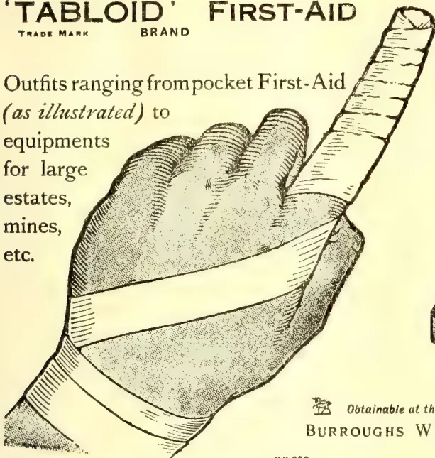
No. 710 'TABLOID' FIRST-AID
Ideal for individual use.
Can be constantly carried
in pocket, saddle-bag, etc.
In scarlet enamelled metal.
Price in London 2/0
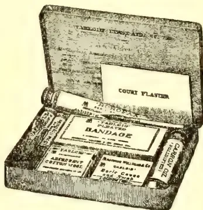
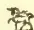
Obtainable at the principal pharmacies in all countries
BURROUGHS WELLCOME & CO., LONDON
xr 292
ALL RIGHTS RESERVED
[We learn that a well-known planter (still in Ceylon) was in 1893 in charge of 'Gangwarily' estate in Western Dolosbage and collected that year a great deal of ripe Para Rubber seed which was sold and sent to the Federated Malay States, chiefly Perak. So little was thought of the rubber product then that, about the same time, or a little later, some appreciable extent under Ceara was uprooted to make room for tea. Indeed, another Dolosbage planter, close by, was in the habit of collecting (tapping) rubber from trees on his tottam, until he had got a big "lump" put together and time after time, these samples were sent to Colombo, with no further acknowledgment than "Of no marketable value"—so little was known then of the source of wealth hidden in Para and Ceara Rubber trees! Some of the Gangwarily Para trees of 1893 (if to the fore) ought to be at least 22 or 23 years and giants and valuable now?—J. F.]
The damage done by white ants in India every year must run into tens of lakhs of rupees besides involving an appalling amount of trouble and inconvenience besides. This sort of thing has been going on, one may suppose, since India has been India; and, notwithstanding the gigantic loss occasioned, the white ant still holds the field against all its enemies—man included. No one has yet been able to evolve a specific for the white ant pest that is applicable under all con-
ditions, yet there must be a lot of money waiting for the inventor of such a specific. It is not merely in the destruction of wood that the white ant causes heavy loss, for its depredations are probably greater amongst field crops of a certain kind. As an example, it may be noted that the recent experiments of the Government of the Punjab to grow cassava (tapioca) as a famine crop were largely frustrated in almost every district by the ravages of white ants. In Australia very much the same trouble is experienced in farm operations, but the Australian white ant has a decided weakness for young fruit trees, a failing that has led to an important discovery, which should have its value in India. Mr. W. W. Froggatt, Government Entomologist, New South Wales, has found that German potash (kainit) 'will drive white ants out of any soil where it is used as a manure.' In the matter of fruit tree planting, he adds, a pound or so of kainit mixed with the soil when planting should be sufficient for each tree. In India chemical manure is practically never used for field crops; though, if it were, it is admitted that the yield would be increased in value far beyond the cost of the manure employed. The stock excuse is that the ryot is too poor to purchase manure; but if the manure to be employed will not only increase his crops but rid him of one of his worst enemies, would it not be an advantage to the country if the various Agricultural Departments, stepped in and helped the ryot to help himself?—Pioneer.
180The Supplement to the Tropical AgriculturistIMPORTANT NOTE BY MR. LEWTON BRAIN.
Some cases have recently been brought to the notice of the Department of Agriculture, F.M.S., Kuala Lumpur, in which Termes carbonarius has been found killing newly planted stumps by stripping them of their bark.
Up to the present this has only been noticed on old tapioca estates.
These termites were previously considered harmless and it is important to find out as soon as possible how far their ravages have been noticed elsewhere.
Termes carbonarius may be distinguished from other "White Ants" or Termites, as they are more correctly called, by the large size and sooty colouring of the soldiers.
The soldiers of this species are of two kinds; the larger over half-an-inch long including the mandibles or nippers, which can inflict an unpleasant bite; the smaller, about of an inch.
The mandibles are curved upwards to the tips and do not possess teeth between the base and the tip.
The queen is as large as that of Termes Malayanus, attaining a length of one-and-three-quarter inches. These termites are often found in the same nest as Termes sulphureus, the little sulphur yellow species, which lives in hard cased mounds sometimes five feet high. The queen of T. sulphureus average only one-and-a-quarter-inch in length.
Termes sulphureus and carbonarius are both described in books as harmless being fungus (or "mould") eaters. The fungus grows on cakes or masses of vegetable matter which are stored in special chambers in the nest.
Up to now analyses of these masses have failed to show any traces of rubber, but further samples are wanted for analysis with notes of the depth at which they are found, as those examined may only have been collected by Termes sulphureus.
If Termes carbonarius makes a separate nest, it has not yet been described.
The stumps are reported to be attacked at night and in the early morning after and during rainy weather,
This would be a dangerous pest to young estates, but for the fact that the nest of Termes sulphureus, which it inhabits, is easily found on well weeded estates and the inmates, both sulphureus and carbonarius, can be easily killed with the fumes of arsenic and sulphur applied through the nozzle of the Universal White Ant Exterminator.
Or carbon bisulphide may be poured on to a large piece of cotton wool placed in one of the upper chambers of the nest and the hole above stopped with clay. The vapour of carbon bisulphide being heavy and very poisonous, sinks along the passages, killing all insects with which it comes in contact.
A third improved method would be to find and destroy the queen and then poison the rest of the inmates of the nest.
Specimens of the various forms of this Termite, preserved in spirit, and the queen chamber in the nest, as well as information about the nesting habits, distribution and damage caused, will be most welcome if addressed to:—
The Director of Agriculture, F.M.S.,
Kuala Lumpur,
—Grenier's Rubber News, July 8. Selangor.
Mr. Grenenger, a tea and tobacco planter of Nyasaland, has favoured us with a call. He gave a very interesting account of the work that is being done in that distant and secluded part of the Empire. At present there are only two small gardens in bearing under tea, with acreage of under 600 acres some 200 acres of which is 5 year old. The last year's export to London amounted to 35 tons only. Eight other gardens are opening up, and the total acreage will ultimately be 50,000. It cannot be increased owing to the severely localised rainfall. Knowledge of the cultivation and manufacture of Tea, however, is very scanty and to get some idea of the methods employed here is Mr. Grenenger's aim in visiting Ceylon. They have, as yet, no pests among their tea, though thrips is in their coffee. Their main products, apart from mealies, are coffee and tobacco, of a very good kind, all well sold to London—1s. 6d. a lb. ruling price. The refuse is made into cigarettes locally.
Attention is invited to the following interesting and valuable article on farm-yard manure, and its preservation, issued by the Madras Agricultural Department as a leaflet. The information given will be found of particular value to farmers and planters in Ceylon, where, so far at least as indigenous cultivation is concerned, there is a great waste of valuable plant-food readily available. In Ceylon too, as in South India, the soils are thin, lacking a just proportion of organic matter, with the result that it is difficult to maintain properly the fertility of the soil, unless the lacking ingredient be supplied periodically in addition to the usual plant foods. Of the "bulky organic manures" necessary, farm yard manure is the first and best, as well as the most commonly available. Even better than farm yard manure is indigo refuse—seeth—which will become more commonly available in the near future, but which is not now to be had. Even then there will be nothing so generally available as farm yard manure for fattening our thin soils. Every farm, every village, will have abundance, if the cattle byres are properly managed, and the golden dirt preserved as it ought to be, in box and pit, instead of being wasted or, at most just heaped up, and half its value lost. How the best virtues of this manure can be preserved is shown clearly in the extract which we recommend to our readers.
and Magazine of the Ceylon Agricultural Society.—August, 1911.181The following is the leaflet referred to above which has just been issued by the Madras Agricultural Department:—
Most of the soils of South India are deficient in organic matter and if the fertility of these soils is to be properly maintained, it becomes necessary to supply this ingredient periodically in addition to the usual plant foods. The manures most suited for this purpose are those classed as "bulky organic manures" and of these Farm-yard manure stands pre-eminent and its use can be confidently recommended wherever it is available.
Farm-yard manure may be used in the fresh state, i.e., as voided by the cattle, but this course is not practicable when the land is under crops and, in addition, it is advisable to use manure which has been stored for some time as, by this storage, not only is a more uniform manure obtained, but the plant foods contained in the dung are brought into a state to be easily assimilated by the crop. During the period of storage many changes take place in the composition of the manure, brought about by bacteria and other low forms of vegetable life, which bring the manurial ingredients into a soluble form. These changes, although making the manure more valuable to the cultivator, are always accompanied by more or less loss of the manurial ingredients and consequently the system of storage which reduces these losses to a minimum is, from this point of view, the one to be adopted.
The main losses which occur during the storage of Farm-yard manure are due (1) to the liquid portion draining away and carrying with it the soluble constituents, (2) to loss of nitrogen in the form of easily vapourised substances and all systems of storage to be economically sound must be based upon principles which tend to counteract these losses without at the same time unduly interfering with the course of the fermentation of the manure.
Whatever the system finally adopted, it is of the utmost importance to prevent the urine draining away as this constituent of farmyard manure contains a very large proportion of manurial ingredients. This can be overcome to a large extent by the use of a suitable litter material which will absorb the urine and so prevent its loss by drainage. The best litter and one which is generally available is the waste fodder of the animals, but leaves, weeds and the ordinary waste of a farm answer well and if these be not available recourse may be had to ordinary soil. The necessity for using ample and suitable litter being apparent for all systems, the different methods of storage may now be briefly reviewed.
The chief methods adopted for the storage of manure may be designated as the Box, Pit and Heap systems and this classification covers in a broad sense all the methods generally adopted. In the Box system, the animals are placed in a loose box, with a thick bed of litter to which the waste fodder is added daily. The dung of the animals is trampled into and intimately mixed with the litter, which also absorbs the urine. In course of time the whole is trampled into a compact mass, and by thus excluding excess of air, the fermentation is kept within bounds. In the Pit system the animals are placed on a hard floor and the dung, urine and waste litter is daily thrown it
into a pit dug in the soil of the yard and made as water-tight as possible. Dry earth is sometimes thrown on at intervals in order to absorb excess of liquid and often in very dry weather water is added so as to keep the mass at the requisite degree of moisture. In the Heap system the animals stand on a hard floor and the dung and litter are daily collected and thrown on a heap in the open. Sometimes in this case earth is also added.
These three systems were under trial on the Government Farm at Bellary for many years and the average results obtained may be taken with confidence. These are given in extenso in the following table:—
| System. | Weight of manure produced by a pair of cattle per annum. | Lb. of nitrogen contained. | Lb. of potash contained. | Lb. of phosphoric acid contained. | Approximate manurial value in rupees, | Lb. of organic matter present. |
|---|---|---|---|---|---|---|
| Box | 10,40 | 90.7 | 155.3 | 56.2 | 69.4 | 5,020 |
| Pit | 9,830 | 55.5 | 70.0 | 45.3 | 37.0 | 1,765 |
| Heap | 8,00 | 60.0 | 59.8 | 44.5 | 46.0 | 2,169 |
This table shows clearly that, from the same number of cattle, for the same length of time, and under the same conditions, the manure given by the Box system is much greater in amount and contains a greater proportion of all the manurial ingredients, and the value of the manure produced far exceeds that of the others. Compared with the Pit system, the Heap system has given somewhat better results, but this only occurs when the heap is carefully protected from heavy rains and from strong winds. If these precautions are not taken, then the losses caused by the rain washing out the soluble ingredients and the wind removing solid particles can become very serious and considerable loss to the cultivator ensue. Further if the heap is allowed to become too dry, the heat produced by the decomposition may become so great as to cause the destruction of part of the manure.
In the case of the Pit system, the great source of loss is due to the liquid portion of the manure draining away and the use of too small amount of litter. These defects can readily be remedied and when this is done, the Pit system compares very favourably with the Heap method, especially under the usual careless local customs. Wherever the Box system cannot be carried out, choice must be made between the Heap and the Pit systems and this choice must be mainly governed by local conditions.—M. Mail, Aug. 8.
BY HERBERT WEIGHT.
Great Britain leads easily in point of acreage under rubber in its own possessions, and is closely followed by the Dutch East Indies in area, but not in age. The Dutch planters did not take up the cultivation of Hevea on a large scale until it had been proved a success on adjacent British territory; and, in fact, much of the area under Hevea in Java, Sumatra, and Borneo is owned by companies re-
182The Supplement to the Tropical Agriculturistgistered in England and Scotland. Germany has planted Hevea in Samoa and New Guinea, and Manihot and Funtumia in Africa. During recent times many of the producing or well-advanced estates in German colonies have been taken over by London companies. This is only one of the ways in which the new plantation industry has altered international conditions in the tropics. Great Britain seems likely to increase its control over supplies of rubber in the East, for while it is true that the United States are credited with conspicuous activity today in Sumatra, this country must continue to lead, since it is already in possession, in Ceylon, Malaya, and India alone, of more than half the world's total planted acreage, a good part of which is already producing.
The fact that Ceylon alone produced 1,600 tons of plantation rubber last year, as against 75 tons in 1905, and that the East—mainly Malaya and Ceylon—turned out 1,800, 3,850, and 8,230 tons respectively in the years 1908, 1909, and 1910, point to the likelihood of conspicuous developments in the next three or four years. There are possibilities in the raw rubber industry and the rubber manufacturing trade which very few seem to realise. I have traversed many parts of the East and have spent several years compiling statistics relating to the producing capacity of Hevea trees of various ages in the tropics. I believe that in the most favourable parts of Malaya a yield of one ton per five acres will ultimately be annually obtained; in less favoured parts of Java and Ceylon I estimate the yield at one ton per ten acres; for reasonably good estates in Sumatra and South India I anticipate the yield to be between the two estimates here given. In other words, deducting a certain percentage from the world's planted acreage, I estimate that the balance in full bearing will each yield far more than is now annually produced from wild sources. The island of Ceylon alone should, unless some unforeseen disaster overtake it, annually yield from its concentrated 200,000 acres more rubber than is or has ever been yearly obtained from the whole continent of Africa. Furthermore, Malaya and Ceylon alone should within five or six years annually produce more rubber than the whole of Brazil and Central America gave us last year.
It should be clear from this that the day is near at hand when the balance of power in the crude rubber market will be considerably changed. Brazil has hitherto had the monopoly and the officials there know how the country has prospered from the revenue from rubber alone. Africa has, unlike Brazil, been largely dependent upon vines as sources of rubber, and the lessened production noticeable, especially during the past few years, is regarded as hopeless. Both Brazil and Africa alike realise that the shadow of huge plantation supplies is upon them, and that sooner or later the abundance of rubber will have its effect on price. Inferior-grade Africans, which make up a good part of that continent's supply, must suffer first; then
the better grades from bushes and trees other than Hevea, and finally must come a struggle between rubber from the wild and from the cultivated forms of Hevea. The supply, in the event of low prices, will be most seriously curtailed from Africa; it will also be evident in tropical America, but not in the same degree. The Brazilian authorities are giving all possible aid and encouragement to those concerned with the collection of rubber in that part of the world, and their country can always be relied upon to give a fair yield. Complete extinction of the wild rubber crops from the forests of Africa or America there cannot be, in virtue of the existence of a population in both areas which must find some means of employment. Yet a curtailment in supplies from wild areas is a certainty, when Eastern plantation crops shall be coming over at the rate of 3,000 tons per month.
Hitherto London has not ranked as of much importance as a centre for rubber, Liverpool having always held the first position. Now a change is already evident. Most of the plantation companies are owned by companies whose interests more or less compel them to sell their produce in Mincing-lane. This business will continue to grow as the yielding capacity of estates increases, while that of Liverpool will, in consequence of lower supplies from Africa and Brazil, tend to lessen. Most London brokers, when asked what prospects they have of dealing monthly with 3,000 tons of plantation rubber, seem disturbed. No time should be lost in preparing the way for the disposal of such quantities, for they will be upon us much earlier than most people imagine.—Home paper.
This tree requires a damp marshy soil for its best development, and frequently attains a diameter of more than 2 ft. It is not marketable above that size, however, while the minimum is 8 and 10 inches. It flourishes and is abundant along the lowlands of the coast. The wood in its natural state is exceedingly porous and light, but damp and soggy. To prepare it for commercial use it is put through an evaporating process to extract the moisture, thereby greatly reducing the weight, so that it is not only lighter than ordinary cork, but a given weight is capable of being compressed into much smaller bulk. It is used pulverised and in slabs. Lately the commercial possibilities of the wood have become known, as indicated by advertisements in trade journals offering for sale life-preserving equipments made from guano-palm. Planters in Honduras are awakening to the possibilities of the tree, and one banana grower, who annually clears a large acreage for banana cultivation, is about to send a representative to close a contract with New York importers for a cargo of 150,000 ft. of guano-palm. A recent enquiry from the same market calls for 1,000,000 ft. The greatest drawback to the rapid execution of orders is the difficulty of transportation.
—Royal Society of Arts Journal for July.
and Magazine of the Ceylon Agricultural Society.—August, 1911.
183
In connection with the Exhibition, a conference was held. Sir Henry Blake presided, and among those present, were: Professor Wildeman, Dr. Paul Alexander (Dr. F Frau, Dr. Ernst Stern, Dr. Linding Sachs, Dr. Werner Esch, Dr. J. Huber, Mr. H. Hamel Smith, and Mr. A. Staines Manders (the manager of the Exhibition.)
Sir HENRY BLAKE—in his opening address—said:—In 1908 it was my pleasant duty, on behalf of myself and the committee, to welcome the foreign delegates and growers to our shores—then strangers; but today, with both hands extended, I welcome old friends, whose presence here today is an assurance in itself that the result of the Exhibition of 1908 has been valuable to every branch of the rubber industry. Of this, if your presence here today were not sufficient proof, there is ample proof in the exhibits shown under our roof from every part—I believe from every rubber-growing country in the world. From abroad we have the machine maker, who has sent his improved machinery, and the chemist, who has illustrated the results of his investigations in the analysis of rubber, and the manufacturer has shown us the improvement in and expansion of new uses for the raw product. When we last met I think the area under rubber in the Middle East alone was about 450,000 acres. Today that acreage has been more than doubled; and in South America and Central America, East and West Africa, the increase in the acreage has probably been in about the same proportion. However, when considering this question of the large increase of acreage, in respect of the possible output of rubber in the near future, I think we must make considerable deductions for plantations possibly established under unfavourable conditions of soil or climate or situation, as experience will show. But I think, on the whole, we must remember that the Para trees planted since 1908 cannot begin to show the results of their planting before 1913 at the earliest, and we must wait a couple of years longer before we know the result of that large investment in new plantations. In the meantime the continued experiments, and the experience of last three years, cannot but be beneficial to these new plantations.
I may say generally that in the Near East the planter has rather affected—almost exclusively affected—the Hevea Brasiliensis, or the Para tree; but, if my information be correct, the sometimes despised Ceara tree is about to come into favour. I have heard on reliable authority, from a gentleman in the Exhibition, of at least one Ceara plantation which has begun to yield its harvest two years after planting. Of course, that would make a very profound difference in the consideration of planting in certain countries where the Hevea has not been particularly successful up to the present. These matters as regards Ceara and Hevea are really matters for the experimenter—the bronzed experimenter in the field—who faces the discomforts and dis-
eases incidental to tropical work in the field and jungle. But, as we know, he only starts the quarry. When we have the latex it goes to the chemist, who tortures it through various retorts, until he has obtained an answer to his questions as to its likes and dislikes, its attraction and repulsion, and as to the reasons of its resilience and strength. We know that some of them—have thrown aside the latex, flung it aside, and, inspired by a wild fury of investigation, have dragged the very vitals from the secrets of Nature, and have presented this Exhibition with a row of bottles and a small sheet of synthetic rubber. Well, this is rather startling at first; but, after all, when we consider that if one of these scientists produced a pint of milk and a pat of butter from a bundle of hay we may be assured of one thing, that the price of hay would go up. We may expect the same as regards the materials of which synthetic rubber is made, so that I do not think it is so disquieting in the end. But one thing it does do—it points to the necessity for strict economy on all our plantations, and for a reduction in the cost of production. Of course, in regard to the Ceara trees there have been great improvements in the tapping—indeed, there have been improvements in the tapping of both, but specially in the case of the Ceara; and, of course, you know the treatment of the tapping of Ceara is quite a different problem from that of Hevea. We do not know up to the present what the effect of that will be.
The President concluded by congratulating those present on the excellence of the Exhibition. These preliminary proceedings were then brought to a close because of the visit of Her Highness Princess Marie Louise of Schleswig-Holstein to the Exhibition. The Princess was escorted around the Exhibition by Sir Henry Blake, and expressed herself highly pleased with her visit. She was accompanied by Lady Blake and Mrs. Hawkes, lady-in-waiting, and was presented with a bouquet by Miss Fulton, the secretary, on entering the Exhibition, and with another, at the Belgian section, by Miss Pollet, daughter of the Consul-General for Belgium.
During the afternoon, Mr. R. Fyffe, of the Botanical and Forestry Department at Entebbe, Uganda, read a paper entitled
and in the course of his remarks said that the first year in which rubber figured as an article of export from Uganda was in 1902, and during that year 68,000 lb. were exported. A study of the composition of the forests of Uganda showed that at least three distinct types existed, in only one of these was Funtumia elastica found. Following the discovery of Funtumia elastica, steps were taken to preserve the trees, and the forests containing it, which were large, were being leased only to responsible companies, who had to observe regulations brought out by the Government for the purpose of conservation. At present the most approved method of tapping was the “herringbone” system. Unlike the Para rubber tree, Funtumia elastica had no wound response and gave the best results, from three to four tapings in a year. The trees could be tapped
184The Supplement to the Tropical Agriculturistfrom the base to a height of 20 ft. to 30 ft. at one tapping. It is not advisable to tap beyond 30 ft. at one tapping. Trees which were heavily tapped twigs died. Wounds made on the Funtumia tree did not heal up so quickly as did the wounds inflicted on the Para and Ceara rubber trees by tapping. This might be accounted for by the scanty crown of foliage which the former possessed, when compared with the latter species.
On the whole, the yields obtained were very disappointing, experiments proving the yield of mature trees to be about 5 oz. to 6 oz. of dry rubber per year, tapped to a height of 30 ft. The amount of caoutchouc in Funtumia latex was about 0.33 per cent. Funtumia latex coagulated readily by boiling; but the method generally adopted was coagulation by chemicals and hot water in long wooden troughs. Funtumia elastica was an exceedingly slow grower, and he doubted if it was of any importance to Uganda from a plantation point of view. The growth of plants in the forest was very slow, and although they made much more progress in the open, their rate of development was disappointing. Planting on a considerable scale was commenced some three years ago, and the area at present under rubber cultivation was about 3,200 acres. Of this approximately 2,200 were under Para, 900 under Ceara and 100 were planted with Funtumia and Castilloa. An estate could be worked so that coffee would form an article of export before the rubber reached a tapable size. Labour was locally abundant, and as transport facilities were improved it would be more plentiful. The Baganda were an easily-taught race, and there would be no difficulty in teaching them to become first-class labourers and tappers. Although Ceara rubber had been grown in the country for ten years, it was only within the last year that it had been recognised as a valuable rubber-yielding tree. The method of tapping adopted was that of pricking, after removing the dry outer bark, and smearing the tree with a coagulant. The "half-herring-bone" system was experimented with, and the results obtained were highly gratifying. The yield of Ceara trees varied remarkably in individual trees. The tree particularly lent itself to speedy results from seed selection, owing to the comparatively early age at which its latex-yielding capacity could be tested. He considered that there was a great feature for Para and Ceara rubber. Para he recommended as a permanent crop, while for a quick return he preferred Ceara.
The conference was resumed on Tuesday. Dr. Torrey presided.
The first paper read was by Dr. Tromp de Haas, the subject being
"TAPPING EXPERIMENTS ON PARA TREES."
In the course of his remarks Dr. Haas described some of the experiments undertaken for the purpose of deciding which was the best method of tapping, daily or every other day. The conclusions he came to were that a larger quantity of rubber was collected by every-day tapping, but experiments would have to be continued before they could get anything like reliable results.
In the course of discussion, Mr. Petch said that from experiments made by Mr. Wright in 1906 and by Messrs Bamber and Lock, which were carried on for two years, more rubber was obtained from every day tapping, but it did not follow that every-day tapping was the best. By tapping every other day more rubber was obtained per day than if they tapped every day, but they did not get twice as much. Tapping on the four years system, they might complete the whole of their bark in two years, and then, presumably, they would have to give the trees two years rest. With alternate-day tapping they would be able to tap during the whole of the four years, and therefore at the end of that time they would take more rubber by alternate-day tapping. It all depended on how long it took to complete one cycle of tapping round the tree.
Mr. MITCHELL—read a paper on
SOME DISEASES OF HEVEA BRASILIENSIS,
in which he stated that the most important disease was fomes. Very few estates in Malaya were free from it, and many had suffered very much. It occurred mostly in trees from one to four years old. It was also to be found in nurseries and in old trees. The physical nature of the soil did not affect it, though loose land allowed the fungus to grow there.
Mr. GUSTAVE VAN DEN KERKHOVE—contributed a paper on
"THE OFFICIAL MEASURES TAKEN: ADULTERATION OF THE INDIGENOUS RUBBERS,"
in which he stated that about 1896 the adulteration of some kinds of Congo rubber, especially the red and black Kasai, had taken dangerous proportions. Out of ten twists three were adulterated and contained a certain quantity of palm kernels and stones. It was absolutely necessary that this evil should be stopped, and the most severe instructions were sent to the producing places, as well as in Europe and America, with the result that the twists were now examined with great care. These wise measures soon showed good results. The same state of things existed in French Guinea in 1897. Competition between the different foreign firms, especially in Conakry, had reached such a degree that the most inferior gums found a buyer at tremendous prices. At the beginning of the year 1901 the French Government decided to prevent the export of the lower qualities of rubber. The interdiction was carefully observed, and no rubber left for Europe without having been submitted to a careful examination, and, considering the tremendous amount of the rubber exports in French Guinea, it was easy to imagine the enormous amount of work required. One kilogramme of rubber was often composed of about ten balls, which all had to be handled separately, so that the authorities had to examine millions of pieces one by one. One of the most dreadful frauds consisted in mixing with the latex mealy or even gummy substances having the appearance of rubber, and without the least commercial value. A simple and practical manner of discovering the said fraud, without recurring to sectioning the balls, consisted in dropping the ball on to the
and Magazine of the Ceylon Agricultural Society.—August, 1911. 185
ground; if the same did not rebound well there was evidently a fraud by means of mealy or gummy products without any value. French and Belgian Congo were the African colonies which were the richest as to rubber species, and it was also in those countries that the greatest variety was encountered in the processes of gathering and coagulating the latex.
Mr. H. A. WICKHAM—read a paper on "The Para Rubber Trees in the East," in which he dealt with the danger of too close planting, as tending to arrest growth, impair vitality and set up a struggle for existence which constituted a serious menace for the future. Clean weeding he described as "clean scraping," which exposed the soil to the sun and rain, the latter being carried away. The root system consequently suffered from exposure. Systematised mulching was better than clean weeding. As regarded tapping, he advocated "incision" as against "excision. It was not at all necessary to pare away growing tissue.
In the course of discussion Mr. BAMBER—pointed out that, as regarded close planting, they had to look at it from a financial point of view. He was in favour of retaining the soil around the tree.
Mr. Fox—characterised clean weeding as a "fetish," and Mr. Wycherley was in favour of close planting, as he did not think it had the bad effects which were attributed to it.
Mr. WICKHAM—in his reply—emphasised his previous points.
Dr. E. DE WILDEMAN—read a paper, the subject being
In the course of his address Dr. Wilderman said that from the researches of various botanical explorers we knew that numerous rubber-bearing vines or creepers existed in tropical Africa, which vines have for some years supplied almost all the rubber for the African trade. Their distribution over the African continent was very wide. Broadly speaking, the rubber vine area extended from Senegambia and the Upper Nile to the south of Angola, of Rhodesia, and Mozambique, even to the Cape district. Notwithstanding many favourable opinions, the various species of vines, although undoubtedly producers, had neither been cultivated nor worked as they should be. Nearly all the African rubber brought over to Europe, especially from the Congo, had come from wild-growing plants, and very often the native, through an intensive and altogether irrational harvesting, had caused a reduction in the number of producing plants, if not their disappearance. At first cultivation consisted of seeding in nurseries and setting out the plants afterwards in the woods, or else direct seeding in the woods or in the forest roads. It was soon found that, while vines could be grown from the seed, they attained in the forest insignificant dimensions. To obtain plants as vigorous as the vines worked in the forest by the native, under the conditions there existing, one would have had to wait a considerable number of years.
The result of this was naturally unfavourable to the progress in the cultivation of vines, their great fault in the eyes of the Government being the slowness of their growth. But one of the conditions of the experiment had not been thought of—the biology of the plant had been altogether overlooked. To allow a plant to develop normally one must give it not only the necessary soluble mineral elements through the soil, it must also absorb through its leaves the carbon from the carbonic anhydride contained in the air. What did a plant require to effect this decomposition? Light and chlorophyll. By planting vines under the shade of trees they were placed in very unfavourable conditions for accomplishing this assimilation, because they were deprived of sunlight. The vines now being exploited in the tropical forests had developed very well, because they grew up with the forest, exposing their leaves, flowers, and fruits to the sun together with the trees. Everybody now agreed that the methods of gathering latex used by the natives of Africa were more or less defective. One seldom saw a case where the native extracted all the rubber contained in the vine. The first method consisted in pulling the vines off their props, to get at them easily. The native then very often spreads the stems more or less parallel to the ground, keeping them a certain distance from the soil by means of supports. Afterwards he made incisions in the stems at regular distances, and gathered up the latex which flowed out.
It was asserted that the greater number, if not all, the plants thus treated died in the underbrush, not only because of the unfavourable conditions for vegetation, but also because the wounds caused in the pulling down and tapping would become infected with plant diseases, against which not the slightest precaution had been taken. The reply might be made that the plant would throw out new shoots. That was possible, but they would be few in number, because the vine would first try to heal its wounds and to fight the microbes that invaded them, and would nearly always exhaust itself in futile efforts. Another method used by the natives consisted in tapping the vines without pulling them down. Cutting constituted the third method, which was a modification of the first one, and was often followed up by threshing. The native pulled the vine off its prop, then instead of tapping it it was cut in pieces, and he gathered the latex which flowed from the ends. This method at first sight looked destructive, but when carefully examined proved to be superior to all others. Indeed, this was the method of the future, but some modifications had to be made to certain details of its application. What now were the objections that could be raised against this method? Only one of importance: The latex did not all flow out of the pieces of the vine; therefore a considerable quantity of the rubber was lost. It had also been objected that the native killed the vine by this barbarous process.
At the session's opening on Wednesday there was a continuance of the discussion on Mr. Fyffe's paper on
24
186The Supplement to the Tropical AgriculturistRUBBER PLANTATION IN UGANDA.Dr. E. BLACK—said there were two important points arising from Mr. Fyffe's paper—one of which was the distance apart at which trees should be grown, and the other, which was much less known, was the planting of trees producing Manicoba rubber, to only one of which—Ceara—Mr. Fyffe had alluded. During five years he had been travelling in all the large rubber-producing countries, and had only just returned from Brazil, and, consequently, he had seen more of rubber-growing probably than any other person. As to the distance at which trees should be planted, two views were taken on the previous day. Mr. Wickham contended that there should be only 40 trees to the acre and Mr. Wycherley contended that there might be 240. The point could be readily disposed of. The man who planted any other kind of tree as close together in proportion to what he hoped to get as the rubber planter did would be quickly classed as a lunatic. The experience of the world since the days of Noah with regard to trees from which fruit was to be obtained was that the trees must be planted a definite distance apart, in order to prevent trouble arising from the roots interlocking. The reason why this trouble had not arisen yet was because of the slow growth of the trees; but it was coming, because rubber-growers were setting at defiance the experience of the growers of other trees in the world, and it was impossible that could go on. The second point was of great importance. He had photographs of Ceara trees in Brazil showing fine growth, but the latex given was practically nil. One huge tree, eight years old, gave only 20 grammes of dry rubber—absolutely disastrous. This was due to the trees being taken from its natural surroundings. The result was they got a good garden, but little rubber.
Dr. CHRISTIE—said he was one of the lunatics who advocated close planting as regarded Funtumia, but he did not advocate it for Hevea. It was necessary to grow Funtumia closely. It could not be grown unless planted closely, because otherwise they would not get a tapping stem. The tree had the peculiarity of pruning itself; but it could not bring this peculiarity into play unless it was planted closely. Uganda had suffered from a plethora of knowledge of the habits of trees in the forest, without any knowledge of the possibilities of plantation trees. In West Africa thousands of acres were planted with Funtumia without any knowledge of the growth of the tree in the forest. If they studied the growth of the tree in the forest, they would see that it must be planted closely. It was a tree entirely different in its habits to Hevea; it was a deep-rooted tree; it had not big surface roots, and was a tall pole tree with a bold head. It was only possible to get the necessary tall stem by coppicing. The reason why they must have a tall pole was because they could not tap it to the bottom, as they did Hevea. They had to tap to a considerable height, because they could only tap the tree three times in the year; the structure of the bark of the two trees was entirely different, and the trees had to be tapped in a different way. Hevea had a network of lactiferous tissue,
whereas in Funtumia they had an upright, parallel system of ducts, which had no connection with each other; and if they attempted to tap the Funtumia as they would the Hevea there would be a "die-back" of the part, followed by the death of the tree. He denied Mr. Fyffe's statement that the Funtumia was a slow grower; it was only a slow grower in the forest. It was the second most rapid grower, Ceara being the first. There was no doubt that Funtumia had suffered from the wrong kind of tapping being practised. He had come to the conclusion that it should be tapped by the incision method, and not the excision. If they took out the bark the tree would die back. It must be tapped by making clean incisions.
Mr. FYFFE—adhered to his statement that Funtumia was a slow grower in the forests of Uganda, where alone he was acquainted with it. He agreed with Dr. Christie as to tapping, and believed that the best thing to use was a pricker.
Mr. PERCH—said that in Ceylon they could grow Ceara like a weed, but they could not tap it, though there were some estates getting good results from Ceara. They tapped their trees by all kinds of systems, but they did not mind if the tree died as the result, because they had others coming along and plenty of land. From his own experiments he had not been able to get a tapping system in Ceylon for Ceara without killing the tree. The rubber was in the tree undoubtedly. Up to the present the Ceylon botanical department had not seen sufficient evidence which would warrant them in recommending any of the new manihots to the planter in Ceylon.
Mr. WILHELM PAHL, of Dortmund, read a paper on
"THE DISCOVERY OF THE PARA REAGENT."Hesaid:—The victory of cultivated Hevea rubber over natural Para rubber has at last been secured! The mystery of Para rubber is resolved. The really significant agent in Para coagulation is brought to light, and we are at last in a position to replace the primitive Para coagulation methods by an ideal factory method. Chemistry has led on to this victory, torn asunder the veil, and opened up a wealth of possibilities to Hevea planters and to the whole rubber world as well. The reagent that has made all this possible is carbonic acid, and the advantage possessed by planted Hevea rubber over Para will be clear to anyone who studies the two methods and balances their advantages against each other. The new product combines all the good points of plantation Hevea and Brazilian Para, and it shall accordingly be called Hevea Para. For many years chemists have striven to find what was the particular agent to which the marvellous results obtained in Para coagulation (by the smoking process) were due. Scientists from the greatest of the civilised nations have bent themselves to this problem. In 1910 no less persons than Drs. Frank and Markwald; of the Dr. Rob. Henriquez Nachfolger Laboratory, busied themselves with this question. With infinite pains they obtained Urikuri palm nuts, such as are used in the forests for smoking Para, and subjected them to a rigorous chemical examination. They found many things, but, unfortunately, they did not discover the right one.
and Magazine of the Ceylon Agricultural Society.—August, 1911.187Among the valuable characteristics of this product (designated Hevea Para) are the following:—The carbonic acid coagulates the latex instantly. The nerve, strength and elasticity are not only equal to but superior to what is met with in case of Para. The metallic salts present are carbonates, as a result of the carbonic acid treatment. The rubber is alkaline, for carbonic acid is not destroyed by alkali, but can exist in contact with it, vide the well-known alkaline carbonic acid charged mineral waters. The solutions of this rubber have as high viscosity as those of Para, and the product obtained on vulcanisation is the same. Carbonic acid coagulation is the cleanest possible method, and gives the purest and lightest coloured product possible. On the other hand, Para rubber is coloured by the smoking process. Hevea Para never moulds, for the carbonic acid removes the plant-albuminoids which form a soil for bacterial vegetation. Hevea Para oxidises no more readily than does Brazilian Para. Rubber coagulated by acetic acid soon acquires a bluish surface colour. This is due to the decomposition of residual albuminoids with formation of phenols, which give the rubber its bluish colour, and make it second quality. In the new process we have for the first time a latex coagulated by a gas, and not by a corrosive fluid, as in case of the strong acids. Briefly, we have here the only re-agent which can give plantation Hevea rubber the same fine quality as Brazilian Para. Another advantage of carbonic acid is that it requires no fine manipulation. Its use can be entrusted to the most ignorant hands.
Mr PETCH—denied that it was possible for any coagulum to prevent mould.
The second longest discussion of the day was raised by this paper which was very severely handled by several of the English experts. Professor Carmody said they were always ready to hear of any new coagulum, but he did not think the lecturer had made out his case altogether satisfactorily.—Dr. Stevens traversed the paper from end to end, pointing out that most of the statements were contentious statements. At the same time he thought it might be worth while to make a trial with carbonic acid. The arguments used had not inspired much confidence in the theory.—Dr. Huber objected to the title "Hevea-Para," as Para they understood to be rubber from Hevea.
The afternoon was devoted to a joint meeting of planters, manufacturers, and chemists, and under the chairmanship of Dr. Torrey they discussed the question whether it was not possible for the planter to devise certain tests by which they could ensure
The Chairman, in opening the discussion, urged that this was a matter of special importance to the planter. Immediately two planters arose and said it was impossible for planters to undertake tests on the field, and that they, on their part, wanted to know what it was the manufacturers required and then they would endeavour to supply it.
Dr. HUBER—said that though not a planter by profession, he had planted rubber trees in the
experimental gardens at Para, and he had done a good deal in the way of testing samples of rubber. He thought it would be possible for the planter to get good relative results which would be sufficient for the purpose, and he indicated several ways in which it could be done.
Mr J. RYAN—a planter—thought these suggested methods would be impracticable.—Mr POTTS said the problem for the planter was not so much to determine quality as to make from the beginning careful tests of the latex, in order to get absolutely uniform results.—The CHAIRMAN agreed with this, and said that what was wanted was not for the planter to distinguish qualities, but to ensure that the quality of a given kind should be permanent and reliable in subsequent supplies.—Mr FRANCIS MARTIN, as a manufacturing chemist, thought it possible something could be done.
Professor CALMODY—of Trinidad—said that as regarded Castilloa they got uniform results in the preparation of rubber by a centrifugal machine invented by Mr Smith, of Tobago, and an excellent quality was turned out.
Mr HARVEY—of South Mexico—spoke of the juice of a plant found there which was used in coagulation. He thought chemists might investigate whether a preparation of this could not be used throughout the world. At present their preparations would only keep a very short time. He also urged that it was not so much a question for the planter as for the manufacturer.—Dr. STEVENS, on the other hand, thought that simple tests could be used by the planter.—Mr GORRINGE said it would be no good the planters making a test if the brokers in London sold it not by that test, but by feel and sight.
The CHAIRMAN—in concluding the conference on the subject—urged the planters to see what could be done in order to procure that the rubber they supplied should be uniform in quality.
To the exhibit of the Imperial Institute representing the rubber resources of the Empire the British South Africa Company contributes a collection of specimens of the rubber-yielding plants of Northern Rhodesia. These include specimens of Landolphia vines, which are reported to grow luxuriantly in many districts and to cover large areas of the country, and also a number of specimens of various roots from the bark of which root-rubber is prepared. Additional interest is lent to the exhibit by specimens of dried and mounted leaves and flowers of the plants, further illustrated by coloured drawings.
A very interesting and practical demonstration of the process of tapping rubber trees was given on Saturday. The tapping of the trees took place at the joint stand of the Soconusco Rubber Plantations, Limited, and La Zacualpa Plantations Company, Limited, situated in King George's Hall, where specimens of eight live Castilloa lactiflua rubber trees from six to ten years of age from the estates were exhibited. The foliage of the trees had been cut away, and also the whole of the roots, with the exception of about 1 ft. measured from the bottom of the trunks. In spite of
188The Supplement to the Tropical Agriculturistthe trees having travelled about 800 miles by rail and from 3,000 to 4,000 miles on the deck of a steamship, they arrived in excellent condition; for no sooner had the tapping knife made the necessary V-shaped incisions than the latex flowed freely. The latex so obtained was afterwards coagulated in a centrifugal machine.—H. & C. Mail, July 7.
At the conference, which was continued on 6th inst., at the Rubber Exhibition, under the presidency of Dr. Torrey, the first paper read was a highly technical essay by Professor SCHIDROWITZ on
"VISCOSITY OF RUBBER SOLUTIONS."
He said he had studied for two years the effect of various factors on viscosity, the effect of heating in solution, which did not always cause disaggregation. On the contrary, in the case of old forest tree rubber the aggregation appeared to increase. In the case of young or immature trees also it appeared to decrease. Then he studied the effect of deresination, and here again it was found that in the case of old forest trees the result was positive—that was, that the viscosity increased. Then he studied the effect of the method of coagulation on a number of samples, and found, as he expected, that he got very high variations by the viscosity method.
A long discussion followed, the most popular point raised being whether these tests would be useful to the planter on the estate. Professor Schidrowitz said that where the planter was in a position to carry out viscosity tests on scientific lines, it might be useful to him in controlling the quality of his rubber. But he wished it clearly to be understood that he did not prefer the viscosity method to the vulcanisation method. The vulcanisation method was preferable where it could be applied, but the viscosity method was useful where it could not.
Dr. HUBER then read a paper on the
RUBBER TREES AND WILD RUBBER RESERVES OF THE AMAZON.
He admitted that interest in the subject was rather discounted by the greater popularity of middle red rubber; but he thought it would interest people to know something about the region which yielded the best kind of wild rubber. He went into the history of wild rubber at length, and dealt with the variations of the various kinds of rubber which had been found in the different parts of the country. Hevea contained some well-defined groups of species which, though in the first line of practical value, were characterised by botanical sub-divisions. By far the greater part of para rubber came from Hevea Brasiliensis, which was not only the best, but the most unknown variety. It grew throughout the whole Amazonian basin, principally in its southern part, where it occupied not only the low alluvial lands of most of the affluents of the Amazon, but some of the higher lands, principally between the River Tapajoz and Madeira, and also between the higher course of this river and the upper River Purus and its tributaries, and the Acre and others. It was, however, possible that the trees of the higher land were of a very near but distinct kind of Hevea. It was evident, however, that
the seeds obtained by Mr Wickham, who went to the East, were of the true Hevea Brasiliensis. There were particular kinds of Hevea on the Rio Negro whose latex was said to produce good rubber; but on the whole, little was known of the rubber yield of these trees. Of the 12 species of sapium, only one was recognised as producing good rubber. These trees were of rapid growth and the latex was often mixed with Hevea.
The exploitation, however, of these trees was not popular, owing to tapping difficulties. The production of a more suitable tapping knife might lead to its becoming more popular. Very important as a future reserve of wild rubber was the Caoutchouc tree, which was the large virgin tree of the forest, and was rich in caoutchouc. There was an enormous reserve here. The export of caoutchouc had increased from 349 tons to 8,000 tons. So many trees were there that the natives did not trouble to tap the trees in the ordinary way, but cut down the tree bodily. He advocated the making by the Government of "forest reserves" in order to protect these important trees from extinction in this way, because there was undoubtedly a large and valuable reserve here.
Mr. CLAYTON BEADLE, in the next paper, called attention to a new method of
TESTING RUBBER BY USING THE ENERGY OF A FALLING PENDULUM
and noting the distance of the height to which the pendulum rises before and after breaking the specimen, and utilising that in recording the actual amount of work done in breaking the specimen. They did not at present know the value of this. In the Schwartz machine many thousands of determinations had to be made of mixtures of known composition before the result could be properly interpreted. In this case the machine would have to be used on mixtures of known composition, and made under known conditions before they knew the value to be placed on the results and how they were to interpret the figures.
In the afternoon a meeting was held of the India Rubber Testing Committee, Dr. A. H. BERKHOUT, who presided, said that at the meeting held three years ago he was asked to take the initiative in forming this company. The committee had been formed, and had sections in various countries, at the head being Mr Herbert Wright, in London; Professor Dr. Warburg, Berlin; M Pierre Breuil, Paris; Mr C Pearson, New York; Dr. Herbert, Vienna; Mr Kelway Bamber, Ceylon; and M J E Fol, Delft. First, they had to conquer the difficulty of establishing standardising methods. Of course, it was necessary they should understand each other in regard to the physical and chemical proceedings of testing indiarubber. It was too bad that a man should not know the signification of his own figures, and not be able to understand someone else's. What they wanted was a uniform standard for testing rubber. This standard should be beneficial to rubber manufacturing and the cultivation of rubber.
The secretaries of the various national branches then reported on the steps taken in their respective countries to start the work of the association.
and Magazine of the Ceylon Agricultural Society.—August, 1911.
It was announced that Professor Huber had undertaken to form a branch in Brazil. He addressed the meeting, and urged that the Governments of all countries should take steps to see that rubber sent out under a well-known name was really rubber of that kind, and not a mixture or a substitute. Governments should see that it was properly stated where the rubber came from and from what tree. He knew of cases where rubber was supplied under a well-known name which was of a different make and from a different tree. He also advocated the forming of museums of standard qualities and kinds of rubber.
The conference was resumed on Friday. Dr. Torrey presided.
Dr. W. CARNEGIE BROWN, M.D., M.R.C.P., read a paper on
HYGIENIC CONDITIONS AND THE MAINTENANCE OF HEALTH ON RUBBER PLANTATIONS."
In the course of his address he said that the development of the industry had led to a huge demand for labour, and the influx of coolies had naturally led to remarkable facilities for the spread of disease. A large number of Europeans had gone to make their homes in the tropics. Apart from the fact that the indigenous populations were deeply affected, many of the labourers, and especially their children, though showing no signs of illness, harboured the germs of malaria and other parasitic disorders, and were consequently a readily available source of contagion, of which the most frequent victims were the other immigrants, and especially the highly-susceptible new arrivals from Egypt. There was, therefore, little cause for surprise that serious outbreaks of tropical disease were not unusual. During the last two or three years no question had been so frequently asked him as "Is the climate very deadly?" No doubt, most of the estates were naturally insalubrious, but the causes of tropical disease were now so well known that almost compete prevention was by no means difficult. The drainage and cultivation necessary for the successful production of rubber were powerful aids to sanitation, and on a well-managed estate there should be no epidemics and very little serious illness. Intelligence and constant vigilance were required, but, given these essentials, the death-rate should be scarcely higher than in Europe, and with care in eating, drinking, and other matters, an assistant should be as healthy as on any farm in Yorkshire. But he must be a picked man, of good physique, not big or fleshy, with a good family history; no tendency to alcoholism, insanity, or tubercle, and all organs—especially the heart—sound. Dr. Brown went on to comment in very strong terms on the negligence of the authorities in doing little or nothing to arrest the disease which had grown rapidly of late years in Singapore and other places. In 1892 the death rate at Singapore was 31.27, in 1902 it was 51.11, and according to the latest reports it was worse than ever. Malarial fever was very rife. He compared this with what had been done at Santos and other places. In 1900 the death rate of Santos was 70 per 1,000; in 1903 drainage and sanitary work was undertaken, cleanliness enforced, and a good
water supply obtained, with the result that since 1905 there had been no case of yellow fever, and the death rate was down to 22 per 1,000. In Sorocaba yellow fever had been got rid of. In Manila the Americans at once undertook to spend £800,000 for waterworks. He also instanced Panama as having been reformed from a deadly, fever-ridden place into one as healthy as Hampstead. It was possible to entirely get rid of malaria, which was spread by mosquitoes, simply by well-understood sanitary precautions. It was only necessary to drain and fill up swamps, keep a sanitary staff to look after the natives, and especially look after the segregation of the sick and particularly of the children. Many of the rubber estates had been made free of malaria, and all of them could be. The same thing applied to anky-lostomes and small-pox.
Dr. HENRICKSEN read a paper on
"THEORY OF VULCANISATION,"
a subject about which much was heard some ten years ago, but which came to more or less of a standstill. Nothing had been said on it for a long time that was of much consequence, until two or three years ago, when there was a renewal of research and literature on the subject, with the result that an entirely new aspect had been given to the matter. There were, he said, two proposed theories for explaining the phenomena of vulcanisation—one chemical and the other physical. The newer, or physical, theory had been advocated specially by Dr. Ostwald who held that the taking up of the sulphur, or protochlorides of sulphur, by the rubber was exclusively a surface action, or absorption. The older chemical theory was that the changes that took place in vulcanisation were associated with the formation of a series of definite compounds of rubber, with sulphur or protochloride of rubber. Experimental evidence had been offered in support of each. Dr. Henricksen reviewed all these experiments, and concluded by saying that physico-chemical methods, and, especially the laws of reaction, kinetics were able to offer fruitful suggestions for a systematic and scientific investigation of vulcanisation phenomena, as well as for practice.
Later in the day an important statement was made by Mr. CLAYTON BEADLE as to the amount of
ACETIC ACID IN PLANTATION RUBBER.
It had been found by testing that the acetic acid used to procure coagulation of the latex on the estates could be practically all washed out, and also that there was in washed plantation rubber less acidity than was found in fine hard Para, the acidity of which was due to the absorption of acetic acid during the smoking process which it underwent.
Mr. JAQUES read a paper on the
ADAPTABILITY OF RAW RUBBER FOR MANUFACTURING PURPOSES,
in which he stated that, generally speaking, the physical qualities of vulcanised No. 1 latex compounds were identical with those characteristic of hard-cured Para. The tensile properties of the cultivated rubber were usually equal to or of a slightly lower order than, indigenous Para,
190The Supplement to the Tropical AgriculturistThere were well-known smoked and some pale qualities unquestionably of a higher grade than the average hard-cured Para. A disquieting feature with a few cultivated Hevea sorts was the difficulty experienced when breaking down and masticating them. On the hot mixing rolls some of them did not soften readily, and it was in many cases impossible to obtain a calendered sheet worthy of the name and at all suitable for high-class work. Tough raw rubbers having the appearance of possessing plenty of 'nerve' were not necessarily the best for manufacturing purposes. Having said this about the difficulties presented by some Heveas, he proceeded to speak in their favour. There were cultivated Heveas more amenable on the mixing rolls than hard-cured Para, which calendered as well, vulcanised more rapidly, were stronger, and were just as adaptable as the best native rubber. Plantation rubber, under the right conditions, also got strength from maturity. Castilloa, Rambong, Landolphia, Funtumia and Guayule rubbers were softer, and compared unfavourably with Hevea. The highest grade Hevea was pre-eminently the rubber from which to manufacture the first coating for cable wires, threads and surgical goods, on account of its reliability, strength and durability under the very severe trials these articles were subjected to. The manufacturer did not find it profitable to use even lower-grade Hevea for these purposes. On the other hand, he did utilise Castilloa, Rambong, Landolphia, Funtumia and other rubbers for making tobacco pouches and teats; but it was doubtful if even the cleverest manufacturer could make a satisfactory hard-wearing pouch from the highly-resinous Guayule rubber without the addition to it of one or other of the former brands. The best pure rubber articles were those made from Hevea. Motor-tyre treads could be made and were manufactured successfully from the lower-grade Hevea, Castilloa and similar brands. This part of the tyre contained a good deal of mineral matter, which increased the tensile strength and aided the tread to resist friction. Moreover, the use of the best Hevea, even allowing for the increased strength and durability obtained, would be rather extravagant, as the life of a tyre tread was comparatively short, even when made of the finest material. All classes of raw rubber were used by the solid tyre manufacturer, and it could not be said that if he used the highest-grade Hevea—that was, if the price allowed it—his goods would give greater satisfaction to his customers. Pontinac, when washed, was used without further refining in conjunction with raw rubbers of a higher grade as the base of a compound, which was spread as a solution on to asbestos cloth and paper to be made into steam-packing and so on.
On Saturday, a general discussion was invited, and Dr. HUBER (Brazil) said it would be interesting to know the
OPINION OF MANUFACTURERS ON UNSMOKED PARA as compared with wild rubber trees.
The CHAIRMAN—said he could give a partial answer. In his experience it had not been an uncommon thing for manufacturers to get a quantity of third grade—what was called Sernamby—which they would sometimes rate as
high as the best Para, and would use for the same purposes; but it was a product that would vary enormously, sometimes being extremely good and other times extremely bad. He was inclined to think that, at times, scrap rubber which had not been smoked was every bit as good as smoked.
Dr. HUBER—said there were two kinds of scrap exported from Brazil—the real scrap from the trays or pans, and that which had coagulated naturally in the tins on the trees.
Dr. ESH (Germany)—said the experience in Germany was that the best grades of Sernamby would not give the English cut sheet, or be useful for goods of high quality. The elasticity after being masticated was very low in comparison with the real smoked Para. It was also his experience that for hard cured rubber goods—such as motor tyres—they could not use plantation rubbers. In some cases Sernamby was better than Para.
The CHAIRMAN—said he knew that at least one of the large manufacturers of tyres used large quantities of plantation rubber, and the tyres had a world-wide reputation for wearing quality. The question of the use of plantation rubber was not a matter of touch and go—not a matter of a single experiment that did not happen to turn out well. He agreed that some kinds of plantation rubber did not resolve so well, milled under the same conditions, as fine Para. That was tempered somewhat by the fact that it was not uncommon to have two classes of plantation rubber—one that masticated well, and one that did not seem to stand milling so well, and yet when they were vulcanised one was as good as the other. He had seen that plenty of times. It was impossible to tell by observation how a piece of rubber was going to vulcanise.
Dr. ESH—said the difficulty with plantation rubber was to get enough of the same kind. One of the biggest German rubber works had said that it was impossible to get English cut sheet from plantation rubber; and that was one of the most important tests. If a rubber would give English cut sheet it was a rubber of fine quality. There were plantation rubbers which stood high mastication; but most of the manufacturers of rubber goods feared there would not be enough of such kinds of plantation rubber. If they bought 10 tons which satisfied them it was difficult to get another 10 tons later of the same quality. At the same time they would be very glad if plantation rubber increased in standard, so as to be thoroughly reliable.
The CHAIRMAN—said it depended a great deal on the methods of the factory. No one was more in favour of plantation rubber than he was; and manufacturers had been able to get along with all grades of rubber of varying quality, notwithstanding all that was being said about the necessity for uniform plantation rubber.
Mr. F. CROSBIE ROLES (Ceylon)—thought the difference in quality was due to the fact that, in the first instance, old trees were tapped, whereas now young trees were being tapped and young trees did not yield as good latex as the older trees.
and Magazine of the Ceylon Agricultural Society.—August, 1911.191Dr. HUBER—remarked that he had gathered from the conference that the superiority of the wild Para was admitted, and that its uniformity was due to the method of preparation. It seemed to be the opinion of chemists and manufacturers that the superiority of wild Para was not in the composition of the latex, but in the mode of preparation and the uniformity of the product. That was very important to the Brazilians.
Mr. SUTER—said there seemed to be considerable variety of opinion as to whether there was a superiority in hard Para over the plantation rubber. Owing to the youth of most of the plantations, there was an insufficient quantity coming from particular estates; but this would be overcome later. It seemed to him that one manufacturer preferred one kind and others preferred different kinds. The planter thought it might prove a matter of fashion. Certainly the manufacturers had given no reasons for the changes they made, and the planter could not tell what to aim at, and therefore simply pleased himself in the matter, and suited his own convenience. It was a young industry, and things would right themselves.
The CHAIRMAN—said remarks had been frequently made about manufacturers telling planters what kind of rubber they wanted, and what was wrong with the kinds they did not like. If they did it would involve no end of trouble. Manufacturers did not trouble themselves about composition; they did not care about the percentage of protein or resin in the rubber; what they did want was that what they got once they should be able to get again. They wanted uniformity. It occurred to him that they should follow the example of the creameries, who collected their milk from all sources, and managed to produce a uniform article.
Mr. PETCH (Ceylon)—said two points he had gathered from the Conference was that plantation rubber was not as good as it used to be, and that it was not sufficiently uniform. He agreed that the former point was due to the young trees being tapped now. It was undoubted that rubber from old trees was better than from young ones. He could not understand why the rubber now coming in was not of uniform quality, as the bulk was from trees of the same age. As to the Chairman's suggestion that they should bulk the latex like the creameries did their milk, they had always been told that whatever they did they must not mix their latex. The planters would be willing to bulk it, if told to do so, as it would save labour.
Dr. BLACK—said he had satisfied himself, by experiments, that the rubber from young trees was absolutely inferior to that from old trees. He did not agree with the chairman as to mixing the latex.
Mr. WHALLEY—remarked on the different meanings of the word 'uniformity.' Uniformity to a planter meant the uniformity of the product of his estate and to a manufacturer uniformity in the quality he desired. Yet again it meant that there would not be a greater loss than 10 per cent in washing. There were 5,000 or more manufacturers, and it was impossible to get them to give a standard definition.
On Wednesday, Mr. KELWAY BAMBER, of Ceylon read a paper on the
in the course of which he said there had been no great change in the methods of planting Hevea rubber since the previous exhibition, and although a good deal had been said of late of wider planting, the average number of trees per acre might still be taken at about 150, obtained by planting 12 by 24 or 15 by 20. In Ceylon this did not appear to check development for the first few years, and gave a more rapid protection of the surface soil from the sun's rays and direct rainfall. Wider planting, with from 40 to 48 trees per acre, would no doubt give, in time, larger and more productive trees, capable of renewing bark freely; but up to the present the closer-planting method had been more remunerative, and for those countries now planting Hevea it would still be the wiser policy to plant at least 100 trees per acre. When rubber first began to be planted on a large scale it was usually estimated that no returns would be obtained under five or six years, but it had been found in many instances that the trees were of sufficient girth to commence tapping in or after the fourth year, and that with careful work no harm resulted; but should the trees be over-tapped at that age serious harm might follow. The spiral form of tapping had now almost entirely gone out, and latterly also the old system of pricking and paring was disappearing, as it had been found that better yields were obtained by paring only, and with less injury to the trees. The evidence was, however, not inclusive, and some of the finest work had been done by the combined tools, followed by excellent healing of the bark.
They might expect a gradual lengthening of the period of bark renewal after each tapping, but opinions were completely changing as to the actual time required. In order to prevent the interference with circulation which undoubtedly occurred under the ordinary system of tapping, experiments had been conducted at Peradeniya with a new incision method with, so far, very satisfactory results. It consisted in cutting shallow vertical channels down the bark from 6 ft. to the ground, incising these at one foot intervals, and collecting the latex at the base of the trees in the usual way. The method had the objection of increasing the proportion of scrap rubber, but if this was collected at once in buckets of water to protect it from the air, and heated to 180 degrees before rolling, the rubber was as good as that made direct into freight, and if smoked could hardly be distinguished from it. Another point observed was that with the rapid increase in girth of the trees the width of the channels increased in proportion.
Mr. WICKHAM—strongly condemned close planting. He agreed with what Mr. Bamber had said as regards tapping, and was glad he had come to view the excision method with favour. Personally, he thought the present method of coagulating with acid would have to give way to coagulating by smoke. At present they were curdling the latex and forming rubber trees. The smoke method was that by which the fine hard Para was produced, and it was known that that was always of uniform
192The Supplement to the Tropical Agriculturistquality, the very quality which was absent in plantation rubber. If they wanted uniformity they must try the smoke cure.
Mr TUDHOPE—advocated the collecting of the latex at central factories, as was done with regard to milk in Denmark. They would have to place in charge of these factories highly-qualified men. They would then produce rubber in tons where at present they were producing it in hundredweights, and the trouble as to uniform quality would be at an end.
The CHAIRMAN—said that on the question of uniformity the proposal of Mr Tudhope presented many difficulties which were prevented from being carried out. So far as he could judge, what was likely to happen was that they would have the estate marks for the production of the estates, and the estate managers themselves would be the best judges of what grade they should make their different kinds of rubber. The testing of milk was a very different thing to the testing of latex.
Mr KELWAY BAMBER—in replying on the discussion, further illustrated his new method of tapping, and said he believed it would prove a success. With regard to uniform quality, he believed it was only a question of time and that the present difficulties would be overcome.—H. & C. Mail, July 14.
The wood-alcohol industry in Germany made slow progress until 1880, when the law providing for the denaturation of alcohol was passed, but about the same time the importation of wood alcohol and pyrolignite of lime from the United States began, and a number of the wood distilling firms merely bought up these imported raw products and manufactured them into acetic acid, methyl alcohol, and denatured wood alcohol. The largest concerns, however, soon established their own distilling plants in the thickly-wooded surrounding countries of Galicia, Hungary, and Russia, and imported their raw products to their refining plants in Germany. Exact figures of the production of wood alcohol and pyrolignite of lime are not published, but according to a reliable estimate there were produced in a recent year, in Austria-Hungary, and Germany, about 6,500 metric tons of the former and 27,000 to 28,000 metric tons of the latter. The industry has also suffered somewhat of late years on account of the competition with the great volume of denatured potato and grain alcohol produced in Germany. The fact that deciduous varieties of wood are comparatively scarce in Germany is another reason why the wood alcohol industry is not so far advanced. Chemists and distillers state that wood from coniferous trees produces only about one-half the wood alcohol and pyroligneous acid produced by wood from deciduous varieties, and that the profitable distillation in the former case depends upon the quality and quantity of the pine oil and tar obtained. On account of the costliness and general application of these woods the stumps of coniferous trees are practically all that are distilled. The distillation of
sawdust and wood refuse has not proved profitable, because practically all these products in Germany come from coniferous woods, which not only produce little alcohol and pyroligneous acid, but very little tar and pine oil. The charcoal obtained in the distillation of sawdust, which is the only other product of possible commercial worth, is comparatively valueless, because it is in powder form, and efforts to obtain it in briquette form have as yet proved unsuccessful.—Royal Society of Arts Journal for July.
The challenge by Mr Stanes Manders, the organising manager of the Rubber Exhibition, to the Caoutchouc Syndicate to manufacture synthetic rubber under test conditions was, as stated in our issue of Monday, accepted by the syndicate.
The demonstration will take place today. The committee officially suggested to ascertain whether the claims made by the syndicate are capable of satisfactory proof includes Dr Henry P Stevens, M.A., F.I.C., Dr. Philip Schidrowitz, F.C.S., and the Chemical Expert of the Financier, Mr Hermann C T Gardner, F.C.S., M.P.S. The operations connected with the manufacture of the substitute will commence this (Wednesday) afternoon at 4 o'clock. A strict watch over the substance will be kept day and night until 4 p.m. Saturday afternoon, when the substitute for natural rubber will be on view and tested in all ways by experts, the tests including the one of vulcanisation.
Our readers may care to hear that the experiment of making 'synthetic' rubber by the formula of the Caoutchouc Syndicate, Limited, to which reference has been made in our news columns as prospective, is now under way. On Wednesday a quantity of the syndicate's isoprene—and something else; what, we do not know—was placed, in the presence of committees of experts and journalists, in an autoclave and there it will remain sealed at the necessary temperature until Saturday afternoon at four o'clock. The receptacle then will be opened in the presence of the committees (having been kept under strict observation by both parties to the experiment to prevent interference by either side), and the resultant mass will be handed over to the inventor of the process for treatment. This it will undergo under the observation of the committee of experts, and at seven o'clock on the same evening it is to be divided up, one portion going to the Silvertown rubber works for vulcanisation and the others being handed over to the investigating experts for testing purposes. As a member of the journalistic committee we cannot indulge in any expression of opinion at the present juncture, but we might just point out that we endorse Sir Henry Blake's remarks prior to the initiation of the experiment that the production of some substance resembling rubber leaves the commercial aspects of the invention still to be considered, and that the real crux of any test lies not in starting off with the isoprene as prepared but in the making of the isoprene.—Financier, July 5.
THE
TROPICAL AGRICULTURIST
AND
MAGAZINE OF THE
CEYLON AGRICULTURAL SOCIETY.
VOL. XXXVII.
COLOMBO, SEPTEMBER 15TH, 1911,
No. 3.
TOBACCO.
The results of the first year's experiment with tobacco at Maha-iluppalama are now out, and show, roughly, that the tobacco sold for one-quarter of what it cost.
This does not mean that tobacco must be a failure in the north—we mean of course tobacco-growing for the European market—but that there will not be any "run-away" success in it, and that, to make it a permanent success, while it can doubtless be done, will involve the spending of large amounts of money and much time.
To transform the experiment just concluded into a paying proposition, expenditure would have to be halved, price obtained doubled, and yield
increased by 50 per cent. There is little doubt that the yield could fairly easily be increased by 40-75 per cent., and the price obtained doubled. Mr. Cowan was of opinion that, if cured in large quantity, the tobacco would have been equal to average Sumatra, which obtains about 75-80 pfennigs a kilo against the 35 we obtained.
There remains then the question "can the expenditure be halved, or price and yield still further increased?" Though the coolies were inefficient, it would not seem likely that their wages, which make the bulk of the cost, could be reduced by a half, and we must therefore look to still better yields and prices. This is a matter for long, detailed, and careful work by an expert who shall give his whole time, and that is how the matter rests at present.
194[SEPTEMBER, 1911](From the Hawaiian Forester and Agriculturist, Vol. VIII., No. 3, March, 1911.)
On January 23, 1911, in the rooms of the Chamber of Commerce, in Honolulu, was held the Fourth Annual Meeting of the Hawaiian Rubber Growers' Association. After opening remarks by the President, Mr. F. L. Waldron, Mr. W. A. Anderson, manager of the Nahiku Rubber Company was called upon for an address.
Mr. Anderson's subject was the "Results of Tapping." His address, in part, is as follows:—
"We had very little data on the commercial tapping of Ceara trees, because practically no work had been done, and therefore we started more or less independently at the beginning. At present, however, there is quite a good deal of tapping of Ceara trees in South America and South Africa, reports of which are available from time to time, and they are of assistance to us.
"We are now tapping Ceara trees by making a vertical channel up to a height of about five or six feet, the spout being inserted at the bottom. Then on one side we make diagonal cuts about six inches apart, beginning at a point six inches above the spout and leading into the vertical channel. On the other side of the channel similar vertical cuts are made half way between those first made, each cut extending a quarter of the way around the tree. In this manner one-half of the circumference of the tree is being tapped. At the next tapping these diagonal cuts, but not the vertical channel, are pared on the lower side, removing a strip of bark about a third of an inch wide. At the third tapping this new cut is pricked along its upper edge, and at the fourth it is pricked along its lower edge; after which it is again pared and pricked in the same manner, so that one paring is followed by two prickings, making one paring in every three tappings.
"This system was evolved after trying paring alone, pricking alone and pricking at the same time. Pricking is more rapid than paring, and gives larger returns for a given amount of labour. The paring alone gives a profitable yield. The fewer parings, as compared with
the number of prickings, the better, and while the paring alone gives a profitable yield, the pricking done as described gives a better yield. After the outer bark has been removed a new and tough bark soon forms, which makes pricking alone unprofitable in a few weeks after the bark is removed.
"For best results tapping should be done during the first few days after the bark is removed, for the reason that otherwise the latex cells appear to dry up with the action of the air and soon wither. If the trees are not tapped during these first few days, they should not be tapped till after several weeks. Hence, before the tree can be thoroughly tapped, the new bark will have reached the stage where pricking cannot well be accomplished. For this reason, removing the bark by paring over a space only wide enough to prick in the next two or three days, proves better than removing all the bark at once and then trying to prick for a long series. Also by using the paring knife as above described—not going too deep—profitable tapping is made while removing the bark.
"Of course, objections have been made to pricking, but objections have also been made by good authorities to paring, and would be made to any method of extraction. The only course open to us is to find the method that looks best, and, if it has not already been proven objectionable, use it until it is shown to be so. It was thought at one time that pricking was responsible for injury suffered by some of the trees in a series of tappings last year, but later experience has brought the conviction that not the pricking, as pricking, but the removal of bark at that time was chiefly responsible, aided, no doubt, by the rather severe tapping that closely followed.
The system outlined here may be rather severe. In a herring-bone with diagonals only six inches apart, the top of one cut extends above the lowest point in the cut above the lowest point in the cut next above it, and for this reason must interfere somewhat with the horizontal movement of materials in the bark. This objection, however, would be stronger in the case of the vertical cuts, and as the flow of materials in the bark is chiefly up and down or diagonally across, it is rather difficult to determine what strength this objection would have. Also, since the
SEPTEMBER, 1911.]195Saps and Exudations.paring is to be followed by pricking, the former is not as deep as it otherwise would be, and therefore does not interfere with the circulation as seriously as it might otherwise. The paring alone was expected to get all the latex. These close cuts have been made for several months, but not yet long enough to determine whether they might be injurious. Of course, the chance of injury can be lessened by the avoidance of too frequent tappings.
"The yield from a given tree appears to increase for the first six to twelve tappings, after which it decreases somewhat till a point is reached where it remains about constant. The word 'tapping' includes the pricking too. Hence a series of six, nine or twelve tappings may well be followed by a rest. For instance, if the yield diminishes after six tappings, it might be well to rest it. Probably twelve tappings should be made. We have found that a rest of a week is sufficient at some periods. In this way we remove all the bark we can. If we start from the tree, our next two parings will remove that portion, and then the next time we take off some more bark, when pricking comes immediately after the removal of the bark. This pricking takes place as soon as the bark is removed.
"If a third of an inch is removed at each paring, then in three parings, or nine tappings, one inch of bark will have been removed, and there is plenty of authority for advocating a rest at this stage. We have found that a rest of a week or ten days is sufficient, and then we start again and get about the same result. At this rate, also, fifty-four tappings will take off all the bark between adjacent cuts. Therefore, tapping for one week and resting for three weeks would remove all the bark on one side of the tree in about six months, when it must be rested before beginning on the other side.
"The more rubber we get from each tree at each tapping, the more economical the tapping. After the bark on one side of the tree has been removed for tapping, after six months' rest we would go around to the other side of the tree. It has been found by the experiment station reports and observations that, if the tapping is carefully done and not too deeply, it will renew in less than a year. It is only in certain points and when the pricking is too deep, that swellings on the wood are caused. If the pricking is carefully done, it does not swell, but the pricking does go into
the most prolific cells, while in order to get there with the knife we would have to cut deep, because the bark is so thin. Thus far we have not found satisfactory knives.
"A movement is on foot, and growing, in the Far East, to limit tapping operations in any one year to a quarter or a third of the tree, instead of to a half, as heretofore, thus giving three years instead of two for the tapping surface to be renewed. This might well be considered by us, in which case, instead of the full herring-bone going half around the tree, the half herring-bone going one third around, might be used. Of course this system of tapping is not the last word in the tapping of Ceara trees, but in practice it has shown advantages over any of the other methods tried, and is the best we have found so far; furthermore, the best returns, in the use of this method, were obtained in the series of experiments carried out by the Board of Agriculture and Forestry and the Experiment Station last year, and these were obtained by making two vertical cuts, two in each place and at each tapping. They were made with knives, and a number of the cuts were too deep; a number of the trees have been thus injured. The chief objection to it in my mind is that it does not admit of a sufficient number of tappings in each year. If we can discover some other method of getting at the same result, I think we will find it better, provided we can secure sufficient labour.
"When the vertical cut is made, there is a tendency in the bark to crack open—that is, the wood part of the bark cracks open, and this is apt to cause an injury that is difficult to heal, and it makes the bark rust. Aside from that, I have not seen any reason to believe that one will heal before the other. I have not seen any difference in that respect. We did try making vertical cuts on the tree, and found it more difficult to do the tapping in that way without injuring the tree.
"Other methods that have been tried with Ceara trees are: vertical cuts—paring, spiral cuts, V's, pricking and collecting, pricking and acetic acid, paring and pricking simultaneously.
"The latex cells lie so near the cambium in these trees that it is difficult to cut with a knife deep enough to get all the latex without injuring the cambium. A knife with the right sort of guard will in a measure overcome this difficulty, but no satisfactory knife of
Gums, Resins,196[SEPTEMBER, 1911,this sort has yet been found. The guard should be so constructed as to run in the bottom of the cut and not on the outside of the bark, as is the case with the only locally made knife of this sort that has been produced. Such a guard would not need to be adjustable, as it would always run in the bottom of the old cut, regulating the new cut to the same depth as the old one. Then; due care having been exercised in making the first cut, the others could be regulated by it. In the use of such a knife, by the time it reaches the bottom of the bark you get the maximum amount of cut. I think that possibly this knife might be adjusted by altering the guard. The guard itself takes up one-sixteenth or one-twentieth of an inch. The Bowman-Northway paring knife has a guard on this principle, but is made for Hevea trees, where the bark is thicker and the parings thinner than with us.
"I have no doubt but that a knife suitable to our uses can be produced. I think that perhaps some mechanical inventor here can produce one. We now have coming from the Far East all the knives they have, I mean, one of each of all the knives they have. They stick to the knife with the gouge. They have a bent-in gouge. They have one or two push-and-pull knives. I brought one with me which makes a new cut and the guard runs on the outside of the bark. In order to make a paring of an ordinary cut, we have to make a "V" cut or else a "U" cut that is very narrow. We are at present using the Yates-Burgus or "Burgus" knife, which, being a push-and-pull knife and making a very clean, sharp cut and both right and left-handed, has shown itself to be a very good all-round knife, after slight alteration to make the cut more nearly "V" shaped in place of the wide "U" cut, which serves on the thicker barked Hevea. This knife has no guard, or gouge, but, since our paring is to be followed by the prickings, we do not try to go very near the cambium, and on trees of proper tapping size, the cut can be rapidly made without injury. Of course, we started paring and pricking at the same time, so that a man could do his paring with that knife and then turn around and do his pricking. If you pull, you can gauge the depth to which you go.
"A very good pulling knife for making first or original cuts in the vertical tapping system has been developed locally along the line of the modified
farrier's knife, used in the experiments of last year. A few of these have been made by Mr. Sylvester, and should do good work in making this style of cut. As a rule, the Japanese prefer to draw it, while the Portuguese or Hawaiians will push it. I brought this knife back with me at the same time I brought the gouge that they are using, and we observed both. The knife lies about flat on the cut and makes a clean, sharp cut, while the gouge is a bit beveled and is apt to drag.
"We would be glad if some enterprising person would produce a knife that could be made to produce a cut from four to six inches apart, that could be fairly well controlled as to the depth of the cut and width of the paring made. Such a knife would reduce the cost of paring considerably. It seems to me that we should find someone that could produce a tool with which we can make more than one cut at the same time. If we could secure such a tool—a knife that one man can handle—it would save us a great deal in the cost of paring.
"A pricker perfectly adapted to all the conditions has not yet been found, but, of course, one will be evolved in time. We are at present using a tool designed for an entirely different purpose, but which does very good work, following the paring in the system now employed.
"The most interesting problems to be solved in the future of rubber planting are those in connection with improved methods of coagulating the latex and curing the rubber, and those bearing upon the possible relation of fertilizers to the latex yield.
"Not only have tapping knives been invented and successfully used, that we have never seen and probably have never heard of, but several machines and processes have been invented for smoking either the latex or the rubber. Smoked plantation rubber is quoted at about ten cents per pound higher than the best unsmoked. This additional ten cents per pound may some time mean to us the difference between profits and no profits, and in any case will mean additional income at comparatively little cost. Besides this, the first factory is just being planned, and for this alone two machines which are unquestionably essential have been ordered—a washing machine and drying apparatus. To equip this factory to the very best advantage, it will not be sufficient to have observed one or two successful factories in operation; one should know all the
SEPTEMBER, 1911.]197Saps and Exudations.improvements that have been made since these successful factories were erected.
"The making of rubber plantation machinery is in its infancy, and for that reason every advance is likely to be a big advance. Our factories, when built, should be of the highest possible efficiency, for only by the use of machinery in its highest point of efficiency and economy can we hope to overcome the handicap under which we are placed by local labour conditions. It would be folly to sit at home and hope we may start at the beginning and work out the problems that others have already gone far in solving. We should learn all the others know and then improve on their accomplishments. For this reason I believe this association, if this is the proper medium for joint action by all the plantations and planters, should send someone to the London Exhibition next summer. Here all the rubber machinery in the world will be represented, and especially the products of English manufacturers who have for several years specialized in plantation machinery. These will not only be exhibited, but demonstrated, and no better opportunity could possibly be offered, or more timely for us.
"It seems to me we should send some one familiar with the problems here, who can adapt to our local conditions what he learns from the discussions and exhibits there. He can there obtain the best the world affords in tools for tapping and curing our product. I believe the person should have some authority to purchase, for he might find just the knife we require to overcome our difficulties, or he might find just the pricker we need, and if so, should be able to purchase in such quantities as to enable us to use them at once. This would also enable us to get the best possible equipment for our factories. Were he to wait until his return home and make his report for Directors to act upon, before orders could be given that must be filled in England, delay of months would ensue, while, should he order on the ground, the goods might arrive nearly as soon as he did. Purchases have got to be made anyway, and why not go shopping to the one place where all there is to choose from can be seen at one time. He will be able to compare prices.
"The members of the Association have spent in the neighbourhood of $300,000 to bring the industry to its present state, where the trees are ready to give their
product; $1,000 more, or whatever it might cost to insure the making of this product as valuable as possible, would be well spent. The factory now under way, and all that may hereafter be built, should have a suitable apparatus, whatever it may prove to be, or at least the most suitable yet discovered or invented for properly smoking its rubber, if by so doing it can obtain ten cents per pound more for that rubber, or even three cents per pound more.
"Reports are just now coming to hand of the invention of a successful machine for doing chemically what the smoking process used in fine hard Para does. The late Mr. W. W. Hall had this in mind when he suggested to me several years ago the use of pyroligneous acid for the purpose. If this machine is all that it is hoped it will be, we should have it, if it is adaptable to our product. The only way to learn whether it is, is to see it work.
"We have found that we shall need some sort of artificial drying apparatus. If the rubber is kept for any length of time exposed to the air, a mold forms on it and it takes anyway three or four weeks to dry the rubber out here, and for that reason the rubber company has come to the conclusion that it is wise for us to invest a little money in a vacuum dryer for the reason that we are not ready at this time to spend money on expensive machinery.
"Our trees yield about a pound of rubber from one hundred trees at a tapping, or at one hundred tappings from the same tree. We find trees that are not more than ten inches in circumference that will give a profitable yield, while some sixteen-inch trees do not give a profitable yield. We find, too, that removing the bark all at once is apt to injure the tree, but we will probably try to find some way of removing all of the outside bark at once. This knife does very good work cutting through even the original tough bark as well as the new bark that might form.
"We have over 1,200 trees, and I think it will work out to tap about nine times and then rest the tree for a week.
"We cannot tap one tree one hundred times in a year unless we make our cuts wider than this. Of course, if we made our tappings twice as far apart, we would get twice as much rubber. We may find that it will be wiser in the long run to make our tappings farther apart. I do not think that we shall want to tap
Gums, Resins;198[SEPTEMBER, 1911.all the year round. The trees should be rested from the first of February until the first of May. It will probably be found wiser to tap the tree nine times and then rest it for three weeks, and then make another tapping, in which case we remove one inch of the bark. By this scheme we make eight or ten cuts each side of the channel, and that makes sixteen or twenty cuts on the tree. Of course the expert will prick a great many more than he will pare. We select the more skilful ones for the tapping. We are not using any acid. We tried a scheme that I believe is being used in South Africa. We found the same difficulty there that we found in trying to grow without paring. I am firmly convinced that more or less injury is done to the tree every time the bark is taken off. The scheme that we have now adopted avoids that difficulty."
PAPER BY MR. L. F. TURNER.
After the conclusion of the discussion following Mr. Anderson's paper, Mr. L. F. Turner read an address on "Cultivation of Rubber Trees and its Results." It was as follows:—
"I have been asked to prepare a paper on Cultivation and Soil Conditions. I presume that the request refers entirely to rubber culture, as it is to be read at a Convention of rubber planters.
"Several conditions are necessary for success, with rubber as with all other crops; we must have soil to cultivate, and we must cultivate the soil to a reasonable extent at least. To this may be added that heat and moisture, and proper climatic conditions are also essential. This much will be conceded by all, and then each man has his own opinion of what cultivation means.
Different conditions require different methods of treatment; each manager probably recognizes that the stirring of the soil is of prime importance; each one knows that the roots of the trees must not be cut; and the benefits of fertilizers have been so thoroughly demonstrated that they need no further argument. How best to accomplish the cultivation with the utmost benefit to the trees, and at the smallest expense, is the problem to be solved, and perhaps the best way to get at it is for each of us to speak of our own conditions and compare results.
"Puna is pre-eminently a volcanic district; its soils are, with the exception of the organic matter on the surface, entirely of volcanic origin; every process of the change from rock or sand, to fertile soil, is here laid before us as an
open book. The abundance of moisture combined with the warmth of the climate, and its freedom from winds gives surpassing fertility, and the old saying: 'Everything grows in Puna,' is more than borne out by the results spread out before us on all but the most barren rocks; and even among those trees and bushes are springing up, and in some parts dense jungles of lauhalu are growing almost to the water's edge.
"The enormous flows of pahoehoe, and the out-bursts of sand and ashes are everywhere apparent, leaving no doubt whatever as to the agencies that have been at work to produce the present conditions. Layers of pahoehoe over deep soil show that fertile land has been covered, and speak either of the vast time that must have elapsed to produce this soil, or of alternate outbreaks of sand and ashes and of lava. And with the exception of the 1840 flow, which came from Kilauea, and the legend of Pele chasing the chief who had bested her in a game, there is no record nor tradition of activity in any of the numerous craters in this portion of the district.
"The action of rain on the sand and ashes beats down the surface, and then a little lichen or moss, a few ferns or shrubs, and vegetation has commenced, and the decaying vegetation combined with the moisture from the atmosphere, quickly absorbed by the sand and ashes, forms the beginning of the soil which deepens and increases in richness, until in some cases it becomes almost a muck. Such are the soils of our better lands, our arable lands.
"The grinding and wearing of the rocks as they rolled or were pushed along, and filling-in of some of the crevices by weathering; the above processes repeated, followed by the further breaking down, disintegration, and decomposition of the rocks by the roots of shrubs and young trees, form the beginning of our almost impenetrable forests, and with the abundant rainfall sufficiently account for the richness of our lands.
"The change from the absolutely sterile rock below, porous as a sponge, and with every vestige of life burnt out of it to the fertile soil of the surface, is illustrated in the numerous upheavals; the gradual deepening of colour as the rocks slowly absorb oxygen from the atmosphere, and humus from the decaying vegetation, is apparent to every observer. Every class of disintegration is shown, and every class of stone, from the impervious rock, hard
SEPTEMBER, 1911.]199Saps and Exudations.as faint and heavy as lead formed under enormous pressure, to the light and friable scoria which can almost be crushed in our hands, and the transformation from the immense boulder to smaller and smaller rocks until the rock soil—the base of all soils—is formed, takes place almost before our eyes.
“The process of disintegration may be greatly hastened by cultivation. Anything that will stir the rocks and break or chip off small portions from time to time makes it easier for the rootlets to enter the pores, and so hurries along the disintegration and decomposition.
“On such soils as these ordinary methods of culture have to be abandoned; add to this fallen trees lying all over the fields, and culture as generally understood becomes impossible; all that we can do is to keep down the weeds and clean around the trees while they are young; in this we have derived great benefit from a suggestion of Dr. Wilcox—the arsenic spray. This is a solution of arsenic and washing soda dissolved in water by boiling, and applied by force pumps in the form of a fine mist; it will not take the place of cultivation, but is a valuable auxiliary.
“We have found that on our lands the best and cheapest method is to leave all the debris on the field to rot back into soil; it keeps down the weeds and adds to the humus; it must, of course, be laid in windrows, and gradually pulled together as portions of it disappear; two or three years tell the tale. If the land is planted as soon as cleared of forest—and no other method should be adopted—there will be nearly a year in which no great expense for weeding will be required; but sooner or later the weeds creep in, and then if the trees have not made a good growth in the meantime, the trouble and expense commence. Intercrops may be called to our assistance for the first two years; after that they will have to be abandoned to a great extent, as the roots of the two crops will have interlaced and both will suffer. Our best soils, our arable land! Sand and volcanic ash saturated with humus and thoroughly pervious to air and moisture require less cultivation than more compact soils; even here, however, a thorough stirring produces new combinations; new supplies of food are presented to the innumerable bacteria, and they in turn produce large supplies of soluble food material for the trees—which promptly respond to it—and if fertilizer is liberally supplied in addition at this time, two or more years’ growth may
be condensed into one. This requires money, and men!—but it is money well and wisely expended.
“Fertilizing is a necessary part of cultivation; it reduces the expense of weeding, not by eradicating the weeds, but by hastening the growth of the crop; two weedings with fertilizer will bring the trees to the same size as three or more without it; it gives them increased vigour, and makes them better fitted to withstand unfavourable conditions later on. We have found that from one-half to one pound, applied around the tree, gives good results, and that two applications are better than one, even if only the same amount of material is used. As to the kind—any good, complete fertilizer will work well, and the higher grades are the cheaper, as the cost of transportation is proportionately less. The best proportions of the phosphates, nitrogen and potash, will have to be matters of experiment; analysis of the soil cannot be entirely relied on; there is in all probability vastly more of each in the soil than you are likely to apply, and it is safe to say that if leaching or washing out can be avoided none of the material will be wasted.
“We have found that a heavy growth of weeds even in the middle of the lines is better avoided; that by cutting everything down there was a great and immediate improvement in the trees. Weeds choke the tiny feeding roots, and by forming a sod prevent the air from entering the soil; this is doubly true of Hilo grass; unless this latter is kept under control the inevitable result with the rubber tree, as with most other trees or plants, is loss of vigour, deterioration, and eventually death.”
Mr. Ewart: Do you fertilize all the trees?
Mr. Turner: No; just the younger trees. There is no question whatever about the value of the fertilizing.
Mr. Ewart: What kind of fertilizer do you use?
Mr. Turner: Just the ordinary fertilizer of a high grade. The fertilizer that we use was prepared especially for us by the Hackfield Fertilizer Works. The formula comes from a California fertilizer man, and was given to me as a matter of good will: 10% ammonia from nitrate, 8% to 9% of phosphate from steel bean, 5% muriate of potash. I have never used any straight potash. I used it on one tree and killed the tree. It was a small tree, and I put it on
Gums, Resins,200[SEPTEMBER, 1911,around the roots. I may say that arsenic spray is an exceedingly valuable suggestion of Dr. Wilcox. It takes two or three applications, but after that it does the work.
Mr. Ewart: What is the formula?
Mr. Turner: One pound arsenic, four pounds soda, one gallon water. We dilute about twenty times.
Mr. Cooke: What does it cost to spray an acre?
Mr. Turner: The cost of spraying is very little. On ordinary land it amounts to a dollar or $1.25 an acre, but on our land it would cost more than that, because our land is very rough. I am figuring more on the labour; the cost of material on the acre would not be over half a dollar. That is very cheap cleaning. A question I think we should ask the Doctor is how long it can be kept up without injuring the soil. We use two or three pounds of soda ordinarily.
Mr. Cooke: Can a man spray an acre in a day?
Mr. Turner: I think he can go over two acres in a day on ground of the roughest possible description.
Mr. Anderson: Mr. Turner asks how long the spraying can be done without injuring the trees. We have done it for years. We have used this spray for two years.
Mr. Lindsay: How many applications did you make in that two years?
Mr. Anderson: We had one field that we sprayed about once in every three months. We gave it eight or ten sprayings, and the trees looked thoroughly healthy, and there is a marked difference in the appearance of the soil. When the grass grows up on the soil it improves considerably in appearance.
Mr. Turner: It kills out some and does not kill out others.
Mr. Anderson: It is the same thing; I have tried the iron sulphate, but it is not as effective as the arsenic.
Owing to the absence of Mr. C. J. Austin of Nahiku, his paper on "Pests that have been found in Rubber Trees in Hawaii" was read by Mr. Lindsay. It was as follows:—
"When the rubber industry was started in this Territory, it was stated by many people that the rubber tree had no pests, so that those that were investing their hard-earned capital in the rubber business need have no fear of later disastrous developments along that line. But, unfortunately, those
who made such statements had not taken into consideration the great scheme of universal life which is hemmed on all sides with enemies of one kind or another.
"And when large numbers of individuals are gathered together these enemies also seem to congregate and carry on a war for existence, and we find that the rubber plant is no exception to the general rule. In the early stages of the rubber planting a small nocturnal marauder, the cut-worm, did considerable damage to the young plants as they were set out, but as the plants grow rapidly, and those who had the work in charge learned the habits of this nightly visitor, it soon became of little importance, and now it is hardly considered a pest, as it also has a parasite which keeps it in partial check.
"Following the cut-worm, rats commenced their depredations, and with an appetite that one might fear would be dangerous to well-equipped digestive organs, they peeled the bark that contains this most valuable gum we call rubber, and in some instances have been known to climb trees that were six or eight feet high and destroy the more tender shoots either killing the tree or materially setting it back. But their depredations were soon stopped when clean cultivation removed their hiding places, and with the use of dogs and poison their homes were destroyed, so that injuries caused by this small animal at present, for they are so slight, hardly noticed.
"At the present time there are one or too small pests that are still with us in the form of sucking insects. One of these is a small brown scale that usually infests the under part of the leaves and congregates along the mid-rib and the soft bark of the young and tender twigs. This insect is generally known here as the brown or shell scale, and has been determined by Mr. Ehrhorn, Superintendent of Entomology of the Board of Agriculture and Forestry, and others, as being Saissetia nigra. The injuries that are caused by this do not come so much from what they take out of the tree, as by a black fungus that grows on the honey-dew exuded by this scale. This fungus covers the leaves and branches of the tree, and materially checks the respiratory organs, and to a certain extent weakens the tree. The other of these sucking insects is what is generally called the Miali Bug (Dactylopius). This also exudes a honey-dew which supplies the growing fungus with the material, and also has a tendency to
SEPTEMBER, 1911.]201Saps and Exudations.curl up the leaves, which are all injurious to the tree to some extent.
However, through the assistance of the Board of Agriculture and Forestry, parasites for these insects have been introduced in the Nahiku district, and we trust that these insects will soon be a thing of the past, or be under such control that their injurious effects will not be felt, as the scale has already shown signs of diminishing.
"Since tapping has commenced, a few slight injuries by boring beetles have been noticed, but at present we are unable to give any special information, nor do we know that it can be classed as one of the rubber pests; but will require close observation during the coming year to see that it does not get a start in our fields.
"There is still another pest that may possibly become a menace to our Heveas. This is a fungus disease which is closely allied to what is known as shot-hole fungus (Phyllosticta prunicola), but no fear need be felt from this fungus, as we know how to deal with it."
At the afternoon session of the Convention the following officers were elected to serve for the ensuing year:—
C. D. Lufkin, President.
William Williamson, Vice-President.
D. C. Lindsay, Secretary and Treasurer;
Bertram von Damm, Director.
Wade Warren Thyer, Director.
PAPER BY MR. WILLIAMSON.
"The Present Status of Rubber Growing in Hawaii" was then discussed by Mr. William Williamson as follows:—
"Gentlemen of the Convention:—A couple of weeks ago Mr. Waldron came to me and asked me if I would talk, and I told him that I would be very glad to. He wanted me to talk about marketing, or something else. I told him I would talk about marketing, but mostly about something else. All I can say about marketing is that we accumulated about 40 pounds of rubber, of which 18 pounds was scrap. We did not feel like giving this away, so we sent it on through Alexander & Baldwin, through their New York agents, as it was sufficient to make up what the companies back there seemed to want—that is, a good working sample. We expect within a week or two to get a report on that rubber. In order to get something to talk about, and as I had not been in Nahiku for two years, but previous to that had been over there three or four times each year, and had seen the various companies plant their lands, I thought
it would be a good idea to go to Nahiku and try to give you here a general idea of the condition of things over there on Maui.
"When the first rubber companies were organized to plant rubber trees at Nahiku, some six years ago, it was thought that all that would be necessary would be to cut down the virgin forest, dig holes 3 or 4 feet in diameter, and plant the seedlings there. During the first year the trees grew remarkably well, but as the roots struck the edge of the hole, instead of striking through into the virgin sod, in many cases they turned back and formed a tangle within the original hole. The natural result was that during the second and third years they failed to respond to hoeing and became backward in their growth.
"During 1908 a few acres to be planted to Hevea from choice seeds were ploughed in preparation, and the trees planted in this area showed such thriftiness that at the beginning of the next year three of the companies operating in the district decided to clear the Ceara fields of all stumps and grass, and stir the soil of all the space between the trees. Of the 800 acres planted by these three companies, 550 are now clean cultivated, and the balance will be within a few months. The trees have responded readily, showing an average growth of 4 inches in circumference per year, from which it is evident that had the first plantings been in ploughed ground, the Nahiku product would have made its appearance in the market last year when rubber reached $3.00 per pound. These lands, once cleaned up, are kept in condition by an occasional spraying with arsenate of soda. The writer was doubtful of the wisdom of applying a powerful poison over any considerable area when it was first recommended, but in so far as he can see it kills the grass and weed growth, but has had no injurious effect whatsoever upon the trees. Some of the lands so treated for about a year where the branches interlace to shade the ground are now so free from grass and weeds that they will require no more attention. Acreage that has not been cleaned up is backward, and it is evident that the longer the trees are neglected the longer will be the wait for returns, while many thousands of trees will never reach tappable size, while they must share the life-sustaining properties of the soil with the grasses and weeds that grow between.
"Throughout the fields are a few thousand trees that have attained a circumference of 20 inches, and a few
26 Gums, Resins.202[SEPTEMBER, 1911.hundred will measure as much as 30 inches. The average run of the 1905-1906 plantings is 12 to 18 inches.
"Eight men who have become fairly adept at handling the tapping knife are now tapping under the direct supervision of the several managers. These will form the nucleus of a much larger force that will be required next year, when at least 20,000 trees will have attained tappable size.
"From the results obtained by these men, explained in detail by another paper to be read here to-day, the rubber industry, young as it is, offers great promise of a reasonable return on capital invested, if conducted as it now is by men of intelligence, ingenuity and adaptability.
"As the time for tapping over a large area is at hand, one plantation has already ordered machinery for a factory which will be running within a few months.
"A movement is now on foot to unite the companies now operating at Nahiku, and if successful this factory will be enlarged to handle the product of the whole district. Additional advantages to be gained by this move are the establishment of a standard product to be known as Hawaiian Rubber and doing away with competition for labour among the various companies.
"Noticeable in the district is the planting that has been done by homesteaders. With a factory at hand to handle the product as it comes from the trees, the writer sees for the individual planter a profitable use for his land."
Just two years ago when I went over there, the Plantation was considering putting the lands under cultivation. About two acres had been cleaned up, and some 30 or 40 hevea trees had been planted there. Then there were very few trees that would run 8 inches. To-day under clean cultivation, with many of the smallest trees thinned out; the average size of the trees that I mentioned is now about 12 to 18 inches, with many 20 inches, and some even as high as thirty. The growth of older trees under clean cultivation is not as rapid as that of the later plantings, and it is evident from this that if you plant a tree in ploughed land it will grow faster than a tree that has been growing for several years in unploughed land, and is clear cultivated later on. Trees of later planting in most cases have caught up with the other trees. You can find there acres and acres of trees that will average twelve to eighteen inches.
Mr. Lindsay: How about the Hevea trees?
Mr. Williamson: The Hevea in some lots seems to be doing nicely. I think it was in June, 1907, that the first lot was set out up there, and those I have measurements of. They average about 10 inches at the base, and the bark will average a fourth of an inch in thickness 22 inches from the ground. The hevea trees throughout the Plantation seem to be growing very slowly as compared with the ceara.
Mr. Thayer: Will it be a long time before any of those hevea trees produce?
Mr. Williamson: I am inclined to think it will be a year or two. If you wait until they are 20 inches in circumference, it will be a couple of years at least.
Dr. Clark: Are they injured by the heavy winds—do the leaves fall off?
Mr. Williamson: The hevea leaves do not stand the wind. The leaves seem to curl up in the wind and get brown on the edges and blow off. The trees in our nursery average about 10 inches. A few ceara trees on our Plantation that were given garden cultivation from the first measure a little over 40 inches, and the average is 30 inches. That is a very good growth. They have grown so fast that the wind has not damaged them a particle.
The Chairman then introduced Dr. E. V. Wilcox, Director of the United States Agricultural Experiment Station at Honolulu, who spoke as follows:—
One of the things that strikes one in looking into the history of the rubber industry in Hawaii, is the fact that the men who have borne the burden of the finances of the rubber here have had a very good, steady nerve all the time. When we stop to think that at the start nothing was known as to whether rubber would succeed here or not, that the expense of managing the rubber was not understood, that it was not known what the yield would be, and, furthermore, the whole proposition of managing ceara rubber as a plantation business rather than wild trees, was almost entirely new, and we had next to no information on it at all, I say it required good business enterprise to start in and plant as has been done in Hawaii and keep the business going.
When we first began work on the rubber here, the first tapping and experiments were carried on by Mr. Smith, and they indicated that satisfactory yields could be obtained, that the trees were actually producing quantities which
SEPTEMBER, 1911.]203Saps and Exudations.were promising, and immediately we began on the methods of tapping. I was impressed, while listening to Mr. Anderson's paper this morning, with the idea of the necessity of varying the tapping methods as the trees became larger, and I have no doubt that other modifications may be found very desirable when the bark becomes a little thicker and the trees become larger. When we started in tapping, the cut was made in only one direction, and it was necessary to use the upright cut in order to get a sufficient area or surface of the bark, but it soon became evident that when the rainfall was heavy there was a high pressure, and that the trees had actually popped and split open. Under those circumstances, it may relieve the pressure so that the flow will not be so extensive.
The manner of cultivation of rubber trees is one of the most important things in the industry. Like Mr. Williamson, I went over all the plantings of all the companies last May, and I think it was shortly after that I went over to Puna Plantation, too, and was able to observe very carefully the growth of trees with cultivation and without it. It is a very serious proposition on account of the very rough nature of the land. It simply means promptly getting rid of the weeds and giving the sun a chance to get at the soil. In my opinion, it is not necessary in rubber cultivation to stir the soil very much after the trees have once got a start, if you keep the ground clear so that the sun can get it. Any statement that you may make regarding the cultivation of soils in Hawaii will have to be taken with some reservation, as this statement will apply only to the particular lands in question. In soils which can be puddled, one of the prime requisites in getting a crop from anything, is to keep off the land when it is too wet. In some of the districts in Nahiku, it will be seen that the manager would have a very easy job, because it would be raining most of the time, and yet something must be done. The weeds could not be annihilated because it is so wet that they, after being hoed, would again grow up. No plant can grow without air any more than an animal can, and if you shut out the oxygen it would die in a short time, and it will show the effects of the lack of oxygen very quickly.
One of the most striking things to me on looking over all the plantings and comparing them with about a year before, was the great changes that had taken place in the physical appearance of the soil where this weed eradication had been carried on. In some places the
soil was mud and the horse went along in the mire. After the weeds were removed, the superficial water ran off, and many of those places were actually more or less dry. There was a very noticeable difference, and the air was going into the soil and the trees were growing.
Now, from the results that have been had so far in growing rubber in Nahiku, it seems to me that we may be sure that a tree large enough for tapping can be got inside of five years. I do not think that unreasonable. Inside of three years we could get them, with the best cultivation, but five years is plenty of time to allow to get a plantation of good size for convenient tapping. It is not possible by any means to get ceara without cultivation. You can go about the plantation and see trees three years old with cultivation that are larger than trees five years old without cultivation in similar conditions. That saving of two years is, of course, of immense advantage. It might make all the difference between succeeding and not succeeding, keeping the stock-holders encouraged and having them discouraged, and having the question of financial backing trembling in the balance all the time.
Of course I have heard some expressions of slight disappointment from time to time at the results of tapping experiments which have been carried on here. I think we have been unduly enthusiastic about the yields which we are going to get, and particularly in Hawaii we are always looking for too large profits. But the results indicate, as Mr. Anderson said this morning, very clearly that a reasonable profit can be obtained from the rubber trees as they stand, and this is the time to settle the matter, so far as we can tell now, as to whether the rubber is an industry here or not. If you can take trees that were planted five years ago with no special knowledge as to what ought to be done to rubber here, starting in on an industry of which there was absolutely nothing known to us, and, after making some mistakes, still get trees which will yield a profit in five years, it seems that would settle the point as to whether there is a reasonable profit in carrying for rubber trees, for every man who has charge of rubber work on every plantation is now armed with a whole arsenal of information.
The yields, as I look at them, are very encouraging. We are dealing with young trees that are more or less lacking in uniformity because they did not receive the same line of treatment. We
Gums, Resins,204[SEPTEMBER, 1911.have had different methods of tapping, and while there may be a hesitation on the part of some as to the foundation of getting enormous profits, there must be big profit in the business when we can take it out at 50 cents a pound and sell for $1.40, with the unskilled labour here.
One thing that appears interesting to me in the experiments of the Nakiku Rubber Co. under Mr. Anderson is the fact that boys do the work very well. It is not a heavy class of work; it does not require much brute force. It merely requires a little manual skill and dexterity. They are very quick in collecting the rubber. It is all light work, and they can easily carry a bucket, perhaps faster than a grown person, and do the work just as well. That indicates that in that cheap labour we can find a solution of the problem of reducing the expense, provided the price of rubber should fall below where the rubber growers might wish it to fall.
In the matter of diseases and the insects and pests of rubber I do not believe they are very serious so far. It may be that some will develop of which we know nothing now, and there are but few instances of trees which have been seriously affected by the shot-hole fungus or even with rats as soon as the ground in between the trees has been cleared up.
Another point is the matter of altitude. I don't know whether it would be wise, it never is commercially, to try to find the limit of altitude in which rubber can be grown, but in going over the plantations last May I was enabled to note that the rubber grew as well at 1,400 feet as it did at some lower elevations where it received the attention that it deserved. However, an altitude up to 1,300 or 1,400 feet does not seem to affect the rapidity of the growth.
The question of the kind of rubber to be grown here is somewhat left open yet, but the decidedly more rapid growth of ceara seems to indicate that that is the one upon which we can depend at present. There is also the hevea and the castilloa, which have been discussed. There have been at times a number who have been enthusiastic about the growth of hevea, but it is so slow as compared with ceara, and is affected so much more by the winds and altitude, for it seems to dwindle out at 1,000 or 1,100 feet, that it seems that the ceara tree is the one to grow here. And as to the rapidity of growth, we may say that the ceara does remarkably well here, and is per-
fectly satisfactory as to the rate of growth, and in the most part in the shape of the trees.
Referring again to the tapping experiments which Mr. Anderson has been carrying on, I would suggest that a device might be gotten up which would hold several knives at the same time. That might be possible if we had several trees the same size in trunk; one knife might not cut as deep as the other knife, and in straight cuts a device something like the instrument that was submitted to Mr. Hosmer from a Mexican rubber expert might be modified in such a manner as to carry several knives, but the device itself would have to be worked outright on the plantation. As a matter of fact all of the actual, practical details of how to make rubber economically have to be worked out by the man who has charge of the plantation. We cannot depend upon any man who has other things to bother about, and is looking at it from a different standpoint from the man who is interested in it. He cannot work at the practical details. I am always glad to do whatever I can do toward the encouragement of any industry which really promises to give rewards which warrant one in being encouraged, and I have been impressed with the management of industries which are more or less new, and on which we have only limited local experience.
One of the things in gaining success is not to be too enthusiastic at first, not to expect three or four hundred per cent., not to expect that the crops are going to grow without attention, and not to expect that there is going to be no trouble. The plants require attention. It requires not only money, but brains and industry joined together and applied to the business at all times in order to make a success of it, and I honestly believe that the results which we have gotten so far from rubber show that not only have there been men with the courage to put their money into it, but that the work which has been done by the men who have had practically to manage this business, has been conscientious and has brought about results which are all that any reasonable man can expect, and so, gentlemen, it seems to me that these results are very encouraging at the present time. If you can get profit from the trees you have now, I do not see that there should be any worry about the methods. In looking after the little details which may improve the business from your standpoint, the proposition to unite the companies together I believe would be a
SEPTEMBER, 1911.]205Saps and Exudations.very fine scheme indeed. It would accomplish just what Mr. Williamson said it would. It would be more economical. You need to have a large plant in order to manage the thing economically. If you are going to have such a thing on the market as Hawaiian rubber, it should be always of the same quality, so that the market can be kept up, so it seems to me that the rubber situation would be greatly improved if the companies were united on an equitable basis.
Gentlemen, I thank you for your attention.
Mr. Anderson: At the last Convention we asked Dr. Wilcox about the spray. As we have only used this material for about a year, he might be able to tell us what he thinks about it.
Dr. Wilcox: As I said this morning, I have used several formulas at the Station. I believe you found that 1 to 20-24 is about right; about a hundred gallons covers an acre. At that rate, only 5 pounds of arsenic were used per acre. It is in a very soluble form. The most of it is held upon the plant and finally falls down when the plant falls down, or if you burn it up, it is burned up in that way. Five pounds per acre is actually less than has been applied for 20, 30 and 40 years on the same ground in orchards on the mainland without causing any injurious effects on the soil. The presence of arsenic, even in a soluble form, would not cause a burning effect on the roots, because they are too thickly covered with bark, and the mere presence of it at that rate does not cause any harmful effect on plants. I don't see any reason why we should worry about that. If it is to be kept up for years and years and years, you might think there might be an accumulation. The soluble salts are continually washed out of the soil, and I do not believe it could accumulate beyond a certain limit. I doubt whether it will ever accumulate.
Mr. Turner: I may say that in spraying our trees the barrel was placed between two trees, and in dipping out from the tin there was a certain amount of dripping, and the exact amount that was wasted I do not know, but it was merely dripping. The bark burst open and bled all the way through and the tree was defoliated.
Dr. Wilcox: How much was poured in there?
Mr. Turner: I was not along with them at the time. The trees are not dead, but they have not recovered yet.
Mr. Cooke: I would like to offer a suggestion to the Convention at this time. It seems to me that we are about getting to a position where the rubber will be placed on the market. It might be a good idea to have a Committee to look into the marketing conditions and make suggestions at the next Convention. It seems to me that if a certain standard of rubber can be produced, possibly a unique form of putting it upon the market might give the Hawaiian planter a certain advantage. I don't believe there is much call for a report, but just offer this as a suggestion.
Chairman Lufkin: It seems to me eminently in order that such a Committee should be appointed.
Mr. Cooke: I make it as a suggestion, and as a motion also. Dr. Wilcox said that in all shipments we should maintain a certain standard, and that in my experience is most essential, and it is very essential that the bulk of the product should come up to the standard.
Chairman Lufkin: The motion is duly seconded that a Committee of three be appointed to investigate the rubber market, looking forward to future marketing of the rubber crop on several plantations. Of course, in the present condition of the rubber business, we are all acting for this individually, and it would hardly be practicable, but in view of the fact that combinations are likely to be made, I think we are good business men enough to see the advantage of it, where the marketing can be done by one concern or agency.
Mr. Turner: There are no two plantations that bring the same rubber; they do not bring the same price.
Chairman Lufkin: The object is to investigate the market, ascertaining the best form in which to place the rubber on the market, pancakes or whatever it is, and at the next meeting of this Convention to make a report which will put us in the right way of marketing the rubber at that time. I understand this Committee is to make merely preliminary investigations. Motion carried.
Mr. von Damm: I would like to say that some time ago I got a small sample of Nahiku rubber from Mr. Williamson and sent it to London, where a friend of mine in turn took it to experts, and he wrote me and said that they had not seen rubber in that shape before, but that these experts, after analyzing the sample, had said that it would fall not very far short from the top price of Para, and they were very anxious to find out whether it came from the hevea
Gums, Resins,206[SEPTEMBER, 1911.or ceara trees. I had written him that we were principally growing ceara on these Islands. The experts had the impression that it might have come from the hevea tree.
Mr. Anderson: We were told by manufacturers in New York that most of the ceara rubber they get is not properly washed and dried that they had imported ceara rubber from abroad and had been unable to use or dispose of it and had sent it back. They said that all they needed was working samples in order to give us a definite price for our rubber.
MR. R. S. HOSMER'S REMARKS.
Chairman Lufkin: My predecessor has very wisely obtained the consent of Mr. Hosmer to address the Association.
Mr. Hosmer: I did not come here to make any speech; I only came as an individual member to show my interest in this Convention, and, indeed, I have not anything technically of interest to contribute. Unfortunately, the appropriations of our Board have not been sufficient for us to branch out except for our regular routine work, so I have not gone into this investigation from a technical standpoint.
There are two things I would like to say, however. The Board of Agriculture and Forestry is always willing to do all it can in helping on any of the so-called "allied industries," and rubber naturally appeals very strongly to us as an industry in which we are especially interested. At this time we can help, possibly, by opening the columns of our monthly magazine, the Hawaiian Forester and Agriculturist, if you desire to publish the reports of this meeting. Even if you publish them again as a separate report, it could well appear as a special number of the Forester. I think that the papers which have been read here to-day ought to be made of permanent record and given wide distribution. They ought to go on record for future reference.
One other matter, and that is the suggestion made by Mr. Anderson at the end of this talk, that someone from this Association should be present at the Rubber Growers' Meeting in London next spring. I don't know much about that meeting, but I do know that there is going to be a big meeting there, and I know from my own personal experience that it is a mighty good thing for the man himself, for anyone occasionally to go to such meetings. He gets a great deal out of it, and the information brought back is of value to the industry.
I strongly recommend that one of the technical rubber men be sent on behalf of the Association, or in some other way to represent the Association there; to be on hand to bring back as much information as he can.
If at any time or in any way the Board of Agriculture and Forestry can be of assistance to the members of this Association, we are there to be called upon.
REMARKS BY MR. E. M. EHRHORN.
Mr. Ehrhorn, Territorial Entomologist: I don't know that I can tell you very much about the pests that affect the rubber. I have just read Mr. Austin's paper, and there is just one thing I can say, and that is that the rubber growers can be congratulated because they have very few pests attacking the trees. Since last year I have looked into the matter, and in fact have kept in very close touch with the rubber growers, and I can say that we know of only two scale insects, that those are insects that are found in forests, generally speaking, but they are kept in check by the parasites that are already here. I forwarded to Mr. Austin at Nahiku some of these parasites because he was complaining about the black scale pest. The mealy bug which attacks the rubber tree is one common kind, but I do not think that you are in danger from the pest or that pest, or that it will injure the rubber tree. The cut worms have, of course, attacked the rubber tree, but that when they were only very small and the trees were protected by the grass. I think that hereafter there will be very little trouble with the cut worm.
There is one thing that we should all be prepared for, and that is the importation of any rubber varieties. We have here all the kinds that we want now, and the only danger in the importation of more is the bringing in of new pests through importing trees. There is very little danger from the seeds, yet someone might find some new species of pests, and there is where the danger is, because in Ceylon there are several root diseases which are very serious pests. They have also the white ant which attacks the green timber of the rubber tree, and it is known that in Ceylon this species attacks the timber of the rubber tree. In shipments of plants from Manila we find all kinds of pests, and of course we are always very careful to see that they are killed before being landed. There is one pest that Mr. Austin speaks of in his letter, and he sent me specimens of it. They
SEPTEMBER, 1911.]207Saps and Exudations.are two small beetles which he found in the root of the rubber tree. They are a common native species, and I told him that as far as my conclusions at that time were concerned, the beetles had appeared on account of some sap remaining on the tree after the tree was cut, and that always draws beetles. I do not think that that pest really would be considered as a pest of the rubber tree. Evidently it was not very alarming, because I have not heard anything more about it.
The rubber growers are very fortunate in having so few pests, and I think it will be possible to keep out any others.
President Lufkin appointed Messrs. F. L. Waldron and George P. Cooke to take up the matter of sending a representative of the Association to attend the London Rubber Exhibition in June.
Messrs. Wade Warren Thayer, Albert Waterhouse, and A. L. Castle were appointed as members of the Publicity Committee.
Messrs. George P. Cooke, F. L. Waldron and William Williamson were named as the Committee on Markets and Marketing.
After tendering votes of thanks to Dr. Wilcox, Mr. Hosmer and Mr. Ehrhorn for their able addresses, the Convention adjourned.
By the EDITOR of "The Rubber World."
(From the India Rubber World, Vol. XLIII., No. 6, March 1, 1911.)
A Morning Ride to the Balata Pier.—Dutch Negro Workmen.—Government Balata Concessions.—Bush Negroes.—Balata Trees 400 Years Old.—Locating the Trees.—Balata Crews.—Tapping.—Coagulating.—Bringing the Gum to Market.
Very early morning the Balata Man came around in a stylish little trap drawn by the liveliest horse that I had yet observed, and invited us to go out and inspect a shipment of balata that had just arrived from the interior. Our acceptance was prompt and grateful. We whirled down Keizerstraat, which was crowded with men and women on their way to work, down by the huge market sheds where sat scores of country negroes with baskets of fruit, eggs, poultry and every variety of tropical edible,
animate and inanimate, which could possibly find sale in the city. Then out through the suburbs and up to the balata warehouses.
Balata arrives in bales weighing about 250 pounds each, the sheets folded together, piled up and then bound with bushrope. One of the first things down on the receipt of a shipment is the inspection. The sheets are cut apart, partly to allow of further drying, and partly to detect foreign material, particularly sand. It is then baled again and weighed, the Government Royalty paid, and it is ready for shipment abroad. It is here also that boats are outfitted for balata gathering and for the gold fields. One boat was loading while we were there. It lay some eight to ten feet below the pier, and one negro and four coolies were trying to induce a mule to step up on a narrow plank and then descend into the boat. The mule knew that the plank was so awkwardly placed that it would slide off, and wisely refused, so they blindfolded her with a piece of burlap so loosely woven that she could see right through it. Then with a man down in the boat, pulling at the halter and four pushing from behind she suddenly jumped and landed safely in the bottom of the boat, incidentally catching the man below by surprise, and knocking him heels over head under one of the seats, and that is about the way the workmen do everything. They are slow, clumsy, and lack mechanical ability. It does not do to be too impatient or to try to hurry them, for then they hasten but always do the wrong thing, and their misdirected energy and ingenuity in accomplishing what you do not want done is appalling. They are willing workers and also exceedingly willing loafers.
The Balata Man told of being far up the river at one time with a lot of balata awaiting shipment. This, some negro boatman agreed to take to Paramaribo for twenty guilders. It was seven days' journey, and they had been four days rowing when they were overtaken by a steam launch. This they hired to tow them the rest of the way, contentedly paying twenty guilders for the service.
The balata lands are almost wholly owned by the Crown, but are exploited only by individuals or companies under Government concessions. The concessionaires pay half cent per hectare (2.471 acres) for prospecting. Then they pay 4 cents per hectare for ground rent. Added to this is 4 cents per kilogram export tax which must be paid within eight days of its receipt. The only other export tax
Gums, Resins,208[SEPTEMBER, 1911.in Dutch Guiana is a small one on gold. It is probable that when cultivated rubber is produced in quantity it will be required to bear its pro rata of the State burdens. The policy of the Government has never been to embarrass the planters; on the contrary it has helped in many enterprises, even going so far as to loan money at a low rate of interest to many of the planters whose estates suffered through disease.
Speaking of Crown lands and the wilds, one at once remembers the bush negroes. They were once servants, perhaps slaves, gone into the hinterland and made little settlements where they live by hunting, fishing, and as little farming as possible. In some respects they have lapsed into savagery. They speak a mixture of Dutch and Indian, a language of their own which is analogous perhaps to the pigeon English of the Chinese. They are tractable and friendly if treated well, and are sometimes used by planters with excellent results. They are very honest, and while they often borrow, a debt with them is a sacred obligation. Incidents are cited where a man has travelled miles to town with a little money accumulated penny by penny for a long time to pay a debt contracted by his grandfather years before.
I think it was Jenman who estimated that many of the mature balata trees that he saw in the Guianas were at least 400 years old. Whether he hit it within a century or so does not matter. Certain it is that the tree is of slow growth, and as an ordinary planting proposition is not to be considered for a moment. The tree which is locally known as the "bully" or "boela," is botanically the Mimusops globosa. It is found in French, Dutch, and British Guiana, in Venezuela, and indeed in various parts of Brazil. It is very common in the Guianas, growing on sandy reefs that run in all directions through the lower country, and also along the margins of streams in the uplands.
The beginning of gathering is the exploration party that locates the trees. This consists of eight or ten men at 60 cents a day, under a foreman at 80 cents a day, who go out into the bush in September, October and November, and stay for weeks at a time, until they have located a section where the trees are thick enough to make gathering worth while. A report is made to the Government concerning the location, and the right to gather balata is obtained. The laws are very strict concerning tapping and destruction of the tree, or over-tapping, is expressly prohibited. Only one-half of
the bark area is tapped in one year, and that area is rarely tapped again. The reason is that the bark grows over the wounds in irregular forms, making it almost impossible to secure a surface that can be bled in a satisfactory manner.
The gathering or tapping begins in January. Bush negroes are not used in this work, nor are the coolies. The labourers are invariably town negroes who have been contracted for before the holidays. They have also secured advances of money of which they invariably spend every cent in Christmas and New Year's festivities. It is quite a task to round up these contract labourers, and very often the police are forced to lend a hand in getting the expedition started. The food supply which the foreman looks after consists of flour, split peas, molasses, salt, fish, beef and pork, tobacco and matches, while each man carries calabashes, a 5-gallon tin can, a cutlass and a queer tin canister for a trunk. They go by boat up one of the many rivers which may take a week or two to the place they have picked out for the central camp. Here twenty-five or thirty men make their headquarters. As soon as the shelters are built, and they are erected very quickly, the tanks for coagulating are made. They are built on log foundation, the bottom being about 3 feet from the ground, and are shallow wooden pans 10 to 12 feet long and 6 to 8 inches deep. They are made from boards split from palm tree trunks, and the cracks are carefully stopped up with balata until watertight. A cover is also made to keep out the rain and to prevent insects, twigs, etc., from falling in.
The collectors after breakfast spend a short time discussing the weather probabilities, and if it bids fair to be a day free from rain they scatter for the parts of the forest where they have located untapped trees. In addition to cutlass, calabashes and collecting can, each workman constructs a rough ladder of poles and bush rope.
Tapping is begun at the foot of the tree, where great gashes are cut in the tough bark, under which a calabash is placed. Then on up the tree worker goes cutting deep grooves two inches wide, crisscrossing them so that the milk will flow down a main channel into the calabash. Eight or ten trees is a day's work for one man and from them he should fill the 5-gallon tin. This should give about 20 pounds of balata. The gatherer starts back to camp about 2 in the afternoon empties the latex into his tank and spends
SEPTEMBER, 1911.]209Fibres.the rest of the day far into the night in eating, smoking and story-telling of the weirdest sort.
The gathering being done at the beginning of the rainy season, as the milk flows best then, great care must be exercised to avoid the frequent showers, as water injures the product and often stops coagulation. The drying or coagulation is very simple. The tank is set out in the sunlight for several hours, and a thin skin soon forms on the surface of the milk. After a time when this is thick enough it is peeled off and hung up to dry. This film looks like raw hide and is of a dark red colour. The dishonest gatherer will fold the wet sides of the sheet together before it has thoroughly dried out, and by so doing gets greater weight. Normally, the drying continues for about a week, but the product shrinks for a month or more. The average gatherer brings in from 400 to 500 pounds, while experts in good sections have been known to gather as much as 1,000 pounds in a season. When the work is finished camp is
broken and the balata is taken to Paramaribo; the men are paid whatever balance is due them, and they promptly and joyously spend it all in a single night.
The sheet balata from Surinam is the standard, and is worth much more than tlock, which latter is never as dry, and often contains impurities. Sheet balata costs to collect from 40 to 45 cents a pound; 20 cents of this goes to the labourer who is paid only for the gum he turns in. The other costs are a small commission to the foreman, general outfitting expenses, Government tax, and so on.
Balata has been much slower in coming into use than has almost any rubber or gutta. For a long time it was classed among the intractable gums. In 1890 the world could find a use for only 200 tons of it. Little by little, however, it found uses chiefly as a substitute for gutta-percha, until in 1900 400 tons were needed.
(To be continued.)
[Special to the "Morning Leader."]
In response to many inquiries made about the possibility of a Paper Industry in Ceylon, I should like to say a few words, and leave my enterprising and industrially inclined countrymen to take them for what they are worth.
There are many points to be considered before a mill is established, and the most important of these is
Till about the middle of the 19th Century, Linen and Cotton Rags were exclusively used as "raw" materials for paper-making. As time advanced, the demand for paper increased and the supply of rags in large quantities to meet the demand of the Paper-maker was disappointing; he was forced to go in quest of cheaper and more inexhaustible raw material. This was found in some varieties of wood, like the Pine, Fir, &c. The art of paper making consists of uniting or felting together any fibrous material so as to form a continuous sheet. As such paper could be made out of any fibre, it is for the expert to select the one that requires the easiest and least expensive treatment.
Dr. Little, the leading Paper-chemist of America, says:—
has proved so available, convenient, compact, easily handled and heretofore so cheap, that we have been led to overlook or ignore the immense sources of other and better paper stocks which lie easily within our reach."
The demand for paper is steadily increasing by leaps and bounds, and as it was feared that there would come a famine in the pulp wood, those concerned were on the look-out for suitable provision in other directions. Mr. Thomas Routledge, the famous Sutherland Paper-maker, who first introduced Esparto Grass into England as a paper stock, found in the Bamboo an excellent material for the manufacture of paper. Ever since then investigations have been going on, and now experts like Sindall, Raitt, Richmond and others agree that
would be the future mainstay of Paper-makers. Dr. Arthur D. Little says in the American Exporter:—
"Especially noteworthy in the developments of the year is the serious and general revival of interest in bamboo as
27 Fibres.210[SEPTEMBER, 1911.a source of paper stock. Its superlative value for this purpose was urged, it will be recalled, by Routledge in 1875. The very favourable conclusions as to bamboo, reached by R. W. Sindall, in his report to the British Government on available sources of Paper Stock in British Colonies, are now amply confirmed by Raitt."
In the bamboo Paper-makers have found a really
and Mr. William Raitt, of Bangalore, recommends the establishment of Bamboo Plantations so arranged, that one-third of the whole plantation shall be cut over every year. This will secure absolute permanence of growth, and in fact such systematic cropping will increase productions.
Mr. R. W. Sindall in his booklet Bamboo for Paper-making (the book is printed on Bamboo-paper, a copy of which the author was kind enough to send me) has the following:—
"In the summer of 1908 the Government of Burma supplied several tons of bamboo, and this was converted into paper by Messrs. Thomas and Green, Soho Mills, Woodburn, Berks, who found that the material yielded readily to treatment. . . . This firm reports that the material
on the Paper Machine and produced a very good sheet of paper.
The manager of the North of Ireland Paper Mill Co., who tried this stuff, says:—
"We found no difficulty whatever in working the stuff. . . . The paper was put through the mill just the same as if we had been treating wood pulp, and came on the machine in the usual way. We had no difficulty whatever, nor had we to alter anything on the machine."
The extreme rapidity with which the bamboo grows and the easier treatment it requires in comparison with wood, makes it very valuable. According to Mr. Raitt the yield is 45 per cent. as such, to make a ton of paper tons of bamboo are required. I think from the results (which were satisfactory and encouraging) of the experiments I have been carrying on, while I was in charge of the Lunni Paper Mills, the yield should be a little more than 45 per cent.—very near 50 per cent.
I HAVE MADE PAPER OUT OF REEDS, Beesha Travancorica, a sort of plant belonging to the same family as the
bamboo, and the yield was much higher, about 66 per cent. This reed; paper has been very well commented on by experts both in India and; England. A beautiful cream coloured paper which looks like parchment is produced from the reed.
I am afraid I am digressing from the main point. If I have said too much about the bamboo, it is because this would be the main raw material,
The beautiful forests of Ceylon have an inexhaustible supply of this wood, specially the kind known as "Bata," Ochlanda stridula, which is found in profusion in the low lands. There are rivers that would form splendid water courses, allowing easy transport over long distances. It is my belief that "there are many localities capable of providing for ever for a paper mill making about ten thousand tons of paper per annum."
In addition to the bamboo there are other kinds of fibrous plants in our forests that could be advantageously utilized for the manufacture of paper. The particular kind of
known as Rambuk would be an excellent paper stock, and I believe this could be had in any quantity. The fibre of this, I understand, is now used for twine. Murukku (Moringa pterygosperma), Kat Amanakku (Jatropha curcas), Tirukukalli (Euphorbia tirucalli), Elakalli (Euphorbia nerifolia). Plantain fibre and many of the aloes would be excellent paper-stocks, and I have experimented on most of these. As I said at the beginning of this article, we have to select only those that would give profitable results.
Jute fibre is an excellent material for brown-paper, and this is got by collecting old and torn gunny-bags. I have been getting the whole stock of this required for the Lunni Paper Mills from Ceylon through a contractor.
So much for the raw materials. I think that a paper mill in Ceylon would never fail for want of "paper-stock," which is the most important factor. In short, all refuses and all that now goes to waste could be profitably used in a paper mill.
that have to be considered are (1) Source of power—either steam or water. (2) Labour. (3) Water for manufacturing purposes.
If water power could be had, it would certainly be a very great advantage, but
SEPTEMBER, 1911.]211Fibres.in this case there would be the item of transport. If steam power is used a supply of coal would be necessary and the refuse of the raw materials also could be used.
Paper industry, unlike other industries, requires a very large quantity of
for manufacturing purposes. The mill should be situated in a place where plenty of clean water could be had, and there is not the least difficulty in this in Ceylon.
As for Labour in Ceylon it is much cheaper than in other paper-making countries except India, and so this also will not be an obstacle.
Taking all these into consideration we see that
for the establishment of a paper mill, and it is my firm belief that such an undertaking will give a very decent return as profit, and I shall endeavour to establish this by facts and figures.
A paper mill in Ceylon should have the
without which such a concern cannot become a success. The Government of Burma has promised to give many concessions to any one proposing to start either a pulp or paper mill in Burma. With Government support, a Ceylon paper-mill should be able to get a ton of air-dry bamboo for about Rs. 10 (Mr. Sindall's estimate is Rs. 9 18 (12s. 3d.).
A mill capable of turning out about six tons of paper a day would be just the thing for Ceylon. The necessary plant has to be imported, and from an estimate I was supplied with by a leading British engineering firm I find the estimated
| Rs. | |
|---|---|
| Approximate cost of plant ... | 250,000 |
| Buildings, &c. ... | 100,000 |
| Contingencies ... | 50,000 |
Total cost about Rs. 400,000
To this amount should be added another hundred thousand, which would be the working capital. So
with a capital of about Five Lakhs of rupees would be required to start a Paper Mill of the capacity above mentioned. The figure may look a big one (I don't think it is so for a place like Ceylon), but when divided into fifty thousand
the amount could be easily collected; but then again, as an esteemed friend of mine, who is very much in sympathy with such undertakings, told me, "it is not who could but who would."
I will now try to give an approximate
this mill—the cost per day. Presuming that bamboo is the raw material used, and this could be had at Rs. 10 per ton at the mills, the quantity required per day to make 6 tons of paper at 2½ tons of air-dry bamboo for every ton of paper would be 14 tons or say 15 tons.
| Rs. | |
|---|---|
| Bamboo ... | 150 |
| Chemicals ... | 600 |
| Fuel ... | 200 |
| Establishment ... | 150 |
| Contingencies and wear and tear of machinery ... | 100 |
Total cost of 6 tons ... Rs. 1,200
The market value of such paper at present would be Rs. 350 a ton, but say Rs. 300. Then, the selling price of 6 tons would be Rs. 1,800, and
Rs. 600, and this amount would give a profit of 36 % per annum on a capital of 5 lakhs, there being twenty-five working days in the month.
I will leave this bluntly here and let the reader form his own opinion. It is my belief that such a concern should give a return of about 24 % per annum. If any of my countrymen want any more information on this subject, I am at their disposal.
I am enclosing samples of reed and brown paper manufactured by me, and leave the Editor of the Morning Leader to have his say on the quality and get up. I am also enclosing a small bit of bamboo paper.
T. P. MASILAMANY.
Jaffna, June 3.
[This article must arrest general attention. It arouses our sympathy and enlists our support. The idea is well stated in a thoroughly practical form. We leave the reader to digest the suggestion, and propose to deal with the matter editorially.—ED., M. L.]
Edible Products.212[SEPTEMBER, 1911.(From the Indian Forester, Vol. XXXVII., No. 7, July, 1911.)
We mentioned in a previous issue that Mr. Raitt had been deputed to the Research Institute at Dehra Dun to test the suitability of various materials for paper pulp. Below we print a memorandum drawn up by Mr. Raitt which contains definite instructions for the selection and collection of materials. This memorandum has, we understand, been circulated to Local Governments by the Government of India.
Copy of a Memorandum drawn up
by Mr. Raitt.
1. It is recommended that before selecting and collecting any material proposed, enquiry be first made of the President, Imperial Forest Research Institute and College, as to whether such material has already been tested, or if samples of it are already available in the Institute.
2. Samples should be accompanied by a memorandum giving the scientific and local name and place of origin.
outlines in trees under 5 ft. girth are not suitable, but they may be passed if they exceed that measurement, as the larger bulk compensates for the additional cost of clearing bark out of fissures and crevices.
The illustration on the frontispiece represents a plot of Hickory King Maize 63' x 15' grown by a Tamil cultivator at Valluveddi, north of Jaffna, under the supervision of Mr. S. Chelliah, Agricultural Instructor of the Northern Province. The seed, which was planted on May 16, germinated on the fourth day and eared on the 24th June. There are altogether about 300 plants on the plot,
and, taking an average of two cobs per plant, the value of the produce is more than that of the produce of a similar plot of the Italian millet (Setaria italica), a common grain of the district. The latter is invariably the third and last crop in the native farmer's cultivation for the year, which ends with July. Maize would appear to be in every way preferable to Italian millet, and might well replace it.
C. DRIEBERG.
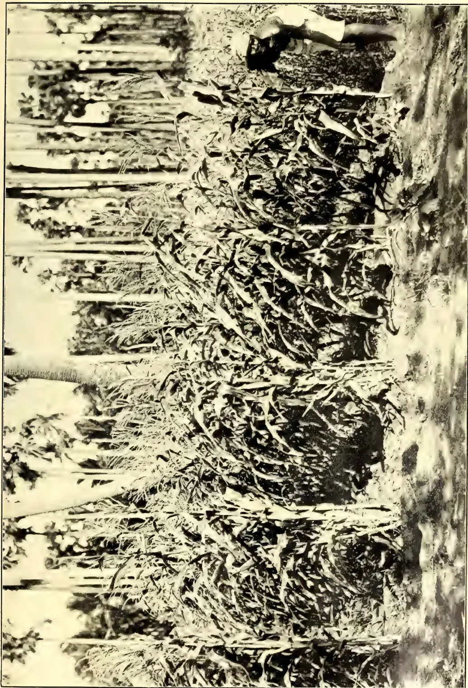
A black and white photograph showing a person in a light-colored shirt and dark pants, bent over and working in a field. The field is densely populated with tall, slender stalks of vegetation, identified as Hickory King Maize. The person appears to be tending to the plants, possibly harvesting or weeding. The background shows more of the same vegetation stretching into the distance. The overall scene is one of agricultural activity in a rural setting.HICKORY KING MAIZE AT VELVETIDURAI.
This image is a scan of a blank page. The paper has a light cream or off-white color with a subtle texture. There are a few very small, faint dark spots scattered across the surface, which appear to be scanning artifacts or minor imperfections in the paper. No text, lines, or other markings are present. SEPTEMBER, 1911.]213Edible Products.PHILIPPINE TOBACCO.PRICES OF LEAF MORE REASONABLE—
NEW AREAS DEVOTED TO TOBACCO
PLANTING—PLEA FOR AMERICAN
PATRONAGE.
(From the Manila Bulletin,
August 9, 1911.)
Late trade news from the Philippines regarding the tobacco situation and the trade in Manila cigars is the subject of an article appearing in the "Tobacco Leaf," dated Manila, and signed by "Maniletto."
The situation here is well summed up, and the writer gives statistics regarding the shipments of Manilas to the United States since the passage of the Payne Bill.
With the exception of the monthly statistics the letter is as follows:—
The prices of tobacco leaf 1910 crop are now more reasonable. The better parcels have been bought up by the big factories. There is very good wrapper tobacco among the Isabela and Cagayan leaf. Nearly the whole of the 1909 crop, as well as that of 1908, has been taken up by the large factories and are fairly selected parcels. These parcels are to be used in the manufacture of cigars and cigarettes, which are sure to be of excellent quality.
The prospects for the 1911 crop have also a fair outlook. It is predicted, however, that it will turn out to be of a rather gummy character, but really it is too early to form any definite conclusion in this connection. The 1910 crops of the other Provinces like Union and Cebu have found a ready exportation to Europe. This kind of tobacco is not fit for cigars, and has never been used for such.
No new areas have been devoted to tobacco planting except in Cagayan and Isabela, comprising the Cagayan Valley, because there is no other island among the Philippine group where the climatic and soil conditions are favourable enough for the growing of tobacco suitable for making good cigars. This had always been maintained since the discussion in Washington about free trade relations with the United States, and it is actually a fact, with the possible single exception of the island of Mindanao; and there is little hope in the tobacco line in that island for the next twenty, thirty or fifty years, owing to the lack of necessary labour. As an instance we may cite Davao, where abaca (Manila hemp) is grown. Several Americans, some years ago
went into the planting of hemp with much zeal and enthusiasm, but their ardour soon vanished in consequence of their inability to secure a sufficient number of labourers. The hemp grown in this district is of superior grade and worth double the amount of that grown in the Camarines and Albay Provinces.
It is incomprehensible why the opposition continues among the tobacco people in the United States against the Manila product. We have a first-class cigar over here, and considering the fact that for the next ten, twenty or more years we shall not be able to ship more than 150,000,000 cigars to the United States annually, which is the limit prescribed in the Payne Bill, it seems hardly fair to oppose the Manila article in participating to the extent of one to two per cent. in the cigar sales in the United States.
A good Manila cigar is well worth five to seven and one-half cents, which we claim for it as the retail price. In the long run the cigars must sell because they offer an agreeable smoke (although it is an acquired taste), and gives to the importer, jobber and dealer a sufficient margin. It seems to us that it would be entirely to their interest to give the Manila cigar a fair test rather than continuing in their opposition. It would really be advantageous, as some wide-awake firms have already done, to secure the representation of some reliable brands.
The factories of importance in the export trade to the United States are in a perfectly sanitary condition and their operatives are clean. This must be so, as the rules laid down by the Bureau of Health are stringent in this regard, and inspections are made periodically to see that they are complied with.
Much has been said of the total production of tobacco in the Philippine Islands, which is about 50,000,000 pounds annually, but if you really come down to actual figures, you will find that about ninety per cent. of this amount must necessarily be exported and be used for cigarettes for local consumption, partly because of the fat, gummy character of that percentage.
The Manila cigar will eventually find a market to a greater extent than is now enjoyed in the United States, because the consumer will have a word to say about the matter; and the sooner the importers and dealers take a kinder view toward the Manila product, the better it will be for them.
Edible Products.214[SEPTEMBER, 1911.There are fairly good-sized orders coming from the United States for cigars, and the situation is strengthening after nearly all of the old and inferior stocks of Manila cigars, which were sent by the less scrupulous merchants to the United States have been disposed of. It is only a matter of a short time now when we shall deservedly enjoy a steady sale of our product. It seems strange but one of Manila's leading firms is responsible for glutting the market.
By E. B. COPELAND.
(From the Philippine Agriculturist and Forester, Vol. I., No. 3, March, 1911.)
The entire course of study of the College of Agriculture is planned with the understanding that any science of crop production must be built on a knowledge of the physiology and pathology of the crops, and that without such knowledge there can be no science of agriculture. As the course is now organized, students entering the coconut class have had successively a year of general botany, a year of plant physiology, and a year of general agronomy, with special attention to the grains; they have also had one year of chemistry, and take a second year while studying the coconut. They are obviously well prepared to study effectively so much of the physiology of a crop as does not require distinctly organic chemistry. And there is no crop, at any rate in this part of the world, which is so well known that such work as they are called upon to do will not add materially and practically to our knowledge of it.
The best general and easily used index to the condition of a plant is its rate of growth. It is certainly possible to develop such a knowledge of the growth of any plant, and of the reaction of the growth to outside conditions, that it shall be possible to make roughly such allowances as are necessary for temporary conditions (the weather), and to decide from one day's measurement of the growth that the plant's condition is poor, fair or good; that is, that the more fixed conditions (soil, climate, state of cultivation, freedom from living enemies) are or are not what they should be. The great value of such knowledge must be clear.
The only past study of the physiology of the vegetative coconut was published by the writer in the first number of the Philippine Journal of Science (1906,
pp. 6-57). That study was made in one place, San Ramon near Zamboanga, and during a single exceptionally dry season. Even though it was done with reasonable thoroughness at the time and place, it by no means furnished the data necessary for the establishment of standards by which the activity of coconuts in general can be judged. Neither do the data reported here suffice, but they are a very material contribution. For this place and season they can be accepted with entire confidence, for they are selected representatives from a large mass of tables of results.
The coconuts of the college are none of them on land well suited to this crop. The soil, varying from forty centimeters to hardly more than a meter in depth, is everywhere too shallow. The depth mentioned includes the clayey, not sharply distinguished subsoil, which in turn rests on a succession of thin layers of volcanic stuff, such as occurring in thick strata, is known as Meycauayan stone or "dobe stone." These groves are moreover so suited that they receive no ground drainage from Mount Maquilng. As Los Banos has a decidedly dry season, usually of several months' duration, this soil becomes dry to a degree incompatible with very successful coconut culture without irrigation.
In my work at San Ramon, the most rapid growth observed for any root was 3.5 mm. per diem; but this was transitory, and greatest growth per mensem was less than 5 cm. The growth was usually very irregular. This has been the experience here as well; but some roots have come under observation which were growing more regularly fast. For example, the following table shows the growth of two roots measured by F. Cevallos. The figures in each case represent the growth during the preceding period, usually of one week.
Table I.
| A. | B. | |||
|---|---|---|---|---|
| October | 20 | ... | 13.0 | 15.55 |
| 28 | ... | 16.5 | 19.80 | |
| November | 5 | ... | 23.2 | 19.10 |
| 13 | ... | 24.0 | 22.20 | |
| 20 | ... | 26.9 | 16.70 | |
| 27 | ... | 23.0 | 24.90 | |
| 4 | ... | 26.2 | 24.80 | |
| December | 11 | ... | 29.5 | 26.95 |
| 18 | ... | 25.7 | 24.55 |
It happens that the first of these roots grew in fertilized ground, and the second did not. The fertilizer was applied during the second week of September.
SEPTEMBER, 1911.]215Edible Products.There is a very slight difference in favour of the fertilized tree. However, the difference observed was not always in this direction; and, considering the general irregularity in the rate of growth of roots, we are not at present justified in drawing any conclusions as to the influence of fertilization on their growth.
As the dry season advances, the growth of roots becomes slower, just as was the case at San Ramon; but the checking is up to this time nothing like so complete as was observed there. It naturally occurs first where the soil is thinnest. The row of trees under observation by A. Lejano is on shallower soil than that of Cevallos. The average daily growth of the roots of Lejano's trees during the fall months was more than 2 mm.; but the average daily growth of four roots from February 2 to February 16 was only 1.25 mm. The average daily growth of two roots measured by Cevallos from January 14 to February 18 was still 3 mm.
The most rapid steady growth reported for any root was 108 mm. from October 31 to November 26, covering eight measurements. This was one of T. Vibar's. During the first nineteen days of February, his most active roots grew 31 and 30 mm. respectively; his trees are intermediate between those of Cevallos and Lejano. This relation between the depth of the soil and the ability of the tree to resist the evil influence of drought is very instructive.
It is a good general rule, but naturally not without exception, that the larger the root the more rapid its growth. In the saturated atmosphere of a buried bottle, roots grow at about the same rate as in the soil; but the roots growing in free air, where the new roots of grown trees frequently emerge from the trunk, grow very slowly until they enter the ground.
My work on the growth of leaves at San Ramon was very inadequate, because undertaken some time after the beginning of a severe drought and confined to young trees. As the growth of the leaves is the most convenient criterion by which the activity of a tree can be determined at any one time, and as it stands in a double direct relation to the prospective productivity of the tree, we have here studied it with special care and thoroughness. The following tabulation of the determinations of the growth of four of the trees measured by Vibar will give a good idea of the general rate. These trees are about ten
years old and are coming into bearing. The figures in each case represent millimeters of growth since the preceding measurement.
Measurements can, of course, be made only of the growth of the visible leaves. The method employed was as follows: A horizontal straight line of India ink is drawn across the youngest leaf as low down as possible, and carried without a break into the next youngest leaf. On the lowest possible part of the latter a similar mark is made, and carried on to the next older. The same is done on the lowest visible part of the succeeding leaves. Where there is no growth, these marks, each drawn on two leaves, will remain unbroken. This would also happen if the two leaves grew equally; but in normal growth the younger of any two visible leaves usually grows the more rapidly. The vertical distance between the two parts of the broken line is then the difference in growth. The break in the lowest broken line is the growth of the oldest growing leaf. The growth of the second oldest growing leaf is found by adding the break on the line at its base to the break in the line below. And the growth of each of the younger leaves is found by adding the break in the line of its base to the sum of the increments in length of the older leaves. Subsequent determinations are made by subtraction without the use of new marks, except when younger leaves make their appearance.
This general method is the only easy and accurate one possible in working on subjects of such size as the coconut tree. In detail it can be modified as convenience suggests: for instance, it is sometimes simpler to draw a horizontal line across several leaves. As the growth of the leaves is entirely basal, no error is introduced by marking one point rather than another, so long as the power to make accurate measurements is not interfered with.
Vibar's results shown in Table II show the most rapid growth observed at any time, 205 mm. in three days by tree D; but this rate was closely approached at the same time by many trees. The youngest leaf always grows the most rapidly, or is sometimes equalled in rate for a time by the next older. Independently of the environment the rate is decidedly irregular, as is unmistakably shown by comparing different leaves on the same tree. It happens fairly frequently that one leaf increases its rate while another decreases it; and this change is not rarely in the opposite
Edible Products.
216
[SEPTEMBER, 1911,
direction to that which can be explained by a consideration of their grand periods of growth.
The real explanation, I believe, of most of these irregularities is to be found in the high tensions between the neighbouring leaves. The latter are packed closely together, and growing at unequal rates, must move along each other with considerable friction and set up tensions whose occasional release will
make the growth evidently jerky. These tensions are probably responsible for the equal elongation usually exhibited for a longer or shorter time by the two youngest leaves. The tendency is certainly for the younger leaf to grow the more rapidly, but the difference is not great enough to prevent their holding fast, one to the other, sometimes for a term running into weeks.
Table II.—GROWTH OF LEAVES, BEGINNING OCTOBER 11.
| Leaf | Tree A. | Tree B. | |||||||||||||
|---|---|---|---|---|---|---|---|---|---|---|---|---|---|---|---|
| 1 | 0 | 1 | 2 | 3 | 4 | 5 | 1 | 0 | 1 | 2 | 3 | 4 | |||
| October | 12 | ... | ... | 20 | 20 | ... | ... | ... | ... | ... | 17 | 14 | ... | ... | |
| 15 | ... | ... | 66 | 59 | 7 | 2 | ... | ... | ... | 60 | 46 | 3 | ... | ||
| 17 | ... | ... | 56 | 60 | 2 | 1 | ... | ... | ... | 39 | 26 | 1 | ... | ||
| 19 | ... | ... | 62 | 49 | 5 | 4 | ... | ... | ... | 49 | 28 | 1 | ... | ||
| 23 | ... | ... | 84 | 47 | 6 | 3 | ... | ... | ... | 72 | 43 | 2 | ... | ||
| 26 | ... | ... | 80 | 55 | 12 | 2 | 2 | ... | ... | 60 | 35 | 5 | 3 | ||
| November | 31 | ... | ... | 122 | 120 | 14 | 4 | 4 | ... | ... | 100 | 56 | 6 | 3 | |
| 4 | ... | ... | 80 | 68 | 4 | 4 | ... | ... | ... | 90 | 22 | 6 | 4 | ||
| 7 | ... | ... | 80 | 35 | 3 | 7 | ... | ... | ... | 73 | 18 | 6 | 2 | ||
| 10 | ... | ... | 86 | 15 | 5 | 2 | ... | ... | ... | 50 | 14 | 3 | 1 | ||
| 13 | ... | ... | 90 | 16 | 6 | 2 | ... | ... | ... | 78 | 15 | 4 | 1 | ||
| 16 | ... | ... | 86 | 15 | 7 | 1 | ... | ... | shows | 79 | 17 | 3 | 2 | ||
| 19 | ... | ... | 76 | 12 | 2 | ... | ... | ... | 78 | 78 | 16 | 5 | ... | ||
| 22 | ... | ... | 80 | 15 | 6 | 1 | ... | ... | ... | 66 | 66 | 17 | 4 | ||
| 26 | ... | ... | 82 | 15 | 4 | 1 | ... | ... | ... | 69 | 69 | 20 | 6 | ||
| 30 | ... | shows | 87 | 28 | 3 | 2 | ... | ... | 71 | 71 | 30 | 5 | ... | ||
| December | 4 | ... | 96 | 96 | 31 | 4 | ... | ... | ... | 103 | 83 | 29 | 4 | ... | |
| 11 | ... | 232 | 175 | 66 | 8 | ... | ... | ... | 180 | 160 | 63 | 12 | ... | ||
| 24 | ... | 117 | 92 | 42 | 6 | ... | ... | shows | 140 | 122 | 42 | 8 | ... | ||
| January | 3 | shows | 127 | 81 | 31 | 4 | ... | ... | 113 | 106 | 92 | 32 | 6 | ... | |
| 10 | ... | 146 | 56 | 29 | ... | ... | ... | 123 | 118 | 68 | 12 | 11 | ... | ||
| 17 | ... | 192 | 189 | 42 | 28 | ... | ... | 134 | 123 | 69 | 13 | 5 | ... | ||
| 22 | ... | 139 | 135 | 30 | 30 | ... | ... | 132 | 126 | 40 | 16 | ... | ... | ||
| 28 | ... | 149 | 148 | 21 | 7 | ... | ... | 151 | 121 | 26 | 5 | ... | ... | ||
| February | 1 | 169 | 160 | 20 | ... | ... | ... | ... | 150 | 100 | 10 | ... | ... | ... | |
| 4 | 182 | 175 | 20 | ... | ... | ... | ... | 166 | 110 | 10 | ... | ... | ... | ||
| 8 | shows | 186 | 160 | 21 | ... | ... | ... | shows | 176 | 116 | 9 | ... | ... | ||
| October | 15 | ... | ... | ... | ... | ... | ... | ... | ... | ... | 218 | 158 | 16 | 3 | |
| 17 | ... | ... | ... | ... | ... | ... | ... | ... | ... | 56 | 28 | 4 | 2 | ||
| 19 | ... | ... | ... | ... | ... | ... | ... | ... | ... | 55 | 26 | 3 | ... | ||
| 23 | ... | ... | leaves marked | ... | ... | ... | ... | ... | ... | 104 | 57 | 6 | ... | ||
| 26 | ... | ... | 140 | 140 | 55 | 9 | ... | ... | ... | 87 | 36 | 6 | 2 | ||
| 31 | ... | ... | 235 | 230 | 59 | 13 | 3 | ... | ... | 140 | 135 | 15 | 5 | ||
| 4 | ... | ... | 200 | 106 | 60 | 12 | 1 | ... | ... | 101 | 90 | 7 | 8 | ||
| November | 7 | ... | ... | 161 | 99 | 53 | 9 | 1 | ... | ... | 96 | 86 | 8 | 6 | |
| 10 | ... | ... | 102 | 81 | 43 | 10 | 1 | ... | ... | 90 | 80 | 7 | 5 | ||
| 13 | ... | ... | 91 | 62 | 39 | 11 | 2 | ... | ... | 86 | 77 | 6 | 2 | ||
| 16 | ... | ... | 92 | 61 | 40 | 10 | 2 | ... | ... | 81 | 69 | 9 | ... | ||
| 19 | ... | ... | 91 | 51 | 35 | 7 | 2 | ... | ... | 99 | 57 | 3 | 2 | ||
| 22 | ... | shows | 93 | 59 | 38 | 8 | 3 | ... | shows | 93 | 58 | 8 | ... | ||
| 26 | ... | ... | 98 | 63 | 34 | 6 | 3 | ... | 91 | 91 | 59 | 11 | ... | ||
| 30 | ... | 100 | 100 | 76 | 38 | 6 | 8 | ... | 116 | 93 | 36 | 23 | ... | ||
| December | 4 | ... | 96 | 96 | 71 | 34 | 7 | 6 | ... | 102 | 99 | 46 | 29 | ... | |
| 11 | ... | 192 | 190 | 186 | 62 | 13 | 8 | ... | 190 | 180 | 81 | 39 | ... | ||
| 24 | ... | 190 | 182 | 162 | 51 | 8 | ... | shows | 146 | 122 | 68 | 21 | ... | ||
| January | 3 | shows | 186 | 91 | 81 | 47 | 8 | ... | 157 | 157 | 96 | 56 | 11 | ... | |
| 10 | 179 | 179 | 86 | 60 | 33 | 9 | ... | 148 | 148 | 87 | 42 | 7 | ... | ||
| 17 | 168 | 168 | 57 | 40 | 21 | 6 | ... | 129 | 124 | 68 | 51 | 3 | ... | ||
| 22 | 156 | 156 | 50 | 37 | 20 | 4 | ... | 136 | 125 | 59 | 47 | ... | ... | ||
| 28 | 186 | 186 | 59 | 27 | 5 | 2 | ... | 198 | 180 | 44 | 20 | 2 | ... | ||
| 1 | 189 | 189 | 66 | 18 | 9 | 2 | ... | 200 | 160 | 33 | 12 | ... | ... | ||
| February | 4 | 200 | 190 | 77 | 15 | 8 | 3 | ... | 205 | 160 | 32 | 11 | 3 | ... | |
| 8 | 201 | 196 | 82 | 14 | 5 | 1 | ... | 206 | 181 | 36 | 12 | ... | ... | ||
SEPTEMBER, 1911.]
217
Edible Products.
The growth of stems and roots, if an accurate enough record is kept, is found never to be steady, and the true explanation of its irregularity is probably analogous to that just given for the greater irregularity of the growth of the coconut leaves. In the stems and roots, the cells and tissues, having unequal inherent power to enlarge, as we know they have, set up tensions, the accumulation and release of which are expressed by the observable irregularities of rate. In roots there is also the opportunity for tensions between cap and body, in spite of the fact that the most rapid enlargement is often back of the cap. In the coconut, the entire elongating region is usually enclosed, and must inevitably stretch with more or less of a jerk every time the hold between the back part of the cap and the enclosed body is overcome.
The rate of growth is also consequently a function of the weather. As an illustration, a severestorm began October 31, and the growth during the four day interval following was slower in most cases than it had been immediately before. Again, there was some rain February 5 and 6, and February 8 and 9 were stormy. Vibar's table shows a slower growth during the four days, February 4 to 8, than during the preceding three days. This is more clearly brought in Table III, containing the measurements of Lejano, of the youngest leaves only of six trees.
Table III.
Growth per diem of youngest leaves during the periods ending on the dates given. Beginning January 28 :—
| Tree. | Jan. 31 |
Feb. 2 |
Feb. 7 |
Feb. 9 |
Feb. 16 |
|---|---|---|---|---|---|
| I | 30.7 | 32.2 | 26.5 | 15.5 | 22.3 |
| II | 34 | 32.5 | 31.4 | 12 | 39 |
| III | 16 | 18.5 | 25 | 9.5 | 23 |
| Average | 26.9 | 27 | 27.6 | 16.3 | 29.4 |
| IV | 14 | 25 | 17.8 | 8.5 | 13.5 |
| V | 19 | 17.8 | 16.2 | 15.5 | 12 |
| VI | 32 | 33.2 | 29.4 | 20 | 25.3 |
| Average | 21.3 | 25.3 | 21.1 | 14.7 | 16.9 |
It has already been noted that Lejano's trees are on very shallow soil, which had become decidedly dry by the end of January. The growth of his trees was slower at the beginning of February than during the preceding September; while the students whose trees grow on deeper soil found the growth in February more rapid than at any previous time.
It will probably be a cause of surprise to many, as it was at first to me, that a few days of rainy weather have a decided deterrent effect upon the growth. Most plants growing in the Philippines whether herbs, vines or trees, and in whatever stage, show this more markedly than does the coconut. Several hundred species, records of the growth of which are in my hands, have shown this whenever the records were so timed as to bring it out.
The difference between the diurnal and the nocturnal growth appeared as conspicuously as possible in my San Ramon work; for not merely was there frequently no growth at all during the day, but there was sometimes an actual shortening. Working here with adult trees, and at a time when the water supply for the root was ample, the difference was still evident. It is shown by Table IV, compiled from the tables of Cevallos.
Table IV.
GROWTH OF LEAVES BY DAY AND BY NIGHT. 3 TREES.
BOLD-FACED TYPE, 5 P.M. TO 5 A.M.
| Leaf. | 1 | 2 | 3 | 1 | 2 | 3 | 1 | 2 | 3 | |
|---|---|---|---|---|---|---|---|---|---|---|
| Aug. 6 | 0.0 | 10.3 | 0.9 | 0.2 | 13.0 | 0.8 | 0.5 | 18.5 | 5.0 | 1.4 |
| 1.0 | 22.0 | 3.1 | 1.1 | 48.0 | 1.2 | 3.0 | 47.9 | 24.8 | 5.6 | |
| 7 | 0.6 | 23.8 | 2.0 | 0.4 | 14.4 | 1.0 | 1.0 | 11.0 | 7.0 | 1.0 |
| 2.4 | 41.0 | 6.2 | 0.9 | 41.6 | 3.0 | 3.2 | 52.0 | 18.0 | 4.0 | |
| 8 | 0.0 | 4.0 | 1.5 | 0.3 | 11.0 | 0.5 | 0.9 | 13.2 | 2.1 | 0.6 |
| 0.5 | 38.2 | 5.0 | 1.5 | 24.0 | 4.0 | 2.0 | 33.0 | 37.9 | 2.4 | |
| 9 | 0.0 | 6.0 | 2.2 | 0.6 | 18.0 | 1.3 | 0.8 | 7.2 | 5.0 | 1.6 |
| 1.1 | 27.0 | 4.5 | 4.0 | 54.0 | 5.1 | 1.0 | 29.0 | 32.0 | 4.0 |
All figures represent millimeters. The first column is growth in width; otherwise, all are increment in length.
The checking of the growth during the day is obviously a function of the decreased water supply of the crown of the tree. The same is true, at least in large part, of the damage done by drought. On the other hand the check-
ing of growth by prolonged rainy weather seems unintelligible, except as a result of the checking of photosynthesis. It is true that the temperature is usually lower during storms; but it is likewise true that February is a colder
28
Edible Products.218[SEPTEMBER, 1911.month than any from July to December, and yet it shows the most rapid growth except when dryness interferes. As a matter of fact, our differences in temperature from day to day, or from month to month, are less than the usual difference between day and night, and the fact the night is cold does not prevent rapid growth at that time.
Regarding the relation between the rate of growth and the age of the tree, it can be laid down as a general rule that from germination to maturity there is a gradual increase in the rate of growth of the most active leaves. The younger the tree, the slower the growth. This has been demonstrated on trees of various sizes; but as the exact ages of the trees are not known, it is not worth while to publish a tabulation of the measurements.
It has been emphasized, perhaps unnecessarily since it is necessarily so, that the measurements apply only to the visible leaves. When we state that the most rapid growth is shown by the youngest visible leaf, it means that when a leaf appears it is at near the stage where the cure representing its grand period would reach the highest point. There are also present numerous invisible leaves, the most of which are very small and growing very slowly. Dissection of a young tree, whose free trunk was as yet only 50 cm. high, showed the following leaves which had not yet reached the light, but were well enough formed to be separated with a pocket knife and without the use of a lens. These are numbered from the largest to the smallest.
Table V.| LENGTH OF CONCEALED LEAVES. | ||
|---|---|---|
| I | ... | 1.31 m. |
| II | ... | 0.43 m. |
| III | ... | 0.09 m. |
| of which, 19 mm. sheath. | ||
| IV | ... | 50. mm. |
| V | ... | 34. mm. |
| of which, 16 mm. sheath. | ||
| VI | ... | 21. mm. |
| VII | ... | 15. mm. |
| of which, 0.7 mm. sheath. | ||
| VIII | ... | 13. mm. (?) |
| IX | ... | 11.2 mm. |
| X | ... | 8.7 mm. |
| XI | ... | 7.1 mm. |
| XII | ... | 5.5 mm. |
XIII and XIV separable, but too small to measure accurately.
The rate of growth at different ages can be calculated approximately by the differences in length. It is evident that the growth in length is at first exceed-
ingly slow, less even than 2 mm. a month, and increases until the leaf reaches the light.
In our coconuts, the interval between the appearance of successive leaves is usually more than one month; so that fully eighteen months can be expected to elapse before the smallest leaf-rudiment recognizable with the naked eye would grow into the light. Any condition which controls the rate of formation of these leaf-rudiments must therefore have more or less influence on the rate of the appearance of new leaves a year and a half later, and on the crops the tree can bear a year and a half later still. And this influence is a direct one. In the case of the coconut, as of any other perennial, unfavourable conditions, by lowering the general vitality of the tree, have indirect effects, the duration of which is altogether indefinite.
The fact that leaves succeed each other at intervals of more than one month indicates that our coconuts are not in very good condition; for at San Ramon, until the drought became too severe, the succession was considerably more rapid. In consideration hereof it may be anticipated that better situated coconuts will under favourable conditions show a more rapid growth of the leaves than any we have been able to observe.
At the time these coconuts came into possession of the college the grove was infested with cogon (lalang) where fire had run through it, and grown up with brush and small trees elsewhere. During the following year it was not cleaned, except immediately around the trees, with a bolo. After a thorough cleaning out it was ploughed shallowly during the first week of last September; the ploughing reached at the most a depth of less than ten centimeters. As a result of the lack of previous cultivation, and of the shallowness of the soil, this ploughing cut many of the roots. This was of course immediately injurious to the trees. The number of leaves on them was at first from 21 to 27. During the succeeding two months the majority of the ploughed trees shed four leaves, while neighbouring trees shed on the average less than two leaves. There was also an evident and immediate checking in the rate of growth of the younger leaves, from which the trees gradually recovered in the course of about three months. After this interval the growth became more rapid than it had been before cultivation.
In spite of the temporary set-back it gives to trees hitherto neglected, there is no reasonable doubt as to the value
SEPTEMBER, 1911.]219Edible Products.of shallow cultivation. Six months after the act it seems clear that our trees are more vigorous as a result of it. Surface ploughing results in the development of a root system at a greater general depth; and assuming freedom from stagnant ground water this is an advantage, for it tends to secure immunity from drought. Moreover, some measure of surface cultivation is necessary for the controlled and rational use of fertilizers or of irrigation. The grove is now kept in decent condition by the occasional use of the disc harrow at very slight expense, and without even temporary bad effect on the trees.
Half of the grove in charge of the class was fertilized September 9, each tree receiving 0.6 kilo of basic slag containing 20% P2O5, and 0.8 kilo of kainit containing 13.50% K2O. These fertilizers were donated by Behn, Meyer and Company of Manila for this experiment. For reasons developed elsewhere in this paper, an application of fertilizer to the coconut is not likely to reach its maximum effect until at least eighteen months, and perhaps as much as three years after it is made. The fertilizer was scattered over ground already ploughed, and was then harrowed in. It must first enter the plant in appreciable quantities, and this takes some time before it can begin to have any influence. If it then hastens the building of leaf-rudiments, this effect can be seen only after a year and a half, or more; and the nuts borne in the axils of these leaves will not be ready to harvest within three years.
However, if the fertilizer is going to have much effect, this must appear more immediately in acceleration of the growth of the leaves. If it results in more rapidly growing and larger leaves, and so in increased photosynthesis and transpiration, the fertilizer is likely to have ultimate indirect influence on the production of nuts, more important perhaps than its direct effect can be. As a matter of fact, its influence on the growth of the leaves is already evident. During the first week in March I have had measurements made of the growth of the leaves of all the normal trees under observation, fertilized and unfertilized. Trees attacked by beetles, and a few trees younger than the others, have been left out of account for the sake of uniformity.
The following table shows some of the results of these measurements. The first part of it is compiled from measurements by M. B. Raymundo;—
Table VI.| Leaf Tree | 1 | 2 | 3 | 4 | 5 | 6 |
|---|---|---|---|---|---|---|
| I | 10.71 | 5.5 | 3.14 | 1.88 | 0.78 | 0.28 |
| II | 10.42 | 5.0 | 3.0 | 1.5 | 0.57 | 0.28 |
| III | 10.00 | 2.85 | 1.71 | 1.0 | 0.45 | 0.28 |
| IV | 10.28 | 6.14 | broken... | ... | ... | |
| V | 8.42 | 3.28 | 1.71 | 0.88 | 0.36 | 0.14 |
| VI | 5.00 | 2.28 | 1.28 | 0.61 | 0.7 | 0.14 |
| VII | 7.07 | 1.21 | 0.44 | 0.11 | 0.04 | 0.00 |
| Average | 8.84 | 3.74 | 1.88 | 1.00 | 0.41 | 0.19 |
| I | 3.07 | 2.0 | 0.8 | 0.17 | not measured. |
| II | 4.67 | 3.57 | 1.57 | 0.46 | |
| III | 3.64 | 2.17 | 0.6 | 0.04 | |
| IV | 5.35 | 3.71 | 2.21 | 0.71 | |
| V | 4.28 | 3.28 | 2.02 | 1.71 | |
| VI | 3.35 | 1.8 | 1.07 | 0.28 | |
| VII | 6.85 | 5.25 | 3.51 | 1.42 | |
| Average | 4.47 | 3.12 | 1.69 | 0.68 |
Results of Cevallos, 6 trees each, fertilized and unfertilized.
| Fert. | 28.8 | 16.6 | 6.8 | 2.1 |
| Nor Fert. | 26.6 | 15.8 | 3.7 | 1.6 |
Lijano found the average growth of the youngest of his fertilized trees to be 27.9mm, and of the unfertilized trees 20.8mm.
Two general conclusions can be drawn from these determinations:—
1. The average growth of all leaves of fertilized trees is greater than that of unfertilized trees.
2. The greater difference is to be noted in the older leaves. This indicates that the leaves of fertilized trees continue to grow for a longer time. This may have as much as the more rapid growth to do with the ultimate greater size of the leaves, and so the greater vigour of the tree.
The growth of the spathe is a matter of general interest as a part of the general growth of the tree, and of special interest to tuba producers since the spathe is the source of the crop. The spathe ceases to elongate shortly before it splits open. This is usually from 75 to 90 days after the first appearance of its tip. The total length of the visible part of the grown fertile branch is usually between seven and nine decimeters. The rate of growth of all spathes measured has risen at times more than 2 centimeters a day; but the average including periods of depression, and the final period of little or no elongation is only half of the maximum,
Edible Products.220[SEPTEMBER, 1911.The cure, or rather the part of it we can get the data to plot, is quite irregular.
Partly for the sake of investigation, partly to give practice, and in chief part because it is hoped that by using some of the trees for tuba, it will be possible to protect the entire grove against the attacks of beetles, a considerable number of trees have been operated on to produce tuba. It might be explained that this is the native name of the fresh or undistilled sap more widely known as toddy. As Mr. Gibbs, of the Bureau of Science, has in press a thorough study of this and other Philippine palm saps, I will here touch on only one point, and on this, the relative flow by day and by night, only because it seems to be in some dispute.
Table VI shows the flow from two spathes as reported by Cevallos. Prior to February 10 the removal of slices from the bleeding tips was performed three times daily, morning, noon, and night; from this date on it was performed only morning and evening. The extra slicing at noon would have a tendency to cause a more rapid flow during the day.
Table VII.
Night hours, bold-faced type.
| Spathe. | 1 | 2 | |
|---|---|---|---|
| February 5 | ... | 123.0 cc. | 56.0 cc. |
| 169.5 | 101.0 | ||
| 6 | ... | 175.0 | 124.0 |
| 205 | 132 | ||
| 7 | ... | 235 | 112 |
| 242 | 171 | ||
| 8 | ... | 225 | 135 |
| 235 | 206 | ||
| 9 | ... | 210 | 185 |
| 213 | 174 | ||
| 10 | ... | 240 | 150 |
| 250 | 240 | ||
| 11 | ... | 167 | 160 |
| 290 | 260 | ||
| 12 | ... | 175 | 125 |
| 304 | 209 | ||
| 13 | ... | 115 | 185 |
| 88 | 210 | ||
| 14 | ... | 130 | 125 |
| 191 | 162 | ||
| 15 | ... | 117 | 117 |
| 212 | 124 |
This production of tuba is less than would be obtained by any expert tuba gatherer, chiefly, I believe, because of the excessively thick slices removed by the students; but I cannot believe that there was anything in their manipulation which could cause any abnormal
distribution through the day of the sap. Further, a greater flow during the night is to be expected a priori as a direct result of exactly the same factors which cause more rapid growth during the night.
The most rapid observed growth of roots is at a rate of about 1.2 meters around each young tree, kept in good condition and devoted to the use of the coconut, have its radius extended at the rate of one meter a year, the tree will have as much ground as it can use. Only a few roots can grow farther.
The most rapid observed growth of the leaf is slightly over seven centimeters a day. This is likely to be exceeded by trees better situated, but is a fair standard of excellence. By making an allowance for the weather, if it is unfavourable, it is possible to estimate the state of thrift of a grove from a day's measurement of growth of several trees.
The growth is checked by wind, by prolonged rain, and by drought severe enough to lessen the water the roots can absorb.
The growth of uncultivated trees is checked by surface cultivation; but this check is temporary, and is followed by a more enduring acceleration.
Within six months after the application of fertilizers, the effect can be seen in accelerated growth of the leaves. This is a practically sure promise of future increase of crop.
There are leaf-primordia large enough to be recognized with the naked eye, which will still require one and a half years in which to grow to the light; another year and a half must pass before fruit matures in their axils. Therefore anything which can influence the rate of development of these youngest leaves will affect the crop three years later.
The growth of the leaves and the production of tuba are more rapid during the night than during the day.
I am under obligation to S. Asuncion, F. Cevallos, A. Lejano, A. Navarro, M. Raymundo, and T. Vibar for careful execution of the field work forming the basis of this report.
SEPTEMBER, 1911.]221Edible Products.BY R. H. LOCK, M.A., SC.D.
(Paper read before the Board of Agriculture at its August Meeting.)
The notes which I have the honour to submit to you this afternoon deal with the method of experiment as applied to a particular branch of agriculture. In order that there may be no mistake about my meaning, I should like, with your permission, to explain the sense in which I use these terms. Agriculture, I take it, is the cultivation of the soil for profit, and the best agriculture is that which results in the largest profit without exhausting the soil and so reducing its capacity for yielding further profit. An experiment is a test planned scientifically for the purpose of obtaining definite knowledge, and the best experiment is that which leads to the most accurate information. What I have said so far may seem at first sight to be in agreement with the opinion universally prevalent in Ceylon among all classes—the opinion that the objects of agriculture and those of science are totally opposed to one another. It is not so very long since we heard the opinion expressed in this room that a commercial experiment is a different thing from a scientific experiment. That view is not held in all agricultural countries, and it is not my view. One of my main objects to-day is to express as forcibly as I can the opinion that an experiment which is not a scientific experiment is not an experiment at all.
Two things only are essential in a scientific experiment, namely, common sense and accuracy, and any man who possesses these most uncommon qualifications has the right to call himself scientific. Without them no amount of labour and information can produce science. Let us see what science has to say on the subject of agricultural experiments.
We will take a simple case of an experiment designed to afford accurate information on some point important to agriculture, that is to say, affecting the question of profit. For example, we may wish to know whether a certain quantity of a particular manure applied to a particular crop will produce an increase in the yield, the value of which will be greater than the cost of the manure, the cost of transport to the
field, and the cost of application, all added together. For this purpose we may mark out two plots of equal area; sow each with the same quantity of seed of the crop in question, and treat them in the same way in all other respects, except that we apply the manure to one of the plots and not to the other. If the plots or their treatment differ in any other way, it will be quite impossible to tell whether any difference which may be found between the yields from the two plots should be ascribed to the effect of the manure or to some other cause.
We will suppose that our two plots are each one-hundredth of an acre in extent; and further, that the crop from the unmanured plot weighs 100 lb., and that from the manured plot 110 lb; Are we therefore justified in assuming that the same amount of manure applied in the same way always cause an increased yield of 10 per cent.?
The answer to this question is “no.” To come to such a conclusion would be to suppose that our work is perfectly accurate, and that natural conditions can be made perfectly uniform. In practice we can only make an approach to accuracy. Two plots in a field can never be made exactly alike, there will be slight differences in soil, aspect, drainage, and the like, and all these will affect the crop. It is therefore most important to know how close an approach to accuracy may be expected in an experiment like the present. In order to find this out it is necessary to know how much difference is to be expected between two plots which have been made as much alike as possible, and which have not been manured differently or otherwise differently treated.
How is this most important point to be ascertained? The method is to grow a large number of pairs of like plots and to observe to what extent the crops do actually differ from one another. We may take the average crop of all the plots as the amount which each plot ought to yield theoretically, and we shall find that the actual yield of each plot differs to some extent from this amount. From the data thus obtained it is possible to work out the odds that the crop of a single plot will differ from the average by more or less than a given quantity.
This has been done in a very interesting paper published by Professor Wood and Mr. Stratton in the last number of the “Journal of Agricultural Science.” A brief summary of their conclusions may not be without interest.
Edible Products.222[SEPTEMBER, 1911.These authors find that the size of the plot has little or no effect upon the result so long as the plot is more than one-hundredth of an acre in extent. They find that in the case of similar plots the odds against the yield of one plot being better than the average by more than 5 per cent. are 3 to 1.
The odds are 10 to 1 against a difference of more than 10 per cent.
| Do | 44 | do | do | 15 | " |
| Do | 290 | do | do | 20 | " |
| Do | 2,700 | do | do | 25 | " |
Now, odds of 10 to 1 do not by any means represent a certainty. If they were commonly so regarded, book-makers would find it difficult to make a living; consequently the 10 per cent. increase obtained in our supposed experiment by no means proves that the manure is doing any good at all. The chances are only 10 to 1 that the whole difference observed is not entirely accidental, having nothing to do with the manure. Still less is it possible to deduce from such an experiment the amount of benefit which the manure is likely to produce. This information can only be obtained by repeating the experiment.
Wood and Stratton have therefore calculated the number of times an experiment must be repeated in order to give any desired degree of precision. They assume that odds of 30 to 1 represent a practical certainty, and their conclusions are given in the following table:—
| Precision desired in Percentage Difference between Yields. |
Required Number of Plots. |
|---|---|
| 20 per cent. | 1 |
| 15 | 2 |
| 10 | 4 |
| 8 | 6 |
| 6 | 10 |
| 4 | 23 |
| 2 | 91 |
That is to say, the yield of two experimental plots must differ by upwards of 20 per cent. before we can safely conclude from a single experiment that there is any real difference between them, whilst, in order to detect a real difference of 2 per cent., the experiment must be repeated almost a hundred times. With these facts in view, I think it may fairly be conceded that agricultural science does not fall much behind the other sciences in point of laboriousness. The man who deduces the value of a manure, or of transplanting, or some other point from a single experiment resulting in a difference of 10 per cent. may fairly be called unscientific, simply because his deduction is not necessarily true.
I now propose to illustrate what has gone before by some actual experiments undertaken by the Botanic Gardens Department. Mr. D. Clouston, in a paper published in the "Agricultural Journal of India," has recorded the following results of transplanting in the Central Provinces on irrigated land. The figures given are pounds weight per acre, and a bushel of paddy weighs about 44 lb. :—
| Transplanted. | Broadcast. | |||
|---|---|---|---|---|
| 1904-05 | ... | 2,000 | ... | 960 |
| 1905-06 | ... | 1,940 | ... | 1,190 |
| 1906-07 | ... | 1,940 | ... | 1,220 |
| 1907-08 | ... | 1,550 | ... | 1,180 |
This works out at an increase of 63 per cent. on the average of four years. Our degree of precision for four experiments being 10 per cent., we may say that under the conditions of the experiment transplanting may be expected to give an increase of not less than 53 per cent. and not more than 73 per cent. over the broadcasting method. Similar results have been obtained elsewhere, and we may take it as established that the transplanting of paddy leads to a greatly increased crop, although we may remark in passing that the results of Mr. Clouston's experiments differ from one another by an amount which cannot possibly be accounted for by the laws of chance.
Mr. Clouston's paper says nothing about the distance between the transplanted seedlings, but we understand that the recognized distance in India is about 9 inches. The question of distance is, however, a most important one. It is clear that there must be some particular distance which, other things being equal, will give the largest crop per acre; and that if we transplant more closely than this, we not only waste both seed and labour, but lose on the total crop as well. Moreover, it is better to plant too widely than too closely, since by the former method we save labour and seed, even at the expense of some reduction of crop.
The discovery of what is actually the best distance entails a very long series of carefully conducted experiments, and my own preliminary experiment in this direction by no means settles the point. I describe it here, partly in order to point out the precautions which must be taken and the sources of error which arise in experiments of this kind, and partly because it is doubtful whether the work will ever be carried to a definite conclusion.
On the paddy field at the Peradeniya Experiment Station an area was selected which was bounded by a single bund,
SEPTEMBER, 1911.]223Edible Products.and which might therefore be expected to be fairly uniform as regards soil composition. Here five plots were marked out, each 20 feet square, or rather less than a hundredth of an acre, and on these paddy seedlings were transplanted singly at different distances. Paddy was also transplanted close up to the edge of each plot all round—an important precaution for two reasons: first, because only in this way can the plots be regarded as fair samples of a larger area; and secondly, because birds and other enemies which always attack an experimental plot under the impression that some special delicacy must be growing there are in this way more or less circumvented. The remainder of the field was transplanted, according to what appears to be the local practice, in bunches of six to ten plants about 6 inches apart.
The plots with their yields were as follows:—
| Distance. | Number of Plants per Acre. | Yield in Bushels per Acre. | Percentage of Increase over General Field. |
|---|---|---|---|
| Bunches 6 x 6 | — | 32 | — |
| 4 x 4 | 392,040 | 37 | 15 + |
| 6 x 6 | 174,240 | 60 | 87 |
| 8 x 8 | 98,010 | 60 | 87 |
| 10 x 10 | 62,726 | 52 | 62 |
| 12 x 12 | 43,560 | 18 | —44 ? |
Now, although our degree of precision in the case of a single experiment is only 20 per cent., we have here a certain amount of definite information. The transplanting of single plants at distances of 8 by 8 or even of 10 by 10 inches gives us something like double the crop yielded when transplanting is in bunches at 6 by 6. On the whole, therefore, the experiment supports the view that 9 by 9 inches is about the best distance between the plants under the circumstances of this particular crop. Unfortunately the plots planted 6 by 6, 8 by 8, and 10 by 10 were the only ones which could be regarded as giving a definite result, for about a quarter of the crop of the 4-by-4 plot was destroyed by pig or some other large animal, whilst the 12-by-12 plot was very sickly for some unexplained reason, which had nothing to do with the distance between the plants, but was provisionally put down to sourness of the soil.
With regard to the question of profit, transplanting 8 by 8 ought not to cost more than Rs. 4 per acre altogether, whilst the increased crop over bunch transplantation—28 bushels at Re. 1.50—is worth Rs. 42. The amount of seed required by the former method is perhaps a tenth of that required by the latter,
At my recommendation Mr. Harbord has carried out a similar experiment at Maha Iluppallama, and he has kindly furnished me with a summary of his result. The figures represent the average of the yields from two sets of plots, each plot being one-hundredth of an acre in extent:—
| Distance apart. | Bushels per acre. |
|---|---|
| 2 x 2 | 45 |
| 4 x 4 | 50 |
| 6 x 6 | 50.5 |
| 8 x 8 | 49 |
| 10 x 10 | 48 |
| 12 x 12 | 39 |
Here, again, we find that the distance of transplanting may be varied from 4 inches up to 10 inches with little effect upon the yield of grain, the recorded difference being insignificant compared with the probable error of the experiment. As transplanting 4 by 4 represents more than six times the labour and seed required to transplant at 10 by 10, the choice of a suitable distance should present no difficulty to the practical agriculturist.
Although further experiments are required in order to decide what is exactly the most economical distance for transplanting paddy, there can be no doubt from the result of the experiments described above, as well as from many others carried out in different parts of India, that transplanting represents a paying proposition. In the Secretary's report for last year I find the complaint that the manuring of paddy "on scientific lines" makes slow progress, and cultivators are recommended to try a particular mixture prescribed by Mr. Kelway Bamber. This mixture has been on trial at the Experiment Station at Peradeniya during the two past seasons, with the following result:—
| Yield per Acre. | ||
|---|---|---|
| Paddy. Bushels. | Straw. lb. | |
| 1910, Manured ... | 27 | 1,450 |
| 1910, Unmanured .. | 18 | 1,616 |
| 1911, Manured .. | 32 | 2,223 |
| 1911, Unmanured .. | 25 | 1,665 |
This works out an average increase of 8 bushels per acre for the two years, value Rs. 12 per acre. The increase is 37 per cent. of the unmanured crop, which as the result of two experiments we may regard as correct to within 15 per cent. So far so good, but what about the profits on the transaction?
Edible Products.224[SEPTEMBER, 1911.The manure was applied at the rate of 5 cwt. per acre. The mixture costs Rs. 5.72 less 5 per cent. discount F. O. R. Colombo, and the freight from Colombo to Peradeniya is 56 cents per 100 lb. If we put the cost of application at only Re. 1.50 an acre, the total cost of the manure works out at Rs. 32 per acre. This represents a nett loss of Rs. 20 per acre, due solely to the application of the manure. From the result of this experiment I should think it in the highest degree unlikely that the use of this manure can ever be made profitable, no matter what the quantity applied may be.
My own transplanted plots were intended in the first instance to provide mate-
rial for the selection of seed. As a second generation has not yet been grown, I can give no information at present regarding the result of selection. But it may be worth while to give a brief statement of the range of differences which have been found between different plants, thus affording some idea of the material upon which selection may be based.
From each of the transplanted plots 100 plants were separately gathered, the number of tillers or fruiting stalks sent up by each plant was separately counted, and the grain from each plant was separately weighed. I have therefore 500 definite observations of weight to select from. The result of these operations were as follows:—
| Plot. | Number of Plants having different Weights of Grain in Grammes. | ||||||||||||||||||||
|---|---|---|---|---|---|---|---|---|---|---|---|---|---|---|---|---|---|---|---|---|---|
| 2 | 4 | 6 | 8 | 10 | 12 | 14 | 16 | 18 | 20 | 22 | 24 | 26 | 28 | 30 | 32 | 34 | 36 | 38 | 40 | 42 | |
| 4 × 4 | 21 | 24 | 25 | 15 | 10 | 4 | 1 | ||||||||||||||
| 6 × 6 | 5 | 18 | 22 | 20 | 24 | 5 | 5 | 1 | |||||||||||||
| 8 × 8 | 3 | 9 | 10 | 12 | 20 | 16 | 15 | 7 | 4 | 1 | 1 | 1 | |||||||||
| 10 × 10 | 2 | 9 | 9 | 5 | 9 | 14 | 16 | 14 | 7 | 6 | 5 | 6 | 2 | 4 | 1 | ||||||
| 12 × 12 | 3 | 16 | 16 | 21 | 8 | 10 | 8 | 10 | 6 | 2 | |||||||||||
| Total | 29 | 61 | 74 | 75 | 59 | 48 | 44 | 41 | 28 | 11 | 7 | 8 | 6 | 3 | 4 | 1 | |||||
The weights in the above table are given, as they were recorded, in grammes, 28 of which go to an ounce.
| Plot. | Number of Tillers. | ||||||||||||||||
|---|---|---|---|---|---|---|---|---|---|---|---|---|---|---|---|---|---|
| 1 | 2 | 3 | 4 | 5 | 6 | 7 | 8 | 9 | 10 | 11 | 12 | 13 | 14 | 15 | 16 | ||
| 4 × 4 | 2 | 19 | 53 | 18 | 20 | 6 | 1 | 1 | |||||||||
| 6 × 6 | 6 | 19 | 35 | 24 | 11 | 3 | 2 | ||||||||||
| 8 × 8 | 4 | 9 | 28 | 21 | 14 | 14 | 18 | 5 | 1 | ||||||||
| 10 × 10 | 1 | 8 | 6 | 14 | 13 | 18 | 20 | 7 | 3 | 5 | 3 | 1 | 1 | ||||
| 12 × 12 | 2 | 13 | 15 | 20 | 21 | 6 | 9 | 9 | 2 | 2 | 1 | ||||||
| Total | 10 | 56 | 100 | 96 | 87 | 42 | 48 | 34 | 10 | 6 | 5 | 4 | 1 | 1 | |||
It will be seen at once that both the number of tillers and the weight of grain depend a good deal on the distance of transplanting. Each plot, however, generally contains one or two plants which are notably superior to the remainder, and by sowing separately the seed gathered from these we may hope to see some definite improvement in future generations. A similar result may be obtained with considerably less trouble if the best plants are simply selected by eye, and this could readily be done by the cultivator, whose object is simply improvement and not demonstration of improvement.
Whilst there can be no question as to the value of transplanting in paddy
cultivation, a process which invariably yields a large return in comparison with the labour expended, there is, on the other hand, no evidence that the use of artificial manures can be rendered profitable to the cultivator. There is a strong probability that green manuring would be found to pay, but at present we have no direct evidence bearing upon this process in Ceylon. The use of cattle manure, where it is available, may also yield a profit.
The range of variation in the weight of grain obtained from transplanted paddy plants makes it probable that selection will lead to improvement.
R. H. LOCK.
Royal Botanic Gardens,
Peradeniya, June 15, 1911.
BY E. ELLIOTT.
Memories of absentees die out so rapidly in the tropics, it is possibly advisable, the more especially as now reigns a Pharaoh who knew not Joseph, that I should start by setting out my qualifications for venturing to undertake the task placed at the head of this paper, and explain that during my forty-three years' residence in the Island I had special opportunities of studying the subject in the successive offices I held as Assistant Agent, first at Matara (for seven years), and then Mannar, and subsequently Grain Commissioner and Government Agent in three different Provinces. Further, after my retirement from the Civil Service, as a practical cultivator, I brought under paddy over 600 acres; consequently I have, so to speak, seen both sides of the shield, and am therefore the more qualified to express an all-round opinion.
Before leaving Ceylon I partly compiled a history of Irrigation to assist Mr. White in the Manuals he was bringing out. I have only recently met with a copy of this work, and while admiring the able manner and the extensive sound information it contains, and Mr. White's industry and ability in the compilation, I was disappointed that it contained no notice of the development of paddy cultivation in the island. It was said by the natives that, with the abolition of the so-called grain tax, Government would lose all interest in the cultivation of paddy. Absit omen! but it is rather significant that even the word paddy does not find a place in the index of the official manual.*
I had at one time intended to follow up my contribution on irrigation with a similar review of the allied branch of agriculture; circumstances, however, prevented my doing so before leaving Ceylon. But, as I found a more recent edition of the Manual is equally devoid of any reference to the subject, I think it may not be inopportune if I venture to obtrude my views on the notice of the present authorities and public, especially as they, I fear, differ from those of some other agricultural authorities of the island.
Of course I undertake this task under considerable disadvantages, as I am unable to refer to various authorities
* Under Rice the reference is to the imports and market price.
and get original information from sources which would be open to me if in Ceylon; but I find I have considerable materials which will enable me, I think, to give a fair account of the subject; and during visits to London I have been able to obtain further information and verify figures from the records of the Colonial Office Library.
As applicable to the task I have undertaken, I borrow from an American author as follows: "In performing a study of this kind one feels the need of limiting the scope by reducing the denominator, as Arthur Help remarked: 'Even so limited, the subject is not without difficulties.' The forces to be studied do not lie on the surface, and some of them are not described in any document or found in any treatise. The effect of the various forces at work must be a matter of opinion in which well-informed people may differ, and the writer has to draw the picture as it appears to him."
in regard to Paddy cultivation. When the British Government got possession of the maritime portion of the island in 1796, the Madras civilians first entrusted with its administration endeavoured unsuccessfully to introduce a general land tax such as prevailed in India. When they failed, the Dutch system was permitted to continue in operation, until the proclamations of May, 1800, and September, 1801, abolished the "accomodesans." Government then resumed the lands held on this tenure, and fixed the land tax as follows:—
On Paddy lands not held on Service terms and which had paid less than one-fourth, one-tenth in future.
On those which paid over one-fourth, in future one-fourth. On lands held by Service tenure one-fifth of the gross produce. In the Tamil districts the Tax in the Dutch time appears to have been one-tenth, and so it remained under the British.
Soon after the British Government obtained possession of the Kandyan Provinces in 1818, the rent on paddy fields was fixed at one-tenth of the produce (with a reduction to one-fourteenth for loyal conduct in certain specific cases).
An endeavour to commute the tithes in the low-country for a general rent payable in money was made in 1812, but failed. Originally the Government share was accepted in aumani (kind) and
29 Edible Products.226[SEPTEMBER, 1911,placed in stores and thence issued; but this gradually gave place to the farming and renting system which had become general in the low-country districts by 1829.
In the policy and system followed (to adopt Sir Edward Barnes' words) "the prominent feature was that of paying certain fixed proportions of the produce so that the more the agriculturist cultivated, the more he paid to Government. It had much to recommend it; it was simple, appeared equitable and was easy of comprehension to the natives."
This mode of collection by farming had never been followed in the Kandyan Provinces, where Mr. Turnour by agreement with the cultivators converted the Government share (one-tenth) into a payment of a fixed amount of grain per holding, and afterwards into a money payment. It was readily accepted by the Kandyan and immediately augmented the revenue.
In 1831 the Board of Revenue proposed the extension of this system to the Maritime Provinces, both Sinhalese and Tamil. This commutation was voluntary and was effected by means of written agreements between the Government Collectors and the land-owners. The only means of enforcing payment was by action in the Civil Courts, and in result large arrears accumulated, and the system broke down and was abandoned at different dates between 1841-53 in the Western and Southern Provinces, but reintroduced into Sabaragamuwa and Kegalle after the Ordinance of 1886 had rendered the collection of commuted revenue more practicable.
In 1835, at the suggestion of Sir W. Colebrooke, permission was granted to the land-owners in the Central Province to redeem the charge on their fields by a payment of ten years of the commuted tax, and this privilege was afterwards extended to the other Provinces, but it was not largely accepted, and the privilege was subsequently withdrawn.
In 1841 Ordinance No. 14 was passed regulating the collection of the Paddy rent,* and laying down the procedure to be followed by both renters and cultivators. Under this law until 1878 the tax was collected either by the system of voluntary commutation already explained; and when this could not be arrived at, by selling the Government share generally by public auction
* In this Ordinance the alternative term of "tax" was applied to the Government share of the crop, though this was ordinarily and generally known as the "paddy rents."
to the highest bidder, who "on payment of the amount of his bid became the renter of a village or a group of villages." The rent consisted of the right to recover from the land-holders the share of grain due to Government for the fields in the rented area. Undoubtedly under this system there was a great check on false assessments and estimation by the headmen, but on the other hand the renter was bound to get something more than he paid, to cover the expenses of collection and realisation. In some districts the relations between renters and cultivators were fairly satisfactory, but in others complaints were made of extortion on the part of renters, of inconvenience to the cultivators involved by this mode of collecting the tax, while the renters alleged evasion and delay on the part of their debtors.
As the only compulsory mode of settling such disputes was by prosecution in the Police Courts, such cases mounted to thousands, and were nearly all settled by the day fixed for hearing, only a very small number requiring adjudication. Finally an outcry was raised against the system as savouring too much of Turkish modes of administration and ill-suited to the British Standard, and though any change to a less elastic method was deprecated by many experienced civilians, the Grain Committee, which enquired into matters in 1877, recommended renting should be abolished in favour of compulsory commutation. In compliance with this view an Ordinance was passed in 1878, it was said, "in the interest of the holders of paddy lands with the view of relieving them of the exactions of the renters," and "affording encouragement in other ways to the cultivation of paddy."
Under this Ordinance Government was empowered to gradually introduce a system of compulsory commutation; and Grain Commissioners were appointed to investigate the circumstances of each separate holding and fix a money value for the Government share. This was carried out in the Western, Southern and Eastern Provinces and created great discontent, chiefly because a fixed sum had to be paid whether the crop was good or bad; a principle utterly opposed to the native idea of a sliding rate, proportionate to the capacity to pay—much when there was much in good years, and little when there was little in years of scarcity.*
*The alternative of Crop Commutation payable only when a parcel was cultivated afforded no practical relief.
SEPTEMBER, 1911.]227Edible Products.These measures practically sounded the knell of the grain tax. Complaints of the new procedure soon arose, and coupled with it, a movement for the total abolition of the impost, now come to be looked on not as a rent, but as a tax—a tax on food. The subject was fully enquired into by a Select Committee of the Legislative Council, composed of Messrs. O'Brien, Saunders, Moor and Williams (officials), and Senewiratna, Grinlinton and Panabokka (unofficials) with Mr. A. Ashmore as Secretary. Though this strong Committee reported against the abolition of the impost, and their opinion was strongly backed by the Governor, his successor came out, it was believed, instructed to carry out the abolition of the impost; and this was eventually carried out with effect from 1st January, 1893.
In concluding this part of my review, I must acknowledge my indebtedness to the Report of this Committee (which was, I believe, drawn up by the late Sir A. Ashmore as Secretary) and its annexures. Fortunately I had brought home my copy and have found it most useful.
All the foregoing
LEGISLATION SO FAR PROVIDED, it will be observed, solely for the due collection of the Crown share of the crop as Lord of the soil. Indeed, during the final half of the XIXth Century, almost the only other important action taken, viz., the abolition of "Rajakariya" in 1882, though "actuated by the laudable desire to free the people from oppression," was simply ruinous to the interests of paddy cultivation.
In 1846 Sir Emerson Tennent, the Colonial Secretary, recognised the unsatisfactory condition of the industry and endeavoured to awaken an interest in the matter. But he again raised the bogie of 'oppression,' that of the 'renter.' He succeeded in obtaining a recommendation from a Committee for the repair of tanks, etc, to share in the proposed 'Ordinance Labour.' I rather think this was included in the first Ordinance passed, but it was disallowed by Lord Grey, who laid down the principles on which he was willing to give help. So nothing was done, and matters went from bad to worse.
In 1856 came the turning point in the tide of the affairs of this branch of agriculture, when, under Sir H. Ward's energetic rule, the first Paddy Cultivation Ordinance was passed. The cardinal provision of this important measure was the revival of the ancient village customs relating to cultivation—whenever two-thirds majority of the proprietors
in any district so desired, their incorporation in written rules and the restoration to the village councils of power to compel their observance by fine. This Ordinance was tentative in character and its duration limited to five years from January, 1857.
In 1861 it was renewed for another five years, but the necessity of obtaining the consent of so large a proportion of those interested prevented its adoption in some districts. In 1867 this Magna Charta of the paddy cultivator was permanently added to the Statute book, with the proviso that the approval of a simple majority of those interested should be sufficient to secure its introduction in any division; its general acceptance followed.
As I will presently show, the development and progress of paddy production has been ever since most satisfactory, and been of course furthered and advanced by expenditure on irrigation initiated by Sir Henry Ward.
per se has been already so fully written in the official manual, and the policy so admirably reviewed in Sir West Ridgeway's farewell address in 1903, that it is unnecessary for me to go over the same ground in detail, but to complete this record it will be well to include a short notice of the action taken by each Governor.
Sir Henry Ward (1857-8) spent money in restoring irrigation works, without requiring any special repayment or water rate, depending on the increase in the value of the Government share of the crops and the sale of Crown land for a return.
Sir Hercules Robinson (1867) provided for repayment in ten annual instalments without interest, of all expenditure on irrigation.
Sir W. Gregory (1873) offered, as an alternative, a payment of Re. 1 per annum in perpetuity. He also in backward districts authorised a limited expenditure on the necessary masonry, when the cultivators did the earth, work required to restore a village tank.
Sir Arthur Gordon (now Lord Stanmore) provided by Ordinance for the setting apart of one-fourth of the "grain tax" for expenditure on irrigation, under the supervision of a Central Irrigation Board.
Sir Arthur Havelock (in 1892) abolished the "grain tax," and in lieu of it charged a sum of Rs. 200,000 on the general revenue to be placed at the disposal of the Central Irrigation Board.
Edible Products.228[SEPTEMBER, 1911.Sir West Ridgeway (1900) arranged for the expenditure of five millions of rupees within a limited number of years, and created a separate Irrigation Department to carry out (what he himself called) "an ambitious programme" of large works. He also increased the maximum irrigation rate to Rs. 2 per acre, and the maintenance rate from 10 to 50 cents per acre.
may, I think, be appropriately divided and conveniently dealt with in five periods as follows:—
(1) From the arrival of the British in 1796 to 1830-2, when Rajakariya was abolished, and a new system of collecting the Government share was introduced.
(2) From 1830 to 1856, when the Colonial Legislature passed the first Irrigation Ordinance, which has had such an important bearing on the industry, and the first irrigation works of modern times were initiated.
(3) From 1856 to 1869, when there was a further advance in the irrigation policy of Government, and a correspondingly larger outlay on works.
(4) From 1870 to 1892, when the share of produce due to Government as rent was remitted altogether.
(5) From 1893 onwards, during which there has been a still further outlay on works, both from the general revenue and a loan specially raised for the purpose, during the enlightened administration of Sir West Ridgeway.
Fortunately the Sessional paper No. XVII of 1890 contains a mass of most useful but ill-digested information regarding the first three periods, and from it I have culled the facts and figures I will now present in, I trust, a more intelligible and interesting form.
Under the administration already noticed in the earliest days of the British occupation, the cultivation of paddy declined very considerably. At Batticaloa, Captain Kingstone (an early Collector) records the Government share of one district in 1798 was 2,000 avonams equal to 15,000 bushels, and not so much in any year since the capture by the British, while the average of years preceding that was 5,000 avonams (37,500 bushels) to the Dutch. In the Wanny Manual, Mr. Lewis gives figures, which show that in the portion now included in the Vavoniya and Mulletivu districts, the cultivation, which in Wannian's time had been about 11,000 acres, had increased under the
Dutch to 11,700, but had declined in 1807 to 3,400 under the British.
A Committee which sat in the early days of the occupation enquired into the matter, and Government in 1800 deputed Capt. Schneider, their chief Scientific Officer, to inspect the maritime districts and report fully on their capabilities for grain production and to advise how best to improve this industry. This officer in 1808 made a very exhaustive report, a portion only of which has been published in the Literary Register for 1856.
According to the Dutch records at the time of the British occupation the extent of paddy land in the Colombo Division (which included the Colombo, Kalutara and Negombo districts) was 10,347 amunams, say 26,000 acres.
In 1798 Ceylon was declared a Crown Colony, and the Hon. Mr. North appointed Governor, but it was not transferred to the superintendence of the Colonial Department until 1802. It is said "His administration partook more of a temporary military occupation than of any settled plan of civil policy."
In 1805 Sir Thomas Maitland, G.C.B., succeeded; though his "Government was not distinguished by any political event of importance," a suspension of hostilities with the Kandyans enabled him to devote his attention to developing the resources of the British territory; and the decadence of paddy cultivation received his marked attention.
On the 8th December, 1808, a code of general instructions to heads of departments was passed and subsequently published, signed by Mr. R. Plasket, Secretary of the Council, who afterwards became as Sir R. Plasket, Civil Auditor-General, and retired on pension in August, 1814.
These were incorporated in an old volume of minutes, a copy of which forms one of my "relics," from which I cull some interesting particulars. The first Chief Secretary was Mr. Robert Arbuthnot, doubtless one of the Madras civilians, and who soon left and was succeeded by the Hon. John Rodney from 1809 till June, 1832. The Revenue Commissioner, Sir A. Wood, who ranked next to the Chief Secretary, was the officer charged with the supervision of the interests I am discussing. . . . . He was in 1811 succeeded by Mr. R. Boyd who held the office until his retirement in 1836.
In an excellent code of instructions issued in 1808 to Collectors of Districts, they were assured "the most ample means would be furnished to every Col-
SEPTEMBER, 1911.]229Edible Products.lector of making advances of various kinds with a view to increase cultivation." . . . They were urged to make at least one circuit each year, and, if possible two, so as to settle disputes in the villages and to make arrangements with the cultivators for supplying them with seed, grain, "clothing" and agricultural tools, and, as far as may be possible, relieving them from the vexations of a tax gatherer by letting to the cultivators the tithes of their villages. The advances were of course to be repaid in grain or money after the crops were reaped. Mr. Swettenham, writing in 1888, records that "though under this system losses were incurred, they were amply covered by the insurance of 20 % charged upon the loan by the Executive Council." He adds:
"The happiest consequences of this liberal policy which Government anticipated, appear to have followed, Mr. George Turnour senior being specially successful in the Wanny, where he so increased cultivation that the Government share of the crops rose to 40 thousand parahs in 1810 as against 9,000 in 1806." Mr. Sawyer's administration of Batticaloa up to 1817 (says Mr. Swettenham) was equally successful, and in the districts which now constitute the Northern and Eastern Provinces, the Government share had increased to 191,000 bushels, "indicating a gross crop of say two millions."
Under this policy the total revenue raised from paddy, according to Bertolacci, who was at the time Civil Auditor-General, was as under—
| 1811. | 1812. | |
|---|---|---|
| Collected direct by officers of Government, R. Dollars ... | 172,401 | 230,178 |
| Farmed out to renters .. | 259,744 | 238,491 |
| 432,145 | 468,669 | |
| Annual average, say | £83,756. | |
A portion of this high revenue was doubtless due to the great increase in the price of rice which the same authority states doubled in price between 1800 and 1812. But from his remarks there appears to have been a good time all round, "an increase in the population as evidenced by the number of children that are now seen in the families of the Ceylonese," and "no rise in the price of labour." But considering the tax was drawn only from the maritime districts and when paddy was much cheaper, these figures point to crops which were unequalled until towards the end of the Century.*
* General Maitland is said to have made a fortune of £100,000 as Commander-in-Chief in Ceylon. General Brownrigg, who succeeded him, has given up a situation of more power at home for one of more emolument abroad." (Morning Post of 1811, recently reproduced.)
Sir Thomas Maitland just stayed long enough to see the success of his policy and was succeeded by another General, Sir Robert Brownrigg, Bart., G.C.B., in March, 1812. Shortly after which there arose much distress, especially in the "Northern parts of the island and Matara" (which the map in Bertolacci shows included the Hambantota district) at the end of 1812 and continued throughout 1813 and 1814, "consequent on repeated drought at the seasons when rain might naturally be expected, which is indispensable to the cultivation of Rice." (B.p. 70.) So . . . grain had to be imported from India, while "a very large supply was derived from the Candian Country which produced large supplies."
Considering the large contribution to the general revenue from grain, it is under these circumstances not surprising the new Governor of the Colony found the finances of the Colony in a most deplorable state. For some years the revenue had decreased considerably and not covered the expenditure, necessitating application to the Home Government for assistance, which appears to have been given from the "secret service funds."
No figures are available for some years, nor is their absence material for purpose of comparison, as a very considerable area of paddy land was added to the British possessions by the annexation of the Kandyan Provinces during General Brownrigg's tenure of office (1812-20). The administration of this newly-acquired territory was for all purposes vested in a Board consisting of a Resident, the Officer Commanding the Troops, and two other Commissioners for Revenue and Judicial business. Sir John D'Oyly was the first Resident and held the position until his death on 24th May, 1824. Mr. Simon Sawers was the first Revenue and then Judicial Commissioner from 1816-27.
In 1828 Mr. George Turnour, who entered the Civil Service in November, 1820, and was for some years in charge of Sabaragamuwa was appointed to the Board as Revenue Commissioner. There were also two Secretaries, one at Colombo (Mr. James Sutherland) to the Government and another (Mr. George Lusignan) to the Board. Subordinate to the Board, there were at first Agents of Government only in Uva (Mr. Wilson who was killed in a rising in 1827,) Sabaragamuwa and the Three Korales, and the civil authority was exercised as before by the native Disawas and Ratamahatmayas. "But after the rising in 1818 with a view of destroying the paramount influence of the Chiefs, British
Edible Products.230[SEPTEMBER, 1911.Civilians or military officers were placed in authority over them as the accredited Agents of the Government to collect the revenue and administer justice, and vested with the selection of the inferior headmen"—as follows:—
Lower Ouvah (Capt. Richie), Seven Korles (Major J. Andain), Pahaladolos Korles (Lieut. Felix O'Hara), Matella (Capt. J. Amthill) and Four Korles (—————). Nuwera Kalawiya was divided between Seven Korles and Matella.
Apparently it was not the rule at this time for officers to reside in their districts, for Pridham remarks:—"The aspect of European society in Ceylon underwent a considerable change during the latter part of Sir R. Brownrigg's rule, by the dispersion over the interior of the island of the civil and military servants, who had hitherto been concentrated at the Chief towns of the maritime provinces. This measure, though depriving the places referred to of their great charm, in a social point of view, was politically necessary, and whatever improvements have since been effected are in a great measure to be ascribed to the new field thus opened to the activity of men, who in addition to their ordinary civil duties, found it expedient to devote the remainder of their time to agricultural pursuits." But notwithstanding this drastic measure of discipline and the alleged devotion to agriculture, paddy cultivation does not appear to have flourished in the early days of Sir Edward Barnes' tenure of office (1821-31). Bertolacci's remarks that there was earlier in the century a large surplus in the Kandyan country, which was imported to the maritime districts, would lead to the expectation of a substantial addition to the total grain revenue after the annexation of the interior; but the figure for the whole island for 1822 was only £34,760. Rainfall returns for this period are not available, but it is recorded in the Sabaragamuwa, Matara and Galle Provinces, "owing to heavy falls of rain, and the loss in cattle, grain and the destruction of habitations were of an unprecedented nature."
Indeed at this time the gross income from some of the backward districts was small, thus in Nuwera Kalawiya in 1825 it amounted to the handsome sum of £11-13-5½, and from that time till 1833 it seems to have only averaged £129-13-5." (A. O. Brodie's paper in R. A. S. C. B. Journal, 1855.)
Though between 1824-27 the Kirema Dam was constructed by Sir Edward Barnes' order, it is well known his energies were more especially devoted
to the formation of roads to Kandy and through the interior, and for which he fully availed himself of the system of Rajakariya, judging by the following extract from Col. Colebrooke's report:—"In some districts through which the main road to Kandy has been carried, the people called out have been constantly employed for several years, and no correct account of the numbers can be procured. They have been usually relieved at certain periods of the year and for short intervals to enable them to cultivate their lands. The authority to return to their homes has on application been granted by the Governor, and in certain districts has not extended beyond a few weeks in the year."
Though probably this account is exaggerated, it is not surprising that the paddy crops during the twenties were very short, as shown by the statement made by Sir W. Colebrooke that the grain revenue from all parts of Ceylon gradually diminished from the figures given above, £34,766 for 1822 to £19,688 in 1826, and the average for the next three years (1827-29) was only £20,941 per annum.
On the 24th May, 1825, died Sir John D'Oyley, Bart., who had held the chief administrative office in the Kandyan districts since the annexation. He was undoubtedly an able administrator and won the confidence of the Kandyan largely, I believe, by making himself accessible to all classes. Regarding this I was told the following story (by I rather think Mr. J. A. Dunuville, Deputy Queen's Advocate, Kandy, at one time, and who was a grandson of Dunuville Disawe), Emerging late one afternoon from his office, Sir John found an old Kandyan who evidently wanted to make some complaint, but hesitated to address the great man; so the latter, as was his wont, said "Mokada?" The Kandyan had been waiting about all day, and whether through anger or ignorance shouted out "Sokade" and bolted. Sir John could not understand this word, though he had a good acquaintance with Sinhalese, and proceeded to make enquiries as to the meaning, but without success at first, but did not rest until he discovered that—though literally it was the name of the wooden bell put on buffaloes when turned out to graze, it was used as a vulgar retort, and which accounted for the rapid disappearance of the irate old Kandyan.
No successor was appointed to the Residency, but the leading member of the administration after this was Mr. George Turnour who was shortly after
SEPTEMBER, 1911.]231Edible Products.promoted to be Revenue Commissioner of the Kandyan Provinces, after serving under Sir John D'Oyley in Sabaragamuwa.
Mr. Turnour is described as having early acquired a profound knowledge of the language "and an indefatigable spirit of enquiry," qualifications which led to his undertaking an examination of the Sinhalese annals, and resulted in the publishing (in 1837) of the first part of a translation of the Mahavanso.
It may be here noted, in view of the important services rendered to the Colony by this able civilian and his father, that the latter, the Hon. George Turnour, was a son of Earl Winterton (an Irish peer) born in Feb., 1768, and married to Emilie de Beaussett, niece of Cardinal Duc de Beaussett. He was the officer whose service in the Wanny district in the early days of British rule have been already referred to as a most successful administrator, as more fully detailed and acknowledged by Mr. Lewis (in his Wanny manual), and whose methods for pushing paddy cultivation in particular, deservedly received high commendation from Sir A. Swettenham, K.C.M.G. The father's life seems to have been sacrificed to his duty, and he died at Jaffna, in January, 1813, at the early age of 45, leaving a widow (who lived till 1846), and a son George born in 1799, who happily joined the Ceylon Civil Service in 1820, and in a few years rose to the important office already mentioned of Revenue Commissioner. In this capacity he seems to have gained the confidence of the Kandyan and quietly perfected a new departure for the encouragement of paddy cultivation, the details of which more properly come into the history of the next period.
As it is fraught with important results to agricultural interests, mention should be made at this stage that the affairs of the Colony occupied the attention of the English House of Commons, and led to the appointment, on the 27th May, 1830, of a "Select Committee to enquire into the Revenue, Expenditure and Commerce of Ceylon." This action was taken at the instigation of a Mr. John Stewart, M.P., whose knowledge of the island was in his own words as follows:—
"I was shipwrecked in the island in 1805 where I remained for some months, and I frequently visited the Colony after that period, and was engaged for many years in commercial intercourse with it. I passed several months there in 1822, which was the last time I visited it."
Limited as was his experience in the island, he succeeded in raising the cry
of "Slavery" and made other serious charges against the administration.
Actual slavery existed at the time in the island, and was not finally abolished till December, 1844; but apparently the denunciation was rather directed against what was locally known as Rajakariya. This was the system which had existed for centuries in Ceylon, under which the old Sinhalese kings had carried out and maintained extensive public works, irrigation and others, which existed in all parts of the island. Though mistranslated as "forced labour," it was based on the principle "that all land was held from the Sovereign for a registered rent, such rent being payable either in labour or in kind or both." The British found a considerable area still held as private property on the tenure of personal service direct to the Sovereign, but in the low-country taken over from the Dutch, tenure by service was abolished on May 1st, 1802. (For details see Sessional Paper XVII of 1890.)
In the Kandyan districts "rajakariya" still existed after the British occupation in a complicated form, and, besides the service due to the Government, covered those rendered by tenants of lands assigned to Chiefs, Temples and others by the Sovereign. In consequence of abuses which had arisen owing (according to Turnour) to "the absence of the despotic power of the Sovereign by which the undefined power of the chiefs was kept in check," a new system was adopted by the Proclamation of 18th November, 1818. By this the payment of a tenth of the produce of paddy lands was declared the substitute of all former gratuitous services due to Government, except for "the construction and repair of roads and bridges," but all other persons were declared liable to "perform services to Government on payment."
By a further notification of 16th October, 1819, the Agents of Government in the Kandyan districts were directed to restrict their requirements "for a term not exceeding ten days without previous reference to superior authority." During the administration of Sir Edward Barnes this limit was, however, greatly exceeded, as stated in the extract from the report already given. This was possibly overdrawn, and sufficient allowance was not made for the exigency of the political situation, which required the opening up of the recently conquered districts; or, the possibility considered of preventing such extreme application of the right to exact labour from a population, not in a position to contribute in money to the development of
Edible Products.282[SEPTEMBER, 1911.their country, and accustomed from time immemorial to this mode of discharging their liability to the State.
The Parliamentary Commissioners (Col. Colebrooke and Mr. Cameron) deputed to visit the island and make enquiry, took a strong view of the subject, and inter alia recommended the immediate and unconditional abolition of "rajakariya" without any commutation of that labour either by additional assessment in land or by personal or capitation taxes." This, however, only applied to the liability to Government and left untouched the services due by occupiers (tenants) to Temples and other holders of grants from the native sovereigns prior to the British occupation.
The special measures already referred to for the encouragement of paddy cultivation appear to have been gradually dropped and more attention paid to encourage other crops, regarding which I found notices such as Hemp in 1812 and Coffee in 1817. In 1824 a Minute by Sir Edward Barnes exempted crops of coffee, cotton and pepper from the general tax of one-tenth they were otherwise liable to, but specially notified this was not to extend "to any low land applied to the cultivation of paddy." The cultivation of Cinnamon, it may be remarked in this connection, was looked after by a special Department which was, however, abolished in 1832, and the officers (who were colloquially referred to as the gardeners) were incorporated in the new Civil Service, one of whom Mr. James Caulfield (appointed to the Department in 1823) eventually rose to be Treasurer of the Colony and ex officio "a Deputy Paymaster-General to the Queen's forces," which entitled him to military honours at his funeral in May, 1861.
(To be continued.)
(From the Manila Bulletin.)
An interesting report on rice shipments from Siam comes from the pen of Consul G. Cornell Tarler, Bangkok, who gives some interesting figures and statements regarding the shipments of rice and the advance in prices.
Consul Tarler says:—
Exports of rice from Bangkok for the first three months of 1910 amounted to
80,404 coyans to Hongkong and 70,020 coyans to Singapore. (The coyan equals about 2,977 pounds.) Shipments for the first quarter of 1911 totaled 77,984 coyans to Hongkong and 60,397 coyans to Singapore. This shows a well-sustained exportation in view of the 40 per cent. shortage of the rice crop for the past season.
I have been unable to discover any advance purchases except through a few firms exporting rice to Europe, and these firms have yearly contracts. The Chinese merchants here are following the Hongkong market, where the price of rice has increased as it has here. For white rice the price has advanced from about $2.04 a picul (133½ pounds) in November, 1910, to about $2.50 in the middle of February; it is now about $2.31. In 1909 the same rice paid $2.04 in October; in the following February it advanced to about $2.17.
Local merchants have received telegraphic information from their agents that Japan has been buying heavily from Saigon and Burma, the rice in the latter instance coming through Moulmein and Rangoon. Siam rice is not popular with the Japanese on account of the fear of beri beri.
(From the Louisiana Planter and Sugar Manufacturer, Vol. XLVII., No. 26, July 1, 1911.)
In a recent article concerning glucose, published in the "New England Grocer," the editor of that ordinarily very sound journal and always excellent, from its general points of view, makes the statement that glucose is not an inferior product, but a pure, healthful article. He then goes on to describe corn glucose as constituting perhaps a silver syrup in contradistinction to the ordinary golden syrups which are the residual part secured in refining cane sugars. Our friend, the editor of the "New England Grocer," commits, or permits, this serious error, that is to compare glucose, artificially prepared by boiling starch in dilute sulphuric or hydrochloric acid, with that material known as grape sugar, which actually exudes from grapes and figs as they become dry, forming as is frequently seen on raisins, a white incrustation. That kind of glucose, or more properly grape sugar, is formed in nature's laboratory. This is done to a greater or less extent in the sugar cane, wherein the glucose content is higher in immature canes than in the mature ones. In Nature's laboratory the translation from glucose to sucrose is made by the enzymes or ferments that constitute the active
SEPTEMBER, 1911.]233Edible Products.factors in the vital principles of the life of the sugar cane. The glucose is changed into sucrose, and there we have a natural and doubtless a healthful kind of sugar.
Whenever, however, our skilful chemists seek the transmutation of copper and silver into gold, as was done by the alchemists of old, or seek to convert rags and woody fibre into sugar, as is possible along certain chemical lines, they leave Nature's processes and Nature's enzymes or ferments, and utilize ordinary chemical reactions in order to bring about the desired results. Those familiar with the dyeing industry know that madder has been superseded throughout the world practically by anthracine, alizarin, or synthetic madder. Synthetic indigo has also been produced, and glucose is synthetic grape sugar, produced by a chemical process without the natural ferments that make up the genuine article.
The daily press brings the news that Secretary Wilson has issued his pronouncement against the use of saccharin, the investigations of his department having shown that saccharin is injurious to the public health, and should not be used in this country, or at least in interstate trade, as is now so generally done. Saccharin is not sugar at all, and yet it has a sweetening power similar to that of sugar, but five hundred times greater, and was discovered by Fahlberg when he was proceeding with coal-oil analyses under the direction of Dr. Remsen, now President of the John Hopkin's University. Saccharin is now under the ban and a contraband article over nearly all of Europe. Its sale is forbidden in some of the States of Europe, and in others is held under the severest control. In this country, on the other hand, we use muriatic acid diluted with water in which to boil starch, and to thus turn out a heavy white syrup, comparatively tasteless, yet sweetish in taste, a product of these chemical reactions which has none of the characteristics of the reactions in our own physical mechanism.
It is to be regretted that a journal of the high standing of the "New England Grocer" should come out in defence of this synthetic sugar, when every effort should be made to show its defective and chemical ancestry. Some years back, in discussing this matter, we referred to the fact of glucose being made by boiling starch in dilute solutions of sulphuric acid. Our article was copied by the "Literary Digest," and that brought out from Prof. Chandler, of Columbia University, an attack upon our statements, which he said were untrue. An investigation led to the conclusion that our
statements were practically true, and that the denial of their accuracy made by Prof. Chandler was in the nature of a subterfuge, to conceal the method now adopted in this country in the manufacture of glucose. In some of our lexicons glucose is defined as being produced from corn starch with sulphuric acid, but in the United States there has been a change from sulphuric to hydrochloric acid, probably because of the more brilliant and clearer syrup that can be got with that acid than with sulphuric acid. On the other hand, the sulphuric acid is reported to be still used in Germany, where immense quantities of glucose are manufactured from potatoes, and we are led to infer that the results there are sufficiently satisfactory to the Germans to permit them to maintain the use of sulphuric acid, while our more enterprising chemists have gone over to hydrochloric acid. In the use of sulphuric acid for the conversion of starch into glucose an excess of acid must be used, which must be neutralized by the addition of lime. With the use of sulphuric acid this lime then becomes a sulphate of lime, or our ordinary land plaster, and this is very difficult of sedimentation or of filtration, thus leaving the syrups produced with it more or less cloudy. Presumably the hydrochloric acid gives bright and clearer syrups, and a man of the distinguished attainments and high standing of Prof. Chandler, of the Columbia School of Mines, in New York, would have done better not to have simply denied the accuracy of our statement, but to have gone further and told the whole truth. Some times a part of the truth is very misleading.
We are afraid that the able editor of the "New England Grocer" has been misled in some similar way, as in this article he praises "nature's glucose" very highly, and leaves it to be inferred that the manufactured glucose is equally meritorious, whereas it lacks that link that binds it to organic matter, the enzyme or ferment that effects the translation from starch to glucose and from glucose to sucrose in the natural way. Glucose as now sold on the markets under whatever fanciful name may be attached to it, is a compound brought about by the action of mineral acids on starchy substances, and as such its use is deleterious to the public health and ought to be earnestly condemned.
30 Edible Products:234[SEPTEMBER, 1911.By J. C. K.
(From the Louisiana Planter and Sugar Manufacturer, Vol. XLVII., No. 26, July 1, 1911.)
The sugar-palm (Arenga saccharitera of botanists) grows abundantly in all the Dutch East Indian islands, and provides the natives not only with a fermented beverage termed sagueiro, but with sugar, cordage for the rigging of praus and material for caulking them, and brooms for sweeping. The palm is called pokko gamutu by the Malays, and plenty of the trees are always found in the neighbourhood of the villages. One of the commonest daily sights in a Malay village is the bringing home, slung over the shoulder, of the large bark buckets full to the brim of sagueiro, the liquid frothing on the top and of a milk-white colour, its fluidity also resembling that of milk. The palm itself is a fine though rather rough-looking tree, bearing huge bunches of fruit composed of large orange-coloured berries, the male inflorescence being then over, but the withered remains form similar large bunches of what at first sight look like strings of small dark purple or black berries. It is the stalk of the male inflorescence only which is tapped for the sap, and as the bunch is very heavy and also bears the weight of the sagueiro bucket, it is generally supported against the trunk by a stout prop. The palms produce fruit more or less throughout the year.
When about to tap the tree, the native usually climbs up by means of a long bamboo lashed against the trunk of the palm, just the bases of the bamboo boughs being left to form rungs or steps. He then bruises the flower-stalk with a heavy wooden pestle on all sides and from end to end, likewise swaying and twisting the bunch to loosen and disintegrate the fibres of the stem, or "make the sap flow," as the native says. Then a small nick is cut on the underside of the stem and a bucket is slung below, the tapping is done in the evening as a rule, and the sap trickles into the bucket all night, sometimes producing fifteen litres, or a little over three gallons by the time the native fetches the bucket in the early morning. During the day (say the natives) the sap practically ceases to flow, and when the bucket is taken away a leaf is tied around the wound in the stem to prevent the sap from dripping. Sometimes if there is not much sagueiro in the
bucket it is left for another night on the palm, and a mass of bast from the leaf-sheaths is put over its mouth during the day to keep out the sun, rain and insects, for there is always some slight drip from the buckets, and these and the jungle beneath are usually swarming with insects, all eager to lick up the sweet juice. Flies, bees, and wasps are the most numerous, but many beetles and butterflies are attracted; it is in the sagueiro buckets that the large beetle with extraordinary long forelegs (Eruchirus longimanus) is frequently found by the natives of Ceram and Ambon, having fallen in whilst drinking the sap. One flower-stalk will often give sap for two to six months, and as one stalk fails another comes to maturity; the life of a palm being tapped regularly is said to be fifteen to twenty years. Occasionally one may observe a wasted and blackened palm which has been bled to death by tapping. The sagueiro is either drunk fresh, when it has a sweetish taste, or more often small pieces cut from the living roots of a large tree, heavy and very bitter wood of a brightish yellow colour, are put into the liquid. This makes a very refreshing drink on a hot day, and is sold very cheaply at all the wayside huts and villages. It is quite possible to become inebriated with fermented sagueiro or "palm-wine" if large potations are indulged in, though one but rarely sees a tipsy native. Nor does it produce the fighting and quarrelling that beer and spirits provoke, and these intoxicants are strictly prohibited by the Dutch Government from being supplied to the natives.
The sagueiro buckets are large, about eighteen inches deep, and roughly about ten in diameter, and are made of the inner part of the leaf-sheath of the ever-useful sago-palm. A long rectangular piece of sufficient length to form the two sides and the bottom of the bucket, and broad enough to make the desired diameter is shaved down till it is about an eighth of an inch thick, and is softened by soaking in water; four slight cuts, forming a lozenge or diamond, are made at mid-length, the two ends are bent up to form the sides of the bucket, and their edges are thrust into two pieces of bamboo, which each have a slot cut from the top to within a few inches of the bottom. Then a long wooden rod or wedge is driven down the interior of each bamboo, between the edges of the bucket sides. To keep the shape better, four or five rings of "gaba-gaba" or split leaf rib of the sago-palm are often put at intervals in
SEPTEMBER, 1911.]235Edible Products.the interior of the bucket, and a handle of the same material completes the article, though the joints are usually caulked with "chunam," a mixture of lime and oil, like putty. The inner polished and siliceous skin of the leaf-sheaf forms the interior of the bucket, the exterior being left rough from the thinning-down process.
When the palm-sap is destined for sugar-making it is boiled in primitive fashion in some convenient clearing in the forest, in large, shallow iron pans set in the top of a dome-shaped clay or mud furnace. This is fired with chopped wood, a quantity of which is always piled on a rack near the furnace to dry. The empty sagueiro buckets, too, are generally suspended mouth downwards in a rack over the furnace, to clean and dry, for they cannot be left empty on the ground long without swarming with ants. A piece of the mid-rib of the sugar-palm leaf, beaten at one end to separate the fibres and make a sort of broom, is used to stir up the boiling liquor, and a rough iron ladle to test the syrup; whilst a primitive table of "gaba-gaba" and stakes, holding a supply of empty coconut shells in halves, completes the sugar-maker's stock-in-trade. The whole apparatus is more or less protected from the weather by the usual attap-thatched open shed. The syrup is constantly stirred up with the broom to prevent burning, and from time to time a little is ladled out into a coconut shell to try its condition; as soon as a sample sets properly, the contents of the boiling-pan are ladled into the coconuts. The product forms dark-brown cakes resembling toffee in taste, and is either broken up and powdered to use like ordinary brown sugar, or melted down with a little water to make a syrup which is much eaten with sago; the broken pieces are also used as a sweetmeat.
This native manufacture of palm-sugar was still an important native industry in 1909, when Mr. F. Muir and the writer stayed some months in the Malay islands, but ordinary cane and beet-sugar were displacing it by degrees, and doubtless before very long the making of palm-sugar by the natives will belong to past history. Yet this palm-sugar has a peculiar and rich flavour, and, as the supply of firewood for boiling is free, and, at present, unlimited, it is manufactured by the Malays at a very trifling cost.
The coarse black bast or fibre which covers the bases of the leaf-sheaths of the sugar-palm is made into cordage for rigging praus and other uses, and is
known as gamulu. A peculiarly soft, dark snuff-brown material is scraped off the exterior of the trunk and employed both for caulking boats as already mentioned, and also for tinder. Nearly all the natives in Ceram carry a little tinder box full of this stuff.
Wallace was, we believe, the first to notice at any length and at first hand the manufacture of palm-wine and sugar from Arenca saccharifera in his "Malay Archipelago." Since he lived so many years in the fifties and sixties of the last century in these islands, they have certainly changed much. The area of actual forest on most of the islands has been greatly reduced, not so much formerly by the operations of Europeans as the natives' habit of clearing patches of forest to enable them to grow bananas and vegetables, and after one crop was gathered, forsaking this ground and clearing another plot to save the labour of properly tilling the soil. But of recent years Europeans have felled and burned off much valuable timber to make room for rubber and coconut and other plantations; much land in some parts has been disafforested and then deserted, and is now covered with low second growth jungle, or, worse still, with the tall and harsh "Kusu-Kusu" grass which is difficult to force one's way through, and cuts like knives. Ceram is at the present time almost the only island in the Dutch Indies which is practically untouched, and already forest is here being cleared for growing coconuts for copra,
(From the Manila Bulletin, 26th July, 1911.)
An interesting review of the copra trade in the Philippines has been published by the Department of Commerce and Labour, Washington, giving the exports from the islands to foreign countries and the growth of the trade in copra with the United States.
The article contains some interesting reading for those engaged in the copra trade, and the review of the copra situation as given is in part as follows:—
The Philippine Islands shipped abroad 116,874 metric tons of copra in the calendar year 1910, and the average price for the year was about 3½ cents gold per
Plant Sanitation.236[SEPTEMBER, 1911.pound. The price increased during the year from about 3 cents to about 4 cents gold per pound in the last quarter.
The steady growth of the trade is indicated by the fact that shipments increased from 168,473,499 pounds valued at $5,461,680 in 1908, to 232,728,116 pounds valued at $6,657,740 in 1909, and to 254,156,982 pounds valued at $9,153,951 in 1910 (fiscal years in each case), and that there was an increase from 113,463 metric tons in the fiscal year to 116,374 metric tons in the calendar year of 1910.
Because of the high price, due chiefly to the extraordinary demand for vegetable oils, and because of the strong demand generally, there is something of a boom in the coconut business in the islands, and the increase in trade is having a marked effect, not only on the islands themselves, but upon shipping in the Far East and other lines of business.
In the Philippines the export of copra is now the second largest element in the foreign trade, comprising almost a fourth (23 per cent.) of the whole and being exceeded only by hemp. Coconut planting is being carried on more extensively than ever before. Six years ago there was a period of high prices, during which time extensive plantings were made, and these trees will come into production this year. Indications are that the export of the product during
1911 will exceed all previous years in volume, while, owing to the shortage of other oil-producing crops, the prevailing high prices may continue for some time.
Naturally, such conditions are leading to a general expansion of business in all lines connected with coconut planting and plantation supplies.
Exports of copra from the Philippines to the United States have more than kept pace with the increased imports into the latter country due to the demand for coconut oil. The total imports of copra into the United States during the fiscal years 1908, 1909, and 1910 were P481,232, P666,820, and P762,560 respectively, and the imports thereof from the Philippines were P213,999, P273,497, and P416,074 respectively.
The increase in imports of copra into the United States during the three years was about 58 per cent., while the increase in imports from the Philippines was about 90 per cent. Nevertheless, most of the product went to France, mostly to Marseilles, where the great coconut-oil factories are largely dependent upon the Philippines for their copra supplies. France took $6,114,324 worth of the product in the last fiscal year; Germany, particularly Mannheim, takes an increasing quantity, while Spain maintains a trade long established.
BY C. W. WOODWORTH.
The preceding article by Professor Colby* has shown very conclusively the necessity of some legal regulation of the sale of insecticides in this State. This is in the interest both of the honest dealer and of the grower.
The present law is intended to regulate the sale of but a single insecticide, Paris green, and this substance is becoming less and less important, being now so largely replaced by lead arsenate.
The writer wishes, therefore, to present the following proposed bill for consideration, and solicits comments, suggestions, and expressions of opinion of all parties interested in this measure. The bill is
based on that now in operation for the control of commercial fertilizers, and is indeed the same bill with only the verbal changes necessary to make it applicable to insecticides:
TO REGULATE THE SALE OF INSECTICIDES, OR MATERIALS USED FOR INSECTICIDAL PURPOSES, AND TO PROVIDE PENALTIES FOR THE INFRACTION THEREOF, AND MEANS FOR THE ENFORCEMENT OF THE ACT.
The People of the State of California, represented in Senate and Assembly, do enact as follows:—
SECTION 1. Every lot, parcel, or package of commercial insecticides, or materials to be used for insecticidal purposes, sold, offered, or exposed for sale, within this State, shall be accompanied by a plainly printed label, stating the name, brand, and trade mark, if any there be, under which the insecticide is sold, the
* On analyses of Paris Green and Lead Arsenate.
SEPTEMBER, 1911.]237Plant [Sanitation.name and address of the manufacturer, importer, or dealer, the place of manufacture, and a chemical analysis, stating the percentages claimed to be therein, of the substance or substances alleged to have insecticidal properties, specifying the form or forms in which each is present, and the materials from which all constituents of the insecticides are derived. All analyses of substances for which methods have been agreed upon by the American Association of Official Agricultural Chemists, are to be made by such official methods. In the case of those insecticides, the selling price of which is less than one cent per pound, said label need only give a correct general statement of the nature and composition of the insecticide it accompanies.
SEC. 2. The manufacturer, importer, agent of, or dealer in any, commercial insecticide, or materials used for insecticidal purposes, the selling price of which to the consumer is one cent (1 cent) per pound, shall, before the same is offered for sale, obtain a certificate of registration from the Secretary of the Board of Regents of the University of California, countersigned by the said university, authorizing the sale of insecticides in this State, and shall securely fix to each lot, parcel, or package of insecticide the word "registered," with the number of registry. The manufacturer, importer, agent, or dealer obtaining such registry shall pay to the said Secretary the sum of fifty (50) dollars, to be applied as provided in section eight of this Act; such registration shall expire on the thirtieth day of June of the fiscal year for which it was given; provided, the provisions of this section shall not apply to any agent whose principals shall have obtained a certificate of registration as herein provided. Every such manufacturer, importer, agent, or dealer, who makes or sells, or offers for sale, any such substances, under a name or brand, shall file, on or before the first day of July, in each year, a statement, under oath, with the Director of the Agricultural Experiment Station of the University of California, stating such name or brand, and stating the component parts, in accordance with the provisions of section one of this Act, of the substances to be sold, or offered for sale, or manufactured under each such name or brand.
SEC. 3. The said Director shall annually, on or before the first day of September, take samples in accordance with the provisions of section five hereof, of the substance made, sold, or offered for sale, under every such name or brand, and cause analyses to be made thereof in accordance with
the provisions of section one hereof, and said analyses may include such other determinations as said Director may at any time deem advisable. Dealers in or manufacturers of insecticides must give free access to the Director of the Agricultural Experiment Station, or his duly authorized deputy, to all the materials which they may place on the market for sale in California. Whenever the analysis certified by the said Director shall show a deficiency of not more than five per cent. of the substance alleged to have insecticidal properties, the statement of the manufacturer or importer, as required in section one of this Act, shall not be deemed to be false in the meaning of this Act; provided, that this Act shall not apply to sales of insecticidal materials made to a registered manufacturer of insecticides or to sales for export outside of this State; provided further, that the said Director of the Agricultural Experiment Station of the University of California shall, upon the receipt of a sample of insecticide, accompanied with a nominal fee of two (2) dollars, furnish to the user of said commercial insecticide such examination or analysis of the sample as will substantially establish the conformity or non-conformity of the said insecticide to the guarantee under which it was sold.
SEC. 4. The Director of the Agricultural Experiment Station of the University of California, in person or by deputy, is hereby authorized to take a sample not exceeding two pounds in weight, for analysis by the said director or his deputies, from any lot, parcel, or package of insecticide or material, or mixture of materials, used for insecticidal purposes, which may be in the possession of any manufacturer, importer, agent, or dealer; but said sample shall be drawn in the presence of said party or parties in interest, or their representatives. In lots of five tons or less, samples shall be drawn from at least ten packages, or, if less than ten packages are present, all shall be sampled; in lots of over five tons not less than twenty packages shall be sampled. The samples so drawn shall be thoroughly mixed, and from it two equal samples shall be drawn and placed in glass vessels, carefully sealed, and a label placed on each, stating the name or brand of the insecticide or material sampled, the name of the party from whose stock the sample was drawn, and the time and place of drawing; and said label shall also be signed by the said director or his deputy making such inspection, and by the party or parties
Plant Sanitation.238[SEPT EMBER, 1911.in interest, or their representatives present at the drawing and sealing of said samples. One of said duplicate samples shall be retained by the party whose stock was sampled, and the other by the Director of the Agricultural Experiment Station of the University of California.
SEC. 5. The Director of the Agricultural Experiment Station of the University of California shall publish, in bulletin form, from time to time, at least annually, the results of the analyses hereinbefore provided, with such additional information as circumstances may advise.
SEC. 6. There is hereby appropriated for the use of the Agricultural Experiment Station of the University of California at Berkeley, Alameda County, as set forth in this Act, out of any moneys in the treasury not otherwise appropriated, the sum of eighteen hundred (1,800) dollars for the equipment of a laboratory, with the chemicals and apparatus, and other incidentals necessary to the successful prosecution of the work.
SEC. 7. In order to further provide for the necessary expenses of this work, there shall be paid by the manufacturer, importer, agent, or dealer, ten cents for every hundred pounds of insecticides sold, the selling price of which to the consumer is one cent (1c.) or more per pound. A statement, sworn to by the manufacturer, importer, agent, or dealer, of such sales shall be rendered quarterly to the Secretary of the Board of Regents of the University of California, accompanied by the corresponding amount of the special license fee, as above specified; provided, that whenever the manufacturer or importer shall have paid the special license fee, herein required, for any person acting as agent or seller for such manufacturer or dealer, such agent or seller shall not be required to pay the special license fee named in this section. On receipt of said special license fee and statement, the said Secretary shall issue to the manufacturer, importer, agent, or dealer, a certificate of compliance with this section.
SEC. 8. All moneys, whether received from registry and analytical fees or special license fees, shall be paid to the Secretary of the Board of Regents of the University of California, for the use of said Board in carrying out the provisions of this Act.
SEC. 9. Any party selling, offering, or exposing for sale any commercial insecticide, without the statement required by section one of this Act, or with a label stating that said insecticide
contains a larger percentage of any one or more of the constituents claimed as having insecticidal properties than is actually contained therein, except as provided for in section three, or respecting the sale of which all the provisions of this Act have not been fully complied with, shall be deemed guilty of a misdemeanor, and upon conviction thereof, before any court of competent jurisdiction, shall be fined in a sum not less than fifty (50) dollars and costs of action for the first offence, and one hundred (100) dollars and costs of the action for each subsequent offence. Said fines to be paid into the school fund of the county in which conviction is had.
SEC. 10. In any action, civil or criminal, in any court in this State, a certificate, under the hand of said director and the seal of said university, stating the results of any analysis purporting to have been made under provisions of this Act, shall be prima facie evidence of the fact that the sample or samples mentioned in said analysis or certificate were properly analyzed as in this Act provided; that such samples were taken as in this Act provided; that the substances analyzed contained the component parts stated in such certificate and analysis; and that the samples were taken from the parcels or packages or lots mentioned or described in said certificate.
SEC. 11. This Act shall take effect and be in force from and after July first, nineteen hundred and seven.
(From the Gardeners' Chronicle, No. 1,281, Vol. L., July 15, 1911.)
The Department of Agriculture of Canada is empowered by the Destructive Insect and Pest Act of 1910 to take such action as may be deemed necessary to prevent the introduction or spreading of injurious insects, pests, and plant diseases. All plants, with the exception of certain classes, such as greenhouse grown plants, herbaceous perennials, and bulbs may be imported at certain seasons of the year only and through certain ports as specified in the Regulations. The Department of Agriculture has power to inspect plants liable to be infested with certain insects and plant diseases, to destroy the same, if necessary, or to prohibit their importation into Canada.
SEPTEMBER, 1911.]239Plant Sanitation.At six of the ports of entry (see Section 3 of the Regulation) fumigation stations are established where plants from countries and states infested or liable to be infested with the San Jose Scale are fumigated with hydrocyanic acid gas by special officers in charge.
Plants from Europe, Japan and the States of Vermont, Maine, Massachusetts, New Hampshire, Connecticut, and Rhode Island, six of the United States of America, are inspected by officers of the Department for the Brown-tail moth and Gipsy moth. In some cases this inspection is made at the port of entry, in other cases at the destination of the stock. In the latter case the plants may not be unpacked except in the presence of an inspector.
It is necessary for all persons and transportation companies importing or bringing plants into Canada to notify the Dominion Entomologist, Ottawa, of the fact, and through the co-operation of the Department of Customs, the Customs officers at the ports of entry also send advices of the arrival of shipments of plants at the various ports through which plants may enter.
In addition to the inspection and fumigation of imported plants, field officers are employed in inspecting orchards and in carrying out eradication measures against the Brown-tail moth in those regions in Nova Scotia and New Brunswick infested with the insect. This eradication work is carried out in co-operation with the respective provincial governments. The fumigation and inspection of imported plants and infested regions and all measures for eradication work are carried out under the direction of the Dominion Entomologist.
The Minister of Agriculture has power to prohibit the importation of plants from any given region should it be deemed necessary, owing to the presence of serious insect pests or diseases in such a region. This has been done in the case of Potatoes from Newfoundland and the neighbouring islands, to prevent the introduction of Potato canker (Chrysophlyctis endobiotica).
The Destructive Insect and Pest Act, and the Regulations issued under the Act are given below.
In addition to the legislation of the Federal Government, certain of the provincial governments have instituted legislative measures in reference to plant diseases and pests.
The Province of British Columbia inspects all plants and fruit entering
the province, and any plant or fruit found to be infested with insect pests is either subjected to treatment or destroyed.
The province of Ontario has legislation chiefly relating to the inspection of nurseries and nursery plants.
The province of Nova Scotia has recently enacted legislation under which the Department of Agriculture for the province will have power to inspect orchards and take such steps as are necessary for the eradication or control of the more serious insect pests and plant diseases.
The Destructive Insect and Pest Act.
An Act to prevent the introduction or spreading of insects, pests and diseases destructive to vegetation.
(9—10 Edward VII., Chap. 31.)
His Majesty, by and with the advice and consent of the Senate and House of Commons of Canada, enacts as follow:—
1. This Act may be cited as the Destructive Insect and Pest Act.
2. In this Act, unless the context otherwise requires, "the Minister" means "the Minister of Agriculture."
3. The Governor in Council may make such regulations as are deemed expedient to prevent the introduction or admission into Canada, or the spreading therein, of any insect, pest or disease destructive to vegetation.
4. Such regulations may provide:—
(a) For the prohibition generally, or for any particular country or place, of the introduction or admission into Canada of any vegetable or other matter likely to introduce any such insect, pest, or disease;
(b) The terms or conditions upon, and the places at which any such vegetable or other matter may be introduced or admitted into Canada;
(c) For the treatment and manner of treatment to be given to any vegetation, vegetable matter or premises in order to prevent the spreading of any such insect, pest or disease, and may prescribe whether such treatment shall be given by the owner or by a person appointed for such purpose;
(d) For the destruction of any crop, tree, bush or other vegetation or vegetable matter or containers thereof infested or suspected to be infested with any such insect, pest or disease;
(e) For the granting of compensation for any such crop, tree, bush or other vegetation or containers thereof so
Plant Sanitation.240[SEPTEMBER, 1911.destroyed, such compensation not to exceed two-thirds of the value of the matter destroyed and to be granted only by the Governor in Council upon the recommendation of the Minister;
(f) For the prohibition of the sale of any vegetable matter infected with any such insect, pest or disease;
(g) That the occupier of the premises on which is discovered any such insect, pest or disease shall forthwith notify the Minister, and shall also send specimens of such insect, pest or disease;
(h) For the confiscation of any vegetable matter and the container thereof, if any, in respect of which a breach of this Act, or any regulation made thereunder is committed and generally for any other purpose which may be deemed expedient for carrying out this Act, whether such other regulations are of the kind enumerated in this section or not.
5. The Minister may appoint inspectors and other officers for carrying out this Act and the Regulations made thereunder. Such appointments, if not confirmed by the Governor in Council within thirty days of the date thereof, shall lapse and cease to be valid.
6. Any inspector or other officer so appointed may enter any place or premises in which he has reason to believe there exists any such insect, pest or disease, and may take specimens thereof, and also of any vegetable matter infested or suspected of being infested therewith.
7. The Minister upon the report of any inspector setting forth a reasonable belief of the existence of any such insect, pest or disease in any area defined in such report, may prohibit the removal from such area or the movement therein of any vegetation, vegetable or other matter which, in his opinion, is likely to result in the spread of such insect, pest or disease.
8. Every person who contravenes any provision of this Act, or any regulation made thereunder, shall be liable upon summary conviction to a fine not exceeding 100 dollars, or to imprisonment for a term not exceeding six months, or to both fine and imprisonment. Any vegetable or other matter imported or brought into Canada contrary to this Act, or to any regulation made thereunder, shall be forfeited to the Crown.
By E. ERNEST GREEN, F.E.S., etc.,
Government Entomologist.
Fruit Flies of the family Trypetidæ occur commonly throughout the tropical and subtropical regions of both Hemispheres, spreading to southern Europe in the North, and to South Africa and the Australasian continents.
I have found six species in Ceylon, namely :—
Probably other species will be found breeding in Guavas and wild fruits of various kinds.
Perhaps the most troublesome of our local species is Dacus ferrugineus, which is responsible for so many 'wormy' oranges and mangoes. But Dacus cucurbitæ runs it very close in destructiveness. Many a promising crop of cucumbers and vegetable-marrows has been ruined, and the largest pumpkins reduced to a mass of putrid pulp by the maggots of this fly.
All the species of Dacus bear a general resemblance to each other, and many of them can be distinguished only by minute microscopical characters. Their bodies are usually of a tawny yellow colour, the front part striped longitudinally and the hinder parts banded with dark brown. The wings are often blotched or banded with smoky gray.
The adult flies puncture the fruit by means of a horny ovipositor and deposit their eggs just within the rind. The resulting maggots bore their way into the fruit and feed upon the pulp. They spoil more than they actually consume, for decay sets in and spreads through the whole fruit. Even a single maggot will taint a whole orange and make it
SEPTEMBER, 1911.]241Plant Sanitation.uneatable. The maggots are of a creamy white colour, tapering to a point in front, and blunt at the hinder extremity. When extracted from the fruit, they are capable of leaping to a considerable distance.
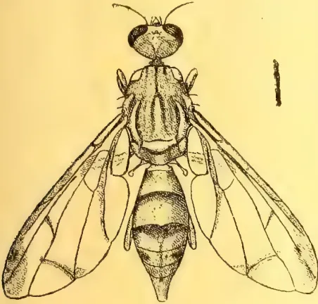
'Cucumber Fly' (Dacus cucurbitae.)
Enlarged by diameters.
Very little attention seems to be paid to the ravages of these flies in Ceylon. Though quantities of good fruit is spoiled, year by year, no systematic attempts have been undertaken to mitigate the pest. This apathy is due principally to the fact that fruit growing is not a commercial industry in the Island. Private growers appear to accept the damage as inevitable, or as part of the 'Curse of Adam.' The maggoty fruit is allowed to rot on the ground, permitting the full-fed grubs to emerge and pupate in the soil, whence fresh swarms of the destructive flies are produced.
The systematic collection and destruction of the infested fruit is of the greatest importance in combating the pest. Wormy fruit usually falls prematurely, and should be collected regularly, day by day. With regard to the disposal of the damaged fruit, Mr. W. W. Frogatt—in a comprehensive report on the fruit fly pest—says that "it is preferable to destroy the fruit by burning, but it may be disposed of by burial, and when buried it should be covered with at least 20 inches of soil." Another method of disposal, which may be convenient in some cases, is to sink the fruit in water and leave it there. This plan was adopted in Bermuda, where the infested fruit was enclosed in sacks, weighted with stones and dumped in the sea. Where fallen fruit has been permitted to
remain long enough for the maggots to escape, the soil should be forked and fowls allowed the run of the orchard.
Infested cucumbers and marrows do not fall off, but rot on the stem. The presence of eggs or maggots may be detected by a gummy excretion from the punctures. All such wounded fruit should be removed and destroyed at once.
In a vegetable garden, cucumbers and marrows may be preserved from attack by enclosing them in muslin bags. It should be remembered that the flies will attack the fruit when still quite small, so the bags should be applied immediately after the flower has withered, taking care that they are of sufficient size to permit of the full development of the fruit. The bags should be tied round the stalk of the fruit, but not so tightly as to interfere with the circulation of sap. This may be prevented by inserting some cotton-wool in the mouth of the bag.
Besides the flies of the genus Dacus, we have a species of Ceratitidis which has a different habit. For many years it was observed that a large proportion of the new shoots of the Giant Bamboos—in the Peradeniya Gardens—failed to develop, but rotted off when only from two to three feet high. This has now been proved to be the work of the fly Ceratitidis striata which breeds in enormous numbers in the succulent shoots. The only practical means of combating this pest is to remove and destroy every shoot as soon as it is found to be infested. This is not difficult to determine; as such shoots decay very rapidly and will break off with a slight push. Where bamboos are growing on river banks, the damaged shoots could be merely thrown into the water. They are heavier than water and do not require any weighting to sink them.
Several methods have been employed for the destruction of the adult flies. Froggatt mentions that certain species of fruit flies are strongly attracted by the scent of citronella oil, and that kerosene even has some attractions; but that the cucumber fly is unsusceptible to this odour. By exposing shallow trays of kerosene in the vicinity of fruit trees large numbers of the insects have been trapped. A mixture of kerosene and citronella should be still more effective. The flies fall into the mixture and are drowned.
It has also been observed that all fruit flies are fond of sweets and may be killed by exposing poisoned baits. Mr. C. W. Mally has perfected this treatment in South Africa, and claims to have completely protected orchards (at
31 Live Stock.242[SEPTEMBER, 1911.a cost of 4d. per tree) by repeatedly spraying them with a mixture of lb. Arsenate of Lead and 3 lbs. sugar in five gallons of water. The spray is made to fall in fine drops on to the foliage, where it is quickly discovered by the flies. Spray pumps are necessary for the treatment of orchards, but single trees can be effectively sprinkled by means of an ordinary garden syringe. The spray from the syringe should be directed up into the air and allowed to fall—like fine rain—upon the foliage.
Attempts have been made to combat the pest by means of natural parasites, and Mr. Compere (of West Australia) claims to have discovered various useful insects of this kind. But Froggatt, who has studied the question very closely, throws some doubt upon the reliability of Compere's observations. Lounsbury and Fuller (of South Africa) have also investigated the subject very thoroughly, and came to the conclusion that the
supposed natural enemies afford no appreciable check to the pest.
Various species of the Fruit Fly are troublesome in other countries. Amongst these, the following are the more notorious:—Dacus oleæ, Rossi, destructive to Olives along the Mediterranean shores of Europe; Dacus tryoni, Frogg., attacking peaches, nectarines, etc., in Queensland, Australia; Dacus persicæ, Bigot, bred from peaches in India; Ceratitis capitata, Wied., a serious pest of oranges in Southern Europe, Australia and New Zealand; Ceratitis punctata, Wied., breeding in Cacao pods in Uganda; Trypeta ludens, Loew, damaging oranges, mangoes, etc. in Mexico; Trypeta pomonella, Walsh, an apple pest in the United States; Trypeta muscæ, Frogg., in bananas from the New Hebrides. We may congratulate ourselves that neither the cacao nor the banana species are known in Ceylon.
The last issue of the Philippine Agricultural Review to hand contains the report of C. G. Thompson, D. V. M., of the Bureau of Agriculture, on the recent outbreak of rinderpest in Davao District and the means taken to eradicate it. The report, which is a chronicle of work well done, follows:—
In accordance with travel orders dated December 3, 1910, I sailed from Manila with Mr. R. E. Burris on the United States Army transport Seward on December 4, and arrived at Zamboanga on December 7. I immediately presented my letter of introduction to Brigadier-General John J. Pershing, governor of the Moro Province, and in conference with him and Colonel Richard, the provincial health officer, discussed the Davao situation at some length. Very little was known in Zamboanga at that time as to the nature or extent of the outbreak, but both Brigadier-General Pershing and Colonel Richard realize the menace presented by the existence of rinderpest infection in the Moro Province, and assured me that they would support us in any reasonable measures which we might recommend, providing such measures offered some hope of success.
With Brigadier-General Pershing we sailed on the U. S. Army cutter Samar on December 10, arriving at Davao
December 14. After several days spent in studying local conditions as to the extent of the infection, distribution of susceptible animals, avenues of animal travel, and the distribution of Scouts and Constabulary for quarantine work, I submitted a letter to the governor of the Moro Province recommending that the sum of $7,500 be made available for transportation and indemnification of owners for slaughtered animals. In response I was informed that no funds could be made available at that time for the purpose of indemnification, but authorization was made for reasonable expenditure for transportation. I secured a small launch and used it almost constantly during my stay in Davao.
In the letter to the governor of the Moro Province, above mentioned, I submitted copies of ordinances covering certain quarantine provisions necessitated by local conditions and not anticipated in Act No. 1760 or the acts of the Moro Province. Emergency health ordinance No. 1, passed by the provincial board of health on January 1, 1911, covered the desired points.
After a very careful study of the situation, I became convinced that only by the most drastic measures could the eradication of the infection be accomplished. The outbreak had already encompassed an area of over 150 square miles. The infection was of the most virulent type, and the rugged nature of
SEPTEMBER, 1911.]243Live Stock.the country made operations difficult in the extreme. Accordingly, fortified with the Insular and provincial laws, we proceeded to institute and enforce the most rigid restriction of the movement of all classes of domestic animals, to kill all animals found infected, and other susceptible animals considered as being directly exposed to infection. My first concern was to guard against further spread of the disease. This was accomplished by establishing a series of Scouts patrols well beyond the most remote known infections, to prevent the escape of any animal from within the infected zone. Detachments of Scouts were then stationed in the barrios within the infected area to tie up or corral every carabao, head of cattle, horse, pig, goat, and dog. Before taking stations, the quarantine detachments were given brief instructions as to the nature of the disease, conditions tending toward its spread, and the nature of their duties, which consisted, briefly, in taking an accurate census of all classes of domestic animals in their districts, securing them in corrals or by ropes, and inspections twice daily to insure against their movement and detect infection. From certain barrios detachments were sent morning and afternoon to patrol the trails running from the coast to the mountains in order to prevent the movement of animals north or south. Written reports were submitted at my office in Davao every Wednesday and Saturday, and an immediate report was made of new developments of any nature.
The quarantine regulations provided for the absolute restriction of the movement of animals within the infected area excepting in the town of Davao, where horses and dogs were permitted in the streets. It was desirable to permit the use of horses, because practically all of the shipping interests are centered in Davao, it was therefore necessary to make some provision for the transportation of merchandise. Very little hardship or inconvenience was caused by rigid quarantine in the outlying districts, as most of the towns and plantations are located on the shores of the Gulf of Davao, and transportation is mostly by launch or native boat. The hacenderos did not suffer through the enforced idleness of their carabaos and cattle, as very little land is cultivated. I considered it best to tie up horses and dogs outside of the town of Davao, because they present some little danger as infection carriers, and in view of the drastic measures taken, we could not afford to overlook even such agents of infection.
I made inspections of the detachments in the infected area nearly every day,
and of the more remote posts as often as possible to stimulate interest in the work, to further instruct the soldiers, and to keep in touch with the changing conditions. On all of these trips of inspection I was accompanied by a ranking Scout sergeant, through whom I issued all orders, also by a Constabulary private, who arrested the men whom it was occasionally necessary to prosecute.
The infected area was limited on the north by a creek near the barrio of Ylang, on the south by the Taloma River, on the east by the sea, and on the west by the Apo mountain range. Many of the animals in the barrio of Taloma were infected, and this condition presented a grave danger to the large herds to the south; therefore, our first efforts were directed toward cleaning up this district. In all of the work, the scheme of daily inspection, the absolute prohibition of the movement of all classes of domestic animals, the immediate slaughter of all sick and directly exposed animals with a thorough chemical disinfection of contaminated corrals and wallows, was carried out as thoroughly as possible.
The enforcement of the quarantine of carabaos and cattle in the town of Davao proper interfered seriously with business, so it was desirable to hasten the accomplishment of the task there. Accordingly, I had Mr. Burris remain in Davao much of the time for the first few weeks. No soldiers were used in the town of Davao, as two efficient native policemen were detailed for the service by the municipal president, Lieutenant W. H. Dade. The infection in Davao yielded readily to the measures initiated, so that during the last week in January it was possible to relieve a few work carabaos and cattle on pass and under guard from quarantine during the days just preceding and following the arrival of boats. The quarantine provisions against horses and dogs were, of course, never enforced in the town of Davao for obvious reasons.
No animals were slaughtered except under my personal direction with the exception of a few suspected cases which I directed Mr. Burris to destroy whenever unmistakable symptoms developed. In almost every case the owners readily consented to the slaughter, and there were but few exceptions. I recorded the names of owners, the class of animals, estimated the value of all animals slaughtered, and in accordance with the laws of the province submitted this list to the district governor. No provision has been made for the indemnification of these owners. In my
Live Stock.244[SEPTEMBER, 1911.report to Brigadier-General Pershing I recommended that payment be made for part of the value of these animals. The provincial authorities fully realize the justice of such payments, but in view of its revenue available the province is not able to reimburse the owners.
As a result of the methods instituted no cases of rinderpest developed in the town of Davao after January 16 and none in Taloma after January 12. The cases in Taloma were the last discovered south of the Davao River, so from the middle of January we were able to concentrate our efforts on the district north of the river. Considerable losses were sustained in this district during the latter half of January due to infection occurring among animals at Sasa and at Panacan. The disease persisted in these two barrios until February 2, but offered no danger to other animals as they were secured under guard and subject to daily inspection.
The last case appeared on February 2 and the quarantine was maintained in full force until March 2 in accordance with the plan decided upon during the inspection trip of the Director of Agriculture to Davao on February 17.
Realizing that some danger remains through undiscovered cases and contamination of wallows and swamp lands, we have closed the heavily infected trail between Taloma and Davao against use by carabaos and cattle, and by municipal ordinances have warned the people not to pasture their susceptible animals in certain sections.
Lieutenant Dade, president and district health officer of Davao, has consented, at my request, to maintain Constabulary patrols who will inspect the cattle of the infected area twice weekly to make sure of prompt detection if the disease reappears, and to enforce the quarantine on this trail.
To the best of my knowledge the total loss sustained by the district of Davao during this epizootic was 2,535 cattle and 133 carabaos, a total of 2,668 animals. Of these 372 died after our arrival on December 14, 1910, and about 200 of the 372 died during the first week before I was familiar with the conditions. Of the 372 only 82 were slaughtered as "exposed" or "infected." The term "exposed" signifies that the animals were considered as being in the incubation stage of the disease.
The success attending this work may be attributed principally to three factors:—
(a) Adequate laws and ordinances of the province, which coupled with the influence of the officials, enabled us to maintain the necessary rigid quarantine and to accomplish the slaughter of infected and exposed animals.
(b) The satisfactory transportation which permitted constant inspection of suspects, thus rendering their slaughter possible in the incubation period before they became highly infectious.
(c) The use of the Philippine Scouts, who proved to be a most efficient arm for effective quarantine service.
The work of the Scouts cannot be commended too highly. They followed instructions implicitly and intelligently, took a keen interest in the work and refrained from abusing their authority. I feel confident that the situation could not have been handled successfully if their services had not been available.
I received the most cordial support and co-operation from all of the officials with whom I came in contact, and I am especially indebted to Lieutenant Dade who, as municipal president, exerted an invaluable influence.
Efforts to trace the source from which the infection entered the district were unsuccessful. The original supposition that it was carried down from Surigao by deer or wild hogs as hosts, was not supported by fact, as no infection was discovered among wild animals. I tried to secure deer for exposure to infection that their susceptibility might be demonstrated conclusively, but did not succeed in obtaining subjects until the infection had subsided. I am of the opinion that the infection was introduced into the town of Davao through importation from Cebu, and that it smoldered there several months before enough animals had succumbed to provoke its recognition as an epizootic. The first case was observed by Lieutenant Dade on October, 8, 1910, in the town of Davao. Later it spread across the river into the large herds in the adjacent fields.
While in Davao, the Director of Agriculture directed that I investigate the eastern coast of Mindanao as to the existence of rinderpest, provided I could make the trip within a reasonable period of time. The conditions were such that I considered it inadvisable to leave Davao for this purpose. Lieut. H. H. Smith consented to perform this task, and his report shows that no disease exists within the region.
SEPTEMBER, 1911.]245(From the Indian Agriculturist, Vol. XXXVI., March 1, 1911, No. 3.)
The ignorance of movements for the elevation of the ryot which prevails among a class of Bengali publicists is well illustrated by the violent contradiction by a local newspaper of our statement that the educated classes have displayed a lack of interest in the formation of co-operative credit societies. This apathy is a matter of common knowledge, and it has been repeatedly referred to in the annual reports of the Registrars as well as in the resolutions issued by the Government. In the latest of these Resolutions, published in September of last year, Sir Edward Baker made pointed reference to the subject. "The Lieutenant-Governor," it was stated, "regrets to note that the number of non-official workers is still small, and that men with influence in the districts are, on the whole, apathetic. While cordially expressing his obligation to the small band of non-officials who are furthering the movement, and without whose assistance no progress would have been possible, His Honour desires again to emphasise the increasing need of non-official organisers." In his annual report for the year 1909-10, moreover, Mr. J. M. Mitra, Officiating Registrar of Co-operative Credit Societies, pointed out that while the villagers had shown readiness to combine, and marked capacity for united action, a lack of support from the educated classes checked the progress of co-operation. "Although," wrote Mr. Mitra; "there is evidence that the public is giving greater attention to the movement than before, it is very discouraging that on the whole the leaders of the Indian community should be so slow to realise the immense potentialities and power for good which the movement possesses." A striking indication of the apathy complained of is furnished by the fact that out of the nine honorary organisers in Bengal at the period of the publication of the report, no fewer than six bore European names. Where Indians of standing have come forward to assist, the result has proved highly beneficial. Mr. Mitra observes, for example, that the rural societies in the vicinity of Ranchi, as well as the Ranchi Union of societies, owe their origin to the energy and enthusiasm of Babu Radha Govinda Chowdhuri of the
Ranchi Bar, and he adds, "if we could get a sincere worker like him in every district, the movement would rapidly extend. This is the crux of the question, and it is to be hoped that after the praiseworthy appeal to his countrymen by Mr. Saroda Charan Mitter at Midnapore, there will now be a disposition on the part of the educated classes to assist a movement which promises to bring economic salvation to the ryot. In spite of the indifference which has prevailed among the more favoured members of the community, co-operation has made considerable progress, and its fruits are in many cases of a most remarkable character. The primary object of the Co-operative Credit Society is to relieve the cultivator of the burden of usury, but it is not merely accomplishing this desirable object. In the report to which we have alluded Mr. Mitra cited many cases where arbitration by societies was taking the place of costly litigation, and he also quoted an instance where a village society was contributing to the maintenance of a Middle English school. "In Khulna," wrote the Officiating Registrar, "one of the effects of the societies is a growing demand for night and vernacular schools. In several districts the societies have risen to arbitration of village disputes. In one or two cases they have taken up successfully the question of the village sanitation. One can see in these institutions the beginnings of the revival of the old village communities, the disappearance of which as a factor in the political organisation of the country everyone deplores." We have here a glimpse of the possibilities of co-operative credit which is calculated to appeal with eloquent force to every patriotic Indian. But in order to make the picture a living reality, intelligent work and persistent application will be required. Lip service and vague and grandiloquent expressions of sympathy with "the people" are worthless offerings which will not contribute one iota towards improving the lot of the ryot. We hope and believe that full recognition will be given to these considerations by an increasing proportion of educated men who possess the time and ability requisite for advancing this beneficent movement.
Agricultural Finance & Co-operation. 246[SEPTEMBER, 1911,BELGIUM.HOUSEKEEPERS' CLUBS.We reproduce the following information from the Bulletin of Economic and Social Intelligence (31st. May, 1911) published by the International Institute of Agriculture.
The beneficent influence women may exercise in the field of rural economics is now universally recognised; but up to the present their participation in agricultural concerns has only been exemplified in individual cases, without there being any special organ uniting these new forces for definite and continuous action.
Belgium, a land very fruitful in social experiments, has been among the first to give us an example of what may be effected by the organization of the farm women. Side by side with the very numerous agricultural associations, the large majority composed of men, in the last five years there have appeared in this country, where they have rapidly extended themselves, also the so-called housekeepers' clubs of which Canada furnished the first example.
The principal motive for the foundation of such institutions was the desire of arresting the exodus from the country that is continually assuming more alarming proportions, and now has extended to the women.
It was thought that one of the most effective means for combatting this movement would be to appeal directly to the women, to the mothers, and induce them to appreciate the advantages of country life, and warn them against the dangers and disappointments of the city, as well as to supply them with professional education, by means of which they may become better fitted for the occupations specially entrusted to them, such as the work of the dairies, farm yards, gardens, etc.
The itinerant housekeeping schools that have now been many years at work, have already in part provided for this need; but it was necessary that their work should not be lost.
For this purpose, the farm women had to be united in permanent associations. Thus, there arose in 1906 the first farm women's clubs, which rapidly extending themselves throughout the whole of Belgium, and especially through the efforts of the Catholic party, now have reached the number of 75 and contain 7,000 members.
Their organization is simple. Members are recruited among the housekeepers of
the neighbourhood, during the term of the agricultural women's school, with the help of the pupils themselves, and so the club is formed. The club is managed by a President, two Vice-Presidents, three Councillors and a Secretary and Treasurer. The contribution to the club is 50c. Out of the fund so formed the needs of the club are provided for and articles of domestic utility, selected seeds, etc., are purchased.
At the time of the meetings which are held four or five times a year, lectures are given, agricultural competitions are held, and practical lessons are also given. Almost all these clubs possess libraries composed of books on domestic economy—hygiene, agriculture, dairy work, cattle, rearing, etc. Two papers, the Fermière (Farm woman) for the Wallon districts and the Boerin for the Flemish districts, are the most widely diffused organs for the extension of this movement.
The results attained by these interesting women's organizations have been very happy: the housekeepers attend the meetings most assiduously, take a lively interest in the lectures and derive great profit from them: as appears in no doubtful manner in the remarkable progress already observed in the rearing of fowls, in cheesemaking, gardening, manufacture of preserves, in every department, finally, in which women's influence is sensibly exercised.
(Summarised from the Bulletin of Economic and Social Intelligence of the I.I. of A. Year II., No. 5, 31st May, 1911.)
BULGARIA.THE WORK OF AGRICULTURAL CREDIT.There are three institutions in Bulgaria which more particularly provide for agricultural credit: the National Bank of Bulgaria, the Agricultural Bank and the Co-operative Society for Agricultural Credit. The National Bank, which is a State institution founded in 1870 under the provisional Russian Government, grants loans to farmers, either directly or indirectly, through the Agricultural Bank; in fact, in 1908, it received in deposit or discounted 2,217 bills for farmers for 1,459,962.54 Fr., and granted loans to the Agricultural Bank to the amount of 1,116,916.26 Fr.
The real institution for agricultural credit, however, is the "Bulgarian Agricultural Bank," which has branches throughout the Kingdom in the chief towns of 85 districts, and agencies in 75 of the principal villages. It was insti-
SEPTEMBER, 1911.]247 Agricultural Finance & Co-operation.tuted by a law passed on January 15th, 1904, which arranged for the amalgamation of the old urban banks founded in 1863 at the time of the Turkish domination and transformed into agricultural banks in 1878 by the Russian Government.
Thus, in the course of a few decades this institution has passed from a collection of primitive institutions into a bank of a modern type, which, while it has adopted the principles of other banks operating in the remainder of Europe, is distinguished from them by some special characteristics, thus constituting a type by itself. This makes it especially worthy of study, and we therefore refer our readers to a long article on the Bulgarian Agricultural Bank which appeared in the June number of the Bulletin of Economic and Social Intelligence published by the International Institute of Agriculture.
A few figures will be sufficient to demonstrate the importance of the Bulgarian Bank. In 1908 it had a capital of 40,241,159.41 Fr., 3,731,509.64 Fr. of which was represented by the reserve fund. In spite of the heavy losses caused by debtors who failed during the year, it realised a gross profit of 11,129,057.22 Fr. and a net profit of 3,134,850.64 Fr. There were 793,232 operations carried out during the year for a sum total of 1,161,951,569.18 Fr.
The greater number of the loans granted were for small sums, in conformity with the law of 1904; in fact, most of them ranged between 100 and 500 Fr., which shows the enormous benefit of the bank to the small farmer class.
We must give a few words to the third form of agricultural credit institution: the small co-operative society. These institutions began to arise in 1896 and developed so rapidly that there were already 493 in 1908, most of them being of the Raiffeisen type.
Their growth is more particularly due to the action of the Agricultural Bank, which at once realised the great importance of these local Banks and worked assiduously to encourage their development, founding new banks, aiding those already in existence, organising them and supervising their working. In 1908 there were in Bulgaria 384 rural banks of the Raiffeisen type supervised and accredited by the Bulgarian Agricultural Bank; their members numbered 28,744, and they had granted loans to the sum of 8,150,537 Fr., receiving in their turn 1,517,593 Fr. in loans from the Agricultural Banks.
These local credit co-operative societies, distributed about in the smaller centres, have been successful in ridding their districts of the scourge of usury which was weighing so heavily on the peasants and small farmers of Bulgaria.
(Summarised from the Bulletin of the Bureau of Economic and Social Intelligence of the International Institute of Agriculture, 2nd Year, No. 6.)
During the last decade the associations for the production and sale of olive oil have developed considerably in the oil regions of Provence and Languedoc.
For some time past there had been a serious crisis in the olive-growing industry, which was primarily due to the competition of foreign oils from oil seeds. On the other hand, as the olive growers had no suitable machinery at disposal—they were able at most to count on rough wooden presses—they found themselves at the mercy of speculators and the proprietors of more or less improved oil-works, whose whole interest lay in keeping back as much oil as possible in the olive husks, which became their property after the oil had been expressed. The natural result was that the growers received but a small quantity of oil of a poor quality from their olives, which was unequal to the competition on the market.
The June number of the Bulletin of Economic and Social Intelligence, published by the International Institute of Agriculture, contains an interesting study on the first steps made in this field by co-operation, on its development and its future. We give the following summary of the main points dealt with in the article:—
In 1900, the first group of olive growers was formed at Codoux (Bouches-du-Rhône), and gave the happiest results. This example was soon followed by the growers of Cabris and Gilette (Maritime Alps), who set up some model oil-works. The movement spread rapidly, encouraged by the Government, and at the end of 1910 there were no less than 20 co-operative oil-works in the South of France.
The Government aids the movement in various ways, by spreading the principles of co-operation and technical instruction, granting fiscal immunities or subsidies, and granting loans at a low interest through the Mutual Agricultural
Agricultural Finance & Co-operation. 248[SEPTEMBER, 1911.Credit Banks of the various districts, in accordance with the law of December 29th, 1906. These loans are granted for a maximum period of 25 years up to double the amount of the paid-up capital, at an interest not exceeding 2 %.
In 1910 as many as eleven co-operative oil-works had received low-interest loans for sums varying from 4,000 to 45,000 fr., the total sum advanced being 170,000 fr.
The co-operative oil-works have as a rule an average of about a hundred members, each extract annually from 40 to 150 double decalitres of olive oil. Several systems of plant are used: some societies buy or rent an old olive mill and bring it up-to-date, others buy suitable premises or have them built, and furnish them with a complete plant, while others have the necessary premises presented to them by the Commune, an association or some private benefactor.
In the first case, it is estimated that the sum required for the installation and working of a small model oil-works varies between 20,000 and 30,000 fr., that is, 12,000 fr. for the building, from 8,000 to 10,000 for the machinery, and from 300 to 5,000 for the various expenses and the initial circulation fund.
The Co-operative Oil-works of Grasse (Maritime Alps), which has at the present day a capital of 18,700 fr., has acquired a large oil-works furnished with the apparatus for the extraction of the oil from the husks and worked by hydraulic power; the entire plant cost 47,000 fr. In order to meet this expenditure, the society obtained a loan of 30,000 fr. from the Regional Bank of Mentone at the rate of 2 % and repayable in twenty years.
Among the more important co-operative oil-works we may mention the "Travailleur" of Cotignac (Var), which has a capital of 10,625 fr. divided in 25 fr. shares yielding an interest of 3.60 %. This society had a loan of 25,250 fr. for twenty years at the rate of 1.50 %. Its steam plant cost 45,350 fr. and can treat sixty double decalitres of olives per hour.
According to recent information, the movement appears to be extending to Algiers.
Considerable advantage has already been obtained from co-operation in this branch of industry, both from the technical and economic point of view. The double decalitre of olives which now produces an average of 2.3 to 2.6 litres of oil, that is, from 3 fr. to 3.25 fr., gives a return of from 50 centimes to 75 centimes more than formerly, and by utilising the secondary products it has been found
possible not only to cover the expenses of manufacture, but also to pay the interest on the loan.
We are not wrong therefore in feeling sure that co-operation will contribute largely to the resuscitation of the oil industry on the Mediterranean coast of France.
(Summarised from the Bulletin of the Bureau of Economic and Social Intelligence of the International Institute of Agriculture, 2nd Year, No. 6.)
The Italian Government, rightly thinking that the co-operative distributive societies might do much to lessen the increasing rise in the price of food, presented a Bill to the Chamber of Deputies on March 9th, 1911, which contains special provisions for the benefit of these co-operative societies.
The principal provision of this Bill (which was examined in the last number of the Bulletin of Economic and Social Intelligence, published in June, 1911, by the International Institute of Agriculture) is that exempting the dividends which the co-operative distributive societies pay to their customers in proportion to the purchases made from the tax on personal property, these dividends being considered as the customers' automatic savings.
The dividends relinquished by the persons who have a right to them, that is, the sums which are not withdrawn or left on deposit with the society for the purchase of new shares, and which therefore become the property of the society, do not benefit by this provision.
Another important concession is the reduction of the stamp duty to two-thirds of the present amount, that is, to 20 centimes for each share certificate or other document representing value issued by the society for an amount not exceeding 100 fr.
The first provision satisfies an old desire of the co-operative society, whose body of members and customers will undoubtedly increase as a result of this benefit, thus enabling the society to give larger dividends or to sell at a lower price.
(Summarised from the Bulletin of the Bureau of Economic and Social Intelligence of the International Institute of Agriculture, 2nd Year, No. 6.)
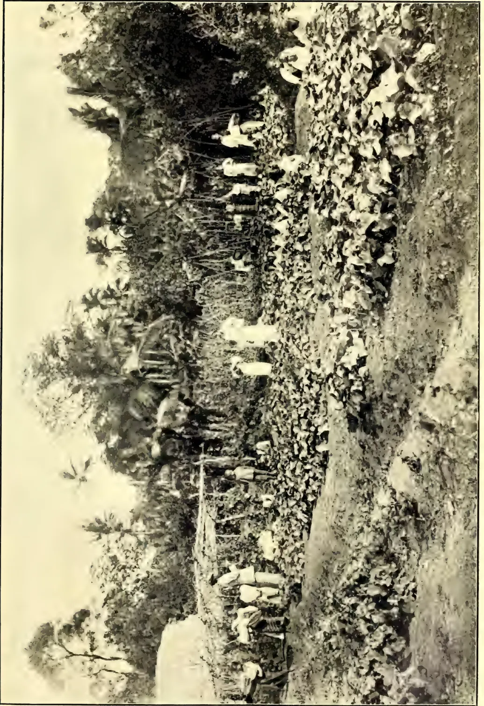
GIRLS' SCHOOL GARDEN, BALANGODA.
Page 249.
This image is a scan of a blank page. The paper has a light cream or off-white color with a slightly textured appearance. There are a few very small, faint dark spots scattered across the surface, which appear to be scanning artifacts or minor imperfections in the paper. No text, lines, or other markings are present. SEPTEMBER, 1911.]249Education.(From the Manila Bulletin,
June 7, 1911.)
With the establishment of an Agricultural Bank in the Philippines and the small amount of business that has been done by the same since its inauguration four years ago, the system in vogue in Australia for state loans to settlers, for assisting agricultural and pastoral settlers will prove of special interest.
In 1899 the Government of New South Wales, recognizing that some assistance was needed to restore prosperity to the large section of the farming community, which had suffered serious loss by drought, inaugurated a system of advances to settlers on lines similar to those followed by the Credit Foncier of France. The Act providing for this project, passed in 1899, was frequently amended, until in 1906 the powers of the Board, which until then had managed the whole undertaking of advances to settlers, were transferred to the Commissioners of the Government Savings Bank of the State, and the maximum and minimum advances were then fixed, and have since so remained at £2,000 ($9,733) and £50,000 ($243,325) respectively.
The popularity and success of this scheme can well be gauged by the fact that up to December 31, 1909, 8,456 advances, totaling £1,362,854 ($6,632,329) were made to settlers, averaging £161 ($784) per loan. Of this total, 4,833 advances, representing £566,102 ($2,751,935), had been repaid at the date mentioned.
leaving 3,623 advances current. The average balance of principal was £220 ($1,070) per loan.
In explanation of the real purpose of these advances, and the terms of their granting, the Commissioners are empowered to make advances upon mortgages of land in fee simple or of land held under conditional purchase or lease, settlement purchase or lease, or homestead grant or selection. The advances are made for repaying existing encumbrances, purchasing land, or to effect improvements, develop resources, or build homes.
The conditions under which loans are repayable vary according to the circumstances of the individual case; the maximum loan to any one person is £2,000 ($9,733), the rate of interest ranging between 4½ and 5 per cent.; and the maximum period for repayment is 31 years.
It is clear that the system is intended to confer and does afford material assistance to men who contemplate settling on the land, as well as to those already engaged in agriculture, but necessarily this system was not initiated to meet every instance in which farmers might require credit, usually in relatively small amounts, and for a comparatively short period. To effect this object it is felt by certain responsible local authorities that a system should be established in New South Wales, on the lines of a co-operative bank or borrowers' association, with the sole object of obtaining credit at low cost for its members, with adequate protection of their security on the plan of the co-operative loan organizations which have been introduced satisfactorily in Europe, and of which the best example is said to exist in the Raiffeisen banks of Germany.
It is satisfactory to find that the School Garden movement is gradually spreading to the Government Girls' Vernacular Schools of the Island. One of the first to take it up was the Kumbaloluwa girls' school, since when a number of others have followed suit, e.g., Mugurugampola, Kirinidiwela, Handapangoda, etc.
The illustration published in the present issue is of a garden at Balangoda girls' school, where the head teacher, in
spite of serious drawbacks, is showing good work. The land on which the school stands unfortunately does not belong to the Crown, and hence many difficulties have arisen. It is hoped, however, that before long a Crown site will be available. It is rather an unusual sight to see Sinhalese girls doing garden work under the supervision of their teacher. The development of school gardening in the direction of girls' schools speaks well for the popularity of the scheme, and presages a new era in village life in Ceylon.
C. D.,
32 250[SEPTEMBER, 1911.Minutes of a meeting of the Board of Agriculture, held at the Council Chamber at noon on Monday, the 14th August, 1911.
His Excellency the Acting Governor presided.
There were also present:—The Hon'ble Messrs. L. W. Booth, Bernard Senior, and C. T. D. Vigors, Drs. J. C. Willis and R. H. Lock, Messrs. G. M. Lushington, R. S. Templeton, William Dunuville, J. H. Meedeniya, James Peiris, Francis Daniel and C. Drieberg (Secretary).
The Minutes of the last meeting held on April 12th were read and confirmed.
Progress Report No. 55 was adopted.
Reports by Mr. vanLeenhoff and Mr. Cowan on the Tobacco Experiment at Mahailupalama were submitted. A discussion followed in which the President, Dr. Willis, Mr. Booth, Mr. Vigors and Mr. Lushington took part. On the motion of Mr. James Peiris, seconded by Mr. Daniel, the question as to whether the experiment should be continued under the same conditions was referred back to the Tobacco Committee for their recommendation.
Dr. Lock read his paper on "Experiments bearing on the Cultivation of Paddy," and was accorded a vote of thanks.
C. DRIEBERG,
Secretary, C.A.S.
BY PROFESSOR FRANCIS RAMALEY,
University of Colorado.
"An English glass house glorified" is the description which a British friend of the writer gave to the garden at Peradeniya, Ceylon. And such it truly is. The brilliant foliage, the strange orchids and pitcher plants, the luxuriant ferns, the uncanny screwpines, are just what one might see in a gentleman's conservatory—only more wonderful and luxuriant, grown taller and more fair. As a "show place" these gardens are not equalled anywhere in the world, and as a place of scientific interest to botanists there are few rivals. Haeckel, the German zoologist and philosopher, said of his visit to Peradeniya that, in the four days which he spent there, he learn-
ed more botany than he could have learned at home in as many months of hard study.*
Ceylon has been described as a "dew-drop on the brow of India," and, so far as position is concerned, it is certainly very closely related to the Indian peninsula. In climate, too, and in the flora and fauna, the northern part of the island is strikingly Indian; the same may be said of the inhabitants. On the other hand, southern and central Ceylon has a climate of its own, and the people as well as the plants and animals are quite different.
Peradeniya is situated in the centre of Ceylon, about seventy miles by rail from Colombo, the capital of the island. There is no town here, but only a post-office and a few scattered huts. The city of Kandy, however, is only three miles distant by rail or wagon road.
In going from Colombo to Peradeniya the trains are slow, but the traveller does not complain. Indeed, he would wish his journey lengthened, for the trip affords a four-hour introduction to tropical scenery which is nowhere surpassed. Any one can enjoy the journey whether interested in the world of nature or in his fellow man. There are broad lowlands with coconut trees and fields of rice, alternating with patches of deep jungle in which the natives have cleared bits of ground and built their huts. In the higher altitudes tea fields and chocolate plantations are the rule. But here also are stretches of uncleared forest with trees of all heights and size, frequently some with handsome red or violet coloured flowers standing out boldly amid a mass of dark green.
The garden at Peradeniya is only one of a number on the island. It is, however, the largest and most important. Here are the offices of the Director of the Gardens, whose duties correspond to those of a Government Secretary of Agriculture. Other gardens and experiment stations, five in number, are established in parts of the island where differences in climate furnish altered conditions for plant life.
The Peradeniya garden is in the wet zone, or area of natural rain forest, at an altitude of 1,600 feet above the sea. With an annual precipitation of about 90 inches and a mean temperature of 75° Fahrenheit, there are furnished the necessary conditions for luxuriant plant growth. A "dry season," extending
* Haeckel, "India and Ceylon," Ch. VI.
SEPTEMBER, 1911.]251Miscellaneous.through February, March and April, limits the growth of air plants hanging from trees, so that in this respect Peradeniya is not so interesting as Buitenzorg, in Java. The "dry season" is, however, not long enough to interfere with the growth of most plants, and nearly all of the trees retain their leaves through this period. It is quite otherwise in the arid districts of northern Ceylon, where a monsoon forest with a considerable number of deciduous trees is the natural plant formation. Peradeniya, though rather too cool for coconuts or Para rubber, has a climate well suited to Castilloa rubber and to tea and chocolate, while palms of nearly all kinds thrive to perfection.
The garden was not originally laid out according to any system of plant classification, but was rather a beautiful park in which trees were planted for landscape effect. Now, however, the Director,* is developing the garden according to systematic plans and making definite groups of plant families. Thus there are at present well-arranged plots devoted to palms, others to screw pines, others to cycads. It will necessarily be many years before the new plan can be fully carried out, for most of the plants in a tropical garden are trees. Indeed, the herbaceous garden forms but a small part of the whole.
Here, as in any first-class garden of the tropics, much is very new and strange to the botanist from temperate climes. Palms, screw pines, giant bamboos, orchids and tree ferns which he has known hitherto only from books or from the puny specimens of the plant house, become the commonplaces of every-day life. The sight of trees of the Composite family, Verbena family and many other groups represented at home only by herbs opens the eyes to some of the real wonders of tropical plant life. An interesting example is that of the "potato tree" belonging to the nightshade family. It does not produce potatoes, but its flower resembles that of a potato very much enlarged. At home we think of the nightshade family including only herbs and vines, but in the tropics it includes trees as large as our ordinary shade trees, such as elm and maple.
Nearly every kind of plant will grow at Peradeniya; tropical and sub-tropical plants very well indeed; temperate plants for the most part indifferently well. The latter are, however, taken care of at the mountain garden at Hakgala where the higher altitude (5,500
feet) gives them a climate resembling that of western Washington and Oregon. The comparative coolness of tropical highlands is well illustrated by Nuwara Eliya, a resort near Hakgala, where in the hotels a grate fire is lighted nearly every evening throughout the year.
While an attempt is made to grow in the gardens all of the plants which are native to Ceylon, a great many plants from other parts of the world are also to be seen there. Indeed, the wealth of tropical beauty is here assembled. The flame tree of Madagascar, named from the brilliant colour of the flowers, is a wondrous sight in March and April, the whole tree being a mass of red which hides the dark-green foliage. From India there is a tree, Saraca indica, with a profusion of brilliant orange-yellow flowers; and from tropical America various trees of the genus Brownea, especially interesting because of the graceful clusters of pendant young leaves. The leaves droop when young and tender, thus presenting very little surface for injury by the overhead sun. As they grow older a horizontal position is assumed and the red colour is lost. It is supposed that the red colouring matter acts as a screen which protects the living substance of the young leaves just as the red glass in a photographer's dark-room window protects the sensitive plates from injury by light.
Among the most interesting plants are the bamboos, of which many different kinds are cultivated, some native, others imported from peninsular India or from other parts of Asia. Some interesting studies have been made at the gardens on the rate of growth of bamboo stems. These spring up almost as if by magic. To measure the growth from day to day no expensive auxanometer is needed, but only a tape measure and a coolie to climb an adjacent tree with the end of the tape. A day's growth is measured not in millimeters but in feet or inches. Bamboo stems are hollow, as are most grasses—for bamboos are but grasses—and are wonderfully strong considering the weight and the amount of material in them. Indeed, the principle of the hollow cylinder so well known to engineers was long understood by the Asiatics, who use bamboos for building purposes.
Of economic plants in the garden there seems almost no end. The balmy breezes of Ceylon may well be spice-laden. Ceylon cinnamon is known the world over. The various peppers, as black pepper, long pepper, betel pepper, are woody climbers. A handsome grove of
* John C. Willis, M.A. (Camb.), F.L.S.
Miscellaneous.252[SEPTEMBER, 1911.nutmeg trees is planted near the entrance—the trees about seventy years old. On the ground under the trees may be found the seeds, i.e., the nutmegs, and around them a covering, the aril of the botanist, which forms the spice known as mace. Clove trees may be seen also; it is the young flower buds of the tree which are dried to make the cloves of commerce. In the garden one may see the plants which furnish vanilla, citronella oil, tea, indigo, pineapple, ramie, sisal hemp and sago. Almost countless trees there are of economic importance. A few may be named, as those which furnish coffee, chocolate, cola, coconut, Brazil nut, camphor, rubber, gamboge and other tropical products.
In speaking of economic plants mention must be made of the Experiment Station which is really a part of the garden, although situated across the river. As a matter of fact nearly all the world lies across the river from the Peradeniya Gardens, as these are situated in a bend of the stream which flows first north, then east, then south around the gardens. The Experiment Station was formerly a private estate bought by the gardens at a low price, because it had been allowed to run down and the chocolate trees nearly all became diseased. Scientific methods of tending and care have been introduced and a model plantation developed. Here experiments are made with new agricultural crops and with new methods of treatment. The different species of trees furnishing rubber are being tried as well as improved varieties of chocolate, cardomoms and other crops. Throughout Ceylon there is much general interest in scientific agriculture, and the Controller of the Experiment Station has the encouragement and moral support of the thinking population, both European and native. The daily newspapers at Colombo also give much attention to such matters and assume a sympathetic attitude toward Government scientific work, in refreshing contrast to many of the newspapers in this country.
An attractive plot at Peradeniya is the Kitchen Garden, in which are assembled such "vegetables" as will grow in that hot, moist climate. Many of our common vegetables do well and can be had at all seasons, for example, beans, beets, peas, celery, lettuce, and cress. Potatoes are generally small and poor. Sweet corn will grow in Ceylon, but has not thus far come into use. Of tropical vegetables various "yams" are much used, particularly by the natives. The word "yam" is applied to tubers
and thickened roots of many different species of plants. Eggplants, different from ours in the temperate zone, are cultivated, also certain plants used for "greens." Breadfruit trees produce the large heavy fruits of that name, but these would properly be classified among vegetables. Breadfruit is not much used by the British in Ceylon, who, in fact, eat chiefly the same things that they are accustomed to eat at home on their own tight little island.
Thus far we have been considering the attractions of the Peradeniya Gardens to the casual visitor. To the botanist they are even more interesting. Every facility is offered by the Director of the Gardens for investigation by visiting men of science. There is a good herbarium in charge of competent Curators and a working library of botanical books and periodicals. Good laboratory facilities are also offered. Although the laboratory for visitors is not fully equipped with physiological apparatus, there are the usual necessaries, and it is easy to obtain all ordinary supplies at Kandy or Colombo. Native joiners, tinsmiths and metal-workers can be secured at very low rates to make articles needed. Photographic materials may be obtained at Kandy, only three miles away, and skilled photographers may be engaged to develop negatives or do other photographic work such as making lantern slides.
Opportunities for securing museum material are excellent. Collections of tropical woods properly named are prepared to order by dealers in Kandy. Plant material may be collected from the garden and preserved in formaldehyde or alcohol. Herbarium specimens from the garden can be collected and dried, but the botanist will need to remember that nothing short of the most thorough drying will suffice. It will also be necessary to use a liberal amount of naphthalene scattered through the dry specimens at all times. A native plant collector is detailed by the Director of the Gardens to assist visiting botanists in getting material from either the garden or the jungle. This man is well acquainted with nearly all of the species in the garden or growing in the vicinity, and can usually tell the scientific name offhand, although sometimes he needs to refer to the herbarium. At the laboratory native assistants are provided who clean up apparatus and glassware and make themselves generally useful.
One of the most interesting things about Ceylon is the way in which the jungle comes to the very door of civili-
SEPTEMBER, 1911.]253Miscellaneous.zation. In our own country we do not find "backwoods" close to cities and towns, but must travel a long way from Boston or New York to find the primeval forest. Ceylon, however, like other tropical countries, furnishes examples of jungle in close proximity to the large towns. Indeed, everywhere throughout the island the forest is easily reached. There is no half-way land in Ceylon. That which is needed for roads, gardens or fields is well cared for; other land grows up quickly to jungle. Old fields, abandoned a few years, soon become a dense thicket and later a forest. This is well seen at Anuradhapura, one of the ruined cities in the north-central part of the island. Here, the Government Archaeologists, as they find various parts of buildings such as columns and arches, set them up in place; but sometimes they neglect to clear out the trees for a sufficient distance and their "finds" once more become overturned by growing roots or the stems of gigantic climbers.
So, where jungle is the rule, and clearings have to be protected, it is natural that the botanical gardens should have a patch of jungle. This is situated in the Experiment Station grounds, but easily reached by the visitor. Here may be seen the native trees of the region in their natural condition, and the visitor may get some idea of tropical luxuriance in the large number of species present on even a small tract of ground. It must be said, however, that a visit to this bit of jungle would be, to many visitors, a disappointment, for it is not filled with air plants hanging from the trees nor rendered impenetrable by interlacing stems of climbing plants. It is, however, much easier to travel through than the jungles at sea level in districts of great heat and humidity.
The botanist who is interested in ecology—the relation of the plant to its environment—is often on the lookout for field and roadside weeds. In temperate regions, particularly in the western United States, roadside weeds make a constant and striking feature of the landscape. This is not the case, as a rule, in the tropics. Indeed, there are not only rather few weeds, but few flowering herbs of any kind. The tropics are a region of big things and the herbaceous plants make little impression on the visitor. At the Peradeniya Garden, the writer noted a small area of perhaps half an acre that had been neglected for a time. Here, although there were many tree seedings started, there was a fairly good patch of weeds—enough to make a lonely American feel quite at home.
These weeds were chiefly Lantanas and some of our American composites, particularly the fleabane Erigeron and also Conyza.
It would be difficult to find elsewhere in the world an area the size of Ceylon, or even much larger, with so many different vegetation regions. The differences in these regions are brought about largely by the winds which determine the distribution of rainfall and by altitude with consequent temperature changes. The wet weather comes with the rains from two different directions. The north-east monsoon commences in October and brings heavy rains throughout the higher parts of the island and in the lowland country of the north-east. A series of rains continues through November and December, with a rather light rainfall during January, February and March. In April the wind changes to south-west and there is more rain, with June especially wet. From then until October the rainfall is again lighter. It will be seen then, that in the highlands it is always moist, but that there are certain districts which have a rather pronounced dry season. The driest parts of the island are in the north and the south or north-west and south-east, in other words, in those parts placed as outlying districts at right angles to the directions of both monsoons.
The climate at Peradeniya is such that the botanist can live there in comfort and work regularly. It is a good place to begin the study of tropical plant life, as it is not extreme in either rainfall or temperature. From Peradeniya it is easy to reach the various parts of the island with their remarkably different floras. Travelling is not expensive, and as English is the regular commercial language it is easy to get around.
Although the different plant formations of Ceylon are almost without number, yet a rough classification may be made as follows: (1) lowland evergreen rain forest; (2) upland evergreen rain forest; (3) mountain evergreen rain forest; (4) monsoon forest (half deciduous). There is no plain or prairie of any extent. Our first named formation is in the south-western part of the island extending from Galle to Colombo and inland for twenty to fifty miles. Peradeniya is situated in the upland evergreen rain forest. Nuwara Eliya and Hakgala (about 6,000 feet altitude) may be taken as examples of our third region. These points are easily reached from Peradeniya by rail, the trip taking about half a day. Above these points
Miscellaneous:254[SEPTEMBER, 1911.the mountains rise 2,000 or 3,000 feet higher, but there is no true alpine vegetation anywhere in Ceylon. At Nuwara Eliya the general aspect of vegetation is much like that of temperate America or Europe. The trees are much stouter than those of lower altitudes and not so tall. In these mountain highlands in addition to forest there is a certain amount of "open country," the patanas. These are expanses of grassland on hill-sides and rolling ground. The monsoon forest occurs in the drier regions of the island in the north-west and south-east. Here there are no very tall trees as compared with those of the rain forest, and many of them are short and scrubby—very much branched after the manner of dry-country plants the world over. A considerable number are deciduous, losing their leaves in the hotter and drier months of spring to put them on again in the period of the monsoon or rain-bearing winds.
In the hot, moist lowlands of the south-west part of the island a typical strand flora may be seen. There are mangrove swamps and thickets of Nipa palm. It is in such very hot districts that rubber is grown and the coconut flourishes also. The drier regions have usually what would be a fair allowance of rain if in the temperate zone, but the tropical heat causes such rapid evaporation that the fifty inches of annual rainfall at Anuradhapura is not sufficient to grow crops without irrigation. Here then is a truly arid district. Farther north at Jaffna it is still drier, so that almost desert conditions prevail at least for a part of the year. As these dry regions can be visited easily at all times of year they make a very attractive feature of the island from the standpoint of the botanist. They are especially interesting to the American student familiar with the arid conditions of the west. In America all arid lands are practically treeless, but in Ceylon the forest is the natural plant formation even in dry areas.
With all of the different floras to be seen in the various parts of the Island a botanist may get a good idea of the tropical world in a short time and with slight expense. The Director of the Gardens and his staff are anxious to have scientific visitors, not only botanists, but zoologists and geologists as well. Two rooms at the Government Rest-house (a kind of hotel) are reserved for scientific visitors, and no charge is made for lodging, although, of course, table board must be paid for. The cost of living will be found to be not more than in other tropical countries with fewer advantages for study
Ceylon has never attracted a great number of students, but a considerable amount of valuable work has been done there. Haeckel certainly obtained many of his philosophical ideas of the plant and animal worlds during his visit to the island. Modern science and philosophy owe much to the influence of Ceylon on his writings. But Haeckel's zoological collections were also valuable, and the collections of others at later times have added much to the world's store of knowledge in regard to tropical life. On the side of botany probably the name which is oftenest associated with Ceylon is that of the late H. Marshall Ward, who as a young man spent two years on the island studying the coffee disease. Although he worked out the etiology of the disease and the life-history of the parasite, he was unable to devise a method of prevention. Henry Trimen, who was Director of the Gardens at Peradeniya for sixteen years, published the "Flora of Ceylon," which was completed by Sir Joseph Hooker in 1900, after the death of Trimen. It is interesting to note that Hooker had himself collected plants in Ceylon fifty-three years before. Of recent publications the work of Mr. Willis, the Director, on a curious family of plants, the Podostomacæ, is especially noteworthy. An exhaustive study of the trees of the ebony genus has been made by Mr. Herbert Wright. Mr. R. H. Lock has also done some remarkably good work in plant-breeding experiments which deserve special mention. Various students have worked on minor problems, with results which have been published in both European and American journals. In June, 1901, there was begun the publication of the Annals of the Royal Botanic Gardens, Peradeniya.* This publication is issued at irregular intervals at a nominal price. It contains contributions from the Director and other members of the scientific staff of the Gardens.
The West Indies and the Philippines will, no doubt, attract more students of Botany from America than will Ceylon, but in a few years no one will claim to be a trained botanist unless he has had the advantages of study in some tropical laboratory. There is no tropical land which offers better oppor-
* Students interested in knowing more concerning the opportunities for research at Peradeniya should consult the first number of the Annals in which these opportunities are fully set forth. An excellent account of the island of Ceylon with a statement of its resources is given in the "World's Fair Handbook of Ceylon," prepared for the St. Louis Exposition.
SEPTEMBER, 1911.]255Miscellaneous.tunity than Ceylon for botanical study. Nor can one find any tropical country with a more intelligent and progressive population, finer cities or more beautiful scenery.
One will naturally make comparisons between botanical opportunity at Peradeniya and at Buitenzorg,† in Java. It may be said that the establishment at Buitenzorg is much older and better provided with funds, but that Peradeniya is a more comfortable place to live, that travelling is much less complicated and communication more easy because of the use of English by the natives. In Java one must learn Malay in order to communicate with servants. On account of the very moist climate, Buitenzorg presents a more luxuriant vegetation, but this very great moisture makes work harder, and in the afternoons it is practically impossible to do any kind of study in the garden on account of rain. To many people the large number of visitors in the Buitenzorg gardens seems a detriment. The place is too much "civilized." At Peradeniya, on the other hand, the number of casual visitors is rather small, and they do not embarrass the student by their presence or their questions. It will be seen that it is impossible to say which of the two places will be better for the student. Something depends on the kind of work he wishes to do, and very much depends on his work temperament. In fact, both gardens should be visited, and the length of time spent in each be determined by conditions as they arise.
BY E. E. GREEN.
The mythical association of Malaria with a subtle miasma liberated by newly turned soil dies hard. Some recent correspondence in a local newspaper shows how strongly rooted is this old exploded theory. It would not be of much importance did it not distract attention from what has been amply proved to be the true cause of malarial fever, and encourage neglect of the proper precautions. To one who has seriously studied the evidence, no doubt of the correctness of the conclusions is possible. To quote from one of the Royal Botanic Gardens Circulars ("Mosquitoes and Malaria," Vol. I., No. 25):—
"It would be difficult to name any biological discovery that has been
worked out more carefully and patiently to its conclusion. The development of this microscopic blood-parasite has been traced,—stage by stage, first in the blood of man, then through the stomach and tissues of the mosquito, till it reaches such a position that it must inevitably enter the human system when next the mosquito takes its draft of human blood."
"Negative proof of the correctness of the mosquito theory of infection is afforded by the fact that Doctors Sambon and Low lived a whole summer in the deadliest part of the Roman Campagna, escaping infection by retiring each night into a mosquito-proof hut. Celli made practical experiments on railroad employés in Italy. A certain number of these were protected by the use of mosquito-proof dwellings, and almost completely avoided the fever which attacked a large majority of the unprotected men."
"Positive proof has been provided by the well-known case of the deliberate infection of Dr. Manson's son, who permitted himself to be bitten, in England, by infected mosquitoes specially imported from the malarious districts near Rome; with the result that an attack of the typical form of Roman fever was induced thereby." This is the sort of work that one correspondent dismisses as "bookish learning of conflicting ætiological theories."
The correspondence referred to was started by an otherwise very reasonable and useful letter, on the treatment of coolies, by an Indian planter. In discussing the causes of fever, after detailing the symptoms (evidently those of typical Malaria), the author of the letter remarks:—"Excluding mosquitoes, which were not in evidence at the time of the outbreaks, I put down the fever to climatic conditions and to the situation of the estate I was on, in a river valley at an elevation of 2,000 feet above sea level. The time of the year at which the fever occurred was generally in April, May, and up to mid-June, starting with the first heavy showers of the little monsoon. These seem to have a bad effect on the soil previously baked by a fierce sun from beginning of December to mid-April. At night, as a result, a heavy damp 'miasmic' mist would surround the lines, the atmosphere at the same time being so oppressive that coolies slept in the open verandahs and so caught chills." The italics are mine, to emphasize what I believe to be weak points in the argument. In all such arguments against the mosquito
† See an article by the present writer in this magazine for November, 1905.
Miscellaneous.256[SEPTEMBER, 1911.theory, we meet, constantly, the remark that no mosquitoes were in evidence, or even the dogmatic statement that mosquitoes did not occur in the locality. Many persons appear to believe that unless the air is humming with the note of mosquitoes there can be no Anopheles, and conversely, that the noticeable presence of noisy mosquitoes—without the occurrence of fever, is a sound argument against the mosquito theory. They do not realize that the noisier mosquitoes are not the most dangerous. In certain localities Anophelines are so numerous that they cannot escape notice: but, under ordinary conditions, Anopheles—though present in sufficient numbers to cause a serious outbreak of fever—are seldom audible and still less frequently visible. Anopheles is a shy and retiring mosquito, keeping close to the ground where its faint note cannot reach the ear, avoiding the light, and leaving the noisy business to its bolder relative—the Culex. Its favourite point of attack is the feet and ankles. I think it extremely probable that not one person in a hundred (in Ceylon) has ever actually seen an Anopheles—in the life, although species of the genus are to be found by one who knows where to look for them, in every part of the Island—from sea-level up to Nuwara Eliya.
With regard to the remark in the foregoing quotation, that the "coolies slept in the open verandah and so caught chills"—from the 'miasmic mist'; an equally reasonable statement of the facts would be that—owing to the oppressive atmosphere—the coolies slept in the open verandahs and so were more exposed to the attacks of mosquitoes.
Opponents of the mosquito-malarial theory are given to railing against science and to comparing the advantages of "an ounce of common sense to a ton of theory." While realizing that there may be different opinions upon every question, and sympathising with honest opponents, one can only regret that 'uncommon nonsense' is too often exploited under the plausible name of 'common sense.'
A DICTIONARY OF TERMS USED
IN AGRICULTURE, BOTANY,
CHEMISTRY, AND ALLIED
SCIENCES:
FOR THE USE OF PLANTERS AND OTHERS.
BY J. C. WILLIS AND M. WILLIS.
A vast number of technical terms, native names, and other words not at once intelligible to most people, are used
in books dealing with Agriculture, Botany, etc. At the request of friends, we have made a preliminary list of those used in Trimen's Flora of Ceylon, the Tropical Agriculturist, the Circulars of the R. B. G., and other books commonly used in this Colony; and this is given below, with brief explanations attached. Its length will surprise most people.
A bracket is often put after a name, indicating the country where the term is used, e.g., Ind (ia), W. Ind (ies), &c.
| Abaca | ... Manila hemp |
| Abassi | ... A variety of Egyptian Cotton |
| Abattoir | ... A place for slaughtering animals |
| Abbassi | ... See Abassi |
| Abdomen | ... The lower or hinder part of the body. |
| Aberrant | ... Differing from normal |
| Abortion (Plants) | Rudimentary development. |
| Abrupt | ... Terminating suddenly, not tapering |
| Acajou (W. Ind.) | Guarea trichilioides |
| Acaju | ... Cashew-nut |
| Acclimatisation | ... Adaptation to a new climate and country. |
| Accrescent | ... Enlarging, and remaining attached. |
| Ach dye | ... Morinda citrifolia. |
| Achene | ... A dry fruit from one carpet, not opening |
| Ach-root | ... Morinda tinctoria |
| Achlamydeous | ... Without calyx or corolla |
| Acicular | ... Needle-shaped |
| Acom (W. Ind.) | ... Dioscorea bulbifera |
| Acotyledons | ... An old term for non-flowering plants |
| Acre-foot | ... An acre of water, one foot deep |
| Acre-inch | ... Ditto, one inch deep |
| Acridiid | ... Short-horn grass-hopper |
| Actinomorphic | ... Symmetrical, in whichever direction divided across |
| Aculeate | ... Prickly |
| Acuminate | ... Tapering to a point in hollow curves |
| Acute | ... Sharply pointed |
| Adam's needle | ... Yucca, many species |
| Adhesion | ... Union of organs of different kinds in a flower, e.g., of stamens to petals. |
| Adnate (anther) | ... United to stalk by whole surface |
| Adpressed | ... Appressed |
| Ad valorem | ... According to value |
| Adventitious | ... Appearing out of regular order |
| Aerial | ... Above ground | Allspice | ... Pimenta officinalis |
| Aerial root | ... Root appearing above ground | Alluvial | ... Deposited by water |
| Aerophyte | ... Epiphyte | Almond, country | ... Terminalia Catappa |
| Aestivation | ... Arrangement of floral leaves in the bud. | Almond, Java | ... Canarium commune |
| African rubber | ... Landolphia, Funtumia, etc. | Almond-tree (W. Ind.) | ... Terminalia Catappa |
| Agar (Ind.) | ... Aquilaria Agallocha | Aloes | ... Aloe, many species |
| Agar-agar | ... Ceylon moss, a seaweed, Plocaria lichenoïdes | Aloe wood | ... Cordia sebestana |
| Agricultural Banks | ... Banks for agricultural advances, not necessarily co-operative or confined to one village | Aloes-wood | ... Aquilaria Agallocha |
| Agronomy | ... Study of field crops | Alpaca | ... A breed of the llama of S. America |
| Agrostology | ... Study of grasses | Alsi (Ind.) | ... Linseed |
| Aguacate | ... Avocado pear | Alsike (clover) | ... Trifolium |
| Ai-camphor | ... Blumea balsamifera | Alternate (leaves) | One at each joint |
| Air-plants | ... Epiphytes | Alu (Ind.) | ... Potato |
| Ajowan | ... Carum copticum | Am (Ind.) | ... Mango |
| Akee | ... Blighia sapida | Aman | ... Winter crop of rice (Bengal) |
| Al dye | ... Morinda citrifolia | Ambasi hemp | ... Hibiscus cannabinus |
| Ala | ... Colocasia antiquorum, &c. | Amboyna wood | ... Pterospermum indicum |
| Ala (Singh.) | ... Yam | Amelonado | ... A variety of cacao |
| Alang-alang | ... Illuk, Imperata arundinacea | American aloe | ... Agave americana |
| Alavango | ... Crowbar | American Ebony | ... Brya Ebenus |
| Albinism | ... State of being an albino | American Elemi | ... Bursera gummifera |
| Albino | ... An individual with the pigmentation little developed | American Mastic | ... Schinus molle |
| Albumen | ... Food materials in seed, outside the embryo | Amorphous | ... Without definite form |
| Albuminoid | ... Proteid | Amphitropous | ... Turning both ways from the stalk |
| Albuminous | ... (Seed) with albumen | Amplexicaul | ... Clasping the stem |
| Alburnum | ... Sap-wood | Ampulliform | ... Flask-shaped |
| Aldehyde | ... Product of oxidation of an alcohol | Amunam | ... 6 bushels (Colombo) or (Kandy), also extent of land sown by this |
| Alfalfa | ... Lucerne | Analysis | ... Determination of constituent parts |
| Alga | ... Sea- or pond-weed | Ananas | ... Pine-apple |
| Algaroba | ... Ceratonia siliqua, Prosopis alba | Anastomosing | ... Uniting laterally |
| Alien | ... Introduced plant which has become naturalised, e.g., Lantana | Anatropous | ... Turned backwards in a U shape from end of stalk |
| Alkali | ... A chemical substance with active properties opposed to those of an acid | Anchovy pear | ... Grias cauliflora |
| Alkaloids | ... A group of chemical substances, such as strychnine, morphine, &c. | Andiroba | ... Carapa procera and C. guianensis |
| Allheal (West Ind.) | ... Micromeria obovata. | Androeceum | ... The stamens |
| Alligator apple | ... Anona palustris | Androgynous | ... Male and female flowers separate, but in one inflorescence |
| Alligator pear | ... Persea gratissima | Anemometer | ... Measurer of wind-force |
| Alligator wood (W. Ind.) | ... Guarea trichilioides | Anemophily | ... Pollination by wind |
| Allseed | ... Polycarpon | Angeleen tree (W. Ind.) | ... Andira inermis |
| Angely wood | ... Artocarpus hirsuta | ||
| Angico gum | ... Piptadenia rigida | ||
| Angostura bark | ... Cusparia febrifuga | ||
| Anicut | ... A dam or weir in a stream | ||
| Anil (Ind.) | ... Indigo | ||
| Anime resin | ... Hymenæa Courbaril | ||
| Anise, star | ... Illicium anisatum | ||
| Anisophylly | ... Leaves at a joint unequal | ||
| Anili (Ind.) | ... Tamarind | ||
| Annatto | ... Bixa Orellana |
| Annual rings | ... The rings of growth that show in most timber, one being formed every year in temperate climates | Arbor vitæ | ... Thuja occidentalis |
| Annular | ... Ring-shaped | Archæan (rock) | ... Primitive; pre-fossiliferous |
| Annulate | ... Marked with rings | Are | ... 100 square meters |
| Anopheles | ... The fever carrying mosquito, marked by having the trunk in a line with the body when sucking | Areca nut | ... Areca Catechu |
| Antennæ | ... Feelers | Areolate | ... Marked with little areas |
| Anterior | ... The front side: in a flower often the lower side | Argillaceous | .. Clayey |
| Anteroposterior | ... Line from front to back | Argum | ... Argania sideroxylon |
| Anther | ... The pollen-receptacle of a stamen | Aril | ... A growth surrounding the seed, and not part of the fruit wall, as in Mangos-teen (the edible part) |
| Anthocarp | ... Fruit enclosed in persistent calyx | Arisi (Tam.) | ... Rice |
| Anthrax | ... Splenic fever | Aristate | ... Awned; provided with a bristle |
| Anticous | ... On the anterior side | Aristulate | ... Diminutive of aristate |
| Antidote Cocoon (W. Ind.) | ... Fevillea Cordifolia | Arnotto | ... Bixa Orellana |
| Antipetalous | ... Opposite the petals | Arrack | ... Spirit distilled from fermented palm toddy |
| Antisepalous | ... Opposite the sepals | Arrested | ... Checked in growth |
| Antiseptic | ... Preventing growth of germs | Arrowroot | ... Maranta arundinacea |
| Apetalous | ... Without petals | Arrowroot, Brazilian | ... Manihot utilisima |
| Aphides | ... Plant lice; green flies | Arrowroot, East Indian | ... Curcuma angustifolia; Tacca pinnatifida |
| Apiculus | ... A sharp point at the end | Arrowroot, West Indian | ... Maranta arundinacea |
| Apiary | ... Bee-hive or hives | Artesian (well) | ... One sunk in a place where a clayey stratum underlies in a bowl form a porous layer, so that the water rises from a considerable depth. |
| Apiculate | ... With apiculus | Artichoke, Globe | ... Cynara scolymus |
| Apiculture | ... Bee-culture | Artichoke, Jerusalem | ... Helianthus tuberosus |
| Apocarpous | ... Carpels not united | Articulated | ... Jointed |
| Apogamous | ... Omitting the sexual process | Artificial manure | ... A manure artificially compounded of chemical substances |
| Apple, alligator... | Anona palustris | Artillery plant | ... Pilea muscosa |
| Apple, custard... | Anona squamosa | Arum-lily | ... Richardia africana |
| Apple, elephant... | Feronia Elephantum | Ascending | ... Bending upwards at outer end. |
| Apple, kei | Aberia caffra | Ascigerous | ... Bearing asci |
| Apple, love | ... Tomato | Ascospore | ... The spore of an ascus |
| Apple, malay | Eugenia malaccensis | Ascus | ... Spore chamber of an Ascomycete fungus |
| Apple, pine | ... Ananas sativus | Aseptic | ... Free from living infective spores, &c. |
| Apple, rose | Eugenia malaccensis | Asexual | ... Sexless |
| Apple, star | ... Chrysophyllum Cainito | Ash (in analysis) | What is left after careful (enclosed) combustion of the substance analysed |
| Apple, sugar | Anona squamosa | Ashmouni | ... A variety of Egyptian cotton |
| Apple, thorn | ... Datura Stramonium | Ash-pumpkin | ... Benincasa cerifera |
| Apple, wood | Feronia Elephantum | ||
| Approximate | ... Close together | ||
| Apricot, San Domingo | ... Mammea americana | ||
| Arabian coffee | ... Coffea arabica | ||
| Arable | ... Ready for ploughing: usually ploughed | ||
| Arahar (Ind.) | ... Cajanus indicus | ||
| Arar wood | ... Callitris quadrivalvis | ||
| Arand (Ind.) | ... Castor oil | ||
| Arborescent | ... Tree-like | ||
| Arboretum | ... Collection of trees | ||
| Arboriculture | ... Tree-culture | ||
| Arbourvine, | |||
| Spanish (Ind.)... | Ipomæa tuberosa |
| Asparagus bean (W. Ind.) |
... Dolichos sesquipedalis | Bael | ... Ægle Marmelos. |
| Asperous | ... Rough | Baffle-plate | ... A plate in an apparatus for smoking etc., made to cause the current to turn another way |
| Assai palm | ... Euterpe edulis | Bagasse | ... Refuse cane, after crushing for sugar. |
| Assam silk | ... Eri silk | Bag worm | ... (family Psychidæ). A caterpillar that lives inside a case of sticks, &c, that it makes about itself |
| Assam tea | ... A variety of tea | Bahia piassaba... | Attalea gummifera |
| Assimilation | ... Working up of the simple food materials taken in by root and leaves, into the complex food of the plant | Bahama grass (W. Ind.) |
... Arugam-pillu, Cynodon Dactylon |
| Asweddumize | ... Convert into paddy fields | Bahamas hemp | ... Agave rigida, variety |
| Asymmetric | ... Not symmetrical when divided by a line through the centre | Baigan | ... Brinjal |
| Atap | ... Nipa fruticans leaves made into a cadjan | Bajri | ... Bulrush Millet, Pennisetum typhoideum |
| Atavism | ... Return to an ancestral type | Balata | ... Dried latex of Mimusops Balata |
| Atlas moth | ... A silk-making moth; silk valueless commercially | Balata tree (W. Ind.) |
... Bumelia. |
| At stake | ... Beside stakes set out at regular intervals | Bale | ... A compressed bundle of cotton or fibre |
| Attenuate | ... Tapering | Balsa | ... Ochroma Lagopus |
| Aubergine | ... Brinjal | Balsam | ... A flindresin |
| Auricle | ... An ear-like lobe at base of a leaf | Balsam | ... Impatiens |
| Aus | ... Spring crop of rice (Bengal) | Balsam apple (W. Ind.) |
... Momordica Balsamina |
| Austial | ... Southern | Balsam, broad-leaved (W. Ind.) | Oreopanax capitatum |
| Australian— | ... Acacia melonoxylon | Balsam of | |
| Blackwood | ... Castanospermum australe | Copaiba | ... Copaifera, several species |
| Chestnut | ... Leucopogon | Balsam fig (W. Ind.) |
... Clusia rosea |
| Currant | ... Persea gratissima | Balsam, gurjun... | Dipterocarpus, several species |
| Avocado pear | ... A bristle-like outgrowth in the flowers of grasses, &c. | Balsam of Peru... | Toluifera Pereira |
| Awn | ... The angle between a leaf and the stem | Balsam of Tama-coari | ... Caraipa, several species |
| Axil | ... Of stem nature | Balsam of Tolu... | Toluifera punctata |
| Axile | ... In an axil. | Balsam tree, yellow (W. Ind.) |
Croton flavens |
| Axillary | ... Stem | Balsam (W. Ind.) | Clusia rosea |
| Axis | ... Eupatorium Ayapana. | Bamboo | ... A giant grass, belonging to the genera Bambusa, Arundinaria, Dendrocalamus, etc. |
| Ayapana | ... A head carpenter | Banana | ... Plantain, Musa sapientum |
| Baas (boss) | ... Acacia arabica | Band (Ind.) | ... A crop of silk |
| Babul | ... Berried | Bandakai | ... Okra, Hibiscus esculentus |
| Baccate | ... Berried | Banjhi | ... No longer giving rise to vigorous buds in the axil |
| Bachelor's button (W. Ind.) |
... Gomphrena globosa | Bante | ... Panicum Crus-galli |
| Bacteria | ... Plants of excessive minuteness, which cause fermentations, diseases, decay, etc., in animal matter. | Banrhea | ... Villebrunea integrifolia |
| Bacteroids | ... The organisms that grow in the root tubercles of Leguminosæ | Banyan | ... Ficus bengalensis |
| Badinjan (W. Ind.) |
... Brinjal, Solanum Melongena | Baobab | ... Adansonia digitata |
| Bara-Mattar (Ind.) |
... Pisum sativum |
| Barbadoes pride | ... Cæsalpinia pulcherrima, Adenanthera pavonina |
Bay | ... Laurus nobilis |
| Barbecue | ... A drying ground | Bay bean (Bermuda) | ... Canavalia obtusifolia |
| Barberry | ... Berberis | Bay oil | ... Oil of leaves of allspice |
| Barilla (W. Ind.). | Batis; and see Watt's Dictionary of commercial products of India | Bay rum | ... Bay oil mixed with rum |
| Bark | ... The outer covering of a tree outside the cambium layer | Bead tree (W. Ind.) | ... Ormosia |
| Bark-binding | ... A tree growing extra slowly, so that the bark seems to form a coat of armour upon it | Bead tree (W. Ind.) | ... Melia azedarach |
| Barren | ... Infertile, not bearing any seed | Bead vine (W. Ind.) | ... Rhynchosia |
| Barte (Ind.) | ... Setaria glauca | Beaked | ... With pointed outgrowth |
| Barus Camphor | ... Dryobalanops aromatica | Bean (broad) | ... Vicia Faba |
| Basal | ... Attached at the base of the support | Beans (cacao) | ... Dried seeds |
| Basic slag | ... A by-product in the manufacture of steel from ores containing phosphates. | Beans, asparagus | ... Dolichos sesquipedalis |
| Basidia | ... The stalks of the spores in basidiomycete fungi | Bean, Calabar | ... Physostigma venenosum |
| Basidiomycete | ... Fungus that bears its spores on basidia | Bear, cherry | ... Cow-pea, Vigna sinensis |
| Basidiospore | ... Spore borne on a basidium | Bean, duffin | ... Lima bean |
| Basifixed | ... Basal | Bean, French | ... Phaseolus vulgaris |
| Basil | ... Ocimum | Bean, haricot | ... Phaseolus vulgaris |
| Basilar | ... Basal | Bean, Hibbert | ... Lima bean |
| Basket hoop (W. Ind.) | ... Croton lucidus | Bean, horse (W. Ind.) | ... Canavalia ensiformis |
| Basket withe (W. Ind.) | ... Tournefortea | Bean, horse-eye (W. Ind.) | ... Mucuna urens |
| Basket worm | ... Bag-worm | Bean, Kidney | ... Phaseolus vulgaris |
| Bassora gum | ... A mixture of inferior (bassorin) gums. | Bean, Lima | ... Phaseolus lunatus |
| Bassorin | ... One of the constituents of gums, but slightly soluble in water. Gum-Tragacanth is almost entirely composed of it | Bean, ordeal | ... Physostigma venenosum |
| Bast | ... The outer part of a stem between the cambium and the true bark | Bean, red (W. Ind.) | ... Vigna Catjang |
| Bastard cedar | ... Chittagong wood, Chickrassia tabularis | Bean, sacred | ... Nelumbium speciosum |
| Bastard teak | ... Dhak-tree, Butea frondosa | Bean, seaside (W. Ind.) | ... Canavalia obtusifolia, Vigna glabra |
| Batata | ... Potato | Bean, soja or soy | Glycine soja, and G. hispida |
| Bath sponge | ... Loefah, Luffa ægyptiaca | Bean, St. Ignatius | ... Strychnos Ignatii |
| Batta | ... Subsistence allowance | Bean, sugar (W. Ind.) | ... Lima bean |
| Batten | ... A flat slip of wood | Bean, sword (W. Ind.) | ... Canavalia ensiformis |
| Bean, Tonka | ... Dipteryx odorata | ||
| Bean, Tonquin | ... Tonka bean | ||
| Bean tree | ... Australian chestnut | ||
| Bean tree (W. Ind.) | ... Erythrina | ||
| Bean, yam | ... Pachyrhizus, Dolichos | ||
| Bean, year (W. Ind.) | ... Phaseolus vulgaris | ||
| Bear tree | ... Zizyphus Jujuba | ||
| Beatu | ... Indigo | ||
| Beda nut | ... Terminalia belerica | ||
| Bedstraw | ... Galium | ||
| Beech, seaside (W. Ind.) | ... Exostemma | ||
| Beef apple (W. Ind.) | ... Achras Sapota | ||
| Beef wood | ... Casuarina | ||
| Beet | ... Beta vulgaris | ||
| Beetles | ... A group of insects |
| Beet root | ... Beta vulgaris | Betel nut | ... Areca Catechu |
| Behen oil | ... Moringa pterygosperma | Betel pepper | ... Piper Betel |
| Bell-apple (W. Ind.) |
... Passiflora laurifolia | Bhabar (Ind.) | ... Ischænum angustifolium |
| Belly-ache bush (W. Ind.) |
... Jatropha gossypifolia | Bhang | ... Mature leaves of hemp packed together |
| Bengal Kino | ... Butea frondosa | Bhat (Ind.) | ... Rice |
| Bengal quince | ... Bael | Bheel | ... Jheel |
| Began (Ind.) | ... Brinjal | Rheelsoils | ... Peaty soils |
| Benjamin, gum | Styrax benzoin | Bhindi (Ind.) | ... Bandakai |
| Beni seed (W. Af.) |
... Polygala butyracea | Bhotan pine | ... Pinus excelsa |
| Benzoni gum | ... Styrax benzoin | Bhui Mug (Ind.) | ... Ground-nut |
| Benne | ... Gingili | Bhutta (Ind.) | ... Maize |
| Ben nut (W. Ind.) |
... Moringa pterygosperma | Bicuspidate | ... With two sharp points |
| Ben oil | ... do | Biennial | ... Lasting two years; collecting stores of food the first, flowering and fruiting the second |
| Ber (Ind.) | ... Zizyphus Jujuba | Bifarious | ... In two ranks |
| Berberry | ... Berberis | Bifid | ... Partly divided into two |
| Bergamot (orange) |
... A variety of the orange | Bigha (Ind.) | ... 3600 square yards |
| Bermuna grass | Cynodon Dactylon | Bija | ... Pterocarpus Marsupium |
| Berry | ... A fleshy fruit, the only hard part in which is the seed or seeds, e.g., gooseberry. | Bikh (Ind.) | ... Aconite |
| Berry, black | ... Rubus | Bilimbi | ... Averrhoa Bilimbi |
| Berry (coffee) | ... The seed | Bilobed | ... Forked partly into two |
| Berry, rasp | ... Rubus idæns | Bilocular | ... With two chambers |
| Berry, straw | ... Frangaria vesca | Binat (leaf) | ... Of two leaflets |
| Betel (leaf) | ... Piper Betle | Binh (W. Ind.) | ... Bursera |
| Biology | ... Study of life |
BY T. PETCH, B.SC., B.A.,
Mycologist to the Government of Ceylon.
London, Dulau & Co., 1911.
That Mr. Petch's book on the botany and diseases of the great plantation rubber tree of the East would constitute a valuable contribution to the subject was a statement which we should scarcely have hesitated to make before even turning over its pages; that it should be the best book on the general physiology and pathology of rubber yet published was also no more than we had a natural right to expect. We have no hesitation in saying that our expectations are fully justified by the ably written volume before us. Having said so much we have still less hesitation in subjecting it to a careful scrutiny with the object of bringing to the author's attention any defects we may be able to discover. For from defects of some kind the best written book can never be wholly free.
The book is remarkable for the absence of any preface or introduction, so that the author's object in writing it is nowhere explicitly stated. We may therefore be wrong in supposing that he has desired to cater at the same time for the wants of the scientific expert and those of the planter. If this supposition is correct, however, it is scarcely a matter for surprise that the scientific botanist should find in it a good deal that is already familiar, or that the planter should find it necessary, as we anticipate, to apply a good deal of concentration to its persual.
Seventy-nine pages only out of 263 deal with actual fungus diseases. The remainder of the book is devoted to the structure and physiology of Hevea—particularly of its laticiferous system. Tapping experiments and the effect of different tapping systems are discussed at considerable length. Other chapters deal with the merits and defects of prepared plantation rubber, with general questions of sanitation and with various abnormalities. There is also a chapter on the "Art of Experiment" which is, we think, unique in a book of this kind,
Reviews.262[SEPTEMBER, 1911.Whilst welcoming the innovation, we are inclined to fear that its teaching will prove ineffective with one class of readers, whereas for another class it is surely superfluous. It is superfluous for those rare individuals who possess the instinct and training necessary for experimental work; and we greatly doubt whether the mere perusal of such a chapter will be sufficient to induce scientific habits of thought in a mind which is unaccustomed to them. It is true enough that the number of people engaged in experimental work in tropical agriculture greatly exceeds the number of those who are competent to undertake such work; and the kind of work frequently published calls for all the author's strictures. But it is very doubtful whether the delinquents will ever mend their manners or come to publish useful results.
It appears, however, that Mr. Petch's main object in writing this chapter was to educate the critical faculty of the public which reads the published accounts of agricultural experiments. In this enterprise we wish him every success, and we hasten to add that we are in hearty agreement with the majority of his contentions.
There is one point, however, closely connected with the art of experiment in which we cannot entirely exonerate Mr. Petch himself from blame. This is in the matter of premature discussion of incomplete results. Mr. Petch has devoted a good deal of space to the consideration of figures published by Mr. Kelway Bamber and the reviewer in September, 1910. These figures represented the progress during the first eighteen months of tapping experiments begun in June, 1908. An interim report dealing with the further progress of these experiments was published in June, 1911, but they are still far from complete. In the first of these reports which was the only one in Mr. Petch's hands at the time of writing, the authors deliberately reserved their own discussion owing to the insufficiency of data. In fact the appearance of these reports was not due to any desire on the part of the authors to rush prematurely into print, but to the exigencies of the public service which demand not only that the tale of bricks should be accomplished, but that this should be accomplished by a suitable display of printed results.
Thus Mr. Petch devotes four pages (pp. 28-32) to a full discussion of the relation of the interval between successive tapings to the question of so-called wound response, based upon figures published in the reviewer's first report.
In his second report the reviewer has pointed out a fact which renders the figures entirely misleading from this point of view. The yields from individual trees also lead to a different conclusion from the one naturally drawn when the trees are taken in groups.
We may add that we have on one occasion found just as much (or as little) wound response on passing to a fresh area of bark as at the first tapping of the tree. We would point out, however, a circumstance which does not appear to have occurred to anyone in the course of these discussions, namely, that the opening cut cannot be regarded as in any way comparable with the subsequent paring cuts. The opening cut, for example, draws latex from its upper as well as from its lower side.
On pages 38 and 39 Mr. Petch calculates from our figures that ten trees tapped 440 times in a year and a half yielded about as much rubber as their bark could be supposed to contain at the beginning of the experiment. If we apply the same calculation to the best yielding specimen among the Henaragoda trees now being tapped, but doubling the postulated thickness of laticiferous bark, we find that this tree yielded in a little over two years five times the amount of rubber present at the beginning of the tapping period. The reviewer's own calculation contained in Circular No. 20 published in June, 1911, in collaboration with Mr. Kelway Bamber, is based upon a much more liberal estimate of the capacity of the laticiferous system. Whichever estimate is adopted, however, we seem to be driven inevitably to the conclusion that rubber is formed afresh in the latex tubes during the process of tapping—that the tree does in fact acquire or possess the faculty of manufacturing rubber in the old latex tubes—a conclusion which Mr. Petch appears to adopt with considerable hesitation.
As regards tapping systems Mr. Petch favours the half-herring bone on successive quarters of the tree, first recommended we understand by Ridley. This is probably the system now most commonly in use. The author is however strongly impressed with the necessity for resting periods in addition, and believes that "Even on the one quarter year system the tree cannot be expected to survive many four year periods if one follows the other immediately." This is a question upon which we should hesitate to give a definite opinion without further evidence, but there can be no doubt that it is best to be upon the safe side.
SEPTEMBER, 1911.]263Reviews.Mr. Petch shows incidentally that the earlier Henaratgoda experiments were unreliable, probably owing to insufficient supervision, indeed the reliable data in all matters of tapping are so extremely meagre that we cannot help thinking the analysis to which Mr. Petch has subjected it somewhat excessive.
With regard to the structure of the laticiferous system (p. 17) this should rather be stated to consist of a series of concentric networks. So far as we are aware the presence of radial connections between the different layers of latex tubes has not been demonstrated.
The statement that the use of latex to the plant does not lie in the protection which it affords against the attacks of insects appears to be a little dogmatic. Adherents of the theory of adaptation have put forward much more surprising views than this, and their views have been received with almost universal respect.
It is scarcely necessary to recommend the chapters dealing with the actual fungus disease to anyone who is acquainted with Mr. Petch's circulars upon this subject. The two familiar root diseases—Fomes and Hymenochaete—are described together with one which is less common, Sphaerostilbe. The three commonest diseases of the stem are well known by the popular names of canker, which has been shown to be identical with the stem and pod disease of cacao, pink disease, for which an earlier scientific name—Corticium salmonicolor—is shown to take precedence of the more familiar C. javanicum and die-back. Three other stem diseases are also recorded, one for the first time. In addition to these there appear to exist three leaf diseases.
Perhaps the most important chapter of all from the planter's point of view is the one dealing with general sanitation. The following extract affords material for thought:—"All the root diseases of Hevea, tea, and cacao, which have been investigated with any
approach to completeness have been found to originate on a neighbouring stump; in some cases it is the stump of a jungle tree, while in others it is the stump of a tree which has been planted for shade and then cut down. But there is no known root disease of any of the plants mentioned which attacks the plant directly, i.e., by the germination of spores upon the plant; they all require an external base of operations, and this they find in the dead wood of an adjacent stump."
Amongst abnormalities Mr. Petch still attributes the greatest number of cases of the formation of woody nodules to the use of the pricker, an instrument which he does not hesitate to condemn in all its forms. No discussion is however given of those apparently somewhat frequent cases where pricking or other forms of tapping on one side of the tree seem to lead to the formation of nodules on the opposite side.
In conclusion, we may tender to Mr. Petch our congratulations on producing a very interesting book, and one which should be read by all who are interested in the plantation rubber industry.
R. H. LOCK.
BY P. J. S. CRAMER,
Director of Agriculture in Surinam.
Translated by S. R. Cope and A. Content.
Amsterdam, 1911.
This is a small but well-illustrated book, based on a journey in Ceylon and the F.M.S. in 1910, and is well worth perusal. It gives a clear and succinct account of the various operations involved in rubber cultivation, such as Clearing, Drainage, Nurseries, Planting, Up-keep, Catchcrops, Diseases, Tapping, and Curing. The accounts of all these are very well and clearly put, and what to do, and what not to do, is brought out. The book may be cordially recommended to the young planter.
264
MARKET RATES FOR TROPICAL PRODUCTS.
(From Lewis & Peat's Monthly Prices Current, London, 19th July, 1911.)
| QUALITY. | QUOTATIONS. | QUALITY. | QUOTATIONS. | ||||
|---|---|---|---|---|---|---|---|
| ALOE, Socotrine cwt. | Fair to fine | 70s a 75s | INDIARUBBER. (Contd.) | Common to good | 1s 6d a 2s 2d | ||
| Zanzibar & Hepatic | Common to good | 40s a 7s 6d | Borneo | Good to fine red | 2s 3d | ||
| ARROWROOT (Natal) lb. | Fair to fine | 8d a 9d | Java | Low white to prime red | 1s 8d a 2s 6d | ||
| BEES' WAX, cwt. | Penang | Fair to fine red ball | 3s 6d a 4s 1d | ||||
| Zanzibar Yellow | Slightly drossy to fair | £6 15s a £8 17s 6d | Mozambique | Sausage, fair to good | 4s 6d a 4s 1d | ||
| Bombay bleached | Fair to good | £7 10s a £7 15s | Nyassaland | Fair to fine ball | 3s 4d a 3s 11d | ||
| " unbleached | Dark to good genuine | £5 15s a £6 7s 6d | Madagascar | Fr to fine pinky & white | 3s a 3s 4d | ||
| Madagascar | Dark to good palish | £6 10s a £7 | Majunga & blk coated | 2s 1d a 2s 6d | |||
| CAMPHOR, Japan | Refined | 1s 5½d a 1s 8d | New Guinea | Niggers, low to good | 5d a 2s 10d | ||
| China | Fair average quality | 155s | INDIGO, E.I. Bengal | Ordinary to fine ball | 2s 2d a 3s 6d | ||
| CARDAMOMS, Tutiicorn | Good to fine bold | 2s 4d a 2s 8d | Shipping mid to gd violet | 3s 2d a 3s 8d | |||
| Malabar, Tellicherry | Middling lean | 1s 10d a 2s 1d | Consuming mid. to gd. | 2s 8d a 3s 1d | |||
| Calicut | Good to fine bold | 2s 2d a 2s 8d | Ordinary to middling | 2s 5d a 2s 8d | |||
| Mangalore | Brownish | 1s 8d a 2s 2d | Oudes Middling to fine | 2s 6d a 2½ nom. | |||
| Ceylon, Mysore | Med brown to fair bold | 2s 3d a 3s 2d | Mid. to good Kurpah | 2s 2d a 2s 6d | |||
| Malabar | Small fair to fine plump | 1s 8d a 3s | Low to ordinary | 1s 6d a 2s | |||
| Seeds, E. I. & Ceylon | Fair to good | 1s 8d a 1s 10d | Mid. to fine Madras | None here | |||
| Ceylon Long Wild | Fair to good | 1s 11d a 2s | Pale reddish to fine | 2s 3d a 2s 6d | |||
| CASTOR OIL, Calcutta | Shelly to good | 6d a 1s 6d | Ordinary to fair | 2s a 2s 2d | |||
| CHILLIES, Zanzibar cwt. | Good 2nds | 3½d a 4d | Wild | 2s a 2s 4d | |||
| Dull to fine bright | 4ds a 4os | UG and Coconada | 4d a 5d | ||||
| CINCHONA BARK.—lb. | Crown, Renewed | 3½d a 7d | Bhimbies | 4s 6d a 5s | |||
| Ceylon | Org. Stem | 2d a 6d | Rhajopre, &c. | 4s 6d a 6s 3d | |||
| Red, Org. Stem | 1½d a 4½d | Calcutta | 4s a 5s 6d | ||||
| Renewed | 3d a 5½d | 64's to 57's | 10d a 1s 2d | ||||
| Root | 1½d a 4d | 80's | 6½d a 7d | ||||
| CINNAMON, Ceylon | Good to fine quill | 6½d a 1s 5d | 110's | 5½d | |||
| per lb. | " " | 5½d a 1s 4d | Ordinary to fair fresh | 17s 6d a 20s | |||
| 2nds | " " | 5d a 1s | Ordinary to good | 8s 6d a 9s 6d | |||
| 3rds | " " | 4½d a 8½d | " " | 7s a 7s 6d | |||
| 4ths | " " | 2½d a 3d | " " | 7s a 8s 6d | |||
| Chips, &c. | Fair to fine bold | 11d a 1s 2d | Fair merchantable | 4s 10d | |||
| CLOVES, Penang | Dull to fine bright pkd. | 9d a 10d | According to analysis | 3s 3d a 3s 7d | |||
| Amboyna | Dull to fine | 9d a 10d | Good flavour & colour | 4½d | |||
| Ceylon | Fair to fine bright | 7d a 7½d | Dingy to white | 1½d a 1½d | |||
| Zanzibar | Fair | 3d | Ordinary to fair sweet | 2d a 1s 4d | |||
| Stems | Bright & good flavour | 11d | |||||
| COFFEE | Medium to bold | 70s a 113s | ORCHELLA WEED—cwt | ||||
| Ceylon Plantation cwt. | Good ordinary | 60s a 65s | Ceylon | Fair | 10s | ||
| Native | Special Marks | 70s a 85s 6d | Madagascar | Fair | 10s | ||
| Liberian | Red to good | 65s a 69s | PEPPER—(Black) lb. | ||||
| COCO, Ceylon Plant. | Ordinary to red | 40s a 62s | Alleppy & Tellicherry | Fair | 5d | ||
| Java and Celebes | Small to good red | 25s a 77s | Ceylon | " to fine bold heavy | 5d a 5½d | ||
| COLOMBO ROOT | Middling to good | 20s a 25s | Singapore | Fair | 4½d | ||
| CROTON SEEDS, sift. cwt. | Dull to fair | 47s 6d a 55s | Acheen & W. C. Penang | Dull to fine | 4½d a 5d | ||
| CUBEBB | Ord. stalky to good | 190s a 200s | (White) Singapore | Fair to fine | 7½d a 9d | ||
| GINGER, Bengal, rough, | Fair | 35s nom. | Siam | Fair | 7½d | ||
| Calicut, Cut A | Small to fine bold | 80s a 85s | Penang | Fair | 6½d | ||
| B & C | Small and medium | 60s a 70s | Muntok | Fair | 6½d | ||
| Cochin Rough | Common to fine bold | 40s a 44s ½d | Canton | Fair | 5½d | ||
| Japan | Small and D's | 40s | High Dried | Ordinary to good | 1s 2d a 2s 6d | ||
| GUM AMMONIACUM | Ord. blocky to fair clean | 40s a 67s 6d | Ordinary to good | 10d a 1s | |||
| ANIMI, Zanzibar | Pale and amber, str. srts | £15 a £16 | Fair to fine flat | 8½d a 9½d | |||
| little red | £12 a £14 | Dark to fair round | 5½d a 7½d | ||||
| Bean and Pea size ditto | 75s a £12 10s | Fair to fine | 1s a 19s | ||||
| Fair to good red sorts | £7 10s a £10 | " " | 17s a 18s 6d | ||||
| Med. & bold glassy sorts | £4 a £7 | " " | 14s a 15s | ||||
| Madagascar | Fair to good palish | £4 a £8 15s | SEEDLAC | Ordinary to gd. soluble | 52s 6d a 72s 6d | ||
| red | £4 a £7 10s | cwt. | Good to fine bold green | 4½d a 7d | |||
| ARABIC E. I. & Aden | Ordinary to good pale | 25s a 32s 6d nom. | SENNA, Tinnevelly lb. | Fair greenish | 2½d a 4d | ||
| Turkey sorts | " " | 17s 6d a 60d | Commonspecky and small | 1½d a 1½d | |||
| Ghatti | Sorts to fine pale | 20s a 42s 6d nom. | SHELLS, M. o'PEARL. | ||||
| Kurrachee | Reddish to good pale | 20s a 30s | Egyptian cwt. | Small to bold | 70s a 12 7s 6d | ||
| Madras | Dark to fine pale | 15s a 25s | Bombay | " " | 40s a 150s | ||
| ASSAFETIDA | Clean fr. to gd. almonds | £18 10d a £21 5d | Mergui | " " | £10 5s a £13 5s | ||
| com. stony to good block | 25s a £15s | Manilla | Fair to good | £8 5s a £14 2½ | |||
| KINO | Fair to fine bright | 9d a 1s | Banda | Sorts | 21s 6d a 29s 6d | ||
| MYRRH, Aden sorts cwt | Middling to good | 55s a 60s | FAMARINDS, Calcutta... | Mid. to fine b'k not stony | 10s a 12s | ||
| Somali | Good to fine white | 45s a 52s 6d | per cwt. | Stony and inferior | 4s a 5s | ||
| OLIBAN UM, drop | Middling to fair | 45s a 50s | TORTOISESHELL— | ||||
| pickings | Low to good pale | 35s a 40s | Zanzibar, & Bombay lb. | Small to bold | 8s a 30s | ||
| siftings | Highly foul to fine | 12s 6d a 27s 6d | TURMERIC, Bengal cwt. | Pickings | 8s 6d a 19d | ||
| INDIA RUBBER lb. | Fine Para bis. & sheets | 2½s a 22s 6d | Madras | Fair | 20s | ||
| Ceara | 4s 11d | Do. | Finger fair to fine bold | 25s a 27s | |||
| Ceylon, Straits, | Crepe ordinary to fine | 4s 9d a 5s | Cochin | Bulbs [bright] | 20s | ||
| Malay Straits, etc. | Fine Block | 5s | Finger | 18s | |||
| Assam | Scrap fair to fine | 3s 10d a 4s 4d | VANILLOES—lb. | Bulbs | 14s | ||
| Plantation | 5s 6d | Mauritius | Gd crystallized ¾ a ¾ in | 14s a 19s | |||
| Rangoon | Fair II to ord. red No. 1 | 2s 9d a 3s | Madagascar | Foxy & reddish ¾ a | 13s a 15s 6d | ||
| " " | 2s a 2d 9s | Seychelles | Lean and inferior | 12s 6d a 13s | |||
| VERMILLION | Fine, pure, bright | 3s | |||||
| WAX, Japan, squares | Good white hard | 40s | |||||
COMPILED AND EDITED BY A. M. & J. FERGUSON.
No. 3.]
SEPTEMBER, 1911.
[Vol. IX.
The Financier has been collating some figures relating to the production of tea and gives the following as showing what has taken place within the last fifteen years.
| 1895 to 1899. | 1900 to 1904 | 1905 to 1909. | |
|---|---|---|---|
| India..... | 115,000 | 9,000 | 30,000 |
| Ceylon..... | 89,000 | 11,000 | 6,000 |
| Total acres added..... | 204,000 | 20,000 | 36,000 |
| 1895 to 1899. | 1900 to 1904. | 1905 to 1909. | |
|---|---|---|---|
| lb. | lb. | lb. | |
| India..... | 47,000,000 | 40,000,000 | 41,000,000 |
| Ceylon ... | 45,000,000 | 29,000,000 | 32,000,000 |
| Total..... | 92,000,000 | 69,000,000 | 73,000,000 |
| 1899. | 1904. | 1909. | |
|---|---|---|---|
| India..... | 353 lb. | 423 lb. | 473 lb. |
| Ceylon ... | 343 lb. | 408 lb. | 486 lb. |
| 1900. | 1905. | 1910. | |
|---|---|---|---|
| 85,000,000 lb. | 142,000,000 lb. | 186,000,000 lb. |
Not including what is now used in India estimated to be between 10,000,000 and 12,000,000 lb. annually.
| 1898. | 1900. | 1905. | 1910. | |
|---|---|---|---|---|
| 8½d | 7½d | 7¾d | 8¾d | |
| 1898, the combined output was | 278,000,000 lb. | |||
| 1900, | 346,000,000 lb. | |||
| 1910, | 450,000,000 lb. |
On the question of the future production of Ceylon our contemporary enquires if the decline in Ceylon's returns from estates now planted with Rubber will be made good by new planting in Uva or other places where even small plots of land can be utilised. The total area
interplanted with tea and rubber, as given in the Ceylon Directory, is approximately 75,000 acres and in quite 40,000 acres of that it is anticipated the older cultivation will ultimately have to go. There is a certain amount of opening up for tea going on, chiefly in the Uva and Sabaragamuwa provinces, but the acreage of these extensions comparatively speaking, is infinitesimal. Uva has gone through a serious drought. Not a drop of rain fell for months but now good rains are being measured and the shortage in crops is being reduced. Most of the producing districts reported bumper outputs during the first two or three months of this year, but since April there has been a gradual falling-off and though bushes now are flushing freely our exports to September 4th show that we have exported 2,901,397 lbs. less than last year to same date.
There is seemingly no end to the varieties of Rubber Tapping Cups now on the market. Tin, Aluminium, Glass, and Papier Mache are among the substances these are made of, but the experience in Ceylon and in the Straits is that there is really nothing to surpass the coconut shell for the purpose. The objection to the tin cup is that it soon rusts; the aluminium stands little usage, and while the earthenware and glass ones have been found suitable and easily kept clean, breakages and the predilection the coolies show for annexing them to his own use make them expensive. The coconut shell has not the same attraction for the coolies. It is cheap, has been found durable, and after being washed once or twice can be easily kept clean. In some districts a small cadjan hut is built in various parts of the estate. When the shells are ready for cleaning, water is boiled at the nearest hut in a kerosene tin and the shells washed. This adds another to the 169 uses to which the coconut can be put!
84
266The Supplement to the Tropical AgriculturistThe possibility of the oil of the Soya Bean becoming a substitute for Coconut Oil has not given rise to much anxious thought among those interested in the Coconut Industry in Ceylon. The Soya Oil cannot be put to many of the uses for which our product is particularly suitable and for which almost every hundred-weight of copra now produced has an assured demand. But when the price of copra mounts up substitutes come into use of necessity, and a New Zealand soap-manufacturer who has been visiting a number of the soap factories in England and on the Continent tells us he saw Soya bean in frequent use in the industry. In one large factory he went through Coconut Oil had quite given place to the Soya, but that he put down to the scarcity of Copra and the high prices for it now ruling. His opinion is, that Copra with its 66 per cent production of oil, which is being converted in large part into comestible fats, has nothing to fear from the Soya bean which produces only 16 to 18 per cent of an oil which is restricted in its uses.
Analytical Laboratory, 79 Mark Lane, London, E.C., August 18th, 1911.
DEAR SIR,—I have just returned from a somewhat extensive holiday tour through Brittany including Brest and St. Brienc on the North to Quimper, Concarneau, Carnac, Auray, Lorient, Quimberon, Belle Isle and Vanues on the South.
It was very interesting to note how the taste for tea has increased in France and that it was drunk apparently at all times of the day from the early morning instead of the usual coffee until late at night, in the place of wine, beer and cider.
It is wonderful how tea seems to have become so popular notwithstanding the very indifferent manner in which the infusion is prepared.
Instead of taking care that the water shall be freshly boiled and the tea-pot first warmed by rinsing with such boiling water before adding the tea, it would appear that the usual practice is to use simply ordinary warm water and instead of allowing one tea-spoonful for each person and one for the pot to put only about one tea-spoonful for the pot of water.
As a consequence, the infusion when poured out has a pale yellow appearance like straw water, instead of the usual brown colour of well made tea.
Tea in France is drunk with a lump of the square beetroot sugar but no milk is added.
Notwithstanding the crude method of preparation tea is becoming popular even with the untravelled French, but in Auray in the Café of the Pavilion Hotel, which is a most excellent and comfortable one, I had a very practical illustration that Frenchmen who have travelled in England know quite well what good tea
should be, for after remonstrating with the head waiter in respect of the inferior quality, he simply advanced to the edge of the pavement in front of the Hotel and poured the whole contents of the tea-pot on to the road, and then requested that a fresh pot should be prepared in the proper way and of the usual strength, which was done, the on-lookers like myself being much amused.
I submit that in order to promote the popular introduction of tea into coffee drinking countries, it would be most advisable that the packets of tea, whether 1 lb., lb. or lb. in weight should in each case contain the necessary detailed instructions in the language of the respective country, how tea should be infused and prepared for drinking purposes; so that the pleasant properties of this refreshing beverage may be appreciated to the fullest extent by those who may be tasting it for the first time.
JOHN HUGHES.
DEAR SIR,—Sir Daniel Morris in his recent lecture on agricultural progress in the West Indies at the Royal Colonial Institute mentioned that Sea Island Cotton had been produced in the Island of St. Vincent with particular success, and he stated that he thought such success must be due to some peculiarity of the soil.
In 1890, at the request of Sir Daniel Morris, I made some very careful analyses of ten samples of soil from St. Vincent in order to see whether poverty of soil constituents would account for the low quality of arrowroot then produced in St. Vincent.
The results of these analyses were referred to in the "Kew Bulletin" for August, 1893, page 198, and it may be of interest to republish three of the analyses then made in order to show that soils, which were incapable of producing satisfactory returns in arrowroot, have been found particularly adapted under favourable climatic conditions to the production of Sea Island Cotton.
| No. 1. | No. 2. | No. 3. | |
|---|---|---|---|
| a Organic matter and combined water | 2.650 | 3.520 | 1.900 |
| Oxides of iron | 5.441 | 8.185 | 6.150 |
| Alumina | 8.910 | 8.175 | 6.290 |
| Lime | 2.298 | 2.298 | 2.551 |
| Magnesia | .756 | .54 | .345 |
| Potash | .082 | .111 | .042 |
| Soda | .285 | .287 | .261 |
| Phosphoric acid | .025 | .070 | .051 |
| Sulphuric acid | .020 | none | .054 |
| Carbonic acid | .300 | .98 | .200 |
| Chlorine | .001 | .007 | .003 |
| b Silica and insoluble silicates | 79.264 | 75.815 | 82.151 |
| a Containing nitrogen | 103.000 | 100.000 | 100.000 |
| b Coarse sand separated by washing | .090 | .039 | .068 |
| 36.3.0 | 38.290 | 45.000 |
These soils are well supplied with lime, but are very deficient in nitrogen, phosphoric acid and potash.
23and Magazine of the Ceylon Agricultural Society.—September, 1911. 267
Such soils possess a good mechanical condition and admit of being easily cultivated while they would certainly respond readily to dressings of suitable manure.
It is interesting to compare the above results with an analysis of a ferrugineous sandy soil actually growing cotton in the territory of Ibadan, Lagos, West Africa, sent me by the late Sir Alfred Jones, particulars of which will be found on page 195 of the Tropical Agriculturist for September, 1904.
The important constituents exist as follows:— Nitrogen '06, phosphoric acid '06, potash '07, lime 1.12 per cent.
Here again the figures are low with the exception of lime, which is present in fair proportion.
It appears, therefore, that Sea Island cotton can be satisfactorily produced on naturally light sandy soils provided the climate be favourable.
Sir Daniel Morris has kindly forwarded a letter of inquiry to Dr. Francis Watts, the Commissioner of Agriculture for the West Indies, who writes me from Barbados under date of March 21st, that "the general impression is that the fine quality of the St. Vincent Sea Island cotton is due in a large measure to the moist climate and the light friable soils of the Colony."
It is, I think, of great importance when suggesting the trial of a new crop to be able to produce reliable information as to the kind of soil upon which such crop has been found to flourish in other localities, and the above results have been put together with a view of affording practical information as to the kind of soil upon which cotton such as Sea Island has been found to produce satisfactory results.—Yours faithfully,
JOHN HUGHES,
Agricultural Analyst, 79, Mark Lane,
London, E. C.
Dr. Hugh R. Mill, who was lately on a visit to Ceylon, reports to the London Times that August 9th was the hottest day of the present summer, and of the 54 summers of which records are kept in his office. We quote from his report, in which, it will be observed, he has a reference to "Colombo":—
"The temperature at 9 a.m. today was 78.7 degrees and it rose so rapidly that by 9.40 a.m. the thermometer read 83.0 degrees, by 1 p.m. 95.0 degrees, by 1.50 p.m. 96.7 degrees, 1½ degree above the highest previously recorded, and at 2.15 p.m. 97.1 degrees, almost 2 degrees beyond the reading for the hottest day previously known. At 3 p.m. the reading was 95.8 degrees, at 4 p.m. 95.0 degrees, and at 5 p.m. 93.1 degrees. A temperature of 97.1 degrees was put on record at Greenwich Observatory in July, 1881, when the temperature at Camden-square was 94.6 degrees.
"The highest temperature of all days in the last 54 years when the temperature reached or exceeded 93 degrees are given below, the reading
being made in each case from a maximum thermometer in the shade mounted on a Glaisher stand similar to that in use at the Royal Observatory, Greenwich, but differing from the standard Stevenson screen, which usually gives temperature readings from 1 degree to 2 degrees less extreme.
"Maximum temperatures above 93 degrees recorded at Camden-square:—
| Date. | Max. Tem. degrees. |
|---|---|
| 1868 July 21 | 93.3 |
| July 22 | 93.2 |
| 1881 July 15 | 94.6 |
| 1893 August 18 | 93.6 |
| 1900 July 16 | 95.2 |
| July 19 | 93.4 |
| July 25 | 94.0 |
| 1906 August 31 | 93.2 |
| September 2 | 94.0 |
| 1911 August 9 | 97.1 |
"It is interesting to observe how little effect on the routine of daily work in London is produced by a temperature which would be considered high in Calcutta (when no tourist or newcomer from home was within hearing), and which has, I believe, never been reached in Colombo."
Dr. Mill is right that the maximum shade temperature (97.1 degrees) he records for August 9th in London is higher than Colombo's maximum record which is 96.1 degrees (on March 12th this year); but strangely enough, Kandy, 1,654 ft. above sea level, had 96.2 degrees in April 1889, and Galle on sea level, 96.7 degrees in April 1906; while other stations on our sea coast South-East, East, North and North-West greatly exceeded Colombo until the maximum for the island is Trincomalee at 103.7 degrees in May 1890—the next being inland Anuradhapura with 103 degrees in September, 1887. (In the sun Colombo showed up to 148.5 degrees; Anuradhapura 166.8 degrees, highest for the island.) At our Sanitarium, 6,200 feet altitude, the maximum shade, temperature recorded is 81.6 degrees on May 16th, 1892; minimum 28.2 degrees on Feb. 6th, 1904. The minimum for Colombo is 65 degrees on February 3=4 1904 and for Kandy 49.5 degrees on June 25th, 1890. It may be of interest to mention that the maximum temperature recorded for Bombay is 100.2 degrees; for Calcutta 105.3 degrees, and for Madras 112.9 degrees; but in the Pioneer of June 4th, 1895, there appeared a "statement of the absolutely highest temperature recorded throughout India for each of the 19 years 1876 to 1894." The list included the stations which we quote with the highest records and appertaining dates, namely, Sialkot 120 degrees in June, 1876; Jacobabad 123.5 degrees in June, 1889; Agra 120.3 degrees in June, 1878; Lahore 119.5 degrees in June, 1880; Pachpadra 123.1 degrees in May, 1886; D. I. Khan 121.5 degrees in June 1883. Our contemporary adds a warning that "thermometers only a few yards apart may give very divergent results if the methods of exposure are different." Consequently care must be taken in making comparisons between different stations; but as the figures quoted above for India and Ceylon are those recorded for
268The Supplement to the Tropical Agriculturistscientific purposes, it may be accepted that the thermometers were exposed under exactly similar conditions. So that 121 to 123 degrees may be taken as the average maximum heat experienced in India; and 95.8 to 103.7 degrees for the lowcountry of Ceylon and for the "hill-country" we have 96.2 degrees Kandy, 84.5 degrees Badulla; 79 degrees Hakgalla and 81.8 degrees Nuwara Eliya as recorded maximum temperatures. But the great difference between Colombo 95.8 degrees and Jacobabad in the Punjab 123.5 degrees is that the latter has a bracing winter season with corresponding temperature, while our city, 7 degrees from the equator, is always hot, and its recorded minimum is only 65 degrees; and again when we regard a sudden wave of heat, and one afternoon's spurt of 97 degrees for an hour or two (?) in London, the experience is a very brief one contrasted with a tropical hot season. But, on the other side, the mode of life, the clothing and the dwellings in the United Kingdom are, as a rule, quite unsuited for conditions recorded for London by Dr. Mills for this month of August, 1911. What this heat wave meant, however, is shown by the infantile death rate running up to about 65 per cent. The heaviest infant mortality in Colombo, in the worst Pettah quarter, is about 50 per cent.
Mr W H M Davies favours us with an interesting article which appears in "The British Exporter" for August under title of "A Tropical Land of Promise." Some of the opportunities, and advantages offered by British New Guinea. The reference to coconut cultivation is certain to interest local planters, more especially the figures relating to the cost of planting and upkeep, &c., which appear to be ridiculously low.
"A recent return showed that the plantations, in the order of their importance, were devoted to
Coconuts, indeed, seem to grow in profusion and the trees bear all the year round. In order to encourage the natives and to prevent them degenerating into mere hangers-on of the settlements and ports, they are compelled to plant coconuts for their own use, and it has been estimated that as many as 350,000 acres are devoted to this purpose. The average is stated to be 100 trees to the acre. The cultivation of coconuts should prove exceedingly profitable by increasing the supply of and, therefore, the demand for, the nuts themselves, and also for the dried nuts or copra. One advantage of the coconut industry is that it does not require anything like as much personal attention as the growth of rubber plants. The copra is produced by the natives with very little trouble.
from New Guinea should steadily increase, and should also be relied on. The trees yield when five years old, and in three or four years more are bearing heavily. When full grown each should produce about sixty nuts a year, and
with even as low as fifty trees to the acre, all giving this average yield, the result should be about half a ton of copra.
The copra market has one great advantage from the producer's point of view and as the demand is greater than the supply and there are consequently no serious fluctuations in the price. The producer, therefore, has the advantage of knowing what he will get for his yield.
Coconut trees give the best results when planted in good alluvial soil along the banks near a river mouth or near the sea.
on a plantation of 500 acres, beginning with clearing the land of the virgin forest and until the trees are yielding at the end of their sixth year, is officially estimated at £6,450, inclusive of labour, plants, maintenance, houses and a liberal allowance for contingencies. The seventh year should see a yield of forty nuts to the tree, which in the ninth year should be increased to sixty nuts. This would produce about 300 tons of copra. The trees, if healthy, will live for over sixty years, and as they bear continuously, the profits on the original outlay should be very considerable. It is not necessary, however, that the would-be planter should start with so large an area as 500 acres. He can make a beginning with less than 100 if he wishes, and he has the satisfaction of knowing that the proportion of expense and yield per acre is about the same.
which is expected to develop considerably in Papua is the growing of the cacao or cocoa tree. But this is somewhat more expensive, and much more labour is required. Comparatively little has been done in this direction as yet."
With the extension of rubber and coconut cultivation in Ceylon, owners of cinnamon plantations in suitable localities have found it to their advantage to root out cinnamon, and plant either rubber or coconuts. It hardly pays the cinnamon planter to continue cultivation of the product at existing prices, and a good many of them have substituted the more remunerative products. This is especially noticeable in the Southern Province, where rubber is replacing cinnamon, and in the Negombo district, where coconut cultivation is being extended. As a result of all this, there is a scarcity of cinnamon in the market just now. To make good the deficiency in the European market, cassia bark, imported from China, is being used as a substitute. Cassia bark is said to have a stronger and somewhat coarser flavour than cinnamon, and is coming to be much appreciated. According to the American Consul at Colombo, it is not improbable that it will swamp the cinnamon trade completely, if the cultivation of the latter is not encouraged. A rough estimate places the acreage of cinnamon cultivation in the island of Ceylon at 45,000 acres.—Society of Arts Journal, July 28. [That is the "Directory" estimate made some years ago: it may have to be revised a little if Rubber and Coconuts have encroached. —A. M. & J. F.]
and Magazine of the Ceylon Agricultural Society.—September, 1911. 269
The maintenance of health on eastern plantations is a subject most Company Directors have had to consider within the last year or two. Good health among both Superintendents and coolies is absolutely essential if shareholders are to profit to the fullest from their properties, and many of the annual reports recently issued show that great improvements in the housing arrangements are being effected, in better bungalows for the Europeans and more up-to-date and more sanitary lines for the labour force. The Planters' Association in Ceylon is fully awake to the importance of a healthy labour force and has offered a prize of R250 for the best practical essay on "Cooly Lines, how to build and how to keep sanitary." In the F.M.S. labour is better housed generally than ever before, the favourite type for new lines being one with raised floors supported on brick pillars and corrugated iron roof, and plans have been adopted which must be conformed to in the building of lines in future.
The most highly approved lines, however, are of little avail if the coolie is allowed to disobey the most ordinary laws of Hygiene, and it remains for the Superintendents and their assistants to see that the coolies regularly and carefully carry out a thorough clean-up of their lines and surroundings. Mr Wallace Westland gives us a few hints or how this has been done in British New Guinea and the results obtained are truly remarkable.
Referring to the health of his labour force Mr. Westland remarked that he had to thank Sir Allan Perry for the present condition of things on his estate, for while coolies round about were dying off fast from dysentery and fever his own
and not a single case of fever has he had to report during the last eight or ten months—in fact not since Sir Allan Perry's advice in the matter was followed. The whole crux of the situation is
Every day the lines and surroundings Mr. Westland reports, are carefully cleared and all rubbish removed and burned. Once a week the cleaning is of more thorough order, and after the scavenging brigade has done its duty the sanitary brigade sprays the place with disinfectant powder while another gang follows with a sprinkling of quicklime. This keeps the lines sweet and clean, but further precautions are taken.
is necessary and every house has its own water pipe laid on. Latrines are provided and must be used. The lines, too, are only used for a couple of years or so when the coolies are moved on to a new set and the old ones are burned down. The old site is not built on again for perhaps a year or two during which time it is allowed to fallow as it were, and plantains may be grown on it.
Each coolie on his arrival on the estate is provided with
The mosquito net must be used and even should a coolie be sent to a neighbouring estate with a letter he must take his net with him if he has to remain away the night. These nets are cheaply produced, being made of hemp.
The coolies are not huddled together in lines as they are in Ceylon. Their accommodation is much more spacious and almost every one of them has his little piece of garden, in which he cultivates vegetables. On Sundays a regular marketing goes on when the coolie disposes of the produce of his plot.
the coolie gets even more attention. There, many estates have a theatre in which a bioscope exhibition is held for the coolies' edification or which native touring theatrical companies may occupy. This entertainment of the coolie costs some estates a considerable amount of money but, as Mr. Westland points out, the estates are prepared to meet the expense when it means a settled and contented force.
We would now give the following which was contributed to our daily paper by a Peermade (South Indian) planter. It contains very practical and valuable instructions on the treatment of sufferers from fevers and should be carefully studied by all planters:—
Some personal experiences of fever, which is painfully to the fore just now, may not come amiss. I think this is my only excuse for presuming to dilate upon the subject, writes a Peermade Planter to us, for I am no medical authority, only a humble planter but one who writes from his own painful personal knowledge of the disease. When one has suffered from it oneself and seen a hundred coolies daily down with it and doctored most of these coolies oneself for some years, one may fairly consider, it seems to me, that one knows something about fever.
So much by way of prologue: to come to the subject itself, first a word, diffidently, as to causes. It seems to me that too much is often put down to mosquito and too little to other causes. In my own case, as far as I could see, the former had nothing to do
270The Supplement to the Tropical Agriculturistwith the outbreak, but perhaps it was not genuine malarial fever. I do not know, I can only say that the symptoms were: first ague, the patient shivering for 1 hour on the average, then high temperature and finally profuse perspiration and an after headache. The patient would be left very weak and the body would ache, especially the legs. The attacks recurred at regular intervals. These are symptoms of what?—being no doctor, I cannot say, but at least they resemble malaria. Excluding mosquitoes, which were not in evidence at the time of the outbreaks, I put down the fever to climatic conditions and to situation of the estate I was on, in a river valley at an elevation of 2,000 feet above sea-level.
The time of year at which the fever occurred was generally in April, May and up to mid-June, starting with the first heavy showers of the little monsoon. These seem to have a bad effect on the soil previously baked by a fierce sun from beginning of December to mid-April. At night as a result, a heavy damp 'miasmic' mist would surround the lines, the atmosphere at the same time being so oppressive that coolies slept in the open verandahs and so caught chills. Here is one cause of fever, I think. That in my case the fever was due to the weather and not to the malaria mosquito seems to me to be proved by what happened this year. There was practically no fever. Instead of the usual heavy showers in April and May, those 2 months were quite dry and unusually cool. When the rain did come it was the heavy downpour of the big monsoon, the sun vanished and the temperature dropped. There was not the combination of extreme heat, afternoon rain and subsequent fierce morning sun usually experienced which, together with the mist, invariably produced bad outbreaks of fever in the past. I should like to know if other of your readers have not found this to be the case. It certainly seems to be that if you can avoid the peculiar weather condition of April and June—mosquito or no mosquito—you will have little fever, other things being favourable.
So much for the causes. I now come to what I humbly hope to be the more valuable and practical part of this article, my own experiences in treating the disease amongst my estate coolies. The natural unavoidable conditions, which no man can alter, were, as stated above, when I first met with fever. My predecessor had done his best to combat the evil in every way possible.
He had good wells where previously the water supply had been stagnant river water: in the worst months he gave his coolies who were working at a distance from the wells hot tea, "red leaf," and jaggery, so that they should not drink from the filthy puddles that were all that remained of streams.
He moved his lines from a hollow where no breeze ever came to sweep away evil vapours to a healthier higher position where the breezes of the S.-W. could have full play. His lines too
were built 'pukka.' More he could not do: he could not dispel the mist or cool the fierce sun-rays, but what he did had good results; previously coolies had died in tens every fever season, now only one or two deaths occurred during the whole period, but still there was fever when I came. So 100 coolies daily would be "sick." I did what I could, as anyone must have done I think, but no one will expect me to say I banished the malady. I only hope I may say that I lessened it. The weapons I fought with were:
Bi-sulphate of Quinine in powder and pills,
Eastons Syrup, a tonic of the best,
Phenacetin.
"Slops," Bovril and Sago, as a change of diet to rice.
Also, as far as possible, I managed to get my work and my coolies' work done in the cool of the morning and evening 5-11 and 3-6 as I found from my own experience when I myself joined the victims, that the fierce noon and early afternoon sun was positively dangerous in the weak state one gets in consequent on fever.
I add a few notes on the medicines mentioned before
QUININE.—B. Sulp. seemed to be most effective. Sulp. simply, not strong enough. A good way of administering it, which all may not know of, is in gelatine capsules containing 8 grs. These do away with the bad taste of quinine in the mouth, and are easily dissolved internally. A dose for 1st attack 8 grs. for 2 or 3 days: if no improvement 16 or 20 until cured and then 8 grs., say every three days for two months to prevent recurrence. In my own case 8 grs. was always sufficient to cure, and after taking it at regular intervals I had no more fever. With the coolie, of course, his weaker stamina, lack of nourishing diet and low spirits (he often makes up his mind he is going to die at the outset in this or any other illness) retard recovery. The gelatine capsules I found enabled one to carry (say) 100, 8-grn. doses about always in the pocket in a bottle.
PHENACETIN—of course, as a prevention of the splitting headache that is the aftermath of an attack of fever and cools the heated blood by inducing a heavy perspiration.
"EASTONS SYRUP"—as a tonic after attacks. The coolie I found often developed swellings all over as result of after weakness, and the way in which a dose or two of this tonic removed all traces of swelling absolutely astonished me at first. Coolies had faith in it, too, which is saying a lot—and asked it first in preference to anything else. Quinine they did not like, though they used to have to swallow it in my presence, owing to the headache and loss of appetite due to after bad taste in mouth that invariably results.
The regular administration of Bovril and sago too, cannot be too strongly recommended and one thing which is sometimes done, but I did not do, seems to me the best measure of all—to have a line set apart as a hospital with the most reliable person or persons obtainable detailed to administer medicines regularly. This has the
and Magazine of the Ceylon Agricultural Society.—September, 1911. 271advantage of saving the superintendent's time, if, as in my case, he has to do all the dosing himself having no dispenser or assistant; and also it ensures the medicine being taken, coolies otherwise, being given it at muster, take it to the lines and there often do not avail themselves of it.
To conclude these sketchy remarks which, I hope, will be of interest to some and possibly of assistance, too, I give the following 'tips' as the results of my own experience and as advice to those who do not already know of 'em. Live away from the riverside, out of the mist if possible and, if a European, sleep with windows shut at certain times of year. Avoid going out in the sun after 10 or 11 a.m. and before 3 p.m. Be careful about what you drink and "look after yourself" in the way of food. If in a low lying part carry an umbrella always in addition to a topee (if a European.) Whether you have actually had fever or not, take 8 grns. quinine once a week regularly from April to end June. Sleep off the ground and take occasional opening doses. Do not bathe in cold water. Lastly, and most important, do what you can to keep yourself from thinking too much about it, whether you have fever or not. Keep your spirits up, but not by pouring spirits down.
The publication of the above brought us the following useful contribution.
DEAR SIR,—I read with great appreciation the article on "Fever" by a Peermade planter, which appeared in your valuable paper last week, and also the letters it evoked.
But it seemed to me that the whole reliance was placed on drugs, and that, perhaps, a few supplementary words on treatment and diet might not be superfluous. For myself I abjure drugs as far as possible, and though it may not perhaps be possible to do much for coolies in the way of treatment en masse, they might be enlightened in very few words as to the general lines to be followed when illness sets in.
Thus : Go to bed and cover with blankets
Hot drinks of rice cunyu water
Eat nothing
Hot bottle to feet
A little castor oil.
Sip cool drinks of cunyu water
Sponge face and hands
Keep still in bed.
Moreover there are the masters themselves, the planters, to consider, and many of them suddenly attacked by illness do not recognise which symptoms are serious, or why, and are utterly at sea as to what should be done.
Last week a learned Judge even said in my presence :—"I really cannot see how it is a chill works such harm. It certainly often has serious consequences, but I am blest if I can tell how it acts on one."
Well,—This is one of the things that are often "hidden from the wise and prudent," but as
it is revealed unto this Babe I will—if he and others will condescend to listen for a few moments—try to make the reason very clear.
In every living organism there must of necessity be waste constantly forming. This waste must positively be got rid of and pass out of the system as fast as formed if one would keep in health. This waste or impurity is caused in a variety of ways : partly from the unassimilated debris of the food we eat, partly from the attrition of the muscles when in use, partly the impurities from the air we breathe—in fact every cellular tissue is constantly receiving new matter and depositing old waste substances.
These waste matters must be got rid of daily by various organs which we may call the organs of elimination. Chief of these are the skin, the liver, the kidneys and the intestines.
As much as two and-a-half to three pints of waste matter will exude in perspiration conscious or unconscious, by the skin, during the 24 hours.
The liver deals with a huge mass of carbonaceous matter which is separate from the blood, and if the action of the liver cease only for a day the yellow skin alone shows the retention of bilious matter.
The kidneys are the blood-filters, and by them another two and-a-half to three pints of waste nitrogenous matter, salts and minerals should be separated from the blood in the 24 hours. These poisons if retained, poison the blood to putrefaction, and paralyse the brain. Of all excretions this is the most important to observe, as it is deleterious when suppressed and with so much quicker effect than that of the others.
Now suppose you get a chill, perhaps you travel up from the plains to the hills without changing into thick underclothing, as well as warm outer wraps, or you get a drenching, or get cold after tennis or other games, or inhale a noxious germ when weary, worried, or hungry, and the vitality is too depressed to deal with it.
Result : The skin is congested, the millions of pores are constricted by the action of the cold, and all the waste that should pass off by it is thrown in upon the internal organs. Moreover the blood breathes by the skin and thus oxygenation is checked and waste settles in the air passages of the lungs and causes cough. Generally the chill affects also the liver and kidneys, congesting them and thus the blood speedily becomes full of waste matter more than the organs can deal with.
Then the kidneys become clogged and their secretion is diminished or almost ceases, just as when a filter is clogged and requires thorough cleansing. Result: headache, backache, violent shivering, sickness or nausea. The victim is in abject misery, and usually has no difficulty in giving adequate expression to it in making others know it too, and share his misery, as the poisons working in his blood make him at this stage acutely irritable. If the system is not able to help itself and this state of things is not soon relieved it may in a day or two be followed by drowsiness, coma, and death. A weak heart is not able to cope
272The Supplement to the Tropical AgriculturistTo plant the new MANIHOT varieties Dichotoma and Piauiensis Ule on humid soil. They want rather dry ground to develop into full strength. Another point to be taken into serious consideration is that both varieties can also be cultivated on land not fit for other kinds of Rubber Trees or Coffee, Tea, Cocoa, Cotton, &c.
An early and large output of rubber of these new varieties is their most important quality, and we strongly recommend a trial sowing; we supply 10 lbs. (about 3,700 seeds) by parcel post (post free) to all countries on receipt of £3. Bags containing 135 lbs. at the rate of 3/6 per lb. delivered in Hamburg. Please state full postal address when ordering.
Detailed information for the cultivation of both sorts Dichotoma for clay soil; Piauiensis for sandy soil—on application.
Telegraphic-Address: "Gevekind Hamburg."
:: A. B. C. Code 5th Edition. ::
with the added burden combined with lack of oxygen, &c., and another case of "heart failure" is recorded.
Then how must we deal with a condition which is ushered in by acute shivering and aches: suppression, nausea or vomiting or scanty action of the functions.
The first thing to do is to restore the action of the skin and other organs of elimination.—How?
barley. Put in quart jug. Pour on a quart of boiling water. Infuse. Some prefer it boiled for five minutes. Every patient with chill should drink a quantity of this to wash out the clogged-up kidneys. Touch no cold drinks till the skin begins to act, or as long as the patient is cold and congested. Hot tea if desired. No beef tea at present. It makes too much waste. Hot bland drinks.
This congestion stage generally lasts two to three days in favourable cases and cannot be hurried. Towards evening generally the patient becomes hot and restless. Then sponge face and hands with warm water, and give cold drinks if
and Magazine of the Ceylon Agricultural Society.—September, 1911. 273
he desires; cold barley water with lemon and a little sugar. Some one should certainly be in attendance the first 2 nights, and see that at least once in the night the patient's hot bottles are refilled and he be given a hot drink and made comfortable. This can often be done without disturbing him. At 3 to 4 a.m. the vitality is at the lowest and also from this time to dawn is the coldest part of the night.
A patient has nothing to do but to sip drinks and sleep. Properly treated, on the 2nd or 3rd evening the crisis should come, that is he should wake bathed in profuse perspiration, with head relieved and other functions acting.
Now be extra careful that he gets no cold again. He is not to lift his head or put even an arm out till he has had a cup of
The perspiration shows the skin is doing its work again, and one has to be most careful not to check it, for the patient is still very weak. Having drunk the hot milk and rested for an hour he may be sponged with warm water from head to foot in a blanket.
Method.—Attendant must spread a blanket on edge of the bed, and tell the patient to roll himself upon it. Then cover him at once with the other half of the blanket. Divest him of his damp perspire garments, and putting the sponge underneath the blanket rub him down rapidly a limb at a time. Dry thoroughly and dress in warm new pyjamas. Bundle blankets round him and change the sheets quickly.
Get him back to bed quickly and put a hot bottle to his feet.
One more drink of hot chicken broth and milk, and he will fall asleep and probably sleep 12 hours waking well, but weak.
He requires nourishment, but not ordinary diet for several more days. However, the following dishes may be given if there is no relapse.
All these dishes are nourishing, but make very little demand on the digestion, and leave very little waste for the enfeebled organs to deal with.
It is to be remembered that almost every illness begins in the same way, i.e., with con-
gestion, or failure in some way of the organs of elimination to do their work properly. Therefore, the treatment above described applies to the initial stages of almost every case of fever, malaria, chills and general sickness. This should not be taken that it should supersede the Doctor, but only if he is not at hand, or to go on with while waiting for him.
Those attending on the sick are sometimes very thoughtless in the little things for the patient's comfort. Always a little table with a hand bell should be beside him. Always every particle of food or drink should be covered with paper or muslin, if obliged to be left in the room. Always have plenty of hot water going. It is misery to have to wait for things.
Firstly, finally and chiefly, every bungalow ought to have a feeding cup. Really anyone who takes drink of any sort in a long soda tumbler to a patient who is helpless in bed ought to be slapped!
Just try it for yourself! Keep the head on the pillow and see if you can drink a drop without spilling it on the bedclothes and down your neck! And why should a patient have to lift his head and untuck the clothes and get chilled again? If there is no feeding cup, give the lowest cup or shortest little basin you can possibly get. But a feeding cup costs only 6d. to 1s., at any of the cash chemists in England. For 5s. each lonely man could provide himself with a capital sick-room-outfit and it would be well worth while.
Remember fever only means that the system cannot get rid of its rubbish by normal means, so it tries to burn them up!! All very well, but if the temperature goes too high it burns some of the good tissues as well as the rubbish. A clinical thermometer is a necessity.
There are many more remedial treatments I could name, but they require too much care. What I have here prescribed is so simple that the average "wayfaring fool, though a man need not err therein"!
I wish Sir Allan Perry and Mr John Harward would ask me to write Juvenile books on Hygiene for his Educational Department!—I am, Sir, yours faithfully,
NURSE CON AMORE.
We are indebted for the following to a Straits contemporary who heads it
ORGANISED ACTION BY SINGAPORE AUTHORITIES.
It would appear that, at long last, the Government and Municipality of Singapore have been moved to take some definite action to combat the scourge of malaria on the island. No public announcement has yet been made on the subject, but the contemplation of the scheme has gone sufficiently far to justify the expectation that it will come to something.
There is, we understand, nothing more in the scheme than has been urged upon the authorities time and again in various ways—by the medical faculty, by the layman writer in the press and by the forcible example of many other cities in the east. It is proposed to establish
35
274The Supplement to the Tropical Agriculturista Malaria Board, to be composed, presumably, of Government and Municipal medical officials, armed with executive powers and with penal by-laws to strengthen its hands. These by-laws will enforce certain responsibilities on the public and the board will see that they are borne dutifully. Although the details are not decided yet, there is reason to believe that the line of conduct of the campaign will coincide, to a large extent, with the recommendations made in February, 1910, by Dr. Middleton before the Municipal Commission of Enquiry. These recommendations were summarised by Mr Roland Braddell in his interesting letter on malaria in the columns of the Straits Times of August 12th, as follows:—
So far, the scheme is still under consideration. It has, we believe, been presented in draft form to the Government, which, with implied approval, has passed it over to the Municipal Commissioners for their contemplation and amendment or approval. Some definite pronouncement on the matter should be made shortly.—Straits Times, Aug. 24.
The Philippine Islands shipped abroad 116,374 metric tons of copra in the calendar year 1910, and the average price for the year was about 3½ cents. gold per lb., says an American Consular report. The price increased during the year from about 3 cents. to about 4 cents. gold per lb. in the last quarter. The steady growth of the trade is indicated by the fact that shipments increased from 168,473,499 lb., valued at $5,461,680 in 1908 to 232,728,116 lb., valued at $6,657,740 in 1909, and to 254,156,982 lb., valued at $9,153,951 in 1910 (fiscal years in each case), and that there was an increase from 113,643 metric tons in the fiscal year to 116,374 metric tons in the calendar year of 1910. Because of the high price, due chiefly to the extraordinary demand for vegetable oils, and because of the strong demand generally, there is something of
▲ BOOM IN THE COCONUT BUSINESS IN THE ISLANDS, and the increase in trade is having a marked effect, not only on the islands themselves, but upon shipping in the Far East and other lines of business. In the Philippines the export of copra is now the second largest element in the foreign trade, comprising almost a fourth (23 per cent) of the whole, and being exceeded only by hemp.
is being carried on more extensively than ever before. Six years ago there was a period of high prices, during which time extensive plantings were made, and these trees will come into production this year. Indications are that the export of the product during 1911 will exceed all previous years in volume, while, owing to the shortage of other oil-producing crops, the prevailing high prices may continue for some time. Naturally, such conditions are leading to a general expansion of business in all lines connected with coconut planting and plantation supplies. Exports of copra from the Philippines to the United States have more than kept pace with the increased imports into the latter country, due to the demand for coconut oil.
The total imports of copra into the United States during the fiscal years 1908, 1909 and 1910 were $481,232, $666,820, and $762,560 respectively, and the imports thereof from the Philippines were $213,999, $273,497, and $416,074 respectively. The increase in imports of copra into the United States during the three years was about 58 per cent., while the increase in imports from the Philippines are about 90 per cent. Nevertheless, most of the product went to France, mostly to Marseilles, where the great coconut-oil factories are largely dependent upon the Philippines for their copra supplies. France took $6,114,324 worth of the product in the last fiscal year. Germany, particularly Mannheim, takes an increasing quantity, while Spain maintains a trade long established.
With the world's source of cotton supply in the main limited to the United States, and in view of the reputed failures to develop the cotton-growing industry in India and Africa on a very large scale, it would seem that Brazil will, within the next generation, witness an extension of its cotton industry, and when such a time comes its cotton-bearing trees will have their share of attention in this respect. There are indigenous to Brazil, and growing wild in certain regions, two well-known species of trees which are of interest to the commercial world because of their possibilities as producers of cotton fibre. Not the least remarkable feature about these trees is their occurrence in precisely those regions where it has seemed to be impossible, or at least difficult, to grow ordinary cotton. No other country in the world possesses so large an area of land which may be utilised for the growing of cotton as does Brazil, and that in other areas it is possible to cultivate trees for the production of cotton fibres must appeal to the textile-pro-
and Magazine of the Ceylon Agricultural Society.—September, 1911. 275ducing world as indicating that Brazil must be reckoned with as a future source of the world's cotton supply. The United States Consul at Rio de Janeiro says that one of these trees is called 'Barragunda,' from its being barrel-shaped, after the peculiar trunk which is its characteristic. The tree grows from twenty-five to thirty-five feet in height, tapering from the great bulge in the trunk to a very slender one, from which branches form about twelve feet above the ground. The trunk is entirely covered with hard and sharp thorns. The pods in which the cotton grows are from five to eight inches long, and two to four inches in diameter.* The fibre is coarse and white, and adheres closely to the seeds, which are somewhat smaller than peas. It is a long and strong fibre and while too coarse for use in textiles of any degree of fineness, it would, it is said, lend itself to the fabrication of blankets, cotton twine, and a variety of other materials. The habitat of this tree is in central and southern Bahia, and it grows to a lesser extent in the State of Pernambuco. The uplands on which it seems to flourish are from a thousand to sixteen hundred feet above sea level, where there is a decided chill in the air during certain months of the year. The other tree produces a much finer cotton, of a brownish colour, exceedingly light, but not long enough to spin well, and resembles eider-down. The pods in which it grows are about ten inches long and one inch and a-half in diameter before bursting. When the pod bursts and the ripe cotton comes out, the pod takes on a rotund shape eight to ten inches in diameter. The fibre adheres loosely to the seeds, most of which fall out by merely shaking the pod, and is so light and fluffy that one can blow almost the entire contents of a pod free from the outer enclosure or hull. Occasionally this cotton is used in pillows, and when properly prepared is said to be as soft and downy as the lightest and best feathers, showing no tendency to harden with use. The inner bark of this cotton tree is utilised by the inhabitants for many purposes. It is a remarkably strong fibre, and a strip half an inch in width will, without any preparation, sustain a weight of fifty to a hundred pounds. The tree has its habitat in central Bahia and northern Minas Geraes, being most abundant in the latter State, and is called "imbirussu," being a name of Indian origin, probably given to it because of its peculiar and characteristic bark. The corrugations of the bark form diamond-shaped patches, the inner parts of which have a bright greenish-red and glossy surface. Both of these trees are hardy and long-lived, seventy-five to one hundred years being apparently a fair average for the period during which they bear cotton fibre, while the common cotton-plant bears in many parts of Brazil for fifteen to twenty-five years without any attention whatever.—Journal of the Royal Society of Arts, Aug. 11.
[* This must be allied to the "Cotton tree" (Bombax Malabaricum) of Ceylon, giving the "Kapok" or mattress stuffing cotton. We see that the Tropical American species was called by Linnaeus "B. Ceiba."—ED. C. O.]
Kapok is a fine fibrous material, somewhat resembling cotton, but weaker and more lustrous, derived from the tree known as Eridendron anfractuosum, which occurs in the Dutch East Indies, India, Ceylon, tropical Africa, the West Indies, Mexico, and Central America. The fibres arise from the inner wall of the capsule and surround the seeds.
The kapok tree grows at the sea-level and up to an altitude of 3,000 or even 4,000 feet, but gives the best yield and quality of fibre when situated at less than 1,000 feet above the sea. It is said to flourish best on a porous, sandy-clay soil, in a climate with a dry east monsoon, and to be capable of withstanding heavy rains and resisting long periods of drought.
The propagation of the tree can be easily effected by means of either cuttings or seed. In the latter case the seed is sown in nurseries, and is only lightly covered with earth. If the soil is poor, it is recommended that stable manure should be applied about ten days before sowing. The seed should be planted in rows at a distance of 10 to 12 inches. When the young plants are about 5 or 6 inches high they should be no longer shaded but exposed to the sun. If the plants do not obtain plenty of sunshine, they grow thin and lanky. The seedlings are planted out when from eight to twelve months old. In Java, kapok trees are commonly planted about 12 to 15 feet apart along the roads in the coffee and cocoa plantations. When the trees are grown in special plantations, they should be placed about 18 feet apart (about 144 trees to the acre), for if planted more closely they soon interfere with one another. The trees commonly attain a height of 30 feet, but sometimes grow to 50 feet or even more.
Before transplanting, it is advisable to strip off all the leaves and to cut the stem down to a height of to 2 feet, and also to cut the chief roots so as to make stumps of them. If the top is not cut it will usually die down to the ground. The trees subsequently require very little attention, but the soil must be kept free from weeds.
During the early years of growth other plants can be cultivated between the young trees. In Java it is a common practice to grow pepper in this way, but it should not be planted before the kapok trees are three or four years old.
The trees begin to bear in the third or fourth year, but sometimes not till later. The crop is never very large until the sixth year. A large tree brings 1,000 to 1,500 fruits to maturity per annum, each of which contains about 0.7 to 1.2 grams of dry fibre. Hence, on an average, a well developed tree may be expected to give an annual yield of to kilograms (or about to lb.) of clean fibre.
The tree flowers in April or May, and the fruits mature at the end of October or in November. As the fruit ripens it becomes yellowish-brown and then begins to open. As soon as this point is reached, the fruits are gathered by means of long bamboo poles bearing small hooks at the upper ends. They are then left on a clean floor, preferably of cement, and
276The Supplement to the Tropical Agriculturistexposed to the sun in order that they may ripen completely and open fully. The fibre and seeds are picked out of the capsules by women and children and are dried in the sun for some days.
The seeds are usually removed from the fibre by beating with sticks or by means of a simple machine. A special form of gin, resembling a cotton gin, has been recommended for the purpose, but it must be remembered that in most cases the kapok is only a subsidiary product and produced in small quantities, so that the provision of expensive machinery would not be remunerative.
The kapok is packed in bales by means of hydraulic or hand presses, but must not be compressed too severely or its resilience will be impaired and its value consequently diminished. Each bale weighs about 80 lb. The number of bales exported from Java in recent years is as follows; 1907, 92,874; 1908, 109,852; 1909, 87,685.
The value of the total imports of kapok into the United Kingdom amounted to £23,752 in 1908, and to £27,645 in 1909.
The market price of kapok has advanced during the last few months from 7d to about 9d per lb., and it is therefore possible that the collection and preparation of this fibre for export would prove a remunerative industry in certain British Colonies and Dependencies.—Imperial Institute, Bulletin, No. 2, 1911.
A JESUIT'S BOOK—TRANSLATED IN 1698.
We are much obliged to Mr. McEwan (of Messrs. McMeekin & Co. of Lime Street)—a well-known authority on tea—for the extracts he sends from the interesting old book of a Jesuit priest, who must have been a Missionary in China and Siam, about the middle of the 16th century. The oldest book on tea in our hands is one published in London in 1799—an illustrated folio entitled "The Natural History of the Tea-tree with observations on the Medical Qualities of Tea and on the effects of Tea-Drinking—a new edition—by John Coakley Lettsom, M. D. But the Preface refers to "an inaugural dissertation" on the virtues of tea printed in 1769 and in 1772 a first edition of the volume given in 1799. It seems that Sir George Staunton's Embassy to China, some time before, attracted notice to the tea trade and he had a table compiled (now before us) giving "an Account of the Quotations of Tea exported from China to English and Foreign ships in each year from 1776 to 1795 distinguishing each year." The quantity was:—
12,841,500 lb. in foreign ships in 1776
3,402,415 lb. in English ships, "
and 5,577,200 lb. (foreign) in 1783
against 23,733,810 lb. (in English ships) in 1783.
London, July 28th, 1911.
DEAR SIR,—There was recently placed in my hands a quaint and interesting old book published in London in 1698, and stated to be a second edition of a translation from the French.
There is nothing to indicate when the first edition, or the French original, were published. I enclose a typewritten copy of the title page and of various extracts bearing on the subject of Tea. The interest of these lies in the fact that I have been unable to trace that they have been reproduced in any modern writing dealing with the subject of Tea, and that they are of earlier date than the well-known quotations so frequently made use of. The archaic spelling has been reproduced. I am sending you the extracts that you may reproduce anything you like from them.—I am, yours faithfully,
JOHN MCEWAN.
| Topographical, | Natural, |
| Physical, | Civil, |
| Mathematical, | and |
| Mechanical, | Ecclesiastical. |
Made in a late
JOURNEY
through the
EMPIRE OF CHINA
And published in several letters.
Particularly upon the Chinese Pottery and Varnishing; the Silk and other Manufactures; the Pearl Fishing; the History of Plants and Animals; with a description of their Cities and Public Works; Number of People, their Language, Manners and Commerce; their Habits, Economy, and Government. The Philosophy of Confucius. The State of Christianity, and many other Curious and Useful Remarks.
BY LOUIS LE COMTE, Jesuit,
Confessor to the Duchess of Burgundy, one of the Royal Mathematicians, and lately Missionary into the Eastern Countries.
Translated from the Paris Edition, and illustrated with Figures.
The Second Edition very much corrected, with the Addition of a Map of China, and a Table.
London: Printed for Benj. Tooke, and are to be sold by Geo. Huddleston at the Black-moor's Head, near Exeter-Exchange in the Strand. 1698.
There is to be seen in China abundance of other Rivers less Famous, but yet more Commodious for Commerce and Trade.
Since they afford nothing uncommon, it would be to abuse your Patience, Sir, to descend to the Particulars. As to what concerns Fountains, it were to be wished there were more of them, and better. 'Tis certain that their usual Waters are not good, which, perhaps, hath obliged the Inhabitants, especially in the Southern Provinces, to drink it always warm; but because warm Water is unpalatable and nauseous, they bethought themselves of putting some Leaves of a Tree to it, to give it a Gusto. Those of Tea seemed to be the best, and so they frequently made use of it.
It may be also that God Almighty, whose Providence hath so universally provided for the Wants of His People, and if I may be bold to say it, for their Delight and Pleasure, would not deprive China of that which is necessary to Life; so that for to Supply the Defect of the Wells and Fountains, which the Nature of the Ground
and Magazine of the Ceylon Agricultural Society.—September, 1911. 277
hath made everywhere salt and brackish. He hath been pleased to produce that Species of a particular Tree in abundance, whose Leaves serve not only to purge the Waters from their noxious Qualities, but also to make them wholesome and pleasant.
Amongst these Simples there are two that I may speak of before hand: The first is the Leaf of Thee, as they call it in China. (Thee is a corrupt word of the Province of Fokien, it must be called Tcha, this is the term of the Mandarin Language.) They are much divided in their Opinions touching the Properties they ascribe to it. Some do maintain that it hath admirable ones; others, that it is but a fancy and meet whim of the Europeans, that are always in love with Novelties, and put a value upon that which they do not understand; in that, as in all other things where Men do not agree, I think we ought to take the middle path.
In China they are subject neither to Gout, Sciatica, nor Stone; and many imagine, that Thee preserves them against all these Distempers. The Tartars that feed upon raw Flesh, fall sick, and suffer continual Indigestions so soon as ever they give over drinking of it; and that they may have plenty of it, they bargain to furnish the Emperor with almost all the Horses that serve to remount his Cavalry. When any one is troubled with a Vertigo that over charges the Brain, he finds himself extremely relieved so soon as he accustoms himself to Thee. In France there are abundance of People that find it good for the Gravel, Crudities, Headaches; nay, some pretend to have been Cured of the Gout by it, almost miraculously; so quick and sensible has been its effect. All this proves that Thee is no Chimera, and Conceit. Nay, some after drinking of it sleep the better, which argues that it is not proper to suppress Fumes. Some there be who never take it after Meales, without Experiencing mischievous Effects; their Digestion is interrupted and disturbed; and they find a long time after Crudities, and a troublesome Repletion. Others find no benefit by it neither in Gout nor Sciatica. A great many say that it dries, makes lean, and that it obstructs and that if there be any good qualities in it, the most part of other leaves would in a manner produce the same effect. These Experiments evince that its Vertue is not so universal as People imagine.
So that in my opinion, one should speak moderately of it, both as to its good and bad qualities. Perhaps warm Water alone is a good Medicine against distempers, the cure of which they attribute to Thee. And there are several People that are exempt from many Inconveniences because they are used to drink warm Liquors. Nevertheless it is certain, that Thee is of a corrosive nature, for it attenuates hard Victuals wherewith it is boiled, and consequently is proper for digestion, that is to say for dissolution; which also proves that it resists Obstructions, and that Liquors impregnated with its Particles and Salts, carry off, and more easily separate whatsoever adheres to the Tunicles of the Vessels. This very quality is proper to consume superfluous Humors, to put
into motion those that stagnate and corrupt, to evacuate others, that cause the Gout and Sciatica. So that Thee, with caution, is a very good Remedy, altho' it be not so effectual, nor universal, but that the temperament of certain Persons, the height of the Distemper, together with certain occult Dispositions, may many times retard the Effect, or even frustrate its Virtue.
To use it with benefit, it is requisite to know it, for there is more than one sort of it. That of the Province of Xensi is course, harsh, and unpleasant. The Tartars drink of it: There is necessary to them a stronger Menstrum than to the Chinese, because they feed on raw Flesh. It is exceeding cheap in the Country, a pound of it will cost three Pence. In this same province there is found a particular Species of it, more resembling Moss, than the Leaves of a Tree; and they pretend that the oldest is of excellent use in acute Distempers. They likewise Administer to sick People a third sort, whose Leaves are very long and thick, and its goodness increases in proportion to its being kept; but that is not the Thee in use.
That which they commonly drink in China, hath no particular Name, because it is gathered anywhere in different Territories and Soils. It is good, the infusion is reddish, the Taste faint and somewhat bitter: the People use it indifferently at all hours of the day, and it is their most usual drink.
But Persons of Quality use two other kinds that are in request in China. The first is called Thee Soumlo; it is the name of the Place where it is gathered; the Leaves are somewhat long, the Infusion clear and green when it is fresh, the Taste pleasant; it smells, as they say in France, a little of Violets, but this Taste is not natural; and the Chinese have often assured me, that to be good, it ought to have no Taste at all. This is that they commonly present at Visits; but it is exceeding corrosive; perhaps the Sugar they mix with it here corrects its Acrimony; but in China, where it is drunk pure, too great a use of it would be apt to spoil the Stomach.
The second kind is called Thee Voui; the Leaves are little, and inclining to black, tinge the Water with a yellow Colour. The Taste is delicious, and even the weakest Stomach always agrees with it. In winter it is to be used temperately, but in Summer one cannot drink too much. It is especially good in Sweating, after Travelling, Running, or any other violent Exercise. They give of it also to sick People; and those who have any care of their Health, drink no other. When I was at Siam, I heard them often talk of the Flower of Thee, of Imperial Thee, and of several other sorts of Thee, the price of which was yet more extraordinary, than the Properties they ascribe to it; but in China I heard no such thing.
Generally speaking, that the Thee may prove excellent, it ought to be gathered early, when the Leaves are yet small, tender and juicy. They begin commonly to gather it in the Months of March and April, according as the Season is forward; they afterward expose them to the steam of boiling Water to soften them again; so soon as they are penetrated by it, they draw
278The Supplement to the Tropical Agriculturistthem over Copper-plates kept on the fire, which dries them by degrees, till they grow brown, and rowl up of themselves in that manner we see them. If the Chinese were not such great Cheats, their Thee would be better; but they often-times mix other Herbs with it, to swell the size at a small charge, and so get more money by it; so that it is a rare thing to meet with any purely without mixture.
It commonly grows in valleys, and at the foot of mountains; the choicest grows in stony soils; that which is planted in light grounds holds the second rank. The least valuable of all is found in yellow earth; but in what place soever it is cultivated care must be taken to expose it to the South; it gets more strength by that, and bears three years after being sown. Its root resembles that of a peach tree, and its flowers resemble white wild roses. The trees grow of all sizes, from two foot to a hundred, and some are to be met with that two men can scarce grasp in their arms; this is what the Chinese Heibal relates. But from my own Observation I can give you the following account
Entering upon the Province of Fokien, they first made me observe Thee upon the declining of a little Hill; it was not above five or six foot high, several Stalks, each of which was an inch thick, joined together, and divided at the top into a many small Branches, composed a kind of Cluster, much what like our Myrtle. The Trunk, tho' seemingly dry, yet bore very green Branches and Leaves. These Leaves were drawn out in length at the point, pretty strait, an inch, or an inch and a half long, and indented in their whole Circumference. The oldest seemed somewhat white without, they were hard, brittle, and bitter. The new ones, on the contrary, were soft, plyable, reddish, smooth, transparent, and pretty sweet to the Taste, especially after they had been a little chewed.
It being the Month of September, I found three sorts of Fruit. In the new Branches there were little slimy Pease, green without, and full of yellow Grains within. In others, the Fruit is as big as Beans, but of different Figures; some round, containing a Pea; others drawn out in length, that contained two; some others of a Triangular Figure, bore three, very like to those that bear the Tallow-grain, so famous in China. The first Membrane or Skin wherein these Grains are infolded, is green, very thick, and somewhat even. The second is white, and thinner; under which a third very fine Pellicle covers a kind of Gland, or small Nut perfectly round, that sticks to the Bark by a little Fibre, from whence it derives its nourishment. When this Fruit is young, it hath bitterness in it; but a day or two after it has been gathered, it withers, grows long and yellow, and wrinkles like an old Hazel-Nut; at length it becomes unctious and very bitter. Besides that, I found a third sort of hard, old Fruits, the first Skin of which, between open and shut, shewed within a hard bark, brittle, and altogether resembling that of a Chestnut. After I had broken it, scarce did I find any sign of Fruit, so dry and flat was it grown. In some others the same Fruit was pulverized in others was found a little Nut quite dried up, and covered with its first Pellicle.
Amongst these Fruits, a great number of them have no Germ or Bud, which they call Females; those that have any may be sown, and produce Trees: but the Chinese do commonly make use of Grasses to plant. The better to understand the nature of this Tree, I had the Curiosity to taste the Bark of the Trunk and Branches. I chewed likewise some of the Wood and Fibres; both of them seemed to me not at all bitter, so far from it, they left a relish sweet like that of Liquorish, which yet one does not taste till some time after the chewing. Altho' this particular Account may displease those that are not concerned in the knowledge of Plants, yet I am sure that the more curious could with a more nice and exact Account, as to the delicate mixture of Colours in the Flower, the orderly disposition of their Fibres, the conformation of the small Branches and Roots, and a thousand other particulars relating to the Anatomy of them; but that is the business of time and leisure: I had but a quarter of an hour to examine the Tree of which I have the honour to write to you.
A great many coconut trees have been planted the last few years because of the advancing price of and seemingly assured market for copra and the lower prices prevailing for hemp. So far correspondents have reported the total number of trees only, without separating those in bearing and those which have not yet come into bearing. It is roughly estimated that about 22,000,000 coconut trees are now in bearing. Correspondents have in large part failed to fully understand the data desired as to coconut productions, so the following figures are an estimate based on insufficient information. Formerly trees were planted much nearer together than at present, it having been demonstrated that trees planted at intervals of meters or even more give much better results than those planted closer together. It is because of the wide differences in the density of growth and irregularity of the surfaces they occupy that coconut trees are reported by number instead of the hectares they cover.
TREES.—32,838,544.
NUTS GATHERED.—937,927,927.
NUTS CONSUMED FOR FOOD.—311,609,148.
COPRA.—Kilos—125,140,822.
OIL.—Liters—6,993,513.
TUBA.—174,483,484.
—Philippine Agricultural Review for July.
Ceara rubber is being successfully cultivated about six miles from Bangalore, where just above a large natural reservoir, 16,000 plants have reached the tapping stage over an area of 320 acres. It is interplanted with mango. The ages of the plants vary somewhat, because they were put down according to the personal convenience of the owner, who is a European coffee planter residing about 200 miles off. He first planted Ceara in 1907, so that the oldest trees are from 20 to 23 in. in girth. An experimental tapping shows that the liquid flows freely. No disease has been located.
and Magazine of the Ceylon Agricultural Society.—September, 1911. 279
The virtual effacement of the Indian indigo industry some ten years ago constitutes one of the tragedies of commerce. The cultivation of the indigo plant and the subsequent extraction of the dye of that name had been for centuries one of the standard industries of India. To the cultivation and treatment of the plant British commercial enterprise took very kindly early in the last century, and for years participation in the industry was almost synonymous with a justifiable claim to fortune, or even to great wealth. During the latter quarter of the nineteenth century, it is true, the monopoly which India had held as the main source of the world's supply of indigo-dye had been challenged by planters in the Dutch colonies, and these, calling to their aid the assistance of skilled scientists, were obviously working along lines which were calculated to make their competition with the Indian producer effective. The staggering blow to the Indian Industry, however, was not to be administered by the Dutch planter, but by the German chemist. The possibility of obtaining an indigo dye from the main by-product resulting from the manufacture of coal-gas had been proved fully thirty years before a serious attempt was made to deal with this discovery on strictly commercial lines. Experimental production of synthetic indigo-dye on a more or less commercial scale had to be conducted, however, over a fairly lengthy term of years before it could be said that in matter of price the artificial product could compete with the natural. Although it was generally admitted that this reduction was merely a matter of time, it would appear that the Indian indigo planters declined to look upon the challenge before them as serious. They, at any rate, took no steps to improve the quality of the natural product for which their plantations and their factories was responsible, and made no attempt to restrict cost of production, so that when competition from a comparatively cheaply-obtained synthetic indigo actually commenced they would be able to carry on a contest on fairly equal terms. Just ten years ago Professor Meldola, in a lecture on the synthesis of indigo, delivered at the Society of Arts, after, it may be mentioned, the artificial product had achieved what was regarded as a phenomenal success, dealt with this very laxity on the part of those interested in the Indian industry. Holding out to the Indian planters no hope that they could meet successfully the competition of the German factory, but at the same time declining to describe their cause as a forlorn one, the Professor said the planters had allowed twenty years' activity on the part of the chemists to pass by with apathy and indifference, only condescending to turn to the expert for assistance and guidance at the eleventh hour.
The speaker, indeed, drew a very dark picture of the then position of the Indian indigo industry and its prospects, and incidentally
dealt with the more capable efforts which had been made by the Dutch East Indian planters not only to improve their indigo product in competition with that of India, but to put themselves in a better position to combat the commercial advent of the German factory. The Indian planter found himself face to face with competition which could ignore climatic conditions in the matter of production, and was in a position to offer the user of the dye a commodity which gave guaranteed results. Here in only two of the many points naturally associated with production he was beaten, in Mr. Roosevelt's phrase, to a frazzle, and the dawn of the present century might be taken as indicating that, so far as indigo-dye went, India was no longer a factor of any importance whatsoever. The value of the exports of the commodity from India fell from millions sterling per annum to about half-a-million sterling, and, to all appearances, what still survived of a once prosperous industry would in time die with the deaths of the few surviving conservative users of natural indigo left in Europe. The Indian Government, however, rendered what can only be described as belated and somewhat parsimonious aid to those planters who clung on to the cultivation of the indigo plant and the preparation of the dye therefrom. Experiments were initiated for the cultivation of what is known as the Java or Natal indigo plant, and some earlier results achieved gave considerable ground for hoping a revival of the industry in India by this means was possible. It was claimed, and, perhaps, with justice, so far as the Dutch colonies are concerned, that this Java plant gave an increased yield of indigo, which was obtained at a cost no greater than was entailed in the cultivation of the indigenous plant. This claim seems to have been made good so far as some of the Indian plantings of the Java variety were concerned, but troubles with disease, which are only too frequently associated with the cultivation of any non-indigenous agricultural growth under tropical climatic conditions, considerably damped the earlier enthusiasm among some of the remaining planters, while the success which has attended the production of an Indian-Java hybrid plant has not been overwhelming. It is probable, however, that some of these adverse judgments passed on the Java variety have been over-nasty, and that time will show ways not only of successfully combating the tendency to disease already noted but of making more of this particular plant in the future. The actual cultivation of the Java variety would appear to be more economical, inasmuch as sowing each year, as is the case with Indian indigo, is unnecessary. At least two years' crops can be obtained from the roots, or four crops in all, and, as the branches are longer and the number of leaves larger, the advantages of cultivating the Java variety, given, of course, the yield of indigo in the matter of quality is equally good when compared with that from the indigenous plant, would seem fairly obvious.
More important, however, to the future of the Indian indigo industry was the necessity of speedily arriving at improved methods of dye-
290The Supplement to the Tropical Agriculturistproduction and the achievement of economies in the cost of this production. Under the aegis of the India Government, Mr W Popplewell Bloxam carried out a series of researches in connection with the scientific production of natural indigo at the University of Leeds during the years 1905-7, the work being a continuation of certain investigations which he had commenced in India. One of the principal trade objections to natural indigo had been the uncertainty of the results obtainable from the use of the dye. This was in a large measure due to the rule-of-thumb methods followed by the majority of the Indian factories in the production of the commodity, and these discrepancies in the results the dye not infrequently gave afforded the synthetic product one of its main claims for consideration at the hands of the dyers. It was possible, when the synthetic indigo was finally launched as a commercial product, to guarantee to the user certain results, and to guarantee these results practically in perpetuity. Natural indigo, on the other hand, presents an ever-recurring series of problems in the matter of result to even the most expert dyers, since non-standardisation in production, combined, possibly, with climatic influences at the time of the actual making of the dye, introduced from the standpoint of the consumer perpetual uncertainties which did not make for economy or efficiency. At this juncture it is only necessary to state that the result of Mr. Popplewell Bloxam's long series of investigations was inter alia, the discovery of a method of standardising natural indigo, which, if it does not place it in this matter on an exact par with the synthetic product, has gone very far towards guaranteeing the consumer against the inequalities of which he had good cause to complain in the old indigo days. The most skilful laboratory work in connection with any industry, however, merely represents so much wasted time, unless the results which the scientist gains are properly utilised by the manufacturer on whose behalf the experimental investigations were undertaken. The Indian indigo planter in these latter years, for somewhat obvious reasons, was slow to introduce new methods either in his fields or his factory, but, having convinced himself as to the advantages of suggestions for improvement of his outturn, such as those Mr. Popplewell Bloxam has put forward, he has adopted these either wholly or in part to anything but his detriment or the quality of the commodity he is now placing on the market.
When we come to consider the prospects of the Indian indigo industry the first question which naturally arises is whether this product can hope to compete in the future with that of the German factory. Assuming all that is claimed for natural indigo is correct—namely, that as a dye it is superior to the synthetic product, and that when used it not only thoroughly dyes the cloth but improves its quality—the point at once arises, and claims consideration, as to whether the majority of the users of indigo dye will find it to their advantage to recognise such claims as against those generally admitted as perfectly valid, put forward on behalf of the artificial dye. A recent inquiry
into the matter of cost showed that the best synthetic indigo dye works out at about one-farthing per yard of dyed cloth cheaper than the best indigo dye, but this advantage might be offset, in the opinion of many, by the other advantages which are claimed for the natural product. If it were possible, then, for the cost of the two processes to be brought to a level, could natural indigo hope to regain in part, at any rate, its old popularity, always bearing in mind that the product as now marketed is to a large extent standardised, and that it only wants an increase in the demand to carry improvements in this connection still further? The cost of synthetic indigo, however, is governed at present by the demand for it. Production has never been allowed of recent years to so exceed demand as to materially affect the selling price, but this does not mean that it could not be sold, still at a very handsome profit to the producers, at very much lower prices than those which at present obtain. It therefore becomes a question in considering competition between the synthetic and the natural products as to whether the latter can be produced to sell at a profit at a price lower than it would pay to market the former. It is claimed by some Indian producers that this can be done, and if they are able to make good their claim they have the ball once more at their feet. We must be put in possession, however, of evidence further divorced from hearsay than that which is at present available, before it is possible to seriously discuss this point, but the mere fact that the statement has gained circulation in some business quarters, as well as a certain amount of credence on the part of men who are competent to decide as to its possible accuracy, leaves us desirous of hearing further and fuller details at the earliest possible moment.
The statement may have originated in the known fact that this season's indigo crop is the best that has been known for the past six years. It is estimated that the outturn will range between 7,000 and 8,000 chests (of from 250 to 300 lb. each)—a paltry total, no doubt, compared with the annual exports of between 35,000 and 40,000 chests which not so very long ago India was in the habit of shipping each indigo season to Europe, but better, as we have just stated, than the amounts marketed during the preceding five years. In the immediate past all the natural indigo produced in the Middle East has found a fairly ready market at prices ranging from 2s 6d to 3s 10d per lb., with, say, an average price of 3s per lb. At this average it paid the planter very well to produce indigo, and now that production costs have undergone an all-round reduction, while the quality of the commodity has undergone an all-round improvement, it is possible that in the future still better profits can be looked for by the producers. A good deal depends, however, upon the demand which will be shown for the increased production of the present year. Circumstances as at present seen do not point to the prospective increase in the supply adversely affecting the price, but substantial increases in the outturns for subsequent years might easily do so, unless, of course, it can be shown that the In-
and Magazine of the Ceylon Agricultural Society.—September, 1911. 281
INSIST UPON
FUSSELL'S
(BUTTERFLY BRAND) MILKS
As supplied to His Majesty's
Sailors all over the world.
All true, full cream, and delicious.
Of all Retailers. Wholesale: Miller & Co.
FUSSELL & CO., LTD., LONDON & NORWAY
dian planter can successfully compete in the matter of production cost with the German factory. It may be possible to carry improvements in the production of natural indigo much further than merely standardising the quality of the product and reducing the costs of operations in the fields and the factories. But to ask the planter in India to face such improvement charges when the results obtainable are admittedly problematical would be to ask too much of human nature. Indigo cultivation, however, is of considerable importance to India, apart altogether from the question of the planter's profits or losses, and, that being so, the Indian Government might with advantage undertake the investigation, on behalf of the community at large, into any claims of improved processes connected with the production of natural indigo. So far as we can gather, very little has been done in this direction since the Indian Government met the cost of the lengthy researches carried out by Mr. Popplewell Boxham, the authorities, the conclusions of this investigation having been published and circulated, apparently considering that they had amply fulfilled their duties to this particular planting community. What appears to be wanted is the systematic scientific investigation of all reasonable claims to improvement in the preparation of the product once the plant has been cut for the steeping vats. Improvements in this direction would very soon reflect upon the acreages under indigo in India and increased cultivation could only mean the increased, or rather the renewed, prosperity of the industry.—Financier.
SYNTHETIC INDIGO.
(To the Editor of The Financier.)
Your article on synthetic rubber in today's Financier corroborates all I have been saying for more than 16 years about the chemical synthetic indigotine. Now that I have this corroboration, may I ask that the whole subject of synthetic indigo may be again considered without undue awe and respect for the learned scientific chemist's opinion?
I belong to the class of men part of whose business it is to buy dyes and dyers' services, and I have never found myself going against the skilled judgment of the largest responsible buyers of dyes. The chemists base their valuation of indigo not on a common-sense dye test but on some volumetric analysis, after first treating it with 74 times its own weight of the strongest corrosive acid known to science. Every dyer knows that treatment with 10 times its weight of this acid totally changes indigo into an altogether different dye of the most fugitive nature, called "Saxony Blue," or "Indigo Extract."
India used to grow £5,000,000 worth of indigo a year, but, thanks to the chemical raid, they only made £250,000 worth last year; and yet it is by far the fastest known dye, and, if you know how to use it, one of the cheapest!
ALEX. W. PLAYNE.
9. Stanley Street, Bedford, August 10th.
—Financier, Aug. 12.
36
282The Supplement to the Tropical AgriculturistThe Papaya, a native of the Caribbean region, the Gulf of Mexico, and South America, was introduced into India in 1611, and has been under cultivation here ever since. The plant and its culture have also extended throughout the eastern and western tropics; so that, few of the likely regions for its cultivation, throughout the warm parts of the globe, are without at least some papaya trees. Though at so distant a date in the history of its cultivation, a description of the plant and its valuable products might seem to be somewhat late and superfluous, the growing importance of some of the latter may be urged in favour of bringing the facts that are known about them to notice again. Of these, the most generally accepted is the ability of the species to grow in localities, under varied conditions of climate and soil, in all the warm parts of the globe. The papaya, however, is seen to thrive only in those regions within the tropics, where the heat and garish light of the sun are mellowed by heavy and constant rain. The phenomenon, frequently exhibited there, of showers of rain falling through sheets of bright sunshine is indicative of the climatic conditions that favour the most economically-successful growth of the plant. Like the eminently tropical species it is, it delights to live in the vapour-bath of a moist and a perennial heat. Accordingly, it flourishes only within the zone of perpetual shower and sunshine in select localities that lie between the isotherms of 77 degrees, Fahrenheit. Outside of the limits of its indigenous distribution, typified, perhaps, by the verdant Antilles the papaya grows to the greatest perfection on the Malay Peninsula and the Eastern Archipelagoes. Three other oriental regions deserve to be mentioned among those in which the plant has, so far, met with factors resembling those that obtain in the sunny lands of its home in the West, viz., Assam, Ceylon, and the Malabar Coast. In the majority of the other lands of its adoption, the unsuitability of the factors to which it is exposed is frequently revealed by a tendency to branch and the excess of male over female trees. The relatively small yield of latex (milk) from the fruits and the shortness in the duration of its flow may also be taken as due to the action of factors foreign to it and its wants. As regards soil, too, preference is shown for such as are rich, mellow, and free; while, for the highest success in its cultivation, the presence in the soil of organic remains is essential, because it is indicated. The ability of the plant to recuperate from the effects of tapping its fruits for the milk is regulated by the fertility of the soil and the amount and frequency of the rain it receives. The demand made on the factors of fertility cannot, however, be regarded as excessive; for, though it is great, the life of the plant is generally brief enough to produce a discontinuity in the strain of requirement.
The most useful and valuable product of the papaya is its large and luscious, melon-like fruit; but, though this, as a fruit, is admitted to be both wholesome, nutritious, and most satisfying, it is the milky sap of the unripe fruit that is prized the most at the present
time. Though this milky sap is contained in the tissues of every part of the papaya plant and trickles out from the slightest bruise or injury to any of them, the readiest and the freest flow results from the scarification of the unripe fruit, whilst it is still attached to the tree. In it, the vessels containing the milk occur in abundance beneath the skin and as this is thin, it usually suffices to lightly score it with a knife-point to intercept and liberate the milk. The milk, as it flows out, may be received or collected by letting it drop on to plates of glass, porcelain, or other hard, smooth-surfaced material which is non-absorbent and non-metallic. The layer of milk received on the plate must then be air-dried in a cool place. When dry, it is a flaky substance which, being scraped up from the plate, is usually mixed with twice its bulk of rectified spirit, filtered, dried, and stored in airtight stoppered bottles. In this condition, or after further refinement, the dried milk is known as papain, a substance which is believed to be of the greatest use in the treatment of dyspepsia, that common, yet least defined of diseases which does not kill so often as it makes its victims "drag, at every step, a lingering pain," for many days. Papain is, frequently, also known under the name of vegetable pepsin, to distinguish it from animal pepsin, the prepared gastric coating of the pig. Papain, however, differs from the latter in the following most interesting particulars:—(1). It is active in acid, neutral, or alkaline solutions, so that, it can be mixed with other ferments in a solution of any reaction; (2) Whilst it is active in neutral solutions, its activity is enhanced by rendering such solutions acid and, if these, in turn, be made alkaline the ferment continues to be active still: in other words, it is practically active under all reactions and conditions; (3). It is able to act through a wide range of temperature; for, beginning to act at about 50 degrees, Fahrenheit, its activity rises with the rise in temperature, reaches its maximum at 160 degrees, Fahrenheit, and is not destroyed, at slight exposures, even at the boiling-point itself. The yield of the inspissated papain is about 25 per cent. (by weight) of the fresh milk. The milk is most abundant in first fruits, vigorous trees, and after rain. Under favourable conditions of climate and soil, a single fruit may yield as much as 100 grammes of the fresh milk; while, under adverse ones, it often requires the latex of 50, or more, trees to yield a pound-weight of the dried material. In consonance with the general truth that the study of the utilization of a product can be made to advantage only in the regions of its natural production, the uses of the fruit of the papaya tree are found to be most extensive and complete among the Caribs, the natives of the West Indies and the descendants of the Latin Nations who inhabit the countries of the continent lying to the west. With them, the fruit, long before the virtues of the papain it contains were known to the world, was used, as it continues to be, as an important article of daily consumption. The ripe fruit is largely eaten, as such, or after it has been stewed in sugar and flavoured with lime or lemon-juice. This is its chief application elsewhere, too, though the stew and the acid-flavouring are rare,
and Magazine of the Ceylon Agricultural Society.—September, 1911.288TRADE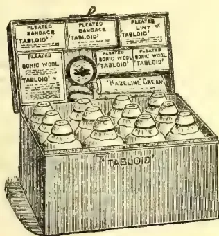
Measurements: in.'TABLOID' MEDICINE CASENo. 258 (The Settler's)
Fitted with the world-famed 'TABLOID' Brand MEDICINES, BANDAGES, etc. The medicines are perfectly reliable in hot or damp climates. They are prepared in accurate doses ready for dispensing and are quite palatable. In climate-proof metal case (black japanned).
Price in London 28/0
'Tabloid' Medical Equipments are obtainable
at the principal pharmacies in all countries
BURROUGHS WELLCOME & CO., LONDON
NEW YORK
MONTREAL
SYDNEY
CAPE TOWN
MILAN
SHANGHAI
BUENOS AIRES
A.F. 293
ALL RIGHTS RESERVED
IDEAL FOR TROPICAL AGRICULTURISTS
Salt improves the flavour of the ripe fruit which, with its aid, combined with careful boiling down in sugar and candying, is converted into preserves resembling lemon peel or citron glaze. Besides these and other "excellent preserves," the pulp of the ripe fruit is used, in the West, in the preparation of syrups, wines, and elixirs of reputed value in the treatment of affections of the lungs, bowels, and nervous system. But the use of the ripe fruit as a skin-soap and a favoured cosmetic by young and old seems to be still confined to the Caribs whose soft and supple clear complexions, so greatly and so justly admired, are said to be due to the action of the juice in levelling the asperities or harshness of the skin. Again its reputation, in the form of a poultice, as a cleanser of ulcers, sores, and yaws is unheard of beyond its home; while a similar use of the unripe fruit in the treatment of warts, eczema, and the like is also unknown except there. But, perhaps, the most remarkable use to which the unripe fruit is applied in the West is as a dispeller of the discomfort of surfeit. It is a well-known fact that the descendants of the Spaniards, Portuguese, and other nations, who form the bulk of the populations that reside in Mexico and the countries to the south are much addicted to a meat diet. It is frequently asserted that some of these peoples consume raw meat in large quantities, and that, to relieve the uncomfortable distension of the stomach that follows its liberal use, slices of the fresh fruit are either rubbed over the meat before it is con-
sumed or eaten with or immediately after it. The commoner practice of rendering meat, which is uneatably tough, into a reasonably soft and juicy condition by boiling it down with slices of the green fruit is already known to Indian cooks. But the statement that the wrapping of such meat in the leaves or the mere hanging of it in the crowns of the trees has the effect of softening its fibres to mellowness requires to be received 'on a pair of scales.' Not so, however, the alleged application of the green leaves and fruits for the removal of clothes' stains or the cleansing and restoration of worn-out black garments in water in which the leaves have been steeped. But, perhaps, the commonest local applications of the fruit, in its mature yet unripe condition, are its pickling in vinegar, plain or spiced, and its service as a salad with cucumber, or, after being boiled, as a vegetable. The small black, rugose seeds of the ripe fruit, so reminiscent of radish and water-cress, are aromatic, mildly pungent, and piquant. In the West Indies they are eaten as a delicacy, plain or as a vinegared condiment; they are administered to quench the thirst of fever; and are, generally, believed to be possessed of carminative, anthelmintic, and other therapeutic virtue. The fibrous material in the bark of the stem is said to be spun into rope, in the West: while, the radish-like roots are reputed to be a nervine tonic and stimulant.
A. M. S.
—Capital, Sept. 7.
284The Supplement to the Tropical AgriculturistMarawila, September 6th.
We are still without any rain, and the outlook is serious. September is generally a wet month, but so far, we have been tantalised with heavy rain clouds that are being attracted by the mountain ranges inland and with distant thunder. The canal is very low, and boats find it very difficult to negotiate it. Boat-hire to Colombo has risen from R45 to R75. Though situated on the banks of the canal, the local desiccating mill has not sufficient water to work full time. Fibre mills experience an insufficiency of water for steeping husks. Wells and tanks are remaining dry. I have not met with one cultivated paddy field. The range of fields in Madampe of about 2,000 acres in extent is uncultivated. The rainfall for August was .35 of an inch and for July .96 of an inch. To the end of June was 16.14 inches. Farther north at Puttalam, the rainfall to the end of August was less than 6 inches.
The only hope for coconut planters under such adverse meteorological conditions is, to thoroughly cultivate their soils. The benefits of this are apparent even where the soil is sandy. Where the soil is cultivated, the trees are weathering the drought bravely, while trees on neglected lands adjoining are suffering badly. Catch-water drains and the cultivation of the soil should become general in hard soils to overcome the effects of drought.
In this connection, I may mention that Mr. Wallace Westland, scion of a good stock, whose name has been a household word upcountry for over a quarter of a century, has returned from Papua, where he is the Manager of Rubber and Coconut Estates. He very courteously sent me a photograph of a single furrow disc plough (24" disc) driven by a West New Guinea native and drawn by a team of 3 small mules. The land being ploughed is under coconuts two years old and much over-grown with grass. The plough is a "Massy Harris," and is said to be doing good work. These should be very useful on coconut estates. Will not some enterprising firms import a few as samples and give demonstrations of their work, through the Agricultural Society?—Cor.
which can be used in the place of beeswax, is exported from Ceara and the northern ports, where it is also utilised in the manufacture of candles. The leaves of the Carnaubeira tree are dried in the sun and the powder beaten out. Several processes are used in the manufacture of the wax. The crop lasts from September to March, the leaves being cut at intervals during that period.—British and Colonial Druggist, Aug. 11. [The Carnauba Wax palm has been tried in Ceylon on a commercial scale but without success.—Ed. C.O.]
The exports of flowers from the French Riviera has of late years assumed proportions not contemplated even ten years ago. The value of the cut flowers sent away annually from the "Côte d'Azur" may be roughly estimated at fifty millions of francs (two millions sterling). Amongst the principal flowers grown for export in this region, which comprises Grasse, Nice, and Cannes, the carnation takes a prominent place. Of late years a demand has arisen for a strong, rigid, stalked variety, à tiges de fer, in place of the old-fashioned kinds with more pliant stems formerly grown. This condition has been met by the introduction of American varieties of the plant. It has been found by careful analysis that the flower stems of these new varieties contain not only a larger percentage of dry substances—nitrogen, phosphoric acid, and potash—than those with less rigid stems, but that they absorb a greater amount of nourishment from the soil. These facts should not be lost sight of in the cultivation of the flower, and in the use of suitable manures.—Journal of the Royal Society of Arts, Aug. 11.
In the inhospitable, semi-arid regions of the globe, where the rainfall is usually below the normal, the sum of the operations forming the practice of growing field-crops without irrigation has come to be known as Dry Farming. This expression had its origin in America over the Great Plain or Dry Belt on which dry farming is now extensively practised. Some of the chief centres of the industry in America are Kansas, Montana, Oregon, Washington, Wyoming, and Oklahoma; while, elsewhere in the world, it is coming into vogue in Canada, Australia, South Africa and India. Thousands of acres of arid waste-land in the south-eastern part of the State of Wyoming have already been reclaimed from desert conditions by the application to them of methods of dry farming; while, in Oklahoma, it has been successfully demonstrated that varieties of Juar (Sorghum vulgare) can be grown without rain and made to yield crops of even 35 bushels of grain on the acre. Some of the other commoner cereal crops there are Oats, with a yield of 36; Spring Wheat, with 27, Rye, with 18; and Barley, with 46 bushels per acre: a bushel of the oats weighed 46 pounds and one of the wheat 60 pounds. These and other interesting facts are, doubtless, of great importance to India where the major portion of the cultivable land is exposed to conditions of chronic drought. To those engaged in the agriculture of the country, or compacted, to pulverise and firm its surface. This farming is immediately followed by harrowing,—the ploughing, firming, and harrowing being conducted, if possible and preferably, on the same day. In some districts, a disc-harrow
and Magazine of the Ceylon Agricultural Society.—September, 1911. 285ing, or two, is made to precede the early ploughing. In localities of unevenly-distributed rainfall, elaborate terracing or building is undertaken to prevent loss of water by its running off the surface; and any streams that form are made to follow sinuous courses over the field so that absorption may be as complete as possible. As soon after the stoppage of a shower of rain as will permit of the soil being worked with ease, its surface is thoroughly stirred with "cultivators" (harrowing with wheels) and the resultant mulch thereafter maintained by the soil being stirred as often as it rains or whenever its surface is found to become compact. Level cultivation, and the formation and maintenance throughout the life and growth of the crop, of a fine top-surface are the aims of the farmer. The seeds, which are drilled in, are sown sparsely and deep—often three or four inches below the surface of the soil. The land is harrowed after it is sown, and, if there be danger of drying, rolled after the harrowing. Even a quarter of an inch of rainfall exerts a beneficent effect upon the growth of a crop. The lower the rainfall, the smaller the seed-rate,—the generally sparse sowing resulting in a relatively small seed-rate per acre, e.g., half a bushel of wheat seed is said to be more than enough to sow one acre. Moreover, the farther apart the plants stand on the field, the greater are the facilities afforded for inter-cultivation. Though large yields are sometimes obtained, they cannot, as a rule, in fairness to the practice, be reasonably expected to result from such farming. The object is rather to produce something where nothing else naturally grew before, "half a loaf" being, particularly in the desert, infinitely better than "no bread" at all. The yield of wheat is about 15 bushels, and that of lucerne 2 tons per acre. The usual crops are the Durum wheats (hard Maccaroni wheats), Spelt wheat, oats, barley, millets, and sorghum (e. g., Fodder Cane, Kaffir Corn, Milo, Maize, Durra), and the chief leguminous crop is lucerne.
Dry farming implies the presence of cheap labour or the application of labour-saving devices and machinery. It can be practised to the highest advantage only on large areas of very cheap land. The utmost economy in seed and culture has to be exercised for its success. The conditions, natural and economic, that prevail over extensive areas in India and Burma appear to be favourable for dry-land farming. But its introduction must, for the present, at any rate, be confined to cautious experimentation; for, in tropical and sub-tropical countries, generally, there is danger of excessive tillage depleting fertility of the soil from the fact that its activities continue unchecked throughout the year. And, for the rest, it might, perhaps, be well also to remember the fact that "in farming, just as much as in religion, salvation is worked out through personal effort, illumined by much personal knowledge, and directed according to the laws which govern the specialities of the subject investigated.
—Capital, Aug. 10.
A. M. S.
[At present there is some enquiry about Castor Oil Seed, and many interested in the subject both here and abroad, have been asking for full information about their cultivation;—land, suitable varieties, yield per acre, percentage of oil, etc.]
The following treatise is taken from the "Bulletin of the Imperial Institute" and we add some number of our own.
The castor plant known botanically as Ricinus communis is widely distributed throughout the tropics. There are numerous varieties of castor plants, some of which have been considered distinct species by botanists, but are now generally believed to be cultivated or geographical forms of one variable and widely distributed species.
The castor plant is largely grown in India, Java, Brazil, the United States and Italy, and occurs wild or in a state of semi-cultivation in most tropical and sub-tropical countries. The economic importance of the plant depends chiefly on the seeds, which yield a valuable oil that is used in medicine and for numerous industrial purposes. In India the leaves are also of value, being used as fodder for cattle, and in Assam and other countries as food for the Eri silk-worm.
In tropical countries the castor plant reaches dimensions of a small tree, and may attain a height of from 20 to 30 feet, or more, with a stout trunk and branches. In other climates it becomes a shrub or bush, 8 to 12 feet high, and in localities where frosts occur it is a herbaceous perennial. Under cultivation in warm-temperate climates it is usually treated as an annual. Owing to its decorative value, it is frequently cultivated under the name of "Palma Christi," and sold in pots for ornamental purposes. The seeds vary much in colour, size and shape; they are usually oval, flattened on one side, and of a mottled grey colour with a conspicuous white caruncle at the hilum end. When ripe, the capsules of some varieties dehisce and scatter the seeds a considerable distance. This peculiarity probably accounts for the wide distribution of the plant in countries, such as Brazil, to which it is not native. The method of seed-dispersal should be borne in mind by the cultivator, as seed is liable to be lost if the capsules are allowed to remain too long on the plants.
For practical purposes the numerous forms of the castor plant may be grouped into two classes, the large-seeded and the small-seeded kinds. The former are the more prolific in yield of seeds, and the oil obtained from them is suitable for lubricating and industrial purposes; the small-seeded varieties yield a finer oil, that is preferred for use in medicine.
As a rough guide to the climatic conditions necessary for the production of castor seed it may be stated that where maize can be grown and ripened, the castor plant may be expected
286The Supplement to the Tropical Agriculturistto succeed. It is sensitive to frost, and is therefore only adapted to warm climates or to countries where the summers are sufficiently long to mature the seeds. The plant requires a fair amount of moisture, and rainfall after sowing is essential to ensure good germination; but after the root-system has developed, less moisture is needed, and in the tropics its cultivation seems to be restricted by excessive rainfall.
The soil best suited to the castor plant is a good, well-drained, sandy or clayey loam, or any land that produces good corn. Very loose sandy soils or heavy clays are alike unsuitable. In India red soils situated at the foot of hills are specially chosen. These are poor in organic matter and require to be enriched with farm-yard manure. The plant is also commonly grown in isolated patches on land surrounding dwellings, or along the tops of high mud banks that surround orchards and vegetable gardens.
The land destined for a crop of castor seed requires good preparatory cultivation before sowing takes place. Owing to its well-developed root-system the castor plant demands a deep-rooting medium. Deep ploughing and harrowing are therefore essential.
The castor plant soon exhausts the soil, and if fresh land is not available for the crop natural or artificial manures are soon necessary to keep up the supply of available nitrogen, potash and phosphoric acid. One of the most valuable manures for this purpose is the residual cake, left after the expression of oil from the seed. The empty capsules, shells, leaves and stems of the plant should be returned to the soil. In India farmyard manure is commonly employed, or when this is not available silt is used. The castor plant is however, seldom grown as a pure crop in India, but is generally used as a border to cotton or sugar fields or mixed with potatoes, cereals or some leguminous crop, hence soil exhaustion is less rapid than would otherwise be the case were pure crops grown. Pure crops should not be taken from the same land more than once in five to six years.
Before the seeds are sown it is advisable to pour warm water over them and allow them to steep, without further heating, for about 24 hours. This treatment softens the hard seed-coat, and tends to ensure quick and uniform germination. The large seeded kinds may be planted closer: about 3 feet between the rows and 18 inches from the plant being the usual spacing in India. If planted too thickly the plants tend to develop tall stems and few branches, but if ample space is allowed so that air and light are admitted, free branching takes place and more flowers and seed are in consequence produced.
In order to secure a good "stand" it is advisable to place from 2 to 4 seeds in each little mound along the rows, the seeds being about 6 inches apart, or they may be dropped in the furrow made by the plough, and covered by the plough following, or dibbled in by hand. After germination has taken place and the seedling plants are from 6 to 8 inches high, they should
be thinned out, the weakly plants in each mound being removed and the most vigorous specimen left to develop.
About 10 lb of seed of the large-seeded varieties are required to plant an acre, and about 14 lb in the case of the small-seeded. The best time to sow the seed is at the commencement of the rainy season. (Here March and April and August and September.) In India the large seeded kinds are generally grown during the monsoon rainfall, and are usually confined to small patches in house gardens. The small-seeded kinds are generally grown as field crops at the end of the monsoon season, and at the commencement of the cold weather.
After the plants have been thinned out, the land between the rows should be ploughed or hoed occasionally to keep down weeds and to conserve soil moisture. It is also advisable to slightly mould up the plants by drawing the soil up round the stems to prevent moisture collecting at the base. When the plants have attained a height of about 2 feet, further working of the soil is unnecessary, as the plants will then be of sufficient size to shade the ground and strong enough to outgrow weeds.
It sometimes happens that the plants grow too vigorously, and then long shoots are produced but few flowers are formed. When this takes place pruning should be resorted to; the long shoots should be topped to induce branching and the formation of flowers, and thereby increase the production of seed. The crop is also easier to collect from dwarf plants than from tall specimens.
The capsules of the small-seeded varieties begin to ripen in from 4 to 5 months from the time of sowing, and those of the large-seeded kinds in from 7 to 10 months, according to variety and the prevailing climatic conditions. When ripe the capsules become hard and brown, and spread out somewhat on the stalk on which they are borne. At this stage the spikes should be removed from the plant by cutting. This should be done rapidly as soon as the capsules show signs of ripening, as if left too long on the plant they are likely to dehisce and scatter the seed. When the collecting has once commenced the whole crop should be looked over about once a week. Owing to the irregular ripening of the crop, the harvesting is a somewhat tedious process, but as the work involved is not laborious, it can be done by women and children. In the United States an endeavour has been made to produce a type of plant which ripens the capsules in any one cluster at the same time. The work of harvesting such plants is considerably lessened, and there is a smaller loss of seed. The collected capsules should be placed in bags or in a box-waggon, and conveyed from the field to a drying shed or barn. Where buildings are not available for their reception, a drying floor in the open may be easily made by sweeping clean a piece of firm, level ground, and enclosing it with boards or sheet iron from 4 to 6 feet high, to prevent the seeds being scattered and lost when the capsules open. Provision against rain must also be made if an open-air drying ground is used. The capsules should be spread on the
and Magazine of the Ceylon Agricultural Society.—September, 1911. 287
floor, exposed to the sun and air, and occasionally turned over. In less than a week most of them will have opened and shed their seed. The empty husks should then be removed and the seeds swept together and collected. The pieces of husk and other debris with which they are mixed should be removed by winnowing, either by hand or by passing the seeds through a fanning machine. In some varieties the capsules do not readily open, and it is then advisable to beat them, or wooden rollers can be drawn over them by a pony whose hoofs are protected by being padded with flannel or sacking. In some parts of India the capsules are stacked in heaps in a building, and covered with straw and weighted. After about a week the outer husk is soft and rotten. They are then exposed to the sun, and beaten to free the seeds. Another process sometimes adopted is to bury the capsules until the outer husk has decayed and set free the seed. The seed should be stored in a dry place until sold or pressed for oil.
In countries where the castor plant is not systematically cultivated (as in Jamaica), but where it grows wild or semi-cultivated, and in places where labour is cheap, the collection and preparation of seeds on the lines indicated above should be encouraged. The numerous uses to which castor oil is now applied ensures a ready sale for the castor seed, and the present market value of the latter provides, as a rule, ample remuneration for the labour involved.
In India, when grown as a mixed crop, the yield of seed per acre is about 250 lb., and when grown as a pure crop is from 500 lb. to 900 lb. per acre. The yield of individual plants grown together as a single crop is much less than that of well-developed, freely-branched plants that have grown singly or in isolated clumps. As much as 20 lb. of seed per plant has been sometimes gathered from these. In the United States the yield is said to be from 900 lb. to 1,350 lb. per acre when grown on suitable soil and with good cultivation. In Brazil it is calculated that in the castor plantations each plant yields from 4.5 lb. to 11.25 lb. of seed.
The same can be said of Jamaica as of Brazil:—The castor plant grows here rapidly from the seaside to over 3,000 ft., flourishing in the very driest spots, indeed, is seems to prefer a medium dry locality here. There are no regular cultivations here, but in almost every plot of land in the Island, in house yards, in the corner of cultivations, there are castor plants, and wherever the castor tree has once grown the moment land is cleared or burned up come numerous small plants.
Although the making of castor oil is a small home industry in which any housewife could make a little money there is not enough produced in the Island to supply our wants and a considerable quantity is imported, mostly from India. Castor oil is used in the country for lubricating sugar mills, oiling boots and harness and in small quantities as medicine for man and beast.
Our soils are very much superior to the ordinary run of soils in India and the remarks about manuring in the above would not apply
for many years here. We would not require to use our best soils for growing castor oil, but there are many uncultivated lands in the drier parts which could be used profitably for the growing of this product; lands that are fairly level so that they can be ploughed are preferable and this would make cultivation so much cheaper.
We have many varieties of seeds here, different sizes, different colours, different rates of growth, but have, unfortunately, no reliable data as to the average yield of the different kinds per acre, or the comparative yields of oil from the different varieties. There are, however, experiments being carried out in nearly every parish of the Island now on behalf of a company and we hope that useful data may result from these experiments. The commercial value of castor seeds at present is about £12 5s per ton and a yield of a ton per acre would only be a fair return. The yield of oil varies very much. The yield of oil should not be less than 40 per cent. if the proper kinds of seeds are planted, and there are some varieties which will give 50 per cent. It has not been discovered yet whether the varieties rich in oil give as large a yield as the varieties which are poor in oil; naturally the contents of oil has a great deal to do with fixing the price. It will be important to know this.
India is the principal producing country, and the bulk of the supply of castor seed that enters international trade is drawn from this source. The Indian exports of castor oil also exceed those of any other country. Although the actual production of this crop is not shown in statistical returns for India, the following tables showing the amounts exported will indicate the magnitude of the trade in this commodity.
The quantities of castor seed exported from India to the principal consuming countries during 1908-1909, year for which figures are available have been as follows:—
United Kingdom, 806,789 cwt.; France, 333,959 cwt.; Belgium, 207,093 cwt.; Italy, 176,223 cwt.; Germany, 109,603 cwt.—Total exports, 1,650,466.
The quantities of castor oil exported for the same period have been as follows:—
United Kingdom, 131,308 galls.; Ceylon, 63,980 galls.; Straits Settlements, 176,824 galls.; Hongkong, 13,533 galls.; Cape Colony, 9069 galls.; Natal, 73,690 galls.; Mauritius and Dependencies, 82,414 galls.; New Zealand, 166,718 galls.; Australian Commonwealth, 352,841 galls.; Foreign countries, 23,275 galls.—Total exports, 1,099,967 galls.
The imports of castor seed are not shown separately in the trade returns of the United Kingdom, but the imports of castor oil during the period 1905-9 have been as follows:—
Belgium, 9,847 cwts.; France, 6,756 cwts.; Italy, 2,388 cwts.; other foreign countries, 1,258 cwts.; British India, 12,494 cwt.
After the United Kingdom, the United States is perhaps the largest consumer, part of the demand being met by the home produce, and part by imported material. The cultivation of castor seed in the United States is confined chiefly to a few districts in Oklahoma, Eastern Kansas, Western Missouri and South-west Illinois. The
288The Supplement to the Tropical Agriculturistamount of the annual crop is not given in the returns, but it is estimated to be under 100,000 bushels. The imports of castor seed to the United States in the fiscal year 1908-9 amounted to 613,708 bushels, and of castor oil for the same period to 6,846 gallons. These were derived chiefly from India, but seed was also imported from Brazil.
Although not native to Brazil the castor plant finds in that country a suitable soil and climate, and has become naturalised to a large extent. The consumption of castor oil in Brazil is large, and there are a number of castor-oil factories mainly in the State of Pernambuco.
It will be seen from the foregoing information that, whilst there is a very large demand for castor seed and castor oil, this demand is met from comparatively few sources, and that many of the importing countries are in a position, as regards climate, to produce all the castor seed they require. This aspect of the question has been seriously considered in recent years, in Australia and certain of the South African States, but, so far as is known at present, but little has been done to establish an industry in either of these countries. The manufacture of castor oil in the United Kingdom has been established comparatively recently, and this has given a further incentive to the production of castor seed in various British tropical and subtropical colonies. For these reasons a large number of inquiries had been received at the Imperial Institute in recent years, on the one hand from manufacturers desiring new sources of supply of castor seed, and on the other from planters in the colonies desirous of undertaking the production of this seed.
Large quantities of castor oil are prepared in India by crude native methods of expression as well as by modern machinery. In the United Kingdom the greater part of the castor seed imported is crushed at Hull, and in France at Marseilles, the methods of obtaining the oil being similar to those employed for other oil seeds.
For the finer grades of castor oil, such as that required for medicinal use, selected seed is taken, the husk, which is devoid of oil and comprises about 20 per cent of the weight of the seed, is removed, and the soft kernels are expressed in the cold; by this means an almost colourless oil is obtained, which is free from the poisonous principle, ricin, present in the seeds. This is termed "cold drawn" oil. The remaining cake is then broken up and pressed a second, or even a third time, when it yields an inferior oil of yellowish or brownish colour unfit for medicinal use. The last traces of oil can be extracted by solvents, carbon disulphide or alcohol being used instead of light petroleum on account of the insolubility of castor oil in light petroleum.
Inferior seed is hot pressed directly or is extracted by solvents alone. After expression the oil is refined by steaming, which causes coagulation of albuminous matter and renders inert the fat-splitting enzyme which, if left in the oil, would cause it to rapidly turn rancid.
Castor seed of commerce contains from 46 to 53 per cent of oil, and Lewkowitsch states that
on a manufacturing scale about 40 per cent is obtained by expression, the first pressing yielding about 33 per cent.
The pure "cold drawn" oil is largely employed in medicine as a purgative, its action being due to the ricinoleic acid. Numerous dry preparations are now made in which the taste of the oil is marked by various means. In one method (German Patent 150,554) the oil is mixed with milk sugar; whilst another preparation is manufactured by emulsifying the oil with gum arabic and treating with magnesia and lecithin.
Castor oil is largely employed as a lubricant in India, but is rather too viscous to be used in this way in cold climates, although it is used for marine engines and for internal combustion (petrol) engines. It is employed for dressing leather belting and for "fat liquoring" in the leather industry.
An important application is in the manufacture of "turkey red" oil, largely used in alizarin dyeing. This is prepared by treating the oil with concentrated sulphuric acid at a temperature below 35 deg. C. This "sulphonated" oil is washed, and ammonia or soda added until a sample of the liquid gives a clear solution in water. The use of turkey-red oil improves the lustre of the dye, but the reason for this action is not clearly understood.
Castor oil is insoluble in light petroleum or hydrocarbon (mineral) oils, but by heating to about 300 deg. C. for several hours, either at atmospheric pressure or under increased pressure, the oil polymerises and becomes soluble in hydrocarbon oils, and can then be used for making compound lubricating oils.
Castor oil is also employed in the manufacture of so-called 'rubber substitutes.' These are prepared by treating the oil with sulphur at an elevated temperature, or by treating a solution of the oil with sulphur chloride at ordinary temperatures. The 'soda soap' of castor oil requires large quantities of brine for soapmaking to any extent; it has, however, the property of imparting transparency to soaps, and is consequently employed in the manufacture of transparent soaps.
A less important use of castor oil is the production of 'cognac' oil. For this purpose castor oil is submitted to dry distillation, when a mixture of cenanthaldehyde and undecylic acid, constituting the 'cognac oil,' pass over, a bulky rubber-like mass remaining in the retort.
Castor cake or meal is largely employed as a manure, the large quantities produced in Marseilles being employed by growers of early vegetables.
In India the residue from the native method of preparing the oil, castor 'pomace' contains a higher percentage of oil than that produced by expression in hydraulic machinery or by extraction with solvents, and is employed largely in India for manuring, and to a smaller extent for stuffing the soles of native made shoes, for caulking timber, as fuel, and for making illuminating gas.—The Journal of the Jamaica Agricultural Society.—July, 1911.
THE
TROPICAL AGRICULTURIST
AND
MAGAZINE OF THE
CEYLON AGRICULTURAL SOCIETY.
VOL. XXXVII,
COLOMBO, OCTOBER 15TH, 1911,
No. 4.
THE ALL-ISLAND AGRICUL-
TURAL SHOW.
We would direct attention to the advertisements that have been issued about this Show, to be held in Colombo in June or July of next year. It is time that people who propose to exhibit began to prepare, to think over what they intend to show, to get seeds, and otherwise get ready for the event.
This is to be a large Show of a kind which has not been held in Ceylon for many years, and of which only the Nuwara Eliya Show, perhaps, gives any idea. Exhibits, therefore, will require to be unusually good to stand much chance of winning prizes.
This is not said to discourage exhibitors of poorer specimens—far from it. Every one should do his best to turn out the very finest thing of the kind that he wishes to exhibit, and if it seem
really good and satisfactory, send it in, not say that so-and-so will have much better, and that therefore competition is useless.
Exhibitors should take special care, if they live at a distance from Colombo, to see that their exhibits are suitably packed to prevent any deterioration upon the journey. A little trouble and expense over the packing will be well repaid by the much better appearance of the exhibits when it comes to judging.
The Show cannot be a success without the expenditure of a considerable amount of money, and we would appeal to all, who can afford, to subscribe liberally towards the expenses. Even a rupee helps, and it might be worth the while of the Committee to consider whether a donor of one rupee might not be allowed a certain amount—say 50 cents worth—of free admission.
290[OCTOBER, 1911.(From the Manila Bulletin.)
Statistics go to show that the United States purchased from abroad in 1910 about $106,860,000 worth of raw rubber, more indeed than the aggregate used by any two countries in the world. Of this amount the Philippines are not credited with producing any part, the supply being secured from the Congo, South America and Malaysia. The United States went outside her own territory to purchase, while hundreds of thousands of acres of rubber lands in the Philippines are lying idle.
It would appear that the American manufacturers not only prefer purchasing their supply from foreign countries, but are willing to pay the export duty added by the rubber-producing countries, while Philippine rubber could be secured without this addition to first cost. Every rubber-producing country collects an export tax on the product except the Philippine Islands.
If there be any doubt as to the quality of Philippine grown rubber, there is plenty of evidence to prove that no better product is grown anywhere in the world.
The report of an expert in Hamburg on a small shipment of rubber grown by the Basilan Plantation Company, and forwarded by Messrs. Behn Meyer & Co., under date of January 11, 1911, says:—
“The sheets were thin, medium coloured, transparent and of very good quality. It has good nerve, and is well prepared. Such rubber will always find a good sale here.
“The price of fine hard Brazilian para is five shillings two pence per pound to-day, and I appraise this Philippine rubber at 11.50 marks to 11.70 marks per kilo.”
So much for quality. The Basilan plantation is near Isabela, Moro province, and is the most advanced of all rubber plantations in the Philippines. Two shipments have already been made, and the quantity will increase as the trees mature.
Japanese capitalists have been purchasing large tracts of land in Malaysia, and the Japanese manufacturer is making headway in putting the finished product on the market. The representative of the Goodyear Company complimented the Japanese last year on their splendid exhibit of rubber goods at the exposition at Kobe. Why have the Japanese passed up the Philippines and
taken up land in Malaysia, and why are we so ignored by the American manufacturer and capitalist who are also becoming interested in Malaysia rubber lands?
There is something wrong somewhere. We have the soil, the climate and the labour. We have no export duty and the quality of rubber is as good as any produced, but we remain non-producers.
It is not improbable that we have not given the widest publicity to the advantages offered by the Philippines to the prospective rubber grower. That we should be ignored were the truth about the islands made known generally in commercial centres in the United States and Europe, we do not believe. That the United States should spend $106,860,000 abroad for a product, the whole of which can be supplied from American territory seems very improbable, nevertheless it is true.
We believe this subject should be given special attention by the Merchants' Association. Rubber Manufacturers in the United States and Europe, capitalists interested in the growing and manufacture of rubber should be furnished with all the data available in some attractive form. We must spread our rubber gospel where it will do the most good. A competent publicity man should be put on the job and sent among the Philippines to preach Philippine rubber. Our slogan in the United States should be “We need that $106,860,000 rubber money to swell our annual receipts, and we will not be happy until we get it.”
BY THE EDITOR OF “THE INDIA RUBBER WORLD.”
(From the India Rubber World, Vol. XLIV., No. 4, July 1, 1911.)
Again the Climate.—A Boston Boy Planter.—The Bete Rouge.—Getting acquainted with the Sapium Jenman's Description of the Tree.—Sapium Plantations.—The Macwarrieballi.—Brittle Balata.—Balata back in 1883.—Notes on Balata Gathering.—Some Balata Statistics.
Speaking again of the climate of British Guiana, I want to affirm that of all the tropical countries I have visited
OCTOBER, 1911.]291Saps and Exudations.it comes nearest to being my ideal. Not in Georgetown nor on the coast. It is a trifle too sticky there, but healthy withal. But 40 or 50 miles inland it is just what one who love tropical warmth in midday and cool nights would desire.
I met a young American in Georgetown on the occasion of my last visit who is well known to many in the rubber trade. He it was who once crossed the Andes and came down over the falls of the Madeira with a lot of rubber for the Safety Insulated Wire and Cable Co. He had become a resident of British Guiana, having purchased an island not far from Georgetown, and was engaged in planting Hevea. He was tapping wild Sapiums that he found on his land, shipping the rubber in and getting a very good price for it. His backers were a couple of rubber manufacturers in the United States, who, although not big factors, were enterprising enough to wish to be sure of their own source of supply. The young American was living in a little cabin that he had erected on the island and hiring a few men, and for the amount of money that he had to spend doing a lot of work. His seed supply he secured in a very shrewd way. Most of the planters have to send to the Far East, and there are lots of "failures to germinate" in the seed. This youngster found in Trinidad a small estate with a few old Heveas on it. He induced a friend to buy it, and the trees furnish all of the seed he can comfortably take care of.
He was in excellent health with the exception of "hives," as he explained. Visitors to the Guianas and Brazil, if they stray outside of the cities, are apt to suffer from mild attacks of "hives." At least that is what they confide to some friend after a period of energetic and unavailing scratching. The fact is, they have annexed a small red bug, the bete rouge, that burrows beneath the skin and is troublesome if not eliminated. Alcohol will do it, one or two applications being sufficient usually. As a preventive many soap their legs and come off scot free. And others, particularly those who are used to tropical pests, pay no attention at all to them. I collected some in all of the places that I visited, but it was in British Guiana that I got the liveliest specimens. They settle behind the knees and about the waist and are energetic at nightfall. I was out of alcohol, and so I used a liniment that one of the planters had in stock. It killed the parasites promptly, but it didn't stop there. It searched me through and through, penetrating, burning until it finally exhausted itself,
except for the smell it left behind. It was fine, one felt so warm and comfortable when the ache stopped. I was therefore able as an expert on tropical itches to diagnose my friend's ailment and prescribe a remedy, not the liniment, however.
Speaking of trees indigenous to British Guiana, that is, rubber trees, the Sapium Jenmani, called by the natives Touch-pong, seems the most valuable. I had often wondered why Professor Harrison and the very alert and scholarly Assistant Director of Science and Agriculture, F. A. Stockdale, paid so much attention to it. Nor was I enlightened when I saw the specimen planted by Jenman on the Botanical Gardens. It looked so scraggy and sickly and was such a pitiful object. But when I saw a wild specimen, in soil adapted for it, a fine straight forest tree at least three feet in diameter, I began a revision of my prior prejudices. Then, too, it develops that it is one of those trees that can be tapped far up on the trunk, and the latex coagulates on the tree forming a very high-grade scrap. The department had some of the rubber valued some three years ago, and the price put upon it was $1.07 and plantation at $1.16. The Imperial Institute analyzed the samples and they contained 93.7 per cent. of rubber with a resin content of only 1.8 per cent. In 1909-10 the colony shipped 6,369 pounds of rubber, most of which was in scrap form, and doubtless Sapium rubber. It was not all carefully collected, however, and it brought about $3,250.
Jenman it was, who back in 1883, first really brought the rubber to the attention of the world. He journeyed far into the forest, found the trees which at first he thought belonged to the Ficus family. What he wrote of it is most interesting. In part it is as follows:—
"The trees were large individuals, four or five feet in diameter of trunk, and 120 or more feet high. Their trunks were long, straight and unbranched for 60 or 70 feet from the ground. The lowest six feet of one had been scarred, and from the scars the milk had run and was dried in tears or strings several inches long on the bark. Most of the congealed rubber was, however, contained in the fissures made by the cutlass cuts, from which places it was rather hard to extract it, because of the tenacity with which it held to the inner bark from which it had oozed. I gathered and made a ball, following the Indian plan of winding it up like twine of what was on the trunk. They score
Gums, Resins,292[OCTOBER, 1911.the trunk and then leave it, the milk oozes from the wounds, trickles down the bark and coagulates and becomes dry in a few days. My guide said it took three days to dry, but I should have supposed a shorter time might accomplish the change, the little rivulets are so very thin. That which was in the old cuts—cuts probably a year or more old—had turned black, but that in those recently made was nearly milk-white. The Indian boys, who are perhaps accustomed to play with the balls, as I noticed from several which they brought me, never make them large, they strip the dry-strings very dexterously from the bark, taking good care to extract the larger portion to which I have alluded as partly concealed in the incisions, and stretching it with a good deal of tension, wind it up. These balls have wonderful elasticity and bound with very little impulsion several feet of the ground. The rubber, too, seems exceedingly tenacious and strong. . . . This method of gathering is very economical of time, for it saves the tedious operation of catching the milk in a vessel as it issues from the wound, which is the most bothersome of all the operations. The principal objection to it is, that the rubber becomes soiled by the dirt adhering to the bark, a little of which it retains, and no doubt this would deteriorate its market value; but this depreciation might be reduced to a minimum by carefully brushing the surface down prior to commencing collecting operations. Rubber, which has foreign matter incorporated with it, is classed under the term negrohead in the market, though its value depends on the measure of its freedom from dirt or other substance having regard, of course, to the quality of the rubber itself when clean. . . . I regard the discovery of this tree of great interest and probable importance, attaining, as it does, such a vast size and producing a material of apparently excellent quality. The Indians know it under two names, the Carabasi calling it Touckpong, and the Arawacks Cumakaballi. Noble in all its proportions, spreading and lifting its massive head above its neighbour's, it is one of the largest trees of the forest, and has a wide and general distribution over the deep belt of low country in the colony."
In 1905 considerable plantations of the Sapium Jenniani had been established in the north-west district of British Guiana, and there is no reason why they should not be successful. As a rule, the planting of this species has been encouraged when the trees are found wild, and where they appear to thrive
the best. The planters are also thus able to secure a good seed supply close at hand. Numbers of plantations are to be found in the country of Berbice, on the Demerara river, on the lower reaches of the Essequibo river. The Government is also carrying on experiments in tapping on its forest reserve at the mouth of Bonasika Creek that will soon tell the whole story of the yield by a variety of methods. In addition to this at all of its experiment stations, in the north-west district at Issororo, at Onderneeming, Christianberg and Pomeroon, the Government has been planting Sapium, and carefully tabulating every fact regarding its growth, etc.
Very little interest seems to be taken in Castilloa in the colony. A few plantations have scattering trees, and they are to be found in the Botanic Gardens, of course. But, as for any extensive planting or any likelihood of it, that is a vain hope. The planters are not in favour of it, and the Government experts do not advise it.
Speaking again of that indefatigable traveller, the late G. S. Jenman, he believed that in the Forsteronia gracilis, which he found in abundance, he had discovered another valuable source of rubber. He was camping far upon the Demerara river at Malili, some 200 miles from Georgetown when, in one of his forest excursions, he cut deep into a festoon of bush rope, and was surprised at the quantity of latex that gushed out. He cut down forest giants to get at the whole vine, spent days in collecting latex and in trying to coagulate it, and finally sent rubber, flowers, leaves, etc., to Kew for identification and valuing. His report, which covers pages, is full of enthusiasm and interest. The Indians called the vine Macwarrieballi, and the botanists at Kew said it was Forsteronia gracilis. The experts at Silver-town, to whom the rubber was submitted, said it was too sticky and soft to be valuable. That, however, was in 1888, when they would have turned down guayule, for example, and many other lesser rubbers, as indeed, would any rubber manufacturer of that period. Perhaps, therefore, it may yet appear on the market.
Speaking of the lesser rubbers, and before beginning on the balata of which the colony ships large quantities, I want to refer again to what is commonly known as brittle balata from the Humiria floribunda. If it is as abundant as some think, and can be cheaply gathered, it should have a place. A British Guianian sent me a sample shortly after my first visit to the colony.
OCTOBER, 1911.]293Saps and Exudations.He had an exaggerated idea of its value, however. The samples are before me as I write. They are plastic, brownish in colour, and very dense, and show but little elasticity. They look very much like a low-grade gutta. I so wrote him, and his reply is certainly optimistic. I append it as it has a certain value.
"Your letter of recent date received to-day, and I most certainly do not agree with your deductions. Brittle balata, or as it is sometimes called bastard balata, is altogether different from the recognized balata of commerce. Brittle balata is, in my long and experienced opinion, a caoutchouc, whereas the balata of commerce is a gum. My samples are from the milk or latex of caoutchouc trees which grow in enormous numbers throughout the whole of tropical and subtropical America, hence the rubbers from them can be regularly shipped in enormous quantities.
"I send you five samples made from caoutchoucs selected from our forest trees by very experienced bleeders. These five samples are the same as sent to Europe, and which have been well received, and have been valued at prices that will, I think, satisfactorily recoup us.
"I believe we have an assured trade with both England and Germany, and perhaps also with Denmark, so I cannot see how we should fail with America, as your letter so manifestly indicates.
"As before stated, these caoutchoucs can be easily obtained from trees that are enormously abundant, so that the rubbers from them should naturally be supplied at a lower price than the generality of such articles are. Therefore, we can ship to America if only the prices will allow us, and if only we can find trustworthy people to ship to, because it is we alone who are shipping, and it is we alone who are to be afterwards paid for articles that only the market requires, therefore we wish to know the present approximate market price of the samples sent you.
"Although the enclosed samples are small, they are quite large enough for any real expert or for any capable manufacturer to judge by.
"As soon as our new factory is started, we hope to turn out a very large supply and later on we may have to establish branches in Trinidad, Brazil and Venezuela."
Back in 1883 and again in 1885 Jenman sent in a voluminous report concerning the "gutta" trees in the colony. It was characterised by the direct style that all his communications show, and in spite of the fact that it was published
as a dignified Government utterance, is fascinating reading. He briefly sketches the Indians and the bush negros, and an enthusiastic botanist, recognized and noted hundreds of tropical trees, vines and plants, as he journeyed into the forest in his search for the "bully" tree. Bits of tropical experience crop up, as for example, the presence on the Savannahs of werewerees fly that just as soon as the perspiration starts swarm over the face and creep into the eyes. The engineers on the Madeira-Mamore Railway know all about them, and it may comfort them to know that Jenman, twenty-six years ago, spoke of them only as a trifling annoyance, as he did also of the Cabowroo (known in Central America as the Rodador). His examination of the balata bark was very thorough and so understandable that it is worth quoting verbatim.
"If a piece of partly dry bark be examined it presents (without going out into the details of structure) three primary layers. The outer layer is dark brown, hard and dry; the next, which is usually much thicker, is rather spongy in tissue and lactiferous and of a reddish raw beef colour; the inner one is thin, more ligneous, a brown wood colour and with fewer lactiferous vessels. The outer layer is subdivided into several very thin layers. They are of two kinds, and differ much in the density of their cells. They alternate a dark brown and pale gray. In young trees there are few, but they increase with age. I have counted as many as twelve of each kind in the bark of a large tree. The second primary layer is that which yields the balata milk, though the inner, more ligneous layer is not devoid of it. These two layers are homogeneous and adherent to the wood until it is dry. The longitudinal fissures, which I have mentioned as a prominent external characteristic of the bark, are not absolute divisions of the cortical tissue (or at least they only become so eventually as the layers peel off), for where they occur the outer layer dips into the thick lactiferous layer and so preserves its continuity. The thin layers of the external primary layer crack transversely in pieces an inch or two long, and by lateral contraction eventually scale off."
He had received a long letter from Sir Everard im Thurn, who had penetrated to many remote places in the colony, in which it was stated that many of the balata gatherers cut the tree down to extract the milk. Jenman, as servant of the Government, was anxious to protect the property of the Crown, and hunted industriously for such
Gums, Resins,294[OCTOBER, 1911.violators of the laws, but apparently found none. The use of the wood of the tree for sugar rolls in the West Indian islands, and for arms and shafts for windmills in the Guianas is also noted by him. The trees were found to vary considerably in the amount of milk they give. The collector would make a single cut in a tree, watch the flow for a few minutes, and if it was not satisfactory go at once to another tree, claiming that it was a "male" tree and no good. As an adulterant the collectors then and now often add the latex of the Sapium Jenmani, if it happens to be plentiful in the vicinity of their camps. The methods of tapping, coagulating and handling are exactly the same as those already described in the story of balata in Dutch Guiana (see the India Rubber World, March 1, 1911).
According to Professor Harrison and Mr. Stockdale, British Guiana sent out its first balata in 1859, but rubber manufacturers would have none of it. In 1862, however, another effort brought it to the favourable attention of several British manufacturers, and a market was created. Three years later 20,000 pounds were exported. Then the demand fell off for about ten years, when it revived. During 1908-9 1,090,405 pounds were produced, valued at nearly one-half a million dollars. 1910-11 will probably see an increase both in product and value. By the way, as a lesson in modest taxation on exports, balata is taxed two cents a pound, and that in spite of its nearness to northern Brazil. The price of balata has varied exceedingly. In 1883 some parcels of it sold as low as 12 cents a pound, and for years it brought only 30 to 35 cents. Jenman adds that a company in Boston, Massachusetts, offered in 1883 to pay 50 cents a pound for it, if they could be assured a large and constant supply.
The British Guiana statistics on balata are very informing, and surprisingly complete. Among other things they note that in 1904-5 the United States took but 9 per cent. of the balata crop; in 1908-9, however, it took 25 per cent.
(To be continued.)
(From the Indian Agriculturist, Vol. XXXVI., No. 3, March 1, 1911.)
No one who has followed the course of the rubber market will be disposed to contest the dictum of one of the leading trade authorities at Home that the year 1910 was the most remarkable year in the history of the industry since the dis-
covery of vulcanisation. During the month of April the price of Hard Fine Para reached the unprecedented figure of 12s. 6d. per lb., and about the same time plantation rubber was sold at 12s. 10d. per lb. There has been a great reduction in the quotations since these prices were realised, but although rubber is selling at less than half what is fetched during the boom of last year, there appears to be no cause for apprehension as to the future of the plantation industry. The position in 1910 was for a considerable period altogether abnormal. Owing to the prices ruling the consumption of the product by manufacturers was to some extent checked, but the return to normal conditions has created a more healthy trade position, and manufacturers are able to secure their requirements in a satisfactory way. The principal bugbear of the shareholder in plantation companies is the possibility of over-production. The leading trade authorities, however, do not seem to attach much importance to this point. For years past the demand for rubber has rapidly grown, and with the extension of motor traction which is everywhere visible, the increase must continue. The production of manufactured rubber goods in the United States in 1890 was valued at £8½ millions, while fifteen years later the census returns placed the total at nearly £30 millions, and there must have been a great increase since the later year owing to the development of the motor car industry. Another interesting comparison is afforded by the statement that the imports of raw rubber and allied materials into America rose from 32 millions lbs. in 1888-9 to 179 million lbs. in 1909-10. There are no figures available relating to the manufactures of rubber in the United Kingdom, but the increase there, as well as in continental countries, has undoubtedly been on a prodigious scale. The contribution of plantation rubber to the world's harvest still constitutes a small proportion of the total. Most of the product brought to market emanates from the forests of Brazil. The receipts of wild rubber at Para in the season 1909-10 amounted to over 39 thousand tons, which is more than five times the total exports of Malaya and Ceylon combined during last year. There has been an enormous increase in the quantity of wild rubber obtained from the forests of the Amazon basin in recent years, the total having grown from 26 thousand tons in 1899-00 to 39 thousand tons last season. The potentialities of wild rubber suggested by these figures at first sight appear formidable from the point of view of the investor in plantation companies. But
OCTOBER, 1911.]295Fibres.the dominating factor in the problem is necessarily the cost of bringing the rubber to market, and here the plantation industry stands at a decided advantage. A Foreign Office report which was recently issued state that probably only a fraction of the Para Rubber in the Amazon region has been exploited. But it goes on to remark that the better the conditions are for wild rubber the worse they are for human habitation, and that so dense are the forests and so damp the climate that large plantations of rubber trees are being made in Brazil in regions easier of access. There has been considerable dispute as to the cost of bringing Para rubber to market. Three shillings per lb. is the figure that has often been mentioned, and 2s. 6d. per lb. may apparently be taken as the minimum. On the other hand, plantation companies which are well managed and favourably situated can market their produce at something like a shilling per lb., so that they could secure substantial profits if prices fell to a point at which the collection of wild rubber would become unremunerative. It is, of course, possible that owing to the constantly increasing areas which are being planted there may come a time when production will outstrip consumption. But in con-
sidering this possibility it must be borne in mind that with a large increase in the world's harvest and a fall in prices to a much lower figure than now obtains, rubber would be used for purposes which are now served by inferior materials. Another consideration for the shareholder is the possibility of the discovery of a process for producing synthetic rubber on a commercial basis. There does not, however, seem to be any prospect of such a result being attained. A German chemist has succeeded in obtaining what are described as infinitesimal quantities of rubber in the laboratory, but a trade journal which has been investigating the question declares that the discovery will have no more influence on the price of rubber than the artificial diamonds of Moissan have had upon the price of natural stones. A rubber substitute has also been made by the Bayer process. Here again, however, enquiries have elicited the fact that the process is simply in the position of a laboratory experiment. In any event it is obvious that if the price of the natural product were reduced to a comparatively low figure, there would be less inducement to chemists to continue the attempts which have been made for years past to produce synthetic rubber.
By W. RAITT.
Much of the practice of the art of dyeing is founded on the fact that cellulose, whether as paper, or in the form of a woven fabric as calico or linen, has a great affinity for certain groups of colour compounds, precipitating them upon itself or filtering them out of their solutions. One of the objects of the pulp maker, in the earlier stages of the manufacture, is to prevent this occurring, otherwise an unbleachable pulp may be the result. The soda process does, in the case of some materials, produce dark coloured compounds during digestion which fix themselves on the pulp, degrading it to a partially or wholly unbleachable condition. Salix tetrasperma and, in a lesser degree, Trewia nudiflora proved to be marked
examples of this, and in general, the difficulty with most of these low country woods appeared to be that of either preventing the formation of such colours or of producing them in a permanently soluble form, capable of being completely washed out of the pulp.
A sample of unbleachable Salix tetrasperma soda pulp, repeatedly washed with hot water until the wash water flowed away perfectly clear and bright, was steeped for fifteen minutes in a weak (two per cent.) hot solution of sodium sulphide. The result was a dark brown liquid nearly as dark as the original soda liquor from the digester, the colouration of which remained soluble and was easily washed out of the pulp, leaving the latter several shades lighter in colour and easily bleachable, in other words, the sodium sulphide had reduced the precipitated colours to a permanently soluble condition.
Now the distinguishing feature of the sulphate process is that it combines the reducing action of sodium sulphide with the oxydizing and hydrolysing action of sodium hydrate (caustic soda), and, as
Fibres.296[OCTOBER, 1911.the above experiment showed that the objectionable colours were reducible, the sulphate method of digestion seemed to be clearly indicated. Before deciding to follow it up it was necessary to give some consideration to the rival method of digestion by the sulphite process, which does its work by sulphur dioxide, partly in solution and partly in combination with lime as calcium bisulphite. It does undoubtedly give good results with coniferous pulps, not only in quality and colour of product but in economy also, though the latter is less in comparison with sulphate than with soda; but it is doubtful whether it would give equally good results, so far as colour is concerned, with the class of woods now under consideration. In the case of bamboo, which presents a colour difficulty similar to the one we are now dealing with (both, it will be noted, being low country, tropical products), the results have not been quite satisfactory, as attested by the experiments of Richmond (American Bureau of Science, Manila), Coventry (Forest Institute, Dehra Dun), and ourselves. Then it is doubtful whether the sulphite process is practicable in a tropical country without the aid of a system of refrigeration which would seriously discount its economy. Its success depends mainly on the absorption by water or lime water, of sulphur dioxide gas, an operation which is considerably handicapped by any increase in the temperatures of both water and atmosphere over those normal intemperate latitudes. On the whole, the balance inclined in favour of sulphate, so it was resolved to follow this up, leaving sulphite to be enquired into on a future occasion.
The success of sulphate digestion depends largely on obtaining the proper balance or proportion between the two chief constituents of the liquor, and a series of preliminary trials were necessary to arrive at this. It may vary
considerably for different classes of material. Ultimately a proportion of 6 of hydrate to of sulphide appeared to give the best results with these woods. For want of time, no attempt was made to fix the minimum quantities necessary. These would certainly vary in each case and will have to be subsequently determined. The present object was to solve the colour problem of a whole class of woods showing similar characteristics as regards colour, and which could apparently be dealt with by liquor containing hydrate and sulphide in the above properties. The quantities required will probably differ with each individual of the class, but the proportions not; so all that was necessary was to secure a standard liquor of sufficient density to ensure reduction of the most difficult of the species selected for trial. After the class problem has been solved, it will be comparatively easy to work downwards from the maximum density in order to settle the requirements of each individual.
From the pulps scheduled as second class in quality, a selection had to be made of those which best combined the commercial requirements of quality of product with abundance and cheapness of raw material. Having regard mainly to the Tarai districts of the united Provinces, Mr. Clutterbuck selected Bombax malabaricum, Salix tetrasperma and Trewia nudiflora as those best fulfilling the latter considerations. The selection is a fortunate one from the other point of view, for these also happen to be among the best of their section in quality and yield. The coniferous pulps, scheduled as first class, were for the present set aside, as it is already known that they behave well under sulphate treatment.
These three were first submitted to analysis, after being reduced to an air-dry condition, with the following results:-
| Bombax mala- baricum. |
Salix tetras- perma. |
Trewia nudi- flora. |
|
|---|---|---|---|
| Per cent. | Per cent. | Per cent. | |
| Hygroscopic moisture | 9.26 | 11.38 | 12.7 |
| The following on the dry sample:- | |||
| (a) Water extract tannin, gum, mucilages | 5.10 | 4.75 | 4.00 |
| (b) Alcohol and benzine extract Rosin, oil, wax | 2.90 | 2.90 | 3.00 |
| (c) Hydrolysis by treatment for one hour in 1 per cent. boiling sodium hydrate | 13.30 | 8.00 | 8.50 |
| (d) Ash | 2.60 | 1.00 | 2.30 |
| (e) Cellulose | 49.00 | 53.20 | 52.00 |
| (f) Lignin, by difference | 27.10 | 30.15 | 30.20 |
| 100.00 | 100.00 | 100.00 | |
| Total to be removed by chemical action, viz., (b), (c), (d) and (f) | 45.90 | 42.05 | 44.00 |
The loss by hydrolysis (c) was determined after exhaustion by (a) and (b), and may be taken to cover pectous matter and the weaker forms of cellulose which, under any method of treatment, would be lost by being hydrolysed into soluble matter. The larger amount of this in Bombax, coupled with the smaller quantity of lignin, would indicate that this wood can probably be successfully treated with weaker liquor than the other two.
A sulphate liquor was now prepared containing hydrate and sulphide in the previously mentioned proportions and also small quantities of carbonate, sulphite and sulphate of soda in the proportions usually found in factory liquor prepared by aid of a recovery plant. This was done in order to work
as closely as possible to factory conditions. The two first, however, are insufficient in amount to have any appreciable effect on the operation, while the sulphate remains quite inert. The total strength of the liquor expressed as alkali () was 7.4 per cent., which would include all but the sulphate. The density 19° by Twaddles' hydrometer, and sufficient liquor was used to just cover the material after it had been well tamped down in the digester. Although the same liquor was used for each of the three, the minor points of duration, temperature and pressure were varied in each case in accordance with their behaviour as observed in preliminary trials. The details of digestion, together with a bleaching comparison of soda process results, and the microscopic examination, are as follows:—
| Bombax malabaricum. |
Salix tetrasperma. |
Trewia nudiflora. |
|
|---|---|---|---|
| (a) Quantity of liquor per kilo of wood... | 3,000 cc. | 2,500 cc. | 2,500 cc. |
| (b) Duration, temperature and pressure above atmosphere ... | 4 hrs. 120 lbs. 176° c. |
3 hrs. 140 lbs. 183° c. followed by 4 hrs. 100 lbs. 150° c. |
2 hrs. 140 lbs. 183° c. followed by 5 hrs. 80 lbs. 162° c. |
| (c) Yield of unbleached air dry pulp ... | 37.4 % | 40.1 % | 41.3 % |
| (d) Quantity of bleaching powder of 35 % strength percentage on weight of the unbleached pulp ... | 14 % | 18 % | 13 % |
| (e) Colour obtained ... | Good white | Cream white | Good white |
| (f) Quantity of bleaching powder required to produce a similar colour after soda treatment ... | 24 % | Unbleachable | 22 % |
| (g) Microscopic examination:—Average length of ultimate fibre ... | 2 m/m. 03 m/m. |
1.6 m/m. 025 m/m. |
1.8 m/m. 03 m/m. |
| Average diameter of ultimate fibre ... | |||
| (h) Average weight of wood per cubic foot ... | 23 lbs. | 31 lbs. | 28 lbs. |
| (i) Quantity required for one ton of pulp in cubic feet ... | 260 | 180 | 194 |
In each case the resolution of the wood was complete and the pulp entirely free from chips or undigested particles. It was evident in the case of Trewia that the treatment was somewhat in excess of that necessary and probably as good results would be obtained by digestion at lower temperature. In the case of Bombax it was considerably in excess, with some loss of yields, in spite of both duration and temperature being less than in the other case. We may therefore expect that further experiment will show it can be reduced with weaker liquor with an improvement in the yield.
The remarks as to bleached colour have the following significance:—
Good white.—Suitable for fine printing paper and common writings.
Cream white.—Suitable for common printing and newspaper. In regard to strength and quality generally, I would place these pulps as follows: Taking spruce pulp as the type of European and American first class pulps, and poplar pulp as the type of those of the second class, then Bombax comes out slightly superior to poplar, and the other two equal to it. The average length of the ultimate fibre in all cases exceeds that usually found in deciduous trees, and in the case of Bombax approaches that of the Coniferae. The claim of the sulphate method to produce a stronger and tougher as well as a better bleaching pulp, is fully borne out by a comparison with the results obtained by soda treatment, and the most interesting feature
38 Edible Products.298[OCTOBER, 1911.of these tests is the evidence they afford of success of the combined hydrate and sulphide treatment in dealing with the colour difficulty.
This enquiry has not as yet proceeded far enough to enable anything like close estimates of the cost of such pulps to be framed. In particular, information as to transport of raw material from forest to factory, and cost of fuel at factory is lacking and cannot be supplied until suitable manufacturing sites are suggested, and their advantages in respect of water or rail transport, for both raw materials and product, examined; so that it would seem preferable at the present stage to estimate the margin available for the unknown expenditures rather than attempt close estimates of the total nett cost.
The value of such pulps at the points of consumption—the paper mills—may be taken at Rs.120 per ton. If we reserve Rs.10 of this for profit—which, on an output of 150 tons per week and a capital of Rs.6,00,000, would be equivalent to 12½ per cent. per annum—there remains Rs.110 to cover all manufacturing charges, and transport of raw material and product.
Taking the Government royalty on standing timber at one anna per cubic foot of square timber measurement, which is about 78 per cent. of the whole tree, the cost to the pulp maker, who uses the whole and does not waste the slabs, amounts to 9.36 pies per cubic foot. On Salix tetrasperma, therefore, this item would cost Rs.8.12.0 per ton of pulp. Assuming that the cost of coal does not exceed Rs.10 per ton, and that the manufacture is carried out on the sulphate system with the aid of a recovery plant, the manufacturing costs and charges, including repairs and depreciation of plant, wages and superintendence, and the royalty on wood, should not exceed Rs.75 per ton of product. We thus obtain a margin of Rs. 35 per ton of pulp to cover transport of
one ton of pulp to market and the extraction of 2½ tons of raw material from forest to factory. If we assume that Rs.15 of this will be absorbed by freight of pulp to market, there remains Rs.20 for charges on 2½ tons of wood. It does not appear to be very liberal allowance, but the aggregate per annum, Rs. 1,50,000, is large enough to warrant the consideration of light forest tramways in situations where water transport is not available. In the absence of full data the figures are not put forward as being anything more than approximate, and they are estimated on the most costly, as to chemical treatment, of the three species dealt with. It is probable that the margins in the cases of the other two will be larger. For the present, the margin arrived at may serve as a guide to the selection of manufacturing sites.
The pulps made from the Himalayan Coniferae proved to be in all cases equal in quality and yield to those now so largely manufactured from their European and American congeners, and in two cases, at least, were distinctly superior in strength and bleaching qualities. Such pulp would be worth to the paper-mills Rs.7.8 to Rs.10 more per ton than those dealt with above, and the margins available for transport would be correspondingly larger. The spruce, on account of its good natural colour and great length of fibre, is admirably adapted to the manufacture of the non-chemical form of pulp known as “ground” or “mechanical” wood-pulp, an indigenous source of which is badly wanted to enable our paper-mills to compete with the cheaper classes of imported papers. Where water power is available, in conjunction with spruce areas, this branch of the industry is well worth extending and close enquiry.
In the next and concluding article, grasses and grass-pulps will be dealt with, and the tabulated results of the whole enquiry given.
(From the Manila Bulletin,
August 13, 1911.)
The Summary of Commerce for the Philippines for 1910 has been issued by the War Department. In regard to tobacco the report says as follows :—
“Under tobacco and its manufactures a value of $198,978 is shown as imported from the United States. This was to a large extent plug and smoking tobacco, which the collector of internal revenue states is almost wholly for the consumption of the army and navy, but another item to the value of $49,040 was credited to leaf tobacco. The inadequacy of Philippine wrapper to meet the needs of the cigar industry has been frequently referred to, and
OCTOBER, 1911.]299Edible Products.during the period of heavily increased cigar production to meet the large consignments to the United States following free trade legislation there developed a monthly trade in American leaf of some importance. This, however, was not maintained, but practically disappeared with the material shrinkage in cigar exports to the United States, and only $22 worth figured in the latter half of the year.
"Greatly increased activity in the cigar manufacturing industry for the export trade was a feature of the year, chiefly in consequence of the free entry of its products to the American market, though substantially large quantities were also shipped to other countries. Total exports increased from 151,457,000 in 1909 to 184,407,000 in 1910, of which quantity in the latter year one-third found an American market, the free trade benefit to the cigar industry being shown by a total export value of $2,759,661 as compared with an annual trade of about a million dollars in years prior to that legislation. Though exports to the United States make a satisfactory showing for the year as a whole, reference to the trade by months shows that while an average of eight million per month was maintained during the first half of the year, in the latter half there was a monthly average of but two million. This comparatively low monthly average was the result of active measures that were adopted to restrict the proportion of low grade exports and prevent over-stocking the market through speculative consignments.
"The following table includes conditions prior to the legislation of August 5, 1909, as well as shipments made in anticipation, and summarizes by quarters the export movement as affected by free trade:—
| Quarter. | EXPORTED TO | Total. | |
|---|---|---|---|
| United States. | Other countries. | ||
| Thous. | Thous. | Thous. | |
| Jan.-Mar., 1909 | 422 | 28,152 | 28,575 |
| April-June ... | 1,711 | 31,204 | 32,915 |
| July-Sept. ... | 9,913 | 29,174 | 39,087 |
| Oct.-Dec. ... | 25,030 | 25,850 | 50,880 |
| Cal. year, '09 | 37,076 | 141,381 | 151,457 |
| Jan.-Mar., 1910 | 26,587 | 23,885 | 50,472 |
| April-June ... | 22,401 | 33,352 | 55,753 |
| July-Sept. ... | 7,096 | 32,804 | 39,900 |
| Oct.-Dec. ... | 5,442 | 32,840 | 38,282 |
| Cal. year, '10 | 61,526 | 122,881 | 184,407 |
"Exports of leaf tobacco amounted to 21,926,744 pounds, valued at $1,593,342. There was an increase of about a million pounds over the small trade of 1909, while the average price 7-3 cents was about the same. Spain was the leading purchaser, and with Austria-Hungary took the chief portion as in previous years. Only 7,436 pounds were exported to the United States under the free-entry privilege that provided for 1,300,000 pounds annually, and such improvement in price as accrued to the tobacco producer from free trade was indirectly through the increased local demand in the cigar industry."
Another table accompanying the report gives the exports of tobacco, cigars and cigarettes by countries for 1908, 1909 and 1910. In 1908 the United States took $18,376 worth of cigars; in 1909, $737,396, and in 1910, $1,560,799, showing the tremendous growth of the business following the Payne tariff provision.
(From the Journal of the Board of Agriculture of British Giana, Vol. III., April, 1910. No. 4.)
During the past few years a very considerable rice industry has arisen in the colony, and in many districts very satisfactory returns have been obtained. In 1908, some 38,000 acres were returned as being under rice, which gave an average yield of 25 bags of paddy to the acre, while in 1909, 36,000 acres were cultivated in this crop and the returns were somewhat lower. The unsatisfactory season to a certain extent may have been responsible for some of the smaller yields, but lack of proper attention to such vital questions as selection of seed for planting, careful preparation of the land, and choosing the proper season of the year for planting have without doubt tended to bring about the lessened returns. With a view to assisting cultivators of rice, the following short article has been prepared for the Rice Cultivation Committee of the Board of Agriculture by the Director, Science and Agriculture, and the Government Botanist, and if the instructions there given are closely followed, satisfactory results should be obtained.
Land to be put into rice should be laid out in beds with dams 2 to 3 feet wide and 2 feet high between them. The beds should be carefully levelled and arrangements made for their drainage and irrigation. The
Edible Products.300[OCTOBER, 1911.most satisfactory arrangement we have found in our experience is one, whereby the irrigation trench runs across the 'tops' of the beds immediately outside the head dam, through which small wooden 'kokers' are placed in order that water can be admitted to any bed independently of the others. The beds are made to slope sufficiently with a shallow drain down the middle of each, so that the drainage is accomplished at the ends of the beds away from the irrigation trench. This system of irrigation and drainage has worked satisfactorily on the rice fields at the Botanic Gardens, and these fields should be visited by all who contemplate improvements in their rice cultivation in this direction.
In throwing up the dams between the beds, care must be taken to remove as little as possible of the surface soil from the beds, or otherwise, if soil is taken off too deeply, a heavy, frequently alkaline subsoil is reached, which will only give small yields. Poor yields are often the result of taking off too deep a layer of soil for making up unnecessarily high dams. The security of the dams must be carefully attended to, for proper attention to the dams is one of the most important duties of the rice cultivator.
The best land for rice is clay-loam with an almost impervious subsoil. It should be carefully forked or ploughed four to five weeks before the crop is to be planted. This forking or ploughing should not be deeper than about 6 inches, or otherwise the sub-soil may be turned to the surface, and the yields reduced. The depth to which land may be forked or ploughed varies with the locality, and experience soon indicates the correct depth to adopt. The first part of the land to be cultivated should, however, be the nursery. This should be carefully chosen and should be on the very best land, where a good supply of water can be obtained. Sufficient care is not usually taken in the choice of suitable nurseries. On this choice, particularly if the weather conditions are unfavourable, often depends the success or the failure of the crop, and therefore the selection of good land cannot be too strongly emphasized. The nursery should be flooded as soon as possible after forking and levelled ready for planting seed. During the four weeks that the seedlings are growing in the nursery the cultivator must turn his attention to the land for the general planting. It has to be forked or ploughed, levelled and prepared for
the young plants that are to be transplanted. The breaking down of the soil after the forking is usually done by the hoes or by means of primitive harrows, and levelling is accomplished by dragging a log of wood backwards and forwards, or by inverting the harrow and drawing that across the beds. The land should resemble 'drift mud' before it can be considered to be in a first-class condition for transplanting, but this thorough breaking up of the soil should not be more than 4 inches in depth.
Varieties of rice are very numerous, and 200 of them have been experimented with at the Experimental Fields since 1903. The best varieties of rice cultivated in other rice-growing countries have been obtained and submitted to very careful comparative trials as to their yielding powers under conditions similar to those existing on the coast lands of the colony. From these varieties, three, viz., Nos. 75 (Suthra dhan), 3 and 6 have consistently given better returns than the Creole varieties, and large quantities of their seed paddy have been distributed free to numerous growers. These varieties are all long-grained, such as are demanded by the local rice market, and they all possess good milling qualities.
The Agricultural Superintendent thus describes them :—
"Creole.—Grain long, very slightly tipped at apex with red spot, light green, awns absent; stalk dark green, very slightly tinged with purple. Growth medium to vigorous.
No. 3.—Grain long, light green, ends tipped, awns absent; stalk green with a faintest touch of purple. Growth vigorous.
No. 6.—Grain slightly tipped at apex, light green colour, awns absent; stalk dark green, very slightly touched with purple. Growth medium to strong.
No. 75.—(Suthra dhan)—Grain long light green with red tips, awns absent; stalk dark green tinged with purple. Growth medium to vigorous."
Nos. 3, 6 and 75 are all of the best type and apparently are closely allied to the Creole rice of the colony. Barley-grained varieties have also been experimented with, and small quantities are being grown experimentally in order to serve for seed, should the condition of the market at any time demand a barley-grain. While fresh importations of other varieties will take place from time
OCTOBER, 1911.]501Edible Products.to time, it has been decided that the best results are likely to accrue from selection in the different varieties that give satisfactory results. In 1909, a large number of variants have been chosen out from the Creole, No. 75, No. 3, and No. 6, as well as from other varieties. These will be submitted to careful trial, in order to obtain, if possible, better varieties than are on hand at present.
The local market demands a long-grained type of rice, and cultivators should be careful to select only such varieties as meet with ready favour with the millers.
The paddy distributed by the Board of Agriculture is practically pure to type, but unless great care is taken in the selection of seed, a rapid deterioration in quality may take place. A large number of growers go to the mills for their seed paddy. They pay but little attention to the quality of the seed selected, and naturally the results are not as satisfactory as they should be. Others keep back paddy for planting purposes, and here again little or no thought is taken as to selecting only the very best. The grower should always use the best possible seed for planting purposes. It should be a clean uniform sample, and the individual grains should be well filled. Careful selection of seed paddy is a matter of the utmost importance. Not, however, is it of importance to the grower alone, but also to the miller and the consumer. Mills can work a uniform sample of rice much cheaper than a mixed one, the product is more saleable, and as competition becomes keener, the millers will naturally look to the most careful cultivator. Growers should commence to select their seed, and the millers should see that their selection is along the right lines. The seed which is supplied by the Board of Agriculture is distributed expressly for seed purposes. That which was distributed this year is intended to be increased sufficiently to be spread over a wider area next year. All growers that receive seed from the Board should reserve what they obtain from it for seed next year, and if they obtain more than they require, they should offer it to the mills expressly for seed purposes. Seed selection is of paramount importance for the successful furtherance of the industry, and the sooner the present suicidal policy of using almost any sample of paddy, no matter how inferior, for seed purposes is completely suppressed, the sooner will the general returns be increased and the
quality of the paddy improved. One of the most promising signs of progress in the rice industry will be when growers obtain their seed paddy from others who make a speciality of growing rice of the best quality purely for sale for seed purposes.
Practically no rice is sown broadcast for the several crops in this colony. Seed is sown in the nurseries and the general crop is transferred therefrom. Seed selected for sowing should preferably be placed in a bag and soaked in a trench for 24 hours. The bag should then be taken out and placed on dry land in the shade and covered down. The heat of the germination of the seed causes them to burst, and even to sprout slightly. This soaking is advantageous because it makes it possible to see what proportion of seed germinates, and thereby assists the grower in sowing a sufficient, but not wasteful, quantity of seed for his crop. It is also generally accepted that ducks prefer hard paddy and do not very often trouble that which has been soaked.
The seed beds in the nursery must be carefully prepared. They must be perfectly level. The levelling can best be accomplished by dragging a weighted board over the surface. They must be moist, and no water should be on the surface, or otherwise the seed will rot. Sprouted seeds should then be thinly broadcasted and the surface of the beds kept moist by allowing a small quantity of water to gently flow over them or by watering with cans. On no account must water be allowed to remain over the surface, or the seeds will rot. When the seeds commence to grow and take root the water is allowed to remain, and the larger the seedlings grow the deeper may be the water remaining on the surface.
Sowing of seed in the nursery should commence at the end of March or early in April if the best results are to be expected. There can be no doubt whatever that the best crops are only to be expected when attention is given to the time of sowing the seeds. Growers seem to have recently attempted to sow rice all the year round, with the result that many of their crops have not paid for the labour expended upon them. Low returns are largely the result of planting at the wrong time of the year. If seeds were planted in the nurseries in March or April, and the seedlings transplanted in April or May, higher general returns would be obtained, and the con-
Edible Products,302OCTOBER, 1911.dition of the rice industry greatly improved. It would be interesting to ascertain how much rice was practically thrown away last season by not adhering to the correct period for planting. A very large quantity was lost by drought shortly after the seedlings were transplanted into the fields, and a still greater quantity was lost by the rice coming to maturity in the wet season. Where irrigation is not under absolute control, there is always a danger of loss of a crop by drought if planted out of season, and the grower should always bear in mind that rice cannot properly ripen or be satisfactorily gathered in wet weather. Planting should be carried out so that ripening takes place in the dry season.
The quantity of seed necessary to plant an acre is calculated to be from 8 to 10 gallons according to variety and to germination, and it should always be remembered that the sowings in the nursery should be 'successive,' i.e., sown in just sufficient quantities as there is labour available for transplanting. For example:—A man intends to cultivate 8 acres of rice, and will require say 80 gallons of paddy. This should not be all sown at one time, but should be sown in four lots of 20 gallons each, the first lot the last week in March or the first week in April, the second the following week, and so on, so that the first two acres are planted up during the end of April or during the first week in May, the second in the following week, etc.
The reason for this is obvious. It is the most economical method of distributing the work. Seedling rice is ready for transplanting from the nursery in four weeks from the time of sowing, and should be transplanted before it is six weeks old. After six weeks the plants commence to joint at the base, and if then used for transplanting they remain stunted, do not tiller, and consequently give unsatisfactory returns. Sowing larger quantities of seed at any one time than can easily be handled is therefore an utter waste of time, trouble and money.
When the seedlings in the nursery beds are about four weeks old they are ready for transplanting for the general crop. The plants are usually about 12 inches high at this time, but no joints should be showing at their bases. The lifting of the plants from the nursery should be carefully carried out. It is not sufficient to simply pull the plants up—only bad results can be obtained if
this is the practice. Before lifting, the soil around the roots should be loosened. This may be done by sticking the fingers of both hands round a quantity of plants, so that a good 'double-handful' of plants can be taken up with all the mud adhering to the roots. After this is done the greater portion of the mud should be washed off from the roots and the plants put on one side and gathered into bundles of about 1,000 washed plants each. These are now ready to be carried to the fields for the planters, and to save time, they should be distributed at suitable distances over the beds so that the planters can readily obtain them. The planter unties a bundle, takes out a handful of plants, washes off practically all the soil attached to the roots, screws off the top three or four inches of the top portion of the seedlings, and proceeds to dibble them in. The long straggling roots that are often noticed on rice plants ready for use by the planter are in practice always left untouched, but it is thought that it might be beneficial if they were also broken off in the same way as the top portions of the plants are removed.
The seedlings should be planted two to three plants in a hole at distances of from 9 to 12 inches apart. They should simply be pushed in the soft mud to the depth of one to two inches. The planting of three plants in a hole is considered to be the safer, and the distance between the plants depends upon the variety. For the Creole variety and Nos. 75, 3, and 6 any distance not less than 9 inches or more than 12 inches will give satisfactory results, but it has been found that the fingergrained varieties experimented with give better returns if planted about 6 inches apart. A selection of plants as they are taken from the nursery, and as they are being planted should be carried out as far as is practicable. Only the strongest plants should be used.
Experiments have been carried out at the Botanic Gardens in planting single plants to the hole. The results have shown that satisfactory returns can be obtained by this method, and that a considerably less quantity of seed per acre is required, but the extra expense incurred in separating the seedlings and in planting them separately is not usually commensurate with the saving made in the seed paddy. It cannot, therefore, be recommended that the seedlings should be planted out singly, especially where irrigation is either impossible or where it is unsatisfactory. Three plants per hole is our general recommendation for this colony.
OCTOBER, 1911.]303Edible Products.Plants after transplanting usually lie 'flat' for a day or two and then commence to stand upright. In a week, if the land has been well prepared, they will have taken root. In irrigable areas as soon as a bed has been transplanted, water should be cautiously run on and its depth regulated, but in any case it must not be more than 2 inches deep until the plants have taken root. The rice is now kept irrigated until the ripening stage is reached, and the depth of the water should be from 2 to 3 inches as a minimum, 5 to 6 inches as a maximum, the depth being regulated according to the growth of the plants. It is estimated that a crop of rice in this colony, to give the maximum returns, requires from 12 to 18 acre-inches of water per year according to the season, in addition to the rain that falls. Planters of non-irrigable rice lands are wholly dependent upon the season for satisfactory returns, and therefore they should be most particular to adhere to the proper sowing and planting season of April and May.
Two weedings should generally be given to a rice crop after it has been transplanted. These are usually given in the early period of growth, for transplanted rice soon commences to tiller and therefore satisfactorily keeps down weeds.
In British Guiana, applications of manures are not given to rice. Leguminous and other weeds are allowed to cover the beds after the rice is cut, and this material is usually either forked or ploughed in. It is possible that at a later date it will be of advantage to sow leguminous crops in the 'off' parts of the year to be forked or ploughed in as green dressings.
Where rice becomes 'lodged' (or 'laid') it is evident that the land is sufficiently rich in nitrogen to grow large quantities of straw, and that nitrogenous manures are not required. After continuous cultivation for some years, the readily available nitrogen may become exhausted. Experiments at the Botanic Gardens indicate that phosphates may be desirable as manure for rice, and that potash will be required after a few years of continuous cultivation. Bush water contains a relatively large quantity of nitrogen and potash, and where this is used for irrigation it may not be necessary to consider the application of any artificial manures except possibly that of phosphates. Applications of lime are not advisable. A considerable waste of
rice straw is occasioned every year by burning, and it would be worth while considering whether this could not economically be made into manure to be used in the nursery beds, for it is generally recognised that the nursery should be manured wherever possible.
In some rice-growing countries, especially in Japan, the question of manuring is regarded as of great importance, and numerous researches are being carried on with regard to it. Preference is given to applications of vegetable composts, animal manures, and of other organic substances. The application of bone dust has been found profitable. The investigations however are showing that on land deficient in nitrogen, and where the irrigation waters supply but little nitrogen, application of sulphate of ammonia, of lime-nitrogen and, in places, of sodium nitrate are efficacious in materially increasing the yield of the cereal.
The period of growth varies with the variety. It is usually about four months, but may extend to as much as six months. Several early maturing varieties have been experimented with, and it has been found that whereas they retain their power of early maturity during the first one or two crops, they later adapt themselves to the conditions of the colony, and take about the same period to reach maturity as the local varieties. Early maturing varieties usually give a smaller total crop, and the returns of paddy per acre are generally less. If it is desired to plant early maturing varieties, it will be found necessary to import fresh seed from its country of origin at short intervals.
As the heads begin to change colour and the grain reaches the 'dough' or 'ripening' stage the irrigation water should be entirely run off. Ripening now takes place, and it is essential that the beds should be kept quite dry, or otherwise the proper degree of hardness of grain is not obtained. The ripening takes from two to three weeks, and when the grain is full and sufficiently mature it is cut by hand. In India, it is the common practice when the standing crop is fully ready for reaping to 'fell' it flat to the ground with large bamboo poles, for it is thought that reaping is thereby greatly facilitated. This practice might be given a trial in this colony, where the rice has not been 'laid' by rain or wind storms.
The cut rice is either beaten out immediately or bound into sheaves and left for a day or so on the beds or upon the dams, or 'stooked' (or 'shooked') up
Edible Products.804[OCTOBER, 1911,in the fields. The different methods appear to differ with the varieties grown and also upon the degree of ripeness when cut. Some varieties have to be threshed out as soon as possible, or otherwise a considerable quantity of paddy is lost, while with other varieties the grains adhere strongly, and then it is an advantage to tie up the rice into sheaves and leave them on the dams or make 'stooks,' as it thereby dries and threshes out better. It would appear that if there is any uncertainty as to weather, 'stooking' would be preferable to leaving the sheaves thrown on the dams.
Threshing is done by hand either over a cross-bar of wood or on a sheet spread on the ground, or by trampling by oxen. Winnowing is usually accomplished by hand. Winnowing machines are being used by some growers, and if their efficiency were generally recognised it is probable that their use would become more common. Where a single grower might not be justified in purchasing a winnowing machine, a few growers combined together might have sufficient rice to warrant its purchase. Steam threshing machines could not under the prevailing conditions of rice culture be used to advantage in this colony as means of transport are not available, nor could such machines work satisfactorily in the fields themselves.
All rice after it has been threshed out and winnowed should be stored in a dry place, as far as possible away from the reach of vermin. Rats and other vermin should be destroyed if they become at all numerous.
The average local yield is about 21 bags of 120 lbs. of paddy. The average returns for the last twelve years is shown in the following table:—
| Year. | Yields in bags of 120 lbs. of paddy per acre. |
Rainfall inches. |
|---|---|---|
| 1898-1899 | 18.4 | 49.9 |
| 1899-1900 | 16.9 | 52.7 |
| 1900-1901 | 20.0 | 88.9 |
| 1901-1902 | 20.7 | 81.3 |
| 1902-1903 | 18.5 | 94.5 |
| 1903-1904 | 19.8 | 99.2 |
| 1904-1905 | 19.2 | 101.1 |
| 1905-1906 | 18.5 | 74.1 |
| 1906-1907 | 28.4 | 112.8 |
| 1907-1908 | 23.0 | 126.3 |
| 1908-1909 | 25.4 | 91.1 |
| 1909-1910 | 22.1 | 100.5 |
| Means 1898-1910 | 20.9 | 89.36 |
The table shows that on the whole the average returns are not governed by the annual rainfall. The yield depends far more on the distribution of the rain during the year, and especially during the crop season, than on the total precipitation. It varies with the seasons in different districts and yields of 35 to 40 bags are not uncommon. With attention, the average yield ought to be considerably raised. In some countries the average yields are stated to be from 60 to 80 bushels per acre which is equivalent to 24 to 32 bags of 120 lbs.—yields in excess of the local ones. In India from 15 to 20 bags are reported as being obtained at Experiment Stations, whilst the general yields are only from 9 to 14 bags per acre according to land, climate, and mode of cultivation. In Burma the average yield is said to be 14 bags per acre. But rice growers in British Guiana with average yields of 21 bags per acre cannot, owing to the higher value of labour, compete commercially with the yields of 9 to 14 bags obtained with the cheap labour of India and Burma.
Birds are the chief enemies to the rice crop of the colony. Ducks destroy a large quantity of paddy sown in the nurseries, but they prefer hard paddy and therefore the damage can be reduced to a considerable extent by soaking the seed before sowing. Many other kinds of birds feed on the rice during the growing season or as it is ripening. Their averages can be kept down to a great extent by scaring.
The rice bug and a small sucking fly are common insect pests; but their attacks have fortunately up to the present been localized. Recently, attacks by a fungus have been noted. This turns the paddy a dark-brownish colour and renders the rice grain opaque. This disease is being investigated at the present time.
A certain area should every year be set aside by every rice grower on a moderate scale for seed paddy for the next crop. The best land should be chosen and only the best paddy sown. It would be of advantage if only seed obtained from the Board of Agriculture were this year sown in these specially selected plots. This rice is practically pure, and would constitute a good sample to commence with. Before sowing the nursery, it should be picked over by hand in order to remove any bad grains. In every sample of rice there are always some bad grains, and these should be removed if it is being used for the
OCTOBER, 1911.]305Edible Products.special purpose of raising seed for the next year. All black grains should also be picked out, as they tend to spoil a sample of yellow paddy, and they soon increase to such an extent that the paddy can only be classed as 'mixed.' When these specially selected rices come into ear, they should again be gone through, and all the heads having undesirable characters should be cut out. All red-grained rices, black rices, and barley rices should be removed. If this is done, an excellent sample of paddy will be obtained for the next sowing and a more uniform crop will result, whilst, most probably, increased yields and an improvement in the paddy to be offered for sale will be accomplished. If every grower would attempt to improve the rice to be used for seed-purposes, a great improvement would soon result and rice of a much more uniform character would be obtained. Increased yields and increased prices for any kind of crop can only be obtained by a careful attention to the selection and propagation of material for seed purposes. Rice is in need of just such care, if better results are to be looked for. The Board of Agriculture supplies pure strains of high class paddy. They should be made the starting point for growers to improve their seed paddy and thereby increase their returns and their profits.
J. B. HARRISON,
F. A. STOCKDALE.
4TH INTERNATIONAL CONGRESS
OF RICE-CULTURE,
AND INTERNATIONAL EXHIBITION OF
RICE-CULTURE AND IRRIGATION
AT VERCELLI.
(Translated from the Italian Notice by
J. C. WILLIS.)
At Vercelli, chief town of a rice-growing district par excellence, and lying conveniently near to other Italian rice-growing districts, there will be organised the Fourth International Congress of Rice-culture to be held in October, 1912.
There will be dealt with vital questions of fact regarding rice culture and its technique, rural and social economy, hygiene, and commerce, as well as similar subjects relating to irrigation.
The Exhibition will be of particular interest in that it proposes to collect all that concerns rice-culture or irrigation, to give an idea of the progress made, and of the present state of affairs.
Italy, where rice-culture has a great importance, and where the most ancient
and classic, as well as the most perfect examples of irrigation are to be seen, and where such problems are most urgent for its arid regions, may justly be the initiator of such special exhibition.
In the Exhibition will be collected as much material and machinery as is necessary for cultivation, harvesting, drying, commercial preparation and working; there will be shown commercial rices, rices selected from seed, rices worked up and destined for export, or for internal consumption, and of products derived from rice; there will be exhibits illustrative of fish culture in rice districts, of hygiene, of the combating of malaria, of agrarian associations, organisations for collocation of work, for rice-cultural industry, and for technique.
It is proposed to have a show retrospective of the cultivation and industry of rice.
In the exhibition of irrigation it is proposed to show the various systems of irrigation, of derivation of water, anicuts, wells, lifts, water-measuring, machines applied to irrigation, monographs, etc. The detailed programme will be published early.
PADDY CULTIVATION IN CEYLON
DURING THE NINETEENTH CENTURY.
BY E. ELLIOTT.
(Continued.)
THE SECOND PERIOD, 1838-56, opened with a series of important measures intended to improve the welfare of the people and advance the interests of the Colony as proposed by the two Commissioners already referred to. In 1831 Sir Wilmot Horton, Bart., assumed the Government, and shortly afterwards effect was given to several measures, such as the establishment of a Legislative Council, a new Charter of Justice and abolition of Rajakariya. The Governor had accepted the office on a reduced salary (£8,000), and was further instructed to effect reductions in the Civil expenditure to the amount of £40,000. In carrying out this, important changes were made in the arrangements of the Executive offices entrusted with agricultural interests, that it will be convenient to notice them at this stage.
In 1816 the Civil Service was constituted as follows: First-class—consisting of the Chief Secretary to Government, £3,000; Commissioner of Revenue, £3,000; Accountant-General, £2,000; Civil and Military Paymaster-General, £2,000; Civil
39 Edible Products.306[OCTOBER, 1911.]Auditor-General, £2,000; Comptroller-General of Customs, £1,600.
The second-class included eleven Collectors of Districts,* six Provisional Judges, two Sitting Magistrates and five other officers on salaries ranging from £600 to £1,800.
The third-class consisted of five assistants to the Collectors of Colombo, Jaffna, Chilaw and Matara; the Post-master-General and six assistants in other departments; and the maximum salary was £550.
A service of at least eight and three years (exclusive of leave to Europe) was necessary before promotion to the first and senior classes.
A civil fund, originally established by Mr. North (raised by stoppages from salaries and contributions from Government), provided pensions of £600 per annum, payable to those in receipt of £2,000 a year, and £500 for all receiving £1,500. There was also a widow's pension of £300 a year, and there were eleven on the fund in 1841.
Of the gentlemen who had belonged to what was thereafter known as the old Civil Service, the last survivor was Sir Charles P. Layard; and the first member of the new Civil Service was Mr. W. C. Gibson, whose appointment was dated 16th September, 1832.
Besides the above establishment, there had been the staff already specified for the Kandyan Provinces, which was now abolished as a separate charge, and the whole island divided into five Provinces, with a Government Agent over each and assistants in the districts as follows:—
(1) Central Province (Hon. George Turnour) including Kandy, Madawal-tenne, Matale, Nuwara Eliya and Uva districts.
(2) Western (Mr. Gisbourne £1,200) including Colombo, Negombo, Kalutara and Kahtura districts, and the Four, Three and Seven Korales.
(3) Northern (Mr. Dyke £1,200) including Jaffna, Mannar and the Wannidistrict.
(4) Eastern (Mr. Huskinson, £1,200) including Trincomalie and Batticaloa districts.
(5) Southern (Mr. Wilmot £1,000) including Galle, Matara and Hambantota districts and also Sabaragamuwa.
There was also the staff at the headquarters of Government, Colombo, con-
sisting of Colonial Secretary (Anstruther, £2,000), Auditor-General (Marshall, £1,750), Treasurer (Granville £1,750). Appointments to the Civil Service and salaries, however, remained personal, and in 1835 the number was only 33, hardly sufficient to fill the higher posts, Revenue and Judicial, so that many of the districts were in the charge of military officers and others; and the lower judicial offices were so filled where not combined with the charge of a district.
The Chief Secretary (Rodney), the Revenue Commissioner (Downing) and three others retired on pension, and so did the Chief Justice (Sir R. Ottley), but the others had apparently to submit to reduced salaries. This, no doubt, gave rise to much discontent and angry feeling, to judge by the following extraordinary statement taken from Pridham: "Though the Governor acted with great tact and delicacy, yet the unreasonable character of the persons affected by the measures, led them to give vent to their acrimony by hanging the representative of the Sovereign in effigy." He adds: "The efficacy of the Service increased, there was an unusual improvement in the condition of the people, and increased cultivation of grain by the natives."
There was undoubtedly increased activity, the record of which still remains, such as the settlement of one hundred families at Magama by Mr. Caulfield, the Assistant Agent of Hambantota. Mr. Mooyart (senior) appears to have taken special interest in planting teak, as his name is locally connected with the plantations at Tangalle, Matara, as well as in Chilaw. The Colonial Secretary and Lieut.-Governor (Mr. Anstruther) was also active and energetic, though he had only one arm. It has been handed down that on one occasion, when visiting a party working on a flood outlet, the Lieut.-Governor considered the coolies were not digging properly, so he took over a mamoty and showed how it should be done. When the tool was handed back to the workman with an instruction through the Maha Mudaliyar that that was the way he should work, the complaisant coolie gravely proceeded to dig with one arm! Those who think they can improve on native methods of working should lay this incident to heart.
I will now proceed to explain the nature of the administration changes affecting agriculture and the results as regards paddy cultivation more especially.
On the change of system, it was most fortunate that such a qualified officer as George Turnour was available to be,
* The Collectors were entitled to a Commission of 2 per cent. on their collections of revenue.—(Circular of 21st July, 1808.)
OCTOBER, 1911.]307Edible Products.become the first Government Agent of the new Central Province. In his previous official capacity he had been responsible for the collection of the Revenue, and had no doubt looked specially into the system adversely commented on by Colonel Colebrooke.
In elaborating an improved scheme his reports show that while he sought to secure the rights of the Crown, he gave due consideration to the interests of the cultivators. His first step was therefore to get rid of the middleman renter, whose interest it was to squeeze out as much as possible from the cultivators. Content to work patiently and gradually, and knowing how suspicious Easterns are of innovation, he began by inducing the land owners to agree to deliver at the Government stores a moderate but fixed quantity of grain as commutation for the share of their crops due to the Crown.
After a few years of this mode of working, it was found possible to take another step forward, and fix a money value for the paddy, but leave it optional to the cultivator to discharge the obligation in grain or coin. At first the rate was nine pence, though the market value was a shilling per parah, equal to 16 pence per bushel.
This option was permitted until 1833, by which time, while the agreements still remained voluntary, it became possible to accept money only; which was of course much more convenient to Government than storing the paddy in stores, where the "wastage" was always a matter of dispute, as shown by the many pages taken up in Bertolacci's book as to the rate to be allowed.
In 1835 the revenue from paddy had increased to £33,540 for the whole island.
This able and trusted administrator (Turnour) left the Province in 1839, to act as Colonial Secretary during the absence of Sir Philip Anstruther, who had succeeded Mr. Rodney in 1833. On Mr. Anstruther's return Mr. Turnour went himself on leave, and, to the regret of all, died at Naples in 1842, singularly on the last day of Saka 1764 (10th April, 1842).
His memory is perpetuated by the Turnour prize yearly competed for by the educated youth of Ceylon. With a knowledge of the preliminary care bestowed by Mr. Turnour in the development of the commutation system and its subsequent great success on a voluntary basis, it may, I think, be said in his case that "past experience did attain to something like prophetic strain."
The papers within my reach give very full statistical returns of the paddy land in the Kandyan districts, the estimated crops, the exemptions from taxation and the Government share. From this I gather that the entire extent of aswed-dumized land in the Korales forming the present Central Province (Kandy, Matale and Nuwara Eliya) was about 58,800 acres, and estimated to give an average crop of 1.06 million bushels of paddy, inclusive of 435,000 bushels from exempted lands held by temples and headmen, and consequently not liable to taxation. In Four Korales, then in Mr. Turnour's charge as Revenue Commissioner, the figures are for land 18,760 acres, estimated to produce 450,000 bushels including 190,000 from exempted lands.
In Nuwara Kaláwiya (also under the same authority) the land was 5,176 amunams yielding on an average 283,000 bushels of paddy, including 18,000 from exempted lands.
Besides Mr. Turnour's district reports, there is ample evidence that preparations were made for the introduction of the new system of collection in other Provinces, and there are numerous letters printed in the Sessional Paper from the Government Agent of the Northern Provinces, Mr. Percival Acland Dyke, a Devonshire gentleman, who began life in the Royal Navy, served as a midshipman in one of H. M. Ships on the East India Station, and saw some active service—as he informed me himself at his own dinner table—which, he added, had been the mess table of his ship. In January, 1824, he was transferred to the Ceylon Civil Service, and in six weeks' time was sent to Jaffna as Assistant to the Collector. With the exception of about 2½ years at Trincomalee, first as Judge and then as Collector, and a short spell very much against his wish as acting Auditor-General in 1843, the remainder of his long service was in the Northern Province, from 1829 until his death in 1868. During this long period the only leave to Europe he took was for a few months in 1861, returning before it had expired, and taking over his duties. He became on the change in 1832 Government Agent of the N.P., and in introducing the new system of commutation was, he records, met with considerable opposition from the headmen and the upper classes who had been contented with the renting system. However, the revenue returns show nearly ¾ of the total grain revenue, for the district in 1834 was collected on commutation agreements in money, and by 1839. Mr. Twynam reports later that
Edible Products308[OCTOBER, 1911.the system worked fairly in the Jaffna Peninsula, and the agreements (which were optional) as they expired, were renewed for terms varying from 7 to 12 years (twelve times since 1834). But that in the mainland districts it did not work well, the people failed to pay, and it ceased to be in operation in 1847, but the recovery of the arrears were not completed till 1859.
While this is interesting as bearing on the efforts made to encourage the cultivation of paddy, unfortunately these papers do not supply any statistics of extents cultivated or the probable crops, except that the number of separate holdings of paddy land entered on the commutation registers of the Jaffna Peninsula was 101,204.
In the Western Province Mr. W. Gibson (who died in 1839) was Government Agent, and no information is available except that in 1855, the then Agent (Mr. C. P. Layard) reported that in the districts of Colombo, Kalutara and Negombo, the area offered for commutation between 1837-47 was 105,268 bushels, about 44,000 acres. These figures shew advances of 14,000 acres on the extent at the end of the Dutch régime, as shewn by the last thombu of the "Colombo Dessavony," which was summarised by General de Muron for a Committee which sat early in the century. (General de Muron was the Commandant of the Swiss Regiment in the Dutch employ and surrendered at the siege of Colombo. He passed into the service of the Indian Government.)
In the Eastern Province Mr. Blair was the confirmed Government Agent, but Mr. J. G. Forbes was acting (in 1835). It is reported that the new system was early introduced into the Batticaloa district, so far back as 1832, when without any regular assessment being made, the people were allowed to commute at an average of what they had paid in kind for the nine years previous; the second and third assessments in 1840 and 1850 respectively were based on this arrangement. In the latter the extent of land under cultivation was returned at 62,000 bushels (say 20,000 acres) assessed at Rs.10,200, and the revenue for paddy commuted and uncommuted averages only Rs.9,700 between 1850-5. Besides the commuted lands there was a considerable cultivation of excess land which yielded only a small revenue, until the renting system was in 1856 reformed, and the revenue rose to Rs. 23,900 (av. 1856-59).
A new era dawned for Batticaloa, when Woodford Birch, who had served as office Assistant Agent at Trinco-
malie, was appointed to Batticaloa in 1856; but the development of the district under his vigorous regime will come under the third period of this history, and I may close this by noting that the grain revenue of Batticaloa for 1857 was only Rs.19,359, though there was a good N. E. at end of 1856, but a very dry January.
In the Southern Province in 1835 Mr. Wilmot was Government Agent, and the Province included Matara and Hambantota Districts, as it does now, and Sabaragamuwa besides (Mr. W. Moir assistant), as well as Aliport, to which Mr. Charles P. Layard was posted on his return, married, from leave in May, 1835, and the young couple had the unique experience of having the thatch pulled off their house by elephants. His predecessor there was the well-known sportsman Major Rogers, then posted to Badulla, and who is said to have shot 2,000 elephants. A good riddance, too, as was brought home to me when on circuit in the Bintenne of the Eastern Province in 1890, and some villagers complained of the increase of elephants. "Pissododuwa, nonsense," said the old Ratemahatmaya, who was, I believe, a gun-bearer in his youth to the great sportsman—"nonsense, if you get out of the way up a tree, you can get down in two or three peyas, but in Major Rogers' time, if you got into a tree, the nekatha (lucky hour) would not come for three weeks. Don't talk nonsense, have you any true complaint to make to the Agent?"
In Sabaragamuwa the period opened badly and the grain rent only yielded Rs. 3,908 (in 1831) owing to the year being one of failure agriculturally, though in ordinary years there was apparently a surplus of paddy, as the Government share, then collected in Anmani, was sent away by boat in compliance with requisitions of the Commissary General to feed the troops at Colombo.
In 1831 it is interesting to note that Government offered to accept payment of the tax in cotton, then generally grown in the Bintenne Chenas; to this the Agent replied the people required all the cotton for their own use, but that the villages in the low country between Avisawella and Ratnapura were prepared to pay their tax in arecanuts!
The commutation system was introduced in 1833, and was accepted to some extent, but by 1841 it had fallen into arrear, and the farming system was reverted to.
The extent of land is stated to have been in 1869 6,754 amunams, including that held by Chiefs and other headmen,
OCTOBER, 1911.]309Edible Products.and 2,512 held by Temples. Mr. Wace in his report (1889) regretted he was unable to find the figures for the lands included in the first registers of 1833 in the Ratnapura Kachcheri. Strange to say, I have had the good fortune to find them in a Devonshire rector! where lives the Rev. H. Mooyaart, M.A., once a well-known Ceylon civilian, but now the highly respected Rector of Up Lowman, and in his 80th year, but I am glad to say hale and hearty and as fluent as ever in his Sinhalese. He recently permitted me to peruse his report as Assistant Agent of Sabaragamuwa for the year 1857, and in which I found the missing figures! which are as follows,—liable to tax 11,128 amunams, exempt as temple property 3,016, making a total of 14,145.
The Seven Korales, though attached to the Kandyan Province until 1832, receive no mention in Mr. Turnour's reports, and there is no information regarding it in the Sessional Paper I have found so useful in this notice—probably because apparently the commutation system did not prove suitable or acceptable, in consequence of the vicissitudes to which paddy growing in that part of the island is liable, and earlier possibly on account of the unsettled state of the country, as the old Government Almanacs (from which I made copious extracts early in my career) disclose that the Assistant Agent of the district as late as 1838 was a military officer, Capt. W. Timbrace, on a salary of £250, and the D. J. was a Capt., E. Macpherson, apparently in addition to their military duties and pay.
In his Eleven years in Ceylon, Forbes who visited the station, records:—"Kurunegala is one of those places which lie on the track of elephants in passing across country, and although no obvious reason can be seen to justify this preference of this particular line, yet they adhere to it with uncommon perseverance, the formation of seven or eight roads converging at this place, which owes its existence of late years to the military station and headquarters of the revenue and judicial officers of the district being established here, is insufficient to induce the elephants to abandon their former route, and they continue to pass through this large village to the great annoyance of its inhabitants. Their pertinacity does not abate, although their numbers have been considerably diminished, for the late Agent, as well as his predecessors, was a keen shot and a successful one. He killed nine in one afternoon, the greatest number known to have been bagged by a single sportsman."
I find the name of Dr. Luke Kelly as stationed here in 1835 as Assistant Colonial Surgeon; he was one of those medical men brought out by Government to strengthen the civil side of the "Vaccine Establishment" as it was called, which was under the control of the Military Principal Medical Officer (Dr. Foster). He was the father of Mr. Lilly Kelly, well known of late years as an estate proprietor and planters' member of Council in the nineties.
Another was Dr. Grant who was stationed at Ratnapura, and the third was Mr. Christopher Elliot who was stationed at Badulla. The latter resigned after a short service, but the other two were subsequently transferred to the Army Medical Service.
In 1838 a regular civilian was appointed to Kurunegala as Assistant Agent and District Judge, but the Seven Korales remained under the control of the Colombo Government Agent until 1845, when the districts of Kurunegala, Puttalam and Chilaw were separated to form the North-Western Province. The Agent was, however, located at Puttalam, salt being evidently of more importance than paddy or population, until June, 1856, when the headquarters of the Province were moved to Kurunegala—the capital of all Ceylon during the time of the four kings who succeeded Prakramabahu III.
About this province the information I have been able to gather is very meagre. Pridham's enquiries went to show that the northern portion of Wanni Hat Pattu was, about 1845, "little better than a desert from the ruined state of most of its numerous tanks." To the Devonshire Rector I am again indebted for reliable statistics, as the worthy Rector's Colonial life included two years (1854-6) of service as Assistant Agent of Kurunegala. His report for 1855 is most interesting reading, and in the body reference is made to a complete return of the paddy land in each village and other cognate information, which would be most useful for my present purpose; but alas! though there are copies of several other returns, this one is missing. But luckily there are figures in the report itself which show that the area cultivated for both Maha and Yala of the five years between 1850 and 1855, ranged from 2,173 amunams (including 701 for Yala) to 5,469 (in 1855, including only 67 for Yala); and the average was 3,000 amunams, say 9,000 acres at most, inclusive of 771 amunams (say 2,300 acres) for Yala alone.
The revenue for 1855 was £5,611, and making allowance for a probable increase in the price of paddy, owing to short
Edible Products.810[OCTOBER, 1911.crops for the previous two years, and also for the exempted lands of temples and headmen which did not contribute to the above sum, the crops were certainly three-fourths and may have reached a million of bushels; a result, doubtless, due to the plentiful rainfall of the last quarter of the previous year, which I found by an old copy of Ferguson's Directory (the Rector's property) was 87 inches with good S.W. and N.E. monsoons, while the failures of both the little and big S.W. monsoons of 1855 fully account for the very small cultivation (150 amunams) for Yala.
In parting with this district it will be of interest to give a derivation of the name Kurunegala, for which I am indebted to Mr. Mooyaart, and which I do not remember having ever heard while in Ceylon, and which does not form one of the several given by Pridham. It is කුරුකැලි නායමුකයක් විසු හෙයින් කුරුකැල නම් විය, which may be translated—"from a race of dwarfish people came the name Kurunegala."
To Uva came Capt. Rogers of the Ceylon Rifles on being relieved at Aliport by Mr. C. P. Layard, and acted as Assistant Agent (on a salary of £350 in addition, I presume, to his military pay as Commandant), and also discharged the judicial duties on another £135 until relieved by the appointment of W. G. Forbes at end of 1842, but continued to be Assistant Agent until his death in 1845. Associated with him I find as Assistant Colonial Surgeon Mr. Christopher Elliott, father of the writer, who, finding the duties un congenial, resigned and went to Colombo, and continued the practice of his profession and journalism, until appointed Principal Civil Medical Officer in 1858.
From the Uva Manual (White's) and from a report by Mr. John Bailey in 1856 (published in the Sessional Papers) I gather the following facts: Previous to 1832 the grain revenue of Badulla amounted to only £539. The Commutation system was early introduced into this Division, and the revenue increased from £858 to over £1,080. With regard to this Turnour wrote to Rogers in 1836 that the rate in Bintenne was too high, and Walapone was too low, but it was done advisedly owing to inaccessibility and poor soil. He further urged on his Assistant not to attempt to enforce the new Commutation, unless convinced of its moderation. Under such sensible and considerate instructions, Rogers carried out a fresh settlement in Badulla for 21 years, based on the value of paddy adopted for the previous assessment, 4 to 12 pence per bushel. In after years Bailey,
when Assistant Agent, expressed regret that the possibility of an increase in the value of Paddy consequent on the development of the District had been overlooked, and that the agreement was for such a long period.
Other settlements for the Aliport Division had been carried out for shorter periods, generally four years taking the value of paddy at the old prices. So the Badulla people got off very cheaply, especially in the more remote portions of Uva. But when these old settlements expired, there was a heavy advance which will be noticed elsewhere, but no substantial addition was made till 1864.
The total paddy land in 1854 in Uva is reported to have been 33,000 acres, of which say 7,800 was exempted from taxation as property of temples and headmen, and 2,400 were waste.
Concurrently, with the introduction of the new commutation, there was certainly an increase of the grain revenue from £25,000 (the average of the five years prior to 1830) to £35,340 (average 1833-8); while the average of the next five were £36,677. But though the condition of the cultivator was undoubtedly ameliorated by the considerate assessments, especially in the Kandyan districts, there was on the other hand a steady disorganisation of the old communal co-operation so essential in paddy cultivation, consequent on the unrestricted abolition of rajakariya. There were those who noted the adverse effect of this measure, but these were more immediately apparent in the deterioration of the thoroughfares of the island, and then led to proposals for a modified substitute applicable to the upkeep of roads only, for which funds from the general revenue were not available, as the financial condition of the Colony in the forties was far from satisfactory. The revenue which had risen from about £285,000 in 1826 to over £437,000 in 1833 fell to £322,369 in 1842, and the expenditure had exceeded the income by £95,600 in the six years 1837-42.
Fortunately about this time European capitalists interested in the cultivation of sugar and coffee appeared on the scene and created a demand for land, the upset price of which was raised (June, 1845) from five shillings to one pound per acre. This added considerably during the next two years to the revenue, which rose to over £454,000; but as sugar proved a failure and coffee did not at first prove a success, the revenue again proved insufficient, and there was an excess of expenditure during the four years (1846-9) of nearly £186,000.
OCTOBER, 1911.]311Edible Products.Sir Emerson Tennent, who I believe was considered a financial expert, was appointed Colonial Secretary and arrived in the island in November, 1845. The condition of the finances of course occupied his early attention, and in October, 1846, was published his report on the Colonial revenue, with suggestions for securing an increase therein.
Concurrently Mr. Philip Wodehouse, Government Agent of the Western Province, made the proposal that every male inhabitant of the island between the ages of 18 and 55 years should be declared liable to contribute six days' labour, free of payment to the formation and upkeep of the roads of the island, with the option of commuting the liability to a money payment. Sir Emerson Tennent desired that a portion of this labour should be applied to the repair of tanks, but this was vetoed by the Secretary of State, and the Ordinance as finally passed in 1848 restricted the application of the labour to roads.
In his financial report Sir E. Tennent gave figures of the revenue from paddy and fine grain, and pointed out that "while the cultivation of every other description of produce has been making advances, the production of corn is absolutely stationary." This he attributed to the renter and the farming system, and suggested the substitution of a general land tax in lieu of this and other imposts which he thought it desirable to abolish. Nothing came, fortunately, of this proposal, but in the inference he drew from a comparison of the year's revenue figures, he much understated the case, as he did not take into consideration the increase in the price of paddy in the period reviewed.
It would have been more satisfactory to base an enquiry as to the extent of this retrogression by reference to the Agricultural returns in the Blue Books of the period, but they are not available. They had been removed from the Library of the Colonial Office in London to the Public Records Office, but on applying there they could not be found. I am consequently obliged to deduce the probable production of the period from the available data in my possession, chiefly the actual recoveries on account of the Government share and the current prices of paddy.
On these points the records show that
(a) The annual average revenue from paddy was as follows:—
| Prior to 1830 | (say) | ... | £25,000 |
| From 1833-8 | ... | £35,340 | |
| From 1839-44 | ... | £36,677 | |
| From 1845-56 | ... | £39,700 |
(b) The average price of paddy per bushel for the whole island was equivalent in the thirties to about 40 cents of a rupee present currency, but had risen to at least 45 cents by 1844; was over 55 cents in the early fifties; and 75 cents by 1858.
At the same time due allowance has to be made for the fact that the voluntary commutation of the Central Province and Badulla, etc., remained at the low value for paddy fixed in the thirties until after 1850.
From the foregoing data and other collateral information scattered through the papers at my disposal, I am inclined to estimate the annual average production of paddy in the island up to 1855 as follows:—
| Prior to 1830 | say | 3½ | millions of bushels. |
| Between 1833-9 | " | 4½ | " " " |
| Between 1840-5 | " | 4 | " " " |
| Between 1846-55 | " | 3 | " " " |
The provision of what was henceforth known as "Ordinance labour" remedied the loss entailed on road making by the abolition of rajakariya, but no similar provision was made in the interests of agriculture, and consequently tanks and other works of irrigation were neglected and change and decay was all round. Chief amongst these losses was the destruction of the great Urubokka dam erected by the Dutch, and which was destroyed in 1837, owing to the silting up of the canal intended to carry off the impounded water to the Giruwa Pattu, a work which had been formerly done by rajakariya, but no provision was made for this work of necessity on its abolition. Another serious loss was the destruction of the Kirema dam (which had been restored by Sir Edward Barnes in 1828), from similar negligence. In the Batticoloa District the Dutch had constructed large works, which had (Mr. Birch reported in 1856) "been kept in perfect order till the abolition of compulsory labour prevented the people being called out, and though once or twice temporarily repaired by a few enterprising cultivators, had at last fallen into perfect decay and are now utterly useless." He estimated that consequent on this an extent of over 60,000 acres had been abandoned.
It is not necessary to quote fuller details, it was the same everywhere. The Secretary of State had intimated his readiness to authorise outlay in irrigation works from the general revenue in return for taxation on the fields benefited. But there were no funds available, and the other measures enacted with a view of increasing the revenue
Edible Products.512[OCTOBER, 1911.gave rise to so much trouble that a period of inaction ensued. Agricultural interests had consequently to drift until the advent of Sir Henry Ward as Governor in 1855—and a wave of general prosperity set in, as shown by the Revenue of the island exceeding £500,000 for the first time (1856).
(To be continued.)
(From the Manila Bulletin.)
Willett & Gray's estimate of the 1910-11 sugar-cane crops of the world shows some decided variations in the totals for the chief producing countries from figures previously published by foreign trade experts. (See Daily Consular and Trade Reports for December 7, 1910.) The foreign December estimates gave the 1910-11 season's world crop as 8,519,000 tons; the June Willett & Gray estimate places it at 8,445,178. While less than the foreign total for 1910-11 this latter figure is an increase of 119,661 tons over the American firm's statistics of the 1909-10 cane crops. The later American estimate places British India's 1910-11 yield at 76,400 tons more than the earlier foreign calculations; Cuba's at 250,000 tons less; Java's at 20,900 tons less; Mexico's at 15,000 tons in excess of the previous figures.
The estimated production in the world's cane-growing centre, according to Willett & Gray, and the increase or decrease as compared with the firm's statistics of the 1909-10 crop are as follows, in tons: Louisiana, 300,000 (−25,000); Texas, 11,000 (plus 1,000); Porto Rico, 295,000 (−13,000); Hawaiian Islands, 485,000 (plus 22,387); Cuba, 1,600,000 (−204,349); Trinidad [exports], 40,000 (−4,139); Barbados [exports] 35,000 (−1,389); Jamaica [exports], 12,000; Antigua and St Kitts, 18,000 (−2,000); Martinique [exports], 39,000 (−950); Guadeloupe, 40,000 (8,000); Dutch West Indies, 15,000; San Domingo and Haiti, 85,000 [−8,003]; Lesser Antilles, not named above, 8,000 (this estimate being in strong contrast to the 45,000 tons credited to these islands in the foreign December report); Mexico, 150,000 (plus 2,095); Guatemala, 7,500 (plus 390); San Salvador, 6,500 (plus 144); Nicaragua, 4,500 (plus 1,050) Costa Rica, 2,500 (plus 255); Demerara [exports], 100,000 (−1,843); Surinam, 13,000 (plus 945); Venezuela,
3,000; Peru, 150,000; Argentina, 147,678 (plus 34,004); Brazil, 310,000 (plus 57,000); British India, 2,226,400 (plus 99,300); Java, 1,229,100 (plus 28,482)—the estimate of Java's harvest for the 1911-12 season being 1,230,000 tons; Formosa, 267,000 (plus 62,000); Philippine Islands, 160,000 (plus 33,146); Queensland, 207,000 (plus 72,416); New South Wales, 18,000 (plus 3,250); Fiji Islands [exports], 69,000 (plus 100); Egypt, 45,000; Mauritius, 210,000 (−34,598)—the estimate of the Mauritius crop for the 1911-12 season being 240,000 tons; Reunion, 36,000; Natal, 76,000 (plus 14,000); Spain, 24,000 (plus 967).
F. O. Licht calculated the European beet-sugar crop for 1910-11 at 8,127,000 tons; Willett & Gray place that season's American beet-sugar crop at 455,220 tons; giving a total for cane and beet-sugar of 17,027,398 tons, or an estimated increase of 2,113,286 tons in the world's production over the 1909-10 season.
A recent editorial in the Lancet-Clinic points out that the defeat of Russia by Japan drew the attention of the whole world to the power of endurance, exhibited by the Japanese, and that much surprise was expressed that a rice-eating nation should develop such remarkable physical power, says the Japan Advertiser. In the United States, as well as in Europe, rice has usually been considered an inferior food owing to the excess of starch in its composition, and this is undoubtedly true of the rice as we meet with it. But this defect in the grain is the result of the removal of nutrient matter for the purpose of making the rice more presentable for the market by what is known as the polishing process. Not only is the outer husk taken off but what is called the rice meal, which envelops the inner kernel, is also brushed away, although it is highly nutritious, being the 'albuminous' portion of the grain.
It is, however, an unattractive brown in colour. This rice meal is exported to Europe by rice-growing countries, and in England it is made into what is named oil cake with which cattle are fattened. Chemical analysis of rice meal shows that it contains about 12½ per cent. of albuminoids and 4½ per cent. of phosphoric acid, and the former appears to be easily digested by the human system.
As the Japanese, in common with the other rice-eating nations, do not polish the grain, they retain a large proportion of nutriment and flavour to which virtu-
OCTOBER, 1911.]313Edible Products.ally all Americans and Europeans are absolute strangers.
BY F. W. POPENOE,
Pasadena, California.
(From the Pomona Journal of Economic Botany, Vol. I., No. 1, February, 1911.)
That the avocado will succeed in Southern California has been proved conclusively by the seedlings planted fifteen to twenty-five years ago which are now bearing, and by more recent experiments with budded trees; and the establishment of an avocado industry in the immediate future is assured. As to whether we shall proceed at once to the production of the best fruits, or whether the loss of much money and time with the incidental disappointment to all concerned shall be caused by the planting of inferior varieties is the vital question at this moment. It is to the solution of this problem that the earnest endeavour and careful efforts of all our nurserymen should be directed, and it is in the hope that some help may be given in eliminating wasteful efforts that this article is written.
For centuries the avocado has been grown in Mexico and other tropical countries, propagated only by seed. Like other fruit trees grown from seed, it comes true in but a very small percentage of cases. This has led to the existence of a wide range of varieties. All avocados so far fruited in California are these mere chance seedlings, most of them of indifferent value and not worth propagation on an extensive scale. There are many varieties of good size and flavour, fruiting in Mexico and other parts of the tropics which will doubtless succeed here as well as the smaller and inferior ones. Some of these Mexican varieties are of such superior quality as to leave nothing to be desired.
It is therefore manifestly the part of wisdom for California planters of this fruit to proceed with intelligence and accept nothing but the best. Attracted by the prospective large returns some investments of a doubtful character are already being made. There is really no excuse for this.
Investigation and care will lead any one in the right path. There will be no demand for seedling or inferior fruits once a superior avocado is to be found plentifully in our markets. Nor need there be delay or groping in the dark
for these superior varieties. At our very door lies a boundless experimental garden in which for centuries the avocado has been grown, where countless varieties have originated, and where now are growing hundreds of thousands of trees from among which we have only to select the best.
By taking advantage of this opportunity California can obtain in a comparatively short time the choicest varieties, which it would take years of time and a large expenditure of money to produce by the ordinary methods of plant breeding carried on here.
The results presented in this preliminary paper on this subject have been worked up in the Biological Laboratory of Pomona College, and acknowledgments are here made for the facilities placed at my disposal there and the constant and kindly assistance extended to me.
Broadly speaking, the avocados which have fruited here so far may be divided into two classes: those of Mexican origin, which include all the smooth and thin skinned varieties, and those of Guatemalan origin, which are easily distinguished by their very thick skins and rough exterior. This is not saying, of course, that all avocados can be divided into these two classes.
Of the Mexican type many trees may be found scattered all over the southern end of the State, most of which have been grown from seed obtained from Monterey and other points in northern Mexico. The famous Chappelow tree is the oldest and best known of the lot.
Most of the Mexican varieties produce fruits of small size, dark purple in colour, but of good quality, and are preferred by many to the large green fruits, it being the belief that they are richer and of better flavour than the larger varieties.
They are also somewhat harder than the larger varieties, and probably will be valuable in locations where the latter would not thrive.
For home use these varieties will always be desirable, but as a commercial fruit they are out of the question altogether. They are too thin skinned to stand shipment, and would probably not take at all in American markets in competition with the larger thick skinned fruits.
A few varieties of Mexican origin and green in colour are now grown here which are larger than the purple varieties, but these also are thin skinned and
40 Edible Products.314[OCTOBER, 1911.of little more value commercially than the purple ones, although the quality is all that could be desired in some cases. To be profitable commercially, the fruit will have to be thick and tough skinned, so as to stand shipment, and as yet no Mexican variety which has fruited here has this quality.
Outside of the Mexican varieties the only other type known to have successfully fruited here is the Guatemalan. The trees of this type are probably all descendants of the old Miller tree, the seed of which was brought from Guatemala and planted at Hollywood over twenty-five years ago. Numerous seedlings have been grown from this tree, several of which are now bearing. The Walker tree is the best known of these, and is the most prolific tree known here, its crop every year running into the thousands. From the behaviour of these trees it seems certain that this type is admirably adapted to this climate, a fact of the greatest importance to the future of the industry here.
In his bulletin on the avocado, Collins speaks of the avocados of Guatemala as forming a very distinct group, the most peculiar characteristic of which is the unusual thickness and toughness of the skin, and he considers them the most promising of all the types from a commercial standpoint. It is particularly fortunate, then, that this type has been tested here and its adaptability proved, for the way has been paved for the introduction of numerous forms of the type with practical assurance of success. Another noteworthy point in regard to this type is the fact that all of the local trees are spring bearers, this point alone making them of great value. Being spring bearers their blooming season is considerably later than the fall bearing Mexican sorts, so that the danger of the crop being destroyed by late frosts is almost eliminated. Already we have several varieties of this type that are well worth growing, of which the Lyon is the most promising, it being the finest avocado yet produced in California, of good size and excellent quality. This variety has just come into bearing, and therefore is little known as yet, but its prolificacy and good qualities promise to place it in the lead of the local varieties. The trees of the Guatemalan type are easily distinguished from those of the Mexican type, because more spreading, particularly when young, and the leaves are more lanceolate.
It has been the general impression that the South American type which is grown in Florida would not succeed here, but this remains to be proved.
Budded trees of many Florida varieties are being tested in Southern California, and the Bureau of Plant Industry expects to send out a large number for this spring for trial. One large tree at Sherman which was worked over to the Trapp variety flowered this year for the first time, and numerous other trees are becoming old enough to bear, and will be watched with interest for the next few years. This type is certainly more tender than the Mexican, but the past few winters have shown that some varieties at least will stand our average winter temperature without injury. Future experience will likely confirm the present belief that this type will succeed in many locations here.
Numerous seedlings of Hawaiian, Cuban, and West Indian varieties have been grown, but as yet these have not come into bearing. Budded trees will have to be tested before anything definite can be said of their adaptability.
It has been stated that the avocado would not succeed in the hot and dry interior parts of California. Trees are known to have grown without injury as far into the interior as Redlands and Riverside, and have fruited heavily at Pomona and San Fernando, and should be tried at Imperial.
By Seed. This is the simplest method, and the one most practised in California up to the present time. The seeds of most varieties are obtainable during late summer and autumn, and should be planted as soon after removal from the fruit as possible. It has been found to hasten germination greatly if the seeds are buried in moist sand or sawdust for a period of two to four weeks before planting. During this time they should be occasionally examined, and when they show signs of germinating they can be taken out and planted in pots. After this treatment they will start to grow very promptly, and it has the added advantage that only seeds that are sure to grow are planted, and no labour is wasted. For most seeds a four inch pot is large enough. The seeds should be placed in the pot pointed end up, or in the case of the round seeded varieties, the end toward the stem of the fruit, and about one-fourth of the seed left exposed above the surface of the soil. A good rich soil is essential to the best development of the young plant, and should be kept thoroughly moist, but care should be exercised to avoid standing water in the pots, as this is fatal to either the seed or the young tree. While the young trees should be grown in a
OCTOBER, 1911.]315Edible Products.warm situation, the direct rays of the sun should be avoided. If the seeds have not been buried in moist sand before planting they will often be slow in germinating, especially if not grown under glass. Many of the seeds planted in the fall in a lath house do not come up until the following spring. After the young trees have made a growth of eight to twelve inches, they should be shifted into larger pots or cans, if it is desired to carry them on this way, or set out in the nursery to be grown until of suitable size to bud.
By Budding. It is only during the past season or two that much attention has been given to budding the avocado in California, although previously a few nursery-men most interested in this fruit had tried it. Having no experience of their own in the budding of this particular tree, most of those who have budded during the past year or two have simply applied the methods they would use for citrus fruits, while a few others have followed the instruction given in various publications by those who have experimented in Florida. In all cases the results have proved the budding of this fruit to be no more difficult than that of the citrus fruits, and when a little more experience has been acquired the operation will be performed with as much assurance of success as with the orange.
For commercial purposes plants are grown in pots until about twelve inches high, when they are set out in nursery rows three and one-half to four feet apart, and fourteen inches apart in the rows. Here they are grown and budded and allowed to remain until of saleable size, when the trees are balled, or transplanted into pots, and allowed to become established before being sold.
The method of budding is practically the same as used for the orange. In regard to such points as the best size of stock and bud and season for carrying on the work, there has, however, been some uncertainty.
Experiments have been carried out locally on stocks ranging in diameter from about one-fourth of an inch to over one inch, with budwood of all sizes, from the young and tender tops to well-matured wood of the previous season's growth. Results led to the conclusion that for small stocks, such as will be obtained during the first summer's growth of the seedling tree, buds from young wood of the current season's growth are the only ones which will give good results. On older trees, mainly two-year-olds, the buds from older wood seem to take better, but are liable to drop after leaving a blind bud,
The experience of P. J. Wester, in charge of the avocado investigations of the Bureau of Plant Industry, is unquestionably the most valuable to be had on this subject. Under date of January 4, 1911, he writes me as follows: "In 1906 I published an article in the Florida Agriculturist that has been reproduced in many papers, but which does not now wholly represent my views on the subject. The stock should be the size of a lead pencil, in vigorous growing condition with sap flowing freely, and young budwood, i.e., that from the current year's growth, with well developed buds, used. Do not use old and hard budwood, as such buds after taking frequently drop. Cut the buds large, and cover entirely with waxed tape. The last point may not be so important in California's dry climate. Continued experimentation since I wrote the above mentioned paper shows that budding may be practised any month of the year, provided the stock is in condition, though for nursery practice I would not bud in August, September, October or November."
Regarding the best season to bud, it seems to be the consensus of opinion here that October and November, which are mentioned by Mr. Wester as undesirable months, are as good a season as any, if not the best of the whole year. This is probably owing to the climatic conditions of Southern California being different from those of Florida.
Three weeks after insertion the buds will have taken and the trees should be lopped back to several inches above the bud. The buds will then start into growth, and when a growth of eight to twelve inches has been made the stock may be trimmed back to the bud.
Edgar Harman, of Sherman, has done considerable experimental budding, and what he says will be of value to those contemplating doing this work. The seeds are started under glass, and as soon as the plants are two inches high they are set in pots and placed in a protected place in the open. When they have grown to the diameter of three-eighths to one-half of an inch they are budded. Mr. Harman considers that this operation can be performed successfully any month of the year except July and August. Young and tender budwood is used, and the buds cut from three-fourths to one inch long. Waxed cloth is used for wrapping, and the buds are not wrapped very tightly. As soon as the buds swell, which should be in about three weeks, the top of the stock is lopped over at about the fourth leaf above the bud, and a little later on it is
Edible Products,316[OCTOBER, 1911.cut clear off. When the bud has started into growth the top is cut back to a level with the bud. The sap must be flowing freely at the time of budding to insure success.
C. P. Taft of Orange has probably had more experience in growing and budding the avocado than any other person in California. He says: "I am inclined to regard the months of October and November as the best for budding, though I think there is a short period in the spring when considerable success can be had. The buds I put in my three-year-old orchard last fall have done well and are making a fine growth. About 25 % of the buds on stocks in cans succeeded. Those put in during the warm summer months were an almost total failure."
In April, 1909, D. W. Coolidge of Pasadena budded about 150 two year-old seedlings growing in the open ground at Hollywood. The buds were taken from well-matured wood of the previous year's growth, and waxed cloth was used for wrapping. Fully 90 % of these buds took, but quite a number dropped their buds after having taken. However, fully 75 % of the buds inserted developed into trees. Mr. Coolidge has made several attempts to bud stock grown in cans, but with no success, probably because trees thus grown are not sufficiently vigorous.
William Chappelow of Monrovia, owner of the original chappelow tree, states that he proceeds exactly as in budding citrus fruits, and has budded at all seasons of the year with about equal success.
Large avocado trees which are unproductive should be cut back and budded over to some good variety. The method is simple, and as described has been practised very successfully by Mr. Harman. The large limbs are all cut back close to the trunk, and the cut ends covered with white lead to prevent bleeding. In a short time numerous sprouts will make their appearance; all of these should be cut off, but three or four of the most promising selected on different sides of the tree so as to form a good head. In a short time they will be large enough to bud, and should be budded in the same way as small seedlings. The wraps must be loosened every four or five days, as the sprouts make a very rapid growth. After the buds have made a growth of several inches the stocks may be cut back and the buds allowed to develop into the new tree. In two years' time a good-sized head will be obtained.
The best material for budding tape is cheap cotton cloth which will tear easily. The method of preparing it is described by Mr. Wester as follows:—"Rip up the cloth in strips of desired widths, say six inches, and roll these tightly on stout iron wire as long as the width of the strips. Several strips may be rolled on until the roll is one inch in diameter; tie a string around the roll at each end to prevent unrolling while being boiled in the wax. A good wax is made by boiling together two pounds bees wax, two pounds rosin, and half a pound of good lard; when in boiling state put in the rolls of cloth and let them remain for fifteen minutes, when they are taken out and cooled before being stored away. The iron wire is more desirable than sticks of wood, as the weight of the wire will keep the roll below the surface of the boiling mass. Another advantage in using the wire is, that if the sticks are not quite dry, the water, as it is converted into steam, will cause the contents to boil over."
Inarching has never been practised in California, but J. L. Hickson, of Miami, Florida, a large and successful grower of the avocado, states that he propagates entirely by this method, as he considers it produces a stronger and better growth than budding. However this may be, the method is slow and laborious, and trees cannot be produced in sufficient quantities to make it commercially practicable here.
Grafting has been performed successfully in a few instances, but has not been attempted to any great extent as yet.
Cuttings have been very successfully rooted by being placed in clear sand in a lath house, but it is doubtful if this method of propagation produces as strong a plant as the others.
It is only within the last year or two that orchard plantings of the avocado have been made in Southern California, and then only in very small acreages, but the next few years will see the territory devoted to the culture of this fruit on a commercial scale greatly increased.
The trees may be planted at the same distance apart as orange trees, or if space is available at a somewhat greater distance. Budding seems to dwarf the tree, and budded trees will require much less room than seedlings. In either event the trees should not be allowed to grow to an unlimited size, but should be pruned like deciduous fruits, allowing only the strongest branches to
OCTOBER, 1911.]317Edible Products.develop and form the head of the tree, and all weak and undesirable growths cut out each year. The top should be kept cut back to facilitate picking the fruit, and not allowed to grow to an unlimited height as has been done with all the seedlings grown here.
Transplanting should be done in early spring before the trees have started into new growth.
During the first year or two of its growth, the tree is more tender than when larger, and in locations subject to heavy frosts should be protected during the winter by some covering. Palm leaves are used for this purpose if they can be obtained in sufficient quantities, or a frame can be constructed of lath and covered with burlap or cheese-cloth. The danger from frost, however, lies not so much in the possibility of injury to the trees themselves, as in the destruction of the crop through freezing of blossoms of early flowering varieties. To avoid this, late blooming varieties may be planted, such as those of the Guatemalan type, which bloom so late in the spring as practically to eliminate danger from this source. It is only occasionally that the Mexican varieties are caught, but as the crop is practically certain to be lost, if a very heavy frost occurs during the blooming season, the only safe way will be to plant late blooming varieties.
The tree requires about the same irrigation as the orange. Insufficient irrigation will result in small fruit.
In selecting varieties for planting on a commercial scale, there are a number of points which should be kept in mind. Fruits which ripen during midwinter will command the highest prices in the markets, and there will probably be the greatest demand for avocados at this season of the year. As to size of fruit, there is no advantage in having the very largest. While a two pound avocado is a regal fruit, for practical purposes one of half that size is better. Quality should be one of the most important factors in choosing a commercial fruit, and other desirable points are prolificness, a smooth thick and heavy skin which will stand shipment, good keeping qualities, and a small seed, completely filling the cavity, as a loose seed pounds the walls in transit, causing early decay. We must, however, have still smaller varieties for cheaper trade,
and summer varieties for local consumption, and we already have a good assortment of varieties to choose from for these purposes.
It may seem a strong statement to say that within the next quarter of a century the avocado will rank with the orange as a commercial fruit in Southern California. But there is a strong foundation of fact underlying this statement, and the reasons seem sufficient indeed to warrant the belief that it may become even more important.
First, the adaptability of the avocado to this climate has been proved beyond the possibility of a doubt. There are one hundred or more trees now in bearing, ranging in age from three to twenty-five years, scattered over the southern end of the State from the cool sea coast to the hot and dry interior. These trees embrace a number of widely different types, sizes and characters of fruits. This test of adaptability ought to be sufficient to satisfy the most sceptical.
Second, the food value of the fruit is the main basis for the above statement. It presents in a most easily digested and assimilated form as high as 12 to 18% of fat, which places the fruit in a class with the staple food products, instead of being a mere luxury as is the case with many fruits. The taste for the avocado is not always acquired upon first trial, but a few repetitions are usually sufficient to make any one extremely fond of it. The price is now prohibitive to most, and only a few have had opportunity to acquire the taste, but as the production becomes greater and the price lower, an almost unlimited demand will be created throughout the whole country. It is, of course, universally known as one of the most important staple fruits throughout the tropics and sub-tropics of the world.
Culture of the fruit in this country will be restricted to limited areas in Florida and Southern California, and consequently the danger of overproduction will be practically eliminated. As rapidly as price and production permit, the avocado will become an important and indispensable part of the daily food of the majority of the people of the United States.
Plant Sanitation.318[OCTOBER, 1911.INSECTICIDES. BY H. MAXWELL-LEFROY,
M.A., F.L.S., F.Z.S., Imperial
Entomologist.
Office of Government Printer, Calcutta.
Price 12 annas or 1s. 2d.
This useful circular is issued as 'Bulletin No. 23' of the Agricultural Research Institute, Pusa. Its sub-title is "Mixtures and Recipes for Use against Insects in the Field, the Orchard, the Garden and the House." The author expressly excludes the discussion of insecticides and methods employed against pests of plantation crops, as these have been dealt with elsewhere, but he describes succinctly the most approved remedies for the common pests of everyday life in the East. The bulletin is brief, but to the point. It consists of 22 pages and half as many well executed plates, the latter illustrating various forms and parts of spraying machines. The following selections from the sectional headings will give an idea of the comprehensiveness of the work:—"Insecticides on Field Crops," "Insecticides for Fruit Trees"; "Insecticides in the Garden"; "Soil Insecticides"; "Insecticides in the House" (treating of Clothes, Moths, Cockroaches, Fish-insects, Fleas and Mosquitoes), etc. From this it may be judged that Mr. Lefroy's little book should find a place in every household, and be on hand for ready reference.
A commendable feature of the work is that preference is given—in every case—to the simplest and least expensive remedies. Of the numerous proprietary insecticides that are constantly being launched upon the market, the author remarks that "not one of them is equal to the simple preparations here described, and we have yet to find any reliable 'patent' insecticide whose price and efficacy bring it within the range of the ordinary ones we use and recommend." The present writer can speak feelingly of the time wasted upon the testing of numerous samples (large and small), at the urgent request of the inventors or their agents, all of which owe their properties to some simple ingredient—usually soap or petroleum—which can be obtained for a fraction of the cost of the patent mixture. The author gives a catalogue of articles, to be purchased locally or made up from easily procurable ingredients, which will meet with nearly every requirement. The list includes:—
Lead Chromate, for biting insects on field crops:
Naphthalin Emulsion, for the vegetable garden:
Crude Oil Emulsion, for sucking insects:
Book Solution, for the preservation of bindings:
Pyrethrum Powder, for vermin:
and such simple ingredients as Rosin, Soda, Sanitary Fluid or Phenyl, Arsenic, Citronella Oil, Copper Sulphate, Lime, Borax, Naphthalin, and Soap.
Lead Chromate is an insecticide introduced by Mr. Lefroy to take the place of the better known but more dangerous arsenical compounds. After exhaustive tests he pronounces it to be a perfect substitute for arsenical poisons. Its conspicuous yellow colour makes it easily seen on the plants and is a safeguard against accident.
Naphthalin emulsion is, I believe, a novelty. It has been evolved to meet the need for a rapid but evanescent insecticide, and is employed more especially for such vegetables as "well-formed cabbages or lettuce which will soon be cut." It is described as "an insecticide that should be in every garden, as it is extremely effective for a short time and leaves no trace on the plant by next day." The formula for the preparation of the emulsion is as follows:—"Dissolve 6 oz. concentrated size in gallon of hot water, and add 1 lb. soft soap. Dissolve, in two gallons of kerosene as much naphthalin as it will absorb; at ordinary temperatures about 2 lbs. 12 oz. is taken up; by warming carefully in the open over a small fire, 8 lbs. of naphthalin will dissolve. Add the naphthalin solution to the hot size-soap solution, add gallon of water and churn or agitate with a syringe or sprayer."
Crude Oil Emulsion is employed as the stock contact poison against sucking insects (Scale-bugs, Aphides, etc.), but—according to the author—may be replaced to advantage by 'Virmisapon'—an insecticide made locally in accordance with Mr. Lefroy's suggestions and advice, and placed on the Indian market to supply the demand for a cheap and effective ready-made remedy.
The author draws attention to the use of deterrents, where the employment of an actual insecticide is impracticable or inadvisable. The object of a 'deterrent' is to render the plant unpalatable. It may be of considerable service in preventing the spread of a localized
OCTOBER, 1911.]319Plant Sanitation.pest. This principle may be applied to tea cultivation; for instance, where a small area of tea is infested by a swarm of caterpillars, the pest may often be isolated and the surrounding bushes protected by spraying the latter with a deterrent—of which the well-known fungicide ‘Bordeaux Mixture’ is perhaps the most effective and convenient. I believe it is a fact that Bordeaux Mixture first came into use as a deterrent pure and simple. It was employed to spray grapes growing along the roadsides in the vineyards of Bordeaux, to prevent petty thefts of the fruit. It was subsequently observed that these roadside plants remained markedly immune to fungus pests that prevailed in other parts of the vineyards, so leading to the discovery of its fungicidal properties.
Amongst insect pests of the house, Mr. Lefroy alludes to the annoying habit of certain wasps that amuse themselves by plugging key holes with their mud cells. He recommends the device suggested by a correspondent, which is described in his own words:—“My bungalow seemed to be the rendezvous of all the bees, wasps and stinging flies of the station. Prominent amongst these creatures was one robed in a kind of metallic blue and with a figure like a hubble-bubble; this waspish lady would go round the bungalow daily and block up all the key-holes in my furniture, no matter how often I cleared these out. Mrs. Wasp would block them up again and put a white seal on them to let me know that it was she who did this. Things got so bad that I tried an experiment, which for the last twenty years has proved most successful. I simply cut a small block of wood, 8" × 4" × 3", and in this I bored 2 dozen holes " deep by " diameter. In each of these holes I put an empty Carter's Little Liver Pill bottle and hung the block of wood on a nail on the wall just in front of my writing table where I can see it. Result: for twenty years the key-holes of my furniture have never once been blocked. For twenty years, in spite of my being transferred from and to different stations, my two dozen bottles have had tenants; sometimes it is bees, sometimes wasps; they arrive, look over the establishment, select an empty compartment,
stock it with provisions, which are sometimes small spiders, sometimes caterpillars, as the case may be, seal up the bottle and leave nature to do the rest."
Borax, either dusted into corners, or mixed with syrup and smeared on pieces of tin, is recommended as an infallible cure for Cockroaches; and there is a useful recipe for a mixture to preserve the covers of books from the ravages of the same objectionable insect. I may mention that this mixture has been in use for some years in the library of the Royal Botanic Gardens, where it has proved itself a most efficient deterrent.
The author has prescribed for nearly all the petty plagues of daily experience, but there are two notable exceptions. He does not touch upon the important question of the prevention of the abominable house fly—now recognized as one of the principal conveyers of the germs of Typhoid and many other serious intestinal diseases. Nor does he give us any suggestions for the mitigation of the recurrent plague of ‘eye-flies.’
Tape soaked in a saturated solution of Corrosive Sublimite is recommended as an efficient barrier against the passage of ants. We are told that it “tacked or tied round legs of tables, along edges of shelves, etc., ants will not cross it.” This may be effective against certain species, but it has proved absolutely useless against a tiny ant that infests my laboratory. They will cross the medicated tape without hesitation and—apparently—with impunity. I have seen a procession of this particular species traverse a freshly laid trail of the solution almost before it was dry.
Nor have I been more successful, after repeated experiment, with the ingenious mosquito trap devised by Mr. Lefroy and described in this bulletin. I have followed the printed instructions to the letter, but not one single mosquito have I yet succeeded in inveigling into the trap, though they have indicated their presence in their usual irritating manner.
I have, however, no hesitation in recommending Mr. Lefroy's booklet as an indispensable adjunct to every household.
E. ERNEST GREEN.
320[OCTOBER, 1911.(From the Indian Agriculturist, Vol. XXXVI., March 1, 1911, No. 3.)
The admirable speech delivered by Mr. Saroda Charan Mitter at the Midnapore Co-operative Conference is noteworthy for several reasons. This is the first occasion on which an Indian leader of eminence has identified himself wholeheartedly with the co-operative movement. What has caused the indifference which has hitherto prevailed among the educated classes in regard to so beneficent a reform has not yet been explained. But it is a melancholy fact that Indian journals have either ignored the Co-operative Credit Societies, or have damned them with faint praise, and that the abundant oratory of the period since the movement began contains scarcely a reference to institutions which, if adequately supported, are destined to work a mighty change in Indian Agriculture and industries. Mr. Saroda Charan Mitter's address marks, we hope, the beginning of a new epoch in which public men in this country will recognise the great possibilities of co-operation and exert all their influence in its favour. Not only, however, was the speech a pioneer deliverance, but it was a very careful and sagacious statement of the conditions which render a system of Co-operative Credit so thoroughly suitable to the peculiar needs of India. Mr. Mitter was not content to give the movement his blessing in a series of platitudes which are easy to string together, but which give neither light nor leading. He has set out plainly the complete problem which has to be solved, and seldom has the pitiable indebtedness of the Indian Agriculturist been more clearly described and analysed. The first conclusion which emerges from a study of the facts is that no mere personal benevolence on the part of the landowner, or any philanthropist will be of real assistance to the ryot. "My own experience," says Mr. Mitter, "in money-lending to cultivators in a small scale has shown the utter futility of a low rate of interest." We may add that this testimony can be supported by many who have made a similar experiment. The explanation is that the indebted classes among the cultivators are so far demoralised by their chronic insolvency that facilities for obtaining money at a cheap rate are merely inducements to fresh extravagance. This proposition is
true in regard to the agricultural population of every European country, and involves no special discredit to the Indian cultivators. The lesson to be learned is, in the words of Sir F. A. Nicholson, that "it is useless, however amiable, to believe that the ryot is only thirsting for capital in order to invest it at once in the improvement and development of his estate; that the influx of cheap capital is all that is wanted to enable him to wipe off his old debts in order to start forthwith on self-denying career of productivity." Something other than cheap money is needed. The peasant requires to be brought into an organisation in which he can obtain credit under restrictions that will stimulate not to incur. As Mr. Saroda Charan Mitter puts the case, "without checks against improvidence and waste, without moral and social safeguards against disproportionate marriage and funeral expenses, against luxuries in imitation of the costumes and manners of the fashionable world, and without the acquisition of the habit of thrift, we cannot expect improvement in the economic condition of the people." It is as a means of supplying these checks and safeguards that the Co-operative Credit Society is invaluable. In a society of this kind a ryot obtains a loan on the security of the unlimited liability of all its members, and, if they realise their position, they will be careful to see that he is a trustworthy person, and to use their influence not in favour of extravagant expenses on his part but against them. It is easy to see that an institution conducted on these lines is a school of thrift and a powerful promoter of social reform. But it is equally evident that, without the guidance of someone who understands the principles of co-operation, and who possesses some standing in the community, the illiterate masses are not in a position to save themselves. Under strong leadership they can make a fight against customary extravagance and gradually work their way out of indebtedness, but if they are left to themselves social pressure will be irresistible. Hence it is that the Co-operative Credit movement calls for the assistance of educated men who feel concern for the welfare of the masses. Officials can provide the framework of an organisation and help by their supervision. But the guidance of individual societies is a work which they cannot undertake, and in which their intervention would be detrimental. Mr. Saroda Charan Mitter truly says that "in the operation of the principles
OCTOBER, 1911.]321 Agricultural Finance & Co-operation.of self-help the less of official assistance and intervention the better. The desire and active steps for national improvement must come from within to be most effective. Holding this view, he appeals to the educated classes for their assistance. The various Governments have frequently made this appeal in vain. But now that it comes from a leading member of the educated classes, whose distinguished legal career is a sufficient guarantee that the reform which he advocates is genuine and practicable, we may surely accept that there will be a wide and efficient response. Without the help of the educated there is little hope that the masses can ever be delivered from the grip of usury. What outlook has any industry which is financed by money-lenders who have only a small capital, and who are compelled to insure themselves against loss by charging heavy rates of interest? Unfortunately exorbitant usury is not the only drawback of this system. So completely are the ryots in the hand of the mahajans, that in some industries the usurers can control absolutely the price which the cultivators receive for their produce. The ryots are thus hemmed in without a chance of escape. Only co-operative credit can deliver them, and Mr. Saroda Charan Mitter has rendered a great service by impressing this fact upon the educated community.
(From the Indian Agriculturist, Vol. XXXVI., No. 3, March 1, 1911.)
A Government Resolution passed on the annual report on the working of co-operative credit societies in the Bombay Presidency, including Sind, for the year 1909-10, was issued in Thursday's Government Gazette. It runs:—The report, which covers a period of nine months only, shows that steady progress continues to be made in the Presidency proper in establishing new co-operative credit societies and in developing those already in existence. It records a net increase of 39 societies, bringing the total number up to 208. Notable progress was again made in the Northern Division where 21 of the new societies are located, and Government are gratified to observe that there is now at least one society in every district of the Presidency proper. Out of the 208 registered societies 185 are in actual working operation, an increase of 59 over the previous year. The statistics
show that the movement is gaining in strength in other respects. Thus the average membership of urban societies, including the "Centrals," has increased from 80 to 101, and of rurals from 59 to 65, while the average reserve fund has risen from Rs.156 to Rs.225 in the one case, and from Rs.151 to Rs.177 in the other. The total working capital of all classes of societies has increased from Rs.5,62,456 to Rs.8,28,816, and the growth of co-operative credit, if slow, is illustrated by the increased attraction of outside capital which constituted 8 per cent. of the total as against 6 per cent. last year, while the proportion in the shape of loans from Government fell from 22 to 20 per cent. Urban societies continue to show most success in raising capital from outside sources, and at the close of the year 12 per cent. of their working capital was of this class. In the case of rural societies the percentage of outside rose from less than 3 to a little over 4.
Pending the institution of a Central Bank, supported by a Government guarantee, the scheme of which has not yet been finally approved, the societies have to depend on a very casual and restricted supply of outside capital, but in this connection the growth of the "Central" societies which lent Rs. 48,000 during the year to 30 societies is a very satisfactory feature of development. Generally, societies are becoming more highly organised as well as advancing in numbers, membership and funds. This is indicated, among other things, by the increasing interest and importance of the annual reports of individual societies, the development of branch societies, the growth of current account and the beginnings of private audit and of society libraries. The great number of Conferences and their proved usefulness are evidence of the intelligent enthusiasm which has been aroused in the participants in the movement. So far there has been no failure of a kind to cause even a local set-back. During the year under report one society only worked at a trifling loss, while on the other hand there is found such an example of conspicuous success as the Southern Maratha Society with a membership of nearly 1,400 and a working capital approaching lakhs.
Of special societies those in connection with the weaving and leather making industries are now receiving special attention. There are at present six societies for weavers, as against four at the end of the previous year, together
41 Agricultural Finance & Co-operation. 322[OCTOBER, 1911,with a weaving institute at Betgeri-Gadag. It was anticipated that progress in strengthening the economic position of the weavers by including them to co-operate would be slow, and important results could not be expected for some time to come. Government will continue to watch closely the progress made. The increase from 7 to 10 in the number of leather workers' societies is satisfactory in view of the recommendation subsequently made by Mr. Guthrie, on whose special survey of the industry Government have recently issued orders that the local leather workers should be helped wherever possible by the formation of co-operative credit societies.
The Registrar has given some interesting details regarding grain banks, in which it appears that little progress has been made. The matter is one which should continue to receive attention and to be dealt with in the annual report.
During the year the amount loaned for redemption of old debts was Rs. 40,000 or 8 per cent. of the total amount given out on loans to members. These are double the previous year's figures, but represent an insignificant contribution to the solution of a vast practical problem. No widespread improvement can be expected until societies are much more numerous than at present and have the support of a Central Bank. In the meantime it is most gratifying to observe the success obtained in Mandvi Taluka which has proved an unexpectedly favourable field for work in this direction.
The single registered society in Sind continued to extend in resources and activity, and has succeeded in attracting money from local capitalists. With the registration of two more societies since the close of the year and the contemplated establishment of two or three more, it would seem that the co-operative movement is at length likely to make some progress in the province.
(From the Indian Agriculturist, Vol. XXXVI., No. 3, March 1, 1911.)
The Midnapore District Co-operative Credit Conference began on the afternoon of January 29. There was a large attendance of local and non-official delegates, and Messrs. Buchan, Registrar, and J. Mitra, Assistant Registrar,
Co-operative Credit Societies, Bengal, were also present. Mr. W. A. Marr, C. S., Collector of the District opened the proceedings and congratulated the promoters on their success, and gave his experience of what he had seen in the interior of the district.
Mr. Saroda Charan Mitter was elected President. He said :—
We have met here to compare the amount of work done and progress made during the last year by each of the Co-operative Credit Societies in the district, to provide for the maintenance of uniformity in their working, and for raising their general level by common counsel. The object of this Conference is, therefore, very important, and your deliberations ought to be useful, not only as a means of giving impetus to the material progress of the district, but also of other districts in Bengal. Midnapore has, as it appears from your reports, done excellent work under the fostering care of the Registrar and Assistant Registrar of Co-operative Credit Societies in Bengal and of public-spirited volunteers, and it ought to be a type for other districts to follow. The village communities so useful at one stage of civilisation did very good work, and now they have died a natural death. The new stage of things requires an organisation of a different kind and of a wider scope. The ideas that dominated village units in days gone by have ceased to have vitality, and new ideas of brotherhood must replace them, working in a new groove.
In a country mainly agricultural, as India is, the economic problem most difficult of solution is: How to remove the general indebtedness of the artisans and the agricultural population. Their poverty is well known and its causes are various, although it is generally ascribed to the conduct of usurious money-lenders; but the present condition of India is not without a parallel in the history of other countries. How did the masses in these countries, heavily burdened with debt, save themselves from the condition of perpetual pauperism and became prosperous artisans and peasants, the pride of their respective countries? The usury laws could do them no good—these laws were evaded with impunity. The repeal of the usury laws gave freedom of contract and tended to remove deceit and dishonesty; but it was not expected that the repeal would better the pecuniary condition of the borrowers. The repeal brought in India worse evils, as I have repeatedly pointed
OCTOBER, 1911.]323 Agricultural Finance & Co-operation.out. The Deccan Agriculturist Relief Act with its rules against usurious rates of interest has not, however, done much good to the Bombay Presidency. The rules of equity against unconscionable bargains have not also in other Presidencies done much in the way of relief against mahajans and sowcars. Advances from Government treasuries in the shape of taccavi have not only failed to relieve distress, but they had in many instances a positive demoralising effect. The Public Loan offices started in the different districts are not much better than mahajans so far as the industrial and agricultural populations are concerned. Their demoralising has continued uninterrupted.
The history of the economic progress of Germany, Austria and Italy demonstrates the futility of ordinary banks or Government advances in improving the condition of the masses by relieving them from permanent indebtedness. If a mere low rate of interest were a sufficient basis of improvement in the condition of the ryots in any country, philanthropic advances would have been of considerable benefit; but experience has shown that such advances have generally a demoralising effect. My own experience in money-lending to cultivators on a small scale has shown in the utter futility of a low rate of interest. Causes other than usurious rates of interest are at work in the cases of uneducated and reckless people. In many cases the mere facility in obtaining loans at low rates of interest has a degenerating influence on the debtors. Without check against improvidence and waste, without moral and social safeguards against disproportionate marriage and funeral expenses, against luxuries in imitation of the costumes and manners of the fashionable world, and without acquisition of the habit of thrift, we cannot expect improvement in the economic condition of a people. If each member of the society is security for the debts of the other members, the liability being unlimited, he would not, on the death of a parent of one of them, incite extravagant expenses by borrowing; he would, on the other hand, check waste of money by his neighbour, for his own sake, if not for the sake of his neighbour himself. Thus each would be a check string of the other members of the society. There must be means of creating habits of economy and of improving morality before we can expect permanent good of not only the agricultural classes but also of the industrial population.
It has been said that the caste system divided the Hindu population into water-tight compartments, and it is sometimes thought that caste prejudices constitute a insuperable bar to the formation of People's Banks on co-operative principles. The evils of the caste system have been overstated by social reformers fond of the European social system; but as a matter of fact, social relations between the different castes in rural areas were very friendly, and associations, except as to inter-marriage and inter-dining were never prohibited. Persons of different castes mixed freely with each other, and no difference attended business relations merely on account of caste. But with the advanced culture of the higher classes and the unchanged primitive intellectual conditions of the masses, the friendly relations between the higher and lower caste is fast disappearing. The age of a person, whatever his caste is, commanded respect, and he would be addressed as an elder brother or a paternal uncle or grand-uncle by even a person of a superior caste, but the old feeling of respect, of brotherhood, and equality and of affection is not now as apparent as one would wish. If the old state of feelings had lasted with the advance of psychological ideas of equality and brotherhood of men and with apparent but not real social progress, the caste system would not have been considered an unmixed social evil. With, however, the advance of present intellectual and sociological ideas and the existence of the caste system, which has taken too deep a root in Indian soil to be easily removed, some time of unity besides the old village community system is necessary to unite apparently discordant units. Petty quarrels and jealousy giving rise to faction and leading to ruinous litigation ought to abate if the solidarity of the people be desirable. Co-operative Banks and co-operative sales and purchases may afford a common platform for better and more friendly understanding of each other's interests. India in its present state is best suited for the success of the operation of co-operative principles, and in the words of Mr. Henry Wolff, the greatest English authority on co-operative credit principles:—"Of all countries, in the old world and the new, there seems none so specially marked out for the practice of co-operative credit as India." The success also has been, according to the same authority, phenomenal. But the decay of commercial ideas in village units, added to
Agricultural Finance & Co-operation. 324[OCTOBER, 1911.the unabated rigidity of caste prejudices, require rapid extension of co-operative credit principles and practice, not only for the benefit of the agricultural populations, but the sociological advance of all classes, not excepting the depressed classes of Hindus. Each village, if sufficiently large, and each group of small villages throughout the length and breadth of India should have a People's Credit Society with a Central People's Bank for each group of such societies.
Who, however, are to take active interest in the formation of other Co-operative Credit Societies? The masses in all parts of the country are ignorant and illiterate, and sufficient efforts are not being made to spread education among them. The index of national progress and national prosperity is improved agriculture and industry, and a thriving peasantry is an essential element of progress. The general public, especially the higher and literate classes, are deeply interested in national advancement. Philanthropists and public-spirited men should, with all earnestness, come forward to reform the agricultural and labouring classes, to elevate their social and moral status and lead them in the ways of improvement. Thus only will they effectually minister to the solid and permanent welfare of India. The present situation is highly depressing; and although the extension of Co-operative Credit Societies may be the panacea for all evils, it must be admitted to be one of the most powerful agents for national improvement. The progress already made in the establishment of People's Banks and Co-operative Societies is mainly due to volunteer work, but the educated classes must more largely interest themselves in the extension of the principles of co-operation and self-help. Much has been done by the Registrars of Co-operative Societies and their able assistants. Our hearty thanks are due to my friends, Messrs. Gourlay, Buchan and J. Mitra in Bengal, and Mr. K. C. De in Eastern Bengal and Assam, and we expect greater as well as continuous help from them and their successors (changes are so constant in the service). The chief executive officers of the districts also deserve our warmest thanks for the interest they have always evinced, but more volunteer work from Indians themselves is absolutely needed. In the operation of principles of self-help, the less of official assistance and intervention, the better. The desire and active step for national improvement must come from within to be most
effective. I earnestly request my educated Indian brothers to come forward as a "salvation army" for forming more associations for co-operative credit and self-help. "It is self-help," said the great William Gladstone, "which makes the man, and man making is the aim which the Almighty has everywhere impressed upon creation." We must train the people to trust each other and train them to be thrifty. "It is thrift by which self-help for the masses depend upon labour is principally made effective. In them thrift is the symbol and the instrument of independence and liberty, indispensable conditions of permanent good." The educated classes must work to create habits of self-help and thrift in them and feelings of mutual confidence and trust and mutual help.
Credit Societies, however, should be cautiously extended. The present Act of the India Council of 1904 is restrictive, but it has borne abundant fruit. The Act now requires amendment, as the time has come for rapid expansion of Co-operative Banks; but the people require preliminary education, and they should be made to understand their use before they became a society. I am always afraid of beginning with a flash, because a flash generally ends in smoke. I wish to be sure. I wish to have solid foundation, notwithstanding that we may be slow. Volunteer workers should always be careful, and the principles of co-operative credit as enunciated by great masters of this department of political economy, Schulze, Delitzsch, Raiffeisen, and Wolff, should always be kept in view. Small beginnings in each district will serve as sufficient lessons.
The initial difficulty in the formation of associations is the almost inextricable indebtedness of those very persons to relieve whom should be its first endeavour. The incubus of debt, consisting mainly of usurious interest and compound interest which swell the burden in geometrical progression, is not unfrequently too heavy to remove, and persons with such burdens on them are generally the most troublesome members. The greatest caution is necessary in dealing with persons who are practically the slaves of mahajans. The money-lender is generally a Shylock, and mercy is a rare element in his mental constitution. The present India Act for the relief of insolvent debtors is not available to those whose debts are less than Rs. 500, and very few of the ryots or labourers can obtain protection under the Act.
OCTOBER, 1911.]325 Agricultural Finance & Co-operation.There is also no provision in the regulation districts of Bengal, like those in the Sonthal Paragannas or the Chota Nagpore Division for reduction of debts. For the greater expansion and successful practice of co-operative principles, we may fairly ask the Government to legislate on these matters. Until, however, the Legislature intervenes, the formation of fresh associations should be undertaken only where poverty may be relieved with substantial loss of more solvent members.
One word more. If co-operative credit societies have to meet all the requirements of the agricultural or the labouring population and become sources of national benefit, they must not be left to act each one wholly by itself. The principle of co-operation should extend from individuals to societies. There should be concerted and united action, and common counsel and common control are essential features. Mutual assistance would necessarily follow common business; continued action among credit societies requiring the formation of unions and central banks, and at present there are a few unions in Bengal. With the increase of societies unions should also increase.
The principles and practices of economic co-operation may be extended from credit and banking to stores, sales, and purchases. When Raiffeisen first declared war in Germany against usury, he started a co-operative bakery. For the small fund he had to face much difficulty. When, however, it became a success, the principle was rapidly extended to purchase and other industries. "At the present time not a day passes in Germany without notices coming of the establishment of one, two or more societies." The practice is not new to India which has reached a high stage of civilisation, but stimulus to revise and introduction of advanced economic principles are needed. The introduction of improved elements of tillage and irrigation, the cultivation of new crops, and the importation of better seeds require mutual co-operation.
The situation of our cultivators with respect to grain dealers or aratdars, who
are also money-lenders, is so highly depressing, that to move in a better groove is practically impossible. I have noticed a curious fact at the Sheoraphuli Hat, which is a large and important market on the river side in the district of Hooghly. That market commands the price of potato, and potato-buyers are mostly East Bengal mahajans who have formed a clique. The aratdars sell oil-cakes and other commodities on credit, and necessarily at exorbitant prices to the producers, and when the latter bring their produce (potato or jute) to the market, they have to place their bags in charge of their respective aratdars. The mahajans and aratdars are either the same or have mutual obligations, and as soon as the bags are stalled they are weighed and sent by boat at once to jute mills or to Calcutta. This is done in the morning, and in the afternoon the mahajans and aratdars hold a meeting and they fix the price of the commodities. The producers have no voice and have to accept what price the aratdars and mahajans have agreed to. The prices are not fixed on economic principles of demand and supply, but quite arbitrarily. The prices often abnormally vary from Calcutta or jute mill prices. The number of intermediaries between the producer and the consumers are too many to the loss of both. Co-operative sale with the help of co-operative credit banks would in all probability extricate the producers from the clutches of mahajans and aratdars. I have carefully read the proceedings of your last Conference, and I congratulate you for the good work you have done in this important department of economic progress. Your banks, urban and rural, showed successful working. The gradual development has been steady and affords indication of prosperity in the near future. Yours is a mainly agricultural district, and so far as a stranger may see, it compares favourably with most of the adjoining districts. You have a fertile field for the successful practice of comparative principles by establishment in sufficient numbers of people's banks, co-operative stores, societies for co-operative purchases and sales and of unions and central banks.
326[OCTOBER, 1911.Minutes of a meeting of the Committee of Agricultural Experiments held at the Experiment Station, Peradeniya, on 7th September, 1911.
Present:—The Director, R. B. Gardens, the Hon'ble the Government Agent, C.P., the Assistant Director, the Government Entomologist, Messrs. H. F. Laycock, H. Inglis, and the Secretary.
Resolved:—
J. A. HOLMES,
Secretary C. A. E., and
Superintendent, E. S. P.
Peradeniya, 9th September, 1911.
TEA.—All the recently pruned plots are now in bearing.
The Manipuri Indigenous is still yielding heavily; the 5 acres which have now been running for 2 years having given 2,108 lbs. of green leaf in August.
CACAO.—Canker has been very prevalent along the river; cutting and two sprayings have been carried out at a cost of Rs.1.02 per acre for spraying, and canker Rs.1.27.
There is at present the promise of a very fair crop.
COCONUTS.—The coconut experiments are being continued, 30 gallons of oil being extracted in July.
RUBBER.—Para. A large quantity of seed has been gathered for the purpose of making oil; the cost is something under a cent a pound; the weight of 1,000 seeds was found to be 7 lbs.
Ceara and Dichotoma are being tapped, but the yields are indifferent.
Funtunia is seeding for the first time.
PADDY.—The paddy field is being prepared for the current crop; some delay was experienced owing to the prevalence of fever amongst the Sinhalese.
GREEN MANURES.—The following green manures have been cut yielding as below for 1/100 of an acre:—
| Plant. | Yield. |
|---|---|
| Leucaena glauca .... | 164 lbs. |
| Tephrosia candida .... | 184 ,, |
| do Hookeriana .... | 88 ,, |
| Cajanus indicus .... | 170 ,, |
The plot of Cassia mimisoides was tipped, as if cut low it dries.
OIL GRASSES.—Cymbopogon polynervos has been distilled, the oil being destined for the Imperial Institute.
GENERAL.—Ploughing and the removal of stumps is being carried on in the cleared cacao land.
The barbed wire fence has now been completed round the inside boundary.
Half an acre of castor has been sown to obtain a supply of seed.
19th August, 1911.
A series of market shows, which are becoming such popular institutions, were arranged by the Assistant Government Agent of Kegalla, but it was feared that they would have to be abandoned owing to the unusual drought that prevailed during the early part of the year, and to the severe outbreak of fever in the District. The first of these, however, came off at Dedigama, in Beligal Korale, on the 19th August, and, judging from results, the success of this Show was an ample reward for the trouble taken over it. Some time before the Show a quantity of selected vegetable seeds were distributed free of cost among bona fide village cultivators.
The Show was held in the Gansabawa Court at Dedigama, and was opened by the Assistant Government Agent, who also distributed the awards, which were all in cash.
The Ratamahatmaya of the Division, the Kachcheri Mudaliyar and a large number of headmen were present throughout the proceedings. The attendance of villagers was not as large as it ought to have been, but this is probably due to the prevalence of sickness as well
OCTOBER, 1911.]327Miscellaneous.as, to some extent, to the novelty of the Show which was the first of its kind to be held in the Korale.
Vegetables.—The collection of vegetables representing all sections in the Catalogue was satisfactory, especially the pumpkins, cucumbers, brinjals, capsicums, beans and gourds.
Fruits.—This class was rather poor, as the season for fruit was a bad one, but the oranges, heennarams, plantains and limes were good.
Miscellaneous.—There were several sections under this class, all of which were well represented. Coconut, Coconut Oil, Copra, Betel, Sugarcane, Cassava, Paddy and Dry Grains deserve mention.
In the Industrial class were exhibited pots and pans, bricks and tiles, iron work, rattan baskets, excellent specimens of brass work, skilfully woven mats, lace and native Agricultural implements.
School Garden Exhibits made a brave Show. Weragala came first with a fine lot of pineapples, guava, onion, and varieties of vegetables, as well as flowers. Kotapola was second best.
The Dedigama Girls' School also sent a collection of School Garden products and was awarded a prize.
At the termination of the Show a sale was held, with the assistance of the Kachcheri Mudaliyar and the Ratamahatmaya. Some of the exhibits fetched good prices.
N. WICKREMARATNE,
Agricultural Instructor.
A DICTIONARY OF TERMS USED
IN AGRICULTURE, BOTANY,
CHEMISTRY, AND ALLIED
SCIENCES:
FOR THE USE OF PLANTERS AND OTHERS.
BY J. C. WILLIS AND M. WILLIS.
(Continued from page 261.)
| Biometry | ... Systematic measurement of living things for the study of variation |
| Bipinnate | ... Twice pinnate |
| Bird pepper | ... Capsicum minimum |
| Birth wort | ... Aristolochia |
| Biscuit | ... A dried circular sheet of rubber |
| Biseriate | ... In two rows |
| Bisexual | ... Containing both sexes |
| Bissy nuts | ... Cola nuts |
| Bitch Wood (W. Ind.) |
... Lonchocarpus |
| Bitter ash (W. Ind.) |
... Picraena excelsa |
| Bitter oil | ... Calophyllum Inophyllum |
| Bitter orange | ... Seville orange |
| Bitter wood (W. Ind.) |
... Picramna, Simaruba, Trichilia, Xylopia |
| Bivoltine | ... Producing two generations a year |
| Black beadshrub (W. Ind.) |
... Pithecolobium Unguis-cati |
| Blackberry | ... Rubus |
| Black boy | ... Xanthorrhæa hastilis |
| Black butt | ... Eucalyptus pilularis, etc. |
| Black Cumin | ... Nigella sativa |
| Black dammar | ... Canarium |
| Black gram | ... Phaseolus Mungo, var. radiatus |
| Black grub | ... Cutworm |
| Black wattle | ... Acacia decurrens |
| Black wood | ... Acacia melanoxyylon; Dalbergia latifolia |
| Bladder wort | ... Utricularia |
| Bleeding | ... Running of latex or sap from a wound |
| Bleeding heart (W. Ind.) |
... Colocasia antiquorum |
| Blimbi, Blimb-ing | ... Averrhoa Bilimbi |
| Blinding tree | ... Excoecaria Agallocha |
| Blister blight(tea) | Exobasidium vexans |
| Blood berry (Rivina) |
... Rivina humilis |
| Blood flower (W. Ind.) |
... Asclepias curassavica |
| Blood meal | ... Dried and powdered blood |
| Blood wood | ... Eucalyptus corymbosa |
| Blood wood (W. Ind.) |
... Laplacea |
| Blood wood (W. Ind.) |
... Lagerstroemia Flos-Reginae |
| Blood wood (Jamaica) |
... Gordonia, Hæmatoxylon |
| Blue bell | ... Campanula rotundifolia |
| Blue gum | ... Eucalyptus Globulus |
| Blue stone | ... Copper sulphate |
| Blue vitriol | ... do. |
| Bo | ... Ficus religiosa |
| Body (tea) | ... Capacity for making much tea (liquid) with little solid. |
| Boga or bogga medeloa | ... Tephrosia candida |
| Bois fidele | ... Fiddle-wood, Citharexylum |
| Bois immortelle | ... Erythrina umbrosa |
| Bold (of Cacao beans) | ... Fully grown and well developed |
| Bole | ... Straight main trunk |
| Boll | ... Pod of cotton | Budding | ... Inserting a bud at a cut made in the bark of a stem, so as to cause it to grow there |
| Boll-worm | ... Caterpillars tunnelling into cotton bolls | Bud rot | ... A fungus disease of coconut palm buds |
| Bombay-aloe | ... Agave | Bud scale | ... A leaf in outer part of a bud, reduced to a scale |
| " -hemp | ... Crotalaria, Agave | Buffalo | ... Bos Bubalus |
| Bone meal | ... Crushed and powdered bones | Bulb | ... A short stout shoot, made up of swollen leaves (e.g., onion) |
| Bor (Ind.) | ... Ficus Elastica | Bulbil | ... A little bulb |
| Bordeaux Mixture | ... A mixture for spraying made up of water 50 gallons, Copper sulphate 6 lbs., Lime 4 lbs. | Bullate | ... Puckered |
| Borneo camphor | ... Dryobalanops aromatica | Bulk | ... To mix together, to cause uniformity |
| Borneo rubber | ... Willughbeia | Bulrush Millet | ... Pennisetum typhoidum |
| Boro | ... Rice-crop reaped in spring (Bengal) | Bullock's heart | ... Anona reticulata |
| Botryose | ... Racemose | Bully tree | ... Bumelia nigra |
| Bottle-brush | ... Callistemon | Bund | ... An earthwork embankment |
| Bottle gourd | ... Lagenaria | Bundle sheath | ... A layer of hard tissue surrounding a vascular bundle in a stem |
| Bottle tree | ... Baobab | Burmese varnish tree | ... Melanorrhœa usitata |
| Brab (Ind.) | ... Palmyra palm | Burn nose | ... (Jamaica) Daphne tinifolia |
| Bracelet wood | ... Jacquinia armillaris | Burr | ... A fruit with densely prickly outside |
| Bracken | ... Pteris Aquilina | Butter cup | ... Ranunculus |
| Bract | ... The leaf in whose axil a flower arises | Butter tree | ... Bassia or Pentadesma butyracea |
| Bracteate | ... With bracts | By-product | ... A product incidentally made in the manufacture of something else |
| Bracteiform | ... Bract-like | Cabbage | ... Brassica oleracea |
| Bracteole | ... A leaf on the flower-stalk, between bract and flower | Cabbage (coconut) | The bud at tip of stem |
| Bractlet | ... Bracteole | Cabbage palm | ... Oreodoxa oleracea |
| Brake | ... Bracken | Cacao | ... Theobroma Cacao |
| Bran | ... The outer skin of the grain of wheat, &c. | Cacao (W. India) | Entada scandens |
| Brazil cherry | ... Eugenia Micheli, etc. | Cactus | ... A fleshy plant, belonging to the order Cactaceæ |
| Brazil nut | ... Bertholletia Excelsa | Cadena de Amor (Phil. Is.) | Antigonum Leptopus |
| Brazil wood | ... Caesalpinia sappan, etc. | Caducous | ... Falling early |
| Brazilian arrow-root | ... Manihot utilisima | Cadjan | ... A woven coconut leaf, used as a water-shedding covering |
| Brazilian nutmeg | Cryptocarya moschata | Caffein | ... The alkaloid of coffee |
| Breadfruit | ... Artocarpus incisa | Caingin | ... Chena |
| Breadfruit, Nicobar | ... Pandanus Leram | Cake | ... The refuse after crushing oil out of seed |
| Bread nut | ... Brosimum Alicastrum | Calabacillo | ... A variety of cacao |
| Break | ... A lot of tea made at the same time | Calabar-bean | ... Physostigma venenosum |
| Brick tea | ... Tea compressed into bricks, for sale in Tibet, Russia, &c. | Calabash Tree | ... Crescentia Cujete |
| Brinjal, egg-fruit | ... Solanum Melongena | Calabash cucumber | ... Lagenaria vulgaris |
| Broad bean | ... Vicia Faba | Calambach wood | Aquilaria Agallocha |
| Broadcast (sowing) | ... By hand | ||
| Brocole | ... A variety of cabbage, Brassica oleracea | ||
| Broodiness | ... Desire to sit | ||
| Brown blight | ... A fungus disease of tea leaves | ||
| n bug | ... Lecanium hemisphericum |
| Calcareous | ... Chalky | Carbohydrate .. | A compound of carbon, hydrogen, and oxygen, the latter two in the proportions to form water. |
| Calisaya | ... A species of Cinchona | Cardamom | Fruit of Elettaria Cardamomum |
| Callus | ... A hardening, produced round a wound | Caricature plant | Graptophyllum hortense |
| Caltrops | ... Tribulus terrestris | Carina | ... A keel |
| Calumba | ... Jateorrhiza palmata; (false) Coscinium fenestratum | Carnauba | ... Copernicia cerifera |
| Calyptrate | ... With a detachable cap | Carob-tree | ... Ceratonia siliqua |
| Calyptiform | ... Cap-formed | Carpel | ... One of the ovule-bearing leaves of the flower. |
| Calyx | ... The outer, usually green, of the two envelopes of leaves round a flower | Carpophore | ... Portion of receptacle bearing carpels |
| Calyx tube | ... The coherent part of the calyx | Carpophyll | ... Carpel |
| Cambium | ... The growing layer in a stem, which makes new wood within, new bark without | Carrot | ... Daucus Carota |
| Camote (Phil. Is.) | Sweet potato | Carrot (Peruvian) | ... Arracacia xanthorrhiza. |
| Campanulate | ... Bell-shaped | Cartagena bark | Cinchona cordifolia |
| Camphor | ... An aromatic substance, produced from Cinnamomum Camphora, &c. | Caruncle | ... A small hard aril. |
| Campong | ... A garden or compound | Casein | ... The chief proteid of milk, and the main constituent of cheese. |
| Campylotropous | Bent into a U shape | Cashew | ... Anacardium occidentale |
| Cancellate | ... Latticed. | Cassareep | ... The poisonous juice of cassava evaporated to a syrup, and thus rendered harmless |
| Candle-nut | ... Aleurites triloba | Cassava | ... Manihot utilisima, etc. |
| Candle-tree | ... Parmentiera cerifera | Cassie flower | ... Acacia Farnesiana |
| Candy | ... 500 lbs. | Castor oil | ... Ricinus communis |
| Cane-sugar | ... Saccharum officinarum | Catalase | ... An enzyme |
| Canella-bark | ... Canella alba | Catch crop | ... A crop grown between the lines of another which is yet in an early stage |
| Canker | ... Any disease causing an appearance like decay on the surface | Catechu | ... Acacia Catechu |
| Cannon-ball tree | Couroupita guianensis | Catkin | .. A dangling spike |
| Cantaloupe | ... Melon | Catty | ... lbs. (100 catties=1 pikul) |
| Caoutchouc | ... India-rubber | Caucho | .. Caoutchouc : Castilloa |
| Cape gooseberry | Physalis peruviana | Caudex | ... A trunk or stock |
| Caper | ... Bud of capparis spinosa | Caudicle (orchids) | ... The tail of a pollen-mass |
| Capillarity | ... Movement of fluid through minute (hairlike) openings, in soil etc. | Caulescent | ... With obvious stem |
| Capillary | ... Hair-like | Cauliflower | ... Brassica oleracea, var. |
| Capillary attraction | ... Attraction of substances at very close range, when moisture comes between | Cauline | ... Upon the stem |
| Capitate | ... Head-like | Ceara rubber | ... Manihot Glaziovii |
| Capitellate | ... Diminutive of the last | Cedar (of S. India) | ... Cedrela Toona |
| Capitulum | ... Head of flowers | Ceiba | ... Eriodendron anfractuosum |
| Caprification | ... Pollination of the fig | Celery | ... Apium graveolens |
| Capsule | ... A dry, opening fruit of several carpels | Cell | ... A cavity; or one of the minute units of which a plant or animal is built up |
| Carabao (Phil. Is.) | Buffalo | Cellulose | ... The carbohydrate of which the bulk of the firm tissue of a plant is composed |
| Caracas | ... A variety of cacao | ||
| Caramba, Carambola | ... Averrhoa Carambola | ||
| Carandas | ... Carissa Carandas | ||
| Caravonica | ... A variety of cotton | ||
| Caraway | ... Seed of Carum carvi |
| Centimeter | ... of a meter | Chua (Ind.) | ... Amarantus paniculatus |
| Centrifugal | ... Away from the centre | Chula | ... Charcoal stove for drying tea |
| Centripetal | ... Towards the centre | Chunam (Ind.) | ... Lime cement |
| Century plant | ... Agave Americana | Cilia | ... Fine hair along an edge |
| Cereal | ... A grass with seed fit to eat | Ciliate | ... With cilia |
| Cernuous | ... Nodding | Ciliolate | ... With little cilia |
| Cestode | ... Tape worm | Cinchona | ... A genus of Rubiaceæ, notable for barks containing quinine, cinchonidine, &c. |
| Ceylon oak | ... Schleichera trijuga | Cinchonidine | ... An alkaloid from Cinchona bark |
| Chalaza | ... The end of the ovule next the stalk | Cinnamon | ... Cinnamomum zeylanicum (wild Ceylon) Litsea zeylanica |
| Chana (Ind.) | ... Cicer Arietinum | Circinate | ... Coiled up in bud |
| Charas | ... The resin of hemp | Circumscissile | ... Splitting off a lid |
| Chartaceous | ... Of papery texture | Cirrhiferous | ... Tendril bearing |
| Chaulmoogra | ... Gynocardia odorata or Taraktogenos Kurzii | Cirrhus | ... A tendril |
| Chaval (Ind.) | ... Rice | Citral | ... An alcohol of citronella oil |
| Chaw stick | ... Gouania domingensis | Citronella | ... Oil distilled from the grass Cymbopogon Nardus |
| Chayote | ... Chocho | Cladode | ... A stem flattened out to resemble a leaf |
| Chay-root | ... Oldenlandia umbellata | Clavate | ... Club-shaped |
| Check-roll | ... Roll of coolies at work | Clavellate | ... Dimunitive of clavate |
| Cheddi | ... Jungle scrub | Clawed | ... With a narrow projecting part |
| Chekku | ... Oil-mill | Clay | ... A stiff soil, containing a large percentage of extremely finely-divided matter |
| Chena | ... Cutting of forest or scrub, burning off, and cultivating a crop or two | Claying | ... Rubbing wet cacao beans with clay |
| Chena (Ind.) | ... Panicum miliaceum | Clearing nut | ... Strychnos potatorum |
| Cherimoyer | ... Anona Cherimolia | Cleft | ... Cut half-way down |
| Cherry | ... Prunus Cerasus | Cleistogamous (flower) | ... One that does not open |
| Cherry (Barbadoes) | ... Malpighia glabra, etc. | Clove | ... Eugenia caryophyllata |
| Cherry bean | ... Vigna sinensis | Cluster bean | ... Caymopsis psoraloides |
| Cherry (in coffee) | ... The berry (with the fleshy coat attached) | Coagulate | ... Cause to run together |
| Chestnut (Australian or Moreton Bay) | ... Castanospermum australe | Coarse plucking | Plucking the bud and three or more leaves |
| Chestnut (Pahito) | ... Inocarpus edulis | Cob | ... Stout axis on which grains of Indian corn grow |
| Chestnut (water) | ... Trapa | Coca | ... Erythroxylon coca |
| Chetty | ... A money-lending caste | Cocaine | ... The alkaloid of coca |
| Chickling-vetch | ... Lathyrus sativus | Coccidæ | ... Scale-insects |
| Chiku (Malay) | ... Sapodilla | Cocoon | ... Outer envelope formed round the pupa in insects |
| Chilly | ... Capsicum annum | Coccus | ... A portion of a fruit that breaks up without opening |
| China tea | ... A variety of tea | Cochineal | ... The dye of Coccus cacti (scale insect) |
| Chinese nut | ... Arachis hypogæa | Cockspur Thorn | Acacia eburnea |
| Chinese olive | ... Canarium commune | Cocoa | ... Theobroma Cacao |
| Chips | ... The inferior quality of cinnamon bark | ||
| Chlorophyll | ... The green colouring matter of plants | ||
| Chocho | ... Sechium edule | ||
| Chocolate | ... Cacao | ||
| Choki | ... A log drawn over the ground by bullocks | ||
| Chola (Ind.) | ... Vigna Catjang | ||
| Cholam | ... Guinea Corn | ||
| Chowlee (Ind.) | ... Vigna Catjang | ||
| Christophine (W. Ind.) | ... Chocho | ||
| Chrysalis | ... Stage intermediate between caterpillar and moth in butterflies and moths |
| Cocoa butter | ... The expressed oil of cacao seeds | Connate | ... United |
| Cocoa nibs | ... The husks of cacao seeds | Connective | ... The part of the stalk uniting the lobes of an anther |
| Coconut | ... Cocos nucifera | Connivent | ... Converging |
| " water | ... Nipa fruticans | Contagious | ... Communicated by contact |
| Coconut beetle: | Contorted | ... Twisted | |
| Black | ... Oryctes rhinoceros | Control plot | ... A plot to which nothing is done, to compare with plots treated in various ways |
| Red | ... Rhyncophorus ferrugineus | Convolute | ... Twisted |
| Cocoplum | ... Chrysobalanus Isaco | Cooly | ... A man on daily pay |
| Coffee leaf disease | ... Hemileia vastatrix | Co-operative | |
| Coffee, Arabian | Coffea Arabica | Credit Society | A society in which all the members contribute, and which makes loans to its own members only |
| " , Liberian | Coffea liberica, &c. | Copal, Indian | ... Vateria indica |
| Cogon (Phil. Is.) | Illuk, Imperata arundinacea | Copious branching, &c. | ... Abundant |
| Cohune palm | ... Attalea funifera | Coppice | ... To cut down nearly to the ground, so that a tuft of stems arises instead of one |
| Cohesion | ... Union of parts of the same nature, e.g., petals | Copra | ... Dried coconut kernel |
| Coir | ... Coconut fibre | Coquilla nut | .. Attalea funifera |
| Cola | ... Cola acuminata, &c | Coquito nut | ... Jubæa spectabilis. |
| Cold drawn | ... Drawn by crushing in the cold | Coral tree | ... Erythrina |
| Cold storage | ... Storage in chilled air | Cordate | ... Heart-shaped |
| Coleoptera | ... Beetles, &c | Coriaceous | ... Leather |
| Collar | ... The junction of root and stem | Coriander | ... Coriandrum sativum |
| Collar pruning | ... Pruning at the collar | Cork | ... The waterproof outer bark, especially well developed in the "cork" tree |
| Collateral (bundle) | ... One with wood and bast side by side | Cork cambium | ... The cambium which forms the cork in the outer part of the bark |
| Colloid | ... A substance which will not diffuse through a membrane | Cork wood | ... Ochroma lagopus |
| Colocynth | ... Citrullus Colocynthis | Corm | ... A swollen stem as in Crocus |
| Column (Orchids, &c) | ... A central mass in the flower, made up of stamens, style, &c. | Corn, Indian | ... Maize |
| Coma | ... A tuft of hairs | Corn, broom or guinea | ... Sorghum vulgare |
| Commensalism | Living together for mutual benefit | Corolla | ... The inner row of leaves of a flower usually brightly coloured |
| Commissure | ... Face by which carpels cohere | Corolline | ... Of corolla nature: attached to corolla |
| Complicate | ... Folded on itself | Coromandel wood | ... Calamander |
| Compost | ... A mixture of manures | Corona | ... An outgrowth of corolla or stamens, forming a kind of crown in the flower |
| Compound leaf | Of several leaflets | Coroy | ... Albizia odoratissima |
| Condenser | ... A cooler to condense the vapour that is being distilled | Corpuscle | ... A small body |
| Conduplicate | ... Folded lengthwise | Cortex | ... Outer tissue of a green stem |
| Conessi bark | ... Holarrhena dysenterica | ||
| Confervoid | ... In the form of filmy threads | ||
| Confluent | ... Blending | ||
| Conglomerate | ... Sedimentary rock largely composed of pebbles | ||
| Congou | ... A coarse tea | ||
| Conidia | ... Branches bearing asexual spores | ||
| Conifers | ... Pines, Yews, Cypress, &c. | ||
| Conjee | ... Rice-water |
| Corymb | ... An inflorescence of raceme pattern, but with all the flowers coming to one level, as in Candy tuft | Cupular | ... Of cup form |
| Corymbose | .. Of corymb nature | Curing | ... Preparing for market in such a way as to prevent further change occurring after packing |
| Costa | ... A rib | Curry leaf | ... Murraya Koenigii |
| Cotton | .. Gossypium species | Cusp | ... A rigid point |
| Cotton boll weevil | ... Anthonomus grandis | Cuspidate | ... With cusp |
| Cotyledon | ... A seed leaf | Custard apple | ... Anona squamosa |
| Coulter | ... The knife-like instrument at the front of a plough that makes the vertical cut of the furrow | Cutch | ... A tanning extract from Acacia, &c. |
| Country almond | Terminalia Catappa | Cutting | ... A piece of a plant removed, large enough to grow when planted |
| Courbaril | ... Hymenæa Courbaril | Cutworm | ... Caterpillars of Agrotis sp. |
| Cow-age or-itch | Mucuna pruriens | Cyanamide | ... Calcium cyanamide, made by passing nitrogen over heated calcium carbide |
| Cow-pea | ... Vigna sinensis | Cymbiform | ... Boat-shaped |
| Cowrie pine | .. Agathis australis | Cyme | ... An inflorescence in which the oldest flowers are central, the younger further out |
| Crab oil | ... Carapa guianensis | Cystolith | ... A lump of substance secreted in a cell |
| Crabseye | ... Abrus pecatorius | Dadap | ... Erythrina lithosperma |
| Cream fruit | ... Roupellia grata | Daisy-tree | ... Montanao bipinnatifida |
| Creat | ... Andrographis paniculata | Dal | ... Cajanus indicus |
| Creeper, Canary | Tropæolum peregrinum | Dammar | ... Resin of Agathis, &c. |
| Crenate | ... With rounded teeth and sharp notches between them | Dammar, white | ... Vateria indica |
| Crenulate | ... Dimunitive of last | Damping off | ... A fungus disease of seedlings caused by a Pythium |
| Creosote | ... A liquid obtained by distilling tar | Damson plum (W. Ind.) | ... Chrysophyllum Cainito |
| Crepe | ... A form of dry rubber due to its passing through a machine | Danchi (Ind.) | ... Sesbaria aculeata |
| Cretaceous | ... Chalky | Dangar | ... Rice |
| Crinite | ... With soft hairs | Deal | ... Wood of pine and conifers |
| Criollo | ... A variety of cacao | Deccan hemp | ... Hibiscus cannabinus |
| Crossbred | ... A cross between races | Deciduous | ... Falling annually |
| Crown bark | ... Cinchona officinalis | Declinate | ... Bent down or forward |
| Crown palm | ... Maximiliana regia | Decomposition | ... Breaking up into simpler substances |
| Crustaceous | ... Hard and brittle | Decomposed | ... Several times divided |
| Cryptogam | ... A non-flowering plant, e.g., fern or fungus | Decorticate | ... Remove the shell |
| Cubeb | ... Piper cubeba | Decumbent | ... Bending upwards from a prostrate base |
| Cubic centimeter | ... The cube of a centimeter | Decurrent(leaf) | ... Running down along the stem |
| Cucullate | ... Hooded, cowled, | Decurved | ... Curved down |
| Cucumber | ... Cucumis sativus | Decussate | ... In pairs, at right angles, one pair E. and W. the next N. S. |
| Culm | ... Calabash, Lagenaria vulgaris, stem of a grass | Defæcating | ... Purifying sugar juice |
| Cultivator | ... A machine with teeth that tear up the ground | Definite | ... Ending at a definite point |
| Culture system | ... cf. Willis, Agriculture in the Tropics, p. 151 | Deflexed | ... Bent sharply out or down |
| Cumari (S. W. India) | ... Chena | Defoliate | ... Remove the leaves |
| Cumbu | ... Pennisetum typhoideum | ||
| Cumquat | ... Citrus japonica | ||
| Cundeamor | ... A variety of cacao | ||
| Cuneate | ... Wedge-shaped | ||
| Cuneiform | ... Wedge-shaped |
| Degum | ... Remove the gum | Disarticulated | ... Separated at a point |
| Dehiscent | ... Opening | Disbudding | ... Removal of some buds to allow others to grow |
| Deliquescent | ... Gradually liquefying by absorbing moisture; stem breaking up into branches | Disc | ... An expansion in the flower above the calyx |
| Deltoid | ... -shaped | Disc-harrow | ... A harrow made of revolving discs on a bar, and set at an angle to the direction of progression |
| Denitrification | ... Decomposition of nitrates, &c. in the soil, with evolution of free nitrogen | Disciform | ... Disc-shaped |
| Deniya | ... A level expanse | Discoid | ... Disc-like |
| Dentate | ... Sharply toothed | Dissepiment | ... Septum or partition |
| Deticulate | ... Dimunitive of last | Distal | ... Furthest from axis |
| Denudation | ... Washing away of superficial layers | Distichous | ... In two ranks |
| De-oxidation | ... Removal of oxygen | Dita bark | ... Alstonia scholaris |
| Depressed | ... Pressed down | Divaricate | ... Very divergent |
| Desi (Ind.) | ... Nicotiana Tabacum | Diveli (Ind.) | ... Castor oil |
| Desiccated Coco-nut | ... Coconut kernel, with part of the oil expressed, sliced and dried | Divi divi | ... Casalpinia coriaria |
| Desiccator | ... Drying machine | Dolabriform | ... Hatchet-shaped |
| Devil nettle | ... Laportea crenulata | Dolomite | ... A "limestone" composed of calcium and magnesium carbonates |
| Dextrin | ... A product formed during the action of diastase upon starch | Dominant (in breeding) | ... Applied to a character in which the first cross resembles one parent |
| Dhaincha (Ind.) or Dhainchi | ... Sesbania aculeata | Doob Grass | ... Cynodon Dactylon |
| Dhak (Ind.) | ... Butea frondosa | Doorwa (Ind.) | ... Cynodon Dactylon |
| Dhal (Ind.) | ... Cajanus indicus | Dorsal | ... Rear side of flower, next axis from which it is a branch |
| Dhan (Ind.) | ... Rice | Dorsifixed(anther) | Joined to stalk by whole length |
| Dhania (Ind.) | ... Coriander | Double flower | .. Flower with stamens changed to petals |
| Dhaura | ... Anogeissus latifolia | Dressing | ... Sprinkling over the surface |
| Dhunchi (Ind.) | ... Sesbania aculeata | Drill | ... Machine for sowing seeds or laying manure at regular distances |
| Dhurra (Egypt) | ... Millet | Drip tin | ... A tin for causing a drip of water into a cut upon a rubber-tree |
| Diadelphous | ... In two bundles | Drip-tip | ... A long sharply pointed leaf-apex |
| Diagnosis | ... Determination of complaint | Drumstick | ... Moringa pterygosperma |
| Diaphragm | ... A dividing membrane | Drupe | ... A fleshy fruit, with a hard covering round the seed, as in cherry |
| Diastase | ... An enzyme that converts starch to sugar | Dry farming | ... Farming in very dry regions, where the rainfall is worked into the soil by immediate tillage |
| Dibble | ... A pointed piece of wood for making holes in the ground | Dry grains | ... Grains cultivated without irrigation |
| Dichlamydeous | ... With two coverings, calyx and corolla | Dry rot | ... A disease due to the fungus Merulius lachrymans |
| Dichotomous | ... Forking into two equally | Diffin bean | ... Lima bean |
| Dicotyledon | ... Plant with two seed leaves | Durian | ... Durio zibethinus |
| Didymous | ... Twinned | ||
| Didynamous | ... Two longer than the others | ||
| Die-back | ... Gloesporium sp., followed by Botryodiplodia elasticæ | ||
| Diffuse | ... Loosely spreading | ||
| Digitate | ... Like the fingers of a hand | ||
| Dilated | ... Expanded at the end | ||
| Dimidiate | ... Halved | ||
| Dimorphic, Dimorphous | ... Of two forms | ||
| Dioecious | ... Male and female on separate plants |
Western conception of what is referred to as the "cheap" labour of the East is being slowly but surely revised. Congressman Redfield, of New York, who recently visited the Philippines and other eastern centres, upon his return to Washington, participated in the debate on the revision of the wool schedule, refuting the argument of the old guard of the republican party that its reduction would expose the wool industry to the menace of the product of cheap labour from abroad. He claimed that the so-called "cheap" labour was more expensive than the highest paid labour of America. The Saturday Evening Post gives the following on his speech:—
"Congressman Redfield, of New York, has been engaged in manufacturing for many years and has travelled much abroad, selling American manufactures. In a speech on the bill to reduce wool duties he gave a number of his own personal experiences. The following are samples:
"Wages in a Japanese locomotive plant were only one-fifth of the American scale; but comparison of the cost sheets showed that "the labour-cost for locomotives on the same specifications was three and a half times greater in the Japanese shop than in the American shop."
"I saw them driving piles in Japan—twenty women, each with a rope, lifted the pile; they were paid twenty cents a day in our money." Yet it cost four times as much to drive those piles as it would have cost in New York.
"I was in a brickyard at Singapore. Their rate of pay was thirty-five cents a day in our money." But a comparison of the books at that Singapore brickyard and at one in an Eastern city of the United States showed that the labour-cost in America was no higher than in China.
"The debate on the wool bill is embellished with long tables showing wages paid in American mills and those paid in foreign mills; but every school-boy should know by this time that a comparison of wage scales means nothing. The cost of production may be less with the highest-priced labour than with the cheapest labour."
Mr. Redfield expressed his opinion on Oriental labour as he found it. It had not been developed. Indeed, it might be said that from a western viewpoint,
the labour he referred to simply represented material out of which the real labourer might be moulded. Labour in the East has, generally, the same status it had centuries ago.
It is the same half-starved, undeveloped, neglected and oppressed labour. Where an effort has been made to develop it by proper supervision, with proper food and clothing, it has not been a disappointment. By giving the eastern labourer a chance he has been found to increase his earning power as a producer. This has been demonstrated in the Philippines and Hawaii among Malay labourers.
But Mr. Redfield would have found where the developed labourer was employed, that the increased wages paid were in direct ratio to his increased capacity to produce, and confirms the Congressman's claim that labour cost measured by efficiency is about the same the world over.
(From the Indian Agriculturist, Vol. XXXVI., No. 3, March 1, 1911.)
(A paper read by Mr. P. N. Banerji at a meeting of the Zemindars and Khandalis Association, Bareilly, presided over by Mr. P. A. Allen, I. C. S., Collector.)
I believe it was Lord Rosebery, who in one of his brilliant and humorous speeches, said, "It is one of the ironies of the world in which we live that public men are called upon to perform every kind of duty, even those for which they are least qualified." I have not the least doubt that I know less of the subject which we are here to discuss than anybody in this hall. It may be asked then why I am here. I am here, gentlemen, in obedience to a mandate of our esteemed President. I accepted this mandate from a sense of duty that perhaps some good will result by bringing to your notice a few facts concerning certain aspects of our present-day agricultural and industrial problems.
Sir, this association was ushered into existence under your patronage, about two years ago; at least I for one was optimistic enough to expect some good result out of its existence. It is too early yet to make any stock of its work, but I am sure as time goes on we shall better be able to justify our existence and to show some tangible results.
OCTOBER, 1911.]335Miscellaneous.Our association is principally concerned with the Khundsar or Sugar industry. You are aware that this is the chief industry of our district. I remember that about 20 or 25 years ago this industry was in a prosperous and flourishing condition. What is its condition now? I think I shall be quite justified in describing its condition as moribund. I am afraid it is almost at its last gasp, and why? You remember that at one time we used not only to make our own cloth, but we also exported it to foreign countries. That trade, the cottage loom trade, was killed by power looms.
By the same process our sugar industry, which is nothing but a cottage industry, is being gradually but surely killed by the factory power. The inevitable result has been averted on account of the orthodoxy of our people. But we cannot hold on indefinitely, and so it is vanishing. With all the resources of our country we are unable to compete with foreign sugar. The other day I was reading an excellent article in one of the leading Anglo-Indian papers on this subject. The writer who seems to be an expert, in the course of the article said: "There is no reason why India should not grow all the sugar she requires and have quite a solid margin to spare for export. With improved solid methods of cultivation, selected cane and up-to-date mills, the final goal seems well within reach, but perhaps things will go on in the old, old way, till some sugar expert takes the matter in hand, erect a central factory in a good cane-growing locality, and sees that the canes are planted around the factory or within easy reach of it by light Railway or Tramway."
I am sure you will excuse this long extract, but I really think the writer put in a nut-shell the whole question. What are our difficulties?
The question of a great central factory we may well keep out of view at present. But can we not do something to improve the other things? We have a large number of people here in our city and also in the district, men of wealth and intelligence who have been in this trade for a long time, and cannot they be persuaded to take the initiative in this matter, if for nothing else at least for self-preservation. The Indian canes at the best are not nearly as good as they
might be. The whole system is faulty from beginning to end, and will have to be altered. It can certainly be altered for the better, as witness the vast strides in sugar production in Java, Formosa and the West Indies. Since the introduction of the central factory system, Java, Mauritius and the West Indies indent labour from India, and still they beat us with one of the weapons we ourselves place in their hands.
Now we are importing sugar, mind the absurdity of the whole thing. India, which ought to be one of the greatest sugar-producing countries, is importing sugar to the extent of eleven and a half crores of rupees every year. This vast sum by a little judicious manipulation of existing methods could be kept in the country instead of being paid away mostly to Java. The Indian cultivators, I admit, are very conservative, but they are not fools. If you can bring it home to them that their system of cane cultivation is faulty, and that the canes are not good, place within their reach better and selected canes and give them better mills, they will give up the old methods and adopt yours. Cannot one of our wealthy Khundsalis be persuaded to start an agricultural experimental farm.
Show the agriculturist how to manure the land first, what cane to plant, and then get some improved mills and demonstrate to them how to do this business from start to finish. While doing this, you can also show them how to improve their grain cultivation, place within their reach better seed, and demonstrate the result by doing things yourselves in your experimental farm. Just consider what immense improvement has been made in America in this direction. Follow in their footsteps and prove to your tenants that they could also do the same with benefit to themselves and with increased profit to yourselves. I say with great regret, but nevertheless it is true, that our Zemindars have not done their duty to their peasantry. It is their duty only to collect their rents by all manner of means, and spend the same on themselves to live luxurious lives? Complain of the assessment, and do nothing whatever to improve the condition of the peasantry? There is universal complaint that the land is being impoverished by over-cultivation. There is also a general complaint of the impoverishment and deterioration of the cattle of the country. Unfortunately many of our Zemindars think that if they can keep themselves in the good graces of the circle inspector and the Tahsildar, keep the mighty Patwari
Miscellaneous.336[OCTOBER, 1911.Khush, and make a round of salams to the Bara and Chhota sahibs, they have done their duty and the Sirkar is pleased. I do not ask them to give up their present occupation which perhaps is a pleasant and profitable pastime, but please do not make that the be-all and end-all of your existence. I can assure you that the Sirkar will be more pleased and appreciate your work if it finds that the Zemindars take real interest in their peasantry by helping them in improving their land, the quality of their grain and the condition of their cattle. Some of our Zemindars with this object can send their sons or other relations to some Agricultural College, say to Cawnpore, to learn the improved methods of cultivation and their allied subjects, and after learning all they have to learn, return to their homes and give their tenants the benefits of their education. Another thing which is a disgrace to our country is the hopeless indebtedness of the peasantry. For this the peasant is to a certain extent to be blamed, but poor man, he is left to himself without anyone to help him, and he gets more and more into the clutches of the money-lender. Why cannot the system of the agricultural banks be introduced here with profit to the Zemindar and to the salvation of the peasantry. I am glad to notice that this has been started in several places with marked success. In this connection allow me to read to you an extract from the "Statement" exhibiting the moral and practical progress and condition of India during the year 1908-1909:— "The movement has almost everywhere passed out of the experimental stage; a large number of the Societies are firmly established on a self-supporting basis, and they are winning more and more the appreciation and confidence of the people. Loans are well and punctually repaid. It is noteworthy that in spite of the large increase in working capital the amount lent by the State is but little larger than the previous year." Our association can do something in this direction and show how it can be done, and save the tenants from the hands of the money-lenders. Then another thing that you can do is to give some sort of primary education to your tenants. Begin in a small scale, say with at least one school in every village where there is none. Teach them reading and writing and to keep accounts, and also something about elementary sanitation and other useful subjects. Perhaps night schools would be more welcome than day schools. But these are matters of detail which you could decide for yourselves. What I wish you
to do is to realise your responsibilities, improve the condition of the peasantry, treat them with kindness, and you will reap a rich harvest for yourselves. I would like in this connection to bring to your notice some of the industries which could be profitably taken in hand by our monied men. You must have noticed that some of the butchers of our town have built palatial buildings, and have within a comparatively short time become wealthy by exporting raw hides. I do not ask every one of you to follow their example. But certainly a factory can be opened here to tan these raw hides instead of exporting them in their raw state of the value of 10 crores of rupees every year. We not only do this, but to oblige the foreigner we export tanning materials so that he may tan the hides and send them back to us in the shape of leather and manufactured goods. I was surprised, Sir, when I read that India of all countries where wood of all sorts is plentiful should pay 38 lakhs every year for tea chests to export the tea which we grow in this country. How is it that we cannot make our chests in the country and save this money? Cannot we in Bareilly start some industry to supply sheets to the exporters of tea? Then we import matches to the value of 82 lakhs every year, as also soap, glassware, earthenware, not to speak of other articles. We pay every year something like 40 to 50 crores of rupees for articles which could easily be manufactured in this country. Just think how our country would be enriched if we could keep all this money in the country. This will give employment to thousands of our young men who do not know what to do after finishing their education. The problem of our boys will thus be solved. You cannot, and you ought not to, expect that the Government will be able to provide all your sons and your nephews with suitable appointments. With all the desire to help you, the Government is helpless as the appointments are limited but the number of candidates are many. The professions are already over-crowded. Moreover, it is not given to every one to win the prizes of the professions. So instead of crowding the ranks of the candidates for Government employment and the professions, our young men will find other lucrative careers opened for them. No nation has been made self-contained and self-respecting whose educated young men look only to Government for employment and crowd the ranks of the professions, and increase the number of grumblers and dis-
OCTOBER, 1911.]337Miscellaneous.contents. Look how we grumble that we do not get good milk, good butter and good ghee. Whose fault is this? Do we do anything to remove the complaints? Those of our young men who fail year after year to pass the University examination may surely employ their misdirected energies into better use by joining some technical or agricultural seminar and carve out a career, honourable to themselves and profitable to the country. The more such avenues of work are widened you will find more amity between the two great communities of this country who now fight for the loaves and fishes of office. Gentlemen, it is my firm belief that the salvation of our country will not take place till we have thoroughly improved our agricultural and industrial condition and elevated the position of our rural population. Mr. Chairman, these are some of the problems with which we are confronted at the present time. We have reached a stage in our progress as a people which can well be described as a parting of the ways. We cannot stop giving education to our people. It is the birth-right of every child to be educated. But we must put our educational system on a more sound and practical basis. We must direct our attention more and more to scientific and technical education side by side with the education our boys are now receiving. The world is moving onward, we cannot afford to stand still, stagnate and die. I have placed before you some suggestions. I feel they are not adequate. But let us face our difficulties squarely and find out solutions. Our attitude of drifting on will not help us. So let us be up and doing and move onward till the goal is reached.
(From the Veterinary News, Vol. VIII., No. 399, August 26, 1911.)
In the third report to the Local Government Board on flies as carriers of infection, issued in August, 1910, Dr. Monckton Copeman stated that it was proposed to devote special attention to the elucidation of the question as to the range of flight of flies both in horizontal and vertical directions. In this connection he said that arrangements had been completed at Cambridge for the location of a number of stations at which fly-traps of various kinds could be installed. The flies trapped at the various stations would be examined and counted with special reference to "marked" individuals. In this way some definite idea
could be formed as to the distance a fly can travel, and as to its rate of travel. Unfortunately, circumstances arose which prevented these experiments being carried out in Cambridge, but an opportunity arose of conducting them on somewhat modified lines in the neighbourhood of Norwich.
In July, 1910, there was an unprecedented plague of flies in Postwick, a small village some five miles from Norwich. Within about half a mile of the village, and with the river Yare intervening, is situated the Norwich sewage farm, on which the house refuse from that city is deposited, being brought down the river by barges. Upon investigating the circumstances, Dr. Copeman, who was accompanied by Mr. F. M. Howlett, B.A., F.E.S., and Mr. Gordon Merriman came to the conclusion that there was in the village no unusual accumulations of manure or other fermenting refuse affording special opportunity for the breeding of house-flies in such large numbers as were found to be present. Attention was then drawn to the refuse heap on the Norwich sewage farm, where it was found that fermentation was still actively going on, the new portions steaming vigorously when the top layer was disturbed—altogether an ideal breeding place for house-flies. Near to the refuse heap was a workman's hut heated by a stove which was kept continuously burning day and night. Into this hut the flies swarmed incessantly, and four lots were caught at intervals of a month in July, August, September, and October. The first lot were sent for identification to Mr. E. E. Austen, F.Z.S., of the Natural History Museum. The majority of them were found to be the common house-fly (Musca domestica). The flies caught in August were marked by shaking the net in which they were caught in a stout paper bag containing a small quantity of finely-powdered coloured chalk, using as a rule a different colour in each of four days, yellow and red being found to be the best colours. After having been marked, the flies were liberated. About 3,000 were set free on August 20, and on the following day one was observed 400 yards distant, and one in Postwick Church over 1,000 yards away, and on August 22 one was seen 1,000 yards from the refuse tip. On August 21, 1,000 were liberated, and of these five were caught on the two succeeding days at distances varying from 800 yards to 1,408 yards. About 2,000 were set free on August 22, of which number fifty were caught up to August 26 at spots also varying
43 Miscellaneous.558[OCTOBER, 1911.in distances from the tip of 800 yards to 1,408 yards. In one instance a marked fly was caught 800 yards from the point of liberation 35 minutes after it had been set free.
To the report from which we have quoted the above interesting and highly instructive facts, Dr. G. S. Graham-Smith contributes an account of observations which he has made on the ways in which artificially infected flies carry and distribute pathogenic and other bacteria. The experiments which he carried out demonstrate definitely that artificially infected flies, both house-flies and blow-flies, are capable of infecting fluids, such as milk and syrup, on which they feed and into which they fall. "In the case of the house-fly, infected with certain micro-organisms (B. prodigiosus and B. anthracis), gross infection may be produced in milk for at least three days, and a smaller degree of infection for six to nine days, or even longer. Blow-flies produce gross infection for six to nine days, with non-spore-bearing micro-organisms (B. prodigiosus and B. pyocyaneus), and some degree of infection for three or four weeks." Dr. Graham-Smith considers it probable, at any rate in the later stages, that infection is mainly due either to direct infection with the crop contents vomited through the proboscis, or to indirect infection by means of the limbs which have been reinfected with vomited material during the process of cleaning them.
(From the Queensland Agricultural Journal, Vol. XXVI., Part 3, March, 1911.)
So many cases of snake-bite have occurred during the last two months, two being fatal, that we think it advisable to republish an article on this subject which appeared in the December issue of this Journal, 1905, entitled "Snake-bite and its Treatment."
A correspondent has written suggesting that, in the interests of miners, some information should be given in the Journal concerning snake-bites and the best known methods of treating them. It is an undoubted fact that men engaged in mining and in prospecting run great risk from snakes, both on the surface and in abandoned shafts, which often have to be re-opened; and, as such men are generally far removed from medical aid, it is well that they should know the best thing to do when anyone is bitten, and that the means to be adopted should be
as clearly and widely made known as possible. Unfortunately, as far as internal remedies are concerned, investigations by competent authorities go to prove, as will be more fully explained later on, that to be armed with a reliable antidote is not nearly such a simple matter as the correspondent mentioned seems to think. He has been informed that the poison of the deaf adder acts on the nerves, while that of the black, brown, and other venomous snake acts on the blood; and suggests that the miner be made familiar with a specific for each class of bite of such a nature that he could be provided with it, and ready for any emergency. Dr. A. Muller, however, in his work on "Snake Poison: Its Action and its Antidote," came to the conclusion, after full investigation and experiment, that all snake venom is a nerve poison; but Professor Martin, who, when in Australia, also made a study of the subject, seems to draw some distinction, inasmuch as he refers to the futility of the generally accepted remedies to prevent the clotting of blood caused by all Australian snake poisons except that of the deaf adder. Dr. Muller advocated the strychnine cure as a remedy in all cases of snake-bite; but, as he admits that it may be necessary at some stage of the treatment to administer strychnine in doses which, in the absence of the snake poison, would be fatal, it will be seen how dangerous it might be to try such a remedy without professional aid, even if later investigations had not considerably discredited—as indeed they have—this form of remedy. As to having the right antidote available, it is true that anti-venomous serum has been mentioned in this connection, but as one must apply the right antidote to the right snake, this remedy is hardly practical under ordinary conditions.
In cases of snake-bite, it is, of course, very important to determine whether the reptile inflicting the injury is venomous or not. Many persons have undergone much pain and often risk from heroic treatment for bites which they have supposed to be those of venomous snakes, but which a knowledge of the external characters of the different species would have shown to have been perfectly harmless. Indeed, it is believed that not a few persons bitten by harmless snakes have been killed either by fright or the treatment to which they have been subjected; while many records of recovery under certain treatment are unreliable on account of the
OCTOBER, 1911.]
339
Miscellaneous.
doubt existing as to whether the reptiles inflicting the bites were really venomous.
As a matter of fact, far more of the Australian snakes are non-venomous than is generally supposed. The late Dr. Krefft, for many years Curator of the Australian Museum, Sydney, and a recognised authority on Australian snakes, describes twenty-one innocuous and forty-two venomous snakes of this country; but of the latter, he says, not more than five species are dangerous to man or the larger animals, and these retire underground for nearly five months of the year. The four Queensland snakes which are mostly to be dreaded are the deaf adder, the black snake, the brown snake, and the tiger snake. To the miner, prospector, and ordinary bushman, many opportunities are afforded of examining dead snakes; and, with a little observation and study, he might soon be able to tell at a glance the poisonous from the harmless species.
In the first place, on opening the mouth of a non-venomous snake, a row of small teeth will be seen along each jaw, and when such a snake bites he
leaves two rows of small punctures, thus—
In the venomous snake these small teeth are rudimentary, and leave no marks; but towards the outer edge of the upper jaw there are two fangs, and the punctures left by the bite from these are two in number, thus—.. These fangs which are the means by which the poison is conveyed from the snake to the person bitten, are not always in a state of projection, and it may be necessary to press the gum down with a stick or penknife before they can be seen; but this should be done with caution, and when it is certain the snake is dead. Sometimes, however, the punctures are not sufficiently distinct for them to be accepted as a reliable guide; but where the snake is seen there are other characteristics which will assist in the identification. According to Dr. Krefft, the gape of the mouth of the non-venomous Australian snake is usually curved upwards; while in the venomous it forms a straight line. Again, an important distinction is to be found in the labial (lip) scales. Dr. Krefft says that of the labials there are seven or more in non-venomous snakes, while in the venomous "there are generally only six (we may say always six—never more)." He adds that "it may safely be asserted that by these shields
alone can the harmless or venomous character of snakes be ascertained. This rule does not apply to sea snakes, nor to blind snakes of the family Typhlopidae, but to Australian venomous and innocuous colubrine snakes only." Another distinctive mark is that in the non-venomous snake there is a loreal scale, which is absent in nearly all Australian snakes. This loreal scale is a supplementary scale which, in the non-venomous snake, is to be found on the cheek between a labial scale below and a frontal scale above, and between the ocular and nasal scales. In the venomous snake these four scales—the labial, frontal, ocular, and nasal—all unite at one point, and are not separated from each other, as in the harmless snake by the loreal scale.
The head and mouth characteristics which distinguish the two classes of reptiles can be seen at a glance from the accompanying reproduction of excellent photographs taken from Nature by Dr. John Thomson, of Brisbane, who is a keen student of this subject, and who kindly placed his pictures and other useful information readily at our disposal for the purpose of this article.*
Dr. Thomson also has in his possession a diagram (in the shape of Fig. 2*) showing, in such a way that "he who runs may read," the chief distinguishing features between the venomous and harmless snake. This diagram, which was originally prepared to illustrate a lecture, should be cut out, and kept by persons in the bush in some place where it may be readily and often seen, so that its points may become impressed on the mind.
TO DISTINGUISH VENOMOUS FROM NON-VENOMOUS SNAKES BY HEAD CHARACTERISTICS (KREFFT).
| Venomous. | Non-venomous. |
| Gape of mouth, straight | Gape of mouth, curved upwards |
| Labial scales, six | Labial scales, seven or more |
| Loreal scales, absent | Loreal scales, present |
| Bite marks . . | Bite marks : : |
Dr. Krefft states that an Australian snake that is not thicker than a man's little finger, whatever may be its length, cannot by its bite endanger the life of an adult human being. It may be added that the true fresh water snake is always harmless, while the saltwater or sea snakes are always poisonous. Few of the tree snakes are venomous; while the carpet snake and the so-called "green snakes" are innocuous. Very often a thick woollen sock or stocking will prevent injury from the bite of a snake, as
* Not reproduced.
Miscellaneous.340[OCTOBER, 1911,the fang may not penetrate sufficiently far for the poison which passes down its groove to be injected beneath the skin. There is a very widely accepted belief that the deaf adder inflicts injury by a sting from its tail, but this is not the case.
The general symptoms exhibited by persons bitten by a venomous snake are: Great anxiety, depression and prostration, feeble and intermitting pulse, profuse cold sweats, vomiting, hurried respiration, indistinct speech, dilation of the pupil of the eye, drowsiness, and finally, in fatal cases, unconsciousness and convulsions.
Professor Martin, late of the Melbourne University, who some time ago was appointed Director of the Lister School of Preventive Medicine in London, before leaving Melbourne, delivered a lecture embodying the results of several years of research into Australian snake poisons. The results of his investigations are somewhat disappointing as far as the generally accepted remedies are concerned. He says, that for all snakes except the deaf adder the only remedy that is of the slightest use is the ligature, applied immediately. He adds—
"If the bite be on the tip of the finger, the ligature may be tied round the base of the finger, if done instantly. If not, we must go higher. It is no use tying anything round the wrist or forearm, nor round the leg below the knee, for in these places the limb consists of two bones, and the circulation cannot be stopped by a band of any sort. We must go above the elbow or above the knee, where there is only a single bone. The ligature must be tied as tight as possible—twisted tight with a stick—for no blood must pass. In half an hour's time the ligature may be removed.
"All the usual remedies, such as ammonia, strychnine, and chloride of lime injections, whisky, and exercise, are powerless to check the clotting of blood caused by all Australian snake poisons except the deaf adder. Cutting out the piece and gashing the limb to make it bleed is equally futile. Antivenomous serum is a remedy, but hardly a practical one, as you must apply the right antidote to the right snake."
Other authorities do not go so far as Professor Martin with regard to scarifying the wound and administering stimulants, and, so far as they are not likely to be injurious, these means will probably continue to be followed as
extra precautions. Dr. J. Ashburton Thompson, Chief Medical Officer of the Government Health Department of New South Wales, has issued specific directions for snake-bite treatment. He first advises the use of the ligature, which is to be loosened for five minutes after the first half-hour; then tied and screwed up again. At the end of the second half-hour the ligature may be removed altogether. Dr. Thompson, in continuing his directions, says:—"In places where a ligature cannot be tied, as on the neck or face, pinch up the bitten part between the finger and thumb, and cut it out. In any case the bitten part should be cut into by numerous little cuts over and around the bite, for about 1½ inches round, and sucked by the mouth freely and perseveringly; and this can be done without danger by any person. Stimulants, such as brandy, whisky, gin, rum, in small quantities at a time (a few teaspoonfuls), or strong tea or coffee or wine, may be given if the patient be faint."
The removal of the ligature as described is a very necessary precaution, for at least one case has occurred in Queensland where, through keeping it on too long, mortification set in, and amputation of the arm had to be resorted to.
Professor Krefft, in his work previously referred to, says:—"The whole treatment resolves itself into this: Suck the wound, if possible, at once; apply a ligature; lacerate the punctures, and wash the part with water or urine; keep moving, and do not despond. Half the number of fatal cases have resulted from fear, many persons having died simply because they lost heart, did not attempt to tie a ligature, or were afraid to lacerate the wound and suck it."
A Croydon paper some time ago published particulars of a case in which a cure had been effected by rubbing vinegar into the wound; but in this case the ligature was first applied and the wound scarified. The vinegar was used in consequence of the person treating the patient having seen an extract in the Queensland Agricultural Journal from an Indian paper, which described experiments successfully made with it on animals which had been bitten by snakes.
Mr. John Wilson, Brisbane, says that in Ceylon he was very successful in saving the lives of coolies who were bitten by cobras or tic-polangas when picking coffee. As soon as a man was bitten, a ligature was put on above the wound, then a pin was pushed through
SCOVELL'S ESTATE, BANGALORE: GENERAL VIEW.
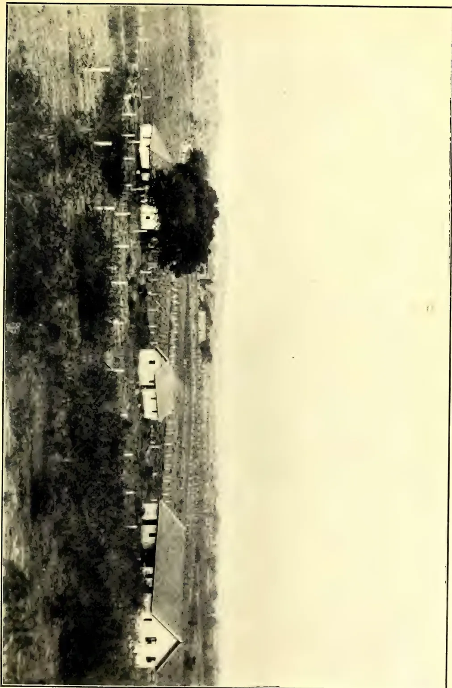
A black and white photograph showing a general view of Scovell's Estate in Bangalore. The image depicts a large, sprawling estate with several buildings, including a prominent house with a gabled roof and a smaller structure nearby. The estate is surrounded by dense vegetation and trees. In the background, a cityscape is visible under a clear sky.vide Page 341.
This image is a scan of a blank page. The paper has a light beige or cream-colored tint. There are a few very small, dark specks scattered across the surface, which appear to be scanning artifacts or dust particles. No text, lines, or other markings are present on the page. OCTOBER, 1911.]341Miscellaneous.the skin, a piece of twine was twisted round the projecting part of the pin and drawn tight. This raised the bitten part, which was cut off with a sharp knife.
The vinegar cure is described in the Queensland Agricultural Journal in the issues of January, 1903, January, 1904, and February, 1905. Three authenticated cases of cure of snake-bite by the vinegar treatment have been reported to us since the first article appeared in the Journal.—ED. "Q.A.J."
(Illustrated.)
The practical solution of the problem whether English fruit could be successfully grown in the tropics is one which calls for a good deal of enterprise. In Ceylon we find grapes growing in Jaffna, peaches in Haputale, and pears and plums in Nuwara Eliya; while in Bangalore most varieties of English fruit are found to thrive. But, so far as we know, no serious attempt on a commercial scale has been made to raise such fruit under the most favourable conditions for their growth, and under the supervision of thoroughly qualified practical experts. We have heard of more than one Company or Syndicate started under apparently happy auspices, but in the end invariably languishing for the want of a proper water supply, for the lack of funds, for the need of a reliable expert, or some such reason. "Scovell's Estate" is rather a misleading designation for what is in reality a fruit farm situated 6 or 7 miles away from Bangalore Cantonment. The farm is about a hundred acres in extent, and during the last two years has been gradually planted up with different varieties of fruit-trees imported from Australia—such as oranges, grapes, apples, peaches, peas, apricots, &c.
In such a venture the two important elements are the selection of the site and the proper equipment of the farm. In both these respects Scovell's Estate has been most fortunate. As regards situation the place is a veritable "happy-valley," provided with an unfailing water supply, which is so utilised as to bring the entire area under a perfect scheme of irrigation. This excellent arrangement, though it has involved considerable expense, places the farm at an immense advantage.
The plantation itself is under the immediate supervision of a fruit expert of considerable practical experience,
who is convinced that it is possible to arrest the tendency in tropical vegetation to grow continuously, and to induce a dormant condition so essential for the formation of fruit buds.
I had the privilege of visiting Scovell's Estate on the 17th of September last, and of being shown over the property by Mr. Scovell and his Manager, Mr. Meredith, both of whom seem to be quite satisfied with the prospects. If their anticipations are realised, there should be a great future for the cultivation of English fruit in Southern India, provided the same business acumen is available for selection and equipment; for with cheap labour and good prices in the East, there is no reason why the output should not successfully compete with the produce of Australia and other parts of the world.
The Farm is well worth a visit, and the best time for seeing it is about April, when most of the fruit under cultivation should be in season.
C. DRIEBERG.
Colombo, October 4th, 1911.
RATES WILL BE SLASHED IN A WAR FOR THE WORLD'S COMMERCE BETWEEN THE TWO DITCHES.
With the opening of Panama Canal there will be a slash in the rates in a war for the commerce of the world. According to latest advices the United States Government is preparing to begin business with a cut in the rates of 100 per cent. below the tolls charged by the Suez Canal.
An interesting article on the coming war for the commerce of the world appears in the Minneapolis Journal, and is of special interest at this time. The article follows :—
Competition between the Panama Canal and the Suez Canal is expected as soon as the former waterway is open to commerce. The United States Government realizes this, and is preparing for it. It is the intention, if Congress sanctions the step, to begin business at Panama at once with a cut of practically 100 per cent. below the tolls charged by the Suez Canal.
"That the Suez Canal will meet the cut is not doubted. That canal is owned by a private corporation, and without competition, it has been earning a gross revenue of upward of $20,000,000 a
Miscellaneous.342[OCTOBER, 1911.year. But if the Panama Canal takes away any material share of the Suez business, Colonel Goethals has assured President Taft that the Suez Canal can come down to the proposed Panama rates and still declare dividends of reasonable size.
The idea of competition between canals on opposite sides of the Atlantic ocean may seem rather far-fetched, but the canal authorities of the United States Government explain it in a rational way. They say the North Atlantic is the harbour of the world's wholesale and manufacturing trade. The principal business of the world centres around the shores of that sea. The principal trade of the world runs into and out of the North Atlantic. That is where all the rest of the world comes for its goods, and it is the clearing-house through which it does its business and finances its operations.
Heretofore there has been but one chief gateway out of this centre of trade—that to the eastward through the Suez Canal. But now there is to be a gateway to the westward as well through the Panama Canal. Hence the competition between the two gates must follow on all trade between North Atlantic ports and the other side of the world. The question of which will get the greater share of it is one solely of dollars and cents.
Colonel Goethals, the builder of the Panama Canal, who expects to throw it open to commerce in less than two years, has explained all this to President Taft during his present visit to Washington. It will not be a matter of sentiment, but purely one of which canal and which route will enable the ships to deliver their cargoes at the lesser expense.
The Suez Canal at present charges a toll of about $1.70 per net registered ton American money and American measure. From the attitude of both the President and of Colonel Goethals, it is inferred that they will advocate a charge at Panama of not more than $1 per net registered ton, and possibly less than that. What they would like to have Congress do is to give the President authority to fix the rate at anything between 50 cents and $1.50 a ton, so that he may be able to decide upon a figure finally that will permit the Panama Canal fully to meet its operating expenses, there being no evidence of intention to try to make money out of it. Of course, these rates refer to world traffic, and not to American ships, as the right is always retained to let American vessels use the canal toll free if that shall be deemed best.
By W. N. SANDS,
Agricultural Superintendent,
St. Vincent.
(From the West India Bulletin,
Vol. XI., No. 3, 1911.)
The Land Settlement Scheme of St. Vincent is probably the largest and most comprehensive of its kind yet attempted in any of the British West Indian Colonies, so that an account of the working of it during the past ten years, more particularly from an agricultural standpoint, may be of interest.
The scheme owes its existence to the West Indian Royal Commission of 1897. The Royal Commission, after going very fully into the condition of the peasantry of St. Vincent, reported as follows, in paragraphs 374-8 of their report:—
374. We have already made a general recommendation that the settlement of the Creole population of the West Indies as cultivating proprietors should be recognized as the settled policy of the Government of the different Colonies, and we see no reason to depart from that policy in the case of St. Vincent. On the contrary, it seems to us that, whether the sugar industry is maintained or disappears, it is absolutely essential in the interest of the native population that their settlement of the land should be facilitated; in no other way does it seem to us to be possible to maintain even the most moderate degree of prosperity in St. Vincent.
375. At the same time the question is surrounded with special difficulties in the case of this island. There is, no doubt, a large extent of Crown land, but this land is situated in the centre of the island, at a considerable elevation, remote from the markets, and is unprovided with roads. A great deal of the land consists of steep slopes difficult to cultivate, and liable to suffer from heavy rains and floods.
376. The attempts that have been made in recent years to settle cultivators on the Crown lands have not so far met with much success. A considerable number of plots were taken up, to be paid for in instalments, but the owners complained of the want of roads. They have suffered from the low prices of produce, and owing to the general depression they have found themselves unable to get work so as to earn the wages on which they relied in some
OCTOBER, 1911.]343Miscellaneous.degree to pay for their holdings. In 1896 many of these holdings were damaged by floods, to an extent which has made it difficult or impossible for the purchasers to pay the instalments due, whilst much of their cultivation has been swept away. Whether the attempt to settle the population of the Crown lands under such condition ultimately proves successful or not, we are convinced that it does not afford any prospect of providing in sufficient time for the bulk of the population likely to be thrown out of employment by the stoppage of the sugar-cane cultivation, and we are doubtful whether it is expedient to reduce largely the area of the central forests; a reduction which is inevitable if the lands are occupied by settlers.
377. There are, however, round the sea-coast thousands of acres of fertile land in the hands of private owners uncultivated and likely to remain so. The holders of the lands appear to be unwilling to sell them in small lots or at a reasonable price, and are unable to cultivate them. Under the circumstances we have no hesitation in recommending that suitable portions of these lands be acquired by the State and made available for settlement in small plots. If suitable lands cannot be obtained by private agreement with the owners, powers should be taken by the Government to expropriate them on payment of reasonable compensation. The condition of St. Vincent is so critical as to justify the adoption of prompt and drastic measures of reform. A monopoly of the most accessible and fertile lands by a few persons who are unable any longer to make a beneficial use of them cannot, in the general interest of the island, be tolerated, and is a source of public danger.
378. The determination of the particular lands to be acquired by the State, and the detailed arrangements to be made for settling proprietary cultivators on them must be left in the hands of those who possess greater local experience than we can pretend to. The cost of such a measure will be considerable, but need not be very heavy. We see no likelihood of the Colony of St. Vincent being able to meet it, and we recommend that it be borne by the Imperial Government.
It will be seen that a very critical state of affairs existed in 1897, which was greatly intensified by the effects of a disastrous hurricane in the month of September of the following year.
Acting on the recommendations of the Royal Commission, the Imperial Government made a Grant-in-aid of £15,000 to the local Government, for the purpose of purchasing estates and settling the peasantry on them; but before the grant could be utilized it was found necessary to pass an Ordinance to authorize the acquisition of estates. This ordinance was known as the Land Settlement Ordinance, 1899. Under it, power was given to the Governor-in-Council to select, purchase, and take possession of lands; to appoint a Land Commissioner and other officers; to make regulations for carrying into effect the purpose of the Ordinance; and for regulating the system of establishing and locating small holders on land acquired under its provisions.
During the year 1899 several estates in different parts of the island were acquired, namely, Cumberland Valley, 1,470 acres; Linley Valley, 1,571 acres; New Adelphi and Park Hill, 1,101 acres; Richmond Hill, 285 acres; and Clare Valley-Questelles, 633 acres. The total area of these was 5,060 acres. As soon as possible after the estates were taken over, the lands were surveyed and split up into a large number of small holdings. The area of the larger number of holdings averaged 5 acres. There were 633 of these, but there were also 82 having an area of about one acre each. Reserves were made (a) of half a chain around the sources of important streams, (b) of exposed ridges and such forest as was considered necessary for forest conservation, (c) of land necessary for public purposes, such as sites for churches, chapels and schools, (d) of land required for roads and paths, and (e) of land for townships.
The total cost of acquisition, including legal and survey fees was £14,706. The value of each small holding was apportioned, so that the total valuation should be equal to the total amount of the expenses incurred by the Government in the purchase of the whole area, plus interest at the rate of 3 per cent. for twelve years. Each applicant was required to pay 25 per cent. of the value of a small holding before being allowed to occupy it. The balance of the value of the land was divided up into twelve equal parts; one had to be paid before the expiration of the fifty year from the date of the provisional permit to occupy the lot, and the remaining parts by annual instalments, so that each small holder was allowed sixteen years to complete the purchase of his land. A steady and industrious applicant, who was not able to pay 25 per cent. of the
Miscellaneous.344[OCTOBER, 1911.value of a small holding at once, was allowed to occupy the land on his agreeing to pay the amount in four successive annual instalments, the first to be paid before the expiration of one year after the date of the permit to occupy the lot, and the balance of the value in the manner described above. The conditions of tenure stipulated that each small holder should reside on his holding, or on a house spot in one or other of the townships which were formed unless he had been granted permission by the Governor-in-Council to reside elsewhere. There were other conditions, but the one of chief interest from an agricultural point of view read as follows:—
Every purchaser shall carry out such instructions as to the area of cultivation, the nature of products to be planted in a particular spot, the manner in which the land is to be cultivated and the products cared for, and the handling of the products for market as may from time to time be given to him by the Officers of the Imperial Department of Agriculture for the West Indies.
The introduction of the new scheme was not received with favour by some estate owners, for they anticipated that there would be a serious shortage of labour by settling such a large number of people on the acquired lands, and they were also of opinion that the peasants would become so independent of ordinary estate work that it would not be possible for them (the estate owners) to carry on their cultivations in a profitable manner. On the other hand there was a good deal of dissatisfaction and suspicion among the peasants themselves, and at first the action of the Local Government was much criticised. Some of the peasants thought, in view of the fact that the Imperial Government had made a grant for the purchase of lands, that they should not be called upon to pay for the holdings; others thought that the Government would retake the lands after they had put them into cultivation. Some would not accept free supplies of useful plants for the same reason. The eruptions of the Soufriere in 1902 also had a demoralizing effect, and it was difficult to get some of the small holders to pay their instalments. There were other difficulties which had to be met at the outset, but happily most of them have long since been surmounted.
The administrative and financial sides of the scheme have been controlled by the Land Commissioner. Financially it has proved a success, for the Land Com-
missioner was able to report on March 31, 1910, that there was £7,964 to the credit of it, notwithstanding that no less than £6,572 had been spent on roads and by-ways, wages, resthouses for officers, wind-breaks, awards and prizes to small holders, etc., in addition to the cost of acquiring the estates. The amount expended on roads and by-ways alone totalled £3,781. Quite recently the operations of the scheme have been extended by the purchase of Union Island, containing 2,600 acres of land for £5,000, and at the present time the Government is in treaty for 400 acres of Fair Hall estate near Calliaqua. As soon as the surveys are completed, the peasantry will be allowed to purchase lands for small holdings at those places, on somewhat similar terms to those laid down in the original regulations.
On March 31, 1910, it was further reported that there were fifty lots with a total area of 272 acres on hand. These lots are for the most part in places where it is difficult to get access to them; besides, a number have land too poor and steep for profitable cultivation. For lots that are favourably situated in regard to roads, and where the land is not too difficult to work, there is keen competition at the present time.
The foregoing is a brief outline of the scheme and its present position.
The efforts of the Agricultural Department have been chiefly directed to the instruction of the small holders in the best manner of cultivating their lands and crops and preparing their produce for market; besides, the Department has annually raised and distributed many thousands of useful plants and seeds to them, free of cost.
In order that the Department might keep in close touch with each small holder and see that the instructions given are carried out, an Agricultural Instructor was appointed, whose duties are chiefly concerned with the Land Settlement estates. He is required to submit a monthly report to the Agricultural Superintendent for transmission to the Administrator and Imperial Commissioner of Agriculture. This report gives an account of the estates visited; the condition of crops; instructions given to small holders; the number of economic plants distributed; the progress made with the making and utilization of manure and compost; and any other information likely to be of interest. His work is supervised by the Agricultural Superintendent, who pays periodical visits of general inspection. A small holder who refuses to
OCTOBER, 1911.]345Miscellaneous.carry out instructions, or who neglects his holding, is first of all warned that unless he gives his land and crops the necessary attention his holding will be forfeited. Should he persist in his neglect, a recommendation for the forfeiture of his holding is submitted by the Agricultural Superintendent to the Administrator. Fortunately, it has only been found necessary to forfeit a few small holdings for this reason.
The estates, with the exception of Clare Valley-Questelles and Richmond Hill are situated in mountainous districts and extend for a considerable distance inland. There is very little level land, but the cultivable area is fairly well worked by the small holders.
The principal crops grown are cotton, ground provisions, arrowroot, cassava,
cacao, ground nuts, pigeon peas, Indian corn, sugar-cane, plantains and bananas. A considerable proportion of several of these crops is annually exported to neighbouring colonies. The cotton, however, is nearly all sold to the Government, or to local dealers, for export to the United Kingdom. Besides growing these crops for export and local use, the people rear a large number of cattle and small stock of their lands to send to other islands for sale.
Although it is not possible to ascertain correctly the quantity of the output from the Land Settlement estates, it may be taken for granted that a large proportion of the exports shown in the following list came from them. The items and values are taken from the official Blue Books of the past five years.
LIST OF EXPORTS OF GROUND PROVISIONS, SMALL STOCK, ETC., 1905-6 TO 1909.
| Year. | ARTICLES. | Total. £. |
||||||||||||
|---|---|---|---|---|---|---|---|---|---|---|---|---|---|---|
| Sweet Potatoes. |
Tanias. | Yams. | Ground Nuts. |
Farine. | Plantains. | Fowls. | Eggs. | Goats. | Pigs. | Sheep. | ||||
| bags. | bags. | Bags. | Brls. | Num- ber. |
Bas- kets. |
lb. | bran- ches. |
doz. | ||||||
| 1905-6. | ||||||||||||||
| Quantity | 9,554 | 2,551 | 1,735 | 150 | 7,334 | 9,918 | 88,789 | 2,087 | 1,550 | 442 | 3,220 | 2,288 | 768 | |
| Value £ | 1,949 | 708 | ... | ... | 687 | 2,445 | 378 | 104 | 76 | 11 | 888 | 1,538 | 384 | 9,168 |
| 1906-7. | ||||||||||||||
| Quantity | 5,560 | 2,557 | 1,856 | 77 | 8,605 | 7,684 | 64,478 | 2,160 | 2,064 | 1,122 | 2,891 | 2,186 | 468 | |
| Value £ | 1,118 | 705 | ... | ... | 650 | 1,929 | 286 | 107 | 105 | 28 | 824 | 2,186 | 236 | 8,174 |
| 1907-8. | ||||||||||||||
| Quantity | 4,803 | 1,719 | 1,035 | 186 | 8,346 | 6,360 | 40,764 | 1,088 | 1,527 | 1,794 | 2,451 | 1,575 | 601 | |
| Value £ | 1,044 | 507 | ... | ... | 521 | 1,589 | 174 | 57 | 77 | 49 | 678 | 1,569 | 296 | 6,561 |
| 1908-9. | ||||||||||||||
| Quantity | 6,418 | 2,320 | 1,232 | 121 | 13,878 | 8,869 | 76,271 | 1,858 | 1,814 | 3,192 | 1,973 | 1,573 | 524 | |
| Value £ | 1,361 | 613 | ... | ... | 423 | 1,740 | 328 | 98 | 87 | 73 | 525 | 1,564 | 211 | 7,024 |
| 1909. | ||||||||||||||
| Quantity | 5,199 | 2,334 | 1,909 | 109 | 8,308 | 5,815 | 47,900 | 572 | 2,360 | 4,170 | 2,437 | 1,563 | 638 | |
| Value £ | 1,070 | 8 casks 671 |
... | ... | 673 | 1,480 | 229 | 29 | 117 | 104 | 676 | 1,563 | 319 | 6,931 |
By far the largest acreage is cultivated in ground provisions, but a fairly large area is planted in cassava for making farine and cassava starch. Among other crops are Indian corn, pigeon peas and ground nuts. It is a fortunate circumstance that the small holders have found a ready market for their surplus produce in Trinidad, Grenada and some of the Grenadines. In Trinidad, also, there is a good market for small stock and poultry, while Barbados takes a large number of cattle in each season. These intercolonial markets are within easy sailing distance of St. Vincent. It is undoubtedly due in no small measure to the fact that the small holders have
been able to dispose of large quantities of ground provisions and other produce and stock at fair prices in these intercolonial markets, that the scheme has proved a success. Had there been no such outlet, it is likely that a large number of them would have had to eke out a hand to mouth existence, and besides, would not have been able to pay for their lands. There is, however, much room for improvement in the methods of shipment to, and the disposal of produce and stock in, other islands. The small holders often have to place their shipments in the hands of the captains or stevedores of the sloops and schooners plying between the islands.
44 Miscellaneous.346[OCTOBER, 1911.Some of these men do not always deal fairly with the people, and it is no uncommon thing for sums to be paid which are far below those actually realized. It should be possible to put this intercolonial trade on a better footing, provided that the small holders could be got to work together on co-operative lines. At the present time, however, the cultivation of cotton is being rapidly extended, which circumstance, with the possible increase, also, of arrowroot planting will no doubt lead to a reduction in the area cultivated in ground provision crops. With a smaller output and an increase in the local demand, it appears unlikely that those who continue to grow ground provisions will have to rely so much on the intercolonial markets in order to dispose of their crops at a profit.
Arrowroot is another product which is produced on a fairly large scale on some estates, more particularly New Adelphi and Park Hill, and is shipped to neighbouring colonies. At New Adelphi the Government has erected a central arrowroot mill to assist the growers there, but on several of the other estates there are small mills owned and worked by the holders themselves. The arrowroot industry has for many years been in a depressed condition; so much so, that neither the estate owners nor the peasantry of the island have been able to obtain paying prices for the starch, but recently an Arrowroot Growers' and Exporters' Association had been formed, to which nearly all the owners of private estates belong. The members of the Association have agreed not to sell arrowroot in the United Kingdom below 2d. per lb.—a figure which allows a fair profit to be made. One result of this is that the price now being obtained for arrowroot in the intercolonial markets is higher than the average price previously realized. Taken altogether, the outlook for arrowroot at the present time is much brighter, and it appears likely that its production will prove more remunerative in future than it has been for several years past.
Sugar-cane is grown chiefly at New Adelphi; here a sugar mill is also maintained by the Government. A small charge of 2s. per barrel of sugar and 1d. per gallon of syrup is made to the people for the use and upkeep of the works. These comprise an old muscovado sugar plant, and the loss of sugar through defective crushing of the cane, and in the handling of the juice is considerable; still, the system of manufacture is one which the small holders understand fairly well. It is doubtful the
industry has proved very remunerative, however during the past three or four years owing to the extension of cotton planting throughout the island, and the consequent reduction in the acreage planted in sugar-cane. The producers at New Adelphi have been able to dispose of their sugar and syrup, locally, at fairly good prices.
From the time the scheme was started it was thought desirable to encourage the small growers to establish permanent crops on portions of their lands in order that they might not have to depend so much on ground provision crops, sugar and arrowroot, and with this object in view, as has been mentioned before, a large number of cacao and other plants, but chiefly cacao, have been annually raised by the Agricultural Department and distributed free to them.
In order to ascertain the progress made, and to inspect the condition of the permanent economic plants cultivated, the Agricultural Superintendent made a complete tour through the districts toward the end of 1906, and the following extracts are taken from a report submitted by him to the Administrator:—
The chief permanent plant cultivated is cacao. Other permanent types grown in small numbers are coffee, nutmegs, coconuts, and cinnamon, but they do not form an important feature, and the produce is practically all consumed locally.
When the estates were acquired by the Government, a number of established cacao trees were already growing on them, more particularly on those in the Linley and Cumberland Valleys. The total number of trees was probably about 6,250, but many were in an unsatisfactory condition. Since 1900, the Imperial Department of Agriculture has encouraged the planting of cacao in places where it was thought it would do well. The Agricultural Instructor has selected suitable lands, and the small holders have planted them up according to instructions given.
The Agricultural Department's nurseries for raising cacao and other plants were situated at the Botanic Station and the Georgetown Experiment Station. Besides, small nurseries have been formed in the Linley and Cumberland Valleys for raising plants for the small holdings there. The latter were maintained from Land Settlement funds. In addition to the plants raised by the Department, a good many have been raised by the small holders themselves and planted out on their lands.
OCTOBER, 1911.]347Miscellaneous.As a result of the tour of inspection, it is estimated that the number of cacao trees and plants now growing on the estates in good or fair condition is fully 60,000, the larger portion of course being young plants.
The total amount of cacao produced at the present time on each estate has been carefully estimated with the following results:—
| Estate. | Number of bags of cacao produced. |
|---|---|
| Linley Valley estates ... | 30 |
| Cumberland Valley estates ... | 15 |
| Clare Valley and Questelles... | — |
| Richmond Hill ... | 3-4 |
| Park Hill ... | 3 |
| New Adelphi ... | 1½ |
| Total ... | 52½-53½ |
It will be observed that the total estimated output of cacao is from 52½-53½ bags. With the exception of Clare Valley and Questelles, a progressive annual increase in yield is to be looked for from now onwards.
The area of the small holdings varies from 1 acre to 7½ acres. The number occupied at the end of the year was 584. Cacao-planting has been attempted on portions of no less than 369 with varying success. Some of the people have put in just a few plants and others a considerable number.
In order that an idea may be formed of the progress, or otherwise, made on the estate, a brief summary of each has been worked out. The condition of the trees and plants has been classed under three heads as follows:—
'Improved' means that the trees are making good progress, are well cared for, and that in most cases the cultivation has been extended.
'Fair' means that there is in the cultivation approximately the same number of trees as in 1904 when the census was taken, and that they are not making much progress.
'Poor' means that the trees are in poor condition through being planted in unfavourable situations or not well cared for.
The numbers in the summary are based on the figures given in 1904, as no later census has been taken.
| Estate. | No. of cacao plants improved. | No. of cacao plants fair. | No. of cacao plants poor. |
|---|---|---|---|
| Park Hill ... | 2,180 | 2,616 | 1,074 |
| New Adelphi ... | 2,793 | 1,784 | 961 |
| Richmond Hill ... | 3,475 | 698 | 1,014 |
| Clare Valley and Questelles... | 3,422 | 875 | 2,164 |
| Cumberland Valley estate ... | 9,437 | 3,026 | 6,147 |
| Linley Valley estates ... | 16,465 | 4,873 | 8,976 |
| Total .. | 36,402 | 13,272 | 20,436 |
The total number of plants in an 'improved' and 'fair' condition on all the estates, as shown in the list, is 49,674 as against 20,436 'poor.' In proportion to the total number of plants growing Park Hill and New Adelphi show the best record of progress, although estates such as Rosebank and Belmont in the Linley Valley group would show a still better record if taken separately.
The progress made with the planting of permanent economic plants during the past few years has been considerable, notwithstanding that at the outset many difficulties were experienced.
Since 1906 work has been continued on much the same lines, and it is estimated that the quantity of cacao now produced annually is nearly double of that grown in 1906. The chief increases in yield have been obtained in the Linley Valley and at Park Hill; here there are some excellent cultivations giving satisfactory returns; on all the estates, however, with the exception of Clare Valley-Questelles, fair progress has been made.
The following table shows the number of economic plants raised and distributed by the Agricultural Department free to small holders during the past ten years:—
| Year. | Economic plants distributed. |
|---|---|
| 1900 ... | 5,660 |
| 1901 ... | 7,679 |
| 1902-3 ... | 402* |
| 1903-4 ... | 5,325 |
| 1904-5 ... | 15,424 |
| 1905-6 ... | 11,770 |
| 1906-7 ... | 6,209 |
| 1907-8 ... | 3,325 |
| 1908-9 ... | 4,321 |
| 1909-10 ... | 3,804 |
| Total ... | 63,919 |
Of the above total, no less than 53,000 were cacao plants.
With seed of good types of cacao now available on all the estates, small holders are able to raise their own plants, so that it has not been found necessary to continue the maintenance of nurseries
* Year of eruption of Soufriere.
Miscellaneous,348OCTOBER, 1911.at Georgetown and the Linley and Cumberland Valleys; the nursery at the Botanic Station has, however, been maintained.
The Agricultural Instructor has continued closely to watch the cultivations and give advice and instruction to the growers in regard to manuring, pruning and other matters, and his assistance is now much appreciated.
The progress made with cacao cultivation may be said to have been somewhat slow; still it should be mentioned that, under local conditions, cacao is rather a difficult crop to grow. The soils are, as a rule, too light and shallow, and it is only in sheltered places where there is a good depth of rich soil, and the rainfall is not excessive, that cacao thrives. Again, the small holders lack capital, and there have been no means by which they could obtain loans at a low rate of interest to establish cultivations; besides, they have not forgotten the disastrous hurricane of 1898, which destroyed nearly all the cacao plantations in the island. Under these circumstances, it is not to be expected that many of them, even if they had the money, would care to incur the expense and take the risk of planting, on any considerable scale, a crop which takes about seven years to reach a paying stage, since they are able to raise crops which give a quicker and more certain return on their outlay and for their labour.
From the experience gained, it is not considered desirable that the Agricultural Department should insist on any large extension of cacao planting, but should rather endeavour to induce the small holders to practise more intensive methods of cultivation of the plots that are already established and are promising well.
Excellent progress has been made with the cultivation of Sea Island cotton as an annual crop at Clare Valley-Questelles and parts of the Linley Valley and Richmond Hill estates. On these estates there are open lands near the coast. Unfortunately, the lands of the other estates are not suitable for cotton cultivation, so that the area available is limited.
Although the industry was introduced in 1903, it was not until 1906 that a serious attempt at cotton-planting was made by the small holders. In that year 48 acres was planted, but since there has been a progressive annual increase in the area cultivated, which during the present season has reached 290 acres. Of this total, Clare Valley-Questelles
is represented by no less than 236 acres, and it is on this estate, therefore, that most progress has been made.
The details for the several years are as follows:—
| Season. | Area of cotton planted, Clare Valley-Questelles. Acres. |
|---|---|
| 1906-7 | ... 11½ |
| 1907-8 | ... 50 |
| 1908-9 | ... 96½ |
| 1909-10 | ... 151 |
| 1910-11 | ... 236 |
The yield per acre for each season has been satisfactory. This is in no small measure due to the advice and instructions given by the Agricultural Instructor in regard to the crop.
It is estimated that the value of the present season's cotton crop grown on the Land Settlement estates will exceed £2,000, or an all-round gross value of over £10 per acre.
During the last season the Government inaugurated a system whereby seed-cotton is purchased from small growers throughout the Colony on a profit-sharing or co-operative basis at the Government Cotton Ginnery. This has had an excellent effect, for besides ensuring that growers get a fair market price for their cotton, it induces them to put forth their best efforts in the cultivation of their lands, and has led to an extension of cotton-planting.
The system of purchasing cotton may be briefly described as follows:—
Seed-cotton brought for sale is first of all graded, and then a price is paid which is equal to one-fifth of the estimated value of the lint, less 2c. per lb. to cover freight and other charges. For instance, if the market value of first grade white lint is 37c. per lb., the price paid for seed-cotton is 7c. per lb. The seed is not returned to the grower, but retained to cover the cost of ginning and baling the lint; but should the proceeds of the sale of the seed exceed 1c. per lb., the amount of the excess is added to the bonus distributed at the end of the season. The bonus distributed has been equal to four-fifths of the net profits made.
This is calculated on a percentage basis on the amount paid on account to the growers. For example, if £1,800 is paid on account for seed-cotton, and at the end of the season it is found that the net profit made by the sale of lint and seed is £450, the amount available for distribution would be £360, which is equal to a bonus of 20 per cent. or 4s. for every quantity of seed-cotton sold worth £1.
OCTOBER, 1911.]349Miscellaneous.The successful results already obtained under this system by the peasantry have ensured that a much larger acreage will be planted in cotton on the Land Settlement estates during the coming season.
Besides dealing with questions concerning the best manner of growing and handling different crops, the question of maintaining the fertility of the lands of the small holdings has received, and continues to receive, a good deal of attention on the part of the Officers of the Agricultural Department, and it is gratifying to note that very satisfactory progress has been made.
The small holders have had to be constantly instructed in the making of drains to prevent washing, the formation of compost heaps and manure pens, the growing of leguminous and other plants for green dressing purposes the utilization of grass and bush as a mulch for permanent crops and for arrowroot, the rotation of crops, and in pasture following. Further, in order to prevent waste of valuable organic matter, the burning of bush, except with the permission of the Agricultural Instructor, has been strictly prohibited.
Although a large measure of success has attended the efforts made with Land Settlement at St. Vincent, and most of the difficulties which presented themselves at the outset have been surmounted still, when looked at to-day in the light of past experience, the scheme appears to be somewhat incomplete. Had it been possible to arrange agencies for the disposal, on co-operative lines, of the produce and stock of the small holders, and to form co-operative credit banks on the Raiffeisen system on the different estates, the scheme might have proved an even greater success.
In most countries where plans for the settlement of the people of the land are being carried out, these matters have received a great deal of attention; but whether success would have attended local efforts in this direction at the commencement of the scheme it is not possible to say, as the circumstances of the small holders now are quite different from those of ten years ago.
During the past two years, as was previously mentioned, the Government has successfully introduced a system for the purchase of cotton on a profit-sharing basis, but it is questionable if it would be wise to extend the system further so as to include other products, owing to the large amount of extra work and responsibility that it would involve. It should rather be left to the
people themselves to form co-operative agencies for the purchase and sale of their produce, the Government of course giving all possible help and encouragement. At the present time agencies might be started for dealing with such products as cacao, arrowroot, cassava starch and ground nuts.
A few months ago, a small number of the better class of small holders at Clare Valley-Questelles formed an agricultural credit bank, and suitable rules embodying some of the best features of the Raiffeisen system were drawn up. The Government, in order to start the bank on a sound business footing, made a loan of £25 at 5 per cent. interest per annum. Should this pioneer bank prove a success it is likely that others will be started in different districts on similar lines.
It will be seen that serious efforts have recently been undertaken to make the scheme more complete, and it is hoped that success will attend them.
Since the meeting of the Board held on 14th August, the following have become members of the Society:—C. J. Owen, W. G. Bayley, William Gibson, H. Woltersdorf, E. G. Adamaly & Co., P. Alfred L. Dias, Henry A. Perera Mudaliyar, Camora Municipal (Margoa), H. A. McMillan, Bosanquet & Co., J. D. Finch Noyes, A. H. Taylor and A. St. V. Jayawardene.
Messrs. P. B. M. Bandaranayake and M. J. A. Karunanayake have been appointed as probationary Agricultural Instructors.
Mr. N. Wickremaratne, last stationed at Kegalla in connection with a special programme of work for that district, was sent to Pusa Research Institute for a training in lac culture. Mr. Wickremaratne has already entered upon his training under Mr. Misera, the lac expert, and should be back in Ceylon by the end of the month with a stock of brood lac for inoculating purposes. He has already sent out a stock of brood for Zizyphus juguba (Sin., Masan) which appears to have travelled well.
The Secretary paid a visit to Matara and Hambantota before going on a month's leave spent in Bangalore.
Miscellaneous.350[OCTOBER, 1911.Mr. Chelliah reports a very busy time in the North among the cultivators, who have started work with the rain which was so anxiously awaited. He is giving special attention to growing cotton in chena lands in outlying districts, such as Pooneryn.
Mr. L. A. D. Silva has been deputed to work in the Sabaragamuwa Province, which has been very badly served by the drought. His suggestions for assisting the poorer cultivators are receiving attention; and seeds asked for by the Government Agent will be sent as they become available. During September he visited Hatella, Ematiyagoda, Godakewela, Warayaya, Hanwane, Kottimulwela, Belimalliyadde and Balangoda.
Mr. Wickremaratne visited Dedigama, Pinnawela, Pineniya, Kottapola, Waki-rigala, Beddewela, Mawanella, Balalla, Ambepussa, Galapitamada, Kahambiliyawela, Undugoda, and Kehelwatugoda, and before leaving for India he was engaged in planting Pinnawela and Dedigama Experimental Gardens with fruit trees and vegetables. He also initiated experiments in paddy growing by transplanting at two centres, and held a ploughing demonstration at Kehelwatugoda.
Mr. Molegode, Agricultural Instructor for the Central Province, visited the Badulla district and was engaged in holding meetings and ploughing demonstrations at different centres. At Timbirigaspitiya a ploughing demonstration was held, arranged by Bibile Ratemahatmaya, who was present with the headmen and paddy cultivators to see the working of the Empire plough. The Ratemahatmaya has ordered a number of ploughs for lending to villagers. Mr. Molegode's interesting report on his itinerary will be published in full in the Society's Magazine.
Mr. Sathasivam has been devoting most of his time to assisting in the cultivation of cotton in chenas. He has also started work in an Experimental Garden at Tampiluvil. He reports that about forty light iron ploughs are now in use in his district.
Mr. Jayasuriya visited Boralupola, Madurawela, Renuwana, Yalagala, and held ploughing demonstrations wherever it was possible; some of the demonstrations had to be postponed owing to the fields being flooded by rain water.
Messrs. Bandaranayake and Karunanayake, probationary instructors, are undergoing a special training at the Experiment Station at Gangoruwa and the Government Stock Garden, and will be sent out into the provinces after a term at Mahailuppalama.
The Dumbara Branch is at present chiefly occupied with its experiment in growing Sumatra tobacco under the supervision of Mr. Valabane.
The Wellaboda Pattu (Galle) Branch, at a recent meeting, elected new office-bearers, and appointed Messrs. J. H. Siriwardene and C. D. S. Wickremasuriya and the Secretary (Mr. W. de Livera) a Committee to make a report on the Experimental Garden conducted by Mr. N. A. S. Jayasuriya at Weragoda, where excellent work is said to be going on.
The Magampattu Branch recently held a meeting to consider what steps should be taken to assist the cultivators who have suffered so much by the failure of seasonal rains, as a result of which the extensive fields at Tissa have failed to mature their crops. A resolution was unanimously adopted at a meeting presided over by the Assistant Government Agent that an appeal be made to the Parent Society with a view to obtain the loan of a sum sufficient to purchase seed paddy for the next cultivation. A fund started at the meeting was liberally supported, and the Finance Committee of the Board has the question of loan under consideration.
In addition to a Special Committee in connection with the All-Ceylon Exhibition of 1912, referred to in the last Progress Report, an Executive Committee to deal with all details connected with the Exhibition has been formed, consisting of the following members:—
The Hon'ble the Colonial Secretary
The Director, Royal Botanic Gardens,
The Chiarmen, Chamber of Commerce
The Hon'ble Mr. Solomon Seneviratne
The Hon'ble the Government Agent,
W. P.
Mr. E. B. Denham
Mr. H. F. Macmillan
Mr. W. Arthur de Silva, and
The Secretary.
The Catalogue of the Exhibition is now under the deliberation of the Special Committee, and will be published shortly.
A market show was held at Dedigama on the 19th August, which was well patronised in spite of the drought and sickness in the district. A fuller report of this Show will be given in the Agricultural Magazine.
Small consignments of Rascadam, Badshabog, and of Carolina Golden Rice from the U. S. A. are under experiment in suitable centres.
OCTOBER, 1911.]351Miscellaneous.Cultivation by transplanting is carried on at various places under the supervision of the Agricultural Instructors.
Referring to new ploughs, Mr. Molegode, Agricultural Instructor, writes:—"I am of opinion that the 'Goiya' plough (imported by Messrs. Hunter & Co.) is suitable for most lands. At Uva it has created quite a favourable impression."
The British Cotton Growing Association sent through their local agents a cwt. of cotton seed known as Sakellarides, and in advising despatch reported:—
"Last season in Egypt a planter there raised a very excellent type of cotton, which competed with the Sea Island varieties, and realized prices from 15d. to 17d. per lb. The cotton has not the same lustre and fineness as the Sea Islands, but is very strong, and altogether a useful cotton. In view of the fact that Sea Island Cotton did well in Ceylon, it has occurred to me that it might be useful if you could have some experiments carried out with this class of cotton, and therefore we are sending a bag of this seed to our Agents, Messrs. Freudenberg & Company, and asking them to hand the same to you. We shall be very glad to learn the result of any experiment you may decide to make with this seed. The name of the successful planter was a Mr. Sakellarides, and the seed is named after him, so that it is now known as "Sakellarides" seed. We might also mention that the Imperial Department of Agriculture for the West Indies are undertaking experiments with this variety."
The seed has been distributed to all likely places and is being tried in the Experimental Gardens conducted under the supervision of the Society's Instructors.
The following report on the Cambodian cotton grown at Balalla Experimental Garden has been received from the Director of the Imperial Institute:—
"Lint fairly soft, lustrous, of pale cream colour and almost free from stains. Strength generally fairly good, but some portions weak. Length of fibre from 1 to 1.2 inches; mostly from 1.1 to 1.2 inches, commercial valuation nominally 7d. per lb., with middling American at 7.39d. per lb., and fine machine ginned Broach at 7.5d. per lb. The colour is of good quality; it is somewhat fine and softer than samples of Cambodia cotton recently received at the Imperial Institute from India, and it resembles an
American Upland type. Such cotton would be readily saleable in the United Kingdom."
Mr. J. B. Ratnayake, of Wauwa, Hambantota district, sends the following interesting report of a trial of growing Sea Island cotton. The experiment was unfortunately begun at the wrong season, but its lessons are not without interest:—
"Three acres' extent of land was prepared for cotton cultivation in February, 1910, but for want of rain the planting had to be delayed till the 14th May of that year, when there was some rain. Dry weather set in again shortly after planting, and only about two-thirds of the seeds planted germinated. Fresh seeds were planted on 16th June to replace the failures and watered for five days. Of the three acres' extent two were cultivated in the manner of chena cultivation and one acre on ridges, according to instructions. There was no difference in the growth in the two methods. Some of the trees grew up to about eight feet high, but they bore less than those of the shorter growth. During the first two months after planting there was little rain, but the plants came up vigorously. The first picking, which was done in October, gave six hundred and seventy pounds of seed cotton. Twenty-five days later the cotton was ripe for a second picking; but, owing to excessive rain, the flowers and pods fell off and the fibre of those that remained were hopelessly damaged, and only eleven pounds of seed cotton were collected. The third picking commenced about the beginning of February last, and five hundred and sixty pounds of seed cotton have already been collected, and about one hundred pounds more could be picked from the trees of the second planting. There was dry weather during this picking, and the colour of the fibre was superior to that of the first and second, but its length was somewhat shorter.
"Samples of the stained and unstained cotton were sent to Messrs. Freudenberg & Co., Colombo, and they have valued them at seventy-five cents to one rupee and fifty cents per pound of lint. During the wet weather maggots and small beetles of pink colour appeared on pods, which affected the colour of the fibre to a great extent; but, as soon as the rains ceased, they disappeared; nevertheless a bug-like fly brooded in vast numbers, but these insects did not do much harm to the crop. I got rid of them by the application of naphthalene to the cotton collected. The cost of cultivation of the two acres of chena land was
Miscellaneous.352OCTOBER, 1911.Rs.42, and the acre planted on ridges Rs.26, the three pickings cost Rs.18. This variety of cotton appears to be suitable for this District, where I have tried it in many places on a small scale, but since there has been much variation in the rainfalls during the past few years; it is difficult to specify a definite period for its planting. However, I am of opinion that the North-east Monsoon is the best for its cultivation, as the maha rains usually last during three months followed by dry weather, when the maturity of the pods take place. Of all the places where I experimented, the cotton plants that were grown in Marakada division gave the largest yield, though the trees did not grow up high. This division is about the driest in the district. There are vast chena tracts in this division which are only under chena cultivation. Each tract has its own tank. There is reason to believe that these lands, or even portions of them, were cultivated with paddy in ancient times. By restoring these tanks cotton could be easily cultivated here independent of the rainy seasons. If the product could be sold on the spot, it is probable that almost all the villagers would take to its cultivation, as the land on which cotton is cultivated could be utilized for fine grain cultivation once every other year, whereas, at present, chenas are cultivated once in five or six years because no jungle would grow up before such time on the land."
The position as to the experiment in tobacco cultivation at Mahailuppalama is dealt with in the papers submitted to the meeting, consisting of a Report by the Chairman of the Tobacco Committee, the Resolution adopted at the last meeting of the Tobacco Committee, and remarks by the Superintendent of the Experiment Station at Mahailuppalama. With regard to the suggestion of the latter that work be continued without interruption, the Committee are of opinion that future operations must be under the supervision of a Scientific Expert, and that the Society should incur no further expenditure at present.
The following report has been received from the British-American Tobacco Co., Ltd., on samples of Sumatra and Java tobacco grown in Ceylon:—
"In the absence of Mr. Hignett, I have pleasure in writing you regarding the samples of Sumatra and Java Tobacco grown in Ceylon, and referred to in your letter of 7th June, addressed to Mr. Hignett.
"We have taken the matter up with an expert and gone through the samples
with him, and he has also made some cigars from the tobacco you sent. In his opinion, the tobacco, whilst it contains a few fair leaves, is chiefly of a very heavy, oily description. This trouble, however, could perhaps ultimately be overcome by finding the right seed, and the right soil in which to cultivate it.
"The greatest objection, however, to this tobacco, for use in cigar manufacture is, that it does not burn freely. Tobacco, to be used for cigars, must not only burn freely in the leaf, but further, when it is made up into cigars, it must also burn easily and hold fire, giving a white ash when used as a wrapper only, the ash should be perfectly white.
"Cigars made up from the samples you have sent will not burn properly, and there is no doubt that the leaf has been grown in unsuitable soil, and from what can be seen of the leaves submitted, the expert is of opinion that the soil they have been cultivated in would be more suitable for producing tobacco of a type desirable either for the pipe or cigarettes, but of this we cannot express any opinion.
"Further, this tobacco has a 'soapy' feeling, whereas, as a rule with tobacco suitable for cigars, it is desirable that it should have a "grainy" leaf.
"It would be very desirable to find a new ground for growing cigar material, because there is a ready market for it, and it is just possible that Ceylon, being in a similar latitude to Sumatra, might happen to have soil that is also suitable, but of this those on the spot must be the judges.
"THOS. GRACEY,
Director, British-American Tobacco
Company, Ltd."
A consignment of some 700 grafted fruit plants, consisting of varieties of mangoes, oranges, pumelo, lime, lemon, citron, pomegranate, sweet lime, guava, roseapple, grape, fig and loquat has just been received, and will be distributed immediately to applicants who have already booked in advance.
Dr. Muttukumar writes under date 30th August:—"It may interest you to know that one of the grape vine grafts you sent me in October, 1909, gave this year about twenty bunches of grapes. It is of the purple variety."
A few plants are still available of the Mozambique orange, the fruit of which is described as about 10 oz. in weight, globular, skin of medium thickness,
OCTOBER, 1911.]353Miscellaneous.surface lightly marked by vertical furrows, pulp pale yellow, juice very sweet.
The second distribution of vegetable seeds for the year among members of the Society takes place almost immediately. Fifteen hundredweights of Tephrosia purpurea seed for growing as green manure, and one ton of soy bean seed (received through the Buitenzorg Gardens) were indented for to meet special applications.
The Hickory King maize seed last distributed has given good results. Agricultural Instructor Chelliah reports that it is worth seven or eight times the value of an equal area of Setaria Italica in the North. The teacher of Alawatugoda School has forwarded some fine specimens of cobs, and the Korala of Balangoda has also a satisfactory report to give.
The Director of the Imperial Institute has made the following reports on samples of Mee-seed and oil:—
Remarks.—"The kernels of Bassia latifolia and B. longifolia are already exported from India as "Mowra kernels," and their commercial value is well known and need not be discussed here. It may, however, be pointed out that in recent years there has been a great increase in the prices of almost all oil seeds, and that consequently the present time is opportune for developing the trade in these seeds, especially those yielding solid or semi-solid fats which, like Bassia fats, are suitable for the manufacture of soap or candles, as well as of edible fats, for which there is an increasing demand.
"At present Bassia kernels are more popular with oil crushers in Germany and France than in the United Kingdom. One reason for this appears to be that the cake left after expressing the fat is considered poisonous to cattle, owing to the saponin it contains, and consequently only fetches low prices, being used as a manure instead of as a feeding stuff. Investigations recently carried out at Liverpool have shown that oil-cake made from the kernels of Bassia longifolia contains a saponin-like glucoside, which has a marked physiological action when injected sub-cutaneously, but does not appear to be very active when fed to animals. Careful feeding trials on a considerable scale with oil-cakes made from Bassia kernels would, however, have to be made before it would be safe to say whether or not such materials could be used as feeding stuffs for cattle, and
even if they proved harmless, it is probable that their intensely bitter taste would preclude their use in this way.
"Seed.—The consignment was in poor condition, the kernels being moist and mostly mouldy. The seed consisted of 30 per cent. shell and 70 per cent. kernel. Yield of oil was about 39 per cent. from the moist kernels which contained about 24 per cent. of moisture. After exposure to the air for about a day the kernels contained only 6 to 7 per cent. of moisture and 47 to 48 per cent. of oil, which is a lower percentage than that found for Bassia longifolia kernels from India. Picked kernels in good condition gave 54 per cent. oil. The oil is a solid yellowish fat having the usual appearance and properties of the fat derived from Bassia longifolia kernels. The poor condition in which the seeds arrived rendered them unsuitable for technical trials. It should be borne in mind that there is no sale in the United Kingdom for unshelled Bassia seeds, and a consignment of at least 2 cwt. of kernels (shelled seeds) should therefore be forwarded to the Imperial Institute in order that trials may be carried out. The kernels should be carefully dried in the sun before shipment. If delivered in sound condition the kernels would realise about £1 to £2 in advance of the market price of Mowra seed kernels, which were quoted at about £11 per ton in the United Kingdom in May, 1911.
"Oil.—The sample of 2½ lbs. sent by the Ratemahatmaya of Uda Dumbara, Urugala, proved on examination to be a clear granular fat of pale greenish yellow colour. Fat of this quality would probably be worth about £32 per ton in the United Kingdom under present conditions, but it is impossible to say whether this price would be realised for all consignments sent from Ceylon, for the reason that native-prepared fats of this description frequently vary very much in quality."
C. DRIEBERG,
Secretary, C.A.S.
Colombo, 16th October, 1911.
ADDRESS OF W. S. MACLEOD.
(From the Manila Bulletin.)
Among the addresses delivered at the Merchants' Association annual banquet was one by Mr. William S. Macleod,
45 Miscellaneous,354[OCTOBER, 1911.manager of Macleod and Company, which contained some interesting figures, among which was a comparative statement of the trade of the islands, which is an advance statement furnished by the Collector of Customs, and which appears in connection with this article.
Mr. Macleod's address was considered among the foremost of the evening, and is here given in part. Mr. Macleod after making a few introductory remarks said:—
When Congress conferred the great boon of reciprocity upon the islands, all of us looked for a prompt response, and we were not disappointed. Congress, naturally, could only give advantages to those articles of export on which a tariff was levied in the United States; and of the four great articles of export from this country, sugar and tobacco were the two so favoured. Within the first year after the passing of the Payne Bill, the increase in the value of the export of these two articles was over four and one-half million dollars. It is probable, indeed certain, that both of these articles will develop within a very few years into greater sources of wealth than they are even now, especially with the improved methods now being put into use with sugar, and with the probable improvement in the culture of tobacco.
In speaking about exports, we are practically confined to the agricultural resources of the islands. As we all know, this country depends upon its soil. Manufactures and minerals may, in time, become considerable items in our sources of wealth, and we all hope and expect that they will, but at the present moment we exporters have to confine our main attention to handling the farm products of the Philippines. Our monopoly, hemp, has for many years held premier place; but a comparatively new article, copra, is beginning to challenge it. It is not yet well known that these islands are now the largest producers of copra in the world. Twenty years ago, copra, as an article of export was unknown, and it was only made here in order to be expressed into coconut oil for local use. At that time it was a usual thing to see large rafts of coconuts being floated down the river to be loaded into small Hongkong steamers at Fort Santiago, and carried by them to China for sale as fruit. What oil was made locally was used for lighting, for lubricating of practically all the small machinery in use, for cooking, and for other household purposes.
The increase in the production and export of copra is one of the romances
of trade. In less than twenty years our copra export has advanced from nothing to over 100,000 weight tons, worth over nine million dollars. The Philippines seem to be in a peculiarly favourable geographical situation for the growth of coconuts, and with the extension of means of communication, there is no reason why copra should not double its production within the next ten years. One reason why it should do so is that copra-making is liked by the natives, and it probably gives better return for the land and labour used than any other crop we produce.
Hemp continues to hold its place as the first of our exports, although, as I have said other articles may go ahead of it in time. A great part of the late discussion on the subject has been devoted to what is called the low price obtained for the article. Now, the terms "low" and "high" are only comparative. I am afraid that our hemp producers were spoiled somewhat by the high prices obtained for the small quantity produced during the war times and just after the drought of 1904.
Mr. Macleod then referred to the poor quality of hemp that has been turned out and placed on the market, and referred to the present market open to Philippine copra and turned his attention to sugar. He said: "Sugar, I think, suffers from the same fault. Up to the time that high polarization sugars began to be produced from beet, the islands found little difficulty in finding sale for all the cane sugar produced. The years 1892 and 1893 were the high water mark, with a production of about 250,000 tons each year, of a value of between seven and ten millions gold, and during several years this crop exceeded the hemp crop in value.
Under the Payne Bill stimulus, it cannot be many years before the 300,000 ton average is reached, and if Congress does not make further concession, we may have to compete with other countries, and we can only do so if the quality of what we produce is as good as theirs.
Tobacco was lightly touched upon, and then Mr. Macleod continued as follows: The largest year before the war showed a total export value of about 30,000,000 dollars, but during the poor years between 1893 and 1898, there must have been times when the annual value was under 20,000,000 dollars. In 1902 our total was 24,500,000 dollars. 1902 to 1909 averaged just over 32,000,000, and the yearly variation was small. The fiscal year 1910 showed about 40,000,000, which was eight millions more than 1909. The Payne Bill
OCTOBER, 1911.]355Miscellaneous.accounted for 4,600,000 of this increase, say 2,700,000 in sugar and 1,900,000 in manufactured tobacco; and ordinary increases outside of the Payne Bill protection were shown in copra 2,500,000 and hemp 1,500,000. These figures are all in gold.
Every dollar of increase in export values is a dollar won for the Philippines, and every dollar thus won means a little more prosperity for the islands and for all of us.
The main object of this Association and the larger and broader Board of Trade that we all hope and dream that this Association and its kindred will be welded into, is to promote, in every way
possible the inter-change of products, but I do not think I mistake the aims of the Association if I say that I believe that its intention is to go even further than that. While this Association must fitly attend in the first place to its special subjects, it can and will act in friendly conjunction with all the other bodies, official and non-official, whose object is the prosperity and good of the Philippine Islands.
Mr. Macleod then gave the comparative statement hereto attached as to exports in 1910 and 1911, and closed with remarks as to the work that is before the Association for the future good of the Islands.
Comparative statement of the principal articles exported from the Philippine Islands during the Fiscal years 1910 and 1911.
| 1910. | 1911. | |||||
|---|---|---|---|---|---|---|
| Quantities. | Values. | Quantities. | Values. | |||
| Hemp | ... Kilos | 170,788,629 | ... | $17,404,922 | ... 165,649,626 | ... $16,141,342 |
| Sugar | ... " | 127,717,042 | ... | 7,040,690 | ... 149,376,454 | ... 8,014,360 |
| Cigars | ... Thousands | 196,912 | ... | 2,973,630 | ... 132,217 | ... 1,700,712 |
| Cigarettes | ... " | 30,886 | ... | 34,045 | ... 33,662 | ... 36,132 |
| Leaf Tobacco | ... " | 9,739,015 | ... | 1,598,557 | ... 12,161,949 | ... 1,794,480 |
| Other Tobacco | ... " | 181,039 | ... | 31,263 | ... 325,203 | ... 74,243 |
| Copra | ... " | 115,284,851 | ... | 9,153,951 | ... 115,601,270 | ... 9,899,417 |
| Hats | ... Number | 621,475 | ... | 290,349 | ... 1,025,596 | ... 307,987 |
| Coconuts | ... " | ... | ... | ... | ... 632,503 | ... 13,594 |
| $38,527,407 | $37,982,267 | |||||
| All other articles | 1,359,445 | 2,080,486 | ||||
| $39,886,852 | $40,062,753 | |||||
SERIES OF LECTURES UNDER AUSPICES OF MERCHANTS' ASSOCIATION TO BE GIVEN BY BUREAU OF SCIENCE.
(From the Manila Bulletin.)
Invitations have been sent the Chambers of Commerce of the China Coast asking that their members attend the series of lectures to be given by Dr. Paul C. Freer, Director of the Bureau of Science, and his staff, under the auspices of the Manila Merchants' Association.
President Milton E. Springer and Dr. Freer have arranged the schedule for the first half of these lectures to accommodate not only the steamers from the China Coast, but the Pacific Mail and Great Northern liners as well, so that tourists will be able to gain accurate information regarding the resources of the Philippines in authoritative and attractive form.
It is proposed in these lectures to talk, up the great resources of the Philippines, not only those already being developed, but the great potential resources as well, so that not only the stranger but the dweller in Manila will receive a resumé of the accurate information that the Bureau of Science has been gathering for years. These lectures, experts say, will be of great practical importance, in that they will set forth the commercial side of every topic and give the businessman a closer and, at that, a more comprehensive view of the materials of commerce in the Archipelago.
Not only have special invitations been extended to the China Coast businessmen, but the four Chambers of Commerce of Manila have given most cordial invitations to attend all of these lectures, as it is the desire of the Manila Merchants' Association that businessmen—Filipino, Chinese and European—share in the benefits to be derived.
The Empire theatre has been made available for these lectures through the generosity of the manager, Mr. Bert
Miscellaneous.356[OCTOBER, 1911.Yearsley, and it is expected that every seat will be taken at 5 p.m. on September 19, when Dr. Freer will open the course with a talk on the work of the Bureau of Science, and what it means to the businessmen. The lectures will be illustrated copiously with lantern slides thrown upon the cinematograph screen of the theatre. The following schedule has been arranged:—
September 19, 1911.—1. The Bureau of Science, its meaning to the Commercial Public, and its work, by Paul C. Freer, Director of the Bureau.
October 17, 1911.—2. The Philippine Alcohol Industries, by A. D. Gibbs, chief of the Division of Organic Chemistry.
December 5, 1911.—3. Sugar production in the Philippine Islands by Waller B. Gonder, Iloilo Sugar Laboratory of the Bureau of Science.
January 15, 1912.—4. Road and road materials, by Warren D. Smith, chief of the Division of Mines.
February 23, 1912.—5. The salt production of the Philippines, by Alvin J. Cox, chief of the Division of General Inorganic and Physical Chemistry.
March, 1912.—6. Gold Milling and Mills, by Frank T. Eddingfield, Division of Mines.
April, 1912.—7. The Coconut Production of the Philippine Islands, by Paul C. Freer, Director of the Bureau.
May, 1912.—8. Silk Production in the Philippines by Charles S. Banks, Entomologist, Bureau of Science.
June, 1912.—9. Economic Plants and Plant Diseases, by Elmer D. Merrill, Botanist, Bureau of Science.
July, 1912.—10. The Sampling of Mines and Assaying, by Paul H. Fanning, Division of Mines.
The lectures begin at 5 p. m. The individual lectures are subject to change.
BY MR. VICE-CONSULAR FUNCH.
(From the Diplomatic and Consular Reports, April, 1907.)
A revised system of taxation, embodied in four separate laws, was introduced in Denmark in 1903. These laws are:—
The main object of these laws was to relieve the agricultural class of what was thought to be excessive taxation, as compared with taxation borne by other classes of the community. In order to understand the position, a brief account of the taxation prior to 1903 must be given. Mr. MacDonell's report of July 11, 1890, and the official statistics relative to the proceeds of the taxes may also be consulted.
Local Taxation prior to 1903.—The system of local taxation in the rural districts was revised in 1876, and at that time all the different old rates—poor rate, school rate, &c.—were abolished, or rather amalgamated in one rate, which was levied, partly on income and partly on land. To meet the expenditure for its own Budget the County Council might levy taxes on land; but it had also the right to charge the Parish Council with part of the expenses—i.e., it might levy less tax on land and charge more to the parishes, or vice versa. The proportion in which each Council was to obtain its revenue from land and from the parishes was fixed for a period of three years. The tax-payer paid local land tax both to the County and Parish Councils, but local income tax only to the parish.
The land tax, both for the parish and the County Council, was based on a valuation of the productive power of the ground made during the first forty years of the nineteenth century. It will easily be understood that, being based on this old valuation, the local taxes, which had increased very considerably during the last century became very unequal. At the time of the valuation the tax was fairly just, but in the course of the century the economic condition of the farmers changed very much owing to railways, improvements, &c., so that the tax paid by agriculturists was no longer proportionate to their ability. On the other hand, the number of non-farming inhabitants of country districts increased with the development of modern industries, and this class paid too little tax in proportion to their ability, since they only paid according to the productive power of the small plots of land occupied by residences or shops.
The local income tax, called the Property and Ability Tax, which was levied in the parishes, was assessed according to "the whole financial position" of the person concerned, and, there being no more definite regulation of assessment than this, different principles were, as a matter of fact, applied in different parishes. The tax,
OCTOBER, 1911.]357Miscellaneous.however, involved less injustice than would appear at first sight, as all people in the parish knew each other, and were acquainted with each other's financial position.
The growth of the local expenses and the taxes is shown by the figures for 1892 and 1902, the year before the reform of taxation. (The financial year for the parish is January 1 to December 31; for the country, April 1 to March 31.)
| Year. | Expenses. | Land Tax. | Income Tax. | |||
|---|---|---|---|---|---|---|
| Value in 1,000,000 Kr. | Value in 1,000l. | Value in 1,000,000 Kr. | Value in 1,000l. | Value in 1,000,000 Kr. | Value in 1,000l. | |
| 1892 ... | 23 to 24 | 1,280 to 1,330 | 4·12 | 690 | 4·3 | 240 |
| 1902 .. | 30 31 | 1,670 1,720 | 13·4 | 740 | 6·6 | 370 |
The increase of the local expenditure had for many years given rise to discussion, both outside and inside Parliament, and the suggestion which met with approval generally was that the best manner of relieving the local tax-payers was to transfer the greater part of the existing State land taxes and State building tax to the local bodies. In the end, however, these State taxes were entirely abolished.
State Taxation prior to 1903.—A review of the former direct State taxation of Denmark will enable us better to understand the motives for this radical change. The entries of receipts in the State accounts for the financial year 1902-03 show under the heading "Direct" the following figures:—
| Value in 1,000,000 Kr. | Value in 1,000l. | |
|---|---|---|
| Old land tax ... | 5 | 270 |
| New " ... | 1·7 | 90 |
| "Assessed tax" ... | 0·2 | 10 |
| Building tax in— | ||
| Rural districts | 1·1 | 60 |
| Copenhagen ... | 1·6 | 90 |
| Other towns ... | 1·4 | 80 |
| "Title tax" ... | 0·1 | 5 |
| Total ... | 11·1 | 605 |
Ten years earlier the total was 9,800,000 kr. (540,000l.), the yield of the building tax being 2,800,000 kr. (150,000l.). instead of 4,100,000 kr. (230,000l.). The proceeds from the other taxes were about the same.
The "Assessed tax" was not paid by the inhabitants, but by the municipalities; it was abolished by the reform in 1903. The "Title tax" is paid by persons upon whom a certain rank had been conferred.
The three remaining taxes are:—
(1) The old land tax ("Gammelskatten"), based on the productive power of the land, such as had been fixed by a
valuation in 1688. As pointed out in Mr. MacDonell's report, the "Gammelskat" was not in reality a tax, but a fixed ground rent similar to the old English land tax.
(2) The new land tax ("Land-og Ligningsskatten"), also based on the productive power of the ground, but in accordance with the same valuation (from the beginning of the nineteenth century) as that on which the local land tax was assessed.
(3) The building tax on buildings in and outside the cities which were not used for agricultural purposes.
Of the 10,800,000 kr. (600,000l.) to which the three taxes amounted, the rural districts paid about 7,500,000 kr. (420,000l.).
Tithes.—Besides these sums, the tithes in their different forms yielded 6,000,000 to 7,000,000 kr. (330,000l. to 390,000l.) annually. The tithes originated about the year 1000, and have now become entirely obsolete. It would take too long to discuss them in detail; it is sufficient to mention that (a) the tithes are now all commuted into fixed yearly rents; (b) the townspeople and about a fourth of the farming class do not pay tithes; and (c) the burden of this "tax" falls very unequally on the tax-paying farmers. On the other hand the tithes, in their present shape, cannot be regarded as public taxes, as many of them are private property, and from the fact of their unequal assessment are in reality ground rents. Nevertheless, great dissatisfaction has always prevailed amongst the peasants owing to "peasant land" only having to pay tithes, although the buying and selling of the land has undoubtedly tended to do away with the supposed injustice.
(To be continued.)
Miscellaneous.358[OCTOBER, 1911.A Manual on the Cultivation and Curing of Cacao by J. H. Hart, late Superintendent of the Royal Botanic Gardens, Trinidad. London, Duckworth, 1911, 307 pp.
The name of Hart will always be closely associated with Cacao cultivation in the West Indies. By a sad stroke of fate the author of this book did not survive to see its publication. Mr. Hart, after retiring from Government service in 1908, died in Trinidad on February 18th, 1911, at the age of sixty-four, and his loss will be deeply felt wherever agriculture is pursued in the tropics.
The work now before us makes a great advance both in style and contents over the paper covered volume published in 1892, of which we believe it represents the third edition, and we have no hesitation in recording our opinion that the book is likely to become, and to remain for many years, the standard work upon the subject of Cacao. The book deals successively and at length with the botany and nomenclature of cacao, with the operations of planting and cultivation, and with the nature and treatment of diseases both of animal and of vegetable origin. The processes of harvesting, fermenting and drying are dealt with in considerable detail, whilst later chapters discuss questions of yield and price, food value and manufacture—in fact no branch of the subjects is any way neglected.
The methods of curing in vogue in Trinidad differ considerably from those employed in Ceylon, the process of claying, for example, being one which is not very likely to find favour in this country. But the best methods of estate treatment and cultivation are probably much the same all the world over, and in this connection we would specially commend to Ceylon readers the twelve pages which deal with “manuring,” and which contain in our opinion an admirable epitome of this difficult subject. Mr. Hart’s views on manuring are the result of long continued experience of practical work upon actual cacao estates, his conclusions are remarkably confirmed by the result of scientific experiments carried out during the past nine years at Peradeniya.
“Let us premise,” writes Hart, “that a tree in good health needs no manure. Such a tree is doing its work well, and to the fullest extent, and therefore to feed it with manure would be like overfeeding a horse, and it would just as
quickly get out of condition.” And again, “The application of strong manures to trees in good health and in average bearing would tend to encourage rank and sappy growth which would be non-productive and loss of crop would result.” Manures may, however, be employed with advantage to bring backward trees into bearing, or to enable a tree which has set a heavy crop to bring that crop to maturity.
The practise of deep forking, and even that of digging manures into the ground is unhesitatingly condemned. “To dig deeply about the roots of a surface feeding plant for the purpose of applying manure would be absolutely absurd, as we should thereby destroy the very organs or mouths, which are needed to take up the plant food presented to them, and are situated in the proper place to carry out the process to the best advantage.” “The writer has seen the practise carried out with dire effect more than once in Trinidad, and it is quite certain that, although it may be carried out with considerable safety in a temperate climate, when trees are at rest, it is fraught with the greatest danger in the tropics.”
“The destruction of roots which the operation of burying manure occasions, would, in most cases, completely nullify the action of the manure applied, as the broken roots would not have the power, or the same amount of surface for absorbing food, as when uninjured.” And again, “The cacao tree, although it likes a deep rich soil, is also a surface-feeding plant, and the ground around the trees cannot be forked or dug with impunity, for, although the tree will stand considerable hardship, it is nevertheless materially injured when the roots are mutilated.”
The best kind of manure for cacao, according to Hart is dung, and it should be applied superficially in the form of a mulch. Any kind of a mulch is beneficial, and it would appear as if the surface feeding roots are specially sensitive and require special protection, so that any removal of the natural surface mulch of leaves which covers the ground of all good cacao estates would be highly injurious.
It is clearly impossible for us in the short space at our disposal to deal with all the chapters of this interesting book at the length which we have accorded to the chapter on manuring. As regards diseases, Hart enumerates eighteen varieties of fungal disease, but he is not quite up to date, as no mention is made
OCTOBER, 1911.]359Miscellaneous.of Rorer's work, actually carried out in Trinidad, which establishes the identity of stem and a pod canker, and attributes both to the agency of Phytophthora, a result recently confirmed by Petch in Ceylon.
As regards the varieties of cacao, Hart's classification differs little from that of Sir Daniel Morris which was adopted by the reviewer in a circular published in 1904. The Old Red variety of Ceylon appears to agree most nearly with the Venezuela Criollo of Hart's classification, whilst the types figured of Trinidad Forastero Veraguso and Forastero Amelonado can be closely matched by two of the most prominent varieties of cacao growing on the Experiment Station, Peradeniya. Our experience does not support Hart's view as to the constant inter-crossing of cacao varieties. There are now growing on the Experiment Station two acres, one of Green Nicaraguan Criollo and one of a red form of the same variety. Practically all the trees on both plots have preserved the precise colours of the
parental pods, although the trees from which the seeds were taken grew in a mingled group, red and green alternately.
We have omitted to refer to an important matter in connection with cultivation upon which the author's views have changed since the early days of his experience with cacao. Formerly Hart was opposed to the use of any kind of shade, but more recently he has come to the conclusion that the correct amount of shade is a matter of the greatest importance. This is certainly the case in Ceylon where proper attention to the growth of shade trees is one of the leading factors of success in cacao cultivation. In Trinidad two species of Erythrina are used for this purpose—relations of the dadap which plays such an important part on Ceylon Cacao estates.
For further points of interest we must refer the reader to the book itself, which is one that should find a place on the shelves of every up-to-date cacao planter. R. H. LOCK.
Gdefogguiritb S. R. T.,
Valavnur, 10th September, 1911.
SIR,—I request that you will be good enough to let me know in detail about the milk-yielding tree Gymnema Lactiferum, which is reported to yield milk like a cow, and to be cultivated in Ceylon. I wish to cultivate the same, and so I earnestly request of you to give me full information on the subject at your earliest convenience, and oblige.
I further request that you will be good enough to let me know also about the cultivation of papaw or Papaya. Its juice when manufactured finds a ready market, and it is used for digestion.
A friend of mine told me that I can get the information from you, and so have to trouble you.—Yours sincerely,
N. R. RANGACHARI.
[We are afraid our correspondent has been misled. Here is what Trimen says about the Gymnema :—
G. Lactiferum, Kurunnan S. and T. This is the Cow Plant of Ceylon, of which so many fables have been written (Tennent, Ceylon I, 101, foot note) based on the erroneous description of Hermann that its milky latex is a substitute of the milk of the cow. The leaves are believed to increase the secretion of milk (in animals).
As regards papaw, we quote from the U. S. Consular reports for June :—
"Papaw juice is extracted from the fruit of the papaw tree, which grows rapidly, attaining its full bearing
capacity in a year. It produces from forty to fifty papaws of a dark green colour, ripening to deep yellow, in shape resembling a squash. A very light superficial incision is made in the fruit, from which exudes a clear water-like juice, which on exposure to the air becomes opaque. As it drips from the fruit it is received in a porcelain-line receptacle. As it is very corrosive, metal receptacles would injure its appearance and qualities. It possesses great digestive virtues, and the refined article is considered superior to all animal pepsins.
After the desired quantity has been collected, the juice is placed in shallow porcelain or glass-lined pans and allowed to evaporate. While this is not a very delicate or difficult operation, it requires considerable attention, so that the juice will dry uniformly and the product be white and well granulated. In its granulated state it is shipped to the United States, undergoes a refining process, and is sold as the papaw of commerce for medicinal purposes.
The ripe papaw is palatable and an excellent aid to digestion. Meat wrapped in papaw leaves for a short time becomes quite tender without any impairment in appearance or taste.
In extracting the juice the hands should be protected by rubber gloves, as in its crude state it attacks the tissues.
An average tree will produce about lb. of the granulated juice. It sells in the United States for from 4 to 6 dollars per lb. in the crude state."]
360
MARKET RATES FOR TROPICAL PRODUCTS.
(From Lewis & Peat's Monthly Prices Current, London, 19th July, 1911.)
| QUALITY. | QUOTATIONS. | QUALITY. | QUOTATIONS. | ||||
|---|---|---|---|---|---|---|---|
| ALOES, Socotrine cwt. | Fair to fine | 70s a 75s | INDIARUBBER. (Contd.) | Common to good | 1s 9d a 2s 8d | ||
| Zanzibar & Hepatic | Common to good | 40s a 7s 6d | Borneo | Good to fine red | 2s 10d | ||
| ARROWROOT (Natal) lb. | Fair to fine | 8d a 9d | Java | Low white to prime red | 1s 8d a 2s 6d | ||
| BEES' WAX, cwt. | Penang | Fair to fine red ball | 3s 6d a 4s 2d | ||||
| Zanzibar Yellow | Slightly drossy to fair | £6 15s a £6 17s 6d | Mozambique | Sausage, fair to good | 3s 6d a 4s 1d | ||
| Bombay bleached " | Fair to good | £7 10s a £7 15s | Nyassaland | Fair to fine ball | 3s 4d a 3s 11d | ||
| " unbleached " | Dark to good genuine | £6 15s a £6 7s 6d | Madagascar | Fr to fine pinky & white | 3s a 3s 4d | ||
| Madagascar " | Dark to good palish | £6 10s a £7 | New Guinea | Majunga & blk coated | 2s 1d a 2s 6d | ||
| CAMPHOR, Japan " | Refined | 1s 5½d a 1s 8d | INDIGO, E.I. Bengal | Niggers, low to good | 8d a 2s 10d | ||
| China " | Fair average quality | 15s | Shipping mid to gd violet | Ordinary to fine ball | 2s 6d a 3s 6d | ||
| CARDAMOMS, Tutiocorin " | Good to fine bold | 2s 4d a 2s 8d | Consuming mid. to gd. | Shipping mid to gd violet | 3s 2d a 3s 8d | ||
| Malabar, Tellicherry | Middling lean | 1s 10d a 2s 1d | Ordinary to middling | Consuming mid. to gd. | 2s 6d a 2s 8d | ||
| Calicut | Good to fine bold | 2s 2d a 2s 8d | Oudes Middling to fine | Ordinary to middling | 2s 5d a 2s 8d | ||
| Calicut | Brownish | 1s 8d a 2s 2d | Mid. to good Kurpah | Oudes Middling to fine | 2s 6d a 2s 8d nom. | ||
| Mangalore " | Med brown to fair bold | 2s 3d a 3s 2d | Low to ordinary | Mid. to good Kurpah | 2s 2d a 2s 6d | ||
| Ceylon, Mysore " | Small fair to fine plump | 1s 8d a 3s | Mace, Bombay & Penang | Low to ordinary | 1s 6d a 2s | ||
| Malabar " | Fair to good | 1s 8d a 1s 10d | per lb. | Mid. to fine Madras | None here | ||
| Seeds, E. I. & Ceylon | Fair to good | 1s 11d a 2s | Java | Pale reddish to fine | 2s 3d a 2s 6d | ||
| Ceylon Long Wild " | Shelly to good | 6d a 1s 6d | Bombay | Ordinary to fair | 2s a 2s 2d | ||
| CASTOR OIL, Calcutta " | Good 2nds | 3½d a 3½d | Bombay | " good pale | 2s a 2s 4d | ||
| CHILLIES, Zanzibar cwt. | Dull to fine bright | 40s a 40s | MYRABOLANES, cwt. | Wild | 4d a 5d | ||
| CINCHONA BARK, -lb. | Crown, Renewed | 3½d a 7d | Bombay | UG and Coconada | 4s 6d a 5s | ||
| Ceylon | Org. Stem | 2d a 6d | Bombay | Jubblore | 4s 6d a 6s 3d | ||
| Red | Org. Stem | 1½d a 4½d | Bengal | Bhimlies | 5s a 6s 6d | ||
| Renewed | Renewed | 3d a 5½d | NUTMEGS, - lb. | Rhajapore, &c. | 4s 6d a 5s 9d | ||
| Root | Root | 1½d a 4d | Singapore & Penang " | Calcutta | 4s a 4s 6d | ||
| CINNAMON, Ceylon 1sts | Good to fine quill | 6½d a 1s 5d | 60's to 57's | Calcutta | 4s a 4s 6d | ||
| per lb. | " " | 5½d a 1s 4d | 80's | Calcutta | 10d a 1s | ||
| 2nds | " " | 5d a 1s | 110's | Calcutta | 6½d a 7d | ||
| 3rds | " " | 4½d a 8½d | Ordinary to fair fresh | Calcutta | 17s 6d a 20s | ||
| 4ths | " " | 2½d a 3d | Ordinary to good | Calcutta | 8s 6d a 9s 6d | ||
| Chips, &c. | Fair to fine bold | 1½d a 1s 2d | " " | Calcutta | 7s a 7s 6d | ||
| CLOVES, Penang lb. | Dull to fine bright pkd. | 9d a 10d | " " | Calcutta | 7s a 8s 6d | ||
| Amboyna " | Dull to fine | 9d a 10d | Fair merchantable | Calcutta | 4s 10d | ||
| Ceylon " | Fair to fine bright | 8d a 8½d | According to analysis | Calcutta | 3s 3d a 3s 7d | ||
| Zanzibar " | Fair | 3d | Good flavour & colour | Calcutta | 4½d | ||
| Stems " | Dingy to white | Calcutta | 1½d a 1½d | ||||
| COFFEE | Medium to bold | 70s a 113s | Ordinary to fair sweet | Calcutta | 2d a 1s 4d | ||
| Ceylon Plantation cwt. | Good ordinary | 62s a 68s | Bright & good flavour | Calcutta | 11d | ||
| Native | Fair to bold | 75s a 85s 6d | ORCHELLA WEED-cwt | ||||
| Liberian " | Special Marks | 65s a 73s | Ceylon | Fair | 10s | ||
| Cocoa, Ceylon Plant. | Red to good | 43s a 64s | Madagascar | Fair | 10s | ||
| Native Estate " | Ordinary to red | 25s a 77s | PEPPER - (Black) lb. | ||||
| Java and Celebes " | Small to good red | 1s 6d a 15s | Aleypp & Tellicherry | Fair | 5½d | ||
| COLOMBO ROOT " | Middling to good | 47s 6d a 55s | Ceylon " | " to fine bold heavy | 5d a 5½d | ||
| CROTON SEEDS, sift. cwt. | Dull to fair | 190s a 200s | Singapore | Fair | 5d | ||
| CUBES | Ord. stalky to good | 33s nom. | Acheen & W. C. Penang | Dull to fine | 5d a 5½d | ||
| GINGER, Bengal, rough, | Fair | 35s nom. | (White) Singapore | Fair to fine | 7½d a 9d | ||
| Calicut, Cut A " | Small to fine bold | 80s a 85s | Siam | Fair | 7½d | ||
| B & C " | Small and medium | 60s a 70s | Penang | Fair | 7d | ||
| Cochin Rough " | Common to fine bold | 40s a 42s 6d | Muntok | Fair | 8½d | ||
| Japan " | Small and D's | 40s | Shenzi | Ordinary to good | 1s 2d a 2s 6d | ||
| GUM AMMONIACUM " | Unsplit | 36s | Canton | Ordinary to good | 10d a 1s | ||
| Animi, Zanzibar | Ord. blocky to fair clean | 40s a 67s 6d | High Dried. | Fair to fine flat | 5½d a 9½d | ||
| Madagascar " | Pale and amber, str. srts | £15 a £16 | SAGO, Pearl, large | Dark to fair round | 5½d a 7½d | ||
| Turkey sorts " | " little red | £12 a £14 | medium | Fair to fine | 18s a 19s | ||
| Ghatti " | Bean and Pea size ditto | 75s a £12 10s | small | " " | 17s a 18s 6d | ||
| Kurrachee " | Fair to good red sorts | £7 a £10 | SEEDLAC cwt. | Ordinary to gd. soluble | 14s a 15s | ||
| Madras " | Med. & bold glassy sorts | £5 a £7 | Senna, Tinnevelly lb. | Good to fine bold green | 52s 6d a 72s 6d | ||
| Assafetida " | Fair to good palish | £4 a £8 15s | Shells, M. o'PEARL- | Fair greenish | 4½d a 7d | ||
| Arabia E. I. & Aden " | Red | £4 a £7 10s | Egyptian cwt. | Commonspeaky and small | 2½d a 4d | ||
| Ghatti " | Ordinary to good pale | 25s a 32s 6d nom. | Bombay | Small to bold | 1½d a 1½d | ||
| Kurrachee " | Sorts to fine pale | 47s 6d a 60s | Bombay | " " | 70s a 127s 6d | ||
| Madras " | Reddish to good pale | 20s a 42s 6d nom | Mergui | " " | 40s a 150s | ||
| Assafetida " | Dark to fine pale | 15s a 25s | Manilla " | " " | £10 5s a £13 5s | ||
| Kino " | Clean fr. to gd. almonds | £18 10d a £21 6d | Banda " | Fair to good | £8 5s a £14 12½ | ||
| Myrrh, Aden sorts cwt | com. stony to good block | 25s a £15s | Tamarinds, Calcutta... | Sorts | 21s 6d a 29s 6d | ||
| Somali " | Fair to fine bright | 9d a 1s | per cwt. Madras | Mid. to fine bl'k not stony | 10s a 12s | ||
| Olibanum, drop " | Middling to good | 55s a 60s | Torfoiseshell- | Stony and inferior | 4s a 5s | ||
| pickings " | Good to fine white | 50s a 52s 6d | Zanzibar, & Bombay lb. | Small to bold | 8s a 30s | ||
| sittings " | Middling to fair | 45s a 50s | Turmeric, Bengal cwt. | Pickings | 8s 6d a 19s | ||
| India Rubber lb. | Low to good pale | 35s a 40s | Madras " | Fair | 20s | ||
| Ceylon, Straits, | Slightly foul to fine | 12s 6d a 27s 6d | Do. " | Finger fair to fine bold | 25s a 27s | ||
| Malay Straits, etc. | Fine Para bis. & sheets | 20s a 22s 6d | Cochin " | Bulbs [bright | 20s | ||
| Assam | " Ceara | 5s | Vanilloes - lb. | Finger | 18s | ||
| Bangoon | Crepe ordinary to fine | 3s 3d a 5s 7d | Mauritius | Bulbs | 14s | ||
| Fine Block | 5s 7d | Madagascar ... | Gd crystallized 3½ a 8½ in | 14s a 19s | |||
| Scrap fair to fine | 4s 4d a 4s 8d | Seychelles ... | Foxy & reddish 3½ a | 13s a 15s 6d | |||
| Plantation | 4s 2d | Vermillion .. | Lean and inferior | 12s 6d a 13s 6d | |||
| Fair II to ord. red No. 1 | 3s a 3d 6d | Wax, Japan, squares | Fine, pure, bright | 3s | |||
| " " | 2s 6d a 3d | Good white hard | 40s | ||||
COMPILED AND EDITED BY A. M. & J. FERGUSON.
No. 4.]
OCTOBER, 1911.
[Vol. IX.
The Philippine islands and islets, 3,141 in number, including the Sulu islands, have a total area of 127,853 square miles, against 25,331 for Ceylon, and a population not less than 8,200,000 (the Census of 1903 gave 7,635,426) against 4,105,553 found for this island in the Census of last March. Another comparison is between the Capitals: Manila having a population of 219,941 (in 1903) and Colombo having 211,284 this year. There are, however, about 25,000 "Americans and Europeans" in the Philippines and only 7,625 "Europeans" (foreigners) in Ceylon. Once more, the total Revenue of the Philippines seems to exceed £4,500,000 sterling and that of Ceylon reaching to above 3 millions; while in Trade (Exports and Imports) the Philippines aggregate a value of about £17 millions sterling and Ceylon approximates to (if it does not exceed) 20 millions sterling per annum. So far, by way of an introduction to our notice of the Coconut Palm industry, and information which came before us the other day from the Far Eastern Archipelago.
If the "Philippine Agricultural Review" for July can be trusted—and no doubt the American authorities have, by this time, taken care to provide official statistics, as approximately correct as is possible, in reference to a leading agricultural industry,—we must revise and enlarge our estimate of the cultivation of the Coconut Palm and its products in the Philippine islands. So also must the compilers of the "Statesman's Year-Book" take steps to get the chapter on this tropical Dependency of the United States written up to date by a responsible official or resident in Manila, in their edition for this year, the Philippines' exports of Copra for 1910 are given at a value of 9,153,951 dollars; but the actual quantities, and destinations, of the exports
should be got and given; and if 125,140,822 kilograms of copra are produced and made in one year (1910?) and exported we suppose, that would be over 120,000 tons, worth over £2,000,000 sterling (?—or equivalent of the figures in dollars ?). It will be interesting to compare the latest "Philippine" figures with those we compiled a few years ago for the "Coconut Planters' Manual":—
| In Philippines* | In Ceylon †. | |
|---|---|---|
| Total No. of Palms or trees | 32,838,544 (bearing trees 22,000,000) | 60,000,000 |
| Acres cultivated | (not given) | 750,000 acres |
| Nuts gathered... | 937,927,927 | 1,200,000,000 |
| Consumed for food ... | 311,609,148 | 700,000,000 |
| Export. | ||
| Copra ‡ ... | 125,140,822 kilos or 2,458,123 cwt. |
766,906 cwt. $ |
| Oil ‡ ... | 6,993,513 liters or about 1,748,378 gallons or about 940,000 cwt. |
616,377 cwt. ¶ |
| Tuba (?) ... | 174,483,484 | — |
| Desiccated coconut | — | 27,201,074 lb. |
| Coconut Poonac | — | 309,589 cwt. |
| Nuts (Exported) | — | 16,114,088 number || |
* Taken from "Philippine Agricultural Review" for July 1911.
† An estimate mainly (save in figures of actual exports)—framed some years back.
‡ Not clear if all these figures represent exports only? If so the trade has increased enormously: in 1899 the Philippines exported 35,000 tons copra (122,906 tons given above), 500 tons coconut oil and 8 million nuts.
§ 772,032 in 1909.
¶ 670,121 in 1908.
|| 21,188,692 in 1908.
46
362The Supplement to the Tropical AgriculturistIt is clear from the above, that if the Philippines' figures for "copra" and "oil" mean exports, Ceylon is much out-distanced in respect of these two products. But allowance may be made for our exports of "desiccated" and ordinary nuts—although "poonac" being the refuse of the kernel after oil is expressed, does not count—that is, if the Americans do not manufacture the one ("desiccated") or ship the other (coconuts) from Manila? What "Tuba" can be, we cannot tell—is there any one here able to enlighten us, and if not, perhaps our Manila correspondent (an old Ceylon resident) can help us. It will be remarked that there is, apparently, a greater crop of nuts in proportion to coco-palms (in bearing) in the Philippines than in Ceylon. Far richer (volcanic) soil, we should say, may account for this, and possibly more regular planting during the first twelve years and cultivation of the older trees in that period of American occupation of the islands. In Ceylon, the bulk of the Sinhalese who own coconut gardens or topos, pay little attention to their palms save to gather the nuts which, probably, average 15 to 20 a year per palm in place of double or treble that number which might be got if due cultivation and manuring were attended to. From the estimates of the crops given, 311½ million nuts are said to be used for "food" in the Philippines out of 938 millions gathered, leaving 616½ million nuts for export in copra and oil (?); while in Ceylon 700 millions are counted for "food" and 500 millions equal the export. The rules laid down (from long experience) in Ceylon, indicate 40 full grown coconuts from an average good palm being required to give one gallon of oil, 12½ of which (or say 500 nuts) equal a cwt.; while copra requires 170 to 200 nuts to a cwt.; and 3 nuts are usually reckoned to every "lb." of "desiccated" product. Apply these rules or requirements to the Ceylon Exports in different products in 1910 and we make out that 540 millions of average nuts would be equivalent to the total; but in the case of the Philippines we find (by our Ceylon rules) that 870 (in place of the 640) millions of nuts, would be required to give the copra and oil figured apart from the "Tuba." One explanation to reconcile the difference might be found if the Ceylon nuts are smaller; but we cannot think it is the fact, and we would ask our Manila correspondent to give us his opinion on this point and to send us any fuller local reports or statistics on agricultural production and exports for the Philippine islands.
Since writing the above we find that Tuba is a beverage and a recent Philippine publication contains the following reference to it:—"The production of tuba, or palm wine, in certain cases, may be more remunerative and probably not more injurious to the trees, than the production of copra. It is possible that the maturing of nuts draws upon the vitality of the young tree more severely than would the loss of the sap (tuba) from the flower buds." The production in the Philippines in 1910 was 174,482,484 litres or nearly 39 million gallons.
Marawila, Sept. 21st.
The Surveyor-General's Chart shews
only along a narrow strip of the North-Western littoral. While the whole island has had rain and deluges, we have not had even one slight shower. The croaking of frogs and the activity of white ants betokened rain for a long while, but so far, the signs of rain have not been realised. The supply of water for domestic purposes has been gradually decreasing till we are reaching famine level.
The decrease in the number of
for the transport of produce is unaccountable, unless the boats have gone on the Kelani and Kalu Gangas. I thought the rise in boat-hire might have been due to the low water in the canal. The water in the canal has risen somewhat and so has boat-hire. Whereas Rs.40 to Rs.45 was the standard rate, Rs.100 is now asked as boat-hire to Colombo.
I have had the honour and the great pleasure of a visit from
MR. WALLACE R. WESTLAND,
Manager of the Papua Rubber Plantation Co., Ltd. Though the Company is a Rubber Company, yet coconuts are planted largely. Their cultivation will be extended, while that of rubber will stop.
The growth of the
is equal to the best I have seen in the Island, judging by the photographs I was shown. The soil is chiefly volcanic and sandy and is extremely rich, judging not only by the growth of the coconut plants, but also by the undergrowth, which is heavy and very thick. Sisal hemp, too, is grown on the plantation, which is 5,000 acres in extent. The rainfall varies from 40 to 150 inches on different parts of the plantation. The labour is native and is indentured. It costs £2 to bring a coolie to the estate. The pampering he receives when there, Mr. Westland detailed recently in your columns. Owing to the want of labour, almost every agricultural operation is mechanical. The land is not heavily timbered. The trees are felled and the stumps are grubbed with the "Devil stump puller," with which the biggest stumps are pulled out by two coolies. If the trees be hard wood, they are sawn into the required lengths to be sold or used for piles for buildings on the estates. As in the Straits, all the buildings are on piles. But not for the same reason. The land is not low-lying and drained. The inferior timber trees are sawn into lengths and heaped up by mules with chains and hooks and burnt. All branches are cut into lengths and are taken in the Company's boats to town, when going for stores, and are sold there. The proceeds cover the cost of opening the land. The
and Magazine of the Ceylon Agricultural Society.—October, 1911.363Company has a fleet of motor and steam boats and small schooners and quite respectable jetties on the plantation. The agricultural animals are chiefly mules, imported from Australia and are about 14 hands high.
After the trees on the land to be planted are felled and the stumps pulled out, the undergrowth is mowed with an animal power
and burnt. Holes are dug by coolies and they are filled with plough and rake drawn by mules. If necessary, the mouths of the holes are trimmed by coolies. Thereafter, all the operations are mechanical and up to date. The soil is thoroughly cultivated and kept in a proper state of tilt. Writing to me originally, Mr. Westland stated: "It may interest you to know that on one of our experimental estates, the coconuts looked yellow, stunted and showed very poor growth for their age. The entire estate was thoroughly ploughed twice, once up and once across the lines. The result has more than justified the expense. The coconuts now are green, vigorous, and have made astonishingly rapid growth in the short time that has elapsed." I commend this experience to all coconut planters in Ceylon.
For experimental purposes, different kinds of
are grown on different plantations and turned into the soil. Mark the method of doing so. A wide furrow is made with the plough. A mower follows and cuts down the shrubs adjoining the furrow. A mule rake fills the furrow with these. The plough on its return journey fills up the furrow and covers up the leguminous plants. The process goes on till the whole land is ploughed and the leguminous plants are buried. This is very far in advance of anything we have reached. Necessity is said to be the mother of invention. In Papua, necessity (the want of labour), has taught agriculturists to adapt methods of cultivation, which are well nigh perfect.
The
used being the disc, the danger of its being wrecked by coming in contact with roots and stumps is obviated. The disc jumps over every obstacle. Mr. Westland says that he has tried almost every kind of plough, but for effective work, nothing can come near the disc. I again appeal to engineering firms to import a few "Massy-Harris" disc ploughs and to the Agricultural Society to give demonstrations of their work.
One of the
on this Papuan Estate is with sledges, where the sand is heavy. I told Mr. Westland that it was a strange circumstance that this idea occurred to Mr. C. R. Cumberland. When he was A. G. A. of Chilaw, he asked me whether I did not think that if sledge-like contrivances took the place of cart wheels, draught on the estate I am in charge of, would be easier. I thought that the revolution of wheels made traction easier than rigid sledges. He was certain his idea was good and intended to experiment with sledges, on the sea
shore at Chilaw. Before he could put his idea into operation, he was transferred elsewhere.
In the old coffee days, Mr. Westland, senior, and Mr. W. H. Wright, the veteran planter of Mirigama, were both at Haputale and must have known each other very well. The latter will be interested to know that Mr. Westland junior, met his son early this year. He had just returned from a holiday trip to Australia and was said to have been in excellent health. He is doing very well in Papua.
At the time the
was introduced to the C. T. Plantation Co.'s Coconut Estates, after examination of its work, I was of opinion that a steam plough would be preferable to it. That is a plough drawn by a steam traction engine. I placed my views before my employers, but they were not acted upon. Mr. Wernham from the Solomon Islands called on me and in conversation said he had a steam plough on Messrs. Lever Bros.' Coconut Estates, which could plough 20-30 acres a day. Mr. Westland says he uses a steam plough and one of the Directors of his Company in Australia has a motor plough which draws a string of ploughs with a harrow behind. The work of ploughing and harrowing is done in one operation.—Cor.
By A. GORDON HOWITT, B. SC. (BERLIN.)
It is now generally admitted that the only practicable method of ascertaining the proper cultivation and manuring of sub-tropical and tropical economic plants is by carefully conducted experiments. At one time it was believed that the analysis (chemical and physical) of a soil was necessary as a preliminary to actual experimental work, but this rather expensive process is obviously of little value, since in the first place it is difficult to obtain a sample of soil which may be taken as an average of any plantation, and, secondly, the results so obtained—that is, the percentages of the plant foods, nitrogen, phosphoric acid, and potash, determined by using a 1 per cent solution of citric acid—give no direct clue to the possibilities of that soil, and to the availability of the plant foods therein. Looking over a large number of analyses of typical soils from gravels up to heavy clays, one is struck with the small variations in the percentages of the essential plant foods, and these small variations do not coincide with the great differences which actually exist in the fertility of the different classes of soils. Noteworthy, also, is the fact that even the percentages for the poorest soils show, when calculated per acre, a quantity of plant food which is far more than is required by ordinary crops. For instance, chemists tell us that, if the percentage of potash found by a 1 per cent solution of citric acid is above 0.1 per cent, then there is sufficient potash in the soil, and the application of soluble potash manures is unnecessary. In giving this statement they overlook not only the many other factors which make up the fertility of a soil, but also the "ranging" powers of the roots of the various crops,
364
The Supplement to the Tropical Agriculturist
e.g., the deep roots of wheat as compared with the shallow roots of barley. Let us examine what .01 per cent potash really means. The apparent density of average soils is a little over 1, and taking the weight of a cubic foot of water at 62.5 lb., the weight of soil, calculated to a depth of 1 foot, gives roughly, 3,000,000 lb. per acre. Now .01 of this is equal to 300 lb. per acre, and even this is a considerable amount, or as much as would be contained in fully 5 cwt. of muriate of potash. Yet experiments have proved over and over again that the addition of, say, 1 to 2 cwt. of soluble potash manures to these soils, together with nitrogenous and phosphatic manures, has given not only an increase, but a profitable increase, over the unmanured and incompletely-manured plots. To sum up the matter in characteristic American terseness, much of the natural potash in soils is "just about as soluble as window-glass," and so to secure a vigorous start for the young seedlings there must be present in the soil readily available supplies of all the essential plant foods, including potash. Planters are beginning to recognise this from actual experience, with the result that complete, well-balanced manures, containing nitrogen, phosphate, and potash, are being more and more used every year.
Recent confirmation of this is given in the experiments conducted by Mr. R. von Nordheim, on tea plantations in Java. These experiments were introduced in 1907, and the plots, four in number, were carefully chosen to ensure that they were all on the same level, and that the soil by previous results, was practically uniform. The area in each case was, approximately, one bouw, equal to 1 1/4 acres, though the main point governing the area of each plot was the number of bushes, which was 6,000. The scheme of manuring of the four plots was as follows:
The crotolaria leaves, which, on analysis, showed 3/4 per cent nitrogen, and from one-fifth to one-tenth per cent of phosphate and potash together, were chopped up, and well mulched into the soil, whilst the artificial manures were distributed evenly around each bush, in a circle about 1 1/2 feet from the stem. The cultivation received by each plot was the same, and the results from December, 1907, to November, 1909, was as follows :
| Unmanured. | Green Manuring only. | |||
|---|---|---|---|---|
| 1st quality | 2nd quality | 1st quality | 2nd quality | |
| lb. | lb. | lb. | lb. | |
| From December, 1907, to November, 1909, Green Leaves | 1,544 | 6,148 | 1,604 | 6,279 |
| Dry tea for two years' harvest | 1,789 | 1,833 | ||
| Increase over unmanured | — | 44 | ||
| Value of increase at 9d per lb. | 38s. | |||
| Green Manuring with Phosphate. | Green manuring with Phosphate & Potash. | |||
|---|---|---|---|---|
| 1st quality | 2nd quality | 1st quality | 2nd quality | |
| lb. | lb. | lb. | lb. | |
| From December, 1907, to November, 1909, Green Leaves | 1513 | 6216 | 1671 | 6810 |
| Dry tea for two years' harvest | 1797 | 1972 | ||
| Increase over unmanured | 8 | 183 | ||
| Value of increase at 9d per lb. | 6s | 137s 3d | ||
In order to make sure that such a favourable result to the application of a complete, well-balanced manure was no chance result, another set of experiments on younger tea was commenced in April, 1909, with the only difference that the number of bushes was 3,000, and the area accordingly of each plot was 1/2 bouw, or seven-eighths of an acre. In this experiment, also, the artificial manures were not distributed in a circle round the bushes, but were distributed over the crotolaria leaves, and mulched into the soil on the upper side of each bush. The manures, which need not be quoted, were just half the quantities used in the former experiment, and the results from April, 1909, to December, 1910, were as follows:—
| Unmanured. | Green manuring only. | |||
|---|---|---|---|---|
| 1st quality | 2nd quality | 1st quality | 2nd quality | |
| lb. | lb. | lb. | lb. | |
| From April, 1909, to December, 1910, Green Leaves | 750 | 5618 | 766 | 6039 |
| Dry tea for 20 months' harvest | 1449 | 1550 | ||
| Dry tea for one years' harvest | 869 | 930 | ||
| Increase over unmanured | .. | 61 | ||
| Value of increase at 9d per lb. | 45s 9d | |||
| Green manuring with Phosphate. | Green Manuring with Phosphate & Potash. | |||
|---|---|---|---|---|
| 1st quality | 2nd quality | 1st quality | 2nd quality | |
| lb. | lb. | lb. | lb. | |
| From April, 1909, to December, 1910, Green Leaves | 706 | 5538 | 789 | 6536 |
| Dry tea for 20 months' harvest | 1424 | 1663 | ||
| Dry tea for one year's harvest | 854 | 998 | ||
| Increase over unmanured | Decrease of 15 | 129 | ||
| Value of increase at 9d per lb. | Loss : 96s 9d | |||
Commenting on these results, Mr. Nordheim states that as these experiments were carefully conducted under the supervision of European planters, one may safely conclude that the two essential plant foods in this plantation are nitrogen and potash, for from both experiments the addition of superphosphate diminished rather than increased the yields. One has abundant proof, however, of the advantage of
and Magazine of the Ceylon Agricultural Society.—October, 1911.365the application of artificial manures, in addition to green manuring, and it is shown here, as has been found in English agriculture, where stable manure comes into question, that it is more economical to apply a medium quantity of stable manure, and to supplement this with artificial manures.
It is a common belief that increase in quantity is gained at the expense of quality, and to ascertain whether any truth lay in this statement, Mr. Nordheim sent samples of the tea from each plot to the Tea Expert Bureau, Bandoeng. These samples were only distinguished by numbers, and in this way the tea expert had no idea as to the purpose for which this test was required. Taking as a standard for comparison the best quality Assam tea, the report of the specialist was as follows:—
1. (Fully manured plot.) Best quality, fine aroma, of great strength, and fine, clear infusion.
2. (Without potash.) Inferior quality, not the same strength, placed in Class 2.
3. (Green manuring only.) Still inferior to No. 2.
4. (Unmanured.) Very inferior quality.
From the second experiment, samples were also sent to the tea expert, and the results corroborate the above statement, except that the sample from the "unmanured plot" proved to be of better quality than the "without potash" and "green manuring only" samples.
Here, then, we have convincing proof of the value of potash manures to tea plantations. In this case, the addition of potash manures has given not only a profitable increase, but, at the same time, has produced a first-class quality of leaf, which is bound to command always the top price in the market. Planters are beginning to realise the benefits due to the application of artificial manure, and especially potash manure, but there are still many who adhere to the "rule of thumb" and haphazard methods of cultivation and manuring, and to them we commend the perusal of these results, so as to convince them that it pays, and pays well, to adopt the more modern methods of tropical agriculture.—H. & C. Mail, Sept. 1.
The agricultural acreage, and including padi or horticulture, is placed at 396,259 acres, an increase of 42,870 acres over the previous year. The following return gives the principal acreages planted for the past five years.
| Coconuts. | Rubber. | Coffee. | |
|---|---|---|---|
| 1906 | 105,000 | 99,230 | 9,708 |
| 1907 | 112,560 | 126,235 | 10,833 |
| 1908 | 118,697 | 168,048 | 8,431 |
| 1909 | 123,815 | 196,953 | 5,885 |
| 1910 | 130,344 | 245,774 | 6,468 |
The following return shows the enormous increase in the rubber industry.
| 1909. | 1910. | |
|---|---|---|
| No. of estates | 377 | 435 |
| Acreage in possession | 500,431 | 579,598 |
| Acreage planted to | ||
| December 31st | 195,953 | 245,774 |
| Exported, lb. | 6,087,815 | 12,212,526 |
| Value, exports | $14,455,982 | $38,466,140 |
| Price of rubber per lb. | 5/0½ to 9/8½ | 4/0 to 11/10½ |
The system adopted by some estates of growing catch-crops for four to five years with the object of obtaining revenue whilst the rubber is not in the producing stage materially retards the growth of the rubber and is condemned by the Director of Agriculture; as pointed out by him, unless the stumps are afterwards removed at considerable expense, they are reservoirs for root disease. He advocates clean weeding, but when labour is insufficient for this he considers a cover crop may be used: experiments are being made by the department in this direction with the object of ascertaining the most serviceable crop.
Of a total area of 27,750 square miles the area of reserve forests is represented by an area of 1,008 square miles: during the year under report 259 square miles were added to the reserve. Further areas amounting to 167 square miles were proposed as reserved but not finally gazetted; also a large camphor forest in the Rumpin district of over 100 square miles was explored and partly demarcated.
The older generation of planters and merchants look upon coffee in the light of a discarded lover, grown old and wrinkled and sadly changed from the days of her young and joyous youth. They occasionally hear of her, some meet her at rare intervals while a very small minority even yet cling to the old allegiance forgetting the horror of the past in the thought that in the days of her first youth before the dread malady overtook her she was a good and generous friend. Coffee has become of so small account in Ceylon that we need say no more than refer to the year 1875 when 873,654 cwt. of plantation and 114,674 of native coffee were exported from Ceylon—or better still to 1870 which gave a total of 1,013,904 cwt. of both kinds of which 885,728 cwt. of "plantation" kind was gathered from 160,000 acres in full bearing and 25,000 acres of young coffee. Now there are, approximately, but 900 acres (Arabian and Liberian) and the 1909-1910 export of both kinds was only 1,329 cwt. When we read, therefore, of high prices ruling elsewhere for the product we are bound to feel, if not a pang of jealousy, a feeling of keen regret at what might have been. That prices are rising there can be no doubt. The price of the standard quality of coffee in New York, "No. 7 quality Rio," for instance, was 10.09 cents on the 28th June last, and, except during a few weeks in December and January last, it was the highest that had been recorded within the last
366The Supplement to the Tropical Agriculturistdecade. A primary cause for this is that the world's visible supply of coffee on the 30th June last, 11,085,000 bags, was considerably lower than it had been since August, 1906. The deliveries of coffee, both in Europe and the United States last season, were somewhat below the average for the last five years, but this cannot be ascribed altogether to a falling-off in consumption, since the stocks in both countries at the end of June last were considerably smaller than they had been at any time during the last five years. But the figures which will probably most interest the older planters are the estimates of the current season's coffee crop in all the coffee producing countries of the world, which have been tabulated with the greatest care by four firms of leading Rotterdam coffee-brokers, viz. Messrs. Duuring and Zoon, Dalen and Plomp, Kolff and Witkamp, and Leonard, Jacobson and Zonen. Side by side with these figures we give in the following table the actual yields, in bags of 60 kilos each, obtained in each of these different countries in the two previous seasons, i.e., the twelve months ending the 30th June, 1910, and 1911:—
| 1911-12. | 1910-11. | 1911-12. | |
|---|---|---|---|
| (Estimates.) | (Actual.) | (Actual.) | |
| Rio and Santos | 13,500,000 | 10,548,000 | 14,944,000 |
| Bahia & Victoria | 470,000 | 350,000 | 409,000 |
| Mexico, Costa Rica, Guatemala, New Granada, Central America |
1,650,000 | 1,750,000 | 1,523,000 |
| Laguyra, P. Ca- bello, Mara- caibo |
1,000,000 | 950,000 | 1,070,000 |
| Cuba, Porto Rico, and British West Indies |
180,000 | 150,000 | 230,000 |
| Hayti | 400,000 | 350,000 | 451,000 |
| Java, Government and Private |
330,000 | 200,000 | 127,000 |
| Padang | 50,000 | 40,000 | 59,000 |
| Menado, Macassar, Timor, etc. |
18,000 | 20,000 | 13,000 |
| British East Indies and Manila |
175,000 | 120,000 | 207,000 |
| Africa, Mocha, etc. | 160,000 | 150,000 | 142,000 |
| Total | 17,933,000 | 14,628,000 | 19,175,000 |
If this estimate proves nearly correct, and the deliveries in Europe and the United States remain as last year, viz., 17,663,000 bags, it is evident that the statistical position of coffee at the end of this season will remain very much as it was at its commencement. On the other hand, if the crops turn out as estimated, and the deliveries equal those of two years ago, viz., 18,824,000 bags, the world's visible supply of coffee will be reduced and prices will probably increase. It is noteworthy that in the record year, 1906-07, when over 20,000,000 bags of coffee were shipped from Brazil alone, the total production in the word amounted to 24,020,000 bags and the deliveries in Europe and America to only 17,677,000 bags. The price of No. 7 quality Rio in New York varied during that season between 5.20 and 6.95 cents per lb., or about half what it is at present.
A Perth (W. A.) correspondent writes:—In tropical countries the depredations of the white-ant are as familiar to most people as anything possibly could be. Large sums of money have been allocated in various Eastern dependencies of the Empire to stimulate research work which may result in an exterminator of the dread termites being formed. So far, however, success has not been recorded. There are palliatives, but at best these are mere stop gaps. A timber able to resist white-ants has long been wanted, and now it appears to have been found in the great north-west of this State. So important is the subject that no excuse is necessary for detailing the virtues of the Cypress pine, for such is the name given to the tree which produces this extraordinary wood. Mr. C. Young has lately reached Perth from the north-west, where he located a belt of Cypress pine. I asked Mr. Young to tell me all about it, and his reply was:—
“The timber growing on my land is what is generally known as Cypress Pine (Calistris Robusta) and grows, in many instances, to a height of 80 feet and upwards, with a diameter of 2 feet. The area is situated 40 miles from the Port of Wyndham, the most northerly port of Western Australia. The western boundary of the area is only some ten miles from a navigable arm (that is up to ten feet of the dead low tide) of the Cambridge Gulf. The grain of the timber is very close and works up to some satinlike polish; one of its several features is that it does not warp, twist or shrink in the process of drying or seasoning. It is not only white-ant proof, but is the most valuable timber known for use in the construction of jetties and wharves where the teredo plays such havoc with other woods. I have long resided in the north-west of the State, and the white-ants there are as plentiful as anywhere in India, Ceylon, or the Straits, and I can emphasize strongly the imperviousness of the Cypress pine to the termites. Many of the telegraph poles used in the northern territory between Port Darwin and Pine Creek are of Cypress pine, and have been erected thirty-nine years ago and are sound as a bell today. In white-ant infested countries, the Cypress pine is of unique value for railway sleepers. There is, of course, its value in the manufacture of furniture and internal decorative work of houses. It lends itself in both cases to astonishingly beautiful results. There is no fear of the timber being exhausted. On the area referred to alone I estimate the present cutting capacity at 300,000 loads of 600 feet per load. Unlike most forest areas the cutting of the already marketable timber would not mean the extinction of the forest. Millions of young pines in all stages of growth are there to take the place of those cut. The Cypress pine only grows in its natural state in the white-ant infested area. The pine forests are found over an enormous territory of the north of Australia, but at present, owing to inaccessibility,
and Magazine of the Ceylon Agricultural Society.—October, 1911.367many of these forests are commercially of little value."
"How," I inquired, "about the forest in the Cambridge Gulf?"
"This is the best located so far as accessibility to the markets of the world is concerned. It is only ten miles from navigable water."
"What would you do to ship it, either cut or in logs, to Ceylon or India?"
"The easiest way would be by means of chartered sailing vessels of light draught. It might be more advantageous to ship the timber in logs, so they could be cut at port of destination according to local requirements. For constructional purposes, in connection with houses, stores, factories, etc., in tropical countries, the timber has, in my opinion, no equal and I understand that at Port Darwin there are many buildings which were erected of this timber many years ago and are still in a solid state."—S. C. M. Post, Sept. 12.
[Oranges grow freely in Ceylon both in the lowcountry and upcountry up to 5,000 feet above sea—can nothing be done in distillation of flowers as in the Riviera?—A. M. & J. F.]
The distillation of orange flowers on the French Riviera, and particularly in the district surrounding Grasse, is a very important industry. Here 3,000 tons of these flowers are produced annually, not including the leaves and even the young fruit of the orange, which is also utilised for making the essential oil, so valuable in the manufacture of perfumes. The best quality of oil, called neroli, is obtained from the flowers of the wild, or bitter orange tree, locally termed bigaradier. The flowers of the sweet orange are not so productive, and yield a quality known as neroli doux, which is inferior to the other. A still more inferior quality is obtained from the brouts (the leaves and newly-formed fruit), this quality is called petit grain.
The flowers are gathered during the month of May. For their distillation an ordinary still may be used, but a special apparatus is preferable. These are of smaller size at bottom than those employed for distilling spirits, and somewhat higher; a grating is also provided, so that the flowers and leaves are not in direct contact with the fire. An ordinary-sized still should contain about 40 kilogrammes of flowers (88 lb.), and between 50 and 60 litres (11 and 13 gallons) of water. This should yield from 30 to 40 litres (6 to 8 gallons) of liquid.
The products of distillation pass from the still into a receiver, so arranged that the condensed liquid always remains at the same level in it, the water is drawn off from the bottom by a bent tube, whilst the globules of essential oil that float on the surface are collected at the top of the vessel. The oil, though not very soluble in water, is sufficient to impart its perfume to it, and is sold as eau de fleur d'oranger, whilst that obtained from the distillation of the leaves is termed eau de broute. A kilogramme of orange flowers
yields, on the average, 2 grammes (30.86 grains) of neroli, worth from 500 to 1,000 francs per kilo (£9 1s 7d to £18 3s 2d per lb.) The orange-flower water is sold, on the average, at 25 centimes per litre (about 2½d per quart). The leaves yield about 1½ grammes per kilo of petit grain, worth about one-tenth the price of the neroli. The quantity of flowers furnished by each tree varies considerably, and depends on age, vigour of growth, situation, soil and other circumstances. A well-kept garden near Grasse, with trees, half of which were forty years and the other half twenty-two years old, has produced as much as 2,800 kilogrammes (about 2 tons 15 cwt.) in a single year. The cost of planting a hectare of orange trees is estimated at 4,000 francs, or about £65 per acre.—Journal of the Royal Society of Arts.
A correspondent sends us the following communication: "In your issue of 5th instant you mention a coconut tree in Batu with 300 nuts on it. This is without doubt a goodly number for one tree. Will they all come to maturity? I have picked 303 nuts off one tree in Ceylon. But you speak of favoured coast districts and say that coconut palms do not produce enough nuts inland to make coconut planting a profitable industry. Has coconut planting been tried inland in Malaya? I guess not. I have seen native trees, uncultivated, bearing well in parts of this district. In Ceylon it has long been admitted that coconuts do just as well inland as on the coast. The great set-back to inland planting is the costly freight to a shipping port, copra and fibre being bulky rather than weighty. Given a free soil and a fair rainfall coconuts will grow well anywhere in the tropics. The ancient idea of sea-breezes is exploded."—Malay Mail, Sept. 13.
According to the customary statistics prepared by the firm of Hecht for the year ended with June 30th, the total production of rubber throughout the world amounted to 79,305 tons in 1910-11, as compared with 76,553 tons in the twelve months which closed with June 30th, 1910, being an increase of 2,752 tons. On the other hand, the world's consumption is returned at 74,082 tons in 1910-11, as against 76,026 tons in the preceding year, being a reduction of 1,944 tons. The harvest of Para qualities comprised 33,480 tons of the world's total production in 1910-11, as contrasted with 33,996 tons in 1909-10, and the consumption with 33,921 tons and 39,363 tons in the two years respectively.
The arrivals of rubber in Europe amounted to 45,085 tons in 1910-11, as against 44,336 tons in the previous year, or an advance of 749 tons, but the arrivals in the United States experienced a diminution of 2,433 tons. The stocks throughout the world are stated to have reached 12,563 tons on June 30th, 1911, as compared with 6,998
368The Supplement to the Tropical AgriculturistTo plant the new MANIHOT varieties Dichotoma and Piauiensis Ule on humid soil. They want rather dry ground to develop into full strength. Another point to be taken into serious consideration is that both varieties can also be cultivated on land not fit for other kinds of Rubber Trees or Coffee, Tea, Cocoa, Cotton, &c.
An early and large output of rubber of these new varieties is their most important quality, and we strongly recommend a trial sowing; we supply 10 lbs. (about 3,700 seeds) by parcel post (post free) to all countries on receipt of £3. Bags containing 135 lbs. at the rate of 3/6 per lb. delivered in Hamburg. Please state full postal address when ordering.
They are harvested from indigenous trees each season and have always given the fullest satisfaction to our clients.
Detailed information for the cultivation of both sorts Dichotoma for clay soil; Piauiensis for sandy soil—on application.
Hamburg 1.
Telegraphic-Address: "Gevekind Hamburg."
: A. B. C. Code 5th Edition. ::
tons in the preceding year, being an augmentation of 5,565 tons. In the case of Europe alone the stocks are returned at 6,554 tons, or 1,447 tons in excess of 1909-10, and those in the United States also advanced from 228 tons in the latter year to 589 tons on June 30th, 1911. The statistics further show that the price of fine Para, which amounted to 10s. per lb. at the beginning of July, 1910, had fallen to 4s. 10d. by the middle of January, and to 3s. 11d. by the end of May recovering to 4s. 1d. at the close of June. Since then the price has been fairly stable, and has experienced an increase to 4s. 7d. —Financier, Aug. 19.
[By A. P. CHALKLEY, B.Sc. (London), &c., in the Financial News.]
It is a trite saying that the speculating and investing public must always have some commodity to boom, and a good deal of discussion is now prevalent in financial circles as to the direction which the next move is likely to take. A large amount of interest is being centred by those acquainted with the matter in the products of the West Coast of Africa, and it seems very probable that the forthcoming autumn will witness remarkable developments in this part of the world. The possibilities of the oil palm, which is so widely distributed in Nigeria, the Gold
Coast, Sierra Leone, and the Cameroons, have as yet been but faintly grasped by most people; but when the subject is thoroughly understood it is likely that the public will be very anxious to provide capital for schemes to promote the palm oil industry.
The palm tree is indigenous, and no special attention is needed for its cultivation; it reaches maturity after seven or eight years, and thereafter produces its fruit with unvarying regularity for an indefinite period, estimated at well over fifty years, and by some observers at one hundred years. The production of palm oil from the fruit is now practically entirely in the hands of the natives, who employ the most antiquated and wasteful methods, and yet are able to dispose of all the oil they collect on most profitable terms. The fruit grows in bunches—the yield of each tree being from five to ten bunches—and they are stripped of their fruit, which is thrown into pits, and the oil collected by washing off with hot water. The nuts which then remain after the palm are thus abstracted from the covering (or pericarp) are picked out and cracked singly by the women between two stones, yielding the palm kernels, which are shipped in bulk to Europe for the palm kernel oil to be extracted.
These means are obviously not economical, and have only been retained because suitable machinery for the extraction of the oil on the spot has
and Magazine of the Ceylon Agricultural Society.—October, 1911.369not long been available; but now that such machinery has been successfully designed and constructed, capable of extracting up to 99 per cent of the available oil, as against 30-40 per cent. by the native methods, it is obvious that developments may be expected in the very near future. The imports of palm oil and palm kernels into Europe are steadily rising, and the prices are very well maintained, showing, if anything, a tendency to rise. Palm oil is one of the chief constituents used in the manufacture of soap, and as showing the importance which the large firms attach to it, Messrs. Lever Brothers have acquired a lease of oil-palm land of very considerable extent in West Africa, where the industry will be developed to meet their own individual requirements. In addition to its employment for soap making, an enormous amount of palm oil is supplied to all the railway companies of the world, who use it almost exclusively for the axle-boxes of carriages.
As indicating the continued progress which is being made in the production of palm oil, it may be mentioned that in 1900 about 50,000 tons were exported from Lagos, while in 1909 this had risen to nearly 100,000 tons. The normal selling price of palm oil may be taken as £30 per ton, which figure is, however, frequently exceeded, and the point immediately to be considered is the price at which the oil can be delivered to England and other European countries by extracting it on the spot with modern machinery. It is a question if the palm oil alone should be extracted and the kernels sent home in bulk, or whether the kernel oil should also be obtained. Probably, since the machinery is available, it is a better proposition to extract both the palm and the kernel oil on the spot, and also manufacture the meal from the refuse, and export all to Europe, the meal being quite a valuable product and worth about £4 per ton. Reckoning on the latter course of procedure being adopted, it is estimated that the oil can be delivered to the buyer in Europe at a cost of £13 to £15 per ton, including absolutely all charges, leaving a net profit of something in the neighbourhood of £15 per ton, this estimate being on the basis of a moderate output per annum, say, 2,000 tons.
It is not difficult to understand that this estimate of cost of production and delivery in Europe is a very conservative one, when it is remembered that an enormous and most profitable trade is now carried on in palm oil and kernels, in spite of the fact that the methods employed are very slow and relatively expensive. The cost of collecting the fruit from the trees is extremely small, owing to the cheapness of labour, and as the performance of the machines can be guaranteed with safety, and the cost of transport to Europe is a known quantity, there is in reality very little in the nature of a speculation in the matter. The only possibility of a diminution in the profits below an exceptionally high figure would be the opening out of too many estates, with a consequent over-production and lowering of the selling prices. Even this, however, is doubtful, and would in any case take many years by which time the investors in the earlier companies would probably have regained their money many times over.
It is generally reckoned by authorities who have had long experience in the palm-oil industry that an acre of average palm-bearing land produces sufficient fruit to give a yield of about 12 cwt. of oil per annum; so that from an estate a square mile in extent nearly 400 tons of palm oil could be produced. In actual estimates it is safer to reckon on a smaller quantity than this; but the figure is sufficient to show that the amount of ground necessary to be acquired is relatively small for a reasonable output of palm oil, and the price at which land in the palm district can now be obtained is comparatively low. There is little doubt that the next six months will see the establishment of several palm oil producing companies, and, provided reasonable care has been exercised by the promoters, the prospects are excellent. The chief point into which the investor should inquire is the question of transport facilities from the factory to the coast, and, so long as there is no difficulty or heavy cost of labour involved in this matter, there is very little to be feared, provided the company is in the hands of sound and business-like people.
M. D. Kruyff, of the Agricultural Bureau of the Dutch Indies, Buitenzorg, Java, has published an interesting article on the destruction of rats. All visible rat holes were first stopped with earth to ascertain which were inhabited, for the inhabited holes were found re-opened on the following day. Half-a-spoonful of carbon bisulphide was poured in each of these holes, and after waiting a few seconds to allow the liquid to evaporate the mixture of vapour and air was ignited. The result was a small explosion, which filled the hole with poisonous gases, and killed all the rats almost instantly. A pound of bisulphide is sufficient for more than 200 rats holes; 131 dead rats were found in 43 holes which were opened after the operation.
A plantain tree grown in the vicinity of Colombo has produced a record bunch of fruit. The tree itself is of the average size but the bunch of fruit is quite nine feet or more in length and resembles in shape the trunk of an elephant. The fruit cluster so thickly that the combs are hardly distinguishable, and the total number of plantains must be a thousand or more. The length of the fruit at the head of the bunch is about 3½ inches while the diminutive ones at the bottom are barely an inch long. The bunch is not mature yet and the flower is still on; the tree appears to have been cut in too great a hurry—due no doubt to the impatience of the native who is now exhibiting it somewhere in Maradana at the rate of 5 cts. per head. The owner avers the young tree was brought to Ceylon from the Far East but to all appearance it is a freak growth of the ordinary variety “Musa Sapientum.”
47 370The Supplement to the Tropical AgriculturistThe quarter has been a very remarkable one in that a very sharp rise took place under all headings and particularly in copra. The drought has been very severe over the period now under review. It was about the worst ever experienced over our nut zone. The dry cycle, now in its sixth year, is—let us hope—near its end. It is sad to see how our palms have suffered, particularly North of Colombo. The South, Matara to Kalutara and Colombo, has been more fortunate. It has had a refreshing showers now and then, which the North-West coast entirely missed. It is simply wonderful how the coconuts came rolling in at mills, and copra sheds, notwithstanding the terrible drought, with less than half our usual rainfall for the year. But the drought has made itself felt in other fashion. Several mills had to stop work, both fibre and desiccating, for want of water. The former were refusing splendid offers, their mattress fibre being as high as Rs.14.75 to Rs.5 per cwt. in Colombo. The like of this was, we fancy, never known before in the history of the Product.
OIL.—This has been in good demand during the quarter and prices quite up to the best of last year, reaching Rs.600 per ton f.o.b. Colombo. We sent away to end of quarter or say 2nd inst. only 325,195 cwt., against same date in 1910 no less than 448,301 cwt., the falling-off being caused no doubt by the demand being easier during 1st and 2nd quarters, and besides copra-drying went slow over the same period owing to nuts being dearer.
COPRA.—The year, that is to end June, was a bad one for copra-drying, nuts being very high while copra went down to about Rs. 67, at which price the men could not secure a nut-supply at a sufficiently low price. During August copra took a sudden turn upwards when mills were practically deserted by nut-contractors who rushed off to dry copra as fast as they could, while mills were forced to go slow as they could not compete with the copra men; the price of copra reached Rs. 93.25, or 25 cts. per candy less than the record price it went to last year. People who should know seem to think that copra, before the end of the year, will reach the round Rs. 100 per candy, and if one can judge by the great scarcity of nuts on the trees just now, it would look as if these prophets, mostly old experienced natives, are likely to be right. At date we have
only shipped 472,589 cwt. against 562,214 cwt. last year at same date.
DESICCATED NUT.—How very different the figures for this are! If this is to be anything like last year's 3rd quarter, it looks as if we are to ship a record crop this year of nearly 30,000,000 lb. against some 13,000,000 lb. ten years ago. A cheap sugar year is a good year for this product, as manufacturing is seen to go on with increased vigour. While nuts ranged from Rs. 52 to Rs. 60 per 1,000 during the quarter, the demand was fair and prices for the ordinary assortment ranged from 22 cts. to 25½ cts. per lb. Colombo delivery, fancy grades being about 2 cts. per lb. over the above.
POONAC.—We have to record a great falling off in this, the actual figures being 120,720 cwt. against 211,669 cwt. in 1910. No doubt the greater demand locally for this as cattle food, owing to the great scarcity and to the famine price of paddy straw, has raised the price beyond the limit of home and continental buyers. What with great scarcity of water, and high prices of straw and poonac, the poor cart bulls have had a bad time of it all over the low-country, not only over the quarter under notice, but through the whole year.
COCONUTS IN SHELL.—The export of these has been going on very briskly, the total shipped to date being very little under last year, the figures being 12,118,226 nuts, against 12,265,819 in 1910, the U.K. as usual taking the greater number. There is a terrible falling off in the quality of the kernel reported from all sides, this year, owing to over six consecutive years of half rainfall. In many cases the nuts have hardly any water in them, and it is taking nearly 3½ to make a pound of desiccated, while as many as 1,600 are required to make a candy of copra whereas formerly it was a common thing to get a candy of copra from 1,000 to 1,100 nuts.
FIBRE AND YARN.—There is a small increase in yarn over last year at date, as also in fibre, notwithstanding the great scarcity of water at miles for retting. The high price of mattress fibre sent up the price of their raw material, the husk going to Rs.2.50 and Rs.3.0 per 1,000 for a time at some mills. Taking it all round, the coconut enterprise was, we think, in a better position during the past quarter. True, a few of our estate proprietors have lost their heads with the high prices nuts and lands are fetching, while many of our trees lost their heads by the drought; but it is marvellous to see how they go on cropping in the face of the six continuous dry years.
and Magazine of the Ceylon Agricultural Society.—October, 1911.371There is a belief (which may be well founded) that in the immediate future we are to witness a promotion "boom" in connection with the coconut palm. During the past year or two the products of this tree have commanded very high and very profitable prices. Copra, for example, has been sold consistently for many months past at levels which are not calculated to leave the producers of the coconuts in a state of abject poverty; indeed, we might assert, without fear of any charge of exaggeration, that the profits attaching to such sales have been the reverse of meagre. It is now a common-place among an investing public having substantial amounts embarked in Middle East rubber propositions to hear at almost every turn the coconut tree described as the Consols of this particular portion of the earth. And in a very large measure this is true. What this tree does not represent to a certain portion of humanity it is difficult to say; on the other hand, what the cultivation may mean to the British investor involves a consideration of possibilities on an entirely different basis. In the first place, a public, asked to support coconut propositions in the form of joint-stock companies, have got to differentiate, and that very clearly, between such proposals and those which involve the cultivation of rubber. At first sight this assertion may appear unnecessary, but closer consideration of the very best of coconut propositions—in the Middle East, at any rate—will prove the essentiality of our attitude in this matter. Coconuts embody a peculiarly native investment; rubber never did, and, generally speaking, never will. Coconuts, if not exactly indigenous to the Middle East, have been a cultivation, from the purely native standpoint, for centuries past; rubber is a cultivation of yesterday. A tropical agricultural condition within the zone inferred by this statement admits of the growth of the coconut palm; until European enterprise indicated possibilities otherwise, the cultivation of rubber was regarded as next to the absurd. We, the aliens, have shown the commercial potentialities of the latter; we must exercise the utmost care that we do not over-emphasise the possibilities of the former cultivation.
In putting the matter thus bluntly we are in no way deprecating the commercial prospects of the coconut palm grown under plantation conditions. It has been shown in the immediate past that this cultivation can be made profitable from the standpoint of the average investor, but no investor in projects associated with such an agricultural business must look for returns equivalent to those obtained by some of the older rubber plantations in the Middle East. It has been put to us by men well qualified to form and hold opinions in this connection, that 10 to 15 per cent. is the best that the investor may reasonably expect from any Middle East coconut plantation. Accepting this statement as savouring of conservatism, we might allow an ultimate and a steady 20 per cent. to be the return upon a carefully-capitalised investment of this character. The profits, naturally, are not
dependent upon the mere sale of the coconuts a well-planted property may be expected to produce at the end of seven or eight years. They are the outcome of the sale of copra made, of course, from the nuts obtained from the trees. Some months ago we pointed out that a good maize year in the United States meant a very considerable difference in the selling price of this commodity. The statement was regarded by some of our readers as cryptic; but it was not in reality so. Until recent years the consuming utiliser of fats depended upon the animal product for his main source of supply of the commodity essential to his purpose; within recent times the comparative scarceness of such supplies necessitated application to other, in this particular case to vegetable, sources. To go no further than the soapmaker, we have in this business a very important source of demand for fats. Failing animal supplies, he turns, as is only natural, to vegetable, and in the main product of the coconut—namely, copra—he finds exactly what he wants. The rising price of copra during the past few years merely reflects the growing demand from this and other utilisers of oils in the course of their business, while the absence of animal fats as sources of initial supply for the manufacture of artificial butters has tended to accentuate the improvement in the selling price of this particular commodity. So far as we can see, there is no reasonable prospect of a substantial improvement in the supplies of purely animal fats in the near future. In point of fact, we should be inclined to say that the reverse is likely to prove the case.
This does not, however, warrant us, or anybody else, presupposing that every coconut proposition which may come before the public, as come they will, is worthy of the investor's consideration. Just as has been amply proved the case in connection with rubber propositions, we are bound to find coconut propositions other than Mid-Eastern appealing to the public for support on figures based upon what may be done in Ceylon and Malaya with this particular cultivation. The best of the Middle East coconut companies have been launched free of all pretence as to absurd possibilities; the best of the non-Middle East that have come under our notice up to the present can make no such claim. There are bound to be Middle East absurdities in this particular connection, just as there were absurdities associated with rubber cultivation. To say that no coconut plantation outside the Middle East can pay, or could be honestly conducted, would be foolish to a degree. To assume, at the same time, that the majority of such propositions want the most careful consideration at the hands of potential investors is not going beyond the regions of cold common-sense. What the public have got to understand and appreciate in the matter of coconut promotions is that at best they are out to obtain an interest in a really remunerative investment and at worst they are likely to be no more badly left than a good many were who insisted upon purchasing shares in what to the same individual was an obviously undesirable Middle East rubber promotion.—Financier.
372The Supplement to the Tropical AgriculturistThe smoking of rubber quite recently came up for discussion at a congress of rubber planters held at Bandoeng (Java). During the debate it was clear that nobody had much experience about the matter, and it might, therefore, be of interest to hear what Dr. K. Goeter writes. The following is taken from the Sumatra Post:
As is well-known, says the doctor, Para rubber is obtained in a different way to plantation rubber. Then follows a description of the method adopted in Brazil for the preparation of rubber. The writer proceeds: It is, however, most noticeable, and according to the experiences of Trillat and other investigators, that wood smoke contains another substance (besides creosote) having strong conserving properties, namely, formaldehyde which dissolved in water is the formaline or formal of commerce. It was, therefore, thought probable that this stuff would be found in small quantities in smoked rubber. This was indeed found to be so. With the help of various sensitive reactions, I could undoubtedly show the presence of formaldehyde in smoked rubber sheets, so that by reason of this result it may be taken that the conserving work of smoke on rubber must at least be partly attributed to the presence of formaldehyde in the smoke. In the development of smoke it would be well to bear this in mind, by endeavouring to get a smoke that is as rich as possible in formaldehyde.
Now it has been found that organic substances, for instance, sugar, will through incomplete combustion, produce more formaldehyde, when they are placed in contact with a metal, such as iron, will give a smoke with a higher percentage of formaldehyde than when that contact with a metal does not exist. This seems to me important enough to revert to the subject again by and by. First I shall particularly direct attention to the fact that smoke is caused by incomplete combustion, in other words by a limited supply of air. On this point it has appeared to me that, in practice, the air is not sufficiently impeded. The wood must smoulder, therefore it must burn without flame and this is only attained by limiting the admission of air. If there is too much air, less smoke is obtained and more fuel is used up; so that it is less economical from two points of view. It was tried to remedy this by making the fuel wet, but this was a wrong procedure because it brought more vapour (aqueous) into the smoking room. As a result of that the rubber took necessarily a longer time to dry. Besides under these circumstances, more tarry products were developed through which one ran the risk of getting a foul tarry deposit forming on the rubber that would spoil the outward appearance and so the quality of the rubber. Finally, it might be well also for planters to bear in mind that in smoke, a poisonous gas, the well-known carbonic oxide is formed, of which the relative quantity increases under the last-named conditions. From a hygienic
point of view the health of the coolies working continually in an atmosphere of smoke should be considered. Yet for a uniform smoking it cannot be avoided that the hanging sheets of rubber have to be regularly turned about. In any case proper ventilation should be seen to by having the windows wide open.
Whether smoking has a direct influence on the physical properties, for instance, on the elasticity of the product, I should not dare at present to decide. As a fact, it can only be said now that smoked rubber keeps better and is not so liable to mould as unsmoked rubber. As a rule a higher price is paid for smoked rubber on this account. As to how smoking should be done, opinions differ. Mr. Ridley, Director of the Botanical Gardens in Singapore, gives his experiences on this point in the Agricultural Bulletin of the Straits from which I take the following (here follows a description of Mr. Ridley's process, noting in particular that he used a wooden house with an attap roof.) Then the doctor continues:—
The vapour and the tarry substances of the smoke are practically fully absorbed by the woodwork and the attap, so that the rubber is not covered with a foul damp substance. Compared with this, the experiences of others using a stone house with a galvanized iron roof and into which the smoke is led from without, were less favourable. In this case there was a deposit of tarry substances on the floor and every part of the building and even on the rubber. This trouble does not occur in a wooden house; although the woodwork becomes dark-brown and even black by the precipitations from the smoke, the rubber remains dry under these circumstances and of good colour. No other ventilation than through the crevices is necessary. Only when men have to go into the smoking room care should be taken to throw the windows open. Generally the door is left open but as this is at the lowest end of the building, the draught drives the smoke through the rubber to the higher end of the building. Coconut husks may be used as fuel instead of wood, but coconut husk and also sawdust produce sparks which fly up and deposit themselves on the rubber as bits of wood charcoal. Experiment for improving the smoking process by the addition of creosote had not the desired favourable result. The writer concludes his article with a word of praise for Mr. Ridley's wooden house.
Captain D. Calder's sisal plantation at Vessari is at present looking remarkably well, a good proportion of the plants having arrived at the mature stage at which the leaves are milled. The necessary machinery has been imported, and it will not be long until the mill is in running order. Apparently it will not be long ere a shipment of fibre will be made, thus establishing a new industry in Fiji. The Government is offering a bonus of £500 for the first ten tons grown and exported, and it looks as though Captain Calder will enjoy the distinction of drawing the bonus. —Fiji Times, Aug. 31.
and Magazine of the Ceylon Agricultural Society.—October, 1911.373Efforts are being made in Germany to improve the cultivation of marshes and moorland. The success attained in this direction in the Netherlands has attracted attention in Germany, particularly since Dutch gardeners and truck farmers have predicted that, were the marshes of Prussia cultivated like those of Holland, the German canned fruit and vegetable industry would conquer the markets of the world. The German marsh and moorlands cover an area of above five million acres. The largest districts by far are in Prussia, especially in the provinces of Hanover and Schleswig-Holstein, and also in Pomerania, Brandenburg, Posen, and Ost-Preussen. The best quality of peat from German soil, so called air-dry peat, contains about 45 per cent of carbon according to the American Consul at Stettin, 1.5 per cent of hydrogen, 28.5 per cent of chemically bound water, 25 per cent of hygroscopic water, and small amounts of nitrogen. The annual production of peat in the Empire amounts to about 11 million tons. Regarding the heating qualities of the best peat, it has been established that the average peat is equal to dry beechwood at similar weight and equal to coal of half the weight. There is a vast difference, however, in heating power between the different grades of peat at equal weights. If the ash exceeds 25 per cent the peat is deemed not adapted for fuel purposes. The percentage of ash can vary from one-half of 1 per cent, to 50 per cent. The industrial utilisation of peat for lighting purposes has been attempted for many years in Germany, but as yet there has been no satisfactory solution of the problem of how to produce power-gas from peat more cheaply than from coal. In conjunction therewith the generation of ammonia and of electricity has been attracting much attention in scientific quarters, and at the last annual convention of German scientists and physicians this problem was discussed as a result of new views and investigations presented by Dr. Caro, of Berlin. In collaboration with Professor Frank, of Charlottenburg, Dr. Caro discovered a method for the economic utilisation of peat which he claims avoids former mistakes, and which he described as follows. The generator consists of shaft-like ovens, where the burning of the peat is conducted in a way admitting limited quantities of air. Thus also, a dry peat in pieces can be treated, and produces a gas strongly impregnated with tar fumes, which gas, after purification from tar, will furnish a useful heating and power gas. The inventor found that if the gasification process is properly conducted, peat containing as much as 60 per cent. of water could be used. Peat having a percentage of water above 60 could be dried down to this figure by storage in the open air. This process, Dr. Caro asserts, permits the manufacture of a good heating gas during the entire year, and he claims that it can be used in connection with the generation of electricity. In view of the absence of constant water-power in Germany, he thinks that the invention will cheapen the cost of generating current. Another result of the discovery is the extraction of nitrogen by this process, 85 per cent. of this element contained
in the peat being recovered therefrom. This nitrogen can be converted into ammonia by the introduction of steam. The method admits of the production of ammonium sulphate, and thus furnishes agriculture with a valuable fertiliser. The Prussian Minister of Agriculture is now engaged in preparing a comprehensive law giving the Government extensive power to stimulate by direct financial assistance, as well as by the use of all available governmental facilities in the broadest application, all efforts for the cultivation of the German marshes and moors, although 90 per cent. of the Prussian high moorlands are in private hands.—Royal Society of Arts Journal, Sept. 8.
[Can anything be done to utilise Peat deposits in Ceylon?—A. M. & J. F.]
Peanut oil ranks next to olive oil in popular favour, being generally preferred in France to cotton oil. It is highly rated as a salad and a cooking oil, and is used extensively in the manufacture of margarine and by sardine packers. It is frequently mixed with olive and other vegetable oils. The industrial grades obtained from the Indian nuts, and the second pressings of the African varieties, are consumed mainly by the soap-making industry, but a certain proportion is also employed for illuminating and lubricating purposes. The Marseilles mills produced in 1910, 170,000 tons of peanut-oil cake. The cake is used for cattle feeding. About 80,000 tons are exported annually, chiefly to Germany and Scandinavia. Peanuts in the shell are never ground whole in the Marseilles mills. On the contrary, expression of the oil is almost invariably preceded by a careful preparation of the nuts, particularly in the case of edible oil. The peanuts are crushed only after having been cleaned and decorticated, and after every effort has been made to remove entirely the germs and the red skin covering the kernels. All these operations are done by machinery. According to the United States Consul General at Marseilles, the peanuts undergo a preliminary cleaning in a rotary sieve; they are afterwards brought by a lift to the decorticating machine and passed through grooved rollers so adjusted as to husk the nuts without crushing the kernels. The separation of the husks and kernels is effected by ventilation. The germs, sprouts and red skin still adhering to the kernels after the husking process, are stripped off by friction against the coarse-wired meshes of a rapidly oscillating sieve the operation being completed by a ventilator connected with the apparatus. It is extremely difficult, however, to detach the red cuticle entirely from the kernels, and in the case of new crop nuts it is said to be a practical impossibility. After the kernels have been cleaned, they are ground by a crusher provided with two pairs of rollers. The mass emerging from the rollers falls into a "sasseur," or sifter, which separates the coarse from the fine meal, the remaining stones and other foreign substances having been eliminated by an aspirator. The
374The Supplement to the Tropical Agriculturistmeal is then put into hair bags and subjected to hydraulic pressure, from twelve to fifteen bags separated by metal plates being pressed at the same time. A bag contains about ten kilogrammes (twenty-two pounds) of meal. The first pressing, which furnishes the high-grade oil, is made without heating the meal. This pressing lasts usually about one hour. For the second pressing the bags are generally emptied, the meal reground, and brought to a temperature of 86 deg. to 122 deg. Fahrenheit, according to the quality and condition of the nuts. The same amount of pressure is applied as for the first pressing, and the same press may be used. A smaller yield but a finer grade of oil results from the second pressing when the supplementary grinding of the meal is dispensed with. In some mills a third pressure is applied, but this is an unusual practice. The yield of oil varies with the origin and condition of the nuts. The Senegal peanuts in the shell yield about 33 per cent. of their gross weight, the Gambia peanuts 31½ to 32 per cent. Both of these varieties yield from 21 to 23 per cent. on the first pressing, and 10 to 11 per cent. on the second pressing. The average oil yield of the shelled peanuts is about 39 per cent. for the Indian nuts, and 42 per cent. for the Mozambique. After running from the presses peanut oil does not need refining, but is simply filtered. It is then fit for consumption as salad oil. Bleaching is resorted to only in order to produce the white oil required in the manufacture of margarine.—Royal Society of Arts Journal, Sept. 8.
The valuable paper in the Journal of this date on the 'Pea-nut' industry of Marseilles, is defective for its many Anglo-Indian readers in not stating that the 'Pea-nut' is their 'Earth-nut,' 'Ground-nut,' and 'Manilla' gram ['gram' = Cicer arietinum, the 'Chick-pea'], the Arachis hypogaea of Linneus, known to the natives of India by the names of mung-phali ['Phaseolus Mungo-fruit'], bhui-chana ['Earth-gram'], chini-badam ['Chinese-almond'], and vilati-mung ['Foreign-mung'] etc., etc.; this leguminous plant, although now cultivated over all India and the East Indies, from Abyssinia to China, being a native of South America; and one of the numerous economic plants of that continent introduced, through the inter-mediation of the formerly puissant Portuguese into Africa and Asia; one of the greatest services rendered by any nation to humanity at large, but for which they never get any credit in the standard histories of Portugal.
For tastefulness the 'Earth-nut,' or 'Pea-nut,' may be classed with the 'Cashew-nut,' and the 'Pistachio-nut,' the Pistache de terre of the French; but all three are most indigestible. The oil, in salads, is a good enough substitute for olive oil; but both olive oil and 'Pea-nut' oil are inferior in delicacy of smell and taste to almond oil; while almond oil itself yields the palm for purity of savour to Sesamum oil, the product of Sesamum orientale, or indicum, of Linneus—the tila, that is 'the oil,' par ex-
cellence, of India; which from the first dawns of human history in the valleys of the Tigris and Euphrates, and the Nile [Semitic sim-sim, Hebrew semen = 'oil' generally, Arabic al-jul-jul-an, our 'Gingelly,' etc.], has been used throughout the East for food, both in the grain and the oil pressed from it, and the oil also for lighting purposes: this latter use of it having given rise to the phrase:—'Open Sesame!'—meaning, simply, as we should say, 'Strike a light,' 'Bring a candle,' 'Open up the darkness,' 'Open Wheat!' 'Open Rye!' 'Open Barley!' were of no avail, and only when Kasim cried 'Open Sesame!' was the treasurer in 'Ali Baba and the Forty Thieves' revealed. I was the first to point this out in the first edition of my official 'Catalogue of the Economic Botanical Products' of the Government Central Museum, afterwards [1857-8] enlarged into the Victoria and Albert Museum, Bombay. Cotton and Sesamum are the two most reliable crops in all India; and the proverb runs throughout Southern India:—'When a failure [of the harvest] is feared, at once sow Sesamum.'
Along the Concan coast of Western India the household illuminant used by the fisher-folk is a fish through which a wick is drawn, and as required, lighted; and it is remarkable that the brazen lamps used in the temples of the Concan and up, over the ghats, in the valleys on their Deccan slopes, is formed on the longitudinal section of a fish, head and tail and all, with a cup-like hollow, below its belly to serve as a pedestal, and hold the oil, the wick being drawn out into its head.
September 8th, 1911. GEORGE BIRDWOOD.
—Royal Society of Arts Journal, Sept. 15.
According to a contemporary, the use of pepper was known to the ancient Greeks and Romans as early as the time of Alexander the Great, being a staple article of commerce in the early trade between Europe and India before the days of cotton, tea, and sugar. Its excessive cost is said to have been one of the inducements which led the early Portuguese navigators to seek a sea route to India.
Pepper is entirely tropical in its requirements and seems to thrive best in a moist, hot climate with an annual rainfall of at least 100 inches and a soil rich in leaf mould. The plant grows some twenty feet in height, but in cultivation is usually restricted to ten or twelve feet. The leaves are glossy, broadly ovate, with five to seven nerves, and grow opposite and alternate to a pendulous spike five to eight inches long, containing twenty to thirty white flowers that ripen into a one-seeded fruit with a fleshy exterior. This fleshy berry, covering a soft stone, is about the size of a pea and is at first green, but in ripening turns red and then yellow. The berry contains a resin, to which it owes its hot, pungent taste, and a volatile oil that gives off an aromatic scent.
The white pepper is the black pepper decorated by maceration and rubbing. The plant produces fruit in three years, and is probably at its best for the next seven or eight years. A
and Magazine of the Ceylon Agricultural Society.—October, 1911.375single palm or tree sometimes supports eight to twelve vines, giving an average annual yield in good seasons of about 1,000 berry spikes to the vines or one palm. These spikes or clusters of berries vary in size, but 1,000 should yield on an average five pounds of dried pepper. An acre is reckoned to bear 2,500 plants, to cost about 20 dollars in outlay, and to yield a product of 400 do lars when in its best condition.
The flowers appear in July and August, and the berries about seven months later. The berries may or may not be sorted as they are plucked. If they are sorted, those fully ripe are separated. These are soaked in water for seven or eight days, or heaped so that the pulp ferments, and are then rubbed by hand or on a coarse cloth, if the quantity is small, or trampled under foot if the quantity is large. The pulp is thus rubbed off the inner stone. This stone furnishes the white pepper of commerce. The pulp is completely removed by washing in baskets in running water. The pepper is then dried by exposure to the sun for about a week. This has also a bleaching effect, and the pepper becomes pale grey or pale drab in colour. It can be bleached whiter by a chemical agency.—Grocers' Journal, Sept. 23.
The State of Colima is peculiarly adapted for the henequen plant (agave rigida elongata), which produces the sisal hemp of commerce. The foothills are generally barren of timber, and are often covered with grass, the soil being thin and sometimes rocky, but the climate and all the conditions are perfect for the cultivation of this plant. There is little labour in growing henequen, or in harvesting the crop, and the machinery necessary for the separation of the fibre from the leaves is cheap, and can be worked by the natives. It has been customary in Mexico to cultivate henequen without regard to the number of plants to an acre or to their position. The United States Consul at Manzanillo says that sometimes as many as fifteen hundred are put on an acre of land. The plan usually adopted is to plough and prepare about ten acres of level land, to be used as a nursery, in which the small plants are set six inches apart in rows two feet apart. In this manner, while the larger field is being prepared the young plants acquire a vigorous growth. As the fields are planted, the stock from the nursery is replaced until the first ones set out produce suckers, which may be taken up and left in the sun for two or three weeks, as this makes them better and stronger. Plants in the field are set six feet apart in rows nine feet apart. During the first two years, if the ground is not too rocky, it is planted with maize or beans. After this the henequen requires air and sunshine, and needs no care or cultivation. When the plant commences to mature (fourth year), the leaves can be cut at any time during the dry season, and every twelve months thereafter. During the first four or five years the plant will produce from fifty to sixty 'suckers,' which may be used for transplanting. The net profit from the production
and sale of sisal fibre is said to be from £20 to £33 per acre. As the henequen plant lives and produces for fifteen or twenty years, without being transplanted, and is not attacked by insects or disease, and requires little expense for harvesting, it possesses a great advantage over crops which have to be planted each year. In many districts of the State of Colima irrigation is not necessary, and banana bulbs may be set out at any time of the year. The native banana (manzana) will not bear transportation for any distance, and for this reason the Governor of Colima appointed a commission to inspect the 'Roatan' variety, which is grown in the State of Tabasco. The commission returned with 25,060 bulbs, which were distributed amongst the farmers. The 'Roatan' banana is of good size, has a thick skin, fine texture, and is free from fibre and lumps, and has found favour in the American markets. The soil in which the banana is planted should be a sandy loam, and when ploughed and harrowed the ground is measured in squares of three metres (metre=39.3 inches), which gives about four hundred plants to the acre. When the sprouts reach the height of one foot they may be transplanted. When the land is marked into squares, a hole three feet square and three feet deep is made, the plant being placed in the centre. The reason the bulb is planted at this depth is because of the accumulation of leaves and debris which form a fertiliser, and also retain the moisture. The land being set with bananas, may be planted with maize or beans, thus reducing the cost of cultivation the first year. It requires twelve months for a stock to mature and produce a bunch of fruit from the bulb. During the growth of the first stock there will come several shoots, the largest one being allowed to stand, while the others are taken up and replanted. The stock left will attain sufficient growth to produce one bunch of bananas in four months, or three bunches from one plant or 1,200 bunches per acre annually. Planters receive tenpence per bunch at the plantation, and as the cost of production is £10 per acre, very satisfactory profits are realised. A very fine fibre is extracted from the banana stock, which is used in the manufacture of hammocks.—Journal of the Royal Society of Arts, Aug. 25.
The camphor tree, principally the Blumea balsamifera, seems to be indigenous to certain parts of Burma, and the experiments conducted by the Forest Department to cultivate the Cinnamomum camphora show that this tree can be successfully grown in the Upper Chindwin, Myitkyina, and Bhamo districts, as also at Momeik, while in Maymyo the tree is said to flourish. The experiments of the past few years go to show that it can be successfully grown in Upper Burma, and the species is also expected to do well at suitable elevation in the Shan States. There is, therefore, according to the American Consul-General at Calcutta, a fair possibility of a camphor plantation on a large scale in Burma proving successful and profitable, and there is no reason, it is said, why a
376The Supplement to the Tropical Agriculturistcamphor industry should not be started in the province. The question of camphor distillation in Burma was recently considered by the Forest Department. The first point was to design an experimental still of sufficient capacity to see if camphor could be manufactured on a commercial scale from the Blumea balsamifera; the next point required a chemical investigation to determine the percentage of essential oil in the fresh green plant, and compare it with the percentage obtained from the plant in its dry state. These analytical determinations were made with the plants growing in the Toungoo and Katha forest divisions, and the results show that the branches and leaves of the Blumea balsamifera can be profitably distilled for the extraction of the oil and camphor. In North Eisenwi the leaves and thinner twigs are gathered, though mature leaves are preferred, and placed in a bamboo basket, which is put into a large pot containing water, but not touching the water, and on top of the basket a chatty (vessel) of cold water is placed. Fire is then applied. The steam from the water in the large pot passes through the basket, and the cold water on top, which is frequently changed, acts as a condenser. In a few hours the operation is completed, and on the leaves being removed the camphor is found adhering to the sides of the basket. It is then scraped off and placed in bamboo tubes. The yield varies according to the quality of leaves used in the operation. The camphor finds a ready market locally, as it is largely used as a medicine. The trade is insignificant, as the people extract the camphor only when they have nothing else to do. In Kengtung, on the other hand, a considerable export trade exists with the southern Shan States.—Journal of the Royal Society of Arts, August 25.
I have received a copy of the Journal of the Royal Society of Arts of March 13th, 1896, containing an article by Mr C Tripp on the cultivation of tobacco in Sumatra, which proves most interesting and instructive, and contains invaluable information.
Unhappily, our Government does not sufficiently encourage farmers to depart from their old-fashioned ways of agriculture, nor is instilled into them the spirit of venture into new methods of farming to move with the times. This by no means implies that the Government must spoon-feed the agricultural community, but it might to advantage impart knowledge by means of lectures and practical proof, and so educate a most conservative people, how to depart from the ways of their forefathers.
A few years since, tobacco culture in the Transvaal and in the Orange Free State appealed to me, and I decided to experiment locally. I gathered advice as to the suitability of certain soil on the Sunday River, and of the climate, and the difficulty of securing skilled labour was eventually overcome. The size of the plants and of the leaves, and the quality of the tobacco, proved highly satisfactory, and the aroma and flavour were excellent.
The following year I extended operations to prove the profits of tobacco culture, with the
result that the demand for the local-grown tobacco exceeded far the supply. Many farmers came to view the fields, and a number of them are planting this season, which is encouraging. I am now experimenting with Turkish cigar variety and Brazilian tobaccos. Unfortunately, however, skilled labour is wanting, which is proving a drawback and hardship. Fermentation and the curing of the leaves are imperfectly understood, and our workmen cannot grasp that successful culture lies in such apparently small matters as weeding and in the keeping of the soil loose, topping carefully and systematically, and in the gathering of the leaves separately (and ripe leaves only), and carefully conveying them to the drying sheds.
COTTON CULTURE.—Last year I planted the following kinds of cotton—Barbadoes, St. Vincent, Egyptian Abbassi, and American Rattler. The plants grew well and the bolls, with a fine fibre lint, were large and well developed. Cotton cultivation should be encouraged, and it is pleasing to find that the East London Chamber of Commerce is taking the matter in hand.
CASTOR OIL.—On the mines and elsewhere in the Union there is practically an unlimited demand for castor oil. To experiment with the cultivation of the castor bean followed naturally, and I planted the Italian and the colonial kinds. Both grew well and yielded beyond expectations. Under irrigation I feel sure nothing more profitable can be cultivated, but as such lands are limited and largely required for lucerne and cereal cultivation I experimented under conditions approaching those of dry lands with satisfactory results. If dry, the first season might prove trying, but even under adverse conditions, its cultivation will pay from the first year; and as the castor plant or tree is perennial, unless too much exposed the first year or two to frost, I must strenuously advocate its cultivation on dry lands, that is, ground lying idle and useless at present, of which there are millions of acres. I also planted a variety which attains a height of upwards of ten feet with wide-spreading branches, strong enough to support a man's weight. It is, therefore, not difficult to grasp the rich harvest obtainable therefrom. Still our farmers shrug their shoulders and smile when urged to grow the castor bean. Yet ere very many more years have passed the castor bean, like lucerne, against which farmers exhibited bitter dislike, will grow extensively, and prove a profitable branch of South African agriculture.
P. J. FOURIE.
Jansenville, August 5th, 1911.
—Journal of the Royal Society of Arts, Aug. 25.
It is satisfactory to see an average of 1s a lb. in Mincing Lane for Ceylon tea and "Diyankelle" has to be congratulated; but what is that compared to an average of 2s 10d paid for "Jungpana" teas—we suppose from Darjeeling—in the latest London sales. Calcutta exchanges contain accounts of the sale of two choice lots of Indian tea in Mincing Lane at the mid-September Auction, both being secured by Messrs. Harrisons and Crosfield. The first bid was 4s a pound in Bond, the final price reached 5s 11d ex duty. The second lot was 5s 3d duty paid.
and Magazine of the Ceylon Agricultural Society.—October, 1911.377ALWAYS INSIST ON
FUSSELL'S
(GREEN BUTTERFLY BRAND) MILK
Absolutely pure, not sweetened, not condensed—just pure fresh milk, mechanically cleaned and sterilized.
A lady, well known in India, writes:—“I should like to mention to you that I have made five voyages to India and back with babies, using many kinds of tinned milk, and they all disagreed with them. Since your milk was recommended to me I have made three voyages with young children and babies, and the difference has been extraordinary. The children, so far from getting thin and pale and ill, have flourished, and the terrors of boardship with babies have vanished for me. I have recommended it to many people, and in two cases by giving some of my own supply have helped to save babies' lives. I am now going out again, so please send me a case of forty-eight tins of your natural milk—‘Green Butterfly’ Brand.”
Of all Retailers.
Wholesale: Miller & Co., Colombo.
FUSSELL & Co., Ltd., LONDON and NORWAY
(Lockwood's London Letter, Sept. 16)
After a little set-back, the effect of which was emphasised by some profit taking on top of the recent rise the Rubber share market appears definitely to have settled down to a more hopeful frame of mind. Transactions in this section, though still modest in volume, are more important than the recorded price-changes would appear to indicate, and dealers report that there is a constant stream of quiet investment business on account of shrewd people who recognise the strong technical position of the commodity and are convinced that another general forward movement of prices cannot much longer be delayed. So far, the buying that has been in progress has been confined mainly to the leading issues.
Sept. 20th.—Without the Rubber Share Market the Stock Exchange would indeed be in the dumps. While foreign scares and home strikes have badly affected values in all other directions, the rubber share market has been steady to good, and one does not look in vain for favourable factors which are responsible for this condition. A feature of the past week has been the large number of small buying orders from the provinces and elsewhere—orders devoted, for the most part, to high-class shares of the type that will be entering the tanks of the big producers during the next twelve months or two years. Evidently, investors are beginning to realize that there is a permanence, after all, about the Rubber
Plantation Industry. The older producing companies continue to pay out satisfactory dividends with a comforting persistence, and the younger companies show signs of emulating their elders in the very near future. The Linggi Company has declared its second interim dividend of 43¾ per cent, and the Selangor Company announces a distribution of a second 62½ per cent; while the growing outputs from the younger plantation companies justify expectations of early initial distributions from them.—Zorn and Leigh Hunt.
October 7th.
SIR,—Who can tell us exactly what “intensive” gardening means—especially as applied to the tropics? There is a good deal of talk about it in England, not so much cultivating under glass; but in the new French mode—whatever that means? The word “intensive” does not once appear in the index to Macmillan’s “Handbook of Tropical Gardening and Planting.”—Yours, &c.,
ECONOMICAL HOUSEKEEPER.
Oct. 13th.
SIR,—In “Intensive” gardening, plants are grown under glasses, a bell-shaped glass over each plant. Rows of them can be seen in gardens where this method is used. I send this as I saw the question asked by a correspondent in your paper.
LETTUCE.
48 378The Supplement to the Tropical AgriculturistThere are present in many plants chemical substances which, although recognised as products of activity of the living cell, neither in their exact mode of formation nor in their full significance are clearly understood. Among such substances are the alkaloids, glucosides, colouring matters, ethereal oils, resins and caoutchouc or india rubber. Many of these products are of some considerable economic importance. The alkaloids include strychnine, quinine, morphine and other drugs and violent poisons. Of the glucosides, which are compounds of sugars with various substances, some too are poisonous, yielding on decomposition prussic acid. The Lima bean or Java bean contains such a glucoside; and when it is growing wild the percentage of prussic acid in the stems and leaves may be sufficiently high to be fatal to animals which feed on it. There is good reason to believe that such a glucoside occurs in the shoots of the Para rubber; and an example of its poisonous properties occurred several years ago, when some Para rubber trees growing in the garden of the Residency in Taiping were felled because they had proved poisonous to horses.
The presence of such poisonous substances in plants serves no doubt to check the ravages of animals; but this can scarcely be regarded as a primary function.
The colouring matters in plants serve to attract insects, whose association with plants is frequently beneficial.
The ethereal oils and resins are recognised as products of excretion. But the significance of the relation of these bodies to the economy of the parent is not clear.
The significance of the presence of caoutchouc in plants is, perhaps, still less clearly understood. Caoutchouc occurs in the latex of plants of different natural orders, among which are the Euphorbiaceæ, including Manihot, Ceara, and Hevea, Para rubber, the Urticaceæ, containing Ficus, Rambong, and Castilloa, and the Apocynaceæ of which Willughbeia and Leuconotis, Borneo rubbers, are members, along with the various natural orders which contain numerous species yielding so-called "gutta-percha." Latex is the name given to a fluid which is either watery or viscous, colourless, white, yellow, orange or red, and is contained in specialised cells, called latex tubes. The cow tree of Venezuela (Galactodendron utile) yields a sweet milk of good flavour; the dried latex of the Poppy (Papaver somniferum) is the opium of commerce; the milky Agarics, fungi of the mushrooms type, yield white, orange or red latex; and many other species occur which are of interest or of economic importance.
Latex is an emulsion of various substances in a water-basis; these are resins, caoutchouc of different kinds, oils, tannins, proteids, sugars, starch, alkaloids, ferments and salts. The tubes in which the latex occurs are divided into
two classes according to their mode of origin, viz. —laticiferous vessels and laticiferous cells; the former arise by the fusion of independent cells, this class including Manihot and Hevea, while the latter originate by the growth of special cells which are said by some to be differentiated in the undeveloped embryo of the seed. These tubes, when fully formed, are living cells connected by branches and frequently forming a close network; they occur in all parts of the plant.
The tubes, when present, are associated in the stems and leaves of plants with those special tissues to which the function of conducting plastic food-material is ascribed. And this close association, coupled with the richness of the latex in food substances, such as proteid, starch and sugar, suggests at once that the latex tubes function as a conducting system by means of which food material is conveyed from one part of the plant to another. There is other evidence in support of this suggestion. For example, where latex tubes occur, those particular tissues which are normally concerned with the conduction of so-called elaborated food-material are deficient and are frequently badly developed. Again, in Euphorbia, as the young plant commences to develop in the seed the latex becomes poorer; when it has germinated the latex grows richer. And abnormal conditions which stop certain of the life-processes, notably that of assimilation, make the latex poor.
Assuming, then, that the tubes serve to conduct food-material in the plant, the question arises "Is the latex actually in circulation in the plant?" That it is so there is no doubt, since Schwendener has actually seen it in transparent seedlings of Cheilanthes.
From this evidence we conclude that latex bears some actual relation to the economy of the parent, and this relation must be the conduction of plastic food-material. When, by some interference with the normal life-processes of the plant, the latex becomes poor, on the resumption of the normal condition it becomes again rich, and the richness in food material has been found to commence in the leaves and to extend to the roots. We can have no stronger corroborative evidence than this of the supposition that the latex tubes are a path by which food-material is conveyed in the plant. We, therefore, conclude in the light of modern conceptions of the nutrition of plants that the laticiferous system in plants serves the purpose of conducting plastic food material.
In addition, however, to containing food substances the latex contains bodies which are regarded as "excretory substances." The plant has no means by which it can excrete its useless products outwardly; and the excretory substances are stored in different parts of the plant body. Such substances are regarded as "end-products" in the metabolism of the cell and are incapable of being utilised for purposes of nutrition. The resins, gum-resins and gum-mucilages are recognised as excretory products. Such substances are known to occur in latex; the latex tubes are, therefore, regarded as serving the function of excretion. The caou-
and Magazine of the Ceylon Agricultural Society.—October, 1911.379TRADE MARK
BRAND
Outfits ranging from pocket First-Aid (as illustrated) to equipments for large estates, mines, etc.
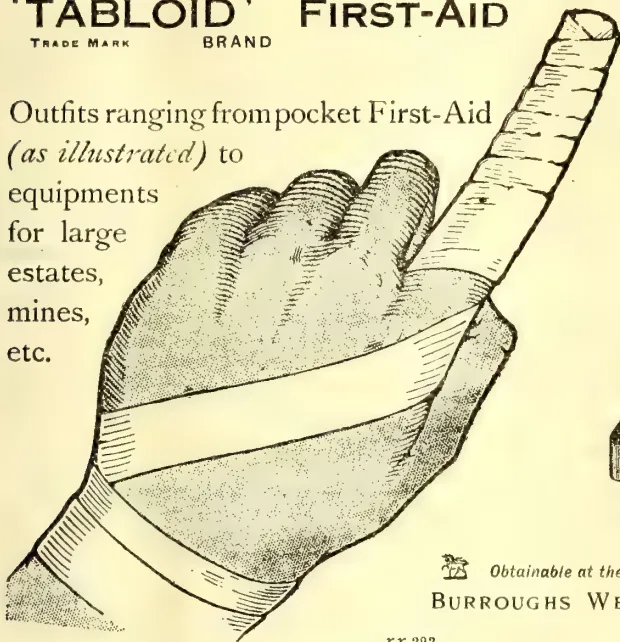
No. 710 'TABLOID' FIRST-AID
Ideal for individual use.
Can be constantly carried
in pocket, saddle-bag, etc.
In scarlet enamelled metal.
Price in London 2/0
Obtainable at the principal pharmacies in all countries
BURROUGHS WELLCOME & CO., LONDON
xx 292
ALL RIGHTS RESERVED
caoutchouc in all probability does not exist as such in the latex, but is produced during coagulation from simpler bodies similarly constituted chemically. It is itself a compound of carbon and hydrogen and is chemically comparatively inactive. There is, therefore, some probability that it is an end-product and incapable of being further utilised by the parent. Much more requires to be learnt, however, concerning the changes which occur in latex in different parts of the plant and under different conditions, before any accurate conclusions can be arrived at as to the significance of the presence of caoutchouc.
Enzymes have been demonstrated in the latex of some plants. Ficus carica and carica papaya (papaw) contain peptonising enzymes. The presence of an oxidase has been demonstrated in the latex of Hevea; the occurrence of black latex is ascribed to this enzyme. The presence of enzymes is significant of the occurrence of active changes in the latex.
In addition to the abovementioned functions of latex two others occur, viz.—the sealing of wounds and the protection of the plants from animals. Latex containing caoutchouc coagulates quickly, and the coagulated mass serves to seal wounds more or less effectively. In some plants the latex tubes branch close to the surface and thus facilitate the sealing of wounds by the juice. In other plants hairs containing latex are present on the floral bracts and are thus regarded as
serving to protect the flowers from animals; while the occurrence of poisonous substances in latex is no doubt an efficient means of protection against certain animals. It is not uncommon to find insects in the neighbourhood of Hevea plantations bearing masses of coagulated latex on all parts of their bodies in such quantity as to considerably hinder their movement; and it is believed that the insect pests of Hevea would cause considerably greater damage, were it not for the protection offered by the latex.
The occurrence of these two functions of latex is clear; but, they are in all probability not primary functions and can only be regarded as incidental. With regard to the two first named functions, the one of conducting food-material and the other of receiving products of excretion, it is uncertain as to which was the primary one.
The relation of latex to the life of the parent possesses for more than mere scientific interest. The recognition of the laticiferous tubes as a means of conducting plastic food material is of itself of primary importance, inasmuch as such problems of practical importance as tapping, systems of tapping, bark renewal, etc., are closely connected with it, while an accurate knowledge of the significance and mode of formation of caoutchouc must be of considerable value to the practical cultivator.
KEITH BANCROFT, B.A.
—Straits Agricultural Bulletin for Sept., 1911.
380The Supplement to the Tropical AgriculturistIN THIS PROCESS GERMINATION OF THE BEAN TAKES PLACE AND THE CAFFEIN IS EXTRACTED WITHOUT THE USE OF CHEMICALS.
A new caffeine-free coffee is being introduced to the trade by the Hübner Health Coffee Company, 65 Front street, New York. This product is covered by a patent, dated January 25, 1910, issued to Robert Hübner, and, according to the manufacturer, is the result of over forty years spent in the study of coffee.
The natural process of germination is used in extracting the caffeine and no chemicals are applied. It is said between 80 and 90 per cent of the caffeine is extracted in this way. The small percentage remaining is not soluble.
Dr. Robert Hübner has prepared for us the following statement concerning this new caffeine-free coffee:
"The extraction of the caffeine takes place simply by the action of water on the coffee bean, without employing benzol, alcohol, chloroform, carbon disulphid, acetic ether or any other chemical.
"By the action of the water on the coffee beans not only the caffeine is extracted but also the surplus of the acids as well as aldehydes and other substances which form in roasting the furfur alcohol.
"A decoction of this coffee can be used by persons who are not able to drink untreated coffee. Such persons have been known to sleep soundly after it.
"The lowered percentage of furfur alcohol is a further advantage possessed by this coffee. Furfur alcohol is just as detrimental to health as caffeine, and both in conjunction are even stronger in action by supporting the effectiveness of each other. The extremely low percentage of caffeine as well as the low percentage of furfur alcohol in this coffee precludes the possibility of its use causing any nervous trouble or disturbance. There are many people who might be able to withstand the action of caffeine in coffee, but they cannot drink untreated coffee because, as they say, it causes sour stomach or heartburn. This health coffee, with no surplus of acids, because they are largely removed in the extraction process, will not cause any such disagreeable sensations."
According to the patent papers the method of extracting the caffeine in the Hübner process is as follows:
"The raw coffee beans are distributed over the surface of a shallow dish or pan and covered with water having a temperature of approximately 15 degrees centigrade. There should be sufficient water to cover the beans and maintain them covered during the time they are immersed and absorbing water. The beans should remain immersed until they have doubled in size, or otherwise have absorbed all the water which they will take up. The time of immersion will therefore vary between twelve and twenty-four hours, depending upon the quality, condition of ripeness and age of the bean. If the beans are old or dirty, or mixed with other substances, it may be
necessary to change the water a number of times. After the beans have swollen to double their size and the water or waters used in the preliminary treatment above described removed, they are again immersed in water under the same conditions and at the same temperature, and allowed to remain immersed until partial germination has been accomplished, or, in other words, until, by chemical tests, the presence of maltose can be detected."
The patent specifications say that the elementary principle evolved in the process consists in primarily affecting a limited germination of the coffee bean, which acts to break down the normal union of the combined materials in the bean so that they may be extracted by water.
As soon as the presence of maltose is detected the beans are washed with water at a temperature of from 50 to 60 degrees centigrade, which stops germination. The washing is continued until the gum-like coating of the beans (caffe-tannic acid) and most of the remaining caffeine is washed away. The beans are then dried in thin layers on pans by passing a current of hot air over them.
From the watery solution obtained in the treatment of the beans caffetic acid, caffeine acid, salts, etc., are precipitated by the addition of some basic material, such as sodium, potassium or calcium. "The watery extract, from which the precipitated matters have been removed, is then concentrated and the caffeine separated therefrom by the employment of chloroform or other readily volatilizable substance, and subsequently the chloroform or other volatilizable substance removed by subjecting it to the action of a jet of steam. The removed precipitated matters, i.e., the caffetic acid, caffeine acid, organic coloring matter, salts, etc., may be again made into a solution with water and, if desired, re-embodied in the coffee beans by any suitable process, after which the beans are again dried."
The specifications claim a new process of removing caffeine from green coffee beans by osmotic action; also as a new article of manufacture, green coffee beans having their cellular structure altered by limited germination (partially converted into maltose), and from which the major portion of the normally contained caffeine has been removed.—Tea & Coffee Trade Journal, for September, 1911.
The manufacture of an oil from tomato seed is an industry of quite recent date in Italy, where the growing and preserving of tomatoes is carried on extensively in many parts of the country. In the province of Parma alone, upwards of 84,000 tons of this fruit are packed every season. The utilisation of the seed, which forms so large a percentage of the waste in the process of packing, and which was formerly thrown away, must now add considerably to the profits of the packer. This oil somewhat resembles that of cotton seed in its properties, and it is beginning to be in steady demand for soap-making.—Royal Society of Arts Journal, August 25.
and Magazine of the Ceylon Agricultural Society.—October, 1911.381Since the introduction of Para rubber into Burma, some fifteen or twenty years ago, the cultivation has extended from Mergui, in the south, to Bhamo and Myitkyina in the extreme north, and today there are several thousand acres under cultivation, and the area is rapidly increasing, labour being cheap. In Bhamo, Mr Kohu has a small plantation, the trees being about fifteen years old. Here the results have been most favourable; so much so, that last year the rubber from this plantation, because of its texture and quality, brought 1s. 3d. more per pound than was paid for any other Plantation rubber placed upon the London market during the season. The seeds, too, from this plantation, of which about 90 per cent. germinate, produce strong, healthy plants, equal, if not superior, to those obtained from Ceylon seed, the latter very often producing twisted plants which is in no way due to the position in which the seeds are planted. In the Myitkyina District, Mr K Young has 2,400 acres, of which up to date it has only been possible to plant 500 acres, but the trees, some of which are now nearly three years old, are all doing well. About six years ago, in Myitkyina town, some trees were planted as an experiment in the Forest compound. This year, these trees were tapped, and though the method of tapping was most primitive, the results obtained were excellent both as to quality and quantity. Further south in Tounghee, Shwegyin and the vicinity of Rangoon and Amherst there are large plantations all of which are doing well, thereby going to prove that the whole of Burma (with perhaps the exception of the dry zone round about Pokokhu, Myingyan, Sagaing, Shwebo, etc.) is pre-eminently suitable for the cultivation of Para. As a matter of fact, even in the dry zone the soil compares very favourably with that in some parts of Ceylon which produces rubber.
The Government of Burma are only too willing to help bona fide planters. Such may have for the asking, in any District which has been declared by the Government as a rubber producing tract, 1,200 acres exempt from taxation for a period of from eight to twelve years, on a leasehold for thirty years, with the option of renewal for another twenty years. At the end of the eight or twelve year period, as the case may be, the land is taxed at the paddy rate assessment, which in no case exceeds Rs. 1.8 per acre. It is true that in consequence of large Companies being formed for the purpose of rubber cultivation, Government have in view the revision of the foregoing concessions, but the revision will only be nominal, after all, and will only affect certain Districts. The soil of Burma is as rich as any in the world, being a sandy loam in some parts and a volcanic ash in others. The mountain ranges trend in such a direction that the South West Monsoons sweeps right up the valleys without hindrance, thereby ensuring an equal distribution of moisture. Thus, from a climatic point of view there is little to be desired. So
far, the only pests which have attacked rubber have been white ants, male crickets, pig, deer, and sambhur, which latter are a nuisance in the north. The two first mentioned are easily got rid of by using kerosene oil emulsion of sulphuric acid, the method being to inject it into their nests or holes. As for the game pest, after barbed wire fencing, a man with a gun is very effective, besides it keeps the pot boiling, a thing much to be desired in a land where markets are few and far between.—M. Mail, Oct. 12.
According to the latest issue of "Grenier's Rubber News" the Paradise estate at Kajang, Selangor, has erected a factory in which the drying of rubber will probably mark a new era in the local manufacture of rubber. The factory is a substantial two-storeyed building of brick-work, with an iron roof. When it became necessary to build a factory on the above-named estate Mr. E. V. Carey, with characteristic up-to-dateness, decided to adopt a method of drying rubber by hot air forced through the rubber by mechanical power, the obvious advantage of this method being that the rubber will be dried probably in a tenth of the time taken by the ordinary methods. If the Paradise method proves success as far as the quality of the dried rubber is concerned it will be obvious from the financial point of view that the departure will come as a boon.
The main plan of the Paradise factory comprises a washing and drying house, 70 feet by 35 feet, packing room 24 feet by 35 feet and an engine room 50 feet by 21 feet—all on the ground floor. The upper floor holds three airtight cubicles, each of these measuring 50 feet by 12 feet, for the drying of crepe. On one side of the washing and drying house on the ground floor are four of Shaw's washing machines, and on the other are six patent rubber driers, each chamber of which contains 24 trays, on which the rubber is placed, hot air being forced through from a furnace outside the building by fans. There is also a large furnace serving to distribute hot air into the cubicles on the upper floor by means of pipes, which are carried on that floor to the cubicles and which are perforated at certain intervals so as to distribute the air as evenly as possible. The method adopted on the ground floor of drying by chambers has already been tried with great success in Ceylon for drying rubber.
The method of drying in cubicles adopted on the upper floor of the Paradise factory has already been tried with great success for the drying of cocoa in Ceylon, but has not been previously tried for rubber. If the combined systems, chambers and cubicles as introduced on Paradise, prove a success it is estimated that as much as 1,000 lb of rubber could be dried in a day of ten hours. It remains to be proved what particular form of rubber will lend itself to this method of drying.
382The Supplement to the Tropical AgriculturistThere is published in "Grenier's Rubber News" of July 8, an interview with Mr. G. A. Wilmot, manager of Kalimenger Estate, Djerockeigi, Java, who was on a visit to the F. M. S. Mr. Wilmot thinks the somewhat backward growth of a great deal of Java rubber is due to the fact that of the 60,000 acres under rubber in Java, a large majority of the estates are interplanted with coffee. He, however, thought that where the rubber was grown by itself it showed as favourable a growth as obtaining in other parts of the Middle East, and he anticipated that the Bandjar district, where a number of rubber estates are coming on well, should ere long make a reputation for itself. Mr. Wilmot referred to the practice in Java of having honeycombed terraces and water-holing on the slopes, and of deep draining, owing to many of the estates being on the edge of morasses, on the flat. He also stated that on the slopes they dig a small trench about 6 ft. in front of a line of rubber trees. The put into this trench the seeds of the Kemalindinan legume. As these grow up they prevent wash from the terraces, while the nitrogen they contain contributes to the nutriment of the trees.
"The Reduction of Domestic Mosquitoes;" By E. H. Ross, Murray, 5s, deals primarily with the removal of the causes of tropical disease, Mr. E. H. Ross, the pioneer exponent (in Egypt) of his brother's great discovery, is one of the authorities of note. Mr. Ross's book is, as it were, an admirable enlargement of the Mosquito Brigade Handbook published some years ago by his brother. It is much bigger than that little book, and no less practical; it is throughout beautiful with a vehement enthusiasm which one has come to associate with the name of Ross; and, better still, it brings the subject home by a most interesting study of the life of a female mosquito. It tells not only what the mosquito is and does, and how it lives, but also how it may be checked, how attacked, and what the cost will be, and what the opposition, and the results in terms of human prosperity.
A book like this book of Mr. Ross's should be issued broadcast to every official in all our tropical dependencies; for though the glory of the discovery of the part played by the mosquito in the spreading of disease is due to Englishmen, our application of the discovery to life has been done, on the whole, in a niggardly, stupid, pig-headed, narrow, unenlightened way. When it has been well done, it has been, as a rule, more by private enterprise—the enterprise of men like Mr. Ross—than by an enlightened intelligence in our State officials.
The national slowness has its merits and its uses, but national apathy is a deadly disease. During all those ten years of "thought" human beings have died in India of mosquito-borne disease at the rate of about two a minute. Five or six a second would perhaps not be an
excessive estimate for the number of those infected by mosquitoes during that time. The 'consideration' of those responsible may well be serious; even a Napoleon has fewer ghosts to haunt him. Mr. Ross does not ask for a despotism to bother people who only want, as the phrase goes, "to be let alone." He pleads for an intelligent administration interested in human health. He has had experience of an administration so little interested in public health that, as he says, "we" (the mosquito destroyers) "were forced to employ every ingenuity to gain our object," the object often being the suppression of burst cesspools in people's cellars, and the filling up of open stinking cesspools owned by the Government. Still as he says, the difficulties can be surmounted, and "popular administration does more for the community than despotism."
(BY JAMES RYAN.)
"Of rubber young and rubber old,
"Of rubber hot and rubber cold,
"Of rubber tender, rubber touch,
"Praised be the Lord! we've had enough!"
Old Grace (slightly altered.)
Now that the Exhibition at Islington is over it is perhaps possible to co-ordinate a few ideas out of the chaos of mixed impressions that so colossal a show tended to produce in one's mind.
Thirty-three (or was it 34?) countries or Governments made the bravest show of their best and innumerable manufactures, not only of rubber goods but of machinery and allied articles, which filled a wilderness of space with kaleidescopic samples, wonderful photographs, weird slices of savagery whirring machinery and complicated clutery.
Out of it all Ceylon and Malaya came out with the honours of war. Their exhibits lacked the picturesque savagery and the artistic setting of the Congo pavilion and the Brennus-like tonnage that Brazil dumped into the scale, but they were put in a neat setting and showed the commercial superiority of British plantation-grown rubber in a marked way, while any visitor in search of information was "coached" on the spot by experts such as Mr Bamber, Dr. Petch, Messrs. Baines, Golledge, Ingleby, &c., who spent hours daily in what was at times (with the thermometer trembling on the verge of the nineties) anything but a light task. They often had, too, to "suffer fools gladly" with but rare interludes of compensating humour, as in the case of one gentleman, who, at the conclusion of a half-hour's demonstration of "Hevea from the V cut to the Venesta," wanted to know: "Have you ever any difficulty in coagulatinating your latex?"
From the Congo, perhaps, we might pick up one tip for the future, and that is to copy the beautiful little series of cut-out scenes representing:—
These might easily be reproduced in the Colombo Museum or, better still, in the Arcade or one of the Colombo hotels.
Much interest was shown in the exhibits of Rubber Pavement, but it must be stated frankly that we are a long way off seeing this in general use even were rubber to go to 2s 6d per lb. As far as the unbiased critic can judge it is hopeless, when wet, as far as horse traffic is concerned and not at all easy to steer a motor over under the same conditions without considerable danger of side slip. In any place also where oil or petrol is likely to be split rubber pavement is clearly impossible. Under cover, however, and in such places as Railway waiting-rooms, vestibules and passages where people coming in from without with muddy boats and where luggage is noisily dumped, a rubber pavement is the ideal flooring. It has been in use for some time at the North British Station Hotel, Union Street, Glasgow, and is there an established success.
It should not be beyond the resources of the Ceylon Government to lay a small experimental patch at the Colombo jetty, at Maradana station, and at Nanuoya. I am quite sure that manufacturers would be only too willing to co-operate by placing their goods on view at the narrowest margin of profit—where the ultimate advertisement would be so directly to their advantage.
Failing Government initiative (and in these cases the attitude of the Ceylon Government has been compared aptly to that of the Griffin on the west front of Amiens Cathedral which stoppeth up one ear with its tail, while it buries the other in the mud) the Planters' Association might take at least the pour parlers in hand.
So far as practical demonstration is concerned this remains exactly as it was two—nay—ten years ago. There was on show a row of bottles of volatile, translucent, evil-smelling fluids of a benzine, turpentine type, a half-dozen or so of photographic developing dishes with what looked like American chewing gums in various stages of mastication, some 2½ ounces of inferior-looking rubber which speedily gave way under the perpetual pulling about, and that was all! Statements were made that the rubber could be made for 6d to 8d per lb. from starch, sugar or sawdust, but there was not one tittle of evidence to go before a jury beyond the mere ipse dixit of the puppet who was in charge of the stall. A practical demonstration was given which produced, in the course of some 3 or 4 days, about a couple of pounds of the inferior rubber alluded to, but I have heard of no valuation of the resulting product, either raw or vulcanised. No! as far as synthetic rubber is concerned the Ceylon Rubber Planter can go to sleep for a year or two yet without risk of his slumber being disturbed by the synthetic nightmare. It must also be remembered that it would take many years of cautious practical experimenting before a manufacturer would dare to apply this new product to any major work, such as a deep-sea cable or a large generating plant. The slightest rise in price of turpentine, the fall of real rubber to 2s
6d per lb., heavy capital expenditure on machinery, danger from fire in the producing factory—factors of this kind are all dead against that almaschar-like visions of the logroller of synthetic rubber.
There are, however, not wanting signs that at some not distant date something may be done to vulcanise rubber before shipment from Ceylon and Malaya. The process is so excessively simple, and it so effectively prevents the daily alteration in quality and appearance of unvulcanised rubber of all grades (except block or very thick sheet) which now occurs, that it only requires a steady and continuous effort on the other side of the water to ensure a steady London demand. Out and out the best sample of rubber in the show was a vulcanised piece of thin sheet from Gikiyanakande. This was vulcanised in England, but it remained unaltered throughout the three weeks it was on show while unvulcanised estate samples were altering from day to-day under the influence of heat, light, oxygenation and enzymes. Even in the case of Block rubber strive of discolouration would appear, showing molecular changes even in the heart of the component sheets of the block.
When I was in Bombay a couple of years ago a steamship owner told me that he had had some honeycomb rubber mats and staircase flutings made from estate rubber vulcanised in Singapore, and that the articles produced were no dearer than, and lasted three times as long as, the British-made article. However much such a statement may need to be discounted, it opens up a vista of possibility which would justify as much expenditure as we Ceylon Planters spend on pushing Ceylon tea in America and elsewhere.
In the matter of packages it was a case of "Eclipse first and the rest nowhere" as there was nothing to compete with the "Venesta" packages. The perfectly smooth interior of the birchwood veneer adapts them specially for use for packing rubber. I presume that by this time all Rubber planters are aware that it is the inside of the rubber package that requires the most careful planing as any splinters or rough tags become incorporated with the surface of the rubber, are exceedingly difficult to remove and (if present) may cause a considerable loss in price. All this is obviated by the "Venesta." In the case of tea where freights are low many planters have failed to find that the saving in freight on Venestas pays for the extra cost over the "Momi" or the country package, but where (as in an account sale before me while I write) freight from Port Swettenham amounts to 75s per ton, and the Port rate, &c., to 37s 6d, a saving of 10 per cent on 112s 6d per shipping ton is a factor not to be neglected. There are still complaints that the "Venestas" are difficult to cooper up again when once opened, but in the case of rubber this is obviously of far less importance than with tea. There is, perhaps, more validity in the complaint that the batten round the inside rim of the "Venesta" makes it difficult to turn out
384The Supplement to the Tropical Agriculturistthe contents. Rubber has a curious knack of shrinking en voyage and moulds itself surprisingly to fit any ledge or projection in the package.
The enzyme of tackiness appears to flourish in the air space left by the shrinkage of rubber in the package. It might be worth while (where this is known to occur frequently) to paint the inside of the package with a 10 per cent. solution of formaline. Personally I should be tempted to spray all crepe especially with a solution of formaline not less than 2 per cent and not more than 5 per cent., but the manufacturers are so suspicious of any innovation that such a course is at present out of the question.
Very little progress has recently been made in this department. The various committees appointed at the Exhibition of 1909 frankly reported that they had no completed results to lay before the Conference. One of the manufacturers, who was mainly interested in the electrical applications of rubber, said that he objected to the presence of acetic acid in rubber as this made it useless for his purpose. It was pointed out that it was impossible by even prolonged washing to remove all acetates as they were incorporated with the albuminates in the latex and were insoluble. It afterwards became evident, however, that the objection was to FREE acid in the interstices of crepe, or even more so to "block" made from crepe containing free acetic acid.
It is therefore
that all free acid should be washed out of the rubber at as early a stage as possible. Free acid can be easily detected in an instant by the use of
a chemical of trivial cost.
It is increasingly evident that very great importance should be paid to the water supply of the rubber factory. In wet weather especially every trace of sand or matter in suspension should be removed. A case in which purity of water supply directed expert attention to the sample was that of Nikakotuwa estate, which from this cause was of stand-out quality.
This should be avoided as much as possible especially in the coagulating room, which should be kept as clean as the best managed dairy. Wire blinds should cover the windows.
There is an increasing balance of evidence to show that coagulation is more satisfactory in the dark or in a very dim light. External Venetian жалюсии would effect this manipulated from within.
Except in the case of coagulating by steam or smoke it appears that coagulating is most successful in a cool temperature. 60 degrees Fahrenheit is, perhaps, ideal, but this is rarely possible without ice in the low-country. By
the use of fans and wetted tats, however, a certain measure of coolness is always obtainable.
A large number of the biggest producers of rubber, especially in Malaya appear to be prejudiced against the use of Vacuum Driers. Be this as it may, there appears to be little doubt that the best rubber is produced at a temperature of 150 degrees Fahrenheit in a free current of air at the normal atmospheric pressure. It is difficult to see how the vacuum could have any injurious effect, but perhaps it is that errors of manipulation are difficult to detect in driers used when the superintendent is not actually present.
The brokers appear to value rubber entirely by the old rule of thumb methods with which we were made familiar at Peradeniya in 1906. The great drawback to testing raw rubber even chemically seems to be that two samples of rubber (giving identical results when tested chemically and by the usual tests for breaking strain, resilience, &c.) behave quite differently when vulcanised.
Resin, for example, is looked on askance by many buyers, but actual tests have proved that rubber containing 8 per cent. of resin has in certain cases given tip-top results from the manufacturers' point of view. The finest hard para often contains quite high percentages of resin compared with ordinary plantation.
There appears occasionally (not as a rule, however) to be a certain amount of injury done to rubber by overworking on the rollers. This is perhaps, most marked in scrap from bark (even live bark, not dead and cankered stuff.) On the other hand, there is the paradox that dead recovered rubber which has completely lost its elasticity is often magically revived by rolling.
I hope that these remarks may prove of some value to those practical planters in Ceylon who were unable to attend the Rubber Exhibition, I think I have said enough to show that an enormous field remains open for investigation. To sum up, I should think—(1) an ample supply of clean water, (2) a cool, dark coagulating room, and (3) a quick care are the three great desiderata of rubber manufacture.
—"Times of Ceylon."
J. R.
The heavy snow fall of the past winter in the immediate vicinity of Batoum, combined with the unusually cold weather experienced in December, January and February last, did much injury to tea plantations. A large number of the older tea shrubs had their branches broken off by the weight of snow, and the young plants suffered much from cold. The yield of the 1911 crop is estimated at about 200,000 lb., or about 50,000 lb. less than in 1910. The area under tea in the neighbourhood of Batoum is slowly but steadily being extended. A tendency of small farmers to embark in the enterprise is apparent. —Board of Trade Journal, Sept. 28.
VOL. XXXVII.
COLOMBO, NOVEMBER 15TH, 1911.
No. 5.
The old country has at last awakened to some purpose to the desirability of encouraging scientific research in connection with agriculture, realising, as Canada, Germany, the United States, and other countries have realised, that without progress in the pure sciences that underlie agriculture, progress in agriculture itself must be slow and halting. To leave agriculture to depend upon the general progress of the underlying sciences is by no means the best way; to provide those sciences with funds and demand special progress in directions that bear upon agriculture is better. And this is what is being done, as will be seen by a perusal of the extract from the Times given below.
What the general public, however, requires to learn is that scientific research is slow, and that results must not be expected in a few weeks or months. This has been the great fault in the work of a good many Departments of Agriculture, results being hurriedly produced, only to find that they require complete revision or modification in a few years. The experiments carried on at Peradeniya with the manuring of Cacao, the results of which will be published almost at once if they are not actually out when
this appears, afford a very good case in point. Had we published them some years ago, many meanings might have been put into them which fuller experience shows them incompetent to bear. In this connection we may with advantage quote the presidential address to the agricultural section of the British Association, given a short time ago by Mr. W. Bateson.
In his address to the agricultural sub-section, Mr. W. Bateson, before dealing with the physiological, pathological and genetic aspects, emphasised the wide scope of the applied science of agriculture. He did this in view of the present very remarkable outburst of activity in the promotion of science in its application to agriculture, particularly with the provision on a considerable scale in England for the first time of a national subsidy in the form of the Development Grant. He pointed out the danger of requiring the issue, as was done under a similar scheme in the United States, of periodical bulletins or reports of progress. If it were true that the public really demanded continual scraps of results, and could not trust the investigators to pursue research in a reasonable way, then the public should be plainly given to understand that the time for
386[NOVEMBER, 1911.inaugurating researches in the public's name had not arrived. It could not be too widely known that in all sciences, whether pure or applied, research was nearly always a very slow process, uncertain in production, and full of disappointments. The research of the present day could aspire no higher than to lay the foundation on which the following generations would build. Both those who were engaged in agricultural research, and those who were charged with the supervision and control of those researches must be prepared to exercise a large measure of patience. The applicable science must be created before it could be applied. It was with the discovery and development of such science that agricultural research would for long enough best occupy its energies. The man who devoted his life to applied science should be made to feel that he was in the main stream of scientific progress. To tell him that he must not pursue that inquiry further because he could not foresee a direct and immediate application of the knowledge he would acquire was a course detrimental to the real interests of the applied science. There were specific instances where, in other countries, thoroughly competent and zealous investigators had, by the shortsightedness of superior officials, been thus debarred from following to their conclusion researches of great value and novelty.
In this country, where the Development Commission would presumably for many years be the main instigator and controller of agricultural research, the constitution of the advisory board, on which science was largely represented, formed a guarantee that broader counsels would prevail, and it was to be hoped that not merely this inception of the work, but its future administration also would be guided in the same spirit. So long as a train of inquiry continued to extend, and new knowledge was coming in the enterprise would not be in vain, and it would be usually worth while to pursue it.
The Board of Agriculture and Fisheries have been in communication with the Development Commissioners with a view to the formulation of a scheme for the promotion of agricultural research and local investigations in England and Wales, and the Treasury, on the recommendation of the Commissioners, have now sanctioned the allocation of funds to be distributed by the Board in accordance with the general principles
set out below. The total maximum sum which will be expended when the scheme is in full operation will be about £50,000 per annum.
The scheme provides for:—
1. A system of agricultural research which will secure for each group of the problems affecting rural industry a share of attention roughly proportional to its economic importance.
2. The concentration of the scientific work on each group at one institution or at institutions working in combination.
3. Grants for special investigations for which provision may not otherwise be made.
4. The grant of scholarships with a view to the increase of the number of men fully qualified to undertake agricultural research.
5. The carrying out of investigations into problems of local importance, especially those involving the application of modern research to local practice, and the provision of scientific advice for farmers on important technical questions.
In making arrangements for the separate investigation, as far as possible, of each group of allied subjects the Commissioners and the Board have been impressed with the importance of securing continuity in work which is necessarily of considerable duration, and at the same time of providing staffs of specialists and experts who will be permanently engaged on work arising from the investigation of the same group of problems. By this means concentration and economy of effort will be better secured than it would be if a number of institutions were dealing at the same time with the same group of problems.
It is neither desirable nor possible to prevent all overlapping or duplication of work, but it is obviously necessary to proceed on a plan by which research work subsidized from public funds will not be unnecessarily duplicated. It is also desirable to arrange that each problem shall be undertaken by the institution best fitted to deal with it, and usually by the institution which has specially devoted its attention to problems of an allied nature. It is also important to avoid the giving of undue attention to one part of the field of agricultural research, to the exclusion of other parts which are of equal scientific and economic importance.
NOVEMBER, 1911.]387With these considerations in view, it has been arranged that grants should be made for research in the following groups of subjects:—
A sum not exceeding £3,000 per annum will be available for assistance in respect of special investigations for which provision is not otherwise made.
Grants from this fund will be made on the recommendation of the Board's Advisory Committee on Agricultural Science, who will consider not only whether the proposed investigation is desirable in itself, but whether it could not be better carried out at one of the special research institutions referred to above. The grants will be made from year to year, and will be for one year only in each case.
In order to secure the services of a number of carefully trained men for work in connexion with the scheme, the Board propose in each of the years 1911, 1912, and 1913 to offer 12 scholarships, of the value of £150 per annum, tenable for three years. It is proposed that candidates for scholarships should be selected by a special committee representing the institutions under whom the selected candidates will subsequently work. The award of 12 scholarships will be conditional on a sufficient number of thoroughly suitable candidates presenting themselves.
Grants will also be made to certain Universities, University Colleges, and Agricultural Colleges in England and Wales for the purpose of enabling them to supply scientific advice to farmers on important technical questions and to carry out investigations into problems of local interest, which can be more conveniently studied on the spot than at one of the research institutions.
By means of these grants it is hoped to provide an expert staff possessing both scientific and practical qualifications, who will devote themselves to solving difficult local problems, and in other ways endeavour to secure the application of science to practice.
BY EDGAR BECKETT.
(From the Journal of the Royal Agricultural and Commercial Society of British Guiana, Vol. 1, No. 2, July, 1911.)
There is not much doubt that there is yet a great amount of information to be gained concerning this genus of our indigenous rubber plants.
That there are large numbers of Sapiums to be found growing in our forests, at scattered intervals, is well known, that this tree is also to be found growing vigorously along the Coast lands is also a fact, but that we know the nomenclature correctly is probably open to doubt, whilst as to the behaviour of the tree under tapping operations and of its merits as compared with Hevea brasiliensis we may quote from Prof. Harrison's and Mr. Stockdale's interesting article in the October issue,
1910, of the Journal of the Board of Agriculture. "Without therefore pledging ourselves to any definite statement," they write, "in regard to the relative merits of the Para rubber tree and the indigenous Sapium, we are inclined to the opinion that, whereas the value of Hevea brasiliensis as a rubber-producing tree under cultivation is known in many countries and under different conditions, that of Sapium Jenmani has yet to be definitely ascertained; and whereas the growth of Para rubber has been satisfactory in a very large number of different localities in the Colony, cultivators would be wise to choose this variety and to consider Sapium as still being in the experimental stage—worthy of trial only on a small scale until more definite information is available in regard to the yields of rubber that can be obtained from it." In the April number for this year, the Journal contains the following: "Mr. Stockdale reported on the experimental tappings of Sapium Jen-
Gums, Resins,388[NOVEMBER, 1911.mani at Bonasika. The experiments were not complete, but the result showed that the planting of Sapium could not be recommended if Para rubber was available."
But apart from these considerations, mention of a few of the characteristics of the plant may not be out of place at this juncture, when every tongue runs riot with the name of rubber.
All Sapium leaves bear the distinct character of two glands on the petiole or leaf stalk; in some cases they are very conspicuous, being of considerable length, whilst, in other cases, they are just barely indicated to the naked eye. The margins of the leaves are, some varieties, serrated, and, in others, smooth, with a gland or two of some prominence. On good authority the writer is informed that both the serrated and smooth margins are to be found on leaves of the same tree.
The flowers are very small and are grown on long spikes, the females being at the bottom and the males at the top, the latter generally being also produced in larger numbers than the former. The fruit consists of a small capsule or seed case, not conspicuous at all, and each capsule generally contains three divisions, and, when ripe, splits open, when the seed itself is disclosed, which upon examination is shown to possess a bright arillode, which, in all probability, proves an attraction to birds, insects and rodents. The small size of these seeds is responsible for the idea that used to prevail amongst the Indians that the tree never produced seed at any time. That there is a considerable variety in shape and size of the leaf can be seen by a glance, and this variability appears to be governed apart from distinction of species, by the age of the tree, the position of the leaves and other conditions. A prominent characteristic of one species of Sapium is a distinct hooked gland at the apex of the leaf, but this distinction is said not to be confined to the species indigenous to this Colony alone, as it is found in many species not indigenous to British Guiana. This tree is known to us generally as Sapium aucuparium, but according to Mon. Huber is referred to as Sapium Helmsleyanum. Of this variety Mr. A. W. Bartlett writes: "The leaves show very considerable variety as to size and shape both in those occurring in different parts of the same tree, at different ages of the plant and on different individuals." This may be said with accuracy in relation to other species of Sapium. He continues: "Thus the leaves on the lowermost branches of
some of the trees are destitute of the hooked apex and end in a long blunt point as in S. Jenmani. Also the leaves of the young plants and of saplings even measuring 15 to 20 feet are invariably wanting in the characteristic feature." It is obviously, therefore, a risky proceeding to attempt to identify any Sapium by examining a few leaves only.
It is generally taken as an accepted fact that most of the Sapiums of the coast region yield no rubber, but only an inferior quality of resinous latex, yet on the islands at the mouth of the Essequibo river, such as Liberty Island, Fort Island, etc., Sapiums are to be found freely growing "wild," and they do yield rubber, which is said to be equal to that obtained from the Sapiums of the interior. Furthermore, the name Sapium Jenmani appears to have been applied somewhat hastily to all rubber-yielding Sapiums. The Sapiums growing in these Essequibo islands may not be S. Jenmani at all, but probably will have to, in their turn, undergo the "martyrdom of christening." As to the other indigenous species, Saprum biglandulosum is a coast lover, and yields no rubber, while S. paucinervum is found to occur in the Pomeroon and in the North-Western District as well as other portions of the colony, and also in all probability furnishes nothing but an inferior resinous, sticky substance, of no value whatever.
S. Helmsleyanum, to give the so-called S. aucuparium, the name to which M. Huber has referred it, is distributed widely throughout the Colony, and proves very attractive to boys, for it is chiefly to this tree, though other species yielding resinous products are also utilised, that they have resource when they wish to snare birds. Usually the tree is hacked, and as the latex gushes out it is caught on a stick to which has been rolled portions of bread crumbs, moistened with a liberal supply of saliva. The whole is then smeared over the stick and the snare set "at right angles" to a long bamboo pole which is stuck in the middle of a pasture or other likely spot. So effective is this snare that frequently the active and sturdy vicious little parrot, known locally as the Keri-Keri, is firmly entrapped by this adhesive mixture, when it has alighted on one of the numerous perches jutting from a bamboo stem.
As to the identity of the tree, a footnote by Mr. Bartlett, in a paper of his on our local rubber trees, throws considerable light.
NOVEMBER, 1911.]389Saps and Exudations.It is as follows: "In a copy of a paper I have just received through the kindness of Monsieur J. Huber, of the Para Museum, entitled 'Revue Critique des Espèces du genre Sapium,' I observe that our specimens identified as Sapium aucuparium, Jacq., have been referred to a new species S. Helmsleyanum Huber." Now Mr. Bartlett quotes Dr. Huber as writing of Para rubber as follows: "Little of it (Para rubber) is pure Hevea rubber, but usually a mixture of the latices of H. brasiliensis and Sapium aucuparium. The rubber of S. aucuparium has never been marked alone, and very little can be said definitely of its value. But when mixed with Hevea latex a rubber is produced not to be distinguished from the supposed pure Hevea rubber."
Mr. Bartlett brought forward two theories, in 1907, to reconcile these different experiences as to the latex of the so-called local S. aucuparium, viz., either that the species was different, or to quote this authority "more than one distinct species have been included under this name," or that the trees yielding resin in this colony on our coastlands were only comparatively young trees.
It is a well-known fact, of course, that if we except Hevea brasiliensis, many rubber-producing trees yield, when they are young, poor quality resins rather than caoutchouc.
At any rate sufficient has been said to show that it is important that there should be no confusion concerning the identity of this tree.
But the question of the resinous quality of the latex furnished by trees known to yield rubber of good quality when they have attained a number of years, brings us to that which naturally is now arising. Do the so-called S. Jenmani yield rubber at a sufficiently early stage of growth to make planting Sapium rubber-growing a commercial undertaking? Have we to wait for five or fifty years before a product comparatively rich in rubber and poor in resin is obtained? These are questions which we should very much like to see definitely settled, while the provoking variability of the genus itself also pleads for a nomenclature, the definiteness of which may give the answer to many puzzling conditions.
As its available characteristics, I may mention that, recently in the North-Western District, I found a Sapium sp. with a twisting, tortuous stem, which was hugging in its vice-like grip one of our native palms, in an embrace which must prove to be one of death, so far as the unfortunate palm is concerned.
One would have been certain that this cruel habit belonged to a native Ficus, but the leaves proved the tree to be a Sapium, and one which yielded a thick-creamy latex apparently rich in caoutchouc and quite different from the sticky substance furnished by our Ficus and non-rubber yielding Sapiums.
To return to the question of the mixing of latices of S. aucuparium and Hevea brasiliensis, it might prove of interest to carry out some experiments with the mixing of the latex of Sapium Jenmani and other rubber-yielding Sapiums with that of Hevea brasiliensis.
Quite recently the writer was told of a case where the latex of Hevea brasiliensis was mixed with the thick yellowish latex of one of our indigenous Heveas, (possibly H. confusa), with the result that the product was very favourably reported on in England.
In the Aruka valley of the North-Western District the conditions are exceptionally suited to Sapium growing. There the tree makes most amazing growth on the soft pegassy lands of the district. On the other hand this peat soil does not support Hevea brasiliensis satisfactorily, though where it is mixed with the clay sub-soils the growth of this tree is fair, such as on the dams that have been thrown up when trench digging operations have been carried out. On the heavy clays of the coastlands rubber-yielding Sapiums are, apparently, a failure. They are attacked by scale (Lecanium chiefly) and make poor and stunted growth.
A noticeable characteristic of some of our Sapiums, frequently even in the case of trees growing in the interior, is the dying back of the topmost branches.
As to the product, it has been proved that some of our wild Sapium trees yield a rubber which can command a price, when cleanly prepared, very little below fine hard Para.
In the North-Western District considerable progress has been made with the planting of Sapium trees, this activity being due chiefly to the pioneer efforts of the late Mr. David Young. As the trees planted by Mr. Young must have, in many instances, attained some six years, possibly we shall be shortly in a position to know something definite concerning the yields and the quality of the product obtained from trees at an age when Para rubber is tappable.
Until information as to the yield and quality obtained from cultivated Sapiums is forthcoming, there does not appear to be much probability of many more estates undertaking any such cultivation extensively.
Gums, Resins,390[NOVEMBER, 1911.MILLIONS OF POUNDS INVESTED AND
ALL PAYING GOOD DIVIDENDS—
ESTIMATE 800 POUNDS TO
EVERY ACRE.
(From the Manila Bulletin.)
That the position in the rubber world is still an interesting one will be readily conceded. Without aspiring to the role of the prophet—a thankless position and one that we should be loth to assume—those who are well qualified to know look for an average price for plantation rubber for the current year of probably not inferior to 5s. 6d. per lb. We need scarcely remark that for the bulk of the producing companies this could not be otherwise than a very satisfactory price, the result of which should be that very good dividends would be earned. On just how much of the forty to fifty millions sterling that has now been embarked in the plantation industry the world over dividends will be paid is beyond us to state. But there will undoubtedly be many companies added to the list of dividend payers, whilst the older ones will have ample balance of which to dispose. The result is that many shareholders are naturally concerned with the attitude that will be assumed by the Boards of Companies as to the policy of dividends fairly liberally, or of retaining large sums, or of allocating a good slice of profits to the creation of reserve funds against the day when the profits cannot in the ordinary nature of things economic, be as large as at present. In an interesting communication Mr. A. S. Baxendale controverts the necessity for the building up of large reserve funds. Shareholders, knowing that they will receive 12 to 15 per cent., with as good security as an investment other than rubber yielding more than 6 per cent. would give, naturally object to the earned profits being withheld. Few who know will quarrel with the statement he makes as follows:—All will agree that a reserve fund equivalent to the capital of the company is desirable, not only in rubber, but in all other companies, and a very fair start has already been made by the best companies, but I trust and believe the view that appropriations to reserve should be proportionate to the dividends will not meet with general support, as the only argument in its favour would seem to be that rubber shares would then afford a more attractive security for those who know nothing about the value of the property of the company.
The requirements for a reserve fund in a rubber venture are not so imperative as they are in mines and in most industrial enterprises where much more may be lost in bad years than is probable would be the case with rubber estates. The best course to assume is probably a medium one. Dividends should be paid on fairly liberal basis, and the individual shareholder can make what provision he himself considers prudent. A moderate provision to reserve is all that is necessary; a sum sufficient, that is to place the estate in the best fighting position a few years hence to meet the fall, whether it be to 2s. 6d. or 1s. 6d. gross selling price. In this respect a thoroughly equipped estate, with its buildings and factories all in good order, and its area compact and clean so that it can produce at the lowest rate is likely to fare better than one of double its planted acreage which is not in perfect condition. To achieve this, it does not seem that more than moderate provision need now be made, whilst a few more acres can be brought forward and thus reduce the capital cost per acre as shown by the balance sheet. To remain in the dividend paying list a few years hence means that up-to-date appliances are absolutely necessary. Present profits can provide these. One statement recently made is that the smoking process drives off most of the surplus water, leaving the rubber some 90 per cent. fine, containing a little more water than the present style of dried sheet does, and therefore according to many authorities, possessing more resiliency than ordinary dried sheet can ever aspire to. Rapidly drying by means of a drying chamber, through which perfectly dry air is drawn by means of a fan (the air rendered anhydrous by some cheap desiccator, such as lime or calcium chloride, &c.) is the only sound method, states one authority.
We may, perhaps, before closing, call attention to one or two—shall we say comforting, or optimistic?—statements made by Mr. Baxendale in the letter referred to. As regards labour and its increase in cost, suppose, with an increase of wages amounting to 33 per cent. on an estate entirely composed of 10 years' old rubber, the cost of collection would still be about one-half the cost of collection on the same estate when it was five years old, owing to the fact that the yield of the older trees is at least four times as great, and, roughly speaking, a coolie can tap as many old as young trees. An increase of 33 per cent. in wages would be sufficient to attract
NOVEMBER, 1911.]391Oils and Fats.literally tens of thousands of Chinese coolies from other industries to the rubber estates. He goes on to point out that if we cast aside all "make believe" and base our figures on actual experience [which shows us that every acre of rubber of nine years of age produces at least 800 lbs. of rubber,] and if we take the average output of an acre from its tenth till its seventeenth year at 1,000 lbs. a year, we will find that the fair price for an acre of rubber on a seven years' purchase basis would be £375, even if the average price realised did not exceed 3s. a lb. I am convinced that if the world's supply of rubber could be suddenly and permanently increased from 85,000 to 200,000 tons in the course of this year, the average price next year would not be much below 3s. whereas in existing condition, and so long as the supply of rubber is so comparatively insufficient for all needs as to lend itself to manipulation, the sudden disclosure of 10,000 tons of hidden stocks would paralyse the market for months. Mr. Baxendale is referring only to properties in the Federated Malay States and not even the Province Wellesley or Malacca. If his facts are accurate for that district, we see no reason to doubt that certainly in Sumatra, and possibly in Borneo many states may be able to do equally as well.
COMPANY BEING ORGANIZED IN MANILA TO OPERATE IN MINDORO—EXPECT TO SECURE AID OF AMERICAN CAPITAL.
(From the Manila Bulletin.)
Another enterprise is being launched in Manila to develop rubber possibilities in the island of Mindoro.
The enterprise is headed by Manila capitalists, who have already made a good beginning, but expect to secure American capital to aid them in the final success of the undertaking.
The company has secured 2,500 acres of excellent land in Mindoro situated on the Paco River and has as a beginning several thousand trees that were planted about three years ago in nursery, but which were never transplanted and have reached a height of from thirty to forty feet, but are stunted to some degree in girth, due to lack of room for greater growth by never having been transplanted.
According to the Bureau of Agriculture and rubber experts these trees can be transplanted even at this date and will do well, and they will form a nucleus around which the plantation will be installed and developed. The trees in question were planted by Mr. E. C. Hamil, who after planting the nursery left for the gold fields of Paracale and never paid further attention to them until only recently when it was discovered that they were valuable, the trees being of the Para rubber quality.
The new company is being organized by Manilans, Mr. T. D. Aitken, the well-known attorney being one of the principals in the enterprise, and it is most likely that Messrs. Birkett and Holden will act as treasurers.
It is expected that the organization will be completed within the next few days, and work on the plantation, clearing up the land and transplanting the trees will begin immediately.
(From the Chemist and Druggist, No. 1, 649, Vol. LXXIX., September 2, 1911.)
Mr. John C. Umney, F.C.S., in the course of an Editorial on this subject in the "Perfumery and Essential Oil Record" for August, submits details of the characters and tests for the purity and odour-value of the oil. Mr. E. J. Parry and the analytical chemists of several of the largest soap-manufacturers
have co-operated with him, and to judge of the accuracy of the assay process, sealed samples from the same bulk have been examined by himself and each of the analysts. The maximum difference in geraniol from highest to lowest was found not to exceed 0.5 per cent., which is certainly sufficiently close for all commercial purposes. Criticism and comment upon these characters and the tests and their working are invited.
Fibres.392[NOVEMBER, 1911.They are as follows:—
| Sp. gr. at | ... 0.898 to 0.910 | |
| Optical rotation | ... | -7° to -13° |
| Acidity expressed as | acetic acid Not above 0.25 per cent. | |
| Soluble in 2-3 vols. of 80 per cent. by | vol. alcohol, and clear on further | |
| addition of the alcohol up to 10 vols. | ||
| Acetylisable constituents stated as | geraniol, at least 58 per cent. | |
Estimation of Geraniol.—Ten c.c. of the oil with 15 c.c. of acetic anhydride (Note 1) and 1 gram of anhydrous sodium acetate are boiled for two hours under a reflux condenser. The mixture is cooled without removing the flask from the condenser, and about 50 c.c. of water is slowly added through the condenser
tube. The contents of the flask are heated to not more than 70° C. for about twenty minutes, poured into a separating funnel, and washed with cold neutral brine (Note 2) until all soluble acid is removed. The washed acetylated product is dried with anhydrous neutral sodium sulphate, and from 2.5 to 5 grams saponified with alcoholic potash in the usual way. Any free acidity is neutralised before measuring the volume of decinormal KOH, and saponification is completed by heating on a boiling water-bath for forty-five minutes. The excess of KOH is titrated with decinormal acid.
The acetic anhydride should contain at least 95 per cent. of actual anhydride, and be free from higher homologues. Water may be used instead of brine, but the latter is to be preferred, as it separates more rapidly from the oil.
(From the Manila Bulletin.)
The Philippines is interested in the development of the manufacture of pulp for paper out of the bamboo, and the following from the Literary Digest on recent developments is worth reading. It will also be noted that no reference is made to the Philippines as a source of bamboo pulp, while Porto Rico and the Panama zone are set forth as the only American territory where bamboo is available. The Digest says:—
Our Vanishing Forests of spruce, cut down to supply the enormous demand for print-paper, may find relief in the discovery of a new source of supply in the tropics. Bamboo pulp is likely to come to the front as a main source of paper stock supply according to an article contributed to American Forestry (June) by Harry Vincent, who quotes The World's Paper Trade Review (London) as his authority. The difficulty heretofore has been in the bleaching, as the colouring matter could not be eliminated except by the expensive caustic-soda process. This has now been obviated. Bamboo has incontestable advantages over other pulp material. A piece of land once established can be cut over annually for an indefinite period, as bamboo in the tropics grows thirty feet or more yearly. As it requires but a three-year period to establish a field, no other material can
compete with it. The United States has control over large territories in Porto Rico and the Panama Zone most suitable for bamboo cultivation, and a permanent future supply up to millions of tons a year may be assured, the writer thinks. We read:—
“The advantages of bamboo as a pulp-maker are: (1) It has a good, strong vegetable fibre; (2) it is in general easily accessible for water transport; (3) it is cheap and easily collected; (4) it is available in large quantities and abundant within a given area; (5) it is available for a regular and constant supply, and not subject to violent fluctuations either in quality or price; (6) it admits of simple and ready treatment, mechanical, chemical, or both, for easy and inexpensive conversion into bleached pulp; (7) land established in bamboo, which will take three years from first planting to reach a height of thirty to forty feet, can then be reaped annually for an indefinite period.
“Ordinary thick walled bamboo which, when given suitable soil and climate, grows with amazing rapidity and yields annually at least forty tons to the acre, contains fifty per cent. of a very strong yet fine and flexible fibre, easily digested by the ordinary bisulphide process, and by a new method simply and inexpensively bleached, yielding when properly treated an excellent pulp, felting readily, and producing a paper, pliant, resistant and opaque, of enduring colour, thicker than other paper of the same weight,
NOVEMBER, 1911.]393Edible Products.and forming one of the very finest of materials for writing and printing, and of exceptional value for engraving."
Commenting on Mr. Vincent's article, the editor of American Forestry notes that the proposal to use bamboo for paper is an incident of the search for pulp-material to meet the great and growing demand. He says:—
"The increasing scarcity and cost of spruce has already led to successful experiments with other woods, formerly disregarded, but experimenters are continually looking for material which can
be grown more rapidly than trees. The foregoing article suggests a possible promising source of supply, but it must be remembered that bamboo is a tropical product, and that our mills, representing an enormous investment, are in the North. The utilization of bamboo on a large commercial scale would involve a considerable readjustment of the pulp industry, and the solving of many questions, among which that of labour would not be the least. It can, therefore, hardly be regarded as a possibility of the immediate future, although well worth consideration in connection with an ultimate supply."
By E. ELLIOTT.
(Continued from page 312.)
The statements of production of Paddy I have so far given, have, in the absence of reliable statistics, been necessarily deduced from the only trustworthy data available, viz., the sums received annually by Government for its share of the crops. But as I now purpose basing my conclusions on more exact statistics, both of acreage and production, I will explain how and where I got my figures, and my reasons for thinking they are substantially accurate and reliable.
The Government Blue Book Agricultural Returns, as printed and published, have unfortunately not been free from palpable errors, and consequently they have been rather indiscriminately condemned as untrustworthy. This, I have always felt, was too sweeping, and I was sure that, as recently expressed by Mr. Booth, Government Agent, Western Province, "the returns as compiled by the Headmen though not absolutely accurate, were for the most part probably near the mark." I was further of opinion that the absurd figures which occasionally disfigured the published returns were most probably attributable to the carelessness of the subsequent clerical compilers in the Kachcheries, and possibly to printer's errors, to which undue prominence has been given.
Accordingly, some years ago, while in Ceylon, I had the Blue Book figures for the acreage and production of Paddy in each district for the twenty-six years, 1866 to 1892, copied on to two big sheets. I was thus able at a glance to compare the figures over the whole period for each and 'spot' any extraordinary figures, and refer to the various Kachcheries for explanation. Curiously enough, I found, I think, only one serious error as regards acreage, where the number of bushels sowing extent in the North-Western Province, as returned by the Headmen, was given instead of the equivalent number of acres it was the Kachcheri Clerk's duty to have inserted. But the mistakes as regards production were numerous and varied, but easily discovered, as the very next column of the Blue Book returns gives the rate of production.
This careful scrutiny confirmed the favourable opinion already expressed; and during a recent visit to London I have personally taken out the details, district by district, from the Blue Books for another sixteen years between 1893 and 1910. These appear to have been more carefully compiled, but not to be altogether free from some palpable errors, attributable to clerks or printers.*
Thus, figures for Batticaloa crop in 1901, off some 87,000 acres, was printed
* Thus the addition or omission of a single cypher in some of the details made a difference of three millions in the aggregate crops of 1882 and 1885, which have long figured as the maximum and minimum of the decade, and must in future appear as eight millions odd in each year. A similar palpable mistake in the details of the Northern Province for 1888 justified the elision of nearly a million bushels.
50. Edible Products.394[NOVEMBER, 1911.153,188 bushels, though the average rate of productions given in the next column disclosed the omission of the figure for millions. It should have been 1,153,188 plus 383,782 in Trincomalie, making a total of 1,536,970 for the Eastern Province.
Similarly an absurd crop of over seven millions in Kandy was found to be due to the unfortunate addition of that figure at both ends, instead of in the unit place only, possibly ascribable to the proverbial P.D.
As I believe these returns are now checked in the Audit Office, I trust some steps will be taken to prevent the promulgation of such absurd and unjustifiable mistakes in future, which throw discredit and suggest doubts of the correctness of the whole of the figures.
Having cleared away these errors, it remains for me to deal with two other grounds generally advanced for impugning their accuracy, viz., inconsistency with each other and under-estimation. To the former I would reply that these apparent inconsistencies are really evidences of accuracy, and are chiefly attributable to corresponding variations in the rainfall which have been ignored by critics who have not studied its effect, and bearing on a cultivation so dependent on the water supply, as I will further show a few pages hence. As regards under-estimation of production; for purposes of comparison it is a negligible quantity; as it equally affects all the figures, but it is not so great as usually alleged, and which I at one time thought myself. Mr. Lewis states (Wanny Manual) that Mr. Fowler thought the Headmen gave two-thirds the proper estimate. I think this is too much, and probably three-fourths would be nearer the mark.
My experience as cultivator has taught me of the very large margins which must be allowed for contingencies, especially when dealing with large areas, in the wilder parts of the Island. Even at the earliest stages there are enemies to ward against as well expressed in a Tamil Proverb, which may be rendered as follows:—
Remember this, when'eer you sow,
One for Crab, and one for Crow,
One to die, and one to grow.
Then there are elephants, pigs, crocodiles, besides vast hordes of birds who alone do immense damage, especially to limited or detached cultivations. I have had Rs.200 worth of Paddy destroyed in a night by a few elephants,
in spite of a watcher armed with a gun, and half my first crop off a small area was eaten by birds.
Another frequent cause of a low crop return is large sowing, induced by favourable weather in the early stages, especially in the very extensive tracts in Batticaloa. Difficulties arise and delay follows which prevent completion of the sowing in the proper time. The crop then "gets late" and is not ready for reaping with the rest of the tract; and the swarm of birds in the air concentrate their depredations on the still tender crop. The communal fence has however been put up round the whole tract at the time fixed, and must be broken up at the time agreed on beforehand (the sticks being required to protect the stacked crop). Hordes of cattle thus get admission, and the late crop has to be abandoned unreaped. I have known several hundred acres lost in this way in the extensive vattais, (i.e., fields associated for purposes of cultivation) in Batticaloa, in some of which over 1,000 acres lie within one ring fence.
I could multiply the circumstances which have to be taken into consideration in estimating the crops of large tracts, but what I have said will suffice. I trust, to carry conviction and enlist sympathy.
To resume the examination of the returns.
I find that the reported aggregate crop for the whole Island varies in the earlier years from bushels per acre (in 1872) to bushels in 1879, but this rise is accounted for by the fact that the rainfall in the former year was 64 inches and in the latter 161; while in 1896 (with a rainfall of 93 inches) it was 19 and in 1904 (with 82) it is given at bushels. An addition of 25% to these figures would give more than the 8-fold in an ordinary year which Sir C. P. Layard records to be a fair average in the more favoured Western Province with its equable rainfall.
With still more favourable climatic conditions in the Central Province, I find the figures to be bushels per acre (average of five years 1888-92) and a maximum of 28 bushels in the Kandy district in 1905.
I have been specially impressed with the absence of any "window dressing" of the figures furnished. The largest crop is rarely found against the biggest acreage; and where a good crop is obtained off a moderate sowing, or vice versa, it appears to be fairly stated without any cooking of the figures. I
NOVEMBER, 1911.]395Edible Products.may add that in such cases a reference to the rainfall returns almost invariably bears out the results given.
Under these circumstances I think I may claim for the statistics I am about to deal with, that they are a fair and accurate representation of the progress of Paddy cultivation in Ceylon during the last fifty years.
As regards the use of the term "acreage" in the Blue Books and in my returns, a word of explanation is necessary. In ordinary parlance and in reference to such crops as Coconuts, Coffee, Tea, etc., it indicates the area planted with these products independent of the number of crops gathered in the year. But in the Blue Book returns for Paddy the practice is different and not always the same. As is well known, especially in Matara, a large proportion of the aswedumized or arable area is cropped twice within the twelve months; while in parts of the Western Province three crops are taken off the same parcels of land. In Batticaloa, on the other hand, only a comparatively small proportion (if any) is cultivated twice, and though there are three crops within the year, they are raised on different lands.
In the North-Central Province, also, heretofore no land has been cultivated a second time (as recently reported by the Government Agent). Again, in the Western Province figures, the acreage sown with Paddy for each harvest is added together and the total shown. In 1888 this was 68,000 in the Colombo District, whereas the whole aswedumized area is about three-fourths of this. On the other hand, in the Central Province, the area reported as sown never exceeds the arable area, and so I conclude any twice sown land is only taken into account once.
As the extent cultivated a second time within the year is on the increase, especially in the irrigated districts, it is important to get reliable information in this respect. The Headmen who prepare the returns in the first instance might be required to give it. But whether it is so supplied or not, it is necessary to secure uniformity, and therefore desirable that some definite ruling of Government on the point should be promulgated. Meanwhile I draw attention to the matter, as agricultural statisticians are accustomed to deal with acreage as test of progress, and I think it is to this fact that may be traced the adverse opinions generally held as to the progress of Paddy cultivation during recent times, and the disappointment that greater
extension did not follow on the abolition of the Grain Tax.
Some years ago at an Agricultural Exhibition at Matara, when addressing an audience familiar with the subject, I pointed out how the production of Paddy had been doubled in that district, thanks to Irrigation, with hardly any addition to the arable area. The statement has been, I hear, impugned; it was true at the time; and though owing to probably incessant cultivation there may have been some falling off, I am glad to find that the average crops are still at least 50 % above what they were in pre-irrigation times.
In view of these circumstances it seems to me that the progress and development of Paddy cultivation in Ceylon must be measured by the increased production rather than by the additional area brought under cultivation.
is another collateral but important subject which calls for attention at this stage. In Rhys David's translation of the first fifty Jatakas, it is recounted how on one occasion "the lion maintained that the dark half of the moon was cold, while the tiger thought it was cold in the moonlight half, neither seeing until the Bodisat told them, that it was not the moon but the wind which brought the cold." And so it has been with the discussions over paddy cultivation; some ascribed the slow development to "the apathy of the native," and others to inferiority of soil, yield, etc. There has been a general idea that water was required in the dry districts and irrigation was necessary, coupled however with doubts "if it would pay." But due regard has not been paid to the rainfall, and especially as, as already stated, much criticism of the reported results ignored its consideration. Irrigation has its usefulness undoubtedly in storing and eking out the rain, but it by no means takes its place, and there is nothing like a plentiful fall to produce bumper crops.
So in my opinion no examination or criticism of the returns of paddy cultivation and production is worthy of acceptance which is not accompanied by a careful reference to the concurrent rainfall. Nor can the ordinary returns in any calendar year be used for this purpose. The true agricultural year in Ceylon is the Sinhalese one, and the corresponding rainfall return should be that for the twelve months ending on the 30th April of each year. This would include two complete monsoons and the climatic influence which govern the two
Edible Products.396[NOVEMBER, 1911.big crops known as Maha in the Sinhalese and Munmari in the Tamil districts (sown in the second half of the previous year and harvested in the early months of the current one), and the Yala (or Karavelama) sown and harvested within the first eight months of the calendar year, under which the entire figures for both crops are credited in the Blue Book returns.
Unfortunately, I have only access to one rainfall return for a long period, namely, that in Ferguson's invaluable directory, but though this is for Colombo alone, it may I think be accepted as typical of the weather generally, which prevailed throughout the island in each period; and as the fall is given by months, I have been able to recast it on the foregoing lines. I have also found a return of the early rainfall at Mullaitivu, in the Vanny manual, which will serve to show if the Colombo return is approximately correct for the Eastern side of the Island in any year. I find, too, from the diagrams attached to Sir J. Keane's report (LV. 1905) that the average falls during the N.-E. monsoon at Colombo and Batticaloa are very nearly the same, but a month earlier on the Western coast, the heaviest at Colombo in October, and in November at Batticaloa and Trincomalee.
Working on these lines, I have framed a return showing the total average sown in the whole island in each year, the gross estimated production of paddy, the rainfall for each agricultural twelve months ending on 30th April and the comparative strength of each monsoon, as well as the fall in each little monsoon, a governing influence in the cultivation of the later Yala crops in the Sinhalese districts.
An examination of the progress and development which this table discloses will be presently discussed, and here I only purpose considering it in reference to the climatic influences which have conduced to this happy result. First, I would point out how it justifies the official returns and accounts for variations in the figures which have been taken as indicating untrustworthiness.
Thus a small crop of 1873 is fully accounted for by the very short rainfall (62"), the failure of the S.W.* and a
moderate N.E. monsoon; while the bumper crop of the seventies was in 1878, when the total fall was 114" with a good S.W. and a V.H., N.E. But though the fall of the next year was still heavier (151"), the monsoon conditions were somewhat reversed (S.W., V.H. and N.E., M.) Consequently the sowing and crop were both extensive and very good in all the Sinhalese districts, except the North-Western and North-Central Provinces, where, and in the Northern and Eastern Provinces there was a reduction of 50,000 acres in the extent sown; and poor crops in the Tamil districts, but better in the other two provinces, thanks to an early and heavy little monsoon in April, which admitted doubtless of some cultivation for Yala.
I have found the table most useful in the preparation of this paper, and have myself learnt several lessons from it, which though of small use to me now, may prove of value to those now or hereafter entrusted with the care of the interests I have in the past watched and loved so well.
Thus it discloses that it is a reasonable and seasonable and not a "ranting tancing" fall (such as the proverbial Scotch Divine deprecated) of over 100 inches, which produces the best crops; and that these were not always got off the most extensive sowings. For instance, the largest crop of the eighties (just under ten millions B.P.) were got off a sowing of 585,000 acres, with a rainfall of 90" (S.W., V.H. and N.E., H.) while in 1887 a fall of 103 inches (S.W., G. and N.E., M.) only secured a crop of 8 millions.
Making every allowance for the increase in the arable area, another gratifying fact disclosed by this table is that the cultivation of paddy seems to be getting less and less dependent on the Clerk of the Weather, and that irrigation is telling, though of course there are exceptional years when the rainfall is largely deficient or badly distributed. This is especially the case in the Districts largely dependent on the N.E. monsoon, and where the chief irrigation works are situated. Thus, in the Eastern Province the area cultivated for 1905-6 was over 77,000 acres, only 12½% below the maximum (88,000 in 1904) consequent on the heavy rain (25½ inches) in September and October, 1905, but the young crops were so largely destroyed by the drought* in the following November, (5 inches instead of usual 12), and December (0.48 instead of usual 13) that the out-turn was 47% less.
* The abbreviations are to be read as follows:—S.W., South-West monsoon; N.E., North-East monsoon; V.H., very heavy; H., heavy; G., good; M., moderate; L., light; F., failure; B.P., Bushels of Paddy.
* A considerable area in the Eastern Province is cultivated for the Munmari crop so entirely dependent in the direct rainfall.
NOVEMBER, 1911.]397Edible Products.In this connection I would point out that the big works in Batticaloa South are dependent for their supply on streams rising in the Badulla hills, only small feeders of which originate within the zone of 100 inches R. F. I would suggest enquiry should be made as to the necessity of reserving any of the forest on the higher hill in this region in the interests of the water supply, as very little of the South-West Monsoon gets into the next zone (of 75 inches). The source of the Magam River which feeds the Tissa Tanks should also be similarly looked to.
The subject decidedly calls for consideration, for whatever its cause the average rainfall has decreased during the last twenty years (subsequent to 1892) as compared with the same period before the abolition of the grain tax. Thus
| 1908-01...56 Inches. | 1889-92...97 Inches. |
| 1903-07...80 " | 1883-88...87 " |
| 1998-02...80 " | 1878-82...98 " |
| 1993-97...83 " | 1873-77...76 " |
304 |
358 |
Annual Average 76 against (say) 90.
These are of course Colombo figures, and it would be advisable and interesting to see if at other stations, especially where the N.E. monsoon is the predominant contributor, the results are the same.
The last four years of short supply are, however, not unprecedented, as a similar period of deficiency prevailed from 1872 to 1875, following in both cases a very heavy year 118" in 1871 and 114" in 1903, I trust that climate, like history, may repeat itself, and that a wet cycle is now in store for the island.
I hope that the close connection I have pointed out as existing between cultivation of paddy and the rainfall will prevent a repetition of the mistakes made by a writer who under the name of "Speculum" in 1867-8, poked fun at the Government returns. I have gone carefully into his figures, and find that there was nothing very wrong in those he questioned (except such palpable clerical errors as I have eliminated in the later returns), and that the discrepancies he lays stress on were due to the rainfall and the increasing crops at Batticaloa which he overlooked. But I must admit that the explanations given by the high officials, in Council at that time, exhibit similar ignorance of the true causes, and gave ground for further scoffing.
Another instance of questioning the correctness of the Government returns
based on apparent inconsistencies occurred during the discussion which followed the reading of my paper on Paddy Cultivation before the Ceylon Branch of the Royal Asiatic Society in 1885, when one speaker based his remarks on the returns of production for the Batticaloa district having fallen from 24 bushels per acre in 1870 to 17 in 1877, 12 in 1883, and 6 in 1884, a statement which it is noted 'raised a laugh.' Unfortunately I was not prepared for an explanation on the spot, but a reference to the rainfall at once supplies the reason, viz., that there was an unusually wet August (1883) nearly 88" at Colombo, and that this induced a very large cultivation—72,649 acres in the Eastern Province; but it was followed by only a moderate fall in October and a considerable failure in November and December, and a perfectly dry January. I was relieved at Batticaloa by Mr. Allanson Bailey, and have a perfect recollection of the unusually dry weather at Xmas 1883. Though this permitted us both to come and go by road comfortably, it was undoubtedly the ruination of the crops, and quite accounts for the low return in 1884.
Coming to later times, I find some oversights of a similar nature in the reports printed in Sess. Paper VI. of 1908. Thus Mr. Booth was at a loss to explain an increase of 7,342 acres in the Alutkuru Korale of the Colombo district of figures for 1907 over those given for 1880-1. If he had referred to the weather reports he would have, I think, hit on the truth, viz., that the rainfall in 1880-81 was only 56 inches (for the agricultural year), while in 1906-7 though the rainfall was only 65 inches, it was well distributed; and as the arable area in Alutkuru Korale was so late as 1888, reported to be 9,855 acres (G.C. returns) a cultivation of 15,334 in 1906-7 points to an extensive second tilling of the same land consequent on a good North-East and an early heavy little Monsoon in April, 1907. At the same time I would deprecate comparisons between single years.
I could multiply instances, but I think those given will show that as in the days of the Lion and Tiger of the Jatakas, a modern friendly Bodisat may still be useful to elucidate such differences of opinion and attribute them to the more probable source. I trust that my efforts in this direction may be found useful as regards paddy, and be generally accepted as more in accordance with modern views, than I fear the original decision of the Bodisat in the case quoted would be considered in these days.
(To be continued.)
Edible Products.308[NOVEMBER, 1911.(From the War Department Bureau of Insular Affairs, 1911.)
After fifteen years of observation on the ground in the Philippines, I have reached the conclusion that no branch of agriculture there offers such certainty of steady and assured returns from comparatively small investment as does the growing of coconuts, which may be raised to advantage as far north as Pangasinan, La Union and South and North Ilocos, and flourish in the Southern Philippines to a degree nowhere excelled and seldom equalled in other countries.
I have found it extremely difficult to obtain really reliable information as to cost of production and average annual value of crop. As a rule the Filipino has the vaguest ideas on these subjects; one man will tell you that his trees average ten nuts per year, while another will solemnly assure you that fairly good trees produce three or four hundred. The same lack of accurate knowledge is encountered when one endeavours to ascertain the cost of planting catch crops among the young trees and the presumable profits to be derived therefrom. It has, therefore, taken a very long time to gather the information which follows, but I believe that it is reasonably reliable, and that the conclusions which I draw from it are conservative.
Soil and climatic conditions in many parts of the Philippines are ideal for coconut production. It should be remembered that the agricultural methods of the natives have violated every known rule. Seldom has the ground been really properly prepared for planting. The trees invariably stand too thickly. The Filipino cannot rid himself of the idea that the more seed he sows the greater will be his harvest. This theory, when applied to coconuts, results in the production of tall, spindling trees, producing half the number of leaves they ought to have, and bearing nuts sparingly, if at all. It is a marked case of a hard struggle for existence, and the trees which lose out are often barren for years before they ultimately die, yet it is usually impossible to convince the owner of a plantation which is suffering from too close planting that he would be much better off were he to cut down
half or two-thirds of his trees, selecting for elimination those which produce few or no nuts.
On the existing plantations trees frequently stand within ten feet of each other, or less, whereas thirty feet should be the minimum distance from tree to tree. As a rule, little effort is made to keep the ground under the trees free from brush after they reach the producing age, and it is by no means unusual to find forest trees competing successfully with coconut palms for light and air. Dead leaves are not removed, but are allowed to hang until they fall, and then slowly to rot on the ground. No effort is made to stop the depredations of the rhinoceros beetle, which in some regions is fairly abundant. In order to facilitate climbing, notches are carelessly cut into the bark of tender trees, often extending through into the wood. Wherever the lower surface of such a notch slants inward, water stands in it, and this causes rotting of the wood. The vast majority of native coconut plantations suffer severely and needlessly from this cause. If those who gather the nuts were provided with the climbers used by linemen in ascending telegraph poles, they could go up and down the trees easily and safely without doing them the slightest injury. If notches must be cut, they should at least have their lower surfaces inclined downward and outward so that water will not stand in them, and great care should be taken not to cut through the bark.
The present owners of coconut groves often neglect to harvest their nuts, which are allowed to fall and lie around on the ground. It is seldom indeed that effective means are taken to check the depredations of fruit bats, crows and monkeys, or to disturb the rats which not infrequently nest at the bases of the leaves and help themselves to the fruit.
There are many very extensive plantations which produce no nuts at all, for the reason that their owners prefer to tap the blossom stalk and make from the juice thus obtained a fermented drink known as "tuba."
Only in the rarest instances is any attention paid to seed selection, yet in spite of this carelessness and neglect the Philippine Islands produced during the fiscal year ended June 30, 1909, some 1,658,724 piculs, or approximately 231,787,050 pounds of copra, or dried coconut meat. This output excels that of Java, of the Straits Settlements, of Ceylon, or of the South Sea Islands, and places the Philippines at the head of
NOVEMBER, 1911.]399Edible Products.the list of coconut growing countries. In fact, during the year mentioned the Philippines produced about one-third of the world's output.
A large amount of copra is consumed locally. During the year in question 232,728,116 pounds of copra, valued at $6,650,740, and 364 788 gallons of coconut oil, valued at $157,916, were exported. If this result has been obtained under the haphazard methods in vogue what may be anticipated when due care is exercised in selecting suitable land, when it is properly cleared and planted, and when suitable cultivation is continued while the young trees are growing and after they begin to produce?
Soil and climatic conditions vary greatly in different parts of the Philippines, and it is important in selecting a site for a plantation to know what to seek and what to avoid. Most authorities are agreed that a stiff, clayey soil is not favourable to coconut production, but I have seen perfect trees, bearing one hundred or more splendid nuts each, growing in precisely this kind of soil. It is, of course, possible that there may have been an underlying layer of more friable and permeable soil, but the existence of these magnificent trees growing in clay conclusively demonstrates the fact that it is unsafe to conclude, from apparently unfavourable surface indications, that a given piece of land may not produce coconuts to great advantage.
Other authorities inveigh against a very sandy soil as being unsuited to coconut growing, and go so far as to state that every grain of sand in excess of what is required to make the soil fairly permeable to water is a positive detriment, yet the finest coconut trees that I have ever seen stood in pure beach sand, so poor that it would hardly grow either grass or weeds, and so destitute of plant-food that a careful chemical analysis failed to reveal the presence of any at all!
Trees growing in sand close to the sea naturally never lack for water, and all authorities are agreed that coconut trees need an abundant supply of water at all times. It is equally certain that they are prejudiced by the presence, in their immediate vicinity of stagnant water, while in cases where the permanent water-table comes very near the surface of the ground their roots spread out just above it with the result that they fail to grasp the earth firmly and the trees are readily blown down by violent winds.
The saying so common among natives of coconut-producing countries that the trees will not flourish unless they can see or hear the waves of the ocean undoubtedly rests on a solid basis of fact. The greater the volume of water which daily flows up through the stem of the tree and evaporates from its leaves, the more rapid and vigorous the growth of the tree and the greater its productivity. Evaporation being intimately associated with the free circulation of air, it follows that sites which are fully exposed to the prevailing winds are best, unless those winds are so violent as to injure the leaves and dislodge the young nuts. Coconuts should, therefore, never be planted in enclosed and sheltered valleys, but the site selected for a plantation should be along the coast or on some open plain where the circulation of air will be impeded as little as possible. Regions which have especially well-marked wet and dry seasons are not favourable to coconut production, especially if the dry season be of long duration. While coconut trees are seldom killed by such droughts as occur in the Philippines, the production of nuts is often temporarily checked by drought in provinces where the dry season is especially long and severe.
There are regions in the Philippines where rain usually falls during every month of the year, and they are especially favourable for coconut production. Rain maps of the Philippines, showing for each month of the year the rainfall conditions throughout the Archipelago, so far as they are known, may be seen at the Manila Observatory, and information relative to the distribution and amount of rainfall in any particular region will be gladly furnished, if available, by Father José Algue, the Director of the Weather Bureau. It will be found that there are many regions where conditions as regards rainfall leave nothing to be desired.
While the coconut palm is admirably adapted by nature to resist severe wind storms, and when standing in suitable ground is seldom uprooted by the most violent gales, severe typhoons will sometimes blow all of the nuts off trees, at the same time destroying the blossoms, so that the resumption of fruiting will be delayed for a considerable period, while the violent whipping about to which the leaves are subjected in these very severe storms injures them even if it does not serve to detach them from the trees.
While typhoons do not prevent the profitable growing of coconuts through-
Edible Products.400[NOVEMBER, 1911.out the Islands, there are extensive regions in Mindanao, Palawan, and the intervening southern islands where these storms are practically unknown, and it is well, in selecting a site for a plantation, to eliminate possible loss from this source by first studying the storm maps of the Philippines and selecting a region where typhoons seldom if ever occur.
In considering soil conditions, one should remember the old saying that the proof of the pudding is in the eating. Owing to the haphazard cultivation methods which have been followed, adult trees, demonstrating fully the capabilities of the soil to produce coconuts without cultivation, may be found in the vicinity of almost any available tract of land, and it is safer to consider facts than to be swayed by theories. However, it can be stated with entire certainty that soil conditions on the numerous flat-topped coral islands rising only ten or fifteen feet above sea level are most satisfactory. On such islands the permanent water-table lies near enough the surface of the ground, so that the roots of coconut trees readily reach it, and the possibility of harm from drought is completely eliminated. The soil is so poor in the food required by ordinary plants and weeds that comparatively little cultivation is required to keep it clean. Mosquitoes do not exist on such islands as there is no opportunity for them to breed, and in general health conditions are ideal. Proximity to the sea insures that free circulation of air which is essential, and incidentally the complete absence of wild hogs does away with the necessity for fencing. The majority of those islands are uninhabited and the absence of human thieves is a factor of no small importance.
Insect pests, which are sometimes to be feared on the mainland of the larger islands, are also conspicuous by their absence, as are monkeys.
It is sometimes possible to purchase from private persons land suitable for coconut growing, but it will usually be found more advantageous to purchase or lease from the Government. Under the provisions of existing law, an individual may not purchase more than 16 hectares (40 acres) of public land. A corporation may purchase 1,024 hectares (2,500 acres), but if authorized to engage in agriculture must, by its charter, be limited to the ownership and control of this amount of land, and persons who
are members of a corporation authorized to engage in agriculture may not be members of any other corporation so authorized. The minimum price at which public land may be sold is 10 pesos per hectare ($2.00 per acre). In selling wild public land it is the custom of the Insular Government to charge the minimum price. Actual title to the land may not pass until after five years of occupation and cultivation. Payment may be made as follows: twenty-five per centum at the time the bid is submitted; the balance upon the making of the award; or it may be paid in one instalment at the expiration of five years from the date of the award. Sums remaining unpaid after the date of the award bear interest at the rate of six percentum per annum from such date until paid.
The provisions as to leasing are more satisfactory. Either an individual or a corporation may lease not to exceed 1,024 hectares (2,500 acres). Leases run for twenty-five years with the right of renewal for an additional twenty-five years. The rental during the first period of twenty-five years may not be less than 10 cents per acre per year, and during the second period of twenty-five years it may not be more than 30 cents per acre per year. The rental is payable annually in advance.
There are in the Philippine Islands very extensive areas of unoccupied unclaimed public land suitable for coconut growing. Such land is especially abundant in Mindoro, Mindanao, Palawan, and the small islands adjacent to Palawan. Some of the latter offer very many advantages, such as the lack of necessity for fencing against wild hogs; the absence of monkeys; the absence of undesirable human neighbours; freedom from insect pests; free access to all winds; a permeable soil especially suited for coconut growing, and the presence of the permanent water-table near enough the surface of the ground to make it certain that there will be no harmful results from drought after the trees are once well established.
The chief drawbacks are isolation and the absence of fresh water, which is lacking on the smaller islands. Rain water, sufficient for all domestic purposes, may, however, readily be caught. These islands vary greatly in size. A number of them have been already surveyed in connection with work necessary in surveying for several lease applications, and information as to their whereabouts and extent, and as to the whereabouts of land suitable for coconut growing on the larger islands above referred to,
NOVEMBER, 1911.]401Edible Products.will be gladly given by the Director of Lands, or by the Secretary of the Interior.
In the provinces organized under the regular provincial government act, taxes on land and improvements thereon (by "improvements" are meant buildings, not growing crops or coconut trees) may not exceed seven-eighths of one per centum per annum, on what is estimated to be the true sale value of the property. In the provinces organized under the special provincial government act, namely, the Mountain Province and Nueva Vizcaya in Northern Luzon, Mindoro, Palawan, and Agusan Province in the Island of Mindanao, taxes are one-half of one per centum per annum on the value of all real estate and personal property in excess of $100.00. In the latter provinces, therefore, coconut trees are taxable. They are usually appraised at $0.50 to $1.00 each. In the Moro Province the taxes are three-fourths of one per centum per annum on the value of all personal property, and real estate, including improvements thereon. Re-valuations are made once in five years.
It is needless to say that the above remarks apply only to land which is actually owned by individuals and to the improvements thereon. Land which is rented from the Government is not subject to taxation, but the improvements on it are.
The net cost of clearing forest land (by clearing is meant leaving it ready for planting) will obviously vary with the character of the forest, which may be such as to involve a larger or smaller amount of work in felling and burning trees, stumping, etc., and may give a larger or smaller return from merchantable timber and firewood. The following figures are given by Mr. C. H. Lamb, Superintendent of the Iwahig Penal Colony, and are based on large experience. Mr. Lamb keeps strict account of all labour employed and charges it up at a daily wage of $0.25.
Felling trees, up to $1.00 per acre.
Cutting up trees and burning them, $2.00 to $16.00.
Stumping, $2.00 to $30.00.
First ploughing, $06.0 to $2.00.
Mr. Lamb gives the following as a safe and conservative estimate of the average cost of clearing one acre of land:—
| Felling trees | ... | $1.00 |
| Cutting and burning | ... | 4.00 |
| Stumping | ... | 8.00 |
| Ploughing | ... | 2.80 |
| Total | ... | $15.80 |
per acre. Under the most favourable conditions the minimum cost is estimated by him at $5.60 per acre.
The above sums represent gross expenditure. In some kinds of forest considerable returns may be expected. In Palawan, for instance, Mr. Lamb states that from 10 to 100 logs of good timber, which will net from $20.00 to $200.00, can ordinarily be had from a hectare of land, so that on such land there may be an actual profit from the timber cut, and the net cost should not exceed $8.00 per acre.
The following information relative to the clearing of forest land was given by Mr. J. H. Shipley, Manager of the Mindanao Estates Company plantation at Davao; one man can clear .05 of an acre per day of 12 hours, or an acre in 20 days. At $0.25 per day this would make the cost of clearing an acre $5.00.
Mr. Frederick Lewis, formerly in charge of a hemp plantation in Davao, now Lieutenant-Governor of the Sub-province of Bukidnon, estimates the gross cost of clearing forest land at $15.00 per acre.
Governor Monreal of Sorsogon stated that 30 men would clear 250 hectares of land in a year. Estimating the number of working days at 300 and the daily wage at $0.25, this would make the cost of clearing that amount of land $2,250.00, which is equivalent to $3.60 per acre.
Mr. Cadwallader of the Cadwallader Lumber Company states that four men with crosscut saws will fell the timber on a quarter of an acre of heavy forest land in a day. With a daily wage of $0.25 this would make the cost of felling trees $4.00 per acre.
Sr. Vicente Diaz, formerly Governor of the Province of Leyte, makes the following estimate relative to the cost of clearing land: 10 men in 2 days will cut the trees and brush on one acre at a cost of $2.00. After a month one man burns the ground over in one day at a cost of $0.10 per acre. The fire may continue to burn for three or four days. When it has burned out 10 men go in, and while some of them pile the half-burnt wood and clean the land well, others reburn it, at a cost of $1.00, making the total cost $3.10 per acre.
51 Edible Products.402[NOVEMBER, 1911.I have experienced much difficulty in getting reliable figures as to the cost of clearing grass land. I have often been assured that it was not necessary really to clear such land before planting coconuts, and that it would suffice to take up the sod in the immediate vicinity of the trees, but a very serious objection to such procedure is found in the fact that trees planted in this way are exposed to risk of total destruction by fire. During the dry season cogon grass is highly inflammable, and coconut trees are very readily injured by heat. Furthermore, my own observation is that for at least three years coconut trees seldom do well when planted in grass land which is not thoroughly ploughed.
Most of the unforested land suitable for coconut planting in the Philippine Islands is covered either with the tall, coarse grass known as cogon, or with a species of bamboo grass which closely resembles sugar cane in appearance, cogon grass being by far the commoner of the two. In order to clean cogon land the grass must first be thoroughly burned off and the land must then be ploughed and harrowed repeatedly so as to get rid of the roots. If this is not done, the cogon will promptly re-establish itself. If native ploughs and harrows are used, the land must be gone over four times the first year and the minimum cost will be $2.00 per acre. It should be gone over twice during the succeeding year at a minimum cost of $1.00. This cost is based on the employment of one native, with two carabaos, a plough and a harrow for each eight acres of land, the native taking the catch crops which he raises as pay for his work, so that the cost is represented by the deterioration of animals and tools.
According to Superintendent C. H. Lamb, planting with corn or rice will cost from $0.80 to $2.00 per acre. In Palawan the minimum returns received from an acre of land is 8 bushels of rice, the average maximum is 20, although 30 is not uncommon. The average value of the unhusked rice is $1.25 per bushel, giving an average return from the rice crop of from $10.00 to $25.00 per acre.
According to Mr. Lamb three catch crops may advantageously be grown. He recommends first a crop of corn and subsequently two crops of mountain rice, by which time the coconuts will be too large to permit further advantageous cultivation of rice or corn.
The second and third crops may give a profit, or may only suffice to cover the cost of keeping the land clean and under cultivation, which is necessary in order that the young trees may make their best growth. It is obvious that as the roots of the coconut trees extend, the amount of ground available for cultivation will become less, while the growing tops will throw a constantly increasing amount of shade.
Sr. Vicente Diaz, formerly Governor of the Province of Leyte, estimates that four men will plant rice or corn on two and a half acres of land in a day. The cost of a bushel of seed, which is sufficient, is $1.25, and the total cost of planting is, therefore, $0.90 per acre. This crop is given one cleaning, which takes 10 men one day, at a cost of $2.50. The harvesting of the rice crop takes 10 men one day, at a cost of $2.50. The crop is estimated at 20 bushels, worth $1.00 per bushel or $20.00.
He estimates the crop of corn at 6 bushels of shelled corn per acre. It is usually worth $1.00 per bushel or $6.00 per acre.
According to Mr. C. H. Lamb, the first year's catch crop should yield a profit which should go far toward paying the cost of clearing the land, and the second and third years should yield catch crops which will at least pay for the cost of cultivating the land. During the fourth, fifth and sixth years, by the end of which time the trees will have begun to bear, it will be necessary to keep the land clean, and there will be no returns from catch crops. He states that the cost of such clearing will average $2.00 per acre.
Mr. Frederick Lewis estimates the cost per year of keeping an acre of land clean at $5.00.
Sr. Vicente Diaz estimates that 10 men can clean two and a half acres of ground in one day, at a cost of $1.00 per acre.
In general it may be said that where soil conditions are favourable for catch crops, actual experience has shown that under good management they can be made to pay approximately the cost of the plantation up to the time the coconut trees fruit.
Special consideration must be given to mangrove land, as the returns from firewood and tan bark can, according to Mr. C. H. Lamb, invariably be depended upon to pay the cost of clearing and planting. Neither rice nor corn can be grown profitably on this land because of its character. Tapioca, peanuts, and
NOVEMBER, 1911.]403Edible Products.camotes, or yams, can be grown upon it, but as the soil contains so much salt that ordinary weeds do not spring up within two years after planting, the usual, and probably the best, practice is to depend on coconuts alone rather than to attempt to raise catch crops. It must, however, be remembered that coconut trees planted on this land are not likely to produce so heavily as those planted on more suitable soil, and that they are more likely to be uprooted during severe wind storms, as their roots strike the permanent water-table near the surface of the ground and will not go below it.
Referring in detail to the returns from this land,—one man will ordinarily cut 50 bundles of tan bark in a day. Each bundle is worth $0.10. One man will usually cut one-half cord of wood per day. Deducting the cost of transportation, this firewood will net $4.00 to $5.00 per cord on the Manila market.
Coconuts planted on mangrove land will, it is said, bear invariably before they reach the age of six years, and while such land can hardly be recommended for a coconut plantation, any of it necessarily purchased in connection with other land can be utilized.
Good seed nuts will cost from one to four cents each. Two and a half cents may be taken as a fair, average cost.
The nuts should be sprouted in seedbeds before planting, and the net cost of placing them in the ground, including the cost of care while sprouting, is estimated at from to 5 cents per nut.
Under such conditions as prevail in the Philippines, nuts should be planted in straight lines 32 feet from each other in both directions. If planted nearer, the tops of the trees will ultimately overlap. This means 40 nuts to the acre, but as a certain percentage of nuts always fails to sprout, and as a certain additional number will make a weak growth at the start, and it is best to plant only very strong growing nuts, 50 nuts to the acre should be allowed. The cost of planting an acre will, therefore, be approximately as follows:—
50 seed nuts at 1 to 4 centavos per nut, $0.50 to $2.00.
Sprouting and planting 40 nuts at from to 5 cents per nut, $1.00 to $2.00; making a total of $1.50 to $4.00 per acre.
According to a Bureau of Agriculture bulletin on coconut planting, annual
ploughing should be continued during the life of the trees. On cogon land two ploughings per year may prove necessary. These ploughings should be relatively shallow but should be sufficient to turn under any green manures such as leguminous crops which may be grown to enrich the soil.
I have seen the value of ploughing quite conclusively demonstrated on the coconut plantation of Sr. San Augustin, near Calapan, Mindoro. This is one of very few coconut plantations in the Philippine Islands where the trees are set out in straight lines and at proper distances. When I last visited this plantation, I noted that the ground had been ploughed between the trees on one side of the highway, while on the other side there had been no ploughing, but the grass had been kept very short by grazing cattle on it. The trees around which the ground had been ploughed looked decidedly more flourishing and were bearing more heavily than were those where it had not been ploughed.
Comparatively little attention has thus far been given in the Philippines to the subject of manuring or otherwise fertilizing coconut groves, but enough has been done to show that in this as in other branches of agriculture proper fertilizing pays. The drain on soil fertility for 1,000 nuts, weighing in the aggregate 2,125 pounds, has been found to be as follows: nitrogen, pounds; potash, 17 pounds; phosphoric acid, 3 pounds.
Dead leaves should be burned and the ashes scattered on the ground about the trees. Husks and shells should also be burned and the ashes scattered on the ground unless machinery is available for making coir, in which case it might be more profitable to utilize the husks for this purpose and to buy fertilizer as needed. Stable manures, press-cake, and tankage are all valuable. When none of these are available, one may sow and subsequently plough under peas, beans, or other soil-enriching crops.
The rate of growth and time before fruiting vary in consonance with the varying conditions of soil and climate. Trees planted near the sea coast in Palawan can be depended upon to fruit before they are six years old. I have seen trees four and one-half years old which were already well loaded with nuts. In many parts of the Islands trees
Edible Products.404[NOVEMBER, 1911.do not fruit until seven years old. At considerable elevations above the sea fruiting may be delayed for ten or more years, and if one goes high enough the trees cease to fruit at all. It is always difficult to get really reliable information as to the age of young trees. Especial interest, therefore, attaches to the following statement furnished by the Superintendent of the Iwahig Penal Colony, concerning coconuts at various stations of the Iwahig Penal Colony:—
In accordance with instructions received in Memorandum Order Number 2070, the following statement is respectfully submitted:
On October 5, 1910, a thorough inspection was made of the coconut grove at Binuan, situated on a stretch of black sand adjoining the Bay, and only a couple of feet above its level. The seven hundred trees comprising the plantation were set out during the rainy seasons of the years 1907, 1908, and 1909. Rapidity of growth, vigorous health, and freedom from insect attacks is noticeable in this plantation.
The trees planted in 1907 are about twenty-four feet high, six and three-quarters feet in circumference, and have an average of twenty leaves each, springing from the ground up. One of those trees is now bearing fruit.
Those planted in 1908 are on an average fifteen feet in height, three and one-half feet in circumference, and bear about ten leaves each.
The one-year-old plants are six feet high and bear about seven leaves each, and are about eighteen inches in circumference at the ground.
A few of the trees are planted in the hummocky crab ground formerly the home of the mangrove. These, although making fair growth, are not as vigorous as those along the sunny beach.
On the same date the plantation situated on the Tagculasi promontory was inspected. The five hundred and twenty-two trees here vary in age from two to six years. They are entirely free from insect attacks, and the same vigorous healthy growth was observed here as in Binuan.
The soil is mostly of a coral formation, but in some places is gravelly, and in other situations of a loamy character.
Notwithstanding this, there is not much difference in the growth of the trees, if we except a few growing on the coral soil near the shore, which seem to have made more headway than the others.
The other trees which were planted thirty feet apart, bear from 60 to 120 nuts, but those planted only eighteen feet apart bear fewer nuts and are characterized by long stems.
On October 6th, the plantations of Kabulbug and Santa Tereza were inspected. The older trees were planted in 1907.
They are entirely free from insects, and although making excellent growth, they are not flourishing as well as those at Binuan, probably on account of being more inland.
The circumference of the stems of the 3½-year-old trees is about four and one-half feet; height about 15 feet, and they bear about 15 leaves each.
According to a Bureau of Agriculture bulletin, an acre of properly planted coconuts should produce about 2,000 nuts per year, or 50 nuts per tree. The same authority states that trees which by actual count average 50 nuts per tree per year abound; that at Sarabaya trees average 60 nuts per tree per year over hundreds of acres, and that this condition will be found to prevail in Pangasinan, La Laguna, Cebu, Panay, Mindanao, and wherever trees are grown on a generous scale. It is further stated that there are recorded perfectly authentic reports of as many as 128 nuts being taken from a single tree in a year.
One tree at Zamboanga, the owner claims, never produced less than 200 nuts annually, during a period of 23 years. This man claimed that his trees averaged him 100 nuts per year, sometimes falling to 60 and again running as high as 130.
Lieutenant Manuel Fortisch, Philippine Constabulary, reports that at Ginoog, in Misamis, coconuts do particularly well, and that a planter there claims 120 nuts per tree per year from old, well-established trees.
Sr. Vicente Diaz states that mature, bearing coconut trees will produce from 60 to 120 nuts per year, with an average of 80.
Mr. P. J. Moore, who is very familiar with conditions in the Moro Province, states that the actual average annual number of nuts per tree in the District of Zamboanga is approximately 45. This includes large numbers of trees which produce no nuts at all on account of being planted too close together. It would, therefore, seem that an estimate of 60 nuts per tree per year for a grove in which the trees were set at proper
NOVEMBER, 1911.]405Edible Products.distances and properly cultivated would be conservative.
Nuts when ripe should be carefully harvested. It is best to cut the stems close to the nuts with a sharp knife or a pair of pruning shears. If nuts are not wanted for seed, they may be allowed to fall to the ground, but if intended for planting they must be carefully lowered, as otherwise many of them will be so injured by the fall, that they will fail to germinate. Nuts should be harvested every three months, and at this time dead leaves and the surplus clothlike bark which grows about the bases of the leaves should be removed. If it is found that beetles are boring into the trees to any extent, clean, "sharp" sand should be freely scattered in the axillæ of the leaves, and if any of the large holes made by rhinoceros beetles are found, they should be probed with a hooked wire, the beetles removed and the holes then plugged with wood to prevent them from holding moisture and causing decay.
In the majority of cases the method at present employed in making copra is as follows:—The nuts are husked by the use of a sort of metal spear point fixed to a stick set vertically in the ground. The shells are then cracked in halves with well-directed bolo (working knife) strokes, and are placed in the sun, concave side up. A less common though perhaps more advantageous proceeding is to halve the unhusked nuts with a bolo.
As the meats begin to dry they shrink away from the shell and are then readily removed. They may be dried in the sun until all but about 10 per cent. of the moisture has been driven off. If weather conditions are favourable, sun-dried copra is very white and brings a high price, but as coconuts thrive best in regions where the rainfall is quite evenly distributed throughout the year, copra is liable to get wet from time to time when drying, and this darkens it.
Unfortunately, in many districts, the Filipinos do not care to take the trouble to sun-dry their copra, but place it in bamboo racks under which they build fires. Copra cured in this way is not likely to be anything like so uniformly or so thoroughly dried as that cured in the sun. The smoke turns it dark, and the oil obtained from it contains a certain amount of creosote. Any person producing copra on a large scale should install an artificial drying plant.
The system employed for drying codfish at Gloucester, Massachusetts, might well be utilized. A good sized heater causes hot water to circulate through a system of pipes on which are placed "flakes" consisting of rectangular wooden frames over which ordinary poultry wire is spread. These "flakes" are about 10 feet by 6 feet, and are slid in place from both sides of the system of hot water pipes, the whole system being some 20 feet wide. The hot water pipes are contained in a closed chamber in which a number of doors are suitably located. Into this chamber air is forced by a large rotary ventilating fan, and the opening or closing of doors causes it to circulate as desired. Copra dried in this way would be snow white, and would bring a peso or two a picul above the regular market price.
The expense involved would be small, as dried coconut husks make excellent fuel, and the ashes from the furnace would make good fertilizer for the growing trees.
Accurate data as to the cost of harvesting nuts and making copra are not available.
It is stated that the average operator will husk a thousand nuts per day, and that one man has been known to husk as many as 3,000. The work is hard, however, and $0.50 per day should, therefore, be allowed as the wage for coconut huskers. A second man should be able to halve, and a third to put in the sun the nuts which the first man husks.
I understand that a number of copra making plants in India and Ceylon are now supplied with decorticating, breaking and drying appliances, which make the cost of producing copra materially less than that involved in the use of hand-labour.
In the Philippines coconut trees are comparatively free from enemies. In some of the sugar-growing regions the rhinoceros beetle, which breeds in the bagass heaps, sometimes causes considerable losses by boring into the trees, especially if the number of coconut trees is small, so that a large numbers of beetles concentrate their attacks on individual trees. Other species of beetles, which attack the wood of the trees, have been found, but as a rule their depredations are not at all serious. Insects may best be attacked by destroying their breeding places. The spreading of "sharp," coarse, clean sand in the axillæ of the young leaves which are favourite points
Edible Products.406[NOVEMBER, 1911.of attack is said to be useful. Probing with a stout, hooked wire may be effective in case of the rhinoceros beetle.
After all is said and done, clean cultivation is the great remedy for insect pests which are not at all likely to cause serious damage on well-kept plantations.
On the mainland of the larger Islands monkeys, crows and fruit bats cause a certain amount of damage by destroying young nuts. Judicious use of a shot-gun will reduce to an unimportant minimum the losses from such sources.
Wild hogs are the coconut planter's most serious enemy. On the islands where they abound nothing will suffice but careful fencing until the trees are at least two years old, after which time they are not liable to injury by hogs.
Bud-rot, which causes heavy losses in some coconut-growing countries, is almost unknown in the Philippines. So far as I am aware, it has developed in only one small area in Laguna province. Here it was vigorously attacked and promptly stamped out.
With reference to this subject, Supt. C. H. Lamb, of the Iwahig Penal Colony, makes the following statement:—
The conclusion reached, from the writer's experience, is that coconut planting for a permanent crop and investment, cannot be equalled by any other known permanent crop, not even rubber. It is superior to rubber in the Island of Palawan. The usual argument advanced to the contrary, places great value upon the fact that Palawan does not have typhoons which would damage the rubber crop—the same fact is of almost equal value to the coconut. The thing which caused the writer to begin the coconut industry before he had data available which would show the cost of planting, was the short time in which the trees reach maturity and begin to bear.
Sr. Vicente Diaz states that 240 nuts, more or less, will make a picul ( lbs.) of copra.
Sr. Palanca of Binuan, Busuanga, gets a picul of copra from 160 to 180 nuts.
Mr. P. J. Moore states that in the District of Zamboanga 180 to 220 nuts make a picul of copra.
The Bureau of Agriculture Bulletin estimates 2,000 nuts per acre. They should produce copra to the value of at least $50.00.
Mr. J. H. Shipley of the Mindanao Estates Company plantation states that at Davao the average value of the crop of a coconut tree is $1.00 per year. This would give gross returns of $40 per acre.
One picul of copra from 200 nuts should be a conservative average on a well-kept plantation, and allowing 60 nuts to the tree and 40 trees to the acre, this would give 12 piculs per year, which at $5.00 per picul would give gross returns of $60.00 per acre per year, from which must be deducted the annual cost of cultivating between the trees, say $5.00 per acre, and the small cost of harvesting the nuts and making the copra. As coconut trees attain great age and have been known to produce when a hundred or more years old, it is evident that a plantation, once well established, should give steady and large profits for a long period of years.
Hon. Manuel Quezon, a native of the Province of Tayabas, who is thoroughly familiar with the coconut industry there, states that the maximum annual profit from a bearing coconut tree is $1.50, and the minimum annual profit is $1. This estimate is for fire-dried and smoked copra, which is an inferior article, and based on giving one-half of the copra from each tree to the man in charge. One individual can care for 1,000 trees, and in order to get his half of the copra he must do this throughout the year, cleaning the brush from the ground, removing dead leaves, etc., harvesting the nuts every three months, and drying the copra.
During the past year the best sun-dried copra has brought as high as $6.00, and even $7.00 per picul, and the price of copra has held very steady for years, with a slight tendency upward.
The following is a statement of the approximate cost of establishing a 2,500-acre coconut plantation and of the revenues which should be derived therefrom at practically the existing market price of copra. It should be remembered, however, that properly dried copra will unquestionably bring a price materially in advance of that commanded by the smoked and imperfectly dried article which at present makes up the bulk of the Philippine product.
This estimate is based on clearing half of the land the first year and half the second year. 200 acres of land are reserved for buildings and other purposes. A more liberal allowance is
NOVEMBER, 1911.]407Edible Products.made for the cost of clearing the land and preparing it for planting than is called for by the estimates herein-before quoted, and as the returns from catch crops will manifestly depend directly on the character of the soil selected and on the efficiency of the administration of the estate, no allowance is made for them.
Practical experience has shown that under capable administration, with favourable soil and market conditions, they may be made to pay the cost of clearing and planting the land, and that of keeping it clean during the first two or three years after it is cleared. I am of the opinion that if this is done it is all that can be expected, and I doubt somewhat whether it would be feasible to achieve this result on a coral island. Nevertheless, if I myself were selecting a site for a coconut plantation, I should select one on a coral island which was pretty well isolated in order to avoid possible danger of insect and other pests, which might result from the fact that neighboring plantations, if any existed, were badly cared for.
FIRST YEAR.| On Ordinary Forest Land. |
On a Coral Island. |
|
|---|---|---|
| Survey | $ 250.00 | $ 75.00 |
| Rental | 256.00 | 256.00 |
| Clearing and ploughing 1,250 acres at $20 per acre |
25,000.00 | ... |
| Clearing 1,250 acres at $10 per acre (ploughing not necessary) |
... | 12,500.00 |
| Cost of seed | 1,656.25 | 1,656.25 |
| Planting 33,000 nuts, at $02½ each |
825.00 | 825.00 |
| Fencing | 1,000.00 | ... |
| Assistant manager's salary | 1,800.00 | 1,800.00 |
| Assistant manager's house | 1,000.00 | 1,000.00 |
| Labourer's quarters | 2,000.00 | 2,000.00 |
| Storehouse for rice, tools, trade-goods, etc. |
500.00 | 500.00 |
| Well, tank, pumping en- gine and pipe for water supply |
600.00 | 600.00 |
| 1 mile of track (rail, 12 lbs. to yd.) |
765.00 | 765.00 |
| 5 cars at $30 each | 150.00 | 150.00 |
| Tools | 500.00 | 500.00 |
| 15 draft cattle, at $40 per head |
600.00 | 600.00 |
| One American or Austra- lian horse |
150.00 | 150.00 |
| Two native ponies, at $50 each |
100.00 | 100.00 |
| One 30-foot launch, with 10 h.p. petroleum engine |
1,500.00 | 1,500.00 |
| Launch engineer at $37.50 per month |
450.00 | 450.00 |
| Kerosene, engine oil, cotton waste, for launch |
200.00 | 200.00 |
| Totals | $39,302.25 | $25,627.25 |
NOTE.—A launch is estimated for, because unless the plantation is located directly on some inter-island harbour, one will be necessary in keeping up communication between the plantation and the nearest port. A liberal estimate has been made for quarters for men, which would allow of putting up a substantial shed, with galvanizhd iron roof. It would give the men good quarters, and could later, at small additional expense, be converted into a drying shed, while the iron roof would be useful for catching rain water, especially on coral islands. A good well, with a pump, tank and pipe is essential in order to provide adequate bathing facilities for the assistant manager and men, and water for animals, sprouting nuts, etc.
It would probably be necessary to run a small store in connection with a plantation at which articles of common necessity should be sold at Manila prices, plus 20 per cent. plus cost of transportation, but labour should be paid for in cash and the men left free to trade at the store or not, as they please.
From the total should be deducted the receipts from catch crops, if any, and from the sale of timber and firewood, which on forest land might somewhere nearly cover the cost of clearing and planting. The sandy soil of coral islands will grow pineapples, peanuts, cassava, corn, or yams, but as weeds do not spring up readily on this soil, and as comparatively little work is required to keep it clean, it might be more desirable not to plant catch crops but to leave all plant food in the soil for the coconut trees.
It will be noted that I have provided for an assistant manager only. It would be necessary to have one competent man constantly on the ground. There would be necessity for work in other places in connection with the purchase and shipment of supplies, seed nuts, etc., and the securing of labourers, which should be performed by a manager, and the best way to provide for this unless the owner himself cared to do it, would be to have one thoroughly competent man who would serve as general manager for several plantations, and who would not only perform the work above referred to, but would visit and inspect the plantations at frequent intervals.
If the assistant manager proves capable, his salary should be raised $2,000.00 per year until it reaches at least $3,000.00.
Edible Products.408[NOVEMBER, 1911.SECOND YEAR.FOURTH YEAR.| On Ordinary Forest Land. |
On a Coral Island. |
|
|---|---|---|
| Rental | $ 256 | $ 256 |
| Clearing and ploughing acres at $20 per acre 1,250 |
25,000 | ... |
| Clearing 1,250 acres at $10 per acre (ploughing not necessary) |
... | 12,500 |
| Cleaning 1,250 acres of land already planted at $10 per acre |
12,500 | ... |
| Cleaning 1,250 acres of land already planted at $5 per acre |
... | 6,250 |
| Planting 33,000 nuts at $02½ each |
825 | 825 |
| Fencing | 1,900 | ... |
| 40 labourer's houses at $25 each |
1,000 | 1,000 |
| Assistant manager's salary | 2,000 | 2,000 |
| Tools | 400 | 400 |
| 5 draft cattle at $40 per head |
200 | 200 |
| Launch engineer at $37.50 per month |
450 | 450 |
| Kerosene, engine oil, cotton waste for launch |
200 | 200 |
| Depreciation on buildings, track and water system (10 %) |
451.50 | 451.50 |
| Depreciation on launch (20 %) |
300 | 300 |
| Totals | $44,582.50 | $24,832.50 |
NOTE.—From the totals above given should be deducted the receipts from the sale of catch crops and from the sale of timber and firewood, if any.
THIRD YEAR.| On Ordinary Forest Land. |
On a Coral Island. |
|
|---|---|---|
| Rental | $ 256 | $ 256 |
| Cleaning 2,500 acres of land at $5 per acre |
12,500 | ... |
| Cleaning 2,500 acres of land at $2.50 per acre |
... | 6,250 |
| Assistant manager's salary | 2,200 | 2,200 |
| Tools | 250 | 250 |
| 5 draft cattle at $40 per head |
200 | 200 |
| Launch engineer at $37.50 per month |
450 | 450 |
| Kerosene, engine oil, cotton waste, for launch |
200 | 200 |
| Depreciation on buildings, track and water system |
451.50 | 451.50 |
| Depreciation on launch (20 per cent.) |
300 | 300 |
| Totals | $16,807.50 | $10,557.50 |
NOTE.—From the total should be deducted the value of catch crops, which on forest land should be sufficient to pay the cost of keeping the land clean.
| On Ordinary Forest Land. |
On a Coral Island. |
|
|---|---|---|
| Rental | $ 256 | $ 256 |
| Cleaning 2,500 acres at $5 per acre |
12,500 | ... |
| Cleaning 2,500 acres at $2.50 per acre |
... | 6,250 |
| Assistant manager's salary | 2,400 | 2,400 |
| Tools | 200 | 200 |
| 5 draft cattle at $40 per head |
200 | 200 |
| Launch engineer at $37.50 per month |
450 | 450 |
| Kerosene, engine oil, cotton waste, for launch |
200 | 200 |
| Depreciation on buildings, track and water system (10 per cent.) |
451.50 | 451.50 |
| Depreciation on launch (20 per cent.) |
300 | 300 |
| Totals | $16,957.50 | $10,797.50 |
NOTE.—From this year on there will be no catch crops of importance.
FIFTH YEAR.| On Ordinary Forest Land. |
On a Coral Island. |
|
|---|---|---|
| Rental | $ 256 | $ 256 |
| Cleaning 2,500 acres at $5 per acre |
12,500 | ... |
| Cleaning 2,500 acres at $2.50 per acre |
... | 6,250 |
| Assistant manager's salary | 2,600 | 2,600 |
| Tools | 200 | 200 |
| 5 draft cattle at $40 per head |
200 | 200 |
| Launch engineer at $37.50 per month |
450 | 450 |
| Kerosene, engine oil, cotton waste, for launch |
200 | 200 |
| 4 miles of track | 3,100 | 3,100 |
| ½ mile of portable track | 1,380 | 1,380 |
| 10 cars at $30 each | 300 | 300 |
| Depreciation on buildings, 1 mile of track, and water system (10 %) |
451.50 | 451.50 |
| Depreciation on launch (20 per cent.) |
300 | 300 |
| Totals | $21,937.50 | $15,687.50 |
NOTE.—On favourable land some nuts will be harvested during the fifth year.
NOVEMBER, 1911.]409Edible Products.SIXTH YEAR.| On Ordinary Forest Land. |
On a Coral Island. |
|
|---|---|---|
| Rental | $ 256 | $ 256 |
| Cleaning 2,500 acres at $5 per acre | 12,500 | ... |
| Cleaning 2,500 acres at $2.50 per acre | ... | 6,250 |
| Assistant manager's salary | 2,800 | 2,800 |
| Tools | 200 | 200 |
| 5 draft cattle at $40 per head | 200 | 200 |
| Launch engineer at $37.50 per month | 450 | 450 |
| Kerosene, engine oil, cotton waste, for launch | 200 | 200 |
| Depreciation on buildings, track and water system (10 per cent.) | 929.50 | 929.50 |
| Depreciation on launch (20 per cent.) | 300 | 300 |
| Totals | $17,83.50 | $11,585.50 |
NOTE.—The sixth year a half crop of 30 nuts per tree may be estimated. While all the land in the plantation will need to be cleared in the first instance and kept clean thereafter, it will be safe to allow 200 acres for waste land and for that used for buildings, etc., so the crop of nuts for sixth year from 1,150 acres may be estimated at 1,380,000, which should give 6,900 piculs of copra, worth $34,500, less cost of harvesting nuts and making copra.
SEVENTH YEAR.| On Ordinary Forest Land. |
On a Coral Island. |
|
|---|---|---|
| Rental | $ 256 | $ 256 |
| Cleaning 2,500 acres at $5 per acre | 12,500 | ... |
| Cleaning 2,500 acres at $2.50 per acre | ... | 6,250 |
| Assistant manager's salary | 3,000 | 3,000 |
| Tools | 200 | 200 |
| 5 draft cattle at $40 per head | 200 | 200 |
| Launch engineer at $37.50 per month | 450 | 450 |
| Kerosene, engine oil, cotton waste, for launch | 200 | 200 |
| Depreciation on buildings, track and water system (10 per cent.) | 929.50 | 929.50 |
| Depreciation on launch (20 per cent.) | 300 | 300 |
| Totals | $18,035.50 | $11,785.50 |
NOTE.—This year a full crop of 2,750,000 nuts may be estimated for 1,150 acres and a half crop of 1,380,000 nuts from the remaining 1,150 acres under cultivation, or 4,140,000 nuts in all, from which 20,700 piculs of copra should be obtained, worth $103,500.
52EIGHTH YEAR.| On Ordinary Forest Land. |
On a Coral Island. |
|
|---|---|---|
| Rental | $ 256 | $ 256 |
| Cleaning 2,500 acres at $5 per acre | 12,500 | ... |
| Cleaning 2,500 acres at $2.50 per acre | ... | 6,250 |
| Assistant manager's salary | 3,000 | 3,000 |
| Tools | 200 | 200 |
| 5 draft cattle at $40 per head | 200 | 200 |
| Launch engineer at $37.50 per month | 450 | 450 |
| Kerosene, engine oil, cotton waste, for launch | 200 | 200 |
| Depreciation on buildings, track and water system (10 per cent.) | 929.50 | 929.50 |
| Depreciation on launch (20 per cent.) | 300 | 300 |
| Totals | $18,035.50 | $11,785.50 |
NOTE.—During this year and thereafter a full crop of nuts should be harvested from the entire 2,300 acres, amounting to 5,520,000 nuts, equivalent to 27,600 piculs of copra, worth $138,000.
CONCLUSION.It will be noted that the foregoing estimate is based on clearing half of the ground the first year and half the second. If labourers and funds are available, it would obviously be more advantageous to clear the entire tract the first year, as the period when the first full crop could be anticipated would thus be advanced by one year. On the other hand, if sufficient capital is not available at the outset to clear so large a tract as the one indicated, a smaller tract of any desired size may be cleared. As the charge for rental of the land is small, there is no considerable pecuniary loss involved in clearing the land quite slowly.
That the above estimate as to the returns which may be anticipated is conservative, is shown by the statement of Hon. Manuel Quezon as to the actual returns obtained in the Province of Tayabas under existing unsatisfactory conditions as to planting and care of trees. He receives half of the price of the copra in return for giving the ground such cleaning as it receives, looking after the trees, harvesting the nuts, and making the copra. The net profit to the owner under this arrangement is from $1 to $1.50 per tree, an average of $1.25. On this basis 92,000 trees would give an annual net profit of from $92,000 to $138,000, or an average net profit of $115,000, and it would indeed be remarkable if trees properly set out and cared for in a region well to
Edible Products.410NOVEMBER, 1911.the south of Tayabas and not subject to the violent wind storms which not infrequently sweep across that province, did not do better than this.
It will also be noted that I have not allowed for any returns except from copra. It goes without saying that it would be advantageous to instal a coconut oil mill as soon as the output of nuts in any given region was sufficient to justify it. What appears to be a reasonably conservative estimate of the profits from a coconut oil plant with a capacity of 1,000 piculs a day, running at its full capacity 300 days in the year, shows them to be approximately 120,000 dollars per year. It would take the copra from eleven 2,500-acre plantations to keep such a mill running, but the estimate above referred to is based on the purchase of copra in the open market, and whatever copra was required in excess of that produced on the plantation or plantations of those interested in the mill could be obtained in this way. In fact, a mill might at any time be established at Manila or some other port of entry and be operated at a profit prior to the time when the plantations became productive, so that advantage could be taken of its facilities from the moment nuts were produced.
Actual experience has shown that there is a material loss of the oil in copra during its shipment from the Philippine Islands to the United States or to European ports, this loss being due in large measure to the fact that the mould which grows on copra thus shipped decomposes the oil.
A food product resembling butter, and used as a substitute for it, is now manufactured in large quantities from coconut oil. An important source of increased revenues might unquestionably be found in the manufacture of this product, and of soap, candles, and shredded coconut.
Both coconut oil and all other coconut products from the Philippine Islands are, under existing tariff regulations, admitted to the United States free of charge, which would place a factory manufacturing them at a decided advantage over similar factories in other countries so far as concerns the United States market, which is very important.
Figures as to the cost of a coconut oil plant of the capacity above mentioned, and as to the profits which may be anticipated therefrom, will be furnished upon application.
DEAN C. WORCESTER.
By VICTOR DESCHAMP,
Analyst, Agricultural Laboratory.
(From the Journal of the Department of Agriculture of Victoria, Vol. IX., Part 9, September, 1911.)
Despite the favourable reports published in numerous scientific and trade publications throughout the world, the cultivation of the Soy Bean has not yet been seriously undertaken in Victoria. Although it is unlikely that the bean can be grown in this State cheaply enough to compete with the Chinese product, principally on account of the difference in the cost in labour, it should be a remunerative crop. As a fodder crop, as a soil renewer, and as a green manure, it has been successfully grown in countries other than its native habitat and under varying climatic conditions. As there are over 300 known varieties and hybrids, some of these should be suitable for different parts of this State.
The home of the Soy Bean is in Manchuria and Japan, and it has been grown there in large quantities for centuries, but until a few years ago no attempt was made to grow it elsewhere on a commercial scale. In the countries named a small part of the oil, 6 to 8 per cent. only, was extracted by primitive presses, and the residual oil cake used as a fertilizer. The Imports of cake to Japan in 1905 were 182,000 tons, while in 1909 the enormous amount of 600,000 tons was exported to Japan alone, showing that its use as a fertilizer is greatly on the increase, in spite of competition with artificial fertilizers. The estimated total crop in Manchuria for 1909 was over 1,500,000 tons of shelled beans.
The first large cargo of soy beans consigned to England arrived in Hull in March, 1909, and amounted to 5,200 tons, and before July of the same year, contracts had been made for the delivery of no less than 200,000 tons, to be utilized for oil extraction and the residual cake for cattle food. According to the London "Times" of 19th July, 1910, the requirements of the following season in England were estimated at over one million tons. At the minimum price of £6 10s. per ton, this means a business of £6,500,000, but it is doubtful if the beans can be bought under about £8 per ton, owing to shortage of supply. That an industry of such vast proportions should spring up in a few years indicates that all the opportunities of
NOVEMBER, 1911.]411Edible Products.commerce are not closed to those who have foresight enough to search for new openings for trade.
Food for Human Consumption.—The beans form an important article of diet for the Chinese and Japanese, being used in some form or other at almost every meal, and by all classes of people. They are highly nutritious, containing a large amount of edible oil (15 to 20 per cent. of the seed); they are also very rich in proteids and bone-forming mineral matter-phosphates; potash and lime are present in large amounts. The most abundant salt in the ash is sodium phosphate. The protein is present in amounts varying from 30 to 42 per cent. of the bean, and is remarkable in that it consists mainly of albumenoids that resemble milk casein in composition and digestibility; in this respect it differs from any other known bean.
Soy bean milk and sauce preparations, and also the oil, are very nutritious articles of diet.
A medical point of view is given in the Lancet of 21st January last:—
On account of the great nutritive value of the Soy Bean, it is well worth medical attention, more particularly for diabetic cases, because of its low proportion of starch. For making biscuits, soup powder, infant and other foods, it will be widely used in future when its dietetic value becomes better known.
Stock Food (Beans and Cake).—“In England, the bean cake is of even more importance than the oil, representing as it does about 80 per cent. of the raw material. The analysis compares very favourably with best cotton seed cake meal. In 1909, the bean cake was sold at £6 12s. 6d. per ton in London, while cotton seed cake costs £7 10s. to £7 12s. 6d.”—Economist.
Denmark in 1910 sent large orders to Manchuria as the result of the success attained by feeding the soy cake to cows. With regard to its effect on butter, experiments made at the Cirencester Royal Agricultural College, England, show that no particular flavour was detected as a result of feeding soy cake; and that, compared with cotton cake, the yield of butter was slightly more, and no difference was perceived in laxative effects. On feeding the beans themselves to cows, the butter produced was a trifle soft, but not enough to injure its commercial value, the softness being due probably to the large amount of oil contained in the bean.
From 3 to 4 lbs. of soy beans per day added to the usual dairy ration of hay fodder maize is stated to increase the winter milk yield of the average Kansas cow over 25 per cent. In a series of experiments with pigs in Kansas,—“It was shown that when soy beans are fed with maize, grain, and Kaffir corn for fattening pigs, a saving was made in the amount of feed needed to make 100 lbs. of grain of 13, 24, 31, 33, and 37 per cent., the amount varying in different experiments.”
Green Fodder.—Upwards of 13½ tons of green fodder were obtained per acre at Cheltenham, and 10 tons per acre at Ballarat. These are the only two instances in Victoria where records of tonnage per acre were kept. Cows will readily eat this plant after they become accustomed to the taste.
For green feed, cut when near the full bloom, as at this period the amount of nutrients is much higher than when cut at other stages of growth. When wanted for hay, cut when the pods are about half filled and dry; handle the same as pea hay.
No instance of its use in this State as silage is noted, but in the United States it is often ensiled with green maize, making an excellent succulent food, and being an almost balanced ration.
Rotation Crop.—In the United States it has been found that the yields of crops of all kinds is increased where they follow soy beans, wheat in large fields showing an increase of 5 bushels per acre over that grown on land alongside that which had not been under beans. Wheat generally follows a nitrogenous crop in the usual rotation schemes on the continent.
Fertilizer.—The conclusions arrived at after hundreds of experiments in other countries is that, if there are no tubercles on the roots, the growing bean does not add fertility to the soil, but simply makes available for other crops the plant food already in the soil. When the plants are inoculated with tubercles, undoubted increase of fertility will result in the form of available nitrogen to the soil.
The large quantities of Soy bean cake exported to Japan for use as a fertilizer (600,000 tons in 1909), without any mention being made of Japan's own quota, speaks for itself, and this in spite of competition with artificial manures. The Japanese recognize the value of organic manures.
Australians do not attach enough importance to the value of humus as an element of fertility. There is a
Edible Products.
412
[NOVEMBER, 1911.
marked deficiency of this substance over practically the whole of our continent, and this is due to the character of the vegetation. Our trees are evergreen, and consequently do not shed their leaves. In most other countries the deciduous trees predominate, and a large amount of organic matter in the shape of fallen leaves is added to the soil year by year. This becomes decomposed into what is called humus, principally by bacterial action, and this substance becomes one of the great sources of nitrogen for the food of plants. A soil well supplied with humus
is generally regarded as fertile. Another great value of organic matter and its resulting humus is its capacity for holding moisture and keeping the soil open in texture. This is why farmyard manure is so appreciated in this country. Soy bean cake, if it can be bought cheaply enough, would be a splendid organic manure for our lands, especially as it also contains a very high percentage of nitrogen phosphate and potash.
Green Manure.—The remarks under the previous heading apply also to the use of the plant as a green manure.
ANALYSIS OF GREEN SOY BEAN PLANTS.
| CONSTITUENTS. | VARIETIES GROWN AT CHELTENHAM EXPERIMENTAL FARM (CUT WHEN SEEDS WERE FORMING IN THE PODS.) | HEIDELBERG (MATURED PLANT, PODS REMOVED). | ||||||||
|---|---|---|---|---|---|---|---|---|---|---|
| Ito San. | Guelph. | Baird. | Brownie. | Variety not known. | ||||||
| Sample as Received. | Dry. | Sample as Received. | Dry. | Sample as Received. | Dry. | Sample as Received. | Dry. | Sample as Received. | Dry. | |
| Moisture ... | 59.70 | ... | 61.20 | ... | 60.10 | ... | 60.80 | ... | 58.0 | ... |
| Ash ... | 4.02 | 9.98 | 3.96 | 10.21 | 4.34 | 10.85 | 4.36 | 11.12 | 6.43 | 15.30 |
| Protein (N × 6.25) ... | 7.90 | 19.60 | 7.54 | 19.43 | 6.74 | 16.85 | 6.62 | 16.89 | 8.20 | 19.53 |
| Crude Fibre (Pentosan free) ... | 5.89 | 16.62 | 7.59 | 19.56 | 7.55 | 18.88 | 5.93 | 15.13 | 5.22 | 12.43 |
| Nitrogen Free Extract ... | 21.26 | 52.75 | 18.35 | 47.29 | 20.11 | 50.27 | 21.19 | 54.05 | 21.27 | 50.65 |
| Ether Extract ... | 1.23 | 3.05 | 1.36 | 3.51 | 1.26 | 3.15 | 1.10 | 2.81 | 0.88 | 2.09 |
| Digestible Nutrients. | ||||||||||
| Digestible Dry Matter ... | 24.98 | Albumenoid Ratio, 1 : 3.59. |
24.06 | Albumenoid Ratio, 1 : 3.52. |
24.80 | Albumenoid Ratio, 1 : 4.19. |
24.30 | Albumenoid Ratio, 1 : 4.24. |
26.04 | Albumenoid Ratio, 1 : 3.33. |
| " Protein ... | 5.45 | 5.20 | 4.65 | 4.57 | 5.66 | |||||
| " Fibre ... | 2.41 | 3.11 | 3.10 | 2.43 | 2.14 | |||||
| " Nitrogen Free Extract ... | 15.52 | 13.40 | 14.68 | 15.47 | 15.53 | |||||
| " Ether Extract ... | 0.66 | 0.73 | 0.68 | 0.59 | 0.48 | |||||
| Sample 2 feet 9 inches in height. |
Main Shoot, 5 feet long. |
Main Shoot, 4 feet long. |
Sample, 3 feet long. |
Sample, 2 feet long. |
||||||
VARIETIES.
There are nearly 300 varieties catalogued in Bulletin No. 197—"The Soy Bean: History, Varieties and Field Studies, 1910." Published by the United States Department of Agriculture. The periods of maturity vary from 80 to over 150 days.
The best varieties mentioned in the Bulletin referred to are :-
Very late.—Harchet 20,798, Riceland 20,797.
In a general way, any soil that will grow maize will grow soy beans, providing that the soil is not acid in reaction; a soil of medium texture containing lime, potash, phosphoric acid in fair amounts is the most suitable. Good results were obtained on the sandy soil of Cheltenham and on the rather stiff clay hill soil at Lilydale, the potash of the clay being first made available by winter dressing with lime before sowing. If potash and phosphate are lacking, they should be supplied in the form of artificial manure. Nitrogenous manures are not necessary, except in the case of poor or sandy soils to give the young plants a start. The plant is said to be drought resistant, and to be able to endure slight frosts.
Experiences in this State show that if too much rain falls after sowing the seed, and before the plant has had time to thoroughly establish itself, the results are disastrous. The young plants seem to withstand dry weather better than young French beans of the same stage of growth, and their capabilities of withstanding our hot north winds are about the same. No advantage was gained by soaking the seed before sowing the germination taking from 10 to 25 days. On stiff soil, I found that the imported seed, giving only 10 per cent. germination by the ordinary sowing, 1 in. deep, gave a 90 per cent. germination when shallow 1-in. drills were opened up and the seeds covered with decomposed organic matter (grass) using no soil whatever to cover them.
Do not sow until the ground becomes warm and all danger of frost is over. No extra growth is got by too early sowing; the weeds will be harder to keep down, and more cultivation will be necessary. Better results are obtained from drilling than broadcasting. The seeds should be sown thickly enough in the row to give a plant every 4 in. to 6 in., the rows to be 30 in. to 42 in. apart. About half a bushel of seed per acre will be sufficient. In preparing the ground, the soil should be well tilled. After sowing the land must be kept fairly free from weeds, and the surface soil occasionally stirred, but this should not be done when the young plants are wet from dew or rain. The cultivation should be frequent enough to keep the surface soil loose until the beans begin to bloom.
Inoculation of the Seed.—On new land it is advisable, if possible, to inoculate the seed with soil from an old soy bean field,
Plants that become inoculated with tubercles give a much better crop of beans than those that are not inoculated. In the United States a number of different methods for inoculation were tried, and the only satisfactory one was found to be placing the infected soil in direct contact with the beans. If the infected soil is sown broadcast or ploughed in, the results obtained are never satisfactory; 200 lbs. or 300 lbs. of infected soil will be sufficient for one acre, and it is probable that a field once inoculated will always remain inoculated.
The flowers are either purple or white according to variety and are completely self fertile; bagged plants set pods as perfectly as those in the open. The abundant pollen of each flower covers the stigma almost as soon as the flower opens. In nearly all varieties the leaves turn yellow as the pods ripen, and most have fallen by the time the pods are mature. On this account it is difficult to cut the crop for grain and save the foliage as well. A very few varieties retain their leaves, an example being the "Wisconsin Black." The pods are in clusters up to five or more, and a single plant may bear 400 pods, but the most I have seen is fifty-two.
There is a continuous succession of varieties from early to very late. With very few exceptions earliness is correlated with size, the largest varieties being latest. As with the cow pea, early sowing takes a longer time to mature than late sowing. In general, the later the variety, the more is its life period shortened by later sowing. As a general rule, the soy bean, when wanted for seed, should be cut when the majority of the pods are getting brown in colour and about half the leaves have fallen. Some varieties shed their seed very easily when about ripe, and it is advisable to cut and rake at a time of day when the pods are slightly moist with dew. Rake immediately into small stooks.
In America, portable frames are used and the cut plants heaped in them, thus insuring a good circulation of air to produce good curing. If the crop is cut and bound, the sheaves are apt to become mouldy. When dry the seed can be readily separated by means of an ordinary threshing machine.
Soy beans for seed must be kept in thin layers in cool, well ventilated bins. When buying seed, empty the bags as soon as received, and keep the beans spread out in a cool dry place. The best
Edible Products.414[NOVEMBER, 1911.of seed, if kept in bags till sowing time, may heat sufficiently to destroy its growing powers.
In 1909 a quantity of seed was imported from America. The variety was not known. In some districts, plants from this seed grew very well, notably at Lilydale on clay soil, making a uniform growth of 48 in. and having a strong upright stem. It was evidently a good variety for hay, but bore only a medium crop of beans. The ripe pods did not burst easily, and stood exposure in the field. At Heidelberg, this variety had only medium success. The germination was low, owing to heavy rain rotting the seed which was soaked before sowing. The unsoaked seed also suffered from the prolonged rains and the plants never properly recovered. The seed was sown on 4th October and required twenty days to appear above ground. The pods ripen unevenly and were not ready to harvest until 1st May, the resulting seed being much smaller than the original. No tubercles were found on the roots. At Caulfield, in sandy soil, the seed germinated well, but the plants were eventually ploughed in as green manure.
In September, 1910, a consignment was received by the Department of Agriculture from Shanghai, through Mr. J. M. Sinclair, Commercial Agent for Victoria in the East. From this consignment of one variety a number of seeds differing from the bulk in shape or colour were handpicked. These were grown separately at Cheltenham. They were sown on 10th October, and were cut for green fodder on 27th February. The following yields were obtained:—
| Variety. | Yield per acre. | ||
|---|---|---|---|
| Tons. | Cwts. | lbs. | |
| Ito San (Yellow) ... | 12 | 8 | 54 |
| Baird (brown) ... | 13 | 10 | 10 |
| Brownie (brown) ... | 11 | 6 | 98 |
| Guelph (green) ... | 11 | 6 | 98 |
By the accompanying illustrations* it will be seen that some varieties grow luxuriantly at Cheltenham. The soil is very sandy with a clay subsoil. The seeds were sown in drills feet apart on the 10th October, and 98 per cent. of the seeds of the varieties mentioned germinated in ten days. The land was kept clean for the first two months by inter-tillage. When photographed, the plants were from 3 to 5 ft. in height, with abundance of pods and leaves.
Experiments were also conducted at Ballarat, Bellarine, Heidelberg, Lilydale
* Not reproduced.
and other centres throughout the State. Although a moderate amount of success was achieved further experiment will be necessary. With that object in view the Department of Agriculture has recently imported a large quantity of seed for distribution.
Every new plant has its peculiarities, its likes and dislikes as to soil, depth of sowing, and susceptibility to climatic conditions, so these may vary from each particular variety of soy bean. Until we can find out what varieties are best suited to those varying conditions we must not condemn this bean. Other countries, for instance, the United States, underwent similar experiences, and for a long time the soy bean was much decried. Some of the likely causes of failures in Victoria will now be dealt with.
(1.) Bad Germination.—It has been proved that seeds rich in both oil and proteids are very susceptible of having their germinative powers destroyed by sweating and heating. As the seeds had naturally to be imported, the result was often a very poor stand or none at all. I have proved this for the last three years, the acclimatized and fresh seeds in every case giving a germination of 95 to 100 per cent. Seed more than one year old, and imported seed that has sweated in transit, are primarily the cause of bad germination. Until there is a sufficiency of locally grown seed to distribute to the farmers discouraging reports as to germination results will continue to be received.
(2.) Variety.—So far there has been no choice of variety. Some varieties are totally unsuited for this State, although succeeding elsewhere, notably the Buckshot and Mammoth. The former was found to be the hardest for North Queensland and with opposite results in this State.
(3.) Alkalinity of the Soil.—It must be borne in mind that many of the leguminous plants depend for their successful growth on the presence of the right kind of bacteria in the soil, and on new soil there is often considerable difficulty in getting the soy plant inoculated with tubercles of nitrifying bacteria. By growing this bean for three or four years in succession on the same soil inoculation is almost sure to result, provided the soil is not acid in reaction. My opinion is that the nitrifying bacteria necessary for the good growth of any papillionaceous plants are all essentially of the same race, with this
NOVEMBER, 1911.]415Edible Products.qualification, that they will take more or less time to adapt themselves to the new kind of legume.
If inoculated soil from an old soy bean field is not sown with the beans on new land, and the proper bacteria are not present already in the soil, it is necessary to have a fair amount of available nitrogen present to grow the plant. Numerous experiments in other countries show that on soils poor in nitrogen, the soy beans, without nodules on their roots, make unsatisfactory growth. It is also recognized that any of the leguminous plants will not thrive on an acid soil, mainly because the bacteria are not in that case able to develop and thrive; therefore the importance of the addition of lime to those lands to make them alkaline, and also of the secondary effect that the lime has of liberating potash from clays, which is so necessary for the growth of legumes.
(4.) Depth of Sowing the Seed.—This is another prolific cause of failure. For our climate, the depth of sowing should be as shallow as the moisture supply will permit. There is less chance of failure through the formation of a soil crust. Near Melbourne, I have found that on stiff soils it is sufficient to just cover the seed; 1 to 2 in. would be about the right depth for the warmer parts of Victoria.
Other Causes of Failure may be due to continued heavy rain falling and rotting the seed, or injuring the young tender plants before they are sufficiently developed. Hot north winds are also dangerous. Rabbits, slugs and cut worms are very partial to the young plants.
BY H. F. MACMILLAN, F.L.S., F.R.H.S.
The following paper was read by Mr. H. F. Macmillan at the meeting of the Ceylon Board of Agriculture on Monday noon, October 16th, 1911:—
Having received but very short notice, I fear I can only give you a few cursory notes on fruits worth growing in Ceylon. The subject is a familiar one, but is nevertheless of much importance to most people in this island, and therefore perhaps no apology for bringing it before you once more is necessary. Out of the large number of tropical fruits known to us, there are obviously several that are worth growing in Ceylon. Equally certain, however, is the fact that many of the fruits grown are not worth eating.
A remarkable feature of tropical fruits in general is their extraordinary dissimilarity, and, consequently, the great diversity of tastes that exists regarding them. Some have been described as
“EDIBLE, BUT NOT WORTH EATING;”
whilst with others an acquired taste is necessary in order to properly enjoy them. Others again are eaten rather as a matter of sentiment, than on account of any seductive flavour, as for example the Papaw and the Grape-fruit. A few, on the other hand, have the peculiarity of possessing extremely attractive qualities to some people, while to others they are emphatically things to be avoided. The durian fruit might be given as an example of the latter, for in spite of Professor Russell Wallace's opinion that “the experience of eating durians is worth a visit to the East,” equally strong statements to the contrary have been made by the other side. Pomegranates are eagerly bought by some people at as much as 50 cents each, but the description of “shot steeped in vinegar” seems to me more or less appropriate to this fruit as grown in Ceylon.
So pronounced is the diversity of tastes for tropical fruits in general, that even such excellent kinds as the Avocado-pear and Sapodilla, for instance, have by no means popular estimation unanimous in their favour. A correspondent has recently expressed surprise to me that the Sapodilla is not more cultivated in Ceylon than it is, it being in his estimation the most delicious fruit he had ever tasted in the West Indies. Another correspondent, in Cuba, considers we lose a great treat in Ceylon by not growing a fruit called “Mamoncillo” (known botanically as Melicocca bijuga), while an enthusiastic friend in California anticipates that one of the most promising fruits of the future for warm countries is Feijoa (Feijoa Sellowiana), to which has been given the popular name of “Pineapple Guava,” as indicating its flavour. This may sound tantalizing, but, without disparaging the fruit in question, I would sound a note of warning against alluring names. Persons who are not, for instance, familiar with the Lovi-lovi and the Nam-nam fruits and expect something exquisitely nice, will be surprised to know that these may be relied upon to bring water to the eyes rather than to the mouth. It will thus be seen that the question of what fruits are worth growing is to some extent a matter of individual taste.
From the foregoing remarks it would seem as if there was some need of edu-
Edible Products.416[NOVEMBER, 1911.]eating the public taste to the proper value of the best kinds of tropical fruits. It is said regarding some that if you don't succeed at first, try again; it being considered necessary in the case of the durian, for example, to make three attempts before one can command real success. There is obviously no ground for casting aspersions on tropical fruits as a whole, as is sometimes done,—usually by persons who are imperfectly acquainted with the best of them. It should be remembered that an acquired taste is sometimes essential in order to properly enjoy these. A visitor whom I have recently introduced to the Mangosteen remarked that, if this was one of the best fruits of the tropics, he did not wish to see a less superior one. But it transpired that, in ignorance, he had tried to eat the thick purplish rind and discarded the edible portion as the seeds! The pineapple, cherimoyer, and mangosteen have been described as the three finest fruits in the world, and have long been the envy of people who live in temperate countries. To these fruits might be added others, perhaps of equal merit, such as the best varieties of mangoes and bananas. There is no denying the fact, nevertheless, that much can and should be done to improve the quality and thereby the reputation of our tropical fruits as a whole; that is, by better cultivation, more careful selection of the best varieties, and by weeding out many of the inferior sorts which occupy space to the exclusion of more valuable kinds.
These remarks apply, of course, to fruit grown and consumed locally, there being no export trade hitherto from Ceylon, though it is hoped the recent flotation of a local enterprising company for canning fruit will be the means of promoting systematic fruit-growing. As is well-known to those who have tried, fruit cultivation in Ceylon on commercial lines has so far failed to meet with sufficient inducement, owing largely no doubt to difficulties of transport and of reaching consumers who will pay remunerative prices. These are obstacles, however, which only time will overcome. There is no doubt that the demand for fresh fruit is increasing, but the supply is at present so limited and irregular that profitable prices cannot be relied upon to accrue to the grower.
We are all fruit-eaters by nature, and I have read in a local paper the other day that fruit is a great aid to beauty, "preserving an indescribable look of youth, bright eyes, living hair and a fresh vital complexion." Few people in
Ceylon would not grow some fruits or other around their bungalow, but many are prevented from doing so by want of a proper knowledge of what kinds to plant and how to grow them. In making a selection for planting, one should consider, in addition to other special qualities, the seasons of fruiting, so as to secure a crop during as great a part of the year as possible. It should also be remembered that, as in small gardens, though space for trees cannot be afforded, this can hardly be too limited for growing a few pineapples, papaws and plantains. In addition to the fact that they require but comparatively little space, these have also the advantage of producing a crop in from one to two years from the time of planting. Permanent trees, on the other hand, have the advantage of providing shade and ornament, whilst they require less care in cultivation when once well established.
A selection of the best kinds would include the following, omitting the more fanciful sorts, viz:—
All these thrive in the low country, and all are worth growing as fruits, either for one's private needs or for the local markets.
should of course find a place in every garden. They can be grown to perfection in the low-country, and moderately well up to 1,000 feet in sheltered valleys. Well-drained loam or jungle soil, under the partial shade of trees produces the largest and most luscious fruits. The variety known as "Kew-pine," or "Smooth Cayenne," has a large and very juicy fruit and spineless leaves. A similar variety called "Bracomorensis," recently established at Peradeniya, also bears large juicy fruits, but is not an improvement on the Kew pine.
Though most of these are generally looked upon here as an article of food rather than as a fruit, some varieties are delicious, and probably few bungalows would ever be without them if they could be regularly procured. The "Suwandale" and "Kolikuttu" varieties
NOVEMBER, 1911.]417Edible Products.when well-grown are all that could be desired in a perfect banana.
These large fleshy fruits, which are oblong or round in shape, with a hollow centre, are much relished by most people. The soft fleshy pulp is entirely devoid of fibre, and is considered to have valuable peptic properties. It is especially useful as a constituent of fruit salads.
The cultivation of the best varieties of these—the Fruit of the East—should be encouraged, whilst all inferior varieties should, if practicable, be destroyed. The best mangoes can hardly be surpassed as a fruit, but the common sorts which are so much consumed by the poorer classes in a half-ripened condition are considered to be the cause of a good deal of sickness and blood impurities. There are many first-rate varieties that are well worth growing, which are too numerous to mention. Only grafted plants obtained from a reliable source should be planted. The “Rupee Mango” is a distinct local variety which thrives in the moist low-country. It bears large roundish luscious fruits which are free of fibre, and is remarkable for its power of propagating true from seed.
Excellent oranges are sometimes met with in the low-country, and also up-country, but the best reach the markets only in rare instances. Though we do not appear to have the ideal climate for rare oranges, yet there are some excellent acclimatized varieties which may be grown in the low-country to great perfection.
This delicate and general favourite may be considered rather as a fancy fruit, first because of the price usually demanded for it, and secondly, because it contains so little that is edible. The tree thrives best in deep well-drained, but moist soil. It is a slow-grower, and takes seven to eight years to bear fruit.
A round or oblong fruit, of the size of a small apple or a hen's egg, produced by a small and slow-growing tree of the guttah family. It is a delicious fruit when perfectly ripe, of the consistency of a pear, and is well-worth growing in the low-country. The tree is grown more or less commonly in Bengal, and the fruits are frequently palmed off in the Calcutta markets as mangosteens, to which, however, they have no resemblance.
53This is rather a salad than a desert fruit, but is nevertheless much relished by many people. It is not grown nearly so much as it deserves to be. In recent years it has become a very popular fruit in America, where its cultivation has been much taken up in the south to supply the northern markets. There are many varieties recognised, but we have already excellent ones in Ceylon, bearing fruits weighing over 2 or 3 lbs. The tree is of easy cultivation, preferring well-drained loamy soil on sloping ground, and comes into bearing in four to five years from the time of planting.
My selection would be incomplete without this distinct fruit. But it is not a tree suited to a small area, being of a large spreading habit. Its burr-like orange-yellow fruits are, however, ornamental as well as of a pleasant acid taste. Some varieties are quite superior to others, both in the quality of the fruit and prolificness.
It is rather remarkable that so striking a fruit as this, which is a native of China, has scarcely become known in Ceylon yet, while it is commonly cultivated and appreciated in Mauritius and in India. It is a much esteemed fruit in its native country, whence it is exported in a dried state to London and elsewhere.
Unfortunately English fruits, with perhaps the exception of indifferent strawberries, cooking pears and peaches, have after repeated trials failed to succeed up-country. There are, however, some sub-tropical kinds of quite good quality which are well-worth extended cultivation. The following are deserving of a place around every up-country bungalow. The order in which they are given is not, of course, intended to be exactly according to merit.
A delicious fruit, borne by a small spreading tree of the Custard-apple family. The tree grows to perfection in sheltered valleys up to about 5,000 feet elevation. Excellent specimens may be seen on Albion Estate, near Nuwara Eliya, where fruits up to 3 or 4 pounds in weight are produced in profusion, usually in the months of October to January.
Imported grafted varieties thrive and give good crops up to about 5,000 feet,
Edible Products.418[NOVEMBER, 1911.and are, of course, worth a foremost place in a selection.
A small herbaceous tree, of the tomato family, originally introduced from South America, bearing a profusion of fleshy egg-shaped fruits, yellowish-red when ripe. There is also a variety which bears purplish-red fruits. Though rather acid for use as dessert, these fruits are excellent for stewing, &c. The tree is easily grown, up to 6,000 feet elevation, and no garden should be without it.
Guavas are not, as a rule, particularly palatable, but this species may be said to be an exception, being distinct from all others and bearing a profusion of small round fruits, which are purplish-red when ripe and of a pleasant acid taste. The tree thrives at moderate to high elevations, is readily propagated from seed, and produces two crops a year. The fruit makes excellent jam or jelly.
Although this is sometimes found flourishing in a semi-wild state near some up-country bungalows, few people who have tasted the round pleasantly flavoured berries will deny it is well worth a place in the garden. It is a low straggling quick-growing herbaceous plant, producing its berries concealed in a wrapper of its leafy calyx. The fruit makes a delicious jam, quite superior to that of the English gooseberries, and is thus an article of export from South Africa.
This ever-green climber grows so readily and without any attention, producing its egg-shaped fruit in great abundance, that it may well be recommended to any estate which does not already possess it. It may be planted as a screen on fences, or against unserviceable trees, &c. Its principal season is from May to July.
A shrub of the myrtle family, of Brazil, recently brought under cultivation in California for its fruit. The latter is of the size and shape of a hen's egg, and is said to be suitable for dessert, or for stewing, crystallising, or making into jams or jellies, in any of which it is described as delicious. The plant comes into bearing the third or fourth year from seed.
Practically all the fruits that are given for low elevations will also thrive
in the drier districts, provided good soil and drainage and sufficient moisture at the roots are available. With irrigation the dry districts are in fact more suitable for fruit culture than the wet regions, a dry climate favouring the setting of fruit, as well as the development of their best flavour and even of their proper colour.
The Grape vine flourishes and produces good crops in northern part of Ceylon, while it entirely fails in the wetter districts. Almost the same may be said of melons, which are especially adapted to a dry climate.
By J. FARRELL,
Orchard Supervisor.
(From the Journal of the Department of Agriculture of Victoria, Vol. IX., Part 9, September, 1911.)
Owing to the increasing demand for Passion Fruit (Passiflora edulis), the area under passion vines, particularly in the Wandin district, is being considerably increased. There are at present many new blocks of land being prepared for planting, and growers look forward with confidence to the further successful establishment of local and export markets for this fruit.
The crop was heavy this season, and consequently prices were somewhat lower than usual at the commencement. Towards the end of the season, however, they recovered to such an extent, on the whole, growers obtained a fair average return.
Soil of a deep loose chocolate nature is the most suitable. The Wandin district is particularly adapted for passion fruit culture. The plants thrive best on new land, and on elevated positions are less affected by frosts than when grown on low lying ones. After clearing operations have been completed, the land should be ploughed and allowed to remain fallow for one year. The following year, prior to planting out, the soil should be well worked and kept free from weeds. When it is intended to plant on land which has been previously cropped, it is only necessary that the soil be kept in a good state of cultivation.
Young plants are raised from seeds which should be saved from fruit which ripen during May or June. These seeds give a higher percentage of germination
NOVEMBER, 1911.]419Edible Products.than those taken from fruit which ripen earlier. They may be sown during September in pots, boxes, or in drills, and covered with 1 in. of soil. The seeds may be sown thickly; and, when the plants are about 2 in. high, the weaker ones may be thinned out so as to leave a space of about 3 in. between the remaining plants. Growers who determine on extending their blocks rarely find it necessary to sow seed in order to obtain the plants required; a sufficient number invariably grows amongst the old vines as a result of the falling of ripe fruit. The seed bed should be kept well watered during dry weather.
The young vines are generally planted out when one or two years old, and usually towards the end of September or early in October, when the frosts have disappeared.
Post and wire trellises, from 5 ft. to 7 ft. high, are erected to support the plants. The posts are made of rough split timber, ranging from 6 in. 6 in. 8 in. 8 in., with four or five wires, ordinary or galvanized, and from 8 to 10 gauge. The posts are usually put 3 ft. in the ground.
The distances of the trellises apart, also the distances between the posts, are regulated by the method intended to be adopted when planting out. There is a great diversity of opinion among growers as to most suitable distances between the rows and between the vines in the rows. Those mostly adopted by the Wandin growers are 12 ft. 16 ft., 12 ft. 18 ft., or 12 ft. 20 ft. Others plant 9 ft. 12 ft. or 9 ft. 14 ft., but these are too close and do not admit of sufficient light and air, particularly when the trellises are over 5 ft. high. Last season a young grower planted 16 ft. 16 ft., but this method is regarded by the more experienced growers as a waste of ground.
After giving due consideration to the various methods of planting out, I would recommend 12 ft. 18 ft., i.e., 12 ft. between the rows or trellises and 18 ft. between the plants in the rows. The accompanying rough sketch* will serve to illustrate the kind of trellis which is recommended to be used in conjunction with this method of planting. No attempt has been made to draw to scale, not to draw the plants beyond giving a rough idea of the position taken up by the leaders.
The trellis illustrated is 6 ft. high with 6 in. 6 in. posts 18 ft. apart. The end posts are 8 in. 8 in. The post marked 1 is an extra one and is 8 ft. from the end post. It supports the stay (2.) The crosspiece (3.) is nailed to it and the end post. When erecting the latter, some growers put it in at angle, as at 4, but this is unnecessary if the trellis be properly erected. In this trellis five galvanized No. 10 gauge wires are shown. A few growers use four wires of No. 8 gauge. Although this makes a good trellis I prefer that illustrated.
Occasionally, growers plant the young vines one or two years before erecting the trellis and allow them to lie on the ground all that time as at (a). This method is to be deprecated, as too many light and useless leaders are produced, and they must be afterwards cut away when the plant is being put on the wires.
But if the young plant one year old (b) is sown at the end of September, when the frosts are over, a fair growth is produced by the following February (c.) The plant may then be put up. The natural habit of the passion is for its leaders to take hold with their tendrils and climb; by placing them on the wires Nature is assisted. A plant two or three years old is shown at (d). Its leaders are few, but are healthy and strong as compared with (a) and its greater number of weak leaders on the ground.
Prior to putting the plants on the wires, saplings about in. in diameter at the butts should be woven about 18 in. apart, one against the other, into the wires, on the principle of wicker work (b). The butt ends should be kept uppermost; if put in butt downwards, the vibration of the wires would cause them to drop. The saplings make the trellis firm and afford the plants a support on which to climb from wire to wire.
The soil around the young plants, after planting out, should be kept well worked so as to destroy weeds and conserve moisture. They should be copiously watered as often as required during dry weather.
A little stable manure should be dug in around the young plants; and providing the soil be kept well worked, an occasional sparkling of bonedust and superphosphate will be all that is necessary to maintain vigorous growth.
To obtain heavy crops from plants in bearing, intense culture, with a fair
* Not reproduced.
Edible Products.420[NOVEMBER, 1911.amount of manure, is essential. The land between the trellises should be ploughed at least twice a year and harrowed regularly, particularly after rain during summer and autumn. A spring-tooth harrow is very useful for the purpose.
A liberal supply of stable manure when plentiful, should be given; if not, artificial manure as recommended for young plants should be used at the rate of 4 lbs. per plant or 8 cwts. per acre and harrowed in during early spring.
The vines should not be pruned until the frosts have disappeared. Young plants suffer badly from frost. They should be protected for the first two years by branches of evergreen trees being placed around them; old hessian also serves the purpose. When a young plant becomes frost-bitten, the diseased parts should be removed with a sharp knife; the cut should be made about in. into the sound wood. If any of the diseased wood be allowed to remain, decay continues.
Superfluous wood and foliage should be allowed to remain on the older vines until after the frosts are over, as they help to save the vines. They may then be removed with advantage.
Old passion vines are very subject to Collar Rot (Fusarium). This disease is more easily contracted, and is more difficult to deal with, when the plants are allowed to establish themselves by throwing up a number of leaders from or below the surface of the ground (e). The stems should be kept clean and about 3 in. long, like (f). This can only be satisfactorily done by putting the plants on the wires while young, and thus rendering the work in connection with their requirements easy. This disease may be kept in check by scraping off the diseased bark at the collar and spraying with Bordeaux mixture.
Passion plants also suffer from Brown Spot of the leaf and fruit (Gleosporium). This disease may be suppressed by thinning out the diseased parts, and by the judicious use of Bordeaux mixture.
The vines suffer but little from insect diseases. Occasionally the stems and roots are attacked by the White Ant (Termes australis). These ants rarely attack young vigorous plants, but confine their attention mostly to old and decaying ones, or those which are affected with Collar Rot. Such plants should receive immediate attention, as recommended, when the ants will share
the fate of the Collar Rot. If this were found to be ineffectual against the ants, kerosene emulsion might be injected into the diseased parts. Old vines which have ceased to produce remunerative crops through disease or other causes should be grubbed out and burned.
(From the Manila Bulletin.)
Among the many industries in the Philippines that promises large returns to investors, those with small capital equally as well as to those with large capital, is the tobacco industry.
The possibilities offered for the future cultivation of tobacco and its present importance in the island industries is set forth in a very clear manner by Mr. H. M. Pitt, in Reciprocity and the Philippines.
Mr. Pitt says:—
Tobacco is grown generally throughout the Philippines. In nearly every province of the archipelago patches may be found, and the leaf is used by the people who grow it and their neighbours. The better commercial grades come for the most part from the valley of the Cagayan River, in the north part of Luzon, the island on which the city of Manila is located. This valley extends for upwards 200 miles along the river and is very sparsely populated. During the rainy season the river overflows its banks and floods the flat stretches that border it. There is thus deposited each year a natural fertilizer in the form of silt which makes the soil extremely rich. The valley being protected on the east and west by mountains, is freed from most of the winds that pass over the islands, but the result is that the weather is exceedingly warm. Conditions are thus found to be particularly favourable to the cultivation of high grade tobacco. There is so much land available in the region and the population is so small, that there is no necessity for intense cultivation, and the native settler can readily move from place to place, cultivating new ground after one or two crops have been raised on the old.
The Spanish Government formerly maintained a tobacco monopoly, and while this did not materially benefit the grower, it did tend to improve the quality of the product, as none was accepted unless of approved grade. This
NOVEMBER, 1911.]421Edible Products.monopoly was abolished in the eighties, and for a considerable period following its abolishment the bulk of the crop was exported in the leaf where before a large part had gone out in manufactured form.
The Payne-Aldrich Bill of 1909 that opened the United States markets to the Philippine tobacco, with certain limitations, proved a great incentive to the manufacturer and exporter to the United States of Philippine cigars. The amount fixed which may not be exceeded in any one year under the free entry privilege is 150,000,000 cigars, and while it is not probable that this figure will be reached for some time to come, it is proving a great stimulus to the cigar manufacturing industry in the islands.
The Filipinos are themselves large consumers of tobacco, but their taste runs to cigarettes rather than to cigars. During the fiscal year 1910 there were manufactured for local consumption 4,173,507,249 cigarettes. This presents but a part of the total consumption, as a very great number of hand-made cigarettes were consumed as is evidenced by the large importations of cigarette paper not adapted to machine use. If the consumption of home-made cigarette may be estimated at one-fourth that of the factory-made article, the daily consumption in Philippines would reach to more than 14,000,000 cigarettes, which is very close to two for every man, woman, and child in the country.
The exportation of cigarettes is comparatively small. It amounted to but 34,859,581 cigarettes in 1910. On the other hand, the cigars exported exceed in number those consumed locally. The number of cigars removed for export and domestic consumption during the past three years, according to the Report of the Collector of Internal Revenue, is as follows:—
| 1908 | ... | ... | 198,754,787 |
| 1909 | ... | ... | 204,649,901 |
| 1910 | ... | ... | 285,561,328 |
The number of cigars exported during these three years is as follows:—
| 1908 | ... | ... | 115,768,509 |
| 1909 | ... | ... | 117,849,381 |
| 1910 | ... | ... | 196,288,488 |
Prior to the enactment of the Payne-Aldrich Bill very few Manila cigars went to the United States; in 1908 the number was but 29,570; in 1909, 867,947; but in 1910, due to the opening of United States markets, the number exported to that country reached 87,281,683, which
represents nearly the amount of the total increase in exports. There was a slight falling off in the exports of leaf tobacco in 1910 from 1909, due to the increased demand for manufacture into cigars and cigarettes. The figures for 1909 were 10,706 tons, valued at $1,668,234. In 1910 the amount was 9,715 tons and the value $1,598,557. During the same period the value of cigars exported increased from $1,083,702 to $2,973,630.
The manufacture of cigars and cigarettes is one of the most important industries in the city of Manila, and many thousand persons are employed in it. The industry is under the direct supervision of the health authorities, and strict sanitary regulations are enforced, both as to the persons of the workers and the premises. There are probably no tobacco factories in the world where a higher state of cleanliness is observed than in those of Manila.
The tobacco growing industry is susceptible to both improvement and increase in a very material degree. It is one that gives assurance of splendid returns to any qualified to engage in it, and it is adapted to those of moderate means as well as to the possessors of large capital.
(From the Bulletin of Agricultural Statistics, September, 1911.)
The Bulletin of Agricultural Statistics for September has just been issued under the direction of Prof. Umberto Ricci, by the International Institute of Agriculture.
The Bulletin contains the most recent official data received at the Institute from the various countries in regard to the production of the cereal crops in the Northern Hemisphere. The production of wheat for the present year, in the group of countries included in the Bulletin, which represent about four-fifths of the world's total wheat production, is estimated at 829,782,823 quintals as compared with a production of 825,959,642 quintals last year. The Single Numerical Statement, i.e., the ratio in percentage figures between the estimated production this year and the production obtained last year is 100.5. The production for the present year supercedes that of the past year in Spain (42,600,000 quintals as compared with 37,400,000 quintals), Great Britain and Ireland (17,400,000 quintals as compared
Edible Products.422[NOVEMBER, 1911.with 15,400,000 quintals), Hungary (52,400,000 quintals as compared with 49,400,000 quintals), Italy (52,300,000 quintals as compared with 41,700,000 quintals); and India (100,800,000 quintals as compared with 97,400,000 quintals). The production of wheat is smaller this year as compared with last year's production in Prussia (23,500,000 quintals as compared with 24,800,000 quintals), Roumania (26,000,000 quintals as compared with 30,200,000 quintals), Russia in Europe (150,900,000 quintals as compared with 190,300,000 quintals), and in the United States (179,200,000 as compared with 189,300,000 quintals).
For the other cereals, the Single Numerical Statement for the countries considered is: for rye 96.4; barley 99.5; oats 88.9; and maize 86.6.
The two countries which, due to their poor harvests have principally contributed to the fall in the figures of the Single Numerical Statement are the United States and Russia.
The Bulletin also contains information as to the condition of the cotton crop, which in the United States and Japan promises about an average harvest, and in Egypt an outturn about 9 per cent. below the average.
Of especial interest is a comparison which has been made between the estimates of the present year's wheat production, as published by certain influential private periodicals, and the official figures published by the Institute. The differences brought to light by this comparison, and which in several instances are very considerable, illustrate the utility of the work accomplished by the Institute in thus exercising a control upon the large number of harvest estimates which are placed before the public, by furnishing, in one synthetic report, the official figures of production for the whole world.
OFFERS SPLENDID INDUCEMENTS FOR INVESTMENT OF CAPITAL—100 ACRE PLANTATION A SMALL FORTUNE.
(From the Manila Bulletin, October 2, 1911.)
The cultivation of copra offers one of the best inducements in the Philippines for the investment of capital and the great demand for copra opens a splendid market for the planter.
The copra industry is rapidly increasing and promises to soon be in the lead in local industries at the present rate of growth. Recent discoveries show that a splendid butter can be made from the coconut, while the oil of the copra is considered very valuable.
In Reciprocity and the Philippines by Mr. Harold M. Pitt, appears an interesting article on copra and its cultivation, and the possibilities offered in its cultivation for the investment of capital. Mr. Pitt says:—
Copra is the meat of the coconut from which the water has been partially or wholly evaporated. It is valuable principally for its oil content and is a product the demand for which has been increasing rapidly. The Philippines are peculiarly well adapted to its production.
The coconut tree grows readily in almost every section of the Archipelago, the most favourable localities being those adjacent to the seashore. There are many articles of general utility obtained from the tree itself and the nuts, but Copra is the most valuable, and in late years the attention of growers has been centered in its production.
At the present time the Philippines are supplying about one-third of the world's consumption of Copra. The best market has developed in Marseilles, France, where manufacturers of coconut oil have perfected methods for its reduction to a semi-solid state that permits of its use as a base for artificial butter as well as for various toilet articles. Coconut oil is also being used to a considerable extent in the place of cottonseed oil, and there are other uses for it developing from time to time which give assurance of a steadily increasing demand and a firm market.
Prior to American occupation but little attention was given here to the preparation of Copra from the meat of the nuts, and the records of Spanish times contain no mention of exports of
NOVEMBER, 1911.]423Edible Products.it. The following table from the report of the Collector of Customs shows the growth of the industry since 1899, and a
study of the figures will give an idea of the increase in the value to these islands of copra as a commercial product:—
| TO ALL COUNTRIES. | Percentage of Total Value. | TO UNITED STATES. | |||
|---|---|---|---|---|---|
| Tons. | Value. | Tons. | Value. | ||
| 1899 | 14,047 | $ 656,870 | 4.7 | — | — |
| 1900 | 37,081 | 1,690,897 | 7.8 | — | — |
| 1901 | 52,529 | 2,648,305 | 10.0 | 103 | $ 4,450 |
| 1902 | 19,686 | 1,001,656 | 3.6 | — | 7 |
| 1903 | 97,629 | 4,472,679 | 11.2 | 61 | 9,173 |
| 1904 | 54,132 | 2,527,019 | 7.0 | 174 | 9,231 |
| 1905 | 37,556 | 2,095,352 | 5.6 | 205 | 14,425 |
| 1906 | 66,157 | 4,043,115 | 12.3 | — | — |
| 1907 | 49,081 | 4,053,193 | 11.8 | 1,109 | 108,086 |
| 1908 | 76,419 | 5,461,680 | 16.6 | 2,967 | 228,565 |
| 1909 | 105,564 | 6,657,740 | 21.1 | 4,713 | 287,484 |
| 1910 | 116,374 | 9,153,951 | 22.9 | 5,538 | 447,145 |
The business of growing coconuts is one that offers splendid inducements for the investment of capital. Trees will mature in from 7 to 10 years. At the latter age they should be producing an average of from 60 to 70 nuts a year. From 200 to 250 nuts are required to make one picul of Copra, equal to about 13½ pounds. This is worth in the neighbourhood of $5, and the market is usually above this figure. The net profits from matured trees should not be less than $1 gold per annum for each tree. They may be planted 50 to the acre—or, if they are a little more widely separated, it is better. This permits of the cultivation between them of minor crops during the period of growth of the trees: thus corn and various leguminous plants may be cultivated and made to support the planter until his trees begin to bear. A 100-acre tract with, say, 4,500 bearing coconut trees is sufficient to make a man comparatively rich. That a very small amount of copra has gone to the United States is probably due to the fact that Marseilles has possessed certain advantages in the manufacture of the oil and various by-products, but the large ratio of increase that has taken place in exports to the United States in the past two years would indicate that a market is being developed there, and it is probable that in time that country will either get its coconut oil from the Philippines or manufacture it from Philippine Copra, instead of buying it from France as it is at present doing.
There would seem to be a splendid opportunity present in these Islands for the manufacture of coconut oil and the by-products of copra and the coconut. The husk of the latter yields a fibre that is valuable for manufacture into brushes, door-mats and a slightly inferior quality of rope. It can be produced at a small
cost and will add very materially to the profits from a coconut plantation. The shell of the nut makes a high grade charcoal, and what is commonly known as the milk is capable of producing a fair quality vinegar. The residue of the meat from which the oil has been extracted is valuable as food for cattle or for fertilizing.
Under methods at present in vogue in these Islands no attempt is made to utilize any of these by-products.
(From the Manila Bulletin.)
Sugar cultivation in the Philippine Islands and the possibilities offered here for the investment of capital, the necessity for modern methods of extraction and market afforded, is given special attention in "Reciprocity and the Philippines," and should be placed in the hands of those who control the sugar capital in the United States.
In dealing with the subject Mr. Harold M. Pitt, author of the work above mentioned, say:—
The Philippines have been producing Cane Sugar for export for considerably more than a century. The cane appears to have been introduced by the Chinese in earlier times, and most of the old mills at present in use are built along Chinese methods. The first authentic record that we have of the production of cane sugar in the Islands is contained in United States reports dating back to 1795, when 296,219 pounds of Philippine
Edible Products.424NOVEMBER, 1911.sugar was included in the list of imports. For many years the industry was confined to provinces near Manila on the Island of Luzon, but shortly subsequent to the period in which the Crimean War occurred a great impetus appears to have been given to it due to a largely increased use of sugar by the European nations. The Industry was then extended into the islands of the Visayan group, and the western half of the Island of Negros known as Negros Occidental, grew to be its centre. As early as 1854 the exports of sugar from the Philippines reached the very respectable figure of 47,000 tons, valued at $2,225,022, and in that year it constituted 33.07% of the total exports. The period from 1890 to 1894 witnessed the full development of the cane sugar producing industry in the Philippines. The average of the annual exports for those five years amounted to over 200,000 tons of a stated value of $7,535,838. Up to this period the cane sugar in common use throughout the world was of the classes termed Muscovados and Molasses.
It was at about this time that the Beet Sugar industry began to reach a high state of development in Europe, and as beet sugar is turned out in refined form, a demand was created for a higher quality of cane sugar than that previously in general use. This gave an impetus to the cane sugar refining business on which the so-called Trust has been developed in the United States. Refiners of cane sugar demanded a higher quality of the raw product, and this necessitated better mills. Most cane-growing countries were able to meet this demand, but the Philippines—on account of the outbreak of the insurrection against Spain which came to a head in 1896 and the subsequent entrance of the United States into the islands; later the outbreak against United States authority, and after that, as if to complete the demoralization of industry, an epidemic of Rinderpest which destroyed upwards of 80% of the work animals of the plantations—were unable to keep pace with the improvements that were taking place in the industry elsewhere, and as a result the production of sugar declined rapidly from the plane that it reached in the early nineties.
In 1902 Congress enacted a law which admitted Philippine products into the United States under a duty 25% below regular rates. This, however, did not prove a sufficient inducement to draw the outside capital necessary for the rehabilitation of the industry. It was not until the enactment of the Payne-Aldrich Bill in 1909 that any material relief was afforded. This bill pro-
vided for the free entry into the United States markets of Philippine sugar to an amount each year not exceeding 300,000 gross tons. As the duty in the United States on a 96 degree test sugar is $1.68½ per 100 lbs., the effect of this law has been to greatly advance the price of the better grades of sugar produced here. While very little has thus far been manufactured that goes above 88 degrees test, this is greatly benefited in price, and the lower grades ranging down to 75 degrees, that are consumed locally or are marketed in China for consumption in raw state have participated in some measure in the advantage enjoyed through free access to United States markets, as all of the better grades are removed from competition in supplying this near-by demand. Very little of the low grade sugars go to the United States.
For several years past the annual production of sugar in the Philippines has ranged around from 150 to 175,000 tons. It is estimated that from 40,000 to 50,000 tons of this was consumed in the islands, which has left in the neighbourhood of 125,000 tons available for export. Prior to the enactment of the Payne-Aldrich Bill the greater part of the sugar exported went to China, but since that Act went into effect the exports to the United States have increased very materially, and during the fiscal year 1910 94,000 tons out of a total of 127,000 tons exported went to the United States, while about 30,000 tons went to Hongkong and China proper. For the fiscal year 1911 exports increased to 149,000 tons, nearly seven-eighths of which went to the United States. While there is naturally a great benefit derived by reason of the law providing for free entry of Philippine sugar into the United States, the limitation imposed has undoubtedly been a decided hindrance to the development of the industry. It is true that the amount fixed is above what the islands have ever produced, yet the fact is always present that it is easily possible to exceed that limit, in which case the surplus product would have to be sold on the basis of the world's price, and the effect would be to place the Philippine grower in the power of the American refiner. This has discouraged American capital that otherwise might reasonably be expected to invest in the industry in the Philippines. There are certain sections of the islands that are particularly well adapted to the production of sugar, and the industry gives assurance of very substantial profits, but so long as the limitation remains it will prove a great deterrent to the investment of
NOVEMBER, 1911.]425Miscellaneous Products.capital in the industry to any considerable extent.
There has been some improvement noticeable in the methods pursued by planters since a better price was assured them by reason of the availability of the United States markets. Also, there has been one large enterprise started that will add materially to the cultivated area as well as introduce a new standard of quality and grade of the sugar produced.
The methods employed here generally in the cultivation, manufacture and packing of sugar are extremely primitive and will admit of very material improvement. In preparing the soil for cultivation a plough is used that overturns the earth to a depth of only 4 to 6 inches, whereas modern methods require at least 18 inches to 2 feet of ploughing. Rows are planted very close together, which do not permit of good cultivation, and the mills are as a rule of an obsolete type, recovering from the grinding of the cane an average of not more than 65% of the juice content, and it sometimes goes as low as 50%. Modern mills extract 94 to 99% of the juice contained in the cane. The residue from the cane after crushing has to be dried for some time in the sun before it can be burned. In modern mills it is practically dry as it leaves the rollers and is conveyed automatically to the furnaces where it furnishes all necessary fuel. It can readily be seen that an immense saving is possible with modern methods substituted for those
now in use, but modern sugar mills are expensive affairs and are beyond the reach of the average planter. The natural solution of existing difficulties would appear to be central that has developed so largely in the industry in Porto Rico and Cuba. The shortness of the cutting season in the Philippines, however, renders it difficult to obtain capital for a large mill of this kind, for the reason that it would be next to impossible to obtain the co-operation of enough planters in any one neighbourhood to insure a continuous supply of cane during the 100 to 120 days that a mill can be operated.
The sugar industry in the Philippines requires large capital, but the returns that may be counted upon with assurance are so great that it should invite the attention of investors who are conversant with it. The cane will mature here in from 12 to 15 months, while 20 months and upwards are necessary to its growth in Hawaii. There is reasonably sure rainfall on which the Filipino always depends, but irrigation would doubtless increase the production and improve the cane when grown. Scientific fertilization is practically unknown in the islands, but the use of fertilizers and more care given to the cultivation of the cane would insure a much greater yield. The industry awaits the application of proper methods, and that it has not received from American capital the attention that it merits would appear to be a reflection on the far-sightedness of those who control that capital.
(From the Indian Agriculturist, Vol. XXXVI., No. 3, March 1, 1911.)
Part III, Vol. I, of the Indian Forest Memoirs is devoted to a note on the lac insect, its life history, propagation, and collection, by Mr. E. P. Stebbing, Deputy Conservator of Forests, Bengal Division. The present memoir is a revision and enlargement of a monograph on the lac insect published in 1908, which is now out of print. The necessity for the new edition has arisen from the great impetus which the cultivation has received owing to the largely increased demand for lac. This increased demand is mainly attributable to export influence, as though lac enters very largely
into the agricultural, commercial, artistic, manufacturing and domestic affairs of the people of India, it was not till shellac, which is the manufactured form of lac, came to be largely used in electrical work, the manufacture of gramophone records, as a stiffening material for hats, as an ingredient in lithographic ink, and as sealing wax, in Europe and America, that the question of the supply of lac assumed a position of importance. Concurrently with this enlargement of its use, the quantities of lac exported by sea to foreign countries enormously increased. Calcutta is the principal exporting centre, and the amount sent out from that port increased from 82,038 cwts. in 1878-9 to 102,686 cwts. in 1888-9, to 178,722 cwts. in 1898-9, and to 377,317 cwts. in 1908-9.
54 Miscellaneous Products.426[NOVEMBER, 1911.This change means a vastly increased production, but with this increased production has come a diminution in price, so that shellac which in 1907-8 was valued at Rs.112 per cwt., in 1908-9 fetched only Rs.73 per cwt. Thus it would appear that the production of lac has caught up to the demand, and that any increase in production to be profitable must be accompanied by a decrease in the cost of production. Mr. Stebbing's note would appear to have been compiled before this change of price declared itself, as the author says that "the question of lac cultivation has once again come to the front owing to the remarkable increase in the price of the article, a rise in price which has been a natural concomitant of a demand exceeding the supply, attributable to the extensive use of shellac in electrical work and in the manufacture of gramophone records. As far as can at present be judged there appears accordingly no reason why the demand for the product should not continue to increase, and this probability would seem to call for prompt and urgent action, both on the part of those already interested in the cultivation, and of those who, by introducing it into areas in which it is at present unknown, can thus improve the pecuniary value of the lands and add to the prosperity of the ryot." But if the supply of lac has now caught up with the demand, any steps taken to increase its area of production are hardly likely to be attended with a large pecuniary return.
Mr. Stebbing's note is of the greatest interest and value as a complete study of an important natural industry. The illustrations of the lac insect, and of the insects which are injurious to the lac insect, are exceedingly good, and the whole subject has been treated in a clear and methodical way. The author describes the origin and nature of lac, which as is well-known is a resinous incrustation excreted by an insect, and the history and the growth of the industry. He then describes the insect and its life history, the food on which it lives, and its enemies. He goes on to show how widely the lac insect is distributed throughout the Indian continent, and the variety of different trees on which it exists. A peculiarity of this distribution is that whereas the insect flourishes best on one or more species of tree in one locality, in a different part of the country it will be found to thrive best on other species, even though the trees upon which it does best in the former area may be present in the latter. The author has investigated the distri-
bution of the insect in the various presidencies and provinces of India, and indicates the trees upon which it thrives best in different localities. After this the method of cultivation and propagation is considered. Native methods of cultivation and collection are extremely careless and slovenly, and the cultivation and propagation of the insect on scientific lines has been receiving considerable attention. The insects swarm in February and in the last week of June, the lac being collected during June and from the middle of December to the middle of January, before swarming takes place. About 10 per cent. of the crop is kept as seedlac, special trees being reserved or a portion of the crop being left on each tree. When swarming time approaches the twigs covered with lac are loosely wrapped in rice straw and are tied on to other uninfected branches. This provision of bridges to enable the swarming larvæ to reach unincrusted branches is of the utmost importance. Nature's method to ensure the continuance of the species has been the production of a very large number of offspring owing to the certainty of large numbers perishing in the effort to reach suitable feeding places, and man by assisting this operation turns to his own advantage this great profusion of offspring. The author describes the collection of lac, its preparation for sale, its treatment in the factory, and the manufacture of shellac; lastly, he shows that both in the cultivation and the collection of the lac large improvements are possible.
WILL IN TIME DEVELOP GREAT VALUE FOR EXPORT—ABUNDANCE AVAILABLE THROUGHOUT ISLANDS.
(From the Manila Bulletin.)
Bejuco is beginning to enter into the export trade of the Philippines and promises in time to develop a great value for export, while at the same time there are numerous uses to which bejuco is put in the local market.
The bejuco industry is given notice in "Reciprocity and the Philippines," by Mr. Harold M. Pitt, as follows:—
Among the natural products of the Philippines that are beginning to enter into the islands is Bejuco, a vine commonly known as rattan, which flourishes in most of the forests of the archipelago, and often grows to be from 600 to 700 feet long. This vine is split into narrow
NOVEMBER, 1911.]427Plant Sanitation.strips, and the product, bejuco, is used in a great many ways by the natives. It is very tough and serves as a substitute for various forms of cane in the manufacture of furniture, in the place of nails for binding together the timbers of houses, and for fastening the timbers of bridges and other forms of construc-
tion. It also takes the place of rope and twine in all of the uses to which those articles are put.
There is an abundance available and it can be gathered at small cost. It is a product that will in time develop a great value for export, as well as continuing in general use by the Filipinos.
(From the Louisiana Planter and Sugar Manufacturer, Vol. XLVII., No. 4, 22, 1911.)
The systematic study of the disease of plants and its application to general agriculture has developed almost entirely within the last sixty years. Although the existence of various fungi has been recognized for many centuries, yet little if anything was known of their real nature until the middle of last century. Their life histories were almost entirely unstudied, and many of them were believed to be abnormal developments of the leaves and other parts of flowering plants. Under such circumstances it was only natural that nothing should be known of their connection with plant diseases, and the latter were generally attributed to bad soil conditions, the occurrence of excessive rains or drought, and similar factors. In some instances, where large insects, such as the larvæ of beetles, or of moths and butterflies, were found in considerable numbers in connection with disease, it was realised that these were the cause, while in others, when the disease was of a violently epidemic nature, it was usually said that the plants were destroyed by a blight. Instances of this are the blights reported at various times on cacao in Trinidad, and they are said to have destroyed the coco-nut palm in Antigua. The use of the term "blight," referring as it does only to the general appearance of the affected plants, shows clearly the complete lack of information that existed among planters and farmers as to the real cause of the appearance. This lack of information continued even up to very recent times; while the confusion between insects and fungi, which occurred among eminent scientific men as late as the forties of the last century, may be found among planters at the present day. There is, however, much excuse for this, as no means were in existence until comparatively very
recent years, for rendering available to the practical man, to whom it was of so much importance, the information that was being rapidly accumulated by scientific investigators.
The real recognition of the important part played by fungi in connection with plant disease dates from the publication in 1866 of De Bary's book on the comparative morphology and physiology of the fungi, in which details of life-history and parasitism in the case of many forms are clearly set forth. This gave a great stimulus to many investigators, so that during the subsequent thirty years an immense mass of information was accumulated both in connection with the life-histories and pathological importance of many species, and with their systematic classification and the nature of their reproductive arrangements. It should, however, be borne in mind that practically the whole of the work was carried out by private individuals, either working in their own laboratories or in those of various universities and academic institutions throughout the world. As a consequence of this, the information obtained was only available through the medium of the more advanced teaching establishments or of the universities, to those engaged in the study of Natural Science, and its importance from a much wider agricultural point of view was not fully recognized. Along with this development in the knowledge of their parasites went a very rapid increase in the understanding of the nature of plants themselves, so that by about the year 1880 there was accumulated large stores of knowledge available for the right direction of a campaign against plant diseases.
Once the information had been obtained, the next step from the agricultural standpoint was to render it useful to the planting community. This was done by the recognition by Governments of the importance of the work that could be performed. In England such recognition consisted for a long time of the employment of a
Plant Sanitation.428[NOVEMBER, 1911.research Mycologist on the Staff of the Royal Botanic Gardens, Kew. One of the first countries in which prominence was given by the Government to the practical application of mycological knowledge would appear to have been the United States. For the last thirty years this country has been employing an ever-increasing number of plant pathologists in connection with the Department of Agriculture of the Federal Government; while at the present time almost every State Experiment Station, supported largely from the funds of that State, has one or more Mycologists on its staff.
When the Imperial Department of Agriculture was founded in 1898, it soon became evident that officers capable of dealing with the pests and diseases of plants were urgently needed, and this was well emphasized by the prevalent diseases of the sugar-cane. About the same time it became necessary to appoint a Mycologist on the Staff of the Royal Botanic Gardens at Peradeniya in Ceylon, and at the present time almost every Government Department of Agriculture in the British Empire employs one or more such officers. In India, not only is there an Imperial Mycologist to the Government of India, aided by an assistant Mycologist and several research students, but one at least of the Presidencies, Madras, has its own officer. Instances of the employment of Government Mycologists could be added from all parts of the world.
These Departments of Agriculture bring about the dissemination of what is known in connection with fungi in two ways. They work directly through the association with planters of the scientific officers on their staffs, and indirectly by means of the publications; while at the same time, owing to their connection with the Government, they are able to introduce the teaching of the requisite scientific knowledge into the curricula of the schools. This last point serves to emphasize the importance that attaches to the connection of scientific knowledge with so thorough an instrument for inducing its spread as is provided in the form of the various Governments.
Further valuable assistance in the protection of plants from disease is rendered by Governments through the legislation which they are empowered to enact. Such legislation can prevent the importation, into any given country, of diseases likely to cause serious damage to its crops. At the same time it can enforce, if necessary, the adoption of adequate measures for eliminating or
eradicating the more serious diseases which do exist. In both these cases the technical knowledge of the scientist is necessary, though this alone is powerless without the aid of the Government machinery for enforcing the necessary measures, and without the general appreciation of the reasonableness and wisdom of the measures on the part of the community.
The recognition of the importance of mycology on the part of Governments has been followed by similar recognition on that of the general public. As a consequence of this, there exist to-day several associations of planters, and more than one private company engaged in agriculture, who maintain a scientific staff, including a plant pathologist, at their own expense. The Hawaiian Sugar Planters' Associations may be cited as an instance of this. Moreover, the tendency on the part of private companies to employ their own Mycologist is distinctly increasing. This tendency, although a step in the right direction, is not to be advocated without qualification. There is considerable probability that the money necessary would be much better spent in contributing to the maintenance of a large number of such officers on the staffs of the various Government Departments. There are several reasons for this. In the first place, it is far easier to work in a large and properly-equipped central laboratory than in small isolated ones. At the same time the work receives material assistance from the concentration of effort, the free access to literature from all parts of the world, containing information on mycological subjects, and the sympathetic intercourse between men engaged in similar study, all of which are only obtainable at a central laboratory.
The increasing demand for plant pathologists makes it important that some sufficient means should be found for supplying properly trained men, and in this it would be of great assistance if the universities would provide adequate courses of instruction, not only in the methods of mycology and in those of its application, but also in general tropical agriculture. The demand for such men will, in course of time, become limited, but it will always be constant. Such a training might with advantage be followed by a year's research work at the laboratory of one of the tropical Departments of Agriculture. Facilities for this exist at Pusa, in India, and also in Ceylon and Java for the East, and in the Imperial Department of Agriculture for the West.
NOVEMBER, 1911.]429Plant Sanitation.Although very rapid progress has been made in recent years, both in the actual knowledge of plant diseases, and in the recognition by the world at large, and by Governments in particular, of the importance of this, yet much more work must be done, and many more men must be employed, before the full advantage of the scientific knowledge which is even now available can be obtained by agricultural communities.
BY F. W. SOUTH, B.A. (Cantab.),
Mycologist of the Staff of the Imperial
Department of Agriculture for the
West Indies.
(From the West Indian Bulletin, Vol.
XI., No. 1, 1910.)
It has been recognized for a comparatively long time, that different species of fungi are able to attack the bodies of various living insects and eventually cause their death; but the epidemic nature of this attack, that is the hundreds of thousands of individuals that may be destroyed by the fungus, together with its economic importance, whether beneficial or the reverse, has only been recognized within the last forty years. Indeed, the use of these parasites in the control of various pests is of even more recent date, and cannot yet be said to have attained the greatest application of which it is capable. In fact, it is only within the last two years that the subject has received in the West Indies the attention of which it is worthy, and it may be directly stated, that the results of the observations and experiments conducted during that time offer every prospect of success in controlling scale insect attacks by means of their fungoid parasites.
The first important step in the recognition of the effect of vegetable parasites of insects on an economic scale was the discovery of the bacterial disease of silk worms by Pasteur in 1870. The disease had occasioned considerable loss to the silk industry in France, but the recognition of its cause led to the suggestion of measures by which it could be prevented satisfactorily.
During the last twenty-seven years, in the United States of America, a consider-
able amount of work has been carried on having a directly opposite object, namely, the reduction of the numbers of various-insect pests by means of their vegetable parasites, both bacterial and fungoid. This work has, on the whole, met with a fair measure of success, more especially in the damper and milder climates of the more southern States. Among the insects experimented upon may be mentioned the cabbage caterpillar, the chinch bug, the grasshopper, and various species of scale insects.
The scale insects, by virtue of their stationary habit, are particularly liable to attack by fungi whose hyphæ can grow under their scales and destroy their bodies. The usefulness, from an economic point of view, of the fungi attacking these insects has been exploited to the greatest extent in the State of Florida where Professor Rolfs, of the State Experiment Station, first demonstrated in 1897 the practical application of the red-headed fungus in the control of the San José scale. Subsequent work by various members of the Experiment Station staff has added very largely to our knowledge of such fungi, and of the conditions under which they may be successfully employed. More recently, information as to the occurrence and distribution of the fungoid parasites of various scale insects has been forthcoming from different parts of the world, including Cuba, Porto Rico, Martinique, Ceylon, South Africa and Australia.
During the last year information with regard to the distribution and effectiveness of these fungi in the various West Indian Islands has been collected by the officers of the Imperial Department of Agriculture, and the results, though at present far from complete, are embodied in this article, which is intended as a preliminary discussion of the question, and an indication of the lines along which it is hoped subsequent work will be conducted. The fungi at present known to occur in these islands are: The red-headed fungus, Sphaerostilbe coccophila, Tul.; the white-headed fungus, Ophionectria coccicola, E. and E.; the black fungus, Myrianguum Duricæ, Mont.; the shield scale fungus, probably Cephalosporium lecanii, Zimmermann.
The following is a brief account of the more superficial characters of these fungi; the fuller and more technical description of them will be found in the last part of this article.
Plant Sanitation.430[NOVEMBER, 1911.Red-headed Fungus.—This most commonly appears as a small, conical, or club-shaped outgrowth from the scale attacked; it is usually inclined at an obtuse angle to the surface of the scale, and is from to inch or to 3 millimetres in length. The end of each outgrowth is bright-red in colour and somewhat horny in consistency. This is supported on a delicate, pinkish, velvety base. As many as five or six of these outgrowths, or sporodochia, may arise from a single scale. They are borne on an interwoven mass of the fungal hyphæ, known as a stroma, which fills the space once occupied by the body of the dead scale insect. Another form of fructification may also be produced by the fungus. This consists of more or less spherical, smooth, bright-red perithecia, which are usually borne in groups of four or five on the same stroma as the other fruiting form. It must be remembered that the hyphæ of this fungus are colourless and fine, and that, consequently, when the fungus is not producing either of the forms of fructification described above, it is very hard to see, and may be present in large quantities and doing most effective work, although entirely invisible to the naked eye. Practically the only indication of its presence in this stage, visible without a microscope, is the large number of dead scale insects to be found on the host plant.
White-headed Fungus.—This also has two forms of fructification, both produced, as in the case of the red-headed fungus, on a stroma occupying the body cavity, and also frequently covering the body of the scale insect. The stroma is white or cream-coloured, and gives rise to a small, brown, cylindrical outgrowth about millimetre long. When this becomes mature, it turns white at the top, owing to the formation of a more or less conical head of white spores. The second stage consists of numerous, more or less spherical, smooth perithecia, of a coffee colour, which occur in groups on the stroma. Owing to the scattering of the conidia over the stroma, the fungus frequently appears white or grey in colour.
Black Fungus.—This appears as irregular, smooth, coal-black lumps on stems and branches of trees infected with scale insects; it rarely occurs on the leaves. The major portion of the black stroma is of a brittle nature, somewhat like charcoal, and the stroma, as a whole, is of a definite appearance. These characters serve to distinguish it from black blight to which, however, it
bears in reality but little resemblance. This fungus also consists of fine, nearly colourless hyphæ in its early vegetative stages, and probably kills many more scales than those on which its stroma actually appears. While useful on the stems and branches, this fungus is more disfiguring than the scales themselves when it occurs on the fruit. No instance of its occurrence there is, however, recorded at present in these islands, though it has been known to occur on fruit in Cuba.
Shield Scale Fungus.—This differs very considerably in appearance from any of the other three, its characters being more those of a mould. In the early stages it kills the insects without any outward appearance of its presence such as would be visible to the naked eye. But when the scale is dead a white or slightly buff coloured fringe, often of a rather waxy appearance, grows out from beneath it over the surface of the leaf. The scale itself often becomes brown in colour and of a papery consistency, that is, if it is one of the soft shield scales. At an even later stage the whole surface of the scale insect becomes covered with a slightly buff-coloured coating of the fungus hyphæ, and this often has a very powdery surface owing to the presence of very numerous heads of spores. The appearance is most characteristic, and when once seen cannot easily be mistaken.
In treating of the red-headed fungus on the San José scale in Florida, Professor Rolfs remarks that the ordinary observer would overlook it altogether. This would hardly happen in the West Indies in places where the fungus is really active, and producing numerous fructifications, as the result is to give a quite definite pink appearance to the parts affected, even when they are viewed from a short distance. The above effect has been seen by the author on lime tree stems in Dominica; it is also mentioned by the Imperial Commissioner of Agriculture as having been even more noticeable in the case of a specimen of Castilloa elastica at the Agricultural School, St. Lucia, on which numerous parasitized scales occurred. These instances serve as an illustration of the effectiveness of this parasite under favourable conditions. In dealing with this point in his paper on 'Fungi Parasitic upon Aleyrodes Citri,' Professor Fawcett of the Florida State Experiment Station remarks:—
"The effective work of this fungus (the red-headed fungus), and of two
NOVEMBER, 1911.]431Plant Sanitation.others, Ophionectria coccicola, E. and E., and Myriangium Duriaci, Mont., upon the orange scales, is readily shown by spraying an orange tree very thoroughly with Bordeaux mixture. During the summer and fall of 1907, the author sprayed a number of trees with Bordeaux mixture for another purpose. The trees were sprayed very thoroughly, once in May, once in July, and once in September. Before the first spraying the trees were practically unhurt by Mytilaspis citricola, only a few individuals of the scale being found on any parts of the trees. After the first spraying, this scale insect began to spread, and increased slowly in numbers until November, when the trees were badly attacked by the scale. Other trees, near by that had received no spray, were as free from scale as at the first. The fungicide had evidently destroyed, on the sprayed trees, the fungi that had been all along working upon the unsprayed trees."
Another instance illustrating the same thing is that afforded by Dominica. In this island there has been no serious trouble from scale insects since the year 1903, which succeeded the drought in 1902. Observations on material from the island show that this is to a considerable extent due to the luxurious growths of parasitic fungi, which have kept the scales in check for seven consecutive years.
In their paper on 'Insects and Diseases of the Orange,' Cook and Horne remark that the black fungus (Myriangium Duriaci) has less effect on the orange snow scale (Chionaspis citri) in Cuba than any of the other fungi found there have on the insects which they attack. In Dominica, however, it would appear to be more effective, for this scale practically never assumes serious proportions in that island, and could only be said to be of secondary importance in the serious outbreak of scale insects that occurred in 1903. The black fungus is very common on this scale, and probably is responsible to a very large extent for keeping it under control. The same fungus occurs very commonly on this scale in Montserrat. In this island the snow scale was a very serious pest in the dry year 1903, but has never assumed serious proportions since, except in isolated instances where trees were suffering from drought. This indicates that there also the black fungus is an efficient check on this scale. The white-headed and the shield scale fungi (Ophionectria coccicola and Cephalosporium lecanii) are equally effective, as far as present observations show; but as the first only occurs in Dominica, it is
not possible to state how useful it would be under the drier conditions experienced in some of the other islands. Experiments will, however, be made to introduce it more generally, as it is almost the most vigorous of these fungi when under favourable conditions.
In some districts, where the general conditions are favourable to their growth, the parasites of certain species of insects exist naturally in large numbers. These parasites are responsible, under normal conditions, for the comparative rarity of these species in those districts. Such districts are usually spoken of as being unsuited to the species—a phrase which simply means that, in the battle between the host and the parasite, the natural conditions favour the parasite, and the numbers of the host are consequently kept at a minimum. Man's work in making use of these parasites is of two kinds: firstly, to introduce the parasite into districts in which the conditions are favourable to its growth, but in which it has not previously been known to occur; and secondly, to produce, where possible, by artificial means, conditions which are favourable to the parasites in districts where the conditions in general are not favourable. Some methods of achieving both of these objects will now be dealt with.
Three methods of introducing these fungi into fields where they have not previously been known to exist have been found to be successful in Florida, according to Dr. E. W. Berger of the State Experiment Station; but time has not yet permitted of any very definite observations on their effectiveness in the West Indies.
The first method consists of spraying the spores and portions of the mycelium of the fungi on to the trees which it is intended to infect. For this purpose, leaves well infected with the fungus should be stirred up for ten to fifteen minutes in water; there should be about forty fructifications of the fungus, or more, to each pint of water. The mixture should then be strained through a fine wire mesh, or a coarse muslin, and sprayed on to the trees. The author referred to above recommends that an iron sprayer or atomizer should be used for this purpose, or if the operation is to be conducted on a large scale, a compressed air sprayer with a galvanized iron receptacle. It seems, however, that if the liquid to be employed is carried in a galvanized iron bucket and not in a brass or copper receptacle, a brass syringe might be used with perfect
Plant Sanitation.482[NOVEMBER, 1911.safety, provided it is emptied as soon as it has been filled and had not previously been employed for fungicides. The spray should be as fine as possible, as the trees should be sprinkled only, not soaked, any water that runs off representing a direct loss of spores. If the above precautions are carefully attended to, it is usually found that this method of artificial infection is the most successful of the three. The fungus material for mixing with water may also be taken from pure cultures; purely technical methods are required to obtain these, but when once obtained they could be kept constantly in stock in the Laboratory of this Department and distributed as required, thus enabling experiments to be carried on at those seasons of the year when fructifications of the fungi are not easily procurable in the field. When it is intended to infect only one or two trees for experimental purposes, it may be found that a large glass syringe with as fine a delivery nozzle as possible is a good instrument for spraying the trees.
This method may be employed for all the species of fungi found in the West Indies, with the exception of the black fungus (Myriangium Duricæi), whose spores are formed in such a way that they would not necessarily be liberated when portions of it are shaken with water. The second method, which is applicable to all the fungi, consists in tying infected material into trees which it is desired to infect. This should be done in such a manner that the fructifications of the fungi come into as close proximity to healthy scale insects as possible. This method, according to Dr. E. W. Berger, ranks second in order of efficiency in Florida, and should certainly yield successful results here.
The third method has not proved as successful as the other two, and has the additional disadvantage of being considerably more expensive in application. It consists in planting among the trees to be infected, small trees whose foliage is well infected with various parasitic scale fungi, so that the leaves of the small trees come into contact with those of the larger ones. If necessary such trees may be planted in pots or tubs and raised on platforms. This method has the disadvantage of not spreading the fungus as effectively over a wide area as in the other cases, and involves certain difficulties in watering in order to prevent the small trees from dropping their leaves.
The tying method is the one that recommends itself as that most likely to be successful here on account of the general
conditions that prevail on estates; though spraying with spores will probably also prove useful, especially for a small number of trees.
In order to have a ready supply of these fungi always available, it is advisable, as far as possible, for every manager or planter, especially on lime estates, to be acquainted with some place where he can be certain of obtaining one or more of them. For this purpose, he should watch some particular tree known to be well infested, and when he notices that the scales are nearly all killed, should transfer the fungi to a neighbouring tree where there are scale insects in considerable numbers.
With regard to the artificial formation of conditions suitable to these fungi in localities where they are naturally unfavourable, there are two courses which may be followed. The main difficulties which have to be overcome are the effects of a bad drought, especially in the dry season, and those of wind.
In most of the islands, with the possible exception of Barbados and Antigua, the general conditions in the wet season are sufficiently favourable to permit of the fungi making good growth. Consequently, the only period when artificial help is necessary is during the dry season; it will probably be found that spraying one or two trees with clean water, once or twice a week, would enable the fungi to tide over the unfavourable conditions, and so afford a starting point from which they could spread again in the wet season. The other method, which is especially applicable in windy places, or in localities where the wet season is not usually sufficiently well marked to ensure the spread of the fungi, is to allow the trees attacked by scale insects to become covered with a fairly thick growth of Bengal beans (Mucuna pruriens, var.). This method is particularly applicable to lime trees. It has been definitely proved, in Montserrat, that the covering of beans helps to clear the trees of scale insects; evidence too, from other places, tends to support this, and to show that some fungi, at any rate, are more numerous in the damp sheltered conditions under the beans than is the case outside. It is possible that some other factor or factors due to the beans, which are as yet undetermined, also weaken the scale insect attack. It may be of interest to note in passing, that the Bengal beans encourage the presence of insect parasites of the scales as well as of the fungoid parasites as they afford shelter from the wind.
NOVEMBER, 1911.]433Plant Sanitation.POSSIBLE RELATION BETWEEN HOST
AND PARASITE.
When looking for parasitic fungi, with the possible exception of the black fungus (Myriangium Duricæ), it must be remembered that the fructifications, by which alone they are made easily visible, cannot be expected to be present in any given locality at all times of the year. They come and go according to the stage in its life-history that the fungus has reached at the time. As an illustration of this, the following observations in Dominica during 1909 may be cited. The fructifications of the red-headed fungus (Sphaerostilbe coccophila) were observed at the Agricultural School in May, but had disappeared at the beginning of June; they did not re-appear until November. These facts should be considered in connection with the following observations made in Montserrat:—
One field was visited by Mr. H. A. Ballou, the Entomologist to this Department, and by the author on March 9, 1910. The field had suffered from attack by the purple scale (Mytilaspis citricola) during the preceding twelve months, and had been put under Bengal beans which had been cutlassed a month previously. The trees had recovered from the scale insect attack, but practically no red-headed fungus was observable, although it had been seen a month before in large quantities by two reliable observers. On the next field to leeward, however, fructifications of this fungus, both conidial and perithecial, were present in large numbers. The attack of the insects had reached this field somewhat later than the previous one, as the insects travelled with the wind, and consequently the fungus was still visible, as it also had started its life-cycle at a somewhat later date than in the first field. The presence of the perithecia, which probably constitutes the last stage in the life-history, would appear to indicate that the fungus was about to disappear from the second field also. Both of the instances just cited tend to show that the fungus has a definite life-period which must be influenced to some extent by the amount of food-supply available. It should also be borne in mind that the scale insects themselves have a definite life-period, though details with regard to this are at present wanting in the West Indies. It is probable that the season of greatest abundance of these insects falls between approximately the same dates each year, and the same would also be true of the season of least abundance. The sequence of events would appear to be somewhat as follows:—The spores of the
fungus are blown on to a tree where numerous young scale insects are present; they germinate if the conditions are not too dry; the germ tubes penetrate the bodies of some of the young scales by growing in under the scale itself, and once established, the fungus spreads rapidly. After vigorous vegetative growth, during which the only sign of the existence of the fungus is the number of dead insects present, the food-supply becomes exhausted, and the fungus produces fructification and is then visible. Finally, the fructifications and most of the dead scales are washed off the tree by rain and disappear, leaving the tree clean with the exception of spores of the fungus caught in the bark, a small residue of dead scales that have not been removed, and a few healthy scales that have not been infected by the fungus. If the scale insects re-infect the tree, either owing to the increase of the original survivors, or to infection from an outside source the spores germinate again, or re-infection takes place from outside, and as the scales become fairly numerous, the life-story of host and parasite is repeated. There are thus probably two periods when the fungus is not visible: one when it is making much vegetative growth, scale insects being numerous, the other when it has disappeared owing to the absence of a sufficient food-supply: under the latter circumstance, very little fungus is present at all on the tree. How far the life-period of the fungus is affected by external conditions remains to be seen; probably moisture has an effect on the rate of growth during the period of vegetative activity. The relationship of the fungus life-period to that of the host also requires investigation, but for this, the life-period of the scale insects, that is the time occupied from one brood to the next, must first be carefully determined. In any case, it seems that the food-supply, as afforded by the insects, cannot be expected to be entirely continuous. Green, in his book on the Coccidæ of Ceylon, remarks on the periodicity of the appearance of the green shield scale (Lecanium viride), and says that this is apparently connected with weather conditions, extremes of rain or of drought being alike unfavourable. Moreover, when the numbers of live scales are decreasing, the shield scale fungus is always found to be present and may kill as many as 90 per cent. of these insects.
The above suggestions are put forward in a purely tentative manner, as the evidence on which they are based is insufficient to permit of any
55 Plant Sanitation.434[NOVEMBER, 1911.definite conclusions. They may, however, be useful as suggesting lines of work for future investigation. The matter is one of some importance locally, as fructifications are often wanted for purposes of spreading the fungus, and, as has been noted, they cannot always be found. When this is due to the greater vegetative activity of the fungus, it might be spread with equal effect by using branches of trees on which fructifications of the fungus had formerly been observed, but from which they had subsequently disappeared. The mycelium of the fungus would then be present. But when the absence of the fructification is due to the disappearance of the fungus owing to want of food, such material would be nearly useless for infection purposes. In this case the scale insects themselves would probably be far from numerous, and those present would be mainly dead, unless the tree had been reinfected with insects while the fungus had not had time to obtain a hold.
The general climatic factors which may have an influence on the effectiveness of these fungi are three, namely, Temperature, Wind and Moisture.
Temperature.—The four species of fungi known in the West Indies all belong naturally to the tropical or subtropical regions, and consequently cannot be expected to flourish in colder parts of the world. This expectation has been fully borne out in the case of the red-headed fungus (Sphaerostilbe coccophila). Several attempts have been made to introduce it into the more northern of the United States and into Canada, but it has never been sufficiently vigorous under the colder conditions to be of any economic importance in controlling insect pests.
Wind.—Parasitic fungi are never so effective in windy situations as in sheltered ones. In fact, they are rarely found in places where they are exposed to any severe winds. This is probably mainly due to the drying effects of the wind. The shield scale fungus (Cephalosporium lecanii) has been found by Mrs. Patterson in St. Vincent attacking the mango shield scale (Lecanium mangiferae), which was growing on a tree in a very windy place, but the fungus was not of luxuriant growth and did not appear to be nearly as effective as it is in calmer places.
Moisture.—This is the most important factor influencing the growth of these fungi—a fact which is clearly illustrated by the relative effectiveness of the
fungi in the different islands. The parasites are very plentiful in Dominica, where the rainfall varies on some estates from 100 to 150 inches in a year, and in St. Lucia, where there is almost as heavy a rainfall, at any rate in some districts. As already stated, since the year 1903, there has not been a single outbreak of scale insects of any really serious dimensions in Dominica. Dr. E. W. Berger remarks that under natural conditions, fungi were able to control the attacks of white fly once every three years. It would seem, however, that in Dominica the scale insects are kept in check much more effectively than this. On the other hand, in Antigua and Barbados, and possibly even St. Vincent, they are not nearly as effective. In the former case this is probably owing to drought; in the latter, the causes would appear to be more complicated, as the island is not excessively deficient in rainfall. In fact, at one time citrus trees could be grown there with success, though now, more especially since the eruption in 1902, they are persistently destroyed by the attacks of scale insects. The actual reasons for this require further investigation, as at least three species of parasitic fungi are known to be present on scale insects in the island.
A good instance of the effect of drought is furnished by the outbreak of scale insects in Montserrat and Dominica already referred to, which took place in 1903. It was found that while both the white and purple scales (Chionaspis citri and Mytilaspis citricola) were present in both islands, the greater part of the damage in Montserrat was due to the white scale (Chionaspis citri), while in Dominica, which even in a dry season is damper, the purple scale (Mytilaspis citricola) was more serious. It has since been found that under normal conditions the black fungus (Myriangium Duræi) acts as an efficient check on the white scale in both islands, while observations show that in Montserrat this scale never becomes serious unless the tree is suffering from drought. This would appear to indicate that, in 1903, the drought in Montserrat was so severe as to check the black fungus and thus enable the white scale to become numerous. In Dominica the drought was not so severe as completely to check this fungus, though the more delicate red and white-headed fungus parasites of the purple scale (Sphaerostilbe coccophila and Ophionectria coccicola) were rendered ineffective. These observations would appear, then, to bring out two points. Firstly, the effect
NOVEMBER, 1911.]435Plant Sanitation.of drought on the fungi, as already indicated; and secondly, the fact that the black fungus is hardier in this respect than the other species. The second of these conclusions, however, must be tested by future observations before it can be definitely accepted, as there are no records of the relative abundance of the fungus in these two islands during the year under consideration.
The outbreak of scale insects in Dominica in 1903 presents some further features of interest in connexion with the effect of external conditions on the parasites of these insects. In 1902 the season was dry, the yield of fruit from the lime trees, which were those principally attacked, was very heavy, and the island was covered with dust from the eruption of Mont Pelee. During the ensuing dry season at the beginning of 1903 the trees were badly attacked by scale insects, which, however, rapidly disappeared again in the subsequent normal years 1904 and 1905. It is of course clear that the trees had been weakened by the heavy crops, combined with the general unfavourable conditions in 1902; but it is also fairly certain that the spread of the scale insects was largely due either to the absence of the parasites by which they had formerly been controlled, or at any rate to the check that the parasites had received through want of moisture, together with the effects of the volcanic ash, in 1902, and the succeeding dry season in 1903.
The idea that the reduction of the parasites was the factor mainly responsible for the outbreak of this scale insect attack is supported by the gradual return to the normal conditions which occurred during the years 1904 and 1905, and by the absence of any serious subsequent attacks. Moreover, the outbreaks cannot be explained as due to the introduction of new species of scale insects, as the scales concerned, mainly the purple and the white scales (Mytilaspis citricola and Chionaspis citri) were both reported by Professor Riley as being present in the island in 1894. It should also be mentioned that on some estates extensive spraying operations were carried on chiefly with kerosene emulsion and rosin compound. The trees of such estates recovered much more quickly than those which were not treated, and it seems likely that in certain cases, at any rate, the complete loss of any trees was prevented. It should be noted, further, that the solutions used were those least likely to have any harmful effect on parasitic fungi of the scales,
and that they probably were of actual assistance by checking those insects sufficiently to enable the parasites to regain their former supremacy.
As the effect of volcanic ash has been mentioned, it may be worthy of record that there seems to be a fairly general belief among planters throughout the islands, to the effect that black blight, and therefore probably scale insects, have been more common since the big eruptions in Martinique and St. Vincent in 1902. This may possibly be due to the effect of the ash on the parasites of the scales. While it might be so in the case of the delicate insect parasites, it is not an easy matter to account for the effect on the fungi. In any case this would seem to be an illustration of the great increase in numbers of an insect, owing to the fact that the natural control exerted by its parasites had been removed, or seriously checked. The scale insects may themselves have been greatly reduced in numbers, but the much larger destruction of the more fragile parasites provided an opportunity for their almost unrestrained natural increase. As there is little doubt that the survival of the parasites occurred to some extent, it is fairly certain that they will ultimately reach such numbers as to be capable of exerting the same control as existed before the volcanic eruptions.
As a result of enquiries made in all the islands, it has been shown fairly definitely, that black blight fungi (Capnodium and Meliola sp.), but especially Capnodium mangiferae, are never found on trees where they are not in some way or other associated with the presence of one or more species of scale insects. The commonest insects in this connection are the green scale (Lecanium viride), and the mango shield scale (L. Mangiferae). Consequently, the reduction of the scale insects by means of their parasites should be attended by a lessening of the amount of black blight, and where a tree is successfully cleared of insects, the blight should also disappear. Experiments with a view to controlling black blight in this way have been suggested for trial in Grenada, an island in which there is a very large amount of this disease. On the other hand, the author has seen a species of black blight fungus on a palm at the Botanic Station at St. Lucia, distributed in such a way under the inflorescences as to lead to the suspicion
Plant Sanitation.436[NOVEMBER, 1911.that the fungus was living on the nectar falling upon the leaves from the flowers. This idea was supported by the fact that there were very few scale insects present on the leaves. Mr. Moore, the Agricultural Superintendent in St. Lucia, who first observed this suggested that possibly the same thing was true in the case of the mango, and if so, removal of the scale insects would not have the effect of removing the blight until after the flowering season in the case of the trees mentioned. These points, however, all require further investigation, and at any rate, the question of the prevention of black blight is somewhat of a side issue.
Before proceeding to the next division of the subject, it may be advisable to add that Hume in his book on Citrus Fruits and their Culture, remarks that the effect of attempting to combine the artificial control of scale insects (by means of various sprays and by fumigation) with the natural control (by means of parasites), only results in producing the bad effects of both methods; and it seems at present that the natural means of control is undoubtedly the one most suited to the conditions in the majority of the West Indian Islands. The reasons for this are of two kinds. In the first place, the natural method of control is not so expensive to institute as the artificial method, involving as it does no outlay on spraying pumps and materials, and but comparatively little labour. Further, it does not necessitate periodically recurring outlays for the repetition of the treatment, since once established, the only cost involved, that of reintroducing the parasites where this is necessary by means of one of the methods already described, and of replanting Bengal beans (Mucuna pruriens, var.) in places where their use is advisable, is of very minor importance when compared with the expense incurred in extensive spraying operations, which may have to be repeated two or three times in a year. In the case of limes, moreover, the value of the crop is small compared with that of the more specialized forms of citrus fruits, such as oranges, so that it does not permit expensive spraying operations to be conducted with profit. Cost is an even more important factor in the case of field fumigation on account of the heavy outlay involved in buying tents. Secondly, on many estates in the West Indies, the nature of the ground, its roughness and
slope, difficulties of obtaining water, of procuring sufficiently skilled labour, and similar factors render spraying on a large scale impossible from a practical point of view. These same factors, more especially that of obtaining sufficiently skilled labour, also prevent, to an even greater extent, the use of fumigation.
Experience in Montserrat, where the scale insects are always liable to cause serious trouble, has shown that with a little assistance, more especially in dry seasons, the natural enemies are just able to keep the insects in check. Recent investigations by the Entomologist of the Department, Mr. H. A. Ballou, and by the author have shown that numerous parasitic species of both insects and fungi are present, and possibly the control effect is due more to the number of species than to the number of individuals of those species. Mr. Driver and his colleagues are of the opinion that spraying methods are not of much use; and moreover, trees examined showed clearly that where sprays had been employed, the natural enemies of the scales had received a decided check. This was well illustrated in one particular case. In a certain field a belt of trees had been sprayed about twelve months before they were examined, while the remainder were left unsprayed. On the unsprayed portion the red-headed fungus (Sphaerostilbe coccophila) was abundant on the white and purple scales (Chionaspis citri and Mytilaspis citricola), but on the sprayed portion only a few fructifications were found. This observation certainly supports the statement by Hume referred to above.
The following is a short abstract of a letter written by Mr. P. Foster Huggins to the St. Vincent Sentry of April 8, 1910, that contains some points of interest in this connection:—
The frequent appearance of black blight in St. Vincent is associated with scale insects which infest either the plants which exhibit the blight or overhanging trees. The author found that individual effort to control the scales by artificial means was useless, as, even when the trees were cleared, they rapidly became reinfested from surrounding vegetation on which the scales abounded. He lost hundreds of grown orange and other trees owing to the prevalence of the scales, but recently some of the remaining trees have shown signs of improvement. This has been due to the presence of a small red fungus on the scales (undoubtedly Sphaerostilbe coccophila), which attacked the mussel scale (Mytilaspis citricola), the white
NOVEMBER, 1911.]437Plant Sanitation.scale (Chionaspis citri), and the red scale (Aspidiotus sp.), though the star scale (Vinsonia stellifera) was unaffected. Experiments in transferring the fungus from tree to tree were successful whenever the weather was wet, and the author now has hopes, not only of keeping his trees alive, but of getting them into a good condition for cropping.
On the other hand, under exceptional circumstances, such as a serious epidemic of scale insects in a dry season, it is probable that the judicious use of insecticides such as whale-oil soap compound, kerosene emulsion, or rosin compound would prove of the utmost value. Not only would such spraying mixtures prevent the immediate infliction of excessive damage on the trees, but they would as already pointed out, enable the natural enemies to regain their position in a shorter time. Dr. Berger in a short article 'Citrus Scales and Whitefly' contained in the Florida Agriculturist for March, 1910, supports this view, but insists on the avoidance for this purpose of any insecticides containing sulphur or possessing any fungicidal ingredients.
When considering this point it must, however, be borne in mind that, in addition to the four species of fungi, there are also several species of insects which live on scale insects. Among these is a small hymenopterous species which lives as an internal parasite on the purple scale (Mytilaspis citricola). Such delicate insects, and especially that just referred to would almost certainly be destroyed by insecticides, and the proportion of them thus killed would be even greater than that of their hosts. Thus it would probably be found after employing insecticides, that parasitism by these insects would not be as common as before. As a result of these arguments it will be evident that, even in serious cases, insecticides should only be used as a last resource, once it has been determined that the natural means of
control is that most suited to ordinary conditions.
In conclusion, the thanks of the Department and of the writer are due to Professor H. S. Fawcett, M.A., of the Florida State Experiment Station, for much valuable assistance and information; to Dr. H. T. Fernald, Ph.D., of the Agricultural Experimental Station, Massachusetts, Mr. J. H. Hart, F.L.S., of Trinidad, and Mr. R. H. Compton, B.A., of Gonville and Caius College, Cambridge, for assistance in obtaining publications, and in other ways.
438[NOVEMBER, 1911.BY HANS ARON,
Professor of Physiology in the
University of Manila.
(Berlin klin. Woch., June 9, 1911.)
(From the Veterinary News, No. 403,
Vol. VIII., September 23, 1911.)
The rays emitted by the sun may be divided into three groups: (a) The ultra-red or heat rays; (b) the visible or light rays; (c) the ultra-violet or actinic rays. Freer, Bacon, and Gibbs have investigated the solar spectrum in Manila, and find that its range on the ultra-violet side is not greater than in Northern regions, but its chemical activity in July as gauged by its action on oxalic acid and uranyl nitrate is from five to twenty times greater than in Chicago.
Many observers have ascribed the peculiar effects of the tropical sun to the action of the actinic and light rays on the human body. The negative results of the experiments on the American troops in Manila with orange-red coloured clothing as well as numerous observations made in the Tropics by Aron have convinced him that the actinic theory cannot be maintained.
In order to determine the effect of the sun's heat rays in Manila, Aron made a number of experiments, some of which are quoted below.
One thermometer was placed in the rectum of a dead dog, and another under its skin, and the body suspended in the sun. The thermometer placed under the skin very soon registered a temperature of 46°C., while the one in the rectum showed a gradual rise due to absorption of heat. A living body absorbs heat in the same way, but a rise in the body temperature is prevented by the physiological mechanism for increasing the loss of heat.
A dog kept exposed to tropical sunshine soon suffers from acute discomfort, and its rectal temperature is found to rise from 38°C. to 39°C.; a thermometer placed under its skin, however, shows a rise to 40°C. or higher. Rabbits placed under similar conditions show a greater rise of temperature, the thermometer placed under the skin recording as much as 46°C., but when these temperatures are reached the animals soon die.
The most instructive experiments were those conducted on monkeys (Macacus philipp., Geoff.). When a strong and healthy monkey is placed, so that it is continuously exposed to the sunshine, its temperature rapidly rises, and seventy to eighty minutes' exposure, even between 8 and 9 a.m. in December or January, is sufficient to kill it. If protected from the direct rays of the sun it can be kept in the same place for any length of time without suffering any injury.
Normally the rectal temperature of the monkey is 0.5° to 1°C. higher than its subcutaneous temperature. When exposed to the sun's rays the body temperature rapidly rises, but the subcutaneous temperature is always 1° to 2°C. above that of the rectum. The immediate effect of shaving a monkey is to reduce its temperature generally, but the effect is more marked on the subcutaneous temperature. When shaved monkeys were exposed to direct rays of the sun, the rise in temperature and subsequent death took place more rapidly than in similar animals whose hair had not been removed.
That the animals exposed to the sun's rays died as a direct result of hyperpyrexia is shown by the following experiments. Monkeys were exposed to the sun's rays as in the previous experiments, but by means of fans a strong current of air was directed on to the animal's body. In spite of several hours' exposure under these conditions the rise in body temperature was only slight, and the animals remained healthy. A control animal exposed within a few yards of the first one, but not artificially cooled, died of hyperpyrexia in fifty-eight minutes.
In another experiment the body of a monkey was placed in a wooden box with perforated walls, which was again placed inside a larger one, leaving an air space between the two, so that its head was exposed to the sun's rays, but its body was thoroughly protected by the ventilated air space and walls of the boxes. The monkey was kept in this position and exposed to the sun's rays from early morning till night without any rise of body temperature taking place, or any signs of interference with its health. The same animal was exposed under similar conditions to direct sun's rays for altogether fifty-four hours within a period of twelve days, and apparently suffered no damage. During this period
NOVEMBER, 1911.]439Agricultural Education.temperatures taken in the hair on the animal's head were frequently found to register as high as 47°C.
Some observations were then made as to the effect of sun's rays on the human skin. White and dark brown skins were selected and their normal temperature carefully determined; this varied between 32.5°C. and 33.5°C. There was no constant difference between the two colours. When exposed to the sun the skin temperatures rapidly rose to 36.5°C. or 37°C.; on continuing the exposure there was no further rise of temperature, but on the contrary a gradual fall of 0.5°C. to 1°C. was observed. The fall usually began with the appearance of diaphoresis. The fall was more rapid and greater when active exercise was being taken, and there was copious perspiration. If the man had been working hard and perspiring freely before being exposed to the sun's rays there was only a slight rise of the skin temperature. Dark skins did not, so far as the experiment went, show quite so
much rise of temperature as white ones. A possible explanation may be that the dark skin absorbs more heat rays at first, but in consequence the sweat glands come into action sooner, and so prevent the temperature from rising as high as in the case of white skins.
Although the effect of the sun's heat on the human body is neutralized by physiological action, this makes certain demands on the human organism. This is shown by one set of observations, in which persons lightly clad were kept at rest but exposed to the sun's rays; the result of this exposure was to increase the pulse-rate by 8 to 12 beats, and the volume of respiration by 23 per cent. Under similar conditions a Philippine weighing 57 kg. lost weight to the extent of 280 grm. in one hour, although no allowance was made for the perspiration absorbed by his clothes.
When active exercise is being taken the heat produced by muscular action added to that absorbed from the sun's rays may produce a condition of collapse.
BY S. A. KNAPP,
Special Agent in Charge of Farmers' Co-operative Demonstration Work.
The aim of the Farmers' Co-operative Demonstration Work is to place a practical object lesson before the farm masses, illustrating the best and most profitable methods of producing the standard farm crops, and to secure such active participation in the demonstrations as to prove that the average farmer can produce better results.
This work also shows that there is no necessity for the general deterioration of farms and the too common poverty of the rural masses. When these facts have been demonstrated, the first step in the improvement of rural conditions has been taken.
Every substantial advance in the progress of human society costs money and must be maintained by an increased earning capacity of the masses. Food and clothing are the first requirements.
If the earning capacity of a people is only sufficient to supply these, progress is blocked and it is useless to insist upon better houses, more home comforts, schools, or any upward step. The problem is, Are the rural masses unwilling to provide the betterments which a progressive civilization in the country demands—comfortable houses with improved home and farm equipment, good schools and more months of schooling, better highways, rural free delivery, telephones, etc.—or do they lack the means?
Upon the answer depends the proper remedy for existing conditions. If unable, steps should be taken to increase the earning capacity of the rural toilers; if able, but unwilling, the rural pride should be aroused and the force of public opinion, and even law, brought to bear. Nearly every man, even among the poorest, will clothe his family better, improve his home, and add conveniences if he earns more. In the course of social investigations in rural districts for many years the writer noticed that invariably better clothing and more comfortable homes result from increased earnings. Go into a thousand villages in the South and ask the merchants if the poorest coloured men would buy better clothes if they had the money. The answer is: "They will buy everything
Agricultural Education.440[NOVEMBER, 1911.in sightclothing, watches, buggies, etc." Their expenditure may not be judicious, but it shows a desire to spend money to increase their comforts. Experience will correct the errors.
The farmer is necessarily conservative, but offer him a genuine thing and prove it and no one is more responsive. He will not accept what has not been fully tested, and he must see it to believe, because he has been frequently deceived. He wants all that the best civilization can give him if he can get it. Increase the net income of the average farmer and the wages of the rural toiler, and the first step necessary to the uplift of the rural masses will have been taken. The following results will be brought about as rapidly as time will permit:
In the Southern States, in every township and in nearly every neighbourhood, there are a few who are able to support a better civilization than the one in which they live. Finding that it is difficult to obtain what they require they move to a town or city. Such removal to secure better social, religious, or educational advantages are matters of common occurrence. But, after all, this class forms the minority, and it is the condition of the great majority which must be considered.
Most people agree that rural conditions should be improved. The farmer believes it as strongly as anyone. The problem is to know where to begin. Shall we trust the people and commence by increasing their resources, or shall our efforts be directed to improving farm dwellings and home conditions, the construction of better highways, or the introduction of the telephone, the rural free delivery of mails, the community library, and improved social and religious privileges?
Evidently the answer depends upon the degree of advancement of rural communities. The remedy that would help one might be utterly inapplicable to another. For example, if it were found that the average farmer in a rural township lived in a house valued at
about $100, without any barn or garden (not a mere patch of green, but a well-tilled plot that furnished in the South sufficient tubers, roots, legumes, melons, and fruit in their season for the family) and without a cow, a pasture, and a sufficient supply of poultry, and if it were also found that a majority of the tillers of the soil were unable to read and were heavily involved in debt, it would be the height of folly to commence the rural uplift by establishing a public library or even a school. The rural toilers must first be properly nourished, clothed, and housed; it is the order of greatest necessity. The money to do this cannot be given to them, and if it were there would be no uplift. They must be shown how to earn it by a better tillage of the soil and how to husband their earnings by greater thrift. Low wages, a small amount of work accomplished in a day, and an uneconomic use of resources are features of any civilization marked by a low earning capacity.
No mistake is made more frequently than to assume that low wages are a result of oppression. As a rule, the wages are determined by the accomplishment. In India it requires from fourteen to twenty-four servants to do the work of a small household, where an in some portions of the United States two would do it better.
Upon a farm one man in the United States with a good team and modern machinery can do the work that fifty to one hundred men do in many oriental countries. Consequently, when the latter are paid 5 to 10 cents a day they are paid up to their earning capacity, a capacity that is insufficient to sustain a high civilization.
As a preliminary step, then, in this inquiry, let us determine the present status of the rural South with respect to the following items:—
The following tables present these facts in compact form for the various parts of the United States:—
NOVEMBER, 1911.]441Agricultural Education.Table I.FARM CONDITIONS IN NORTH ATLANTIC DIVISION OF THE UNITED STATES.| STATE. | Annual income of each farm worker. | Number of acres worked by one man. | Value of buildings on each farm. | Value of implements and machinery on each farm. | Number of horses to each farm labourer. | Number of milch cows to each farm. | Value of poultry on each farm. | Percentage of farms worked by tenants in each State. |
|---|---|---|---|---|---|---|---|---|
| $ | $ | $ | $ | |||||
| Connecticut | 357.78 | 24 | 1,469.55 | 139.98 | 1.2 | 6 | 28 | 12.9 |
| Maine | 266.50 | 29 | 655.08 | 109.51 | 1.425 | 3.5 | 15.8 | 4.7 |
| Massachusetts | 404.49 | 19 | 1,629.29 | 180.37 | 1.15 | 6.5 | 33.3 | 9.6 |
| New Hampshire | 301.21 | 28 | 983.62 | 136.90 | 1.467 | 5.1 | 20 | 7.5 |
| New Jersey | 356.09 | 28 | 1,528.11 | 186.81 | 1.45 | 5.8 | 42 | 29.9 |
| New York | 296.25 | 41 | 1,139.48 | 180.53 | 1.7 | 7.6 | 2.4 | 23.9 |
| Pennsylvania | 261.15 | 39 | 1,173.34 | 166.98 | 1.9 | 4.7 | 21.3 | 26 |
| Rhode Island | 363.69 | 17 | 1,637.13 | 205.06 | 1 | 5.8 | 6.3 | 20.1 |
| Vermont | 327.37 | 43 | 877.87 | 170.61 | 1.75 | 9.2 | 14.7 | 14.5 |
| Illinois | 425.13 | 60 | 754.49 | 134.20 | 3.2 | 4.35 | 26 | 39.3 |
| Iowa | 611.11 | 80 | 818.87 | 196.55 | 3.9 | 6.8 | 30.5 | 34.9 |
| Indiana | 316.70 | 48 | 454.86 | 78.99 | 2.4 | 2.967 | 20.2 | 28.6 |
| Kansas | 461.40 | 92 | 489.32 | 122.12 | 4.06 | 4.5 | 28 | 35.2 |
| Michigan | 239.64 | 38 | 571.69 | 108.26 | 1.95 | 3.2 | 14.5 | 15.9 |
| Minnesota | 465.35 | 72 | 542.10 | 141.11 | 2.8 | 5.4 | 16 | 17.3 |
| Missouri | 269.47 | 49 | 401.05 | 80.45 | 2.713 | 3.2 | 21.5 | 30.5 |
| Nebraska | 554.78 | 98 | 586.01 | 164.11 | 4.567 | 4.8 | 21.8 | 36.9 |
| North Dakota | 755.62 | 134 | 426.00 | 238.84 | 5.125 | 3.6 | 13 | 8.5 |
| Ohio | 312.58 | 46 | 602.88 | 97.60 | 2.133 | 3.3 | 19.8 | 27.4 |
| South Dakota | 605.69 | 136 | 412.03 | 203.14 | 5.9 | 6.1 | 20 | 21.8 |
| Wisconsin | 349.49 | 42 | 683.21 | 122.77 | 2.125 | 6.4 | 15.4 | 13.5 |
| Alabama | 143.98 | 16 | 95.56 | 23.40 | 0.675 | 1.8 | 7.36 | 57.7 |
| Arkansas | 169.60 | 20 | 114.13 | 32.25 | 1.25 | 2.47 | 9.18 | 45.4 |
| Indian Territory | 292.94 | 33 | 102.35 | 54.50 | 3 | 3.5 | 12.45 | 74.9 |
| Kentucky | 192.57 | 33 | 214.05 | 38.22 | 1.6 | 1.9 | 12.8 | 32.8 |
| Louisiana | 216.47 | 16 | 130.10 | 21.23 | 1.16 | 2.85 | 11.8 | 58 |
| Mississippi | 168.33 | 15 | 102.43 | 26.51 | .9 | 2.1 | 8.8 | 62.4 |
| Oklahoma | 458.93 | 58 | 184.45 | 88.17 | 3.8 | 3.5 | 15.8 | 21 |
| Tennessee | 170.91 | 24 | 131.64 | 42.85 | 1.5 | 1.8 | 11 | 40.6 |
| Texas | 305.63 | 30 | 172.66 | 52.01 | 2.8 | 3.3 | 11.8 | 49.7 |
| Delaware | 236.07 | 39 | 940.56 | 178.86 | 1.8 | 4.3 | 38.4 | 50.3 |
| District of Columbia | ... | 4 | 6,493.62 | 503.47 | ... | ... | ... | 43.1 |
| Florida | 119.72 | 17 | 175.87 | 30.43 | 6 | 3.7 | 11.2 | 26.5 |
| Georgia | 158.69 | 20 | 115.58 | 24.93 | 6 | 1.9 | 7.5 | 59.9 |
| Maryland | 243.85 | 37 | 800.16 | 112.08 | 1.7 | 4 | 27.4 | 33.6 |
| North Carolina | 146.75 | 18 | 134.25 | 23.24 | 6 | 1.6 | 7.3 | 41.4 |
| South Carolina | 144.46 | 14 | 101.17 | 23.54 | .5 | 1.5 | 6.7 | 61.1 |
| Virginia | 191.05 | 33 | 219.11 | 29.81 | 1.1 | 1.2 | 12.2 | 30.7 |
| West Virginia | 180.00 | 30 | 239.25 | 33.94 | 1.3 | 2.5 | 11.3 | 21.8 |
It will be noted that the average value of farm buildings and farm machinery for each farm as given in these tables for each State differs from that given by the census of 1900. The explanation is that in the census enumerations the value of the buildings on a single farm, whether large or small, is given in one sum, and does not therefore tell how the labourer is housed, for in this sum may be included the value of 40 or 50 houses, as is generally the case on very large farms, especially in the South. The same rule applies to implements. For our purpose the average of buildings and implements on the smaller farms was taken, so as to determine how one family lives and what implements it uses; but in every State enough farms were included in the estimates to make a majority of the farms of that State.
It should be borne in mind that these tables represent conditions in 1900. Since that time rural prosperity has been greater than in any former period of American history. Undoubtedly the next census will show marked improvements.
Tables I to IV show the value of the buildings on each farm worked by one family; the value of the implements and farm machinery; the value of the poultry and the average number of cows to the farm; the number of horses (or mules) for each labourer; the number of acres each labourer tills and the amount he produces annually in value, and the percentage of farms worked by tenants in each State. These tables show the condition of the housing of families and stock in the Southern States, the farm equipment provided to do the work, the amount of work accomplished, and the annual earnings, which fully accounts for the condition of schools, roads, and churches in the country. The average income is scarcely sufficient to maintain the civilization now existing, ignoring progress, and these facts do not present the whole truth of the situation.
Quite a percentage of the small farmers still owe on their farms. Prior to 1905 the percentage of these in some States amounted to three-fourths of the whole; since that date there has been considerable decrease.
Nearly all the tenant farmers of the South and a large proportion of the farm owners have been working their lands by securing annually advances from the merchants, thus paying from 20 to 75 per cent. more for their supplies than under a cash system. This situation is rapidly improving.
For the improvement of rural life many things are needed:—
(1.) The improvement of country schools, or, rather, the establishing of real schools for the country. Many leading educators believe that the country school has yet to be conceived and established. It has been said with great force that "the existing country schools are but poorly equipped city schools located in the country."
(2.) County or district agricultural schools, in which the main work shall be to impart knowledge that tends to make the successful farmer and the good citizen, and to give a training to youth adapted to rural life, in sympathy with toil and in love with the farm.
Several States have taken the initiative in establishing such schools. It is believed by their friends, and hoped by all that they may lead to a solution of the problem of the best education for rural life.
(3.) It is also desirable that text-books in country schools shall have for illustrative material incidents and experiences drawn mainly from rural life instead of from commerce, politics, diplomacy, and war.
(4.) It will doubtless be found advantageous at times to co-operate in buying and selling, in borrowing money, etc.
(5.) The proper valuation of property as a basis of taxation to establish and maintain rural betterments should be considered.
All the improvements required in rural life we see and realize. The purpose of this publication, however, is to call attention to a reform which is fundamental to all these things, and which must necessarily precede them, logically and chronologically.
What primary remedy for the improvement of rural conditions ought a republic to propose where all the adult male citizens are expected to exercise through the ballot the functions of a ruler? Evidently it should be one that can directly and immediately benefit all the people. More than nine-tenths of the rural population of the South are limited by their conditions to an education provided by the country district school. What help can be given them that will be immediate and will benefit both parents and children? It must be such that it will reach the farm and
NOVEMBER, 1911.]443Agricultural Education.appeal to the interests of the farmer. It must find the man and not compel the man to find it. It must be a home remedy.
The only remedy that can be successfully applied to help all the rural people, one that will be effective and immediate, is to increase the net earnings of farmers and farm labourers. The paramount issue now is how most wisely and effectively to aid all the rural people. If each farmer is shown how to produce twice as much to the acre as he now produces and at less cost, it will be a profit in which all rural classes will share, and will be the basis of the greatest reform ever known to rural life.
How can the knowledge of better agricultural methods be conveyed to the masses in a way so effective that the methods will be accepted and their practice become common? For many years the United States Department of Agriculture, the agricultural colleges, experiment stations, the agricultural press, the farmers' institutes, and the National and State bulletins upon agriculture have thrown light upon almost every topic relating to the farm. These have been of great assistance to farmers who are alert and progressive, but the masses, especially in the South, have scarcely been affected. There came a time under cotton-boll weevil conditions when it was found necessary to reach and influence the poorer class. The co-operative demonstration plan was then tested.
The Farmers' Co-operative Demonstration Work aims at several things:—
As organized under the Bureau of Plant Industry the working forces of the Farmers' Co-operative Demonstration Work consist now of one Director with assistants, 16 State agents, and 188 district and local agents. Local agents must be practical farmers and thoroughly instructed in their duties by the State and district agents. Semi-annually State meetings of agents are called for instruction, at which the director or an assistant from Washington is present. Weekly reports showing work accomplished each day are made by all agents to the director.
The campaigns for the ensuing year are planned in September, and active
work commences in October by calling public meetings in every district to be worked, at which is shown the great advantage to all the people of increasing the crop yield two, three or four fold, and it is made clear that this can be done by adopting better methods. In country villages the banker, the merchant, and the editor join with the leading farmers of the section in indorsing the progressive plans of the demonstration work; farmers agree to follow instructions, and demonstration plots of one or more acres are located so as to place a sample of the best farming in each neighbourhood of a county or district. There must be enough of these to allow every farmer to see one or more during the crop-growing period. The necessary work on the plot must be done by the farmer and not by a Government agent, because the whole object lesson is thereby brought closer to the people. The demonstrating farmer understands it better because he does the work, and his neighbours believe that what he has done they can do.
Each month during the season instructions are sent to every demonstrator and co-operator, clearly outlining the plan for managing the crop. In addition, a local agent is expected to call on each demonstrating farmer monthly and explain anything not understood in the instructions.
Previous notice by letter is given to all the co-operating farmers (such as are instructed in the work and agree to follow instructions) in a neighbourhood to meet the agent on a certain date at a given demonstration farm, where the crop and plans are thoroughly discussed. This is called a "field school," and has been marvellously effective in arousing local interest. At such meetings and on all occasions where the agents meet farmers, the following fundamental requirements for good farming are discussed by the aid of notes sent out from the central office.
(1) Prepare a deep and thoroughly pulverized seed bed, well drained; break in the fall to the depth of 8, 10, or 12 inches, according to the soils, with implements that will not bring too much of the subsoil to the surface. The foregoing depths should be reached gradually.
(2) Use seed of the best variety, intelligently selected and carefully stored.
(3) In cultivated crops give the rows and the plants in the rows a space suited to the plant, the soil, and the climate.
Agricultural Education.444NOVEMBER, 1911.(4) Use intensive tillage during the growing period of the crops.
(5) Secure a high content of humus in the soil by the use of legumes, barnyard manure, farm, refuse, and commercial fertilizers.
(6) Carry out a systematic crop rotation with a winter cover crop.
(7) Accomplish more work in a day by using more horsepower and better implements.
(8) Increase the farm stock to the extent of utilizing all the waste products and idle lands of the farm.
(9) Produce all the food required for the men and animals on the farm.
(10) Keep an account of each farm product, in order to know from which the gain or loss arises.
In the course of these discussions it has often developed that the majority of small farmers had never fully complied with any of these rules. They thought they knew all about farming, and charged their small product and failures to the seasons or the land. One farmer at a public meeting in Alabama this year expressed his views as follows:—"I was born in a cotton field and have worked cotton on my farm for more than forty years. I thought no one could tell me anything about raising cotton. I had usually raised one-half a bale on my thin soil, and I thought that was all the cotton there was in it in one season. The demonstration agent came along and wanted me to try his plan on two acres. Not to be contrary, I agreed, but I did not believe what he told me. However, I tried my best to do as he said, and at the end of the year I had a bale and a half to the acre on the two acres worked his way, and a little over a third of a bale on the land worked my way. You could have knocked me down with a feather. This year I have a bale and a half to the acre on my whole farm. If you do not believe it, I invite you to go down and see. Yes, sir; as a good cotton planter I am just one year old."
These field schools are bringing about a revolution. A meeting of a township called at a home to discuss a field crop and to inspect and compare home conditions cannot fail to place local public opinion upon a higher level, and that is the principal opinion to be considered in influencing the farmer.
Instead of expending time and force in moulding State, city, and county influences which have but slight practical results in changing rural conditions, the Farmers' Co-operative Demonstra-
tion Work makes a direct attack on the men who should reform. It reaches them in a practical way and establishes a different local standard of excellence for farming and for living.
The initial move is an aroused public sentiment in favour of doing better.
It is of the greatest importance to confine the work to a few standard crops and the instruction to the basic methods and principles which stand for the best results, and to repeat this line of instruction on every occasion until every farmer works according to some system and knows the methods that make for success instead of charging failure to the moon, to the season, to the soil, or to bad luck. It requires several years to so impress these teachings upon the masses, even when supported by demonstration, that they become the general custom of the country. The first year a few try the plan on small areas; the second year these greatly enlarge the area, and some of their neighbours follow their example; the third year possibly 40 or 50 per cent. adopt some of the methods, and so work progresses by the force of demonstration and public opinion until its general adoption is secured. No one is asked to believe anything not clearly proved.
In most of the Southern States the average farmer works with one mule. The cultivation of cotton and corn is a slow process; too much of it is done with the hoe.
To remedy this, resort is had to demonstration. The agent in some cases drives a team of strong mules or horses hitched to a waggon filled with improved implements. At the field meetings this team and the improved implements are used to show how much more and how much better work can be done in a day by having good equipment. It is especially emphasized that cotton and corn should be grown without using the hoe, thus saving one-third the expense. It will be noted that the earning capacity of each worker upon a farm is almost directly in proportion to the number of horses or mules for the use of each. This is startlingly true outside of the rice, sugar-cane, and market-garden districts. In North Dakota each farm worker has five horses, cultivates 135 acres, and has an earning capacity of $755.62 yearly; in Iowa each labourer has four horses, tills 80 acres of land, and earns $611.11 annually;
NOVEMBER, 1911.]445Agricultural Education.while in Alabama each farm labourer has three-fifths of a mule, works 15 acres, and earns $143.98. In the case of tenant farmers the earning capacity (which is the total product of any crop in the State divided by the number of workers) should be divided approximately by two.
One of the conditions of securing a greater net income is to stop buying food products and live on what the farm supplies. If greater variety is wanted, produce it. Another condition is to accomplish more in a day.
Every step is a revelation and a surprise to the farmer. He sees his name in the country paper as one of the farmers selected by the United States Department of Agriculture to conduct demonstration work; he receives instructions from Washington; he begins to be noticed by his fellow-farmers; his better preparation of the soil pleases him; he is proud of planting the best seed and having the best cultivation. As the crop begins to show vigour and excellence his neighbours call attention to it, and finally when the demonstration agent calls a field meeting at his farm, the farmer begins to be impressed not only with the fact that he has a good crop, but that he is a man of more consequence than he thought. This man that was never noticed before has had a meeting called at his farm; he concludes that he is a leader in reforms. Immediately the brush begins to disappear from the fence corners and the weeds from the fields; the yard fence is straightened; whitewash or paint goes on the buildings; the team looks a little better, and the dilapidated harness is renovated. Finally, the crop is made, and a report about it appears in the county papers. It produces a sensation. A meeting is called by the neighbours, and the farmer is made chairman; he receives numerous inquiries about his crop, and is invited to attend a meeting at the county seat to tell how he did it.
He made a great crop, but the man grew faster than the crop. There can be no reform until the man begins to grow, and the only possible way for him to grow is by achievement—doing something of which he is proud. He is a common farmer. What line of achievement is open to him but doing better work and securing greater results on his own farm? As soon as the man begins to grow he will work for every rural betterment.
In the Southern States nearly one-half of the farms are tilled under the tenant system. In South Carolina, Georgia, Alabama, Mississippi, and Louisiana more than 60 per cent. of the farms are worked by tenants. The poor equipment of such farms and the low earning capacity of the tenant appeal strongly for help.
The tenant is urged by the demonstration agent to make a better crop and raise everything necessary for his support. He is shown that as soon as he proves himself to be a progressive and thrifty farmer it will add to his credit. He can then buy upon better terms and will soon own a farm. The landlord is seen and urged to look more closely after his farm; to improve his farm buildings, because this is necessary to the securing and retention of the best tenants; to furnish better implements or assist his tenant to purchase them; and to insist that good seed shall be used, and that there shall be better tillage of the crop. Many proprietors take the deepest interest in having their tenants taught better methods. They call meetings and scatter farm literature, thus creating a sentiment favourable to the demonstration work.
The agents of the demonstration work are thoroughly drilled in progressive steps. When the rudiments of good farming are mastered, the farmer secures a greater income for his labour. An important part of this greater net earning capacity is good farm economy and greater thrift. Farm economy dictates the production of the largest crop possible to the acre at the least expenditure of money and without impairing the productive capacity of the soil. It also includes the planting of crop of the greatest value to the acre, provided the cost of production is not proportionately increased, and it teaches a more economic support of the family, team and stock, which is based upon home production of all the food and forage crops consumed. For the family more use must be made of milk, eggs, the vegetable garden, and fruits; for the stock there should be better pasture and hay, especially the abundant use of legumes. Thrift demand the proper housing of family, teams, and tools, and the more economic expenditure of the greater gains of the farm arising from greater earnings and more economy. The only way to successfully attack such problems is by an example.
Agricultural Education.446[NOVEMBER, 1911.Long-time customs cannot be overcome by writing a book. One might as well write a book to teach better sewing. Poor farming is the natural result of a lot of bad practices and must be treated rather as a defect in art than a lack of intelligence. It is not assumed, nor is it the intention to assert, that agriculture is not one of the greatest of sciences, but at the beginning it must be treated as an art and the best method adopted.
Then it is shown that this greater income should be applied to the reduction of debt, the betterment of the family and the home, and the improvement of rural conditions. Co-operation is then taught in buying and selling, but co-operation is of little avail in buying if the farmer has no money, and it is impossible in selling if his crop is mortgaged for advances.
The fundamental basis of the work of the Department of Agriculture is to increase the efficiency of the farmer.
If there is better variety of cotton seed in Georgia or Texas, then the other cotton-producing States should immediately have the benefits. This is precisely such work as the Farmers' Co-operative Demonstration Work is doing in the South. It has been instrumental in the introduction annually of 100,000 to 500,000 bushels of better cotton seed. This has resulted not only in a large income in yield per acre, but an improvement in the staple.
These better varieties of cotton seed are of earlier maturity than the old. This cotton is picked on an average six weeks earlier in the fall, which gives the children six weeks more time for school and allows the farmer to prepare his land for the next season's crop. The old plan was to pick cotton all winter. The loss of cotton and the lowering of the grade by the winter rains made this plan an economic crime, and its debarring the children from attending school caused it to be a social crime. These old methods will soon be a thing of the past.
This is truly a national work, and wherever put in operation with sufficient intensity to influence public opinion these results have rapidly followed:—
Improved rural conditions already established.
While the State agents of the Farmers' Co-operative Demonstration Work were in Washington, September 1, 1908, arranging some details of their work for the year 1908-9, they called upon Secretary Wilson, and in response to inquiries made by him the following facts were brought out:—
Mr. T. O. Sandy, of Burkeville, Va., State agent, reported that the demonstration work was commenced in Virginia in January, 1907. Up to this time it has been exclusively conducted in the counties south of the James River, where tobacco was the staple cash crop, under the effect of which farms had deteriorated in productive capacity and value until many were on the market a short time since at $5 to $8 an acre. Most of the hay and corn for the work animals was imported. Two hundred and thirty-two thousand dollars' worth of hay was imported within a radius of a few miles of Burkeville in one year for home consumption. The average yield of corn was 5 to 10 bushels an acre. Last year on Mr. Sandy's demonstration farm the yield was 4 to 6 tons of hay, or 75 bushels of corn to the acre.
One of the demonstrators raised 85 bushels of corn an acre. The effect of these yields was to increase the number of demonstration farms from twenty-seven last year to nearly twelve hundred this year, and to stop the importation of hay just as fast as lands can be prepared and seeded to grass. Nearly all lands about Burkeville have doubled in value, and some advanced threefold since the demonstration work commenced. As soon as the farmers found they could produce hay and corn profitably, they wanted to engage in dairying and stock raising so as to use their idle lands. A creamery and an ice plant have been built this season at Burkeville, with the guaranty of a business requiring a thousand cows, the bank there advancing funds to purchase many of the cows, while commercial dairies are springing up in adjoining counties. This has had an immediate effect on the improvement of home conditions, because the estimate of farm life has changed. It had been thought that farming in Virginia could not be made profitable. Many farmers moved away and nearly all ceased to spend much money in farm improvements. As soon
NOVEMBER, 1911.]447Agricultural Education.as they saw the demonstration work they commenced to improve. Eleven farmers in one section put hot-water heating and sanitary closets into their houses the past season.
Mr. W. F. Proctor, of Tyler, Tex., in charge of the demonstration work in eastern Texas, said that his territory includes about sixty counties—all infested with the boll weevil. The soil is mainly a sandy loam, well drained and well wooded, making an ideal section for the hibernation of the weevil. The weevil has caused such loss of cotton in Harrison County, Tex., that the crop in 1906 was less than one-fourth the normal quantity. Cotton being the principal cash crop, general depression followed; some farms were abandoned and a general abandonment by tenants was threatened. An appeal was made to establish the Farmers' Co-operative Demonstration Work in Harrison County in an intensive way. The people were asked to raise money for improved seed. They raised $1,000, and later increased the amount to $1,700. An agent was sent to the county, and 300 demonstration farms were established. Last year, though exceedingly unfavourable for cotton, the increased yield over 1906 was 3,500 bales, and this year under the general adoption of the system the increase is over 16,000 bales, or a gain of $748,000 in value, including seed, for the year in one county.
At Sulphur Springs, Hopkins County, there has been a similar experience this season. The county agent, Mr. W. L. Bryson, located demonstration farms along the main highways leading to Sulphur Springs for 4 or 5 miles out, so that every farmer entering the city could not fail to observe them. Prominent citizens estimated the value of his work this year at $250,000 for the county. This better financial condition resulted in many improvements in homes and schools.
All present agreed in stating that the Farmers' Co-operative Demonstration Work was readily accepted by the farmers and aroused among them intense interest in agriculture, especially where field schools were held and the plan of the boys' corn and cotton clubs was carried out.
The agents emphasize the great gains in crops under the system of farming taught in the demonstration work, and state that the immediate effect of these increased earnings is to better the conditions of the farm and of rural life generally, particular stress being laid upon the following:—
Instances were cited where a single demonstration showed the farmers in the Yazoo Delta how they would increase their yield of corn from 14 to 70 bushels an acre without additional expense, and where a single small farmer saved $500 last year in commercial fertilizers from information derived from an agent in the demonstration work.
Many farmers are now working cotton without the use of the hoe or plough. Mr. Bamberg brought out this fact clearly and showed its great economic importance.
Mr. Savely called attention to the fact of field schools, stating that they were very influential in promoting home improvements, and that such schools were occasionally held on farms of coloured men as well as white.
Mr. R. S. Wilson gave an illustration of the rapidity with which practical information along agricultural lines spreads through a district. As the result of ten months' work in Congressman Hobson's district, a majority of the farmers were tilling their lands better; they were raising more corn and forage crops, and many had adopted the Department plan of seed selection.
Mr. J. L. Quicksall spoke of the great improvement in agriculture and the betterment of rural conditions in Central Texas since the demonstration work commenced.
Dr. S. A. Knapp stated that the southern people were awake. In a number of States the patriotic women are forming rural improvement clubs for the betterment of home conditions. In North Carolina they put a model kitchen on a car and sent it about the State. Congressmen are interested and are calling for agricultural speakers. It has been the general custom of southern farmers, whether in cotton, sugar, rice, or tobacco districts, to depend on one cash crop and buy their supplies of food and clothing with the proceeds. This is rapidly becoming a thing of the past. All of our agents urge the production
Agricultural Education.448[NOVEMBER, 1911.upon the farm of all home supplies possible. The result is that the money which formerly went for current debts now goes into home improvements, better clothing, better stock, and more schooling. The earlier maturing cotton introduced and made common by our agents allows six weeks more schooling annually for the children. Rural improvement requires considerable expenditure of money, which must be provided by the farmers through an increase in the products of the farm with a decrease in their cost.
A large number of inquiries were sent out to ascertain the present conditions in the South and the effect of the Farmers' Co-operative Demonstration Work. The reports all show great improvement in rural conditions.
Without exception they fully corroborate the claim made for the Farmers' Co-operative Demonstration Work. Out of the hundreds of replies received, the following from a live worker in Texas is presented as typical in showing the general tenor of the reports made:—
Giddings, Tex., September 21, 1908.
Dear Sir,—Growing out of my efforts and the example and the moral support of the business men, thirty cream separators have been bought by the farmers around here. Over $2,000 has been invested in good milch stock (one $400 bull from another part of the State has been shipped into the country), and about $500 worth of cream per month finds its way to the creameries. People all over the country are planting winter forage crops and besieging me for all kinds of information. Every one of these people is securing some good pigs to dispose of the milk.
Two business men have volunteered to put in a creamery just as soon as there is cream enough to justify it. They would do it now if I'd let them, but it is best to wait a while. Prior to March 1 of this year there was not a separator in this county.
A majority of our German farmers are very thrifty and have a good garden. All lands in this section are fenced. Possibly one-half of 1 per cent. have log pastures of any size.
Corn is selling on the streets at from 40 to 50 cents per bushel, and hay from $5 to $10 per ton, with plenty offering. People tell me that $20 for hay and 75 cents for corn have been ruling prices until this year, but the excellent season accounts for this almost if not as much as the improved methods. Regular
articles on corn and feed crops were supplied the papers during seed time, and hundreds of people are cashing this advice now. Quite a few have added to their team force and equipments, bought additional lands, etc., this year, but prior to 1908 there was not enough work in any one community to tell any decided effects.
Perhaps there has been more good accomplished for the schools than any other outside item. Through addresses to summer normals and teachers' institutes and through direct contact with schools, a general awakening is noticeable among our county people. Probably not a rural school in the county of Lee but will increase the salary, add to the equipment, or lengthen the school term. This may be attributed to a combination of causes. We come in for our share. One thousand homes in Lee and Washington counties will be invaded this winter by bulletins and circulars, for which the teachers are asking as aids to the teaching of agriculture, which from now on is made mandatory in Texas. Milam, Williamson, Fayette, Burleson, and Bastrop counties will all ask for these bulletins for their pupils in agriculture.
Two German coach stallions, costing $3,000 each, and one Biltmore Jersey bull, costing $400, have been added to Lee County's list, and two stock companies about completed will soon send a buyer to Kentucky or Tennessee for two standard-bred $500 horses. Over $1,500 worth of milch cows have been bought, most of them from beyond the county by farmers establishing dairy herds. Any milch cow having any milking qualities brings a good price here now.
I had the pleasure of organizing and conducting a school of farmers—men and women—in the art of canning corn and such vegetables as are difficult to keep. One such class was at Dime Box, in the extreme western part of the county. Much interest was manifested, and it took only four days of my time.
These are, as briefly as I can state them, the kindred but indirect results we have obtained in this county. The other counties we have worked show signs of improvement, but not so marked.
I have no further comment. This is a faithful recital of existing facts which speak for themselves.
Respectfully yours,
W. W. CAMPBELL.
It was mainly through the influence of Dr. H. B. Fissell, President, Hampton Institute, Virginia, and Dr. Booker T. Washington, President, Tuskegee Institute, Alabama, that demonstration work was inaugurated for the coloured.
Where large sections of country are tilled mainly by coloured farmers owning their lands, it seemed advisable to appoint coloured agents. In Virginia there are four, in Alabama two, and in Mississippi one. In all other cases the white agents look after the coloured farmers, and do it faithfully.
In the main the coloured farmers respond as readily to the demonstration work as do the whites. In Alabama and Mississippi the coloured agents are graduates of the Tuskegee Institute; in Virginia they are mainly graduates or have attended the Hampton Institute.
In an article in the World's Work for July, 1908, entitled "Teaching a Man his Job," Booker T. Washington stated: "If I were to name a single instance of this new policy of taking education to the man on the job, an instance which seems to me more thorough-going and more fruitful of good than any other of which I know, I should refer to the work that the General Education Board is doing in conjunction with the Agricultural Department of Washington, in order to instruct the farmers of the South, by practical demonstrations on their own farms, in the newer and better methods of cultivating the soil. No other single agency, I am sure, is destined to do more in the task of creating the New South."
The following Report, selected from a large number, is a faithful presentation of the work accomplished among the coloured people:—
Tuskegee Institute,
Alabama, September 23, 1908.
Dear Sir,—(1) The demonstration work is advancing very rapidly. I feel safe in saying that 45 per cent. is the minimum of the farmers who have adopted the intensive method of farming in my territory.
(2.) The farmers in my territory have come into possession of better breeds of hogs, a better breed of cows, and also for the past two years they have raised more chickens than ever before. I am sure in saying that prior to the introduction of the demonstration work only 25 per cent. of farmers practised the above, and now 35 per cent. is the lowest.
(3.) The Jesup agricultural wagon (a team and wagon donated by Hon. Morris K. Jessup, of New York, for this work) has played a prominent part in the demonstration work. I fitted up the wagon with a portable garden and drove to various meeting places, as indicated on demonstration map, and here gave concrete illustrations of how gardens should be made. A storekeeper informed me the other day that he sold more vegetables for eating purposes, such as cabbage, potatoes, peas, onions, etc., in three months last year than he has sold during all of 1908. This is due to the fact that in every meeting the farmers are urged to make better gardens.
(4.) In my territory the percentage of pasturing is very low, since farmers generally let their stock run out after the crops are gathered and "tie them up" while the crops are being made. Prior to the beginning of the demonstration work there were about 10 per cent. of pastures. There are now 12 per cent.
(5.) The farmers in my territory are just beginning to leave the old rut of buying corn and hay to tide them over the cultivation period of their crops. Prior to the introduction of the demonstration work the average of the farmers who raised enough corn to last them through the season was as low as 7 per cent.; now it is about 12.
(6.) The small farmers are showing a marked improvement in the matter of getting out of debt. A farmer living at Tuskegee, Alabama, tells me that last year was the first time he was ever gotten out of the debt, and says it is due to the fact that he attended the farmer's meetings; and another, at Notasulga, Alabama, sold enough butter, eggs, and vegetables to buy the necessary things from the store, thereby saving the high price charged for advancement. About 10 per cent. of the farmers are out of debt.
(7.) The increase of teams has not been so perceptible, for as a general rule the small farmer tries to keep a pretty good mule or horse, even at the expense of some other very important phase of farm management. But with reference to tools and farm machinery the work has accomplished great results—an increase of at least 28 per cent.
(8.) The rural school condition in my territory has been greatly improved, yet I find that the schools which I touch directly are some better than the average to begin with. The early varieties of cotton have aroused great enthu-
57 Miscellaneous.450[NOVEMBER, 1911.siasm; the people all over my territory have been and are now clamouring for new seed. Messrs. E. W. and B. W. Washington, of Cross Keys, Ala. (both demonstrators), had picked over twenty bales of cotton by September 7 from seed introduced by the Department. Mr. Jackson Donner, of Warriorstand, Ala., informs me that every man in his community is trying to buy, borrow, or beg cotton of him.
(9.) I have given considerable time to the matter of encouraging the people to improve their live stock since I have been doing the demonstration work. I constructed a crate on the Jesup agricultural wagon for the purpose of carrying the best breeds of live stock, such as Berkshire and Poland China pigs and Jersey and Shorthorn calves to the farmers' meetings, and showing them just how they could improve their herds. I am glad to say that the farmers have purchased better live stock, especially Berkshire hogs, from the Tuskegee Institute and other places.
(10.) The farmers are canning a large quantity of fruit and vegetables. At the most of our farmers' meetings we have had exhibits of home-canned vegetables and fruits. The increase is about 40 per cent.
(11.) In our community meetings we have what is known as the inspecting Committee who go around and criticise the homes in general. In this way we keep the subject of applying whitewash and paint ever before the farmers, who are now building better houses and applying more paint and whitewash than I have ever known them to do before.
(12.) The effect of bettering the highways and the construction of telephones is not very appreciable as yet, but in my territory there have been more mail boxes put up within the past two years than ever before. A great many farmers put them up purposely to receive the mail from the Department.
(13.) The degree in which the tenants have been purchasing farms is capable of being perceived. I recall to mind instances while travelling where there was no demonstration work where tenants sought information as to the possibility of buying farms within the bounds of my territory, in order that they might have the advantage of the agricultural instruction furnished by the Department.
T. M. CAMPBELL,
District Agent.
Minutes of a meeting of the Board of Agriculture, held at the Council Chamber at 12 noon on Monday, the 16th October, 1911.
The Hon'ble the Acting Colonial Secretary presided.
The following members were present:—
The Hon'ble Mr. Bernard Senior, The Hon'ble Mr. C. T. D. Vigors, Sir Solomon Dias Bandaranaike, Dr. J. C. Willis, Dr. R. H. Lock, Dr. H. M. Fernando, Messrs. H. F. Macmillan, R. S. Templeton, John Ferguson, G. W. Sturgess, G. Harbord, Tudor Rajapakse Mudaliyar, F. L. Daniel, and L. W. A. de Soysa.
The minutes of the meeting held on the 14th August were read and confirmed.
Progress Report No. 56 was duly adopted.
Statements of expenditure for August and September, 1911, were tabled.
A Report by the Chairman of the Tobacco Committee, together with the Resolution adopted at the last meeting
of the Committee, and other connected papers (previously circulated) were submitted by Dr. Willis, who summed up the situation in a speech. A discussion ensued in which the Chairman, Dr. Willis, Mr. John Ferguson, Dr. Fernando, Mr. Senior and Dr. Lock took part.
Dr. Willis submitted the following Resolutions:—
(a) "That this Committee does not consider it advisable to continue the Tobacco experiment upon the same lines as hitherto, viz., upon a commercial basis, as as it is of opinion that financially such an experiment must end in failure, owing to the high cost of growing the tobacco and the low price realised from the sale thereof. The Committee consider that such an undertaking is altogether too large for the Agricultural Society, having in view the amount of funds at its disposal."
(b) "The Committee, however, are of opinion that it will be a pity to cease the experiment in Tobacco growing in
NOVEMBER, 1911.]451Miscellaneous.the Colony, and express the hope that the experiment will be taken up by Government through the new Agricultural Department on scientific lines, and that a tobacco expert be appointed for a term of years with a view to ascertaining the best kinds of tobacco for Ceylon to produce, the various kinds of tobacco which can be grown profitably in the Island, and the districts in which such can be grown. Also, that the Tobacco Expert should train a few officers in scientific tobacco cultivation, so that, on the completion of his agreement with the Government, these officers may be in a position to carry on the cultivation upon a commercial basis, and also act as Instructors in the future."
The resolutions were adopted.
The Chairman enquired as to the circumstances under which Mr. Cowan was given notice. Dr. Willis and Mr. Senior explained that this action was taken in the interest of the Society subject to the approval of the Board, inasmuch as the experiment had been concluded, and there was no object in retaining Mr. Cowan's services.
The Chairman then put the question to the meeting whether the action of the Tobacco Committee in giving notice to Mr. Cowan was confirmed, and declared that the confirmation was unanimous.
Dr. Willis referred to certain proposals submitted by Mr. Harbord, Superintendent of the Experiment Station, in connection with the tobacco experiment. He announced that the Tobacco Committee were not in favour of these proposals, and moved that they should not be accepted.
The motion was carried.
Mr. H. F. Macmillan, Curator, Royal Botanic Gardens, Peradeniya, read his paper on "Fruits Worth Growing in Ceylon," for which he was accorded a vote of thanks.
C. DRIEBERG.
Secretary, C.A.S.
Colombo, 16th October, 1911.
REPORT BY J. VAN LEENHOFF,
e Chief of Tobacco Division of the Transvaal; Lat late Government Tobacco Expert of Porto Rico and of the U.S.A. Department of Agriculture, Washington, D.C. Holder of certificate of the "Ecole d' application des Tabacs," Paris, and of the Imperial Tobacco Manufactures, Strasburg, Germany. Reported on Tobacco Industries of Cuba, Rhodesia, Orange River Colony, and Mauritius.
I was informed in a letter from the Secretary of the Ceylon Agricultural Society, dated March 21, that the Tobacco Committee of this Society requested me to make a report on the present tobacco experiments on the Maha Iluppalama Experiment Station, and that the Ceylon Government appointed me to visit and report on the Jaffna, Trincomalee, and Dumbara Districts with regard to the tobacco industry generally, and to offer advice on lines of possible improvement.
Up to the present I finished my investigations in the Trincomalee and Jaffna Districts; but as it was desired that the report on the experiments at the Experiment Station should be prepared as early as possible, a separate report on these experiments is given herewith—the general one to be prepared some months later.
This report is somewhat hastily prepared, and I shall therefore be glad to explain in person any points on which I may have omitted to touch, if requested to do so.
I visited the Maha Iluppalama Station twice, i.e., once officially on behalf of the Society on April 9, and once as a private visitor in the middle of February.
To the Officer in Charge of the Station (Mr. G. Harbord) and to the Tobacco Officer (Mr. Cowan) my intended visit on April 9 had been duly announced by the Society, and these gentlemen were requested to meet me at the Experiment Station so as to show me the crops, plantations, and everything connected with the work. On my arrival at the station (from Jaffna via Anuradhapura) I had not the pleasure, however, of making Mr. Cowan's acquaintance; but Mr. Harbord was present, showed me round, and gave me all information I
Miscellaneous.452[NOVEMBER, 1911.required, to enable me to judge the work and conditions, for which my most cordial thanks are due him.
I went carefully over the non-irrigable and irrigable tobacco land, seed-beds, tobacco fields, sheds, and last, but not the least, studied carefully the quality of the leaf of last year's crop. Notes were made of the rainfall returns, of which copy is annexed. The area under cultivation was estimated, the condition of the crop in the field and quality of soils were noted; the tobacco piles and the sorting of leaf were observed, and samples of different grades were taken for further investigation purposes, if required; photographs were taken of the two fields and the tobacco shed, which will help the Committee in forming an idea of the present actual condition.
Non-irrigable Land.—On the non-irrigable land it was intended (according to information received on my first visit) to plant an area of about 20 acres. On my second visit, however, I did not find more than about an acre planted, and in a very bad condition, as may be seen from the photograph "A," owing to want of rain perhaps. The plants on the photograph are more than two months old. The soil on this portion is a red loamy soil with a small amount of sand, which looks to be an excellent soil for tobacco culture, provided the chemical composition is such that a good burning power can be expected. However, if the chosen planting season is altogether wrong (as has been apparently the case in the present experiments), no good results can be expected. The rainfall returns and the character of the soil indicate clearly that, if a fast-growing tobacco crop is our aim, a little over two inches of monthly rainfall (as is the average during six years in January, February, and March) is far too low for the conditions. If therefore the planting had been started towards the beginning of, or probably about the middle of, November and finished by the end of December or thereabout, an excellent crop could have been expected, although nothing can be said as to what kind, variety, or type of tobacco would show the best results. The most important experiment necessary to answer this question has not been carried out, which would have undoubtedly given useful information.
I quite admit that, if the so-called "dry land farming" principle with constant cultivation had been applied on this plot, instead of simply following
exactly the Sumatra (where conditions are totally different) way of field treatment, a much better crop would have been produced, and, in addition, by using self-bred seed, which have shown adaptability to the local conditions, great improvement could have been effected.
Irrigable Land.—With regard to the irrigable tobacco field, with a gravelly gray loamy soil, I only found about two acres planted out, the plants doing very badly indeed for the same reason as before stated.
The effect of shade was clearly shown in plants growing under the shade of trees doing much better than their fellows; they were, however, not free from the effects of the conditions above indicated. The same remarks apply to this plot as that which is non-irrigable. The effect of shade is mentioned to indicate the expected improvement for cigar wrapper leaf by planting in rainy or cloudy season; this also promotes quicker growth, and result in top leaves giving shade to lower leaves. Shade makes the leaf finer, rib thinner, and colour lighter.
Seedlings.—During my first visit I observed the seedlings in the seed-beds and noted that they were sown much too thickly, and in consequence were long-stemmed with undeveloped root system, and were already too large for transplanting purposes. It is a well-known fact that such seedlings have not much resisting power to withstand the shock of transplanting, and are much more liable to disease and insect attacks. To this and the ravages done by the tobacco stem borer is due the great loss of plants in this field. Thinner sowing, transplanting at earlier stage, and covering in the seed-bed with muslin cloth would have prevented this loss (see my Farmers' Bulletin No. 71, Tobacco Seed-beds). The muslin cloth covering is used to prevent the moth of the borer depositing its eggs on the foliage of the seedlings which are carried with them to the field at transplanting time.
Resuming the field work, it can be said that—
Tobacco Shed.—With regard to the shed (of which I also enclose copy of photograph), my opinion is that for an experimental crop, and also for a plantation on a small scale, in general, much smaller sheds are required. Sheds should be of such a size that they can be filled with the harvested crop in one or a few days only, so that the curing can be uniformly done and the leaf treated. In a dry atmosphere the sheds should be practically hermetically tight, but provided with shutters so as to control air humidity inside the shed almost at will, by opening and closing the shutters when required. In the first stage, for instance, the drying process should be slow, the ventilators should be hermetically closed in the daytime, and somewhat opened at night. After the required colour is obtained, ventilation could go on quicker so as to simply dry the leaf. Some idea of the process is given on pages 27, 38, 39, and 70 in Porto Rico Bulletin of my tobacco investigations in 1903-04 there. An idea is also given of the fermenting question on pages 41-44 of the same Bulletin, and both subjects are also discussed in the "Transvaal Journal of Agriculture" for October, 1906, No. 17.
The leaf tobacco in bulk was carefully studied twice, and my conclusion is that the tobacco, as was to be expected, is not a success, for the following reasons:—
(1) The burning power is very bad. Samples were taken of almost all grades, match lighted, and the leaf carefully dried first before bringing the leaf to the flame. In almost all cases the leaf flamed and coaled, and in no case was there a sign of good fire-holding capacity in the leaf. For cigar tobacco, especially cigar wrapper tobacco, a freely burning capacity is required.
(2) With regard to colour and size of leaf, I roughly estimated that only 20 per cent. (mostly consisting of bottom leaf only) would be suitable for ordinary cigar wrapper purposes, if the bad burning is into taken into consideration and if the elasticity of leaf is sufficient. The latter point was not tested, the tobacco not being in "condition." As to price, that also depends how the cigars
work out, taking into consideration how many cigars can be wrapped cut of a pound weight.
(3) The flavour of the leaf is more or less "raw" for want of fermentation, and this is specially the case with the top leaves and large part of middle leaf. About 80 per cent. of the tobacco I consider to be unsuitable for cigar wrapper purpose—i.e., for the European market (as I am informed) it was intended for.
(4) While only attempting to keep light colours in the fermenting process, the tobacco which might have been suitable for filler tobacco has been sacrificed; as for filler tobacco fermentation, the highest temperature should in some cases be raised to about 80° so as to develop flavour and aroma. Fermentation also improves burning capacity.
As will be seen in the records of temperature kept at the Experiment Station, the maximum was only 44° in one case. Considering this tobacco, the temperature should gradually have been raised up to about 55° for wrapper and about 80° for filler purposes, which could have been done if sufficient precautions were taken. For the bottom leaves, however, a temperature of about 40° to 44° is considered to be sufficient.
If sorting, for instance, in three qualities, i.e., dry, medium, and fat, is undertaken before fermentation, or more simply bottom, middle, and top leaves kept quite separate in the fermentation, each kind could have been fermented to its best advantage. Unnecessary handling of leaf must be prevented, as I found a rather large percentage of broken leaf, and therefore loss of moisture should be prevented as much as possible.
Report on the Experiment.—From the report at the end of February on this tobacco, I notice that it was the intention to send some sample bales of this tobacco abroad; therefore I strongly suggest that this should not be done, as it will result in spoiling the reputation of Ceylon-grown tobacco for the future. Being produced at the Ceylon Government Experiment Station, the market will, of course, draw the conclusion that this is one of the best kinds of tobacco Ceylon is able to produce; and the tobacco being not a fair sample at all of what Ceylon is capable to produce, it would certainly spoil the reputation of Ceylon as a tobacco-producing country, which should be avoided at any cost.
Miscellaneous.454[NOVEMBER, 1911.Afterwards capital will not likely to be found for the Ceylon tobacco industry, which would certainly be a great pity.
We should first be convinced ourselves of having produced a good leaf before thinking about exporting sample bales to open markets, especially when of inferior quality, and the cost of production higher than any country we know of (owing to cost of irrigation in case of planting in dry season).
In the same report it was said that the Committee decided to make two kinds of cigars out of the tobacco on hand. If the leaf itself is not of a sufficient quality, what will be the finished article of the cigar wholly made of that one kind of tobacco?
In my opinion the expenditure is not warranted, as there is no object gained in making cigars out of the leaf in hand. If these cigars are not appreciated (very likely) there is no proof that cigar tobacco cannot be produced; and even if there is an appreciation, would that indicate that we are on the right road of growing the best kind of tobacco, the best variety of seed, applying best method—or what?
In the same report it was said that the area to be planted would be 50 acres. During the interval of my two visits, however, i.e., about six weeks, I noticed only about two acres planted. I also found the following statement in the report:—
“About 15 to 20 acres near the bungalow are not irrigable, so this will afford a test as to whether tobacco can be grown there without irrigation.”
My first impression, which I still hold, is that in Ceylon tobacco is over-irrigated; but is the above test a fair one, if it is undertaken during the driest part of the year and the soil not properly prepared and cultivated for the purpose in view?
The tobacco industry being so specialized, with such large number of branches and sub-branches, that no quick and good results can be expected if work of tobacco investigation is not undertaken by a tobacco expert, thoroughly trained for the work of tobacco investigation. Besides having gone through a course of agricultural and analytical chemistry and made scientific tobacco field work, curing and further preparation for different markets his speciality, he must have a practical experience of curing and manufacturing cigar, cigarette, and pipe
tobacco, so as to enable him to be a judge of leaf tobacco. He also should have wide experience of other tobacco-producing countries, so as to be able to conclude in a minimum time which kinds of tobacco have the best chances for success in Ceylon. His first work should consist of acquiring knowledge of local conditions and organizing the Government and Society's Tobacco Investigation work and conducting the most important experiments in several localities at the same time.
It would be important that a somewhat complete Tobacco Bulletin should be published for Ceylon, containing (1) description of soils and climate and present methods of Ceylon tobacco culture; (2) discussion of possible kinds of tobacco varieties and types to be tested in the different districts or localities, which are promising for tobacco culture; and (3) suggestions for improvement.
During the season pamphlets should be published so as to enlighten present planters on points on which immediate improvement can be made. After it has been found out which kind of tobacco will give best commercial results, the tobacco culture should gradually be improved by reducing cost of production, i.e., increasing yield per acre and improving quality of leaf for the different purposes in view, and some scheme of co-operation should be worked out to handle the crops of the small planters to the best advantage. With an annual vote of say 30,000 to 40,000 Rupees for about three years, I consider the tobacco work can be put on a sound footing.
As the estimated expenditure of the present crop produced at the Experiment Station at Maha Iluppalama is about Rs.15,000 to Rs.16,000, I strongly recommend that the work should be stopped at once, as no information can be obtained by the present method of tobacco experimenting.
As has already been said, the above report is hastily prepared, and personally I am fully convinced that some points could have been discussed more in detail, and that there is a likelihood that such points on which your Committee might wish further information have been omitted. I shall therefore only be too glad to reply to any questions to my utmost power.
J. VAN LEENHOFF.
Colombo, April 12, 1911.
NOVEMBER, 1911.]
455
Miscellaneous.
AVERAGE MONTHLY RAINFALL RETURNS.
| 37 Years. Trincomalee. |
Six Years. Maha Iluppalama Experiment Station. |
|
|---|---|---|
| January | 5.76 | 2.88 |
| February | 2.27 | 2.25 |
| March | 1.50 | 2.60 |
| April | 2.20 | 6.38 |
| May | 2.40 | 2.19 |
| June | 1.28 | 1.19 |
| July | 2.19 | 2.36 |
| August | 4.20 | 2.50 |
| September | 4.63 | 2.64 |
| October | 7.96 | 11.51 |
| November | 14.10 | 9.53 |
| December | 14.40 | 7.65 |
MONTHLY STATEMENT OF EXPENDITURE.
| 1910. | Rs. | c. | Rs. | c. |
|---|---|---|---|---|
| January | 321 | 90 | ||
| February | 432 | 45 | ||
| March | 499 | 39 | ||
| April | 1,769 | 24 | ||
| May | 1,223 | 98 | ||
| June | 1,688 | 28 | ||
| July | 722 | 3 | ||
| August | 1,819 | 59 | ||
| September | 1,410 | 34 | ||
| October | 1,388 | 80 | ||
| November | 1,190 | 11 | ||
| December | 1,610 | 44 | ||
| 14,077 | 55 |
| 1911. | Rs. | c. |
|---|---|---|
| January | 1,610 | 30 |
| February | 1,133 | 79 |
2,744 09
This does not include use of land, buildings, and staff of the Station.
TEMPERATURES OF JAVA AND SUMATRA TOBACCO UNDER FERMENTATION.
First Bulk. 1910.
| ° | ° | |||
|---|---|---|---|---|
| August 25 | 30 | September 23 | 36½ | |
| " 26 | 35 | " 24 | 37 | |
| " 27 | 38 | " 25 | 37 | |
| " 28 | 39 | " 28* | 30 | |
| " 29 | 40 | " 29 | 32 | |
| " 30* | 28 | " 30 | 34 | |
| " 31 | 28 | October 1 | 35½ | |
| September 1 | 32 | " 2 | 37 | |
| " 2 | 34 | " 3 | 38 | |
| " 3 | 35 | " 4 | 39 | |
| " 4 | 35 | " 5 | 39½ | |
| " 5 | 35 | " 6 | 39½ | |
| " 6 | 35 | " 7 | 40 | |
| " 7 | 35 | " 8 | 40 | |
| " 14 | 36 | " 13* | 27 | |
| " 17* | 32 | " 14 | 31 | |
| " 18 | 34 | " 15 | 32 | |
| " 19 | 35 | " 16 | 33 | |
| " 20 | 36 | " 17 | 33 | |
| " 21 | 36 | " 18 | 33 | |
| " 22 | 36 | " 19 | 33½ | |
| " 20 | 34 |
*Tobacco re-stapled.
Second Bulk. 1910.
| ° | ° | ||
|---|---|---|---|
| October 22 | 25 | November 14 | 40 |
| " 23 | 29 | " 17* | 26 |
| " 24 | 33 | " 18 | 30 |
| " 25 | 36 | " 19 | 32 |
| " 26 | 39 | " 20 | 34 |
| " 27 | 40 | " 21 | 35½ |
| " 28 | 42 | " 22 | 37 |
| " 29 | 42 | " 23 | 38 |
| November 2* | 25 | " 24 | 39 |
| " 3 | 28 | " 28* | 27 |
| " 4 | 31 | " 29 | 31 |
| " 5 | 33 | " 30 | 35 |
| " 6 | 36 | December 1 | 39 |
| " 7 | 40 | " 2 | 43 |
| " 8 | 41 | " 3 | 44 |
| " 9 | 41 | " 4 | 44 |
| " 10 | 41 | " 5 | 44 |
| " 11 | 41 | " 6 | 43 |
| " 12 | 41 | " 7 | 43 |
| " 13 | 41 |
REPORT BY MR. E. COWAN,
SUPERINTENDENT OF THE EXPERIMENT.
I have the honour to send you my report on the Tobacco Experiment. In all 20 acres of tobacco were planted from imported Java and Sumatra seed, which realised a crop of 6,700 lb. dry tobacco, or 335 lb. per acre, at a cost of Rs.16,604.17; of this Rs.5,210 was salaries and travelling expenses, which for the acreage planted is heavy, as the same salary would have been sufficient for double the acreage. From this sum must be deducted a sum of Rs.1,759.45 for work done for the 1911 planting, as the whole of the land has been dug over and is ready for planting; and also it must be remembered that the drying sheds were built to last three years, so that the total expended on these, Rs.2,239.94, must be divided and Rs.1,593.28 deducted from the cost of the 1910 experiment, which includes Rs.600 for a wire fence which, as it is a permanent one, should not be charged to Tobacco. This brings the actual expenditure down to Rs.7,141.25, which is divided as follows:—
| Drying Sheds | 746.64 |
| Manure | 323.00 |
| Clearing by Contract | 487.84 |
| Railway warrants | 10.00 |
| Sundries, Thermometers, Strings, etc. | 314.75 |
| Cooly wages, including picking, cultivating, planting, sorting, fermenting | 5,169.02 |
| = 7,141.25 |
In reviewing the experiment it must be taken into consideration that the work was all new to everyone except myself. Coolies had to be taught, and were therefore slower, and so work was more expensive than it would have been if they had been trained to the Tobacco work, and my best thanks are due to the Superintendent, Maha-iluppalama, for
*Tobacco re-stapled.
Miscellaneous.456[NOVEMBER, 1911.the very great help he has been throughout the experiment. The weather was not all it might be, as the first planting never came on owing to the drought, and the last planting, a great deal of it, was killed by too much flooding of the land; but the greater portion of the Tobacco was very fine, good strong trees and fine quality equal in my opinion not to the best Sumatra tobacco, but certainly to the average Sumatra leaf. The fermenting was the trouble, as I told the Committee it would be, as there was not the bulk to produce the heat required to thoroughly ferment the leaf out, and without sufficient bulk this cannot be done, and that the first shipment was not fermented out, is shown by the cable received from Bremen saying tobacco was spoilt on the journey, which means it had lost some of its colour. This was what I was afraid of, and I told the Committee at the time it would do so. With regard to Mr. VanLeenhoff's report, I do not wish to say anything except that I do not agree with him. He reported on a scientific basis, and disagreed with my methods because they were based on the Sumatra manner of planting; but it must be remembered that the Sumatra methods are the ones that I know, and the ones which we agreed were to be tried, and that the experiment was not a scientific one for the object of research, but a purely commercial one to find out if tobacco could be grown in Ceylon which would command a market in Europe, and this, I maintain has been done, not, I admit as yet at a remunerative price, but still, although the 3,000 lb. which have been despatched were admittedly spoilt on the journey, yet it has fetched a price, and the buyers are willing to take all we can send them, showing that they, at any rate, see some profit in it. We are told when the experiment was first mooted that for two years at least we must be prepared to lose our money, as the European market would boycott the Tobacco, and until we found out a market there would be no money in it, but I maintain, that the experiment of 1910 has been successful in this, that we have proved that Tobacco can be grown in Ceylon which will command a market in Europe, and I consider myself that, given a bigger acreage, say 50 acres, there will be no difficulty in getting bulk enough to thoroughly ferment the Tobacco out.
I particularly wish to point out that no true experiment can be expected to realise all the required results at the first attempt; if it did, it could not be correctly called an experiment. In
growing Tobacco not for a scientific purpose, but for a commercial purpose, I contend that to be of any value the process must be continued until we arrive at perfection as required by the particular market we are trying to secure. Our first attempt has not been so successful as we might wish perhaps, but this we never have expected, nor have we ever led anyone to believe that we expected an unqualified success. In the light of our present experience we shall now be in a position to retrieve some of our errors, and, with a fair share of luck as regards weather to make any future experiment more of a success. I must, however, differ from Mr. VanLeenhoff in his views that the experiment is altogether a failure, for the simple reason that he criticises the experiment from a different point of view altogether to that for which it was intended.
I would point out that all land, sheds, etc., are ready, if it is decided to continue the experiment, and that cigars are being made at Maha-iluppalama.
EDWARD COWAN.
RESOLUTION ADOPTED BY THE
TOBACCO COMMITTEE.
Minutes of a Meeting of the Tobacco Committee—called at short notice to report on Mr. Cowan's Memorandum on the Society's Tobacco Experiment at Maha Iluppalama and submit a definite recommendation as to the advisability of continuing or discontinuing it—held at the office of the Colonial Treasurer on Wednesday, August 16, at 2 p.m.
Present.—Dr. Willis (in the Chair), the Hon. Mr. Bernard Senior, Dr. H. M. Fernando, and Mr. C. Drieberg.
The following resolution was adopted:—"That this Committee does not consider it advisable to continue the tobacco experiment upon the same lines as hitherto, viz., upon a commercial basis, as it is of opinion that financially such an experiment must end in failure, owing to the high cost of growing the tobacco and the low price realized from the sale thereof.
"The Committee consider that such an undertaking is altogether too large for the Agricultural Society, having in view the amount of funds at its disposal.
"The Committee, however, are of opinion that it would be a pity to cease the experiment in tobacco growing in the Colony, and express the hope that the experiment will be taken up by the Government through the new Agricultural Department on scientific lines, and that a Tobacco Expert be appointed for a
NOVEMBER, 1911.]457Miscellaneous.term of years with a view to ascertaining the best kind of tobacco for Ceylon to produce, and the various kinds of tobacco which can be grown profitably in the Island, and the districts in which such can be grown. Also that the tobacco expert should train a few officers in scientific tobacco cultivation, so that, on the completion of his agreement with the Government, these officers may be in a position to carry on the cultivation upon a commercial basis, and also to act as instructors in the future."
Dr. Willis undertook to embody this resolution in the form of a report, going more fully into the circumstances under which the experiment was carried out, the lessons to be learned from it, and the reasons which led up to this resolution.
The Committee further resolved, in view of the decision to abandon the experiment, that Mr. Cowan be given notice at once that his services as Superintendent will not be needed after the end of September, and that the thanks of the Committee be conveyed to him for his supervision of the experiment.
C. DRIEBERG,
Secretary.
Colombo, August 16, 1911.
Tobacco is, and has long been, grown for the peculiar local market of Travancore in the Jaffna peninsula and in other districts, but this is a coarse tobacco entirely unsuited to the European palate, and it is desirable that we should establish a local industry in the production of a tobacco fit for use by the white man, and saleable at a remunerative price on the European market.
But few experiments have been made in this direction, and though one made in Dumbara some years ago proved profitable for one crop, the success could not be followed up by further successes, and proved to be merely a flash in the pan.
An attempt to turn out of the Jaffna leaf a cigar suited to European consumption, made a few years ago, by buying in the leaf and curing it by a better method, also proved a failure.
Soon after my arrival in Ceylon in 1896 I cultivated at Peradeniya all the various kinds of tropical tobaccos—Sumatra, Java, Cuba, &c.—and satisfied myself that, as far as growth was concerned, there was little or nothing to
choose among them. With the enthusiasm of a new comer I persuaded a number of people in the Jaffna country to try the Cuba leaf. They sowed it in good time, but as soon as the leaves grew they pulled it all up, saying that such leaves were useless (being too small and delicate), and made haste to try to re-plant the land with Jaffna tobacco in time to save the season.
In this condition the question remained for many years, and the next step obviously was to try a "commercial" experiment with one of the kinds that grew so well, to see what sort of a prospect of financial success lay before the tobacco grower. People are now, after the event, talking as if we should at once have started on a "scientific" course of improving local tobacco and local culture, but this is not the correct way to proceed. First, one must satisfy oneself that the growth on a large scale and the atmospheric and other conditions of curing are satisfactory.
This is what we have done by means of the experiment just concluded, and we now have a grasp of the situation that was entirely lacking previously. We now know that Ceylon is suitable for cultivation and curing on a large scale, and that, given proper expert supervision for a number of years and careful scientific experimenting, there is every prospect that a profitable tobacco industry may be built up locally.
Two possibilities lay before the Committee, either to grow at Jaffna or in Dumbara, or to try new land. The ill-success of the recent experiment in curing the Jaffna leaf by European methods, and the difficulty of getting control of a sufficient area close to a factory, and ensuring that the same kind of tobacco was grown in the same way on all the little plots, decided the Committee in favour of Maha Iluppalama, where analysis showed the soil to be good (cf. tables attached * and report by chemist), and preliminary experiment with an acre of land had shown that tobacco grew excellently well.
Mr. Cowan, the expert engaged, having a thorough knowledge of Sumatra methods, Sumatra and Java tobaccos were decided upon, and the experiment was carried out in 1910.
The growth of the tobacco was admirable, and those who saw the fields during the growing season will be the first to admit that nothing could have been finer. Unfortunately the area (20 acres) was not sufficient to give enough material for a good cure, and the tobacco
* Not printed.
58 Miscellaneous.458[NOVEMBER, 1911.]in the end was insufficiently fermented, selling only at 35 pfennigs a kilo, instead of 75-80, the price of average Sumatra. Mr. Cowan is certain that had there been enough it would have cured equal to average Sumatra.
In actual fact the return was one quarter the cost. Assuming the price of average Sumatra, it would have been one-half of the cost, and there remains for consideration the question whether the cost can be reduced or the yield increased to transform this deficit into a surplus. There is fair prospect, considering that the coolies were untrained, and that great care was exercised in taking crop to leave poorer leaves behind, that it can, but there is obviously no certainty of an immediate success in tobacco growing in Ceylon for the European market.
It will be necessary now to start, under expert supervision, a long series of experiments with Sumatra (and other) tobaccos to determine the best growing season, the best methods of cultivation and curing, and so on. At the same time it will probably prove necessary to select seed very carefully, to get a race of tobacco suited to Ceylon which will breed true locally. This will be a matter of great expense and trouble, and I do not think much can be done without an expenditure of at least Rs. 25,000 a year for the next four or five years or more. The work should be started soon, to take advantage of the facts that there exist at Maha Iluppalama curing sheds, trained coolies, &c.
In view of these facts, the Committee does not consider it advisable to continue the tobacco experiment upon the same lines as hitherto, viz., upon a commercial basis, as it is of opinion that such an experiment must end in failure, owing to the high cost of growing the tobacco and the low price realized from the sale thereof. It considers that such an undertaking is altogether too large for the Agricultural Society, having in view the amount of funds at its disposal.
The Committee, however, are of opinion that it would be a pity to cease the experiment in tobacco growing in the Colony, and would express the hope that it may be taken up by the new Department of Agriculture; also that an expert may be appointed with a view to ascertaining the best kind of tobacco which can be grown profitably in the Island, and in what districts such can be grown; also that the expert should train a few officers in scientific tobacco cultivation, who may be in a position, when his agreement terminates, to carry
on the cultivation upon a commercial basis, and act as instructors for the future.
JOHN C. WILLIS.
September 12, 1911.
REPORT BY THE GOVERNMENT
AGRICULTURAL CHEMIST.
The Director, Royal Botanic Gardens.
SIR,—Herewith my report on samples of soil marked A, B, C, D, E, and F from Maha Iluppalama Experiment Station.
The soils are similar in appearance and chemical and physical composition. They are all dark gray sandy loams of a hard lumpy nature, which would set hard after rain and trampling by coolies. This tendency could be rectified by mulching as much vegetable refuse as possible into the soils and the aid of continual forking or ploughing, thus opening up the soils and keeping them in good tilth. Extra draining might also improve the soils, and liming would be advantageous, although the soils all contain over half per cent. of lime and no sourness is present, yet for the sake of physical condition it would be advisable to broadcast 500 lb. of burnt lime per acre.
In mineral plant food the soils are well supplied with lime and magnesia, and to a lesser extent in potash; the phosphoric acid is rather deficient, especially in sample B, while in E the deficiency is not so great as in the other samples. The humus and nitrogen are poor in all the samples, but there is a slightly better proportion in D and F.
A. BRUCE,
Acting Government Chemist.
June 12, 1911,
REMARKS ON THE EXPERIMENT.
BY THE SUPERINTENDENT, EXPERIMENT
STATION, MAHA ILUPPALAMA.
The Director, Royal Botanic Gardens.
SIR,—If it has been decided that the Agricultural Society's experiment in growing tobacco from the commercial point of view be discontinued, I wish to propose that tobacco growing be continued this coming season as part of the programme of work to be undertaken by the Experiment Station, Maha Iluppalama.
The curing shed, which was recently overhauled and repaired for dealing with the present crop of tobacco, which was taken over by this Department on the work being suspended by the Agricultural Society, is now good for at least another season's crop.
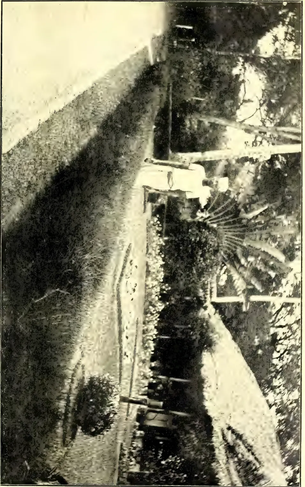
A black and white photograph showing a long, dense hedge of Casuarina trees. The hedge is neatly trimmed and follows a straight path. In the foreground, there is a paved or dirt path leading towards the viewer. To the right of the path, there are several small, dark, rectangular objects, possibly planters or markers. The background is bright and somewhat hazy, suggesting a clear sky or a distant landscape. The overall scene is a well-maintained garden or park area.CASUARINA HEDGE AT THE GOVERNMENT STOCK GARDEN.
200
NOVEMBER, 1911.]459Miscellaneous.I have been engaged in preserving under bag seed from selected plants of this year's crop.
I put forward the following points in favour of continuing the work:—
If undertaken, the experiments would of necessity not be on a very large scale; however, some 25 acres could be dealt with.
It may be put forward that we should be no better off than in the first trials, as we should be unable to ferment the tobacco. I think we should be distinctly better off. For one thing the leaf, if it is finer and thinner than last year—and it is expected it will be—would not require a very high temperature. Further, the greater humidity of the atmosphere which we should be experiencing at the time when fermentation would be going on ought to enable us to obtain a sufficiently high temperature.
It must be remembered that last year's crop was undergoing the process of fermentation at the season of the year when the atmosphere is as dry as possible, when a searching wind is continually blowing, and when there is practically no dew at nights, with the result that it was impossible to put the cured leaf into the staple in a sufficiently damp condition for any sort of fermentation to be set up.
I would suggest also that plots be grown, of about half an acre each, of other kinds of tobacco, if seed can be obtained, including some cigar filler tobacco, such as Cuban. Observations could be made as to the suitability or
otherwise of the soil and climate for the proper growth of such tobaccos. Seed could be preserved under bag, so that in the event of any variety showing marked good qualities in the green leaf, a trial on a large scale could be made with the tobacco later on.
Now the crux of the whole situation is whether the Agricultural Society would be prepared to contribute, say, Rs. 400 monthly towards the working expenses. The labour vote of the Experiment Station is quite inadequate for me to attempt to carry out experiments with a crop requiring such constant attention as tobacco, while at the same time carrying on trials in connection with cotton, paddy, rubber, soya bean, &c.
If you approve of these suggestions, I hope you will use your influence towards obtaining the necessary funds. As the time is now imminent when a start must be made with the work, I hope a favourable decision will be speedily arrived at.
A number of my former tobacco coolies are now in Jaffna, and they are only waiting to hear that tobacco cultivation is to be continued to come back with fresh coolies.
G. HARBORD,
Supdt., Experiment Station.
Maha Iluppalama, September, 1911.
The illustration in the present issue shows a hedge of Casuarina equisetifolia at the Government Stock Garden. The plants are about five years old, and have been dwarfed by continuous trimming, so that the hedge has not been allowed to exceed 2 feet in height. The seeds of the Casuarina are very minute in size, and need very careful propagation. They should be raised in shallow boxes, and when the seeds have become established, they should be picked out and put about an inch apart into fresh boxes before being finally transplanted to their permanent situations, where they should be planted a foot or 15 inches apart. Care should be taken not to allow the plants to become spindly, and bottom shoots should be encouraged by early trimming, so that in a year or so a dense growth with a surface like a scrubbing brush may be secured. The Casuarina does well along the seaborde, and those who have visited Madras will recall the hedge along the Marina quite close the sea,
Miscellaneous.460NOVEMBER, 1911.A pound of Casuarina seed (which goes a long way) can be sold for Rs. 2 or Rs. 2.50. The photograph for the illustration is by Mr. H. F. Macmillan, Curator of the Royal Botanic Gardens.
A DICTIONARY OF TERMS USED
IN AGRICULTURE, BOTANY,
CHEMISTRY, AND ALLIED
SCIENCES:
FOR THE USE OF PLANTERS AND OTHERS.
BY J. C. WILLIS AND M. WILLIS.
(Continued from page 333.)
| Dust | ... A grade of tea | Entomology | ... Science dealing with insects |
| Eagle wood | ... Aquilaria Agallocha | Enzyme | ... An unorganised or soluble ferment |
| Earth nut | ... Ground nut | Epaleate | ... Without paleæ |
| Ebracteate | ... Without bracts | Epicalyx | ... Bracteoles resembling a calyx just below a flower |
| Echinate | ... With spines | Epicarp | ... Outer layer of the wall of a fruit |
| Echinulate | ... With little spines | Epichil | ... End of orchid label-lum when distinct from base |
| Eciliate | ... Without cilia | Epidemic (disease) | One breaking out occasionally |
| Effuse | ... Expanded | Epidermis | ... Outer covering layer composed of cells |
| Eggfruit | ... Brinjal | Epigynous (flower) | Flower in which the ovary is immersed in and united to the hollow receptacle, only the styles being free |
| Eglandular | ... Without glands | Epipetalous | ... Stamens adherent to the corolla |
| Ekel | ... Vein of palm-leaf, esp. coconut | Epiphyllous | ... Stamens adherent to perianth |
| Ela | ... Artificial water course | Epiphyte (Epi-phytic) | ... Plants clinging to other plants for support but not parasitic on them and not usually attached to the soil |
| Elachi | ... (Hind.) Cardamom | Equitant | ... Leaves folded length-wise and the older overlapping the younger |
| Electrolyte | ... Product of decomposition by electric current | Erandu | ... Castor oil, Ricinus |
| Elephant creeper | Argyreia speciosa | Erectopotent | ... Erect and widely open |
| Elevator | ... Lift; grain storage building | Eri silk worm | ... Attacus ricini |
| Ellipsoid | ... Longer than broad, with rounded ends | Erose | ... Slightly irregularly toothed |
| Emarginate | ... Notched | Essential oil | ... An oil obtainable by distillation |
| Embolic myrobalan | ... Phyllanthus Emblica | Essential organs | ... Stamens and carpels |
| Embryo | ... Young plant contained in the seed | Estate | ... An area of 20 acres or more, cultivated at least partly with hired labour |
| Emulsion | ... Oil turned milky by action of some other substance | Estrophiolate | ... With no strophiole |
| Endemic | ... Occurring solely in one place, island or mountain | Evanescent | ... Visible for only a short time |
| Endive | ... Cichorium Endivia | European silk-worm | ... Bombyx Mori |
| Endocarp | ... Inner portion of the wall of a fruit | Everted | ... Projecting outwards |
| Endosperm | ... Food within the seed for the use of the young plant | Exalbuminous | ... Without endosperm |
| Ensiform | ... Sword shaped | Excavate | ... Hollowed out |
| Ensilage | ... Green fodder preserved under pressure in a pit | Excentric | ... Out of the centre |
| Entire | ... Without notches | Exfoliating | ... Shedding leaves |
| Entomologist | ... A student of insects and diseases caused by them | Exotic | ... Foreign |
| Experiment Station | ... A large piece of land devoted to experiments with important cultivated crops |
| Explanate | ... Spread out flat | Animals.—Union between ovum and |
| Exserted | ... Protruding | spermatozoon. |
| Exstipulate | ... Without stipules | |
| Extra-axillary | ... Not in the axils | |
| Extractives | ... Substances obtained from a plant by special treatment, such as steam distillation, natural evaporation, boiling, etc. | |
| Extrorse | ... Opening away from the centre of the flower | |
| Facultative | ... Incidental | |
| Faggot worm | ... cf. Bag-worm | |
| Falcate | ... Sickle-shaped | |
| Fall | ... Autumn (American) | |
| Fallow | ... Not bearing crops for a season | |
| Fan palm | ... Palmyra, Sabal, Thrinax, &c., &c. | |
| Farina | ... Starch in seed, becoming floury when crushed | |
| Farinaceous | ... Containing starch | |
| Farinose | ... Covered with a mealiness. | |
| Fasciation | ... Union of stems and branches forming a flat structure | |
| Fascicle | ... Tuft of lateral branches | |
| Fasciculate | ... With small fascicles | |
| Fastigate | ... Many branches parallel to stem | |
| Fecula | ... Starch | |
| Fenugreek | ... Trigonella Fœnum græcum | |
| Ferrugineous | ... Containing iron, Rust-coloured | |
| Ferment | ... A body which changes the chemical composition of substances in contact with it, without undergoing any apparent change of its own | |
| Fermentation | ... Change of chemical composition due to action of bacteria or catalytic agents | |
| Fermenting | ... In tea, tobacco, &c., placing the damp leaf to undergo a process of heating by fermentation | |
| Fern | ... A vascular plant which does not produce seeds but reproduces by aid of minute spores borne on the backs of the leaves | |
| Fertilisation | ... Plants.—The union between the male nucleus of the pollen tube and the ovum of embryo sac. | |
| Fertilizer (American) | ... Manure | |
| Fever nettle | ... Laportea crenulata, &c. | |
| Fever nut | ... Cæsalpinia bonducella | |
| Fibre | ... Supporting tissue of plants remaining after the decay of softer parts | |
| Fibrillæ | ... Small fibres | |
| Fibrillose | ... With small fibres. | |
| Fibrous (root) | ... A root consisting of tufts of uniform length as in grasses | |
| Filament | ... The stalk of a stamen | |
| Filiform | ... Thread-like | |
| Filler | ... The leaf placed in the centre of a cigar | |
| Filmy ferns | ... Hymenophyllaceæ | |
| Fimbriate | ... Fringed | |
| Five plucking (tea) | ... Taking the bud and two young leaves below it | |
| Finger and toe disease | ... A disease of cabbages, turnips, and other Cruciferæ, caused by the fungus Plasmodiophora Brassicæ. | |
| Firing (tea) | ... Drying the fermented leaf | |
| Fission | ... Division by splitting | |
| Flabellate, Flabelliform | ... Fan-shaped | |
| Flaccid | ... Soft and easily bent | |
| Flagellum | ... Whip-like outgrowth | |
| Flagelliferous | ... Bearing flagella | |
| Flamboyante | ... Poinciana regia | |
| Flame tree | ... Nuytsia (Australia), Flamboyante, &c. | |
| Flexuose | ... Zig-zag | |
| Flexure | ... Bend | |
| Floccose | ... Bearing tufts of soft hair | |
| Flocculent | ... Diminutive of last | |
| Flore pleno | ... Double flowered | |
| Florida velvet bean | ... Mucuna pruriens | |
| Floss | ... Fine fibre | |
| Flower fence | ... Cæsalpinia pulcherrima | |
| Flush, flushing | ... The appearance of young shoots upon a tea bush | |
| Foliaceous | ... Leaf-like. Leaf-bearing | |
| Follicle | ... Fruit consisting of one carpel, splitting down one side only | |
| Foot | ... Structure fastening the fertilised egg cell to the prothallus. (In orchids) projection at foot of column |
| Foot and mouth disease | ... A troublesome disease of animals, whose nature is not fully understood. Treatment usually by slaughtering | Genus | ... The next larger group than species of related forms, e.g., the cabbage-turnip-mustard genus |
| Forage | ... Food for cattle, horses, etc | Geniculate | ... Bent sharply, like a knee |
| Forastero | ... A variety of cacao | Geranium oil | ... Oil of Cymbopogon Martini |
| Fornicate | ... Arched | Germinate | ... Sprout, begin to grow (of seeds). |
| Foveolate | ... Covered with small pits | Getah (Malay) | ... Gutta (percha) |
| Foxy | ... (Coffee berries) drying to a reddish colour | Ghat | ... Landing place; path of descent to a river; mountain pass |
| Frangipani | ... Plumeria acutifolia | Ghee | ... Boiled butter |
| Free | ... Not united to another organ | Gherkin | ... Young cucumber |
| French bean | ... Phaseolus vulgaris | Giant bamboo | ... Dendrocalamus giganteus |
| French Garden | ... Cultivation under glass, with heavy manuring | Gibbous | ... With projecting broad pouch |
| Friable | ... Easily powdered | Gingelly | ... Sesamum indicum |
| Fruit | ... The ovary, stimulated to further growth by fertilisation, enclosing the ripe seeds | Ginger | ... Zingiber officinale |
| Fugacious | ... Falling early | Gingili | ... Sesamum indicum |
| Fulvous | ... Tawny | Gins | ... Machine to separate the seeds from the cotton fibre |
| Fumigation | ... Treatment to destroy fungous, bacterial, or insect diseases | Girdle | ... To take off a complete ring of bark |
| Fungicide | ... Substance destroying fungi | Glabrate | ... Without hairs |
| Fungus | ... A non-vascular plant which contains no green colouring matter and does not produce seeds | Glabrescent | ... Almost hairless |
| Funicle | ... Stalk of ovule | Glabrous | ... Hairless |
| Furfuraceous | ... With soft scales | Gland | ... Organ secreting fluid |
| Fusiform | ... Spindle shape | Glaucous | ... Becoming sea-green, or more or less sea-green |
| Fuzz | ... The fine hair left on a cotton seed after ginning | Glaucous | ... With waxy, bloom, or sea green |
| Gahu (Ind.) | ... Wheat | Globose | ... Almost spherical |
| Galingale, galin-ga | ... Kæmpferia galanga and Alpinia galanga | Glochidiate | ... Provided with curious barbed hairs |
| Gall | ... Abnormal growth on plants usually caused by insects | Glucoside | ... Substance giving rise to glucose on decomposition |
| Gall-nuts | ... Myrobalans | Glumaceous | ... Glume-like |
| Gambier | ... Uncaria Gambir | Glume | ... Scaly leaves protecting flowers of grasses and sedges |
| Gamboge | ... Garcinia Morella, &c. | Gluten | ... The nitrogenous portion of wheat, &c. |
| Gamopetalous | ... With united petals | Gneiss | ... A granite-like rock with the materials arranged in fairly parallel layers |
| Gamophyllous | ... With united perianth segments | Goa bean | ... Psophocarpus tetragonolobus |
| Gamosepalous | ... With united sepals | Godown | ... Out-house |
| Gang plough | ... Plough making more than one furrow | Gold mohur tree | ... Cæsalpinia pulcherrima |
| Ganja | ... Female flowering tops of hemp packed together | Golden tips | ... Tea made from leaf buds |
| Garjan oil | ... Dipterocarpus sp. | Gomuti palm | ... Arenga saccharifera |
| Garlic | ... Allium sativum | Gondal fluid | ... See Watt and Mann, Pests and Blights of the Tea Plant, p. 344 |
| Gehun (Ind.) | ... Wheat | ||
| General | ... The opposite of partial |
| Gonidiospore | ... Asexually produced spore of fungi | Gum resin | ... Substances formed by secretion or disintegration in plants and consisting of a mixture of gum and resin |
| Goradu | ... Yam. | Gum-tree | ... Nyssa, (West Ind. Sapium) |
| Gordon plant | ... Euryale ferox | Gumuti | ... Arenga saccharifera |
| Gormandiser | ... Sucker | Gunny bag | ... Bag made of jute fibre |
| Gourd | ... Cucurbita maxima | Gunpowder | ... A grade of green tea |
| Gourmands | ... Suckers | Gur, gul (Ind.) | ... Jaggery |
| Gow | ... 4 miles | Gutta percha | ... Substance derived from the latex of Sapotaceæ, harder than rubber when cool, not extensible, and softening with heat. Obtained from Dichopsis, Mimusops, Palaquium, Payena, etc. |
| Goyiya | ... Peasant proprietor | Gynæcium | ... The carpels, considered together |
| Grade | ... A particular quality | Gynophore | ... Elongated portion of receptacle bearing the carpels |
| Grafting | ... Inserting a short branch of one plant into a slit cut for it in another, so that the two shall grow together | Habitat | ... Situation inhabited by, and suitable to, a plant |
| Grains of paradise | ... Amomum Melegueta | Hal | ... A plough |
| Gramme | ... A metric weight = 15½ grains | Halfspiral | ... Method of tapping rubber by cutting spirals that only go half round the tree |
| Granadilla | ... Passiflora quadrangularis | Hard fine | ... The best quality of Para rubber |
| Granular, Granulate | ... Composed of grains | Haricot bean | ... See French bean |
| Granulator | ... Machine for powdering | Hashish | ... An intoxicating liquor made from hemp, Cannabis sativa |
| Grass cloth | ... Ramie, Boehmeria nivea | Hastate | ... With two pointed lobes sticking out horizontally at the base |
| Great Millet | ... Sorghum vulgare | Haulm | ... Stem |
| Green bug | ... Lecarium viride (sometimes also the stink-bug Nezara viridula) | Head | ... Collection of sessile flowers on a common receptacle, as in daisy |
| Green fly | ... Aphides | Heart-wood | ... Older wood no longer used for passage of sap, and often coloured |
| Green heart | ... Nicandra Rodiei | Hectare | ... 100 metres square, approximately 2.45 acres |
| Green manure | ... Manure formed from green plants belonging to the natural order Leguminosæ | Helicoid | ... Curved like a snail's shell |
| Grey blight | ... Blight of tea, characterised by grey patches on the leaves | Helopeltis | ... Mosquito blight (pest of tea and cacao) |
| Ground nut | ... Arachis hypogæa | Hemileia | ... Coffee leaf disease |
| Grubber | ... Cultivator | Hemp | ... Cannabis sativa |
| Grugru palm | ... Acrocomia fusiformis | Hemp, Ambari or Deccan | ... Hibiscus cannabinus |
| Guaco | ... Mikania guaco | Hemp, Bombay.. | ... Crotalaria juncea |
| Guano | ... Manure from excrement of sea birds | ||
| Guarana | ... Paullinia Cupana | ||
| Guava | ... Psidium guajava, &c. | ||
| Guayule | ... Parthenium argentatum | ||
| Guinea corn | ... Sorghum vulgare | ||
| Guinea grass | ... Panicum maximum | ||
| Guinea yam | ... Dioscorea aculeata | ||
| Gulab (Hind.) | ... Rose | ||
| Gum | ... Substance formed by disintegration of parts of a plant, swelling and often dissolving in water, and insoluble in alcohol or ether | ||
| Gummosis | ... A disease characterised by the formation of a gummy excretion |
(Continued.)
464
MARKET RATES FOR TROPICAL PRODUCTS.
(From Lewis & Peat's Monthly Prices Current, London, 13th September, 1911.)
| QUALITY. | QUOTATIONS. | QUALITY. | QUOTATIONS. | ||||
|---|---|---|---|---|---|---|---|
| ALOES, Socotrine cwt. | Fair to fine | 70s a 75s | INDIARUBBER. (Contd.) | Common to good | 1s 9d a 2s 9d | ||
| Zanzibar & Hepatic | Common to good | 40s a 72s 6d | Borneo | Good to fine red | 2s 9d a 3s | ||
| ARROWROOT (Natal) lb. | Fair to fine | 8d a 9d | Java | Low white to prime red | 1s 8d a 2s 6d | ||
| BEES' WAX, cwt. | Penang | Fair to fine red ball | 3s 6d a 4s 2d | ||||
| Zanzibar Yellow " | Slightly drossy to fair | £6 12s 6d a £6 15s | Mozambique | Sausage, fair to good | 3s 6d a 4s 1d | ||
| East Indian, bleached " | Fair to good | £7 12½s a £7 17s 6d | Nyassaland | Fair to fine ball | 3s 4d a 3s 11d | ||
| unbleached " | Dark to good genuine | £7 15s a £7 7s 6d | Madagascar | Fair to fine pinky & white | 3s a 3s 4d | ||
| Madagascar " | Dark to good palish | £6 10s a £6 17s 6d | New Guinea | Majunga & blk coated | 2s 1d a 2s 6d | ||
| CAMPHOR, Japan " | Refined | 1s 3d a 1s 8d | INDIGO, E.I. Bengal | Niggers, low to good | 8d a 2s 10d | ||
| China " | Fair average quality | 50s nom. | Ordinary to fine ball | 2s 6d a 3s 6d | |||
| CARDAMOMS, Tuticorin " | Good to fine bold | 2s 6d a .s 10d | Shipping mid to gd violet | 3s 2d a 3s 6d | |||
| Malabar, Tellicherry | Middling lean | 2s a .s 3d | Consuming mid. to gd, | 2s 8d a 3s 1d | |||
| Calicut | Good to fine bold | 2s 4d a 2s 10d | Ordinary to middling | 2s 6d a 2s 6d | |||
| Mangalore " | Brownish | 1s 10d a 2s 2d | Oudes Middling to fine | 2s 6d a 2½ nom. | |||
| Ceylon, Mysore " | Med brown to fair bold | 2s 5d a 3s 4d | Mid. to good Ku pah | 2s 2d a 2s 6d | |||
| Malabar " | Sm ll fair to fine plump | 1s 10d a 3s 4d | VACE, Bombay & Penang | Low to ordinary | 1s 6d a 2s | ||
| Ceylon Long Wild " | Fair to good | 1s 8d a 1s 10d | per lb. | Mid. to fine Madras | None here | ||
| Seeds, E. I. & Ceylon " | Fair to good | 2s 1d a 2s 3d | Java | Pale reddish to fine | 2s 3d a 2s 6d | ||
| CASTOR OIL, Calcutta, " | Shelly to good | 6d a 1s 6d | Bombay | Ordinary to fair | 2s a 2s 2d | ||
| CHILLIES, Zanzibar cwt. | Good 2nds | 3½d a 3½d | Bombay | " good pale | 2s a 2s 4d | ||
| Dull to fine bright | 40s a 45s | MYRABOLANES, cwt | Wild | 4d a 5d | |||
| CINCHONA BARK.—lb. | Crown, Renewed | 3½d a 7d | Bombay | UG and Coconada | 4s 6d a 5s | ||
| Ceylon | Org. Stem | 2d a 6d | Bombay | Jubblepore | 4s 6d a 6s 3d | ||
| Org. Stem | 1½d a 4½d | Bhimiles | 5s a 6s 6d | ||||
| Renewed | 3d a 5½d | Bengal | Rhajpore, &c. | 4s 6d a 5s 9d | |||
| Root | 1½d a 4d | Calcutta | Calcutta | 3s 9d a 4s 3d | |||
| CINNAMON, Ceylon 1sts | Good to fine quill | 6½d a 1s 5d | 64's to 57's | 10d a 1s | |||
| per lb. | " " | 5½d a 1s 4d | 80's | 6½d a 7d | |||
| 2nds | " " | 5d a 1s | 110's | 5½d | |||
| 3rds | " " | 4½d a 3½d | NUTS, ARECA cwt. | Ordinary to fair fresh | 15s a 17s 6d | ||
| 4ths | " " | 4d a 3d | NUX VOMICA, Cochin | Ordinary to good | 9s 6d a 11s | ||
| Chips, &c. | Fair to fine bold | 1d a 1s 2d | per cwt. | " " | 7s 6d a 8s 6d | ||
| CL. VES, Penang lb. | Dull to fine bright pkd. | 9d a 10d | Bombay | " " | 8s a 9d | ||
| Amboyna " | Dull to fine | 9d a 10d | Bombay | Fair merchantable | 5s | ||
| Ceylon " | Fair to fine bright | 8d a 8½d | Bombay | According to analysis | 3s 4d a 3s 7d | ||
| Zanzibar " | Fair | 3d | OIL OF ANISEED " | Good flavour & colour | 4½d | ||
| Stems | CASSIA " | Dingy to white | 1½d a 1¾d | ||||
| COFFEE | Medium to bold | 70s a 113s | LEMONGRASS " | Ordinary to fair sweet | 2½d a 1s 4d | ||
| Ceylon Plantation cwt. | Good ordinary | 62s a 68s | NUTMEG " | Bright & good flavour | 1s | ||
| Native | Fair to bold | 75s a 85s 6d | CINNAMON " | ||||
| Liberian " | Special Marks | 65s a 75s | CITRONELLE " | ||||
| CU COA, Ceylon Plant. " | Red to good | 43s a 64s | ORCHELLA WEED—cwt | ||||
| Native Estate " | Ordinary to red | 25s a 77s | Ceylon | Fair | 10s | ||
| Java and Celebes " | Small to good red | 12s a 17s | Madagascar | Fair | 10s | ||
| COLOMBO ROOT | Middling to good | 7s a 75s | PEPPER—(Black) lb. | ||||
| CROTON SEEDS, sift. cwt. | Dull to fair | 160s a 170s | Allepy & Tellicherry | Fair | 5½d | ||
| CUBEBB " | Ord. stalky to good | 35s nom. | Ceylon | " to fine bold heavy | 5½d a 6d | ||
| GINGER, Bengal, rough, " | Fair | 80s a 85s | Singapore | Fair | 5½d | ||
| Calicut, Cut A " | Small to fine bold | 60s a 70s | Acheen & W. C. Penang | Dull to fine | 5½d a 6d | ||
| B & C " | Small and medium | 40s a 45s | (White) Singapore | Fair to fine | 8d a 9d | ||
| Cochin Rough " | Common to fine bold | 40s | Siam | Fair | 7½d | ||
| Japan " | Small and D's | 37s | Penang | Fair | 7d | ||
| AMMONIACUM " | Ord. blocky to fair clean | 40s a 67s 6d | Muntok | Fair | 8½d | ||
| ANIMI, Zanzibar " | Pale and amber, str. srts | £15 a £16 | Canton | Ordinary to good | 1s 2d a 2s 6d | ||
| " little red | £12 a £14 | High Dried.. | Ordinary to good | 10d a 1s | |||
| Bean and Pea size ditto | 75s a £12 10s | Fair to fine flat | 8½d a 9½d | ||||
| Fair to good red srts | £7 a £10 | SAGO, Pearl, large | Dark to fair round | 5½d a 7½d | |||
| Med. & bold glassy sorts | £5 a £7 | medium | Fair to fine | 13s a 19s | |||
| Fair to good palish | £4 a £3 15s | small | " " | 17s a 18s 6d | |||
| " red | £4 a £7 10s | 14s a 15s | |||||
| ARABIC E. I. & Aden " | Ordinary to good pale | 30s a 37s 6d nom. | SEEDLAC cwt. | Ordinary to gd. soluble | 52s 6d a 72s 6d | ||
| Turkey sorts " | " " | 49s a 65s | SENNA, Tinnevelly lb. | Good to fine bold green | 5d a 7d | ||
| Ghatti " | Sorts to fine pale | 21/6 a 42s 6d nom. | Fair greenish | 2¾d a 4½d | |||
| Kurrahee " | Reddish to good pale | 20s a 35s | SHELLS, M. o'PEARL— | Commonspeaky and small | 1½d a 2½d | ||
| Madras " | Dark to fine pale | 20s a 32s 6d | Egyptian cwt. | Small to bold | 77s 6d a 165s | ||
| ASSAFETIDA " | Clean fr. to gd. almonds | £1s 10s a £21 5s | Bombay " | " " | 45s a 167s 6d | ||
| com. stony to good block | 25s a £15 | Mergui " | Fair to good | £10 12/6 a 14 2/6 | |||
| KINO | Fair to fine bright | 9d a 1s | Manilla | Sorts | £2s a £14 2/6 | ||
| MYRRH, Aden sorts cwt | Middling to good | 55s a 60s | Bandia " | Mid. to fine blk not stony | 21s 6d a 25s 6d | ||
| Somali " | " " | 50s a 52s 6d | FAMARINDS, Calcutta... | Stony and inferior | 10s a 12s [nom. | ||
| OLIBANUM, drop " | Good to fine white | 45s a 50s | per cwt. Madras | 4s a 5s | |||
| pickings " | Middling to fair | 35s a 40s | TOR FOISESHELL— | Small to bold | 11s 6d a 25s | ||
| siftings " | Low to good pale | 12s 6d a 27s 6d | Zanzibar, & Bombay lb. | Pickings | 8s 6d a 21s | ||
| INDIA RUBBER lb. | Slightly foul to fine | 20s a 22s 6d | Fair | 22s 6d | |||
| Fine Para bis, & sheets | 5s 4d | TURMERIC, Bengal cwt. | Finger fair to fine bold | 23s a 25s | |||
| " Ceara | 5s | Madras | Bulbs [bright] | 18s | |||
| Ceylon, Straits, " | Crepe ordinary to fine | 5s 3d a 5s 6d | Do. | Finger | 18s | ||
| Malay Straits, etc. | Fine Block | 5s 6d | Cochin | Bulbs | 14s | ||
| Assam | Scrap fair to fine | 4s 4d a 4s 7d | VANILLOES— | ||||
| Plantation | 4s 2d | Mauritius 1sts | Gd crystallized ¾ a 8½ | 14s a 19s | |||
| Rangoon | Fair 11 to ord. red No. 1 | 3s a 3d 9d | Madagascar 2nds | Foxy & reddish ¾ a " | 13s a 15s 6d | ||
| " " | 2s 6d a 3s | Seychelles 3rds | Lean and inferior | 12s 6d a 13s 6d | |||
| VERMILLION | Fine, pure, bright | 3s | |||||
| WAX, Japan, squares | Good white hard | 40s | |||||
COMPILED AND EDITED BY A. M. & J. FERGUSON.
No. 5.]
NOVEMBER, 1911.
[Vol. IX.
A good many years ago a Sydney merchant, seeing the "fishermen big straw hat" made and sold by Sinhalese women from Cotta, was so taken with them, that he left 30 sovereigns (£30 sterling) to get a consignment shipped to his firm for distribution to retailers, to shepherds and cattlemen in "the bush"! This was a Godsend to poor people in Cotta in a year of poor crops and dear rice. The Church Missionary, who took charge, had enough for a number of families for months! The hats were duly shipped and distributed and sold; but there were no repeat orders and so the Cotta hats evidently did not suit Australian shepherds. But cannot the Sinhalese villagers do something better? Here is a note and extract from our correspondent in the Philippines:—
"This may be interesting for the T.A. You have probably got the same palm in Ceylon, that is used here, and might start a new industry in Ceylon.
"If you send a reporter here in February for the Carnival, he will see native girls making hats in the Carnival grounds. I think the Carnival Association pays the hotel expenses of Pressmen from other countries."
The extract is from a Manila paper:—
A new industry, of which little is known outside of commercial circles, is growing in the Philippines in the making of what are commonly termed bamboo hats. The customs export figures for the fiscal year of 1911 show an increase of over sixty per cent to the United States alone, but with a small increase of ten per cent in the revenue.
Members of the local hat exporting firms state that the reason for the small increase in revenue compared with the large increase in the quantity exported to the States, is the lack of increased production of the finer grades for which experts are necessary.
The coarser grades are in great demand among the working class, farmers, and the negroes of southern states owing to their cheapness, their selling price being about twenty
five cents gold, and the Filipino workmen, recognising that they can make as much revenue from the cheaper hats, very seldom try to become experts in weaving the finer grades.
The chief article found in the local houses is called the kalasiao or pototan. It receives its name from the localities in which it is manufactured, Kalasiao, Pangasinan, and Potolan, Iloilo province. The fibre used is taken from the unopened leaf of the buri palm from which four different kinds of hats are produced, and is generally shaped over cardboard in the form of an ordinary straw hat. It is finished with two coats of a rice paste which gives it the pure white appearance.
The other two fibres from the buri palm are that taken from the leaf, making what is termed the buri hat, one of the cheapest, and that extracted from the inside or pith of the stem of the palm leaf from which is woven the buntal hat. Many other grades of hats are made from the fibre of the buri palm in various sections of the islands from which they receive their names, but correct classification is difficult as each hat-exporting firm has its own standard of classification.
The bamboo hat called Baliwag or Pulilan is made in the towns of those names from bamboo splits and its cheapness makes it the chief export hat of the Philippines. These hats can be made within a few hours, but the finer grades, such as the large merry widow hats of the finest quality, consume several weeks in weaving, and bring an export price of $2 although when sold in the States the prices range from $10 to $50 and sometimes more. However the Philippine market supplies very few of these hats compared with the cheaper grades.
The export figures for the past fiscal year showed the quantity shipped from the islands to be 1,025,596 as against 621,475 exported last year while the increase in revenue was $17,638 gold. Of this amount over 700,000 hats were exported by Germann and Company, who are the leading exporters in the islands, while the remainder was divided between Manila Commercial Company, Fussell and Company, Max L. Tornado and Company, and several smaller exporters who sell in small lots.
Each firm has an expert for this department who is required to make a special study of the hat industry for a number of years before he is considered competent to judge between the different grades.
The Bureau of Education and the Bureau of Science are both working to bring the importance of this industry before the Filipino population, by issuing pamphlets on the different phases of the subject, and the bureau of education is establishing schools throughout the islands for the purpose of teaching the Filipinos the art of weaving straws and braids,
59
466The Supplement to the Tropical AgriculturistAs to the palm mentioned and the industry we referred to the Secretary to the Agricultural Society, and Mr Drieberg writes:—
"The Buri palm about which you enquire is Corypha Elata very closely related to our talipot (C. umbra-culifera) which I have no doubt can be employed exactly in the same way—if we only knew the art of hat making. I am returning the cutting, which does not give very much information, and am thinking of writing a paper on the subject for the Board when I can spare the time, as I have collected a good deal of material about it. It has struck me that it would be an excellent thing if we could persuade the Philippine Government or some enterprising person out in Manila to undertake to send us an exhibit of hats and hat-making materials for the All-Ceylon Exhibition 1912. If the exhibits could come in charge of a skilled hat maker who could show how it is done, there will be much for Ceylon to learn from such a display. I should fancy there will be a good sale for hats and other articles if a collection is sent out."
Our Philippines' correspondent will be asked as to the proposal now made and whether sample hats and a worker can be got for Ceylon.
Mr. E. L. Killick, the Special Commissioner of "The Financier," who has been inspecting the rubber plantations of the East, in the interests of his journal and is now on his way home in a hurried conversation with our representative said that he has been in all the Federated Malay States, Sumatra, Java, Dutch Borneo, and the Rhio Archipelago.
He has found that the future outputs of plantations have been greatly exaggerated by all estimate compilers. He considered it would be found that the big estimates they had worked up to for a single year would not be maintained indefinitely and regularly. There was a figure which might be kept pretty constant, but it was unquestionably lower than had been estimated. For this reason, he did not see how rubber could fail to keep at a very profitable figure for a good many years to come.
There was certainly very little the matter with the industry. He had found nothing alarming in the way of disease anywhere. There was plenty of disease about, but it was being kept under. It did not seem likely to devastate whole areas, or anything approaching that kind of thing.
The Castilloa rubber, which the Americans had expected a great deal from, he thought, would very shortly be shown to be practically a failure. There was quite a lot in Java and invariably it was unsatisfactory. There was difficulty in tapping, and a poor yield at that, and both Ceara and Ficus elastica were superior.
There was a lot of rubber on some of the islands in the Rhio Archipelago. It has all Hevea, and growing well. The labour was Javanese indentured, and something about it was that the labourers could not bolt from the small islands.
Generally speaking rubber was growing well everywhere he had been, especially in Negri Sembilan and Selangor, where the growth was extraordinary. In Sumatra there were some very fine trees indeed, but Java did not compare at all with these places. There were one or two good places in Java, but as a general rule Java rubber would not do much, except in a few isolated cases.
Ceylon, in some points, such as management, organisation, and cultivation, compares very well with all other places, and the cost of production in Ceylon will always be low in comparison with a good many places. As for finished rubber, Mr Killick has seen nothing better anywhere than that from Ceylon's crack estates such as St. George's, Gikiyanakande, and Hanwella. Ceylon rubber was as good as any, he was quite satisfied of that.
The drought had played havoc with outputs in the Straits, and estimates would look silly, especially on the flat land, but that was nothing to be alarmed about. It was phenomenal. It might be good for the trees, and act as a sort of stimulant, making them yield better when the rain came.
One thing he has been impressed with is the very high standard to which tapping has been brought. He thought that in future, as a result of the drought, planters would tap more carefully, and be more cautious in their estimates. He thought that in time there would be practically a revolution in the curing of rubber, for the last word did not seem to have been by any means reached.
and Magazine of the Ceylon Agricultural Society.—November, 1911. 467
From numerous references to the resources of the Congo and Bolivia some interesting particulars are to be learned. In the Congo, during 1910, twelve large rubber plantations were either newly created or developed, and the experimental cultivation of the Hevea Brasiliensis, Funtumia Elastica, and Manihot Glaziovii species is being continued on a much enlarged scale on the plantations already in existence, and extensive new areas are about to be brought under cultivation. A number of the larger plantations are being devoted to the exclusive cultivation of Hevea, some 1,000 hectares having been planted. Funtumia Elastica, however, is the most common, and numbers some 3,461,000 trees, of which the greater part are reported to be thriving satisfactorily. The older trees, of seven to nine years, that have been tapped, have yielded a rubber of good quality that commanded a price in the Antwerp market ranging between 17f. and 20f. per kilo (Rs. 4.06 to Rs. 5.44 per lb.) The present yield of the six year old trees is said to be 100 grammes, which would represent a return of 137.75 lb. per hectare of 625 trees. Hevea is regarded by Government as a most promising plant, adaptable to the climatic conditions and inferiority of soil. Thirty thousand trees have been planted by Government, and seven extensive areas in the Bangala and Equator districts are to be brought under cultivation. All the available seeds in the Congo having been used up, further quantities are being imported from Ceylon. Considerable impetus is being given to the cultivation of Manihot Glaziovii, as, experimentally produced in the Congo, it has fetched 23f. per kilo in Antwerp, on account of its excellent quality. Experiments are also in progress with Castilloa, various Manihot and Ficus, and Euphorbia. Attention will also be given to the old rubber lianas, of which some 11,000,000 are known to exist. It is proposed to conduct the industry on scientific lines, such as those obtaining in Malaysia, particular attention being paid to the process of coagulation, washing and drying, for which the most approved plant will be acquired. Wild rubber is becoming scarce, or is in places difficult of access and unprofitable.
In Bolivia, the annual export value of rubber is estimated at 4,000,000 dollars. The exploitation of the rubber lands is regulated by law through an annual export tax. The principal areas lie in the north-east, near the Peruvian boundary; in the east, in the Province of Santa Cruz; and in the Acre and Beni territory, which is exceptionally rich in its yield. Two varieties of rubber plant are found in the district, the caucho, which has to be cut down in order to extract the sap, and the Hevea, which is merely tapped. In some cases the trees are tapped for a period of two years, and are then rested for a similar term. Other rubber trees are tapped for six years at a time, and then left untouched for a like period. The trees selected
for tapping in this section are usually from 30 to 40 years of age, and are expected to yield for 20 years, after which they become useless.
In Panama, the soil is of marked fertility, and the climatic conditions of induce a luxuriant growth of tropical vegetation. Government is interesting itself in promoting the cultivation of coffee, cacao, coconuts, rubber, vanilla, and sugar-cane. Rubber is an export, the output coming from trees scattered natural in the forests. Coconuts form one of the staple exports, over 150,000 dollars worth being sent in 1910 to the United States.
Mexico, 4 de Septiembre de 1911.
Mess Tropical Agriculturist, Colombo, Ceylon.
DEAR SIRS,—We write to ask your opinion, on the following point:—
Would there be any objection to planting orange and lemon trees in between our coconut plantings. We plant our trees at 28 feet apart, on the triangle system.
Awaiting the favour of a reply, we are, yours very truly,
GRAVES Y GRAVES CIA.
A. R. MORREL,
Gerente.
We have had the above question placed before an experienced coconut planter and his answer is "I would recommend planting Orange or Lemon in the centre of four trees. Plant on'y one plant Quincunx—which will not do any harm to the coconut trees."
Another planter writes.
Oct. 25th.
DEAR SIR,—I regret I cannot give an opinion, based on practical experience, as to whether oranges and lemon trees would be a success planted among coconut palms placed 28 ft. apart on the triangle system.
If the oranges and lemon trees are put out in the field at the same time as the coconuts they would, I think, grow well together for some years but when the roots of the coconuts spread out and form a network in the soil the oranges will probably fall off in productiveness.
MacMillan in his hand-book of "Tropical Gardening" says with regard to the orange the distance for planting apart should be not less than 15 by 15 feet or 193 trees to the acre. In my opinion grafts would be best.—Yours faithfully,
COCONUT PLANTER.
[Much will depend on the quality of the soil and the climate as regards a well-distributed copious rainfall,—A. M. & J. F.]
468The Supplement to the Tropical AgriculturistSir William A. Tilden is, if we are not mistaken, about the oldest Chemist in England and the gentleman who, a few years ago when the British Association met at York, was good enough to forward a message to the Rubber Planters of Ceylon. The occasion and the message require explanation. In the Chemical Section of the Association, a paper on Synthetic Rubber was read and discussed at length, chiefly by young Chemists who seemed to be sanguine of being able very soon to turn out a good artificial rubber and prove it a commercial success. There was one senior member of keen intellectual features, grave and silent during the discussion, and, enquiring about his personality, we were told that was "Tilden," the oldest if not the ablest Chemist in England. Plucking up courage, we ventured, as the sitting ended, to make an introduction, how we were from Ceylon and to many of its planters we were afraid the views just expressed of an expectation of a cheap useful synthetic rubber, would spell great loss if not ruin, would he kindly say if he agreed with the sanguine opinions of his younger brethren. The purport of the answer (and message) of Mr. (now Sir W. A.) Tilden (given to Mr. J. Ferguson) can be indicated in this way:—Tell your friends in Ceylon that if I were a young man and a planter in your island that I would not hesitate to plant as many Rubber trees as I could manage without troubling myself about the laboratory experiments of the gentlemen who have spoken towards a synthetic rubber. That such a rubber might be managed to a useful degree, was quite possible in time; but whether the result could ever compete with the natural product in quality or prices was a different matter altogether. Evidently, some years ago—and no doubt still—Mr. now Sir William A. Tilden was not sanguine at all on the point. This little bit of experience at York in August, 1906, makes anything that falls from the pen of the veteran Chemist of much interest and in Murray's "Science Progress" we have a paper of his entitled "The Chemical History of the Terpenes," in which we find a few passages which bear on "synthetic rubber." First of all, Sir William opens his article as follows:—
The hydrocarbons known as the terpenes have long attracted the attention of chemists, on account of their wide diffusion in the vegetable kingdom and their frequent association with the odorous principles of plants, though it is only during the last thirty to forty years that systematic research has been rewarded with such a measure of success that it can be said that the properties and chemical constitution of all the more important members of the group are now as well understood as those of any group of carbon compounds.
The terpenes are highly interesting from two distinct points of view. As already mentioned they are important for commercial reasons not
only on account of the use of some of them as solvents, especially the oils of turpentine in varnishes and paints, but they are characteristic and often predominant constituents of many essential oils used in medicine and perfumery. They have also been made the starting-point for the manufacture of certain substances—camphor and terpeneol, for example, which are extensively used for such purposes.
But the history of the investigations by which the chemical constitution of many of the terpenes has at last been elucidated is specially interesting to the scientific chemist on account of the nature of the problems to be solved, the peculiar elusive transformations of the hydrocarbons and their derivatives and the ultimate success of these investigations, which provides a triumphant vindication of the principles which underlie modern synthetical chemistry. These principles concern not only the student of "organic" chemistry, for they are necessarily involved in general conceptions regarding the constitution of matter.
And after some fourteen pages mainly filled with technical details, we come upon the following:—
Isoprene heated alone in a sealed tube is converted into dipentene mixed with viscous products of its polymerisation. But if it is kept for some months or years under conditions which, except exclusion of air, have not been exactly determined, it passes spontaneously into a syrupy liquid which gradually deposits solid masses of rubber. Rubber is also formed when isoprene is heated with small quantities of acetic and other acids. This observation, made more than twenty years ago, has led to various attempts to employ isoprene as a practical source of rubber on a manufacturing scale.
When rubber or gutta-percha is destructively distilled it yields a mixture of hydrocarbons from which can be separated as chief products, isoprene and dipentene, originally called, caoutchouc. It would appear from this that rubber is a compound, the formula of which is either or . From the direct conversion of isoprene into rubber the latter formula seems the more probable, especially as the temperature at which rubber decomposes is much below that at which dipentene is broken down under the influence of heat. Indeed, it seems not improbable that the dipentene which accompanies isoprene in the distillation of rubber is a secondary result of the polymerisation of isoprene by heat. The condensation of isoprene into dipentene is easily represented as in the following formula where two molecules of isoprene are united by the dotted lines, the valencies adjusting themselves but without further change: * * *
To represent the condensation of isoprene into caoutchouc, Harries assumes the formation of an octadiene as the first product of the union of two molecules of isoprene, rubber consisting of multiples of this or . * * *
Caoutchouc is a colloid of very high molecular weight and if it is assumed to be made up of a number of such groups united together, it is difficult to explain why rubber should break
and Magazine of the Ceylon Agricultural Society.—November, 1911. 469down so easily in groups of and why its combining capacity is represented by four atoms of bromine for every ten atoms of carbon.
Thiele's theory of partial valencies has been invoked by way of explanation but this is itself a subject of extremely doubtful character.
Other formulæ have been suggested but the whole question is one which requires much further investigation.
Finally, it may be remarked that the terpenes and their derivatives afford many examples of optically active compounds which, however, do not owe their activity to the presence of one or more asymmetric carbon atoms but rather to the asymmetry of the molecule as a whole. This phenomenon, however, is not peculiar to the terpenes and the question is too large for discussion on this occasion.
October 10th, 1911.
DEAR SIR,—I extract the following from the India Rubber World of New York, in case it does not come your way. I think it is worthy of a place in your columns:—
"At no time in the history of the rubber trade could rubber manufacturers view a 50 per cent export duty on Brazilian rubber, and a restriction of the Acre product with greater calmness. Factory stocks have accumulated, reclaimed rubber is understood and manufactured on a greatly increased scale here and abroad, plastics, such as mineral rubber, are utilized the world over, and plantation receipts are constantly growing.
"If Brazil does as she plans, as she certainly has every right to do, rubber will undoubtedly be higher for a time. The result, however, will be a tremendous increase in planting, a further exploitation of the lesser rubber producers, the substitution of many plastics for rubber wherever it is possible, and the final disappearance from the market of all wild rubber, the cost of collection of which is above 50 cents a pound."
Since my stay in the United States, I find that plain rubber is coming into continued favour with the manufacturers in this country. The only thing is, they do not know enough about it. I have now arranged to hold an International Rubber and Allied Trades Exhibition under the auspices of the International Exposition Company, a body incorporated under the laws of the United States. Their building in the New Grand Central Palace, 46th to 47th Street and Lexington Avenue, New York City, is one of the most palatial buildings in the world.
The dates arranged are the 23rd of September, 1912, to October 3rd, 1912, and a very influential committee is now being formed, and my friend, Mr Henry C Pearson, the Editor of the "India Rubber World," will be the active Vice-President of the undertaking. Full particulars will be sent you in due course, and I trust the exposition will have your kind support.—Yours very truly,
A. STAINES MANDERS,
Organising Manager.
75, Chancery Lane, London, W.C.
The following particulars concerning the silk-cotton tree and the fibre and its uses are taken from the Bulletin of the Imperial Institute, Vol. IX (1911), p. 121.
Kapok is a fine fibrous material, somewhat resembling cotton, but weaker and more lustrous, derived from the tree known as Eriodendron anfractuosum which occurs in the Dutch East Indies, India, Ceylon, tropical Africa, the West Indies, Mexico and Central America. The fibres arise from the inner wall of the capsule and surround the seeds.
The kapok tree grows at the sea-level and up to an altitude of 3,000 or even 4,000 feet, but gives the best yield and quality of fibre when situated at less than 1,000 feet above the sea. It is said to flourish best on a porous, sandy clay soil, in a climate with a dry east monsoon, and to be capable of withstanding heavy rains and resisting long periods of drought.
The propagation of the tree can be easily effected by means of either cuttings or seed. In the latter case the seed is sown in nurseries, and is only lightly covered with earth. If the soil is poor, it is recommended that stable manure should be applied about ten days before sowing. The seed should be planted in rows at a distance of 10 to 12 inches. When the young plants are about 5 or 6 inches high they should be no longer shaded but exposed to the sun. If the plants do not obtain plenty of sunshine, they grow thin and lanky. The seedlings are planted out when from eight to twelve months old. In Java, kapok trees are commonly planted about 12 to 15 feet apart along the roads in the coffee and cacao plantations. When the trees are grown in special plantations, they should be placed about 18 feet apart (about 144 trees to the acre), for if planted more closely they soon interfere with one another. The trees commonly attain a height of 30 feet, but sometimes grow to 50 feet or even more.
Before transplanting, it is advisable to strip off all the leaves and to cut the stem down to a height of to 2 feet, and also to cut the chief roots so as to make stumps of them. If the top is not cut it will usually die down to the ground. The trees subsequently require very little attention, but the soil must be kept free from weeds.
During the early years of growth other plants can be cultivated between the young trees. In Java it is a common practice to grow pepper in this way, but it should not be planted before the kapok trees are three or four years old.
The trees begin to bear in the third or fourth year, but sometimes not till later. The crop is never very large until the sixth year. A large tree brings 1,000 to 1,500 fruits to maturity per annum, each of which contains about 0.7 to 1.2 grammes of dry fibre. Hence, on an average a well-developed tree may be expected to give an annual yield of to kilogramme (or about to lb.) of clean fibre.
The tree flowers in April or May, and the fruits mature at the end of October or in November. As the fruit ripens it becomes yellowish-brown and then begins to open. As soon as this point is reached, the fruits are gathered by means of long bamboo poles bearing small hooks at the upper ends. They are then
470The Supplement to the Tropical Agriculturistleft on a clean floor, preferably of cement, and exposed to the sun in order that they may ripen completely and open fully. The fibre and seeds are picked out of the capsules by women and children and dried in the sun for some days.
The seeds are usually removed from the fibre by beating with sticks, or by means of a simple machine. A special form of gin, resembling a cottongin, has been recommended for the purpose but it must be remembered that in most cases the kapok is only a subsidiary product, and produced in small quantities, so that the provision of expensive machinery would no the remunerative.
The kapok is packed in bales by means of hydraulic or hand presses, but must not be compressed too severely, or its resilience will be impaired, and its value consequently diminished. Each bale weighs about 80lb. The number of bales exported from Java in recent years is as follows: 1907, 92,874; 1908, 109,852; 1909, 87,685.
The value of the total imports of kapok into the United Kingdom amounted to £23,752 in 1908, and to £27,645 in 1909.
An account of the properties and uses of the fibre has been given in this Bulletin (1905, p. 221.)
A German firm has recently discovered a method by means of which kapok can be spun either alone or in admixture with cotton (see this Bulletin, 1911, p. 70).
The market price of kapok has advanced during the last few months from 7d. to about 9d. per lb., and it is therefore possible that the collection and preparation of this fibre for export would prove a remunerative industry in certain British Colonies and Dependencies.
All whitewash, especially in the East, is not white, though it is supposed to be. We may leave on one side the lamentable grey and blue washes that, with criminally garish blues for door jambs and windows, seem to delight the primitive soul of the average Ceylonese house builder and decorator. Not only is whitewash not white enough, but it is, as a rule, rough and unpleasantly applied. Moreover, it suffers pitifully in the rain and at the end of the monsoons assumes varied tints that are only less inartistic and unpleasant than the original outrage. Yet it would be easy to improve it, without having resort to expensive distempers. A little glue, a little care, and the change for the better would be marvellous. But there is a very simple method of improving the tone and quality of ordinary whitewash. It is the use of extract of ordinary cactus. The discovery was made in South America, where the common cactus is commoner even than in the tropical East. When travelling through the rural districts of Uruguay, says the American Consul at Monte Video, one's attention is attracted to the fine white colour of the farm buildings, even during the wet season. To obtain this neat effect a whitewash is used which is made with the sliced leaves of the common cactus, macerated in water for 24 hours, producing a solution of creamy consistency. To this lime is added and well mixed. When applied to any surface, be it wood, brick, iron, or other material, a beautiful pearly white appearance is produced which will endure for many years.
The Agricultural Journal of the Mozambique Company, Vol. I, p. 49, describes a mode of tapping the Ceara rubber tree (Manihot Glaziovii), which is known as the Lewa method, as follows:—
The tree is fit for tapping when the rough and papery outer bark has been removed. If this has not been recently done the surface may contain dirt conveyed up the tree by little ants, so it is therefore advisable for the tapper to carry a stiff scrubbing brush, for the purpose of cleaning the surface. The portion of the tree to be tapped is then painted over with a weak acid solution—acetic, citric, carbolic or fluoric acid. The juice of citrus fruits, such as limes, lemons or oranges, or seeds of the baobab tree soaked in water, will also serve the purpose; but clean solutions only should be employed, and absolute cleanliness practised throughout. In the portion to be tapped, almost point-like incisions should be made, and the latex oozes out and flows down, and coagulates in thin ribbons on the bark. These incisions should be made 4 inches apart, as each incision drains the latex from 1 inch to 2 inches in every direction from the wound. An ordinary pruning knife is suitable, but every care must be taken that the incisions do not reach the cambium layer; a very narrow chisel, or a flattened bradawl, will also serve the purpose; but it is better to use a knife with a guard, to prevent the incisions from being made too deep. If the latex does not coagulate quickly, the acid solution is not strong enough. In damp weather the acid will be required to be stronger than in cold weather. The requisite strength will soon be found from experience.
Formerly, when the system was first started in German East Africa, the rubber was rolled off the tree into round balls. It followed, of course that particles of bark and dirt became mixed with the rubber, and the product was consequently of poor quality. Latterly, however, this method has been improved upon, and instead of the rubber being rolled into a ball, it is now rolled off from the tree on to a small wooden roller in such a way as to form a sheet when cut from the roller lengthways. The latter method is a great advance on the method of collecting in the form of balls, as the tapper can from time to time dip the roller into a pail of water and wash off particles of bark and dirt, and subsequently put the sheet through a water.
The tapper should be provided with a rough scrubbing brush, acid and a small hand whitewash brush, for applying the acid, a wooden roller, about 6 inches long by 2½ inches in diameter, and a pail or calabash of clean water. In addition to the tapper it is advisable to have a second boy to follow him to collect the rubber, for if too many trees are tapped at a time the rubber from the first trees will not be so easy to roll off. When rolling the ribbons off they should be distributed over the roller as evenly as possible. It is desirable that the sheets should not be too thick, so the rubber should be removed
and Magazine of the Ceylon Agricultural Society.—November, 1911. 471
at intervals according to the desired thickness. The size of the sheets would vary, of course; according to the size of the roller used. It is desirable that the sheets should be of uniform thickness and size, so the rollers should be all the same size. The rubber should not be exposed to light more than is possible, so whenever the roller is not in use it should be kept in a pail of water, and the sheets that have been collected should also be kept in water and brought in from the plantation twice a day, after the morning and evening tapping.
It is stated that further experimentation is necessary before a definite opinion as to the merits of this method can be expressed.
AN INTERVIEW WITH MR. JAMES A. R. CLARK.
It is probable that no one has had a wider and fuller experience of Mid-East planting than has fallen to the lot of Mr J A R Clark, the well-known Travancore planter. The twenty-two years of his active service in the East, first as assistant on a Ceylon plantation and subsequently as a planter in Southern India cover precisely the most momentous period in the history of the Plantations. Mr Clark saw the vast coffee planting industry at the height of its success, saw it devastated by the leaf-disease that came suddenly and without warning and laid the coffee lands waste. Upon the ruins of this great industry he assisted in the building up of a greater industry still, that of tea, and he was among the first in Southern India to plant rubber. He is, in fact, one of that indomitable band of British planters who proved, once and for all, that so long as there is a plant of economic value to be planted, the Mid-East will never fail to make good.
"I arrived in Ceylon," said Mr Clark, in answer to our first question, "on April 1st, 1866, and took up my first position as assistant on the Niagara Estate on July 5th in the same year. The plantation was, of course, coffee."
"You did not remain in Ceylon long?"
"No. In 1869 I left for Travancore, where I became manager to my uncle, and, later, set up as a planter on my own."
"Again the plantation was coffee?"
"Yes. As of course you know, in the 'seventies came the disease which practically ruined the coffee industry. But, as a matter of fact, its results were not so severely felt in Travancore as in Ceylon, and I am inclined to think that the use of shade trees had something to do with the coffee plants' comparative immunity in Southern India. Indeed, on my old estate, there are still old coffee plants which survived the visitation of the pest, and are still flourishing."
"In the case of tea, shade trees are out of the question?"
"Quite. The present decrease in output, the large decrease which is not to be ascribed to the recent drought, is due entirely to the growth of the inter-planted rubber killing off the tea. This shortage is, of course, likely to bring about a
steady increase in the planted area of tea, both in Ceylon and Southern India."
"Tell me how you prepare a tea-garden."
"We clear and fell the jungle, and then burn off. In Southern India the Government forbids the felling of valuable timber; such trees are left standing, and, after the burn, the planter settles with the Government whether they shall remove the timber or whether it shall be used on the estate."
"You do not clear away the burnt logs, or remove the stumps?"
"No; they do no harm to tea, and, not doing harm, they probably enrich the soil as they rot."
"You clean weed?"
"Yes; but we sow dadaps, a legume which shades the ground, preserving moisture, prevents waste, and keeps down the weeds."
"Do you leave a belt of forest?"
"In India, yes; as a wind-screen. In Ceylon, on the old coffee lands, the forest has, of course, been cleared away, and there is no natural wind-screen to be left, nor does the Ceylon planter prepare one." [Windbelts are very common on Ceylon Tea Estates now.—A. M. & J. F.]
"When the subject of clean weeding is discussed in connection with rubber, some people are apt to become humorous at the expense of Ceylon clean-weeding."
"Well, I must say, in the old days it was rather vigorous. Indeed, in many cases, not only the weeds but the whole of the top-soil was hoed into the rivers. Now, however, the weeding, though severe, is done without injury to the soil."
"Does the tea nursery differ from the plantation?"
"No, it is simply a part of it set aside for propagating young plants. Tea-seed, however, differs greatly in its germinating power, a good proportion is lost. Ants are very troublesome in this connection."
"What was the origin of the seeds?"
"They came from Assam, where the tea-plant is indigenous. I have found indigenous tea in Travancore, but it was of poor quality."
"What is the best soil for tea?"
"A rich loam. The elevation should be high, and the climate should be hot, and two showers a week is the ideal rainfall. Long droughts are bad for tea, as is a damp, ill-drained soil. Tea will grow at a low elevation, but it is of poor quality."
"What about manure?"
"We manure whenever necessary. Indeed, as an illustration of the value of a particularly rich soil, I may quote the case of a disused bandypetta planted up by the Mazawatte Company. A bandypetta is the enclosure where, on the old coffee estates, the laden carts and their teams were stationed for unloading. In the course of years such a place becomes richly manured, and in one instance yielded no less than a thousand lb. of tea per acre."
"Are there any special varieties of the tea plant?"
"Well, there is the indigenous plant and the hybrid jât. The quality of the finished product depends upon the growth of the plant, the climate, the condition of weather during picking, and so on; and then upon the age and size of leaf. If you take a branch, the choicest
472The Supplement to the Tropical AgriculturistTo plant the new MANIHOT varieties Dichotoma and Piauiensis Ule on humid soil. They want rather dry ground to develop into full strength. Another point to be taken into serious consideration is that both varieties can also be cultivated on land not fit for other kinds of Rubber Trees or Coffee, Tea, Cocoa, Cotton, &c.
An early and large output of rubber of these new varieties is their most important quality, and we strongly recommend a trial sowing; we supply 10 lbs. (about 3,700 seeds) by parcel post (post free) to all countries on receipt of £3. Bags containing 135 lbs. at the rate of 3/6 per lb. delivered in Hamburg. Please state full postal address when ordering.
They are harvested from indigenous trees each season and have always given the fullest satisfaction to our clients.
Detailed information for the cultivation of both sorts Dichotoma for clay soil; Piauiensis for sandy soil—on application.
Telegraphic-Address: "Gevekind Hamburg."
: A. B. C. Code 5th Edition. ::
tea is that made from the bud at the end, the next quality comes from the leaf nearest the end, and so on, the coarsest being that from the leaves gathered furthest from the tip. All the leaves undergo precisely the same treatment, they are then graded according to size of leaf, which coincides, of course, with its former position on the growing plant; and, speaking of varieties, reminds me of some other popular misconceptions. For instance, many people suppose that the small round berry coffee (peaberry) comes from a plant that differs from that producing the ordinary berry, whereas it is merely a varying method of seed growth of the same plant. But the most curious error I have ever met was that made by a man who certainly should have known that mace is a growth round the nutmeg. This man urgently requested me to plant more mace and less nutmeg."
"Have you found that methods of preparing have varied greatly as time has gone on?"
"No; except, of course, that the advent of machinery has greatly simplified the work of the factory, and much that was once done by hand is now done more quickly and more efficiently by machinery."
"What are the principal markets for Indian and Ceylon tea?"
"Great Britain takes the bulk. Australia is a large consumer. Practically the trade is Imperial."
"Russia does not take much?"
"Little, if any. Russia takes the bulk of the best China tea." [Russia last year took nearly 20,000,000 lbs. from Ceylon.—A. M. & J. F.]
"Prices have varied greatly during your experience of the industry?"
"Yes, the average price was once two shillings and, gradually, dropped to sixpence; the price has now risen again to ninepence, and, until further areas are planted up, is likely to go higher."
"The coffee planting is becoming successful again?"
"Yes. The new robusta, though of a coarser flavour than the Arabian, is so prolific, giving 14 cwt. against 8 cwt. of Arabian, that it is naturally popular. But the older variety is also doing well in the East. In a rubber plantaion in which I am interested we shall plant coffee as a catch crop."
"You did not have much to do with rubber planting?"
"No. I left the East before the value of rubber was fully recognised. But I was unwittingly one of the earliest rubber planters, and my trees, which were planted for shade, are now giving excellent yields of rubber."
In conclusion, Mr. Clark expressed his entire confidence in the future of the great Mid-East rubber and tea industry, in which he expects to see big developments in the near future. He has also faith in the future of Mid-East coffee, and as "experientia does it," even in the regions of prophecy, his opinions naturally carry great weight.—Rubber World, Oct. 5.
and Magazine of the Ceylon Agricultural Society.—November, 1911. 473TEA IN 1910-11.BROOKE BOND & COMPANY'S REPORT.
October 27, 1911.
DEAR SIR,—The increase in the consumption of tea throughout the world, which we have pointed out in our annual review of the history of the Tea-Trade for some years past, continues. At the present time, instead of planters having to sell their tea almost for anything they could get and to tax themselves in order to exploit new markets, as was the case from ten to five years ago, the demand for British-grown tea is greater than the supply and prices have been paid this year for common tea which have not been equalled for twenty years. The average price for all tea has also risen considerably. Rather more than four years ago, as we pointed out in our annual letter in 1907, consumption overtook supply. Prices thereupon rose and the planter, after a time, began to reap some slight reward for his long years of hard, almost unremunerative, toil and for his persevering efforts to find new markets for his teas. Since then production has continually increased, but consumption has increased still faster and is now distinctly in advance of supply. We say in advance of supply, rather than of production, because in all probability large quantities of tea are grown and consumed in all the producing countries, particularly in China, of which no record reaches the outside world. The proportion borne by the various countries in supplying the world's demand remains much the same as last year, all of them having increased their output except Ceylon. By far the greatest part of the tea concerning which we have reliable statistics is grown in India and Ceylon, most of the rest coming from China, Japan and Java. Small quantities are grown also in Natal, Nyasaland, Burma, the Straits Settlements, the Mauritius, Queensland, the Fiji Isles, Brazil and the Caucasus, but are almost entirely consumed locally; some also in Annam, part of which is exported to France.
INDIA.India produced a record crop during the year 1910-11, her exports up to May 31st, 1911, to which date we have official figures, including Southern India, reaching the large amount of 258,384,800 lb, about 4,000,000 lb more than during the preceding twelve months. It seems probable that when we see returns for the twelve months ended September 30th, we shall find that the increase is even greater, and the crop of 1910-11 is as much as 15,000,000 lb ahead of that of 1909-10.
The following table gives the distribution of Exports from India during the last four years:—
| 1910-11 lb. |
1909-10 lb. |
1908-9 lb. |
1907-8 lb. |
|
|---|---|---|---|---|
| United Kingdom | 174,100,700 | 180,083,200 | 168,093,100 | 161,438,400 |
| Australia | 9,595,900 | 8,604,800 | 8,936,800 | 10,946,200 |
| America | 5,606,900 | 5,604,900 | 5,00,500 | 3,744,300 |
| Russia and China | 40,347,500 | 30,490,500 | 25,443,100 | 27,755,600 |
| Other Ports | 10,478,800 | 10,849,500 | 12,877,800 | 9,837,700 |
| Total from Nth. India | 240,129,800 | 235,637,900 | 220,851,600 | 213,722,200 |
| Southern India | 18,235,000 | 16,618,000 | 15,243,100 | 15,262,400 |
| Total from all India | 258,384,800 | 252,255,900 | 236,094,700 | 228,984,600 |
Russia and China are coupled together in this table, because practically all the tea sent from India and Ceylon to China consists of dust and siftings which are manufactured, in factories belonging to Russian firms, into "Brick" tea, for consumption in Asiatic Russia. A statement appeared in a Chinese newspaper last February to the effect that the Chinese Minister of Trade intended to stop the importation of foreign tea into China. This would have been injurious to the Indian and Ceylon planters, who are in the habit of sending to Hankow every year about 15,000,000 lb of dust and siftings to the value of about £400,000. It was not, however, necessary for them to move in the matter, as the rumour was not confirmed. It is said that the factory owners protested through the Russian Ambassador against the proposed course, and even threatened to remove their factories from China. The admixture of about 10 per cent to 15 per cent of the strong liquoring dust from India and Ceylon greatly improves the "bricks" and facilitates their sale. The area under tea in India has not much increased during the year; the difficulty of obtaining coolies is so great that most planters now devote their attention rather to increasing the productive power of the existing gardens than to extending their area.
CEYLON.Up to the end of 1910 the total export from Ceylon had fallen over ten million pounds. During the early months of this year it recovered considerably, but not sufficiently to bring the total nearly up to the record output of 1909-10, which was very little short of 192,000,000 lb. The deficit is attributed partly to the drought and partly to the greater attention given to rubber. Some experts think that with favourable climatic conditions the output of the island will remain at about the same level for some years to come, for although the increase in rubber planting tends to reduce the area under tea, better cultivation increases the yield. Also there is much high ground in Ceylon very suitable for tea, where rubber cannot be grown. About 60 per cent of Ceylon's crop goes to the United Kingdom, the rest mostly to Australia, Russia and America. There is a growing opinion in Ceylon that there is an excellent opportunity just now for establishing a good trade with the United States in natural green teas, to take the place of the coloured teas formerly imported from China and Japan. Ceylon has paid increasing attention to green tea the last few years (a new and well equipped finishing factory is now in course of erection at Colombo) with the result that during the year under consideration 1,500,000 lb. more of it were exported from Ceylon to America than in 1909-10. It is expected that a good deal more green tea will be made in the island during the current year. The great feature of the year with regard to British-grown tea, both Indian and Ceylon, is the immense increase in direct shipments to foreign countries, particularly to Russia. Many Russian merchants who formerly made their purchases in London, now buy almost entirely in Calcutta and Colombo.
60 474The Supplement to the Tropical AgriculturistNATAL.Owing to the drought it is probable that the output of Natal tea will be about 50,000 lb. less this year than last, viz. 2,042,000 lb. instead of 2,092,000 lb. The demand for this tea increases steadily. If the output were doubled, the whole would probably easily be consumed in South Africa. So far, though, from there being any prospect of substantial increase in the crop, it seems as if, owing to the scarcity of labour, the planters would have a difficulty in keeping it up to its present level. Until this summer the greater part of the work has been done by indentured labour from India, but the Indian Government last June refused to allow any more coolies to go to Natal. Local labour is almost unobtainable, as tea cannot pay the high wages offered by gold and other industries. It has been suggested that men should be brought from Nyasaland, but even if that were practicable, they would cost twice as much as Indian coolies. One writer on the subject thinks that the tea and sugar industries of Natal will soon be things of the past, but that is hardly likely.
NYASALAND.It is estimated that there are about 20,000 acres of land in Nyasaland suitable for tea growing, of which about 600 are at present under tea, while there is an increasing demand for land round about the existing gardens. Some of the land is leased by Government at 6d an acre, some sold outright at 10s. Last year's output was about 56,000 lb. The aroma and flavour of the tea are said to be very good, superior to lowcountry Ceylon. Tea promises to be very profitable in Nyasaland, as labour is cheap, the natives like the work, and the tea area is within twenty miles of the Shire Highlands Railway.
CHINA.Exports from China increased on the whole during the year. Shipments to the United Kingdom and to Russia rose, but the United States took 23 per cent less green and 71 per cent less black tea than during the preceding year. The trade with the United States has been affected by the new regulations, which came into force May 31st, 1911, forbidding the importation of artificially faced or coloured teas, of which until this year about 15,000,000 lb. have been annually shipped to the States from Shanghai. In spite of the publication of this law, about 40,000 chests of coloured tea were manufactured and sent to Shanghai for exportation. Some of it was actually shipped to the States, but was rejected as impure. It has been suggested that possibly the manufacturers did not take the prohibition seriously, or thought that the authorities would be induced to relent.
JAVA.The production of tea in Java increases steadily, though not rapidly, but the total output is still so small compared with that of India and Ceylon, that it does not make much difference so far as satisfying the world's demand is concerned. In Java, as in most of the other tea-producing countries, production is hampered by the labour difficulty, the supply of native labour not being sufficient for both
rubber and tea, and the Government putting difficulties in the way of importing Chinese labour. During the year exports to the United Kingdom and Australia increased considerably, but less was sent to the Netherlands. The United Kingdom and the British Colonies take about 40 per cent of the whole amount exported.
JAPAN.Exports from Japan increased during the year, but not to any great extent. The quality of the leaf is not as good as it has been. Machinery is now generally used and has not been brought to sufficient perfection to turn out as good tea as was formerly made by hand. When the United States passed the law forbidding the importation of coloured tea, a regulation was issued by the Japanese Government prohibiting the manufacture or handling of such tea in Japan. As, however, Canada gave some large orders for tea of this kind, the Government decided that the regulation should not come into force until September.
FORMOSA.Formosa produces about 24,000,000 lb. a year. The tea is different from all other teas, being partly fermented and therefore something between a black and a green tea. It is principally used for flavouring. The best kinds are highly valued. The first crop of this year is reported as being of exceptionally good quality.
CAUCASUS.The amount of tea grown in the Caucasus does not affect the world's supply, though the quantity is steadily increasing. The tea can be delivered in St. Petersburg at a cost of about 2s. a pound.
BRAZIL.Experiments in tea growing have for some time past been made in Brazil. A sample lately received in London was of excellent quality, resembling good Ceylon. Possibly at some future time the shortage in the world's tea supply caused by the inter-planting of rubber in the old tea-producing countries of Asia, may be supplied from the rubber districts of Brazil.
BURMA.The tea grown in Burma is almost entirely made into letpet (pickled tea) and eaten as a condiment. It therefore does not affect the world's supply of tea for drinking.
CONSUMPTION OF TEA.Turning from the consideration of the production of tea throughout the world to that of consumption, we find that it also, as we said above, has considerably increased. In the United Kingdom consumption per head of population has risen to 6.39 lb., higher than in any other part of the world except Australasia. The following table shows the amount contributed by the various producing countries in supplying the tea consumed in Great Britain and Ireland during the last two years, and the proportion these amounts bear to one another. The figures are those given by the President of the Board of Trade in the House of Commons on August 8th last.
and Magazine of the Ceylon Agricultural Society.—November, 1911. 475| Year ended June 30th, 1911. | Year ended June 30th, 1910. | |||
|---|---|---|---|---|
| lb. | percentage | lb. | percentage | |
| British East Indies (except Ceylon) | 164,456,000 | 57.00 | 149,885,000 | 54.68 |
| Ceylon | 91,098,000 | 31.58 | 95,083,000 | 34.89 |
| China | 12,192,000 | 4.22 | 8,834,000 | 3.23 |
| Java and other countries | 20,757,000 | 7.20 | 20,303,000 | 7.40 |
| Total | 288,503,000 | 100.00 | 274,105,000 | 100.00 |
Russia continues to be India's best customer outside the United Kingdom. Her whole population, over 120,000,000, drink tea and drink a good deal of it. They are gradually giving up China tea and taking more from India and Ceylon. There has been a succession of very good harvests, causing consumption by the peasantry to increase. It is possible that their buying power may diminish a little this year, as the harvests in several districts are not good, but this is not likely to make much difference in the total amount imported. Official statistics show an increase of 7,110,000 lb, or 2.96 per cent, imported from India, during the year ended March 31st, 1911. The increase from Ceylon is estimated, to July 13th, at 1,400,000 lb. Calcutta has now a direct steamer service to Russia.
During the year under consideration, Australasia took about 750,000 lb more from India, rather less than usual from Ceylon, and a good deal more from Java, than during the preceding year.
In the United States there is no doubt that tea is gradually, though slowly, coming into favour. This has probably been partly caused, lately, by the high prices of coffee. During the year under consideration the States imported over 20,000,000 lb of British-grown tea, in the proportion of about 12,000,000 from Ceylon and over 8,000,000 from India.
As we remarked when speaking about China tea, the prohibition of the importation of coloured tea into the States will probably have the effect of increasing the consumption of British-grown tea. The new regulation will doubtless raise the standard of the tea imported. Until this law came into force a certain amount of "scum," i.e., floating colouring matter, was allowed, but will be permitted no longer. This will be to the advantage of Indian and Ceylon green teas, which are absolutely free from colouring matter.
On the continent of Europe tea-drinking is increasing generally. The increase in the consumption of Indian tea is particularly marked in Belgium, doubtless owing to the good work done at the Brussels Exhibition, which will no doubt be carried on at the three Exhibitions shortly to take place, at Dresden, Turin and Charleroi.
Complaints are still made that it is difficult to get good tea in France (though a French paper said a little while ago that Paris had gone tea mad) except at the very best hotels and cafes, where very high prices are charged. The fault is doubtless a good deal in the making, but is also due to the quality of the tea itself. The
greater part of the tea consumed in France comes from Annam and is of very poor quality, but as it comes in duty-free, while other tea has to pay a tax of 11½d a pound, it is naturally cheaper in proportion. Also, French merchants frequently buy their tea by the appearance only without tasting it, so that even if they buy it in England they often do not get tea likely to give what an Englishman calls a "good cup."
It is extremely difficult, practically impossible, to get reliable statistics as to the consumption of tea in India itself, but there is no doubt that it is increasing. It is estimated at from 7,000,000 lb to 12,000,000 lb a year, but these figures are more or less conjectural. The natives are certainly taking more, and many native traders are interested in the trade.
We think that the above details prove that the position of the tea producer is happier than it has been for many years past, though his life is far from being an idle or even an easy one, nor is it by any means free from cares and anxieties. The position of the distributor is not at the present moment quite as happy. He has on the one hand to pay high prices for his teas and on the other to satisfy consumers accustomed for years to pay very low prices for really good tea. He suffered this spring, as usual, from the dislocation of trade which takes place yearly before the declaration of the Budget, owing to the anticipation of a change in the duty. This year, also, the strike greatly interfered with his trade, tea being affected by the stoppage of work at the Docks as much as any commodity and more than many.
Nevertheless, in spite of all these drawbacks, the trade continues to be in a fairly flourishing condition, both with regard to production and to distribution, tea being considered by most people, in spite of all that has been said to the contrary a necessity of life.—yours faithfully, BROOKE, BOND & Co., LTD.
A school for the practical training of young men in the technology of rubber is being formed at the Northern Polytechnic Institute, Holloway. On Thursday next a course of instruction on "Rubber, its Chemistry and its Analysis" will be commenced by Mr. F. Kaye.—M. Post, Oct. 21.
The extensive industries of rubber production and of rubber goods manufacture, of many millions value per year, have not as yet, like other great industries in England, had special attention from educational authorities. Now, however, a school devoted to rubber technology is to be established at the Northern Polytechnic Institute, Holloway, N. Tomorrow a practical course on Rubber—its chemistry and its analysis—will commence at that institution to be organised by Mr. Frederick Kaye, A. R. C Sc., who has done much work in rubber investigations in several foreign countries as well as in England. It is to be hoped that this venture will be rewarded by the development of a world-known school devoted to rubber chemistry and industrial rubber problems.—F. Times, Oct. 25,
476The Supplement to the Tropical AgriculturistThe Agricultural Bureau of the Department of Agriculture and Commerce has issued an interesting and instructive volume* dealing with the agriculture of this little state so renowned for the industry of its people. As the preface by the Director announces, the work has been compiled for the information of the outsider rather than for the edification of the indigenous population.
The book, consisting of 132 pages, opens with an introduction dealing with the Geography, Topography and Climate of Japan; part I. treats of the conditions of agriculture; part II. with agricultural products; part III. with agricultural administration; and part IV. is specially devoted to Formosa and Karafuto.
The chief characteristics of Japanese agriculture are (1) that the first place is given to the cultivation of rice, that cattle are used for all agricultural operations, and that with the cultivation of crops is combined the subsidiary industry of sericulture; (2) that cultivation is conducted on a small scale and is intensive in character (70 per cent of the farmers cultivating an area of not more than 2 acres each, 3 per cent cultivating not more than acres each)—a condition due to the small size of the country and the denseness of its population, necessitating high cultivation and the raising of two crops in a year.
In Ceylon the need for emulating the example of the Japanese, or even of the South Indian, does not exist, and hence the complacency of the husbandman, who, with all the frailties of an imperfectly educated human being, does not labour more than is absolutely necessary for his sustenance, and often fails in this. In manuring he does little or nothing worthy of the name, while in this respect it is computed that the Japanese annually use 200,000,000 yen (equivalent to about £2,000,000) largely consisting of soya-bean cake—the residue of soya-beans after the expression of the oil.
From the tables furnished it appears that not only is the area under various products increasing, but the rate of increase of the output per unit of land is very high. During the past 20 years the output of rice has increased by 37 per cent., barley by about 40 per cent., soya-bean by 13 per cent., sweet potatoes by 64 per cent., buckwheat by 10 per cent., while potatoes have increased times, and the output of cocoons 3 times. This is a notable record, and proves the value of a well-organised Agricultural Department of which Japan is the happy possessor.
The cultivation of rice, which is described as "the very life of Agriculture in Japan" must be referred to in a separate article. When compared with the Japanese cultivator, our Ceylon goiya may be said to be only playing at rice growing. There is also much for us to learn as regards agricultural organisation, co-operative societies, &c., from Japan.
* Outlines of Agriculture in Japan (Department of Agriculture and Commerce, Tokyo.)
The work under review is well printed and illustrated, but is marred by the poor quality of its English. Still as a record, and an instructive manual, the book is a distinctly valuable contribution to current agricultural literature.
One of the most interesting subjects treated of in this work is that of rice growing.
There, as here, the bulk of the rice crop is raised on fields under irrigation, but with this difference—that in Japan, as a rule, two crops are raised each year on the same field, of which rice is one the other being more or less a dry crop.
The annual output of rice is valued at about £81,000,000, and the protection and encouragement of its production, form the chief problem of agricultural administration, the Government employing every possible means for improving the cultivation.
Rice is distinguished as nonglutinous and glutinous, but the output of the latter does not exceed 1-10th of the former. Glutinous rice is boiled and eaten, while the nonglutinous variety is converted into flour for making cake, and also employed in the manufacture of the spirituous liquor called "sakē."
In improving the quality of rice, as well as the method of preparing and packing the grain, so as to give it the best value in the market, a system of rice inspection has been established with a view to producing a uniform quality. There are also institutions known as "common rice depôts" for the storage of rice. The prepared grain may be consigned by a cultivator to these warehouses where a rigorous inspection is made with a view to grading the grain so that all of one quality may be bulked together. Receipts are issued to the consignors, and these may be sold or otherwise disposed of by the holders. This arrangement has been instrumental not only in improving the quality of rice, but also in greatly facilitating transactions. Rice is packed for sale in bags made of straw.
The details of cultivation do not vary much from those in vogue in Ceylon as regards their sequence, but in other respects there is a material difference. The seed is never broadcasted, but first planted in a nursery and afterwards transferred to the field, where the plants receive proper fertilising, weeding, &c., so that high yields may be secured.
Upland rice (or what is known in Ceylon as Hill paddy) is cultivated in high lands and is coming to take the place of the millets usually grown in such situations. The proportion of upland rice does not, however, exceed 3 per cent. of the total rice output, though there is a tendency for this proportion to increase.
Japanese rice finds its way chiefly to Hawaii, to the United States and to Canada, as well as to Russia in Asia, China and even England. There is some importation of rice, but Indian grain is looked upon as inferior in quality and is chiefly consumed by the poorer classes.
and Magazine of the Ceylon Agricultural Society.—November, 1911. 477
Negombo, Nov. 4th.
SIR,—I have read two or three letters in your paper re intensive cultivation, but in an article headed "Agriculture in Japan" and in para 3 line 7 it speaks of intensive cultivation. I don't think that intensive cultivation is there used to mean as cultivation under glass, so I shall thank you or your numerous readers to enlighten me what is meant by intensive cultivation there.
Can you please inform me where I can get a copy of the Report of Agricultural Department of Japan?—Yours truly
S.W.A.N.
[The term intensive cultivation as applied to agriculture (and as opposed to extensive cultivation) is the raising of crops on comparatively limited areas of land which is given the most liberal treatment, as regards tillage and manuring, so that the soil is made to return maximum yields.
The work on The Agriculture of Japan was issued by the Bureau Agriculture, Tokyo.]
November 1st.
SIR,—With reference to the letter by "Economic Householder" in your last issue the term "intensive horticulture," or "French Gardening," as it is also called, can hardly be applied in the tropics. It was a good deal talked of in England some two or three years ago, chiefly through the efforts of the Daily Mail. Its interpretation refers not so much to magnified crops from a given area or to their improved quality, as to the securing of crops of both fruit and vegetables as early as possible in their respective seasons, or even out of their normal season. Thus strawberries produced at Christmas may fetch from 5s to 8s per lb. or more, and new potatoes or peas in March will command almost any price. In France, cloches (large invented earthenware vases) are extensively employed for forcing vegetables, for which there is always a large demand. While this, however, is a profitable business in France, it is not so in England, except on a limited scale. In the former country the consumption of vegetables for salads, &c., is enormously greater in proportion to the population than in the British isles; labour also is cheaper, and transport less costly than in England.
Obviously, therefore, the conditions for "intensive horticulture" do not at present exist in Ceylon. It is possible, however, that one might secure certain crops here out of their normal season by means of an extensive refrigerator; but while the average native procures his supply of herbs or salad material from the nearest jungle or marshes, without money or price, it is doubtful whether such a venture would pay.—Yours faithfully,
SYMPATHISER.
Wauwe, Beliatte, Oct. 27.
SIR,—I have used the patent flexible harrow of Messrs. Hunter & Co., Colombo, for preparing the soil of ploughed land for sowing paddy, and I find that it answers the purpose very well. Three acres of ploughed land can be prepared for sowing in a day by a pair of buffaloes, work being generally done by eight pairs. The field, further, is thoroughly levelled by the process and requires no weeding. This implement will prove beneficial to rice cultivators in saving time and expense with good results.—Yours faithfully,
J. B. RATNAYAKE.
Beliatte, Nov. 8th.
SIR.—Re my article dated 27th ultimo on the above named implement, I beg to state that I have received several letters asking for further particulars of it, and I shall thank you to give insertion to this in an early issue of your widely read paper.
I may add that this implement was recommended to me by the Secretary of the Agricultural Society on my enquiring of him whether he knew of any implement that would level and clear off the grass on the surface of ploughed land. He would, I dare say, be able to give better particulars on the subject than I.
The Harrow consists of twenty one triangular links of round wrought steel with teeth bent downward horizontally and adjusted in a triangular form in sections. The Harrow could be adjusted by the removal of a whole row of links or two so as to reduce the size to suit the cattle being used.
In its full size it is rather heavy for a pair of buffaloes. By the removal of the last row of links, I worked it with a pair of buffaloes, and three acres of land were harrowed in a day. Reducing the size yet more I have even used a pair of country bulls in it. The grass is rooted out, and the ground is thoroughly levelled which is not otherwise the case with the usual local processes.
It besides answers very well for the second ploughing.
Two men should be employed in its working—one for driving the pair of animals, and one for removing the accumulations by raising it side-wise and also for guiding it over ridges. By the employing of a third man this last could be more effectually and easily done. A support should also be used to press it down at times when the rows of links protrude upwards.
The results are admirable and very satisfactory, for I find that the paddy plants in a harrowed area look very verdant and fresh. The soil is evenly levelled and broken up and the removal of weeds greatly facilitated by this Harrow.
This implement could be used on soft as well as on hard land.—I am, Yours faithfully,
J. B. RATNAYAKE.
478The Supplement to the Tropical Agriculturist.Mr H V E Longworthy, of 9, Mincing-lane, E.C., reports, under date of October 5th as follows:—The world's visible supply of Para and Caucho on October 1st was 6,328 tons, against 4,721 tons on the same date last year; thus the world's visible supply is now only 1,607 tons in excess of that of last year, whereas on May 1st the world's visible supply was showing an increase over the previous year on the same date of 7,569 tons.
Another feature of interest are the deliveries for the month of September of Para and Caucho at Liverpool. The imports are given as 866 tons, whereas the deliveries are 1,953 tons. The figures for the whole of England for the month of September show that we imported 2,901 tons whereas the deliveries were 3,888 tons, and the stock on 1st instant was 3,920 tons, against 4,660 tons last year.
do not indicate any recovery in the demand for the raw commodity, which is still very slack, although it is thought possible that prices may be marked higher. The manufacturers of motor vans and lorries are combining in several instances, so that savings in expenses may improve the position of the respective companies. The tyre trade is reported as being still very good, with all factories running at full time. The usual monthly statistics issued by the Government Bureau of Commerce at Washington show that the
has been almost as rapid as the growth in their use in the United States. The total value of automobiles and parts thereof exported in 1901, only a decade ago, was less than $1,000,000; in 1902 it passed the $1,000,000 line; in 1903 it was more than $1,500,000; in 1905 $2,500,000; in 1906 $4,500,000; in 1907 $5,750,000; in 1909 $7,750,000; and in 1910 $13,000,000. For the seven months of the year for which export statistics are available, over $9,000,000 worth of automobiles were exported, $2,000,000 worth of parts thereof, other than tyres, and $1,500,000 worth of tyres, making the aggregate for the seven months $12,500,000. Should the exports continue at the same rate during the five remaining months of the year, the total would cross the $20,000,000 line.—F. Times, Oct. 3.
In view of the more irregular market ruling for the standard commodity, we give the following figures, showing the statistical position at October 1st, for which we are indebted to Messrs Lewis and Peat:—
| Tons. | |
|---|---|
| Increase in receipts during September, 1911, against September, 1910 | 615 |
| Decrease in receipts—July-September, 1911, Para sorts against last year | 565 |
| Increase in deliveries—September, 1911, against September, 1910 | 2,070 |
| Increase in visible supply Para kinds, against October 1st last year | 2,487 |
| Decrease in stock, London and Liverpool, September 30th, 1911, against stock 30th September, 1910, all sorts | 293 |
—Ibid., Oct. 5.
The following criticisms on the Ceylon and Malayan Exhibits at the Rubber Exhibition in London, have been written by Messrs Lewis and Peat.
"We feel," say Messrs. Lewis and Peat, of Mincing Lane, "we must begin this little criticism by congratulating planters on the excellent quality and condition of practically all the samples sent in for exhibition. The improvement in the preparation against the last exhibition is the most striking feature. The bulk of the samples of Hevea shown were in blanket crepe form, and nearly all were well nigh perfect. We are still of the opinion as expressed in our Details for Planters, published in January, that the two best forms of preparation most suitable for the market and the most readily saleable are blanket crepe and smoked sheet, and at this Exhibition practically all the Estates, both in Ceylon and Malaya, sent most excellent exhibits prepared in either or both of these two ways. Colour is not of such importance as formerly in 1st latex rubber, but oil stains and any admixture of scrap, cupwashings or lower grades is very strongly objected to. Also scrap and bark or shavings rubber must be kept separate and all made into thick gristly crepe.
"We cannot say much yet about smoked crepe, as comparatively little has been sent so far, but this grade is shortly to be admissible on 1st latex contracts and is fetching very similar prices as unsmoked crepe or sheets at auction. Up to now the parcels sent have been inclined to be sticky, especially when crepe is thin, and care must be taken to make the smoked, when it is finished, quite as thick as the unsmoked.
"Owing to the much larger quantity of smoked sheet coming to the market the premium ruling until quite recently has practically disappeared, but the grade is as popular as ever, and as readily saleable as any other make offered. The use of heavily ribbed rollers has done a great deal to improve the condition and we see very little mouldy now and practically no stuck and heated smoked sheets.
"Scrap in good gristly blanket form is in great demand, and fetches much better prices than in the loose form."
At the public auction sales of plantation rubber, one broker succeeded in clearing off 200 lots in fifty minutes, which is probably a record. The Vallambrosa Company has sold at this sale about eight tons, of the estimated total value of £4,250. Since the 1st September to date, according to a computation made in the 'Lane,' 1,600 tons of plantation rubber have been sold in that centre, amounting in value to about £1,000,000, which will revert to the various Eastern plantation companies. It is also stated that manufacturers generally are now taking this description of the commodity, and as will be seen above are paying higher for it than for Brazilian Para.—F. Times, Oct. 19.
and Magazine of the Ceylon Agricultural Society.—November, 1911. 479
Mr. Joseph Fraser, the well-known V. A. and rubber expert, seen by our representative on his arrival from home said that the Rubber Exhibition was a very good one, and, as far as he could tell, decidedly better than the one before, although he had not seen that one. It should have a good effect on the industry as far as Ceylon was concerned.
Asked as to the complaints about the quality of Ceylon rubber, Mr. Fraser said there were certain complaints with regard to Ceylon rubber not being sufficiently dry, and he was of opinion that more attention should be paid to drying in Ceylon. Complaints as to quality were often caused by the fact that many samples of small estates appeared in the market. The manufacturer found it difficult when there was such a variety of small lots. It was not that the rubber was bad, but that there was such a variety. There were few, if any, complaints against the large estates, so far as he could make out. Uniformity would come when the estates were large enough. The manufacturers he had met told him that they were prepared to take as much of the class of rubber that came from the large estates as they could get. Ceylon rubber was certainly not compared at a disadvantage with that from the Straits.
Speaking of the rubber market at home, Mr. Fraser said it was quite satisfactory, the price being at from 4s 6d to 4s 10d a pound. He thought there would be a gradual fall in price, not a rapid one. It would be some considerable time before the price went under 3s a pound. Under any particular stress it might go under, but the fall would be only temporary. He did not consider there was any danger of overproduction for some considerable time, because as the price fell the product would be more used. For that reason, last year's high prices did more harm than good, for in some cases manufacturers had to close down for certain classes of goods.
Referring to labour, Mr Fraser said he fully agreed with the attitude of the Observer that coolies should be landed free of debt. Advances, in perhaps the majority of cases, were quite illegitimate, and should never have been allowed to reach their present figure. Amounts given as bonuses to the kangani should have been wiped off at the time, and nothing but what the coolies actually owed to the kangani himself should be allowed to be put as a debt against his name.
The Philippines Bureau of Agriculture has issued the following directions for growing Papawas which should prove of interest and be useful to Ceylon residents. There are not nearly enough papawas grown in Ceylon.
SEED BED.—The seed bed should be prepared by thoroughly pulverizing the soil by spading or hoeing the ground well, and the clearing away of all weeds and trash. Sow the seed thinly, about 1 to 2 centimeters apart, and cover the seed not more than 1 centimeter with soil, then water the bed thoroughly. In the dry season it is well to make the seed bed where it is shaded from the hot midday rays of the sun, under a tree; or, it may be shaded by the erection of a small bamboo frame on the top of which are placed grass or palm leaves. If the seed is planted during the rainy season a shed of palm leaves should always be put up over the seed bed to protect the seed from being washed out and the plants from being beaten down by the heavy rains.
TRANSPLANTING.—When the plants have attained a height of about 7 to 10 centimeters, they are ready to be transplanted to the place where they are intended to grow.
Unless the transplanting has been preceded by a good rain, the plants should be thoroughly watered before they are removed from the seed bed. In order to reduce the evaporation of water from the plants until they are well established in their new quarters, about three-fourths of the leafblades should be trimmed off.
In transplanting, take up the plants with so large a ball of earth that as few roots are cut or disturbed as possible. Do not set out the young plant deeper in the new place than it grew in the nursery; firm the soil well around the roots, making a slight depression around the plant; water thoroughly.
In order to protect the tender plant from the sun until it is established, it is well to place around it a few leafy twigs at the time of planting. It is well to set out three plants to each and as the plants grow up and fruit, to dig out the males or the two poorest fruiting plants.
If the plants can not be set out in the field at the time indicated, transplant them from the seed bed to a nursery, setting out the plants about 20 to 30 centimeters apart in rows a meter apart, or more, to suit the convenience of the planter. While the best plan is to set out the plants in the field before they are more than 30 centimeters tall, the plants may be transplanted to the field from the nursery with safety after they are more than 1.5 meters high, provided that all except young and tender leafblades are removed, leaving the entire petiole, or leafstalk, attached to the plant; if the petiole be cut close to the main stem, decay rapidly enters it. If the entire petiole is left it withers and drops and a good leaf scar has formed before the fungi have had time to work their way from the petiole into the stem of the plant.
TREATMENT OF OLD PLANTS.—When a plant has grown so tall that it is difficult to gather the fruit, which also at this time grows small, cut off the trunk about 75 centimeters above the
480The Supplement to the Tropical Agriculturistground. A number of buds will then sprout, from the stump, and will form several trunks that will bear fruit like the mother plant in a short time. These sprouts, except two or three should be cut off, for if all are permitted to grow the fruit produced will be small.
SEED SELECTION.—Seed should be saved from the best fruits only. By this is meant not so much a large fruit as one that is sweet and well flavored, with a small seed cavity and few seeds; oblong fruit should be preferred, to roundish ones in saving seed, as they grow on plants having both stamens and pistils in the same flower and these being, very largely, self-pollinated, the seeds produced from such flowers are more likely to reproduce their kind than the seed from roundish, melon-shaped fruits, which mostly grow on female plants.
All male plants should be destroyed wherever they appear, as not only are they unproductive but by their pollen being carried to the fruiting plants they tend to produce degenerate plants when these are grown from the seed produced on plants growing in the vicinity of the male plants.
There is no need to fear that the other plants will not fruit if the male papayas are destroyed, for the reason that there are always plants about having perfect flowers and which provide sufficient pollen for the fructification of the female plants. This applies particularly to the Hawaiian papaya.
GENERAL REMARKS.—The papaya is very impatent of water standing around the roots and should be planted only on well-drained land; being easily injured by strong winds, it should be planted in sheltered situations.
Keep the land clean of weeds and the plants well mulched.
Sir,—In view of the present undoubted activity both in trade and company promoting circles with respect to the copra industry, it may not be out of the place to submit a few salient facts regarding output and values of average coconut estates such as would appeal to the British investor. Primarily it must be borne in mind that the majority of these properties are native owned, and for the most part grossly neglected as regards cultivation, and wastefully managed into the bargain.
A full-bearing tree will yield 40 to 60 nuts for copra per annum in six pickings, and 4,000 to 5,000 nuts are required to make one ton of copra. Malabar and Ceylon copra fetches £3 to £4 per ton more than the kiln-dried copra of Malaya and the Pacific Islands. One hundredweight of copra will give 68 lb. of oil and 44 lb. of "poonac" or cattle cake. The husks taken from the nut intended for copra are utilised for making fibre (coir) and 1,000 husks will produce 1 cwt. of bristle fibre and 5 cwt. of mattress. As regards the other utilities to which the tree lends itself, such as the making of "toddy," &c., these have little concern for the European investor.
"Poonac," which, as already stated, is the residue "cake" after the oil has been expressed from the copra, is a valuable cattle food, much
superior either to linseed or cotton cake, as the following analysis will show:—
| Food. | Carbo- hydrates. |
Albu- minoids. |
Fats. | Water |
|---|---|---|---|---|
| Coconut cake | 46.60 | 18.11 | 11.21 | 9.7 |
| Linseed | 27.10 | 24.17 | 8.5 | 12.17 |
| Cotton cake | 14.3 | 17.1 | 5.21 | 11.2 |
Valuations of coconut estates based on the per capita value of each tree are fallacious and utterly worthless from an investor's point of view, inasmuch as no two trees will yield alike, neither are they by themselves insurable against disease, pests, storms and other risks always associated with tropical agriculture. One of the recognised systems (and perhaps the best) is to take a qualified expert's report on the property as a whole, and then to dissect the certified "counts" of nuts for each of the six picking periods over the previous four years, carefully noting the picking of the fifth period, as this should always give the largest proportion (20 per cent. to 25 per cent.) of the total yield.
Where these records are not available—which is very often the case with native-owned properties—the safest plan is to take an average of 20 to 45 per tree (according to their condition and age) and divide the total into thousands, multiply that amount by three, and in this manner we get approximately the net annual income from the estate.
Thus, suppose a property contains 500 acres of fully-bearing palms, planted 60 to the acre, the census (supposing there are no vacancies) will give 500 by 60 equals 30,000 trees. At 40 nuts per tree the yield will be 30,000 by 40 equals 1,200,000. Multiply 1,200 by 3 we get net income £3,600, which at twelve years' purchase gives a value of £45,200. Deductions are made (1) in the case of leaseholds, (2) where buildings, plant, &c., are in a state of disrepair or do not exist, and (3) where there are evidences of neglect in present cultivation. The balance will then represent the full value of a native-owned coconut estate.—I am, &c.,
W. WICHERLEY.
22, Limes-grove, Lewisham, S.E.
—F. Times, Oct. 21.
has, according to the Siècle, been successfully manufactured at Saigon, in Cochin China, by two Frenchmen, M. M. Guerin and d'Héerille. The product is obtained by the fermentation of the banana juice with yeast made from the fruit. The liquor, besides being much cheaper than ordinary spirit, is said to have a delicious perfume.—M. Mail, Nov. 3.
Considerable interest attaches to the news that Americans are planting the "Queensland nut" in great quantity in California. The American Government recently obtained 20,000 nuts from Queensland for this purpose. The "Queensland nut" is closely allied to, if not identical with, the candle nut (Macadamia Ternifolia), and is one of the most nutritive nuts in the world. It has a very hard and thick shell, and in planting operations selection is employed by choosing the nuts for seeds with comparatively thin shells.—F. Times, Oct. 13.
and Magazine of the Ceylon Agricultural Society.—November, 1911. 481
TRADE MARK
'TABLOID' BRAND MEDICAL OUTFITS
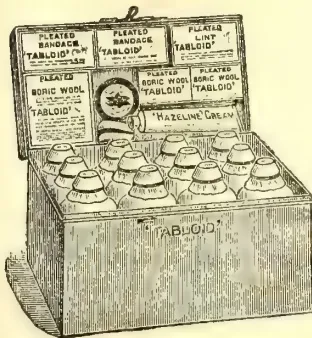
Measurements: in.
'TABLOID' MEDICINE CASE
No. 258 (The Settler's)
Fitted with the world-famed 'TABLOID' Brand MEDICINES, BANDAGES, etc. The medicines are perfectly reliable in hot or damp climates. They are prepared in accurate doses ready for dispensing and are quite palatable. In climate-proof metal case (black japanned).
Price in London 28/0
'Tabloid' Medical Equipments are obtainable at the principal pharmacies in all countries
BURROUGHS WELLCOME & CO., LONDON
NEW YORK
MONTREAL
SYDNEY
CAPE TOWN
MILAN
SHANGHAI
BUENOS AIRES
x x 293
ALL RIGHTS RESERVED
IDEAL FOR TROPICAL AGRICULTURISTS
THE FRUIT INDUSTRY OF CUBA.
Cuba has a wide range of fruit, some of which are very strange to the foreigner. The plum (ciruela) grows directly from the branches of the tree with no stems. The fruit is somewhat astringent, which however is not disagreeable when one is accustomed to it. The mango pertains to the peach family, the trees grow to a large size and bear a fruit which has a shape similar to a peach but is more oblong. The peel is smooth and thick and is easily removed. The fruit has a large seed covered with a fibrous growth which threads itself through the meat, is very luscious and very much prized, but many persons do not like it because of the slight taste of turpentine in it. The aguacate, or alligator pear, grows to perfection, and is used for salads. In size and shape it is not unlike a large pear. The sugar apple is very sweet, with mealy sugary interior. The sour sop (guanabana) is of the same family as the sugar apple. It is used largely in the preparation of refreshing drinks, in ices and ice-cream. The sapodilla (zapote) is a flat round fruit, about the size of a golf ball, and in colour resembles an Irish potato. There are several varieties of this fruit. The caimito is a combination of the plum and the fig. Some caimitos are green, and others have a purple exterior. They are very palatable, and are filled with a soft jelly-like substance with an agreeable juice. The mamoncillo is a small
round, green or russet fruit about the size of a large marble, filled with a very acid juice. It has very little meat, as the large seed leaves little room for the juice and the yellowish meat which surrounds it. This fruit makes a delicious drink. The guava is used for making exceptionally fine jellies, marmalades and preserves. The peel is occasionally used in a home-made brew of beer. Guavas grow in great abundance throughout Cuba on bushes and small sized trees. The mamey Colorado grows on large trees, and is a fruit resembling a russet apple in colour and about the size and shape of an ostrich egg. The fig grows well in Cuba, the black green and Symrna varieties all thrive, but, according to a recent report of the Cuban Ministry of Agriculture, no effort has been made to cultivate them since the retirement of the Spanish Government. Before that time the cultivation of this fruit was prohibited, except one tree which was allowed to each family. This was said to have been done to protect the home (Spanish) industry. The same law also existed against the cultivation of grapes during the Spanish sovereignty. There are, however, old grape vines in Cuba which have never had any cultivation, but which are prolific bearers of excellent fruit and thus show what an opportunity awaits those who will engage in the intelligent cultivation of the grape in Cuba. In connection with this it may be said that there is probably no country in the world which consumes so much
61
482The Supplement to the Tropical Agriculturistwine per capita and produces less. Pineapples and oranges are grown in Cuba. As regards the latter, the fruit is very fine, and when the young groves now coming into bearing more fully develop, Cuba will make a strong bid for a high place in the fruit market of the world. Bananas grow to perfection, particularly in the eastern part of the island, where large banana plantations are under cultivation, more than 99 per cent of the production going to the United States. In addition to the banana which is eaten as a fruit, there is another variety known as plantain, which is used for cooking purposes. Green plantains when cut thin and fried are much appreciated in Cuba, and are said to be far more nutritious than potatoes. They are also used in soups and stews, and are baked and prepared in many ways. — Journal of the Royal Society of Arts, Sept. 29.
With the extension of rubber and coconut cultivation in Ceylon, owners of cinnamon plantations in suitable localities have found it to advantage to root out cinnamon and plant either rubber or coconuts. It hardly pays the cinnamon planter to continue cultivation of the product at existing prices, and a good many of them have substituted the more remunerative products for the spice. This is especially noticeable, says the "Storekeeper," in the Southern province, where rubber is replacing cinnamon, and in the Negombo district, where coconut cultivation is being extended. As a result of all this there is a scarcity of cinnamon in the market just now.
To make good the deficiency in the European market, cassia bark, imported from China, is being used as a substitute for cinnamon. It is not improbable that it will swamp the cinnamon trade completely if the cultivation of cinnamon is not encouraged. A rough estimate places the acreage of cinnamon cultivation in the island of Ceylon at 45,000 acres. The total exports of this product for 1910 amounted to 6,286,060 lb. — Magazine of Commerce and British Exporter, for Oct.
Some Government statistics which have appeared recently throw light upon British tastes, and the extraordinary capacity of British stomachs in certain directions. Thus the amount of sugar we eat in one form or another is astounding. We import more than one-tenth of the world's production, which was estimated at 15½ million tons in 1910. Of the total product, more than half (8,600,000 tons) was cane sugar, and the rest beet. Of best sugar, Germany produced two million tons last year, and it is the semi-failure of the German crop that is mainly responsible for the sharp rise in prices. How serious this rise has been I may illustrate from the fact that it costs a laborer with sixteen shillings a week and a large family an additional sixpence a week! With sugar we naturally associate tea, and here again our consumption is enormous, amounting in 1910 to nearly 287 million lb. But why is coffee (the national drink of the United States) of so little account here? Our consumption of coffee last year was only just over 29 million lb., about one-tenth that of tea. — LUCELLUM.
We understand that before long the London Produce Clearing House will be prepared to accept terminal contracts for hard Para and Plantation rubber. All contracts put through the institution are guaranteed by it in the same manner as are the speculative dealings in sugar and coffee, all of which are passed through the London Produce Clearing House. [The London Produce Clearing House, Ltd., has offices at 21, Mincing Lane, and was registered in February, 1888, with the object of "placing on a secure basis by a system of deposits the dealing in produce for future delivery." The authorised capital is one million in £10 shares, and has paid large dividends from the commencement. It will be called to mind that we have persistently advocated reforms in the method of rubber dealing as carried on in Mincing Lane hitherto with the long-drawn out public auctions and resolutions and private dealing.] — F. Times, Oct. 19.
While particulars of the scheme which has been put forward for the extension of the business of the London Produce Clearing House to include dealings in rubber have not yet been completed, the matter is actively in train, and it is probable that full details of the proposals and terms upon which the business is to be conducted will be settled within a few days. It is probable that some variation from the rules which govern the contracts for future delivery of sugar and coffee will be made in case of rubber, but the net effect—namely, that the due fulfilment of the contracts will be guaranteed by the Clearing House—will be the same.
The London Produce Clearing House, Ltd., might more properly be termed an insurance or guarantee company rather than a Clearing House, and it fills a very important and useful position, especially as regards dealings for future delivery in sugar and coffee. It guarantees the due fulfilment of the contracts made between its members and, broadly, the procedure, without the technicalities, is as follows: — One member of the Clearing House sells to another member of the Clearing House, say, sugar for delivery in May. Before this contract is considered to be completed by the rules under which the sale and purchase are made, each party has to make a deposit with the Clearing House according to the amount involved, and thereupon the Clearing House guarantees the contract. The deposit is used by the Clearing House for settling differences which may occur owing to the fluctuations day by day in the price of sugar, much in the same way that differences are paid on the Stock Exchange at each Settlement when stock is carried over, except that in the case of the Produce Clearing House "differences" have to be settled each day, and their payment is guaranteed by the Clearing House, whereas no
and Magazine of the Ceylon Agricultural Society.—November, 1911. 483guarantee is given by the Stock Exchange, and differences are paid at the fortnightly Settlements. Should the margin or deposit held by the Clearing House become exhausted, owing to a continued rise or fall in the price of sugar, the Clearing House would at once demand a further deposit from either the buyer or the seller, as the case might be. By these methods of daily settlement of differences, supervised by the Clearing House, the position is regulated, and it has been stated at meetings of the Clearing House that during the twenty-three years it has been established the Company has never made a loss, the additional deposits having always been forthcoming when required. Questions of interest and fees for arbitration on quality of sugar or coffee delivered are included in the rules of the Clearing House.
The London Produce Clearing House, Ltd., has had a very successful career, and its business has, we are informed, shown further very considerable development during the current year. Its coffee business to date has been double what it was for the corresponding period of last year, owing to the rise in price of that commodity. For the whole of 1910 the contracts registered by the Company in Santos coffee covered 2,622,250 bags. The Company's sugar turnover up to the end of September had reached the enormous total of 31,473,500 bags, or over 100,000 bags more than for the whole of 1910. Here, again, the fluctuations in prices has led to increased business in "futures." This year also the Company has extended its operations to pepper, which, however, is, of course, only a small item compared with the coffee and sugar business. The important international relations which it enjoys has had a great deal to do with the development of the Company's business in sugar, and it is quite possible that these will aid it in the proposed extension of its business to rubber.—Financial Times, Oct. 20
With regard to the proposed extension of the business of guaranteeing terminal contracts in produce carried on by the London Produce Clearing House so as to include rubber, the first intimation of which we were able to give in our issue of 19th instant, we understand that it has now been definitely decided to make a commencement with the new business early in November. A circular setting forth the terms upon which the business will be conducted will be issued next week by the London Produce Clearing House.
There appears to be a considerable demand here for facilities to enter into guaranteed terminal contracts in rubber, but the London market is not yet properly organised for this business, so that, we are given to understand, in the meantime, and in order to avoid any delay in making a commencement, the Antwerp rules are to be taken as the basis for operations. We may point out that a complete organisation exists in Antwerp for guaranteed terminal contracts in rubber.—Financial Times, Oct. 27.
The following rules and regulations governing contracts for plantation rubber sold under the General Produce Brokers' Association of London Rubber Rules were agreed to at a meeting of the trade at the Commercial Sale Rooms, Mining Lane, on Tuesday.
Prompt.—Prompt Saturday fortnight from date of sale or tender. Sales or tenders dated on Saturday to be prompt that day fortnight. Draft per cent. Discount per cent. Interest at 5 per cent per annum on all pre-payments. The goods are at the risk of sellers (to the amount of the contract value only) until the prompt day, or delivery of the rubber from the warehouse before that day.
Weighing.—Weighing at the option of the seller at any time between the Wednesday week preceding prompt and the Thursday before prompt day, both days inclusive.
Clause I.—In contracts of five tons or over buyers shall have the option of rejecting any tender of less than one ton, and in contracts of under five tons any tender of less than half-ton, except in each case in completion of a contract.
When sold for monthly deliveries or shipment each month or specified part of a month's delivery or shipment to be treated as a separate contract.
Clause II.—On contracts for rubber sold under the standard description of "first Latex Hevea Brasiliensis Plantation Rubber of fair average quality in sheet and/or biscuit and/or crepe form as at present prepared" for future delivery, the rubber, when tendered, must be ready for delivery in sound order and condition at one of the customary docks or wharves. The tender to be received by the first buyer before 3-30 o'clock (11-30 o'clock on Saturdays), not later than the fifth working day before the end of the period of delivery (excepting only in the case hereafter mentioned), and the first and each subsequent buyer must pass same on with due despatch, but in any case within 1½ hours of receipt (tenders received between 12-30 and 1-30 must be received by the next buyer before 3 p.m.) but in no case later than 5 o'clock on the last working day of the period of delivery (1 p.m. on Saturdays). For the purpose of this clause a day is to be taken as commencing at 10 a.m. and ending at 5 p.m. (Saturdays 1 p.m.) and for the purpose of this rule the buyer shall be represented by the selling broker.
For any tender received after 1 p.m. on Saturdays the prompt to be exact 14 days from the following Monday, and during further circulation of the tender prompt to be exact 14 days from the date of such subsequent tender is received, but weighing in all cases to take place as from original tender date.
All first tenders must have a time form attached which must be passed on with all subsequent tenders, the time of receipt being marked by each person receiving it. If any intermediate buyer divides a tender he must make out duplicates of time form and pass on a copy with each part of the divided tender. Any party failing to re-tender within the times specified as above becomes a first seller,
484The Supplement to the Tropical AgriculturistAll rubber before being tendered must have been passed by the Arbitration Committee, and the award will remain in force for three months provided the cases have been left intact at the original public warehouse. Samples to be arbitrated upon must be freshly drawn dock or wharf samples, and delivered intact to the first selling broker, but in the case of any lot which has been included in the last public sale preceding the date of tender the dock or wharf samples shown at that time shall be sufficient if reasonably intact. These samples must be sent to the Arbitration Committee not later than 12 o'clock on the eighth working day before the end of the period of delivery, with liberty to the seller to make one replacement of any quantity rejected by the Committee within two days of receiving notice of rejection (provided that in the opinion of the Committee the samples submitted to them was a bona fide submission for tendering) and notwithstanding that by reason of such rejection and replacement the seller would, but for this provision, be out of time to make his tender.
Tenders to be good must contain the following information :—
Date of contract and price.
Date of original tender.
Marks and numbers of packages with approximate weights.
Ship's name and dock or wharf where rubber is lying.
Weight of samples.
Reference number of award and date when passed by the Arbitration Committee.
First selling broker's name at whose office the samples are lying.
Description of rubber.
Date of prompt.
Rubber to be tenderable in the original cases bearing its original shipping marks as shipped from the place of production.
The stipulations in this rule shall be deemed to be of the essence of the contract.
Clause III.—An Arbitration Committee composed of six brokers and/or associates, members of the General Produce Brokers' Association of London, shall be appointed annually by the trade to deal with all disputes; three to form a quorum, with power to the parties in dispute to appeal to the Committee of the General Produce Brokers' Association of London, according to their Rules.
Clause IV.—When a parcel of rubber is sold under the standard description of "first Latex Hevea Brasiliensis Plantation Rubber of fair average quality, in sheet and/or biscuit and/or crepe form as at present prepared" for a special shipment or for shipment by a specified steamer, and found inferior, or if any portion tendered be found inferior, buyers shall have the option of rejection, and the quantity so rejected, whether the whole or any portion, shall not constitute a delivery on the contract, but should the time for delivery have expired, the seller shall be allowed three clear working days to replace the quantity rejected (provided that the delivery of such quantity was in the opinion of the arbitrators a bona fide tender), otherwise Clause IX. (f) of the Rules of the General Produce Brokers' Association of London to apply.
Clause V.—When a parcel of rubber is sold with a guarantee of quality other than as specified in Clauses II. and IV., for a specified shipment or delivery, or for shipment by a specified steamer, and found inferior, or if any portion tendered be found inferior, the buyer must accept the same with an allowance, provided such allowance in the opinion of the arbitrators be not more than 2d. (two pence) per lb. or otherwise as may be specified in the contract, but should the parcel, or any portion tendered, be rejected, the seller to have the option (provided that it was in the opinion of the arbitrators a bona fide tender) of substituting guaranteed quality on the spot, to fulfil his contract within three (3) clear working days, or the expiration of time for delivery as the case may be, otherwise Clause IX. (f) of the Rules of the General Produce Brokers' Association of London to apply.
Clause VI.—Any claims under these clauses (and a copy of the objections must be sent to the parties interested) must be made by the last buyer to the first selling broker within (3) three clear working days of the last buyer receiving tender, and the first seller shall consider this as being in time, providing tenders have been passed on without undue delay.
Clause VII.—Delivery Weight.—Final delivery on any delivery or shipment contract to be within 50 lb. of the weight contracted for.
Clause VIII.—In the event of there being more than one contract subsisting between the same parties which shall be closed in pursuance of Clause XI. of the conditions of sale of the General Produce Brokers' Association of London, an account shall be taken of what is due from the one party to the other in respect of such contracts, and the sum due from the one party shall be set off against any sum due from the other party, and the balance of the account and no more shall be claimed or paid on either side respectively.
Clause IX.—The selling or buying broker guarantees the solvency of his principals in all contracts for rubber unless otherwise specified in the contract.—India Rubber Journal, Oct. 14.
Dr. E. J. Russell, of Rothamsted Experimental Stating, has a paper in "Science Progress" reviewing some recent American hypotheses which seem to upset several established points as to soil. Dr Russell, after a careful examination, arrives at the following conclusion which indicates the differences as well :—
The outstanding differences between Whitney's hypotheses and those more generally accepted may therefore be reduced to three :
(1) Whitney supposes all soils to be chemically alike in that all are made up of the same rock material; consequently the soil solution is the same in all cases. Other chemists, on the other hand, consider that the soil is more complex, containing colloidal decomposition products and a solution which not only differs in composition in different soils but also shows local variations in composition in different parts of the same soil.
and Magazine of the Ceylon Agricultural Society.—November, 1911.485(2) He further supposes that variations in concentration of the soil solution have no effect on the rate of growth of plants and that in consequence all soils are equally rich in plant food; added fertilisers owe their value to other than nutritive effects.
(3) He considers that infertility must therefore be due to other causes than lack of nutritive compounds; dismissing considerations of nutrition altogether, he supposes instead that infertility arises from the presence of toxic organic compounds, some of which at any rate may be plant excretions. We, on the other hand, attach great importance to the nutritive functions of soil constituents and of added fertilisers; while some of us agree that part of the infertility of "sour" soils may be due to toxic substances (and apparently the soils examined by Whitney and his colleagues were "sour" soils), we cannot accept the view that plants excrete toxic substances.
There is no doubt that the work of the Soil Bureau has suffered from leaving out of consideration all biological changes going on in the soil. The decomposition by micro-organisms of the residues of previous generations of plants gives rise beyond doubt to quantities of plant food, yet the function of this nutrient material is never considered; instead, attention is concentrated on possible toxic substances to the exclusion of useful substances. Thus the field of view is unduly restricted.
The investigations have, however, served a very useful purpose in stimulating inquiry and they have brought home the fact that the relationships between soils and plants are complex, it is no longer possible to take the old narrow view that the soil simply supplies food to the plant: the earlier papers compelled recognition of the fact that the size of the soil particles which regulate the water and air supply is more important than their chemical composition, and consequently that mechanical analysis is more useful than chemical analysis in characterising soils; the later papers direct attention to possible toxins of which we may have some in our own "sour" soils. We can find much to criticise in the details of the experiments and still more in the conclusions drawn from them; not infrequently the facts themselves are in dispute. Above all we should like to see a re-examination of the fundamental positions based on definite crucial experiments and consideration of alternative hypotheses. But, whether further work support their hypotheses or not, Whitney, Cameron, Schreiner and their colleagues have made agricultural chemists re-examine their ideas on the soil, and such a reconsideration must in the end advance the subject, however troublesome or superfluous it may at the time appear.
I read the article under "Acclimatisation," by Frederick Boyle, in the Field of Aug. 19th, 1911, in which he says:—"All wild varieties of plantain or banana have a great stone with a kernel. . . . But in the cultivated form there is no stone; only a few black specks remain for a testimony. The seed has vanished." When tea planting in Assam I frequently came across
the wild plantain in the jungle when shooting. These bore small bunches—five or six to a bunch—of small red fruit, but I never noticed either stone or seed in them. On the other hand, there was a large variety, about 8 in. long by quite 3 in. in diameter, much esteemed and cultivated by the natives, which were full of seeds about the size of a pea, but rough in shape, more like a mango seed, and for this reason not used by the Europeans, though of good flavour, but rather slimy in texture.—ASSAM. [There are at least twenty species of Musa, and they are all supposed to be natives of the Old World tropics. One of these, viz., M. sapientum, is represented in all tropical countries by cultivated varieties, all of which, so far as is known, are seedless. These varieties bear the same relationship to the type as the cultivated varieties of apples bear to the wild crab (Pyrus malus). The wild form or type of M. sapientum is said to produce seeds, but we have never seen one. Should any of our readers have an edible fruited banana which produces seeds we would like to receive a sample of the fruit. The Chinese banana (M. cavendishii), known as the Canary banana, is not known to produce seeds.—ED.]—Field, Sept. 23.
I notice in last week's Field under the above heading that seeds are rarely met with in banana fruits. When I was staying in Ceylon, at Bandarawela, in 1906, I found three seeds, in different bananas; they were oval, black and not so large as a sweet pea seed. The banana were the small yellow kind, and much nicer to eat than the large ones. I planted the seeds which I returned home, but unfortunately they did not grow.—T. W. RUSSELL.—Ibid., Sept. 30.
Mr Consul-General C S Smith, reporting on Odessa for 1910, says:—"The quantities of Colonial products imported were about the same as in 1909. Prices were in general steady, except for coffee, of which the price rose considerably on account of the failure of the Brazilian harvest. Coffee came mostly from Hamburg. The finer kinds are little drunk. The cheaper kinds are most asked for; they are also replaced by cheap substitutes. Tea comes by sea from Calcutta and Colombo houses. It mostly goes in bond to Moscow.
Of the copra imported it is probable that about 25,000 tons were sold in Odessa. The copra trade used formerly to be in the hands of a few large import firms with houses in Singapore and London which were represented at Odessa by agents of high standing. The business has now passed into the hands of produce brokers in London. The oil crushers in Odessa agreed amongst themselves at the beginning of 1910 only to sign contracts containing the following clause:—"Shipment by first steamer in (term of shipment) under through bill of lading direct or indirect for Odessa, but should the steamer be lost homewards before reaching Singapore, or arrive there later, in such event the copra to be shipped by first steamer available, provided the copra is shipped not later than 15 days after term of contract, in the latter case an allowance of 2s. 6d. per ton to be paid to buyers."—Financier, Oct. 5.
486The Supplement to the Tropical AgriculturistThe last number of the Tropical Agriculturist contained an account of a visit paid by the Secretary of the Ceylon Agricultural Society to a fruit farm in Bangalore, where over a hundred acres of different kinds of European fruits, consisting of apples, grapes, plums, peas, &c., are being grown on a commercial scale, with a view to supplying the Eastern market. From all that can be gathered, the prospects are promising and the success of the undertaking is likely to exert an important influence on the conditions under which attempts are being made to grow English fruit in the tropics.
Hitherto efforts at growing European fruits in Ceylon would appear to have been carried on—if not exactly in a half-hearted way—under circumstances which were hardly calculated to provide an efficient test.
So far we have had amongst us, only one individual (whose skill as a horticulturist is unfortunately lost to the island) who had any pretensions to a practical knowledge of fruit-growing as carried on in temperate climes, and that was the late Curator of Hakgala Gardens, Mr. J. K. Nock, sr. The work which Mr. Nock has done in the way of introducing and acclimatising new varieties of fruits and vegetables will always stand to his credit. With his English and West Indian experience, the late Curator brought his valuable technical knowledge into requisition for the benefit of this Island which will always recall his genial personality with kind thoughts, and his ready willingness to help the amateur with gratitude.
Ceylon has, however, never been witness to such enterprise as characterises the venture referred to above. That venture would appear to have been begun under peculiarly happy auspices, and carried on under the supervision of particularly shrewd business men. Given a careful selection of site, an unfailing water supply, ample funds, and skilled management, the experiment in the cultivation of any crop with the smallest chances of turning out a success is hardly likely to fail except to some unexpected and unavoidable misfortune.
It has to be remembered, however, that there is a great difference between the climate of South India and that of Ceylon, for while the hillcountry of the former has a comparatively dry climate that of the latter is notoriously wet. Taking Bangalore, with an elevation of some 3,000 ft. and a rainfall of some 30 inches, we find that a good many English fruit have been grown
with comparative success; while the same fruits do not thrive at the higher elevation of Nuwara Eliya owing to its humid atmosphere. But there are probably more likely places (in parts of Uva, for instance, and in Hewahetta) that have not been given the opportunity of proving their suitability. We have heard of figs fruiting in the Matale district and excellent grapes being produced in Hangurankette, facts which go to indicate that given enterprise, business acumen, technical skill and capital, it is not impossible that temperate fruits could be successfully raised in the Island with its variety of climatic conditions.
The most important desideratum in any venture of this kind is undoubtedly a thoroughly qualified fruit expert—one who not only knows the practical details of his art but the principles that underlie them, and could apply the latter to the varying conditions of a tropical or semi-tropical country, that could so to speak, make his plants adapt themselves to the locality in which they are being grown. One of the chief obstacles in growing temperate plants in the tropics is to induce what is known as the dormant conditions corresponding to the period of wintering. If, as we understand, it is possible to overcome this difficulty, then the prospect of raising English fruit must be looked upon as hopeful. As regards financial considerations we have the advantage of such fruit-growing countries as the Australian States and California, inasmuch as while labour is infinitely cheaper, there is always a ready market and good prices for English fruit in the tropics.
Some excellent results have been obtained by Professor Heckel in the experimental cultivation of the Solanum maglia, or wild potato of Chili, at Saint Jerome, near Marseilles. In a communication to the Academie des Sciences, the professor states that each plant produced on the average two kilogs (nearly 4½ lbs.) of tubers, which are of a violet colour. The average weight of each tuber was 350 to 380 grammes (12 to 13½ ounces). The wild potato under cultivation is very hardy, and less liable to cryptogamous diseases than the common variety grown in Europe. Specimens of every known variety of the wild potato found growing in South America, both on the sea coast as well as at high altitudes in the Andes, have been obtained for further experiments.
[The Agricultural Society should get seed.
—Ed. C.O.]
and Magazine of the Ceylon Agricultural Society.—November, 1911. 487
COTTON AND TOBACCO LEADING: "THE BEST
UPLAND STAPLE IN THE WORLD."
The report on the Blue-book of Nyasaland Protectorate for 1910-11 says:—
A general review of the agricultural situation shows that the past year has been most successful, as evinced by the largely increased export of agricultural produce, the general prosperity of planters, and the keen demand for agricultural land within transportable distance from the railway. The forward movement reported last year has continued. Cotton and tobacco may now be considered as the principal cultivations of the Protectorate, and as likely to increase if transport facilities are extended.
Coffee is still being discarded in favour of cotton and tobacco, the total acreage of this crop for the year under review being only 5,629½. The season, although favourable for cotton and tobacco, was unfavourable for coffee, with the result that the total export for the past year amounted to no more than 334,161 lb., as against 748,410 lb. in the previous season.
The year under review was the best cotton season which the Protectorate has experienced, cotton ripening late into the season, and on many estates producing the heaviest crop that has been reaped since its introduction as a European cultivation. The European acreage increased from 8,975 in the previous year to 12,752 for the year under review, whilst the crop at present being harvested covers over 23,000 acres. The exported crop, in bales of 400 lb. for 1909-10 amounted to 2,147, and for the year under review to 4,342, showing an increase of over 100 per cent. in a single season. A gratifying feature is the increased interest which planters are now taking in seed selection. The results of the experiments carried out on the Government agricultural stations show the great advantage and profit of such work as is being undertaken there.
The quality of the staple has been maintained, and the first-class cotton of the Protectorate shows such improvement that its valuation fluctuates more with the Egyptian crop than with the American crop as in the past. The large Egyptian crop last season made prices a little lower than in the previous season, but the top price of the season—viz., 1s per lb—shows that Nyasaland Upland still maintains its position as the highest-priced Upland cotton in the world. This excellent variety is becoming thoroughly acclimatised, and its success in West Africa and Rhodesia indicates that it will become in time the most extensively-grown variety in the new cotton fields of Africa. Its special quality is its wonderful adaptability to elevations of from 1,000 to 3,000 ft., its high degree of immunity from bacterial blight and its hardiness.
The Egyptian crop on the lower river was more successful than in the previous year, as planters now understand that it is useless to attempt to grow Egyptian cotton except on the best-drained parts of plantations at elevations under 1,000 ft.
The native cotton crop has risen from 220 tons to 692 tons. In several districts this industry has now become so thoroughly established as to admit of the withdrawal of the hut tax rebate which was allowed as an incentive to native cultivators when the enterprise was first introduced. The experiment of encouraging natives to apply themselves to this cultivation has proved a remarkable success in every way. It is worthy of note that some of the native cotton from Mlanje district has sold for as much as 1s. per lb.
A large increase in the acreage of tea plantations has to be recorded, viz., from 518 to 1,037 acres. The export of tea was 42,042 lb. as against 34,601 lb. The area of tea actually in bearing, however, is still relatively small, the crop being one which requires several years to arrive at the productive stage. The success of this industry has attracted much attention and interest, with the result that improved machinery for the treatment of the crop has been imported, and considerable competition has arisen for land in the tea-growing portions of Mlanje district.
The tobacco season has been satisfactory, although not quite so good as last year. The acreage under this crop is 3,274, while the export of tobacco for the year under review amounts to 1,704,637 lb. as compared with 1,084,757 lb. in the previous year.
The acreage under rubber is still increasing (present acreage, 9,072½), and, although no estates are in full bearing, rubber promises well in Mlanje, West Shire, and parts of the Shire highlands. It is now proved, however, that rubber cannot be profitably cultivated in all parts of the Protectorate.
Para rubber in the West Nyasa district still continues to show much promise, and the acreage under this crop has been increased to 726½ acres in the past year.
The exploitation of Landolphia parvifolia has been carefully conducted by the African Lakes Corporation, Limited. The value of this product is satisfactory—viz., 3s 9d to 4s 4d, with fine white Para quoted at 5s 2½d. Good prices have led to a large increase in the export of rubber, extracted principally from wild vines. The total quantity exported during the year under review amounts to 59,471 lb.—Financier, Oct. 28.
Tea-seed oil is the name applied to an oil expressed from the seed of the Camellia Sasanqua. This is not the tea-tree (Camellia Thea), nor can its leaves be used. It grows principally in Honan, but is found wherever the wood-oil tree grows. The seeds are gathered in October and the extracted oil usually reaches the market in Hankow about the middle of winter. It is used by the Chinese as a cooking oil, and costs in the market from thirty-one shillings to thirty-three shillings per picul of 133½ pounds. Hankow's exports of this oil to foreign countries and Chinese ports in 1909 were valued at £6,500, and during 1910 at £17,300.
488The Supplement to the Tropical AgriculturistNEW YORK CITY, SEPTEMBER 23RD TO OCTOBER 3RD, 1912.
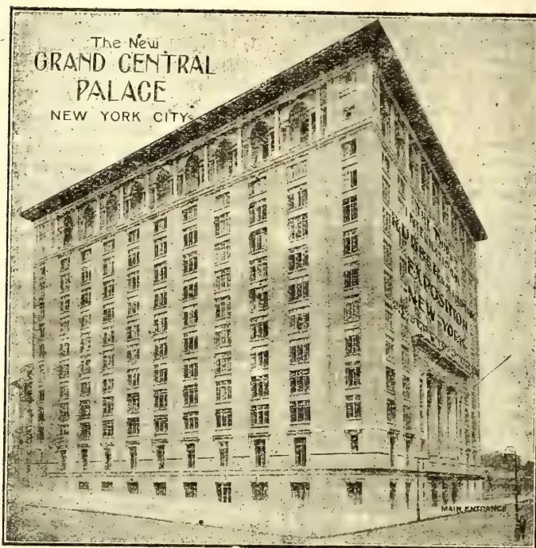
The above illustrates the New Grand Central Palace, 46th to 47th Street and Lexington Avenue, New York City, where Mr. Staines Man-
ders has arranged for the Third International Rubber and Allied Trades Exposition, from September, 23rd to October 3rd, 1912.
The following table is from figures supplied by Mr Ridley, the Director of the Botanic Gardens, Singapore. It shows the growth in girth, at 3 feet from the base, that may be expected from a fairly and treated rubber tree. The first two years' growth is very variable. During the next three years the girth should increase 6 in. every year. From the fifth to the 15th year the increase should be 3/4 in. annually, and from then on to the 20th year 2/3 in. Close planting will reduce this increase materially after the 10th year, and probably before that. Too closely planted trees sooner or later cease to show any material increase. The figures are for trees grown in good soil without manuring and with wide planting for example, 20 by 20 feet. An individual tree Mr Ridley has measured shows at 14 years a girth of 79 in. (this in the forest among other trees); another tree 32 years old is now 124 in. in girth. A rubber tree should be ready for tapping in its fourth or fifth year, according to the conditions under which it is growing:—
| 1st year | — inches | 11th year | 60 inches |
|---|---|---|---|
| 2nd do | 9 do | 12th do | 66 do |
| 3rd do | 14 do | 13th do | 72 do |
| 4th do | 20 do | 14th do | 78 do |
| 5th do | 24 do | 15th do | 80 do |
| 6th do | 30 do | 16th do | 82 do |
| 7th do | 36 do | 17th do | 84 do |
| 8th do | 42 do | 18th do | 86 do |
| 9th do | 48 do | 19th do | 88 do |
| 10th do | 54 do | 20th do | 90 do |
—F. Times, Nov. 1.
While Italy as a nation is busily pursuing the fruits of war, Turin is distributing the laurels of peace. The awards at the International Exhibition have just been announced, and they indicate that the very high standard attained by English exhibits has not gone unregarded. One firm alone, Messrs. Burroughs Wellcome & Co., the manufacturing chemists, has secured no less than thirteen awards, consisting of eight grand prizes, two diplomas of honour, and three gold medals. This probably constitutes a world's record in awards received by a single firm at an exhibition open to all nations.
[Faint page: no legible print of its own could be verified; text withheld (stage 4 review list)]
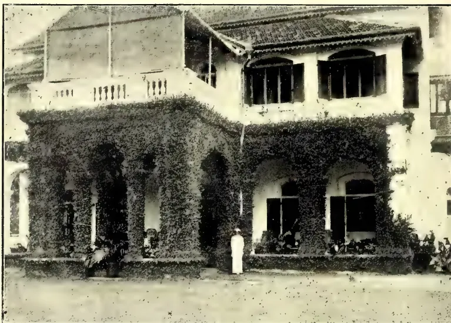
FICUS STIPULATA.
Ficus stipulata, better known horticulturally as F. repens (sometimes called "Mauritius Ivy"), is perhaps the best substitute we have in the tropics for the English ivy, which forms so delightful an adornment to gardens and country houses in Europe and other cool countries. In the tropics, where the ivy does not flourish, the want of a good wall creeper is often felt. Few walls, either of bungalows, estate buildings, churches, &c., which would not be greatly improved in appearance by the growth of a suitable creeper. This want is suitably supplied by the plant Ficus repens, as may be seen in the accompanying illustration, better perhaps than by any other tropical plant known. The plant thrives equally well at all elevations, from sea-level to 6,000 feet,—an uncommon quality which specially commends it to favour. It is easily propagated from small cuttings of the rooting stems, and these have only to be inserted in ordinary light soil where they are intended to grow permanently. This should be done in wet weather, otherwise the cuttings must be kept shaded and watered frequently until they strike root, which may be known by the appearance of fresh growth. In a short time it spreads over the available surface, and it may be said to be seen at its best just before it completely covers the wall. Afterwards it should be occasionally trimmed with a hedge shears, clipping off any straggling ends of branches, &c.
This plant is remarkable from the fact that although a perfect creeper, it belongs to a genus which is usually characterized by large trees or shrubs. Familiar examples of the family are the Fig (Ficus carica), the Banyan, and the Rambong rubber trees—Ficus bengalensis and Ficus elastica respectively.
Ficus repens occasionally bears an abundance of fig-like hard green fruits, which are not edible. The plant is considered to be a native of China and Japan, but is very similar to, if not identical with, Ficus Thwaitesii of Ceylon.
H. F. MACMILLAN.
THE
TROPICAL AGRICULTURIST
AND
MAGAZINE OF THE
CEYLON AGRICULTURAL SOCIETY.
VOL. XXXVII,
COLOMBO, DECEMBER 15TH, 1911,
No. 6.
With this number the period during which the present writer has edited this journal comes to an end, and he has to express his grateful thanks for the hearing that he has received even when advancing opinions contrary to those of most of his readers.
He gives up his connection with the local Agricultural Society with regret. The Society is doing good work for the people of Ceylon, even though the shortly approaching agricultural millennium, which was hailed upon its first foundation, has not yet made its appearance.
A source of great satisfaction to the writer is that the move for which he began to agitate as soon as the Society was formed has now become an accomplished fact, in so far as the Ordinance allowing for the establishment of Credit Societies has become law. Until the villager is freed or nearly freed from the clutches of debt he cannot progress in agriculture proper, and the only way in which as yet this freedom has been found is by means of the Credit Societies
so successful in Europe and elsewhere. Agitation for such societies was begun at about the same time in India as in Ceylon, but more quickly came to fruition, and now these societies are spreading wonderfully there and making a great difference in local affairs. So much have they grown and so far taken hold of the villager that the local money lenders are showing a desire to invest their money in them. Once let these societies make a good start in Ceylon, and set to work a young and energetic organizer who shall devote his time to working them up, and a change will have to be recorded in local agriculture. Until that happy period dawns, progress must be confined to those who have money, and they will steadily go further and further ahead of the poorer goiyas, a result not to be desired in a well-governed country. All classes should progress equally, and while the capitalist is progressing in agricultural methods, the poorer man should at any rate be progressing upwards to that point where he too may begin to do so.
490[DECEMBER, 1911.(From the India Rubber World, Vol. XLIV., No. 6, September 1, 1911.)
One of the principal factors in estimating the future of rubber is the prospective increase in the Oriental supply. In his interesting review of the subject (in the Portuguese language), "Para versus Ceylao," Senhor J. A. Mendes, of Para, has grouped a number of statistical returns, extending the scope of his observations so as to include the Asiatic yield in general.
Taking the natural starting point, the record of the world's production and consumption during the five years preceding 1910, the following result is shown:—
| Production. Tons. |
Consumption. Tons. |
|
|---|---|---|
| 1905 ... | 69,507 | 65,727 |
| 1906 ... | 67,918 | 71,671 |
| 1907 ... | 68,646 | 64,628 |
| 1908 ... | 67,031 | 67,081 |
| 1909 ... | 69,372 | 70,075 |
Production and consumption thus kept on about a level during this quinquennial period.
Calling the annual production for 1909, 70,000 tons, its sources are shown to be approximately:—
| Tons. | |
|---|---|
| South America ... | 40,000 |
| Central America, etc. ... | 12,800 |
| Ceylon, Malay States, etc.... | 6,500 |
| Africa ... | 10,700 |
| Total tons .. | 70,000 |
While a normal or moderate degree of increase might be witnessed from other sources, Senhor Mendes gives prominence to that anticipated from Asia.
Although the 1909 amount quoted is somewhat less than that already shown in the general summary, the general statistical bearing of the figures below is not affected, as embracing the aggregate exports of rubber from Ceylon, Malay States, Sumatra, Java, India, etc.
| Tons. | |
|---|---|
| 1905 ... .. | 145 |
| 1906 ... .. | 510 |
| 1907 ... .. | 1,010 |
| 1908 ... .. | 1,800 |
| 1909 ... .. | 3,600 |
| 1910 (estimated) ... | 8,000 |
The gradual increase recorded for the more recent years is the direct result of the development of planting. This view of the case is supported by the statement that there are now in the Malay States and Ceylon over 600,000 acres, planted with more than 21,000,000 Hevea trees, almost in a productive condition to the relative maturity of part of which is due the augmented figure of rubber exports.
Passing from the field of statistical record to that of estimate, it is not surprising to find divergence of views as to the increase to be looked for within the next four or five years in Asiatic exports, while the general prospect of a larger Eastern yield does not seem to have been questioned. Two pertinent estimates are quoted in this connection to Senhor Mendes, that of Mr. Rutherford (a gentleman largely interested in Eastern plantations) being to the following effect:—
| Tons. | |
|---|---|
| 1911 ... .. | 8,100 |
| 1912 ... .. | 12,100 |
| 1913 ... .. | 17,040 |
| 1914 ... .. | 22,670 |
| 1915 ... .. | 27,300 |
| 1916 ... .. | 35,620 |
Far in excess of these figures is the anticipation expressed by Sir John Anderson (when High Commissioner of the Federated Malay States), that by 1916 the Asiatic production would amount to 70,000 tons; that being, it will be noticed, just the amount of the world's yield in 1909. Applying the last-named estimate to a forecast of the year 1915-1916, and contrasting the result thus anticipated, with the record for 1909, the following comparison is established:—
| Production. 1909 tons. |
Estimate. 1915/1916 tons. |
|---|---|
| South America 40,000 | 43,780 |
| Orient ... 6,500 | 71,940 |
| Africa, Central America, etc. 23,500 |
26,522 |
| Total tons 70,000 | 142,242 |
Estimated increase of product 72,242 tons.
While the question at issue has been mainly treated from a statistical point of view, an interesting and lengthy quotation from a recent article in the "Bulletin de l' Association des Plan-
DECEMBER, 1911.]491Saps and Exudations.teurs de Caoutchouc," gives impartial prominence to a comparison drawn between the two classes of rubber. It points out that there is no chemical reason for preferring one or the other; both being of the same botanical family and produced under climatic conditions of a similar character. Moreover, it is added, there is no more difference between them than may be found between the product of different regions of the same country.
On the other hand, Senhor Mendes, while giving impartial prominence to the foregoing extract, urges the uniform character of the Para article and the confidence in its use, which manufacturers feel after long years of experience. Reference is likewise made to the fluctuations which had up to the time of writing occurred in the relative values of the two descriptions. These differences have, however, been more or less adjusted by later market developments.
Hence the statistical aspect of the case, apart from that of quality, calls for the prominent attention it has received.
From figures already quoted, it will be seen that consumption in 1909 was 70,075 tons, as against production 69,372 tons. Whether the surplus to be figured upon is 70,000 tons or a smaller amount at this point, the question of consumption naturally arises and has been dealt with by Senhor Mendes. Taking for the future the basis of a 5 per cent. yearly advance on rate for 1909, he estimates consumption on the following scale:—
| Tons. | |
|---|---|
| 1909 | 70,075 |
| 1910 | 73,573 |
| 1911 | 77,258 |
| 1912 | 81,121 |
| 1913 | 85,177 |
| 1914 | 89,436 |
| 1915 | 93,908 |
Deducting from the estimated production 142,242 tons, the estimated consumption 93,908 tons, there would still remain in 1915 and 1916 a surplus production of 48,334 tons, should Sir John Anderson's anticipations be realized, or of 12,664 tons on the basis of Mr. Rutherford's predictions. The Asiatic supply is consequently the dominant factor in the situation.
Of more immediate interest is the estimate by Senhor Mendes of the general result for the year 1910 and 1911, shown as follows in almost the last page of his work:—
| 1909-1910. Tons. |
1910-1911. Tons. |
|
|---|---|---|
| World's production ... | 70,000 | 70,000 |
| Increase from the East | 4,000 | |
| 74,000 | ||
| Decrease from the Amazon (10% of 1906 amount as) ... | 3,913 | |
| 70,000 | 70,087 | |
| Consumption ... | 70,000 | 73,500 |
| Shortage in production estimated 1910-1911 ... | 3,413 |
Against this shortage would come the excess in Para stock, which was on January 1, 1911, 5,852 tons as compared with 3,278 tons a year earlier.
With reference to general prospects of the Brazilian product, it is remarked that the rubber from some seringae or plantations may be exported at a profit, owing to its special quality, while the contrary may be the case with that from other locations, where labour is scarce and dear, should values decline through Asiatic competition, or should there be a reduction in demand concurrently with a large and increasing supply of the article. In these last expressions, Senhor Mendes has answered the question propounded by himself, of the probable outcome of present developments in the Orient. The final result will be decided by consumption.
BY THE EDITOR "OF THE INDIA RUBBER WORLD."
(From the India Rubber World, Vol. XLIV., No. 5. August 1, 1911.)
Population of British Guiana.—Coolies.—The "Sea Devil" and the Hoatzin.—Gold and Diamonds.—The "Deadly Climate."—Snake Stories.—Early Plantings of Hevea.—Experimental Plantings by the Agricultural Department.—Rainfall.—Shipping Rubber.—Packing Seeds.—The Balata Syndicate.
Considering its area British Guiana is very sparsely populated. The latest census record is about 300,000 souls, one-third of them East Indian Coolies. There are but two cities of note, Georgetown and New Amsterdam. The country
Gums, Resins,492[DECEMBER, 1911.is really new and so full of opportunities that one wonders at the way the world has passed it by. The coolies who are brought in as labourers on the large estate are good workers and very tractable and polite. The stranger passing through the coolie quarters of Georgetown is quite likely to be greeted with: "Salaam Papa"—not a claim of blood relationship, but just their deferential way of saying "good day."
Their women are slender, black eyed, well-mannered and gorgeously dressed. For example, one wore a scarlet hat, pale pink waist, deep pink belt, white skirt, green scarf, brown stockings, black shoes. A "real lady," dressed just like the European as she firmly believed. The other labourers are native and West Indian negroes, and they are a uniformly capable, willing lot of men.
Like Northern Brazil, British Guiana has the jaguar, the tapir and the manatee, it has the great bird eating spiders, its big rivers swarm with fish, its forests with game, its jungles with snakes, great and small. It also has strange creatures of its own. It was on a Guiana river that one night I heard a "sea devil" crash down on the surface of the water, and thereafter listened to tales of its enormous size, of its habit of enwrapping divers in its great side fins and feeding on them as they drowned. Then there is the Hoatzin, earth's only known link between bird and reptile—a bird whose young are hatched out four-footed, but who turn into bipeds, their forelegs shedding claws and sprouting feathers as they mature. There are the gold fields, the diamond fields, and the great unexplored reaches of forest and savannah that are full of fascination—a paradise for hunter, botanist, naturalist and yes health seeker. There has been no yellow fever since 1881, and then it was brought in from another country. There is malaria, but one need not acquire it, if careful, and this I would affirm even to the distinguished lecturer, who addressing a New York audience on Brazil and the Guianas, summarized the latter country thus: "Along here we pass the country known as British Guiana, which has a climate so hot and deadly, that no white man can live there." As I pen these lines in New York the thermometer stands at 104 degs. Fahr., with hundreds of deaths and prostrations. Personally I yearn for the safe warmth, the cool nights and the gentle healthful climate of Guiana.
Speaking of snakes there are many in the Guianas, and most of the planters can show the visitor some very sizable
skins. I could not, however, learn of any white man who had perished from snake bite. The Government keeps a careful record of all deaths, even of the negroes who go far into the interior to labour at the gold diggings. In looking over the records for a number of years, I found but one case of death by snake bite. Curiously enough the most frequent cause of death among those men seemed to be "accidental drowning."
To even see a snake one usually has to hunt for it. It is easy to find snake stories, however, and those told by the whites are only a bit less imaginative than those of the blacks. A friend of mine, Wilfred Joubert, who has done the Guianas as thoroughly as any one, lay in his hammock in the bush one night and listened to the following story which is typical. The teller was a big-eyed Guiana negro. His audience a breathless, believing crowd of his own colour.
"Yo know Massa Johnson, we a go ride one marnin top he horse en he tenk he go Berbice, but he see one big ting across he path dat he no ken go. He look en he look and he see a one big snake! A true, a snake belly a so big a horse no can leap em, and he sit on he horse all day till 4 o'clock an a snake no pass yet so den he turn back and he get he people for come and look, but when we get back a snake a gone."
Those who believe that any tree flourishes best in its own home, or at least in a country that has the same sort of climate and soil should approve of British Guiana for the Hevea brasiliensis. It is Northern Brazil over again. Humid, tropical, with a long and short wet season with a coastal soil really brought down by the Amazon with fauna and flora almost identical, it it is not the home of the Para rubber tree, it certainly is next door it.
It was fully sixteen years ago that the first seeds of Hevea brasiliensis were brought into British Guiana, and later plants from the first lot of seeds were sent to different parts of the Colony. The result is that there are a few old trees in existence there. About six years ago the Botanic Gardens in Georgetown began in earnest to import seeds, and up to the present time have raised and sold to planters nearly 200,000 plants of this species.
In addition to this very important distribution, land has been cleared and planted at the Government Experiment Stations at Christianburg, Bonasika, Onderneemig, Pomeroon and Issororo.
DECEMBER, 1911.]493Saps and Exudations.These plantings represent several thousand trees, in every variety of soil. A careful record of growth is kept and the future planter will thus have a remarkable fund of exact information to draw from before selecting land and putting in seed.
The Department of Agriculture is nothing if not thorough, and it has not only planted Para rubber at its own stations, but at the stations of the Department of Lands and Mines as well. To-day, therefore, at Turmaturmai, Itaki, Arawak-Matope, Arakka and Towakaima Para trees are growing, and it has been established that the upper reaches of the great rivers and the interior forest land are well adapted for Para cultivation.
Planters have also taken, of late, considerable interest in Para planting. On the sugar estates many experiments have been tried, and on the higher reaches the trees are doing very well.
Already one estate on the Demerara river has produced Para at the rate of 3 lbs. per tree, tapping only three months of the year.
The coagulating method is a compromise between that in use in the Middle East and in Brazil. It consists in coagulating by acetic acid and then smoking, only instead of the Urucuri palm nut they use the fruit of the Cokerite palm.
The department estimates that about 1,000 acres are now planted to Hevea brasiliensis, and this area is very rapidly being increased. They estimate also for drained lands a cost of about $70 per acre for the first year and thereafter $25 per year for upkeep. On higher land the initial cost is $48 per acre.
The rainfall in the colony is all that could be desired for rubber planting, and one can get it in almost any quantity desired and well distributed. It varies from 92 inches on the Essiquibo river to 268 inches in the North-West District.
The shipping of rubber from British Guiana is surrounded by a certain amount of red tape that makes some of the new arrivals rather restive. The course of producer is about this. The shipper goes to the Custom House and gets a supervisor to weigh the lot. Receiving a memo of the weight he proceeds to the Lands and Mines Office to get permission to release the rubber and also to secure a royalty blank. Then follows a visit to the Treasury Department to pay the royalty. The receipt for payment is then taken back to the Custom House for endorsement. Then come two shipping bills which must be officially signed. After this is the secur-
ing of the consular invoice and the submission of all of the documents of the steamship company. Then follows the wait until the cargo is discharged before the bill of lading is signed, and then the rush to mail it by the same steamer that carries the rubber. It is true that few errors occur, and the duty on rubber is very low, only two cents per pound, but if one official could be empowered to do all of the signing, and the steamship companies would unbend a bit, it would greatly facilitate matters and be much appreciated by rubber exporters.
Professor Harrison told me of a very amusing instance of planters' generosity in the Middle East. He had sent for some Hevea seeds, giving the most minute directions as to their packing and shipment. For example, he specified a parcel's post package of eleven pounds, containing 500 seeds not closely packed with just a little ventilation, etc. The shipper, however, found that the postal cost for 800 seeds would be just the same, so he put in the extra 300, soldered them up tight to prevent "shucking" and sent them along. Of course they fermented, and when they were opened drove everybody away by their fearful stench.
I forgot to mention in writing of the Sapium Jennani, that Professor Harrison in experimenting finds that the latex develops resin when the tree is tapped continuously. The first and second tapping give excellent rubber, the third is slightly sticky, while the fourth and fifth are decidedly resinous.
Referring again to balata, the whole business has been beautifully systematized since the formation in 1910 of the Consolidated Rubber and Balata Estates, Limited. This Company acquired 387 balata licenses and has greatly increased the output. There are some half-dozen lesser companies operating in balata, and about twenty that are really planting Para rubber, with prospects of a great many more in the near future.
(From the Indian Trade Journal, Vol. XXII., No. 278, July 27, 1911.)
Surely it seldom falls to the lot of a writer to discuss within the brief period of three years two more interesting exhibitions than those devoted to the use and growth of rubber in all its phases at Olympia in 1903 and at Isling-
Gums, Resins,494[DECEMBER 1911,ton in 1911. The first International Rubber Exhibition was in many ways unique in character, and served as an introduction to the public of this country of one of the most remarkable vegetable products in the world. It is true that a rubber exhibition had already been held in Ceylon in 1906 under the auspices of Sir Henry A. Blake, the then Governor, with very important results, but it may well be affirmed that the display over which he presided at Olympia three years ago came as a surprise to all but the very few interested in rubber, either as merchants, planters, or manufacturers. We ventured to express our wonder, after a careful tour through the Exhibition of 1908, how it was that mankind in the past had ever been able to exist without India-rubber, and the more we reflect upon this question, and see all the varied and useful manufactures brought together on this second occasion, the more firmly do we feel convinced that "life without 'rubber' would indeed be a blank," at any rate in a civilized community.
It seems a far cry from the rude elastic "gum ball" of the Indians in Haiti, at the time of first landing of Columbus, to the gaily-painted toy in our English nurseries, but within this compass we have the whole range of the history of india-rubber brought vividly before us. Many notable inventions had to be perfected before the crude rubber of the savage became transformed into the vulcanized substance used for our modern playthings, and these evolutions are fully elucidated at the present Exhibition. It may confidently be claimed that the entire industrial development of the use of india-rubber has become possible through the invention of Goodyear in the United States in 1839 and of Hancock in this country in 1844. The discoveries of these two men were apparently quite independent, but they enabled rubber, treated with sulphur, to be employed for a wide range of useful purposes, and practically laid the foundation for the whole modern system of using this material.
We find, moreover, that within the brief period of a decade mighty changes have been effected in the sources of our rubber supplies and in the methods of preparing the raw substance for use, cultivated rubber threatening to take the place of the wild forest trees formerly employed. Only a few months before the opening of the previous exhibition of London the rubber trade experienced one of the most severe crises ever known in its history, and the value of the best rubber from the Amazon
district was reduced by approximately 50 per cent. This was said to be caused by financial depression in the United States of America, which country was always a large buyer of the raw material. Then came about the formation of numerous plantation companies in the Straits Settlements, Ceylon, Southern India, and throughout the Middle East followed by the truly wonderful "rubber boom," during which prices of the raw material reached five times the value at the period of the former crisis. It cannot be said that the increased price of rubber was responsible for the movement in favour of planting the Hevea. Exporters had long predicted the speedy exhaustion of the South American and African sources of supply, and almost at the same time rumours were rife concerning the profitable nature of the yield from rubber plantations. Companies followed one another in quick succession, in whose prospectuses hopes were held out of wonderful gains to be derived in the not distant future by the judicious rubber planter.
Some of the assurances of the company promoter were indeed magnificent, but it soon transpired that profits of 200 and even 300 per cent. were being realized by those who had been early in the field in the rubber planting movement. Then the public "fell over one another" in their eagerness to invest in the new Golconda with the result that estates, good, bad and indifferent, were sold for rubber plantations, many of them at greatly inflated prices. Rubber concerns quickly became fashionable, and there were few among the investing public who failed to secure shares in some company or other—sometimes with disastrous results.
As Sir Henry Blake truly states in his introduction to the catalogue of the present Exhibition, many millions of pounds have been invested in rubber since 1908, and it is not difficult to believe that the shareholders in the new companies will be disposed to learn all that they can about the product upon which they have staked so much wealth, and about the machinery used in its manufacture.
In the various collections brought together in the Agricultural Hall it becomes possible to study the behaviour of the latex from the moment it flows from the incision in the tree stem down to the time when, in the form of sheets, cakes, or blocks, it leaves the plantation for shipment to the manufacturer in some far-off land; then to trace its conversion into vulcanized rubber for use
DECEMBER, 1911.]495Saps and Exudations.in a thousand different ways; to see the finished article as it issues from the mould or the hydraulic press; and lastly, to study the methods used in testing it and in ascertaining its value for industrial purposes. The machinery employed in the different stages of the manufacture possess many features of interest, and it will be a source of some surprise to find how widely the growth of rubber has become dispersed in many different quarters of the world, and to study the maps relating to this subject. It will be possible from these maps to obtain some general idea of the distribution of the different varieties of trees from which rubber is obtained and to see where each species preponderates.
In order to aid the general reader to obtain good information of the present state of the rubber industry, a series of articles by some of the leading experts has been brought together. Thus Dr. Philip Schidrowitz deals with the chemistry of rubber, both raw and vulcanized, and he indicates the lines on which it has been attempted to produce rubber synthetically by means of isoprene. He also discusses the various uses of waste rubber and the method in which it is prepared for re-manufacture. In connection with the attempt to prepare rubber by chemical means, which has always been held in terrorem over the heads of the rubber planters, it is interesting to note that in the present display some specimens are shown of isoprene derived from starch, sugar and even sawdust. The very volatile liquid thus obtained is then condensed by boiling under pressure for three days, when a certain proportion of gelatinous material said to be pure caoutchouc separates out, and it is claimed that by the addition of enzymes to the substance thus prepared it becomes possible to manufacture the synthetic rubber there on view, which will, it is said, vulcanize well and possesses all the properties of the substance prepared from the latex of plants.
In an article on "The Rubber Industry," contributed by Mr. Herbert Wright, the question of future supplies of the raw material is fully investigated, and some account is given of the multifarious uses to which rubber is now applied. Mr. Wright, who had very large experience on the spot, deals with the new plantations in Malaya and Ceylon and their yielding capacity, and he shows that great changes are imminent in the balance of power in the rubber market. Brazil and Africa, from which such large proportions of rubber have been derived in times past, will
shortly have to yield the premier place to the plantation rubber, while Liverpool will ere long become a port of secondary importance in the rubber trade as compared with London, which may possibly have to deal with 3,000 tons of rubber monthly in the near future.
A correspondent with intimate knowledge of the Stock Exchange gives his views on the position and prospects of the rubber companies, and takes a hopeful view of the situation. A valuable article by Professor Robert Wallace describes certain of the diseases and pests to which rubber plantations are subject, and his observations deserve careful consideration of the professional rubber planter. It will be seen that most of these foes to the rubber estate are the outcome of careless clearing. Some interesting and graphic accounts are given of rubber collecting in Brazil and in the Amazon district by an authority who has spent many years in the country, and who is able to recount from actual experience the difficulties encountered by the Seringueiro and the troubles of the estate owner. On the subject of the new method of obtaining gutta-percha from the leaf instead of the trunk of the Isonandra gutta, some facts are given on the authority of Dr. Tromp de Haas, the able Superintendent of the Government plantations at Tjipetir, in Java. It is claimed that by this plan of making use of the leaves a very much larger quantity of gutta-percha can be secured from each acre of plantation, and that the system is less liable to cause injury to the tree than the former process of tapping.
Guayule rubber, obtained from a small bush or shrub covering vast areas in Northern Mexico and Texas, forms the subject of a special article in which a full account is given of the growth of the Guayule plant and the mode in which the rubber is secreted which differs essentially from that of nearly all other known descriptions of that substance. Special consideration is devoted to the mechanical testing of rubber, to the use of rubber as a material for street paving, and to many other matters in relation to this subject which are now attracting public attention. A full description has also been prepared of the Exhibition and of the collections brought together by the different rubber-producing countries, with notes on the conferences in which the expert authorities deputed by the various Governments have taken part.
A remarkable feature is the extent to which the support of Governments of
Gums, Resins,496[DECEMBER, 1911.rubber-producing countries has been accorded to this Exhibition, and the large expenditure which has been undertaken by these Governments in order that the conditions surrounding cultivation and preparation of the product shall be worthily presented. There is also presented the advantage of seeing the exhibits of Brazil and British Malaya, of Ceylon and India, and the Dutch Colonies and other countries side by side, and this has facilitated the work of those who desire to make comparisons of the manner in which the industry is conducted in various parts of the world. In a special article dealing with the Exhibition an account is given of the present position and the prospects of the rubber industry in the old growing districts, and in those territories, many of them within the British Empire, where rubber has only recently been grown. In addition, arrangements have been made for daily demonstrations of various phases of the work, in order that those who are unable to visit rubber-growing countries, or are unacquainted with the details of manufacture, may follow the sequence of the work from the earliest stages until the finished product is ready for the market. The decision to take advantage of the presence in London of a large number of those interested in rubber to hold an International Conference was a wise one. This Conference has been attended by planters, merchants, and manufacturers, and the opportunity they have afforded for the discussion of questions relating to the treatment of the raw rubber and for the various methods of its preparation for the market cannot fail to produce important results. It is only by means of meetings of this character, where all those who are interested in the rubber industry may have an opportunity for a free interchange of ideas, that real and permanent progress can be effected.
It is hoped that by these means the value and importance of the display at the Agricultural Hall may be emphasized, and that the main facts relating to the rubber industry may be brought more prominently to the notice of the public.
(From the Agricultural Journal of the Mozambique Company, Vol. 1, No. 2, June, 1911.)
Very considerable areas have been planted with Ceara rubber (Manihot Glaziovii) in this Territory from time to time. The trees grow well even at Beira in sand, but very little success, if any, has attended the attempts in extraction of the rubber on a commercial scale, although the tree has been in cultivation in this Territory for the last sixteen years. It therefore appeared desirable that a series of experiments in tapping should be conducted in order to prove, once and for all, whether the Ceara tree can be profitably grown in this country. Accordingly, as mentioned in the last issue of the Journal, the Mozambique Company has initiated a series of experiments at two of its Ceara plantations, viz., Tambarara and Chibabava. At both these properties different systems of tapping are being followed, in order to decide the method of extraction most suitable to the tree in this country. One of these is known as the Lewa method, which was first discovered about ten years ago by a planter named Kohler in German East Africa, and is named after the Lewa plantation near Tanga. As this system has been successfully and almost exclusively employed in German East Africa for the last ten or eleven years, a description of the method, it is thought, may be of interest to those possessing Ceara plantations in this Territory.
The Ceara tree is of a different nature to Para, and the methods of tapping Para by excision of the bark have not, as a rule, been found successful in the case of Ceara. The Ceara tree has a thinner and softer cortex, and its removal by paring is a more difficult matter and requires very great care in the operation. The knives even in the best condition often tear pieces of the bark away and leave the wood exposed, damaging the tree. Further, in most parts of East Africa the latex does not flow so freely as in certain other countries, and without the use of dilute ammonia only approximately 50% of the latex can be collected in liquid form, in some cases not so much, the balance coagulating on the tree in the cuts. The Lewa method of incision therefore appears better adapted to the physical nature of the tree than the various methods of excision followed
DECEMBER, 1911.]497Saps and Exudations.with Para. The accompanying shows a young Ceara tree having been tapped by the Lewa method.
The tree is fit for tapping when the rough and papery outer bark has been removed. If this has not been recently done, the surface may contain dirt conveyed up the tree by little ants, so it is therefore advisable for the tapper to carry a stiff scrubbing-brush for the purpose of cleaning the surface. The portion of the tree to be tapped is then painted over with a weak acid solution—either acetic, citric, carbolic or fluoric acid. The juice of citrus fruits, such as limes, lemons or oranges, or seeds of the baobab tree soaked in water will also serve the purpose; but clean solutions only should be employed and absolute cleanliness practised throughout. In the portion to be tapped almost point-like incisions should be made, and the latex oozes out and flows down and coagulates in thin ribbons on the bark. (See Illustration.)* These incisions should be made 4 in. apart, as each incision drains the latex from 1 in. to 2 in. in every direction from the wound. An ordinary pruning knife is suitable, but every care must be taken that the incisions do not reach the cambium layer; a very narrow chisel, or a flattened bradawl will also serve the purpose; but it is better to use a knife with a guard to prevent the incisions being made too deep. If the latex does not coagulate quickly the acid solution is not strong enough. In damp weather the acid will be required to be stronger than in cold weather. The requisite strength will soon be found from experience.
Formerly, when the system was first started in German East Africa, the rubber was rolled off the tree into round balls. It followed, of course, that particles of bark and dirt became mixed with the rubber, and the product was consequently of poor quality. Latterly, however, this method has been improved upon, and instead of rolling the rubber into a ball it is now rolled off from the tree on to a small wooden roller (see illustration)* in such a way as to form a sheet when cut open from the roller lengthways. The latter method is a great advance on the method of collecting in the form of balls, as the tapper can from time to time dip the roller into a pail of water and wash off particles of bark and dirt, and subsequently put the sheet through a washer.
The tapper should be provided with a rough scrubbing-brush, acid and a small hand whitewash-brush, for applying the
acid, a wooden roller about 6 in. long by in. in diameter, and a pail or calabash of clean water. In addition to the tapper it is advisable to have a second boy to follow him to collect the rubber, for if too many trees are tapped at a time the rubber from the first trees will not be so easy to roll off. When rolling the ribbons off they should be distributed over the roller as evenly as possible. It is desirable that the sheets should not be too thick, so the rubber should be removed at intervals according to the desired thickness. The size of the sheets would vary, of course, according to the size of the roller used. It is desirable that the sheets should be of uniform thickness and size, so the rollers should be all the same size. The rubber should not be exposed to light more than is possible, so whenever the roller is not in use it should be kept in a pail of water, and the sheets that have been collected should also be kept in water and brought in from the plantation twice a day, after the morning and evening tapping.
The sheets should then be at once thoroughly washed by passing through a wooden roller or washer. They should be first immersed in hot water at about Fahr. for about 10 or 15 minutes and then taken out and put through the roller. This process should be repeated until the sheets are perfectly clean. They should then be placed in a wooden tub of water containing 5 % of formalin, and remain there from one to two hours. They are then ready to be laid out in a drying or smoking house. If cleanliness is practised throughout and the rubber thoroughly washed, a good marketable product will be the result.
The Ceara tree gives forth its latex more freely at night and in the very early morning, so tapping operations should be commenced as early in the morning as it is possible to see, and discontinued in sunny weather in the middle of the day, being resumed again in the afternoon or evening. The Ceara tree takes a period of rest every year in the dry season and loses its leaves; it should then never be tapped. With the Ceara there should be two tapping periods a year; the first after the rains and the second after the dry season, when the trees have revived and broken into new leaf.
In the next issue of the Journal it is proposed to follow up this article with an account of other methods of tapping which are being followed at Tambarara and Chibabava. It is yet too early to give an opinion on the relative merits of the methods under trial, but the Lewa
* Not reproduced.
63 Gums, Resins,498[DECEMBER, 1911.method has been dealt with first as being the one which is most likely to suit the physical nature of the Ceara tree, and also for the reason that it is one of the simplest and most inexpensive methods of collection; consequently it is hoped it may prove to be the best system to follow in this Territory. It is true that the rubber cannot be prepared quite so clean as that collected in liquid form and appearing in biscuits, but at the same time the cheaper cost of collection is likely to far more than compensate for the higher price the biscuits may realise, and it should also be remembered that it is difficult in this country to collect by any of the incision methods more than 50 % of the latex in liquid form.
A brief reference to the history of Ceara in German East Africa may be of interest to planters in this Territory, seeing that the rapidly-extending cultivation in that country is due entirely to the discovery and adoption of the Lewa method. Ceara was cultivated in German East Africa at Tanga and Dar-es-Salaam between the years 1890 and 1900, but the results were very disappointing, and its cultivation was about to be given up when Kohler discovered in 1900 the method which has been the subject of this article. This method was generally adopted, and the cultivation of Ceara rapidly increased. In 1902 there were about 300,000 trees planted out; to-day there is said to be over 8,000,000 trees in cultivation.
There appears no apparent reason why this method of tapping should not be equally successfully employed in this Territory as it has been in German East Africa.
BY RUDOLPH D. ANSTEAD,
Planting Expert.
(From the Planters' Chronicle, Vol. VI.; No. 38, September 23, 1911.)
Ceara Seed Oil and Poonac.—The following reports on samples of the oil obtained from Ceara seed in Coorg and the residuary poonac have been kindly forwarded by Mr. W. H. Harrison, the Government Agricultural Chemist at Coimbatore:—
“Ceara seed oil was examined and reported upon by Fendler and Kuhn in 1905-06, the results being published in “Chemische Centralblatt, 1906, Part I., pages 768-769.
“From the analytical value obtained, this oil would appear to be a drying oil, similar in character to candle-nut, safflower, Poppy seed, and Niger seed oils. It can therefore be used as a substitute for linseed oil in certain directions, and hence could possibly be used in the manufacture of paints and varnishes. Other uses would be as a burning oil and the manufacture of soaps (probably soft soaps).
“The taste of the samples forwarded would probably prevent its use for culinary purposes, but this would probably disappear on suitably refining the oil.
“If the oil could be produced in a large quantity and at a low cost, the best plan would be to enter into communication with oil merchants at home who would be able to advise if there was any opening for its extended use in the arts and manufactures.”
| Ceara Seed Poonac :— | Per cent. |
|---|---|
| Moisture ... | 10.96 |
| Organic matter ... | 67.05 |
| Sand ... | 3.95 |
| Soluble mineral matter | 18.04 |
| Total | 100.00 |
| Containing Nitrogen ... | 1.72 |
| “ Phosphoric Acid (P2O5) | 1.96 |
| “ Potash (K2O) ... | 0.19 |
Remarks.—The cake is of very low nitrogen content, containing only about one-fourth that of ground-nut cake, and one-third that of neem cake, and its market value is therefore proportionately less. It can however be utilized by mixing with other manures rich in Nitrogen, as the organic matter it contains will be useful in producing humus.”
Hevea Seed Oil and Poonac.—Grenier's Rubber News of 2nd September contains a letter from Messrs. Walter Graham & Co. of Greenwich, England, stating that undecorticated Hevea seed was found to contain 20% of oil of drying nature which they valued at £23 per ton. The residual poonac had the following analysis:—
| Moisture ... | 11.52 |
| Oil ... | 6.08 |
| Albuminoids ... | 15.31 |
| Carbohydrates, &c. ... | 31.97 |
| Indigestible Fibre ... | 32.54 |
| Mineral matter ... | 2.58 |
| 100.00 | |
| Containing Nitrogen | 2.46 |
It will be noted that the samples manufactured by Messrs. Peirce, Leslie & Co. last March gave a bigger yield of oil than this, and a better poonac on analysis. (See P. C., Vol. VI., p. 122.)
(From the Planters' Chronicle, Vol. VI., No. 40, October 7, 1911.)
Mr. H. B. Kirk, the manager of Periyar Rubber Estate, has sent the following note for publication:—
The rubber trees were cut down one month ago, and with dry weather since the wood is fairly dry. The jungle wood is old dry wood. One yard of rubber firewood weighed out 863 lbs. against one yard of well-dried jungle wood weight 721 lbs.
“The yard of jungle wood lasted eleven hours in my drier, i.e., for a whole day's work, while the yard of rubber fuel lasted seven hours only, and we had to use rather over a third of a yard of
this fuel extra to get through the whole day's work. The temperature of the drier was kept steady on both days. The rubber fuel makes far more flame, and in consequence burns far quicker with no special extra heating powers.
“The rubber fuel is far easier to cut, and this consideration would make the cost of the two fuels about equal, and there is no doubt that it will be advantageous to get rid of all trees which are lying about the ground after thinning out is done, also it may help to solve difficulties over shortage of fuel for a time.
“During the eleven hours approximately 1,200 lbs. of rubber could be dried, with a temperature never exceeding 110 degrees.”
In his covering letter Mr. Kirk says, “I am personally glad to have found that I can get rid of all the rubber trees cut out and lying about, and getting in the way of tappers, &c.
“It is much easier to cut than jungle wood, and requires very little splitting when stoking. I imagine that it contains large portion of some sort of resin which makes such a flame.
AMONG ISLAND PRODUCTS—HAS GREATLY INCREASED SINCE AMERICAN OCCUPATION—OFFERS SPLENDID INDUCEMENTS.
(From the Manilla Bulletin, October 5, 1911.)
Manila hemp, known familiarly in the islands as abaca, holds first place among the island products and is an industry that offers splendid inducements.
The Philippines have a practical monopoly of the industry, and there is little danger of over-production, as the world's market seems capable of quickly absorbing all that is produced.
In “Reciprocity and the Philippines,” by Mr. Harold M. Pitt, appears an article on hemp, the exports of that article from the islands and the possibilities offered in the cultivation of the same. Mr. Pitt says:—
Manila Hemp, known in the Philippine Islands as abacá, is a fibre yielded by a plant similar in appearance to the banana. While this plant has been
grown experimentally in many regions, it does not produce a fibre of equality when grown elsewhere than in the Philippines.
The first records of an export commerce for these Islands show that hemp constituted one of the most important products. In 1854 there was exported 12,000 metric tons of Manila Hemp, the value of which is given at $1,477,999. In that year it constituted over 24 per cent. of the total exports. Reports every year since that period indicate that it has held first place among the list of the Islands' products, since American occupation its importance has increased due to several facts, one being that during the Insurrection here against the United States forces the country was badly demoralized and very little attention was given to the cultivation of agricultural products. Hemp grows with practically no attention when it is once planted, and perpetuates itself almost indefinitely. Therefore it was always available, no matter how unfavourable conditions might be for the production of other commodities. As the different ports of the Islands were opened to com-
Fibres.500[DECEMBER, 1911.merce during the period following the Insurrection, large stores of hemp were found in warehouses, and as the world's supply had been practically cut off for several years, the price was enhanced materially, and all of the hemp found a ready market at good figures. In some years since 1898 hemp has made up two-thirds of the total of exports.
Its chief competitor in the manufacture of cordage and twine is the Mexican Sisal, which comes from the State of Yucatan in Mexico. Although Manila Hemp is the better fibre and is rated by the cordage people at 6.50 as against 5 in. tensile strength for sisal, its quality depends to a considerable extent on the care that is given to its preparation. The good fibre comes from the outer husk of the stems that form the stalk, and in order to produce the best grade of hemp this
must be quickly stripped and thoroughly cleaned.
A major part of the hemp exported is taken by the United States and Great Britain in almost equal proportions. The market in the United States appears to demand the better grades, and when the quality of the output is uniformly high the largest percentage is found going to that country. When the output is of low quality, the price naturally corresponds, and the English market is found more favourable for it. On the whole, there is almost an equal division between the two countries of the hemp exported.
The following table taken from the Report of the Collector of Customs gives the quantity and value of hemp shipments and proportion sent to the United States since 1898:—
| FISCAL YEAR. | TO ALL COUNTRIES. | Percentage of Total exports. | TO UNITED STATES. | ||
|---|---|---|---|---|---|
| Tons. | Value. | Tons. | Value. | ||
| 1899 | 59,840 | $ 6,185,293 | 45.1 | 23,066 | $ 2,439,169 |
| 1900 | 76,708 | 11,393,883 | 52.6 | 25,763 | 3,446,141 |
| 1901 | 112,215 | 14,453,110 | 54.6 | 18,157 | 2,402,867 |
| 1902 | 109,968 | 15,811,316 | 58.3 | 45,526 | 7,261,459 |
| 1903 | 132,241 | 21,701,575 | 54.7 | 71,654 | 12,314,312 |
| 1904 | 131,817 | 21,794,960 | 58.8 | 61,886 | 10,631,591 |
| 1905 | 130,621 | 22,146,241 | 59.6 | 73,351 | 12,954,515 |
| 1906 | 112,165 | 19,446,769 | 59.5 | 62,045 | 11,168,226 |
| 1907 | 114,701 | 21,085,081 | 61.7 | 58,388 | 11,326,864 |
| 1908 | 115,829 | 17,311,808 | 52.7 | 48,813 | 7,684,000 |
| 1909 | 149,991 | 15,833,577 | 51.0 | 79,210 | 8,534,288 |
| 1910 | 170,788 | 17,404,922 | 48.6 | 99,305 | 16,399,397 |
Hemp is grown pretty generally throughout the Islands, but thrives best in the central and southern divisions. There are still available abundant areas of land well adapted to its cultivation, and the profit in the industry can be made very large if care be given to the end that the best grade of fibre is produced. As the Philippines have a practical monopoly of the industry there is little danger of over-production, and the world's market seems capable of quickly absorbing all that is produced.
Hemp matures in about thirty months after planting, and there are little shoots called suckers that grow from the roots at the base of the stalk which may be replanted or will mature by themselves when the main stalk is cut down. The only cultivation required is in keeping the soil between the plants in suitable condition. The industry can be carried on in conjunction with the growth of other agricultural products, and is one that offers splendid inducements to the individual who can give his time in addition to the investment of a small amount of capital.
RECEIVED REMARKABLE IMPETUS BY
THE PASSAGE OF THE PAYNE-
ALDRICH BILL—OVER
600,000 EXPORTED.
(From the Manila Bulletin,
September 29, 1911.)
A growing industry and one that promises to experience a steady growth in the future is the manufacture and export of bamboo hats, which has received a remarkable impetus since that passage of the Payne-Aldrich Bill providing for the free admission of these hats into the United States.
The following article on bamboo hats is taken from "Reciprocity and the Philippines," published by Mr. Harold M. Pitt:—
Among the lesser industries of the Islands is the manufacture and export of hats made of bamboo. This is an industry that is carried on in the homes
DECEMBER, 1911.]501Edible Products.of the natives of certain sections of the islands, and the work is all done by hand.
France is the best customer for these hats, and in 1909 took 227,603, valued at $73,327 out of a total exported of 440,842 valued at $142,480. The Payne-Aldrich Bill provided for the free admission of Philippine products into the United States, and opened up a new market there for these hats, and in 1910 there were exported to that country 176,938, where in the preceding year there had been but 12,169. The total exports in 1910 increased to 600,486 hats, value $276,309.
As the hats are very favourably received wherever introduced and are comparatively cheap, the industry is one that will probably experience a steady growth. The material for their manufacture is found in almost every section, and as the demand increases the industry will doubtless be more generally introduced among the people, thus adding in a substantial way to their earning capacity. The making of these hats does not interfere in any way with the agricultural pursuits of those who are engaged in the work, as the women and children devote their spare time to it.
BY E. ELLIOTT.
(Continued from page 397.)
The credit for this is primarily due to one man, John Bailey (son of a former Archdeacon of Colombo), who entered the Civil Service on 1st January, 1848, and became in March, 1854, Assistant Agent of Badulla vice Philip Braybrooke, appointed Principal Assistant Colonial Secretary.
Others, whose names should be mentioned in this connection, are Woodford Birch and Oswald Brodie, while Adams and Churchill accompanied Bailey in the exploration of the Ellehara canal; their report of which attracted Sir H. Ward's
* Adams was originally a planter who, in the outbreak of the Rebellion in 1848, rode across country to Trincomalee with orders for the garrison to march to Kandy. For this service he was appointed to the P. W. Department, and acted as Assistant Agent of Matale and Itinerating Magistrate. He spoke Sinhalese well and was a famous hill climber.
Churchill (an Engineer by profession, came out to the Survey Department, but resigned and turned planter) was the scientific member of the exploring party. He used in after years to relate the difficulty they had in obtaining local information. One day they came on and captured two "wild men," one of whom was most garrulous, but the other remained silent, and on being pressed as to his companion's statements, exclaimed "Gajagal palane boru," (elephantine rock-splitting lies!) He shortly after joined the P.W.D. and eventually became Director.
attention, but led to no practical results, owing to the absence of population in that part of the island.
In 1855 Bailey wrote a most striking and weighty report on the irrigation works of Uva, beginning, "The present condition may be summed up in a few words. The greater number are utterly ruined and all are dilapidated." And again, when writing on commutation in 1855, says: "I have turned my attention much to it and to agricultural matters generally," and adds with becoming modesty, "my views may be wrong, and I do not presume that I have sketched anything new or original. Of course, if my suggestions meet with approval, I shall have the satisfaction of feeling I have contributed to the good of the people over whom I have been placed." Sentiments that shew the spirit of Turnour had descended to him.
One of his successors, Mr. Sharpe, calls him "the originator of almost all that has been done in our time for the regeneration of Uva." But he deserves credit for far more than this; for the renaissance of paddy cultivation throughout the island is due to his familiarity with its wants at the time and his knowledge of Sinhalese modes of working. These convinced him that the most pressing want was the restoration of the old communal customs (which had shared the fate of Rajakariya) for securing co-operation in agricultural operations and the maintenance of minor works capable of execution by the cultivators themselves; as well as the power of the well-disposed majority to coerce the recalcitrant minority when necessary for the purpose through the ancient Gangsabawa or Village Council.
The Village Council is a very old Eastern tribunal, and existed throughout
Edible Products.502[DECEMBER, 1911.Ceylon under the name of Gansabawa when native rule prevailed. In Southern India the corresponding institution was the Punchayat (Council of Five) which continued to be a recognised minor tribunal under the British rule, and as late as the sixties, if not still, a record of its cases figured in the published Judicial statistics. Under the Dutch régime in the Western maritime districts of Ceylon the institution disappeared, but Pridham states that "in 1781 a species of deliberate Council composed of the Chiefs of the Mookoowas prevail under the auspices of Mr. Burnand at Batticaloa, and that under its fostering care the progress of the province was rapid, its population doubled, and its produce in grain was quadrupled. On the arrival of the British this institution fell gradually into disuse, when the rapid decline in the industry of the province drew the attention of the authorities to the subject, and Sir Alexander Johnston (Chief Justice 1811-20) prevailed on the Governor to re-establish it. The result was soon again visible, but from some cause the boon was discontinued and the province reverted to its primitive state."
In the Kandyan districts on the other hand "such tribunals for settlement of village disputes" (writes Forbes in his Eleven Years in Ceylon, 1837) "had long existed. They were composed of the head of every family residing within its limits, however low his rank or small his property. From this tribunal there was an appeal to the District Council (Rata sabâ), but in 1828 District Councils only lingered in the remote province of Nuwarakalawiya, and even there were seldom used."
But Brodie, who was Itinerating Magistrate and Assistant Agent of that district (1848-52) in an interesting paper (published in C. B. R. A. S. Journal, 1856) gives a detailed account of the agricultural customs then prevailing. He describes "how each village is settled by a little colony headed by two or more leaders or elders called Gamerala, who had in virtue of this certain privileges and rights." He then explains the mode of working the "Bethma" system, so as with a limited water supply to ensure the cultivation of contiguous lands, irrespective of the actual proprietorship, and so lighten the labour of watching, fencing and irrigation, which would become very harrassing if the cultivated portions of a tract did not adjoin. He adds further: "If a man refuses to give his due share of work or money to the repair of a work, he cannot lead water to his field till he has repaid those who have laboured."
In a letter to his chief (Mr. Dyke) Brodie "largely anticipated the policy ultimately adopted, of a benevolent compulsion of labour for their own good from the cultivators."
In other outlying districts similar customs existed, though their general observance could not be secured, to the great detriment of the industry; but there was no second opinion in rural native circles of the necessity of providing machinery for securing their specific performance by all.
Sir Henry Ward's advent and an early visit to Badulla gave Bailey his chance and no doubt he pressed his views on the new Governor; whose next stage was Batticaloa, where he met Woodford Birch, equally full of irrigation works and capabilities. It is not surprising that in H. E.'s minute of that trip Irrigation is written very large; but what was of more importance, he recognised the necessity for some legal measure to enforce the observance of the ancient customs relating to paddy cultivation and the maintenance of village works, as well as the promising field for remunerative outlay on large schemes of irrigation.
He further recognised the claim of the paddy cultivator as a large taxpayer for fully half a century to the British Government who alone had got very little back for his money. No question of repayment or interest on outlay kept him from immediately sanctioning expenditure on works in Batticaloa, and subsequently in the Southern Province at Kirema and Urubokka. He further made a most important concession as to the sale of land suitable for paddy cultivation, allowing it to be paid for in four annual instalments, instead of within one month of purchase. He also approved of Crown lands being given out for cultivation for a share of the produce, before survey, which enabled many a poor man to take up land, and make money to buy it, even though exposed to the risk of competition at the subsequent sale. By this arrangement Government was no loser, indeed a gainer, as the price eventually secured was as a rule largely in excess of what would have been obtained by immediate payment at waste land rates.
All this led in 1856 to the Legislature passing the first Paddy Cultivation Ordinance which empowered the Governor to proclaim irrigation districts, within which owners of paddy lands could make rules embodying the ancient customs; it also provided for the election of headmen to carry them out, and
DECEMBER, 1911.]503Edible Products.empowered the Gangsabawa or Village Council to try and punish for breaches of such rules by fine.
This measure was readily accepted and acted on in many parts of the island, and the Ordinance was especially put in force in all parts of Batticaloa, Trincomalie, Uva, Matale, Matara and Sabaragamuwa districts, and there were further sixty-seven districts proclaimed in the Western, fifty-nine in the North-Western, fourteen in Nuwarakala wiya (then of the Northern Province), and two in Kegalle.
The general interest taken by a number of district officers in holding meetings and framing rules, and the operation of the rules themselves, undoubtedly gave a great impetus to the cultivation of paddy, but to adequately judge of the benefits which resulted from the important step it is well to notice shortly the condition of the industry during the years immediately preceding 1856. The production of paddy in Ceylon apparently touched bottom in 1849, in which year there was a greatly deficient rainfall and the Revenue fell to Rs. 33,510 (the lowest figure since 1830), though the price of paddy has been rising and was then about 60 cents a bushel, and the equivalent crop about 2½ millions bushels. From this depth there was slow recovery by 1854, when the probable crop was 3½ million bushels. There was probably some further advance in 1855-6, as the climatic conditions were more favourable, but unfortunately I have not the figures to continue the comparison; there was, however, a serious outbreak of murrain amongst cattle in 1855, all through the island but especially in the Central Province, which may have affected cultivation.
After 1856 the efforts of District officers to give effect to the compulsory co-operation provided by the new measure were heartily seconded by the cultivators, and as Bailey recorded in reference to Uva, "The people are astonished at the abundance of water which has been the consequence of their being legally obliged to do the work necessary to their own interests."
Once more the truth was vindicated of the old proverb that "Heaven helps those who help themselves," as in the (agricultural) years 1857-1858 the rainfall exceeded 100 inches, and the crops secured rose to 4.75 in the former year, while that of 1858 was probably six
Note.—The only meteorological record for this year I can find is published in A. S. Journal, which gives the rainfall at Batticotta (Jaffna) for the first nine months of the year as 3.46 inches,
million bushels, a record never previously equalled in Ceylon. The foregoing figures have been deduced from the Revenue returns, but the earliest Blue Book returns now available to me, give the crop of 1862 as five million bushels, off an acreage of 578,000, though the rainfall was decidedly moderate. But the most important and visible results were in Batticaloa where Woodford Birch's* energetic administration secured a considerable outlay by Government in irrigation works and resulted between November, 1857, and May, 1861, in no less than 7,400 acres of new land being taken up for paddy cultivation, while the area actually cropped rose from 22,638 acres in 1856 to 41,380 in 1867, and the revenue from Rs. 24,000 to Rs. 60,690. Further, the increased tithe on the lands benefitted by the new irrigation works amounted £950 or 5 % on the total sum spent, or 7 % exclusive of the outlay on the foundations of the incomplete Sengapaddi dam which were however utilised in later times and added to the success. No wonder then that the exports of Batticaioa paddy coastwise to Jaffna amounted in 1866 to 94,000 bushels and reached 105,000 in 1869, besides the quantity converted into rice and sent by tavalam to the Badulla Estates.
(In this connection perhaps it's as well to correct an amusing mistake by Sir John Keane, who, as proof of the present prosperous condition of Batticaloa, states that the importation of 43,000 bushels of rice and 6,000 bushels of paddy in 1869 was for "the use of the population!" Needless to say it was all sent on to the Badulla Estates for the Tamil coolies by tavalams, which competed successfully even after the cart road was opened as late as 1890 to some parts of Madulsima.)
Brodie,† (who had already done good
* He was acting Assistant Agent at Batticaloa from August, 1658, to May, 1862, but was District Judge for two years before and two years after, so was connected with the district from March, 1856 to September, 1864.
† Brodie's career had a romantic side which deserves record. After serving at Anuradhapura he went home on leave, married and induced by a rich uncle to proceed to America under promise to make his heir, he resigned the C. C. S. But it was found that to succeed to his relative's immovable property, Brodie would have to be naturalised. This involved, however, not only taking an oath of allegiance to the United States, but a special abjuration of allegiance to the Queen of England. This latter he refused to do, and on his uncle's death he only received a moderate settlement in money. On a representation of the circumstances to the Secretary of State, he
Edible Products.504[DECEMBER, 1911.service in Nuwarakalawiya) early in the fifties as Assistant Agent at Matale (1858-64) co-operated heartily in working the Ordinance. It was under his auspices the writer undertook his first essay in irrigation by improving the small tank at Dambulla and providing it with a masonry overfall, which increased the storage considerably.
In the Giruwé Pattu benefit accrued from the restoration of the Urubokka and Kirema Dams, for turning the upper waters of the Matara river into the less favoured valleys. These works certainly helped the cultivation as intended, but no separate figures of the increase of revenue in the village served seems to have been published. A substantial and early return was however secured by the high prices paid for the Government Crown fields benefited, and which sold at an average of £15, indeed some went as high as £45 per acre. By the way this credit has never been shown in any of the C. I. B. returns as against the Rs.86,000 spent on the works.
In the North-Western Province where, as already stated, irrigation districts had been proclaimed, the development of cultivation was most remarkable, especially in the Seven Korales where it rose from 15,500 acres in 1855 to over 60,000 in 1865, both years favourable to cultivation; an advance which, I may add, was maintained and indeed improved on, before any expenditure on irrigation was incurred in the district, or the restoration of the village tanks taken in hand by Government; but the introduction of the Ordinance undoubtedly had its influence, as well as the transfer of the head quarters of the Agency from Puttalam to Kurunegala in June, 1856, in securing this rapid development.
There is, it seems to me, a lesson to be learnt and a moral to be drawn from the facts set out in this part to which I desire to call special attention. It has been already mentioned that Sir Emerson Tennant in 1845 spoke of a
was specially reappointed to the service in a position analogous to that which he occupied previous to his resignation. His first office on return was as P. M. of Matara where he promptly dealt with some Moors who, in a riot, called out the English Raj was over, as, in view of the mutiny then prevailing, Sir H. Ward had despatched the English regiment in the island to India. "Perhaps so," said Brodie, "but meanwhile you will do one month's hard labour," which quite extinguished any disloyalty which may have existed. He too had to retire on account of ill-health in 1864.
parlous condition of paddy cultivation, and made certain proposals; but there were no funds to carry out the repair of the Irrigation works he rightly desired, and his Western remedy was additional taxation, which led to trouble and fiasco; whereas Woodhouse's modernized adaptation of Rajakariya for roads succeeded. Similarly though Bailey may have, as he says, not sketched anything new or original, it was his adaptation of the old customs to present circumstances which secured gratifying results, and the rescue of an important agricultural interest, probably from extinction. I would these two important lessons in legislation and judicious government were more borne in mind, and more frequently followed in lieu of the more usual effort to rule on principles suitable in Western lands, but often ill-adapted for Eastern people.
In May, 1858, Bailey, who had married Sir Henry Ward's daughter, was made Principal Assistant Colonial Secretary as were his three predecessors Braybrooke, Raudon Power and Kenneth Mackenzie, as Badulla was then considered the most important assistant agency of the island. Power and Braybrooke both became Agents of the Central Province, and so no doubt would Bailey, but that unfortunately his health broke down, and he had to go on leave and subsequently retire on a small pension (£363) on the 16th May, 1863, but only lived for a few years in England, where he held an Inspectorship of Factories.
Bailey's services have on various occasions been duly acknowledged in print officially and otherwise and most deservedly, for undoubtedly of the present flourishing condition of paddy cultivation it may truthfully be said or sung:—
"T'is he chalked forth the way,
Which brought us hither."
The expenditure on irrigation during Sir Henry Ward's regime was Rs.480,000, and the principal works executed were the Urubokka and Kirema dams and channels, and the Deviturre dam* (Rs. 66,000) all in the Southern Province; and in the Eastern Province, Ambarai and Ericaman tanks and the foundations of the Sengapadi dam on the Pattipolla aar. The latter group were restorations of works carried out over a hun-
* This work was undertaken to keep the floods of the Ging ganga out of a large tract of fields, but no provision was made for the drainage of the direct rainfall, hence it proved useless.
DECEMBER, 1911.]505Edible Products.dred years previously by the Dutch Administrator Burnand, and besides giving an immediate return as already stated, laid the foundations of the great development of cultivation in the Batticaloa district, a success which encouraged subsequent rulers to follow suit both there and elsewhere.
Sir H. Ward's departure from the Island at this juncture was undoubtedly a misfortune. Under his successor's easy rule, influences, which did not approve of his liberal expenditure, became paramount, and initiated a policy of economy which some went so far as to term "parsimonious." Disappointment was expressed at the return at Batticaloa not being as immediate or as large as expected; works were stopped there, and the "exigencies of the service" required Birch's return to his former appointment as a District Judge; and when he was entitled to promotion, he was sent to Sabaragamuwa. The officer, who then reverted to the assistant agency, in reporting on results, actually advanced as proof of the unfortunate results to the district, of his locum tenens' policy, that before the people always had a good store of paddy in their villages; but now they had got into the habit of selling it all for export to Jaffna, and had to buy rice for their consumption "in the winter," viz., the N.-E. Monsoon, when the port was closed and rice was high priced. But this was too much for Sir Charles MacCarthy, who replied that the Governor had, he feared, "studied political economy in a different school from the Assistant Agent."
Concurrently the mot d'ordre was directed to increasing the collection of revenue* which affected agriculture in this wise.
When the considerate policy initiated by Turnour had established the success of the Commutation system, settlements were made for long terms, viz., 21 years (1840) in Nuwara Eliya, 25 years (1840) in Badulla, and similar periods in Kandy, Matale, with an allowance of 25% for prompt payment. These voluntary agreements were based on a moderate pecuniary appraisement of paddy bearing a fair proportion to the probable cost of production, in fact a theoretical price, for there was then no buying or selling of paddy for money in Kandy.
* Brodie declared about this time that the only proposal of his which met with the approval of the Colonial Secretary was an (ironical) one to sell the waste paper of the office and credit the proceeds to revenue, instead of leaving it as a perquisite of the peons!
villages. When these agreements ran out in the fifties, the new industry, coffee planting, had necessitated the importation of a large foreign labour force, and to feed it rice had to be imported at a cost far exceeding the local cost of production of the same food of the indigenous population. The selling price of the foreign grain consequently fixed the market value of the village paddy, and undoubtedly the growers did sell some of their produce "on the estates" and elsewhere at the enhanced rate or even more. Though strong objection was taken to this many years after, such was the course contemplated by John Bailey, an admirer and follower of Turnour's working in 1858, and who anticipated a considerable advance in the amount of the Uva commutation in consequence of the value of paddy having then risen to 3 shillings "within reach of the estates" on the next revision due in 1860.
In Kandy, Matale and Nuwara Eliya the old agreements expired in 1856 when the price of rice in these districts was lower, and consequently the commutation for a bushel of Paddy was fixed at 1s. 4d. (say 64 cents) and less for the more outlying divisions. The result of this was a moderate advance from Rs. 32,000 to Rs. 45,000 for the term 1857-63.
Unfortunately for the "paddies" there was a considerable rise in the price of foreign rice about 1860. I see the Customs valuation of the imported paddy was increased from 75 cents per bushel in 1855-7 to Re. 1 in 1862, and of rice from 2 to 3 rupees. From a statement furnished to Ferguson's Directory for 1901, p. 142, I further gather rice was exceedingly dear in the Central Province both in the sixties and seventies.
In Badulla the agreements did not expire till 1860, and there was, it is stated, considerable delay in carrying out a new assessment, though various Assistant Agents pointed out the loss to the revenue by the delay (Mr. Fisher's report, p. 169), and the tax for 1861-2-3 was recovered on the old agreements. It was finally determined to have fresh assessments throughout the Province for seven years (1864-70) on the basis of the prices then prevailing; but in Uva, as the new registers could not be furnished till the end of 1865, authority was granted by Government to recover its share for 1864, on the particulars in the expiring registers as regards area and production, commuted at the new and increased prices for paddy determined on.
According to Mr. Fisher's report (p. 188, S.P. XVII of 1890) the value of the bushel
64 Edible Products.506[DECEMBER, 1911.]of paddy for commutation purposes was taken in Uva from Rs. 1.33 to 1.50 cents in the outlying divisions, "where there was no market for the produce." He adds, "The Assistant Agent of Badulla protested against the great increase of the rates," but apparently he was not supported in his objection by Mr. Philip Braybrooke, who was at the time the head of the Province, and had himself served for some years in Uva and was a considerate, level-headed administrator. The whole matter was no doubt as usual considered in Executive Council, and as Mr. Fisher adds, "Government saw no reason to reduce the rates."
The point urged by Messrs. Christie, Fisher and Le Mesurier many years after that—because the paddy locally grown was consumed as food by the growers, and consequently did not find its way into the market—it should not be appraised by comparison with the market price of imported grain was probably not overlooked. But whether it was or not, the increase in the tax was the deliberate and well-considered action of Government, and in accordance with precedent and practice elsewhere, and justified by the prevailing prosperity of the people, who though they did not perhaps sell very much of their paddy, got a good market for their straw, the sale of which recouped a substantial portion of the outlay in the production of the crop.*
In Badulla there was undoubtedly revived activity in native agriculture under the influence of Bailey, who was Agent from 1854 to 1858, and doubtless anticipated the provisions of the first Irrigation Ordinance, as testified by Dr. Ondaatjie in "Notes on Badulla" published in the Asiatic Society's Journal (C. B.) for 1859 as follows:—"The extension of irrigation and the facilities provided for bringing waste land under cultivation and for the extensive production of paddy were due to the unremitting zeal of the last Assistant Agent." To the influence of the new Ordinance and favourable climatic conditions may, I think, be ascribed the excellent crops through the Central Province which average millions of bushels of paddy during the five years 1862-6.
With the increase in the rates of course there was a considerable advance all round in the collections. In Nuwara Eliya the demand went up in eight years from Rs. 6,200 to Rs. 24,000, and the advance in Matale was still greater, viz.,
* In parts of the Western Province the sale of the straw has met all the expenses of cultivation for at least the last fifty years,
Rs. 6,500 to Rs. 29,706. The Kandy district got off a little better, as it was only about trebled, viz., from Rs. 20,000 to Rs. 66,600.
In Uva the annual liability under the head Paddy commuted rose from Rs. 22,000 to Rs. 72,000 in round numbers, but the assessed area was increased by 1,000 ammunams (say 1,500 acres), and the estimate of gross produce by 60,000 bushels which accounts for 10 p. c. of the increase.
According to Mr. Le Mesurier "The general prosperity of the people at the time, the success of Coffee superadded to the fear of the renting system, made the people indifferent to these high rates, together with the idea that had got into their minds that the Commutation registers were registers of title."
So the tax continued to be commuted, and even where owners of fields had not done so, they paid it at the fixed commutation rates, by which they were probably gainers in view of the great increase of price of the grain which took place at this time.
In December, 1863, Sir Charles Macarthy was compelled to leave the Island owing to ill-health, and died at Spa in September of the following year. General O'Brien, Commander of the Forces, became ex-officio (as usual at that time) the Officer Administering the Government. He was an outspoken old soldier, and after a tour in parts of the island, spoke and wrote very plainly of the ill-conditions of the roads, etc. owing to the insufficiency of the vote for maintenance. The revenue had increased from £476,000 in 1855 to £953,000 in 1863; while the expenditure, which had risen to £705,000 in 1866, fell to £627,000 in 1862, and thus a surplus of £464,000 accumulated during 1861-2 and 3. Notwithstanding the flourishing state of the finances of the Island, all irrigation works were stopped, the roads badly required in the paddy districts, especially in Batticaloa were not provided, though the commutation assessments in the Central Province were trebled.
Eventually much of the results of this over-careful increasing of the finances by the strong man of the Government had to go to meet the natural demand of the Home Authorities for a larger contribution to the military expenditure in the island, viz., £100,000 as against the £24,000 hitherto paid into the "Queen's Chest." This led to a crisis in the Colonial Legislature and the resignation of the unofficial members (November, 1864).
DECEMBER, 1911.]507Plant Sanitation.Fortunately, at this juncture, in March, 1865, another strong man, Sir Hercules Robinson became Governor, a loosening of the purse strings immediately followed, and, though the revenue continued to increase (it topped the million pounds in 1869-70), expenditure kept pace with it. Indeed in 1869 (the year of Mr. Gibson's retirement) the outgoings actually exceeded the incomings by nearly £50,000. Unexpended balances of annual votes for works were first re-voted in the Legislative Council in 1864; and after the question of military contribution had been settled, the Secretary of State granted permission in 1866 for the appropriation of surplus revenue on reproductive works without previous reference Home. A forward policy followed in all branches, and agriculture was happily fated to share in the golden shower, but an account of Sir H. Robinson's action in regard to irrigation marks a new era of development, which will require a chapter to itself.
(To be continued.)
The Acting Commercial Attaché at the British Legation at Pekin reports as follows to the Foreign Office:—The extraordinary development of the export of the soya bean to Europe, which began in the autumn of 1908, received a decided check in 1910, the total shipments of beans decreasing by no less than 209,000 tons and bean cake 162,000
tons. This falling off was due to various causes—a short crop in 1909, high prices in Manchuria and the Yangtze Valley, a strong demand for bean cake for manuring purposes in South China, and the difficulties experienced by exporters in Manchuria in obtaining deliveries under their contracts. It should be noted that the customs returns from which the above figures are taken are for the calendar year, whereas the Manchurian bean season is reckoned from October to October.
The total export to Europe from Manchurian ports and Vladivostock during the season 1909-10 was actually greater than that of the previous season; Dalny and Vladivostock alone exporting 528,000 tons of beans as against 410,000 tons during the season 1908-09. His Majesty's Consul at Harbin reports that the 1910 crop was an excellent one, probably 20 to 30 per cent. larger than in 1909, and that the beans were a better quality giving, according to experiments made, a larger quantity of oil.
The bulk of the export of the soya bean from China still finds its way to the United Kingdom, but the recent decision of the Japanese customs authorities to refund the import duty on beans in the shape of a drawback on bean cake and bean oil exported, and the removal of the import duty on bean in Germany will probably result in largely increased shipments to those countries.
From a Bulletin entitled "Insects injurious to Citrin fruits and methods for combating them," published by the Porto Rico Agricultural Experiment Station, we extract the following which will be useful locally:—
Paris green cannot be used as effectively here as in the United States, on account of the heavy tropical showers which occur nearly every day during the rainy season. In some of the drier parts of the island this insecticide with air-slaked lime can be used with good results as a dust spray.
Arsenate of lead has been introduced, and at the present time it is taking the place of Paris green; it is not readily
washed off by the rains, and it can also be used without any danger of burning the foliage. The formula is as follows:—
| Arsenate of soda (50 per cent. strength) | ... .. | ounces | 4 |
| Acetate of lead | ... .. | „ | 11 |
Dissolve the arsenate of soda in 2 quarts of water and the acetate of lead in 4 quarts of water, using wooden vessels. Pour the solutions together and add 10 to 50 gallons of water. The white precipitate formed is arsenate of lead, which remains in very fine particles and is held in suspension much longer than Paris green. It can also be used with Bordeaux mixture or with kerosene emulsion.
Formula for preparing white arsenite of lime is as follows:—
| White arsenic | ... .. | pound | 1 |
| Crystal sal soda | ... .. | „ | 4 |
| Water | ... .. | gallon | 1 |
Mr Marlatt says:—Place the above ingredients in an iron vessel, which is to be kept exclusively for this purpose, and boil for 20 minutes or until dissolved. To 40 or 50 gallons of water a pint of this stock solution and 3 to 4 pounds of freshly-slaked lime are added. This excess of lime not only takes up any free arsenic, but by its distribution on the foliage enables one to determine how well the spraying has been done. This formula has been thoroughly tested and used now for many years, and is fully as efficient as any other arsenical and far cheaper. Chemically it is arsenite of lime. The soda is used to hasten the process and to insure the combination of all the arsenic with the lime. The greatest care should be exercised in preparing the stock mixture, and afterwards it should be plainly labelled to prevent its being mistaken for some other substance. The only objection to its use is the necessity of handling the poisons in its home preparation.
A great number of contact poisons are being used in the island for destroying the various scale insects. Among the most promising are miscible oils, petroleum, kerosene emulsion, and lime-sulphur wash.
Many of the best emulsions have been condemned because they were not made exactly according to the formula. This has been especially true of the crude petroleum and kerosene emulsions. Not enough attention has been paid to the making of these emulsions. Often in ordering the ingredients the specifications are not clear, and as a consequence the goods that arrived are not just what were desired. Imperfect emulsions, in which the oil separates again from the water after being diluted, result from the use of hard water and from shortening the time required in mixing. Rain water should be used in making emulsions.
Miscible oils are concentrated solutions of ingredients which have insecticidal properties to which it is simply necessary to add water to form the emulsion. They are usually handled commercially and have become one of the most promising scale destroyers. A manufactured miscible oil is used by some of the fruit growers with good results, having proved itself to be one of the best scale remedies that has yet been tried. The large growers cannot use it, however, as it is too expensive. Tests made here show that a strength of 1 to
25 not only destroys all the crawling young and those bearing the first covering, but also a great number of females with eggs. This emulsion has been used with good results on orange and grape-fruit. At a strength of 1 to 20 some leaves dropped, but these were incrustated with scale or from badly infested branches. Home-made miscible oils were experimented with during 1908, and a number of formulas have been tried. The most promising are those made with crude petroleum and rosin oil. These give very stable emulsions and their destructive power is very high.
Miscible oils have many advantages over the kerosene and crude oil emulsions. After the soap is once made no more heat is required to make the stock emulsion or the various dilutions of the stock emulsion. Only one-third of the soap is heated and the other two-thirds is made up of kerosene and water. The time required for making the soap is about an hour.
If properly made they should not have any free oil on the surface when mixed with water. Emulsions made with kerosene do not require as much attention as those made with the heavier oils, such as rosin, paraffin, or crude oil.
On April 21, 1908, a number of experiments were made with the formula recommended in Bulletin 79 of the Delaware Agricultural Experiment Station. The trees were incrustated with scale at that time, but by March, 1909, they were absolutely free from scale. The scale did not immediately drop, but the trees have been cleaned by the rains and do not appear as if they would need spraying during the coming season. No ill-effects from these sprayings can be seen. The trees have had their usual amount of new growth and blossoms.
There is always a small percentage of leaves that drop, but they are usually the ones which have been covered with scale and have become weakened by the constant action of it. The loss of such leaves is not detrimental, as it is better that they be removed. Healthy, vigorous leaves are not injured. Similar results have been obtained with paraffin and crude oils.
These sprays should be applied with a nozzle that gives a very fine mist. The oils are very penetrating, and for this reason a smaller amount of emulsion is needed than of the old kerosene emulsion sprays.
Before the stock emulsion is taken from the barrel the whole mixture must
DECEMBER, 1911.]509Plant Sanitation.be thoroughly stirred, as the oils are liable to separate upon standing.
For stirring the emulsion a piece of board about feet long and 4 inches wide, to the base of which has been nailed a strip of board 10 inches long by 4 inches wide, has been found convenient. By using such a paddle the emulsion at the bottom of the barrel, which is thicker than that at the top, is raised and the whole mass becomes uniform. It is always advisable to test the stock emulsion before taking any out for spraying. If any free oil is found add a little water, and after thoroughly stirring test it again. Continue this until a perfect emulsion is obtained. If this testing is not done, an emulsion with free oil is liable to be sprayed upon the trees, which will kill some of them. These emulsions are rather stable, and after one has determined the amount of water necessary to make a complete emulsion it very seldom varies. Where spraying is being done on an extensive scale the stock emulsion may be placed on the bottom of the spray tank and the water slowly added, stirring the whole until about half of the amount of water has been added, then the rest of the water may be added and the spraying begun.
The dilutions of all formulas have had to be changed, as all spraying in Porto Rico is done on trees with foliage. The dilution of crude oil formula set forth in Bulletin 40 of the Connecticut State Agricultural Experiment Station was changed from 1 to 15 to 1 to 25, the latter strength having exceptional killing powers. It not only kills the young purple scale, but also the females with eggs.
The same can be said of emulsions in which paraffin and kerosene oil are substituted for the crude oil. The Miscible emulsions made with heavier oils do not evaporate as quickly as those made with lighter oils, and for this reason their killing power is extended over a longer period. It has often been observed that the old scales seem to retain a certain amount of oil which is later on set free by the rains. This seems to be sufficiently strong to kill any crawling young whose mother has escaped being killed. The oil particles of these emulsions made with kerosene were so finely divided that they could not be seen with low powers of a compound microscope.
All the work done with these emulsions has been on young trees which were not fruiting. They will be tested on trees with fruit to determine
whether they cause the young fruit to drop or whether they produce any discoloration.
Direction for making Miscible Oils.—There are three steps to be taken in making miscible oil emulsions before the emulsion for spraying is obtained. First, the cooking of the soap and the adding of the kerosene and water. Second, making the stock emulsion out of the soap solutions and various oils. Third, diluting the stock emulsion for spraying.
The soap solution should be made in the open air or under an open shed, as the mixture is inflammable when it reaches F. It is also advisable to make the soap solution in a receptacle that is large enough to allow plenty of room for boiling. When the soap reaches F. it begins to boil and continues to boil very violently until it reaches about F. During this time the mixture foams and increases to at least double its volume. It is, therefore, very necessary that the receptacle be sufficiently large. When the soap reaches F. it should be removed from the fire and the kerosene water added. First, pour the kerosene in slowly, thoroughly stirring the mixture; allow this to cool a little, then add the water. It is better to let it cool until the soap plus the kerosene is below F. The following formula is used in making the soap solution:—
| Menhaden oil | ... | gallons | 10 |
| Carbolic acid | ... | " | 8 |
| Caustic potash | ... | pounds | 15 |
| Heat to F., and then: add | |||
| Kerosene | ... | gallons | 14 |
| Water | ... | " | 22 |
In making the soap it is well to have the kettle covered with boards with a hole in the centre through which a thermometer can be placed to take the readings. It does not harm if the soap reaches or F., but it is not safe to continue the boiling after the soap has reached F., as it is more liable to take fire. After the soap solution is completed, the fire can be drawn and the mixture placed in a barrel, after which the kerosene and water are added. The soap should be slightly ropy, but should run readily and not separate upon standing. A half-barrel of this soap has been left standing for six months without undergoing any change.
Stock emulsions are made by the following formula:—
| Soap solution | ... | gallons | 8 |
| Crude oil | ... | " | 18 |
| Rosin oil | ... | " | 4 |
| Water | ... | " | 3 |
This formula does not state definitely the quantity of water necessary to obtain an emulsion free from oil, as the amount to be used often varies. After the stock emulsion has been thoroughly mixed try a few drops in a glass of water, and if no oil appears the emulsion is ready to be diluted with the water for spraying. It is recommended to use 1 gallon of the stock emulsion to 25 gallons of water for trees without fruit.
KEROSENE AND CRUDE-OIL EMULSIONS.Kerosene emulsion was one of the first sprays to be used by the fruit growers on the island. The results from one spraying with a solution 1 to 5 parts of water have not been satisfactory, only the crawling young and those bearing the first covering being killed.
Crude oils have given better results. This oil does not evaporate as readily as the refined or lighter oils, therefore remaining on the trees for a longer period and killing more scale. A smaller percentage of oil is required in the crude-oil formula. These emulsions break down more quickly than the kerosene emulsions, and for this reason are not used to so great an extent. It has been shown by experiments that the destructive power of crude-oil emulsion, 1 to 15 or 18 parts of water is equal to that of kerosene emulsion 1 to 5.
While the price of these two oils is the same, kerosene makes a more expensive emulsion than the crude oil, as it is not so highly diluted, this difference in the cost of the two emulsions being about 1 cent per gallon.
KEROSENE EMULSION.Kerosene emulsion made with whale-oil soap is one of the oldest insecticides in use. It is not as difficult to make as the crude and miscible oil emulsions. It is not, however, as effective in controlling scale, but as it is easily made and does not separate, it is still used by many fruit growers. The formula is as follows:—
| Kerosene | ... gallons | 2 |
| Water | ... " | 1 |
| Whale-oil soap | ounces | 8 |
Put the kerosene oil in a spray pump. Dissolve the soap in the water by boiling and pour the solution into the oil; mix the whole by pumping for about 10 minutes, directing the stream back into the pump. If a large quantity of the emulsion is being made, it should be pumped longer. A creamy mixture should be obtained, which will hold up from two to three weeks.
KEROSENE AND CRUDE-OIL EMULSIONS WITH CRUDE CARBOLIC ACID.During 1908 crude carbolic acid was used in combination with both crude oil and kerosene emulsions. These emulsions were tested microscopically and appeared very different from the emulsions made without the crude carbolic acid. The oil particles are more finely divided, in some cases their diameter being only one-third to one-fourth the size of those in emulsions made without the carbolic acid. The killing power of these emulsions is greater than those made without carbolic acid, and they are more stable. Very little, if any, free oil could be found, even after the emulsion was allowed to stand several hours.
It seems quite possible that the carbolic acid will prove beneficial as a fungicide, but not to such an extent as the sulphur in the lime-sulphur mixture. Crude carbolic acid varies greatly in strength.
The formula for kerosene emulsion containing crude carbolic acid 100 per cent. (dark), is as follows:—
| Kerosene | ... gallons | 2 |
| Water | ... " | 1 |
| Whale-oil soap (hard)... | pound | |
| or— | ||
| Whale-oil soap (soft) ... | quart | 1 |
| Crude carbolic acid, 100 per cent. (dark) ... | pint | 1 |
This emulsion should be made the same as kerosene emulsion. The carbolic acid is emulsified in the hot water with the soap.
Crude carbolic acid has been used in the various crude-oil sprays for ants, and the tests show that the amount of free oil which usually appears on these emulsions is practically eliminated.
CRUDE-PETROLEUM EMULSION WITH SAL SODA.This formula has been used on trees which were infested with purple and white scales and sooty mold.
| Crude petroleum | ... gallons | 5 |
| Water | ... " | 5 |
| Whale-oil soap | ... pounds | |
| Sal soda... | ... " | 2 |
Place the oil in a barrel. Dissolve the soap and sal soda in boiling water. Mix the two by pumping back into the barrel for 15 to 20 minutes. Stock emulsions made according to this formula have given satisfactory results. Use one part stock solution to 15 parts of water.
DECEMBER, 1911.]511Plant Sanitation.LIME SULPHUR.Lime sulphur is one of the few simple sprays which we have that has insecticidal and fungicidal properties, and for this reason it is becoming more and more popular. The only objectionable feature is the boiling which takes from 40 to 60 minutes. The formula is as follows:—
| Fresh lime | ... .. | pounds | 20 |
| Flowers of sulphur | ... .. | " | 15 |
| Water | ... .. | gallons | 60 |
Place the sulphur in an iron kettle and add 1 or 2 gallons of water, making the whole into a thick paste; heat, and when the mixture reaches the boiling point add the lime. Sufficient water must be added from time to time to slake the lime, after which the mixture is left to boil until it becomes a dark olive green; this generally takes from 40 to 60 minutes. After the mixture has been thoroughly boiled, sufficient water is added to make 15 gallons, then it is strained and the remaining 45 gallons of water are added. This water does not need to be heated, as the boiled portion of the spray contains sufficient heat to keep the mixture warm while it is being put on the trees. It should be applied warm, although good results have been obtained with cold lime-sulphur spray. In making large quantities of this mixture steam should be used for boiling.
Lime-sulphur spray was applied to two rows of orange, grape-fruit, and lemon trees in the experimental grove to compare the result with that from other sprays. This spray was made of 20 pounds of unslaked lime, 15 pounds sulphur, and 60 gallons water. All the crawling young scale and full-grown male scale and also a high percentage of females with eggs were found dead. This spraying was done on January 16, 1907, and eight days later no crawling young were found. The results with lime-sulphur are not equal to those obtained with the miscible oils made with kerosene, paraffin, or crude oil, but they are far superior to the results obtained with the kerosene emulsion. The cost of the lime-sulphur wash is about the same as that of miscible oils 1 to 20, but as it is advisable to use the oil 1 to 25, or in some cases 1 to 30, it makes the cost of the latter less than that of lime sulphur.
Lime sulphur is not only a good insecticide, it also has fungicidal properties. In groves where lime sulphur has been used there is practically no scale and very little rusty fruit. While
this spray was used for the purple scale, it also held the rust mite in check.
Great care should be taken in applying a fungicide unless it contains some insecticidal properties. The various scales are preyed upon by beneficial fungi, which are sure to be killed by the fungicides; therefore it is recommended to apply an insecticide before or just after using a fungicide, so that the scale will not get so vigorous a start and injure the fruit; or it is still more practical to apply a spray which is in itself a fungicide and an insecticide. Lime sulphur seems to meet these two qualifications. This spray has at least two advantages over the oil emulsions; it remains on the trees and fruit for three to four months, and during this time seems to retain some of its beneficial properties. When it dries it is white, and thus one can readily see what part of the tree has been left unsprayed.
The fungicidal properties of lime sulphur do not remain on the trees as long as Bordeaux mixture. This has been observed in a grove where Bordeaux mixture was used, and the beneficial fungi did not begin to control the scale until after the first year. Lime sulphur was applied in the same grove, and at the end of six months beneficial fungi had established themselves and were checking the work of the scale.
CAUSTIC SODA AND SULPHUR WASH.The following formula has been used extensively for red spider and rust mite in Florida:—
| Flowers of sulphur | ... pounds | 20 |
| Caustic soda, 98 per cent. | ... .. | 10 |
| Water | ... .. | gallons 20 |
For spraying use 2 gallons stock emulsion to 50 gallons of water. This strength kills the mite and spider, but not their eggs. Sulphur may be added to kerosene and crude-oil emulsions as a remedy for mite and red spider.
Although the ant is a biting insect, very unsatisfactory results have been obtained by the use of stomach poisons as ants will only eat the bait for a little while. By the use of contact poisons ants can however be combated. The following formula has been used with great success:—
| Water | ... .. | quart 1 |
| Soap (Good's caustic potash or Fairbank's blue cloud soap) | ... .. | pound |
| Crude carbolic acid, per cent. (dark) | 100 ... .. | pint 1 |
Dissolve the soap in water and add the crude carbolic acid, then add sufficient water to make 2 quarts. This should be used as a stock solution, using 1 pint of stock to 6 gallons of water.
Bordeaux mixture is used in combination with arsenate of lead. In this way two sprays are applied at once—a stomach poison and a fungicide. This is far more economical and fully as good results are obtained as when the two sprays are used separately. The formula for Bordeaux mixture is as follows:—
| Copper sulphate | ... pounds | 4 |
| Quicklime | ... " | 6 |
| Water | ... gallons | 50 |
Dissolve the copper sulphate in 25 gallons of water. This is very easily done by putting the copper sulphate in a bag which is suspended by a rope in a barrel; this enables one to determine if all the sulphate is dissolved. Slake the lime in a small amount of water, then add sufficient water to make 25 gallons. The two ingredients, copper sulphate and lime, may be used as a stock solution. For making Bordeaux, use equal parts of the two, pouring them into the spray tank at the same time.
Wooden vessels should be used for the mixing of the above, as Bordeaux mixture corrodes iron.
Stock solutions of Bordeaux mixture may be made by slaking 50 pounds of lime in a barrel and adding sufficient water, to make 25 gallons; then for each barrel of spray use 3 gallons of the lime mixture. In the same way dissolve 50 pounds copper sulphate in 25 gallons of water and use for each barrel of Bordeaux 2 gallons of this solution. To obtain the best results each of these solutions should be prepared separately with 25 gallons of water and then combined.
In spraying with Bordeaux mixture a pump with a good agitator is necessary, as the precipitate, which is a chemical union of the lime and copper has a tendency to settle. All parts of the pump should be made of brass, not iron.
Extreme care should be used in purchasing the ingredients for the soap and for the stock emulsions. There are a number of different grades of the various ingredients on the market, but from experience at this station and in the United States it is best to obtain the ingredients direct from large dealers
and according to exact specifications. The following specifications and prices are quoted by New York firms:—
Pure menhaden, or fish oil, in barrel lots costs from 30 to 37 cents per gallon.
Caustic potash, 92 per cent. ground, can be purchased at 8 to 9 cents per pound by the hundredweight.
There are a number of grades of carbolic acid on the market which range from 20 to 100 per cent. The lower grades are not suitable for making the soap as they have a tendency to produce thick soaps, which do not emulsify the oils. The high-grade 100 per cent. crude carbolic acid, of straw colour, can be obtained for 40 to 45 cents per gallon in barrel lots. A 100 per cent. crude carbolic acid, dark, has also been obtained, which has given equally good results. This costs a few cents less per gallon than the straw colour.
Rosin oil is a vegetable oil obtained from the turpentine distilleries and costs from 23 to 26 cents per gallon in barrel lots.
The present condition of the citrus industry in Porto Rico is very promising. No insects are found in the groves that cannot be held in check by thorough treatment.
For biting insects, arsenate of lead is the best spray for the conditions that exist on the island. Paris green does not have the adhesive power of the arsenate of lead.
Sprays containing oils are used for scale insects, but they will also keep the rust mite and red spider in check. However, where spraying is being done for the rust mite and red spider alone, it would be better to use sulphur sprays.
The purple scale has been the worst enemy, but since windbreaks have been introduced, the beneficial fungi play a very important part in checking it.
The hemispherical scale and the Florida red scale are both held in check by the sprays used for the purple and white scales, and so is the white fly. It is very seldom that these insects need special treatment.
It is considered advisable to pick all the fruit before the new blossom growth starts, so that the sprayers may clean the trees well for the new crop. If the trees are thoroughly cleaned in this way, there is very little chance for the fruit to become scaly.
A great deal of the cultivated fruit has been disfigured either by fungi, mechanical bruises, or by insects. Special attention is called to the last
DECEMBER, 1911.]513Plant Sanitation.two causes of disfigured fruit. The insects causing the worst scars on fruit are the ants, small orange-leaf weevil, rust mites, and red spiders. The two last mentioned rust the fruit.
All these insects, however, are held in check by sprays described in this bulletin.
Mechanical injuries are caused by the fruit rubbing or hitting against some foreign object, as the leaves or branches.
Of the various oil emulsions which have been introduced, the most promising are the miscible oils and the crude-petroleum and kerosene emulsions, the last two being made with crude carbolic acid, 100 per cent (dark).
At the present time miscible oils are recommended only for trees which have not come into bearing. No test has been made on trees with fruit. It may be possible to use these emulsions on trees with fruit by changing the formula, but when this is done a second and perhaps a third spraying will be necessary, as the high diluted spray kills only the young.
In purchasing materials for home made miscible oils great care should be exercised to obtain the exact ingredients called for in this bulletin. Home made miscible oils will not be practical for small planters, as the ingredients in small lots are more expensive. They may be purchased, however, by an association, or a number of small planters may club together to purchase them.
For trees without fruit it is recommended that the small planters use kerosene or crude-oil emulsions made with 100 per cent. crude carbolic acid (either straw coloured or dark); use 1 to 5 for kerosene emulsion and 1 to 16 or 18 parts of water for crude oil for the purple and white scales, and repeat spraying in three weeks.
For trees in fruit use kerosene or crude-oil emulsions made with 100 per cent, crude carbolic acid (either straw coloured or dark); dilute them 1 to 8 or 1 to 25 parts of water, respectively, repeating the spraying every two weeks for four or five times.
Kerosene and crude-oil emulsions are greatly improved by the addition of a small amount of crude carbolic acid. When carbolic acid is used the oil particles are more finely divided and the emulsions are more uniform. This is especially true of crude-oil emulsion.
Emulsions made with sal soda are especially adapted to groves having an abundance of sooty mold. This fungus accompanies the Lecanium scale and the white fly.
Lime sulphur wash is the best combination for fungicide and insecticide. As an insecticide it is very valuable in combating the purple scale, red spider, and rust mite, and as a fungicide it is used for scab.
Great care should be exercised in applying fungicides, as they kill all the beneficial fungi which prey upon the various scales. At times fungicides have to be applied, but before using them the scale should be well under control; if not an insecticide should be used immediately after the fungicide.
Spraying conditions in Porto Rico are very different from those in the United States. Many insects have no definite season of appearance. This is especially true of the scale insects. The constant appearing of the young makes the work of spraying more difficult. It is only by careful study and constant observation that one learns to recognize the condition of trees, and is able to determine at what time spraying is necessary.
Sometimes it is necessary to spray a crop of nearly mature fruit; this complicates matters, as a much weaker solution will have to be used than for trees without fruit.
There is no distinct blossoming season of the orange over the island, and the same may be said of the trees in individual groves. Some years there is a very scattering bloom, some trees being in full bloom, while others have not begun to show the blossom growth. The same trees will bloom one year in February and the next year in May or June. There are generally two periods of blooming, one in January and one in July.
The rainy and dry seasons occur at different times in different parts of the island. The Mayaguez district may be having its dry season while the Rio Piedras and Pueblo Viejo districts are having their wet season.
These varying conditions make it impossible to give hard and fast rules regarding the time of spraying.
When the fruit is the size of a pea almost any spray will injure the crop; thus spraying should be deferred until the fruit has reached the size of a walnut, as the fruits are then less liable to be injured by emulsions. A weak emulsion of kerosene 1 to 8 or 9, or crude
65 Plant Sanitation.514[DECEMBER, 1911.oil 1 to 25 should be used. As these are weak sprays, at least three to five sprayings will have to be given at intervals of two weeks in order to kill all the insects.
Windbreaks (Pls. IV and V) are as essential to a grove as a breakwater is to an open harbour. In groves which are thoroughly protected little, if any, spraying is needed for the purple and white scales, as the beneficial fungi, which thrive under moist conditions, hold the scale in check.
The mango gives the best permanent windbreak, and next to it comes the bamboo, which grows somewhat faster, but has no commercial value.
Temporary windbreaks are numerous, and among the best are those afforded by the pigeon pea and the various classes of bananas. Bananas produce a very thick break in one year, and in this they excel the pigeon peas. Where trees are planted very close together the pigeon pea, which is a legume, should be used as a break.
The knapsack pump is the most convenient size for spraying very young trees. The barrel pump is the most popular among the planters of Porto Rico. As the groves are developing and more spraying becomes necessary, it will soon be more practical to use power sprayers.
With these more spray can be applied and at a less expense. At the present time some of the planters cannot cover their groves in less than three to four weeks, and where sulphur sprays are being used, with a repetition at intervals of two weeks, it is almost impossible to do thorough work, as the spraying outfits are inadequate.
BY C. L. MARLATT,
Entomologist and Acting Chief in
Absence of Chief.
(From the United States Department of
Agriculture, Circular No. 141,
June 20, 1911.)
The prospective mango industry of Florida is jeopardized. The mango weevil is likely to be introduced in the seeds of the mango. Shipments of mango seeds now coming to this country are largely infested with this weevil. Introductions of any mango seed or fruit into mango-growing districts are attended with the gravest danger. The precautions indicated in this circular should be strictly carried out.
The most serious insect pest of the mango in oriental countries is the mango weevil (Cryptorhynchus mangiferae, Fab.) (fig. 1).* This weevil is related to the boll weevil and the chestnut weevil, and this, aside from its well-known destructive work on the mangoes, is sufficient indication of its undesirability. It is probably of Indian or at least of oriental origin, and has already obtained foothold in most of the important mango-growing countries, being carried readily with seed for planting. It now inhabits all of the mango regions bordering on the Indian Ocean and adjacent islands, and occurs throughout the East Indies, including the Philippines and other groups of South Pacific Islands. It has gained foothold similarly in South Africa and Madagascar and numerous other points. Fortunately this country is so far free from this pest, and if it can be kept out the mango industry which it is hoped to develop in Florida and perhaps in the other warmer parts of this country can be given a very great advantage over other mango-producing regions of the world. The insect in its different stages is illustrated, much enlarged, in figures 1 and 2,* from photographs by Mr. J. G. Sanders, formerly of this bureau.
As already indicated, this mango pest belongs to the weevil family. The egg is deposited in the fleshy part of the fruit, and the young grub (fig. 2, a)* burrows at once into the seed pod and develops in the seed to a pupa (fig. 2, b)* and finally to the adult, weevil, or beetle (fig. 1).* The green mango soon heals up over the egg slit, and there is very little, if any, exterior indication of infestation. The weevil or beetle is about one-fourth of an inch long and dark brown in colour. It remains in the seed for some time, and may thus be easily distributed with seed for planting or with the ripened fruit.
Protected as it is within the seed pod and, in fact, within the seed itself within the pod, it is not possible to destroy it by fumigation with any certainty. The only means of determining infestation is in opening the seed pod and removing the paper-like covering of the seed itself, when normally the gnawing and excrement and discolouration due to the work of the larvæ and weevil can be noted. Therefore all seeds introduced for planting in this country in regions where mangoes are grown should be opened in this manner and all that indicate infestation should be burned. As a matter of
*Not reproduced.
DECEMBER, 1911.]515Live Stock.further security all the apparently sound seeds should be germinated in a box under a wire screen, so that any weevils which may occur in seeds which show no visible sign of infestation may be retained and destroyed. The danger is particularly great where, as is now the case, mango seeds are being imported for planting in regions in Florida where fruiting mango trees occur. Where there are no mango trees, or trees of fruiting age, the danger is perhaps negligible, as no other food plant is known for the mango weevil. Still, if large numbers of these weevils should be introduced and liberated, they are long lived and might easily be carried on railway trains to regions where they might find lodgment. It is, therefore, desirable in any case to observe all the precautions indicated.
It has already been stated that this mango weevil is the principal enemy of the mango practically wherever this fruit is grown. In the Hawaiian Islands Mr. D. L. Van Dine, formerly entomologist of the Hawaii Agricultural Experiment Station, reports that during the first year of his examination he found 60 per cent. of the mangoes infest-
ed and the following year from 80 to 90 per cent., in some instances as many as four larvæ being found in a single seed. While the mango weevil destroys, primarily, the seed of this fruit, it is also believed by growers to hasten the maturity of infested fruit and thus increase the percentage of fallen mangoes.
Inasmuch as this insect passes its entire development within the seed, it is beyond the reach of insecticides and fumigation, and the only remedy which the bureau is able to advise to prevent it from becoming a pest in the United States is to collect and destroy all of the fallen or supposedly infested mangoes.
It is most urgently important now, however, for Florida to keep this weevil out. Mango seeds are now probably being imported into Florida by various growers, and the danger of such importation should be thoroughly understood, and whatever authority the State may have to prevent or control such importations should be put in operation.
Approved :
JAMES WILSON,
Secretary of Agriculture.
Washington, D. C., May 23, 1911.
One of the most important questions for consumers in large towns is that of the Milk Supply. Not only does milk, with bread and meat, form the most important food of the whole population, but since it is the principal nutriment of children and of the sick, the possibility of an abundant supply of pure and cheap milk becomes not only an economic but also a social and sanitary problem deserving of every consideration.
Nor need we mention that, in these days in which the price of all foods has risen appreciably, the rise in price of milk, though perhaps less appreciable than in the case of other articles of foods, has yet occasioned much discontent and sometimes even strong protest on the part of the consumers. If this rise in price may be explained by the increased cost of cattle, forage, labour, etc., and that of carriage, since, as the cities grow, milk must be brought from more and more distant centres of production, yet
it must not be forgotten that an important factor of the price is the gain of the middlemen.
Milk in its journey from the country producer to the town consumer passes generally through the hands of two or three dealers, each of whom naturally receives his appreciable profit. So, while the increased price is a burden on the consumer, it does not reach the pockets of the producers and is no gain to National agriculture.
It is therefore a wise policy for consumption to reduce to a minimum, if not altogether to eliminate, the work of the middlemen, and while this would be an economic gain, it would certainly be no loss from a sanitary point of view, as there would be no more superfluous and injurious manipulation of the milk.
It is, therefore, interesting to consider what is being done in the matter in Germany, where the problem is considered of such importance, that there has even been an agitation for a law to regulate the milk trade in a uniform manner and to guarantee its purity. We are helped in this study by the data given in an article in the August number
Live Stock516[DECEMBER, 1911.of the Bulletin of Economic and Social Intelligence, published by the International Institute of Agriculture.
First of all, we must observe that in some German towns the problem was to some extent solved by large establishments like those of Bolle at Berlin and Pfund Bros. at Dresden, whose large trade, immediate contact with the producers and scientific utilisation of waste products, permit of their selling at reasonable prices, while the very importance and the name of the establishments guarantee the purity and genuineness of the article. In 1909, the Bolle dairy alone sold 44 millions of litres of milk at 22 pf. the litre for unseparated milk, delivered at the dairy, and 24 pf. if delivered at the customer's house, that is 27 and 30 centimes respectively. The work of the Pfund dairy is only a little less important.
But if large establishments are already an appreciable gain, they tend too easily to become monopolies. Therefore, the co-operative organizations are of special interest, as they take the place of the middlemen, and in this way the profits are reaped directly by the consumers in the case of co-operative distributive societies, and by the farmers in the case of societies for production.
While 40 years ago the producers were quite isolated, the co-operative movement has made such rapid progress among them that in 1908 there were almost three thousand co-operative dairies in Germany, with about 260,000 members, which provide for the scientific supervision, preparation and treatment of the milk.
Quite half of these local co-operative societies already sell their milk directly, but their action, to be efficacious, must be integrated with that of the central dairies which have sufficient means and a large commercial organization.
In this way there have arisen central dairies in Berlin, Stuttgart, and Hamburg and other German towns. If some or these, and notably the two first, do not answer all the hopes raised by them, they yet exert a beneficent action in regulating the market, and setting a limit to the growth of monopolies, and some have given really brilliant results.
The most important of these associations as yet is that of Hamburg, which includes 25 co-operative societies with 2,800 members, and can dispose of the milk of quite 28,000 cows. Not without struggle has it succeeded in getting its strong position on the market by means of a wise system of prices overcoming the difficulties that opposed its progress,
and becoming the chief supplier of the commercial co-operative societies and of the whole city of Hamburg.
In this way its annual sales have risen from 49 millions of litres in 1901-1902 to 63 millions in 1909-10, while the unsold milk, 13 millions of litres in the latter working year was made into cheese and other produce. The members of the society are, for the most part, owners of small or medium sized farms, who therefore directly profit by the economies and improvements of the association. It has been of appreciable benefit to them not only in respect to the sales, but also by means of assiduous technical and sanitary supervision, it encourages them to produce a better quality and, at the same time, a larger quantity.
(Summarised from the Bulletin of Economic and Social Intelligence, No. 8, Year 11, August 31st, 1911, published by the International Institute of Agriculture).
In Sweden, Insurance of Livestock is carried on by 46 societies extending their operations over the whole country by 107 provincial and 552 cantonal or parochial societies.
The premiums paid yearly by the Swedish farmers for livestock insurance come to about 5 million francs, while the value of the cattle insured may be estimated at about 300 million frs. From an article on the subject in the August Number of the Bulletin of Economic and Social Intelligence, published by the International Institute of Agriculture, we learn that the largest number are insured in the "Scandinavian Livestock Insurance Society," with headquarters at Stockholm. In 1908, the amount of claims paid by this society was 1,636,184 frs., almost half of the total amount paid by all Swedish Livestock Societies.
In contrast with what is observed in several other countries, as, for example, France and Italy, where local mutual societies are most prominent, in Sweden it is the National Insurance Societies whose sphere of action is the whole Kingdom that insure the greater number of livestock. Suffice it to say that they insure 72 % of the horned cattle.
Two causes have specially contributed to the development of the large societies; the frequent fluctuations of mortality risks, the more dangerous for an insurance society in proportion as its sphere
DECEMBER, 1911.]517Live Stock.of action is more limited; and the increase in the capital value represented by the livestock, by which the risk is increased and becomes less easy for local societies to support.
In the article mentioned we find all the insurance conditions of the Swedish Societies and detailed notices of the criteria the most important of them, the "Scandinavian Livestock Insurance Society" adopts in calculating premiums and settlement of claims.
This society has published interesting statistics of the mortality of the horses insured; for example, in the period 1891-1910, the average death rate of insured horses in Sweden was 2.38 per cent.
The data are grouped according to provinces, so as to show the influence of the various conditions of race, climate and agricultural labour. Thus, for example, in the province of Scania, where economic and meteorologic conditions resemble those of Denmark, the percentage of deaths is far above the general average for Sweden and nearly approaches that revealed by the Danish Insurance Societies (3.02 per cent.)
At the end of the article there is an examination of some analogies between human and animal mortality, made with the aid of Danish and Swedish tables, which has great interest also from a biological point of view.
(Summarised from the Bulletin of Economic and Social Intelligence, Year 11, N. 8, August 31st, 1911, published by the International Institute of Agriculture.)
(From the Tropical Life, Vol. VII., No. 9, September, 1911.)
The depredations of termites in the Tropics and elsewhere are so widely recognized and their habits and methods of operation have been so closely investigated, that little remains to be said on these points. The question of efficient protection, however, is an ever-pressing problem in tropical countries, and many more or less controversial points appear to have arisen in this direction.
For the purpose of preserving wood from the attacks of white ants, numerous methods of treatment have been tried, and the reports thereon collected from independent sources appear to be of very varying character. For instance, we learn from an interesting article in the Mindanao Herald (Philippine Isles), for July 22nd last, that from certain official tests, which are now in progress
in Formosa, it is found that woods treated with creosote are wholly free from attack by white ants. On the other hand, it has been long recognized, we understand, by Indian railway engineers, that creosote is of little or no value for protecting sleepers from these insects. Nor does there appear to be any consensus of opinion on the woods which are naturally immune from attack, as in some quarters it is maintained that termites will attack teak-wood, whereas in others the reverse is reported. In searching for an effective method of treatment, consideration must be given as much to ease of transportation and application as to efficiency, particularly in those parts of the Tropics where the resources of civilization are not always available. Various well-known methods of treatment which may or may not give effective protection from termites are ill-adapted for tropical use, because they necessitate the transportation of the timber to some point where a special plant is available for carrying out the process.
The above-mentioned article goes on to emphasize the necessity of a special processing, indicating, that mere painting or dipping only insures a surface penetration. This, however, is a question which must be governed largely by circumstances. It is obvious that there are many cases in the Tropics where timber, whether for railway, building, or fencing purposes, cannot be treated with a process involving the use of special plant; and in such cases an efficient preservative solution applied with brushes or sprayers ensures much longer service in comparison with the life of untreated timber and amply justifies the cost of material and labour for the purpose. Where the circumstances allow of immersing the timber in the solution, in an open bath, however rough and ready, a higher degree of impregnation is of course obtained with a corresponding advantage in the life of the timber. Moreover, where large quantities of timber are being handled, the immersion method is certainly quicker and more economical.
The degree of impregnation to be obtained with any preservative solution is not so much dependent on the method of application as on the character of the wood and its condition at the time of treatment. It is obvious that a length of sapwood immersed in an open bath would absorb a greater quantity of solution than a similar length of heartwood cut from the same tree and treated under pressure, even though the process was carried so far as to injure the fibres.
Scientific Agriculture.518[DECEMBER 1911.It may fairly be advocated that any timber which is immersed in an open bath sufficiently to enable it to absorb approximately the maximum quantity of solution which it is capable of taking up by capillary attraction, is sufficiently impregnated for all practical purposes, provided, of course, that such timber is seasoned before treatment.
The requirements of an efficient wood preservative in the Tropics may be summarized as follows:—
(1) It must absolutely protect the timber from termites and other insects, fungus, and dry rot.
(2) It must be easy of application, either by immersion, painting, or spraying, so that woodwork in situ can be treated where necessary.
(3) It must be non-corrosive so as not to affect nails, spikes or other metal work brought into contact with it.
(4) It must be economical and preferably should be prepared in a highly concentrated form, capable of dilution on the spot, to reduce transportation charges to a minimum.
(5) It must not be inflammable, and preferably should be of such a nature as to render the wood more resistive to fire.
Doubtless there are many preservatives aiming at these requirements at present undergoing exhaustive tests in the Tropics, though up to date no one method appears to have met with general acceptance in all quarters. We notice, however, that the now fairly well-known Atlas treatment is gaining general favour in India and other termite infested countries, and appears to fulfil the above-mentioned requirements to a satisfactory degree.
[This paper, though old, is perhaps worth reproduction, as showing the lines upon which a modern department goes to work to render scientific results available to the practical agriculturist.]
A Paper read before the Australasian Association for the Advancement of Science, by A. N. Pearson. Victorian Chemist for Agriculture, etc.
One of the expressed objects of associations for the advancement of Science is the popularization of science; to quote the official words, it is "to obtain a more general attention to the objects of science, and a removal of any disadvantages of a public kind which may impede its progress." My chief object in writing this paper is to give from a scientific platform to the public some explanation of the methods and aims of scientific work in connection with agriculture. I need, therefore, make no apology for commencing this paper with an appeal to the public, to the men of affairs, and to those engaged in the actual practice and business of agriculture.
Permit me, first of all, to remove an ambiguity which may attach to my use of the word agriculture. This word may be used in two senses. In the wider sense it includes all pursuits whose object is to obtain produce from the soil whether that produce be in the
form of animals pasturing on the land, or of crops grown in the soil. In a narrower sense the word agriculture refers to the growth of crops, and the pasture of animals on cultivated lands. I use the word in its widest sense as referring to all industries which have for their object to make all kinds of land bring forth their produce, both animal and vegetable.
I am profoundly impressed with the importance of the subject before us. In this country of Australia we are all engaged in the great and historic work of building up a new nation. It is mere truism to state that the future developments of this nation, its social evolution, the growth of its intellectual, moral, and spiritual forms, the vigour and activity of all which we call the higher life of a nation, will be determined in an important degree by the nature of the foundations we are now laying.
As a determining factor in the growth and life of a nation, it is difficult to over-estimate the importance of its agriculture. It is the agriculture which feeds the nation. In its lowest sense, of course, everyone will at once see this; the material basis of our life is the food we eat. But in a much wider and higher sense does this statement hold good; more especially in the case of countries such as the Australian colonies. Here by far, and away, the principal industries are those concerned in raising produce from the soil. Let us as an illustration take the concrete
DECEMBER, 1911.]519Scientific Agriculture.case of the colony of Victoria in which we are assembled. From Mr. Fenton's statistical tables we are able to obtain the following figures concerning agricultural, mining and manufacturing industries of the colony in 1897:—
AGRICULTURAL.| Value. | |
|---|---|
| £ | |
| Crops ... .. | 6,913,364 |
| Live stock brought into consumption:— | |
| Cattle 219,436 @ £5 = £1,097,180 | |
| Sheep 1,920,295 @ £1 = £1,920,295 | |
| Pigs and Poultry(?) £ 350,000 | |
| 3,367,4765 | |
| Dairy produce ... .. | 2,597,361 |
| Wool ... .. | 2,332,870 |
£15,211,070 |
| Gold ... .. | £3,251,064 |
| Other metals ... .. | 10,337 |
| Building stone, clay, earths, &c. ... .. | 29,030 |
| Coal ... .. | 110,017 |
£4,400,448 |
| No. of Workers. | |
|---|---|
| Chaff-cutting, &c. ... | 810 |
| Flour, oatmeal, maizena, &c., mills ... .. | 911 |
| Biscuit, jam, &c., factories | 1,401 |
| Confectionery and sugar works ... .. | 908 |
| Bacon-curing and meat freezing and preserving works ... .. | 603 |
| Butter and cheese factories ... .. | 1,166 |
| Soap and candle works ... .. | 487 |
| Brewing, malting, &c. ... .. | 1,132 |
| Aerated waters, &c., and ice ... .. | 986 |
| Coffee, cocoa, chicory, mustard ... .. | 218 |
| Tobacco and cigars ... .. | 767 |
| Textiles, Dress and Leather Goods. | |
| Woolwashing and tanning ... .. | 1,891 |
| Woollen mills ... .. | 809 |
| Tailoring, dressmaking, underclothing, millinery, hats and caps ... .. | 11,072 |
| Furs, waterproofs, umbrellas and dyeing ... .. | 546 |
| Boots and shoes ... .. | 4,223 |
| Saddlery and other leather goods ... .. | 490 |
| Rope, mat, sack &c., works ... .. | 407 |
| Stone-cutting bricks, lime, cement and pottery ... .. | 1,414 |
| Saw-mills ... .. | 1,131 |
| Saw-moulding, joinery, cabinet-making, &c. ... .. | 2,239 |
| Bedding, blinds, looking-glasses ... .. | 443 |
| Cooperage, dairy implements, brushes, baskets, &c. ... .. | 533 |
| Agricultural implements ... .. | 914 |
| Engines, machinery, iron-founding, tools and nails ... .. | 4,615 |
| Railway engines and carriages, &c. ... .. | 1,283 |
| Carts, carriages, bicycles, &c. ... .. | 1,418 |
| Ship and boat repairing and building ... .. | 132 |
| Sheet-iron, tinning, brass work, &c. ... .. | 897 |
| Workers in gold, &c. ... .. | 471 |
| Unspecified ... .. | 178 |
44,488 |
| Gas and coke ... .. | 668 |
| Electric light and apparatus ... .. | 178 |
| Chemical, inks, oils, explosives, &c. ... .. | 657 |
| Glassworks, smelting &c. ... .. | 445 |
| Bone and manure mills ... .. | 122 |
| Stationery and paper mills ... .. | 1,022 |
| Printing ... .. | 3,844 |
| Unspecified ... .. | 1,276 |
Total number of Workers ... 52,700
From this list of figures we get the value of produce from the land in 1897 as about 15½ millions pounds sterling, whereas the total value of the mining industries did not amount to 3½ millions. These figures strikingly indicate the preponderating value to this country of its agriculture, yet they do not show this as emphatically as might be, for this reason, that whereas the gold obtained from the mines is appraised at its full ultimate value of £4 per ounce, the agricultural produce is taken in most cases at its wholesale value as raw material. But this is not the full value of agricultural produce. The final produce is not the cattle in the sale yards, but the butcher's meat delivered to the house; it is not the wheat in bags, but the loaf delivered by the baker. If the agricultural values were based upon
Scientific Agriculture.520[DECEMBER, 1911.retail prices of the finished products as ready for the ultimate consumers, it is easy to see that we might have perhaps 30 millions sterling, instead of 15½ millions, as in the above table.
In this way we can form some estimate of the comparative values of the agricultural and mining industries of the country. But what about the manufacturing industries? We are unable to present their value as so many pounds sterling; but the classified list of the manufacturing industries above given affords us a more instructive insight than such a bald valuation would do.
This list shows us the manufacturing industries under thirty-nine headings, and also shows the number of workers in each—the total number of workers being 52,700. Now, out of these different groups of manufacturing industries, the following, namely, (1) chaff-cutting, (2) flour and oatmeal, &c., mills, (3) biscuits, jam, &c., factories, (4) bacon and meat preserving works, (5) butter and cheese factories, (6) soap and candle works, (7) brewing and malting, (8) wool washing and tanning, (9) woollen mills, (10) boots and shoes, (11) saddlery, &c., (12) Saw-mills, and (13) bone and manure mills obtain nearly all their raw material from the country's agriculture, that is to say, thirteen out of thirty-nine groups of industries, or one-third of the whole, are engaged in working up agricultural produce into forms suitable for the final consumers. The workers employed in these thirteen groups number 16,074, or again nearly one-third of the whole.
But in addition to these, several others, namely, the chicory, mustard and spice factories, the tailoring under-clothing, and hat and cap factories, furs, ropes, saw-moulding, joinery, and cabinet-making, the cooperage, dairy implement, brush, and basket factories, cart factories, chemical works, paper mills, and unspecified obtain a portion of their raw material from the produce of the land. Hence we may estimate that out of the 52,700 manufacturing workers, fully 20,000 are engaged in working up agricultural raw material. There are about 128,000 workers directly employed on the land in agricultural pursuits, and if to these we add the 20,000 already mentioned, we get 148,000 engaged in agriculture and industries connected therewith. But what are the other 32,700 doing? Nine hundred and fourteen are making agricultural implements 1,283 are making railway engines and rolling-stock for carrying
agricultural produce, or passengers largely doing business connected therewith, some thousands are making engines and machinery for cultural work or industries, others are making clothing, sugar, tobacco, and various other articles to be consumed by farmers and their families, or by people doing business in connection therewith.
In brief, all these manufacturing industries exist, either for the purpose of working up raw agricultural produce or in great part for supplying the needs of the agricultural population and of those working in industries, business, and professions ultimately dependent on agriculture.
These figures, then show, that, in the widest sense our national life is based on the produce of the land. It is the agriculture that feeds the railway, that feeds the industries, and that feeds the professional and business life of the cities.
Some may think I have spent too much time in bringing out this generally acknowledged fact. My experience has been that it is not a generally acknowledged fact, and that many who do acknowledge it do not fully realize its significance and importance. That half of the population which dwells in cities is especially prone to lose sight of this fact, and too often there grows up a sense of aloofness and of actual jealousy between the town and country, particularly in regard to the expenditure of public moneys.
It would be instructive if we could all trace our incomes to their ultimate source. The suburban tradesman—baker, butcher, grocer—supplies articles which are mainly of agricultural origin, to a number of families, the bread-winners of which are, in one case, a clerk in a bank which advances to city merchants, who supply country storekeepers, who in their turn give credit to farmers; in another case, a mechanic who helps to make machines which are used in the manufacture of agricultural implements, or of engines for country use; in a third case, the bread-winner is a reporter on the staff of a metropolitan journal, which is read by an agricultural population in the country, and by a population engaged in the city in business based ultimately on the agriculture of the country; in other cases the bread-winners are musicians, lawyers, doctors, clergymen, teachers, and so on, all of whom are engaged in serving a population whose business is based on the country's agriculture. I suppose that on the average fully two-thirds of every
DECEMBER, 1911.]521Scientific Agriculture.man's income in this colony would be found to be derived, directly or indirectly, from the produce of the land.
I remember some years ago, in a lecture delivered before a farming audience, referring to an advertising placard which I had seen. The illustration was a homely one, but it will bear repetition even from a scientific platform. The placard contained a series of pictures. At the top was a picture of the Queen who rules over us all; underneath this were pictures of the soldier who fights for all; of the parson who prays for all; of the lawyer who pleads for all, and so on; and down at the bottom was a picture of a man following the plough, and under him was written—"The farmer who pays for all." No one in this community should lose sight of the fundamental truth indicated in this homely illustration. Every man, woman, and child is dependent for existence upon Mother Earth. Those occupations which have for their aim to make the earth bring forth her riches are at the foundation of our prosperity. Every citizen in the community is virtually concerned in the proper cultivation of the land. The more prosperous the agricultural community, the more numerous become the openings for men in other walks of life, and to raise the status of the agriculture is to raise the status of the whole nation.
Thus, in its widest sense, the nation is fed by its agriculture. Not only, however, in this wide sense, but also in a higher sense is this statement true. The moral and intellectual growth of a nation is largely determined by the conditions of its rural life. It is well recognised that the country and the city develop different qualities of character, and each brings into play special virtues and activities. Often the nimble thought of the city contemns the slow conservatism of the country, and pictures the farmer as the Boeotian type of stupidity and ignorance. How false is this picture, none know better than those who have had intimate acquaintance with the farming population. There are good men and indifferent in all walks of life, but there is no man fitted to command one's respect more than the first-class farmer, the man who has carved out his prosperity by persistent industrious toil on the land. The knowledge and insight such a man has derived from personal observation and contact with nature is astonishing, his readiness and resource are such as to put many of us to shame, and the freshness of his feelings, his hospitality and open-heartedness, come to the man of
the world as a refreshing tonic. His conservatism is generally excessive causation taught by experience. The moral dignity of his calling is beyond question. Washington described agriculture as the noblest occupation of man. And read also what Emerson says:—
"The glory of the farmer is that, in the division of labours, it is his part to create. All trade rests at last on his primitive activity. He stands close to nature. His profession has in all eyes its ancient charm, standing nearest to God, the First Cause. He has grave trusts confided to him. In the great household of nature, the farmer stands at the door of the bread-room and weighs to each his loaf. It is for him to say whether men shall marry or not. He is the continuous benefactor. The farmer is a hoarded capital of health, as the farm is the capital of wealth, and it is from him that the health and power, moral and intellectual, of the cities came."
Perhaps the most pressing problem in our nation-building is the improvement of the conditions of country-life so as to encourage the growth of the country population, and to call forth the greatest number of men of this type. The country is the recruiting ground of the cities, and its best men are a perennial source of fresh vigour and impulse in a nation's life, a constant antidote to the selfishness and pessimism engendered by city strife and competition.
We thus, then, I trust, realize the high and preponderating importance in many senses of a country's agriculture.
Now, agriculture is not a science; it is a business. What then has science to do with it? And how should any one venture to speak of the scientific directing of a country's agriculture? Well, what is science?
It is really remarkable that, notwithstanding the wonderful growth during the last half-century in industrial development, in machinery, inventions, in discoveries, in the knowledge and practical utilization of the forces of nature, there are still men, even some of prominent positions and comparative education, who deny to science any practical value. On the other hand we have had academic statements that, in human affairs, science has little significance except for practical purposes. Notwithstanding such attacks on opposite sides, science is more and more justifying its position by the rapid improvement of its world-wide organization, the enormous swelling of its ranks, the increased volume of its output, and the ever-widening sphere of its activities. In these
66 Scientific Agriculture.522[DECEMBER, 1911.colonies many men of practical affairs regard science as the fad of amateurs. The scientific man is to them a theorist, whose ideas are not based on the solid facts of experience, but are the bubbles of imagination blown from the lather of books. Science must not be held responsible for all that is said and done in the name of science: and even the best of scientific men are but men, with their share of the human liability to err. But science is not theorizing, and the scientific man will produce less theories in a life-time than the self-styled practical man will spin in a year. Huxley, in one of his apt phrases, described science as "trained common sense." The real meaning of science is knowledge, and surely no one will deny the practical usefulness of knowledge. Science is, however, something more than ordinary every-day knowledge. It is knowledge obtained by thorough and exhaustive examination of many facts by patient well-planned accurate experiments, and by unprejudiced logical thinking, as to the meaning of the facts thus brought to light. Its methods are those of common sense improved by training, discipline, and exercise. Science is not the exclusive property of the professional scientist, but is the common heritage of all men, and is free to every one who will enter it with open mind, industrious work, and honest thought. There are men in all ranks who are born with the scientific cast of mind, and the practical farmer, the man in business, the journalist, the legislator, and so on, may be men of scientific method and habit of thought. The more scientific men are in all walks of life, the more practical they are, and the less given to be guided by prejudice and imperfect knowledge.
The scientific directing of a country's agriculture means then the guiding of that agriculture according to knowledge and the dictates of common sense.
Now let us see something of what science can do for agriculture. Mr. Fenton, our Government Statist, has shown that in 1897 there were 3,260,312 acres of land under tillage in Victoria. Now, it is, as I have already indicated, very much to the interest of every citizen in this community to know what these million acres of land are producing. Are they yielding to the country the best in quantity and quality that they might yield? As to quantity, their average yield of the four staple crops during the last eleven years was as follows:—
AVERAGE PRODUCE PER ACRE OF
PRINCIPAL CROPS IN VICTORIA, 1888-1898.
| Year ended March. |
Wheat. Bushels. |
Oats. Bushels. |
Potatoes. Tons. |
Hay. Tons. |
|---|---|---|---|---|
| 1888 ... | 10.81 | 22.92 | 4.11 | 1.41 |
| 1889 ... | 7.10 | 14.20 | 3.04 | .75 |
| 1890 ... | 9.75 | 23.87 | 3.33 | 1.48 |
| 1891 ... | 11.13 | 22.26 | 3.79 | 1.37 |
| 1892 ... | 10.26 | 23.43 | 3.50 | 1.39 |
| 1893 ... | 11.04 | 25.75 | 3.51 | 1.44 |
| 1894 ... | 10.38 | 22.62 | 3.54 | 1.22 |
| 1895 ... | 8.33 | 21.14 | 3.49 | 1.26 |
| 1896 ... | 4.01 | 11.28 | 2.67 | .84 |
| 1897 ... | 4.49 | 16.25 | 3.37 | 1.08 |
| 1898 ... | 6.38 | 16.35 | 1.52 | 1.14 |
| Average... | 8.52 | 20.01 | 3.26 | 1.22 |
In Great Britain the averages during the same period were—Wheat, 29.49; Oats, 38.13; Potatoes, 5.85.
Here we see that our million acres are producing an average of only 8.5 bushels of wheat, 20 bushels of oats, tons of potatoes, and 1.4 tons of hay. In Great Britain they produce three and a half times as much wheat from an acre of land as we do, twice as much oats, and one and four-fifth times as much potatoes. We cannot compare their hay returns with ours, because their hay is from meadow grass, whereas ours is from green oats and wheat. It may be argued that we cannot get as high average results here as in Great Britain, because our average climate is not so favourable. That is a conclusion I would not admit without discussion. Our southern districts, in some places, have almost ideal agricultural climates; and our northern districts, though they have drought and fierce summer heats, have their set off in the British Isles in the rigorous winters of the north.
But, making due allowance for climate, let us ask if our acres are producing all they might do if more science, that is to say, more correct knowledge, were imported into their cultivation. That climate is not responsible, for everything is proved by the fact that we sometimes may see 20 bushels of wheat on one farm and only 7 or 8 on an adjoining farm or 10 tons of potatoes per acre grown by one man and only 3 or 4 tons by his neighbour.
I have here a table giving a few results, culled out of many, obtained from field experiments carried out under my direction from time to time in various districts of Victoria.
DECEMBER, 1911.]523Scientific Agriculture.TABLE SHOWING A FEW RESULTS OF TEST PLOTS IN VICTORIA.| Plot. | Hay Port Fairy. Mr. Goldie. Mangolds. |
Port Fairy. Mr. Ritchie. Potatoes. |
Childers, Mr. Whelan. Potatoes. |
Natimuk, Mr. McComas. Wheat. |
Kerang, Mr. Patchell Wheat. Irrigated. |
|
|---|---|---|---|---|---|---|
| 1889. tons. |
1892. tons. |
1893. tons. |
1890. tons. |
1896. bushels. |
1893. bushels. |
|
| 1 Light dressing ... .. | 4 | 50 | 3 | 4 | 8 | 26 |
| 2 Medium dressing ... .. | 4 | 65 | 6 | 5 | 15 | 32 |
| 3 No manure ... .. | 2 | 14 | 1 | 3 | 4 | 18 |
| 4 Heavy dressing ... .. | 6 | 79 | 5 | 7 | 19 | 33 |
| 5 No nitrogen ... .. | 4 | 65 | 1 | 4 | 14 | 28 |
| 6 No phosphoric acid ... .. | 3 | 29 | 3 | 3 | 1 | 22 |
| 7 No potash ... .. | 5 | 63 | 6 | 5 | 18 | 31 |
| 8 No manure ... .. | 2 | 16 | 1 | 3 | 2 | 12 |
| 9 Lime and same as 1 ... .. | 5 | 38* | 5 | ... | 13 | 23 |
| 10 Lime and same as 5 ... .. | 4 | 73† | 2 | ... | ... | 15 |
* 20 tons farmyard manure. † 20 tons seaweed and 1 cwt. superphosphate.
The facts shown in this table are of very great practical interest and importance. On plot 3 the crops were grown on the soils in their natural condition without the artificial addition of plant food. This is how the vast majority of crops in this colony are grown. Of the 3 million acres under cultivation, only about 226,000 acres, or one-fourteenth of the whole were manured in 1897. Now, in 1896 the average wheat yield of the colony was 4.01 bushels per acre. Turning to the experimental plots of wheat at Natimuk in that year we find that, on plot 3, the soil yielded 4 bushels per acre, or approximately the same as the average of the colony. That year was a year of drought, and the low, average yield of wheat was almost universally regarded as the maximum obtainable with such unfavourable climatic conditions. But let us look at the other plots. In that same year, plot 2 with a medium dressing of manure, yielded 15 bushels per acre, or three and a quarter times as much as the manured; and plot 4, with the heavy dressing, yielded 19 bushels, or four times as much as the unmanured. It was exceedingly interesting to see over 19 bushels of wheat per acre obtained at a time when many of the surrounding farmers had crops too poor to be worth harvesting.
The results from Kerang were also of special interest. A few years ago, when irrigation began to attract attention in this colony, it was found that the average yield of our irrigated wheat crops
was only 13 bushels per acre. The gain due to irrigation was so slight that it generally did not repay the cost of the irrigation. Mr. Patchell, of Kerang, tested the effect of irrigation combined with manuring, and these figures show the result. The irrigated but unmanured soil on plot 3 yielded 18 bushels per acre. This was 5 bushels in excess of the colony's average of irrigated wheat, but still was nothing to boast of. On plots 2 and 4, which were manured as well as irrigated, he obtained 33 bushels per acre, a higher yield, in fact, than the English average. In a letter to me, Mr. Patchell explained that he was unable to irrigate these experimental plots sufficiently, owing to short supply of water; with more water he believed he could have obtained still better results, and very probably he could. I have under conditions of favorable rainfall obtained as high as 54 bushels per acre, and crops of even 70 bushels have been known.
Our table of test field results gives us no returns from oat crops, but let us turn to the potatoes. Here we see that in 1890 from plot 3, the untreated soil at Childers, Mr. Whelan obtained a crop of 3 tons per acre, that is to say, practically the same as the average for the whole colony, which in that year was 3 tons per acre. But from the two adjoining treated plots he obtained 5 tons and 7 tons respectively, there being in the latter case a gain of close on 4 tons due to the treatment of the soil. I may say that, during the last year
Scientific Agriculture.524[DECEMBER, 1911.]on some experimental crops at Kyneton, there was a gain of 5 tons due to similar treatment; and you will see from the table that in 1893, at Mr. Ritchie's Port Fairy plots also, there was a gain of 5 tons due to this treatment.
Now, let us turn to Mr. Goldie's hay results obtained at Port Fairy in 1889. His untreated soil on plot 3 yielded at the rate of tons, which is double the average yield of the whole colony, both his soil and climate being much more favourable than the average. But look at the yields he obtained from the adjoining plots, in the one case tons, and in the other tons per acre. The latter was so much beyond ordinary experience that many people refused to accept it as correct. Mr. Goldie assured me that he himself was surprised at it, and took steps to confirm its correctness. I have during the last two or three months obtained tons from an experimental plot at Werribee, and I am sure 4 tons might often be obtained.
Look also at Mr. Goldie's mangold results obtained in 1892. The untreated soil yielded at the rate of tons, but the treated plots yielded on the one side four and a half times as much, namely, tons, and on the other side five and a half times as much, namely, 79 tons. Plot 9 yielded 88 tons, and on one occasion Mr. Goldie forwarded returns showing as high as 103 tons per acre. I doubted the correctness of the last result, but only recently Mr. Goldie has, I understand, publicly harvested a crop yielding more than 100 tons per acre.
It is not possible to see returns like these without feeling that our lands are not producing anything near what they might produce if they were subjected to other treatment than that they now receive. For the sake of making a general statement, I have summarized the returns of ten of these experimental fields taken promiscuously, and, taking the yield of the untreated soil on plot 3 as 100 I have calculated the average improvement on the different plots. The following are the figures obtained:—
GENERAL AVERAGE OF RETURNS
FROM TEN TEST FIELDS.
Quantity Plots.
| Plot 1. | Complete manure, light dressing | .. | 181 |
| " 2. | " medium " | .. | 259 |
| " 3. | No manure | .. | 100 |
| " 4. | Complete manure, heavy dressing | .. | 273 |
Quality Plots.
| Plot 5. | Same as plot 2, but no nitrogen | .. | 217 |
| " 6. | " " " phosphoric acid | ... | 110 |
| " 7. | " " " potash | .. | 259 |
| " 8. | No manure | .. | 99 |
I do not claim that these ten fields were a fair sample of our million cultivated acres; probably indeed, they were a trifle better than the average. These figures have no individual significance, they are merely a general statement. But they strongly suggested that, by applying more science, our soils could be made to yield more than twice as much as they are now yielding.
The facts brought out by these test fields are such as cannot be ignored. We cannot neglect them, or regard them as mere interesting curiosities. They are pregnant with suggestion of wealth and prosperity to the country. They show that we have in these colonies possibilities, vast possibilities, which, as a young nation, we have not yet seriously considered. It appears to me that the time has now arrived when we must consider them in earnest.
It will naturally be asked if the treatment which has resulted in these vastly improved yields could be practically applied in actual work. Would not the cost be too great? If the treatment could not be profitably applied, then the suggestion to adopt it would not be a scientific suggestion, for facts of profit and loss are as much data of science as any other facts. If it were the fact that results like these could not under present conditions be profitably obtained, we should not, however, for that reason ignore them, or shelve the whole matter as being outside the practical. It would be the business of science to experiment and investigate further, in order to find out how to bring them within the sphere of the profitable. As a matter of fact, however, they are already within that sphere. Presently I will endeavour to show this.
First, however, let me briefly explain the principles which underlie these field experiments. You will see that there is distinct method in these plots. They are scientifically planned. I wish to dwell on this point, because farmers sometimes carry out field experiments of their own, and on more than one occasion such experimenters have claimed for their tests the superior merit that they are not scientific experiments, but practical ones. Scientific experiments may be all very good in their way, and no doubt are, but what is wanted, say these men, is practical tests. And their idea of practical manure experiments is to buy as many as possible of the various trade manures offered in the market, to put an equal money value of each manure on to each
DECEMBER, 1911.]525Scientific Agriculture.separate plot, and to see which plot gives the biggest yield. Time will not permit me now to indicate how utterly misleading and unpractical such experiments are. It would be easy to get all kinds of strange conclusions from such experimenting. For instance, here are the returns from nine plots in an experimental field harvested a few weeks ago:—
Plot 1 yielded 20 lbs. per plot.
| ” 2 | ” | 37 | ” |
| ” 3 | ” | 29 | ” |
| ” 4 | ” | 28 | ” |
| ” 5 | ” | 27 | ” |
| ” 6 | ” | 27 | ” |
| ” 7 | ” | 30 | ” |
| ” 8 | ” | 35 | ” |
| ” 9 | ” | 21 | ” |
The manure applied to each of the above plots had the same money value. Which, then, was the best manure? Clearly, we should say the one given to plot 2. As a matter of fact, however, each plot received identically the same manure. The truth is, none of the plots received any manure at all. The variations in the results were due to variations in the soil itself, or to some other accidental circumstances. Now, had we been manuring these plots on the principle of equal money values of trade manures, we might have by chance put an absolutely worthless manure on to plot 2; and what a splendid advertisement this experiment would have given to such a manure. By so-called “practical” experiments of this kind, numbers of farmers have been known actually to injure the crops on some of their plots by the wrong use of essentially valuable manures; and the anomalous result has occurred of their giving the palm to the least valuable fertilizer, on the ground that it did the least injury to the crops.
Now, a really practical manure experiment takes into account the nature of the food which plants require to feed upon, and it will be so planned as to find out if the soil experimented upon supplies enough of this food to insure the maximum growth of crop. As to which vendor’s manures should be selected for carrying out the test is of no consequence whatever to the experiment. Preferably, on general grounds, one would choose the manure or manures which supplied the required plant foods at the lowest price and in the most available form.
Briefly, I may state that in practical agriculture it is found in general necessary to consider only three of the plant foods, namely, nitrogen, phosphoric acid, and potash. A mixture
containing these three plant foods in standard proportions is called a complete manure. If from this mixture one or two of these constituents be omitted, or be given in considerably reduced proportions, then the quality of the manure is altered. Now, the experimental fields, the results of which I have presented to you, are laid out on such a plan as to furnish an answer to the two leading questions which have to be considered in practical agriculture, namely (1) How much manure is to be used? and (2) What kind?
Thus we have a plot which receives no manure, then we have a plot which receives one measure of manure, that we call the light dressing; another receives two measures of manure, that we call the medium dressing; then another receives three measures, and that we call the heavy dressing. These four plots give us a test as to the quantity of manure required. Thus referring to the figures on page 9, and comparing plot 1, which had the light dressing, with plot 3, the untreated soil, we find that one measure of complete manure has caused an increase of 81 per cent. in the crop. On plot 2, which had two measures of complete manure, the additional measure has caused an additional 78 per cent. in the crop, that is to say, twice the quantity of manure has given practically twice the increase. Evidently then the whole of the medium dressing is required. On plot 4, however, which received three measures of manure, the third measure has caused an additional increase of only 14 per cent., and probably this small increase would not repay the cost of the manure required to produce it. With figures like this before us, we should say that the medium dressing was the one of maximum profit. These plots would then have shown us the quantity needed.
Then we have another set of plots in answer to the question as to the quality required. On plot 5 we give the same amount of phosphoric acid and potash as on plot 2, but we give no nitrogen. Now, if the soil can of itself supply enough nitrogen, plot 5 will yield as much as plot 2, and we shall naturally conclude then that nitrogen manuring is unnecessary. If, on the other hand, we get no better result off plot 5 than without any manure at all, we say that, all the nitrogen given on plot 2 is needed. If we get an intermediate result then we may conclude that only a portion of the nitrogen given on plot 2 is necessary. Plot 2, in the above-given returns, yielded an increase of 159 per cent., but plot 5, to which no nitrogen was given, yielded an increase of 107 per
Scientific Agriculture.526[DECEMBER, 1911.cent. We should say that some nitrogen was necessary, but not the full dressing; probably one-third of the full dressing would have been enough. Similarly plot 6 shows us the requirements in respect of phosphoric acid. We see that without phosphoric acid there is practically no better result than with nothing at all—there is a gain of only 10 per cent., instead of 159 per cent. In such cases we need have no hesitation in assuming that all the phosphoric acid given on plot 2 is necessary. Plot 7, without potash, gives exactly the same result as plot 2 with potash. Clearly from such a result we may conclude that potash manuring is unnecessary.
Plot 8 is a duplicate unmanured plot. If it gives practically the same result as plot 3, we have confidence that the experiment has been properly carried out. If, however, the results of these duplicate plots do not agree within reasonable limits we shall place less reliance on the whole experiment. In such case the test must be carried out with greater care the next season.
A field experiment laid out on a plan such as this is a scientific experiment; and I think no one after following the explanation of it will deny it the merit of being practical.
We are now in a position to consider the question of the profitability of results such as those quoted from the experimental fields. I have on several occasions shown that not only are they profitable, but that only with treatment of this kind can real profits in most cases be made. We will take the case of Mr. Whelan's experimental potato crop in 1890. Most farmers in this country simply make a living; from a business point of view they cannot be said to make a profit. If they were to charge for their labour at ordinary rates, and were to reckon interest on the capital value of their farms, it would be found that balance under present conditions was generally on the loss side. Thus, the net outcome of 3 tons of potatoes produced on plot 3 of Mr. Whelan's experimental field would be as follows:—
| £. | s. | d. | |
|---|---|---|---|
| Two ploughings and harrowing | ... | 1 | 4 0 |
| Seed | ... | 1 | 0 0 |
| Two hoeings | ... | 0 | 3 0 |
| Earthing up | ... | 0 | 2 6 |
| Harvesting | ... | 1 | 15 0 |
| Marketing | ... | 0 | 15 10 |
| Interest on capital | ... | 1 | 5 0 |
| Total cost | £6 | 5 | 4 |
| Value of 3 tons at 35s. per ton | 5 | 10 | 10 |
| Loss | ... | ... | £0 14 8 |
Now, compare this with the result obtained on plot 4. This plot received a dressing of 54 lbs. nitrogen per acre, 90 lbs. phosphoric acid, and 66 lbs. potash. An examination of the results from the different plots shows that all this was not necessary. The full amount of phosphoric acid was required, but only half the nitrogen and one-third the potash. This mixture would at present be most cheaply purchased in the following form:—
| £. | s. | d. | |
|---|---|---|---|
| 144 lbs. sulphate of ammonia at 12s. 6d. per cwt | 0 | 14 | 4 |
| 193 lbs. concentrated superphosphate at 12s. 6d. per cwt. | ... | 1 | 1 6 |
| 37 lbs. potash chloride at 13s. 6d. per cwt. | ... | 0 | 4 6 |
| £2 | 0 | 4 | |
| Freight and application | 0 | 4 | 6 |
| £2 | 5 | 0 |
The financial result then comes out as follows:—
| £. | s. | d. | |
|---|---|---|---|
| Two ploughings and harrowings | ... | 1 | 4 0 |
| Seed | ... | 1 | 0 0 |
| Two hoeings | ... | 0 | 3 0 |
| Earthing up | ... | 0 | 2 6 |
| Harvesting | ... | 2 | 0 0 |
| Marketing | ... | 1 | 15 0 |
| Manuring | ... | 2 | 5 0 |
| Interest on capital | ... | 1 | 5 0 |
| Total cost | ... | £9 | 14 6 |
| Value of 7 tons potatoes at 35s. per ton | ... | 12 | 5 0 |
| Profit | ... | £2 | 10 6 |
By adopting a suitable system of rotation of crops, a still greater profit could be obtained; for there are certain crops, namely peas, beans, clover, cow peas, soy-beans, crimson clover, lupines and other of the leguminosæ, which have the valuable quality of causing the soil to be enriched in nitrogen from the air. By introducing these crops into a rotation, the cost of the nitrogen manuring, amounting in the above case to 14s. 4d., may be saved. By that means the profit could be raised to £3 4s. 10d. per acre a sufficiently handsome result, we imagine to satisfy both the farmer and the financial institutions which have to aid him.
The above result, however, does not represent all the profit. There is still more to come; for it has been many times demonstrated that the whole of the manure is not used up in the first season of application. Under the most favourable conditions only about two-
DECEMBER, 1911.]
527
Scientific Agriculture.
thirds of it are used up by the first crop ; there may be, indeed, only one-half or one-third of it used. The rest remains in the ground in the great part for the use of subsequent crops. This is shown clearly enough in the following results obtained by Mr. John Goldie, at Port Fairy. A dressing of manure was given in 1889, and the crops obtained in 1890 and 1891 were as follows :—
| Mangolds—1890. Wheat—1891. | ||||||
|---|---|---|---|---|---|---|
| Plot | 29 | 10 | 38 | per acre. | per acre. | |
| tons. | cwt. | tons. | bushels. | bushels. | ||
| 1 | 41 | 14 | 42 | |||
| 2 | 21 | 14 | 28 | |||
| 3 | 44 | 4 | 44 | |||
| 4 | 39 | 10 | 39 | |||
| 5 | 27 | 6 | 30 | |||
| 6 | 44 | 11 | 38 | |||
| 7 | 19 | 10 | 28 | |||
| 8 | ||||||
Here we find on plot 7, as compared with plot 8 an increase of 25 tons of mangolds and 10 bushels of wheat. If the mangolds are valued at the very low rate of only 5s. per ton, and the wheat at only 2s. per bushel, this was a gain of £7 5s. per acre. The cost of the manure in this case would have amounted to only £1 9s. per acre.
We may conclude this section with one or more illustration. The problem of profitable manuring in our dry northern districts, where the great bulk of our wheat is grown, has presented certain difficulties which have been overcome only by several years' experimental work. In the earliest attempts it was found that the crops were often seriously injured by the application of fertilizers to the land. The manured crops made remarkable growth in their early stages, while there was plenty of moisture in the soil; but afterwards, when the hot dry weather set in, they dried up. The farmers concluded that the manures were of a scorching nature,
and caused the crop to be burnt up. The truth was that the crops made such prolific growth in their early stages that they rapidly used up the scanty store of soil moisture, and in their later stages, when their large size gave them a correspondingly large need of moisture, there was less soil moisture left for them. They consequently died off for want of water. The manures were used only in light dressings, as ideas of light dressings went in those days. But it takes time to climb down from notions of tons to the acre. It is not much more than a generation ago since an application of 10 tons of manure to the acre was regarded in the old country as a light dressing. With improvement in knowledge it has been found possible to make artificial fertilizers of such quality that 5 or 6 cwt. of them would go as far as 10 tons of the old bulky stuff. But in our dry districts we regarded 5 cwt. as a heavy dressing, and came down to 2 cwt., 1 cwt. and 1 cwt. Still we had not gone far enough. My attention was first directed to the possibility of getting out of the cwts., and using only a few lbs. to the acre, by the experience of one of our Victorian wheat-growers, Mr. Salter, who dipped his seed wheat while it was wet from the pickling tub into superphosphate, and thereby got a few pounds of the material to stick to the seed. He believed he obtained substantial benefit thereby. Several farmers, hearing of his experiments, tried his method, with I believe, on the whole, favourable results.
Last year I carried out experiments in a dry wheat district with much smaller quantities of manure than I had ever before used, going down to as little as 10 lbs. to the acre. The following results have been received from Mr. Telford, of Mount Pleasant, St. Arnaud :—
WHEAT ON FALLOW LAND. SOWN 25TH APRIL, REAPED 29TH DECEMBER, 1899.
| Board Plot | Yield per acre. | Bushels per acre gained by Manure. | Value of increase at 2s. per bushel. | Cost of Manure per acre. | Net gain or loss to farmer. | Gross gain to the country at 2s. 6d. per bushel. | |
|---|---|---|---|---|---|---|---|
| s. d. | s. d. | s. d. | s. d. | s. d. | |||
| 1. | 10 lbs. concentrated superphosphate | 12 73 | — | — | — | — | — |
| 2. | No manure | 16 46 | 3 84 | 7 8 | 1 1 | 6 6 | 9 7 |
| 3. | 20 lbs. concentrated superphosphate | 12 51 | — | — | — | — | — |
| 4. | 30 lbs. concentrated superphosphate | 18 22 | 6 00 | 12 0 | 2 3 | 9 9 | 15 0 |
| 5. | No manure | 18 22 | 6 29 | 12 7 | 3 4 | 9 3 | 15 9 |
| 6. | 26 lbs. ordinary superphosphate | 11 63 | — | — | — | — | — |
| 7. | 26 lbs. Thomas phosphate | 15 58 | 3 58 | 7 2 | 1 2 | 6 0 | 8 11 |
| 8. | No manure | 13 84 | 1 47 | 2 11 | 1 2 | 1 9 | 3 8 |
| 12 73 | — | — | — | — | — |
Only two days ago I received from Jeparit, a drier district than St. Arnaud, still more striking results. The treatment of the plots was the same as at St. Arnaud, and the following were the returns from the first five plots :—
| Plot | 1. | 2. | 3. | 4. | 5. |
|---|---|---|---|---|---|
| Bushels per acre | 7.90 | 3.84 | 13.60 | 14.23 | 3.84 |
| Gain due to manure | 4.06 | — | 9.76 | 11.09 | — |
To our forefathers a result such as that would have appeared incredible. To them 10 tons would have been a light dressing. Now we speak of 10 lbs. as a light dressing; and the experiment shows that 30 lbs. was a heavy one. By the expenditure of only 13½d. in manure the produce was raised in value by nearly 10s. per acre. To me it appears that this is one of the victories of science; a victory which may not indeed capture the imagination; but which in the near future may be worth some millions sterling to these colonies.
But the addition of artificial plant food to the soil is only one of the methods by which the land may be made to yield more produce. Improved methods of tillage are able to produce remarkable improvements in the growth of crops. On this subject whole treatises have been written, and it is not my intention now to enter into details; but we should probably not be far out if we were to state that by improved tillage alone, without manuring at all, the average of the wheat yields of this colony might be raised at least 50 per cent. Tillage operates in many ways, but in our dry districts its most important operation is that of a water conserver. In districts which receive 25 or 30 inches of rain annually, 2 or 3 inches more or less is not counted very much; but where there are only 10 or 12 inches a year, every inch has to be regarded as of great value. What is the real value of an inch of rain? Has this question ever been seriously considered? One inch of rain per acre, if it were all used in the growth of wheat, and none of it wasted, would produce 5 bushels, and 10 inches would produce 50 bushels. What is done with the rain which falls on the land? The answer is that it is lost. Nine-tenths of it is allowed to evaporate again into the air uselessly. The soil should be a storage reservoir for this moisture, keeping it locked up until required for use. So badly, however, is this storage managed that only about one-tenth of the rainfall is put to use. How to make use of that wasted nine-tenths is one of the problems science has
to investigate on behalf of agriculture. In part this matter has been already investigated, and it was some years ago demonstrated by the American experimenters that the loss of moisture by evaporation from the soil was appreciably less if the soil was kept stirred by the cultivator or harrow. Thus, at the Storr Agricultural Station, evaporation in sixteen days during the summer was found to be as follows :—
| Heavy Soil. Inches. |
Light Soil. Inches. |
|
|---|---|---|
| Not stirred | ... 1.66 | 1.31 |
| Surface stirred | ... 1.26 | 0.69 |
| Saving of moisture due to cultivation | ... 0.40 | 0.62 |
There was in only two weeks a saving in one case of two-fifths of an inch of the wasted rainfall, which was equal to 2 bushels of wheat per acre, and in the other case three-fifths of an inch, or equal to three bushels of wheat. This fact explains why harrowing a young wheat crop, or hoeing between the drills, should have been found by those who have tried it to be beneficial. This is a matter which requires further experiment and demonstration; and it appears to me one of the most promising lines of investigation which may ultimately result in greater practical benefit than a costly system of irrigation.
But attention to the soil as regards supply of either plant food or moisture, is not the only method of increasing our agricultural wealth. It has for a long time been known that considerable differences exist in the prolificness of seed, not only of seed obtained from the same field or crop, but also of seed from the same plant. Thus Burbidge, in his "Cultivated Plants, their Propagation and Improvement," quotes elaborately obtained results from both German and English experimenters. Dr. Gustav Mark, at the experiment station of Halle and Leipsic, conducted experiments in the growth of beans and peas from large and small seed, and measured and recorded the development of the plants in minute detail. The plants from the larger seed were of more uniform growth, of earlier development, produced heavier crops, and a greater proportion of good grain to inferior. The following table gives the yield of grain from ten plants of each kind :—
DECEMBER, 1911.]
529
Scientific Agriculture.
| Beans. | From large seed. | From small seed. | Advantage of large seed over small. | Description of Seed Sown. | No. of Seeds Sown. | Grain harvested from every 100 Seeds sown. | Advantage of more prolific Seed in per-centages of less prolific. |
|---|---|---|---|---|---|---|---|
| Yielded grain of 1st quality ... | 162 | 121 | — | Small seed weighing less than 3.5 grammes per 100 from small heads | 260 | 22.3 | — |
| Yielded grain of 2nd quality ... | 6 | 25 | — | Large seed from large heads ... | 218 | 32.7 | 47 |
| Total grain ... | 168 | 146 | 15 per cent. | Small seed from small heads ... | 260 | 22.3 | — |
| Peas. | |||||||
| Yielded grain of 1st quality ... | 48.5 | 19 | — | ||||
| Yielded grain of 2nd quality ... | 19.0 | 37 | — | ||||
| Total grain ... | 67.5 | 56 | 21 per cent. |
In 1891, in connection with the work of the Intercolonial Rust in Wheat Conference, I carried out an extensive series of experiments, selecting in a variety of ways nearly 10,000 seeds of wheat, each of which was sown separately in holes one foot apart, in a specially prepared seed bed. An extended summary of this very labourious series of experiments was published in the third report of the Conference. The following short table shows some of the results obtained :—
TABLE SHOWING DIFFERENCE IN PROLIFICNESS OF DIFFERENT GRAIN FROM THE SAME WHEAT PLANT.
| Description of Seed Sown. | No. of Seed's sown. | Grain harvested from every 100 Seeds sown. | Advantage of more prolific Seed in per-centages of less prolific. |
|---|---|---|---|
| oz. | per cent. | ||
| Large seed weighing more than 3.5 grammes per 100 seeds ... | 393 | 29.4 | 21 |
| Small seed weighing less than 3.5 grammes per 100 seeds ... | 476 | 24.3 | — |
| Seeds from large heads containing more than 80 seeds ... | 434 | 29.4 | 25 |
| Seed from small heads containing less than 80 seeds ... | 435 | 23.5 | — |
| Large seed weighing more than 3.5 grammes per 100 from large heads ... | 218 | 32.7 | 29 |
| Small seeds weighing less than 3.5 grammes per 100 from large heads ... | 175 | 25.4 | — |
| Large seed weighing more than 3.5 grammes per 100 from small heads ... | 216 | 26.7 | 20 |
From this table it will be seen that the large seed gave 21 per cent. more grain at harvest time than the small seed, and that the seed taken from large heads of wheat yielded 25 per cent. more than the seed taken from small heads. The large seed taken from the large heads only was 25 per cent. more prolific than the mixed sample of all kinds, large and small together. Dr. Cobb, of New South Wales, has more recently experimented on similar lines with similar results. In some cases I continued my experiments through three generations of wheat plants, selecting always the best seed from the best heads of the best plants, and obtained thereby a marked improvement in the prolificness and general qualities of the wheat. At Sir J. B. Lawes' experiment station at Rothamsted, there was grown in one plot, eight years in succession, Hallett's original red wheat. The average yield of this for the eight years was 36 bushels per acre. On another plot there was grown under similar conditions Rivett's derived wheat. This yielded for the eight years an average of 53 bushels per acre, or 47 per cent. more than the original. These are striking illustrations of what can be done by simple selection of seed.
In 1892 I suggested the establishment of a system of seed selecting stations in Victoria for the perennial distribution of improved seed of all kinds to the different agricultural districts, but though I pleaded hard for their establishment, it was impossible to persuade the "practical" men that there was anything in the proposal. As a public protest against the reception given to this proposal, I resigned my connection with the Rust in Wheat Conference, a body the success of whose work depended mainly upon the selection and distribution of suitable seed.
I will conclude this list of illustrations by quoting some figures from a prize essay on potato-culture, written by Mr. G. Maw, of Brenthall, in England, and published more than thirty years ago by the Royal Agricultural Society of
67
Scientific Agriculture.530[DECEMBER, 1911.England. This essay gave results of an extended series of experiments in potato-planting, conducted in 1864 and 1865. Amongst many other results were the following. Potato sets of different sizes, varying from 1 oz. to 8 oz., were planted at distances of 1 foot, in rows 2 feet apart. The following results were obtained:—
| Sets. oz. |
Late Varieties. | Early Varieties. | ||
|---|---|---|---|---|
| Average of— |
Yield per acre. tons. cwt. |
Average of— |
Yield per acre. tons. cwt. |
|
| 1 | 13 varieties | 11 0 | 7 varieties | 9 4 |
| 2 | 13 " | 12 15½ | 7 " | 10 14½ |
| 4 | 12 " | 15 17½ | 6 " | 13 9 |
| 6 | 9 " | 20 6½ | 6 " | 15 6 |
| 8 | 6 " | 23 8½ | 2 " | 7 17 |
In this country the rejected unmarketable potatoes are often, if not generally, regarded as good enough for seed; hence we do not get yields of 16, 20, and 23 tons per acre, but an average of 3½ tons.
This must conclude my list of illustrations of what science can do for agriculture. I have confined these illustrations to such as show how we can materially increase the quantity of produce raised from the land by means of attention to plant food, moisture, and seed. And, indeed, this at present is the fundamental task before us, a task which overshadows all others; but, as every one acquainted with the subject knows, we might have drawn illustrations from every branch of agricultural practice. The improvement of our pasture lands, the cultural improvement of our native grasses, the improvement of our quality of our agricultural produce, more especially in regard to its value as food for man and beast, the improvement of live stock, especially of dairy herds, improvements in labour-saving appliances, improvements in attacking diseases and pests which prey on both plants and animals, improvements in factories and in processes for working up raw material, improvements in marketing methods, more especially as to export, improvements in social methods and organizations, all these present a most fertile field for the operations of that knowledge and trained common sense which we call science; and I have no hesitation in saying that, if all that science has discovered and has demonstrated to be practicable were being now applied to our agriculture in these
various directions, the total annual wealth of this colony would be double of what it is at present.
How then are we to bring about this result? How are we to get this knowledge applied? How is the agriculture of a country to be brought under the control of science? This, at present, is not a question of agriculture, but rather a problem in practical psychology. It is mainly a question of getting new ideas into the minds of men. Some may call it a question of technical education, but it is much more than that. It is a matter of getting a whole nation to feel the gravity of these facts, and of rousing the people into action. It is not simply a matter of driving new knowledge into the dense mind of a farmer. The farmer is not so stupid as he is sometimes made out to be. Once demonstrate to him that these facts are really facts, and that they are practicable and profitable, and his own self-interest will make him apply them so far as he can. The average farmer is not a genius, and he has his own hard work to attend to, and he cannot spare time or money to put to the test every new notion which may be preached to him. Probably in his early days he has tried some, and failed to get any good out of them, and has grown suspicious of all the rest. But I have never yet found a farmer who could not recognise a profitable fact when it was presented to him with patience and tact, and by good practical demonstration. As a rule, farmers welcome and respect any man whom they feel to be a real friend with genuinely valuable knowledge to convey to them. But there is a great deal to be done besides coming into vital touch with the farmer's mind. What is wanted for the people is the country to recognise that this is a really great work, and a work of pressing importance, which needs adequate provision for its due execution.
As to the measures necessary for carrying out this work, we cannot now go into details. A good deal is now being done and has been done, with a reasonable amount of success. But much more is required:—
We may consider the requirements under two needs, namely:—
(a) Measures for acquiring knowledge.
(b) Measures for applying knowledge.
I shall not indicate all these measures, but merely some, the need of which I have specially felt.
DECEMBER, 1911.]531Scientific Agriculture.In regard to measures for acquiring knowledge, one of the first things necessary is a comprehensive and detailed examination of the lands from which the country's wealth is derived. A farmer with a large farm of varied soils will have a plan of his farm, showing the paddocks and the distribution of the various classes of soil. And treating the whole country as a large and varied farm, one of the first essentials as a matter of practical business is to make a complete soil survey, to produce a soil map and compile an agricultural register of the country. Such a work when carried out would make it possible to issue to every farmer practical information concerning the agricultural value of his land, the kind of cultivation most suitable, and the proper method of treatment in order to get the maximum profitable produce.
In conducting this soil survey, note would have to be taken of the geography and climate of every farm, of the natural vegetation, of the mode of cultivation already adopted, and the results obtained. Test fields, such as I have already described, would have to be established; and, after the fields had served their purpose, excavations would have to be made in the unmanured plots down to a depth of 5 feet, more or less, with a view of determining the natural moisture and subsoil conditions, and for taking samples for analysis and for museum purposes.
With the aid of this map and register, and all the information gathered in connection therewith, and of annual inspections throughout the country, and of statistics, it would be possible to see year by year which districts were falling behind a reasonable average in the produce of their different crops, to inquire into the causes, and to suggest practicable steps for improvement. The soil map and register would also serve as a basis for the preparation of other special maps showing distribution of crops, vines, fruits, pasture, live stock, and so forth.
The carrying out of a systematic soil survey in this colony was proposed by me in 1891; and something of the kind was suggested several years ago by the late Mr. Cosmo Newbery.
The next important essential is the establishment of permanent experiment stations. Every country has its own agricultural problems which require experimental research; and, although in these new countries we can make use
of much of the general knowledge obtained at the numerous experiment stations of Europe and America, yet our local conditions present us with difficulties which we must work out for ourselves. The object of this experiment station is to investigate difficulties of this kind, and generally to make useful discoveries for agricultural practice. The problems to be worked out at these stations are numerous and varied, such, for instance, as the value of drainage, of different kinds of tillage, of different forms of plant food; the improvement of native plants, especially pasture grasses; the treatment of diseases and insect pests, both of plants and animals; the determination of food values, and so forth. At these stations also new agricultural implements are tried, and their merits and demerits determined. Experimental factories also are sometimes established at these stations for the preliminary trial or perfection of new industrial processes. These stations serve also as distributing centres for improved seed. Their work is wholly distinct from teaching, and although they may be established in connection with colleges, they need to be under separate management. In Victoria we need four of these stations to meet our different climatic conditions.
A third essential is the systematic inspection and examination by analysis and otherwise of the various products of agriculture with a view to comparison as a whole with those of other countries and in detail between the produce of our different districts, so that steps may be taken for effecting improvement in the backward districts. Such work is already to some extent carried out by country inspections and by examination of exported produce.
As to the measures for distributing and applying knowledge, these are largely matters of general education and instruction, which do not call for special observation now. Four distinct kinds of work are required according to whether it has reference to children at school, youths in training, adults in practice, or the general community.
As regards children, much has already been said and written about introducing into primary schools simple lessons conveying a few salient facts of agriculture. I will not add anything to this, except in regard to one matter. Successful oversight of the work of a country depends much upon the use of statistical returns. These statistical returns need
Scientific Agriculture.532[DECEMBER 1911.to be reliable, and it is a moral duty of citizenship to furnish accurate returns. If some idea of this moral responsibility could be implanted in children's minds when they are impressionable, the gain would be great.
As regards the conveying of new ideas to adults, there is no method more successful than that of practical demonstration in the field and factory. A farmer may hear something at a lecture or read it in a book, but he does not believe it. Show it to him, however, as an actual fact before his eyes, and he cannot escape it. The system of demonstration fields has been most developed in France, where it was, I believe, first started. There they have three classes of these fields; the first are small plots a few yards square at the primary schools in country districts; the second are larger sets of plots, like the test plots in Victoria, of the results of which I have already given you several illustrations—these are laid out on the farmers' land, the farmers themselves helping in the work; and the third are large fields of some acres in extent, which the farmers lend for the purpose of being worked for two or three years in succession, under the direction of Government professors of agriculture, the Government undertaking to pay the farmer any difference which may exist on the debit side between the returns of these fields and those of his farm worked in his own way. Such repayments never have to be made, the balance being always on the good side. These fields, it is said, have already resulted in great improvement of backward districts.
As regards the demonstration fields of the second class, there is now in Victoria a large and increasing demand for them; we shall have probably nearly 300 applications for their establishment during the coming season, and it will tax all our energies to get them started. The fact that we have so many applications for these fields, and that such interest is being taken in them shows that at last we are getting into touch with the farmers and are getting right to the heart of our difficulties. The fields, besides fulfilling their immediate use as demonstrations to the farmers, serve also the double purpose of the test fields required in the soil survey of the country.
Now, what I have said has been a mere sketch, a sketch in fragments. But I have endeavoured to paint it in bold and striking outline, so that the attention of the public may be attracted to the matter, and that they may realize
that this work we have in hand is a really great work, and one which needs to be entered upon in the spirit of greatness.
Just a few words as to the men and machinery for carrying out this great work, and then I have finished. It is unnecessary to say that the work is such as can be carried out only by the State, and the Government departments which undertake it should be recognised as the most reproductive of all the departments, and second to none in importance. Those who direct the work need to be the best men obtainable; men with a thorough knowledge of their business, men of courage, integrity, tact, enthusiasm, energy, executive ability and untiring industry and love of work. There are such men already in the departments of these colonies, men of whom I think no country need be ashamed, who are able to make good use of opportunity, and to give the country real service. If one-half of what I have endeavoured to demonstrate in this paper be true, then these are men with vast possibilities in their hands, they carry grave responsibilities, and it is to the advantage of the country that they should be treated as such.
The proper housing of such a State department is by no means subordinate detail. Every facility for the rapid transaction of business, and for easy reference and consultation amongst the principal officers, should be regarded as important and essential. The headquarters of the department should be a central building, designed specially for the purpose, having, besides other accommodation, first-class laboratories for chemical, bacteriological, botanical, entomological, and other work, a well-equipped library for the common use of the department, and a central museum. There is nothing unreasonable in this proposition, it is simply what is needed, and what will have to be if the work is to be properly organized and to result in the highest success.
With this I must conclude. Attacking the problem, as we may now do, with all the spring and energy and hopefulness of a nation in its youth, we should reasonably look forward to organizing a system of work, which taking advantage of the experiences of other countries, incorporating their good features, while avoiding as far as possible their weakness, should, by its operations during only a few years, practically double the wealth of these countries, effect great improvements in the conditions of rural life, and increase the strength and stability of the nation.
DECEMBER, 1911.]533Scientific Agriculture.(From Tropical Life, Vol. VII.,
No. 9, September, 1911.)
In the Planters' Chronicle, the official organ of the U. P. A. of Southern India, there appears a report of an address by Mr. Rudolph Anstead which is well worth studying, and for more than one reason.
In the first place stress is laid on the necessity for adequate research work and field work in Southern India, where Mr. Anstead has for two years been established as Scientific Officer and Adviser to the U. P. A. S. I. The remarks he makes in the course of that address are applicable to Planters' Associations the world over, and not only to Planters' Associations, but wherever agriculture is carried on.
There can be no reasonable doubt that money properly spent in devising better methods and in pointing the way for better results in crop raising confers a benefit on planters and agriculturists generally which cannot be calculated.
A well-ordered scientific department, such as exists in many countries, is practically a necessity if the best results are to be obtained. But there are two further points to be insisted on, first, that such departments shall not be starved financially; and, secondly, that the members of the Association or community for whose benefit the scientific department is intended should give all the assistance they can to those in charge of it.
With regard to the first point—finance—we need hardly discuss it, for if a thing is worth doing at all it is worth doing well, otherwise it is better left alone. And in this connection Mr. Anstead instances the recent vote of some £3,500,000 made by the U. S. Government for the Agricultural Department. Anyone who has studied the question in the United States cannot help agreeing with the Minister for Agriculture that the result of the expenditure of that Department—undoubtedly the best equipped in the world—has conferred benefits on the agricultural community which cannot be measured in £. s. d.
It is necessary, therefore, in the first place that cultivators should not grudge the necessary contribution for the
proper upkeep of a scientific department.*
As Mr. Anstead remarks, they will reap the benefit several times over. But while adequate funds must inevitably be the first consideration, much of the benefit will be lost unless planters co-operate among themselves and with their adviser in energetically carrying out field experiments, &c., on their own land.
There is nothing like a practical experiment carried out, under scientific supervision, of course, on one's own land, and in many cases the procedure is so simple that there is little need to encroach too much on the adviser's time.
For instance, Mr. Anstead informed the Association that in Coorg an application of nitrate of soda to the Ceara rubber tree just before tapping had given good results in increasing the flow of the latex. He added that he would like to see the method tried systematically over a large area. Here is a chance for the planters to co-operate! It is quite a simple matter to apply, say, half a pound of nitrate of soda per tree over a small area on each plantation and compare the results with those obtained on a similar area without the nitrate. The results would be of immense value, not only scientifically, but to each individual planter.
There are, of course, many other ways in which the planters themselves could obtain valuable information, and at the same time be assisting their adviser by carrying out simple experiments on particular crops in given districts, and we only mention this one because the subject is mentioned in Mr. Anstead's address, and again because it seems so easily carried out. Further than this, we referred in our issue of March, 1910, p. 33, to the good results which had been obtained by similar experiments made by Mr. E. V. Wilcox, special agent in charge of the experiment station in Hawaii. In his report Mr. Wilcox gives minute details of several experiments, which in many cases resulted in the flow of the latex being doubled by the application of nitrate of soda.
* For this reason we were sorry to hear that the Agricultural Department at the Bahamas has ceased to exist. Although the work done cost money, the expenses never seemed excessive, and her agricultural industries are so important to the Bahamas that we should have thought it best to curtail expenses on anything else but this department, by which alone the Islanders can learn how best to make the most of their opportunities of trading with the outer world.
Scientific Agriculture.534[DECEMBER, 1911.Mr. Wilcox concludes his report by a general appeal to planters "to determine the exact economy of the method by applying it on a large scale as soon as rubber trees become mature."
It is sincerely to be hoped that planters will realize how much depends, even scientifically, on their own efforts, and as Mr. Anstead rather pathetically remarks, not leave all the lecturing, &c., to be done by the scientific adviser. It is to be feared that in many Planters' Associations too much attention is paid to matters of perhaps lesser importance to the detriment of the most important question of all, viz., practical and scientific planting.
We have issued two pamphlets on this and other matters referring to the manuring of rubber trees, and shall be pleased to forward copies free to any of our readers desiring them. A postcard addressed to our City Office, 112, Fenchurch Street, London, E.C., giving the full names and address to which the pamphlets are to be sent, will receive immediate attention.
INTEREST BEING MANIFESTED BY THOSE OF EVERY NATIONALITY—WHAT SCIENTISTS WILL PRESENT.
(From the Manila Bulletin,
September 12, 1911.)
As the date of the first lecture of the Bureau of Science series approaches, considerable interest is being manifested by businessmen of every nationality in this plan by which Dr. Paul C. Freer, Director of the Bureau, working with the Manila Merchants' Association is seeking to give to the men engaged in industry here some idea of what the scientist can do to aid the businessman.
Now that the Allied Chambers of commerce committees has completed the arrangements for the lectures and the members of the committee are working to insure a large audience at the Empire theatre, September 19, this department of the Government is more in the public eye than ever before, and many questions as to the probable scope of the lectures have been asked.
To start the course, Dr. Freer will tell of the work of the bureau which he directs and its worth to the businessman. It is only in the last two decades that the scientist has begun to come into his own, according to recent writers, who comment upon the extension of science and scientific method even down to the shovel of the labourer and the
trowel of the bricklayer. To-day scarcely a business exists which is not based upon science, or deals with materials in whose manufacture science has played a most important part.
The Philippines Bureau of Science has opened up a new field, in that it has had to deal with products of the tropics that had never been investigated by the scientist before in many cases and where preliminary work had been done in other countries, it was often found that erroneous conceptions had arisen which the Philippine scientist had to correct. One of these latter cases was that in which the greatest authority on vegetable oils stated that coconut oil was extremely liable to rancidity, and that it was impossible to keep it without changes in its composition taking place. This statement was tested by one of the experts of the bureau who found that coconut oil made from fresh, pure copra remained practically unchanged for two years, and that the proneness to rancidity which the foreign scientist had endowed it with was due to impurities in the copra and not the fault of the oil which never had been pure.
Many other similar cases where the Philippine investigator has set the chemists of other countries right can be found in chemical literature. The practical importance of such work as that above quoted can hardly be estimated, experts say, since it has pointed out the way to avoid enormous losses that can be prevented.
Following the lecture of Dr. Freer will come one on Philippine Alcohols by Dr. H. D. Gibbs, who has recently published an exhaustive summary of work he has been doing with plant juices which supply material for Philippine distilleries. In the course of these investigations, Dr. Gibbs found that the Philippine islands naturally possessed the cheapest source of alcohol in the world, but that the same nipa palm produces a saccharine fluid which needs only to be concentrated and crystallized to be sugar of commerce, equal in taste and grade to the best product of the cane and best sugar factories. As the crushing of the canes and extraction of the juice requires the most costly part of the sugar mill's equipment, this great expenditure is done away with by nature in the nipa palm's case where the juice trickles from the cut end of the flower stalk and needs merely be collected and evaporated to become marketable sugar,
DECEMBER, 1911.]535Scientific Agriculture.In its work on coals, the bureau of science as set a new standard for judging the value, and has compiled tables which make the work of the coal chemists much more accessible, since it renders the comparison of values an easy matter. A lecture on the coals of the Philippines is included in the series.
Sugar, one of the four great exports of the islands, will be treated in a separate lecture which will make accessible to every one who attends, knowledge of the exact status of the industry and what is being done to extend and improve this product. Mines and Mining, Roads and Roadbuilding materials, Salt production in the Philippines which will point out ways whereby the islands can improve the processes and stop importations, are among the lectures to be given.
One of the chief aims of the lecturers will be to present their subjects in a popular manner without going into technicalities and making the information which the bureau has gathered during the last decade available for every businessman according to his needs. It is believed that this series of lectures and the plan of throwing open the resources of the scientist to the businessman gives the merchants of Manila advantage that is not provided in any country of the globe.
(From the Gardeners' Chronicle, No. 1,289, Vol. L., Sept. 9, 1911.)
The scheme of the Board of Agriculture for the endowment of agricultural research has secured the approval of the Development Commissioners and the sanction of the Treasury. The official scheme, concerning which details were published in these pages last week, contemplates the expenditure of a considerable sum of money up to the maximum of £50,000 per annum.
The principles which the Board proposes to adopt in the expenditure of this research grant deserve the attention of all interested in agriculture and horticulture. Broadly speaking, these principles are the systematisation of research and the co-ordination of research-work in the several branches of agricultural science.
Hitherto, the scientific investigation of agricultural problems has been in large measure casual. Here and there men of ability have taken up this or that question and have tackled it single-
handed, sometimes with conspicuous success. Such successes as have been achieved have been due in the main to the practical rather than to the scientific agriculturists, though honourable exceptions must be made in favour of the continuous investigations of the scientific staff of the Rothamsted Experiment Station, and also with respect to the younger institution, the Agricultural Department of the University of Cambridge. That the scientific agriculturist has not yet made many deep and abiding impressions on agricultural practice is not matter for surprise. Agriculture is not only the premier but also the oldest industry. All sorts and conditions of men are engaged in this art, and the ablest of these men have not been slow to discover ways in which the practice of agriculture may be ameliorated. The scientific expert, on the other hand, has had fewer opportunities, largely the result of insufficient financial support and the pressure of multifarious duties; only too often he is expected to devote a considerable number of hours to the laborious work of teaching, to go round the country as a sort of travelling farmer's friend, offering advice which is not always wanted and may occasionally be inaccurate, and in the remainder of his time it is fatuously expected that this expert shall make discoveries which shall revolutionise agriculture. To expect any such thing is sheer nonsense. What was to be expected was what has happened, namely, that such research as has been carried to a successful issue has been, with certain exceptions, both casual and sporadic. The scheme of the Board of Agriculture represents an attempt to reform this state of affairs.
In the first place money is available. In the second place, and yet more important, men are to be found if it is possible to find them. At the present time the number of investigators who are occupying themselves with agricultural problems is but small. The harvest—to be reaped—truly is plentiful, but the labourers are few. To remedy this fatal defect the scheme of the Board proposes the establishment of a certain number of scholarships for the express purpose of training students to the work of agricultural research. Each scholarship is to be of the value of £150, and to be tenable for three years at one of a number of approved institutions. There can be no doubt that this system of scholarships is an essential condition for the success of the attempt to develop agricultural research. At the risk of hurting susceptibilities, it is necessary to be explicit at this import-
Scientific Agriculture.536[DECEMBER, 1911.ant stage in the history of agriculture, and to say that the body of men necessary for carrying out the scheme of research contemplated by the Board does not exist. The men have to be discovered and trained before the scheme as a whole can be developed.
We think that the Board are to be congratulated in thus recognising the need for the provision of recruits to the very small standing army of agricultural researchers, and we believe that they will find themselves spending more money on this subject than they at present contemplate, or that people impatient for immediate results will think necessary. In the meantime, while the scholarship holders are in training, grants are to be made to those institutions which are in a position to undertake agricultural investigations. Experience shows that institutions are able, under the stimulus of prospective grants, to improvise any amount of such capacity. The Board will, therefore, safeguard themselves and the public money in the following manner. Agricultural science is divided for the purposes of the scheme into a number of sections, namely, plant physiology, agricultural zoology, animal and plant nutrition, and soil problems, genetics (animal and plant-breeding), pathology (diseases of animals and plants), dairying, fruit-growing, and the economies of agriculture.
Each of these subjects is to be "farmed out" to one or more institutions in which are workers who have specialised in the subject. The advantages of this method of giving out research piece-work are great, but there are also grave disadvantages attaching to it. The advantages are that the even development of several branches of agriculture is encouraged, and that certain of these branches are not neglected for studies which are at the moment more in fashion. Groups of workers will be encouraged by this system to co-operate toward the solution of those "border-line" problems of which agriculture
presents so many problems which stand on the no-man's land which bound such sciences as botany and zoology. The disadvantages are that the scheme prevents over-lapping, and over-lapping in research is an excellent thing. It tends, moreover, to make each agricultural research institution too much of the nature of a technical institute for the investigation of one department of agriculture. We shall have soil institutes, genetics, institutss, dairy institutes, and so on. It is true that freedom is thrifty, and, therefore, not apt to find favour with Boards or Treasuries; but it is equally true that without freedom the best kind of research is likely to remain undone. The weak point of the scheme would appear to be that it makes no provision for one or more agricultural universities—places where agriculture is studied from a research point of view in all its branches, and where soil men meet with dairy men and genetics is cheek by jowl with pathology.
Nevertheless, the scheme will, we think, command the general approval and support of all friends of agriculture and horticulture. It represents an attempt to provide what is greatly needed—a body of highly-trained and efficient experts, who will devote themselves both to the investigation of agricultural problems and to the dissemination of knowledge of value to the farming community. It leaves the work of mere demonstration on one side and divides research into two sections: one general or universal, the other—and no less important—local. If successful, then in ten years' time we shall have in this country a group of men who are not only discovering the best methods of growing plant and rearing animals, but who are able to go to this field or that orchard and tell the grower who wants help what kind of permanent pasture, what combination of manures, and what remedial measures against disease he is bound to adopt if he is to secure the best results from his labours.
For various reasons there is as yet no law in Holland on Insurance against Accidents in Agricultural Labour, corresponding with that passed in 1907 against
Accident in Manufacturing Labour. The want has, however, been supplied by the Farmers' themselves, efficiently assisted by the "State Commission for Agriculture."
In this way, there have arisen two remarkable organizations for this insurance. They are dealt with in an
DECEMBER, 1911.]537 Agricultural Finance & Co-operation.article in the August Number of the Bulletin of Economic and Social Institute of Agriculture.
The first, founded in 1910, is the "Horticultrists' Mutual Society against Professional Risks." On the 1st January, 1910, it had already 2,392 members, whose wages amounted to 3,192,689 florins (equal to 6,651,010 frs.)
The second and more powerful organization began working on the 1st January, 1910, under the name of the "Farmers' Mutual Society." It is divided into local and provincial mutual societies, with a Central Society in Amsterdam. While the two former classes undertake direct insurance, the Central acts as their Re-insurance Society.
In case of accidents, the society pays the doctor, except in cases of small importance, for which there is no compensation.
If there is complete disablement, compensation is calculated at 75 % of the wages; in case of only partial disablements, the compensation given is less, and its amount is fixed for the first two months by the local commission and afterwards by the Central Management. An arbitration commission composed of employers and labourers settles disputes.
The insured pay an annual contribution varying from % to 2 % of their wages, in addition to an entrance fee paid by the employer, and also calculated on the wage: 3 florins (16.25 Fr.) for wages above 1 florin (Fr. 3.125), 1 fl. (Fr. 3.125) for wages between 1 fl. (Fr. 3.125) and fl. (Fr. 1.042) and 1 florin for those under fl. (Fr. 1.042).
The results of the "Farmers' Mutual Society" have been excellent; suffice it to say that on the 31st May, 1911, that is, after hardly a year and a half of work, it had already 7,839 members, whose wages were 11,460,878 florins (equal to 23,875,301 Fr.).
Last May a Bill was introduced into the Dutch Parliament for Invalidity and Old Age Pensions. This bill, though not the first dealing with this difficult subject in Holland—for it had been preceded by others in 1902, 1905 and 1907—is of remarkable interest for its completeness and its technical character. We reproduce some details from the last Bulletin of Social and Economic Intelligence, published by the International Institute of Agriculture (Rome, 31st August).
The Dutch Bill proposes the compulsory insurance of all those who have been
employed in paid labour for sixteen years.
For the purposes of insurance, the workmen are divided into five classes, according as their annual wages amounts to 240, 400, 600, 900 florins (equal to 500, 833, 1,250 and 1,875 francs), or more.
The premium, to be paid every week, is fixed according to the class of the workman at 0.20, 0.24, 0.32, 0.40, or 0.48 florins (0.42, 0.50, 0.67, 0.83, 1.00 fr.).
Half is paid by the workman and half by the employer. The workman's half may be paid by the employer out of his wage.
In case of disablement the workman always has a right to pension, even if the disablement is only temporary, but in any case not lasting less than six months.
Old age pensions are due to all those who have completed twenty years and have paid 1,248 weekly premiums.
By the Bill the pensions are calculated: On the basis of the total amount of premiums paid by the insured, multiplied by 325 and divided by the number of weeks from the day the workman began insuring: to the result 10 % of the total amount of premiums paid is added.
The provisions in this bill for Orphans' pensions are also worthy of note. These can be claimed by children of less than thirteen years at the death of an insured parent (father or widowed mother) with claim to pension.
While imposing the above system of compulsory insurance, the bill allows of voluntary insurance with the State Insurance Bank for more highly paid workmen, desirous of larger pensions, or for those for whom insurance is not compulsory.
As a contribution to the expenses, especially high at the beginning, the Government should give a subsidy of 5 million florins (17,708,200 Fr.) for a period of 75 years; by no means a small sum, but well spent when we consider that the number of the compulsorily insured would be about 1,330,000 persons.
(Summarised from the Bulletin of Social and Economic Intelligence, No. 8, Year 11, August 31st, 1911, published by the International Institute of Agriculture.
68 Agricultural Finance & Co-operation. 538[DECEMBER, 1911.(From the Journal of the Board of Agriculture, Vol. XVIII., No. 6, September, 1911.)
The Board have received through the Foreign Office the following report, which has been drawn up by Mr. R. Turner, late Vice-Consul and Archivist at H. M. Legation at Copenhagen, on the growth and progress of the co-operative movement in Denmark.
Growth of the Co-operative Movement.—Until the latter half of the last century Denmark was a corn-producing country, but from thirty to forty years ago various causes combined to ruin this branch of agriculture in the country, and it was then that Danish farmers began to take up dairy farming. Such success attended this departure that Denmark is now cited as being second in the list of European countries ranked according to wealth per head of the population. The new departure was from the beginning encouraged by the Government, and the judiciously applied State aid is in no small measure responsible for its success.
Apart from the geographical and other natural advantages which Denmark enjoys as regards this special branch of the agricultural industry, its success is to be very largely ascribed to the perfection to which the system of co-operation has been brought in the country. In 1890, when the co-operative movement was as yet in its infancy, the butter exported from the country (to take one instance) was calculated at 97,480,000 lb., while in 1905 Denmark exported 186,360,000 lb. of butter. At the same time the number of co-operative dairies had increased from 781 to 1,068 (exclusive of some 200 communal dairies).
Danish Co-operative System.—The system of co-operation as practised in Denmark may be said to be an adaptation of the English Rochdale system. The first step was the foundation of a co-operative supply stores about the middle of last century, and this was followed in 1882 by the first co-operative dairy, which was started in that year by Herr Stilling Anderson at Hjedding. The movement has now developed so far that there is not a single matter of interest to the farmer that has not become the object of co-operation. The motto of co-operation in Denmark may be said to be "Each for all and all for each." This applies both to the liability incurred in raising the loan necessary
to commence the undertaking, whatever it may be, and to the division of the profits of that undertaking.
Co-operation and Small Holdings.—Before dealing with the individual branches of agricultural co-operation in Denmark, it is necessary to give a brief glance at the conditions under which they have come into existence and flourished. A very well-informed Dane, in discussing the subject, stated that, in his opinion, the success of the co-operative movement in Denmark was dependent on the small holdings system, and, conversely, that without co-operation the system of small holdings would be impossible.
Land Legislation in Denmark.—The tenure of land in Denmark is, as regards the larger states, very similar to that in England, and no special notice need be paid to it as concerning the object of this report. As regards small holdings and peasant farmers, however, the position is different. All land legislation in Denmark for the past hundred years has tended to the formation of a peasant class owning small farms, as against the formation of large estates. Thus, an estate owner is encouraged to sell small holdings or farms to the peasants. Once a farm is in existence it must either be kept intact with all its buildings upon it, or it may be divided into two or more farms each to be worked separately, but it may not be incorporated into another to form one large farm. Then, too, the State has established a fund to advance money under very easy terms to suitable peasants to enable them to purchase holdings for themselves. The peasant must have saved a certain sum of money (in some cases about 10 per cent. of the purchase money of the holding—which varies between £170 and £300, including stock—is considered sufficient), and the State advances the rest at 3 per cent. interest, and with great facilities in the matter of repayment, retaining a mortgage on the land. Thanks to beneficial legislation, a great portion of the agricultural population in Denmark own the land they work. There are about 2,117 large estates, 75,320 peasant farms of from 20 to 150 acres, and 68,000 small holdings varying from 3 to 7 acres.
Prosperity of Peasant Farmers and Small Holders.—The peasant farmers and small holders are very prosperous; the latter are paying off the mortgages on their holdings, and it is found that the previous movement of the rural population to the towns has been in a large measure arrested. In this connection it may, too, be mentioned that since the State has offered pecuniary
DECEMBER, 1911.]539 Agricultural Finance & Co-operation.assistance to agricultural labourers to acquire their holdings, there has been falling off in the number of emigrants.
Advantages of Co-operation to Small Agriculturists.—The peasant farmers and small holders, being naturally men of small means, would in many instances have found it very difficult to bring their produce to an advantageous market. By means of co-operation the small man is able to reach the best market possible. The co-operative dairy, of which he is a member, buys his milk of him at the market rate, and sells him back at a low price the separated milk on which he feeds his pig. The pig he sells to the co-operative bacon factory at a price determined by the demand of the British market, while his eggs are disposed of to the co-operative egg export association. In this manner he receives as good a price as if he were able to bring his produce himself to Copenhagen, nor do his benefits from co-operation cease there. He obtains all he wants for himself, his family, or his farm from a co-operative supply association, while a similar association insures him.
Character of the Danish Peasant.—It must not be forgotten that the Danish peasant is a very hard-working man. His hours are generally longer than in England, and his way of life cheaper. He is also very honest. This honesty, and the mutual trust which results from it, may be taken to be the moral foundation of the co-operative movement in Denmark. Without this mutual trust, which is doubtless strengthened very greatly by the fact that, distances being small, most members of a co-operative undertaking are personally known to each other, it is difficult to imagine how the co-operative movement could have grown so rapidly.
Education.—To this innate honesty one must add an excellent education, received in the first instance at the State school, and later at one of the high schools, agricultural colleges, or cottars' schools. These schools, by bringing young men and women of the agricultural classes together, are undoubtedly not without their value in preparing them for working along co-operative lines.
These observations may, perhaps, be considered beside the mark, but the extraordinary success which has attended the introduction of co-operation into Danish Agricultural life, cannot be ascribed solely to geographical formation and favourable legislation,
Co-operative Dairies.—The first co-operative dairy in Denmark was founded in 1882 in Jutland, and the movement almost immediately became general. So quickly, indeed, did co-operative dairies spring up over the whole country that in 1903, which unless otherwise stated, will be the year of all figures given in this report, there were some eleven hundred such dairies.
Extent of the Movement.—A better idea of the extent of the movement will be gathered from the fact that there are 174,742 farms with cows in Denmark; of these 143,863, or 82·3 per cent., are in the hands of men who are members of a co-operative dairy. N.B.—As these figures date from 1903, it may safely be taken that there has been some increase since that year, and it may be added that when the statistics were taken, some 4,800 of the circulars sent out were returned either not filled up, or unsatisfactorily filled up, so that these figures represent a minimum not a maximum. Again, of the 1,066,698 cows in Denmark, 862,986, or 80·9 per cent. are owned by farmers who are members of co-operative dairies, while of the remainder about 10 per cent. deliver their milk to joint dairies, so that about nine-tenths of the milk produced in the country is dealt with in dairies working on the principle of association.
Participation of Different Classes in the Movement.—At this point it is of interest to note the manner in which the different classes of farms participate in this movement. Of the very small farms only 3·1 per cent. are members of a co-operative dairy, but at the same time the milk of 58 per cent. of all the cows owned by this class of peasant farmer is delivered to some such dairy. In other words, most of these farmers are too small to possess a cow, while more than half of those that do are members of a co-operative dairy.
The next class most weakly interested in the co-operative dairy movement is that of the large farmers—in many cases the great land-owners—of whom only 43·3 per cent. are members of a co-operative dairy. In this case the reason is to be found in the fact that they are very often owners of dairies in which they deal with their own milk—in some few cases even adding to it by buying milk from their smaller neighbours.
Between these two extremes about 85 per cent. of all the farmers are members of a co-operative dairy, i.e., about 85 per cent. of the milk produced in the country is sold to a co-operative institution.
Agricultural Finance & Co-operation. 540[DECEMBER, 1911]Benefit of Co-operative Dairies to Smaller Farmers.—The immense benefit of this movement to the smaller farmers can hardly be over-estimated. It was formerly practically impossible for the smaller man to deal with the milk produced on his farm in such a manner as to secure a high and uniform standard of butter and cheese. He had to rely on the local market for the sale of his produce, and there was besides a considerable wastage of by-products. Under the co-operative system—which owes its success largely to the introduction of the centrifugal separators, which render it possible to deal with larger quantities of milk expeditiously—the smaller farmer is assured of the best market obtainable, has more time for properly attending to his farm and stock, is able to buy back at a very low figure by-products such as separated milk, which he may need for his own purposes, and, most important of all, he has won the reliance of the market on the high and uniform standard of his produce.
Management of a Co-operative Creamery.—The Society having been formed, an executive committee is selected, it in turn electing its chairman, vice-chairman, and treasurer. The elections hold for a year. The committee appoints a manager, who is generally paid a lump sum yearly, out of which he has to pay the employees and himself. This system has many obvious disadvantages, and it is not unlikely that it will in time be changed. The manager, besides engaging the employees and supervising the working of the dairy, has to keep the books and generally control the whole business of the undertaking.
Fittings of the Creamery.—The creamery is almost invariably supplied with steam-driven centrifugal machines, and has one or more separators and pasteurisers, according to the amount of milk dealt with. The machines generally drive an electric plant and a cooling apparatus. All utensils are very carefully cleaned, as are the milk cans before their return to the farmer. Most of the machines and utensils appear to be of Danish manufacture, but English and German marks are sometimes seen. Great attention is paid to cleanliness in every department, and the farmers also are required to observe a very high standard in this respect.
Cartage of Milk.—The cartage of milk is generally done by the dairy society, who, in most cases, let it out to a contractor. The dairy charges the farmer so much per hundred pounds of milk. These charges vary from three to ten ore (rather less than d. to about d.).
The farmers are bound to deliver the milk on the main road, where it is collected by the carrier. It is common sight in Denmark to see two or three milk cans standing by the side of the road for the carrier to pick up. These cans hold a hundred pounds of milk and are supplied by the dairy.
Treatment of the Milk.—The milk is weighed on receipt at the creamery and entered to the subscriber's account. Payment is made according to the amount of butter-fat contained in the milk. Every dairy makes regular tests of the milk supplied by its subscribers, and any falling below a certain standard is immediately notified to him, and if the fault is not remedied his milk is refused. Great care is also exercised to prevent milk from any diseased animals being sent to the creamery. Some co-operative societies even go the length of undertaking partially to indemnify a subscriber who suspects one or more of his cows of being tuberculous, and, in consequence, does not send his milk to the creamery.
Formation of a Co-operative Dairy.—The capital required to start an average Danish creamery varies from £1,200 to £1,500. This sum, which would cover everything, is advanced to the Co-operative Society by a bank or other institution having money to invest. The farmers forming the society pledge themselves, each according to the number of cows on his farm, to be liable for this loan. The bank holds a mortgage on the factory or creamery, and has further right of recovery against each farmer in proportion to the extent of his guarantee. The farmer undertakes to sell all the milk produced on his farm for a certain number of years—the period varies in the different societies from seven to twenty years—to the co-operative dairy, and to observe a certain number of rules as to feeding of cows, treatment of milk, utensils, and so on. Infringements of these rules are punishable by fine, but such cases are of very rare occurrence. Each member signs an agreement drawn up in the above sense, binding himself and his farm to the observance of the rules therein contained. It thus follows that if a farm changes hands during the period for which the farmer has become a guarantor, the liability rests on the new owner.
Number of Creameries in Denmark in 1908.—The figures for the year 1908 show that there were in all 1,345 creameries in Denmark at the beginning of the year. Of this number thirty-three belonged to
DECEMBER, 1911.]541 Agricultural Finance & Co-operation.private persons (Heeresgaardsme jerier), 211 were communal dairies (Faellesme jerier), and the remainder, 1,101, were co-operative dairies.
Associations of Co-operative Dairies.—The greater number of these dairies are again associated in various ways. The most comprehensive of these associations is, perhaps, the Committee of the Federated Danish Dairy Associations (De samvirkende Danske Mejeriforenings Forretningsudvalg). This Committee, which was founded in 1899, consists of the Presidents of the Associated Dairies' Unions of Jutland, of Zealand-Lolland-Falster, and of the Funen Dairies' Association, in other words, of the dairy association of the whole of Denmark proper. Its object is to consider the proposals to be laid before the yearly meetings of the association, and to endeavour to concentrate and unite the efforts of the various societies in all matters connected with dairy associations. The State, in the yearly budget for 1907-8, granted the Committee Kr. 4,000 (£222) towards the expenses of butter exhibitions, and Kr. 1,000 (£55) for the wages of a consultant in the control of the dairies.
Taking next the local associations of dairies, the Presidents of which form the Committee above-mentioned, we find the Associated Dairies' Union of Jutland, composed of all the thirteen minor dairy associations of the peninsula, who again have as members 504 dairies. The object of this association is to form a connecting link between the various dairy associations of Jutland, and in general to further the interest of the dairy industry by holding butter competitions, exhibitions, giving advice, and so on. Each dairy association pays a yearly contribution calculated upon the amount of milk dealt with (in the year 1907-8 this contribution was Kr. 3 (3s. 4d.) per million pounds of milk), and each association sends one representative for each seven dairies of the association. The union has a yearly budget of Kr. 14,000 (£777). The subscriptions amount to Kr. 6,000 (£333). The State contributed Kr. 6,650 (£369), which was expended in securing the services of an expert as consultant, in arranging butter exhibitions, and generally in forwarding the production of milk and butter.
The Associated Dairies Union of Zealand and Lolland-Flaster has a membership of five dairy associations, or in all 140 dairies. The Dairy Association of Funen is composed of 145 dairies. Both these associations have generally the same object as the Jutland union above-mentioned.
Election of the Boards of Co-operative Institutions.—As a general rule all associations in Denmark coming within the scope of co-operation are controlled by a committee and chairman elected for different lengths of time—usually for a year. It has been found that it is better to keep such committees separate, and as a consequence we find a number of such boards—in the smaller districts and villages often composed of the same men—directing different undertakings in the various branches of agricultural co-operation, and work side by side throughout the land.
The contributions to the dairy associations are generally based on the amount of milk dealt with; in the case of the dairies themselves sometimes on the number of cows belonging to the subscriber, sometimes on the amount of milk; while in the case of bacon factories the subscription is, as a rule, regulated by the number of hogs slaughtered, the subscriber in this latter case generally guaranteeing a fixed sum.
Larger product of the Cows on Smaller Farms.—The average yield of milk from cows on farms of the two smallest classes is considerably higher than that on larger farms. This is probably largely due to the fact that on the smaller farms the number of cows kept is proportionately fewer, and the farmer is consequently able to attend to them personally and more thoroughly than is possible on a larger scale.
Control Societies.—In 1895 a new departure was made in agricultural associations, by the formation of the first Control Society (Kontrollforening); the number had increased to 479 in 1907, with an aggregate membership of about 12,000. These societies are aided by the State, the subvention in 1906-7 being Kr. 120,000 (£6,666).
Formation of Control Societies.—Though not actually co-operative undertakings, these societies are formed on co-operative lines by the farmers in various districts. A membership of eight is necessary before the society can receive State aid, though this aid may be refused by the Minister of Agriculture in certain circumstances.
Object of Control Societies—Improvement of Breed of Cattle.—The principal aim of these societies is to improve the milk-producing capacities of the breed of cattle in Denmark. With this object an expert is appointed as controller (it is calculated that one controller can look after about 1,000 cows). This officer travels from one farm to another in his district and gives the farmers advice as
Agricultural Finance & Co-operation. 542[DECEMBER, 1911,to the cows they should select for breeding purposes, and the bulls to which it would be best to put them. The farmer has to keep a record of the weight of milk yielded by each cow, and of the butter-fat contained therein, together with details as to the amount and nature of the fodder supplied to the cow. By this means the controller is able to advise as to the profitableness of the animal. The practice of breeding only from such cows as are good milkers is said to be tending towards the production of a breed possessing unusually developed capacities in this direction.
Other Functions of the Controller.—Beside the main object of improving the breed of cattle, the controller also gives advice on other branches of agricultural industry, such as the pigs, roots, &c. He also keeps duplicate account books for each farm, being both auditor and adviser to the farmer.
Co-operative Bacon-curing Factories.—Second only in importance to the dairying industry in Danish agricultural life is the bacon-curing industry. In 1887 the import of Danish pigs in living state into Germany was prohibited, and the Danish farmer was himself obliged to look for another market. One or two old-established firms in Copenhagen had for some years been dealing with British market in salted bacon, and hence the first inclination was towards Great Britain. These firms were private concerns, and used the opportune excess of supply over demand to reduce the price given to the Danish farmers for their pigs, while maintaining to a very large extent the price to their customers in London. This state of things was eminently unsatisfactory to the farmer, who having the success of the recently started co-operative dairies before his eyes, decided to experiment in co-operation in this branch of agriculture also, and the first co-operative pig-killing and bacon-curing factory in Denmark was founded at Horsens in 1888. A certain amount of difficulty was experienced at first, the established private firms naturally offering such position, and the experience gained in co-operative dairying being only to a slight degree applicable to this new departure.
Growth of the Movement.—Despite various obstacles, the success of the movement was assured from the beginning. Eight new co-operative factories were established in the second year of the movement, and the number has grown yearly since. The number of co-operative pig-killing and bacon-curing factories in 1908 was thirty-six, with a membership of about 95,000, (Besides
these co-operative factories there were twenty-four private firms, so that the total number of enterprises in this branch of the industry was sixty.)
Constitution and Organisation of Co-operative Pig-killing and Bacon-curing Factories.—The constitution of a co-operative pig-killing and bacon-curing factory is, mutatis mutandis, materially the same as that of a co-operative dairy. The area over which the members of a co-operative slaughter are scattered is naturally larger than that covered by a dairy. The consignments to the factory are neither daily nor in small quantities, as in the case of dairies, but at longer intervals and in larger quantities. Again, the perishable nature of milk necessarily limits the distance over which it can be transported, while with the live pig this is not the case. The risk of transport are borne by the factory once the pig has been consigned; moreover, the factory bears the cost of transport for such pigs as are sent by train, so that all pigs, whether from far or near, arrive at the factory at an equal minimum of cost to the farmer.
The money for erecting the factories was raised by loans, as in the case of the dairies, the guarantee being in this case also for a certain number of years, generally five, seven, or ten. In most cases the original loans have already been paid off, and the factories are owned by the members themselves. The members bind themselves to deliver all their pigs to the factory (generally with the exception of the sows and hogs for breeding purposes and young pigs under a certain weight). They may, however, sell to a fellow-member, upon whom the obligation towards the factory devolves. Special rules are made as to the admittance of new members subsequent to the foundation of the factory.
The members elect their committee, which in turn elects its chairman and vice-chairman, and appoints a director of the factory, and in some cases certain other officials. The Director manages the factory under the control of the committee.
The Associated Danish Co-operative Pig Slaughteries.—This association (De Samvirkende Danske Andels-Svine-slagterier) was founded in 1897, and thirty-three out of thirty-six co-operative slaughteries in Denmark belong to it. It consists of members of the committees of all the associated factories, who elect a committee of five of their members, who stay in office for two years, and of
DECEMBER, 1911.]543 Agricultural Finance & Co-operation.two factory directors who hold office for a year. The expenses of the association are divided among the associated factories in proportion to the number of pigs they have slaughtered, and varies from one to two öre per pig—in all about Kr. 15,000 (£833).
The objects of this association are to represent the interests of the industry as regards legislation, to secure the best information as to transport of and demand for slaughter-house products, to work for the improvement of Danish bacon by affording the assistance of scientific consultants, &c., and to promote rational pig breeding. (There are other associations for the improvement of the various breeds of pigs, some of which are assisted by the Government, but which are not co-operative in their constitution.)
A very important function of this association is: "To diffuse immediately the latest intelligence regarding the bacon industry among those concerned." The endeavour to introduce a common quotation of prices for bacon produced in Denmark has only met with partial success up to the present. The abattoirs of Jutland and Funen have established a board which, on the receipt of bi-weekly dispatches from England, fixes the price as far as these abattoirs themselves are concerned. The Zealand and Lolland-Falster markets are, however, somewhat influenced by the neighbourhood of Copenhagen, and it has hitherto been found impossible to establish a general quotation for the whole country. The association, however, keeps its members informed of the state of the market and of the number of the pigs slaughtered in Denmark and Ireland, so that a very good idea of the prices can be formed by the factory directors.
The action of the association in having a scientific veterinary expert at the disposal of its members (the Government have made a grant of Kr. 2,000 (£111) yearly towards the expenses of this expert) has contributed largely to the success of the Danish bacon industry. The Agricultural High School has also placed its laboratory at the disposal of the association for purposes of experiment.
It is also due to the association that the veterinary control of exported meat, which was regulated by the Law of July 29th, 1903, was recently revised, and that the standard was so raised that foreign customers of Denmark can be certain that they receive nothing but absolutely sound meat.
(From the Manila Bulletin.)
We have read with great interest the proposal of the Association to encourage the establishment of banks throughout the archipelago as well as the announcement that in several cities and municipalities evidences that hearty co-operation on the part of the leading Filipino citizens has been engaged.
As is well set forth by the Association the urgent need of the country is the active circulation of money which for one reason and another has been withdrawn and hoarded. The postal savings bank has served to encourage the people who heretofore hoarded their wealth to utilize the bank, and there is reason to believe that lack of confidence in banking institutions throughout the provinces has been more or less overcome, and the way prepared for the very necessary local institution as an avenue for safe deposit and local investment. All the money available in a municipality is now in large measure hoarded, serving no purpose and could be utilized through the bank to aid in the greater development of agriculture and industry, and the investment thus made would be right at home where the community generally would benefit.
Such institutions would inspire confidence and educate the growing generation in a broader conception of local economics. Instead of the scarcity of money and usurious rates of interest money would be plentiful and at reasonable rates.
The Philippine Legislature is to be asked to meet the people half way to subscribe an equal amount out of the insular treasury to that provided by the Filipino subscribers. We believe this to be a very reasonable proposal. Insular funds could not be utilized to better advantage. It would be one step and an important one in the direction of economic emancipation.
We have been advocating for years that the greater influence and activity of the government should be directed in encouraging the Filipino to economic independence. It is true that little or no inclination to advance along material lines were demonstrated, so that there was very little the government could do. But the proposal of the Economic Association is what we have been looking for. The Filipino as an individual comes forward with a desirable proposition. He offers to put up a pledge of so much to back his faith in the Island's indus-
Agricultural Finance & Co-operation.544[DECEMBER, 1911.trial future if the Government will cover it. This seems to us to be the very spirit we have been hopefully anticipating. If the legislature fails to respond and go partners in this economic adventure, then that body will be guilty of the admission that the majority of its members have less faith in the country's industrial future than the individual Filipino who is willing to put his money in it.
(From Nature, No. 2,194, Vol. 88, November 16, 1911.)
The Teaching of Agriculture in the High School.—By Garland A. Bricker, pp. XXV+202. (New York: The Macmillan Co., London: Macmillan & Co., Ltd., 1911.) Price 4s. 6d. net.
Students of rural affairs have long realised that much dissatisfaction exists in country districts with our present system of education. In whatever way it is judged, according to its critics, it has failed; the children sent out from the country schools are not better fitted for work on the land than their fathers were; on the contrary, they are kept at desk work during the period when it is supposed that their respective faculties are at the best, and when they would, on the land, most rapidly learn the ways of animals, of plants, and of soils. Even the friends of the system will concede that it has been evolved without any special regard for country requirements, and without taking account of the fundamental differences in habits of thought and in points of view between the dwellers in the town and those in the country.
More and more it is being realised that the future development of the rural district, or to put it still more widely, of the country civilisation, must run on different lines from that of the city, and experiments are therefore being made to evolve a system of education that shall train children to lead the life of the country. The experimental scale is largest in the States, as one might expect, and in the book before us Mr. Bricker has collected such of the material as is at present available, thus usefully filling a gap in our education literature. It is, of course, as yet too soon to speak about results, but during the experimental period it is useful for educationists to know what their American confreres are doing.
Of the elementary school but little is said. The nature study idea is for the present the best we have, and has
already a copious literature of its own. The work of the elementary school, according to the author, should confine itself to an elementary study of the common things of the farm, field, and forest. Something of the relative importance of these things to man should be studied and fixed in the mind of the child before he leaves school. It is in the secondary school, or, as it is here called, the high school, that the scholars will take up agriculture as such, but there is no break in the sequence of studies because agriculture will be looked upon as nature-study plus utility. But the study of agriculture is to be an education and not simply a manual training.
"If the essence of true culture is to see the fundamental and eternal shining out through the seemingly trivial and transitory, there is no subject better adapted to provide culture than the subject of agriculture."
To be treated in this broad way, agriculture requires a larger place in the school curriculum than the established secondary schools are able or willing to give it; hence the necessity for separate agricultural schools. Two possible dangers are indicated; specialised schools may emphasise class distinctions unworthy of a democratic country; education that makes a strong appeal to economic motives may be harmful if it places its powerful sanction on self-seeking ideals. The purely practical man, of course, will ask: Of what use are culture and adornment if the power to earn a livelihood is lacking? But this must not be the point of view of the agricultural teacher. He must rather insist on the other question: Of what use is the best capacity to make a living without a corresponding power to make life worth while? and make agriculture a cultural as well as a vocational subject. In short, the agricultural secondary school is to be the directive and constructive agent of the new rural civilisation that the best men in the States (and, for that matter, in this country also) are endeavouring to foster.
A chapter is devoted to the description of schools already established. They are, as one would expect, of several types, but in all of them boys and girls are educated together, entering at the age of thirteen or fourteen, and remaining for three or four years. Agriculture for the boys and household science for the girls form the respective centres of the courses, and the education is made as real as possible, i.e., the thing itself, whether a horse, a maize seed, or a growing crop is before the class, and not simply a picture.
DECEMBER, 1911.]545Miscellaneous.The author then proceeds to a discussion of methods. The logical arrangement of subject followed in a college course is not the best for the boy with his limited experience and his incomplete and unorganized knowledge. It is necessary to adopt a psychological arrangement, i.e., a sequence of studies adapted to the changing and the developing powers of the scholar. That the subject generally accords with instincts, and the impulses of the average boy is a tremendous help, and yet, unintelligently directed by the teacher, this help may prove a great danger. Into the psycho-
logical discussions we need not enter. The author's aim is to show that pedagogic principles can and should be applied to the teaching of agriculture, and that the subject can and should be made cultural as well as vocational.
The book affords a striking illustration of how much further the Americans have got then we ourselves. We are only commencing—if indeed we have seriously commenced—to apply the science of education in our agricultural teaching. Those who propose to essay the task will obtain useful help from this book.
Minutes of a meeting of the Committee of Agricultural Experiments held at the Experiment Station, Peradeniya, on 9th November, 1911.
Present—The Director, R. B. Gardens (Chairman), the Assistant Director, the Government Entomologist, the Government Mycologist, the Government Chemist, Mr. W. N. Tisdall, and the Secretary.
The Progress Report since the previous meeting was read.
Resolved :—
J. A. HOLMES,
Secretary C. A. E., and
Superintendent, E. S. P.
TEA.—The tea has been flushing well, and the results of systematic green manuring are very appreciable in the plot thus treated.
Supplies are being put in according as they are obtained, but it is somewhat difficult to get them from the original sources.
CACAO.—Two sprayings have been effected since the last meeting and a fair crop is now being gathered.
RUBBER.—Para. Plot 78 was manured as previously.
Plot 87 has been forked.
Appended are the monthly averages for the various acres. Ceara and Manihot rubbers are yielding very poorly.
COCONUTS.—Plot No. 8 was ploughed, making two ploughings for the year.
Plot No. 9 had its bi-mensual application of soluble mixture.
Plot No. 13. Cattle were tied at night to the trees for the third time.
PADDY.—The paddy field is just about to be planted with nursery grown seedlings.
COFFEE.—A variety of coffee obtained by Mr. Bamber in Java known as Uganda Coffee has just been planted out.
GREEN MANURES.—Leucaena glauca.
| When pruned. | Weight of organic matter. |
|---|---|
| 25, 1, 1911 | 176 |
| 4, 4, 1911 | 136 |
| 31, 5, 1911 | 132 |
| 9, 8, 1911 | 164 |
| 13, 10, 1911 | 165 |
Total ... 773 lbs.
GENERAL.—A portion of the newly-cleared land is already sown in Maize, Castor and Sweet Potatoes. Various varieties of local products are on order to plant up the remaining acres.
Cassava of two varieties planted in April, 1911, has just been harvested,
| Cost of crop, acre | .. | Rs 17 38 |
| Green cassava weight for acre | .. | 1,613 lbs. |
| Red | .. | 2,696 ,, |
| Total 4,309 ,, |
Profit from selling at one cent per lb., Rs. 25 71
69 Miscellaneous.546[DECEMBER, 1911.RUBBER-PARA.
MONTHLY AVERAGES FOR THE VARIOUS
ACRES.
Plot 79.
| Average in grammes. |
Average in ounces. |
|
|---|---|---|
| April | 34.29 | 1.21 |
| May | 23.86 | .84 |
| June | 10.97 | .38 |
| July | 39.21 | 1.38 |
| August | 31.75 | 1.12 |
| September | 91.9 | 3.26 |
231.98 |
8.19 |
Average for 12 months,
viz., August, 1910, to
July, 1911 ... 586.14 20.78
Average for 12 months, 588.94 20.88
Plot 82 C.| June | 29.02 | 1.02 |
| July | 61.5 | 2.18 |
| August | 50.00 | 1.77 |
| September | 61.62 | 2.18 |
Using the Bamber pricker only resulted in a very large percentage of scrap in the proportion 3 to 1, owing to small excrescences on the bark.
Young Cocoa—proposed manuring Experiments.
Manures.—Apply 1912 and leave untouched 1913 and 1914.
9 half-acre plots, acre surface manured.
Each plot consists of two rows of trees between which the various manures are to be applied.
ITINERARY IN VIYALUVA
(UVA PROVINCE).
(Report by the Agricultural Instructor of the Central Circuits.)
I have the honour to report that I have, with the kind assistance of Mr. Bitile Ratemahatmaya, carried out a useful programme of work in Vivaluva.
2. I started work in Vivaluva with a ploughing demonstration at Timbiri-gaspiya got up by the Ratemahatmaya, who was present with his headmen and paddy cultivators at the demonstration. The plough used was the Empire—lately introduced by Messrs. Hunter & Co. Those who witnessed the demonstration agreed with the Ratemahatmaya that the plough worked well. The Ratemahatmaya has ordered more ploughs and is lending them out to villagers.
3. I held meetings or conferences at Soranatota, Tenneparguva, and Beramada, and went fully into the subject of Agricultural Improvement. At present the only cultivations carried on by the villagers are paddy and chena, and these on the primitive methods, without any consideration of improved and modern methods. This Ratemahatmaya, who takes the greatest interest in all matters of agriculture and the general improvement of the division, has not only adopted improved methods of paddy cultivation, but has initiated rotation of crops in chena lands. It is now for the villagers to take them up. They have the opportunity to see for themselves the good results of such experiments. Mr. Bibile is carrying on a four-crop rotation in a chena close to his residence.
4. There has been a great tendency in Vivaluva to sow more seeds than actually necessary for a paddy field, and no transplanting is carried on. Mr. Bibile has this year set an example by sowing as much seed as is necessary, and I understand that the cultivators who had anticipated failure, are now beginning to realize that hitherto there has been a great wastage of seed paddy. There has also been a practice to cultivate paddy lands out of season, but the present irrigation rules do not permit this. I have taken every opportunity to speak to the people on the possibilities of improving paddy cultivation, and I think that, with the example set by the Ratemahatmaya, there is good prospect of improvement.
5. The methods of chena cultivation in Vivaluva is not satisfactory. Kurakkan is the only dry grain largely cultivated. Very little of other grains or
DECEMBER, 1911.]547Miscellaneous.pulses are grown. Certain parts of this division are suitable for cotton cultivation and tobacco. I gave full instructions to those who undertook to cultivate cotton and tobacco.
6. There is no garden cultivation in Vialuva to speak of. Most kinds of native vegetables, and in some localities also foreign vegetables, can be successfully grown. At Tennepanguva School, at the time of my visit, vegetables were thriving well. In the near future sufficient land is to be given to Soranatota and Beramada schools. With these school gardens as models, to show the villagers how to cultivate marketable products, and with the assistance of Agricultural Instructors, I think the district should be able to produce sufficient vegetables for local consumption.
7. There are no permanent cultivations carried on by the natives. Coconut and arecanut do well in some parts. There are Tea and Rubber estates belonging to European Companies. At Beramada there is a rubber estate of over 1,000 acres.
8. The chief hindrances to progress are the laziness and conservatism of the people. It is well known that, if the villager has sufficient to eat, he is not inclined to stir. And the villagers of Vialuva are no exceptions. They are conservative to a degree and sceptical in the face of convincing proof that new methods are an improvement on their own.
9. Water Supply.—The present state of the irrigation channels is satisfactory, and the irrigation rules do not permit of any wastage of water. The water supply is limited and the rainfall low.
10. There is only one school garden, viz., Tennepanguva. When land is acquired for other school gardens, and a fair water supply made available on the premises, there should be good work done. The garden at Tennepanguva is in a sorry state just now, as the drought has killed all vegetation.
11. I have every reason to hope that the agricultural condition of Vialuva will continue to improve with the help of Bibile Ratemahatmaya, who greatly facilitated my work in that district. His headmen met me with the villagers whenever I had arranged to hold conferences and give demonstrations.
WALTER MOLEGODE,
Agricultural Instructor.
In the last two numbers (July and August) of the Bulletin of Social and Economic Institutions, published by the International Institute of Agriculture, there is a special study on the above subject, from which we derive the following details :—
Previous to June, 1910, when the law on the State Forest Lands was promulgated, Italian Forestry questions were regulated by the law of 20th June, 1877, and some others of less importance. The law of 1877, with a view to ensuring the stability of the soil, a good water system, and, secondarily, good local sanitary conditions, forbade all deforesting and clearing of forest soil, subjecting to the vincolo forestale (forestry régime) the woods and lands denuded of trees on the summits and slopes of mountains, down to the higher limit of the chestnut zone, as well as those that by their character and position, might, if deforested or cleared, become a public danger.
The law further instituted, in every province, a forestry committee, presided over by the Prefect, to settle the rules for forest cultivation, wood cutting and other delicate matters. But, in spite of these provisions, there was reason to lament an excessive and ill-regulated deforesting, giving rise to landslips, devastating torrents and floods, often producing serious crises in the economy of the mountain regions.
The necessity for special remedial measures was then apparent. Some of these were provided in the law of 2nd June, 1910, "On the State Forest Domain and the Protection and Encouragement of the Forestry"; others are contained in two bills (30th November, 1910); the first on Modifications of the Forestry Law of 1877 and Provisions for Mountain Pastures and Agriculture, the second on "Forestry Training."
The main article of the law of 2nd June, 1910, is the formation of a State Forest Administration as an independent institute, "to provide for the extension of forest cultivation and the trade in national forestry produce by increasing the State forest property and rendering it inalienable and by the example of a good industrial régime."
The domain is formed : (a) of State forests already declared inalienable ; (b) of State forests at present administered by the Finance Department ; (c) of State lands held to be economically only
Miscellaneous.548[DECEMBER, 1911.sued for forest cultivation; (d) of wooded lands purchased by the Forest Domain Institute or in any way becoming the property of the same; (e) of treeless lands purchased or expropriated by the same; (f) land reafforested or to be reafforested, by virtue of special laws by the Department of Public Works, and that the Agricultural Department shall think fit to incorporate in the Domain.
Woods and lands that thus come to form part of it are inalienable, and must be cultivated and utilised according to a regular economic plan, approved by the Minister of Agriculture, Industry and Commerce.
Art. 17 of the law is especially interesting. It authorizes the forestry administration to receive advances and loans from the Land Credit or Agricultural Credit Institutes and the Savings Banks.
For the protection of forest cultivation, it is provided that the woods belonging to the Communes, the Provinces, public institutions, corporations, associations and limited liability societies must be utilised as prescribed by the forestry authority.
For reafforestation of severally damaged woods, the Department is authorized to direct gratuitously the technical labour and to give prizes of from 50 to 100 francs per hectare;
Lands, bare or covered with bush or grass, when they are scientifically reafforested by their owners or by consortiums of owners are exempted from the land tax for 15 years if cultivated as copsewood, for 40 years if cultivated for the production of full grown trees.
The central or local forestry authority further gives gratuitous assistance to the forest cultivators for the defence of small mountain properties and encourages the foundation of associations and consortiums of forest proprietors.
The sum of 33 million francs has been assigned for the carrying out of the law during the first five years; at the end of which period the amounts necessary each year will be inscribed on the Agricultural Estimates.
To complete this fundamental law, the two bills above mentioned were presented to the Chamber. By the first, provision is made for a more scientific system of preserving the woods and grazing lands and for the increase of forest industries. The vincolo forestale is modified in accordance with the dictates of science and practical experience, and the provincial forest committee
reorganized with the participation of persons technically and legally qualified. The criterium of the chestnut zone, hitherto taken as the limit of the lands of the forestry régime, is consequently abolished. Other provisions deal with the penalties and the conciliation institute for contraventions of the forestry regulations.
Finally, a very important and novel portion of the bill relates to mountain pastures. It establishes subsidies for the creation, improvement and regulated use of the grazing grounds and mountain meadows and for the works connected with the regulation of the water supply. The period damaged grazing grounds must lie fallow is also regulated; this naturally causes a break in the owner's use of them, but he receives adequate compensation during the period the State is arranging for the restoration of severely damaged grazing grounds.
The second bill has reference to "forestry training": in it the foundation of a "Higher National Forestry Institute" is proposed, the principal object of which is to provide for the superior technical instruction of the forestry officers required for the service of the special State Forest Domain Institute and for the application of general and special forestry laws. It is also proposed to institute a "Royal Forestry Experimental Station," to assist in the progress of forest cultivation by means of scientific and technical research. Finally, provision is made for secondary forestry training, itinerant teaching and for the training of the forestry guards.
(Summarised from the Bulletin of Economic and Social Intelligence, Year 11, N. 7 & 8, July 31st and August 31st, published by the International Institute of Agriculture.)
BY MR. VICE-CONSUL FUNCH.
(From the Diplomatic and Consular Reports, April, 1907.)
(Continued.)
Reform of the System of Taxation.—The motives for the reform of taxation in Denmark may be summarised as follows:—
(1.) The growth of the local burdens year by year.
(2.) The injustice of using the old valuation as a basis for local taxation.
DECEMBER, 1911.]549Miscellaneous.(3.) The inequality arising from the fact that non-agricultural land and buildings did not contribute towards the local taxation.
(4.) The prevailing dissatisfaction as to the payment of tithes.
Finally, Parliament determined to create an entirely new system in lieu of endeavouring to effect improvements in the old. In place of the old land taxes and the building tax, based on a permanent valuation, a real property tax, based on periodically recurring valuations, was established, with, at the same time, an income and property (capital) tax to the State. All the old State taxes (except the title tax) were abolished.
| Value in 1,000,000 Kr. |
Value in 1,000L. |
|
|---|---|---|
| Copenhagen ... | 2.1 | 120 |
| Other towns... | 1.7 | 90 |
| Rural districts | 7.2 | 400 |
| Total ... | 11 | 610 |
| Value in 1,000,000 Kr. |
Value in 1,000L. |
|
|---|---|---|
| Copenhagen ... | 4.9 | 270 |
| Other towns... | 2.4 | 130 |
| Rural districts | 6.6 | 370 |
| Total ... | 13.9 | 770 |
Although the total returns from the State taxes are increased by 26 per cent., the burden of the rural districts is made lighter by 8 per cent. It is evident from these figures that the agricultural class has been relieved considerably as compared with the other classes of the population.
The 13,900,000 kr. (770,000L.) are raised as follows:—
| Income Tax. | Property Tax. | Real Property Tax. | Total. | |||||
|---|---|---|---|---|---|---|---|---|
| Value in 1,000,000 Kr. |
Value in 1,000L. |
Value in 1,000,000 Kr. |
Value in 1,000L. |
Value in 1,000,000 Kr. |
Value in 1,000L. |
Value in 1,000,000 Kr. |
Value in 1,000L. |
|
| Copenhagen.. | 2.9 | 160 | 0.7 | 40 | 1.3 | 70 | 4.9 | 270 |
| Other towns | 1.2 | 70 | 0.4 | 20 | 0.3 | 50 | 2.4 | 140 |
| Rural districts | 2.2 | 120 | 1.5 | 80 | 2.9 | 160 | 6.6 | 360 |
| Total.. | 6.3 | 350 | 2.6 | 140 | 5 | 280 | 13.9 | 770 |
The new real property tax does not amount to more than 5,000,000 kr. (280,000L.), as compared with 10,800,000 kr.
(600,000L.), which was the yield of the old real property taxes (land and building taxes).
The real property owners in the cities and towns have been relieved of taxes to the amount of 900,000 kr. (50,000L.) (from 3,000,000 to 2,100,000 kr.), equal to a reduction of 30 per cent.: the burdens of the owners in the country have been lightened by 4,900,000 kr. (270,000L.) (from 7,800,000 to 2,900,000 kr.), or by 63 per cent. The owners of large properties with high mortgages on them have gained very much, as they will have to pay but a small income and property tax.
The income tax should be the same for all people of the same financial standing; but this equality, as yet, does not exist, as many of the smaller farmers do not appear to understand that the produce of their property used for personal consumption should be reckoned as income, so that practically they are paying a less tax than townspeople of the same financial standing.
The present Taxation for State purposes.—With reference to the income tax, it will be sufficient to point out that the tax is progressive (up to 2½ per cent.), with a tax-free income of 800, 700 and 600 kr. (44L., 39L. and 33L.) respectively in Copenhagen, the market towns and the rural districts, and that the taxable income comprises the total yearly income from every source in cash or goods of money value. Increase of fortune, occurring through rise in value of goods, or through inheritance, insurance money, &c., is not regarded as income, neither is capital consumed, no loans, nor daily payments, &c., received for the transaction of business on public service. From the total income are to be deducted working expenses (used to procure the income) of all kinds, the money paid in taxes, the money used for interest on mortgages, and for the repair of real properties. In the case of limited companies (who pay 2 per cent. income tax), 4 per cent. of the paid-up share capital is deducted before assessing their income.
The property (capital) tax is 0.6 kr. (8d.) on each 1,000 kr. (55L.) of property. Properties of less value than 3,000 kr. (166L.) are tax free when their owners do not pay income tax. By "property" is understood all sorts of real and movable effects, money bonds, capital value of rents, &c. Exceptions are made in favour of: (1) Household furniture, clothes, pictures, &c., in private use; (2) prospective rights, such as the right to an insurance sum not yet due; (3) the
Miscellaneous.550[DECEMBER, 1911.capital value of rents, privileges and similar matters of wholly personal character (annuities, &c.). Debts are deducted from the property.
The basis for the assessment of the real property tax are recurrent valuations (made every tenth year, with an interval of only five years between the first two valuations.) The valuation includes the trade value of the property, but not live-stock, dead-stock, plants, &c.
As a guide for the valuers, the actual selling prices and valuations for mortgage purposes are to be used: the State tax is 1.1 kr. (14.85d.) for every 1,000 kr. (55l.) value of real property. On dwelling-houses with flats of a letting value as low as 60, 120 and 180 kr. respectively (3l. 6s., 6l. 13s., 10l.) for rural districts, towns and Copenhagen, this tax is not leviable. With regard to agricultural properties, the following sums are to be deducted from the assessed value:—
| Deduction. | ||
|---|---|---|
| Currency. Kroners. |
Sterling. £ |
|
| If the assessed sum be— | ||
| Below 8,000 kr. (440l.) | 2,000 | 110 |
| Between 8,000 and 2,000 kr. (440l. and 660l.) | 1,000 | 55 |
On houses for single families, occupied by working men, fishermen or mechanics, without assistants, and from whose assessed value nothing is deducted in accordance with the above provisions, there is a deduction to the following extent:—
| Deduction. | ||
|---|---|---|
| Currency. Kroners. |
Sterling. £ |
|
| If the assessed sum be— | ||
| Below 3,000 kr. (167l.) | 2,000 | 110 |
| Between 3,000 and 4,500 kr. (167l. and 250l.) | 1,000 | 55 |
| Between 4,500 and 6,000 kr. (250l. and 330l.) | 500 | 27 |
Finally, it should be mentioned that if any agricultural property, according to the new law, should have to pay more in State real property tax than it paid formerly in State land taxes, the new tax is to be reduced to the amount that was paid previously. This provision will, however, not apply after July 1, 1929.
The greatest advantages, however, have been conferred upon the tithe-paying farmers. The abolition of the tithes is arranged so that the tithe-owners will be entitled to receive a compensation, which is twenty-five times the amount of the yearly paid tithes, and of this sum the State defrays seven-twenty-fifths and the former tithe-
paying farmers eighteen-twenty-fifths. The subsidy from the State will amount to between 40,000,000 and 50,000,000 kr. (2,225,000l. and 2,750,000l.). The tithe-payer has the option of choosing whether he will pay the whole commutation sum in cash or half-yearly installments of 2.25 per cent. of the said sum for 55½ years. The tithe-owner receives his money either in cash or in 4 per cent. Government bonds.
Present Local Taxation.—Local Property Tax.—The agricultural landowner is relieved, as will be seen, of State taxation at the expense of the other landowners and of the people who possess large capitals and incomes, while at the same time his local taxes are reduced. The owner of real property in the country, who does not carry on agriculture, and accordingly did not pay any local tax on his property (except in proportion to the productive power of his ground, which did not mean very much for the non-agricultural inhabitants), will now have to pay on the trade value of his property. The local land tax is abolished, and replaced by a real property tax based on the same valuation that applies to the State tax. In order that too great a revolution in the value and prices of the estates should not take place, as might be the case if both the local and the State land tax were abolished and replaced by another tax, the law provides that from 1905 one-fifth of the local real property tax is to be levied on the new basis and four-fifths as land tax, according to the old appraisement; from 1910, two-fifths on the new basis and three-fifths on the old, and so on, so that the new real property tax will not be in full operation before 1925. The principal difference between the State and the local real property tax is that certain properties of a public character, which are exempted from the State tax, can be taxed locally, and that the State tax is fixed at 1.1 per cent. of the property value, whereas the local tax will vary according to the requirements of the different parishes and counties.
Local Income Tax.—In leaving the local property tax and entering upon the question of the personal taxes, it may be worth noting that the proportion that exists in the parishes between assessment on real property and on "property and ability tax" cannot be altered to the disadvantage of the property holders, unless the alteration is decided on by a bare majority in the Parish Council and by a majority of three-fourths of the members of the County Council.
DECEMBER, 1911.]551Miscellaneous.With reference to the local personal income tax ("property and ability tax") the following new-main provisions ought to be mentioned:—
(1) In future the income tax is to be paid not only by persons living in the municipality (parish), but also by persons who earn their means of livelihood there. This will be of no little importance, not only for the cities, which will be able to levy taxes on persons who have their business in the city but their residence outside, but also for the parishes, where it will not be necessary to tax the land to the same extent as formerly, the landlord being no longer in a position to evade the income tax by residing outside the municipality. The provisions as to the manner in which the municipality of residence and the municipality (or municipalities) of trade are to share the tax are too detailed to be specified here.
(2) The local assessment had formerly to be based on the "whole financial position" of the person concerned, whereas in future the income used for the assessment of the State income tax will also be used as the first basis for the local income tax. The County Councils have to form rules for the assessment of the parishes according to the proposals of the Parish Councils. In the rules it can be provided that the local tax-paying income is fixed by adding to the tax-paying income for State income tax purposes: (1) Up to 50 per cent. for incomes from capital, tithes, or other perpetual rents; (2) up to 35 per cent. for incomes from real properties; (3) up to 25 per cent. of pensions, annuities, &c.; (4) up to 15 per cent. for incomes which may later on be replaced by pensions. This additional amount is to represent the same percentage for all incomes derived from the same source in the same parish. Further, it may be provided in the rules that the tax on income, fixed in this manner, can be raised in respect to any individual tax-payer, according to his ability, up to 25 per cent. on such grounds as proportionately great incomes, small family, exceptionally high profit during the last year, or special success in business. Or it can be diminished up to 65 per cent. on account of proportionately small incomes; many children, old age, sickness, great losses or failures during the last year. Incomes less than 800 kr. (41l.)—1,000 kr. (55l.) in the towns—may be diminished at the discretion of the Board of Assessment, but the tax is not to be entirely remitted. (The last provision is made in order to preserve the inhabitants' voting rights.)
The practical results of these provisions, that leave only a limited power with the Board of Assessment, cannot as yet be told.
(3.) Limited companies, co-operative societies, &c., will in future have to pay local income tax, but never more than 3 per cent. of their net profit, and in the taxation of their net profit they are relieved from such part of the tax as corresponds with that part of their gross profit, which they earn outside the country. Co-operative societies do not pay the tax, except when transacting business outside the circle of their membership, and the tax, therefore, will be of but little interest for the rural districts.
(4.) From the financial year 1904-05 the State pays 1,500,000 kr. (82,500l.) yearly to the local bodies. This State subsidy is distributed to the towns and the counties in proportion to figures, obtained by multiplying the total expenses for school teachers' pay, old age pensions, out and in-door relief to the towns and the counties, by the percentage which these expenses amount to in proportion to the State income and property tax as paid in the towns and counties. The counties pay half of their subsidy to the parishes on the same principle. After the commencement of 1904-05, a parish cannot assess a higher amount than was assessed in any of the years 1901, 1902 and 1903, less the subsidy, unless the Parish Council so decides by a majority of its members on two meetings held with at least a fortnight's interval.
Conclusion.—Taking it all round, the reform of taxation has undoubtedly helped to relieve the agriculturists. It is difficult to say whether the larger and the smaller agriculturists have been relieved proportionately. From several parts of the country complaints are made by the smaller farmers, but very little is heard from the larger ones, and, bearing in mind that dissatisfaction invariably arises whenever a new tax is introduced, these complaints may perhaps be regarded as of little consequence. The townspeople have more reason to be dissatisfied.
Whether the old land tax and the tithes were taxes or ground rents, their abolition has certainly made room for a more equitable system of taxation. It is difficult to say what effect the reform may have on agriculture, and it is very probable that it may have hardly any traceable effect, for with all its deficiencies the old system did not obstruct agriculture. As a matter of fact, the farmers have now succeeded in
Miscellaneous.552[DECEMBER, 1911.having their taxes reduced and in having rural taxation extended to others than agriculturists.
It now remains to be seen whether the farmer will profit by the increase in value which the reduction in the taxes will bring to his land, or whether it will only lead to an increase in the mortgages. In the latter case his financial standing in a few years will be no better than it was before the reform of 1903.
(From the Agricultural News, Vol. X., No. 227, January 7, 1911.)
In most parts of the West Indies, conspicuous examples can be easily found of the great degree to which the growth of plants is retarded by exposure to constant winds. The larger trees, as regards the tips of the upper branches, are shaped to slope upward from the windward to the leeward side, showing that the wind has had an action similar to that of pruning on one side of the branches only; while the herbage around them is scanty, and seems to be barely permitted to exist. Such are the conditions that obtain in regard to the ordinary, hardy plants. There is small wonder, then, that the agriculturist, when he is raising varieties of a delicate nature, and possibly of exotic origin, finds it necessary to provide protection for them against the wind. It is these circumstances that have given an origin to the important subject of the planting of wind-breaks.
Wind-breaks, or shelter belts, as they are often termed, may be either permanent or temporary, according to the nature of the crop that they are designed to protect. For perennial crops, such as limes or cacao plants that will form large trees are required. Annual crops, such as cotton and most kinds of ground provisions do not necessarily demand large or long-lived plants for purposes of protection.
The permanent wind-break, planted at the same time as the crop which it is intended to protect, grows up with this generally at a quicker rate, so that when the plants of the latter have attained maturity, the wind-break is available for their protection. Among the plants more commonly used in the West Indies in this connection are pois doux (Inga laurina), Madura; or Nicaragua shade tree (Glicidia maculata); a quickly growing plant, galba (Calophyllum Calaba) which withstand sea-blasts well; savonnette (Lonchocarpus
violaceus); white cedar (Tecoma leucoxylon) used more particularly in Montserrat, while bamboos have also been employed for the purpose, although their great drying action on the soil forms an objection to their extended employment.
The temporary wind-break most commonly used are Guinea corn and pigeon peas. In cotton cultivation, one or the other of these may be planted at the head of the rows, on the windward side, if the best results are to be obtained. As in the case of the permanent wind-breaks, the protecting crop grows up with the main one, and the period of its existence is more or less that of the plants which it is designed to shelter. The advantage of wind-breaks of this kind is that they can be removed when the principal crop is harvested, leaving the ground entirely clear for such cultural operations as may be necessary. They possess disadvantages on account of the fact that their sheltering action extends to a short distance, only to leeward to them, necessitating the taking up of valuable space where the area of cultivation is large by successive rows of shelter belts; and because they are of little or no use in storms or in very high winds.
It will be well to consider, at this stage, the general effects of wind-breaks. Reference has been made already to their directly protective quality, by which they prevent mechanical injury by wind. Among such damage is the breaking off of branches and the removal of flowers and fruits, by which the productive capacity of the trees is lessened, and in the first instance opportunities are given for invasion by disease. The chances of serious loss of flowers and fruits in this way are not usually great in cacao orchards; it is in citrus cultivation that greater harm is likely to accrue from this cause. In any case, the presence of a shelter belt, where this is required, lessens the stunting action of the wind, and thus removes one of the largest handicaps that have to be met by the plants in their struggle for existence.
The ways in which the wind-breaks are of use to plants are, however, generally secondary. They often serve to ameliorate the conditions under which the plants are existing, to such an extent as to enable them to attain a state of energetic healthfulness in which they resist successfully all attacks of diseases and pests; while much of the effort that would be otherwise required in combatting untoward conditions is employed in
DECEMBER, 1911]553Miscellaneous.producing good crops of a useful quality. The agriculturist cannot afford to ignore these two most important aspects of the employment of shelter for plants against the wind.
The presence of belts of plants of a kind other than those which form the principal cultivation is of much use in the checking of epidemics of disease. These start in a certain place or places, and, often travelling with the wind, spread easily, because they can pass through an uninterrupted area of the very plant that is the object of their attack. If, however, a wind-break composed of a plant or plants on which a disease has little or no effect occurs in its path, its course is interrupted, and the changes of safety of the plantations on the other side of the shelter belt are increased to a useful degree. This circumstance makes it important that wind-breaks should be chosen in consideration of their power to resist disease, and of the diseases to which they are most subject, a matter to which further reference will be made below.
One of the subsidiary results of the presence of the plants which form a permanent wind-break is that the existence of these in the soil lessens the washing that takes place at times of heavy rain, so that they possess a useful forest effect. The importance of this cannot be over-estimated, particularly where permanent crops are being grown on steep slopes in regions of heavy rainfall.
Not the least among the advantages of the existence of wind-breaks is the assistance that this gives in conserving the water in the soil, and in decreasing transpiration from the leaves of plants. Where shelter belts are found, the force of the air currents is lessened, so that the rate at which moisture is carried away from the areas over which they travel are diminished to useful degree. Wind-breaks serve also to temper the chilling effect of cool winds; this result is, however, of no great importance in the West Indies except in the more mountainous islands. A minor matter, but one worthy of mention, is that they are said to encourage the presence of birds; though whether this is of advantage or not will depend on the circumstances of the special case.
Reverting to suitable wind-breaks for crops of one season, it seems that more attention may well be given to the feasibility of providing those which are of a permanent nature. Where such provision can be made, as will have been seen from what is said above, special
advantages will accrue, in that the protective effect of belts of this kind will extend over a far larger area than that which can be sheltered by a temporary wind-break, and that such protective effect will be available during storms in which the temporary belts, from their very nature, would cease to do the work that is required of them. It is recognized that there is little incentive when ground is being opened for the growing of one-season crops to plant permanent wind-breaks. Nevertheless this course is followed in some districts in the French West Indian islands, and the suggestion is made that its further adoption would be of advantage, and would make for its justification.
A final matter is to point out that care is required in the choice and planting of wind-breaks. The plants employed in them are often leguminous, because of their known property of assisting in adding nitrogen to the soil, and because the prunings from them are likely to be richer in nitrogen than those from ordinary plants. There should be the assurance that they are not subject to the diseases and pests that are most likely to attack the plants which they are designed to protect, and in planting them due regard must be had to the conditions of the estate on which they are in use, or it may be found that they have been placed in such a position in regard to the prevailing winds as to render inadequate the protection from them. Care in these matters will give the agriculturist an asset which at once increases the living energy of his plants, protects them from disease, and conserves the soil and the water that are required for their needs.
FOR THE USE OF PLANTERS AND OTHERS.
BY J. C. WILLIS AND M. WILLIS.
(Continued from page 463.)
| Hemp, Bow-string | ... Sansevieria zeylanica, &c. |
| Hemp, Madras | ... Crotalaria juncea |
| Hemp, Manila | ... Musa textilis |
| Hemp, Mauritius | ... Furcraea gigantea |
| Hemp, Rajmahal | Marsdenia tenacissima |
| Hemp, sisal | ... Agave rigida var. sisalana |
| Hemp, sun | ... Crotalaria juncea |
| Henequen | ... Sisal Hemp |
| Henna | ... Lawsonia alba | Humic acids | .. Organic acids produced from decaying vegetable matter in the soil |
| Herb | ... A plant without woody tissue above ground and usually dying down after flowering | Humus | ... Products of decaying organic matter in the soil |
| Herbaceous (stem) | Not woody above ground | Hyaline | ... Transparent |
| Do (leaf) | Thin not leathery | Hybrid | ... Offspring of two distinct species |
| Herbarium | ... A collection of dried plants | Hybridising | ... Crossing of two distinct species |
| Heredity | ... Transmission of characters from parent to offspring | Hybrid tea | ... Cross of China and Assam teas |
| Hermaphrodite flower | ... Flower containing both stamens and carpels | Hydrocarbon | ... A compound of carbon and hydrogen with the general formula |
| Herring bone | ... Tapping by lateral channels from a central groove | Hydrolysis | ... The combining of a substance with the elements of water followed by a splitting up |
| Heterostyled | ... With different lengths of stamens and of styles in different individuals of the same species | Hydrometer | ... An instrument for finding the specific gravity of a liquid |
| Hibbert bean | ... (West Indian) Phaseolus lunatus | Hygrometric | ... Moisture-absorbing |
| Hibernating | ... Remaining quiescent during winter | Hygroscopic | ... Attracting water |
| Hilling | ... Making hills round plants as they grow | Hymenoptera | ... Bees, ants, wasps, etc. |
| Hilum | ... Scar, where seed-stalk separates from seed | Hyphæ | ... Threads composing a fungus |
| Hindi cotton | ... An almost valueless sport that appears among Egyptian | Hyphomycetes... | Fungi-bearing spores on simple or branched hyphæ. Fungi |
| Hing (Hind.) | ... Asafetida | Imperfect | |
| Hippocrepiform | Horse-shoe shaped | Hypochil | ... Basal part of lip of orchid flower |
| Hirsute | ... With long distinct hairs | Hypocotyl | ... The stem-axis below the cotyledons in an embryo |
| Hispid | ... With rough, bristly hairs | Hypogea (germination) | ... With cotyledons below ground |
| Hispidulous | ... Slightly hispid | Hyson | ... A grade of green tea |
| Hogshead (ale) | ... 52 gallons odd | Ichneumon fly | ... A parasite of caterpillars, &c. |
| Holing | ... Making holes at regular distances for the reception of young plants | Igneous | ... Rocks produced by volcanic action |
| Hominy | ... Maize meal | Ilami | ... Ageratum |
| Homologous | ... Equivalent as regards descent | Imago | ... Adult stage of an insect |
| Hopper | ... Receptacle | Imbricate | ... Overlapping, like the tiles on a roof |
| Horse bean | ... (West Indian) Canavalia ensiformis | Immune | ... Not susceptible to infection |
| Horse-eye bean | (West Indian) Mucuna urens | Immunity | ... Insusceptibility to infection |
| Horse gram | ... Dolichos bilorus | Imparipinnate... | Leaf with an uneven number of leaflets |
| Horse-radish tree | ... Moringa pterygosperma | Imperfect (flower) | ... Of one sex only |
| Hot bed | ... Nursery bed made warm with fermenting manure | Inarching | ... Grafting in which the scion is left attached to its own roots till it has united with the stock |
| Hullah | ... Depression | ||
| Huller | ... Machine for breaking up the parchment layer outside coffee beans |
| Incised | ... With notches in the margin | Insoluble | ... Not capable of dissolving |
| Inciso-denate | ... With denate notches | Inspissation | ... Thickening by evaporation |
| Included | ... Not projecting | Integument | ... Coat |
| Incumbent | ... A radicle lying on the back of one cotyledon, the cotyledons not being folded on themselves | Internode | ... Portion of stem between the points of insertion of two successive leaves |
| Indehiscent (fruit) | ... Not splitting to let out the seeds | Interpetiolar | ... Between the petioles |
| Indefinite | ... Over 20 in number and usually varying from flower to flower | Intrapetiolar | ... Within the petioles |
| Indian butter tree | ... Bassia butyracea | Introrse anthers | Opening towards the centre of flower |
| Indian Colza | ... Sinapis glauca | Involucel | ... Small involucre |
| Indian Copal | ... Vateria indica | Involucurate | ... Provided with an involucre |
| Indian Corn | ... Zea Mais | Involucre | ... Whorl of bracts surrounding an inflorescence |
| Indian Jalap | ... Operculina Turpethum | Involuent | ... Adjective of last |
| Indian liquorice | ... Abrus precatorius | Involute | ... With margins rolled inwards |
| Indian Madder | ... Oldenlandia umbellata, Rubia cordifolia | Ion | ... Component of a chemical compound set free by electrical decomposition |
| Indian Mahogany | ... Toon | Ipecacuanha | ... Uragoga Ipecacuanha |
| Indian plum | ... Flacourtia | Irregular flower | Flower in which one or more members are missing from outer whorls, or in which the members of any one whorl are not all alike |
| Indian sarsaparilla | ... Hemidesmus indicus | Irrigation | ... Watering of land artificially |
| Indian Walnut | ... Aleurites triloba | Jackal coffee | ... Berries fallen to the ground and collected at end of season |
| India rubber | ... Dried latex containing Caoutchouc | Jaggery | ... Sugar produced from the sap of Arenga, Borassus, Cocos, and other palms |
| Indigenous | ... Native | Jagra | ... Jaggery |
| Indigo | ... Indigofera tinctoria and other species | Jai | ... Oats |
| Infectious | ... Liable to transmit disease | Jak | ... Artocarpus intergriolia |
| Inferior | ... Ovary completely immersed in and united to the hollow receptacle, only the styles being free | Jalap | ... Ipomoea Purga |
| Inflated | ... Enlarged in a balloon-like manner | Jambu | ... Eugenia Jambos |
| Inflexed | ... Bent inwards | Jannovitch | ... A variety of Egyptian cotton |
| Inflorescence | ... Part of the plant bearing flowers | Janum | ... Fish leaf |
| Infrafoliar | ... Below the leaves | Jarul | ... Lagerstroemia flos-reginae |
| Infundibular | ... Funnel-shaped | Jasut | ... Shoe flower |
| Innate (anther) | Fixed to the filament by its base | Jat | ... Kind, class |
| Inoculation | ... Intentional treatment of a subject or plant with the spores or virus of a disease to induce the appearance of the disease | Jatamansi | ... Nardostachys Jatamansi |
| Insecticide | ... Substance fatal to insects | Jav | ... Barley |
| Inserted | ... Placed on | Java Almond | ... Canarium commune |
| Insertion | ... Of leaf, mode of union with stem; of parts of flower, mode of union with the rest of the flower | Java radish | ... A variety of radish with edible pods |
| Jayant (Hind.) | ... Sesbania aculeata | ||
| Jhara | ... Rice | ||
| Jheels | ... Swampy lands | ||
| Jhuming | ... Chena |
| Jowar, jowari, juar |
... Sorghum Vulgare | Khurpa | ... Weeding hook |
| Jubbulpore | ... Crotalaria tenuifolia | Kiong bean | ... Phaseolus Vulgaris |
| hemp | ... A creeper used as rope | Kilingu | ... Young plant of Palmyra palm |
| Jungle rope | ... Corchorus capsularis, C. olitorius, etc. |
Kino | ... A resin-like substance, soluble in water, an astringent, used in medicine and in tanning |
| Jute hessian | ... Gunny | Kiryat (Hind.) | ... Andrographis Paniculata |
| Kabook, Kabuk, Laterite | ... Plantain used as vegetable | Kist (Hind.) | ... Land Revenue |
| Kach-Kela | ... Colocasia Antiquorum | Kitul | ... Caryota urens |
| Kachu (Ind.) | ... Small native shop. | Kling | ... A Tamil (Straits Settlements) |
| Kaddy | ... Mat roughly plaited from palm leaf | Knol-kohl | ... Brassica oleracea, var. |
| Kadjan | ... A mineral found in Germany, which supplies the bulk of the world's potash manure | Kodo | ... Paspalum scrobiculatum |
| Kainit | ... Plantain | Kodo millet | ... Paspalum scrobiculatum |
| Kala (Bengali) | ... Mallotus philippinensis | Kodra | ... Paspalum scrobiculatum |
| Kamala | ... Averrhoa Carambola | Kola | ... Cola acuminata, etc. |
| Kamaranga | ... Mallotus Philippinensis | Kulthi, Kulthi-Kalai | ... Dolichos biflorus, horse-gram |
| Kamela | ... Accountant | Kumbu | ... Pennisetum typhoidum |
| Kauakkapulle | ... Onion | Kumgnat | ... Citrus Japonica |
| Kanda | ... Setaria italica, Millet | Kungu | ... Panicum miliare |
| Kang, Kangu | ... Overseer | Kunkur | ... Kankas |
| Kangani | ... Lime-stone nodules | Kurakkan | ... Eleusine Coracana |
| Kankar | ... Hibiscus cannabinus | Kuichi bark | ... Holarrhena dysenterica |
| Kanoff | ... Jak | Kurumba | ... Unripe coconut containing fluid |
| Kanthal | ... Cotton | Kuruni | ... About bushel; or extent of land that can be sown with it |
| Kapas | ... Niger seed, Guizotia abyssinica | Kusum | ... Safflower, Carthamus tinctorius |
| Karala | ... Averrhoa Carambola | Laboratory | ... Building equipped for scientific work |
| Karambola | ... Ficus elastica | Lac | ... A resinous secretion from the lac-insect, Tachardia |
| Karet rubber | ... Gum of Astragalus | Lace | ... A form of prepared rubber |
| Katira | ... Knife | Lacerate | ... Deeply and irregularly divided |
| Katti | ... A boat-shaped structure formed by union of the two anterior petals in Leguminosæ | Laciniae | ... Long segments |
| Keel | ... Having a keel | Lacinate | ... Divided into several long segments |
| Keeled | ... Plantains used as fruit | Lac insect | ... Tachardia sp. |
| Kela | ... Soap lb. | Lacuna | ... Air space in tissue |
| Kerosene emulsion* | ... Kerosene 2 gals. Soft water 1 gal. |
Ladang | ... Chena, 6 V. |
| Kew pine | ... Smooth Cayenne variety of pine | Lady's fingers | ... Bandakai |
| Khair | ... Acacia latifolia | Lageniform | ... Flask-shaped |
| Khaka siris | ... Albizzia Lebbek | Lagos rubber | ... Funtumia elastica |
| Khaki | ... Cotton stuff dyed with Cutch | Lalang | ... Illuk, Imperata arundinacea |
| Khaki Cotton | ... A yellowish coloured variety of cotton | Lamellate | ... Made up of thin layers |
| Kharif | ... Rains crop | Laminated | ... Composed of plates |
| Khas khas | ... Opium | Lanceolate | ... About 3 times as long as broad and tapering gradually towards the tip |
| Khor | ... Acacia Senegal | ||
| Kheinti | ... Second cutting of indigo |
* Dissolve the soap in the water heated to boiling, add the Kerosene, and churu till a creamy fluid results. For use add 1 part to 10 of water.
DECEMBER, 1911.]557Miscellaneous.| Lang | ... Lathyrus sativus | Loam | ... A soil intermediate between sand and clay |
| Lautana bug | ... Orthezia insignis (scale insect) | Lobed | ... Divided into proportionately large segments at the outer end |
| Larva | ... The early stage of an insect | Lobster caterpillar | ... Stauropus alternus |
| Laterite | ... Red friable soil, common in the tropics | Lobulate | ... Diminutive of lobed |
| Latex | ... The milky juice of a plant | Locullus | ... A compartment |
| Laticiferous | ... Latex-bearing | Loculicidal | ... Splitting down the centre of each cavity |
| Layering | ... Pegging down and partly burying a branch to form a new plant | Locust | ... Various species of grasshoppers |
| "Leaf" | ... Plucked tea | Lodicule | ... A little scale in a grass flower |
| Leaflet | ... One of the blades of a compound leaf | Logwood | ... Haematoxylon campechianum |
| Leaf-scar | ... Scar whence a leaf has fallen | Lomentum | ... A pod constricted between the seeds, e.g., that of Acacia decurrens |
| Lechuguilla | ... Agave fibre | Longicorn | ... A family of beetles characterized by long antennæ |
| Legume | ... A pod opening on both sides; characteristic of family Leguminosæ | Lorate | ... Strap-shaped |
| Leguminous | ... Belonging to Leguminosæ | Loriform | ... Strap-like |
| Lemongrass | ... Cymbopogon citratus | Love grass | ... Andropogon aciculatus |
| Lenticel | ... An opening in the bark, filled with powder through which respiration goes on | Love lies bleeding | ... Amaranthus spp. |
| Lenticular | ... Lens-shaped | Loxa bark | .. Cinchona officinalis |
| Lentil | ... Lens esculenta | Lumber | ... Cut timber |
| Lepidoptera | ... Butter flies and moths | Lunate | ... Half-moon-shaped |
| Lesion | ... Injury | Lye | ... Solution of alkali |
| Letpet tea | ... A peculiar kind of tea made in Burma | Lyrate (leaf) | ... Like that of mustard |
| Lettuce | ... Lactuca sativa | Macaw palm | ... Acrocomia fusiformis |
| Levee | ... A bund along a river | Mace | ... The aril of the nutmeg |
| Liane | ... A woody climber | Maceration | ... Soaking in water till decay of the softer parts sets in |
| Life-history | ... Details of the various stages through which the life passes | Macropodous | ... With cotyledons |
| Ligulate | ... Strap-shaped | Madar | ... Calotropis gigantea |
| Lima bean | ... Phaseolus lunatus | Madar | ... Erythrina indica |
| Lint | ... The free part of a united calyx, etc. | Madder, Indian | Rubia cordifolia |
| Lime | ... Citrus medica, var. acida | Madre de cacao | Erythrina umbrosa |
| Linear | ... Line-shaped | Maggot | ... Legless larva of a fly |
| Lineate | ... Marked with lines | Maguey | ... Agave americana |
| Lines | ... Coolies' dwellings | Mahua, Mahwa | Bassia latifolia |
| Lining | ... Marking out in lines for planting | Maize | ... Zea Mais |
| Linseed | ... Linum usitatissimum | Maka, Makkai (Ind.) | ... Maize |
| Lint | ... Cotton after removal of the seed | Mal | ... Prepared indigo after beating |
| Lip | ... A lower petal forming a flap to a flower | Malabar Tallow | Vateria indica |
| Lisco | ... A variety of cacao | Malay apple | ... Engenia malaccensis |
| Litre | ... A French measure of capacity = 1.76 pints | Male Bamboo | ... Dendrocalamus strictus |
| Litter | ... Material used for bedding animals | Malle | ... Gardener |
| Littoral | ... On the beach | Malt | ... Partly germinated grain |
| Mamilla | ... One of the cushions in Cacti | ||
| Mamilliform | ... Cushion like | ||
| Mamote | ... A digging hoe | ||
| Mana | ... Cymbopogon confertiflorus |
| Manchineel | ... Hippomane nella | Manchineel | Mericarps | ... Portions into which some fruits split up without dropping the seed |
| Mandar (Hind)... | Erythrina indica | Mandioca | Mesocarp | ... Intermediate layer of fruit wall |
| Mandioca | ... Manioc | Mangabeira rubber | Mesophyll | ... Central tissue of leaf |
| Mangabeira rubber | ... Hancornia speciosa | Mangosteen | Metabolism | ... Chemical change of food, etc., within the plant |
| Mango | ... Mangifera indica | Manioc | Metaffi | ... A variety of Egyptian cotton |
| Mangosteen | ... Garcinia mangostana | Manioc rubber | Metamorphic | ... Rocks that have undergone serious alteration |
| Manioc rubber | Manihot | Manila hemp | Metamorphosis.. | Change of structure |
| Manila hemp | ... Musa textilis | Manila nut | Meter, Metre | ... A measure of length, 39.37 inches |
| Manila nut | ... Ground nut | Manioc | Mexican rubber | Castilloa elastica |
| Manioc | ... Tapioca, Manihot utilisima | Manipur tea | Micro-organism | A microscopic living organism |
| Manipur tea | ... A variety of tea | Manjib (Ind.) | Micropyle | ... Opening into a seed |
| Manjib (Ind.) | ... Rubia cordifolia | Manna | Mildew | ... A superficial fungus growth |
| Manna | ... Dendrocalamus strictus | Manure, green | Milk bush | ... Euphorbia tirucalli |
| Manure, green | ... Plants grown between the main crop and cut or ploughed in | Maragogipe | Milk tester | ... A machine to test the amount of fat in milk |
| Maragogipe | ... An upland Brazilian variety of coffee | Maravuli | Millet | ... Panicum, Sorghum, etc. |
| Maravuli | ... Cassava | Marble wood | Millimetre | ... One-thousandth of a meter |
| Marble wood | ... Diospyros Kurzii | Marcescent | Millipede | ... Myriapoda with 3 pairs of limbs on each joint of the body (Centipedes have only 1 pair) |
| Marcescent | ... Withered but not falling | Marl | Mirchi | ... Chilli |
| Marl | ... Soft chalky clay rock | Mast wood | Miri | ... Pepper |
| Mast wood | ... Calophyllum Inophyllum | Masua | Mita-alu | ... Sweet-potato |
| Masua | ... Lentil | Maté | Mixed gardens | ... See Willis, Agriculture in the Tropics, p. 132 |
| Maté | ... Tea of Ilex paraguayensis | Math (Ind.) | Molasses | ... The syrupy liquid left after the crystallization of sugar |
| Math (Ind.) | ... Phaseolus aconitifolius | Matico | Monadelphous | ... In one bundle |
| Matico | ... Piper angustifolium | Matikalai | Monandrous | ... With one stamen |
| Matikalai | ... Phaseolus Mungo | Maund | Moniliform | ... Like a row of beads |
| Maund | ... 80 lbs. | Mauritius grass.. | Monkey nut | ... Ground-nut |
| Mauritius grass.. | Panicum muticum | Mauritius hemp. | Monocious | ... With male and female flowers on the same plant |
| Mauritius hemp. | Furcraea gigantea | Mauritius pine... | Monochlamydeous | ... With only calyx or corolla, not both |
| Mauritius pine... | A variety of the pineapple | Mealy bug | Monocotyledon | Plant with one Cotyledon |
| Mealy bug | .. Scale-insects of the family Dactylopiinae | Medeloa | Monotypic | ... Genus with one species |
| Medeloa | ... Dalbergia assamica | Medium plucking | Mordant | ... A substance causing a dye to remain "fast" |
| Medium plucking | Taking bud and three leaves | Medullary ray | Morhun | ... First cutting of indigo |
| Medullary ray | ... Ray of soft tissue running through the wood of a stem | Megass | Mosaic disease | A disease of tobacco of somewhat doubtful origin and cause |
| Megass | ... Refuse after crushing sugar cane | Melegueta pepper | ||
| Melegueta pepper | ... Amomum Melegueta | Membranous | ||
| Membranous | ... Like a membrane of thin tissue | Mendel | ||
| Mendel | ... The author of the researches upon which recent progress in breeding is based | Mendelism | ||
| Mendelism | ... Study of breeding, etc. upon Mendelian lines | Mentum | ||
| Mentum | ... Extension of foot of column in Orchids | Mercerising | ||
| Mercerising | ... Treatment of cotton with caustic soda to give it silky appearance |
| Mosquito blight of tea | ... Helopeltis theivora and H. Antonii | Nitrification, Nitrifying | ... Production of nitrites in the soil by a micro-organism |
| Mould board | ... The part of the plough which turns over the furrow-slice | Nitrogen-fixing organs | ... The micro-organisms of Leguminosæ, etc., that cause absorption of nitrogen from the air |
| Moulmein cedar | Cedrela Toona | Node | ... Joint of a stem, where the leaves are attached |
| Mountain papaw | Carica candamarcensis | Nodose | ... Knobby |
| Mowha | ... Bassia latifolia | Nodules | .. Little knots on roots of Leguminosæ, inhabited by nitrogen-absorbing bacteria |
| Mucronate | ... With sharp terminal point | Nucleus | ... Central portion of a cell |
| Mug (Ind.) | ... Phaseolus Mungo | Nullah | ... Ravine, dry for part of the year |
| Mukalana | ... Virgin forest | Nut | ... Hard not-opening fruit |
| Mulch | ... Anything laid on the soil to hinder evaporation | Nutmeg | ... Myristica fragrans |
| Muli (Ind.) | ... Radish | Nutrient solution | Solution containing the necessary food materials for growth |
| Multivoltine | ... With many broods in a year | Nympha | ... An immature insect |
| Mungh-phali (Ind.) | ... Groundnut | Oblong (leaf) | ... Sides parallel, ends tapering rapidly |
| Munj | ... Saccharum arundinaceum | Obovate | ... Ovale with large end outwards |
| Munj fibre | ... Leaf-sheaths of Saccharum arundinaceum | Obsolete | ... Rudimentary or wanting |
| Muricate | ... Rough with short firm outgrowths | Obtuse | ... Blunt-ended |
| Muriform | ... Wall-like | Ocellate | ... With a circular patch of colour |
| Muscovado | ... Raw sugar | ||
| Musk melon | ... Cucubita moschata | ||
| Mustard | ... Brassica sp. | ||
| Mutation | ... Sudden change | ||
| Muticous | ... Blunt | ||
| Mycelium | ... Body of a fungus | ||
| Mycologist | ... Student of fungi | ||
| Mysore thorn | ... Casalpinia sepia | ||
| Myxomyceto | ... A slime fungus | ||
| Nagli (Ind.) | ... Kurakkan | ||
| Nagphana | ... Opuntia Dillenii | ||
| Name | .. Entry on the check-roll | ||
| Nase-berry | ... Sapodilla | ||
| Nashtar | ... Knife for cutting opium. | ||
| Natal Java indigo | ... Indigofera arrecta | ||
| Navel orange | ... A variety of orange | ||
| Navicular | ... Boat-shaped | ||
| Nebong palm | ... Oncosperma filamentosa | ||
| Nectary | ... A honey-gland | ||
| Nelu | ... Strobilanthus | ||
| Nematode | ... An eel-worm | ||
| Nettle grub | ... Caterpillars of a family of moths (Limacodidæ) with stinging spines | ||
| Neuter | ... Neither male nor female | ||
| Nibs | ... Shells of cacao beans | ||
| Nicotine | ... An alkaloid in tobacco | ||
| Nidus | ... Substratum | ||
| Niger seed | ... Geezotia abyssinica | ||
| Nil, Nila | ... Indigo | ||
| Nilgiri nettle | ... Girardinia heterophylla | ||
| Nim | ... Nelia Azadirachta |
(To be continued.)
Derryclare Estate,
Kotagala, Ceylon.
SIR,—In Mr. E. Elliott's article in October "T.A." on "Paddy Cultivation in Ceylon during the XIXth Century," I note he mentions a "Mr." Rodney. This is evidently meant for my maternal great-grandfather, Captain the Hon'ble John Rodney, R.N., who was Colonial Secretary of Ceylon from, I think, 1806 to 1833. He was a Captain in his own right as also an Hon'ble, having been in the Navy prior to coming out to Ceylon, and being the third son of Admiral Lord George Brydges Rodney, R.N.
Yours faithfully,
J. R. MANNERS.
28th October, 1911.
580
MARKET RATES FOR TROPICAL PRODUCTS.
(From Lewis & Peat's Monthly Prices Current, London, 11th October, 1911.)
| QUALITY. | QUOTATIONS. | QUALITY. | QUOTATIONS. | ||||
|---|---|---|---|---|---|---|---|
| ALCOES, Socotrine cwt. | Fair to fine | 67s 6d a 72s 6d | INDIARUBBER. (Contd.) | Common to good | 1s 3d a 2s 3d | ||
| Zanzibar & Hepatic | Common to good | 40s a 72s 6d | Borneo | Good to fine red | 3s 6d a 3s 9d | ||
| ARROWROOT (Natal) lb. | Fair to fine | 8d a 9d | Java | Low white to prime red | 1s a 2s | ||
| BEE'S WAX, cwt. | Penang | Fair to fine red ball | 3s 3d a 3s 8d | ||||
| Zanzibar Yellow | Slightly flossy to fair | £6 12s 6d a £6 15s | Mozambique | Sausage, fair to good | 2s 6d a 3s 10d | ||
| East Indian, bleached | Fair to good | £7 15s a £8 | Nyassaland | Fair to fine ball | 2s 9d a 3s 1d | ||
| " unbleached | Dark to good genuine | £7 15s a £8 7s 6d | Madagascar | Fr to fine pinky & white | 2s 6d a 3s | ||
| Madagascar | Dark to good palish | £6 10s a £6 17s 6d | Majunga & blk coated | 2s a 2s 2d | |||
| CAMPHOR, Japan | Refined | 1s 3d a 1s 8d | Niggers, low to good | 6d a 3s | |||
| China | Fair average quality | 140s | New Guinea | Ordinary to fine ball | 2s 6d a 3s | ||
| CARDAMOMS, Tumericin | Good to fine bold | 2s 11d a 3s 3d | INDIGO, E.I. Bengal | Shipping mid to gd violet | 3s 2d a 3s 8d | ||
| Malabar, Tellicherry | Middling lean | 2s 5d a 2s 8d | Consuming mid. to gd. | 2s 3d a 3s 1d | |||
| Calicut | Good to fine bold | 2s 9d a 3s 3d | Ordinary to middling | 2s 5d a 2s 8d | |||
| Mangalore | Brownish | 2s 3d a 2s 7d | Oudes Middling to fine | 2s 6d a 2s 8d nom. | |||
| Ceylon, Mysore | Med brown to fair bold | 2s 10d a 3s 7d | Mid. to good Kurpah | 2s 2d a 2s 6d | |||
| Malabar | Small fair to fine plump | 2s 1d a 3s 7d | MACE, Bombay & Penang | Low to ordinary | 1s 6d a 2s | ||
| Seeds, E. I. & Ceylon | Fair to good | 1s 11d a 3s 2d | per lb. | Mid. to fine Madras | None here | ||
| Ceylon Long Wild | Fair to good | 2s 7d a 2s 8d | Pale reddish to fine | 2s 3d a 2s 6d | |||
| CASTOR OIL, Calcutta | Shelly to good | 6d a 1s 6d | Ordinary to fair | 2s a 2s 2d | |||
| CHILLIES, Zanzibar cwt. | Good 2nds | 3d a 3d | Java | " " good pale | 2s a 2s 4d | ||
| Dull to fine bright | 40s a 40s | Bombay | Wild | 4d a 6d | |||
| CINCHONA BARK. - lb. | Crown, Renewed | 3d a 7d | MYRABOLANES, cwt. | UG and Coconada | 4s 6d a 5s | ||
| Ceylon | Org. Stem | 2d a 6d | Bombay | Jubblere | 4s 6d a 6s 3d | ||
| Red Org. Stem | 1d a 4d | Bhimiles | 5s a 6s 6d | ||||
| Renewed | 3d a 5d | Bengal | Rhajapore, &c. | 4s 6d a 5s 9d | |||
| Root | 1d a 4d | NUTMEGS - lb. | Calcutta | 3s 9d a 4s 3d | |||
| CINNAMON, Ceylon 1sts | Good to fine quill | 6d a 1s 5d | Singapore & Penang | 64's to 57's | 10d a 1s | ||
| per lb. 2nds | " " | 5d a 1s 4d | 80's | 6d a 7d | |||
| 3rds | " " | 5d a 1s | 110's | 5d | |||
| 4ths | " " | 4d a 8d | NUTS, ARECA cwt. | Ordinary to fair fresh | 14s a 16s | ||
| Chips, &c. | Fair to fine bold | 2d a 3d | NUX VOMICA, Cochin | Ordinary to good | 9s 6d a 11s | ||
| CLOVES, Penang lb. | Dull to fine bright pkd. | 11d a 1s 2d | per cwt. Bengal | " " | 7s 6d a 8s 6d | ||
| Amboyna | Dull to fine | 9d a 10d | Madras | " " | 8s a 9d | ||
| Ceylon | Fair to fine | 9d a 10d | OIL OF ANISEED | Fair merchantable | 5s 2d | ||
| Zanzibar | Fair and fine bright | 8d a 8d | CASSIA | According to analysis | 3s 4d a 3s 7d | ||
| Stems | Fair | 3d | LEMONGRASS | Good flavour & colour | 4d | ||
| COFFEE | NUTMEG | Dingy to white | 1d a 1d | ||||
| Ceylon Plantation cwt. | Medium to bold | 80s a 112s | CINNAMON | Ordinary to fair sweet | 2d a 1s 4d | ||
| Native | Good ordinary | Nominal | CITRONELLE | Bright & good flavour | 11d | ||
| Liberian | Fair to bold | 70s a 78s | ORCHELLA WEED - cwt. | ||||
| COCO, Ceylon Plant. | Special Marks | 75s a 85s 6d | Ceylon | Fair | 10s | ||
| Native Estate | Red to good | 65s a 73s | Madagascar | Fair | 11s | ||
| Java and Celebes | Ordinary to red | 43s a 64s | PEPPER - (Black) lb. | ||||
| COLOMBO ROOT | Small to good red | 25s a 80s | Alleppy & Tellicherry | Fair | 5d | ||
| CROTON SEEDS, sift. cwt. | Middling to good | 15s a 20s | Ceylon | " to fine bold heavy | 5d a 6d | ||
| CUBEBS | Dull to fair | 7s a 75s | Singapore | Fair | 5d | ||
| GINGER, Bengal, rough | Ord. stalky to good | 160s a 170s | Acheen & W. C. Penang | Dull to fine | 3d a 6d | ||
| " " | Fair | 35s nom. | (White) Singapore | Fair to fine | 8d a 9d | ||
| Calicut, Cut A | Small to fine bold | 80s a 85s | Siam | Fair | 7d | ||
| B & C | Small and medium | 60s a 70s | Penang | Fair | 7d | ||
| Cochin Rough | Common to fine bold | 40s a 45s | Muntok | Fair | 7d | ||
| Japan | Small and D's | 40s | Rhubarb, Shenzi | Ordinary to good | 1s 2d a 2s 6d | ||
| " " | Unsplit | 37s | Canton | Ordinary to good | 10d a 1s 1d | ||
| GUM AMMONIACUM | Ord. blocky to fair clean | 40s a 72s 6d | High Dried | Fair to fine flat | 8d a 9d | ||
| ANIMI, Zanzibar | Pale and amber, str. srts | £15 a £16 | Dark to fair round | 5d a 7d | |||
| " " little red | £12 a £14 | SAGO, Pearl, large | Fair to fine | 15s a 19s | |||
| Bean and Pea size ditto | 75s a £12 10s | medium | " " | 17s a 18s 6d | |||
| Fair to good red sorts | £7 a £10 | small | " " | 14s a 16s | |||
| Med. & bold glassy sorts | £5 a £7 | SEEDLAC | Ordinary to gd. soluble | 52s 6d a 72s 6d | |||
| Madagascar | Fair to good palish | £4 a £8 15s | SENNA, Tinnevelly lb. | Good to fine bold green | 5d a 7d | ||
| " " red | £4 a £7 10s | Fair greenish | 3d a 4d | ||||
| ARABIC E. I. & Aden | Ordinary to good pale | 40s a 50s nom. | Commonspeaky and small | 1d a 2d | |||
| Turkey sorts | " " | 50s a 65s | SHELLS, M. o'PEARL - | ||||
| Ghatti | Sorts to fine pale | 35 a 45s nom. | Egyptian cwt. | Small to bold | 77s 6d a 165s | ||
| Kurrachee | Reddish to good pale | 30s a 40s | Bombay | " " | 45s a 167s 6d | ||
| Madras | Dark to fine pale | 30s a 40s | Mergui | " " | £10 12/6 a 14 2/6 | ||
| ASSAFGETIDA | Clean fr. to gd. almonds | £18 10s a £21 5s | Mamilla | Fair to good | 2s a £14 2/6 | ||
| com. stony to good block | 25s a £15 | Banda | Sorts | 21s 6d a 29s 6d | |||
| KINO | Fair to fine bright | 9d a 1s | TAMARINDS, Calcutta | Mid. to fine blk not stony | 10s a 12s [nom. | ||
| MYRRH, Aden sorts cwt | Middling to good | 52s 6d a 60s | per cwt. Madras | Stony and inferior | 4s a 5s | ||
| Somali | " " | 50s a 52s 6d | TOR FOISESHELL - | ||||
| OLIBANUM, drop | Good to fine white | 45s a 60s | Zanzibar, & Bombay lb. | Small to bold | 11s 6d a 28s | ||
| pickings | Middling to fair | 35s a 40s | Fickings | 8s 6d a 21s | |||
| sifttings | Low to good pale | 12s 6d a 27s 6d | TURMERIC, Bengal cwt. | Fair | 22s 6d | ||
| INDIA RUBBER lb. | Slightly foul to fine | 20s a 22s 6d | Madras | Finger fair to fine bold | 25s a 27s | ||
| Ceylon, Straits, | Fine Para bis. & sheets | 4s 9d | Do. | Bulbs | 18s | ||
| Malay Straits, etc. | " Ceara | 4s 6d | Cochin | Finger | 18s | ||
| Crepe ordinary to fine | 4s 6d a 4s 9d | Bulbs | 14s | ||||
| Assam | Fine Block | 4s 9d | VANILLOES - | ||||
| Rangoon | Scrap fair to fine | 4s a 4s 1d | Mauritius | Gd crystallized 3/4 a 2/3 in | 15s a 20s | ||
| Plantation | 4s | Madagascar | Foxy & reddish 3/4 a | 14s 6d a 17s | |||
| Fair II to ord. red No. 1 | 3s a 3d 8d | Seychelles | Lean and inferior | 13s 6d a 14s 6d | |||
| " " | 1s 9d a 2s 3d | VERMILLION | Fine, pure, bright | 3s | |||
| WAX, Japan, squares | Good white hard | 40s | |||||
COMPILED AND EDITED BY A. M. & J. FERGUSON.
No. 6.]
DECEMBER, 1911.
[Vol. IX.
There is not 30 years' supply of wood for papermakers' pulp left in North Europe and America. The price of pulp is jumping. The demand for paper is increasing by leaps and bounds, and a famine in wood pulp from the world's northern forests is inevitable. Whole countries have been placed on the first stage of the dread road that ends in such deserts as those of Central Asia, by the shortsighted greed of the lumber interest. One fear, however, that of a universal famine in paper, is now being dispelled. The news is the more welcome because it is coupled with the hope that the destruction of our woodlands may also be stayed, and that wisdom may in time lead to reafforestation. Bamboo forms an excellent material for the manufacture of paper and this is already being turned to commercial account. Mr. R W Sindall, a consulting chemist and wood pulp and paper expert, who, in 1904, made an enquiry into the possibility of making paper-pulp and paper in Burma, proved that from the bamboo an excellent pulp could be made and that it could be exported to England at a price that should prove exceedingly remunerative. A difficulty has been in the bleaching, but this has now been obviated. Treated by the ordinary bi-sulphate process and by a new method simple and inexpensively bleached, it yields, it is stated, an excellent pulp, felting readily, and producing a paper pliant, resistant, and opaque, of enduring colour, thicker than other paper of the same weight, and forming one of the very finest materials for writing and printing, and of exceptional value for engraving. In order that all these excellent qualities may be preserved in the paper, however, it is essential that no part of the preparatory treatment of the pulp is carried out away from the district where the
bamboo grows. Mr. H Vincent, an American expert, estimates that, under intelligent administration of cheap tropical labour, the cost of a ton of bleached pulp should not exceed £6, and that it should be worth, at an extremely modest estimate, £10. Mr. Sindall calculated the cost of a ton of unbleached Burma pulp landed in London or Liverpool at £7 10s. Having regard to the quality of the pulp, he thought that a much higher price would be secured for it in the London market, as ordinary wood pulp realised from £8 to £9 per ton. Roughly, therefore, it costs as much to put a ton of unbleached Burma pulp on the English market as it would cost by Mr. Vincent's scheme to produce a ton of bleached pulp at the factory in the Panama zone.
It would seem, then, that the planting of bamboos for paper-making is an undertaking which might well be started. It is thought that if paper were supplied from the tropics, instead of from the present sources, it will involve a considerable readjustment of the pulp industry, and the solving of many questions, among which that of labour will not be the least. This is considered in some quarters to be an objection to the growing of bamboos. It is a mistake, however, so to regard it. If bamboo comes to the rescue, it will go far to save the forests, which, if bamboo or other material be not used, will become so thinned that there will be no industry to readjust. It will also bring down the price of paper.
It remains to be seen if the industry is one which might be undertaken in Ceylon. It certainly is. Many, all, one may say, of the low-country districts of Ceylon are eminently suitable for the growth of the bamboo, which can be cultivated like any garden crop. After being cut down, the grasses, or rods, grow up again in about two years. Ceylon has the climate for the growth of the product, the labour for its transformation into pulp, and the
71
562The Supplement to the Tropical Agriculturistwater necessary for its manufacture. Machinery can, of course, be provided. Mr. T. P. Masilamany, of Jaffna, in a recent article in the "Morning Leader" of this town, gave particulars of the cost of a plant, the expense of working it, and of the estimated profits, which he put down at 24 per cent. per annum. The figures he gives have every appearance of reliability, and it would thus seem that still another may be added to the long list of tropical and Ceylon industries. If Ceylon does not wish again, as in the case of rubber, to remain behindhand, she must hasten, for the idea is at present being vigorously pushed in Indo-China, by an Anglo-French Company, a representative of which passed through Colombo a short time ago. The work is being undertaken on a very big scale, the very latest things in machinery have been provided, and they are absolutely confident of producing very large quantities of paper within a very short time. The growth of bamboos for the production of paper is certainly worth the attention of Ceylon capitalists.
Mr. C. E. Welldon has just returned from a very interesting visit to Java, Sumatra, Johore and the Malay States seeing much of Robusta Coffee, Tea, Rubber and Coconuts. He was greatly impressed with the tea in Java and considers that Para rubber in suitable districts in Java will be as good as any rubber in Sumatra or the Straits. Fever on some of the best plantations has been severe, but all possible provision is made for the health of the Managers, employees and coolies. He was struck with the yield of coconuts in Sumatra and Java and expects more land will be planted up with this product. He stated that the profits on Robusta Coffee in East Java are very large and that up to date leaf-disease has not done harm and is not reducing the crops so we may hear more of this product during the next few years.
After the recent discussion at the Agricultural Society we asked Mr. Vollar (so long of the Doombera Valley) to give us his opinion and he kindly writes:—"I can give you very little information about tobacco as a paying industry in Ceylon. My experience was the only one that ever made anything out of it—if even by myself. The German (experts) who bought the crop from me and looked after the curing made a loss, I should say, of £10,000.—I should say the Ceylon climate is unsuitable for growing the wrapper leaf—it grows too rank, and the strange thing is that seed taken from plants of imported seed reverts—if not the first year in the second—to the coarse indigenous Ceylon tobacco. Hence nothing, I think, can be made with the 'weed'—I burn a lot of it myself."
Warwick, Ambawella, Oct. 18th.
DEAR SIR,—A little over twelve months ago you published a letter from me describing a new system of tapping which I had started. Its claim to originality was based on the system allowing for the annual increment in girth of the rubber tree and in substituting dividing the tree into thirds, instead of into fourths, as had then been proposed in the Straits and by Professor Hans Fitting, so that there might always be a strip of untapped bark, or bark not less than four years old to perform the functions necessary for the nutriment of the tree.
In dividing a young tree directly into fourths or even into thirds, I found the strip of bark available for tapping too small on a tree 18 in. in girth at three feet from the ground, so I devised the method which I attempted to describe in my letter. Briefly the system was to take any tree of 18 in. or even 16 in. in girth at 3 feet, and to divide it into half, and then with two or three cuts at a foot apart to tap out this section which should take twelve months. At the completion of the 12 months the tree would have increased in girth and be from 22 inches to 24 inches at 3 feet from the ground. I then proposed taking another 2 or 3 cuts above the previous cuts and carrying on for another twelve months, by which time the tree would have increased a further four to six inches. My idea then was to take 2-3rds of the untapped half, and mark it out from the bottom with two or three cuts as before, and tap it out, and when this was completed go up above these cuts with another two or three cuts again. The tree would then have been tapped four years and still have an untapped section. The fourth year's tapping would then be over this untapped section (which is the third of the second half of the tree, of which 2-3rds is tapped out) and over one-third of the originally tapped half, the tree then being divided into 1-3rd for evermore.
The practical adaptation of this system has shown that it works out well, but it is found better to only put two cuts on the first half, then when this is tapped out to divide the other half of the tree into 2-3rds and put two or three cuts on this 2-3rds section giving another year's work. When this is completed, say in twelve months' time, if the renewed bark of the first year's tapping is sufficiently good, the 1-3rd of the second half that is intact, and 1-3rd of the first year's section, can be taken straight away and the tree is divided into thirds. But if, as is most probable, the renewal of the first section tapped is not considered sufficiently recovered, then put on two or three cuts above the second year's tapping and carry on for another twelve months by when the first section tapped will be good enough in almost all cases to have 1-3rd of its area taken in, and the 2-3rds left will be sufficiently renewed to perform all the necessary functions of the bark, which necessity is being so entirely ignored by many systems of tapping
and Magazine of the Ceylon Agricultural Society.—December, 1911. 563
now in vogue which take half of the tree one year and half the next, and so on. Once the tree is got into sections of three, which will I think generally prove to be in three years in the best districts, and four years where bark is thinner (or at higher elevations or in dry zones) the 1-3rd section will be tapped each year, so that there will always be on the tree a strip of bark of not less than 1-3rd of its circumference which is at least two year old renewal and the system is elastic because never more than 3 cuts will be put on at a time so that at any time a section can be gone above for another year making the other sections a year older. The system, therefore, has the advantage of enabling a young tree to be profitably tapped when 16 in. to in girth at three feet from the ground, and it adapts itself to any district or elevation, and the period of renewal can be extended from 3 years to 6 years as desired. That the tapping above after the first or second year makes no reduction in yield is proved by yields secured from fields where the system is in vogue. It even appears that the leaving of the untapped section increases the yield and in any case it must prove beneficial to the tree.— I am, &c.,
J. SHERIDAN PATTERSON.
II.
Warwick, Ambawella, Dec. 3rd.
SIR,—Mr Petch in his very instructive book “The Physiology and Diseases of Hevea Brasiliensis” says that: “the adoption of the quarter system, necessitates waiting until the trees are six to eight years old before a quarter section is sufficiently large to be worth tapping,” and I consider that there is the same objection to the one third section until a tree is six years old any how.”
Mr Petch in referring to my system, in which I get over these objections by starting on half the tree in the 4th or 5th year, or whenever it is 16” in girth at three feet from the ground, considers that I anticipate too great an annual increase in girth and quotes Mr Willis as stating that “no estate had reached an annual average increase of four inches, and the best was three-and-a-half.” How Mr Willis got his figures of all Ceylon Estates, and which he considers the best, I do not know, but I have received the following figures as to one estate, which though they may be exceptional, support my contention as to the effect of cultivation on Rubber when it is 4 to 5 years old. These trees have never been tapped on both sides, which may partly account for the very satisfactory growth. They were tapped on one side only the first year, and are being tapped on 2/3rd of the remaining side in the second tapping. The average rate of increase between 1909 and 1910 is given as follows:—
| No. | Acres. | Inches. | |
|---|---|---|---|
| 1 | 48 | (1905 planting) | ... 4 1/2 |
| 2 | 25 | “ | ... 5 |
| 3 | 16 | (original figures missing) | |
| 4 | 25 | “ | ... 6 4-5 |
| 5 | 29 | “ | ... 6 |
Also an 8-acre field increased 5 2-5 inch—
a 3-acre field 5 3-5 inch and an 8-acre field 6 1/2
inch. All these fields were manured in 1908, and kept quite clean. On an adjoining estate a manured plot planted in 1906, and manured in 1909, increased in girth 5 inches in 9 months, at the rate of 6 2-3 inches in 12 months. I quote these figures to show that anyhow on some estates, with certain treatment, a 5-inch annual increment in girth may be obtained in the fourth, fifth and sixth years, which are all that my system is concerned with. Even if the increase were only 4 inches, it would not render the system unsuitable, as I only tap up to 27 inches on the lower side of the cut and to 30 inches on the upper.
Mr. Petch's second objection, is to tapping for two years on one side, both as affecting the food supply and the yield. I found by experience that there was this objection, before reading Mr. Petch's criticism, and I altered the system, so that in the second year I now tap 2-3rd of the untapped half (which is 1-3rd of the whole tree) only putting on two cuts as before, as I find that when trees are young, the fewer the cuts the better the flow continues. On page 94 of his book Mr. Petch states that “the greater number of wounds interferes more with the flow of latex and causes a more rapid diminution of yield.” I proved to my own satisfaction in 1908, that on old trees (say 8 to 12 years old) 3 cuts at the foot apart, gave practically as much latex as 6 cuts at the foot apart, and of course the economy of bark is obvious. On young trees I found 2 cuts gave practically as much as 3 cuts. In my revised system, the third year's tapping can be either above the 1st year's tapping or include the still untapped section according to the girth of the tree, and the state of the renewed bark. My contention is, that on this system, you can adapt your period of renewal to local conditions, if 5 years renewal is necessary, you can get 5 years. If 4 years is necessary, you can get 4 years, whereas if only 3 years is found necessary then you have your tree easily arranged into thirds. In the meantime you have been able to tap the tree profitably without doing any harm, when only 16in in girth at 3 feet. Good 5-year-old rubber tapped on this system is yielding 150 lb per acre, 6 year-old rubber 200 lb and 7-year-old rubber 300 lb, planted mostly 15 feet by 15 or 16 1/2 feet by 16 1/2.
I am glad to see that Mr Petch emphatically condemns the use of the pricker, excepting as a makeshift in such places as Hevea Brasiliensis ought not to have been planted, and emphasises the damage being done by tapping one side of a tree one year and the other side the next, pointing out that the damage done by such systems, though not immediately apparent, will show up in future years, if a long enough renewal is not allowed.—I am, &c.,
J. SHERIDAN PATTERSON.
III.
Dec. 7th.
SIR,—I must say that I think Mr. Sheridan Patterson deserves the thanks of the Rubber-planting community for publishing the results of his observations and experience in connection with his improved system of tapping
564The Supplement to the Tropical Agriculturistrubber trees. I feel sure there is a great deal yet to be learned about the proper harvesting of the latex in different districts and at different altitudes in Ceylon, and the more notes of actual experience we can get together the better.--Truly yours,
PROPRIETOR.
[There can be but one opinion held among experts who have extended practical knowledge of all the various methods of extracting latex, and who have given Mr Patterson's method the trial it deserves. There are methods of tapping that destroy the tree almost as surely and rapidly as the barbarous fashions obtaining in parts of Africa and America. The Patterson system of tapping the tree in sections, allowing for increase in girth, and taking, as circumstances demand, from four to five years in working round the bole, permitting the fullest bark renewal and sap supply, secures at once a copious flow of latex, and preserves the health and power of growth of the tree. There is always a large area of bark uninjured, permitting the tree to secure the steady nourishment required for its continued growth and the renewal of the latex supply, and four years, at least, during which growth is continuous, elapse before the old wounded areas are again approached. This means everything for the tree, steady growth, better powers of disease resistance, and less liability to wound infection.
There is only one point in this method where controversy arises. There is some difference of opinion as to annual rate of growth. Mr. Petch, and others contend that the annual increase of four to five inches in the girth of the tree reckoned by Mr Patterson can refer only to exceptional trees, or to trees exceptionally well situated as to locality and soil. Even if this be conceded, it in no way vitiates the advantage of Mr Patterson's truly scientific and rational method of tapping. It is certain that these same trees that do not put on five inches of girth a year would be very much more handicapped by another method of tapping, and that the Patterson system gives trees more chance of attaining to the increase noted by Mr Sheridan Patterson where he has experimented. In the matter of keeping the numbers of cuts low, and in their objection to the use of the pricker Messrs Petch and Patterson are agreed, whilst every practical planter will support Mr Patterson in his plea for full manuring and clean cultivation. At the same time we want more and more detailed information published on all sorts of obscure points, and particularly, as "Proprietor" says in his letter appearing above, on the proper harvesting of latex in different districts and at different altitudes. Theory is excellent, but it must be supplemented by practical experience and experience has a way of varying according to locality and circumstance, —A. M. & J. F.]
Marawila, Nov. 20th.
DEAR SIR,—In your issue of November, you have an extract from the Financial Times under the above heading and signed by Mr. Wicherley.
When Mr. Wicherley was here last year, he posed as an authority on Rubber, especially on Ceara Rubber. He made application to Government on behalf of an influential Company to buy a very large area of land in the Wanni. The Government pursued an indefensible dog-in-the-manger policy, and imposed conditions which no sensible man could possibly accept.
During the time of his visit, there were wild rumours that he had at his back capitalists of unlimited means, and that as a first instalment several coconut estates of well-known Sinhalese families in the Negombo and Chilaw districts were to be acquired and formed in a Company, and thereafter the trade in copra was to be cornered!
He went away and did not return, but amuses himself by occasionally writing about coconuts and a coming boom, in financial papers.
On the present occasion, he poses as an expert valuator. He nowhere in his letter indicates that he is writing about coconut estates in Ceylon. That can, however, be safely guessed.
It is a libel on native estate owners to say that their estates are "for the most part grossly neglected as regards cultivation and wastefully managed into the bargain." I believe I have visited and valued more "native-owned" estates than any other valuator, and I cannot subscribe to the above.
I will not take exception to his statement that a full bearing tree will yield 40 to 60 nuts per annum, but I will qualify it by adding "under favourable circumstances." Nor is he far wrong when he states that 4,000 to 5,000 nuts go to a ton of copra. The general experience, however, is, that a given weight of copra will yield two-thirds oil and one-third poonac.
In very few instances are the husks of coconut used for fibre making. In most instances they are used for packing drains, protecting supply plants or for burning in quantities between the trees. Some penny-wise-pounds-foolish people sell their husks. These people can have no idea of the wanton robbery of the soil the sale of husks involves.
Mr. Wicherley is quite correct when he states that "valuations of coconut estates based on the per capita value of each tree are fallacious and utterly worthless from an investor's point of view." Yes. From the investor's point of view only. No careful valuator and one with a sense of responsibility does this.
Mr. Wicherley states that "one of the recognised systems is to take a qualified expert's report on the property as a whole and then to dissect the certified 'counts' of nuts for each of the six picking periods over the previous four years, carefully noting the picking of the fifth period, as this should always give the largest proportion (20 to 25 per cent.) of the total "yield."
and Magazine of the Ceylon Agricultural Society.—December, 1911.565The above is very funny and excites the risibility of "experts," who will not call themselves "experts," unless they can both report on and value estates; they find no necessity to dissect or perform any other surgical operation on the figures of each picking, when they have the total of the six pickings. Besides, it is very wide of the mark to say that the fifth picking gives the largest proportion of the total yield. Every coconut planter, of even very limited experience, knows that this is not the case.
It puzzles one to be told that "the safest plan is to take an average of 20-45 per tree and divide the total into thousands." What in the name of commonsense does this mean? Multiply that amount by three, and in this manner we get approximately the net annual income from the estate. What is three? Is it three pounds? If so, we get the gross and not net annual income.
No careful valuator who has a care for his reputation, will value indiscriminately all coconut estates, especially those yielding "20-45 nuts" per tree per annum, at 12 years' purchase.
Mr. Wicherley's process of valuation is thus:—500 acres at 60 trees equal 30,000 trees, at 40 nuts per tree equal 1,200,000 nuts by 3 equal £3,600 at 12 years' purchase equal £45,200.
I will value the same estate, taking Rs. 20 as the equivalent of £1. Thus:—
| 500 acres at 60 trees equal 30,000 trees, | |
| at 40 nuts per tree equal 1,200,000 | |
| nuts at £3 or Rs. 60 per thousand | |
| equal | £3,600 |
| Expenditure at £2 or Rs. 40 per acre... | £1,000 |
| Net annual income | £2,600 |
| £2,600 by 10 years' purchase | £26,000 |
To the investor, mine is a safer valuation.
—Truly yours,
B.
The Government of the Congo are paying special attention to the growth of the plantation rubber industry, having planted 30,000 of the Hevea Braziliensis, and ordered seven areas in the Bangala and Equator districts to be brought under cultivation. Experiments with the Manihot Glaziovii have been conducted at twenty different Government posts, the plants numbering 185,000, while other species will also be dealt with as well as the 11,000,000 old rubber vines known to exist in the country.—H. & C. Mt., Nov. 17.
A new banana recipe is savoury banana stuffing (for roast pork, goose, or duck, etc.).
Peel six to eight ripe bananas and chop rather coarsely. Season well with salt and pepper, and add half a breakfast cup of white breadcrumbs, a beaten egg, chopped parsley, and savoury herbs to taste. Mix the whole well, and stuff the meat or birds in the usual manner with this preparation. The delicate flavour of the bananas gives a delicious aroma to the birds when cooking.—E. News, Nov. 1.
The cacao manurial experiments have been one of the main features of the Experimental Station at Peradeniya since its inception in 1902. But although these experiments have now been in progress for nine years, no attempt has hitherto been made to give anything like a complete account of the information which may be drawn from them. We are, therefore, all the more beholden to Dr. R. H. Lock for his very able and interesting report—constituting the "Circulars and Agricultural Journal of the Royal Botanic Gardens, Ceylon," for October, 1911,—on experiments in manuring old cacao at the Peradeniya, between 1903 and 1911. Not only are these the most elaborate manurial experiments ever carried out in a tropical country, but they are probably quite as thorough as any experiments carried out in any part of the world with a permanent crop. The deductions to be drawn from them should, therefore, arrest the attention of all who have to deal with permanent crops, as well as of all who are interested in tropical agriculture. Dr. Lock points out in the first instance that the conditions of experiment have been far from ideal. The plots—25 in number, each measuring one acre, except three, each of which is divided into two sections of half an acre each,—include a mixture of varieties irregularly planted; and a varying number of coconuts—in some cases over thirty in a single plot—have been allowed to stand among the cacao. The crop of cacao does not, however, seem to bear any direct relation to the number of coconut trees, for one of the best yielding plots of the former contains no less than thirty-three of the latter. It was Mr. Herbert Wright, who, in 1902, planned the experiments in consultation with Mr. Kelway Bamber. The irregularity of the plots was then fully realized by Mr. Wright who pointed out the desirability of establishing even plots of young cacao upon which more reliable tests could be carried out; but when the duty of scientific superintendence was assigned to Dr. Lock in 1908, it was considered advisable to allow the treatment of the plots to continue without alteration for two or three years or more, in order that such conclusions as could be drawn from them should rest upon more or less solid ground. So a new plot, 5 acres in extent, was established in 1908 from seed exclusively derived from a single tree of a good Forastero strain, and it is hoped that this plot will allow of the carrying out of experiments which will afford a more satisfactory test of the influence of different artificial manures upon the growth and yield of cacao. Before the beginning of the experiments described in Dr. Lock's report, the whole estate, including the experimental plots, had been allowed to fall into a condition of neglect. In particular, Albizzia trees planted for shade had grown into a veritable forest, and their removal could only be accomplished at the cost of considerable damage to the cacao. In association with the excess of shade, disease was rampant. Cacao canker was
566The Supplement to the Tropical Agriculturistso prevalent that in May, 1902, when the systematic treatment was begun, over 90 per cent of the trees on the whole station were diseased. By vigorous measures this number had been reduced below 10 per cent on the experimental plots by the end of 1903. Nevertheless, throughout the experiments the loss of crop from this scourge represents a considerable item. The total crop from each plot from 1903 onward is recorded in a comprehensive table from which we quote as follows:—
TOTAL NUMBER OF PODS PRODUCED BY EACH
PLOT FROM 1903-1911.
| Plot. | Treatment. | 1903. | 1905-06. | 1908-09. | 1910-11. | Average. | Average calculated to Cwt. |
|---|---|---|---|---|---|---|---|
| 1905-11. | |||||||
| 1 | Unmanured | 9311 | 15459 | 16163 | 7402 | 11755 | 9.0 |
| 2 | Unmanured | 7087 | 13036 | 14758 | 7750 | 9026 | 7.4 |
| 3 | Lime once | 6223 | 11773 | 9061 | 6360 | 7341 | 5.7 |
| 4 | Cattle manure | 4563 | 10251 | 8888 | 5033 | 6478 | 5.0 |
| 5 | Lime forked | 3225 | 8762 | 6751 | 4387 | 5676 | 4.4 |
| 6 | Lime Unforked | 2523 | 9151 | 7145 | 5326 | 6330 | 4.9 |
| 7 | Basic slag and ammonium sulphate | 2777 | 10952 | 7531 | 5404 | 6836 | 5.3 |
| 8 | Kainit | 2665 | 8653 | 7239 | 5450 | 6245 | 4.8 |
| 9 | Bone dust | 2256 | 8274 | 8193 | 6666 | 7191 | 5.5 |
| 10 | Unmanured | 3662 | 10276 | 7952 | 6417 | 7392 | 5.7 |
| 94a | Potassium chloride | 4232 | 14094 | 11614 | 6992 | 9189 | 7.1 |
| 94b | Potassium sulphate | 4523 | 14688 | 9770 | 5770 | 8715 | 6.7 |
| 95a | Sodium nitrate | 4230 | 12324 | 8398 | 4614 | 7090 | 5.5 |
| 95b | Ground-nut cake | 4432 | 12628 | 8861 | 4544 | 7358 | 5.7 |
| 96a | Concentrated superphosphate | 3408 | 12270 | 8952 | 4582 | 7391 | 5.7 |
| 96b | Precipitated phosphate | 4330 | 9058 | 9320 | 5192 | 6895 | 5.3 |
| 98 | Fish manure | 887 | 5677 | 7966 | 7981 | 6959 | 5.4 |
| 99 | Blood meal | 668 | 6530 | 4969 | 4414 | 5285 | 4.1 |
| 100 | Castor cake | 1125 | 6718 | 9827 | 5292 | 6360 | 4.9 |
| 101 | Basic slag and potassium sulphate | 2155 | 6149 | 8735 | 5436 | 6091 | 4.7 |
| 107 | Basic slag, castor cake, and potassium sulphate | — | 10600 | 9057 | 6334 | 7833 | 6.0 |
| 108 | Ground nut cake and potassium sulphate | — | 9684 | 7744 | 6805 | 7307 | 5.6 |
| 109 | Potassium nitrate | — | 8890 | 4961 | 4340 | 5564 | 4.3 |
| 110 | Basic slag | — | 10956 | 5950 | 4542 | 6386 | 4.9 |
| 111 | Ammonium sulphate | — | 11268 | 9311 | 6930 | 8284 | 6.3 |
| Average | 3622 | 10038 | 8668 | 5822 | 7198 | 5.5 | |
| Average calculated to cwt. | 2.8 | 7.7 | 6.7 | 4.5 | 5.5 | — |
The recovery of the cacao from its initial enfeebled condition was marked by an increase in the general crop, which rose to a maximum in the season 1905-06 in the case of practically all the plots; but the crop of 1906-7 was comparatively poor. In 1904 dadaps were planted over the whole area at the rate of 300-400 to the acre. These should have been kept lopped, but were allowed to get out of hand and to become closely crowded in 1906. With this fact, says Dr. Lock, the comparatively poor crop of 1906-07 may perhaps be associated. During 1907 the greater number of the dadaps were cut down, leaving only 30-40 per acre for purposes of shade. The crop for 1908-09 was the
second best on record. The same dadap trees have continued to stand up to the present date as a source of lofty and even shade. Dr. Lock gives a complete list of the manured plots with a description of the treatment which each one has received. The general method of application of all the fertilizers was to scatter the manure in a circle round each tree and fork it lightly into the soil. At the beginning of the experiments the diameter of the circle was from three to four feet, but this was gradually increased to six feet, at which point the various circles generally met, the average distance between the trees being approximately twelve feet. More recently the manures have been applied in straight lines between the trees. Speaking generally, the soils of these plots are distinctly favourable for the growth of cacao, their mechanical condition especially being excellent. Arranging the plots in order of average crop gathered for 1905-11, Dr. Lock shows as the first remarkable result that the unmanured plots 1 and 2 come out easily at the head of the series. There is no exact record of the treatment of these two plots prior to 1903. They are, however, situated adjacent to the cattle sheds, and it is understood that the plots received large quantities of dung in the form of a mulch. We have independent reasons for regarding surface mulching as a specially valuable treatment for cacao, and we know from the results of the Rothamsted experiments that the effect of dung may persist in the soil for an indeterminate number of years. Dr. Lock has, therefore, little reason for surprise at the position taken by these two plots; but, after a series of interesting comparisons, he comes to the conclusion that of all fertilizers continuously applied, the best result is obtained from those which contain phosphoric acid, especially when this constituent is combined with nitrogen in such a form as bone-dust or fish manure. He says we may even go so far as to express the opinion that either of these fertilizers will probably yield a profit when applied to old cacao. There is no direct evidence that the application of any other form of manure leads to a profit. With regard to the above, Dr. Lock asks: To what are we to attribute a result so entirely contradictory of those obtained in the West Indies? We have no data; he says, from which to reply to this question, but it is evident that extreme caution must be used in attempting to apply the results of the experiments of this nature. It is hoped that future experiments with young cacao will lead to more definite conclusions. Beside cancer fungus, squirrels are said to levy a considerable toll on the cacao crops at the Experimental Station. They eat holes in the ripe or nearly ripe pods and remove the contents. Tables are given showing an annual average destruction of 528 pods by squirrels and of 725 pods by cancer fungus—which means a loss of nearly a hundred-weight of cocoa beans. Dr. Lock winds up his report with an exhaustive summary and discussion in which he states that the differences of crop which can be attributed to the action of definite chemical constituents are extremely slight, and it seems clear that the continued application of most artificial manures to a
and Magazine of the Ceylon Agricultural Society.—December, 1911. 567cacao soil like that of Peradeniya is a waste of money, under the conditions of this experiment. Disappointing as the manurial results may appear at first sight, they are by no means devoid of interest when considered in the light of general agricultural principles. Apart from the question of actual fertilizers, several important facts have come to light bearing on the general cultivation of cacao. As to the effect of treatment other than manurial, Dr. Lock says it is not impossible that judicious pruning might lead to a somewhat better result, but upon this point the experiments under discussion afford no evidence. The practice of forking the soil during dry weather is decidedly harmful, even when only carried out to the small extent involved in burying artificial manure of little bulk. Two factors probably contribute to cause the damage herein involved: (1) the actual physical injury to the surface-feeding roots of the cacao tree, and (2) the increased evaporation from the soil caused by the removal of the surface mulch of leaves which is always present on good cocoa land. This in turn doubtless leads to further damage to the exposed roots. There seems to be no doubt, therefore, that forking as an annually recurrent practice must be condemned. In the cultivation of cacao in Ceylon nothing is more important than the proper treatment of shade. If the shade is too heavy, the attacks of canker during wet weather are facilitated; whilst absence of shade encourages the visitations of Helopeltis during the drier months. The shade tree par excellence for cacao in Ceylon is the dadap, and any excess of leafy branches affords an invaluable mulch. Finally, Dr. Lock says, the result of the experiments at Peradeniya warns us to exercise the greatest possible caution in drawing deductions from the results of experiments in the manuring of permanent crops in the tropics. The greater part of Dr. Lock's report had been completed when the new edition of the late Mr J H Hart's book on cacao came into his hands for review, and it is stated that Mr Hart's experience of cacao cultivation in the West Indies agrees closely with the deductions drawn from actual experiments at Peradeniya. Hart considers that the application of strong manures to trees in good health and in average bearing would tend to encourage rank and sappy growth, which would be non-productive, and loss of crop would result, and also that to dig deeply about the roots of a surface-feeding plant for the purpose of applying manure would be absolutely absurd. In conclusion, we quote in full the following practical recommendations by Dr. Lock:—
1. The application of the present series of manures should be brought to an end without exception. A differential result as between the different plots is then more likely to assert itself than if the manures are continued. The separate gathering of crop from the different plots should therefore still be carefully carried on.
2. Experiments in pruning should be begun. This may best be effected by dividing existing
plots into two, and pruning one-half whilst the other remains unpruned.
3. Forking and the burying of leaves in trenches should be discontinued, and the surface mulch should be encouraged as much as possible. This does not apply to the burying of husks, which must be continued for sanitary reasons.
1. The most important step is to get a high shade of dadaps in sound condition. If there is difficulty in getting dadaps to grow, artificial manures can probably be applied to them with greater advantage than to the cacao itself. A small quantity of basic slag and sulphate of potash, in the proportion of two of the former to one of the latter, applied about three feet from the base of the young dadap, should afford considerable encouragement to its growth. If shade is too heavy, on the other hand, it should be thinned out the operation being performed at the end, and not at the beginning, of the dry weather. About thirty well-grown dadap trees per acre is generally sufficient, and even these should have some branches lopped at the beginning of the south-west monsoon in districts which get heavy rain at this season. The old dadaps should be cut out periodically, and their places taken by newly-grown cuttings; seven years is probably quite long enough for any dadap to stand.
2. Removal of excessive shade is the first step in the treatment of canker—the greatest scourge of cacao in Ceylon. Other important measures are collection, if possible weekly during the season of heavy crop, of all diseased pods, which should be deeply buried; and the excision of diseased bark. In this connection it may be pointed out that it is generally better to remove the whole of a cankered branch than to peel off the bark from three-quarters of its surface, as is often done. Spraying may also be resorted to.
3. If cattle manure is available it may be applied freely as a surface mulch. In the dry weather especially some form of surface mulch is very desirable. And since, if the cacao is in poor condition, its own leaves will not be sufficient for this purpose, they should be supplemented by any cut grass, jungle leaves, and "cheddy" that can be collected.
4. If artificials are to be applied, the best appear to be bone or fish manure, in combination with a potash salt if the soil is deficient in that constituent. These should not be dug in deeply, but applied on the surface, and the soil just scraped over them with as little disturbance of the cacao roots as possible. Dadaps, as previously stated, may be fed up with phosphatic and potassic manure in small quantities and their leaves applied as a mulch.
5. In places where the growth of cacao is poor no pruning is likely to be required beyond the removal of weak and cankered branches. The need for pruning is indicated by over-luxuriance in the growth of the trees which run to leaf instead of producing crop. It is difficult to lay down any definite rules for pruning, since this is a matter for practical study and experience, the
568The Supplement to the Tropical AgriculturistManihot Glaziovii for normal tropical climates.
Manihot Dichotoma for rather dry regions.
Manihot Piauiensis for light sandy soil only in rather dry regions.
These three varieties are very suitable for elevations; especially Dichotoma and Piauiensis which have been successfully planted up to 5,500 feet.
carefully prepared and tested, we supply for trial orders, postage paid to all countries, in
Parcels of 10lbs. net at £3,
after receipt of money order or cheque.
10 lbs. contain about 3,700 seeds of Dichotoma or Piauiensis; about 6,300 seeds of Glaziovii; if requested the parcels can also be assorted, according to orders in two or three of these varieties.—Prices for bags of 135 lbs. on application.
have found the Manihots very useful for elevations unsuitable for the cultivation of Hevea, thus making use of idle land.
Telegraphic-Address: "Gevekind Hamburg."
: A. B. C. Code 5th Edition. ::
object being to get an even distribution of stout branches suitable for bearing fruit without excessive crowding.
The proper time for pruning would appear to be shortly before the chief flowering season, for the sap being thus directed into the flower buds may be expected to lead to a better setting of the crop.
We are afraid we have not done sufficient justice to Dr. Lock's report in the above summary. The report is so scientific and at the same time so practical that we would advise our planting friends to obtain a copy and "read, mark, learn and inwardly digest" it.
The Chamber of Agriculture of New Caledonia is offering sensitive plant seeds Mimosa pudica to the agriculturists of that Island. Judging by the price (50 centavos per kilo) and the directions for insuring rapid germination of the seeds, it would seem that the matter is being taken up quite seriously by the said chamber. This is somewhat remarkable in face of the fact that in many, if not all, tropical countries this plant has become a weed and in some instances a serious pest, killing out the natural grasses and intertwining its spiny stems among the forage and thereby rendering it practically worthless. One good report of it in the Philippines has reached this Office, but the statement that this plant was much relished by cattle leads one to suspect that there must be considerable variation of individual preference among animals in regard to this plant—or else that some semi-spineless form has originated here.—Philippine Agricultural Review for October.
Dec. 5th.
DEAR SIR,—Can any one say if the grape-fruit has been grown at all in this Island, in low, medium or high elevations? I append an extract from a London weekly by last mail which should stir up the R. B. Gardens or Agricultural Society.—Yours truly,
A LOVER OF "GRAPE-FRUIT."
(Extract referred to.)
"I wonder if many of your readers are aware of the charm of the grape-fruit," writes a correspondent. "It makes a delightful beginning to lunch, and is delicious at breakfast. Just now they cost threepence each, and the heaviest should be selected, as these are always the juiciest. Divide the fruit in two across the grain with a sharp steel knife, and remove the little leathery heart. Next go round the edges, cutting and loosening the pulp; remove all the pipes, empty the pulp on a plate full of fine sugar, mix it very well, put half of the pulp back in each skin, sprinkle with more sugar, and let stand for twenty-four hours. Serve half a grape-fruit to each person on a little plate; it is eaten with a small spoon. Another way which is usual in America is to mix the pulp with mayonnaise dressing, and to slip an oyster into each portion. I find, however, that our friends like the first recipe better."
and Magazine of the Ceylon Agricultural Society.—December, 1911.569Hitherto it has been impossible to give anything like an adequate survey of the yields likely to be obtained from Hevea trees under cultivation in the Middle East. Now, however, we have detailed information regarding results obtained during the last six years from trees ranging in age from 2½ to 25 years of age, growing under very dissimilar conditions and tapped on systems remarkable for their variability in principles. We now possess records of yields from exceptionally young and old trees, from trees with a difference of twenty years in age, from individual estates, and lastly from the whole of the tapped trees in the peninsula during specified years.
The yields obtained during the last five years in Malaya have been largely responsible for stimulating interest, agriculturally and financially, in the rubber planting industry. There are now about a hundred London companies producing rubber in Malaya alone, and the yields obtained over large acreages as well as from notable trees have so far given every satisfaction.
The yield from very young trees is by no means insignificant. An experiment was made in Selangor during 1909 with 2,845 trees which were only 2½ years old; these were tapped for two months and gave an average yield of 0·297 lb. per tree. Tapping for only eight months 2,843 trees, 3½ years old, gave 1·24 lb. per tree, and in nine months 6,426 trees 3½ years old gave 1·06 lb. per tree.
Another record shows that 6,444 trees 4½ years old gave, in two months, 0·178 lb. per tree, and 4,420 trees, 5½ years old, for the same period yielded 0·248 lb. of rubber. In another field, 400 trees, 4½ years old, tapped for six months gave 1·107 lb. per tree, and 4,674 trees 5½ years old, during the same period returned an average of 0·961 lb. per tree.
A large number of trees, all 5½ years old, were tapped during 1909 for two, four and six months, and yielded respectively 0·248, 0·503 and 0·997 lb. per tree, or an increase of approximately 50 per cent for each two months' tapping.
We have already pointed out that other advice from the East have been received which show that some trees 3½ to 4½ years old in the Straits Settlements and in Klang have given at the rate of nearly one lb. of rubber per annum per tree. The bark of these trees is relatively soft and does not compare favourably with the harder texture of that on trees which have taken a longer time to attain the tappable size.
Excellent results have been obtained on Malay estates by cutting a large V or Y at a foot to eighteen inches from the base of the tree, the V extending half round the tree; when the tree is large enough a second V is cut on the reverse side. By such a method the young trees can be tapped regularly—almost every alternate day—the rubber is extracted only from the thick part of the bark, and a high yield is obtained from the basal regions.
In marked contrast with the above are the unexpected high yields obtained, in twelve months, from individual trees on various properties. On Jugra estate we are informed that seven to nine year-old trees gave seven lb. per tree, and on Cicely eight-year-old trees gave 8 lb. The Federated Malay States Company possess over 2,900 9½-year-old trees which gave 24,000 lb. of rubber in one year, or an average per tree of 8·2 lb. Twelve-year-old trees on Linggi yielded 10·7 lb. in twelve months, Batu Unjor is reported to have secured 10·73 lb. per tree from 6,800 trees at the age of from 11 to 12 years. A yield of 28½ lb is also recorded from the 17-year-old trees growing near the churchyard at Parit Buntar. Similarly high yields, equal to one pound of rubber for each year's growth have been published from time to time, but it is extremely doubtful whether such yields can be relied upon annually. In several instances the trees have been growing under exceptionally favourable conditions, and many do not appear to have been tapped until they attained quite an advanced age.
It is quite manifest from a comparison of the figures available in this office that, up to the present, Ceylon takes a second place compared with Malaya, in point of annual yield from young trees and from definite acreages of known age. It so happens that the yields from old trees in Ceylon are exceptionally high. It is nevertheless, clear that the soil or climatic conditions in Ceylon are less favourable, in the first few years, to the growth of Hevea brasiliensis. Whether the moist conditions in Malaya will prove to be as beneficial to old trees as the dry environment in Ceylon remains to be proved. It must be pointed out that, though the rubber in Ceylon may only have been produced at the rate of 150 lb. per acre, per annum, other products on the same land have returned good crops during the same period.
There are very few, if any, estates in Ceylon where the trees are sufficiently large to permit of tapping under four years of age. In this respect there is a striking difference with Malaya, where tapping is often started as soon as the trees are three years old. Purely as an experiment some two-year-old trees were tapped in Kalutara, but the yield therefrom was insignificant. In this district quite a number of trees, tapped when four years old, have given over 100 lb per acre in the first twelve months. A yield of ½ lb. per tree is recorded from 2,119 trees, four years old, on the estate, and of 0·63 lb. per tree from 747 trees at the same age on Mahawale. On Rayigam 6,000 trees, four to five years old, gave ½ lb of rubber each, and a further 1,500 yielded 0·41 lb. each. Light tapping of young trees on a well-known Kalutara property gave 1·72 lb. of rubber per tree.
At one time a yield of two to three lb. per tree from eight to eleven-year-old trees on Kepitigala estate was considered good. One tree on Elpitiya, 46 inch in circumference and eleven-
72 570The Supplement to the Tropical Agriculturistyears-old, gave 16 lb. of rubber when tapped on the spiral system. The Elpitiya tree had a circumference of 46 inches; the tapping was commenced in October, 1904; the tree was rested in November, tapped again in December, rested in January, 1905, and continuously tapped from February to June, 1905. Tapping was recommenced in September, 1905. The tree appeared quite healthy in April, 1908.
Individual trees of unknown age (probably 20 to 25 years) on Culloden estate, gave 10, 18, 23, and 25 lb. of rubber in twelve months, tapped on various systems. These trees gave an average of 18 lb. per tree, per annum, for four years.
Several trees at Peradeniya, when 29 years old, gave 6½ lb. each in eight months, and were still in good condition. Others on the same site gave three lb. each in twelve weeks.
Upon the Imboolpitiya estate, in the Ambagamuwa district, at an elevation of 2,000 feet, several 28-year-old trees were tapped from 18th December, 1905, to 18th March, 1906, and therefore during three very dry months. One tree tapped seventeen times gave 3 lb. 7 oz. of dry rubber, two others, tapped twenty-one times, gave 11 lb. 7 oz.
The largest yield appears to have been obtained from the old Heneratgoda trees during 1909 and 1910. During that period the largest tree gave 160 lb. or at the rate of 80 lb. per annum. This, from a tree planted in 1876, gives one some idea of what yield can be obtained from Hevea on very poor soil at thirty-five years of age. It is only fair to add that the trees at Heneratgoda have never been systematically tapped and were not until a few years ago even experimentally operated upon.—India Rubber Journal, Nov. 11.
A flying visit from Kandy, made by our "Senior" to these North-Eastern planting districts recently, was chiefly interesting, for the great changes which have occurred during the past two, three and still more in four decades of years. Some of these were noted in the great extension of cultivation, the number of varied products now in evidence, and the increased number of villages and the population along the sides of each cart road. The ride on horseback from Kandy to Kelebokka was once described to us by Mr. M. H. Thomas, before there existed any cart-road whatsoever, to Panvila or beyond, and nothing North of the Mahaweliganga save the one military route to Matale; and the late Mr. Tytler, senior, had frequently to make his journeys between Dumbara and Pitakande or Hoolankande in the "forties," on foot or on horseback, in danger of floods, robbers or rioters! Our earliest visit to Matale, Kelebokka, Panvila and Rangala and Medamahuwara was in 1864 when coffee—the only staple—was in its pristine vigour and at this time district and branch roads were just coming into evidence. How strange, however, that during the 47 years since, the
connection (of 3 or 4 miles?) between the cart road to the Knuckles and the local road to Rangala has never been undertaken! No doubt it is a difficult trace; but how much inconvenience and trouble such a junction would have saved, and would have aided development, especially of village life and industries. There is scarcely a mile of road in the Kandy districts which does not serve to support a series of native huts, boutiques or bazaars—a village in fact, which was never heard of in pre-planting days. But that is also true of our main line of railway, although only 44 years old, and is gradually becoming true of each succeeding line or extension, except on the Northern line. What a change would be effected if a prosperous populous village existed every 2 or 3 miles between Anuradhapura and Jaffna, alongside the railway or road. Meantime, what a picture of prolific varied vegetation is afforded North of and all round Kandy, and on to Matale, on to Kelebokka and to Teldeniya as well as through the Dumbara valley! Can anything in the tropical world equal these districts in native crops, in varied indigenous fruit shrubs or trees and in introduced products in cacao, rubber, coconuts, arecas, breadfruit trees, &c., &c. Rubber has come to reinforce cacao in the Wattagama and Matale valleys and "Para," as well as "Ceara," is now found to flourish in growth, and harvesting of latex, up to 2,000 feet above sea-level. Around Panvila there are several illustrations, and we had a bird's-eye view of one promising rubber plantation (Giddawa) in a new division close to the Hooluganga. But the most interesting and instructive part of our "flying trip" was along the Teldeniya road (traversed last 47 years ago!) and thence up the Rangala road (never passed over before, though most of the estates were visited by other routes) as far as to far-famed Duckwari, "Far-famed," because the name embodies four different plantations well-known by their names in the "coffee" days. Mr. Duckworth's Battagalla valley especially, was regarded as one of the richest deposits of soil (for "cherries") in the island. What wonderful crops (up to a ton an acre) did not poor "Jock Milne" pick from the coffee bushes there, and how the Messrs. Young on Rangala and Andrew Nicol, Martin, Anderson, Wright, Rose, Rudd, Esdaile, Fielder, Munton, Edwards, &c. worked hard there for many years, planting, cultivating and reaping; but now there is not a single coffee bush in all the district; but instead, there is tea gatore, of fine jât, vigorous and luxuriant. In addition to 800 acres of tea, the "Duckwari" Company has 270 acres of rubber and nearly as much of cardamoms and so, the experienced Manager (nine years in charge) and his two Assistants have no want of variety in their products or work. It added to our personal interest to find that in the Manager, and hospitable host, we had a grandson (the only one in the island) of the original "GEORGE BIRD," the man who planted the first Ceylon coffee estate in 1824 and who, therefore, must have been the very first "planter" ever heard of in the Central Pro-
and Magazine of the Ceylon Agricultural Society.—December, 1911. 571vince of Ceylon. [There ought to be a good portrait of this most persevering planter, excellent man, and interesting historic personage, in the Hall of the Planters' Association, Kandy.] To turn to practical items of the day, the new Duckwari Factory is well on towards completion. It will be remembered that the old Factory (a converted coffee store) was accidentally destroyed by fire, recently; and now its successor is to be a credit to its designers and builders, and a great advantage to all interested in its working and the products prepared in it for shipment. It was a disappointment to us to have no time on this occasion to run over the adjacent estates and get a proper idea of the Rangala district as a whole, and some notion of Nitre Cave and revive associations with old Medamahanuwara. Better luck next time! The run back to Teldeniya, and up to the turn of the road into and through Dumbara (with reminiscent thoughts of such friends—nearly all deceased—as Tytler, Souttar, "Ned" Mortimer, John Brown, Blacklaw, Watson, Greig, Vollar and Forsyth) the crossing of that fertile valley, the passage of the new iron bridge over the Mahaweliganga, and then on up to Kandy, was very enjoyable, and crowned a notable day for us in not the least important of the Northern Planting Districts.
Attractive for many years to British experimentalists in plant cultivation for materia medica has been the idea of growing ipecacuanha in British India, and just now, when for two years we have seen the root from South America fetching high prices on the London market, users have naturally enquired whether our great Eastern Empire could not afford us some relief. As a matter of fact, the efforts of the scientific cultivator have been directed to this question for many years, but we fear, with but moderate success. The late Dr. Anderson, superintendent of the Royal Botanic Gardens, near Calcutta, first conceived the possibility of growing ipecac. for commercial purposes in India. Dr. King brought the first plants to Calcutta in 1866, but despite every care they did not flourish. Plants sent to the Rungbi plantations, near Darjeeling, did better, and by 1873 there were several thousand young plants in Sikkim and district. Somewhere about this time the Bombay Government sought consignment of the plants for cultivation at the cinchona plantations at Mahabaleshwar. The earlier work was confined to getting a large stock of plants for experimenting purposes, and a stimulus was given to the cultivation by the discovery that the plants, unlike most others, can be propagated freely by root cuttings. The plant requires a thoroughly tropical climate—that is, a fairly equal day and night temperature. In the Government teak plantations at Nilambur, in the Madras Presidency, some measure of success was early obtained. The position in 1902, as defined by Sir George Watt in a special handbook, seem to have been that, with the exception of the locality in South India mentioned
above, no other district had been shown to afford the hope that it can become an important commercial producer. There were, he added, doubtless many other similar regions where it might be grown. The plant grows slowly, and has little in it to attract the attention of the cultivator, so that it may be doubted when private effort may be expected to relieve the Government of its present endeavours. Lately reported as in transit for the London market were a few bales described as from the Bengal Government's cinchona plantations, and Mr David Hooper, writing to us in this connection, suggests that the sort referred to must be Johore, but adding the following information as to the general status of Indian ipecacuanha as a commercial commodity:—
"I have recently been to the Bengal Government cinchona plantations in the Darjeeling district, and saw the ipecacuanha growing there. It thrives well under a light shade below the gardens at an altitude of 1,500 ft. There are about four or five thousand plants looking in good condition; they belong to the original stock introduced some years ago. At the Mungpir nurseries (3,800 ft.) there are several hundreds of cuttings ready for distribution; none of the roots, however, have been collected and sent to the London market. In the Madras Government cinchona plantations ipecacuanha has been grown experimentally at various elevations for a long time, but I have seen no notice in the annual reports of the drug being collected commercially. I think the root you refer to must be from Johore. I wish it could be grown on a large scale in British India."
It is, however, a fact that from time to time plantations of ipecac. in India have been uprooted and the produce sold in England. Still the conclusion on the whole seems to be that Indian ipecacuanha is still in an experimental stage, and, moreover, when it emerges therefrom if ever, it will remain for proof whether the medicinal properties are preserved in the Indian cultivated stock.—B. & C. Druggist, Nov. 10.
The native home of the valuable eucalypts is in the warmer portion of Australia and a few of the adjoining islands. The question of hardiness to frost is of paramount importance to the growing of Eucalyptus in the continental United States, because the range of the tree is there determined by its ability to cold. In Hawaii, however, the question of frost hardiness is not of great consequence because, outside of the summits of the three highest mountains in the islands, the temperature everywhere in the territory is sufficiently high for the growing of Eucalyptus.
Several species of eucalypts have been planted within the last three years on the west slope of Haleakala, on the island of Maui, at an elevation of between 6,000 and 6,500 feet, and a number of them are doing very well, notably the peppermint gum (E. amygdalina), the blue gum (E. globulus), the mountain ash (E. siberiana), and the broad-leaved iron-bark (E. siderophila). Here the temperature is almost never lower
572The Supplement to the Tropical Agriculturistthan 35°F. How much higher than 6,500 feet these trees would grow it is difficult to state, but there is no reason to believe that the temperature would be too low for a proper growth of the eucalypts at elevations as high as 7,000 or 8,500 feet, since the thermometer rarely drops below 32°F.
The temperature and moisture conditions most favourable to the growth of Eucalyptus in Hawaii are an abundant rainfall, say between 50 and 100 inches per year, and a rainy season alternating with plenty of strong, warm, sunshine. Prolonged rain suddenly followed by intense sunshine and heat is injurious, especially to seedlings.
The eucalypts are intolerant of shade, and require plenty of light for their proper development. When given too much light, however, the eucalypts will branch out moderately and will then not be of much value as a timber tree. The trees in their seedling stage can endure more shade than the older trees, and the very young seedlings require a certain amount of shade for their growth. When all are planted at the same time, the eucalypts can grow in dense stands and the trees will then form straight, cylindrical trunks. They will not grow, however, planted in the shade of other trees.
Most of the eucalypts have well developed root systems, and as a rule are not easily thrown down by ordinary winds, and a few species can therefore thrive in windy situations. The trees seem to suffer more by constant than by unusually strong winds, and the ordinary trade wind in an exposed situation will be more harmful than an occasional kona storm. The foliage of blue gum (E. globulus) and of red gum (E. rostrata) is particularly sensitive to strong winds. Sugar gum (E. corynocalyx) and peppermint gum (amygdalina) can stand much wind, though the trees will often lean to leeward and are then unfit for straight timber. The swamp mahogany (E. robusta) is generally considered sensitive to strong winds in California, but in Hawaii it is found to grow straight and of good form even in the most exposed situations.
The eucalypts, as a rule, prefer a very moist soil and respond readily to irrigation in dry situations. Swampy land, however, is not favourable to good growth, especially if the roots of the trees are constantly flooded. The red gum (E. rostrata) is probably the least exacting in the respect, and will thrive in wet swamps. Swamp mahogany (E. robusta), blue gum (E. globulus), and the bastard mahogany (E. botryoides) will also endure excessive moisture. The sugar gum (E. corynocalyx), on the other hand, is the most intolerant in this respect.
Unlike agricultural crops, trees are not fastidious as to the quality of the soil on which they grow. There is hardly a soil so poor as not to be able to support some tree growth. The chemical composition of the soil is of little importance, provided its physical composition is favourable. The physical composition of the soil is important because it determines to a large extent the amount of available soil moisture. A deep, loose, moderately fine-grained, sandy loam, is the best for most species of eucalypts, as it is for almost all other forest trees.—West Indies Agricultural News, Oct. 14.
During the earliest period in the history of its commerce, the nutmeg, a native of the wilds of the Moluccas, pandered for years to the greed of the Dutch. For, perceiving the fact that in the world, as then known, it grew only in the evergreen forests of the "Spice Islands," not only was its cultivation prohibited by them but quantities of the nuts were actually burnt to keep up prices when they declined. Thus, for years, the outside world was held in the veriest bondage of trade by the Dutch—the most intrepid and venturesome maritime nation and the greatest fetchers and carriers of the time. Nemesis, however, overtook them in the shape of the great blue wild pigeon which, swallowing the nut in its red aril, digested the mace and cast the seed on land and sea beyond its home. This interesting fact in the distribution of the nutmeg coming, in time, to be generally known, its cultivation was, in spite of the Dutch, introduced into all or most of the countries lying about the balmy spice groves. Thence it entered the gardens of the Straits and through them has spread both far and wide,—in fact, throughout the tropics of the world. But the most productive regions of its cultivation continue to be near its home; for, though plantations of it flourish in the West Indies its greatest yield is still in the East,—the Malay Peninsula, island of Ceylon, and the silt-laden banks of the rivers of the West Coast. In these it is that the nutmeg tree—that graceful fragrant child of the sun—piercing the umbrage of its associates with its pert and shapely pointed crown, bears, amidst its dark green foliage, its golden pear shaped fruits in abundance. Maturing in the seventh month from the fading of the flower, the fruit splits open into two fleshy halves and discloses the glossy black shell of the seed enclosed in a net of the scarlet mace. This seed or nut, whole or shelled, is the nutmeg which, for centuries past, has always met the demand of the world for a mild, engrossing, and wholesome spice. Of all the famous spices of the East, it is not only this but even more—its fine and essential aromatic oils, whilst being the least aggressively pungent are also the most agreeably flavoured and gratefully fragrant obtained from a spice.
The nutmeg is a dioecious tree, i.e., the male flowers, which are distinct from the female, are borne on separate individuals. These cannot, as a rule, be distinguished from those that bear the female flowers until both male and female trees begin to blossom, in or about the seventh year from planting. The tree is in leaf throughout the year and delights to live in the midst of other shady evergreen trees like itself. For its successful cultivation, it demands shade, at least for the first five-years of its life, a climate with a rainfall of at least 60 inches, and a well drained rich alluvial loam or virgin forest land for soil. It also prefers a low lying situation and needs protection from strong and drying winds. Protection from wind is an essential factor for its successful
and Magazine of the Ceylon Agricultural Society.—December, 1911.573growth anywhere; for being a very shallow-rooted tree, it is easily blown down by the wind. Organic plant-food in the soil is, perhaps the next important factor; for without it in a readily available form the tree is thrifless and its yield poor. For these reasons it is, chiefly, that in the systematic cultivation of the nutmeg tree, the best results are always obtained by raising it on the banks of rivers or streams that had been erstwhile covered with virgin forest. In any other soil or situation the tree requires to be heavily manured, watered in the dry weather, and protected from wind. Its cultivation demands some care and attention though no special skill appears to be called for. It may be pursued in the following manner:—Select for seed large round fresh nutmegs from fruitful mature trees in full bearing rejecting those that rattle in the shell. Sow the seed, in the shell, about a foot and an inch below the surface, in prepared beds or boxes of good soil, in a cool and shady place. Keep the seed beds moist by frequent watering. When the seeds sprout, after a month or two, water the plants freely particularly in dry weather. On selecting the site for the plantation clear the land and pit it at about 25 or 30 feet apart keeping the pits open for a month or two. Just before planting mix the soil excavated with two parts of burnt earth and one of old cattle-manure. When the plants are 2 or 3 feet high and have from 3 to 4 verticles of branches transplant them in showery weather screening from wind and the heat of the sun. Water soon after the plants are put out and, thereafter if possible, every second day or at least once a week throughout the dry weather. Banana nurses between the plants give them the requisite shade and protection. Earth up all roots that break out through the surface, keep the soil below the crowns clean weeded, and plough, harrow, or otherwise keep the soil between both lands and nurses in a thoroughly perfect degree of tilth. The plants should be mulched with dry leaves in the hot weather. The nutmeg is remarkably free from the attacks of insect pests or fungi; but is occasionally subject to invasion by Loranthus (Indian Mistletoe) and allied green semi-parasites. These parasites as well as all suckers from the stem should be carefully removed when they appear. For manuring, carefully loosen the soil lying immediately over the roots and spread the manure evenly upon it. Manure annually after the first fall of rain and until the plants are five years old with the manurial compost suggested above at the rate of three or four bushels per tree. After the fifth and up to the fifteenth year the proportion of the ingredients may with advantage be altered to equal quantities of both burnt earth and cowdung and the amount applied itself doubled or tripled, except in the case of the male trees which being left in the proportion of one to every ten female trees should be treated so as to be kept healthy and strong but not so vigorous as the female trees. After the fifteenth year the dung in the manure should be only about a month or two old and form double the quantity of the burnt earth. Other organic manures in place of cattle dung
that may be used with much success are groundnut oil cake and vegetable mould. The nutmeg begins to bear in the sixth or seventh year, attains to full between the fifteenth and thirtieth years and continues to bear two or three crops a year annually up to the eightieth year when the yield begins to decline. Trees more than a hundred years old planted by the descendants of the Dutch in Cochin are still in good condition and bearing on the right bank of the Periyar in north Travancore. Again a small garden of nutmeg trees planted by Dr. Helfert at Kaupya in Mergui are still productive under the care of the Chinese Babas. About two-thirds the number of trees planted out will be generally female trees which bear on an average in the fifteenth year about 2,000 nuts each. Varying with size from 80 to 150 nuts weigh a pound, so that the yield per tree at the lower rate is about 13 pounds per annum. The yield of mace is usually about one-fifth the weight of the shelled nuts but its value is twice as much as the latter. The price of nutmegs in the London market varies from 6d to 1s per pound and of the mace from 1s to 2s per pound according to size and quality. The value of the annual yield of an acre holding only 30 bearing trees estimated on the lowest weights of produce and on the mean, in each case of the market rates would be about 18. This is the possible average annual return from an acre in the fifteenth year which is but the commencement of maturity but as the estate would be productive for at least seven years previous to maturity a considerable and increasing profits admit of being annually taken from and after the commencement of productivity.—Capital.
Thomas Martindale of Philadelphia, who has just returned from a hunting trip in the Maine woods, in a letter to the "Journal of Commerce" lauds the value of tea as a beverage. He says:
"Let us contrast the economy of the use of tea as against the present prevailing prices for coffee. The consumer can, or should, easily buy a pound of really good tea for 50c, and out of this 16 ounces of tea the consumer gets an average of 240 cups of good, strong tea, or about 1-5 of a cent per cup, whereas a pound of good coffee, costing say 30c, will only produce about 75 cups, or very much more than double the price of tea. As between the virtues of the two beverages I have over and over again tested them under the best conditions that a man can have, namely in the pursuit of big game where the hardest sort of walking, say up to the high mountain elevations, or down to the lowly bogs is necessary, day after day, in all conditions of weather, rain or snow or excessively low or equally excessive high temperatures prevail.
Under this crucial test tea will sustain a man's vigor and keep his spirits up much easier than coffee without leaving any bad after effects such as sleeplessness and indigestion.
The rank and file of the working people of Great Britain, Russia, Poland, Sweden, Norway, Denmark and in our own far Northern sections as well as in those of Canada have found this
574The Supplement to the Tropical Agriculturistfact out long ago. When the trapper is outfitting for the winter, next to his bacon, salt and flour always comes the pound or the two pounds of tea. Coffee indeed being not thought of at all. The Hudson Bay Company in outfitting its trappers in the Far North load their dog sleds up with a liberal supply of white fish, which does equally as well for the dogs as the trapper. If wild geese have been killed in plenty during the previous fall, a few of those for the trapper only are strapped on the sled; then comes some salt, a little bacon, flour, matches, a few candles and surely the pound of tea. On my recent hunting trip of 38 days I took with me a canister containing 12 ounces of the top line of a chop of 'String' Foochow Oolong. My guide and I used from it morning and night, and also at times when we came to our cabin for dinner. It was always good, always cheering, always nourishing, and that 12 ounces lasted us for the whole trip and a little left. In England particularly the consumption of tea is always increasing. There when 'riches take wings and reputation falls to pieces' tea is the final comforter. An English writer eloquently extols 'tea as a soothing drink; the dissolvent of all unmannerly humors, the ally of all good grocers, the friend of the whole human race, the contemner of class, the comfort of the duchess and of the washwoman, the faithful companion in all ranks of life of every waking and many half-waking hours.' It is this homely impartiality of tea that makes the eulogist's task so easy." Mr. Martindale also looks for a higher range of prices on tea, as a result of the present rebellion in China and says: "In the meantime the man who sits down and waits for present values to shrink and go back to the former low levels will, like Rip Van Winkle, wake up some day and find that the world 'indeed to move' and that he has been left high and dry on a rocky shore without tea and minus his profits from not being on the band wagon rather than behind it."—American Grocer.
The roselle (Hibiscus subdariffa) which was introduced and distributed to a limited extent this spring by the Bureau, is making a most satisfactory growth at the experiment stations, and a good yield of fruit and seed for future distribution is expected.
The roselle is an annual related to the cotton and okra, and is probably the only plant in the world whose calyces are utilised for food. The plant flowers in October and the rapidly developing fleshy calyces are picked and used in making sauces, jellies, or jams, very similar in flavor to those made from the cranberry. A good wine is also made from the calyces. A very agreeable cooling drink may be made from the leaves and tender twigs, steeped in boiling water. In India the roselle is grown principally for its fibre.
The many useful qualities of the roselle and the ease with which it may be cultivated are sure to make it a favourite among all classes as soon as it becomes known in the Philippines.—Philippine Agricultural Review for October.
The paddy crop of the peninsula and Punernyn having failed in 1909 for want of rain, on which it is entirely dependent in the northeast monsoon, the population was feeling the pinch in 1910. Ploughing rains in 1910 were not altogether timely, but fields were sown, and the crop was almost on its last legs owing to drought when heavy rain fell and saved it. In December a period of drought set in, and for the second time the crop was in jeopardy, when on the last day of the year there was heavy rain, sufficient for the crop till harvest time. The harvest was medium to good, an improvement on several years past. In 1910-11 paddy has been between Rs.2 and Rs.2.50 per bushel; the price of the various kinds of dry grain has been normal. Coconuts have suffered greatly from the long periods of drought. Tobacco has been a good crop. This industry, on which the people depend for ready cash, was in great trouble during 1910 owing to the Indian Government putting up the duty on Jaffna tobacco exported to Travancore to a figure which stopped the trade. An adjustment was eventually arrived at, the old duty being re-established on condition that no more than the average quantity of the last five years should be exported from Jaffna. On this arrangement there is overproduction this year, and the necessity for other products to replace tobacco to some extent is apparent, but not easy to organise, as the Jaffnese are conservative in the extreme and lack power of co-operation. Some tobacco traders are, however, making arrangements to secure a lease of a land near the town of Jaffna for experimental purposes, and encouragement has been given to this project by a visit of Mr. Van Leenhoff, a tobacco expert recently in Ceylon on Government account. Mr. Van Leenhoff examined the local conditions of this industry and will report to Government. Cotton is grown in the island of Delft, and there is some thriving in the Jaffna Jail. Para rubber is growing on Government land at Vavuniya; it is kept alive by irrigation.—Mr. Freeman's Administration Report for 1910.
Whilst clean-weeding in the East is almost a sine qua non, in Trinidad and Tobago the nearest approach to clean-weeding is that carried out on sugar estates, while in cacao plantations the weeds are merely kept back to some extent by the practice of "brushing," that is, slashing them down with cutlasses, leaving the roots in the ground and scattering the seeds over the soil. According to a brochure recently issued by the first-named Colony's Department of Agriculture, rubber planting there is in its infancy, and, owing to lack of confidence or the necessary technical knowledge in cultivation and extraction of latex, the progress has not been very rapid. There are at present in Trinidad some rubber trees of ages varying from one to fifteen years of the following species, and the following figures have been returned in answer to circulars from the Department:—
and Magazine of the Ceylon Agricultural Society.—December, 1911. 575Hevea, 80,004; Castilloa, 600,000; Funtumia, 25,000. It is not possible to compare the growth of these trees with those of similar age in Eastern plantations because in the latter countries the trees have been grown from their being planted as stumps on clean-weeded land, and the height and girth under these conditions is much greater than in the case of trees surrounded by weeds or shading the soil with other trees and shrubs. The entire northern half of Tobago possesses soils and environments well adapted to rubber culture. Many estates have already entered upon the productive stage, and the yield per tree, as well as the quality of the product indicate that Tobago must be regarded as one of the most important, if not the most important, rubber producing island in the West Indies. An idea of the rapidity at which the Tobago rubber industry is growing may be gathered from the fact that in six years its export of rubber has risen from 91 lb. to 4,348 lb. The cultures are as yet young and only an insignificant area has been tapped. It is estimated that about 120,000 rubber trees are now under cultivation in that island. The constantly increasing demand for rubber has been so great that this article is now recognised as one of the staple agricultural products of the tropics. The colony of Trinidad and Tobago is singularly favoured both as to soil and climate, but has so long prospered on its two great staples, cacao and sugar, that scant attention has been given to other pursuits. Rubber was first planted in the colony by a few progressive proprietors of an experimental turn of mind. The ample rewards which came to them soon induced other planters to devote parts of their acreages to rubber culture. Year by year these have been extended by bona fide planters. The rubber industry of the colony is free from speculative features, and Trinidad and Tobago offer today one of the richest fields for the tropical agriculturist desirous to devote his capital and energy to the growing and remunerative rubber industry.—F. Times, Nov. 1.
The soya bean which has come into prominence recently, owing to its commercial value, has now been successfully experimented with in Ceylon. The Agricultural Society secured a large quantity of seed some time ago from the Far East, and experiments were carried out at the Botanic Gardens at Peradeniya, but the cultivation proved a failure. The Secretary of the Ceylon Agricultural Society has now succeeded, however, in turning out a large crop in the Government stock gardens in Colombo, producing two varieties, the Japan (white seed) and the Java (black seed), and seed will, it is said, be shortly available for distribution. It is expected that the cultivation of the soya bean will be taken up largely in Ceylon, for besides its value as an article of food it can be exported to the European and American markets.—Royal Society of Arts Journal, Nov. 17.
The production of bananas is second in importance among the agricultural industries of Santiago de Cuba. There are three districts where bananas are grown for export. Saetia, on Nipe Bay; Sagua de Tanamo, on Tanamo Bay, and in the region about Baracoa. The plantings at Saetia and Sagua de Tanamo are on lowland along the valleys of the Yumuri and Tanamo Rivers. The soil is a deep loam, formed from the deposits of the rivers and streams flowing from the Mayari mountains on the south and from decomposed vegetation. At Baracoa, the plantings are in the valleys and on the mountain slopes. The soil is also a deep loam from a disintegration of the rocks and earlier vegetation. There has been a large decrease in banana growing for export during the last decade. Large areas devoted to that industry have been planted in sugar-cane because greater returns are derived from land planted with cane, and because the fruit produced in Cuba cannot compete with that of the Central American States, the winters of Cuba being too cold and dry. All the bananas produced for export are sent to the United States.—Journal of the Royal Society of Arts, Nov. 10.
It seems likely that the cultivation of Ceara rubber on the Upper Blue Nile will be carried on successfully, and that a good deal of wild rubber will be got from the Bahr-el-Ghazal province. The Imperial Institute furnished reports during 1910 to the Government of the Sudan on Landolphia and Ceara rubber on the basis of investigations conducted in the scientific and technical department, followed in some instances by submission of samples to manufacturers and experts for technical trial or valuation. The report gives details of two consignments. A small consignment of rubber from the Bahr-el-Ghazal, derived from the indigenous vine, was forwarded for examination and subsequent sale. The rubber was in the form of biscuits and sheet, varying from light to dark brown; it was of good quality and contained from 92.7 to 93.6 per cent. caoutchouc in the dry material. The consignment, weighing 647 lbs., was divided into four lots and sold in London at prices ranging from 6s. 9d. to 8s. 4d. per lb. Brokers reported that the rubber was exceptionally strong and that prepared with a little more care it should realise prices comparing favourably with those of Eastern plantation rubbers. A sample of Ceara rubber, derived from two-year-old trees at Mongalla, consisted of clean biscuits of pale yellow rubber which exhibited good physical properties. Great care had been used in the preparation. It was not quite as good in composition as specimens of Ceara rubber from Ceylon, but it was superior to several samples from East Africa which have undergone examination at the Imperial Institute.—Journal of the Royal Society of Arts, Nov. 10.
576The Supplement to the Tropical AgriculturistA planter in Johore sent some time ago an account of a rubber tree which continued for a long time to exude latex without any apparent reason. Possibly other of our readers have come across similar instances.
The tree is, he says, a well grown tree, originally a seed planted at stake in October, 1908, growing on a very old grey clay flat on the edge of a drain. The girth of the tree on August 17 was 12 inches at three feet from the base, on three occasions I have dug out large lumps of rubber from the base of the tree. The first time was a year previously and the last at the date of his letter, when he obtained 2 pounds of rubber. The roots of the tree are quite healthy and the tree by no means top-heavy, the branches not too large for the tree to support and there is no reason to suppose that the tree has had a wrench from a high wind. The latex oozes from the point where the large roots proceed from the collar of the tree. The latex also gushes out at a point where one of the branches joins the main trunk and runs down the stem.
This bleeding has been going on for a whole year, and yet the crown of the tree looks perfectly healthy and has put out fine new shoots. There is not a dead branch on the tree nor an unhealthy looking leaf. He remarks that at the rate of rubber production in this way, it would be satisfactory to have a number of such trees as it only took him two minutes to dig out 2 pounds of wet rubber, and a cooly could collect 150 pounds a day at a cost of 50 cents, i.e., a third of a cent a pound, and even cheaper on contract rates.
I have not seen the tree and can give no suggestion as to the cause in this case, but the amount of latex produced by so small a tree is rather remarkable, as it seems to be a good deal more than one could obtain from so small and young a tree by ordinary tapping.—Ed.—Agricultural Bulletin, for Nov., 1911.
Various kinds of pomelos are grown extensively in southern China, all of which vary more or less widely from the American grape-fruit, although belonging to the same family. Those grown in Amoy are the largest, and are regarded by foreigners as the best produced in China. A smaller kind is grown in the Foochow district, many of which are shipped to Amoy, there given the Amoy "chop," and then returned to Foochow as imported Amoy pomelos. The object of this, of course, is to give an inferior fruit the benefit of the Amoy reputation. The Amoy pomelos compare favourably with the American fruit in point of size, are thick-skinned, comparatively juicy, but decidedly bitter. The Chinese themselves prefer the Kwangsi pomelo, which is smaller but sweeter.—Royal Society of Arts Journal, Nov. 3. [The Agricultural Society should try and get seed.—A. M. & J. F.]
For the following valuable notes on Angola I am indebted to Mr. E. H. Heron, for several years on the staff of the Department of Agriculture in the Mozambique Province of Portuguese East Africa. Having resigned his engagement Mr. Heron (who is an Australian and a graduate of the Hawkesbury Agricultural College, New South Wales) was travelling to England on the Grantully Castle, and was invited by Mr Robert Williams to accompany his party on the trip up the railway from Lobito Bay: "All the rubber at present obtained in this part of Angola is collected by the natives from the root of Landolphia Kirkii. This rubber, if collected properly, is always valuable; clean consignments in London realise only 1s. 6d. per lb, less than the best Para. With regard to plantation rubber, two varieties of Manihot have been grown by Dr. Bravo with good success. He has already tapped some of these two-year-old trees (standing 10ft. high), and obtained as much as 1½ oz. each tapping.
"Manihot rubber grows well at an altitude of from 850 to 1,200 metres; the soil of Angola is also well adapted to it, being very friable, loose, containing no clay and not too rich. The rainfall is apparently ample.—London Times, Nov. 28.
At Studley Horticultural and Agricultural College yesterday some interesting experiments in the blasting of tree stumps were conducted by Mr W. Wheatcroft on behalf of Nobel's Explosive Company. The method adopted was to bore several holes, about 3ft. deep, into the stumps. Into these dynamite cartridges were put and they were exploded by electric current, the stump being blown out of the ground. Experiments in blowing up trees were also carried out; in that case the charge was laid at the roots. Altogether about forty tree stumps and three standing trees were removed. An important element is the saving in expense. Under the old method of removing roots the cost in some cases was equal to the value of the timber. Under the new method it is estimated that each root will cost not more than 2s.—M. Pos., Nov. 18.
The Chamber of Commerce of New Caledonia has just sent an expert to Hawaii to collect and take back a quantity of the flies which have been found to greatly assist in keeping that terrible weed in check there.
This shrub which caused so much damage in Hawaii a few years ago is now generally scattered throughout the Philippines and is spreading, not rapidly perhaps, but surely, unless more active measures are taken to eradicate it. So far as we know the only efforts made to destroy this plant on a large scale have been made at and near La Carlota experiment station, Occidental Negros.—Philippine Agricultural Review for October.
and Magazine of the Ceylon Agricultural Society.—December, 9111, 577
'TABLOID' FIRST-AID
TRADE MARK BRAND
Outfits ranging from pocket First-Aid
(as illustrated) to
equipments
for large
estates,
mines,
etc.
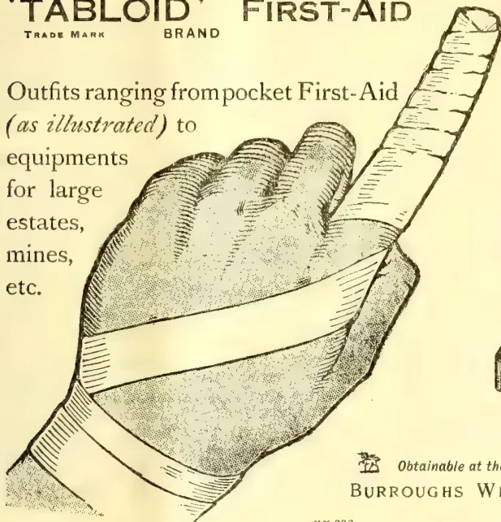
No. 710 'TABLOID' FIRST-AID
Ideal for individual use.
Can be constantly carried
in pocket, saddle-bag, etc.
In scarlet enamelled metal.
Price in London 2/0
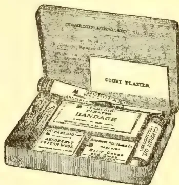
Obtainable at the principal pharmacies in all countries
BURROUGHS WELLCOME & CO., LONDON
xx 292
ALL RIGHTS RESERVED
OCTOBER 1911.
Very little that is new has happened in the camphor oil market during the last few months. As before, the United States have continued to be the principal buyers, and have occasionally been willing to pay prices for which there was really no justification in view of the marked quietness of the camphor market and the falling tendency of turpentine oil. For the moment scarcely any camphor oil is offering but in spite of this fact prices have not become materially firmer. Both in Europe and in the U.S. large supplies of crude oil are available, and the existence of these affords some security that for some time to come no surprises are to be feared. Moreover, as stated above, there has been a not inconsiderable reduction in the prices of turpentine oil. Hence it is hardly likely that from this quarter there will be any inducement for an advance of camphor oil, which most frequently serves as a substance for turpentine oil. In spite of this reduction, however, the demand for the various grades of light and heavy camphor oil has continued to be extremely brisk at unchanged prices, which clearly proves that these oils have everywhere become indispensable; that as compared with the num-
erous other turpentine oil substitutes, their employment offers certain advantages; and finally that in certain cases camphor oil is to be preferred even to turpentine oil.
According to a report from the British Consul at Tamsui, which has just been published, the energetic action by the Japanese Government against the savages in the interior of Formosa has had the result of opening up in the north of the island an extensive forest district, rich in camphor trees. Several important native tribes were overthrown at the end of 1910 or have voluntarily surrendered, so that in the course of the present year a new and important region has been made available for Japanese civilisation. The quality of the camphor trees is said to vary considerably in the different districts. The camphor oil which is prepared from the trees in the north are decidedly richer in camphor than those prepared from the trees in the south, — hence the opening-up of the northern forests is of special importance. The Japanese Government continues to support the planting of new camphor trees by placing trees from the Government schools of Forestry at the disposal of the planters. The distillation of camphor oil from the leaves is still in the experimental stage. As in previous years, the entire production of camphor oil in Formosa was sent to Japan in 1910 to be worked up for camphor.
78
578The Supplement to the Tropical AgriculturistAccording to the same source, the exports of camphor from Formosa in the year 1910 were as follows:—
| lb. | ||
|---|---|---|
| United States | 2,942,800 | |
| Germany | 1,808,000 | |
| France | 908,667 | |
| United Kingdom | 542,400 | |
| India | 249,333 | |
| Japan | 35,072 | |
| Total | 6,486,272 lb. | (Value £404,112.) |
It is further reported that last year the Japanese camphor refiners had to pay 5 yen 80 sen (= 11/10½d.) per 100 kin (133 lb.) more for their crude camphor than was paid by their competitors in Europe and America, and that in consequence they started an energetic movement for the purpose of inducing their Government to sell crude camphor within the Japanese Empire at the same price as abroad. It was pointed out that the cost-price of camphor was of great importance in view of the fact that the manufacture of celluloid has recently been started in Japan, and that camphor is the principal raw material for this manufacture. In the meantime the Government of Formosa has ordered the price of camphor for shipment to Europe to be raised, as from April 1st, 1911, from £5 5s. to £7 10s. per case.
A chapter in the Yearbook of the U.S. Department of Agriculture, by S. C. Hood and R. H. True, contains particulars of the present position of camphor cultivation in the United States, of which an American periodical publishes an extract, dealing principally with the yields which have been obtained thus far and with the prospects of the future development of the plantations. It is stated that an examination of 1,000 trees in the States of Florida, Alabama, Louisiana, Texas, and California revealed considerable variations in the yield of camphor from leaves and from branches. For instance, a few trees which had grown up in the shade of other trees or of high buildings only yielded 0·70 per cent. of crude distillate, whereas other trees, which had grown on poor soil and had received no care, yielded up to 2·77 per cent. distillate. These figures, however, represent the extremes on either side; as a general rule a yield of from 1·75 to 2·25 per cent. may be expected, calculated on green material. The crude oil contains from 75 to 80 per cent. pure camphor, which thus equals an output of from 1·35 to 1·50 per cent calculated on green material. This yield may be increased by trimming the trees, and especially by growing them in hedges. To such an extent is it possible to increase this yield, that the output obtained up to the present from hedge rows grown at distances of 15 feet (space between the separate trees 6 feet, height of the trees 8 feet), amounted for each of the two trimmings which were made yearly to 8,000 lb. of green material per acre, corresponding to a total yield of pure camphor of from 175 to 200 lb. yearly. The planting of camphor trees is specially recommended on light, sandy soil, such as is found in many parts of the Southern States, especially
in Florida. At the same time it is desirable, in view of the high cost of transport, to erect a distillery, and if possible also a refinery, in immediate vicinity to the plantation. In order to keep such a plant going rationally a plantation of at least 200 acres is required. The cost of production calculated per pound is of course less when operations are conducted on a large scale, and it may be assumed that a plantation of 500 acres would be sufficient to warrant the production of camphor at the lowest possible price.
D. E. Hutchins, lately Conservator of Forests, communicates some interesting information on the natural occurrence of camphor-trees in German East Africa. According to this authority, the camphor-tree is abundant and shows a good natural production in a forest situated in the neighbourhood of Wilhelmstal and leased by a Mr Wiese. At one place in the West Usambara Mountains, for example, Hutchins counted 26 seedlings of camphor on 20 squareyards. Their appearance, he states, was more vigorous than that of the suckers which constitute 99 per cent of the reproduction in British East Africa. Unfortunately, Hutchins omits to state whether the tree is botanically allied to the true camphor-tree (Cinnamomum Camphora). Hutchins regards it as curious that neither the botanical staff at the Imperial German Biological-Agricultural Institute at Amani nor the forest officials at Wilhelmstal had recognised the tree.
The Journal from which we take the above particulars points out that, some years ago, Hutchins, on behalf of the British Colonial Office, investigated the potentialities of the forests of Kenya, British East Africa, and on that occasion reported on the occurrence there of the "Ibean camphor-tree"* but that nothing appears to have been done since then to confirm the camphor-bearing properties of that tree.
As a result of the fall in price of natural camphor which took place some time ago, the manufacture of the synthetic article of course received a heavy blow. An editorial article in a French journal states† that a (French?) company which controls several processes relating to the manufacture of camphor has circularised its shareholders to the effect that the cost of production of synthetic camphor must be kept as low as possible, and that with the prices now ruling for the raw material, turpentine oil, it is impossible to make the manufacture pay. The company, however, was in possession of a new process for the preparation of a cheap turpentine oil, for the carrying-out of which it was intended to float a subsidiary company. The writer of the editorial comment asks how it would be possible by such means to bring about a considerable reduction in the cost-price of synthetic camphor without causing first of all a general reduction in the price of turpentine oil as a result of the working of the new process and he enquires whether, for this reason, it would not be more remunerative to sell the
* Comp. Report October 1907, 26.
† Journ. d'Agriculture tropicale 11 (1911), 156
and Magazine of the Ceylon Agricultural Society.—December, 1911. 579new cheap turpentine oil as such, instead of using it to prepare artificial camphor.
Within the past few months cinnamon chips have continued to show only slight fluctuations, and quite recently it was even possible to buy at somewhat reduced rates. The prices of our pure distillate have remained unaltered.
Quotations of Ceylon citronella oil (Schimmel's test) had for a long time been in the neighbourhood of 10d. cif., but within the last few months a firmer tendency has gradually become perceptible, and under its influence the quotations finally advanced to 1s. up to 1s. 2d. cif. European ports. This tightening of the prices is somewhat difficult to understand, especially in view of the fact that as a rule July and August are the very months in which the largest arrivals come forward in Ceylon and also because in our opinion the demand both in Europe and in America has not improved, but on the contrary, has, if anything, fallen off. It is possible that the parties interested believe themselves justified in raising their quotations on account of the not inconsiderable decrease in the exports during the first 7 months of the present year, for the latest available figures relating to the citronella exports from Ceylon are as follows:
| From January 1st to August 21st 1911 | 915,683lb. |
| In the corresponding period of 1910 | 1,070,732,, |
| " " " " 1909 | 1,106,731,, |
The above figures show that the deficiency of the present year's exports compared with those of 1910, to which attention was already drawn in our April Report, has not, as might have been expected, been equalized. The sluggish state of trade which has prevailed in this article in recent months should have been sufficient to show that there could be no question of any increase in the demand, and the raising of the prices could therefore at best be due to artificial manoeuvring, unless indeed the higher requirements as to quality which have been set up within the past few months have caused the native dealers to raise their ideas of the value. However this may be, we are inclined to think that the present firm tendency will not be of long duration, and that if prices should nevertheless rise still higher, the large soap-makers, who are the principal consumers, will find it easy to turn to other articles which, after all, are not more expensive than citronella oil.
The pure estate oil with a geraniol-content of 57 to 62 per cent, which was introduced by us in the spring of the present year, has already secured a number of regular buyers, but generally speaking this exquisite quality is not by far esteemed as it deserves to be. To our regret we have observed that, curiously enough, the very firms of soap-makers, especially in England, who formerly were always the first to insist upon certain standards of quality, and who were in the habit of referring to the insufficiency of "Schimmel's test," are now, when we have succeeded in procuring at a low rate an oil which answers
their requirements, taking little or no notice of this new quality.
Java citronella oil has continued to be available in such ample quantities that we have even been enabled somewhat to reduce our prices.
A method for the acetylation of citronella which originally appeared in the Chemist and Druggist, and which has recently been reprinted in an American contemporary), has inspired a searching criticism by C. Kleber. First of all Kleber corrects the assertion which is made in the description of this method that the acetate of sodium is added for the purpose of absorbing the water formed in the course of esterification with acetic anhydride. As a matter of fact, the sodium acetate merely plays the part of a catalyst, for since no water whatever is formed in the course of the reaction, none can be absorbed. Moreover, every trace of water which might be present would be absorbed, not by the sodium acetate, but by the acetic anhydride, with generation of a corresponding quantity of acetic acid; hence, in order to obviate errors, Kleber expressly recommends the use of fused instead of dry sodium acetate, on the ground that the ordinary crystalline salt, although it looks dry, in fact contains 3 molecules of water of crystallisation, which would effect the decomposition of a portion of the acetic anhydride.
Further, according to Kleber it is impracticable to wash out the acetylated product with water, because too many washings would be required to remove the acid completely. The object is much more quickly attained, he states, by shaking once with a solution of common salt, running off the aqueous solution, and completing the neutralising process with a 10 per cent. carbonate of soda solution, which should be added in small portions, the mixture being vigorously shaken each time. The completion of the reaction is indicated by the cessation of pressure in the separating funnel after shaking 4).
When the oil has been acetylated and washed out it must not be dried with anhydrous sodium bisulphate, as laid down in the Chemist and Druggist, but with anhydrous sodium sulphate, because the first-named agent, owing to its acid properties, might split up the geranyl esters. Warming on the water-bath also is not only superfluous but positively objectionable. Half-an-hour is not enough to saponify the ester which is formed; the oil should be left upon the water-bath at least one hour, two hours is still better.
Kleber next refers briefly to the geraniol-test, the general introduction of which for commercial purposes would scarcely, in his opinion, afford the universal panacea against adulterations which it is claimed to be by others. Kleber specially holds this view because the practised sophisticator would find ways and means of imparting to his oil the required acetylation-value by means of esters, alcohols (fusel oil, &c.) and acids, and because the "average pharmacist," judging blindly by the acetylation value, would fail to detect such additions,
580The Supplement to the Tropical AgriculturistAnother English periodical now enters the field with proposals relating to the tests which Ceylon citronella oil should be required to meet. It demands that the constants of the oil shall be as follows:—
D 15° 0.898 to 0.910,
ad—7 to — 13°,
acid content (calc. as acetic acid) not to exceed 0.25 per cent.,
acetylisable constituents (calc. as geraniol) not less than 58 per cent. soluble in 2 or 3 vols. 80 per cent. alcohol; the solution must remain clear up to an addition of 10 vols.
With regard to these suggestions we wish to point out that the maximum limit of the sp. gr. should be raised to 0.915 at least; we have occasionally—although very exceptionally—known it to be still higher (up to 0.920). The maximum limit for the rotation has also been fixed too low, for only recently we examined samples of guaranteed pure oils, expressly distilled for us in Ceylon, which gave only—16°. It would likewise be impossible to maintain strictly the requirements relating to solubility, rather would it be necessary to admit that the diluted solution may turn slightly opalescent, for an absolutely clear solution is an exception.
In connection with the fixing of constants, the journal referred to also gives a prescription for the determination of geraniol, which, although differing somewhat from that in its precursor, the Chemist and Druggist, shows an equal determination to pass by in silence everything that has recently been published on the subject of the acetylation of citronella oil, and to set up some “special method.” There can be no doubt that our own prescription, which is founded upon experimental basis, must be familiar to the English chemists who are concerned in this matter, and it is therefore surprising that in spite of this knowledge they should again persist in taking a course of their own. Such a proceeding certainly cannot help the problem forward. We can only repeat again and again that in the case of citronella oil in particular it is necessary to work by a clearly-defined method if it is desired to obtain results which shall correspond to the actual percentage of total geraniol in the sample, and which shall be comparable with each other. In our last Report we gave a detailed account of our method, the trustworthiness of which has been proved by tests with mixtures of known geraniol- and citronellal-content, and we may, therefore, content ourselves here with reference to that Report. It goes without saying that in our laboratories our estimations are exclusively made according to this method, for which reason we refrain from quoting the English methods here.
In one of our earlier Reports we described several lemongrass oils produced in the Jalpaiguri District of Northern India. Mr. J. H. Burkill, of Calcutta, who sent us the samples of the oils in question at the time, has now briefly informed us in writing
that this particular species of grass has been identified since then as Cymbopogon pendulus, Stapf. This information is of particular interest because up to the present only two grasses have been known to produce lemongrass oil, namely C. flexuosus, Stapf, which yields the Malabar oil, and C. citratus, Stapf, the parent-plant of the sparingly-soluble, so-called West Indian lemongrass oil. The oil from C. coloratus, Stapf, which is also one of the lemongrasses, has only lately become known, and is said to possess characteristics resembling those of a mixture of lemongrass and Java citronella oils.
is a substance which the chemist can make, even as he can make artificial diamonds; but during a number of years of experiment the one process has remained nearly as expensive as the other. But no chemist will be surprised to find some morning that artificial rubber has been made in a way and on a scale to ensure commercial success for the product. There is a report, which we repeat with all the reserve due to a fact that cannot be scientifically verified, that Badische Anilin-und-Soda Fabriken has at last succeeded in making artificial rubber on a commercial scale. The “Badische,” as it is shortly called, is the greatest of the German chemical manufactories, and the one that is not uncommonly held up by Presidents of the British Association as an example, which the British manufacturer should imitate, of the application of science to industry. It has a staff of a hundred chemists, some of whom are engaged in pure research; and the scope of their work may be inferred from the fact that this organisation, which first wrested the manufacture of the anilin dyes from Great Britain, is the origin of the larger number of the modern drugs used in medicine, from phenacetin to sulphonial and adrenalin. It is also the firm which, after spending a quarter of a million of money in chemical experiments, succeeded in making artificial indigo. It is small wonder that anticipation should look to the Badische for the first announcement that the making of indiarubber can now be transferred from the laboratory to the factory. The number of patents known to be associated with the synthesis of rubber that have recently been taken out by the firm has given substance to the idea.
It will be by no happy accident that the result will be arrived at, but as the consequence of patient experiment which is part of the history of chemistry. The first step was taken twenty years ago or more, when some chemist, untrammelled by any commercial aspiration, found at last what was the essential constituent of caoutchouc—or of indiarubber as we may popularly call it. To Harries belongs the chief credit; though Greville confirmed his patient analysis by evoking the essential substance “isoprene” from heated rubber. Now “isoprene,” a hydro-carbon, is a chemical compound whose molecules are a combination of five atoms of carbon with eight of hydrogen. The chemist now, so to speak, knew where he was. Hitherto he might have made artificial rubber in his crucibles, but he would never
and Magazine of the Ceylon Agricultural Society.—December, 1911.581have been sure of it. "Isoprene" identified it. After this for some years chemists experimented with ways of turning back the isoprene into rubber. Tilden once found a bottle of isoprene in his laboratory that had somehow converted itself partially into rubber, or caoutchouc; and he believed he had found a less accidental method by treating it with hydrochloric acid. But other chemists tried for years in vain to repeat Tilden's experiments, and if any firm, or any chemist, did produce what he called artificial rubber, the production was received with deep suspicion rather than congratulation. In January of last year the indomitable Harries took out a patent for heating "isoprene" with strong acetic acid in such a way that the desired caoutchouc was produced—but it was nearly as precious as rubies. What, therefore, was wanted—perhaps we should say is wanted—was cheap "isoprene." Now there is another very common hydrocarbon, whose molecule, combining ten atoms of carbon with sixteen atoms of hydrogen, is clearly indicated as the suitable parent of "isoprene." It is oil of turpentine. The problem of altering into is therefore the real problem of artificial rubber. We can put it much more lengthily by saying that it may be done rather after the following way. Oil of turpentine contains pinene. Pinene heated, gives dipentene. Standing and Kleven, by heating dipentene in a partial vacuum, have extracted "isoprene." "Isoprene" heated with strong acetic acid gives rubber. Cheaper the process at all or any of these stages and the trick is done.—M. Post, Nov. 3.
The Department of Agriculture has recently been asked by a number of planters to advise as to what manures to apply to rubber trees and in what quantities they should be used. On the majority of plantations it is doubtful whether any manuring is required. There are a number of places, however, where the growth or the general vigour of the trees is not equal to that on others. In these places, provided it is not the cultivation or the drainage that is at fault, manuring may prove of advantage. Cultivation in most places will be found of greater advantage than manuring. If every rubber field could be chankolled twice a year or receive an equivalent cultivation with ploughs, disc harrows, etc., it is certain that both the immediate and permanent benefits would be great. Of course with old trees which have formed an interlacing root system near the surface of the soil such cultivation would be dangerous, but with young plantings cultivation is strongly recommended. On fairly flat lands which have been thoroughly cleared of timber and stumps, probably mechanical cultivation by ploughs or disc harrows will be found more economical and more effective. The following recommendations for manurial treatment have been drawn up by Mr B J Eaton, Agricultural Chemist, Federated Malay States. It must be borne in mind that they are based on general principles and are not the result of experiments. Manurial experi-
ments have been started by the Department of Agriculture, but reliable results will not be obtainable from them for some years. It is proposed to publish similar notes for other types of soils.
The following treatment is to be recommended for clay soils:—
| Slaked lime | ... | to 1 ton per acre |
| Basic Slag (phosphate manure) | ... | 350 lb. do |
| Ammonium Sulphate | ... | 150 lb. do |
| Potassium Sulphate... | ... | 100 lb. do |
The lime and basic slag should be applied about a month or two months before the other manures as they decompose Ammonium Sulphate. The Ammonium Sulphate and Potassium Sulphate should be mixed together and then mixed with earth and subsequently spread. If concentrated manures are used they frequently injure the roots with which they come in contact, and the earth is added as a diluent. With trees one or two years old it is preferable to dig a shallow trench (4 to 6 inches deep) at a radius of 2-3 feet round the tree, sprinkle the manure round and subsequently cover with earth again. With older trees, where the roots interlace, the manures may be broadcast and the whole surface forked over.
The following can be used in place of Ammonium Sulphate:—
These should be applied at the rate of about 600 lb. per acre. If it is found that the cost of the quantity recommended is cheaper than the Ammonium Sulphate, I would recommend their use. Instead of Potassium Sulphate may be employed.
Kainit (12 per cent Potash) 400 lb. per acre, or
Potassium Chloride 100 lb. per acre.
The cost of the above quantities should be compared with that of 100 lb. of Potassium Sulphate. Instead of Basic Slag, Perlis Guano or other Phosphatic Guano may be substituted. Perlis Guano (containing 15 per cent Phosphoric Acid) at the rate of 500 lb. per acre, should be very economical, as its price is only $25 per ton. In the first instance as a trial I would suggest the use of the most economical fertilizer, until more is known of the different effects on the Para rubber tree on different soils of the various nitrogenous, phosphatic or potash fertilizers. The average cost per acre of the above formula excluding lime, will amount to $20 to $25 per acre. This does not include transport, freight or labour. Lime can be purchased at 80 cents to $1 per picul.
L. LEWTON BRAIN.
—Agricultural Bulletin, No. 11 for Nov.
582The Supplement to the Tropical AgriculturistThe following circular on plantation rubber has been issued by Mr. William Schultz, manager on behalf of the London Producing Clearing House, Limited: The company will be prepared, on or after November 6 next, under their customary rules for deposits, margins, etc., to register contracts for plantation rubber delivered in Antwerp in conformity with the rules for delivery fixed by the Caisse Internationale de Liquidation et de Garantie des Opérations en Marchandises, laid down in their Règlement pour les affaires à termes en Caoutchouc de Plantation. An abridged extract of these rules will be found below. For further information please apply to the company's offices, where also a limited number of complete copies of the Règlement may be had at 6d. each.
The unit of contract will be 2,500 kilos net, equal to 5,510 lb. Samples of type plantation rubber may be seen at the Company's offices. Prices will be in English currency per lb. net less 2 per cent. discount, or in francs and centimes per kilo net less 2 per cent, at the option of contracting parties.
The deposit is, until further notice, £100 for each contract of 5,510 lb., payable by both buyer and seller. Margins will be regulated on the basis of the quotations fixed daily by the company's brokers. Business will be accepted only from the company's authorised brokers. The minimum rate of brokerage will be per cent for buying and per cent for selling. The company's fees are 12s. on each side for every unit of contract, and are payable by contracting parties.
Pending the establishment of a secured London terminal market for rubber, we are glad to offer our clients an opportunity to have a guaranteed contract for this article, and we have much pleasure in expressing our sense of the courtesy shown us by the Caisse Internationale in this matter.
From the above it will be seen that the Antwerp rules are being followed, and that the delivery of rubber is to be in Antwerp unless otherwise stipulated. Strange as it may seem, although London is the largest market for rubber there is no machinery here for secured terminal contracts in this article.
The necessity for such contracts in the case of rubber has been recognised on the Continent for some time. Antwerp has taken the lead and established an up-to-date market, while Hamburg is making active preparations, which will shortly be completed, with a similar object in view. The present action of the London Produce Clearing House is intended to offer a remedy and to retain business here which would otherwise go abroad, and it is hoped that this action will soon be followed by an arrangement in London similar to that which prevails at Antwerp.
The extract of Antwerp rules is as follows: The basis of contract is type plantation, Hevea Brasiliensis, first latex unsmoked in thin crepes, stored in Antwerp in a warehouse admitted by
the Caisse Internationale (for the option to deliver at other ports see below). Rubber must be sound and of fair and merchantable quality, packing free and in good condition. Every tender must be accompanied by a certificate of quality. Seller has the option to tender, subject to a scale of differences fixed by experts: (1) Plantation rubber, Hevea Brasiliensis, first latex consisting partly or wholly of smoked or unsmoked in all sorts, forms, preparation and shades. (2) Rubber, consisting entirely of hard cure fine Para, with the exclusion of Peru, Rio-Negro, and—or—Tapajos.
Sellers may not deliver: (1) Lots found by experts to be on the average more than 1fr. per kilo inferior to type. (2) Lots consisting of rubber "suranne."
Allowances for inferior rubber will be credited to buyer in full. In the case of superior rubber the maximum allowance credited to seller will be 1fr. per kilo.
Types will be deposited with the Caisse Internationale. Samples may be had against payment. The difference between basis of contract and Para will be fixed every month, not later than the 25th, to serve as guidance for experts during the next month (for deliveries in November, 1911, it is 0.90fr. per kilo, equal to about 3d. per lb.) Certificates of quality are valid as long as the units they represent remain intact, but not for more than twelve months for hard cure fine Para, and six months for plantation first latex. The fees for valuation are 125fr. per tender. Copies will be delivered free of charge. If types are altered, the new types will be applicable only for such month for which no contracts are registered.
Sellers may tender at the earliest three clear working days before the first working day of the month for delivery, and not later than four clear working days before the last working day of the month of delivery. Buyer may take up tender at once, but not later than three clear working days after date of tender. Payment is made to the Caisse Internationale, who settles with seller within twenty-four hours.
Seller is entitled to carry over his contract to the following month, informing the Caisse Internationale of his intention not later than five working days previous to the end of the month of delivery, and paying a penalty of 5 per cent. on his contract, calculated at the quotation of the date of his notification. This prolongation cannot take place more than three successive times on the same contract. The penalty is payable to last buyer, who is bound to accept it, and to have his contract carried over accordingly.
Sellers shall also have the option to deliver stored wholly in a warehouse admitted by the Caisse Internationale: At London on payment of a fine of 175fr. per contract. At Liverpool on payment of a fine of 200fr. At Havre on payment of a fine of 175fr. Valuations for these rubbers must take place in Antwerp, and all extra charges incurred will be paid by seller. The intention of seller to deliver in these places must be notified to the Caisse Internationale not later than the 15th day of the month of delivery.
and Magazine of the Ceylon Agricultural Society.—December, 1911. 583
If one-fourth of the Antwerp stock be destroyed by fire or any other catastrophe, any seller who shows that his tenders were thus destroyed may defer delivery for thirty days without paying any penalty. After that delay he may be called upon to deliver.
All disputes, of whatever nature, will be submitted for arbitration to the Chambre Arbitrale et de Conciliation pour Caoutchouc à Anvers, and all contracting parties are bound to abide by their award and not to go to law.—H. & C. Mai, Nov. 3.
Little is known in Java about the cure of latex by smoking, this being the primitive method adopted nearly a century ago by the Amazon Indians and still survives, in the treatment of wild grown Hard Para. Dr. K Goeter, writing to the Sumatra Post, explains the Brazilian treatment of the latex, and goes on to say: "It is, however, most noticeable and, according to the experiences of Trillat and other investigators, that wood smoke contains another substance (besides creosote) having strong conserving properties, namely, formaldehyde, which, dissolved in water, is the formaline or formal of commerce. It was therefore thought probable that this stuff would be found in small quantities in smoked rubber. This was, indeed, found to be so. With the help of various sensitive reactions, I could undoubtedly show the presence of formaldehyde in smoked rubber sheets so that by reason of this result it may be taken that the conserving work of smoke on rubber must at least be partly attributed to the presence of formaldehyde in the smoke. In the development of smoke, it would be well to bear this in mind, by endeavouring to get a smoke that is as rich as possible in formaldehyde. Now it has been found that organic substances, for instance, sugar, will, through incomplete combustion, produce more formaldehyde when they are placed in contact with metals. From this we may also conclude that smouldering wood in contact with a metal, such as iron, will give a smoke with a higher percentage of formaldehyde than when that contact with a metal does not exist. The wood must smoulder; therefore, it must burn without flame, and this is only attained by limiting the admission of air. If there is too much air, less smoke is obtained and more fuel is used up; so that it is less economical from two points of view. It might be well also for planters to bear in mind that in smoke a poisonous gas, the well-known carbonicoxida is formed, of which the relative quantity increases under the last-named conditions. From a hygienic point of view, the health of the coolies working continually in an atmosphere of smoke should be considered. Whether smoking has a direct influence on the physical properties, for instance, on the elasticity of the product, I should not dare at present to decide. As a fact, it can only be said now that smoked rubber keeps better and is not so liable to mould as unsmoked rubber. As a rule, a higher price is paid for smoked rubber on this account."
The export of copra has risen steadily, and with improved methods of cultivation should continue to progress. The export of soap and other products of the coconut palm will only show an increase when there is a considerable fall in the price of copra, but the quantity of nuts collected is steadily advancing. A moderate crop only of vanilla was harvested. Vanilla plantations are being gradually restricted to the higher zones of the mountains owing to successive dry seasons. With the legislation in France and the United States restricting artificial substitutes, there has been a continuance of the remunerative prices of the past two years, and as there is a growing reluctance on the part of manufacturers to use the artificial vanillin there seems no reason why vanilla cultivation should not continue to form one of the principal industries of the Colony. I am aware that this opinion is contrary to that of a number of experts. When in England in 1907, I was told by a distinguished man of science, whose researches have been mainly connected with tropical products, that plantation vanilla was in its death throes. In that year the Seychelles crop realised a million rupees, the price rose steadily (apart from a temporary drop in 1908) and good prices have ruled ever since. It is not as if vanilla has to be cultivated at the expense of less capricious products: the orchid will grow and thrive where coconuts and rubber will not. It is true that the yield fluctuates considerably, but even the famine harvest of 1909 (11 tons) realised over Rs. 200,000, and was third in value in the exports for that year.
The standard of cultivation is being steadily raised as is evidenced by the regular increased yield of coconuts. The planting of Para rubber has continued on a more extensive scale owing to the acquisition of a number of estates by a company styled the Seychelles Rubber and Coconut Estates Co., Ltd. This company was floated during the year, and purchased a number of good estates. The price paid for the land was relatively high, but the vendors accepted a large proportion of the purchase price in shares. Under the present energetic management the operations of the company should have a beneficial effect on the agricultural progress of the Colony.
From the following figures, compiled, as usual, by Mr. George Seton, of the Indian Tea Share Exchange, Winchester House, E.C., it will be seen that the value of the shares of the forty-five representative tea-planting companies selected by him for particular observation, after dipping a little during May and June rose steadily during the quarter ended September 30th, and stood at a very high level at the beginning of October.
584The Supplement to the Tropical Agriculturist| Face value of 45 Companies' shares | £9,500,000 | ||
|---|---|---|---|
| Market value, 1st Sept., 1902 | (lowest) | 6,050,000 | |
| " 1st Jan., 1904 | 8,200,000 | ||
| " 1st Jan., 1905 | 7,200,000 | ||
| " 1st Jan., 1906 | 8,950,000 | ||
| " 1st Jan., 1907 | 9,650,000 | ||
| " 1st Jan., 1908 | 10,500,000 | ||
| " 1st Jan., 1909 | 9,950,000 | ||
| " 1st Jan., 1910 | 11,550,000 | ||
| " 1st April, 1910 | 13,850,000 | ||
| " 1st July, 1910 | 14,500,000 | ||
| " 1st Oct., 1910 | 14,450,000 | ||
| " 1st Jan., 1911 | 16,400,000 | ||
| " 1st Feb., 1911 | 15,500,000 | ||
| " 1st April, 1911 | (corrected) | 16,010,000 | |
| " 1st May, 1911 | 15,900,000 | ||
| " 1st June, 1911 | 15,900,000 | ||
| " 1st July, 1911 | 15,700,000 | ||
| " 1st Oct., 1911 | 16,550,000 | ||
As the grand total of the share and Debuture capital of the 170 or so companies altogether registered in the United Kingdom amounts to about double the above figure, the fluctuations of the entire volume may be thus approximately computed :—
| Face value of 170 Companies | £19,000,000 | ||
|---|---|---|---|
| Lowest value, 1st Sept., 1902 | 12,100,000 | ||
| Market value, 1st Jan., 1905 | 14,400,000 | ||
| " 1st July, 1905 | 15,400,000 | ||
| " 1st Jan., 1906 | 17,900,000 | ||
| " 1st July, 1906 | 17,800,000 | ||
| " 1st Jan., 1907 | 19,300,000 | ||
| " 1st July, 1907 | 20,900,000 | ||
| " 1st Jan., 1908 | 21,000,000 | ||
| " 1st Jan., 1909 | 19,900,000 | ||
| " 1st July, 1909 | 21,300,000 | ||
| " 1st Jan., 1910 | 23,100,000 | ||
| " 1st July, 1910 | 29,000,000 | ||
| " 1st Oct., 1910 | 28,900,000 | ||
| " 1st Jan., 1911 | 32,800,000 | ||
| " 1st Feb., 1911 | 31,000,000 | ||
| " 1st April, 1911 | 32,100,000 | ||
| " 1st July, 1911 | 31,400,000 | ||
| " 1st Oct., 1911 | 33,100,000 | ||
The Tea market has continued steadily to improve as the autumn advanced, with not only the commoner and cheaper grades of tea rising in price, but nearly all other grades, especially the finest, sharing in the improvement. Good trade at home has been supplemented by increasing inquiry from abroad, especially from Russia, but also from Belgium and Germany and other central European countries, where recently great efforts have been made to direct public attention to the merits of good Indian tea, which efforts are now beginning to reap a tardy reward.
The share market, taking its cue from that for the produce, has ruled strong and business has latterly been on a very large scale, while values, have, with only a few exceptions, advanced smartly, though it will be seen from the above figures that the aggregate value for the first time exceeded the figure of January 1st last. The advance during the nine months has been uneven—several leading shares were now standing lower than they did last Christmas. In other cases, however, the advance has been quite phenomenal. Ceylon shares have for the most part, declined, owing to the collapse in rubber, in which product most of them have an interest, as well as in tea.—F. Times, Oct. 31.
Since the advent of the coffee blight (Hemileia vastatrix) into the Philippines some twenty-five or thirty years ago, it has been practically impossible to raise even a fair crop of coffee below 2,000 feet elevation. This blight destroyed the coffee industry not only in the Philippines but in Java, Ceylon and the Malay Peninsula at about the same time that it reached this Archipelago.
An attempt is being made now by several of the old coffee countries to discover or create one or more varieties of coffee which will be resistant to this fungus, and it is believed there is some hope in some of the new hybrids of robusta coffee (Coffea robusta). This Bureau now has growing at the Lamaso experiment station a considerable quantity of this coffee, and a little later seed will be distributed to any one who wishes to experiment with the variety. However, like several of the non-commercial coffees this robusta does not have a first-class flavour, though it is in some respects better than that of either Liberian (C. liberica) or the Inhambane coffee of Mozambique. Another trouble with the new coffees is that they are for the most part very weak in caffeine, the active principal of the beverage—some of them possessing no stimulating qualities whatever.—Philippine Agricultural Review, for Oct.
In the September issue of "L'Agronomie Tropical" some interesting particulars with regard to rubber in British East Africa are given by Mr A C MacDonald, the Director of Agriculture there. The larger part of the rubber so far exported, he mentions, has consisted of that obtained from indigenous species of Landolphia, which are to be found in the coastal districts of Takaungu, Witu, and Mwele, and on the andi plateau, which is 6,000 feet high. So far, the methods of tapping have been so crude as annually to reduce the extent of the rubber producing districts, the plants, in many cases, being bled to death. In the forests of Nandi, coagulation by sprinkling the wound with salt after the incision, has had to be abandoned, as the monkeys come along, lick off the salt, and gnaw the lianes. Endeavours are being made to give the plants a rest, in order to permit of their regeneration, and the effect of this treatment is to be carefully noted. Another form of rubber is obtained from the Mascarenhasia elastica, but its value, up to the present, is not exactly known. In some of the more favourable localities, Hevea braziliensis (Pavia) has some chance of success, but as a general rule it does not grow very well, especially near the coast and the lakes. Ceara (Manihot Glaziovii) does extremely well near the coast to the north and south of Mombasa, and in the region extending from Mazeras and Changamwe to Ribe, as well as in a large part of the Lake district, as experiments conducted during the last three years have shown. Fifteen hundred to 2,000 acres have already been planted and the plantations are constantly extending. So far tapping has been done for sample purposes only, but the rubber obtained from trees two to two and a half years old has been valued at 5s. a lb.
This image is a scan of a blank page. The paper has a light beige or cream-colored tint. There are a few very small, dark specks scattered across the surface, which appear to be scanning artifacts or dust particles. No text, lines, or other markings are present on the page. This image is a scan of a blank page. The paper has a light beige or cream-colored tint. There are a few very small, dark specks scattered across the surface, which appear to be scanning artifacts or dust particles. No text, lines, or other markings are present on the page. This image shows a single, blank page of aged paper. The paper has a warm, light beige or cream color, characteristic of old documents. There are subtle variations in tone across the surface, with some areas appearing slightly darker or more yellowed than others, particularly towards the edges. A few very small, faint dark spots or smudges are visible, likely due to age or handling. The texture of the paper appears slightly grainy. The overall appearance is that of a flyleaf or endpaper from an old book.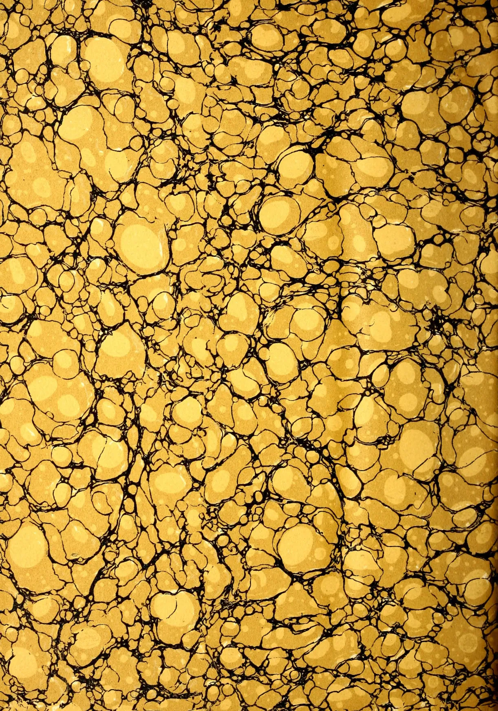
This image displays a classic marbled pattern, often referred to as 'stone' or 'shell' marble. The background is a warm, golden-yellow hue. Overlaid on this background are intricate, dark black veins that create a complex network of organic shapes. These shapes vary in size, from small, rounded spots to larger, irregular, and somewhat flattened areas, giving the overall appearance of a natural stone surface. The pattern is dense and covers the entire frame without any visible borders or repeating motifs.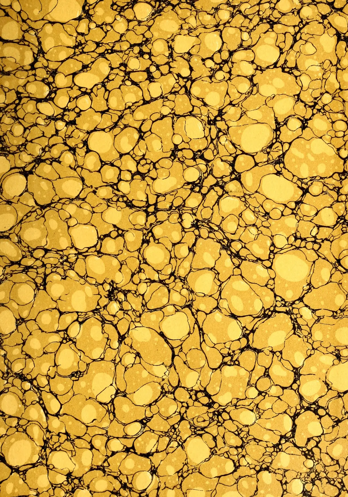
This image displays a classic marbled pattern, often referred to as 'stone' or 'shell' marble. The composition is a dense, non-repeating arrangement of organic, rounded shapes in various sizes. The primary color palette consists of warm yellows and golds, with some areas appearing slightly darker or more saturated. These colored regions are separated by a network of thin, irregular black lines that create a sense of depth and texture, mimicking the natural grain of stone or the cellular structure of a shell. The overall effect is one of intricate, natural complexity.